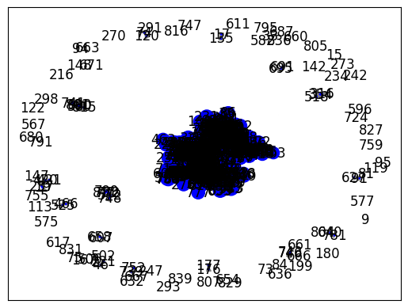

Berita Online Suara.com#
import requests as req
from bs4 import BeautifulSoup as bs
from datetime import datetime
import csv
def scraping_berita(halaman):
# Daftar kategori yang dapat diisi custom sesuai kebutuhan
kategori = ['sports', 'entertainment', 'bisnis']
a = 1
with open('berita_suara.csv', 'w', newline='', encoding='utf-8') as file:
fieldnames = ['Judul_Artikel', 'Content_Artikel', 'Category']
writer = csv.DictWriter(file, fieldnames=fieldnames)
writer.writeheader()
# Looping untuk setiap kategori
for kategori_terpilih in kategori:
katakunci = kategori_terpilih
for page in range(1, halaman + 1):
url = f'https://www.suara.com/indeks/terkini/{katakunci}/2023?page={page}'
html = req.get(url).text
soup = bs(html, 'lxml')
list_berita = soup.find('div', class_='list-item-y-img-retangle')
berita_list = list_berita.find_all('div', class_='item')
for berita in berita_list:
link = berita.find('div', class_='text-list-item-y').find('a')['href']
headline = berita.find('div', class_='text-list-item-y').find('a').text
if (katakunci == 'sports'):
category = 'Sports'
elif (katakunci == 'entertainment'):
category = 'Entertainment'
elif (katakunci == 'bisnis'):
category = 'Bisnis'
ge_berita = req.get(link).text
sop_berita = bs(ge_berita, 'lxml')
content_elem = sop_berita.find_all('article', class_='detail-content detail-berita')
content_list = [p.text for elem in content_elem for p in elem.find_all('p')]
artikel = '\n'.join(content_list).replace('ADVERTISEMENT', '').replace('SCROLL TO RESUME CONTENT', '').replace('\n', ' ').strip()
print(f'data berhasil diambil[{a}] > {headline[0:10]}')
a += 1
writer.writerow({'Judul_Artikel': headline, 'Content_Artikel': artikel, 'Category': category})
# pemanggilan fungsi dengan jumlah halaman yang di scraping
scraping_berita(14)
---------------------------------------------------------------------------
AttributeError Traceback (most recent call last)
<ipython-input-2-cf330c31b29d> in <cell line: 46>()
44
45 # pemanggilan fungsi dengan jumlah halaman yang di scraping
---> 46 scraping_berita(14)
<ipython-input-2-cf330c31b29d> in scraping_berita(halaman)
19 soup = bs(html, 'lxml')
20 list_berita = soup.find('div', class_='list-item-y-img-retangle')
---> 21 berita_list = list_berita.find_all('div', class_='item')
22
23 for berita in berita_list:
AttributeError: 'NoneType' object has no attribute 'find_all'
from google.colab import drive
drive.mount('/content/drive')
Mounted at /content/drive
import pandas as pd
path = '/content/drive/MyDrive/ppw/latihan/dataset/berita_suara_label_fiks.csv'
data = pd.read_csv(path, delimiter=';')
data
| Judul_Artikel | Content_Artikel | Category | |
|---|---|---|---|
| 0 | \n MedcoEnergi Membangu... | Suara.com - PT Medco Energi Internasional Tbk ... | Bisnis |
| 1 | \n Sekjen Kemnaker Temu... | Suara.com - Sekretaris Jenderal (Sekjen) Kemen... | Bisnis |
| 2 | \n Bertemu Pimpinan Per... | Suara.com - Sebagai langkah pertukaran informa... | Bisnis |
| 3 | \n Inovasi Pertamina EP... | Suara.com - Pola pertanian tradisional dengan ... | Bisnis |
| 4 | \n Ayo Cermat Sebelum T... | Suara.com - Waspada! Modus penipuan yang menga... | Bisnis |
| ... | ... | ... | ... |
| 835 | \n Fuji Ditransfer Duit... | Suara.com - Selebgram Fujianti Utami alias Fuj... | Entertainment |
| 836 | \n Yuni Shara Bikin Vid... | Suara.com - Yuni Shara dikenal sebagai salah s... | Entertainment |
| 837 | \n Direkam Sandy Pas Ba... | Suara.com - Sandy Pas Band mengunggah foto kom... | Entertainment |
| 838 | \n Bukan TBC, Terungkap... | Suara.com - Ibunda musisi Virgoun, Eva Manurun... | Entertainment |
| 839 | \n Shindy Samuel Jalani... | Suara.com - Shindy Samuel menjalani prosedur k... | Entertainment |
840 rows × 3 columns
# Hitung jumlah kelas
kelas = data['Category'].value_counts()
kelas
Bisnis 280
Sports 280
Entertainment 280
Name: Category, dtype: int64
data.isnull().sum()
Judul_Artikel 0
Content_Artikel 0
Category 0
dtype: int64
data.isna()
data.dropna(subset=['Judul_Artikel', 'Content_Artikel', 'Category'],inplace = True)
# Cek kembali nilai NaN
data
| Judul_Artikel | Content_Artikel | Category | |
|---|---|---|---|
| 0 | \n MedcoEnergi Membangu... | Suara.com - PT Medco Energi Internasional Tbk ... | Bisnis |
| 1 | \n Sekjen Kemnaker Temu... | Suara.com - Sekretaris Jenderal (Sekjen) Kemen... | Bisnis |
| 2 | \n Bertemu Pimpinan Per... | Suara.com - Sebagai langkah pertukaran informa... | Bisnis |
| 3 | \n Inovasi Pertamina EP... | Suara.com - Pola pertanian tradisional dengan ... | Bisnis |
| 4 | \n Ayo Cermat Sebelum T... | Suara.com - Waspada! Modus penipuan yang menga... | Bisnis |
| ... | ... | ... | ... |
| 835 | \n Fuji Ditransfer Duit... | Suara.com - Selebgram Fujianti Utami alias Fuj... | Entertainment |
| 836 | \n Yuni Shara Bikin Vid... | Suara.com - Yuni Shara dikenal sebagai salah s... | Entertainment |
| 837 | \n Direkam Sandy Pas Ba... | Suara.com - Sandy Pas Band mengunggah foto kom... | Entertainment |
| 838 | \n Bukan TBC, Terungkap... | Suara.com - Ibunda musisi Virgoun, Eva Manurun... | Entertainment |
| 839 | \n Shindy Samuel Jalani... | Suara.com - Shindy Samuel menjalani prosedur k... | Entertainment |
840 rows × 3 columns
data.isnull().sum()
Judul_Artikel 0
Content_Artikel 0
Category 0
dtype: int64
Ekstraksi Fitur#
!pip install sastrawi
Collecting sastrawi
Downloading Sastrawi-1.0.1-py2.py3-none-any.whl (209 kB)
?25l ━━━━━━━━━━━━━━━━━━━━━━━━━━━━━━━━━━━━━━━━ 0.0/209.7 kB ? eta -:--:--
━━━━━━━━━━━━━━━━━━━━━━━━━━━━━━━━━━━━━━━╺ 204.8/209.7 kB 6.3 MB/s eta 0:00:01
━━━━━━━━━━━━━━━━━━━━━━━━━━━━━━━━━━━━━━━━ 209.7/209.7 kB 5.1 MB/s eta 0:00:00
?25hInstalling collected packages: sastrawi
Successfully installed sastrawi-1.0.1
import nltk
import warnings
from nltk.tokenize import sent_tokenize
from nltk.corpus import stopwords
from sklearn.feature_extraction.text import TfidfVectorizer
from sklearn.feature_extraction.text import CountVectorizer
from Sastrawi.Stemmer.StemmerFactory import StemmerFactory
nltk.download('stopwords')
nltk.download('punkt')
warnings.filterwarnings('ignore')
[nltk_data] Downloading package stopwords to /root/nltk_data...
[nltk_data] Unzipping corpora/stopwords.zip.
[nltk_data] Downloading package punkt to /root/nltk_data...
[nltk_data] Unzipping tokenizers/punkt.zip.
def split_into_sentences(text):
sentences = sent_tokenize(text)
return sentences
# Memisahkan dokumen menjadi kalimat-kalimat terpisah dan simpan dalam kolom baru 'Sentences'
data['Sentences'] = data['Content_Artikel'].apply(split_into_sentences)
data['Sentences']
0 [Suara.com - PT Medco Energi Internasional Tbk...
1 [Suara.com - Sekretaris Jenderal (Sekjen) Keme...
2 [Suara.com - Sebagai langkah pertukaran inform...
3 [Suara.com - Pola pertanian tradisional dengan...
4 [Suara.com - Waspada!, Modus penipuan yang men...
...
835 [Suara.com - Selebgram Fujianti Utami alias Fu...
836 [Suara.com - Yuni Shara dikenal sebagai salah ...
837 [Suara.com - Sandy Pas Band mengunggah foto ko...
838 [Suara.com - Ibunda musisi Virgoun, Eva Manuru...
839 [Suara.com - Shindy Samuel menjalani prosedur ...
Name: Sentences, Length: 840, dtype: object
#panjang kalimat
len(data['Sentences'][837])
16
TF-IDF#
from sklearn.feature_extraction.text import TfidfVectorizer
# Mengonversi kalimat-kalimat menjadi teks untuk setiap dokumen
data['Sentences_Text'] = data['Sentences'].apply(lambda x: ' '.join(x))
# Menggunakan TfidfVectorizer untuk menghitung TF-IDF per kalimat
vectorizer = TfidfVectorizer()
tfidf_matrix = vectorizer.fit_transform(data['Sentences_Text'])
# Hasil TF-IDF per kalimat disimpan dalam variabel tfidf_matrix
print(tfidf_matrix)
(0, 6605) 0.03071037536348688
(0, 9303) 0.010913439864300625
(0, 3982) 0.016776885791727404
(0, 9908) 0.020672504912336315
(0, 9127) 0.013430806787237997
(0, 1780) 0.014213364484592787
(0, 10318) 0.013647990778647845
(0, 8998) 0.021755236552781335
(0, 10093) 0.014001750412858832
(0, 12982) 0.03153681566224689
(0, 3655) 0.05996280671450571
(0, 8447) 0.026819848064359858
(0, 13187) 0.026819848064359858
(0, 15662) 0.01081942627946253
(0, 14231) 0.03199547795463709
(0, 11106) 0.041070797408723006
(0, 6863) 0.041070797408723006
(0, 3677) 0.041070797408723006
(0, 12057) 0.041070797408723006
(0, 4340) 0.0251960471225082
(0, 11728) 0.027029668451495795
(0, 2099) 0.02770551473529584
(0, 3881) 0.022739705232154538
(0, 16775) 0.022130448924804376
(0, 2347) 0.035826778881588146
: :
(839, 9303) 0.03446812580423158
(839, 9127) 0.021209386946327083
(839, 14231) 0.05052596491205491
(839, 17696) 0.014816679934317734
(839, 7586) 0.025920789898113826
(839, 6373) 0.03783354790033733
(839, 16978) 0.016939359466277705
(839, 294) 0.01198068689500629
(839, 86) 0.014934199467853206
(839, 7859) 0.016307074527496336
(839, 3847) 0.022048075279447382
(839, 10090) 0.024108842163761045
(839, 1042) 0.03716667645809412
(839, 878) 0.03431909956601538
(839, 14232) 0.0343549897981748
(839, 7031) 0.021347570503819815
(839, 7394) 0.03716667645809412
(839, 18758) 0.029601018793645482
(839, 18212) 0.03491164939693373
(839, 3816) 0.01022549107487266
(839, 4059) 0.039940184909287114
(839, 3801) 0.012351786526658378
(839, 9154) 0.06003237272600903
(839, 3616) 0.01957043684455787
(839, 16683) 0.01957043684455787
Cosine Similarity#
from sklearn.metrics.pairwise import cosine_similarity
sentences = data['Sentences']
# Hitung cosine similarity antara semua pasangan kalimat
similarity_matrix = cosine_similarity(tfidf_matrix, tfidf_matrix)
# Cetak hasil similarity_matrix
num_sentences = len(sentences) # Jumlah kalimat
for i in range(num_sentences):
for j in range(i+1, num_sentences):
similarity = similarity_matrix[i][j]
print(f"Cosine Similarity antara Kalimat {i + 1} dan Kalimat {j + 1}: {similarity:.4f}")
Output streaming akan dipotong hingga 5000 baris terakhir.
Cosine Similarity antara Kalimat 54 dan Kalimat 282: 0.0344
Cosine Similarity antara Kalimat 54 dan Kalimat 283: 0.0570
Cosine Similarity antara Kalimat 54 dan Kalimat 284: 0.0252
Cosine Similarity antara Kalimat 54 dan Kalimat 285: 0.0396
Cosine Similarity antara Kalimat 54 dan Kalimat 286: 0.0530
Cosine Similarity antara Kalimat 54 dan Kalimat 287: 0.0429
Cosine Similarity antara Kalimat 54 dan Kalimat 288: 0.0639
Cosine Similarity antara Kalimat 54 dan Kalimat 289: 0.0335
Cosine Similarity antara Kalimat 54 dan Kalimat 290: 0.0319
Cosine Similarity antara Kalimat 54 dan Kalimat 291: 0.0607
Cosine Similarity antara Kalimat 54 dan Kalimat 292: 0.0234
Cosine Similarity antara Kalimat 54 dan Kalimat 293: 0.0442
Cosine Similarity antara Kalimat 54 dan Kalimat 294: 0.0281
Cosine Similarity antara Kalimat 54 dan Kalimat 295: 0.0514
Cosine Similarity antara Kalimat 54 dan Kalimat 296: 0.0180
Cosine Similarity antara Kalimat 54 dan Kalimat 297: 0.0335
Cosine Similarity antara Kalimat 54 dan Kalimat 298: 0.0231
Cosine Similarity antara Kalimat 54 dan Kalimat 299: 0.0519
Cosine Similarity antara Kalimat 54 dan Kalimat 300: 0.0330
Cosine Similarity antara Kalimat 54 dan Kalimat 301: 0.0616
Cosine Similarity antara Kalimat 54 dan Kalimat 302: 0.0385
Cosine Similarity antara Kalimat 54 dan Kalimat 303: 0.0351
Cosine Similarity antara Kalimat 54 dan Kalimat 304: 0.0531
Cosine Similarity antara Kalimat 54 dan Kalimat 305: 0.0427
Cosine Similarity antara Kalimat 54 dan Kalimat 306: 0.0228
Cosine Similarity antara Kalimat 54 dan Kalimat 307: 0.0306
Cosine Similarity antara Kalimat 54 dan Kalimat 308: 0.0352
Cosine Similarity antara Kalimat 54 dan Kalimat 309: 0.0469
Cosine Similarity antara Kalimat 54 dan Kalimat 310: 0.0536
Cosine Similarity antara Kalimat 54 dan Kalimat 311: 0.0239
Cosine Similarity antara Kalimat 54 dan Kalimat 312: 0.0344
Cosine Similarity antara Kalimat 54 dan Kalimat 313: 0.0180
Cosine Similarity antara Kalimat 54 dan Kalimat 314: 0.0506
Cosine Similarity antara Kalimat 54 dan Kalimat 315: 0.0515
Cosine Similarity antara Kalimat 54 dan Kalimat 316: 0.0545
Cosine Similarity antara Kalimat 54 dan Kalimat 317: 0.0434
Cosine Similarity antara Kalimat 54 dan Kalimat 318: 0.0216
Cosine Similarity antara Kalimat 54 dan Kalimat 319: 0.0505
Cosine Similarity antara Kalimat 54 dan Kalimat 320: 0.0458
Cosine Similarity antara Kalimat 54 dan Kalimat 321: 0.0434
Cosine Similarity antara Kalimat 54 dan Kalimat 322: 0.0442
Cosine Similarity antara Kalimat 54 dan Kalimat 323: 0.0334
Cosine Similarity antara Kalimat 54 dan Kalimat 324: 0.0417
Cosine Similarity antara Kalimat 54 dan Kalimat 325: 0.0399
Cosine Similarity antara Kalimat 54 dan Kalimat 326: 0.0445
Cosine Similarity antara Kalimat 54 dan Kalimat 327: 0.0302
Cosine Similarity antara Kalimat 54 dan Kalimat 328: 0.0365
Cosine Similarity antara Kalimat 54 dan Kalimat 329: 0.0200
Cosine Similarity antara Kalimat 54 dan Kalimat 330: 0.0166
Cosine Similarity antara Kalimat 54 dan Kalimat 331: 0.0300
Cosine Similarity antara Kalimat 54 dan Kalimat 332: 0.0448
Cosine Similarity antara Kalimat 54 dan Kalimat 333: 0.0530
Cosine Similarity antara Kalimat 54 dan Kalimat 334: 0.0404
Cosine Similarity antara Kalimat 54 dan Kalimat 335: 0.0421
Cosine Similarity antara Kalimat 54 dan Kalimat 336: 0.0520
Cosine Similarity antara Kalimat 54 dan Kalimat 337: 0.0278
Cosine Similarity antara Kalimat 54 dan Kalimat 338: 0.0426
Cosine Similarity antara Kalimat 54 dan Kalimat 339: 0.0371
Cosine Similarity antara Kalimat 54 dan Kalimat 340: 0.0399
Cosine Similarity antara Kalimat 54 dan Kalimat 341: 0.0523
Cosine Similarity antara Kalimat 54 dan Kalimat 342: 0.0509
Cosine Similarity antara Kalimat 54 dan Kalimat 343: 0.0326
Cosine Similarity antara Kalimat 54 dan Kalimat 344: 0.0448
Cosine Similarity antara Kalimat 54 dan Kalimat 345: 0.0330
Cosine Similarity antara Kalimat 54 dan Kalimat 346: 0.0287
Cosine Similarity antara Kalimat 54 dan Kalimat 347: 0.0176
Cosine Similarity antara Kalimat 54 dan Kalimat 348: 0.0446
Cosine Similarity antara Kalimat 54 dan Kalimat 349: 0.0389
Cosine Similarity antara Kalimat 54 dan Kalimat 350: 0.0345
Cosine Similarity antara Kalimat 54 dan Kalimat 351: 0.0412
Cosine Similarity antara Kalimat 54 dan Kalimat 352: 0.0367
Cosine Similarity antara Kalimat 54 dan Kalimat 353: 0.0294
Cosine Similarity antara Kalimat 54 dan Kalimat 354: 0.0410
Cosine Similarity antara Kalimat 54 dan Kalimat 355: 0.0585
Cosine Similarity antara Kalimat 54 dan Kalimat 356: 0.0401
Cosine Similarity antara Kalimat 54 dan Kalimat 357: 0.0397
Cosine Similarity antara Kalimat 54 dan Kalimat 358: 0.0329
Cosine Similarity antara Kalimat 54 dan Kalimat 359: 0.0414
Cosine Similarity antara Kalimat 54 dan Kalimat 360: 0.0374
Cosine Similarity antara Kalimat 54 dan Kalimat 361: 0.0422
Cosine Similarity antara Kalimat 54 dan Kalimat 362: 0.0433
Cosine Similarity antara Kalimat 54 dan Kalimat 363: 0.0340
Cosine Similarity antara Kalimat 54 dan Kalimat 364: 0.0351
Cosine Similarity antara Kalimat 54 dan Kalimat 365: 0.0708
Cosine Similarity antara Kalimat 54 dan Kalimat 366: 0.0431
Cosine Similarity antara Kalimat 54 dan Kalimat 367: 0.0380
Cosine Similarity antara Kalimat 54 dan Kalimat 368: 0.0576
Cosine Similarity antara Kalimat 54 dan Kalimat 369: 0.0654
Cosine Similarity antara Kalimat 54 dan Kalimat 370: 0.0420
Cosine Similarity antara Kalimat 54 dan Kalimat 371: 0.0408
Cosine Similarity antara Kalimat 54 dan Kalimat 372: 0.0487
Cosine Similarity antara Kalimat 54 dan Kalimat 373: 0.0324
Cosine Similarity antara Kalimat 54 dan Kalimat 374: 0.0332
Cosine Similarity antara Kalimat 54 dan Kalimat 375: 0.0292
Cosine Similarity antara Kalimat 54 dan Kalimat 376: 0.0315
Cosine Similarity antara Kalimat 54 dan Kalimat 377: 0.0600
Cosine Similarity antara Kalimat 54 dan Kalimat 378: 0.0588
Cosine Similarity antara Kalimat 54 dan Kalimat 379: 0.0339
Cosine Similarity antara Kalimat 54 dan Kalimat 380: 0.0325
Cosine Similarity antara Kalimat 54 dan Kalimat 381: 0.0722
Cosine Similarity antara Kalimat 54 dan Kalimat 382: 0.0216
Cosine Similarity antara Kalimat 54 dan Kalimat 383: 0.0375
Cosine Similarity antara Kalimat 54 dan Kalimat 384: 0.0386
Cosine Similarity antara Kalimat 54 dan Kalimat 385: 0.0331
Cosine Similarity antara Kalimat 54 dan Kalimat 386: 0.0185
Cosine Similarity antara Kalimat 54 dan Kalimat 387: 0.0462
Cosine Similarity antara Kalimat 54 dan Kalimat 388: 0.0316
Cosine Similarity antara Kalimat 54 dan Kalimat 389: 0.0471
Cosine Similarity antara Kalimat 54 dan Kalimat 390: 0.0167
Cosine Similarity antara Kalimat 54 dan Kalimat 391: 0.0506
Cosine Similarity antara Kalimat 54 dan Kalimat 392: 0.0301
Cosine Similarity antara Kalimat 54 dan Kalimat 393: 0.0273
Cosine Similarity antara Kalimat 54 dan Kalimat 394: 0.0309
Cosine Similarity antara Kalimat 54 dan Kalimat 395: 0.0346
Cosine Similarity antara Kalimat 54 dan Kalimat 396: 0.0618
Cosine Similarity antara Kalimat 54 dan Kalimat 397: 0.0701
Cosine Similarity antara Kalimat 54 dan Kalimat 398: 0.0631
Cosine Similarity antara Kalimat 54 dan Kalimat 399: 0.0418
Cosine Similarity antara Kalimat 54 dan Kalimat 400: 0.0256
Cosine Similarity antara Kalimat 54 dan Kalimat 401: 0.0246
Cosine Similarity antara Kalimat 54 dan Kalimat 402: 0.0264
Cosine Similarity antara Kalimat 54 dan Kalimat 403: 0.0271
Cosine Similarity antara Kalimat 54 dan Kalimat 404: 0.0292
Cosine Similarity antara Kalimat 54 dan Kalimat 405: 0.0126
Cosine Similarity antara Kalimat 54 dan Kalimat 406: 0.0388
Cosine Similarity antara Kalimat 54 dan Kalimat 407: 0.0394
Cosine Similarity antara Kalimat 54 dan Kalimat 408: 0.0368
Cosine Similarity antara Kalimat 54 dan Kalimat 409: 0.0387
Cosine Similarity antara Kalimat 54 dan Kalimat 410: 0.0444
Cosine Similarity antara Kalimat 54 dan Kalimat 411: 0.0568
Cosine Similarity antara Kalimat 54 dan Kalimat 412: 0.0365
Cosine Similarity antara Kalimat 54 dan Kalimat 413: 0.0477
Cosine Similarity antara Kalimat 54 dan Kalimat 414: 0.0129
Cosine Similarity antara Kalimat 54 dan Kalimat 415: 0.0614
Cosine Similarity antara Kalimat 54 dan Kalimat 416: 0.0536
Cosine Similarity antara Kalimat 54 dan Kalimat 417: 0.0571
Cosine Similarity antara Kalimat 54 dan Kalimat 418: 0.0611
Cosine Similarity antara Kalimat 54 dan Kalimat 419: 0.0441
Cosine Similarity antara Kalimat 54 dan Kalimat 420: 0.0567
Cosine Similarity antara Kalimat 54 dan Kalimat 421: 0.0324
Cosine Similarity antara Kalimat 54 dan Kalimat 422: 0.0334
Cosine Similarity antara Kalimat 54 dan Kalimat 423: 0.0569
Cosine Similarity antara Kalimat 54 dan Kalimat 424: 0.0474
Cosine Similarity antara Kalimat 54 dan Kalimat 425: 0.0522
Cosine Similarity antara Kalimat 54 dan Kalimat 426: 0.0527
Cosine Similarity antara Kalimat 54 dan Kalimat 427: 0.0529
Cosine Similarity antara Kalimat 54 dan Kalimat 428: 0.0480
Cosine Similarity antara Kalimat 54 dan Kalimat 429: 0.0420
Cosine Similarity antara Kalimat 54 dan Kalimat 430: 0.0530
Cosine Similarity antara Kalimat 54 dan Kalimat 431: 0.0412
Cosine Similarity antara Kalimat 54 dan Kalimat 432: 0.0572
Cosine Similarity antara Kalimat 54 dan Kalimat 433: 0.0764
Cosine Similarity antara Kalimat 54 dan Kalimat 434: 0.0496
Cosine Similarity antara Kalimat 54 dan Kalimat 435: 0.0550
Cosine Similarity antara Kalimat 54 dan Kalimat 436: 0.0632
Cosine Similarity antara Kalimat 54 dan Kalimat 437: 0.0673
Cosine Similarity antara Kalimat 54 dan Kalimat 438: 0.0404
Cosine Similarity antara Kalimat 54 dan Kalimat 439: 0.0251
Cosine Similarity antara Kalimat 54 dan Kalimat 440: 0.0595
Cosine Similarity antara Kalimat 54 dan Kalimat 441: 0.0337
Cosine Similarity antara Kalimat 54 dan Kalimat 442: 0.0399
Cosine Similarity antara Kalimat 54 dan Kalimat 443: 0.0290
Cosine Similarity antara Kalimat 54 dan Kalimat 444: 0.0689
Cosine Similarity antara Kalimat 54 dan Kalimat 445: 0.0449
Cosine Similarity antara Kalimat 54 dan Kalimat 446: 0.0536
Cosine Similarity antara Kalimat 54 dan Kalimat 447: 0.0483
Cosine Similarity antara Kalimat 54 dan Kalimat 448: 0.0687
Cosine Similarity antara Kalimat 54 dan Kalimat 449: 0.0276
Cosine Similarity antara Kalimat 54 dan Kalimat 450: 0.0432
Cosine Similarity antara Kalimat 54 dan Kalimat 451: 0.0421
Cosine Similarity antara Kalimat 54 dan Kalimat 452: 0.0551
Cosine Similarity antara Kalimat 54 dan Kalimat 453: 0.0470
Cosine Similarity antara Kalimat 54 dan Kalimat 454: 0.0341
Cosine Similarity antara Kalimat 54 dan Kalimat 455: 0.0532
Cosine Similarity antara Kalimat 54 dan Kalimat 456: 0.0464
Cosine Similarity antara Kalimat 54 dan Kalimat 457: 0.0308
Cosine Similarity antara Kalimat 54 dan Kalimat 458: 0.0755
Cosine Similarity antara Kalimat 54 dan Kalimat 459: 0.0561
Cosine Similarity antara Kalimat 54 dan Kalimat 460: 0.0640
Cosine Similarity antara Kalimat 54 dan Kalimat 461: 0.0922
Cosine Similarity antara Kalimat 54 dan Kalimat 462: 0.0475
Cosine Similarity antara Kalimat 54 dan Kalimat 463: 0.0540
Cosine Similarity antara Kalimat 54 dan Kalimat 464: 0.0433
Cosine Similarity antara Kalimat 54 dan Kalimat 465: 0.0666
Cosine Similarity antara Kalimat 54 dan Kalimat 466: 0.0354
Cosine Similarity antara Kalimat 54 dan Kalimat 467: 0.0196
Cosine Similarity antara Kalimat 54 dan Kalimat 468: 0.0694
Cosine Similarity antara Kalimat 54 dan Kalimat 469: 0.0804
Cosine Similarity antara Kalimat 54 dan Kalimat 470: 0.0317
Cosine Similarity antara Kalimat 54 dan Kalimat 471: 0.0330
Cosine Similarity antara Kalimat 54 dan Kalimat 472: 0.0366
Cosine Similarity antara Kalimat 54 dan Kalimat 473: 0.0540
Cosine Similarity antara Kalimat 54 dan Kalimat 474: 0.0425
Cosine Similarity antara Kalimat 54 dan Kalimat 475: 0.0353
Cosine Similarity antara Kalimat 54 dan Kalimat 476: 0.0488
Cosine Similarity antara Kalimat 54 dan Kalimat 477: 0.0284
Cosine Similarity antara Kalimat 54 dan Kalimat 478: 0.0732
Cosine Similarity antara Kalimat 54 dan Kalimat 479: 0.0402
Cosine Similarity antara Kalimat 54 dan Kalimat 480: 0.0317
Cosine Similarity antara Kalimat 54 dan Kalimat 481: 0.0439
Cosine Similarity antara Kalimat 54 dan Kalimat 482: 0.0328
Cosine Similarity antara Kalimat 54 dan Kalimat 483: 0.0344
Cosine Similarity antara Kalimat 54 dan Kalimat 484: 0.0190
Cosine Similarity antara Kalimat 54 dan Kalimat 485: 0.0412
Cosine Similarity antara Kalimat 54 dan Kalimat 486: 0.0181
Cosine Similarity antara Kalimat 54 dan Kalimat 487: 0.0259
Cosine Similarity antara Kalimat 54 dan Kalimat 488: 0.0303
Cosine Similarity antara Kalimat 54 dan Kalimat 489: 0.0334
Cosine Similarity antara Kalimat 54 dan Kalimat 490: 0.0226
Cosine Similarity antara Kalimat 54 dan Kalimat 491: 0.0291
Cosine Similarity antara Kalimat 54 dan Kalimat 492: 0.0294
Cosine Similarity antara Kalimat 54 dan Kalimat 493: 0.0165
Cosine Similarity antara Kalimat 54 dan Kalimat 494: 0.0138
Cosine Similarity antara Kalimat 54 dan Kalimat 495: 0.0558
Cosine Similarity antara Kalimat 54 dan Kalimat 496: 0.0178
Cosine Similarity antara Kalimat 54 dan Kalimat 497: 0.0204
Cosine Similarity antara Kalimat 54 dan Kalimat 498: 0.0266
Cosine Similarity antara Kalimat 54 dan Kalimat 499: 0.0280
Cosine Similarity antara Kalimat 54 dan Kalimat 500: 0.0248
Cosine Similarity antara Kalimat 54 dan Kalimat 501: 0.0546
Cosine Similarity antara Kalimat 54 dan Kalimat 502: 0.0522
Cosine Similarity antara Kalimat 54 dan Kalimat 503: 0.0483
Cosine Similarity antara Kalimat 54 dan Kalimat 504: 0.0490
Cosine Similarity antara Kalimat 54 dan Kalimat 505: 0.0431
Cosine Similarity antara Kalimat 54 dan Kalimat 506: 0.0298
Cosine Similarity antara Kalimat 54 dan Kalimat 507: 0.0247
Cosine Similarity antara Kalimat 54 dan Kalimat 508: 0.0545
Cosine Similarity antara Kalimat 54 dan Kalimat 509: 0.0410
Cosine Similarity antara Kalimat 54 dan Kalimat 510: 0.0643
Cosine Similarity antara Kalimat 54 dan Kalimat 511: 0.0343
Cosine Similarity antara Kalimat 54 dan Kalimat 512: 0.0298
Cosine Similarity antara Kalimat 54 dan Kalimat 513: 0.0953
Cosine Similarity antara Kalimat 54 dan Kalimat 514: 0.0458
Cosine Similarity antara Kalimat 54 dan Kalimat 515: 0.0249
Cosine Similarity antara Kalimat 54 dan Kalimat 516: 0.0395
Cosine Similarity antara Kalimat 54 dan Kalimat 517: 0.0307
Cosine Similarity antara Kalimat 54 dan Kalimat 518: 0.0504
Cosine Similarity antara Kalimat 54 dan Kalimat 519: 0.0281
Cosine Similarity antara Kalimat 54 dan Kalimat 520: 0.0482
Cosine Similarity antara Kalimat 54 dan Kalimat 521: 0.0715
Cosine Similarity antara Kalimat 54 dan Kalimat 522: 0.0341
Cosine Similarity antara Kalimat 54 dan Kalimat 523: 0.0358
Cosine Similarity antara Kalimat 54 dan Kalimat 524: 0.0260
Cosine Similarity antara Kalimat 54 dan Kalimat 525: 0.0388
Cosine Similarity antara Kalimat 54 dan Kalimat 526: 0.0237
Cosine Similarity antara Kalimat 54 dan Kalimat 527: 0.0385
Cosine Similarity antara Kalimat 54 dan Kalimat 528: 0.0481
Cosine Similarity antara Kalimat 54 dan Kalimat 529: 0.0429
Cosine Similarity antara Kalimat 54 dan Kalimat 530: 0.0468
Cosine Similarity antara Kalimat 54 dan Kalimat 531: 0.0490
Cosine Similarity antara Kalimat 54 dan Kalimat 532: 0.0528
Cosine Similarity antara Kalimat 54 dan Kalimat 533: 0.0534
Cosine Similarity antara Kalimat 54 dan Kalimat 534: 0.0510
Cosine Similarity antara Kalimat 54 dan Kalimat 535: 0.0336
Cosine Similarity antara Kalimat 54 dan Kalimat 536: 0.0343
Cosine Similarity antara Kalimat 54 dan Kalimat 537: 0.0349
Cosine Similarity antara Kalimat 54 dan Kalimat 538: 0.0350
Cosine Similarity antara Kalimat 54 dan Kalimat 539: 0.0504
Cosine Similarity antara Kalimat 54 dan Kalimat 540: 0.0313
Cosine Similarity antara Kalimat 54 dan Kalimat 541: 0.0374
Cosine Similarity antara Kalimat 54 dan Kalimat 542: 0.0264
Cosine Similarity antara Kalimat 54 dan Kalimat 543: 0.0540
Cosine Similarity antara Kalimat 54 dan Kalimat 544: 0.0512
Cosine Similarity antara Kalimat 54 dan Kalimat 545: 0.0461
Cosine Similarity antara Kalimat 54 dan Kalimat 546: 0.0490
Cosine Similarity antara Kalimat 54 dan Kalimat 547: 0.0300
Cosine Similarity antara Kalimat 54 dan Kalimat 548: 0.0377
Cosine Similarity antara Kalimat 54 dan Kalimat 549: 0.0333
Cosine Similarity antara Kalimat 54 dan Kalimat 550: 0.0344
Cosine Similarity antara Kalimat 54 dan Kalimat 551: 0.0815
Cosine Similarity antara Kalimat 54 dan Kalimat 552: 0.0509
Cosine Similarity antara Kalimat 54 dan Kalimat 553: 0.0358
Cosine Similarity antara Kalimat 54 dan Kalimat 554: 0.0350
Cosine Similarity antara Kalimat 54 dan Kalimat 555: 0.0674
Cosine Similarity antara Kalimat 54 dan Kalimat 556: 0.0202
Cosine Similarity antara Kalimat 54 dan Kalimat 557: 0.0438
Cosine Similarity antara Kalimat 54 dan Kalimat 558: 0.0419
Cosine Similarity antara Kalimat 54 dan Kalimat 559: 0.0462
Cosine Similarity antara Kalimat 54 dan Kalimat 560: 0.0298
Cosine Similarity antara Kalimat 54 dan Kalimat 561: 0.0274
Cosine Similarity antara Kalimat 54 dan Kalimat 562: 0.0155
Cosine Similarity antara Kalimat 54 dan Kalimat 563: 0.0360
Cosine Similarity antara Kalimat 54 dan Kalimat 564: 0.0761
Cosine Similarity antara Kalimat 54 dan Kalimat 565: 0.0306
Cosine Similarity antara Kalimat 54 dan Kalimat 566: 0.0351
Cosine Similarity antara Kalimat 54 dan Kalimat 567: 0.0157
Cosine Similarity antara Kalimat 54 dan Kalimat 568: 0.0156
Cosine Similarity antara Kalimat 54 dan Kalimat 569: 0.0395
Cosine Similarity antara Kalimat 54 dan Kalimat 570: 0.0145
Cosine Similarity antara Kalimat 54 dan Kalimat 571: 0.0365
Cosine Similarity antara Kalimat 54 dan Kalimat 572: 0.0271
Cosine Similarity antara Kalimat 54 dan Kalimat 573: 0.0265
Cosine Similarity antara Kalimat 54 dan Kalimat 574: 0.0410
Cosine Similarity antara Kalimat 54 dan Kalimat 575: 0.0259
Cosine Similarity antara Kalimat 54 dan Kalimat 576: 0.0174
Cosine Similarity antara Kalimat 54 dan Kalimat 577: 0.0303
Cosine Similarity antara Kalimat 54 dan Kalimat 578: 0.0167
Cosine Similarity antara Kalimat 54 dan Kalimat 579: 0.0332
Cosine Similarity antara Kalimat 54 dan Kalimat 580: 0.0160
Cosine Similarity antara Kalimat 54 dan Kalimat 581: 0.0171
Cosine Similarity antara Kalimat 54 dan Kalimat 582: 0.0358
Cosine Similarity antara Kalimat 54 dan Kalimat 583: 0.0185
Cosine Similarity antara Kalimat 54 dan Kalimat 584: 0.0343
Cosine Similarity antara Kalimat 54 dan Kalimat 585: 0.0223
Cosine Similarity antara Kalimat 54 dan Kalimat 586: 0.0337
Cosine Similarity antara Kalimat 54 dan Kalimat 587: 0.0408
Cosine Similarity antara Kalimat 54 dan Kalimat 588: 0.0315
Cosine Similarity antara Kalimat 54 dan Kalimat 589: 0.0259
Cosine Similarity antara Kalimat 54 dan Kalimat 590: 0.0238
Cosine Similarity antara Kalimat 54 dan Kalimat 591: 0.0253
Cosine Similarity antara Kalimat 54 dan Kalimat 592: 0.0644
Cosine Similarity antara Kalimat 54 dan Kalimat 593: 0.0410
Cosine Similarity antara Kalimat 54 dan Kalimat 594: 0.0331
Cosine Similarity antara Kalimat 54 dan Kalimat 595: 0.0144
Cosine Similarity antara Kalimat 54 dan Kalimat 596: 0.0271
Cosine Similarity antara Kalimat 54 dan Kalimat 597: 0.0195
Cosine Similarity antara Kalimat 54 dan Kalimat 598: 0.0194
Cosine Similarity antara Kalimat 54 dan Kalimat 599: 0.0336
Cosine Similarity antara Kalimat 54 dan Kalimat 600: 0.0196
Cosine Similarity antara Kalimat 54 dan Kalimat 601: 0.0428
Cosine Similarity antara Kalimat 54 dan Kalimat 602: 0.0361
Cosine Similarity antara Kalimat 54 dan Kalimat 603: 0.0351
Cosine Similarity antara Kalimat 54 dan Kalimat 604: 0.0281
Cosine Similarity antara Kalimat 54 dan Kalimat 605: 0.0420
Cosine Similarity antara Kalimat 54 dan Kalimat 606: 0.0413
Cosine Similarity antara Kalimat 54 dan Kalimat 607: 0.0189
Cosine Similarity antara Kalimat 54 dan Kalimat 608: 0.0195
Cosine Similarity antara Kalimat 54 dan Kalimat 609: 0.0240
Cosine Similarity antara Kalimat 54 dan Kalimat 610: 0.0259
Cosine Similarity antara Kalimat 54 dan Kalimat 611: 0.0156
Cosine Similarity antara Kalimat 54 dan Kalimat 612: 0.0285
Cosine Similarity antara Kalimat 54 dan Kalimat 613: 0.0309
Cosine Similarity antara Kalimat 54 dan Kalimat 614: 0.0167
Cosine Similarity antara Kalimat 54 dan Kalimat 615: 0.0294
Cosine Similarity antara Kalimat 54 dan Kalimat 616: 0.0334
Cosine Similarity antara Kalimat 54 dan Kalimat 617: 0.0294
Cosine Similarity antara Kalimat 54 dan Kalimat 618: 0.0324
Cosine Similarity antara Kalimat 54 dan Kalimat 619: 0.0265
Cosine Similarity antara Kalimat 54 dan Kalimat 620: 0.0229
Cosine Similarity antara Kalimat 54 dan Kalimat 621: 0.0414
Cosine Similarity antara Kalimat 54 dan Kalimat 622: 0.0235
Cosine Similarity antara Kalimat 54 dan Kalimat 623: 0.0503
Cosine Similarity antara Kalimat 54 dan Kalimat 624: 0.0261
Cosine Similarity antara Kalimat 54 dan Kalimat 625: 0.0301
Cosine Similarity antara Kalimat 54 dan Kalimat 626: 0.0244
Cosine Similarity antara Kalimat 54 dan Kalimat 627: 0.0360
Cosine Similarity antara Kalimat 54 dan Kalimat 628: 0.0243
Cosine Similarity antara Kalimat 54 dan Kalimat 629: 0.0294
Cosine Similarity antara Kalimat 54 dan Kalimat 630: 0.0237
Cosine Similarity antara Kalimat 54 dan Kalimat 631: 0.0363
Cosine Similarity antara Kalimat 54 dan Kalimat 632: 0.0282
Cosine Similarity antara Kalimat 54 dan Kalimat 633: 0.0250
Cosine Similarity antara Kalimat 54 dan Kalimat 634: 0.0236
Cosine Similarity antara Kalimat 54 dan Kalimat 635: 0.0376
Cosine Similarity antara Kalimat 54 dan Kalimat 636: 0.0380
Cosine Similarity antara Kalimat 54 dan Kalimat 637: 0.0378
Cosine Similarity antara Kalimat 54 dan Kalimat 638: 0.0528
Cosine Similarity antara Kalimat 54 dan Kalimat 639: 0.0336
Cosine Similarity antara Kalimat 54 dan Kalimat 640: 0.0299
Cosine Similarity antara Kalimat 54 dan Kalimat 641: 0.0225
Cosine Similarity antara Kalimat 54 dan Kalimat 642: 0.0276
Cosine Similarity antara Kalimat 54 dan Kalimat 643: 0.0343
Cosine Similarity antara Kalimat 54 dan Kalimat 644: 0.0326
Cosine Similarity antara Kalimat 54 dan Kalimat 645: 0.0181
Cosine Similarity antara Kalimat 54 dan Kalimat 646: 0.0249
Cosine Similarity antara Kalimat 54 dan Kalimat 647: 0.0268
Cosine Similarity antara Kalimat 54 dan Kalimat 648: 0.0298
Cosine Similarity antara Kalimat 54 dan Kalimat 649: 0.0251
Cosine Similarity antara Kalimat 54 dan Kalimat 650: 0.0279
Cosine Similarity antara Kalimat 54 dan Kalimat 651: 0.0483
Cosine Similarity antara Kalimat 54 dan Kalimat 652: 0.0163
Cosine Similarity antara Kalimat 54 dan Kalimat 653: 0.0237
Cosine Similarity antara Kalimat 54 dan Kalimat 654: 0.0164
Cosine Similarity antara Kalimat 54 dan Kalimat 655: 0.0340
Cosine Similarity antara Kalimat 54 dan Kalimat 656: 0.0297
Cosine Similarity antara Kalimat 54 dan Kalimat 657: 0.0196
Cosine Similarity antara Kalimat 54 dan Kalimat 658: 0.0432
Cosine Similarity antara Kalimat 54 dan Kalimat 659: 0.0230
Cosine Similarity antara Kalimat 54 dan Kalimat 660: 0.0457
Cosine Similarity antara Kalimat 54 dan Kalimat 661: 0.0936
Cosine Similarity antara Kalimat 54 dan Kalimat 662: 0.0960
Cosine Similarity antara Kalimat 54 dan Kalimat 663: 0.0210
Cosine Similarity antara Kalimat 54 dan Kalimat 664: 0.0200
Cosine Similarity antara Kalimat 54 dan Kalimat 665: 0.0365
Cosine Similarity antara Kalimat 54 dan Kalimat 666: 0.0345
Cosine Similarity antara Kalimat 54 dan Kalimat 667: 0.0191
Cosine Similarity antara Kalimat 54 dan Kalimat 668: 0.0498
Cosine Similarity antara Kalimat 54 dan Kalimat 669: 0.0191
Cosine Similarity antara Kalimat 54 dan Kalimat 670: 0.0286
Cosine Similarity antara Kalimat 54 dan Kalimat 671: 0.0250
Cosine Similarity antara Kalimat 54 dan Kalimat 672: 0.0322
Cosine Similarity antara Kalimat 54 dan Kalimat 673: 0.0165
Cosine Similarity antara Kalimat 54 dan Kalimat 674: 0.0242
Cosine Similarity antara Kalimat 54 dan Kalimat 675: 0.0257
Cosine Similarity antara Kalimat 54 dan Kalimat 676: 0.0245
Cosine Similarity antara Kalimat 54 dan Kalimat 677: 0.0292
Cosine Similarity antara Kalimat 54 dan Kalimat 678: 0.0305
Cosine Similarity antara Kalimat 54 dan Kalimat 679: 0.0283
Cosine Similarity antara Kalimat 54 dan Kalimat 680: 0.0276
Cosine Similarity antara Kalimat 54 dan Kalimat 681: 0.0415
Cosine Similarity antara Kalimat 54 dan Kalimat 682: 0.0232
Cosine Similarity antara Kalimat 54 dan Kalimat 683: 0.0268
Cosine Similarity antara Kalimat 54 dan Kalimat 684: 0.0272
Cosine Similarity antara Kalimat 54 dan Kalimat 685: 0.0258
Cosine Similarity antara Kalimat 54 dan Kalimat 686: 0.0282
Cosine Similarity antara Kalimat 54 dan Kalimat 687: 0.0259
Cosine Similarity antara Kalimat 54 dan Kalimat 688: 0.0267
Cosine Similarity antara Kalimat 54 dan Kalimat 689: 0.0244
Cosine Similarity antara Kalimat 54 dan Kalimat 690: 0.0376
Cosine Similarity antara Kalimat 54 dan Kalimat 691: 0.0488
Cosine Similarity antara Kalimat 54 dan Kalimat 692: 0.0236
Cosine Similarity antara Kalimat 54 dan Kalimat 693: 0.0157
Cosine Similarity antara Kalimat 54 dan Kalimat 694: 0.0401
Cosine Similarity antara Kalimat 54 dan Kalimat 695: 0.0286
Cosine Similarity antara Kalimat 54 dan Kalimat 696: 0.0235
Cosine Similarity antara Kalimat 54 dan Kalimat 697: 0.0422
Cosine Similarity antara Kalimat 54 dan Kalimat 698: 0.0187
Cosine Similarity antara Kalimat 54 dan Kalimat 699: 0.0314
Cosine Similarity antara Kalimat 54 dan Kalimat 700: 0.0134
Cosine Similarity antara Kalimat 54 dan Kalimat 701: 0.0266
Cosine Similarity antara Kalimat 54 dan Kalimat 702: 0.0162
Cosine Similarity antara Kalimat 54 dan Kalimat 703: 0.0241
Cosine Similarity antara Kalimat 54 dan Kalimat 704: 0.0326
Cosine Similarity antara Kalimat 54 dan Kalimat 705: 0.0255
Cosine Similarity antara Kalimat 54 dan Kalimat 706: 0.0184
Cosine Similarity antara Kalimat 54 dan Kalimat 707: 0.0285
Cosine Similarity antara Kalimat 54 dan Kalimat 708: 0.0356
Cosine Similarity antara Kalimat 54 dan Kalimat 709: 0.0292
Cosine Similarity antara Kalimat 54 dan Kalimat 710: 0.0158
Cosine Similarity antara Kalimat 54 dan Kalimat 711: 0.0305
Cosine Similarity antara Kalimat 54 dan Kalimat 712: 0.0216
Cosine Similarity antara Kalimat 54 dan Kalimat 713: 0.0456
Cosine Similarity antara Kalimat 54 dan Kalimat 714: 0.0452
Cosine Similarity antara Kalimat 54 dan Kalimat 715: 0.0227
Cosine Similarity antara Kalimat 54 dan Kalimat 716: 0.0231
Cosine Similarity antara Kalimat 54 dan Kalimat 717: 0.0300
Cosine Similarity antara Kalimat 54 dan Kalimat 718: 0.0348
Cosine Similarity antara Kalimat 54 dan Kalimat 719: 0.0221
Cosine Similarity antara Kalimat 54 dan Kalimat 720: 0.0238
Cosine Similarity antara Kalimat 54 dan Kalimat 721: 0.0203
Cosine Similarity antara Kalimat 54 dan Kalimat 722: 0.0164
Cosine Similarity antara Kalimat 54 dan Kalimat 723: 0.0436
Cosine Similarity antara Kalimat 54 dan Kalimat 724: 0.0359
Cosine Similarity antara Kalimat 54 dan Kalimat 725: 0.0196
Cosine Similarity antara Kalimat 54 dan Kalimat 726: 0.0303
Cosine Similarity antara Kalimat 54 dan Kalimat 727: 0.0147
Cosine Similarity antara Kalimat 54 dan Kalimat 728: 0.0365
Cosine Similarity antara Kalimat 54 dan Kalimat 729: 0.0467
Cosine Similarity antara Kalimat 54 dan Kalimat 730: 0.0231
Cosine Similarity antara Kalimat 54 dan Kalimat 731: 0.0222
Cosine Similarity antara Kalimat 54 dan Kalimat 732: 0.0246
Cosine Similarity antara Kalimat 54 dan Kalimat 733: 0.0169
Cosine Similarity antara Kalimat 54 dan Kalimat 734: 0.0330
Cosine Similarity antara Kalimat 54 dan Kalimat 735: 0.0493
Cosine Similarity antara Kalimat 54 dan Kalimat 736: 0.0320
Cosine Similarity antara Kalimat 54 dan Kalimat 737: 0.0373
Cosine Similarity antara Kalimat 54 dan Kalimat 738: 0.0388
Cosine Similarity antara Kalimat 54 dan Kalimat 739: 0.0365
Cosine Similarity antara Kalimat 54 dan Kalimat 740: 0.0260
Cosine Similarity antara Kalimat 54 dan Kalimat 741: 0.0361
Cosine Similarity antara Kalimat 54 dan Kalimat 742: 0.0325
Cosine Similarity antara Kalimat 54 dan Kalimat 743: 0.0165
Cosine Similarity antara Kalimat 54 dan Kalimat 744: 0.0173
Cosine Similarity antara Kalimat 54 dan Kalimat 745: 0.0217
Cosine Similarity antara Kalimat 54 dan Kalimat 746: 0.0207
Cosine Similarity antara Kalimat 54 dan Kalimat 747: 0.0246
Cosine Similarity antara Kalimat 54 dan Kalimat 748: 0.0312
Cosine Similarity antara Kalimat 54 dan Kalimat 749: 0.0309
Cosine Similarity antara Kalimat 54 dan Kalimat 750: 0.0316
Cosine Similarity antara Kalimat 54 dan Kalimat 751: 0.0373
Cosine Similarity antara Kalimat 54 dan Kalimat 752: 0.0230
Cosine Similarity antara Kalimat 54 dan Kalimat 753: 0.0241
Cosine Similarity antara Kalimat 54 dan Kalimat 754: 0.0286
Cosine Similarity antara Kalimat 54 dan Kalimat 755: 0.0283
Cosine Similarity antara Kalimat 54 dan Kalimat 756: 0.0461
Cosine Similarity antara Kalimat 54 dan Kalimat 757: 0.0274
Cosine Similarity antara Kalimat 54 dan Kalimat 758: 0.0374
Cosine Similarity antara Kalimat 54 dan Kalimat 759: 0.0330
Cosine Similarity antara Kalimat 54 dan Kalimat 760: 0.0227
Cosine Similarity antara Kalimat 54 dan Kalimat 761: 0.0428
Cosine Similarity antara Kalimat 54 dan Kalimat 762: 0.0264
Cosine Similarity antara Kalimat 54 dan Kalimat 763: 0.0361
Cosine Similarity antara Kalimat 54 dan Kalimat 764: 0.0394
Cosine Similarity antara Kalimat 54 dan Kalimat 765: 0.0238
Cosine Similarity antara Kalimat 54 dan Kalimat 766: 0.0345
Cosine Similarity antara Kalimat 54 dan Kalimat 767: 0.0361
Cosine Similarity antara Kalimat 54 dan Kalimat 768: 0.0492
Cosine Similarity antara Kalimat 54 dan Kalimat 769: 0.0321
Cosine Similarity antara Kalimat 54 dan Kalimat 770: 0.0211
Cosine Similarity antara Kalimat 54 dan Kalimat 771: 0.0187
Cosine Similarity antara Kalimat 54 dan Kalimat 772: 0.0164
Cosine Similarity antara Kalimat 54 dan Kalimat 773: 0.0347
Cosine Similarity antara Kalimat 54 dan Kalimat 774: 0.0514
Cosine Similarity antara Kalimat 54 dan Kalimat 775: 0.0376
Cosine Similarity antara Kalimat 54 dan Kalimat 776: 0.0269
Cosine Similarity antara Kalimat 54 dan Kalimat 777: 0.0367
Cosine Similarity antara Kalimat 54 dan Kalimat 778: 0.0139
Cosine Similarity antara Kalimat 54 dan Kalimat 779: 0.0231
Cosine Similarity antara Kalimat 54 dan Kalimat 780: 0.0125
Cosine Similarity antara Kalimat 54 dan Kalimat 781: 0.0245
Cosine Similarity antara Kalimat 54 dan Kalimat 782: 0.0309
Cosine Similarity antara Kalimat 54 dan Kalimat 783: 0.0330
Cosine Similarity antara Kalimat 54 dan Kalimat 784: 0.0276
Cosine Similarity antara Kalimat 54 dan Kalimat 785: 0.0298
Cosine Similarity antara Kalimat 54 dan Kalimat 786: 0.0313
Cosine Similarity antara Kalimat 54 dan Kalimat 787: 0.0261
Cosine Similarity antara Kalimat 54 dan Kalimat 788: 0.0351
Cosine Similarity antara Kalimat 54 dan Kalimat 789: 0.0259
Cosine Similarity antara Kalimat 54 dan Kalimat 790: 0.0391
Cosine Similarity antara Kalimat 54 dan Kalimat 791: 0.0391
Cosine Similarity antara Kalimat 54 dan Kalimat 792: 0.0361
Cosine Similarity antara Kalimat 54 dan Kalimat 793: 0.0373
Cosine Similarity antara Kalimat 54 dan Kalimat 794: 0.0398
Cosine Similarity antara Kalimat 54 dan Kalimat 795: 0.0186
Cosine Similarity antara Kalimat 54 dan Kalimat 796: 0.0300
Cosine Similarity antara Kalimat 54 dan Kalimat 797: 0.0343
Cosine Similarity antara Kalimat 54 dan Kalimat 798: 0.0139
Cosine Similarity antara Kalimat 54 dan Kalimat 799: 0.0404
Cosine Similarity antara Kalimat 54 dan Kalimat 800: 0.0177
Cosine Similarity antara Kalimat 54 dan Kalimat 801: 0.0378
Cosine Similarity antara Kalimat 54 dan Kalimat 802: 0.0213
Cosine Similarity antara Kalimat 54 dan Kalimat 803: 0.0288
Cosine Similarity antara Kalimat 54 dan Kalimat 804: 0.0197
Cosine Similarity antara Kalimat 54 dan Kalimat 805: 0.0200
Cosine Similarity antara Kalimat 54 dan Kalimat 806: 0.0506
Cosine Similarity antara Kalimat 54 dan Kalimat 807: 0.0336
Cosine Similarity antara Kalimat 54 dan Kalimat 808: 0.0404
Cosine Similarity antara Kalimat 54 dan Kalimat 809: 0.0347
Cosine Similarity antara Kalimat 54 dan Kalimat 810: 0.0272
Cosine Similarity antara Kalimat 54 dan Kalimat 811: 0.0297
Cosine Similarity antara Kalimat 54 dan Kalimat 812: 0.0242
Cosine Similarity antara Kalimat 54 dan Kalimat 813: 0.0300
Cosine Similarity antara Kalimat 54 dan Kalimat 814: 0.0351
Cosine Similarity antara Kalimat 54 dan Kalimat 815: 0.0385
Cosine Similarity antara Kalimat 54 dan Kalimat 816: 0.0339
Cosine Similarity antara Kalimat 54 dan Kalimat 817: 0.0274
Cosine Similarity antara Kalimat 54 dan Kalimat 818: 0.0287
Cosine Similarity antara Kalimat 54 dan Kalimat 819: 0.0244
Cosine Similarity antara Kalimat 54 dan Kalimat 820: 0.0349
Cosine Similarity antara Kalimat 54 dan Kalimat 821: 0.0216
Cosine Similarity antara Kalimat 54 dan Kalimat 822: 0.0293
Cosine Similarity antara Kalimat 54 dan Kalimat 823: 0.0388
Cosine Similarity antara Kalimat 54 dan Kalimat 824: 0.0192
Cosine Similarity antara Kalimat 54 dan Kalimat 825: 0.0355
Cosine Similarity antara Kalimat 54 dan Kalimat 826: 0.0400
Cosine Similarity antara Kalimat 54 dan Kalimat 827: 0.0152
Cosine Similarity antara Kalimat 54 dan Kalimat 828: 0.0129
Cosine Similarity antara Kalimat 54 dan Kalimat 829: 0.0390
Cosine Similarity antara Kalimat 54 dan Kalimat 830: 0.0139
Cosine Similarity antara Kalimat 54 dan Kalimat 831: 0.0345
Cosine Similarity antara Kalimat 54 dan Kalimat 832: 0.0458
Cosine Similarity antara Kalimat 54 dan Kalimat 833: 0.0162
Cosine Similarity antara Kalimat 54 dan Kalimat 834: 0.0371
Cosine Similarity antara Kalimat 54 dan Kalimat 835: 0.0172
Cosine Similarity antara Kalimat 54 dan Kalimat 836: 0.0365
Cosine Similarity antara Kalimat 54 dan Kalimat 837: 0.0169
Cosine Similarity antara Kalimat 54 dan Kalimat 838: 0.0176
Cosine Similarity antara Kalimat 54 dan Kalimat 839: 0.0312
Cosine Similarity antara Kalimat 54 dan Kalimat 840: 0.0207
Cosine Similarity antara Kalimat 55 dan Kalimat 56: 0.0236
Cosine Similarity antara Kalimat 55 dan Kalimat 57: 0.0551
Cosine Similarity antara Kalimat 55 dan Kalimat 58: 0.0430
Cosine Similarity antara Kalimat 55 dan Kalimat 59: 0.0333
Cosine Similarity antara Kalimat 55 dan Kalimat 60: 0.0283
Cosine Similarity antara Kalimat 55 dan Kalimat 61: 0.0257
Cosine Similarity antara Kalimat 55 dan Kalimat 62: 0.0566
Cosine Similarity antara Kalimat 55 dan Kalimat 63: 0.0530
Cosine Similarity antara Kalimat 55 dan Kalimat 64: 0.0360
Cosine Similarity antara Kalimat 55 dan Kalimat 65: 0.0336
Cosine Similarity antara Kalimat 55 dan Kalimat 66: 0.1613
Cosine Similarity antara Kalimat 55 dan Kalimat 67: 0.0339
Cosine Similarity antara Kalimat 55 dan Kalimat 68: 0.0528
Cosine Similarity antara Kalimat 55 dan Kalimat 69: 0.0861
Cosine Similarity antara Kalimat 55 dan Kalimat 70: 0.0575
Cosine Similarity antara Kalimat 55 dan Kalimat 71: 0.0464
Cosine Similarity antara Kalimat 55 dan Kalimat 72: 0.0508
Cosine Similarity antara Kalimat 55 dan Kalimat 73: 0.0480
Cosine Similarity antara Kalimat 55 dan Kalimat 74: 0.0258
Cosine Similarity antara Kalimat 55 dan Kalimat 75: 0.0278
Cosine Similarity antara Kalimat 55 dan Kalimat 76: 0.0339
Cosine Similarity antara Kalimat 55 dan Kalimat 77: 0.0291
Cosine Similarity antara Kalimat 55 dan Kalimat 78: 0.0285
Cosine Similarity antara Kalimat 55 dan Kalimat 79: 0.1149
Cosine Similarity antara Kalimat 55 dan Kalimat 80: 0.0445
Cosine Similarity antara Kalimat 55 dan Kalimat 81: 0.0278
Cosine Similarity antara Kalimat 55 dan Kalimat 82: 0.0449
Cosine Similarity antara Kalimat 55 dan Kalimat 83: 0.2028
Cosine Similarity antara Kalimat 55 dan Kalimat 84: 0.0274
Cosine Similarity antara Kalimat 55 dan Kalimat 85: 0.0345
Cosine Similarity antara Kalimat 55 dan Kalimat 86: 0.0626
Cosine Similarity antara Kalimat 55 dan Kalimat 87: 0.0289
Cosine Similarity antara Kalimat 55 dan Kalimat 88: 0.0272
Cosine Similarity antara Kalimat 55 dan Kalimat 89: 0.0277
Cosine Similarity antara Kalimat 55 dan Kalimat 90: 0.0349
Cosine Similarity antara Kalimat 55 dan Kalimat 91: 0.0212
Cosine Similarity antara Kalimat 55 dan Kalimat 92: 0.0380
Cosine Similarity antara Kalimat 55 dan Kalimat 93: 0.0458
Cosine Similarity antara Kalimat 55 dan Kalimat 94: 0.0642
Cosine Similarity antara Kalimat 55 dan Kalimat 95: 0.0316
Cosine Similarity antara Kalimat 55 dan Kalimat 96: 0.0372
Cosine Similarity antara Kalimat 55 dan Kalimat 97: 0.0348
Cosine Similarity antara Kalimat 55 dan Kalimat 98: 0.0845
Cosine Similarity antara Kalimat 55 dan Kalimat 99: 0.1358
Cosine Similarity antara Kalimat 55 dan Kalimat 100: 0.0640
Cosine Similarity antara Kalimat 55 dan Kalimat 101: 0.0395
Cosine Similarity antara Kalimat 55 dan Kalimat 102: 0.0897
Cosine Similarity antara Kalimat 55 dan Kalimat 103: 0.0517
Cosine Similarity antara Kalimat 55 dan Kalimat 104: 0.0544
Cosine Similarity antara Kalimat 55 dan Kalimat 105: 0.0528
Cosine Similarity antara Kalimat 55 dan Kalimat 106: 0.0369
Cosine Similarity antara Kalimat 55 dan Kalimat 107: 0.0234
Cosine Similarity antara Kalimat 55 dan Kalimat 108: 0.0301
Cosine Similarity antara Kalimat 55 dan Kalimat 109: 0.0189
Cosine Similarity antara Kalimat 55 dan Kalimat 110: 0.0277
Cosine Similarity antara Kalimat 55 dan Kalimat 111: 0.0474
Cosine Similarity antara Kalimat 55 dan Kalimat 112: 0.0478
Cosine Similarity antara Kalimat 55 dan Kalimat 113: 0.0384
Cosine Similarity antara Kalimat 55 dan Kalimat 114: 0.0414
Cosine Similarity antara Kalimat 55 dan Kalimat 115: 0.0925
Cosine Similarity antara Kalimat 55 dan Kalimat 116: 0.0489
Cosine Similarity antara Kalimat 55 dan Kalimat 117: 0.0701
Cosine Similarity antara Kalimat 55 dan Kalimat 118: 0.0588
Cosine Similarity antara Kalimat 55 dan Kalimat 119: 0.0431
Cosine Similarity antara Kalimat 55 dan Kalimat 120: 0.0267
Cosine Similarity antara Kalimat 55 dan Kalimat 121: 0.0300
Cosine Similarity antara Kalimat 55 dan Kalimat 122: 0.0520
Cosine Similarity antara Kalimat 55 dan Kalimat 123: 0.0363
Cosine Similarity antara Kalimat 55 dan Kalimat 124: 0.0712
Cosine Similarity antara Kalimat 55 dan Kalimat 125: 0.0415
Cosine Similarity antara Kalimat 55 dan Kalimat 126: 0.1592
Cosine Similarity antara Kalimat 55 dan Kalimat 127: 0.0378
Cosine Similarity antara Kalimat 55 dan Kalimat 128: 0.0277
Cosine Similarity antara Kalimat 55 dan Kalimat 129: 0.0823
Cosine Similarity antara Kalimat 55 dan Kalimat 130: 0.0633
Cosine Similarity antara Kalimat 55 dan Kalimat 131: 0.0492
Cosine Similarity antara Kalimat 55 dan Kalimat 132: 0.1893
Cosine Similarity antara Kalimat 55 dan Kalimat 133: 0.0493
Cosine Similarity antara Kalimat 55 dan Kalimat 134: 0.0461
Cosine Similarity antara Kalimat 55 dan Kalimat 135: 0.0396
Cosine Similarity antara Kalimat 55 dan Kalimat 136: 0.0725
Cosine Similarity antara Kalimat 55 dan Kalimat 137: 0.0494
Cosine Similarity antara Kalimat 55 dan Kalimat 138: 0.0975
Cosine Similarity antara Kalimat 55 dan Kalimat 139: 0.0654
Cosine Similarity antara Kalimat 55 dan Kalimat 140: 0.0150
Cosine Similarity antara Kalimat 55 dan Kalimat 141: 0.0482
Cosine Similarity antara Kalimat 55 dan Kalimat 142: 0.0982
Cosine Similarity antara Kalimat 55 dan Kalimat 143: 0.0242
Cosine Similarity antara Kalimat 55 dan Kalimat 144: 0.0323
Cosine Similarity antara Kalimat 55 dan Kalimat 145: 0.0658
Cosine Similarity antara Kalimat 55 dan Kalimat 146: 0.0409
Cosine Similarity antara Kalimat 55 dan Kalimat 147: 0.0304
Cosine Similarity antara Kalimat 55 dan Kalimat 148: 0.0429
Cosine Similarity antara Kalimat 55 dan Kalimat 149: 0.0312
Cosine Similarity antara Kalimat 55 dan Kalimat 150: 0.0525
Cosine Similarity antara Kalimat 55 dan Kalimat 151: 0.0557
Cosine Similarity antara Kalimat 55 dan Kalimat 152: 0.0396
Cosine Similarity antara Kalimat 55 dan Kalimat 153: 0.0681
Cosine Similarity antara Kalimat 55 dan Kalimat 154: 0.0359
Cosine Similarity antara Kalimat 55 dan Kalimat 155: 0.0399
Cosine Similarity antara Kalimat 55 dan Kalimat 156: 0.0339
Cosine Similarity antara Kalimat 55 dan Kalimat 157: 0.0213
Cosine Similarity antara Kalimat 55 dan Kalimat 158: 0.0386
Cosine Similarity antara Kalimat 55 dan Kalimat 159: 0.0392
Cosine Similarity antara Kalimat 55 dan Kalimat 160: 0.0295
Cosine Similarity antara Kalimat 55 dan Kalimat 161: 0.0968
Cosine Similarity antara Kalimat 55 dan Kalimat 162: 0.1145
Cosine Similarity antara Kalimat 55 dan Kalimat 163: 0.0589
Cosine Similarity antara Kalimat 55 dan Kalimat 164: 0.0446
Cosine Similarity antara Kalimat 55 dan Kalimat 165: 0.0377
Cosine Similarity antara Kalimat 55 dan Kalimat 166: 0.0340
Cosine Similarity antara Kalimat 55 dan Kalimat 167: 0.0412
Cosine Similarity antara Kalimat 55 dan Kalimat 168: 0.0511
Cosine Similarity antara Kalimat 55 dan Kalimat 169: 0.0326
Cosine Similarity antara Kalimat 55 dan Kalimat 170: 0.0308
Cosine Similarity antara Kalimat 55 dan Kalimat 171: 0.0386
Cosine Similarity antara Kalimat 55 dan Kalimat 172: 0.0227
Cosine Similarity antara Kalimat 55 dan Kalimat 173: 0.0466
Cosine Similarity antara Kalimat 55 dan Kalimat 174: 0.0229
Cosine Similarity antara Kalimat 55 dan Kalimat 175: 0.0282
Cosine Similarity antara Kalimat 55 dan Kalimat 176: 0.0727
Cosine Similarity antara Kalimat 55 dan Kalimat 177: 0.0197
Cosine Similarity antara Kalimat 55 dan Kalimat 178: 0.0213
Cosine Similarity antara Kalimat 55 dan Kalimat 179: 0.0338
Cosine Similarity antara Kalimat 55 dan Kalimat 180: 0.1272
Cosine Similarity antara Kalimat 55 dan Kalimat 181: 0.0313
Cosine Similarity antara Kalimat 55 dan Kalimat 182: 0.0687
Cosine Similarity antara Kalimat 55 dan Kalimat 183: 0.0639
Cosine Similarity antara Kalimat 55 dan Kalimat 184: 0.0341
Cosine Similarity antara Kalimat 55 dan Kalimat 185: 0.0443
Cosine Similarity antara Kalimat 55 dan Kalimat 186: 0.0334
Cosine Similarity antara Kalimat 55 dan Kalimat 187: 0.0252
Cosine Similarity antara Kalimat 55 dan Kalimat 188: 0.0716
Cosine Similarity antara Kalimat 55 dan Kalimat 189: 0.0442
Cosine Similarity antara Kalimat 55 dan Kalimat 190: 0.0354
Cosine Similarity antara Kalimat 55 dan Kalimat 191: 0.0398
Cosine Similarity antara Kalimat 55 dan Kalimat 192: 0.0378
Cosine Similarity antara Kalimat 55 dan Kalimat 193: 0.1332
Cosine Similarity antara Kalimat 55 dan Kalimat 194: 0.0347
Cosine Similarity antara Kalimat 55 dan Kalimat 195: 0.0432
Cosine Similarity antara Kalimat 55 dan Kalimat 196: 0.0500
Cosine Similarity antara Kalimat 55 dan Kalimat 197: 0.1814
Cosine Similarity antara Kalimat 55 dan Kalimat 198: 0.0315
Cosine Similarity antara Kalimat 55 dan Kalimat 199: 0.0293
Cosine Similarity antara Kalimat 55 dan Kalimat 200: 0.0621
Cosine Similarity antara Kalimat 55 dan Kalimat 201: 0.0530
Cosine Similarity antara Kalimat 55 dan Kalimat 202: 0.0712
Cosine Similarity antara Kalimat 55 dan Kalimat 203: 0.0697
Cosine Similarity antara Kalimat 55 dan Kalimat 204: 0.0476
Cosine Similarity antara Kalimat 55 dan Kalimat 205: 0.0806
Cosine Similarity antara Kalimat 55 dan Kalimat 206: 0.0503
Cosine Similarity antara Kalimat 55 dan Kalimat 207: 0.0828
Cosine Similarity antara Kalimat 55 dan Kalimat 208: 0.0210
Cosine Similarity antara Kalimat 55 dan Kalimat 209: 0.0425
Cosine Similarity antara Kalimat 55 dan Kalimat 210: 0.0378
Cosine Similarity antara Kalimat 55 dan Kalimat 211: 0.0317
Cosine Similarity antara Kalimat 55 dan Kalimat 212: 0.0499
Cosine Similarity antara Kalimat 55 dan Kalimat 213: 0.0465
Cosine Similarity antara Kalimat 55 dan Kalimat 214: 0.0450
Cosine Similarity antara Kalimat 55 dan Kalimat 215: 0.0554
Cosine Similarity antara Kalimat 55 dan Kalimat 216: 0.0310
Cosine Similarity antara Kalimat 55 dan Kalimat 217: 0.0334
Cosine Similarity antara Kalimat 55 dan Kalimat 218: 0.0467
Cosine Similarity antara Kalimat 55 dan Kalimat 219: 0.0188
Cosine Similarity antara Kalimat 55 dan Kalimat 220: 0.0739
Cosine Similarity antara Kalimat 55 dan Kalimat 221: 0.0987
Cosine Similarity antara Kalimat 55 dan Kalimat 222: 0.0414
Cosine Similarity antara Kalimat 55 dan Kalimat 223: 0.0521
Cosine Similarity antara Kalimat 55 dan Kalimat 224: 0.0346
Cosine Similarity antara Kalimat 55 dan Kalimat 225: 0.0351
Cosine Similarity antara Kalimat 55 dan Kalimat 226: 0.0693
Cosine Similarity antara Kalimat 55 dan Kalimat 227: 0.0298
Cosine Similarity antara Kalimat 55 dan Kalimat 228: 0.0229
Cosine Similarity antara Kalimat 55 dan Kalimat 229: 0.1019
Cosine Similarity antara Kalimat 55 dan Kalimat 230: 0.0396
Cosine Similarity antara Kalimat 55 dan Kalimat 231: 0.0627
Cosine Similarity antara Kalimat 55 dan Kalimat 232: 0.0431
Cosine Similarity antara Kalimat 55 dan Kalimat 233: 0.0715
Cosine Similarity antara Kalimat 55 dan Kalimat 234: 0.0532
Cosine Similarity antara Kalimat 55 dan Kalimat 235: 0.0333
Cosine Similarity antara Kalimat 55 dan Kalimat 236: 0.0220
Cosine Similarity antara Kalimat 55 dan Kalimat 237: 0.0248
Cosine Similarity antara Kalimat 55 dan Kalimat 238: 0.0297
Cosine Similarity antara Kalimat 55 dan Kalimat 239: 0.0560
Cosine Similarity antara Kalimat 55 dan Kalimat 240: 0.1577
Cosine Similarity antara Kalimat 55 dan Kalimat 241: 0.0455
Cosine Similarity antara Kalimat 55 dan Kalimat 242: 0.0464
Cosine Similarity antara Kalimat 55 dan Kalimat 243: 0.0366
Cosine Similarity antara Kalimat 55 dan Kalimat 244: 0.0282
Cosine Similarity antara Kalimat 55 dan Kalimat 245: 0.0220
Cosine Similarity antara Kalimat 55 dan Kalimat 246: 0.0366
Cosine Similarity antara Kalimat 55 dan Kalimat 247: 0.0652
Cosine Similarity antara Kalimat 55 dan Kalimat 248: 0.0446
Cosine Similarity antara Kalimat 55 dan Kalimat 249: 0.0512
Cosine Similarity antara Kalimat 55 dan Kalimat 250: 0.0291
Cosine Similarity antara Kalimat 55 dan Kalimat 251: 0.0490
Cosine Similarity antara Kalimat 55 dan Kalimat 252: 0.0388
Cosine Similarity antara Kalimat 55 dan Kalimat 253: 0.0291
Cosine Similarity antara Kalimat 55 dan Kalimat 254: 0.0487
Cosine Similarity antara Kalimat 55 dan Kalimat 255: 0.0716
Cosine Similarity antara Kalimat 55 dan Kalimat 256: 0.0396
Cosine Similarity antara Kalimat 55 dan Kalimat 257: 0.0550
Cosine Similarity antara Kalimat 55 dan Kalimat 258: 0.0558
Cosine Similarity antara Kalimat 55 dan Kalimat 259: 0.0340
Cosine Similarity antara Kalimat 55 dan Kalimat 260: 0.2129
Cosine Similarity antara Kalimat 55 dan Kalimat 261: 0.0675
Cosine Similarity antara Kalimat 55 dan Kalimat 262: 0.1076
Cosine Similarity antara Kalimat 55 dan Kalimat 263: 0.0325
Cosine Similarity antara Kalimat 55 dan Kalimat 264: 0.0646
Cosine Similarity antara Kalimat 55 dan Kalimat 265: 0.0220
Cosine Similarity antara Kalimat 55 dan Kalimat 266: 0.0366
Cosine Similarity antara Kalimat 55 dan Kalimat 267: 0.0208
Cosine Similarity antara Kalimat 55 dan Kalimat 268: 0.0356
Cosine Similarity antara Kalimat 55 dan Kalimat 269: 0.0427
Cosine Similarity antara Kalimat 55 dan Kalimat 270: 0.0317
Cosine Similarity antara Kalimat 55 dan Kalimat 271: 0.0310
Cosine Similarity antara Kalimat 55 dan Kalimat 272: 0.1044
Cosine Similarity antara Kalimat 55 dan Kalimat 273: 0.0439
Cosine Similarity antara Kalimat 55 dan Kalimat 274: 0.0511
Cosine Similarity antara Kalimat 55 dan Kalimat 275: 0.1033
Cosine Similarity antara Kalimat 55 dan Kalimat 276: 0.0392
Cosine Similarity antara Kalimat 55 dan Kalimat 277: 0.0483
Cosine Similarity antara Kalimat 55 dan Kalimat 278: 0.0343
Cosine Similarity antara Kalimat 55 dan Kalimat 279: 0.0353
Cosine Similarity antara Kalimat 55 dan Kalimat 280: 0.0299
Cosine Similarity antara Kalimat 55 dan Kalimat 281: 0.0337
Cosine Similarity antara Kalimat 55 dan Kalimat 282: 0.0396
Cosine Similarity antara Kalimat 55 dan Kalimat 283: 0.0505
Cosine Similarity antara Kalimat 55 dan Kalimat 284: 0.0370
Cosine Similarity antara Kalimat 55 dan Kalimat 285: 0.0297
Cosine Similarity antara Kalimat 55 dan Kalimat 286: 0.0328
Cosine Similarity antara Kalimat 55 dan Kalimat 287: 0.0448
Cosine Similarity antara Kalimat 55 dan Kalimat 288: 0.0559
Cosine Similarity antara Kalimat 55 dan Kalimat 289: 0.0388
Cosine Similarity antara Kalimat 55 dan Kalimat 290: 0.0429
Cosine Similarity antara Kalimat 55 dan Kalimat 291: 0.0304
Cosine Similarity antara Kalimat 55 dan Kalimat 292: 0.0257
Cosine Similarity antara Kalimat 55 dan Kalimat 293: 0.0278
Cosine Similarity antara Kalimat 55 dan Kalimat 294: 0.0274
Cosine Similarity antara Kalimat 55 dan Kalimat 295: 0.0637
Cosine Similarity antara Kalimat 55 dan Kalimat 296: 0.0442
Cosine Similarity antara Kalimat 55 dan Kalimat 297: 0.0405
Cosine Similarity antara Kalimat 55 dan Kalimat 298: 0.0250
Cosine Similarity antara Kalimat 55 dan Kalimat 299: 0.0340
Cosine Similarity antara Kalimat 55 dan Kalimat 300: 0.0406
Cosine Similarity antara Kalimat 55 dan Kalimat 301: 0.0483
Cosine Similarity antara Kalimat 55 dan Kalimat 302: 0.0521
Cosine Similarity antara Kalimat 55 dan Kalimat 303: 0.0294
Cosine Similarity antara Kalimat 55 dan Kalimat 304: 0.0439
Cosine Similarity antara Kalimat 55 dan Kalimat 305: 0.0356
Cosine Similarity antara Kalimat 55 dan Kalimat 306: 0.0250
Cosine Similarity antara Kalimat 55 dan Kalimat 307: 0.0212
Cosine Similarity antara Kalimat 55 dan Kalimat 308: 0.0247
Cosine Similarity antara Kalimat 55 dan Kalimat 309: 0.0469
Cosine Similarity antara Kalimat 55 dan Kalimat 310: 0.0383
Cosine Similarity antara Kalimat 55 dan Kalimat 311: 0.0336
Cosine Similarity antara Kalimat 55 dan Kalimat 312: 0.0504
Cosine Similarity antara Kalimat 55 dan Kalimat 313: 0.0253
Cosine Similarity antara Kalimat 55 dan Kalimat 314: 0.0405
Cosine Similarity antara Kalimat 55 dan Kalimat 315: 0.0463
Cosine Similarity antara Kalimat 55 dan Kalimat 316: 0.0303
Cosine Similarity antara Kalimat 55 dan Kalimat 317: 0.0341
Cosine Similarity antara Kalimat 55 dan Kalimat 318: 0.0248
Cosine Similarity antara Kalimat 55 dan Kalimat 319: 0.0412
Cosine Similarity antara Kalimat 55 dan Kalimat 320: 0.0414
Cosine Similarity antara Kalimat 55 dan Kalimat 321: 0.0432
Cosine Similarity antara Kalimat 55 dan Kalimat 322: 0.0333
Cosine Similarity antara Kalimat 55 dan Kalimat 323: 0.0232
Cosine Similarity antara Kalimat 55 dan Kalimat 324: 0.0571
Cosine Similarity antara Kalimat 55 dan Kalimat 325: 0.0280
Cosine Similarity antara Kalimat 55 dan Kalimat 326: 0.0361
Cosine Similarity antara Kalimat 55 dan Kalimat 327: 0.0278
Cosine Similarity antara Kalimat 55 dan Kalimat 328: 0.0405
Cosine Similarity antara Kalimat 55 dan Kalimat 329: 0.0173
Cosine Similarity antara Kalimat 55 dan Kalimat 330: 0.0229
Cosine Similarity antara Kalimat 55 dan Kalimat 331: 0.0382
Cosine Similarity antara Kalimat 55 dan Kalimat 332: 0.0283
Cosine Similarity antara Kalimat 55 dan Kalimat 333: 0.0356
Cosine Similarity antara Kalimat 55 dan Kalimat 334: 0.0294
Cosine Similarity antara Kalimat 55 dan Kalimat 335: 0.0327
Cosine Similarity antara Kalimat 55 dan Kalimat 336: 0.0389
Cosine Similarity antara Kalimat 55 dan Kalimat 337: 0.0240
Cosine Similarity antara Kalimat 55 dan Kalimat 338: 0.0360
Cosine Similarity antara Kalimat 55 dan Kalimat 339: 0.0492
Cosine Similarity antara Kalimat 55 dan Kalimat 340: 0.0282
Cosine Similarity antara Kalimat 55 dan Kalimat 341: 0.0340
Cosine Similarity antara Kalimat 55 dan Kalimat 342: 0.0409
Cosine Similarity antara Kalimat 55 dan Kalimat 343: 0.0285
Cosine Similarity antara Kalimat 55 dan Kalimat 344: 0.0306
Cosine Similarity antara Kalimat 55 dan Kalimat 345: 0.0318
Cosine Similarity antara Kalimat 55 dan Kalimat 346: 0.0338
Cosine Similarity antara Kalimat 55 dan Kalimat 347: 0.0191
Cosine Similarity antara Kalimat 55 dan Kalimat 348: 0.0486
Cosine Similarity antara Kalimat 55 dan Kalimat 349: 0.0434
Cosine Similarity antara Kalimat 55 dan Kalimat 350: 0.0396
Cosine Similarity antara Kalimat 55 dan Kalimat 351: 0.0390
Cosine Similarity antara Kalimat 55 dan Kalimat 352: 0.0334
Cosine Similarity antara Kalimat 55 dan Kalimat 353: 0.0336
Cosine Similarity antara Kalimat 55 dan Kalimat 354: 0.0443
Cosine Similarity antara Kalimat 55 dan Kalimat 355: 0.0353
Cosine Similarity antara Kalimat 55 dan Kalimat 356: 0.0384
Cosine Similarity antara Kalimat 55 dan Kalimat 357: 0.0324
Cosine Similarity antara Kalimat 55 dan Kalimat 358: 0.0352
Cosine Similarity antara Kalimat 55 dan Kalimat 359: 0.0416
Cosine Similarity antara Kalimat 55 dan Kalimat 360: 0.0318
Cosine Similarity antara Kalimat 55 dan Kalimat 361: 0.0319
Cosine Similarity antara Kalimat 55 dan Kalimat 362: 0.0341
Cosine Similarity antara Kalimat 55 dan Kalimat 363: 0.0338
Cosine Similarity antara Kalimat 55 dan Kalimat 364: 0.0245
Cosine Similarity antara Kalimat 55 dan Kalimat 365: 0.0410
Cosine Similarity antara Kalimat 55 dan Kalimat 366: 0.0427
Cosine Similarity antara Kalimat 55 dan Kalimat 367: 0.0350
Cosine Similarity antara Kalimat 55 dan Kalimat 368: 0.0555
Cosine Similarity antara Kalimat 55 dan Kalimat 369: 0.0474
Cosine Similarity antara Kalimat 55 dan Kalimat 370: 0.0405
Cosine Similarity antara Kalimat 55 dan Kalimat 371: 0.0425
Cosine Similarity antara Kalimat 55 dan Kalimat 372: 0.0412
Cosine Similarity antara Kalimat 55 dan Kalimat 373: 0.0411
Cosine Similarity antara Kalimat 55 dan Kalimat 374: 0.0338
Cosine Similarity antara Kalimat 55 dan Kalimat 375: 0.0419
Cosine Similarity antara Kalimat 55 dan Kalimat 376: 0.0376
Cosine Similarity antara Kalimat 55 dan Kalimat 377: 0.0363
Cosine Similarity antara Kalimat 55 dan Kalimat 378: 0.0566
Cosine Similarity antara Kalimat 55 dan Kalimat 379: 0.0368
Cosine Similarity antara Kalimat 55 dan Kalimat 380: 0.0373
Cosine Similarity antara Kalimat 55 dan Kalimat 381: 0.0367
Cosine Similarity antara Kalimat 55 dan Kalimat 382: 0.0236
Cosine Similarity antara Kalimat 55 dan Kalimat 383: 0.0333
Cosine Similarity antara Kalimat 55 dan Kalimat 384: 0.0384
Cosine Similarity antara Kalimat 55 dan Kalimat 385: 0.0281
Cosine Similarity antara Kalimat 55 dan Kalimat 386: 0.0161
Cosine Similarity antara Kalimat 55 dan Kalimat 387: 0.0391
Cosine Similarity antara Kalimat 55 dan Kalimat 388: 0.0399
Cosine Similarity antara Kalimat 55 dan Kalimat 389: 0.0514
Cosine Similarity antara Kalimat 55 dan Kalimat 390: 0.0359
Cosine Similarity antara Kalimat 55 dan Kalimat 391: 0.0383
Cosine Similarity antara Kalimat 55 dan Kalimat 392: 0.0378
Cosine Similarity antara Kalimat 55 dan Kalimat 393: 0.0301
Cosine Similarity antara Kalimat 55 dan Kalimat 394: 0.0547
Cosine Similarity antara Kalimat 55 dan Kalimat 395: 0.0361
Cosine Similarity antara Kalimat 55 dan Kalimat 396: 0.0560
Cosine Similarity antara Kalimat 55 dan Kalimat 397: 0.0483
Cosine Similarity antara Kalimat 55 dan Kalimat 398: 0.0721
Cosine Similarity antara Kalimat 55 dan Kalimat 399: 0.0522
Cosine Similarity antara Kalimat 55 dan Kalimat 400: 0.0363
Cosine Similarity antara Kalimat 55 dan Kalimat 401: 0.0286
Cosine Similarity antara Kalimat 55 dan Kalimat 402: 0.0328
Cosine Similarity antara Kalimat 55 dan Kalimat 403: 0.0266
Cosine Similarity antara Kalimat 55 dan Kalimat 404: 0.0293
Cosine Similarity antara Kalimat 55 dan Kalimat 405: 0.0234
Cosine Similarity antara Kalimat 55 dan Kalimat 406: 0.0447
Cosine Similarity antara Kalimat 55 dan Kalimat 407: 0.0378
Cosine Similarity antara Kalimat 55 dan Kalimat 408: 0.0389
Cosine Similarity antara Kalimat 55 dan Kalimat 409: 0.0511
Cosine Similarity antara Kalimat 55 dan Kalimat 410: 0.0309
Cosine Similarity antara Kalimat 55 dan Kalimat 411: 0.0299
Cosine Similarity antara Kalimat 55 dan Kalimat 412: 0.0416
Cosine Similarity antara Kalimat 55 dan Kalimat 413: 0.0410
Cosine Similarity antara Kalimat 55 dan Kalimat 414: 0.0300
Cosine Similarity antara Kalimat 55 dan Kalimat 415: 0.0579
Cosine Similarity antara Kalimat 55 dan Kalimat 416: 0.0521
Cosine Similarity antara Kalimat 55 dan Kalimat 417: 0.0489
Cosine Similarity antara Kalimat 55 dan Kalimat 418: 0.0562
Cosine Similarity antara Kalimat 55 dan Kalimat 419: 0.0360
Cosine Similarity antara Kalimat 55 dan Kalimat 420: 0.0413
Cosine Similarity antara Kalimat 55 dan Kalimat 421: 0.0272
Cosine Similarity antara Kalimat 55 dan Kalimat 422: 0.0374
Cosine Similarity antara Kalimat 55 dan Kalimat 423: 0.0424
Cosine Similarity antara Kalimat 55 dan Kalimat 424: 0.0472
Cosine Similarity antara Kalimat 55 dan Kalimat 425: 0.0375
Cosine Similarity antara Kalimat 55 dan Kalimat 426: 0.0428
Cosine Similarity antara Kalimat 55 dan Kalimat 427: 0.0376
Cosine Similarity antara Kalimat 55 dan Kalimat 428: 0.0530
Cosine Similarity antara Kalimat 55 dan Kalimat 429: 0.0511
Cosine Similarity antara Kalimat 55 dan Kalimat 430: 0.0511
Cosine Similarity antara Kalimat 55 dan Kalimat 431: 0.0399
Cosine Similarity antara Kalimat 55 dan Kalimat 432: 0.0434
Cosine Similarity antara Kalimat 55 dan Kalimat 433: 0.0541
Cosine Similarity antara Kalimat 55 dan Kalimat 434: 0.0407
Cosine Similarity antara Kalimat 55 dan Kalimat 435: 0.0474
Cosine Similarity antara Kalimat 55 dan Kalimat 436: 0.0566
Cosine Similarity antara Kalimat 55 dan Kalimat 437: 0.0445
Cosine Similarity antara Kalimat 55 dan Kalimat 438: 0.0316
Cosine Similarity antara Kalimat 55 dan Kalimat 439: 0.0308
Cosine Similarity antara Kalimat 55 dan Kalimat 440: 0.0485
Cosine Similarity antara Kalimat 55 dan Kalimat 441: 0.0216
Cosine Similarity antara Kalimat 55 dan Kalimat 442: 0.0380
Cosine Similarity antara Kalimat 55 dan Kalimat 443: 0.0253
Cosine Similarity antara Kalimat 55 dan Kalimat 444: 0.0509
Cosine Similarity antara Kalimat 55 dan Kalimat 445: 0.0418
Cosine Similarity antara Kalimat 55 dan Kalimat 446: 0.0510
Cosine Similarity antara Kalimat 55 dan Kalimat 447: 0.0399
Cosine Similarity antara Kalimat 55 dan Kalimat 448: 0.0323
Cosine Similarity antara Kalimat 55 dan Kalimat 449: 0.0249
Cosine Similarity antara Kalimat 55 dan Kalimat 450: 0.0364
Cosine Similarity antara Kalimat 55 dan Kalimat 451: 0.0401
Cosine Similarity antara Kalimat 55 dan Kalimat 452: 0.0493
Cosine Similarity antara Kalimat 55 dan Kalimat 453: 0.2079
Cosine Similarity antara Kalimat 55 dan Kalimat 454: 0.0531
Cosine Similarity antara Kalimat 55 dan Kalimat 455: 0.0647
Cosine Similarity antara Kalimat 55 dan Kalimat 456: 0.0254
Cosine Similarity antara Kalimat 55 dan Kalimat 457: 0.0307
Cosine Similarity antara Kalimat 55 dan Kalimat 458: 0.0421
Cosine Similarity antara Kalimat 55 dan Kalimat 459: 0.0348
Cosine Similarity antara Kalimat 55 dan Kalimat 460: 0.0554
Cosine Similarity antara Kalimat 55 dan Kalimat 461: 0.0571
Cosine Similarity antara Kalimat 55 dan Kalimat 462: 0.0465
Cosine Similarity antara Kalimat 55 dan Kalimat 463: 0.0454
Cosine Similarity antara Kalimat 55 dan Kalimat 464: 0.0465
Cosine Similarity antara Kalimat 55 dan Kalimat 465: 0.0316
Cosine Similarity antara Kalimat 55 dan Kalimat 466: 0.0299
Cosine Similarity antara Kalimat 55 dan Kalimat 467: 0.0160
Cosine Similarity antara Kalimat 55 dan Kalimat 468: 0.0567
Cosine Similarity antara Kalimat 55 dan Kalimat 469: 0.0478
Cosine Similarity antara Kalimat 55 dan Kalimat 470: 0.0212
Cosine Similarity antara Kalimat 55 dan Kalimat 471: 0.0343
Cosine Similarity antara Kalimat 55 dan Kalimat 472: 0.0340
Cosine Similarity antara Kalimat 55 dan Kalimat 473: 0.0471
Cosine Similarity antara Kalimat 55 dan Kalimat 474: 0.0438
Cosine Similarity antara Kalimat 55 dan Kalimat 475: 0.0311
Cosine Similarity antara Kalimat 55 dan Kalimat 476: 0.0482
Cosine Similarity antara Kalimat 55 dan Kalimat 477: 0.0311
Cosine Similarity antara Kalimat 55 dan Kalimat 478: 0.0691
Cosine Similarity antara Kalimat 55 dan Kalimat 479: 0.0396
Cosine Similarity antara Kalimat 55 dan Kalimat 480: 0.0250
Cosine Similarity antara Kalimat 55 dan Kalimat 481: 0.0359
Cosine Similarity antara Kalimat 55 dan Kalimat 482: 0.0257
Cosine Similarity antara Kalimat 55 dan Kalimat 483: 0.0255
Cosine Similarity antara Kalimat 55 dan Kalimat 484: 0.0221
Cosine Similarity antara Kalimat 55 dan Kalimat 485: 0.0381
Cosine Similarity antara Kalimat 55 dan Kalimat 486: 0.0156
Cosine Similarity antara Kalimat 55 dan Kalimat 487: 0.0237
Cosine Similarity antara Kalimat 55 dan Kalimat 488: 0.0290
Cosine Similarity antara Kalimat 55 dan Kalimat 489: 0.0292
Cosine Similarity antara Kalimat 55 dan Kalimat 490: 0.0317
Cosine Similarity antara Kalimat 55 dan Kalimat 491: 0.0259
Cosine Similarity antara Kalimat 55 dan Kalimat 492: 0.0300
Cosine Similarity antara Kalimat 55 dan Kalimat 493: 0.0158
Cosine Similarity antara Kalimat 55 dan Kalimat 494: 0.0147
Cosine Similarity antara Kalimat 55 dan Kalimat 495: 0.0499
Cosine Similarity antara Kalimat 55 dan Kalimat 496: 0.0132
Cosine Similarity antara Kalimat 55 dan Kalimat 497: 0.0221
Cosine Similarity antara Kalimat 55 dan Kalimat 498: 0.0302
Cosine Similarity antara Kalimat 55 dan Kalimat 499: 0.0206
Cosine Similarity antara Kalimat 55 dan Kalimat 500: 0.0315
Cosine Similarity antara Kalimat 55 dan Kalimat 501: 0.0498
Cosine Similarity antara Kalimat 55 dan Kalimat 502: 0.0443
Cosine Similarity antara Kalimat 55 dan Kalimat 503: 0.0477
Cosine Similarity antara Kalimat 55 dan Kalimat 504: 0.0546
Cosine Similarity antara Kalimat 55 dan Kalimat 505: 0.0274
Cosine Similarity antara Kalimat 55 dan Kalimat 506: 0.0387
Cosine Similarity antara Kalimat 55 dan Kalimat 507: 0.0214
Cosine Similarity antara Kalimat 55 dan Kalimat 508: 0.0452
Cosine Similarity antara Kalimat 55 dan Kalimat 509: 0.0410
Cosine Similarity antara Kalimat 55 dan Kalimat 510: 0.0450
Cosine Similarity antara Kalimat 55 dan Kalimat 511: 0.0319
Cosine Similarity antara Kalimat 55 dan Kalimat 512: 0.0275
Cosine Similarity antara Kalimat 55 dan Kalimat 513: 0.0605
Cosine Similarity antara Kalimat 55 dan Kalimat 514: 0.0410
Cosine Similarity antara Kalimat 55 dan Kalimat 515: 0.0193
Cosine Similarity antara Kalimat 55 dan Kalimat 516: 0.0361
Cosine Similarity antara Kalimat 55 dan Kalimat 517: 0.0279
Cosine Similarity antara Kalimat 55 dan Kalimat 518: 0.0420
Cosine Similarity antara Kalimat 55 dan Kalimat 519: 0.0288
Cosine Similarity antara Kalimat 55 dan Kalimat 520: 0.0400
Cosine Similarity antara Kalimat 55 dan Kalimat 521: 0.0582
Cosine Similarity antara Kalimat 55 dan Kalimat 522: 0.0273
Cosine Similarity antara Kalimat 55 dan Kalimat 523: 0.0316
Cosine Similarity antara Kalimat 55 dan Kalimat 524: 0.0299
Cosine Similarity antara Kalimat 55 dan Kalimat 525: 0.0400
Cosine Similarity antara Kalimat 55 dan Kalimat 526: 0.0202
Cosine Similarity antara Kalimat 55 dan Kalimat 527: 0.0483
Cosine Similarity antara Kalimat 55 dan Kalimat 528: 0.0570
Cosine Similarity antara Kalimat 55 dan Kalimat 529: 0.0306
Cosine Similarity antara Kalimat 55 dan Kalimat 530: 0.0370
Cosine Similarity antara Kalimat 55 dan Kalimat 531: 0.0391
Cosine Similarity antara Kalimat 55 dan Kalimat 532: 0.0638
Cosine Similarity antara Kalimat 55 dan Kalimat 533: 0.0643
Cosine Similarity antara Kalimat 55 dan Kalimat 534: 0.0591
Cosine Similarity antara Kalimat 55 dan Kalimat 535: 0.0363
Cosine Similarity antara Kalimat 55 dan Kalimat 536: 0.0448
Cosine Similarity antara Kalimat 55 dan Kalimat 537: 0.0349
Cosine Similarity antara Kalimat 55 dan Kalimat 538: 0.0326
Cosine Similarity antara Kalimat 55 dan Kalimat 539: 0.0427
Cosine Similarity antara Kalimat 55 dan Kalimat 540: 0.0266
Cosine Similarity antara Kalimat 55 dan Kalimat 541: 0.0312
Cosine Similarity antara Kalimat 55 dan Kalimat 542: 0.0288
Cosine Similarity antara Kalimat 55 dan Kalimat 543: 0.0391
Cosine Similarity antara Kalimat 55 dan Kalimat 544: 0.0389
Cosine Similarity antara Kalimat 55 dan Kalimat 545: 0.0311
Cosine Similarity antara Kalimat 55 dan Kalimat 546: 0.0363
Cosine Similarity antara Kalimat 55 dan Kalimat 547: 0.0291
Cosine Similarity antara Kalimat 55 dan Kalimat 548: 0.0569
Cosine Similarity antara Kalimat 55 dan Kalimat 549: 0.0229
Cosine Similarity antara Kalimat 55 dan Kalimat 550: 0.0344
Cosine Similarity antara Kalimat 55 dan Kalimat 551: 0.0532
Cosine Similarity antara Kalimat 55 dan Kalimat 552: 0.0373
Cosine Similarity antara Kalimat 55 dan Kalimat 553: 0.0229
Cosine Similarity antara Kalimat 55 dan Kalimat 554: 0.0233
Cosine Similarity antara Kalimat 55 dan Kalimat 555: 0.0622
Cosine Similarity antara Kalimat 55 dan Kalimat 556: 0.0271
Cosine Similarity antara Kalimat 55 dan Kalimat 557: 0.0297
Cosine Similarity antara Kalimat 55 dan Kalimat 558: 0.0386
Cosine Similarity antara Kalimat 55 dan Kalimat 559: 0.0314
Cosine Similarity antara Kalimat 55 dan Kalimat 560: 0.0325
Cosine Similarity antara Kalimat 55 dan Kalimat 561: 0.0240
Cosine Similarity antara Kalimat 55 dan Kalimat 562: 0.0193
Cosine Similarity antara Kalimat 55 dan Kalimat 563: 0.0203
Cosine Similarity antara Kalimat 55 dan Kalimat 564: 0.0526
Cosine Similarity antara Kalimat 55 dan Kalimat 565: 0.0152
Cosine Similarity antara Kalimat 55 dan Kalimat 566: 0.0357
Cosine Similarity antara Kalimat 55 dan Kalimat 567: 0.0092
Cosine Similarity antara Kalimat 55 dan Kalimat 568: 0.0147
Cosine Similarity antara Kalimat 55 dan Kalimat 569: 0.0285
Cosine Similarity antara Kalimat 55 dan Kalimat 570: 0.0151
Cosine Similarity antara Kalimat 55 dan Kalimat 571: 0.0288
Cosine Similarity antara Kalimat 55 dan Kalimat 572: 0.0189
Cosine Similarity antara Kalimat 55 dan Kalimat 573: 0.0229
Cosine Similarity antara Kalimat 55 dan Kalimat 574: 0.0255
Cosine Similarity antara Kalimat 55 dan Kalimat 575: 0.0302
Cosine Similarity antara Kalimat 55 dan Kalimat 576: 0.0129
Cosine Similarity antara Kalimat 55 dan Kalimat 577: 0.0144
Cosine Similarity antara Kalimat 55 dan Kalimat 578: 0.0198
Cosine Similarity antara Kalimat 55 dan Kalimat 579: 0.0285
Cosine Similarity antara Kalimat 55 dan Kalimat 580: 0.0196
Cosine Similarity antara Kalimat 55 dan Kalimat 581: 0.0189
Cosine Similarity antara Kalimat 55 dan Kalimat 582: 0.0219
Cosine Similarity antara Kalimat 55 dan Kalimat 583: 0.0167
Cosine Similarity antara Kalimat 55 dan Kalimat 584: 0.0260
Cosine Similarity antara Kalimat 55 dan Kalimat 585: 0.0230
Cosine Similarity antara Kalimat 55 dan Kalimat 586: 0.0286
Cosine Similarity antara Kalimat 55 dan Kalimat 587: 0.0131
Cosine Similarity antara Kalimat 55 dan Kalimat 588: 0.0218
Cosine Similarity antara Kalimat 55 dan Kalimat 589: 0.0234
Cosine Similarity antara Kalimat 55 dan Kalimat 590: 0.0235
Cosine Similarity antara Kalimat 55 dan Kalimat 591: 0.0229
Cosine Similarity antara Kalimat 55 dan Kalimat 592: 0.0219
Cosine Similarity antara Kalimat 55 dan Kalimat 593: 0.0267
Cosine Similarity antara Kalimat 55 dan Kalimat 594: 0.0253
Cosine Similarity antara Kalimat 55 dan Kalimat 595: 0.0107
Cosine Similarity antara Kalimat 55 dan Kalimat 596: 0.0173
Cosine Similarity antara Kalimat 55 dan Kalimat 597: 0.0214
Cosine Similarity antara Kalimat 55 dan Kalimat 598: 0.0172
Cosine Similarity antara Kalimat 55 dan Kalimat 599: 0.0125
Cosine Similarity antara Kalimat 55 dan Kalimat 600: 0.0174
Cosine Similarity antara Kalimat 55 dan Kalimat 601: 0.0442
Cosine Similarity antara Kalimat 55 dan Kalimat 602: 0.0307
Cosine Similarity antara Kalimat 55 dan Kalimat 603: 0.0182
Cosine Similarity antara Kalimat 55 dan Kalimat 604: 0.0182
Cosine Similarity antara Kalimat 55 dan Kalimat 605: 0.0388
Cosine Similarity antara Kalimat 55 dan Kalimat 606: 0.0363
Cosine Similarity antara Kalimat 55 dan Kalimat 607: 0.0118
Cosine Similarity antara Kalimat 55 dan Kalimat 608: 0.0143
Cosine Similarity antara Kalimat 55 dan Kalimat 609: 0.0292
Cosine Similarity antara Kalimat 55 dan Kalimat 610: 0.0144
Cosine Similarity antara Kalimat 55 dan Kalimat 611: 0.0124
Cosine Similarity antara Kalimat 55 dan Kalimat 612: 0.0194
Cosine Similarity antara Kalimat 55 dan Kalimat 613: 0.0216
Cosine Similarity antara Kalimat 55 dan Kalimat 614: 0.0117
Cosine Similarity antara Kalimat 55 dan Kalimat 615: 0.0276
Cosine Similarity antara Kalimat 55 dan Kalimat 616: 0.0200
Cosine Similarity antara Kalimat 55 dan Kalimat 617: 0.0219
Cosine Similarity antara Kalimat 55 dan Kalimat 618: 0.0384
Cosine Similarity antara Kalimat 55 dan Kalimat 619: 0.0206
Cosine Similarity antara Kalimat 55 dan Kalimat 620: 0.0166
Cosine Similarity antara Kalimat 55 dan Kalimat 621: 0.0245
Cosine Similarity antara Kalimat 55 dan Kalimat 622: 0.0225
Cosine Similarity antara Kalimat 55 dan Kalimat 623: 0.0416
Cosine Similarity antara Kalimat 55 dan Kalimat 624: 0.0127
Cosine Similarity antara Kalimat 55 dan Kalimat 625: 0.0214
Cosine Similarity antara Kalimat 55 dan Kalimat 626: 0.0214
Cosine Similarity antara Kalimat 55 dan Kalimat 627: 0.0276
Cosine Similarity antara Kalimat 55 dan Kalimat 628: 0.0170
Cosine Similarity antara Kalimat 55 dan Kalimat 629: 0.0185
Cosine Similarity antara Kalimat 55 dan Kalimat 630: 0.0180
Cosine Similarity antara Kalimat 55 dan Kalimat 631: 0.0252
Cosine Similarity antara Kalimat 55 dan Kalimat 632: 0.0168
Cosine Similarity antara Kalimat 55 dan Kalimat 633: 0.0146
Cosine Similarity antara Kalimat 55 dan Kalimat 634: 0.0199
Cosine Similarity antara Kalimat 55 dan Kalimat 635: 0.0366
Cosine Similarity antara Kalimat 55 dan Kalimat 636: 0.0453
Cosine Similarity antara Kalimat 55 dan Kalimat 637: 0.0238
Cosine Similarity antara Kalimat 55 dan Kalimat 638: 0.0537
Cosine Similarity antara Kalimat 55 dan Kalimat 639: 0.0331
Cosine Similarity antara Kalimat 55 dan Kalimat 640: 0.0305
Cosine Similarity antara Kalimat 55 dan Kalimat 641: 0.0158
Cosine Similarity antara Kalimat 55 dan Kalimat 642: 0.0182
Cosine Similarity antara Kalimat 55 dan Kalimat 643: 0.0216
Cosine Similarity antara Kalimat 55 dan Kalimat 644: 0.0277
Cosine Similarity antara Kalimat 55 dan Kalimat 645: 0.0168
Cosine Similarity antara Kalimat 55 dan Kalimat 646: 0.0220
Cosine Similarity antara Kalimat 55 dan Kalimat 647: 0.0290
Cosine Similarity antara Kalimat 55 dan Kalimat 648: 0.0211
Cosine Similarity antara Kalimat 55 dan Kalimat 649: 0.0178
Cosine Similarity antara Kalimat 55 dan Kalimat 650: 0.0187
Cosine Similarity antara Kalimat 55 dan Kalimat 651: 0.0283
Cosine Similarity antara Kalimat 55 dan Kalimat 652: 0.0155
Cosine Similarity antara Kalimat 55 dan Kalimat 653: 0.0245
Cosine Similarity antara Kalimat 55 dan Kalimat 654: 0.0173
Cosine Similarity antara Kalimat 55 dan Kalimat 655: 0.0310
Cosine Similarity antara Kalimat 55 dan Kalimat 656: 0.0182
Cosine Similarity antara Kalimat 55 dan Kalimat 657: 0.0217
Cosine Similarity antara Kalimat 55 dan Kalimat 658: 0.0189
Cosine Similarity antara Kalimat 55 dan Kalimat 659: 0.0169
Cosine Similarity antara Kalimat 55 dan Kalimat 660: 0.0372
Cosine Similarity antara Kalimat 55 dan Kalimat 661: 0.0387
Cosine Similarity antara Kalimat 55 dan Kalimat 662: 0.0303
Cosine Similarity antara Kalimat 55 dan Kalimat 663: 0.0162
Cosine Similarity antara Kalimat 55 dan Kalimat 664: 0.0175
Cosine Similarity antara Kalimat 55 dan Kalimat 665: 0.0252
Cosine Similarity antara Kalimat 55 dan Kalimat 666: 0.0321
Cosine Similarity antara Kalimat 55 dan Kalimat 667: 0.0189
Cosine Similarity antara Kalimat 55 dan Kalimat 668: 0.0409
Cosine Similarity antara Kalimat 55 dan Kalimat 669: 0.0135
Cosine Similarity antara Kalimat 55 dan Kalimat 670: 0.0168
Cosine Similarity antara Kalimat 55 dan Kalimat 671: 0.0127
Cosine Similarity antara Kalimat 55 dan Kalimat 672: 0.0183
Cosine Similarity antara Kalimat 55 dan Kalimat 673: 0.0167
Cosine Similarity antara Kalimat 55 dan Kalimat 674: 0.0233
Cosine Similarity antara Kalimat 55 dan Kalimat 675: 0.0194
Cosine Similarity antara Kalimat 55 dan Kalimat 676: 0.0231
Cosine Similarity antara Kalimat 55 dan Kalimat 677: 0.0245
Cosine Similarity antara Kalimat 55 dan Kalimat 678: 0.0184
Cosine Similarity antara Kalimat 55 dan Kalimat 679: 0.0206
Cosine Similarity antara Kalimat 55 dan Kalimat 680: 0.0179
Cosine Similarity antara Kalimat 55 dan Kalimat 681: 0.0287
Cosine Similarity antara Kalimat 55 dan Kalimat 682: 0.0236
Cosine Similarity antara Kalimat 55 dan Kalimat 683: 0.0140
Cosine Similarity antara Kalimat 55 dan Kalimat 684: 0.0146
Cosine Similarity antara Kalimat 55 dan Kalimat 685: 0.0415
Cosine Similarity antara Kalimat 55 dan Kalimat 686: 0.0259
Cosine Similarity antara Kalimat 55 dan Kalimat 687: 0.0219
Cosine Similarity antara Kalimat 55 dan Kalimat 688: 0.0158
Cosine Similarity antara Kalimat 55 dan Kalimat 689: 0.0235
Cosine Similarity antara Kalimat 55 dan Kalimat 690: 0.0241
Cosine Similarity antara Kalimat 55 dan Kalimat 691: 0.0305
Cosine Similarity antara Kalimat 55 dan Kalimat 692: 0.0230
Cosine Similarity antara Kalimat 55 dan Kalimat 693: 0.0154
Cosine Similarity antara Kalimat 55 dan Kalimat 694: 0.0258
Cosine Similarity antara Kalimat 55 dan Kalimat 695: 0.0271
Cosine Similarity antara Kalimat 55 dan Kalimat 696: 0.0354
Cosine Similarity antara Kalimat 55 dan Kalimat 697: 0.0262
Cosine Similarity antara Kalimat 55 dan Kalimat 698: 0.0123
Cosine Similarity antara Kalimat 55 dan Kalimat 699: 0.0256
Cosine Similarity antara Kalimat 55 dan Kalimat 700: 0.0089
Cosine Similarity antara Kalimat 55 dan Kalimat 701: 0.0247
Cosine Similarity antara Kalimat 55 dan Kalimat 702: 0.0221
Cosine Similarity antara Kalimat 55 dan Kalimat 703: 0.0220
Cosine Similarity antara Kalimat 55 dan Kalimat 704: 0.0304
Cosine Similarity antara Kalimat 55 dan Kalimat 705: 0.0271
Cosine Similarity antara Kalimat 55 dan Kalimat 706: 0.0139
Cosine Similarity antara Kalimat 55 dan Kalimat 707: 0.0250
Cosine Similarity antara Kalimat 55 dan Kalimat 708: 0.0508
Cosine Similarity antara Kalimat 55 dan Kalimat 709: 0.0240
Cosine Similarity antara Kalimat 55 dan Kalimat 710: 0.0151
Cosine Similarity antara Kalimat 55 dan Kalimat 711: 0.0226
Cosine Similarity antara Kalimat 55 dan Kalimat 712: 0.0171
Cosine Similarity antara Kalimat 55 dan Kalimat 713: 0.0248
Cosine Similarity antara Kalimat 55 dan Kalimat 714: 0.0196
Cosine Similarity antara Kalimat 55 dan Kalimat 715: 0.0302
Cosine Similarity antara Kalimat 55 dan Kalimat 716: 0.0228
Cosine Similarity antara Kalimat 55 dan Kalimat 717: 0.0180
Cosine Similarity antara Kalimat 55 dan Kalimat 718: 0.0170
Cosine Similarity antara Kalimat 55 dan Kalimat 719: 0.0127
Cosine Similarity antara Kalimat 55 dan Kalimat 720: 0.0167
Cosine Similarity antara Kalimat 55 dan Kalimat 721: 0.0177
Cosine Similarity antara Kalimat 55 dan Kalimat 722: 0.0153
Cosine Similarity antara Kalimat 55 dan Kalimat 723: 0.0262
Cosine Similarity antara Kalimat 55 dan Kalimat 724: 0.0284
Cosine Similarity antara Kalimat 55 dan Kalimat 725: 0.0132
Cosine Similarity antara Kalimat 55 dan Kalimat 726: 0.0265
Cosine Similarity antara Kalimat 55 dan Kalimat 727: 0.0124
Cosine Similarity antara Kalimat 55 dan Kalimat 728: 0.0193
Cosine Similarity antara Kalimat 55 dan Kalimat 729: 0.0222
Cosine Similarity antara Kalimat 55 dan Kalimat 730: 0.0244
Cosine Similarity antara Kalimat 55 dan Kalimat 731: 0.0240
Cosine Similarity antara Kalimat 55 dan Kalimat 732: 0.0167
Cosine Similarity antara Kalimat 55 dan Kalimat 733: 0.0122
Cosine Similarity antara Kalimat 55 dan Kalimat 734: 0.0245
Cosine Similarity antara Kalimat 55 dan Kalimat 735: 0.0277
Cosine Similarity antara Kalimat 55 dan Kalimat 736: 0.0321
Cosine Similarity antara Kalimat 55 dan Kalimat 737: 0.0218
Cosine Similarity antara Kalimat 55 dan Kalimat 738: 0.0201
Cosine Similarity antara Kalimat 55 dan Kalimat 739: 0.0278
Cosine Similarity antara Kalimat 55 dan Kalimat 740: 0.0230
Cosine Similarity antara Kalimat 55 dan Kalimat 741: 0.0308
Cosine Similarity antara Kalimat 55 dan Kalimat 742: 0.0179
Cosine Similarity antara Kalimat 55 dan Kalimat 743: 0.0233
Cosine Similarity antara Kalimat 55 dan Kalimat 744: 0.0221
Cosine Similarity antara Kalimat 55 dan Kalimat 745: 0.0184
Cosine Similarity antara Kalimat 55 dan Kalimat 746: 0.0231
Cosine Similarity antara Kalimat 55 dan Kalimat 747: 0.0263
Cosine Similarity antara Kalimat 55 dan Kalimat 748: 0.0226
Cosine Similarity antara Kalimat 55 dan Kalimat 749: 0.0257
Cosine Similarity antara Kalimat 55 dan Kalimat 750: 0.0275
Cosine Similarity antara Kalimat 55 dan Kalimat 751: 0.0232
Cosine Similarity antara Kalimat 55 dan Kalimat 752: 0.0163
Cosine Similarity antara Kalimat 55 dan Kalimat 753: 0.0354
Cosine Similarity antara Kalimat 55 dan Kalimat 754: 0.0152
Cosine Similarity antara Kalimat 55 dan Kalimat 755: 0.0232
Cosine Similarity antara Kalimat 55 dan Kalimat 756: 0.0252
Cosine Similarity antara Kalimat 55 dan Kalimat 757: 0.0264
Cosine Similarity antara Kalimat 55 dan Kalimat 758: 0.0273
Cosine Similarity antara Kalimat 55 dan Kalimat 759: 0.0181
Cosine Similarity antara Kalimat 55 dan Kalimat 760: 0.0208
Cosine Similarity antara Kalimat 55 dan Kalimat 761: 0.0297
Cosine Similarity antara Kalimat 55 dan Kalimat 762: 0.0261
Cosine Similarity antara Kalimat 55 dan Kalimat 763: 0.0245
Cosine Similarity antara Kalimat 55 dan Kalimat 764: 0.0339
Cosine Similarity antara Kalimat 55 dan Kalimat 765: 0.0179
Cosine Similarity antara Kalimat 55 dan Kalimat 766: 0.0398
Cosine Similarity antara Kalimat 55 dan Kalimat 767: 0.0263
Cosine Similarity antara Kalimat 55 dan Kalimat 768: 0.0348
Cosine Similarity antara Kalimat 55 dan Kalimat 769: 0.0166
Cosine Similarity antara Kalimat 55 dan Kalimat 770: 0.0139
Cosine Similarity antara Kalimat 55 dan Kalimat 771: 0.0119
Cosine Similarity antara Kalimat 55 dan Kalimat 772: 0.0087
Cosine Similarity antara Kalimat 55 dan Kalimat 773: 0.0574
Cosine Similarity antara Kalimat 55 dan Kalimat 774: 0.0453
Cosine Similarity antara Kalimat 55 dan Kalimat 775: 0.0297
Cosine Similarity antara Kalimat 55 dan Kalimat 776: 0.0167
Cosine Similarity antara Kalimat 55 dan Kalimat 777: 0.0221
Cosine Similarity antara Kalimat 55 dan Kalimat 778: 0.0105
Cosine Similarity antara Kalimat 55 dan Kalimat 779: 0.0222
Cosine Similarity antara Kalimat 55 dan Kalimat 780: 0.0116
Cosine Similarity antara Kalimat 55 dan Kalimat 781: 0.0153
Cosine Similarity antara Kalimat 55 dan Kalimat 782: 0.0233
Cosine Similarity antara Kalimat 55 dan Kalimat 783: 0.0257
Cosine Similarity antara Kalimat 55 dan Kalimat 784: 0.0265
Cosine Similarity antara Kalimat 55 dan Kalimat 785: 0.0217
Cosine Similarity antara Kalimat 55 dan Kalimat 786: 0.0322
Cosine Similarity antara Kalimat 55 dan Kalimat 787: 0.0193
Cosine Similarity antara Kalimat 55 dan Kalimat 788: 0.0299
Cosine Similarity antara Kalimat 55 dan Kalimat 789: 0.0177
Cosine Similarity antara Kalimat 55 dan Kalimat 790: 0.0263
Cosine Similarity antara Kalimat 55 dan Kalimat 791: 0.0279
Cosine Similarity antara Kalimat 55 dan Kalimat 792: 0.0224
Cosine Similarity antara Kalimat 55 dan Kalimat 793: 0.0303
Cosine Similarity antara Kalimat 55 dan Kalimat 794: 0.0370
Cosine Similarity antara Kalimat 55 dan Kalimat 795: 0.0181
Cosine Similarity antara Kalimat 55 dan Kalimat 796: 0.0434
Cosine Similarity antara Kalimat 55 dan Kalimat 797: 0.0308
Cosine Similarity antara Kalimat 55 dan Kalimat 798: 0.0278
Cosine Similarity antara Kalimat 55 dan Kalimat 799: 0.0337
Cosine Similarity antara Kalimat 55 dan Kalimat 800: 0.0217
Cosine Similarity antara Kalimat 55 dan Kalimat 801: 0.0262
Cosine Similarity antara Kalimat 55 dan Kalimat 802: 0.0152
Cosine Similarity antara Kalimat 55 dan Kalimat 803: 0.0255
Cosine Similarity antara Kalimat 55 dan Kalimat 804: 0.0124
Cosine Similarity antara Kalimat 55 dan Kalimat 805: 0.0166
Cosine Similarity antara Kalimat 55 dan Kalimat 806: 0.0147
Cosine Similarity antara Kalimat 55 dan Kalimat 807: 0.0165
Cosine Similarity antara Kalimat 55 dan Kalimat 808: 0.0235
Cosine Similarity antara Kalimat 55 dan Kalimat 809: 0.0198
Cosine Similarity antara Kalimat 55 dan Kalimat 810: 0.0408
Cosine Similarity antara Kalimat 55 dan Kalimat 811: 0.0187
Cosine Similarity antara Kalimat 55 dan Kalimat 812: 0.0186
Cosine Similarity antara Kalimat 55 dan Kalimat 813: 0.0247
Cosine Similarity antara Kalimat 55 dan Kalimat 814: 0.0354
Cosine Similarity antara Kalimat 55 dan Kalimat 815: 0.0287
Cosine Similarity antara Kalimat 55 dan Kalimat 816: 0.0242
Cosine Similarity antara Kalimat 55 dan Kalimat 817: 0.0197
Cosine Similarity antara Kalimat 55 dan Kalimat 818: 0.0147
Cosine Similarity antara Kalimat 55 dan Kalimat 819: 0.0189
Cosine Similarity antara Kalimat 55 dan Kalimat 820: 0.0305
Cosine Similarity antara Kalimat 55 dan Kalimat 821: 0.0127
Cosine Similarity antara Kalimat 55 dan Kalimat 822: 0.0217
Cosine Similarity antara Kalimat 55 dan Kalimat 823: 0.0361
Cosine Similarity antara Kalimat 55 dan Kalimat 824: 0.0228
Cosine Similarity antara Kalimat 55 dan Kalimat 825: 0.0251
Cosine Similarity antara Kalimat 55 dan Kalimat 826: 0.0227
Cosine Similarity antara Kalimat 55 dan Kalimat 827: 0.0112
Cosine Similarity antara Kalimat 55 dan Kalimat 828: 0.0121
Cosine Similarity antara Kalimat 55 dan Kalimat 829: 0.0202
Cosine Similarity antara Kalimat 55 dan Kalimat 830: 0.0198
Cosine Similarity antara Kalimat 55 dan Kalimat 831: 0.0225
Cosine Similarity antara Kalimat 55 dan Kalimat 832: 0.0136
Cosine Similarity antara Kalimat 55 dan Kalimat 833: 0.0157
Cosine Similarity antara Kalimat 55 dan Kalimat 834: 0.0271
Cosine Similarity antara Kalimat 55 dan Kalimat 835: 0.0209
Cosine Similarity antara Kalimat 55 dan Kalimat 836: 0.0298
Cosine Similarity antara Kalimat 55 dan Kalimat 837: 0.0153
Cosine Similarity antara Kalimat 55 dan Kalimat 838: 0.0170
Cosine Similarity antara Kalimat 55 dan Kalimat 839: 0.0155
Cosine Similarity antara Kalimat 55 dan Kalimat 840: 0.0151
Cosine Similarity antara Kalimat 56 dan Kalimat 57: 0.0525
Cosine Similarity antara Kalimat 56 dan Kalimat 58: 0.0614
Cosine Similarity antara Kalimat 56 dan Kalimat 59: 0.0296
Cosine Similarity antara Kalimat 56 dan Kalimat 60: 0.0329
Cosine Similarity antara Kalimat 56 dan Kalimat 61: 0.0423
Cosine Similarity antara Kalimat 56 dan Kalimat 62: 0.0454
Cosine Similarity antara Kalimat 56 dan Kalimat 63: 0.0431
Cosine Similarity antara Kalimat 56 dan Kalimat 64: 0.0421
Cosine Similarity antara Kalimat 56 dan Kalimat 65: 0.0712
Cosine Similarity antara Kalimat 56 dan Kalimat 66: 0.0417
Cosine Similarity antara Kalimat 56 dan Kalimat 67: 0.0513
Cosine Similarity antara Kalimat 56 dan Kalimat 68: 0.0494
Cosine Similarity antara Kalimat 56 dan Kalimat 69: 0.0925
Cosine Similarity antara Kalimat 56 dan Kalimat 70: 0.0482
Cosine Similarity antara Kalimat 56 dan Kalimat 71: 0.0444
Cosine Similarity antara Kalimat 56 dan Kalimat 72: 0.0389
Cosine Similarity antara Kalimat 56 dan Kalimat 73: 0.0449
Cosine Similarity antara Kalimat 56 dan Kalimat 74: 0.0239
Cosine Similarity antara Kalimat 56 dan Kalimat 75: 0.0390
Cosine Similarity antara Kalimat 56 dan Kalimat 76: 0.0185
Cosine Similarity antara Kalimat 56 dan Kalimat 77: 0.0515
Cosine Similarity antara Kalimat 56 dan Kalimat 78: 0.0488
Cosine Similarity antara Kalimat 56 dan Kalimat 79: 0.0390
Cosine Similarity antara Kalimat 56 dan Kalimat 80: 0.0453
Cosine Similarity antara Kalimat 56 dan Kalimat 81: 0.0213
Cosine Similarity antara Kalimat 56 dan Kalimat 82: 0.0256
Cosine Similarity antara Kalimat 56 dan Kalimat 83: 0.0399
Cosine Similarity antara Kalimat 56 dan Kalimat 84: 0.0816
Cosine Similarity antara Kalimat 56 dan Kalimat 85: 0.0380
Cosine Similarity antara Kalimat 56 dan Kalimat 86: 0.0437
Cosine Similarity antara Kalimat 56 dan Kalimat 87: 0.0408
Cosine Similarity antara Kalimat 56 dan Kalimat 88: 0.0384
Cosine Similarity antara Kalimat 56 dan Kalimat 89: 0.1037
Cosine Similarity antara Kalimat 56 dan Kalimat 90: 0.0475
Cosine Similarity antara Kalimat 56 dan Kalimat 91: 0.0350
Cosine Similarity antara Kalimat 56 dan Kalimat 92: 0.0315
Cosine Similarity antara Kalimat 56 dan Kalimat 93: 0.0513
Cosine Similarity antara Kalimat 56 dan Kalimat 94: 0.0399
Cosine Similarity antara Kalimat 56 dan Kalimat 95: 0.0368
Cosine Similarity antara Kalimat 56 dan Kalimat 96: 0.0424
Cosine Similarity antara Kalimat 56 dan Kalimat 97: 0.0834
Cosine Similarity antara Kalimat 56 dan Kalimat 98: 0.0376
Cosine Similarity antara Kalimat 56 dan Kalimat 99: 0.0548
Cosine Similarity antara Kalimat 56 dan Kalimat 100: 0.0092
Cosine Similarity antara Kalimat 56 dan Kalimat 101: 0.0280
Cosine Similarity antara Kalimat 56 dan Kalimat 102: 0.4765
Cosine Similarity antara Kalimat 56 dan Kalimat 103: 0.0355
Cosine Similarity antara Kalimat 56 dan Kalimat 104: 0.0385
Cosine Similarity antara Kalimat 56 dan Kalimat 105: 0.0436
Cosine Similarity antara Kalimat 56 dan Kalimat 106: 0.0192
Cosine Similarity antara Kalimat 56 dan Kalimat 107: 0.0508
Cosine Similarity antara Kalimat 56 dan Kalimat 108: 0.0172
Cosine Similarity antara Kalimat 56 dan Kalimat 109: 0.0099
Cosine Similarity antara Kalimat 56 dan Kalimat 110: 0.0599
Cosine Similarity antara Kalimat 56 dan Kalimat 111: 0.0535
Cosine Similarity antara Kalimat 56 dan Kalimat 112: 0.0513
Cosine Similarity antara Kalimat 56 dan Kalimat 113: 0.0414
Cosine Similarity antara Kalimat 56 dan Kalimat 114: 0.0468
Cosine Similarity antara Kalimat 56 dan Kalimat 115: 0.0683
Cosine Similarity antara Kalimat 56 dan Kalimat 116: 0.0306
Cosine Similarity antara Kalimat 56 dan Kalimat 117: 0.0247
Cosine Similarity antara Kalimat 56 dan Kalimat 118: 0.0214
Cosine Similarity antara Kalimat 56 dan Kalimat 119: 0.0396
Cosine Similarity antara Kalimat 56 dan Kalimat 120: 0.0286
Cosine Similarity antara Kalimat 56 dan Kalimat 121: 0.0419
Cosine Similarity antara Kalimat 56 dan Kalimat 122: 0.0575
Cosine Similarity antara Kalimat 56 dan Kalimat 123: 0.0283
Cosine Similarity antara Kalimat 56 dan Kalimat 124: 0.0112
Cosine Similarity antara Kalimat 56 dan Kalimat 125: 0.1414
Cosine Similarity antara Kalimat 56 dan Kalimat 126: 0.0304
Cosine Similarity antara Kalimat 56 dan Kalimat 127: 0.0221
Cosine Similarity antara Kalimat 56 dan Kalimat 128: 0.0488
Cosine Similarity antara Kalimat 56 dan Kalimat 129: 0.0110
Cosine Similarity antara Kalimat 56 dan Kalimat 130: 0.0182
Cosine Similarity antara Kalimat 56 dan Kalimat 131: 0.0025
Cosine Similarity antara Kalimat 56 dan Kalimat 132: 0.0304
Cosine Similarity antara Kalimat 56 dan Kalimat 133: 0.0416
Cosine Similarity antara Kalimat 56 dan Kalimat 134: 0.0442
Cosine Similarity antara Kalimat 56 dan Kalimat 135: 0.0423
Cosine Similarity antara Kalimat 56 dan Kalimat 136: 0.0248
Cosine Similarity antara Kalimat 56 dan Kalimat 137: 0.0352
Cosine Similarity antara Kalimat 56 dan Kalimat 138: 0.0507
Cosine Similarity antara Kalimat 56 dan Kalimat 139: 0.0085
Cosine Similarity antara Kalimat 56 dan Kalimat 140: 0.0152
Cosine Similarity antara Kalimat 56 dan Kalimat 141: 0.0173
Cosine Similarity antara Kalimat 56 dan Kalimat 142: 0.0442
Cosine Similarity antara Kalimat 56 dan Kalimat 143: 0.0352
Cosine Similarity antara Kalimat 56 dan Kalimat 144: 0.0484
Cosine Similarity antara Kalimat 56 dan Kalimat 145: 0.0338
Cosine Similarity antara Kalimat 56 dan Kalimat 146: 0.0419
Cosine Similarity antara Kalimat 56 dan Kalimat 147: 0.0205
Cosine Similarity antara Kalimat 56 dan Kalimat 148: 0.0610
Cosine Similarity antara Kalimat 56 dan Kalimat 149: 0.0556
Cosine Similarity antara Kalimat 56 dan Kalimat 150: 0.0588
Cosine Similarity antara Kalimat 56 dan Kalimat 151: 0.0543
Cosine Similarity antara Kalimat 56 dan Kalimat 152: 0.0658
Cosine Similarity antara Kalimat 56 dan Kalimat 153: 0.0901
Cosine Similarity antara Kalimat 56 dan Kalimat 154: 0.0576
Cosine Similarity antara Kalimat 56 dan Kalimat 155: 0.0683
Cosine Similarity antara Kalimat 56 dan Kalimat 156: 0.0261
Cosine Similarity antara Kalimat 56 dan Kalimat 157: 0.0575
Cosine Similarity antara Kalimat 56 dan Kalimat 158: 0.0353
Cosine Similarity antara Kalimat 56 dan Kalimat 159: 0.0549
Cosine Similarity antara Kalimat 56 dan Kalimat 160: 0.0354
Cosine Similarity antara Kalimat 56 dan Kalimat 161: 0.0271
Cosine Similarity antara Kalimat 56 dan Kalimat 162: 0.0144
Cosine Similarity antara Kalimat 56 dan Kalimat 163: 0.0277
Cosine Similarity antara Kalimat 56 dan Kalimat 164: 0.0323
Cosine Similarity antara Kalimat 56 dan Kalimat 165: 0.0765
Cosine Similarity antara Kalimat 56 dan Kalimat 166: 0.0263
Cosine Similarity antara Kalimat 56 dan Kalimat 167: 0.0450
Cosine Similarity antara Kalimat 56 dan Kalimat 168: 0.0308
Cosine Similarity antara Kalimat 56 dan Kalimat 169: 0.0226
Cosine Similarity antara Kalimat 56 dan Kalimat 170: 0.0325
Cosine Similarity antara Kalimat 56 dan Kalimat 171: 0.0864
Cosine Similarity antara Kalimat 56 dan Kalimat 172: 0.0550
Cosine Similarity antara Kalimat 56 dan Kalimat 173: 0.0401
Cosine Similarity antara Kalimat 56 dan Kalimat 174: 0.0512
Cosine Similarity antara Kalimat 56 dan Kalimat 175: 0.0311
Cosine Similarity antara Kalimat 56 dan Kalimat 176: 0.0359
Cosine Similarity antara Kalimat 56 dan Kalimat 177: 0.0230
Cosine Similarity antara Kalimat 56 dan Kalimat 178: 0.0198
Cosine Similarity antara Kalimat 56 dan Kalimat 179: 0.0290
Cosine Similarity antara Kalimat 56 dan Kalimat 180: 0.0241
Cosine Similarity antara Kalimat 56 dan Kalimat 181: 0.0677
Cosine Similarity antara Kalimat 56 dan Kalimat 182: 0.0326
Cosine Similarity antara Kalimat 56 dan Kalimat 183: 0.0419
Cosine Similarity antara Kalimat 56 dan Kalimat 184: 0.0190
Cosine Similarity antara Kalimat 56 dan Kalimat 185: 0.0802
Cosine Similarity antara Kalimat 56 dan Kalimat 186: 0.0282
Cosine Similarity antara Kalimat 56 dan Kalimat 187: 0.0433
Cosine Similarity antara Kalimat 56 dan Kalimat 188: 0.0416
Cosine Similarity antara Kalimat 56 dan Kalimat 189: 0.0141
Cosine Similarity antara Kalimat 56 dan Kalimat 190: 0.0384
Cosine Similarity antara Kalimat 56 dan Kalimat 191: 0.0476
Cosine Similarity antara Kalimat 56 dan Kalimat 192: 0.0724
Cosine Similarity antara Kalimat 56 dan Kalimat 193: 0.0167
Cosine Similarity antara Kalimat 56 dan Kalimat 194: 0.0494
Cosine Similarity antara Kalimat 56 dan Kalimat 195: 0.0280
Cosine Similarity antara Kalimat 56 dan Kalimat 196: 0.0875
Cosine Similarity antara Kalimat 56 dan Kalimat 197: 0.0239
Cosine Similarity antara Kalimat 56 dan Kalimat 198: 0.0306
Cosine Similarity antara Kalimat 56 dan Kalimat 199: 0.0250
Cosine Similarity antara Kalimat 56 dan Kalimat 200: 0.0385
Cosine Similarity antara Kalimat 56 dan Kalimat 201: 0.0144
Cosine Similarity antara Kalimat 56 dan Kalimat 202: 0.0422
Cosine Similarity antara Kalimat 56 dan Kalimat 203: 0.0442
Cosine Similarity antara Kalimat 56 dan Kalimat 204: 0.0211
Cosine Similarity antara Kalimat 56 dan Kalimat 205: 0.0115
Cosine Similarity antara Kalimat 56 dan Kalimat 206: 0.0128
Cosine Similarity antara Kalimat 56 dan Kalimat 207: 0.0557
Cosine Similarity antara Kalimat 56 dan Kalimat 208: 0.0128
Cosine Similarity antara Kalimat 56 dan Kalimat 209: 0.0478
Cosine Similarity antara Kalimat 56 dan Kalimat 210: 0.0269
Cosine Similarity antara Kalimat 56 dan Kalimat 211: 0.0197
Cosine Similarity antara Kalimat 56 dan Kalimat 212: 0.0238
Cosine Similarity antara Kalimat 56 dan Kalimat 213: 0.0025
Cosine Similarity antara Kalimat 56 dan Kalimat 214: 0.0398
Cosine Similarity antara Kalimat 56 dan Kalimat 215: 0.0641
Cosine Similarity antara Kalimat 56 dan Kalimat 216: 0.0194
Cosine Similarity antara Kalimat 56 dan Kalimat 217: 0.0370
Cosine Similarity antara Kalimat 56 dan Kalimat 218: 0.0704
Cosine Similarity antara Kalimat 56 dan Kalimat 219: 0.0207
Cosine Similarity antara Kalimat 56 dan Kalimat 220: 0.1060
Cosine Similarity antara Kalimat 56 dan Kalimat 221: 0.0639
Cosine Similarity antara Kalimat 56 dan Kalimat 222: 0.0897
Cosine Similarity antara Kalimat 56 dan Kalimat 223: 0.0452
Cosine Similarity antara Kalimat 56 dan Kalimat 224: 0.0208
Cosine Similarity antara Kalimat 56 dan Kalimat 225: 0.0336
Cosine Similarity antara Kalimat 56 dan Kalimat 226: 0.5213
Cosine Similarity antara Kalimat 56 dan Kalimat 227: 0.0695
Cosine Similarity antara Kalimat 56 dan Kalimat 228: 0.0330
Cosine Similarity antara Kalimat 56 dan Kalimat 229: 0.0170
Cosine Similarity antara Kalimat 56 dan Kalimat 230: 0.0229
Cosine Similarity antara Kalimat 56 dan Kalimat 231: 0.0519
Cosine Similarity antara Kalimat 56 dan Kalimat 232: 0.0327
Cosine Similarity antara Kalimat 56 dan Kalimat 233: 0.0257
Cosine Similarity antara Kalimat 56 dan Kalimat 234: 0.1135
Cosine Similarity antara Kalimat 56 dan Kalimat 235: 0.0355
Cosine Similarity antara Kalimat 56 dan Kalimat 236: 0.0225
Cosine Similarity antara Kalimat 56 dan Kalimat 237: 0.0285
Cosine Similarity antara Kalimat 56 dan Kalimat 238: 0.0272
Cosine Similarity antara Kalimat 56 dan Kalimat 239: 0.0604
Cosine Similarity antara Kalimat 56 dan Kalimat 240: 0.0174
Cosine Similarity antara Kalimat 56 dan Kalimat 241: 0.0452
Cosine Similarity antara Kalimat 56 dan Kalimat 242: 0.0310
Cosine Similarity antara Kalimat 56 dan Kalimat 243: 0.0403
Cosine Similarity antara Kalimat 56 dan Kalimat 244: 0.0499
Cosine Similarity antara Kalimat 56 dan Kalimat 245: 0.0239
Cosine Similarity antara Kalimat 56 dan Kalimat 246: 0.1150
Cosine Similarity antara Kalimat 56 dan Kalimat 247: 0.0216
Cosine Similarity antara Kalimat 56 dan Kalimat 248: 0.0310
Cosine Similarity antara Kalimat 56 dan Kalimat 249: 0.0795
Cosine Similarity antara Kalimat 56 dan Kalimat 250: 0.0168
Cosine Similarity antara Kalimat 56 dan Kalimat 251: 0.0025
Cosine Similarity antara Kalimat 56 dan Kalimat 252: 0.0406
Cosine Similarity antara Kalimat 56 dan Kalimat 253: 0.0350
Cosine Similarity antara Kalimat 56 dan Kalimat 254: 0.0564
Cosine Similarity antara Kalimat 56 dan Kalimat 255: 0.0207
Cosine Similarity antara Kalimat 56 dan Kalimat 256: 0.0369
Cosine Similarity antara Kalimat 56 dan Kalimat 257: 0.0791
Cosine Similarity antara Kalimat 56 dan Kalimat 258: 0.0177
Cosine Similarity antara Kalimat 56 dan Kalimat 259: 0.0295
Cosine Similarity antara Kalimat 56 dan Kalimat 260: 0.0286
Cosine Similarity antara Kalimat 56 dan Kalimat 261: 0.0361
Cosine Similarity antara Kalimat 56 dan Kalimat 262: 0.0399
Cosine Similarity antara Kalimat 56 dan Kalimat 263: 0.0638
Cosine Similarity antara Kalimat 56 dan Kalimat 264: 0.0381
Cosine Similarity antara Kalimat 56 dan Kalimat 265: 0.0247
Cosine Similarity antara Kalimat 56 dan Kalimat 266: 0.0322
Cosine Similarity antara Kalimat 56 dan Kalimat 267: 0.0180
Cosine Similarity antara Kalimat 56 dan Kalimat 268: 0.0213
Cosine Similarity antara Kalimat 56 dan Kalimat 269: 0.0302
Cosine Similarity antara Kalimat 56 dan Kalimat 270: 0.0323
Cosine Similarity antara Kalimat 56 dan Kalimat 271: 0.0740
Cosine Similarity antara Kalimat 56 dan Kalimat 272: 0.0338
Cosine Similarity antara Kalimat 56 dan Kalimat 273: 0.0513
Cosine Similarity antara Kalimat 56 dan Kalimat 274: 0.0262
Cosine Similarity antara Kalimat 56 dan Kalimat 275: 0.0374
Cosine Similarity antara Kalimat 56 dan Kalimat 276: 0.0430
Cosine Similarity antara Kalimat 56 dan Kalimat 277: 0.0884
Cosine Similarity antara Kalimat 56 dan Kalimat 278: 0.0044
Cosine Similarity antara Kalimat 56 dan Kalimat 279: 0.0429
Cosine Similarity antara Kalimat 56 dan Kalimat 280: 0.0178
Cosine Similarity antara Kalimat 56 dan Kalimat 281: 0.0407
Cosine Similarity antara Kalimat 56 dan Kalimat 282: 0.0260
Cosine Similarity antara Kalimat 56 dan Kalimat 283: 0.0266
Cosine Similarity antara Kalimat 56 dan Kalimat 284: 0.0169
Cosine Similarity antara Kalimat 56 dan Kalimat 285: 0.0266
Cosine Similarity antara Kalimat 56 dan Kalimat 286: 0.0344
Cosine Similarity antara Kalimat 56 dan Kalimat 287: 0.0254
Cosine Similarity antara Kalimat 56 dan Kalimat 288: 0.0416
Cosine Similarity antara Kalimat 56 dan Kalimat 289: 0.0239
Cosine Similarity antara Kalimat 56 dan Kalimat 290: 0.0253
Cosine Similarity antara Kalimat 56 dan Kalimat 291: 0.0590
Cosine Similarity antara Kalimat 56 dan Kalimat 292: 0.0176
Cosine Similarity antara Kalimat 56 dan Kalimat 293: 0.0260
Cosine Similarity antara Kalimat 56 dan Kalimat 294: 0.0166
Cosine Similarity antara Kalimat 56 dan Kalimat 295: 0.0280
Cosine Similarity antara Kalimat 56 dan Kalimat 296: 0.0112
Cosine Similarity antara Kalimat 56 dan Kalimat 297: 0.0244
Cosine Similarity antara Kalimat 56 dan Kalimat 298: 0.0183
Cosine Similarity antara Kalimat 56 dan Kalimat 299: 0.0279
Cosine Similarity antara Kalimat 56 dan Kalimat 300: 0.0154
Cosine Similarity antara Kalimat 56 dan Kalimat 301: 0.0400
Cosine Similarity antara Kalimat 56 dan Kalimat 302: 0.0448
Cosine Similarity antara Kalimat 56 dan Kalimat 303: 0.0171
Cosine Similarity antara Kalimat 56 dan Kalimat 304: 0.0310
Cosine Similarity antara Kalimat 56 dan Kalimat 305: 0.0346
Cosine Similarity antara Kalimat 56 dan Kalimat 306: 0.0166
Cosine Similarity antara Kalimat 56 dan Kalimat 307: 0.0278
Cosine Similarity antara Kalimat 56 dan Kalimat 308: 0.0249
Cosine Similarity antara Kalimat 56 dan Kalimat 309: 0.0301
Cosine Similarity antara Kalimat 56 dan Kalimat 310: 0.0308
Cosine Similarity antara Kalimat 56 dan Kalimat 311: 0.0203
Cosine Similarity antara Kalimat 56 dan Kalimat 312: 0.0540
Cosine Similarity antara Kalimat 56 dan Kalimat 313: 0.0143
Cosine Similarity antara Kalimat 56 dan Kalimat 314: 0.0404
Cosine Similarity antara Kalimat 56 dan Kalimat 315: 0.0285
Cosine Similarity antara Kalimat 56 dan Kalimat 316: 0.0543
Cosine Similarity antara Kalimat 56 dan Kalimat 317: 0.0223
Cosine Similarity antara Kalimat 56 dan Kalimat 318: 0.0130
Cosine Similarity antara Kalimat 56 dan Kalimat 319: 0.0334
Cosine Similarity antara Kalimat 56 dan Kalimat 320: 0.0421
Cosine Similarity antara Kalimat 56 dan Kalimat 321: 0.0334
Cosine Similarity antara Kalimat 56 dan Kalimat 322: 0.0353
Cosine Similarity antara Kalimat 56 dan Kalimat 323: 0.0272
Cosine Similarity antara Kalimat 56 dan Kalimat 324: 0.0280
Cosine Similarity antara Kalimat 56 dan Kalimat 325: 0.0362
Cosine Similarity antara Kalimat 56 dan Kalimat 326: 0.0303
Cosine Similarity antara Kalimat 56 dan Kalimat 327: 0.0220
Cosine Similarity antara Kalimat 56 dan Kalimat 328: 0.0296
Cosine Similarity antara Kalimat 56 dan Kalimat 329: 0.0124
Cosine Similarity antara Kalimat 56 dan Kalimat 330: 0.0137
Cosine Similarity antara Kalimat 56 dan Kalimat 331: 0.0169
Cosine Similarity antara Kalimat 56 dan Kalimat 332: 0.0268
Cosine Similarity antara Kalimat 56 dan Kalimat 333: 0.0317
Cosine Similarity antara Kalimat 56 dan Kalimat 334: 0.0234
Cosine Similarity antara Kalimat 56 dan Kalimat 335: 0.0356
Cosine Similarity antara Kalimat 56 dan Kalimat 336: 0.0311
Cosine Similarity antara Kalimat 56 dan Kalimat 337: 0.0250
Cosine Similarity antara Kalimat 56 dan Kalimat 338: 0.0262
Cosine Similarity antara Kalimat 56 dan Kalimat 339: 0.0234
Cosine Similarity antara Kalimat 56 dan Kalimat 340: 0.0293
Cosine Similarity antara Kalimat 56 dan Kalimat 341: 0.0370
Cosine Similarity antara Kalimat 56 dan Kalimat 342: 0.0319
Cosine Similarity antara Kalimat 56 dan Kalimat 343: 0.0247
Cosine Similarity antara Kalimat 56 dan Kalimat 344: 0.0368
Cosine Similarity antara Kalimat 56 dan Kalimat 345: 0.0250
Cosine Similarity antara Kalimat 56 dan Kalimat 346: 0.0226
Cosine Similarity antara Kalimat 56 dan Kalimat 347: 0.0171
Cosine Similarity antara Kalimat 56 dan Kalimat 348: 0.0251
Cosine Similarity antara Kalimat 56 dan Kalimat 349: 0.0399
Cosine Similarity antara Kalimat 56 dan Kalimat 350: 0.0291
Cosine Similarity antara Kalimat 56 dan Kalimat 351: 0.0365
Cosine Similarity antara Kalimat 56 dan Kalimat 352: 0.0264
Cosine Similarity antara Kalimat 56 dan Kalimat 353: 0.0233
Cosine Similarity antara Kalimat 56 dan Kalimat 354: 0.0263
Cosine Similarity antara Kalimat 56 dan Kalimat 355: 0.0342
Cosine Similarity antara Kalimat 56 dan Kalimat 356: 0.0274
Cosine Similarity antara Kalimat 56 dan Kalimat 357: 0.0224
Cosine Similarity antara Kalimat 56 dan Kalimat 358: 0.0225
Cosine Similarity antara Kalimat 56 dan Kalimat 359: 0.0263
Cosine Similarity antara Kalimat 56 dan Kalimat 360: 0.0273
Cosine Similarity antara Kalimat 56 dan Kalimat 361: 0.0272
Cosine Similarity antara Kalimat 56 dan Kalimat 362: 0.0274
Cosine Similarity antara Kalimat 56 dan Kalimat 363: 0.0236
Cosine Similarity antara Kalimat 56 dan Kalimat 364: 0.0235
Cosine Similarity antara Kalimat 56 dan Kalimat 365: 0.0665
Cosine Similarity antara Kalimat 56 dan Kalimat 366: 0.0369
Cosine Similarity antara Kalimat 56 dan Kalimat 367: 0.0235
Cosine Similarity antara Kalimat 56 dan Kalimat 368: 0.0354
Cosine Similarity antara Kalimat 56 dan Kalimat 369: 0.0453
Cosine Similarity antara Kalimat 56 dan Kalimat 370: 0.0301
Cosine Similarity antara Kalimat 56 dan Kalimat 371: 0.0284
Cosine Similarity antara Kalimat 56 dan Kalimat 372: 0.0306
Cosine Similarity antara Kalimat 56 dan Kalimat 373: 0.0251
Cosine Similarity antara Kalimat 56 dan Kalimat 374: 0.0196
Cosine Similarity antara Kalimat 56 dan Kalimat 375: 0.0248
Cosine Similarity antara Kalimat 56 dan Kalimat 376: 0.0209
Cosine Similarity antara Kalimat 56 dan Kalimat 377: 0.0383
Cosine Similarity antara Kalimat 56 dan Kalimat 378: 0.0364
Cosine Similarity antara Kalimat 56 dan Kalimat 379: 0.0272
Cosine Similarity antara Kalimat 56 dan Kalimat 380: 0.0211
Cosine Similarity antara Kalimat 56 dan Kalimat 381: 0.0327
Cosine Similarity antara Kalimat 56 dan Kalimat 382: 0.0173
Cosine Similarity antara Kalimat 56 dan Kalimat 383: 0.0368
Cosine Similarity antara Kalimat 56 dan Kalimat 384: 0.0276
Cosine Similarity antara Kalimat 56 dan Kalimat 385: 0.0279
Cosine Similarity antara Kalimat 56 dan Kalimat 386: 0.0136
Cosine Similarity antara Kalimat 56 dan Kalimat 387: 0.0314
Cosine Similarity antara Kalimat 56 dan Kalimat 388: 0.0168
Cosine Similarity antara Kalimat 56 dan Kalimat 389: 0.0251
Cosine Similarity antara Kalimat 56 dan Kalimat 390: 0.0184
Cosine Similarity antara Kalimat 56 dan Kalimat 391: 0.0311
Cosine Similarity antara Kalimat 56 dan Kalimat 392: 0.0269
Cosine Similarity antara Kalimat 56 dan Kalimat 393: 0.0154
Cosine Similarity antara Kalimat 56 dan Kalimat 394: 0.0183
Cosine Similarity antara Kalimat 56 dan Kalimat 395: 0.0229
Cosine Similarity antara Kalimat 56 dan Kalimat 396: 0.0372
Cosine Similarity antara Kalimat 56 dan Kalimat 397: 0.0414
Cosine Similarity antara Kalimat 56 dan Kalimat 398: 0.0456
Cosine Similarity antara Kalimat 56 dan Kalimat 399: 0.0286
Cosine Similarity antara Kalimat 56 dan Kalimat 400: 0.0161
Cosine Similarity antara Kalimat 56 dan Kalimat 401: 0.0160
Cosine Similarity antara Kalimat 56 dan Kalimat 402: 0.0213
Cosine Similarity antara Kalimat 56 dan Kalimat 403: 0.0184
Cosine Similarity antara Kalimat 56 dan Kalimat 404: 0.0167
Cosine Similarity antara Kalimat 56 dan Kalimat 405: 0.0122
Cosine Similarity antara Kalimat 56 dan Kalimat 406: 0.0221
Cosine Similarity antara Kalimat 56 dan Kalimat 407: 0.0247
Cosine Similarity antara Kalimat 56 dan Kalimat 408: 0.0287
Cosine Similarity antara Kalimat 56 dan Kalimat 409: 0.0310
Cosine Similarity antara Kalimat 56 dan Kalimat 410: 0.0275
Cosine Similarity antara Kalimat 56 dan Kalimat 411: 0.0348
Cosine Similarity antara Kalimat 56 dan Kalimat 412: 0.0270
Cosine Similarity antara Kalimat 56 dan Kalimat 413: 0.0354
Cosine Similarity antara Kalimat 56 dan Kalimat 414: 0.0144
Cosine Similarity antara Kalimat 56 dan Kalimat 415: 0.0402
Cosine Similarity antara Kalimat 56 dan Kalimat 416: 0.0422
Cosine Similarity antara Kalimat 56 dan Kalimat 417: 0.0374
Cosine Similarity antara Kalimat 56 dan Kalimat 418: 0.0387
Cosine Similarity antara Kalimat 56 dan Kalimat 419: 0.0242
Cosine Similarity antara Kalimat 56 dan Kalimat 420: 0.0358
Cosine Similarity antara Kalimat 56 dan Kalimat 421: 0.0138
Cosine Similarity antara Kalimat 56 dan Kalimat 422: 0.0185
Cosine Similarity antara Kalimat 56 dan Kalimat 423: 0.0384
Cosine Similarity antara Kalimat 56 dan Kalimat 424: 0.0400
Cosine Similarity antara Kalimat 56 dan Kalimat 425: 0.0363
Cosine Similarity antara Kalimat 56 dan Kalimat 426: 0.0343
Cosine Similarity antara Kalimat 56 dan Kalimat 427: 0.0305
Cosine Similarity antara Kalimat 56 dan Kalimat 428: 0.0392
Cosine Similarity antara Kalimat 56 dan Kalimat 429: 0.0380
Cosine Similarity antara Kalimat 56 dan Kalimat 430: 0.0489
Cosine Similarity antara Kalimat 56 dan Kalimat 431: 0.0318
Cosine Similarity antara Kalimat 56 dan Kalimat 432: 0.0427
Cosine Similarity antara Kalimat 56 dan Kalimat 433: 0.0441
Cosine Similarity antara Kalimat 56 dan Kalimat 434: 0.0444
Cosine Similarity antara Kalimat 56 dan Kalimat 435: 0.0384
Cosine Similarity antara Kalimat 56 dan Kalimat 436: 0.0410
Cosine Similarity antara Kalimat 56 dan Kalimat 437: 0.0309
Cosine Similarity antara Kalimat 56 dan Kalimat 438: 0.0363
Cosine Similarity antara Kalimat 56 dan Kalimat 439: 0.0160
Cosine Similarity antara Kalimat 56 dan Kalimat 440: 0.0380
Cosine Similarity antara Kalimat 56 dan Kalimat 441: 0.0171
Cosine Similarity antara Kalimat 56 dan Kalimat 442: 0.0238
Cosine Similarity antara Kalimat 56 dan Kalimat 443: 0.0194
Cosine Similarity antara Kalimat 56 dan Kalimat 444: 0.0379
Cosine Similarity antara Kalimat 56 dan Kalimat 445: 0.0251
Cosine Similarity antara Kalimat 56 dan Kalimat 446: 0.0316
Cosine Similarity antara Kalimat 56 dan Kalimat 447: 0.0315
Cosine Similarity antara Kalimat 56 dan Kalimat 448: 0.0499
Cosine Similarity antara Kalimat 56 dan Kalimat 449: 0.0211
Cosine Similarity antara Kalimat 56 dan Kalimat 450: 0.0325
Cosine Similarity antara Kalimat 56 dan Kalimat 451: 0.0288
Cosine Similarity antara Kalimat 56 dan Kalimat 452: 0.0351
Cosine Similarity antara Kalimat 56 dan Kalimat 453: 0.0287
Cosine Similarity antara Kalimat 56 dan Kalimat 454: 0.0227
Cosine Similarity antara Kalimat 56 dan Kalimat 455: 0.0345
Cosine Similarity antara Kalimat 56 dan Kalimat 456: 0.0250
Cosine Similarity antara Kalimat 56 dan Kalimat 457: 0.0281
Cosine Similarity antara Kalimat 56 dan Kalimat 458: 0.0451
Cosine Similarity antara Kalimat 56 dan Kalimat 459: 0.0385
Cosine Similarity antara Kalimat 56 dan Kalimat 460: 0.0426
Cosine Similarity antara Kalimat 56 dan Kalimat 461: 0.0505
Cosine Similarity antara Kalimat 56 dan Kalimat 462: 0.0306
Cosine Similarity antara Kalimat 56 dan Kalimat 463: 0.0310
Cosine Similarity antara Kalimat 56 dan Kalimat 464: 0.0342
Cosine Similarity antara Kalimat 56 dan Kalimat 465: 0.0367
Cosine Similarity antara Kalimat 56 dan Kalimat 466: 0.0234
Cosine Similarity antara Kalimat 56 dan Kalimat 467: 0.0144
Cosine Similarity antara Kalimat 56 dan Kalimat 468: 0.0566
Cosine Similarity antara Kalimat 56 dan Kalimat 469: 0.0545
Cosine Similarity antara Kalimat 56 dan Kalimat 470: 0.0219
Cosine Similarity antara Kalimat 56 dan Kalimat 471: 0.0229
Cosine Similarity antara Kalimat 56 dan Kalimat 472: 0.0236
Cosine Similarity antara Kalimat 56 dan Kalimat 473: 0.0316
Cosine Similarity antara Kalimat 56 dan Kalimat 474: 0.0358
Cosine Similarity antara Kalimat 56 dan Kalimat 475: 0.0282
Cosine Similarity antara Kalimat 56 dan Kalimat 476: 0.0358
Cosine Similarity antara Kalimat 56 dan Kalimat 477: 0.0222
Cosine Similarity antara Kalimat 56 dan Kalimat 478: 0.0350
Cosine Similarity antara Kalimat 56 dan Kalimat 479: 0.0281
Cosine Similarity antara Kalimat 56 dan Kalimat 480: 0.0238
Cosine Similarity antara Kalimat 56 dan Kalimat 481: 0.0251
Cosine Similarity antara Kalimat 56 dan Kalimat 482: 0.0198
Cosine Similarity antara Kalimat 56 dan Kalimat 483: 0.0210
Cosine Similarity antara Kalimat 56 dan Kalimat 484: 0.0157
Cosine Similarity antara Kalimat 56 dan Kalimat 485: 0.0234
Cosine Similarity antara Kalimat 56 dan Kalimat 486: 0.0148
Cosine Similarity antara Kalimat 56 dan Kalimat 487: 0.0188
Cosine Similarity antara Kalimat 56 dan Kalimat 488: 0.0181
Cosine Similarity antara Kalimat 56 dan Kalimat 489: 0.0181
Cosine Similarity antara Kalimat 56 dan Kalimat 490: 0.0145
Cosine Similarity antara Kalimat 56 dan Kalimat 491: 0.0162
Cosine Similarity antara Kalimat 56 dan Kalimat 492: 0.0210
Cosine Similarity antara Kalimat 56 dan Kalimat 493: 0.0083
Cosine Similarity antara Kalimat 56 dan Kalimat 494: 0.0113
Cosine Similarity antara Kalimat 56 dan Kalimat 495: 0.0360
Cosine Similarity antara Kalimat 56 dan Kalimat 496: 0.0118
Cosine Similarity antara Kalimat 56 dan Kalimat 497: 0.0143
Cosine Similarity antara Kalimat 56 dan Kalimat 498: 0.0209
Cosine Similarity antara Kalimat 56 dan Kalimat 499: 0.0210
Cosine Similarity antara Kalimat 56 dan Kalimat 500: 0.0214
Cosine Similarity antara Kalimat 56 dan Kalimat 501: 0.0339
Cosine Similarity antara Kalimat 56 dan Kalimat 502: 0.0326
Cosine Similarity antara Kalimat 56 dan Kalimat 503: 0.0300
Cosine Similarity antara Kalimat 56 dan Kalimat 504: 0.0256
Cosine Similarity antara Kalimat 56 dan Kalimat 505: 0.0242
Cosine Similarity antara Kalimat 56 dan Kalimat 506: 0.0258
Cosine Similarity antara Kalimat 56 dan Kalimat 507: 0.0181
Cosine Similarity antara Kalimat 56 dan Kalimat 508: 0.0401
Cosine Similarity antara Kalimat 56 dan Kalimat 509: 0.0205
Cosine Similarity antara Kalimat 56 dan Kalimat 510: 0.0355
Cosine Similarity antara Kalimat 56 dan Kalimat 511: 0.0249
Cosine Similarity antara Kalimat 56 dan Kalimat 512: 0.0212
Cosine Similarity antara Kalimat 56 dan Kalimat 513: 0.0484
Cosine Similarity antara Kalimat 56 dan Kalimat 514: 0.0363
Cosine Similarity antara Kalimat 56 dan Kalimat 515: 0.0167
Cosine Similarity antara Kalimat 56 dan Kalimat 516: 0.0226
Cosine Similarity antara Kalimat 56 dan Kalimat 517: 0.0205
Cosine Similarity antara Kalimat 56 dan Kalimat 518: 0.0351
Cosine Similarity antara Kalimat 56 dan Kalimat 519: 0.0183
Cosine Similarity antara Kalimat 56 dan Kalimat 520: 0.0346
Cosine Similarity antara Kalimat 56 dan Kalimat 521: 0.0395
Cosine Similarity antara Kalimat 56 dan Kalimat 522: 0.0248
Cosine Similarity antara Kalimat 56 dan Kalimat 523: 0.0239
Cosine Similarity antara Kalimat 56 dan Kalimat 524: 0.0185
Cosine Similarity antara Kalimat 56 dan Kalimat 525: 0.0369
Cosine Similarity antara Kalimat 56 dan Kalimat 526: 0.0163
Cosine Similarity antara Kalimat 56 dan Kalimat 527: 0.0280
Cosine Similarity antara Kalimat 56 dan Kalimat 528: 0.0267
Cosine Similarity antara Kalimat 56 dan Kalimat 529: 0.0312
Cosine Similarity antara Kalimat 56 dan Kalimat 530: 0.0277
Cosine Similarity antara Kalimat 56 dan Kalimat 531: 0.0297
Cosine Similarity antara Kalimat 56 dan Kalimat 532: 0.0337
Cosine Similarity antara Kalimat 56 dan Kalimat 533: 0.0337
Cosine Similarity antara Kalimat 56 dan Kalimat 534: 0.0256
Cosine Similarity antara Kalimat 56 dan Kalimat 535: 0.0237
Cosine Similarity antara Kalimat 56 dan Kalimat 536: 0.0300
Cosine Similarity antara Kalimat 56 dan Kalimat 537: 0.0293
Cosine Similarity antara Kalimat 56 dan Kalimat 538: 0.0181
Cosine Similarity antara Kalimat 56 dan Kalimat 539: 0.0366
Cosine Similarity antara Kalimat 56 dan Kalimat 540: 0.0212
Cosine Similarity antara Kalimat 56 dan Kalimat 541: 0.0248
Cosine Similarity antara Kalimat 56 dan Kalimat 542: 0.0187
Cosine Similarity antara Kalimat 56 dan Kalimat 543: 0.0380
Cosine Similarity antara Kalimat 56 dan Kalimat 544: 0.0326
Cosine Similarity antara Kalimat 56 dan Kalimat 545: 0.0306
Cosine Similarity antara Kalimat 56 dan Kalimat 546: 0.0408
Cosine Similarity antara Kalimat 56 dan Kalimat 547: 0.0216
Cosine Similarity antara Kalimat 56 dan Kalimat 548: 0.0227
Cosine Similarity antara Kalimat 56 dan Kalimat 549: 0.0188
Cosine Similarity antara Kalimat 56 dan Kalimat 550: 0.0204
Cosine Similarity antara Kalimat 56 dan Kalimat 551: 0.0434
Cosine Similarity antara Kalimat 56 dan Kalimat 552: 0.0381
Cosine Similarity antara Kalimat 56 dan Kalimat 553: 0.0161
Cosine Similarity antara Kalimat 56 dan Kalimat 554: 0.0153
Cosine Similarity antara Kalimat 56 dan Kalimat 555: 0.0419
Cosine Similarity antara Kalimat 56 dan Kalimat 556: 0.0181
Cosine Similarity antara Kalimat 56 dan Kalimat 557: 0.0429
Cosine Similarity antara Kalimat 56 dan Kalimat 558: 0.0188
Cosine Similarity antara Kalimat 56 dan Kalimat 559: 0.0434
Cosine Similarity antara Kalimat 56 dan Kalimat 560: 0.0206
Cosine Similarity antara Kalimat 56 dan Kalimat 561: 0.0176
Cosine Similarity antara Kalimat 56 dan Kalimat 562: 0.0121
Cosine Similarity antara Kalimat 56 dan Kalimat 563: 0.0260
Cosine Similarity antara Kalimat 56 dan Kalimat 564: 0.0197
Cosine Similarity antara Kalimat 56 dan Kalimat 565: 0.0140
Cosine Similarity antara Kalimat 56 dan Kalimat 566: 0.0233
Cosine Similarity antara Kalimat 56 dan Kalimat 567: 0.0093
Cosine Similarity antara Kalimat 56 dan Kalimat 568: 0.0133
Cosine Similarity antara Kalimat 56 dan Kalimat 569: 0.0287
Cosine Similarity antara Kalimat 56 dan Kalimat 570: 0.0113
Cosine Similarity antara Kalimat 56 dan Kalimat 571: 0.0241
Cosine Similarity antara Kalimat 56 dan Kalimat 572: 0.0152
Cosine Similarity antara Kalimat 56 dan Kalimat 573: 0.0173
Cosine Similarity antara Kalimat 56 dan Kalimat 574: 0.0244
Cosine Similarity antara Kalimat 56 dan Kalimat 575: 0.0155
Cosine Similarity antara Kalimat 56 dan Kalimat 576: 0.0117
Cosine Similarity antara Kalimat 56 dan Kalimat 577: 0.0146
Cosine Similarity antara Kalimat 56 dan Kalimat 578: 0.0129
Cosine Similarity antara Kalimat 56 dan Kalimat 579: 0.0301
Cosine Similarity antara Kalimat 56 dan Kalimat 580: 0.0120
Cosine Similarity antara Kalimat 56 dan Kalimat 581: 0.0126
Cosine Similarity antara Kalimat 56 dan Kalimat 582: 0.0186
Cosine Similarity antara Kalimat 56 dan Kalimat 583: 0.0142
Cosine Similarity antara Kalimat 56 dan Kalimat 584: 0.0194
Cosine Similarity antara Kalimat 56 dan Kalimat 585: 0.0146
Cosine Similarity antara Kalimat 56 dan Kalimat 586: 0.0183
Cosine Similarity antara Kalimat 56 dan Kalimat 587: 0.0132
Cosine Similarity antara Kalimat 56 dan Kalimat 588: 0.0204
Cosine Similarity antara Kalimat 56 dan Kalimat 589: 0.0193
Cosine Similarity antara Kalimat 56 dan Kalimat 590: 0.0147
Cosine Similarity antara Kalimat 56 dan Kalimat 591: 0.0180
Cosine Similarity antara Kalimat 56 dan Kalimat 592: 0.0261
Cosine Similarity antara Kalimat 56 dan Kalimat 593: 0.0238
Cosine Similarity antara Kalimat 56 dan Kalimat 594: 0.0200
Cosine Similarity antara Kalimat 56 dan Kalimat 595: 0.0092
Cosine Similarity antara Kalimat 56 dan Kalimat 596: 0.0162
Cosine Similarity antara Kalimat 56 dan Kalimat 597: 0.0148
Cosine Similarity antara Kalimat 56 dan Kalimat 598: 0.0161
Cosine Similarity antara Kalimat 56 dan Kalimat 599: 0.0126
Cosine Similarity antara Kalimat 56 dan Kalimat 600: 0.0169
Cosine Similarity antara Kalimat 56 dan Kalimat 601: 0.0295
Cosine Similarity antara Kalimat 56 dan Kalimat 602: 0.0287
Cosine Similarity antara Kalimat 56 dan Kalimat 603: 0.0146
Cosine Similarity antara Kalimat 56 dan Kalimat 604: 0.0157
Cosine Similarity antara Kalimat 56 dan Kalimat 605: 0.0273
Cosine Similarity antara Kalimat 56 dan Kalimat 606: 0.0252
Cosine Similarity antara Kalimat 56 dan Kalimat 607: 0.0110
Cosine Similarity antara Kalimat 56 dan Kalimat 608: 0.0138
Cosine Similarity antara Kalimat 56 dan Kalimat 609: 0.0179
Cosine Similarity antara Kalimat 56 dan Kalimat 610: 0.0147
Cosine Similarity antara Kalimat 56 dan Kalimat 611: 0.0124
Cosine Similarity antara Kalimat 56 dan Kalimat 612: 0.0156
Cosine Similarity antara Kalimat 56 dan Kalimat 613: 0.0197
Cosine Similarity antara Kalimat 56 dan Kalimat 614: 0.0108
Cosine Similarity antara Kalimat 56 dan Kalimat 615: 0.0184
Cosine Similarity antara Kalimat 56 dan Kalimat 616: 0.0225
Cosine Similarity antara Kalimat 56 dan Kalimat 617: 0.0148
Cosine Similarity antara Kalimat 56 dan Kalimat 618: 0.0164
Cosine Similarity antara Kalimat 56 dan Kalimat 619: 0.0224
Cosine Similarity antara Kalimat 56 dan Kalimat 620: 0.0155
Cosine Similarity antara Kalimat 56 dan Kalimat 621: 0.0271
Cosine Similarity antara Kalimat 56 dan Kalimat 622: 0.0147
Cosine Similarity antara Kalimat 56 dan Kalimat 623: 0.0306
Cosine Similarity antara Kalimat 56 dan Kalimat 624: 0.0138
Cosine Similarity antara Kalimat 56 dan Kalimat 625: 0.0129
Cosine Similarity antara Kalimat 56 dan Kalimat 626: 0.0221
Cosine Similarity antara Kalimat 56 dan Kalimat 627: 0.0225
Cosine Similarity antara Kalimat 56 dan Kalimat 628: 0.0156
Cosine Similarity antara Kalimat 56 dan Kalimat 629: 0.0163
Cosine Similarity antara Kalimat 56 dan Kalimat 630: 0.0176
Cosine Similarity antara Kalimat 56 dan Kalimat 631: 0.0164
Cosine Similarity antara Kalimat 56 dan Kalimat 632: 0.0160
Cosine Similarity antara Kalimat 56 dan Kalimat 633: 0.0112
Cosine Similarity antara Kalimat 56 dan Kalimat 634: 0.0140
Cosine Similarity antara Kalimat 56 dan Kalimat 635: 0.0187
Cosine Similarity antara Kalimat 56 dan Kalimat 636: 0.0238
Cosine Similarity antara Kalimat 56 dan Kalimat 637: 0.0309
Cosine Similarity antara Kalimat 56 dan Kalimat 638: 0.0215
Cosine Similarity antara Kalimat 56 dan Kalimat 639: 0.0210
Cosine Similarity antara Kalimat 56 dan Kalimat 640: 0.0168
Cosine Similarity antara Kalimat 56 dan Kalimat 641: 0.0230
Cosine Similarity antara Kalimat 56 dan Kalimat 642: 0.0197
Cosine Similarity antara Kalimat 56 dan Kalimat 643: 0.0205
Cosine Similarity antara Kalimat 56 dan Kalimat 644: 0.0179
Cosine Similarity antara Kalimat 56 dan Kalimat 645: 0.0166
Cosine Similarity antara Kalimat 56 dan Kalimat 646: 0.0149
Cosine Similarity antara Kalimat 56 dan Kalimat 647: 0.0180
Cosine Similarity antara Kalimat 56 dan Kalimat 648: 0.0226
Cosine Similarity antara Kalimat 56 dan Kalimat 649: 0.0111
Cosine Similarity antara Kalimat 56 dan Kalimat 650: 0.0149
Cosine Similarity antara Kalimat 56 dan Kalimat 651: 0.0338
Cosine Similarity antara Kalimat 56 dan Kalimat 652: 0.0107
Cosine Similarity antara Kalimat 56 dan Kalimat 653: 0.0149
Cosine Similarity antara Kalimat 56 dan Kalimat 654: 0.0116
Cosine Similarity antara Kalimat 56 dan Kalimat 655: 0.0140
Cosine Similarity antara Kalimat 56 dan Kalimat 656: 0.0178
Cosine Similarity antara Kalimat 56 dan Kalimat 657: 0.0115
Cosine Similarity antara Kalimat 56 dan Kalimat 658: 0.0180
Cosine Similarity antara Kalimat 56 dan Kalimat 659: 0.0197
Cosine Similarity antara Kalimat 56 dan Kalimat 660: 0.0297
Cosine Similarity antara Kalimat 56 dan Kalimat 661: 0.0662
Cosine Similarity antara Kalimat 56 dan Kalimat 662: 0.0188
Cosine Similarity antara Kalimat 56 dan Kalimat 663: 0.0153
Cosine Similarity antara Kalimat 56 dan Kalimat 664: 0.0140
Cosine Similarity antara Kalimat 56 dan Kalimat 665: 0.0214
Cosine Similarity antara Kalimat 56 dan Kalimat 666: 0.0245
Cosine Similarity antara Kalimat 56 dan Kalimat 667: 0.0161
Cosine Similarity antara Kalimat 56 dan Kalimat 668: 0.0156
Cosine Similarity antara Kalimat 56 dan Kalimat 669: 0.0109
Cosine Similarity antara Kalimat 56 dan Kalimat 670: 0.0161
Cosine Similarity antara Kalimat 56 dan Kalimat 671: 0.0133
Cosine Similarity antara Kalimat 56 dan Kalimat 672: 0.0282
Cosine Similarity antara Kalimat 56 dan Kalimat 673: 0.0109
Cosine Similarity antara Kalimat 56 dan Kalimat 674: 0.0201
Cosine Similarity antara Kalimat 56 dan Kalimat 675: 0.0155
Cosine Similarity antara Kalimat 56 dan Kalimat 676: 0.0211
Cosine Similarity antara Kalimat 56 dan Kalimat 677: 0.0176
Cosine Similarity antara Kalimat 56 dan Kalimat 678: 0.0151
Cosine Similarity antara Kalimat 56 dan Kalimat 679: 0.0221
Cosine Similarity antara Kalimat 56 dan Kalimat 680: 0.0135
Cosine Similarity antara Kalimat 56 dan Kalimat 681: 0.0213
Cosine Similarity antara Kalimat 56 dan Kalimat 682: 0.0181
Cosine Similarity antara Kalimat 56 dan Kalimat 683: 0.0149
Cosine Similarity antara Kalimat 56 dan Kalimat 684: 0.0197
Cosine Similarity antara Kalimat 56 dan Kalimat 685: 0.0219
Cosine Similarity antara Kalimat 56 dan Kalimat 686: 0.0117
Cosine Similarity antara Kalimat 56 dan Kalimat 687: 0.0198
Cosine Similarity antara Kalimat 56 dan Kalimat 688: 0.0154
Cosine Similarity antara Kalimat 56 dan Kalimat 689: 0.0149
Cosine Similarity antara Kalimat 56 dan Kalimat 690: 0.0189
Cosine Similarity antara Kalimat 56 dan Kalimat 691: 0.0322
Cosine Similarity antara Kalimat 56 dan Kalimat 692: 0.0168
Cosine Similarity antara Kalimat 56 dan Kalimat 693: 0.0092
Cosine Similarity antara Kalimat 56 dan Kalimat 694: 0.0270
Cosine Similarity antara Kalimat 56 dan Kalimat 695: 0.0177
Cosine Similarity antara Kalimat 56 dan Kalimat 696: 0.0155
Cosine Similarity antara Kalimat 56 dan Kalimat 697: 0.0240
Cosine Similarity antara Kalimat 56 dan Kalimat 698: 0.0130
Cosine Similarity antara Kalimat 56 dan Kalimat 699: 0.0187
Cosine Similarity antara Kalimat 56 dan Kalimat 700: 0.0096
Cosine Similarity antara Kalimat 56 dan Kalimat 701: 0.0176
Cosine Similarity antara Kalimat 56 dan Kalimat 702: 0.0106
Cosine Similarity antara Kalimat 56 dan Kalimat 703: 0.0153
Cosine Similarity antara Kalimat 56 dan Kalimat 704: 0.0233
Cosine Similarity antara Kalimat 56 dan Kalimat 705: 0.0194
Cosine Similarity antara Kalimat 56 dan Kalimat 706: 0.0111
Cosine Similarity antara Kalimat 56 dan Kalimat 707: 0.0150
Cosine Similarity antara Kalimat 56 dan Kalimat 708: 0.0197
Cosine Similarity antara Kalimat 56 dan Kalimat 709: 0.0170
Cosine Similarity antara Kalimat 56 dan Kalimat 710: 0.0132
Cosine Similarity antara Kalimat 56 dan Kalimat 711: 0.0198
Cosine Similarity antara Kalimat 56 dan Kalimat 712: 0.0141
Cosine Similarity antara Kalimat 56 dan Kalimat 713: 0.0253
Cosine Similarity antara Kalimat 56 dan Kalimat 714: 0.0213
Cosine Similarity antara Kalimat 56 dan Kalimat 715: 0.0151
Cosine Similarity antara Kalimat 56 dan Kalimat 716: 0.0172
Cosine Similarity antara Kalimat 56 dan Kalimat 717: 0.0203
Cosine Similarity antara Kalimat 56 dan Kalimat 718: 0.0157
Cosine Similarity antara Kalimat 56 dan Kalimat 719: 0.0128
Cosine Similarity antara Kalimat 56 dan Kalimat 720: 0.0143
Cosine Similarity antara Kalimat 56 dan Kalimat 721: 0.0179
Cosine Similarity antara Kalimat 56 dan Kalimat 722: 0.0112
Cosine Similarity antara Kalimat 56 dan Kalimat 723: 0.0329
Cosine Similarity antara Kalimat 56 dan Kalimat 724: 0.0177
Cosine Similarity antara Kalimat 56 dan Kalimat 725: 0.0127
Cosine Similarity antara Kalimat 56 dan Kalimat 726: 0.0211
Cosine Similarity antara Kalimat 56 dan Kalimat 727: 0.0112
Cosine Similarity antara Kalimat 56 dan Kalimat 728: 0.0243
Cosine Similarity antara Kalimat 56 dan Kalimat 729: 0.0288
Cosine Similarity antara Kalimat 56 dan Kalimat 730: 0.0142
Cosine Similarity antara Kalimat 56 dan Kalimat 731: 0.0154
Cosine Similarity antara Kalimat 56 dan Kalimat 732: 0.0152
Cosine Similarity antara Kalimat 56 dan Kalimat 733: 0.0094
Cosine Similarity antara Kalimat 56 dan Kalimat 734: 0.0189
Cosine Similarity antara Kalimat 56 dan Kalimat 735: 0.0241
Cosine Similarity antara Kalimat 56 dan Kalimat 736: 0.0232
Cosine Similarity antara Kalimat 56 dan Kalimat 737: 0.0208
Cosine Similarity antara Kalimat 56 dan Kalimat 738: 0.0221
Cosine Similarity antara Kalimat 56 dan Kalimat 739: 0.0197
Cosine Similarity antara Kalimat 56 dan Kalimat 740: 0.0170
Cosine Similarity antara Kalimat 56 dan Kalimat 741: 0.0169
Cosine Similarity antara Kalimat 56 dan Kalimat 742: 0.0196
Cosine Similarity antara Kalimat 56 dan Kalimat 743: 0.0119
Cosine Similarity antara Kalimat 56 dan Kalimat 744: 0.0226
Cosine Similarity antara Kalimat 56 dan Kalimat 745: 0.0125
Cosine Similarity antara Kalimat 56 dan Kalimat 746: 0.0196
Cosine Similarity antara Kalimat 56 dan Kalimat 747: 0.0183
Cosine Similarity antara Kalimat 56 dan Kalimat 748: 0.0222
Cosine Similarity antara Kalimat 56 dan Kalimat 749: 0.0167
Cosine Similarity antara Kalimat 56 dan Kalimat 750: 0.0187
Cosine Similarity antara Kalimat 56 dan Kalimat 751: 0.0234
Cosine Similarity antara Kalimat 56 dan Kalimat 752: 0.0156
Cosine Similarity antara Kalimat 56 dan Kalimat 753: 0.0164
Cosine Similarity antara Kalimat 56 dan Kalimat 754: 0.0119
Cosine Similarity antara Kalimat 56 dan Kalimat 755: 0.0163
Cosine Similarity antara Kalimat 56 dan Kalimat 756: 0.0176
Cosine Similarity antara Kalimat 56 dan Kalimat 757: 0.0218
Cosine Similarity antara Kalimat 56 dan Kalimat 758: 0.0231
Cosine Similarity antara Kalimat 56 dan Kalimat 759: 0.0205
Cosine Similarity antara Kalimat 56 dan Kalimat 760: 0.0137
Cosine Similarity antara Kalimat 56 dan Kalimat 761: 0.0297
Cosine Similarity antara Kalimat 56 dan Kalimat 762: 0.0181
Cosine Similarity antara Kalimat 56 dan Kalimat 763: 0.0218
Cosine Similarity antara Kalimat 56 dan Kalimat 764: 0.0221
Cosine Similarity antara Kalimat 56 dan Kalimat 765: 0.0125
Cosine Similarity antara Kalimat 56 dan Kalimat 766: 0.0195
Cosine Similarity antara Kalimat 56 dan Kalimat 767: 0.0221
Cosine Similarity antara Kalimat 56 dan Kalimat 768: 0.0279
Cosine Similarity antara Kalimat 56 dan Kalimat 769: 0.0182
Cosine Similarity antara Kalimat 56 dan Kalimat 770: 0.0124
Cosine Similarity antara Kalimat 56 dan Kalimat 771: 0.0092
Cosine Similarity antara Kalimat 56 dan Kalimat 772: 0.0087
Cosine Similarity antara Kalimat 56 dan Kalimat 773: 0.0177
Cosine Similarity antara Kalimat 56 dan Kalimat 774: 0.0421
Cosine Similarity antara Kalimat 56 dan Kalimat 775: 0.0244
Cosine Similarity antara Kalimat 56 dan Kalimat 776: 0.0166
Cosine Similarity antara Kalimat 56 dan Kalimat 777: 0.0251
Cosine Similarity antara Kalimat 56 dan Kalimat 778: 0.0097
Cosine Similarity antara Kalimat 56 dan Kalimat 779: 0.0128
Cosine Similarity antara Kalimat 56 dan Kalimat 780: 0.0060
Cosine Similarity antara Kalimat 56 dan Kalimat 781: 0.0154
Cosine Similarity antara Kalimat 56 dan Kalimat 782: 0.0183
Cosine Similarity antara Kalimat 56 dan Kalimat 783: 0.0203
Cosine Similarity antara Kalimat 56 dan Kalimat 784: 0.0165
Cosine Similarity antara Kalimat 56 dan Kalimat 785: 0.0198
Cosine Similarity antara Kalimat 56 dan Kalimat 786: 0.0153
Cosine Similarity antara Kalimat 56 dan Kalimat 787: 0.0123
Cosine Similarity antara Kalimat 56 dan Kalimat 788: 0.0186
Cosine Similarity antara Kalimat 56 dan Kalimat 789: 0.0130
Cosine Similarity antara Kalimat 56 dan Kalimat 790: 0.0255
Cosine Similarity antara Kalimat 56 dan Kalimat 791: 0.0236
Cosine Similarity antara Kalimat 56 dan Kalimat 792: 0.0213
Cosine Similarity antara Kalimat 56 dan Kalimat 793: 0.0237
Cosine Similarity antara Kalimat 56 dan Kalimat 794: 0.0182
Cosine Similarity antara Kalimat 56 dan Kalimat 795: 0.0117
Cosine Similarity antara Kalimat 56 dan Kalimat 796: 0.0146
Cosine Similarity antara Kalimat 56 dan Kalimat 797: 0.0205
Cosine Similarity antara Kalimat 56 dan Kalimat 798: 0.0108
Cosine Similarity antara Kalimat 56 dan Kalimat 799: 0.0241
Cosine Similarity antara Kalimat 56 dan Kalimat 800: 0.0152
Cosine Similarity antara Kalimat 56 dan Kalimat 801: 0.0195
Cosine Similarity antara Kalimat 56 dan Kalimat 802: 0.0159
Cosine Similarity antara Kalimat 56 dan Kalimat 803: 0.0327
Cosine Similarity antara Kalimat 56 dan Kalimat 804: 0.0258
Cosine Similarity antara Kalimat 56 dan Kalimat 805: 0.0119
Cosine Similarity antara Kalimat 56 dan Kalimat 806: 0.0116
Cosine Similarity antara Kalimat 56 dan Kalimat 807: 0.0145
Cosine Similarity antara Kalimat 56 dan Kalimat 808: 0.0198
Cosine Similarity antara Kalimat 56 dan Kalimat 809: 0.0253
Cosine Similarity antara Kalimat 56 dan Kalimat 810: 0.0184
Cosine Similarity antara Kalimat 56 dan Kalimat 811: 0.0161
Cosine Similarity antara Kalimat 56 dan Kalimat 812: 0.0118
Cosine Similarity antara Kalimat 56 dan Kalimat 813: 0.0183
Cosine Similarity antara Kalimat 56 dan Kalimat 814: 0.0161
Cosine Similarity antara Kalimat 56 dan Kalimat 815: 0.0247
Cosine Similarity antara Kalimat 56 dan Kalimat 816: 0.0253
Cosine Similarity antara Kalimat 56 dan Kalimat 817: 0.0162
Cosine Similarity antara Kalimat 56 dan Kalimat 818: 0.0124
Cosine Similarity antara Kalimat 56 dan Kalimat 819: 0.0164
Cosine Similarity antara Kalimat 56 dan Kalimat 820: 0.0153
Cosine Similarity antara Kalimat 56 dan Kalimat 821: 0.0128
Cosine Similarity antara Kalimat 56 dan Kalimat 822: 0.0207
Cosine Similarity antara Kalimat 56 dan Kalimat 823: 0.0303
Cosine Similarity antara Kalimat 56 dan Kalimat 824: 0.0165
Cosine Similarity antara Kalimat 56 dan Kalimat 825: 0.0156
Cosine Similarity antara Kalimat 56 dan Kalimat 826: 0.0176
Cosine Similarity antara Kalimat 56 dan Kalimat 827: 0.0097
Cosine Similarity antara Kalimat 56 dan Kalimat 828: 0.0089
Cosine Similarity antara Kalimat 56 dan Kalimat 829: 0.0170
Cosine Similarity antara Kalimat 56 dan Kalimat 830: 0.0108
Cosine Similarity antara Kalimat 56 dan Kalimat 831: 0.0192
Cosine Similarity antara Kalimat 56 dan Kalimat 832: 0.0153
Cosine Similarity antara Kalimat 56 dan Kalimat 833: 0.0116
Cosine Similarity antara Kalimat 56 dan Kalimat 834: 0.0254
Cosine Similarity antara Kalimat 56 dan Kalimat 835: 0.0124
Cosine Similarity antara Kalimat 56 dan Kalimat 836: 0.0143
Cosine Similarity antara Kalimat 56 dan Kalimat 837: 0.0118
Cosine Similarity antara Kalimat 56 dan Kalimat 838: 0.0182
Cosine Similarity antara Kalimat 56 dan Kalimat 839: 0.0198
Cosine Similarity antara Kalimat 56 dan Kalimat 840: 0.0146
Cosine Similarity antara Kalimat 57 dan Kalimat 58: 0.0927
Cosine Similarity antara Kalimat 57 dan Kalimat 59: 0.0811
Cosine Similarity antara Kalimat 57 dan Kalimat 60: 0.0573
Cosine Similarity antara Kalimat 57 dan Kalimat 61: 0.0548
Cosine Similarity antara Kalimat 57 dan Kalimat 62: 0.0825
Cosine Similarity antara Kalimat 57 dan Kalimat 63: 0.0731
Cosine Similarity antara Kalimat 57 dan Kalimat 64: 0.0589
Cosine Similarity antara Kalimat 57 dan Kalimat 65: 0.0711
Cosine Similarity antara Kalimat 57 dan Kalimat 66: 0.1189
Cosine Similarity antara Kalimat 57 dan Kalimat 67: 0.0745
Cosine Similarity antara Kalimat 57 dan Kalimat 68: 0.0809
Cosine Similarity antara Kalimat 57 dan Kalimat 69: 0.0635
Cosine Similarity antara Kalimat 57 dan Kalimat 70: 0.0981
Cosine Similarity antara Kalimat 57 dan Kalimat 71: 0.0514
Cosine Similarity antara Kalimat 57 dan Kalimat 72: 0.0887
Cosine Similarity antara Kalimat 57 dan Kalimat 73: 0.0634
Cosine Similarity antara Kalimat 57 dan Kalimat 74: 0.0519
Cosine Similarity antara Kalimat 57 dan Kalimat 75: 0.0661
Cosine Similarity antara Kalimat 57 dan Kalimat 76: 0.0417
Cosine Similarity antara Kalimat 57 dan Kalimat 77: 0.0197
Cosine Similarity antara Kalimat 57 dan Kalimat 78: 0.0680
Cosine Similarity antara Kalimat 57 dan Kalimat 79: 0.0347
Cosine Similarity antara Kalimat 57 dan Kalimat 80: 0.0838
Cosine Similarity antara Kalimat 57 dan Kalimat 81: 0.0411
Cosine Similarity antara Kalimat 57 dan Kalimat 82: 0.0623
Cosine Similarity antara Kalimat 57 dan Kalimat 83: 0.0585
Cosine Similarity antara Kalimat 57 dan Kalimat 84: 0.0370
Cosine Similarity antara Kalimat 57 dan Kalimat 85: 0.0466
Cosine Similarity antara Kalimat 57 dan Kalimat 86: 0.1070
Cosine Similarity antara Kalimat 57 dan Kalimat 87: 0.0563
Cosine Similarity antara Kalimat 57 dan Kalimat 88: 0.0485
Cosine Similarity antara Kalimat 57 dan Kalimat 89: 0.0392
Cosine Similarity antara Kalimat 57 dan Kalimat 90: 0.0284
Cosine Similarity antara Kalimat 57 dan Kalimat 91: 0.0577
Cosine Similarity antara Kalimat 57 dan Kalimat 92: 0.0230
Cosine Similarity antara Kalimat 57 dan Kalimat 93: 0.0619
Cosine Similarity antara Kalimat 57 dan Kalimat 94: 0.1199
Cosine Similarity antara Kalimat 57 dan Kalimat 95: 0.0620
Cosine Similarity antara Kalimat 57 dan Kalimat 96: 0.0710
Cosine Similarity antara Kalimat 57 dan Kalimat 97: 0.0396
Cosine Similarity antara Kalimat 57 dan Kalimat 98: 0.0515
Cosine Similarity antara Kalimat 57 dan Kalimat 99: 0.0630
Cosine Similarity antara Kalimat 57 dan Kalimat 100: 0.0222
Cosine Similarity antara Kalimat 57 dan Kalimat 101: 0.0464
Cosine Similarity antara Kalimat 57 dan Kalimat 102: 0.0576
Cosine Similarity antara Kalimat 57 dan Kalimat 103: 0.0381
Cosine Similarity antara Kalimat 57 dan Kalimat 104: 0.0646
Cosine Similarity antara Kalimat 57 dan Kalimat 105: 0.0348
Cosine Similarity antara Kalimat 57 dan Kalimat 106: 0.0265
Cosine Similarity antara Kalimat 57 dan Kalimat 107: 0.0551
Cosine Similarity antara Kalimat 57 dan Kalimat 108: 0.0272
Cosine Similarity antara Kalimat 57 dan Kalimat 109: 0.0164
Cosine Similarity antara Kalimat 57 dan Kalimat 110: 0.0572
Cosine Similarity antara Kalimat 57 dan Kalimat 111: 0.0775
Cosine Similarity antara Kalimat 57 dan Kalimat 112: 0.0733
Cosine Similarity antara Kalimat 57 dan Kalimat 113: 0.0625
Cosine Similarity antara Kalimat 57 dan Kalimat 114: 0.0627
Cosine Similarity antara Kalimat 57 dan Kalimat 115: 0.0646
Cosine Similarity antara Kalimat 57 dan Kalimat 116: 0.0752
Cosine Similarity antara Kalimat 57 dan Kalimat 117: 0.0303
Cosine Similarity antara Kalimat 57 dan Kalimat 118: 0.0602
Cosine Similarity antara Kalimat 57 dan Kalimat 119: 0.0723
Cosine Similarity antara Kalimat 57 dan Kalimat 120: 0.0303
Cosine Similarity antara Kalimat 57 dan Kalimat 121: 0.0590
Cosine Similarity antara Kalimat 57 dan Kalimat 122: 0.1128
Cosine Similarity antara Kalimat 57 dan Kalimat 123: 0.0528
Cosine Similarity antara Kalimat 57 dan Kalimat 124: 0.0271
Cosine Similarity antara Kalimat 57 dan Kalimat 125: 0.0470
Cosine Similarity antara Kalimat 57 dan Kalimat 126: 0.0656
Cosine Similarity antara Kalimat 57 dan Kalimat 127: 0.0505
Cosine Similarity antara Kalimat 57 dan Kalimat 128: 0.0518
Cosine Similarity antara Kalimat 57 dan Kalimat 129: 0.0142
Cosine Similarity antara Kalimat 57 dan Kalimat 130: 0.0436
Cosine Similarity antara Kalimat 57 dan Kalimat 131: 0.0060
Cosine Similarity antara Kalimat 57 dan Kalimat 132: 0.0534
Cosine Similarity antara Kalimat 57 dan Kalimat 133: 0.1196
Cosine Similarity antara Kalimat 57 dan Kalimat 134: 0.0517
Cosine Similarity antara Kalimat 57 dan Kalimat 135: 0.0807
Cosine Similarity antara Kalimat 57 dan Kalimat 136: 0.0326
Cosine Similarity antara Kalimat 57 dan Kalimat 137: 0.0460
Cosine Similarity antara Kalimat 57 dan Kalimat 138: 0.0656
Cosine Similarity antara Kalimat 57 dan Kalimat 139: 0.0184
Cosine Similarity antara Kalimat 57 dan Kalimat 140: 0.0465
Cosine Similarity antara Kalimat 57 dan Kalimat 141: 0.0282
Cosine Similarity antara Kalimat 57 dan Kalimat 142: 0.0464
Cosine Similarity antara Kalimat 57 dan Kalimat 143: 0.0413
Cosine Similarity antara Kalimat 57 dan Kalimat 144: 0.0796
Cosine Similarity antara Kalimat 57 dan Kalimat 145: 0.1168
Cosine Similarity antara Kalimat 57 dan Kalimat 146: 0.0671
Cosine Similarity antara Kalimat 57 dan Kalimat 147: 0.0325
Cosine Similarity antara Kalimat 57 dan Kalimat 148: 0.0867
Cosine Similarity antara Kalimat 57 dan Kalimat 149: 0.0645
Cosine Similarity antara Kalimat 57 dan Kalimat 150: 0.0752
Cosine Similarity antara Kalimat 57 dan Kalimat 151: 0.1146
Cosine Similarity antara Kalimat 57 dan Kalimat 152: 0.0776
Cosine Similarity antara Kalimat 57 dan Kalimat 153: 0.1144
Cosine Similarity antara Kalimat 57 dan Kalimat 154: 0.0655
Cosine Similarity antara Kalimat 57 dan Kalimat 155: 0.1116
Cosine Similarity antara Kalimat 57 dan Kalimat 156: 0.0551
Cosine Similarity antara Kalimat 57 dan Kalimat 157: 0.0468
Cosine Similarity antara Kalimat 57 dan Kalimat 158: 0.0812
Cosine Similarity antara Kalimat 57 dan Kalimat 159: 0.0887
Cosine Similarity antara Kalimat 57 dan Kalimat 160: 0.0436
Cosine Similarity antara Kalimat 57 dan Kalimat 161: 0.0470
Cosine Similarity antara Kalimat 57 dan Kalimat 162: 0.0425
Cosine Similarity antara Kalimat 57 dan Kalimat 163: 0.0664
Cosine Similarity antara Kalimat 57 dan Kalimat 164: 0.1245
Cosine Similarity antara Kalimat 57 dan Kalimat 165: 0.1058
Cosine Similarity antara Kalimat 57 dan Kalimat 166: 0.0463
Cosine Similarity antara Kalimat 57 dan Kalimat 167: 0.0707
Cosine Similarity antara Kalimat 57 dan Kalimat 168: 0.0409
Cosine Similarity antara Kalimat 57 dan Kalimat 169: 0.0545
Cosine Similarity antara Kalimat 57 dan Kalimat 170: 0.0512
Cosine Similarity antara Kalimat 57 dan Kalimat 171: 0.0418
Cosine Similarity antara Kalimat 57 dan Kalimat 172: 0.0449
Cosine Similarity antara Kalimat 57 dan Kalimat 173: 0.0454
Cosine Similarity antara Kalimat 57 dan Kalimat 174: 0.0341
Cosine Similarity antara Kalimat 57 dan Kalimat 175: 0.0515
Cosine Similarity antara Kalimat 57 dan Kalimat 176: 0.1952
Cosine Similarity antara Kalimat 57 dan Kalimat 177: 0.0342
Cosine Similarity antara Kalimat 57 dan Kalimat 178: 0.0364
Cosine Similarity antara Kalimat 57 dan Kalimat 179: 0.0637
Cosine Similarity antara Kalimat 57 dan Kalimat 180: 0.0408
Cosine Similarity antara Kalimat 57 dan Kalimat 181: 0.0565
Cosine Similarity antara Kalimat 57 dan Kalimat 182: 0.0344
Cosine Similarity antara Kalimat 57 dan Kalimat 183: 0.0933
Cosine Similarity antara Kalimat 57 dan Kalimat 184: 0.0332
Cosine Similarity antara Kalimat 57 dan Kalimat 185: 0.0834
Cosine Similarity antara Kalimat 57 dan Kalimat 186: 0.1734
Cosine Similarity antara Kalimat 57 dan Kalimat 187: 0.0491
Cosine Similarity antara Kalimat 57 dan Kalimat 188: 0.0588
Cosine Similarity antara Kalimat 57 dan Kalimat 189: 0.0243
Cosine Similarity antara Kalimat 57 dan Kalimat 190: 0.0529
Cosine Similarity antara Kalimat 57 dan Kalimat 191: 0.0576
Cosine Similarity antara Kalimat 57 dan Kalimat 192: 0.0632
Cosine Similarity antara Kalimat 57 dan Kalimat 193: 0.0200
Cosine Similarity antara Kalimat 57 dan Kalimat 194: 0.0608
Cosine Similarity antara Kalimat 57 dan Kalimat 195: 0.1227
Cosine Similarity antara Kalimat 57 dan Kalimat 196: 0.0733
Cosine Similarity antara Kalimat 57 dan Kalimat 197: 0.0350
Cosine Similarity antara Kalimat 57 dan Kalimat 198: 0.0522
Cosine Similarity antara Kalimat 57 dan Kalimat 199: 0.0384
Cosine Similarity antara Kalimat 57 dan Kalimat 200: 0.0505
Cosine Similarity antara Kalimat 57 dan Kalimat 201: 0.0270
Cosine Similarity antara Kalimat 57 dan Kalimat 202: 0.0700
Cosine Similarity antara Kalimat 57 dan Kalimat 203: 0.0793
Cosine Similarity antara Kalimat 57 dan Kalimat 204: 0.0819
Cosine Similarity antara Kalimat 57 dan Kalimat 205: 0.0348
Cosine Similarity antara Kalimat 57 dan Kalimat 206: 0.0313
Cosine Similarity antara Kalimat 57 dan Kalimat 207: 0.0668
Cosine Similarity antara Kalimat 57 dan Kalimat 208: 0.0234
Cosine Similarity antara Kalimat 57 dan Kalimat 209: 0.0752
Cosine Similarity antara Kalimat 57 dan Kalimat 210: 0.0544
Cosine Similarity antara Kalimat 57 dan Kalimat 211: 0.0500
Cosine Similarity antara Kalimat 57 dan Kalimat 212: 0.0818
Cosine Similarity antara Kalimat 57 dan Kalimat 213: 0.0058
Cosine Similarity antara Kalimat 57 dan Kalimat 214: 0.0482
Cosine Similarity antara Kalimat 57 dan Kalimat 215: 0.0587
Cosine Similarity antara Kalimat 57 dan Kalimat 216: 0.0337
Cosine Similarity antara Kalimat 57 dan Kalimat 217: 0.0894
Cosine Similarity antara Kalimat 57 dan Kalimat 218: 0.0787
Cosine Similarity antara Kalimat 57 dan Kalimat 219: 0.0390
Cosine Similarity antara Kalimat 57 dan Kalimat 220: 0.1355
Cosine Similarity antara Kalimat 57 dan Kalimat 221: 0.0477
Cosine Similarity antara Kalimat 57 dan Kalimat 222: 0.0866
Cosine Similarity antara Kalimat 57 dan Kalimat 223: 0.1077
Cosine Similarity antara Kalimat 57 dan Kalimat 224: 0.0514
Cosine Similarity antara Kalimat 57 dan Kalimat 225: 0.0875
Cosine Similarity antara Kalimat 57 dan Kalimat 226: 0.0834
Cosine Similarity antara Kalimat 57 dan Kalimat 227: 0.0547
Cosine Similarity antara Kalimat 57 dan Kalimat 228: 0.0402
Cosine Similarity antara Kalimat 57 dan Kalimat 229: 0.0397
Cosine Similarity antara Kalimat 57 dan Kalimat 230: 0.1022
Cosine Similarity antara Kalimat 57 dan Kalimat 231: 0.1234
Cosine Similarity antara Kalimat 57 dan Kalimat 232: 0.0638
Cosine Similarity antara Kalimat 57 dan Kalimat 233: 0.0464
Cosine Similarity antara Kalimat 57 dan Kalimat 234: 0.0883
Cosine Similarity antara Kalimat 57 dan Kalimat 235: 0.0463
Cosine Similarity antara Kalimat 57 dan Kalimat 236: 0.0429
Cosine Similarity antara Kalimat 57 dan Kalimat 237: 0.0498
Cosine Similarity antara Kalimat 57 dan Kalimat 238: 0.0484
Cosine Similarity antara Kalimat 57 dan Kalimat 239: 0.0721
Cosine Similarity antara Kalimat 57 dan Kalimat 240: 0.0332
Cosine Similarity antara Kalimat 57 dan Kalimat 241: 0.0550
Cosine Similarity antara Kalimat 57 dan Kalimat 242: 0.0679
Cosine Similarity antara Kalimat 57 dan Kalimat 243: 0.0795
Cosine Similarity antara Kalimat 57 dan Kalimat 244: 0.0498
Cosine Similarity antara Kalimat 57 dan Kalimat 245: 0.0535
Cosine Similarity antara Kalimat 57 dan Kalimat 246: 0.0752
Cosine Similarity antara Kalimat 57 dan Kalimat 247: 0.0175
Cosine Similarity antara Kalimat 57 dan Kalimat 248: 0.0781
Cosine Similarity antara Kalimat 57 dan Kalimat 249: 0.0688
Cosine Similarity antara Kalimat 57 dan Kalimat 250: 0.0243
Cosine Similarity antara Kalimat 57 dan Kalimat 251: 0.0061
Cosine Similarity antara Kalimat 57 dan Kalimat 252: 0.0718
Cosine Similarity antara Kalimat 57 dan Kalimat 253: 0.0509
Cosine Similarity antara Kalimat 57 dan Kalimat 254: 0.0959
Cosine Similarity antara Kalimat 57 dan Kalimat 255: 0.0355
Cosine Similarity antara Kalimat 57 dan Kalimat 256: 0.2126
Cosine Similarity antara Kalimat 57 dan Kalimat 257: 0.0526
Cosine Similarity antara Kalimat 57 dan Kalimat 258: 0.0216
Cosine Similarity antara Kalimat 57 dan Kalimat 259: 0.0544
Cosine Similarity antara Kalimat 57 dan Kalimat 260: 0.0400
Cosine Similarity antara Kalimat 57 dan Kalimat 261: 0.0641
Cosine Similarity antara Kalimat 57 dan Kalimat 262: 0.0749
Cosine Similarity antara Kalimat 57 dan Kalimat 263: 0.0473
Cosine Similarity antara Kalimat 57 dan Kalimat 264: 0.0665
Cosine Similarity antara Kalimat 57 dan Kalimat 265: 0.0535
Cosine Similarity antara Kalimat 57 dan Kalimat 266: 0.0890
Cosine Similarity antara Kalimat 57 dan Kalimat 267: 0.0732
Cosine Similarity antara Kalimat 57 dan Kalimat 268: 0.0342
Cosine Similarity antara Kalimat 57 dan Kalimat 269: 0.1135
Cosine Similarity antara Kalimat 57 dan Kalimat 270: 0.0760
Cosine Similarity antara Kalimat 57 dan Kalimat 271: 0.0433
Cosine Similarity antara Kalimat 57 dan Kalimat 272: 0.0562
Cosine Similarity antara Kalimat 57 dan Kalimat 273: 0.0750
Cosine Similarity antara Kalimat 57 dan Kalimat 274: 0.0655
Cosine Similarity antara Kalimat 57 dan Kalimat 275: 0.0477
Cosine Similarity antara Kalimat 57 dan Kalimat 276: 0.0621
Cosine Similarity antara Kalimat 57 dan Kalimat 277: 0.0923
Cosine Similarity antara Kalimat 57 dan Kalimat 278: 0.0094
Cosine Similarity antara Kalimat 57 dan Kalimat 279: 0.0703
Cosine Similarity antara Kalimat 57 dan Kalimat 280: 0.0262
Cosine Similarity antara Kalimat 57 dan Kalimat 281: 0.0456
Cosine Similarity antara Kalimat 57 dan Kalimat 282: 0.0465
Cosine Similarity antara Kalimat 57 dan Kalimat 283: 0.0526
Cosine Similarity antara Kalimat 57 dan Kalimat 284: 0.0406
Cosine Similarity antara Kalimat 57 dan Kalimat 285: 0.0498
Cosine Similarity antara Kalimat 57 dan Kalimat 286: 0.0632
Cosine Similarity antara Kalimat 57 dan Kalimat 287: 0.0527
Cosine Similarity antara Kalimat 57 dan Kalimat 288: 0.0715
Cosine Similarity antara Kalimat 57 dan Kalimat 289: 0.0358
Cosine Similarity antara Kalimat 57 dan Kalimat 290: 0.0466
Cosine Similarity antara Kalimat 57 dan Kalimat 291: 0.0455
Cosine Similarity antara Kalimat 57 dan Kalimat 292: 0.0276
Cosine Similarity antara Kalimat 57 dan Kalimat 293: 0.0535
Cosine Similarity antara Kalimat 57 dan Kalimat 294: 0.0273
Cosine Similarity antara Kalimat 57 dan Kalimat 295: 0.0846
Cosine Similarity antara Kalimat 57 dan Kalimat 296: 0.0181
Cosine Similarity antara Kalimat 57 dan Kalimat 297: 0.0328
Cosine Similarity antara Kalimat 57 dan Kalimat 298: 0.0297
Cosine Similarity antara Kalimat 57 dan Kalimat 299: 0.0710
Cosine Similarity antara Kalimat 57 dan Kalimat 300: 0.0384
Cosine Similarity antara Kalimat 57 dan Kalimat 301: 0.0799
Cosine Similarity antara Kalimat 57 dan Kalimat 302: 0.0446
Cosine Similarity antara Kalimat 57 dan Kalimat 303: 0.0313
Cosine Similarity antara Kalimat 57 dan Kalimat 304: 0.0672
Cosine Similarity antara Kalimat 57 dan Kalimat 305: 0.0678
Cosine Similarity antara Kalimat 57 dan Kalimat 306: 0.0333
Cosine Similarity antara Kalimat 57 dan Kalimat 307: 0.0396
Cosine Similarity antara Kalimat 57 dan Kalimat 308: 0.0445
Cosine Similarity antara Kalimat 57 dan Kalimat 309: 0.0768
Cosine Similarity antara Kalimat 57 dan Kalimat 310: 0.0515
Cosine Similarity antara Kalimat 57 dan Kalimat 311: 0.0363
Cosine Similarity antara Kalimat 57 dan Kalimat 312: 0.0506
Cosine Similarity antara Kalimat 57 dan Kalimat 313: 0.0272
Cosine Similarity antara Kalimat 57 dan Kalimat 314: 0.0673
Cosine Similarity antara Kalimat 57 dan Kalimat 315: 0.0591
Cosine Similarity antara Kalimat 57 dan Kalimat 316: 0.0533
Cosine Similarity antara Kalimat 57 dan Kalimat 317: 0.0477
Cosine Similarity antara Kalimat 57 dan Kalimat 318: 0.0209
Cosine Similarity antara Kalimat 57 dan Kalimat 319: 0.0574
Cosine Similarity antara Kalimat 57 dan Kalimat 320: 0.0616
Cosine Similarity antara Kalimat 57 dan Kalimat 321: 0.0540
Cosine Similarity antara Kalimat 57 dan Kalimat 322: 0.0683
Cosine Similarity antara Kalimat 57 dan Kalimat 323: 0.0449
Cosine Similarity antara Kalimat 57 dan Kalimat 324: 0.0819
Cosine Similarity antara Kalimat 57 dan Kalimat 325: 0.0450
Cosine Similarity antara Kalimat 57 dan Kalimat 326: 0.0407
Cosine Similarity antara Kalimat 57 dan Kalimat 327: 0.0405
Cosine Similarity antara Kalimat 57 dan Kalimat 328: 0.0370
Cosine Similarity antara Kalimat 57 dan Kalimat 329: 0.0208
Cosine Similarity antara Kalimat 57 dan Kalimat 330: 0.0191
Cosine Similarity antara Kalimat 57 dan Kalimat 331: 0.0323
Cosine Similarity antara Kalimat 57 dan Kalimat 332: 0.0464
Cosine Similarity antara Kalimat 57 dan Kalimat 333: 0.0537
Cosine Similarity antara Kalimat 57 dan Kalimat 334: 0.0423
Cosine Similarity antara Kalimat 57 dan Kalimat 335: 0.0497
Cosine Similarity antara Kalimat 57 dan Kalimat 336: 0.0628
Cosine Similarity antara Kalimat 57 dan Kalimat 337: 0.0274
Cosine Similarity antara Kalimat 57 dan Kalimat 338: 0.0555
Cosine Similarity antara Kalimat 57 dan Kalimat 339: 0.0784
Cosine Similarity antara Kalimat 57 dan Kalimat 340: 0.0484
Cosine Similarity antara Kalimat 57 dan Kalimat 341: 0.0585
Cosine Similarity antara Kalimat 57 dan Kalimat 342: 0.0522
Cosine Similarity antara Kalimat 57 dan Kalimat 343: 0.0522
Cosine Similarity antara Kalimat 57 dan Kalimat 344: 0.0471
Cosine Similarity antara Kalimat 57 dan Kalimat 345: 0.0532
Cosine Similarity antara Kalimat 57 dan Kalimat 346: 0.0377
Cosine Similarity antara Kalimat 57 dan Kalimat 347: 0.0216
Cosine Similarity antara Kalimat 57 dan Kalimat 348: 0.0532
Cosine Similarity antara Kalimat 57 dan Kalimat 349: 0.0509
Cosine Similarity antara Kalimat 57 dan Kalimat 350: 0.0474
Cosine Similarity antara Kalimat 57 dan Kalimat 351: 0.0608
Cosine Similarity antara Kalimat 57 dan Kalimat 352: 0.0410
Cosine Similarity antara Kalimat 57 dan Kalimat 353: 0.0404
Cosine Similarity antara Kalimat 57 dan Kalimat 354: 0.0551
Cosine Similarity antara Kalimat 57 dan Kalimat 355: 0.0619
Cosine Similarity antara Kalimat 57 dan Kalimat 356: 0.0681
Cosine Similarity antara Kalimat 57 dan Kalimat 357: 0.0500
Cosine Similarity antara Kalimat 57 dan Kalimat 358: 0.0607
Cosine Similarity antara Kalimat 57 dan Kalimat 359: 0.0680
Cosine Similarity antara Kalimat 57 dan Kalimat 360: 0.0432
Cosine Similarity antara Kalimat 57 dan Kalimat 361: 0.0540
Cosine Similarity antara Kalimat 57 dan Kalimat 362: 0.0597
Cosine Similarity antara Kalimat 57 dan Kalimat 363: 0.0542
Cosine Similarity antara Kalimat 57 dan Kalimat 364: 0.0442
Cosine Similarity antara Kalimat 57 dan Kalimat 365: 0.0737
Cosine Similarity antara Kalimat 57 dan Kalimat 366: 0.0474
Cosine Similarity antara Kalimat 57 dan Kalimat 367: 0.0390
Cosine Similarity antara Kalimat 57 dan Kalimat 368: 0.0838
Cosine Similarity antara Kalimat 57 dan Kalimat 369: 0.0763
Cosine Similarity antara Kalimat 57 dan Kalimat 370: 0.0566
Cosine Similarity antara Kalimat 57 dan Kalimat 371: 0.0610
Cosine Similarity antara Kalimat 57 dan Kalimat 372: 0.0658
Cosine Similarity antara Kalimat 57 dan Kalimat 373: 0.0422
Cosine Similarity antara Kalimat 57 dan Kalimat 374: 0.0475
Cosine Similarity antara Kalimat 57 dan Kalimat 375: 0.0553
Cosine Similarity antara Kalimat 57 dan Kalimat 376: 0.0534
Cosine Similarity antara Kalimat 57 dan Kalimat 377: 0.0553
Cosine Similarity antara Kalimat 57 dan Kalimat 378: 0.0804
Cosine Similarity antara Kalimat 57 dan Kalimat 379: 0.0438
Cosine Similarity antara Kalimat 57 dan Kalimat 380: 0.0558
Cosine Similarity antara Kalimat 57 dan Kalimat 381: 0.0870
Cosine Similarity antara Kalimat 57 dan Kalimat 382: 0.0487
Cosine Similarity antara Kalimat 57 dan Kalimat 383: 0.0588
Cosine Similarity antara Kalimat 57 dan Kalimat 384: 0.0532
Cosine Similarity antara Kalimat 57 dan Kalimat 385: 0.0376
Cosine Similarity antara Kalimat 57 dan Kalimat 386: 0.0177
Cosine Similarity antara Kalimat 57 dan Kalimat 387: 0.0514
Cosine Similarity antara Kalimat 57 dan Kalimat 388: 0.0551
Cosine Similarity antara Kalimat 57 dan Kalimat 389: 0.0739
Cosine Similarity antara Kalimat 57 dan Kalimat 390: 0.0333
Cosine Similarity antara Kalimat 57 dan Kalimat 391: 0.0784
Cosine Similarity antara Kalimat 57 dan Kalimat 392: 0.0472
Cosine Similarity antara Kalimat 57 dan Kalimat 393: 0.0331
Cosine Similarity antara Kalimat 57 dan Kalimat 394: 0.0570
Cosine Similarity antara Kalimat 57 dan Kalimat 395: 0.0324
Cosine Similarity antara Kalimat 57 dan Kalimat 396: 0.0788
Cosine Similarity antara Kalimat 57 dan Kalimat 397: 0.0863
Cosine Similarity antara Kalimat 57 dan Kalimat 398: 0.0908
Cosine Similarity antara Kalimat 57 dan Kalimat 399: 0.0603
Cosine Similarity antara Kalimat 57 dan Kalimat 400: 0.0405
Cosine Similarity antara Kalimat 57 dan Kalimat 401: 0.0334
Cosine Similarity antara Kalimat 57 dan Kalimat 402: 0.0333
Cosine Similarity antara Kalimat 57 dan Kalimat 403: 0.0306
Cosine Similarity antara Kalimat 57 dan Kalimat 404: 0.0259
Cosine Similarity antara Kalimat 57 dan Kalimat 405: 0.0226
Cosine Similarity antara Kalimat 57 dan Kalimat 406: 0.0642
Cosine Similarity antara Kalimat 57 dan Kalimat 407: 0.0825
Cosine Similarity antara Kalimat 57 dan Kalimat 408: 0.0484
Cosine Similarity antara Kalimat 57 dan Kalimat 409: 0.0523
Cosine Similarity antara Kalimat 57 dan Kalimat 410: 0.0490
Cosine Similarity antara Kalimat 57 dan Kalimat 411: 0.0554
Cosine Similarity antara Kalimat 57 dan Kalimat 412: 0.0457
Cosine Similarity antara Kalimat 57 dan Kalimat 413: 0.0709
Cosine Similarity antara Kalimat 57 dan Kalimat 414: 0.0280
Cosine Similarity antara Kalimat 57 dan Kalimat 415: 0.0855
Cosine Similarity antara Kalimat 57 dan Kalimat 416: 0.0748
Cosine Similarity antara Kalimat 57 dan Kalimat 417: 0.0783
Cosine Similarity antara Kalimat 57 dan Kalimat 418: 0.0767
Cosine Similarity antara Kalimat 57 dan Kalimat 419: 0.0521
Cosine Similarity antara Kalimat 57 dan Kalimat 420: 0.0674
Cosine Similarity antara Kalimat 57 dan Kalimat 421: 0.0276
Cosine Similarity antara Kalimat 57 dan Kalimat 422: 0.0339
Cosine Similarity antara Kalimat 57 dan Kalimat 423: 0.0846
Cosine Similarity antara Kalimat 57 dan Kalimat 424: 0.0922
Cosine Similarity antara Kalimat 57 dan Kalimat 425: 0.0524
Cosine Similarity antara Kalimat 57 dan Kalimat 426: 0.0684
Cosine Similarity antara Kalimat 57 dan Kalimat 427: 0.0566
Cosine Similarity antara Kalimat 57 dan Kalimat 428: 0.0555
Cosine Similarity antara Kalimat 57 dan Kalimat 429: 0.0510
Cosine Similarity antara Kalimat 57 dan Kalimat 430: 0.0658
Cosine Similarity antara Kalimat 57 dan Kalimat 431: 0.0450
Cosine Similarity antara Kalimat 57 dan Kalimat 432: 0.0694
Cosine Similarity antara Kalimat 57 dan Kalimat 433: 0.1026
Cosine Similarity antara Kalimat 57 dan Kalimat 434: 0.0534
Cosine Similarity antara Kalimat 57 dan Kalimat 435: 0.0788
Cosine Similarity antara Kalimat 57 dan Kalimat 436: 0.0702
Cosine Similarity antara Kalimat 57 dan Kalimat 437: 0.0682
Cosine Similarity antara Kalimat 57 dan Kalimat 438: 0.0451
Cosine Similarity antara Kalimat 57 dan Kalimat 439: 0.0281
Cosine Similarity antara Kalimat 57 dan Kalimat 440: 0.0687
Cosine Similarity antara Kalimat 57 dan Kalimat 441: 0.0413
Cosine Similarity antara Kalimat 57 dan Kalimat 442: 0.0550
Cosine Similarity antara Kalimat 57 dan Kalimat 443: 0.0389
Cosine Similarity antara Kalimat 57 dan Kalimat 444: 0.1029
Cosine Similarity antara Kalimat 57 dan Kalimat 445: 0.0559
Cosine Similarity antara Kalimat 57 dan Kalimat 446: 0.0765
Cosine Similarity antara Kalimat 57 dan Kalimat 447: 0.0573
Cosine Similarity antara Kalimat 57 dan Kalimat 448: 0.0653
Cosine Similarity antara Kalimat 57 dan Kalimat 449: 0.0544
Cosine Similarity antara Kalimat 57 dan Kalimat 450: 0.0553
Cosine Similarity antara Kalimat 57 dan Kalimat 451: 0.0745
Cosine Similarity antara Kalimat 57 dan Kalimat 452: 0.0767
Cosine Similarity antara Kalimat 57 dan Kalimat 453: 0.0542
Cosine Similarity antara Kalimat 57 dan Kalimat 454: 0.0720
Cosine Similarity antara Kalimat 57 dan Kalimat 455: 0.0926
Cosine Similarity antara Kalimat 57 dan Kalimat 456: 0.0472
Cosine Similarity antara Kalimat 57 dan Kalimat 457: 0.0382
Cosine Similarity antara Kalimat 57 dan Kalimat 458: 0.0770
Cosine Similarity antara Kalimat 57 dan Kalimat 459: 0.0581
Cosine Similarity antara Kalimat 57 dan Kalimat 460: 0.0814
Cosine Similarity antara Kalimat 57 dan Kalimat 461: 0.0949
Cosine Similarity antara Kalimat 57 dan Kalimat 462: 0.0594
Cosine Similarity antara Kalimat 57 dan Kalimat 463: 0.0560
Cosine Similarity antara Kalimat 57 dan Kalimat 464: 0.0524
Cosine Similarity antara Kalimat 57 dan Kalimat 465: 0.0633
Cosine Similarity antara Kalimat 57 dan Kalimat 466: 0.0393
Cosine Similarity antara Kalimat 57 dan Kalimat 467: 0.0284
Cosine Similarity antara Kalimat 57 dan Kalimat 468: 0.0958
Cosine Similarity antara Kalimat 57 dan Kalimat 469: 0.1035
Cosine Similarity antara Kalimat 57 dan Kalimat 470: 0.0357
Cosine Similarity antara Kalimat 57 dan Kalimat 471: 0.0469
Cosine Similarity antara Kalimat 57 dan Kalimat 472: 0.0482
Cosine Similarity antara Kalimat 57 dan Kalimat 473: 0.0520
Cosine Similarity antara Kalimat 57 dan Kalimat 474: 0.0608
Cosine Similarity antara Kalimat 57 dan Kalimat 475: 0.0403
Cosine Similarity antara Kalimat 57 dan Kalimat 476: 0.0615
Cosine Similarity antara Kalimat 57 dan Kalimat 477: 0.0403
Cosine Similarity antara Kalimat 57 dan Kalimat 478: 0.1186
Cosine Similarity antara Kalimat 57 dan Kalimat 479: 0.0409
Cosine Similarity antara Kalimat 57 dan Kalimat 480: 0.0381
Cosine Similarity antara Kalimat 57 dan Kalimat 481: 0.0416
Cosine Similarity antara Kalimat 57 dan Kalimat 482: 0.0342
Cosine Similarity antara Kalimat 57 dan Kalimat 483: 0.0394
Cosine Similarity antara Kalimat 57 dan Kalimat 484: 0.0267
Cosine Similarity antara Kalimat 57 dan Kalimat 485: 0.0639
Cosine Similarity antara Kalimat 57 dan Kalimat 486: 0.0160
Cosine Similarity antara Kalimat 57 dan Kalimat 487: 0.0303
Cosine Similarity antara Kalimat 57 dan Kalimat 488: 0.0301
Cosine Similarity antara Kalimat 57 dan Kalimat 489: 0.0291
Cosine Similarity antara Kalimat 57 dan Kalimat 490: 0.0226
Cosine Similarity antara Kalimat 57 dan Kalimat 491: 0.0362
Cosine Similarity antara Kalimat 57 dan Kalimat 492: 0.0330
Cosine Similarity antara Kalimat 57 dan Kalimat 493: 0.0159
Cosine Similarity antara Kalimat 57 dan Kalimat 494: 0.0168
Cosine Similarity antara Kalimat 57 dan Kalimat 495: 0.0551
Cosine Similarity antara Kalimat 57 dan Kalimat 496: 0.0179
Cosine Similarity antara Kalimat 57 dan Kalimat 497: 0.0181
Cosine Similarity antara Kalimat 57 dan Kalimat 498: 0.0389
Cosine Similarity antara Kalimat 57 dan Kalimat 499: 0.0235
Cosine Similarity antara Kalimat 57 dan Kalimat 500: 0.0249
Cosine Similarity antara Kalimat 57 dan Kalimat 501: 0.0678
Cosine Similarity antara Kalimat 57 dan Kalimat 502: 0.0818
Cosine Similarity antara Kalimat 57 dan Kalimat 503: 0.0560
Cosine Similarity antara Kalimat 57 dan Kalimat 504: 0.0925
Cosine Similarity antara Kalimat 57 dan Kalimat 505: 0.0467
Cosine Similarity antara Kalimat 57 dan Kalimat 506: 0.0401
Cosine Similarity antara Kalimat 57 dan Kalimat 507: 0.0310
Cosine Similarity antara Kalimat 57 dan Kalimat 508: 0.0769
Cosine Similarity antara Kalimat 57 dan Kalimat 509: 0.0732
Cosine Similarity antara Kalimat 57 dan Kalimat 510: 0.0723
Cosine Similarity antara Kalimat 57 dan Kalimat 511: 0.0411
Cosine Similarity antara Kalimat 57 dan Kalimat 512: 0.0362
Cosine Similarity antara Kalimat 57 dan Kalimat 513: 0.0959
Cosine Similarity antara Kalimat 57 dan Kalimat 514: 0.0616
Cosine Similarity antara Kalimat 57 dan Kalimat 515: 0.0251
Cosine Similarity antara Kalimat 57 dan Kalimat 516: 0.0468
Cosine Similarity antara Kalimat 57 dan Kalimat 517: 0.0421
Cosine Similarity antara Kalimat 57 dan Kalimat 518: 0.0650
Cosine Similarity antara Kalimat 57 dan Kalimat 519: 0.0263
Cosine Similarity antara Kalimat 57 dan Kalimat 520: 0.0628
Cosine Similarity antara Kalimat 57 dan Kalimat 521: 0.0780
Cosine Similarity antara Kalimat 57 dan Kalimat 522: 0.0451
Cosine Similarity antara Kalimat 57 dan Kalimat 523: 0.0520
Cosine Similarity antara Kalimat 57 dan Kalimat 524: 0.0257
Cosine Similarity antara Kalimat 57 dan Kalimat 525: 0.0664
Cosine Similarity antara Kalimat 57 dan Kalimat 526: 0.0310
Cosine Similarity antara Kalimat 57 dan Kalimat 527: 0.0761
Cosine Similarity antara Kalimat 57 dan Kalimat 528: 0.0927
Cosine Similarity antara Kalimat 57 dan Kalimat 529: 0.0332
Cosine Similarity antara Kalimat 57 dan Kalimat 530: 0.0567
Cosine Similarity antara Kalimat 57 dan Kalimat 531: 0.0407
Cosine Similarity antara Kalimat 57 dan Kalimat 532: 0.0785
Cosine Similarity antara Kalimat 57 dan Kalimat 533: 0.0799
Cosine Similarity antara Kalimat 57 dan Kalimat 534: 0.0497
Cosine Similarity antara Kalimat 57 dan Kalimat 535: 0.0374
Cosine Similarity antara Kalimat 57 dan Kalimat 536: 0.0676
Cosine Similarity antara Kalimat 57 dan Kalimat 537: 0.0477
Cosine Similarity antara Kalimat 57 dan Kalimat 538: 0.0537
Cosine Similarity antara Kalimat 57 dan Kalimat 539: 0.0481
Cosine Similarity antara Kalimat 57 dan Kalimat 540: 0.0449
Cosine Similarity antara Kalimat 57 dan Kalimat 541: 0.0560
Cosine Similarity antara Kalimat 57 dan Kalimat 542: 0.0398
Cosine Similarity antara Kalimat 57 dan Kalimat 543: 0.0689
Cosine Similarity antara Kalimat 57 dan Kalimat 544: 0.0617
Cosine Similarity antara Kalimat 57 dan Kalimat 545: 0.0419
Cosine Similarity antara Kalimat 57 dan Kalimat 546: 0.0630
Cosine Similarity antara Kalimat 57 dan Kalimat 547: 0.0366
Cosine Similarity antara Kalimat 57 dan Kalimat 548: 0.0409
Cosine Similarity antara Kalimat 57 dan Kalimat 549: 0.0286
Cosine Similarity antara Kalimat 57 dan Kalimat 550: 0.0386
Cosine Similarity antara Kalimat 57 dan Kalimat 551: 0.0978
Cosine Similarity antara Kalimat 57 dan Kalimat 552: 0.0688
Cosine Similarity antara Kalimat 57 dan Kalimat 553: 0.0258
Cosine Similarity antara Kalimat 57 dan Kalimat 554: 0.0269
Cosine Similarity antara Kalimat 57 dan Kalimat 555: 0.0995
Cosine Similarity antara Kalimat 57 dan Kalimat 556: 0.0311
Cosine Similarity antara Kalimat 57 dan Kalimat 557: 0.0475
Cosine Similarity antara Kalimat 57 dan Kalimat 558: 0.0396
Cosine Similarity antara Kalimat 57 dan Kalimat 559: 0.0498
Cosine Similarity antara Kalimat 57 dan Kalimat 560: 0.0347
Cosine Similarity antara Kalimat 57 dan Kalimat 561: 0.0268
Cosine Similarity antara Kalimat 57 dan Kalimat 562: 0.0269
Cosine Similarity antara Kalimat 57 dan Kalimat 563: 0.0412
Cosine Similarity antara Kalimat 57 dan Kalimat 564: 0.0462
Cosine Similarity antara Kalimat 57 dan Kalimat 565: 0.0283
Cosine Similarity antara Kalimat 57 dan Kalimat 566: 0.0569
Cosine Similarity antara Kalimat 57 dan Kalimat 567: 0.0227
Cosine Similarity antara Kalimat 57 dan Kalimat 568: 0.0226
Cosine Similarity antara Kalimat 57 dan Kalimat 569: 0.0407
Cosine Similarity antara Kalimat 57 dan Kalimat 570: 0.0171
Cosine Similarity antara Kalimat 57 dan Kalimat 571: 0.0450
Cosine Similarity antara Kalimat 57 dan Kalimat 572: 0.0273
Cosine Similarity antara Kalimat 57 dan Kalimat 573: 0.0365
Cosine Similarity antara Kalimat 57 dan Kalimat 574: 0.0508
Cosine Similarity antara Kalimat 57 dan Kalimat 575: 0.0355
Cosine Similarity antara Kalimat 57 dan Kalimat 576: 0.0233
Cosine Similarity antara Kalimat 57 dan Kalimat 577: 0.0191
Cosine Similarity antara Kalimat 57 dan Kalimat 578: 0.0234
Cosine Similarity antara Kalimat 57 dan Kalimat 579: 0.0443
Cosine Similarity antara Kalimat 57 dan Kalimat 580: 0.0215
Cosine Similarity antara Kalimat 57 dan Kalimat 581: 0.0226
Cosine Similarity antara Kalimat 57 dan Kalimat 582: 0.0431
Cosine Similarity antara Kalimat 57 dan Kalimat 583: 0.0317
Cosine Similarity antara Kalimat 57 dan Kalimat 584: 0.0344
Cosine Similarity antara Kalimat 57 dan Kalimat 585: 0.0331
Cosine Similarity antara Kalimat 57 dan Kalimat 586: 0.0307
Cosine Similarity antara Kalimat 57 dan Kalimat 587: 0.0257
Cosine Similarity antara Kalimat 57 dan Kalimat 588: 0.0336
Cosine Similarity antara Kalimat 57 dan Kalimat 589: 0.0328
Cosine Similarity antara Kalimat 57 dan Kalimat 590: 0.0279
Cosine Similarity antara Kalimat 57 dan Kalimat 591: 0.0301
Cosine Similarity antara Kalimat 57 dan Kalimat 592: 0.0417
Cosine Similarity antara Kalimat 57 dan Kalimat 593: 0.0446
Cosine Similarity antara Kalimat 57 dan Kalimat 594: 0.0482
Cosine Similarity antara Kalimat 57 dan Kalimat 595: 0.0205
Cosine Similarity antara Kalimat 57 dan Kalimat 596: 0.0250
Cosine Similarity antara Kalimat 57 dan Kalimat 597: 0.0269
Cosine Similarity antara Kalimat 57 dan Kalimat 598: 0.0223
Cosine Similarity antara Kalimat 57 dan Kalimat 599: 0.0164
Cosine Similarity antara Kalimat 57 dan Kalimat 600: 0.0247
Cosine Similarity antara Kalimat 57 dan Kalimat 601: 0.0660
Cosine Similarity antara Kalimat 57 dan Kalimat 602: 0.0433
Cosine Similarity antara Kalimat 57 dan Kalimat 603: 0.0290
Cosine Similarity antara Kalimat 57 dan Kalimat 604: 0.0366
Cosine Similarity antara Kalimat 57 dan Kalimat 605: 0.0524
Cosine Similarity antara Kalimat 57 dan Kalimat 606: 0.0430
Cosine Similarity antara Kalimat 57 dan Kalimat 607: 0.0217
Cosine Similarity antara Kalimat 57 dan Kalimat 608: 0.0248
Cosine Similarity antara Kalimat 57 dan Kalimat 609: 0.0419
Cosine Similarity antara Kalimat 57 dan Kalimat 610: 0.0262
Cosine Similarity antara Kalimat 57 dan Kalimat 611: 0.0179
Cosine Similarity antara Kalimat 57 dan Kalimat 612: 0.0292
Cosine Similarity antara Kalimat 57 dan Kalimat 613: 0.0397
Cosine Similarity antara Kalimat 57 dan Kalimat 614: 0.0196
Cosine Similarity antara Kalimat 57 dan Kalimat 615: 0.0328
Cosine Similarity antara Kalimat 57 dan Kalimat 616: 0.0373
Cosine Similarity antara Kalimat 57 dan Kalimat 617: 0.0310
Cosine Similarity antara Kalimat 57 dan Kalimat 618: 0.0287
Cosine Similarity antara Kalimat 57 dan Kalimat 619: 0.0285
Cosine Similarity antara Kalimat 57 dan Kalimat 620: 0.0205
Cosine Similarity antara Kalimat 57 dan Kalimat 621: 0.0505
Cosine Similarity antara Kalimat 57 dan Kalimat 622: 0.0235
Cosine Similarity antara Kalimat 57 dan Kalimat 623: 0.0575
Cosine Similarity antara Kalimat 57 dan Kalimat 624: 0.0237
Cosine Similarity antara Kalimat 57 dan Kalimat 625: 0.0236
Cosine Similarity antara Kalimat 57 dan Kalimat 626: 0.0321
Cosine Similarity antara Kalimat 57 dan Kalimat 627: 0.0432
Cosine Similarity antara Kalimat 57 dan Kalimat 628: 0.0226
Cosine Similarity antara Kalimat 57 dan Kalimat 629: 0.0268
Cosine Similarity antara Kalimat 57 dan Kalimat 630: 0.0241
Cosine Similarity antara Kalimat 57 dan Kalimat 631: 0.0328
Cosine Similarity antara Kalimat 57 dan Kalimat 632: 0.0314
Cosine Similarity antara Kalimat 57 dan Kalimat 633: 0.0219
Cosine Similarity antara Kalimat 57 dan Kalimat 634: 0.0291
Cosine Similarity antara Kalimat 57 dan Kalimat 635: 0.0463
Cosine Similarity antara Kalimat 57 dan Kalimat 636: 0.0452
Cosine Similarity antara Kalimat 57 dan Kalimat 637: 0.0431
Cosine Similarity antara Kalimat 57 dan Kalimat 638: 0.0442
Cosine Similarity antara Kalimat 57 dan Kalimat 639: 0.0423
Cosine Similarity antara Kalimat 57 dan Kalimat 640: 0.0379
Cosine Similarity antara Kalimat 57 dan Kalimat 641: 0.0276
Cosine Similarity antara Kalimat 57 dan Kalimat 642: 0.0322
Cosine Similarity antara Kalimat 57 dan Kalimat 643: 0.0333
Cosine Similarity antara Kalimat 57 dan Kalimat 644: 0.0354
Cosine Similarity antara Kalimat 57 dan Kalimat 645: 0.0233
Cosine Similarity antara Kalimat 57 dan Kalimat 646: 0.0327
Cosine Similarity antara Kalimat 57 dan Kalimat 647: 0.0356
Cosine Similarity antara Kalimat 57 dan Kalimat 648: 0.0438
Cosine Similarity antara Kalimat 57 dan Kalimat 649: 0.0296
Cosine Similarity antara Kalimat 57 dan Kalimat 650: 0.0234
Cosine Similarity antara Kalimat 57 dan Kalimat 651: 0.0465
Cosine Similarity antara Kalimat 57 dan Kalimat 652: 0.0199
Cosine Similarity antara Kalimat 57 dan Kalimat 653: 0.0242
Cosine Similarity antara Kalimat 57 dan Kalimat 654: 0.0266
Cosine Similarity antara Kalimat 57 dan Kalimat 655: 0.0242
Cosine Similarity antara Kalimat 57 dan Kalimat 656: 0.0313
Cosine Similarity antara Kalimat 57 dan Kalimat 657: 0.0300
Cosine Similarity antara Kalimat 57 dan Kalimat 658: 0.0337
Cosine Similarity antara Kalimat 57 dan Kalimat 659: 0.0313
Cosine Similarity antara Kalimat 57 dan Kalimat 660: 0.0543
Cosine Similarity antara Kalimat 57 dan Kalimat 661: 0.0837
Cosine Similarity antara Kalimat 57 dan Kalimat 662: 0.0511
Cosine Similarity antara Kalimat 57 dan Kalimat 663: 0.0304
Cosine Similarity antara Kalimat 57 dan Kalimat 664: 0.0502
Cosine Similarity antara Kalimat 57 dan Kalimat 665: 0.0394
Cosine Similarity antara Kalimat 57 dan Kalimat 666: 0.0409
Cosine Similarity antara Kalimat 57 dan Kalimat 667: 0.0481
Cosine Similarity antara Kalimat 57 dan Kalimat 668: 0.0268
Cosine Similarity antara Kalimat 57 dan Kalimat 669: 0.0242
Cosine Similarity antara Kalimat 57 dan Kalimat 670: 0.0255
Cosine Similarity antara Kalimat 57 dan Kalimat 671: 0.0310
Cosine Similarity antara Kalimat 57 dan Kalimat 672: 0.0383
Cosine Similarity antara Kalimat 57 dan Kalimat 673: 0.0201
Cosine Similarity antara Kalimat 57 dan Kalimat 674: 0.0374
Cosine Similarity antara Kalimat 57 dan Kalimat 675: 0.0285
Cosine Similarity antara Kalimat 57 dan Kalimat 676: 0.0353
Cosine Similarity antara Kalimat 57 dan Kalimat 677: 0.0351
Cosine Similarity antara Kalimat 57 dan Kalimat 678: 0.0380
Cosine Similarity antara Kalimat 57 dan Kalimat 679: 0.0336
Cosine Similarity antara Kalimat 57 dan Kalimat 680: 0.0214
Cosine Similarity antara Kalimat 57 dan Kalimat 681: 0.0480
Cosine Similarity antara Kalimat 57 dan Kalimat 682: 0.0338
Cosine Similarity antara Kalimat 57 dan Kalimat 683: 0.0275
Cosine Similarity antara Kalimat 57 dan Kalimat 684: 0.0238
Cosine Similarity antara Kalimat 57 dan Kalimat 685: 0.0400
Cosine Similarity antara Kalimat 57 dan Kalimat 686: 0.0282
Cosine Similarity antara Kalimat 57 dan Kalimat 687: 0.0334
Cosine Similarity antara Kalimat 57 dan Kalimat 688: 0.0342
Cosine Similarity antara Kalimat 57 dan Kalimat 689: 0.0293
Cosine Similarity antara Kalimat 57 dan Kalimat 690: 0.0408
Cosine Similarity antara Kalimat 57 dan Kalimat 691: 0.0501
Cosine Similarity antara Kalimat 57 dan Kalimat 692: 0.0304
Cosine Similarity antara Kalimat 57 dan Kalimat 693: 0.0181
Cosine Similarity antara Kalimat 57 dan Kalimat 694: 0.0398
Cosine Similarity antara Kalimat 57 dan Kalimat 695: 0.0332
Cosine Similarity antara Kalimat 57 dan Kalimat 696: 0.0385
Cosine Similarity antara Kalimat 57 dan Kalimat 697: 0.0386
Cosine Similarity antara Kalimat 57 dan Kalimat 698: 0.0254
Cosine Similarity antara Kalimat 57 dan Kalimat 699: 0.0337
Cosine Similarity antara Kalimat 57 dan Kalimat 700: 0.0183
Cosine Similarity antara Kalimat 57 dan Kalimat 701: 0.0356
Cosine Similarity antara Kalimat 57 dan Kalimat 702: 0.0166
Cosine Similarity antara Kalimat 57 dan Kalimat 703: 0.0228
Cosine Similarity antara Kalimat 57 dan Kalimat 704: 0.0374
Cosine Similarity antara Kalimat 57 dan Kalimat 705: 0.0280
Cosine Similarity antara Kalimat 57 dan Kalimat 706: 0.0207
Cosine Similarity antara Kalimat 57 dan Kalimat 707: 0.0314
Cosine Similarity antara Kalimat 57 dan Kalimat 708: 0.0446
Cosine Similarity antara Kalimat 57 dan Kalimat 709: 0.0401
Cosine Similarity antara Kalimat 57 dan Kalimat 710: 0.0400
Cosine Similarity antara Kalimat 57 dan Kalimat 711: 0.0343
Cosine Similarity antara Kalimat 57 dan Kalimat 712: 0.0289
Cosine Similarity antara Kalimat 57 dan Kalimat 713: 0.0362
Cosine Similarity antara Kalimat 57 dan Kalimat 714: 0.0443
Cosine Similarity antara Kalimat 57 dan Kalimat 715: 0.0328
Cosine Similarity antara Kalimat 57 dan Kalimat 716: 0.0365
Cosine Similarity antara Kalimat 57 dan Kalimat 717: 0.0318
Cosine Similarity antara Kalimat 57 dan Kalimat 718: 0.0322
Cosine Similarity antara Kalimat 57 dan Kalimat 719: 0.0297
Cosine Similarity antara Kalimat 57 dan Kalimat 720: 0.0267
Cosine Similarity antara Kalimat 57 dan Kalimat 721: 0.0249
Cosine Similarity antara Kalimat 57 dan Kalimat 722: 0.0240
Cosine Similarity antara Kalimat 57 dan Kalimat 723: 0.0466
Cosine Similarity antara Kalimat 57 dan Kalimat 724: 0.0359
Cosine Similarity antara Kalimat 57 dan Kalimat 725: 0.0282
Cosine Similarity antara Kalimat 57 dan Kalimat 726: 0.0356
Cosine Similarity antara Kalimat 57 dan Kalimat 727: 0.0285
Cosine Similarity antara Kalimat 57 dan Kalimat 728: 0.0290
Cosine Similarity antara Kalimat 57 dan Kalimat 729: 0.0550
Cosine Similarity antara Kalimat 57 dan Kalimat 730: 0.0198
Cosine Similarity antara Kalimat 57 dan Kalimat 731: 0.0297
Cosine Similarity antara Kalimat 57 dan Kalimat 732: 0.0291
Cosine Similarity antara Kalimat 57 dan Kalimat 733: 0.0173
Cosine Similarity antara Kalimat 57 dan Kalimat 734: 0.0411
Cosine Similarity antara Kalimat 57 dan Kalimat 735: 0.0443
Cosine Similarity antara Kalimat 57 dan Kalimat 736: 0.0479
Cosine Similarity antara Kalimat 57 dan Kalimat 737: 0.0464
Cosine Similarity antara Kalimat 57 dan Kalimat 738: 0.0395
Cosine Similarity antara Kalimat 57 dan Kalimat 739: 0.0358
Cosine Similarity antara Kalimat 57 dan Kalimat 740: 0.0346
Cosine Similarity antara Kalimat 57 dan Kalimat 741: 0.0346
Cosine Similarity antara Kalimat 57 dan Kalimat 742: 0.0311
Cosine Similarity antara Kalimat 57 dan Kalimat 743: 0.0168
Cosine Similarity antara Kalimat 57 dan Kalimat 744: 0.0173
Cosine Similarity antara Kalimat 57 dan Kalimat 745: 0.0258
Cosine Similarity antara Kalimat 57 dan Kalimat 746: 0.0360
Cosine Similarity antara Kalimat 57 dan Kalimat 747: 0.0403
Cosine Similarity antara Kalimat 57 dan Kalimat 748: 0.0323
Cosine Similarity antara Kalimat 57 dan Kalimat 749: 0.0293
Cosine Similarity antara Kalimat 57 dan Kalimat 750: 0.0371
Cosine Similarity antara Kalimat 57 dan Kalimat 751: 0.0514
Cosine Similarity antara Kalimat 57 dan Kalimat 752: 0.0368
Cosine Similarity antara Kalimat 57 dan Kalimat 753: 0.0312
Cosine Similarity antara Kalimat 57 dan Kalimat 754: 0.0230
Cosine Similarity antara Kalimat 57 dan Kalimat 755: 0.0313
Cosine Similarity antara Kalimat 57 dan Kalimat 756: 0.0325
Cosine Similarity antara Kalimat 57 dan Kalimat 757: 0.0362
Cosine Similarity antara Kalimat 57 dan Kalimat 758: 0.0379
Cosine Similarity antara Kalimat 57 dan Kalimat 759: 0.0381
Cosine Similarity antara Kalimat 57 dan Kalimat 760: 0.0278
Cosine Similarity antara Kalimat 57 dan Kalimat 761: 0.0442
Cosine Similarity antara Kalimat 57 dan Kalimat 762: 0.0358
Cosine Similarity antara Kalimat 57 dan Kalimat 763: 0.0423
Cosine Similarity antara Kalimat 57 dan Kalimat 764: 0.0447
Cosine Similarity antara Kalimat 57 dan Kalimat 765: 0.0318
Cosine Similarity antara Kalimat 57 dan Kalimat 766: 0.0425
Cosine Similarity antara Kalimat 57 dan Kalimat 767: 0.0389
Cosine Similarity antara Kalimat 57 dan Kalimat 768: 0.0479
Cosine Similarity antara Kalimat 57 dan Kalimat 769: 0.0304
Cosine Similarity antara Kalimat 57 dan Kalimat 770: 0.0274
Cosine Similarity antara Kalimat 57 dan Kalimat 771: 0.0209
Cosine Similarity antara Kalimat 57 dan Kalimat 772: 0.0184
Cosine Similarity antara Kalimat 57 dan Kalimat 773: 0.0322
Cosine Similarity antara Kalimat 57 dan Kalimat 774: 0.0761
Cosine Similarity antara Kalimat 57 dan Kalimat 775: 0.0431
Cosine Similarity antara Kalimat 57 dan Kalimat 776: 0.0306
Cosine Similarity antara Kalimat 57 dan Kalimat 777: 0.0410
Cosine Similarity antara Kalimat 57 dan Kalimat 778: 0.0228
Cosine Similarity antara Kalimat 57 dan Kalimat 779: 0.0214
Cosine Similarity antara Kalimat 57 dan Kalimat 780: 0.0184
Cosine Similarity antara Kalimat 57 dan Kalimat 781: 0.0303
Cosine Similarity antara Kalimat 57 dan Kalimat 782: 0.0380
Cosine Similarity antara Kalimat 57 dan Kalimat 783: 0.0383
Cosine Similarity antara Kalimat 57 dan Kalimat 784: 0.0333
Cosine Similarity antara Kalimat 57 dan Kalimat 785: 0.0335
Cosine Similarity antara Kalimat 57 dan Kalimat 786: 0.0282
Cosine Similarity antara Kalimat 57 dan Kalimat 787: 0.0347
Cosine Similarity antara Kalimat 57 dan Kalimat 788: 0.0306
Cosine Similarity antara Kalimat 57 dan Kalimat 789: 0.0279
Cosine Similarity antara Kalimat 57 dan Kalimat 790: 0.0446
Cosine Similarity antara Kalimat 57 dan Kalimat 791: 0.0546
Cosine Similarity antara Kalimat 57 dan Kalimat 792: 0.0532
Cosine Similarity antara Kalimat 57 dan Kalimat 793: 0.0452
Cosine Similarity antara Kalimat 57 dan Kalimat 794: 0.0569
Cosine Similarity antara Kalimat 57 dan Kalimat 795: 0.0332
Cosine Similarity antara Kalimat 57 dan Kalimat 796: 0.0267
Cosine Similarity antara Kalimat 57 dan Kalimat 797: 0.0441
Cosine Similarity antara Kalimat 57 dan Kalimat 798: 0.0247
Cosine Similarity antara Kalimat 57 dan Kalimat 799: 0.0533
Cosine Similarity antara Kalimat 57 dan Kalimat 800: 0.0241
Cosine Similarity antara Kalimat 57 dan Kalimat 801: 0.0305
Cosine Similarity antara Kalimat 57 dan Kalimat 802: 0.0300
Cosine Similarity antara Kalimat 57 dan Kalimat 803: 0.0370
Cosine Similarity antara Kalimat 57 dan Kalimat 804: 0.0213
Cosine Similarity antara Kalimat 57 dan Kalimat 805: 0.0220
Cosine Similarity antara Kalimat 57 dan Kalimat 806: 0.0229
Cosine Similarity antara Kalimat 57 dan Kalimat 807: 0.0204
Cosine Similarity antara Kalimat 57 dan Kalimat 808: 0.0558
Cosine Similarity antara Kalimat 57 dan Kalimat 809: 0.0449
Cosine Similarity antara Kalimat 57 dan Kalimat 810: 0.0467
Cosine Similarity antara Kalimat 57 dan Kalimat 811: 0.0316
Cosine Similarity antara Kalimat 57 dan Kalimat 812: 0.0215
Cosine Similarity antara Kalimat 57 dan Kalimat 813: 0.0312
Cosine Similarity antara Kalimat 57 dan Kalimat 814: 0.0349
Cosine Similarity antara Kalimat 57 dan Kalimat 815: 0.0558
Cosine Similarity antara Kalimat 57 dan Kalimat 816: 0.0434
Cosine Similarity antara Kalimat 57 dan Kalimat 817: 0.0394
Cosine Similarity antara Kalimat 57 dan Kalimat 818: 0.0205
Cosine Similarity antara Kalimat 57 dan Kalimat 819: 0.0294
Cosine Similarity antara Kalimat 57 dan Kalimat 820: 0.0306
Cosine Similarity antara Kalimat 57 dan Kalimat 821: 0.0233
Cosine Similarity antara Kalimat 57 dan Kalimat 822: 0.0322
Cosine Similarity antara Kalimat 57 dan Kalimat 823: 0.0434
Cosine Similarity antara Kalimat 57 dan Kalimat 824: 0.0233
Cosine Similarity antara Kalimat 57 dan Kalimat 825: 0.0266
Cosine Similarity antara Kalimat 57 dan Kalimat 826: 0.0272
Cosine Similarity antara Kalimat 57 dan Kalimat 827: 0.0179
Cosine Similarity antara Kalimat 57 dan Kalimat 828: 0.0202
Cosine Similarity antara Kalimat 57 dan Kalimat 829: 0.0413
Cosine Similarity antara Kalimat 57 dan Kalimat 830: 0.0259
Cosine Similarity antara Kalimat 57 dan Kalimat 831: 0.0342
Cosine Similarity antara Kalimat 57 dan Kalimat 832: 0.0337
Cosine Similarity antara Kalimat 57 dan Kalimat 833: 0.0151
Cosine Similarity antara Kalimat 57 dan Kalimat 834: 0.0480
Cosine Similarity antara Kalimat 57 dan Kalimat 835: 0.0225
Cosine Similarity antara Kalimat 57 dan Kalimat 836: 0.0332
Cosine Similarity antara Kalimat 57 dan Kalimat 837: 0.0266
Cosine Similarity antara Kalimat 57 dan Kalimat 838: 0.0240
Cosine Similarity antara Kalimat 57 dan Kalimat 839: 0.0398
Cosine Similarity antara Kalimat 57 dan Kalimat 840: 0.0342
Cosine Similarity antara Kalimat 58 dan Kalimat 59: 0.0601
Cosine Similarity antara Kalimat 58 dan Kalimat 60: 0.1776
Cosine Similarity antara Kalimat 58 dan Kalimat 61: 0.0597
Cosine Similarity antara Kalimat 58 dan Kalimat 62: 0.1105
Cosine Similarity antara Kalimat 58 dan Kalimat 63: 0.0901
Cosine Similarity antara Kalimat 58 dan Kalimat 64: 0.0830
Cosine Similarity antara Kalimat 58 dan Kalimat 65: 0.0700
Cosine Similarity antara Kalimat 58 dan Kalimat 66: 0.0997
Cosine Similarity antara Kalimat 58 dan Kalimat 67: 0.0494
Cosine Similarity antara Kalimat 58 dan Kalimat 68: 0.0587
Cosine Similarity antara Kalimat 58 dan Kalimat 69: 0.0551
Cosine Similarity antara Kalimat 58 dan Kalimat 70: 0.0716
Cosine Similarity antara Kalimat 58 dan Kalimat 71: 0.0600
Cosine Similarity antara Kalimat 58 dan Kalimat 72: 0.1269
Cosine Similarity antara Kalimat 58 dan Kalimat 73: 0.0706
Cosine Similarity antara Kalimat 58 dan Kalimat 74: 0.0379
Cosine Similarity antara Kalimat 58 dan Kalimat 75: 0.0523
Cosine Similarity antara Kalimat 58 dan Kalimat 76: 0.0296
Cosine Similarity antara Kalimat 58 dan Kalimat 77: 0.0475
Cosine Similarity antara Kalimat 58 dan Kalimat 78: 0.1584
Cosine Similarity antara Kalimat 58 dan Kalimat 79: 0.0420
Cosine Similarity antara Kalimat 58 dan Kalimat 80: 0.0864
Cosine Similarity antara Kalimat 58 dan Kalimat 81: 0.0387
Cosine Similarity antara Kalimat 58 dan Kalimat 82: 0.0445
Cosine Similarity antara Kalimat 58 dan Kalimat 83: 0.0427
Cosine Similarity antara Kalimat 58 dan Kalimat 84: 0.0347
Cosine Similarity antara Kalimat 58 dan Kalimat 85: 0.0338
Cosine Similarity antara Kalimat 58 dan Kalimat 86: 0.0567
Cosine Similarity antara Kalimat 58 dan Kalimat 87: 0.0432
Cosine Similarity antara Kalimat 58 dan Kalimat 88: 0.0459
Cosine Similarity antara Kalimat 58 dan Kalimat 89: 0.0346
Cosine Similarity antara Kalimat 58 dan Kalimat 90: 0.0481
Cosine Similarity antara Kalimat 58 dan Kalimat 91: 0.0510
Cosine Similarity antara Kalimat 58 dan Kalimat 92: 0.0336
Cosine Similarity antara Kalimat 58 dan Kalimat 93: 0.0578
Cosine Similarity antara Kalimat 58 dan Kalimat 94: 0.0731
Cosine Similarity antara Kalimat 58 dan Kalimat 95: 0.0696
Cosine Similarity antara Kalimat 58 dan Kalimat 96: 0.0447
Cosine Similarity antara Kalimat 58 dan Kalimat 97: 0.0364
Cosine Similarity antara Kalimat 58 dan Kalimat 98: 0.0546
Cosine Similarity antara Kalimat 58 dan Kalimat 99: 0.0451
Cosine Similarity antara Kalimat 58 dan Kalimat 100: 0.0208
Cosine Similarity antara Kalimat 58 dan Kalimat 101: 0.0513
Cosine Similarity antara Kalimat 58 dan Kalimat 102: 0.0560
Cosine Similarity antara Kalimat 58 dan Kalimat 103: 0.0547
Cosine Similarity antara Kalimat 58 dan Kalimat 104: 0.0568
Cosine Similarity antara Kalimat 58 dan Kalimat 105: 0.0338
Cosine Similarity antara Kalimat 58 dan Kalimat 106: 0.0538
Cosine Similarity antara Kalimat 58 dan Kalimat 107: 0.0254
Cosine Similarity antara Kalimat 58 dan Kalimat 108: 0.0249
Cosine Similarity antara Kalimat 58 dan Kalimat 109: 0.0138
Cosine Similarity antara Kalimat 58 dan Kalimat 110: 0.0560
Cosine Similarity antara Kalimat 58 dan Kalimat 111: 0.0599
Cosine Similarity antara Kalimat 58 dan Kalimat 112: 0.0604
Cosine Similarity antara Kalimat 58 dan Kalimat 113: 0.0435
Cosine Similarity antara Kalimat 58 dan Kalimat 114: 0.0670
Cosine Similarity antara Kalimat 58 dan Kalimat 115: 0.0688
Cosine Similarity antara Kalimat 58 dan Kalimat 116: 0.0499
Cosine Similarity antara Kalimat 58 dan Kalimat 117: 0.0272
Cosine Similarity antara Kalimat 58 dan Kalimat 118: 0.0526
Cosine Similarity antara Kalimat 58 dan Kalimat 119: 0.0703
Cosine Similarity antara Kalimat 58 dan Kalimat 120: 0.0273
Cosine Similarity antara Kalimat 58 dan Kalimat 121: 0.0631
Cosine Similarity antara Kalimat 58 dan Kalimat 122: 0.0866
Cosine Similarity antara Kalimat 58 dan Kalimat 123: 0.0383
Cosine Similarity antara Kalimat 58 dan Kalimat 124: 0.0232
Cosine Similarity antara Kalimat 58 dan Kalimat 125: 0.0515
Cosine Similarity antara Kalimat 58 dan Kalimat 126: 0.0541
Cosine Similarity antara Kalimat 58 dan Kalimat 127: 0.0340
Cosine Similarity antara Kalimat 58 dan Kalimat 128: 0.0507
Cosine Similarity antara Kalimat 58 dan Kalimat 129: 0.0104
Cosine Similarity antara Kalimat 58 dan Kalimat 130: 0.0296
Cosine Similarity antara Kalimat 58 dan Kalimat 131: 0.0041
Cosine Similarity antara Kalimat 58 dan Kalimat 132: 0.0477
Cosine Similarity antara Kalimat 58 dan Kalimat 133: 0.0758
Cosine Similarity antara Kalimat 58 dan Kalimat 134: 0.0483
Cosine Similarity antara Kalimat 58 dan Kalimat 135: 0.1526
Cosine Similarity antara Kalimat 58 dan Kalimat 136: 0.0313
Cosine Similarity antara Kalimat 58 dan Kalimat 137: 0.0540
Cosine Similarity antara Kalimat 58 dan Kalimat 138: 0.0528
Cosine Similarity antara Kalimat 58 dan Kalimat 139: 0.0207
Cosine Similarity antara Kalimat 58 dan Kalimat 140: 0.0270
Cosine Similarity antara Kalimat 58 dan Kalimat 141: 0.0218
Cosine Similarity antara Kalimat 58 dan Kalimat 142: 0.0342
Cosine Similarity antara Kalimat 58 dan Kalimat 143: 0.0472
Cosine Similarity antara Kalimat 58 dan Kalimat 144: 0.0490
Cosine Similarity antara Kalimat 58 dan Kalimat 145: 0.0723
Cosine Similarity antara Kalimat 58 dan Kalimat 146: 0.0672
Cosine Similarity antara Kalimat 58 dan Kalimat 147: 0.0242
Cosine Similarity antara Kalimat 58 dan Kalimat 148: 0.0541
Cosine Similarity antara Kalimat 58 dan Kalimat 149: 0.0773
Cosine Similarity antara Kalimat 58 dan Kalimat 150: 0.0827
Cosine Similarity antara Kalimat 58 dan Kalimat 151: 0.0761
Cosine Similarity antara Kalimat 58 dan Kalimat 152: 0.0887
Cosine Similarity antara Kalimat 58 dan Kalimat 153: 0.1074
Cosine Similarity antara Kalimat 58 dan Kalimat 154: 0.0513
Cosine Similarity antara Kalimat 58 dan Kalimat 155: 0.1131
Cosine Similarity antara Kalimat 58 dan Kalimat 156: 0.0555
Cosine Similarity antara Kalimat 58 dan Kalimat 157: 0.0490
Cosine Similarity antara Kalimat 58 dan Kalimat 158: 0.0826
Cosine Similarity antara Kalimat 58 dan Kalimat 159: 0.0737
Cosine Similarity antara Kalimat 58 dan Kalimat 160: 0.0522
Cosine Similarity antara Kalimat 58 dan Kalimat 161: 0.0331
Cosine Similarity antara Kalimat 58 dan Kalimat 162: 0.0252
Cosine Similarity antara Kalimat 58 dan Kalimat 163: 0.0399
Cosine Similarity antara Kalimat 58 dan Kalimat 164: 0.0545
Cosine Similarity antara Kalimat 58 dan Kalimat 165: 0.0741
Cosine Similarity antara Kalimat 58 dan Kalimat 166: 0.0405
Cosine Similarity antara Kalimat 58 dan Kalimat 167: 0.0548
Cosine Similarity antara Kalimat 58 dan Kalimat 168: 0.0428
Cosine Similarity antara Kalimat 58 dan Kalimat 169: 0.0334
Cosine Similarity antara Kalimat 58 dan Kalimat 170: 0.0504
Cosine Similarity antara Kalimat 58 dan Kalimat 171: 0.0412
Cosine Similarity antara Kalimat 58 dan Kalimat 172: 0.0397
Cosine Similarity antara Kalimat 58 dan Kalimat 173: 0.0540
Cosine Similarity antara Kalimat 58 dan Kalimat 174: 0.0232
Cosine Similarity antara Kalimat 58 dan Kalimat 175: 0.0806
Cosine Similarity antara Kalimat 58 dan Kalimat 176: 0.0630
Cosine Similarity antara Kalimat 58 dan Kalimat 177: 0.0311
Cosine Similarity antara Kalimat 58 dan Kalimat 178: 0.0374
Cosine Similarity antara Kalimat 58 dan Kalimat 179: 0.0524
Cosine Similarity antara Kalimat 58 dan Kalimat 180: 0.0352
Cosine Similarity antara Kalimat 58 dan Kalimat 181: 0.0550
Cosine Similarity antara Kalimat 58 dan Kalimat 182: 0.0455
Cosine Similarity antara Kalimat 58 dan Kalimat 183: 0.1345
Cosine Similarity antara Kalimat 58 dan Kalimat 184: 0.0228
Cosine Similarity antara Kalimat 58 dan Kalimat 185: 0.1229
Cosine Similarity antara Kalimat 58 dan Kalimat 186: 0.0709
Cosine Similarity antara Kalimat 58 dan Kalimat 187: 0.0693
Cosine Similarity antara Kalimat 58 dan Kalimat 188: 0.0668
Cosine Similarity antara Kalimat 58 dan Kalimat 189: 0.0274
Cosine Similarity antara Kalimat 58 dan Kalimat 190: 0.0526
Cosine Similarity antara Kalimat 58 dan Kalimat 191: 0.0325
Cosine Similarity antara Kalimat 58 dan Kalimat 192: 0.0554
Cosine Similarity antara Kalimat 58 dan Kalimat 193: 0.0234
Cosine Similarity antara Kalimat 58 dan Kalimat 194: 0.0468
Cosine Similarity antara Kalimat 58 dan Kalimat 195: 0.0337
Cosine Similarity antara Kalimat 58 dan Kalimat 196: 0.0487
Cosine Similarity antara Kalimat 58 dan Kalimat 197: 0.0553
Cosine Similarity antara Kalimat 58 dan Kalimat 198: 0.0503
Cosine Similarity antara Kalimat 58 dan Kalimat 199: 0.0435
Cosine Similarity antara Kalimat 58 dan Kalimat 200: 0.0531
Cosine Similarity antara Kalimat 58 dan Kalimat 201: 0.0289
Cosine Similarity antara Kalimat 58 dan Kalimat 202: 0.0455
Cosine Similarity antara Kalimat 58 dan Kalimat 203: 0.0516
Cosine Similarity antara Kalimat 58 dan Kalimat 204: 0.0361
Cosine Similarity antara Kalimat 58 dan Kalimat 205: 0.0232
Cosine Similarity antara Kalimat 58 dan Kalimat 206: 0.0227
Cosine Similarity antara Kalimat 58 dan Kalimat 207: 0.0995
Cosine Similarity antara Kalimat 58 dan Kalimat 208: 0.0302
Cosine Similarity antara Kalimat 58 dan Kalimat 209: 0.0691
Cosine Similarity antara Kalimat 58 dan Kalimat 210: 0.0401
Cosine Similarity antara Kalimat 58 dan Kalimat 211: 0.0398
Cosine Similarity antara Kalimat 58 dan Kalimat 212: 0.0310
Cosine Similarity antara Kalimat 58 dan Kalimat 213: 0.0038
Cosine Similarity antara Kalimat 58 dan Kalimat 214: 0.0415
Cosine Similarity antara Kalimat 58 dan Kalimat 215: 0.0460
Cosine Similarity antara Kalimat 58 dan Kalimat 216: 0.0223
Cosine Similarity antara Kalimat 58 dan Kalimat 217: 0.0776
Cosine Similarity antara Kalimat 58 dan Kalimat 218: 0.0734
Cosine Similarity antara Kalimat 58 dan Kalimat 219: 0.0305
Cosine Similarity antara Kalimat 58 dan Kalimat 220: 0.1423
Cosine Similarity antara Kalimat 58 dan Kalimat 221: 0.0567
Cosine Similarity antara Kalimat 58 dan Kalimat 222: 0.0964
Cosine Similarity antara Kalimat 58 dan Kalimat 223: 0.0606
Cosine Similarity antara Kalimat 58 dan Kalimat 224: 0.0268
Cosine Similarity antara Kalimat 58 dan Kalimat 225: 0.0606
Cosine Similarity antara Kalimat 58 dan Kalimat 226: 0.0842
Cosine Similarity antara Kalimat 58 dan Kalimat 227: 0.0742
Cosine Similarity antara Kalimat 58 dan Kalimat 228: 0.0432
Cosine Similarity antara Kalimat 58 dan Kalimat 229: 0.0302
Cosine Similarity antara Kalimat 58 dan Kalimat 230: 0.0365
Cosine Similarity antara Kalimat 58 dan Kalimat 231: 0.1914
Cosine Similarity antara Kalimat 58 dan Kalimat 232: 0.0569
Cosine Similarity antara Kalimat 58 dan Kalimat 233: 0.0274
Cosine Similarity antara Kalimat 58 dan Kalimat 234: 0.0575
Cosine Similarity antara Kalimat 58 dan Kalimat 235: 0.0722
Cosine Similarity antara Kalimat 58 dan Kalimat 236: 0.0336
Cosine Similarity antara Kalimat 58 dan Kalimat 237: 0.0416
Cosine Similarity antara Kalimat 58 dan Kalimat 238: 0.0410
Cosine Similarity antara Kalimat 58 dan Kalimat 239: 0.1984
Cosine Similarity antara Kalimat 58 dan Kalimat 240: 0.0245
Cosine Similarity antara Kalimat 58 dan Kalimat 241: 0.0386
Cosine Similarity antara Kalimat 58 dan Kalimat 242: 0.0697
Cosine Similarity antara Kalimat 58 dan Kalimat 243: 0.0624
Cosine Similarity antara Kalimat 58 dan Kalimat 244: 0.0769
Cosine Similarity antara Kalimat 58 dan Kalimat 245: 0.0312
Cosine Similarity antara Kalimat 58 dan Kalimat 246: 0.0815
Cosine Similarity antara Kalimat 58 dan Kalimat 247: 0.0170
Cosine Similarity antara Kalimat 58 dan Kalimat 248: 0.1071
Cosine Similarity antara Kalimat 58 dan Kalimat 249: 0.0548
Cosine Similarity antara Kalimat 58 dan Kalimat 250: 0.0253
Cosine Similarity antara Kalimat 58 dan Kalimat 251: 0.0044
Cosine Similarity antara Kalimat 58 dan Kalimat 252: 0.0804
Cosine Similarity antara Kalimat 58 dan Kalimat 253: 0.0358
Cosine Similarity antara Kalimat 58 dan Kalimat 254: 0.1693
Cosine Similarity antara Kalimat 58 dan Kalimat 255: 0.0371
Cosine Similarity antara Kalimat 58 dan Kalimat 256: 0.0615
Cosine Similarity antara Kalimat 58 dan Kalimat 257: 0.0647
Cosine Similarity antara Kalimat 58 dan Kalimat 258: 0.0236
Cosine Similarity antara Kalimat 58 dan Kalimat 259: 0.0712
Cosine Similarity antara Kalimat 58 dan Kalimat 260: 0.0449
Cosine Similarity antara Kalimat 58 dan Kalimat 261: 0.0469
Cosine Similarity antara Kalimat 58 dan Kalimat 262: 0.0568
Cosine Similarity antara Kalimat 58 dan Kalimat 263: 0.0350
Cosine Similarity antara Kalimat 58 dan Kalimat 264: 0.0543
Cosine Similarity antara Kalimat 58 dan Kalimat 265: 0.0712
Cosine Similarity antara Kalimat 58 dan Kalimat 266: 0.0925
Cosine Similarity antara Kalimat 58 dan Kalimat 267: 0.0542
Cosine Similarity antara Kalimat 58 dan Kalimat 268: 0.0254
Cosine Similarity antara Kalimat 58 dan Kalimat 269: 0.0881
Cosine Similarity antara Kalimat 58 dan Kalimat 270: 0.0635
Cosine Similarity antara Kalimat 58 dan Kalimat 271: 0.0420
Cosine Similarity antara Kalimat 58 dan Kalimat 272: 0.0666
Cosine Similarity antara Kalimat 58 dan Kalimat 273: 0.0605
Cosine Similarity antara Kalimat 58 dan Kalimat 274: 0.0486
Cosine Similarity antara Kalimat 58 dan Kalimat 275: 0.0440
Cosine Similarity antara Kalimat 58 dan Kalimat 276: 0.0460
Cosine Similarity antara Kalimat 58 dan Kalimat 277: 0.0799
Cosine Similarity antara Kalimat 58 dan Kalimat 278: 0.0062
Cosine Similarity antara Kalimat 58 dan Kalimat 279: 0.0605
Cosine Similarity antara Kalimat 58 dan Kalimat 280: 0.0346
Cosine Similarity antara Kalimat 58 dan Kalimat 281: 0.0316
Cosine Similarity antara Kalimat 58 dan Kalimat 282: 0.0431
Cosine Similarity antara Kalimat 58 dan Kalimat 283: 0.0377
Cosine Similarity antara Kalimat 58 dan Kalimat 284: 0.0203
Cosine Similarity antara Kalimat 58 dan Kalimat 285: 0.0339
Cosine Similarity antara Kalimat 58 dan Kalimat 286: 0.0411
Cosine Similarity antara Kalimat 58 dan Kalimat 287: 0.0545
Cosine Similarity antara Kalimat 58 dan Kalimat 288: 0.0576
Cosine Similarity antara Kalimat 58 dan Kalimat 289: 0.0318
Cosine Similarity antara Kalimat 58 dan Kalimat 290: 0.0378
Cosine Similarity antara Kalimat 58 dan Kalimat 291: 0.0397
Cosine Similarity antara Kalimat 58 dan Kalimat 292: 0.0226
Cosine Similarity antara Kalimat 58 dan Kalimat 293: 0.0366
Cosine Similarity antara Kalimat 58 dan Kalimat 294: 0.0230
Cosine Similarity antara Kalimat 58 dan Kalimat 295: 0.0685
Cosine Similarity antara Kalimat 58 dan Kalimat 296: 0.0169
Cosine Similarity antara Kalimat 58 dan Kalimat 297: 0.0346
Cosine Similarity antara Kalimat 58 dan Kalimat 298: 0.0316
Cosine Similarity antara Kalimat 58 dan Kalimat 299: 0.0607
Cosine Similarity antara Kalimat 58 dan Kalimat 300: 0.0330
Cosine Similarity antara Kalimat 58 dan Kalimat 301: 0.0588
Cosine Similarity antara Kalimat 58 dan Kalimat 302: 0.0443
Cosine Similarity antara Kalimat 58 dan Kalimat 303: 0.0216
Cosine Similarity antara Kalimat 58 dan Kalimat 304: 0.0587
Cosine Similarity antara Kalimat 58 dan Kalimat 305: 0.0450
Cosine Similarity antara Kalimat 58 dan Kalimat 306: 0.0261
Cosine Similarity antara Kalimat 58 dan Kalimat 307: 0.0274
Cosine Similarity antara Kalimat 58 dan Kalimat 308: 0.0254
Cosine Similarity antara Kalimat 58 dan Kalimat 309: 0.0572
Cosine Similarity antara Kalimat 58 dan Kalimat 310: 0.0404
Cosine Similarity antara Kalimat 58 dan Kalimat 311: 0.0470
Cosine Similarity antara Kalimat 58 dan Kalimat 312: 0.0413
Cosine Similarity antara Kalimat 58 dan Kalimat 313: 0.0203
Cosine Similarity antara Kalimat 58 dan Kalimat 314: 0.0401
Cosine Similarity antara Kalimat 58 dan Kalimat 315: 0.0441
Cosine Similarity antara Kalimat 58 dan Kalimat 316: 0.0438
Cosine Similarity antara Kalimat 58 dan Kalimat 317: 0.0367
Cosine Similarity antara Kalimat 58 dan Kalimat 318: 0.0172
Cosine Similarity antara Kalimat 58 dan Kalimat 319: 0.0504
Cosine Similarity antara Kalimat 58 dan Kalimat 320: 0.0561
Cosine Similarity antara Kalimat 58 dan Kalimat 321: 0.0456
Cosine Similarity antara Kalimat 58 dan Kalimat 322: 0.0508
Cosine Similarity antara Kalimat 58 dan Kalimat 323: 0.0336
Cosine Similarity antara Kalimat 58 dan Kalimat 324: 0.0556
Cosine Similarity antara Kalimat 58 dan Kalimat 325: 0.0342
Cosine Similarity antara Kalimat 58 dan Kalimat 326: 0.0459
Cosine Similarity antara Kalimat 58 dan Kalimat 327: 0.0288
Cosine Similarity antara Kalimat 58 dan Kalimat 328: 0.0352
Cosine Similarity antara Kalimat 58 dan Kalimat 329: 0.0195
Cosine Similarity antara Kalimat 58 dan Kalimat 330: 0.0180
Cosine Similarity antara Kalimat 58 dan Kalimat 331: 0.0292
Cosine Similarity antara Kalimat 58 dan Kalimat 332: 0.0379
Cosine Similarity antara Kalimat 58 dan Kalimat 333: 0.0475
Cosine Similarity antara Kalimat 58 dan Kalimat 334: 0.0332
Cosine Similarity antara Kalimat 58 dan Kalimat 335: 0.0367
Cosine Similarity antara Kalimat 58 dan Kalimat 336: 0.0529
Cosine Similarity antara Kalimat 58 dan Kalimat 337: 0.0232
Cosine Similarity antara Kalimat 58 dan Kalimat 338: 0.0402
Cosine Similarity antara Kalimat 58 dan Kalimat 339: 0.0517
Cosine Similarity antara Kalimat 58 dan Kalimat 340: 0.0351
Cosine Similarity antara Kalimat 58 dan Kalimat 341: 0.0471
Cosine Similarity antara Kalimat 58 dan Kalimat 342: 0.0382
Cosine Similarity antara Kalimat 58 dan Kalimat 343: 0.0396
Cosine Similarity antara Kalimat 58 dan Kalimat 344: 0.0521
Cosine Similarity antara Kalimat 58 dan Kalimat 345: 0.0470
Cosine Similarity antara Kalimat 58 dan Kalimat 346: 0.0354
Cosine Similarity antara Kalimat 58 dan Kalimat 347: 0.0152
Cosine Similarity antara Kalimat 58 dan Kalimat 348: 0.0494
Cosine Similarity antara Kalimat 58 dan Kalimat 349: 0.0356
Cosine Similarity antara Kalimat 58 dan Kalimat 350: 0.0305
Cosine Similarity antara Kalimat 58 dan Kalimat 351: 0.0367
Cosine Similarity antara Kalimat 58 dan Kalimat 352: 0.0306
Cosine Similarity antara Kalimat 58 dan Kalimat 353: 0.0375
Cosine Similarity antara Kalimat 58 dan Kalimat 354: 0.0534
Cosine Similarity antara Kalimat 58 dan Kalimat 355: 0.0397
Cosine Similarity antara Kalimat 58 dan Kalimat 356: 0.0508
Cosine Similarity antara Kalimat 58 dan Kalimat 357: 0.0411
Cosine Similarity antara Kalimat 58 dan Kalimat 358: 0.0488
Cosine Similarity antara Kalimat 58 dan Kalimat 359: 0.0526
Cosine Similarity antara Kalimat 58 dan Kalimat 360: 0.0411
Cosine Similarity antara Kalimat 58 dan Kalimat 361: 0.0481
Cosine Similarity antara Kalimat 58 dan Kalimat 362: 0.0523
Cosine Similarity antara Kalimat 58 dan Kalimat 363: 0.0429
Cosine Similarity antara Kalimat 58 dan Kalimat 364: 0.0321
Cosine Similarity antara Kalimat 58 dan Kalimat 365: 0.0636
Cosine Similarity antara Kalimat 58 dan Kalimat 366: 0.0355
Cosine Similarity antara Kalimat 58 dan Kalimat 367: 0.0355
Cosine Similarity antara Kalimat 58 dan Kalimat 368: 0.0710
Cosine Similarity antara Kalimat 58 dan Kalimat 369: 0.0577
Cosine Similarity antara Kalimat 58 dan Kalimat 370: 0.0607
Cosine Similarity antara Kalimat 58 dan Kalimat 371: 0.0503
Cosine Similarity antara Kalimat 58 dan Kalimat 372: 0.0496
Cosine Similarity antara Kalimat 58 dan Kalimat 373: 0.0300
Cosine Similarity antara Kalimat 58 dan Kalimat 374: 0.0410
Cosine Similarity antara Kalimat 58 dan Kalimat 375: 0.0431
Cosine Similarity antara Kalimat 58 dan Kalimat 376: 0.0484
Cosine Similarity antara Kalimat 58 dan Kalimat 377: 0.0505
Cosine Similarity antara Kalimat 58 dan Kalimat 378: 0.0590
Cosine Similarity antara Kalimat 58 dan Kalimat 379: 0.0304
Cosine Similarity antara Kalimat 58 dan Kalimat 380: 0.0464
Cosine Similarity antara Kalimat 58 dan Kalimat 381: 0.0626
Cosine Similarity antara Kalimat 58 dan Kalimat 382: 0.0281
Cosine Similarity antara Kalimat 58 dan Kalimat 383: 0.0701
Cosine Similarity antara Kalimat 58 dan Kalimat 384: 0.0385
Cosine Similarity antara Kalimat 58 dan Kalimat 385: 0.0321
Cosine Similarity antara Kalimat 58 dan Kalimat 386: 0.0123
Cosine Similarity antara Kalimat 58 dan Kalimat 387: 0.0457
Cosine Similarity antara Kalimat 58 dan Kalimat 388: 0.0409
Cosine Similarity antara Kalimat 58 dan Kalimat 389: 0.0447
Cosine Similarity antara Kalimat 58 dan Kalimat 390: 0.0172
Cosine Similarity antara Kalimat 58 dan Kalimat 391: 0.0578
Cosine Similarity antara Kalimat 58 dan Kalimat 392: 0.0293
Cosine Similarity antara Kalimat 58 dan Kalimat 393: 0.0296
Cosine Similarity antara Kalimat 58 dan Kalimat 394: 0.0437
Cosine Similarity antara Kalimat 58 dan Kalimat 395: 0.0308
Cosine Similarity antara Kalimat 58 dan Kalimat 396: 0.0682
Cosine Similarity antara Kalimat 58 dan Kalimat 397: 0.0721
Cosine Similarity antara Kalimat 58 dan Kalimat 398: 0.0617
Cosine Similarity antara Kalimat 58 dan Kalimat 399: 0.0429
Cosine Similarity antara Kalimat 58 dan Kalimat 400: 0.0306
Cosine Similarity antara Kalimat 58 dan Kalimat 401: 0.0291
Cosine Similarity antara Kalimat 58 dan Kalimat 402: 0.0251
Cosine Similarity antara Kalimat 58 dan Kalimat 403: 0.0366
Cosine Similarity antara Kalimat 58 dan Kalimat 404: 0.0252
Cosine Similarity antara Kalimat 58 dan Kalimat 405: 0.0144
Cosine Similarity antara Kalimat 58 dan Kalimat 406: 0.0419
Cosine Similarity antara Kalimat 58 dan Kalimat 407: 0.0505
Cosine Similarity antara Kalimat 58 dan Kalimat 408: 0.0428
Cosine Similarity antara Kalimat 58 dan Kalimat 409: 0.0421
Cosine Similarity antara Kalimat 58 dan Kalimat 410: 0.0375
Cosine Similarity antara Kalimat 58 dan Kalimat 411: 0.0532
Cosine Similarity antara Kalimat 58 dan Kalimat 412: 0.0330
Cosine Similarity antara Kalimat 58 dan Kalimat 413: 0.0540
Cosine Similarity antara Kalimat 58 dan Kalimat 414: 0.0189
Cosine Similarity antara Kalimat 58 dan Kalimat 415: 0.0570
Cosine Similarity antara Kalimat 58 dan Kalimat 416: 0.0561
Cosine Similarity antara Kalimat 58 dan Kalimat 417: 0.0595
Cosine Similarity antara Kalimat 58 dan Kalimat 418: 0.0592
Cosine Similarity antara Kalimat 58 dan Kalimat 419: 0.0439
Cosine Similarity antara Kalimat 58 dan Kalimat 420: 0.0514
Cosine Similarity antara Kalimat 58 dan Kalimat 421: 0.0249
Cosine Similarity antara Kalimat 58 dan Kalimat 422: 0.0295
Cosine Similarity antara Kalimat 58 dan Kalimat 423: 0.0611
Cosine Similarity antara Kalimat 58 dan Kalimat 424: 0.0511
Cosine Similarity antara Kalimat 58 dan Kalimat 425: 0.0439
Cosine Similarity antara Kalimat 58 dan Kalimat 426: 0.0551
Cosine Similarity antara Kalimat 58 dan Kalimat 427: 0.0433
Cosine Similarity antara Kalimat 58 dan Kalimat 428: 0.0475
Cosine Similarity antara Kalimat 58 dan Kalimat 429: 0.0474
Cosine Similarity antara Kalimat 58 dan Kalimat 430: 0.0556
Cosine Similarity antara Kalimat 58 dan Kalimat 431: 0.0365
Cosine Similarity antara Kalimat 58 dan Kalimat 432: 0.0597
Cosine Similarity antara Kalimat 58 dan Kalimat 433: 0.0657
Cosine Similarity antara Kalimat 58 dan Kalimat 434: 0.0499
Cosine Similarity antara Kalimat 58 dan Kalimat 435: 0.0628
Cosine Similarity antara Kalimat 58 dan Kalimat 436: 0.0683
Cosine Similarity antara Kalimat 58 dan Kalimat 437: 0.0566
Cosine Similarity antara Kalimat 58 dan Kalimat 438: 0.0493
Cosine Similarity antara Kalimat 58 dan Kalimat 439: 0.0210
Cosine Similarity antara Kalimat 58 dan Kalimat 440: 0.0637
Cosine Similarity antara Kalimat 58 dan Kalimat 441: 0.0337
Cosine Similarity antara Kalimat 58 dan Kalimat 442: 0.0410
Cosine Similarity antara Kalimat 58 dan Kalimat 443: 0.0333
Cosine Similarity antara Kalimat 58 dan Kalimat 444: 0.0776
Cosine Similarity antara Kalimat 58 dan Kalimat 445: 0.0391
Cosine Similarity antara Kalimat 58 dan Kalimat 446: 0.0549
Cosine Similarity antara Kalimat 58 dan Kalimat 447: 0.0433
Cosine Similarity antara Kalimat 58 dan Kalimat 448: 0.0596
Cosine Similarity antara Kalimat 58 dan Kalimat 449: 0.0293
Cosine Similarity antara Kalimat 58 dan Kalimat 450: 0.0440
Cosine Similarity antara Kalimat 58 dan Kalimat 451: 0.0528
Cosine Similarity antara Kalimat 58 dan Kalimat 452: 0.0470
Cosine Similarity antara Kalimat 58 dan Kalimat 453: 0.0468
Cosine Similarity antara Kalimat 58 dan Kalimat 454: 0.0584
Cosine Similarity antara Kalimat 58 dan Kalimat 455: 0.0620
Cosine Similarity antara Kalimat 58 dan Kalimat 456: 0.0419
Cosine Similarity antara Kalimat 58 dan Kalimat 457: 0.0276
Cosine Similarity antara Kalimat 58 dan Kalimat 458: 0.0597
Cosine Similarity antara Kalimat 58 dan Kalimat 459: 0.0417
Cosine Similarity antara Kalimat 58 dan Kalimat 460: 0.0570
Cosine Similarity antara Kalimat 58 dan Kalimat 461: 0.0769
Cosine Similarity antara Kalimat 58 dan Kalimat 462: 0.0466
Cosine Similarity antara Kalimat 58 dan Kalimat 463: 0.0523
Cosine Similarity antara Kalimat 58 dan Kalimat 464: 0.0434
Cosine Similarity antara Kalimat 58 dan Kalimat 465: 0.0709
Cosine Similarity antara Kalimat 58 dan Kalimat 466: 0.0293
Cosine Similarity antara Kalimat 58 dan Kalimat 467: 0.0194
Cosine Similarity antara Kalimat 58 dan Kalimat 468: 0.0772
Cosine Similarity antara Kalimat 58 dan Kalimat 469: 0.0816
Cosine Similarity antara Kalimat 58 dan Kalimat 470: 0.0252
Cosine Similarity antara Kalimat 58 dan Kalimat 471: 0.0287
Cosine Similarity antara Kalimat 58 dan Kalimat 472: 0.0313
Cosine Similarity antara Kalimat 58 dan Kalimat 473: 0.0374
Cosine Similarity antara Kalimat 58 dan Kalimat 474: 0.0428
Cosine Similarity antara Kalimat 58 dan Kalimat 475: 0.0323
Cosine Similarity antara Kalimat 58 dan Kalimat 476: 0.0467
Cosine Similarity antara Kalimat 58 dan Kalimat 477: 0.0332
Cosine Similarity antara Kalimat 58 dan Kalimat 478: 0.0925
Cosine Similarity antara Kalimat 58 dan Kalimat 479: 0.0343
Cosine Similarity antara Kalimat 58 dan Kalimat 480: 0.0312
Cosine Similarity antara Kalimat 58 dan Kalimat 481: 0.0363
Cosine Similarity antara Kalimat 58 dan Kalimat 482: 0.0390
Cosine Similarity antara Kalimat 58 dan Kalimat 483: 0.0305
Cosine Similarity antara Kalimat 58 dan Kalimat 484: 0.0209
Cosine Similarity antara Kalimat 58 dan Kalimat 485: 0.0504
Cosine Similarity antara Kalimat 58 dan Kalimat 486: 0.0183
Cosine Similarity antara Kalimat 58 dan Kalimat 487: 0.0299
Cosine Similarity antara Kalimat 58 dan Kalimat 488: 0.0268
Cosine Similarity antara Kalimat 58 dan Kalimat 489: 0.0254
Cosine Similarity antara Kalimat 58 dan Kalimat 490: 0.0203
Cosine Similarity antara Kalimat 58 dan Kalimat 491: 0.0325
Cosine Similarity antara Kalimat 58 dan Kalimat 492: 0.0264
Cosine Similarity antara Kalimat 58 dan Kalimat 493: 0.0249
Cosine Similarity antara Kalimat 58 dan Kalimat 494: 0.0164
Cosine Similarity antara Kalimat 58 dan Kalimat 495: 0.0477
Cosine Similarity antara Kalimat 58 dan Kalimat 496: 0.0209
Cosine Similarity antara Kalimat 58 dan Kalimat 497: 0.0232
Cosine Similarity antara Kalimat 58 dan Kalimat 498: 0.0329
Cosine Similarity antara Kalimat 58 dan Kalimat 499: 0.0330
Cosine Similarity antara Kalimat 58 dan Kalimat 500: 0.0348
Cosine Similarity antara Kalimat 58 dan Kalimat 501: 0.0564
Cosine Similarity antara Kalimat 58 dan Kalimat 502: 0.0400
Cosine Similarity antara Kalimat 58 dan Kalimat 503: 0.0558
Cosine Similarity antara Kalimat 58 dan Kalimat 504: 0.0679
Cosine Similarity antara Kalimat 58 dan Kalimat 505: 0.0416
Cosine Similarity antara Kalimat 58 dan Kalimat 506: 0.0383
Cosine Similarity antara Kalimat 58 dan Kalimat 507: 0.0236
Cosine Similarity antara Kalimat 58 dan Kalimat 508: 0.0557
Cosine Similarity antara Kalimat 58 dan Kalimat 509: 0.0533
Cosine Similarity antara Kalimat 58 dan Kalimat 510: 0.0611
Cosine Similarity antara Kalimat 58 dan Kalimat 511: 0.0342
Cosine Similarity antara Kalimat 58 dan Kalimat 512: 0.0309
Cosine Similarity antara Kalimat 58 dan Kalimat 513: 0.0782
Cosine Similarity antara Kalimat 58 dan Kalimat 514: 0.0534
Cosine Similarity antara Kalimat 58 dan Kalimat 515: 0.0235
Cosine Similarity antara Kalimat 58 dan Kalimat 516: 0.0364
Cosine Similarity antara Kalimat 58 dan Kalimat 517: 0.0390
Cosine Similarity antara Kalimat 58 dan Kalimat 518: 0.0423
Cosine Similarity antara Kalimat 58 dan Kalimat 519: 0.0187
Cosine Similarity antara Kalimat 58 dan Kalimat 520: 0.0485
Cosine Similarity antara Kalimat 58 dan Kalimat 521: 0.0750
Cosine Similarity antara Kalimat 58 dan Kalimat 522: 0.0318
Cosine Similarity antara Kalimat 58 dan Kalimat 523: 0.0327
Cosine Similarity antara Kalimat 58 dan Kalimat 524: 0.0242
Cosine Similarity antara Kalimat 58 dan Kalimat 525: 0.0356
Cosine Similarity antara Kalimat 58 dan Kalimat 526: 0.0244
Cosine Similarity antara Kalimat 58 dan Kalimat 527: 0.0511
Cosine Similarity antara Kalimat 58 dan Kalimat 528: 0.0688
Cosine Similarity antara Kalimat 58 dan Kalimat 529: 0.0420
Cosine Similarity antara Kalimat 58 dan Kalimat 530: 0.0422
Cosine Similarity antara Kalimat 58 dan Kalimat 531: 0.0332
Cosine Similarity antara Kalimat 58 dan Kalimat 532: 0.0557
Cosine Similarity antara Kalimat 58 dan Kalimat 533: 0.0567
Cosine Similarity antara Kalimat 58 dan Kalimat 534: 0.0446
Cosine Similarity antara Kalimat 58 dan Kalimat 535: 0.0300
Cosine Similarity antara Kalimat 58 dan Kalimat 536: 0.0377
Cosine Similarity antara Kalimat 58 dan Kalimat 537: 0.0362
Cosine Similarity antara Kalimat 58 dan Kalimat 538: 0.0441
Cosine Similarity antara Kalimat 58 dan Kalimat 539: 0.0528
Cosine Similarity antara Kalimat 58 dan Kalimat 540: 0.0326
Cosine Similarity antara Kalimat 58 dan Kalimat 541: 0.0425
Cosine Similarity antara Kalimat 58 dan Kalimat 542: 0.0287
Cosine Similarity antara Kalimat 58 dan Kalimat 543: 0.0462
Cosine Similarity antara Kalimat 58 dan Kalimat 544: 0.0435
Cosine Similarity antara Kalimat 58 dan Kalimat 545: 0.0305
Cosine Similarity antara Kalimat 58 dan Kalimat 546: 0.0474
Cosine Similarity antara Kalimat 58 dan Kalimat 547: 0.0296
Cosine Similarity antara Kalimat 58 dan Kalimat 548: 0.0361
Cosine Similarity antara Kalimat 58 dan Kalimat 549: 0.0293
Cosine Similarity antara Kalimat 58 dan Kalimat 550: 0.0337
Cosine Similarity antara Kalimat 58 dan Kalimat 551: 0.0615
Cosine Similarity antara Kalimat 58 dan Kalimat 552: 0.0530
Cosine Similarity antara Kalimat 58 dan Kalimat 553: 0.0267
Cosine Similarity antara Kalimat 58 dan Kalimat 554: 0.0266
Cosine Similarity antara Kalimat 58 dan Kalimat 555: 0.0688
Cosine Similarity antara Kalimat 58 dan Kalimat 556: 0.0264
Cosine Similarity antara Kalimat 58 dan Kalimat 557: 0.0454
Cosine Similarity antara Kalimat 58 dan Kalimat 558: 0.0307
Cosine Similarity antara Kalimat 58 dan Kalimat 559: 0.0483
Cosine Similarity antara Kalimat 58 dan Kalimat 560: 0.0286
Cosine Similarity antara Kalimat 58 dan Kalimat 561: 0.0354
Cosine Similarity antara Kalimat 58 dan Kalimat 562: 0.0163
Cosine Similarity antara Kalimat 58 dan Kalimat 563: 0.0335
Cosine Similarity antara Kalimat 58 dan Kalimat 564: 0.0237
Cosine Similarity antara Kalimat 58 dan Kalimat 565: 0.0151
Cosine Similarity antara Kalimat 58 dan Kalimat 566: 0.0370
Cosine Similarity antara Kalimat 58 dan Kalimat 567: 0.0112
Cosine Similarity antara Kalimat 58 dan Kalimat 568: 0.0167
Cosine Similarity antara Kalimat 58 dan Kalimat 569: 0.0428
Cosine Similarity antara Kalimat 58 dan Kalimat 570: 0.0170
Cosine Similarity antara Kalimat 58 dan Kalimat 571: 0.0305
Cosine Similarity antara Kalimat 58 dan Kalimat 572: 0.0166
Cosine Similarity antara Kalimat 58 dan Kalimat 573: 0.0206
Cosine Similarity antara Kalimat 58 dan Kalimat 574: 0.0321
Cosine Similarity antara Kalimat 58 dan Kalimat 575: 0.0230
Cosine Similarity antara Kalimat 58 dan Kalimat 576: 0.0156
Cosine Similarity antara Kalimat 58 dan Kalimat 577: 0.0185
Cosine Similarity antara Kalimat 58 dan Kalimat 578: 0.0151
Cosine Similarity antara Kalimat 58 dan Kalimat 579: 0.0288
Cosine Similarity antara Kalimat 58 dan Kalimat 580: 0.0170
Cosine Similarity antara Kalimat 58 dan Kalimat 581: 0.0140
Cosine Similarity antara Kalimat 58 dan Kalimat 582: 0.0281
Cosine Similarity antara Kalimat 58 dan Kalimat 583: 0.0171
Cosine Similarity antara Kalimat 58 dan Kalimat 584: 0.0311
Cosine Similarity antara Kalimat 58 dan Kalimat 585: 0.0222
Cosine Similarity antara Kalimat 58 dan Kalimat 586: 0.0240
Cosine Similarity antara Kalimat 58 dan Kalimat 587: 0.0167
Cosine Similarity antara Kalimat 58 dan Kalimat 588: 0.0254
Cosine Similarity antara Kalimat 58 dan Kalimat 589: 0.0250
Cosine Similarity antara Kalimat 58 dan Kalimat 590: 0.0189
Cosine Similarity antara Kalimat 58 dan Kalimat 591: 0.0240
Cosine Similarity antara Kalimat 58 dan Kalimat 592: 0.0252
Cosine Similarity antara Kalimat 58 dan Kalimat 593: 0.0365
Cosine Similarity antara Kalimat 58 dan Kalimat 594: 0.0296
Cosine Similarity antara Kalimat 58 dan Kalimat 595: 0.0151
Cosine Similarity antara Kalimat 58 dan Kalimat 596: 0.0183
Cosine Similarity antara Kalimat 58 dan Kalimat 597: 0.0171
Cosine Similarity antara Kalimat 58 dan Kalimat 598: 0.0144
Cosine Similarity antara Kalimat 58 dan Kalimat 599: 0.0172
Cosine Similarity antara Kalimat 58 dan Kalimat 600: 0.0170
Cosine Similarity antara Kalimat 58 dan Kalimat 601: 0.0400
Cosine Similarity antara Kalimat 58 dan Kalimat 602: 0.0429
Cosine Similarity antara Kalimat 58 dan Kalimat 603: 0.0193
Cosine Similarity antara Kalimat 58 dan Kalimat 604: 0.0305
Cosine Similarity antara Kalimat 58 dan Kalimat 605: 0.0351
Cosine Similarity antara Kalimat 58 dan Kalimat 606: 0.0297
Cosine Similarity antara Kalimat 58 dan Kalimat 607: 0.0174
Cosine Similarity antara Kalimat 58 dan Kalimat 608: 0.0193
Cosine Similarity antara Kalimat 58 dan Kalimat 609: 0.0360
Cosine Similarity antara Kalimat 58 dan Kalimat 610: 0.0199
Cosine Similarity antara Kalimat 58 dan Kalimat 611: 0.0152
Cosine Similarity antara Kalimat 58 dan Kalimat 612: 0.0239
Cosine Similarity antara Kalimat 58 dan Kalimat 613: 0.0221
Cosine Similarity antara Kalimat 58 dan Kalimat 614: 0.0141
Cosine Similarity antara Kalimat 58 dan Kalimat 615: 0.0271
Cosine Similarity antara Kalimat 58 dan Kalimat 616: 0.0333
Cosine Similarity antara Kalimat 58 dan Kalimat 617: 0.0230
Cosine Similarity antara Kalimat 58 dan Kalimat 618: 0.0254
Cosine Similarity antara Kalimat 58 dan Kalimat 619: 0.0302
Cosine Similarity antara Kalimat 58 dan Kalimat 620: 0.0170
Cosine Similarity antara Kalimat 58 dan Kalimat 621: 0.0444
Cosine Similarity antara Kalimat 58 dan Kalimat 622: 0.0205
Cosine Similarity antara Kalimat 58 dan Kalimat 623: 0.0431
Cosine Similarity antara Kalimat 58 dan Kalimat 624: 0.0184
Cosine Similarity antara Kalimat 58 dan Kalimat 625: 0.0191
Cosine Similarity antara Kalimat 58 dan Kalimat 626: 0.0248
Cosine Similarity antara Kalimat 58 dan Kalimat 627: 0.0293
Cosine Similarity antara Kalimat 58 dan Kalimat 628: 0.0244
Cosine Similarity antara Kalimat 58 dan Kalimat 629: 0.0292
Cosine Similarity antara Kalimat 58 dan Kalimat 630: 0.0216
Cosine Similarity antara Kalimat 58 dan Kalimat 631: 0.0246
Cosine Similarity antara Kalimat 58 dan Kalimat 632: 0.0196
Cosine Similarity antara Kalimat 58 dan Kalimat 633: 0.0188
Cosine Similarity antara Kalimat 58 dan Kalimat 634: 0.0211
Cosine Similarity antara Kalimat 58 dan Kalimat 635: 0.0324
Cosine Similarity antara Kalimat 58 dan Kalimat 636: 0.0269
Cosine Similarity antara Kalimat 58 dan Kalimat 637: 0.0292
Cosine Similarity antara Kalimat 58 dan Kalimat 638: 0.0336
Cosine Similarity antara Kalimat 58 dan Kalimat 639: 0.0410
Cosine Similarity antara Kalimat 58 dan Kalimat 640: 0.0247
Cosine Similarity antara Kalimat 58 dan Kalimat 641: 0.0317
Cosine Similarity antara Kalimat 58 dan Kalimat 642: 0.0261
Cosine Similarity antara Kalimat 58 dan Kalimat 643: 0.0314
Cosine Similarity antara Kalimat 58 dan Kalimat 644: 0.0227
Cosine Similarity antara Kalimat 58 dan Kalimat 645: 0.0152
Cosine Similarity antara Kalimat 58 dan Kalimat 646: 0.0186
Cosine Similarity antara Kalimat 58 dan Kalimat 647: 0.0239
Cosine Similarity antara Kalimat 58 dan Kalimat 648: 0.0288
Cosine Similarity antara Kalimat 58 dan Kalimat 649: 0.0159
Cosine Similarity antara Kalimat 58 dan Kalimat 650: 0.0184
Cosine Similarity antara Kalimat 58 dan Kalimat 651: 0.0301
Cosine Similarity antara Kalimat 58 dan Kalimat 652: 0.0155
Cosine Similarity antara Kalimat 58 dan Kalimat 653: 0.0133
Cosine Similarity antara Kalimat 58 dan Kalimat 654: 0.0229
Cosine Similarity antara Kalimat 58 dan Kalimat 655: 0.0209
Cosine Similarity antara Kalimat 58 dan Kalimat 656: 0.0192
Cosine Similarity antara Kalimat 58 dan Kalimat 657: 0.0209
Cosine Similarity antara Kalimat 58 dan Kalimat 658: 0.0241
Cosine Similarity antara Kalimat 58 dan Kalimat 659: 0.0237
Cosine Similarity antara Kalimat 58 dan Kalimat 660: 0.0483
Cosine Similarity antara Kalimat 58 dan Kalimat 661: 0.0586
Cosine Similarity antara Kalimat 58 dan Kalimat 662: 0.0560
Cosine Similarity antara Kalimat 58 dan Kalimat 663: 0.0208
Cosine Similarity antara Kalimat 58 dan Kalimat 664: 0.0175
Cosine Similarity antara Kalimat 58 dan Kalimat 665: 0.0276
Cosine Similarity antara Kalimat 58 dan Kalimat 666: 0.0241
Cosine Similarity antara Kalimat 58 dan Kalimat 667: 0.0197
Cosine Similarity antara Kalimat 58 dan Kalimat 668: 0.0189
Cosine Similarity antara Kalimat 58 dan Kalimat 669: 0.0213
Cosine Similarity antara Kalimat 58 dan Kalimat 670: 0.0252
Cosine Similarity antara Kalimat 58 dan Kalimat 671: 0.0198
Cosine Similarity antara Kalimat 58 dan Kalimat 672: 0.0293
Cosine Similarity antara Kalimat 58 dan Kalimat 673: 0.0168
Cosine Similarity antara Kalimat 58 dan Kalimat 674: 0.0267
Cosine Similarity antara Kalimat 58 dan Kalimat 675: 0.0228
Cosine Similarity antara Kalimat 58 dan Kalimat 676: 0.0256
Cosine Similarity antara Kalimat 58 dan Kalimat 677: 0.0256
Cosine Similarity antara Kalimat 58 dan Kalimat 678: 0.0251
Cosine Similarity antara Kalimat 58 dan Kalimat 679: 0.0335
Cosine Similarity antara Kalimat 58 dan Kalimat 680: 0.0172
Cosine Similarity antara Kalimat 58 dan Kalimat 681: 0.0407
Cosine Similarity antara Kalimat 58 dan Kalimat 682: 0.0252
Cosine Similarity antara Kalimat 58 dan Kalimat 683: 0.0204
Cosine Similarity antara Kalimat 58 dan Kalimat 684: 0.0214
Cosine Similarity antara Kalimat 58 dan Kalimat 685: 0.0224
Cosine Similarity antara Kalimat 58 dan Kalimat 686: 0.0200
Cosine Similarity antara Kalimat 58 dan Kalimat 687: 0.0258
Cosine Similarity antara Kalimat 58 dan Kalimat 688: 0.0250
Cosine Similarity antara Kalimat 58 dan Kalimat 689: 0.0242
Cosine Similarity antara Kalimat 58 dan Kalimat 690: 0.0305
Cosine Similarity antara Kalimat 58 dan Kalimat 691: 0.0443
Cosine Similarity antara Kalimat 58 dan Kalimat 692: 0.0248
Cosine Similarity antara Kalimat 58 dan Kalimat 693: 0.0147
Cosine Similarity antara Kalimat 58 dan Kalimat 694: 0.0314
Cosine Similarity antara Kalimat 58 dan Kalimat 695: 0.0208
Cosine Similarity antara Kalimat 58 dan Kalimat 696: 0.0266
Cosine Similarity antara Kalimat 58 dan Kalimat 697: 0.0297
Cosine Similarity antara Kalimat 58 dan Kalimat 698: 0.0209
Cosine Similarity antara Kalimat 58 dan Kalimat 699: 0.0279
Cosine Similarity antara Kalimat 58 dan Kalimat 700: 0.0159
Cosine Similarity antara Kalimat 58 dan Kalimat 701: 0.0205
Cosine Similarity antara Kalimat 58 dan Kalimat 702: 0.0147
Cosine Similarity antara Kalimat 58 dan Kalimat 703: 0.0227
Cosine Similarity antara Kalimat 58 dan Kalimat 704: 0.0264
Cosine Similarity antara Kalimat 58 dan Kalimat 705: 0.0260
Cosine Similarity antara Kalimat 58 dan Kalimat 706: 0.0201
Cosine Similarity antara Kalimat 58 dan Kalimat 707: 0.0246
Cosine Similarity antara Kalimat 58 dan Kalimat 708: 0.0347
Cosine Similarity antara Kalimat 58 dan Kalimat 709: 0.0250
Cosine Similarity antara Kalimat 58 dan Kalimat 710: 0.0344
Cosine Similarity antara Kalimat 58 dan Kalimat 711: 0.0277
Cosine Similarity antara Kalimat 58 dan Kalimat 712: 0.0133
Cosine Similarity antara Kalimat 58 dan Kalimat 713: 0.0351
Cosine Similarity antara Kalimat 58 dan Kalimat 714: 0.0339
Cosine Similarity antara Kalimat 58 dan Kalimat 715: 0.0251
Cosine Similarity antara Kalimat 58 dan Kalimat 716: 0.0237
Cosine Similarity antara Kalimat 58 dan Kalimat 717: 0.0233
Cosine Similarity antara Kalimat 58 dan Kalimat 718: 0.0246
Cosine Similarity antara Kalimat 58 dan Kalimat 719: 0.0172
Cosine Similarity antara Kalimat 58 dan Kalimat 720: 0.0190
Cosine Similarity antara Kalimat 58 dan Kalimat 721: 0.0201
Cosine Similarity antara Kalimat 58 dan Kalimat 722: 0.0129
Cosine Similarity antara Kalimat 58 dan Kalimat 723: 0.0273
Cosine Similarity antara Kalimat 58 dan Kalimat 724: 0.0300
Cosine Similarity antara Kalimat 58 dan Kalimat 725: 0.0212
Cosine Similarity antara Kalimat 58 dan Kalimat 726: 0.0225
Cosine Similarity antara Kalimat 58 dan Kalimat 727: 0.0138
Cosine Similarity antara Kalimat 58 dan Kalimat 728: 0.0196
Cosine Similarity antara Kalimat 58 dan Kalimat 729: 0.0381
Cosine Similarity antara Kalimat 58 dan Kalimat 730: 0.0225
Cosine Similarity antara Kalimat 58 dan Kalimat 731: 0.0221
Cosine Similarity antara Kalimat 58 dan Kalimat 732: 0.0208
Cosine Similarity antara Kalimat 58 dan Kalimat 733: 0.0120
Cosine Similarity antara Kalimat 58 dan Kalimat 734: 0.0326
Cosine Similarity antara Kalimat 58 dan Kalimat 735: 0.0306
Cosine Similarity antara Kalimat 58 dan Kalimat 736: 0.0363
Cosine Similarity antara Kalimat 58 dan Kalimat 737: 0.0330
Cosine Similarity antara Kalimat 58 dan Kalimat 738: 0.0257
Cosine Similarity antara Kalimat 58 dan Kalimat 739: 0.0261
Cosine Similarity antara Kalimat 58 dan Kalimat 740: 0.0332
Cosine Similarity antara Kalimat 58 dan Kalimat 741: 0.0241
Cosine Similarity antara Kalimat 58 dan Kalimat 742: 0.0238
Cosine Similarity antara Kalimat 58 dan Kalimat 743: 0.0145
Cosine Similarity antara Kalimat 58 dan Kalimat 744: 0.0272
Cosine Similarity antara Kalimat 58 dan Kalimat 745: 0.0189
Cosine Similarity antara Kalimat 58 dan Kalimat 746: 0.0224
Cosine Similarity antara Kalimat 58 dan Kalimat 747: 0.0261
Cosine Similarity antara Kalimat 58 dan Kalimat 748: 0.0205
Cosine Similarity antara Kalimat 58 dan Kalimat 749: 0.0321
Cosine Similarity antara Kalimat 58 dan Kalimat 750: 0.0294
Cosine Similarity antara Kalimat 58 dan Kalimat 751: 0.0275
Cosine Similarity antara Kalimat 58 dan Kalimat 752: 0.0236
Cosine Similarity antara Kalimat 58 dan Kalimat 753: 0.0294
Cosine Similarity antara Kalimat 58 dan Kalimat 754: 0.0159
Cosine Similarity antara Kalimat 58 dan Kalimat 755: 0.0222
Cosine Similarity antara Kalimat 58 dan Kalimat 756: 0.0193
Cosine Similarity antara Kalimat 58 dan Kalimat 757: 0.0260
Cosine Similarity antara Kalimat 58 dan Kalimat 758: 0.0280
Cosine Similarity antara Kalimat 58 dan Kalimat 759: 0.0267
Cosine Similarity antara Kalimat 58 dan Kalimat 760: 0.0180
Cosine Similarity antara Kalimat 58 dan Kalimat 761: 0.0353
Cosine Similarity antara Kalimat 58 dan Kalimat 762: 0.0225
Cosine Similarity antara Kalimat 58 dan Kalimat 763: 0.0236
Cosine Similarity antara Kalimat 58 dan Kalimat 764: 0.0266
Cosine Similarity antara Kalimat 58 dan Kalimat 765: 0.0198
Cosine Similarity antara Kalimat 58 dan Kalimat 766: 0.0230
Cosine Similarity antara Kalimat 58 dan Kalimat 767: 0.0296
Cosine Similarity antara Kalimat 58 dan Kalimat 768: 0.0307
Cosine Similarity antara Kalimat 58 dan Kalimat 769: 0.0198
Cosine Similarity antara Kalimat 58 dan Kalimat 770: 0.0130
Cosine Similarity antara Kalimat 58 dan Kalimat 771: 0.0158
Cosine Similarity antara Kalimat 58 dan Kalimat 772: 0.0130
Cosine Similarity antara Kalimat 58 dan Kalimat 773: 0.0228
Cosine Similarity antara Kalimat 58 dan Kalimat 774: 0.0509
Cosine Similarity antara Kalimat 58 dan Kalimat 775: 0.0290
Cosine Similarity antara Kalimat 58 dan Kalimat 776: 0.0246
Cosine Similarity antara Kalimat 58 dan Kalimat 777: 0.0273
Cosine Similarity antara Kalimat 58 dan Kalimat 778: 0.0156
Cosine Similarity antara Kalimat 58 dan Kalimat 779: 0.0168
Cosine Similarity antara Kalimat 58 dan Kalimat 780: 0.0128
Cosine Similarity antara Kalimat 58 dan Kalimat 781: 0.0182
Cosine Similarity antara Kalimat 58 dan Kalimat 782: 0.0321
Cosine Similarity antara Kalimat 58 dan Kalimat 783: 0.0308
Cosine Similarity antara Kalimat 58 dan Kalimat 784: 0.0238
Cosine Similarity antara Kalimat 58 dan Kalimat 785: 0.0281
Cosine Similarity antara Kalimat 58 dan Kalimat 786: 0.0228
Cosine Similarity antara Kalimat 58 dan Kalimat 787: 0.0175
Cosine Similarity antara Kalimat 58 dan Kalimat 788: 0.0249
Cosine Similarity antara Kalimat 58 dan Kalimat 789: 0.0160
Cosine Similarity antara Kalimat 58 dan Kalimat 790: 0.0352
Cosine Similarity antara Kalimat 58 dan Kalimat 791: 0.0375
Cosine Similarity antara Kalimat 58 dan Kalimat 792: 0.0346
Cosine Similarity antara Kalimat 58 dan Kalimat 793: 0.0316
Cosine Similarity antara Kalimat 58 dan Kalimat 794: 0.0367
Cosine Similarity antara Kalimat 58 dan Kalimat 795: 0.0172
Cosine Similarity antara Kalimat 58 dan Kalimat 796: 0.0255
Cosine Similarity antara Kalimat 58 dan Kalimat 797: 0.0316
Cosine Similarity antara Kalimat 58 dan Kalimat 798: 0.0183
Cosine Similarity antara Kalimat 58 dan Kalimat 799: 0.0303
Cosine Similarity antara Kalimat 58 dan Kalimat 800: 0.0186
Cosine Similarity antara Kalimat 58 dan Kalimat 801: 0.0262
Cosine Similarity antara Kalimat 58 dan Kalimat 802: 0.0222
Cosine Similarity antara Kalimat 58 dan Kalimat 803: 0.0289
Cosine Similarity antara Kalimat 58 dan Kalimat 804: 0.0191
Cosine Similarity antara Kalimat 58 dan Kalimat 805: 0.0294
Cosine Similarity antara Kalimat 58 dan Kalimat 806: 0.0256
Cosine Similarity antara Kalimat 58 dan Kalimat 807: 0.0210
Cosine Similarity antara Kalimat 58 dan Kalimat 808: 0.0299
Cosine Similarity antara Kalimat 58 dan Kalimat 809: 0.0337
Cosine Similarity antara Kalimat 58 dan Kalimat 810: 0.0333
Cosine Similarity antara Kalimat 58 dan Kalimat 811: 0.0536
Cosine Similarity antara Kalimat 58 dan Kalimat 812: 0.0152
Cosine Similarity antara Kalimat 58 dan Kalimat 813: 0.0301
Cosine Similarity antara Kalimat 58 dan Kalimat 814: 0.0276
Cosine Similarity antara Kalimat 58 dan Kalimat 815: 0.0391
Cosine Similarity antara Kalimat 58 dan Kalimat 816: 0.0307
Cosine Similarity antara Kalimat 58 dan Kalimat 817: 0.0251
Cosine Similarity antara Kalimat 58 dan Kalimat 818: 0.0141
Cosine Similarity antara Kalimat 58 dan Kalimat 819: 0.0185
Cosine Similarity antara Kalimat 58 dan Kalimat 820: 0.0231
Cosine Similarity antara Kalimat 58 dan Kalimat 821: 0.0192
Cosine Similarity antara Kalimat 58 dan Kalimat 822: 0.0237
Cosine Similarity antara Kalimat 58 dan Kalimat 823: 0.0382
Cosine Similarity antara Kalimat 58 dan Kalimat 824: 0.0130
Cosine Similarity antara Kalimat 58 dan Kalimat 825: 0.0264
Cosine Similarity antara Kalimat 58 dan Kalimat 826: 0.0281
Cosine Similarity antara Kalimat 58 dan Kalimat 827: 0.0128
Cosine Similarity antara Kalimat 58 dan Kalimat 828: 0.0128
Cosine Similarity antara Kalimat 58 dan Kalimat 829: 0.0263
Cosine Similarity antara Kalimat 58 dan Kalimat 830: 0.0161
Cosine Similarity antara Kalimat 58 dan Kalimat 831: 0.0243
Cosine Similarity antara Kalimat 58 dan Kalimat 832: 0.0196
Cosine Similarity antara Kalimat 58 dan Kalimat 833: 0.0144
Cosine Similarity antara Kalimat 58 dan Kalimat 834: 0.0351
Cosine Similarity antara Kalimat 58 dan Kalimat 835: 0.0190
Cosine Similarity antara Kalimat 58 dan Kalimat 836: 0.0229
Cosine Similarity antara Kalimat 58 dan Kalimat 837: 0.0160
Cosine Similarity antara Kalimat 58 dan Kalimat 838: 0.0228
Cosine Similarity antara Kalimat 58 dan Kalimat 839: 0.0219
Cosine Similarity antara Kalimat 58 dan Kalimat 840: 0.0187
Cosine Similarity antara Kalimat 59 dan Kalimat 60: 0.0919
Cosine Similarity antara Kalimat 59 dan Kalimat 61: 0.0675
Cosine Similarity antara Kalimat 59 dan Kalimat 62: 0.0606
Cosine Similarity antara Kalimat 59 dan Kalimat 63: 0.0517
Cosine Similarity antara Kalimat 59 dan Kalimat 64: 0.0304
Cosine Similarity antara Kalimat 59 dan Kalimat 65: 0.0529
Cosine Similarity antara Kalimat 59 dan Kalimat 66: 0.0742
Cosine Similarity antara Kalimat 59 dan Kalimat 67: 0.0290
Cosine Similarity antara Kalimat 59 dan Kalimat 68: 0.0428
Cosine Similarity antara Kalimat 59 dan Kalimat 69: 0.0414
Cosine Similarity antara Kalimat 59 dan Kalimat 70: 0.0622
Cosine Similarity antara Kalimat 59 dan Kalimat 71: 0.0356
Cosine Similarity antara Kalimat 59 dan Kalimat 72: 0.0549
Cosine Similarity antara Kalimat 59 dan Kalimat 73: 0.0422
Cosine Similarity antara Kalimat 59 dan Kalimat 74: 0.0454
Cosine Similarity antara Kalimat 59 dan Kalimat 75: 0.0302
Cosine Similarity antara Kalimat 59 dan Kalimat 76: 0.0310
Cosine Similarity antara Kalimat 59 dan Kalimat 77: 0.0137
Cosine Similarity antara Kalimat 59 dan Kalimat 78: 0.0553
Cosine Similarity antara Kalimat 59 dan Kalimat 79: 0.0561
Cosine Similarity antara Kalimat 59 dan Kalimat 80: 0.0675
Cosine Similarity antara Kalimat 59 dan Kalimat 81: 0.0411
Cosine Similarity antara Kalimat 59 dan Kalimat 82: 0.0403
Cosine Similarity antara Kalimat 59 dan Kalimat 83: 0.0432
Cosine Similarity antara Kalimat 59 dan Kalimat 84: 0.0381
Cosine Similarity antara Kalimat 59 dan Kalimat 85: 0.0340
Cosine Similarity antara Kalimat 59 dan Kalimat 86: 0.0797
Cosine Similarity antara Kalimat 59 dan Kalimat 87: 0.0475
Cosine Similarity antara Kalimat 59 dan Kalimat 88: 0.0269
Cosine Similarity antara Kalimat 59 dan Kalimat 89: 0.0323
Cosine Similarity antara Kalimat 59 dan Kalimat 90: 0.0211
Cosine Similarity antara Kalimat 59 dan Kalimat 91: 0.0540
Cosine Similarity antara Kalimat 59 dan Kalimat 92: 0.0197
Cosine Similarity antara Kalimat 59 dan Kalimat 93: 0.0527
Cosine Similarity antara Kalimat 59 dan Kalimat 94: 0.0650
Cosine Similarity antara Kalimat 59 dan Kalimat 95: 0.0424
Cosine Similarity antara Kalimat 59 dan Kalimat 96: 0.0374
Cosine Similarity antara Kalimat 59 dan Kalimat 97: 0.0252
Cosine Similarity antara Kalimat 59 dan Kalimat 98: 0.0265
Cosine Similarity antara Kalimat 59 dan Kalimat 99: 0.0327
Cosine Similarity antara Kalimat 59 dan Kalimat 100: 0.0127
Cosine Similarity antara Kalimat 59 dan Kalimat 101: 0.0313
Cosine Similarity antara Kalimat 59 dan Kalimat 102: 0.0495
Cosine Similarity antara Kalimat 59 dan Kalimat 103: 0.0280
Cosine Similarity antara Kalimat 59 dan Kalimat 104: 0.0445
Cosine Similarity antara Kalimat 59 dan Kalimat 105: 0.0351
Cosine Similarity antara Kalimat 59 dan Kalimat 106: 0.0370
Cosine Similarity antara Kalimat 59 dan Kalimat 107: 0.0366
Cosine Similarity antara Kalimat 59 dan Kalimat 108: 0.0114
Cosine Similarity antara Kalimat 59 dan Kalimat 109: 0.0058
Cosine Similarity antara Kalimat 59 dan Kalimat 110: 0.0304
Cosine Similarity antara Kalimat 59 dan Kalimat 111: 0.0406
Cosine Similarity antara Kalimat 59 dan Kalimat 112: 0.0395
Cosine Similarity antara Kalimat 59 dan Kalimat 113: 0.0457
Cosine Similarity antara Kalimat 59 dan Kalimat 114: 0.0398
Cosine Similarity antara Kalimat 59 dan Kalimat 115: 0.0351
Cosine Similarity antara Kalimat 59 dan Kalimat 116: 0.0721
Cosine Similarity antara Kalimat 59 dan Kalimat 117: 0.0197
Cosine Similarity antara Kalimat 59 dan Kalimat 118: 0.0257
Cosine Similarity antara Kalimat 59 dan Kalimat 119: 0.0408
Cosine Similarity antara Kalimat 59 dan Kalimat 120: 0.0266
Cosine Similarity antara Kalimat 59 dan Kalimat 121: 0.0284
Cosine Similarity antara Kalimat 59 dan Kalimat 122: 0.0665
Cosine Similarity antara Kalimat 59 dan Kalimat 123: 0.0462
Cosine Similarity antara Kalimat 59 dan Kalimat 124: 0.0150
Cosine Similarity antara Kalimat 59 dan Kalimat 125: 0.0273
Cosine Similarity antara Kalimat 59 dan Kalimat 126: 0.0304
Cosine Similarity antara Kalimat 59 dan Kalimat 127: 0.0401
Cosine Similarity antara Kalimat 59 dan Kalimat 128: 0.0308
Cosine Similarity antara Kalimat 59 dan Kalimat 129: 0.0135
Cosine Similarity antara Kalimat 59 dan Kalimat 130: 0.0205
Cosine Similarity antara Kalimat 59 dan Kalimat 131: 0.0024
Cosine Similarity antara Kalimat 59 dan Kalimat 132: 0.0320
Cosine Similarity antara Kalimat 59 dan Kalimat 133: 0.0661
Cosine Similarity antara Kalimat 59 dan Kalimat 134: 0.0309
Cosine Similarity antara Kalimat 59 dan Kalimat 135: 0.0980
Cosine Similarity antara Kalimat 59 dan Kalimat 136: 0.0179
Cosine Similarity antara Kalimat 59 dan Kalimat 137: 0.0275
Cosine Similarity antara Kalimat 59 dan Kalimat 138: 0.0425
Cosine Similarity antara Kalimat 59 dan Kalimat 139: 0.0095
Cosine Similarity antara Kalimat 59 dan Kalimat 140: 0.0421
Cosine Similarity antara Kalimat 59 dan Kalimat 141: 0.0205
Cosine Similarity antara Kalimat 59 dan Kalimat 142: 0.0317
Cosine Similarity antara Kalimat 59 dan Kalimat 143: 0.0155
Cosine Similarity antara Kalimat 59 dan Kalimat 144: 0.0606
Cosine Similarity antara Kalimat 59 dan Kalimat 145: 0.0525
Cosine Similarity antara Kalimat 59 dan Kalimat 146: 0.0345
Cosine Similarity antara Kalimat 59 dan Kalimat 147: 0.0142
Cosine Similarity antara Kalimat 59 dan Kalimat 148: 0.0378
Cosine Similarity antara Kalimat 59 dan Kalimat 149: 0.0537
Cosine Similarity antara Kalimat 59 dan Kalimat 150: 0.0484
Cosine Similarity antara Kalimat 59 dan Kalimat 151: 0.0668
Cosine Similarity antara Kalimat 59 dan Kalimat 152: 0.0527
Cosine Similarity antara Kalimat 59 dan Kalimat 153: 0.0650
Cosine Similarity antara Kalimat 59 dan Kalimat 154: 0.0543
Cosine Similarity antara Kalimat 59 dan Kalimat 155: 0.0715
Cosine Similarity antara Kalimat 59 dan Kalimat 156: 0.0381
Cosine Similarity antara Kalimat 59 dan Kalimat 157: 0.0209
Cosine Similarity antara Kalimat 59 dan Kalimat 158: 0.0716
Cosine Similarity antara Kalimat 59 dan Kalimat 159: 0.0469
Cosine Similarity antara Kalimat 59 dan Kalimat 160: 0.0352
Cosine Similarity antara Kalimat 59 dan Kalimat 161: 0.0250
Cosine Similarity antara Kalimat 59 dan Kalimat 162: 0.0141
Cosine Similarity antara Kalimat 59 dan Kalimat 163: 0.0408
Cosine Similarity antara Kalimat 59 dan Kalimat 164: 0.0446
Cosine Similarity antara Kalimat 59 dan Kalimat 165: 0.0562
Cosine Similarity antara Kalimat 59 dan Kalimat 166: 0.0518
Cosine Similarity antara Kalimat 59 dan Kalimat 167: 0.0406
Cosine Similarity antara Kalimat 59 dan Kalimat 168: 0.0297
Cosine Similarity antara Kalimat 59 dan Kalimat 169: 0.0278
Cosine Similarity antara Kalimat 59 dan Kalimat 170: 0.0353
Cosine Similarity antara Kalimat 59 dan Kalimat 171: 0.0365
Cosine Similarity antara Kalimat 59 dan Kalimat 172: 0.0385
Cosine Similarity antara Kalimat 59 dan Kalimat 173: 0.0327
Cosine Similarity antara Kalimat 59 dan Kalimat 174: 0.0260
Cosine Similarity antara Kalimat 59 dan Kalimat 175: 0.0341
Cosine Similarity antara Kalimat 59 dan Kalimat 176: 0.0983
Cosine Similarity antara Kalimat 59 dan Kalimat 177: 0.0317
Cosine Similarity antara Kalimat 59 dan Kalimat 178: 0.0435
Cosine Similarity antara Kalimat 59 dan Kalimat 179: 0.0499
Cosine Similarity antara Kalimat 59 dan Kalimat 180: 0.0200
Cosine Similarity antara Kalimat 59 dan Kalimat 181: 0.0440
Cosine Similarity antara Kalimat 59 dan Kalimat 182: 0.0166
Cosine Similarity antara Kalimat 59 dan Kalimat 183: 0.0517
Cosine Similarity antara Kalimat 59 dan Kalimat 184: 0.0136
Cosine Similarity antara Kalimat 59 dan Kalimat 185: 0.0538
Cosine Similarity antara Kalimat 59 dan Kalimat 186: 0.0622
Cosine Similarity antara Kalimat 59 dan Kalimat 187: 0.0263
Cosine Similarity antara Kalimat 59 dan Kalimat 188: 0.0276
Cosine Similarity antara Kalimat 59 dan Kalimat 189: 0.0179
Cosine Similarity antara Kalimat 59 dan Kalimat 190: 0.0395
Cosine Similarity antara Kalimat 59 dan Kalimat 191: 0.0346
Cosine Similarity antara Kalimat 59 dan Kalimat 192: 0.0520
Cosine Similarity antara Kalimat 59 dan Kalimat 193: 0.0196
Cosine Similarity antara Kalimat 59 dan Kalimat 194: 0.0399
Cosine Similarity antara Kalimat 59 dan Kalimat 195: 0.0559
Cosine Similarity antara Kalimat 59 dan Kalimat 196: 0.0431
Cosine Similarity antara Kalimat 59 dan Kalimat 197: 0.0374
Cosine Similarity antara Kalimat 59 dan Kalimat 198: 0.0266
Cosine Similarity antara Kalimat 59 dan Kalimat 199: 0.0233
Cosine Similarity antara Kalimat 59 dan Kalimat 200: 0.0427
Cosine Similarity antara Kalimat 59 dan Kalimat 201: 0.0234
Cosine Similarity antara Kalimat 59 dan Kalimat 202: 0.0453
Cosine Similarity antara Kalimat 59 dan Kalimat 203: 0.0489
Cosine Similarity antara Kalimat 59 dan Kalimat 204: 0.0578
Cosine Similarity antara Kalimat 59 dan Kalimat 205: 0.0307
Cosine Similarity antara Kalimat 59 dan Kalimat 206: 0.0246
Cosine Similarity antara Kalimat 59 dan Kalimat 207: 0.0286
Cosine Similarity antara Kalimat 59 dan Kalimat 208: 0.0201
Cosine Similarity antara Kalimat 59 dan Kalimat 209: 0.0456
Cosine Similarity antara Kalimat 59 dan Kalimat 210: 0.0476
Cosine Similarity antara Kalimat 59 dan Kalimat 211: 0.0438
Cosine Similarity antara Kalimat 59 dan Kalimat 212: 0.0410
Cosine Similarity antara Kalimat 59 dan Kalimat 213: 0.0022
Cosine Similarity antara Kalimat 59 dan Kalimat 214: 0.0363
Cosine Similarity antara Kalimat 59 dan Kalimat 215: 0.0339
Cosine Similarity antara Kalimat 59 dan Kalimat 216: 0.0138
Cosine Similarity antara Kalimat 59 dan Kalimat 217: 0.0608
Cosine Similarity antara Kalimat 59 dan Kalimat 218: 0.0582
Cosine Similarity antara Kalimat 59 dan Kalimat 219: 0.0272
Cosine Similarity antara Kalimat 59 dan Kalimat 220: 0.0947
Cosine Similarity antara Kalimat 59 dan Kalimat 221: 0.0257
Cosine Similarity antara Kalimat 59 dan Kalimat 222: 0.0471
Cosine Similarity antara Kalimat 59 dan Kalimat 223: 0.0558
Cosine Similarity antara Kalimat 59 dan Kalimat 224: 0.0381
Cosine Similarity antara Kalimat 59 dan Kalimat 225: 0.0530
Cosine Similarity antara Kalimat 59 dan Kalimat 226: 0.0578
Cosine Similarity antara Kalimat 59 dan Kalimat 227: 0.0244
Cosine Similarity antara Kalimat 59 dan Kalimat 228: 0.0271
Cosine Similarity antara Kalimat 59 dan Kalimat 229: 0.0165
Cosine Similarity antara Kalimat 59 dan Kalimat 230: 0.0504
Cosine Similarity antara Kalimat 59 dan Kalimat 231: 0.0718
Cosine Similarity antara Kalimat 59 dan Kalimat 232: 0.0472
Cosine Similarity antara Kalimat 59 dan Kalimat 233: 0.0321
Cosine Similarity antara Kalimat 59 dan Kalimat 234: 0.0592
Cosine Similarity antara Kalimat 59 dan Kalimat 235: 0.0334
Cosine Similarity antara Kalimat 59 dan Kalimat 236: 0.0187
Cosine Similarity antara Kalimat 59 dan Kalimat 237: 0.0498
Cosine Similarity antara Kalimat 59 dan Kalimat 238: 0.0272
Cosine Similarity antara Kalimat 59 dan Kalimat 239: 0.0444
Cosine Similarity antara Kalimat 59 dan Kalimat 240: 0.0153
Cosine Similarity antara Kalimat 59 dan Kalimat 241: 0.0409
Cosine Similarity antara Kalimat 59 dan Kalimat 242: 0.0894
Cosine Similarity antara Kalimat 59 dan Kalimat 243: 0.0408
Cosine Similarity antara Kalimat 59 dan Kalimat 244: 0.0412
Cosine Similarity antara Kalimat 59 dan Kalimat 245: 0.0458
Cosine Similarity antara Kalimat 59 dan Kalimat 246: 0.0401
Cosine Similarity antara Kalimat 59 dan Kalimat 247: 0.0086
Cosine Similarity antara Kalimat 59 dan Kalimat 248: 0.0706
Cosine Similarity antara Kalimat 59 dan Kalimat 249: 0.0491
Cosine Similarity antara Kalimat 59 dan Kalimat 250: 0.0257
Cosine Similarity antara Kalimat 59 dan Kalimat 251: 0.0026
Cosine Similarity antara Kalimat 59 dan Kalimat 252: 0.0866
Cosine Similarity antara Kalimat 59 dan Kalimat 253: 0.0459
Cosine Similarity antara Kalimat 59 dan Kalimat 254: 0.0551
Cosine Similarity antara Kalimat 59 dan Kalimat 255: 0.0258
Cosine Similarity antara Kalimat 59 dan Kalimat 256: 0.0765
Cosine Similarity antara Kalimat 59 dan Kalimat 257: 0.0418
Cosine Similarity antara Kalimat 59 dan Kalimat 258: 0.0187
Cosine Similarity antara Kalimat 59 dan Kalimat 259: 0.0476
Cosine Similarity antara Kalimat 59 dan Kalimat 260: 0.0237
Cosine Similarity antara Kalimat 59 dan Kalimat 261: 0.0351
Cosine Similarity antara Kalimat 59 dan Kalimat 262: 0.0347
Cosine Similarity antara Kalimat 59 dan Kalimat 263: 0.0253
Cosine Similarity antara Kalimat 59 dan Kalimat 264: 0.0550
Cosine Similarity antara Kalimat 59 dan Kalimat 265: 0.1390
Cosine Similarity antara Kalimat 59 dan Kalimat 266: 0.1399
Cosine Similarity antara Kalimat 59 dan Kalimat 267: 0.1022
Cosine Similarity antara Kalimat 59 dan Kalimat 268: 0.0155
Cosine Similarity antara Kalimat 59 dan Kalimat 269: 0.1613
Cosine Similarity antara Kalimat 59 dan Kalimat 270: 0.1943
Cosine Similarity antara Kalimat 59 dan Kalimat 271: 0.0269
Cosine Similarity antara Kalimat 59 dan Kalimat 272: 0.0288
Cosine Similarity antara Kalimat 59 dan Kalimat 273: 0.0449
Cosine Similarity antara Kalimat 59 dan Kalimat 274: 0.0544
Cosine Similarity antara Kalimat 59 dan Kalimat 275: 0.0369
Cosine Similarity antara Kalimat 59 dan Kalimat 276: 0.0370
Cosine Similarity antara Kalimat 59 dan Kalimat 277: 0.0406
Cosine Similarity antara Kalimat 59 dan Kalimat 278: 0.0062
Cosine Similarity antara Kalimat 59 dan Kalimat 279: 0.0642
Cosine Similarity antara Kalimat 59 dan Kalimat 280: 0.0481
Cosine Similarity antara Kalimat 59 dan Kalimat 281: 0.0360
Cosine Similarity antara Kalimat 59 dan Kalimat 282: 0.0369
Cosine Similarity antara Kalimat 59 dan Kalimat 283: 0.0300
Cosine Similarity antara Kalimat 59 dan Kalimat 284: 0.0237
Cosine Similarity antara Kalimat 59 dan Kalimat 285: 0.0301
Cosine Similarity antara Kalimat 59 dan Kalimat 286: 0.0460
Cosine Similarity antara Kalimat 59 dan Kalimat 287: 0.0393
Cosine Similarity antara Kalimat 59 dan Kalimat 288: 0.0467
Cosine Similarity antara Kalimat 59 dan Kalimat 289: 0.0253
Cosine Similarity antara Kalimat 59 dan Kalimat 290: 0.0325
Cosine Similarity antara Kalimat 59 dan Kalimat 291: 0.0435
Cosine Similarity antara Kalimat 59 dan Kalimat 292: 0.0271
Cosine Similarity antara Kalimat 59 dan Kalimat 293: 0.0368
Cosine Similarity antara Kalimat 59 dan Kalimat 294: 0.0189
Cosine Similarity antara Kalimat 59 dan Kalimat 295: 0.0477
Cosine Similarity antara Kalimat 59 dan Kalimat 296: 0.0101
Cosine Similarity antara Kalimat 59 dan Kalimat 297: 0.0172
Cosine Similarity antara Kalimat 59 dan Kalimat 298: 0.0291
Cosine Similarity antara Kalimat 59 dan Kalimat 299: 0.0403
Cosine Similarity antara Kalimat 59 dan Kalimat 300: 0.0215
Cosine Similarity antara Kalimat 59 dan Kalimat 301: 0.0556
Cosine Similarity antara Kalimat 59 dan Kalimat 302: 0.0211
Cosine Similarity antara Kalimat 59 dan Kalimat 303: 0.0159
Cosine Similarity antara Kalimat 59 dan Kalimat 304: 0.0422
Cosine Similarity antara Kalimat 59 dan Kalimat 305: 0.0367
Cosine Similarity antara Kalimat 59 dan Kalimat 306: 0.0233
Cosine Similarity antara Kalimat 59 dan Kalimat 307: 0.0257
Cosine Similarity antara Kalimat 59 dan Kalimat 308: 0.0288
Cosine Similarity antara Kalimat 59 dan Kalimat 309: 0.0486
Cosine Similarity antara Kalimat 59 dan Kalimat 310: 0.0439
Cosine Similarity antara Kalimat 59 dan Kalimat 311: 0.0248
Cosine Similarity antara Kalimat 59 dan Kalimat 312: 0.0279
Cosine Similarity antara Kalimat 59 dan Kalimat 313: 0.0147
Cosine Similarity antara Kalimat 59 dan Kalimat 314: 0.0461
Cosine Similarity antara Kalimat 59 dan Kalimat 315: 0.0462
Cosine Similarity antara Kalimat 59 dan Kalimat 316: 0.0326
Cosine Similarity antara Kalimat 59 dan Kalimat 317: 0.0366
Cosine Similarity antara Kalimat 59 dan Kalimat 318: 0.0125
Cosine Similarity antara Kalimat 59 dan Kalimat 319: 0.0430
Cosine Similarity antara Kalimat 59 dan Kalimat 320: 0.0450
Cosine Similarity antara Kalimat 59 dan Kalimat 321: 0.0271
Cosine Similarity antara Kalimat 59 dan Kalimat 322: 0.0317
Cosine Similarity antara Kalimat 59 dan Kalimat 323: 0.0174
Cosine Similarity antara Kalimat 59 dan Kalimat 324: 0.0438
Cosine Similarity antara Kalimat 59 dan Kalimat 325: 0.0324
Cosine Similarity antara Kalimat 59 dan Kalimat 326: 0.0383
Cosine Similarity antara Kalimat 59 dan Kalimat 327: 0.0252
Cosine Similarity antara Kalimat 59 dan Kalimat 328: 0.0246
Cosine Similarity antara Kalimat 59 dan Kalimat 329: 0.0163
Cosine Similarity antara Kalimat 59 dan Kalimat 330: 0.0105
Cosine Similarity antara Kalimat 59 dan Kalimat 331: 0.0156
Cosine Similarity antara Kalimat 59 dan Kalimat 332: 0.0259
Cosine Similarity antara Kalimat 59 dan Kalimat 333: 0.0401
Cosine Similarity antara Kalimat 59 dan Kalimat 334: 0.0332
Cosine Similarity antara Kalimat 59 dan Kalimat 335: 0.0360
Cosine Similarity antara Kalimat 59 dan Kalimat 336: 0.0344
Cosine Similarity antara Kalimat 59 dan Kalimat 337: 0.0207
Cosine Similarity antara Kalimat 59 dan Kalimat 338: 0.0336
Cosine Similarity antara Kalimat 59 dan Kalimat 339: 0.0398
Cosine Similarity antara Kalimat 59 dan Kalimat 340: 0.0304
Cosine Similarity antara Kalimat 59 dan Kalimat 341: 0.0493
Cosine Similarity antara Kalimat 59 dan Kalimat 342: 0.0382
Cosine Similarity antara Kalimat 59 dan Kalimat 343: 0.0278
Cosine Similarity antara Kalimat 59 dan Kalimat 344: 0.0357
Cosine Similarity antara Kalimat 59 dan Kalimat 345: 0.0284
Cosine Similarity antara Kalimat 59 dan Kalimat 346: 0.0192
Cosine Similarity antara Kalimat 59 dan Kalimat 347: 0.0137
Cosine Similarity antara Kalimat 59 dan Kalimat 348: 0.0370
Cosine Similarity antara Kalimat 59 dan Kalimat 349: 0.0334
Cosine Similarity antara Kalimat 59 dan Kalimat 350: 0.0235
Cosine Similarity antara Kalimat 59 dan Kalimat 351: 0.0365
Cosine Similarity antara Kalimat 59 dan Kalimat 352: 0.0230
Cosine Similarity antara Kalimat 59 dan Kalimat 353: 0.0248
Cosine Similarity antara Kalimat 59 dan Kalimat 354: 0.0349
Cosine Similarity antara Kalimat 59 dan Kalimat 355: 0.0387
Cosine Similarity antara Kalimat 59 dan Kalimat 356: 0.0407
Cosine Similarity antara Kalimat 59 dan Kalimat 357: 0.0225
Cosine Similarity antara Kalimat 59 dan Kalimat 358: 0.0307
Cosine Similarity antara Kalimat 59 dan Kalimat 359: 0.0378
Cosine Similarity antara Kalimat 59 dan Kalimat 360: 0.0372
Cosine Similarity antara Kalimat 59 dan Kalimat 361: 0.0425
Cosine Similarity antara Kalimat 59 dan Kalimat 362: 0.0431
Cosine Similarity antara Kalimat 59 dan Kalimat 363: 0.0321
Cosine Similarity antara Kalimat 59 dan Kalimat 364: 0.0324
Cosine Similarity antara Kalimat 59 dan Kalimat 365: 0.0411
Cosine Similarity antara Kalimat 59 dan Kalimat 366: 0.0340
Cosine Similarity antara Kalimat 59 dan Kalimat 367: 0.0262
Cosine Similarity antara Kalimat 59 dan Kalimat 368: 0.0457
Cosine Similarity antara Kalimat 59 dan Kalimat 369: 0.0471
Cosine Similarity antara Kalimat 59 dan Kalimat 370: 0.0364
Cosine Similarity antara Kalimat 59 dan Kalimat 371: 0.0348
Cosine Similarity antara Kalimat 59 dan Kalimat 372: 0.0486
Cosine Similarity antara Kalimat 59 dan Kalimat 373: 0.0281
Cosine Similarity antara Kalimat 59 dan Kalimat 374: 0.0249
Cosine Similarity antara Kalimat 59 dan Kalimat 375: 0.0276
Cosine Similarity antara Kalimat 59 dan Kalimat 376: 0.0283
Cosine Similarity antara Kalimat 59 dan Kalimat 377: 0.0368
Cosine Similarity antara Kalimat 59 dan Kalimat 378: 0.0477
Cosine Similarity antara Kalimat 59 dan Kalimat 379: 0.0268
Cosine Similarity antara Kalimat 59 dan Kalimat 380: 0.0297
Cosine Similarity antara Kalimat 59 dan Kalimat 381: 0.0613
Cosine Similarity antara Kalimat 59 dan Kalimat 382: 0.0327
Cosine Similarity antara Kalimat 59 dan Kalimat 383: 0.0354
Cosine Similarity antara Kalimat 59 dan Kalimat 384: 0.0376
Cosine Similarity antara Kalimat 59 dan Kalimat 385: 0.0271
Cosine Similarity antara Kalimat 59 dan Kalimat 386: 0.0079
Cosine Similarity antara Kalimat 59 dan Kalimat 387: 0.0469
Cosine Similarity antara Kalimat 59 dan Kalimat 388: 0.0331
Cosine Similarity antara Kalimat 59 dan Kalimat 389: 0.0383
Cosine Similarity antara Kalimat 59 dan Kalimat 390: 0.0183
Cosine Similarity antara Kalimat 59 dan Kalimat 391: 0.0456
Cosine Similarity antara Kalimat 59 dan Kalimat 392: 0.0288
Cosine Similarity antara Kalimat 59 dan Kalimat 393: 0.0211
Cosine Similarity antara Kalimat 59 dan Kalimat 394: 0.0293
Cosine Similarity antara Kalimat 59 dan Kalimat 395: 0.0254
Cosine Similarity antara Kalimat 59 dan Kalimat 396: 0.0601
Cosine Similarity antara Kalimat 59 dan Kalimat 397: 0.0569
Cosine Similarity antara Kalimat 59 dan Kalimat 398: 0.0578
Cosine Similarity antara Kalimat 59 dan Kalimat 399: 0.0362
Cosine Similarity antara Kalimat 59 dan Kalimat 400: 0.0220
Cosine Similarity antara Kalimat 59 dan Kalimat 401: 0.0236
Cosine Similarity antara Kalimat 59 dan Kalimat 402: 0.0222
Cosine Similarity antara Kalimat 59 dan Kalimat 403: 0.0247
Cosine Similarity antara Kalimat 59 dan Kalimat 404: 0.0185
Cosine Similarity antara Kalimat 59 dan Kalimat 405: 0.0134
Cosine Similarity antara Kalimat 59 dan Kalimat 406: 0.0391
Cosine Similarity antara Kalimat 59 dan Kalimat 407: 0.0457
Cosine Similarity antara Kalimat 59 dan Kalimat 408: 0.0344
Cosine Similarity antara Kalimat 59 dan Kalimat 409: 0.0362
Cosine Similarity antara Kalimat 59 dan Kalimat 410: 0.0290
Cosine Similarity antara Kalimat 59 dan Kalimat 411: 0.0494
Cosine Similarity antara Kalimat 59 dan Kalimat 412: 0.0316
Cosine Similarity antara Kalimat 59 dan Kalimat 413: 0.0486
Cosine Similarity antara Kalimat 59 dan Kalimat 414: 0.0190
Cosine Similarity antara Kalimat 59 dan Kalimat 415: 0.0574
Cosine Similarity antara Kalimat 59 dan Kalimat 416: 0.0461
Cosine Similarity antara Kalimat 59 dan Kalimat 417: 0.0452
Cosine Similarity antara Kalimat 59 dan Kalimat 418: 0.0497
Cosine Similarity antara Kalimat 59 dan Kalimat 419: 0.0379
Cosine Similarity antara Kalimat 59 dan Kalimat 420: 0.0514
Cosine Similarity antara Kalimat 59 dan Kalimat 421: 0.0178
Cosine Similarity antara Kalimat 59 dan Kalimat 422: 0.0203
Cosine Similarity antara Kalimat 59 dan Kalimat 423: 0.0421
Cosine Similarity antara Kalimat 59 dan Kalimat 424: 0.0542
Cosine Similarity antara Kalimat 59 dan Kalimat 425: 0.0360
Cosine Similarity antara Kalimat 59 dan Kalimat 426: 0.0429
Cosine Similarity antara Kalimat 59 dan Kalimat 427: 0.0375
Cosine Similarity antara Kalimat 59 dan Kalimat 428: 0.0500
Cosine Similarity antara Kalimat 59 dan Kalimat 429: 0.0509
Cosine Similarity antara Kalimat 59 dan Kalimat 430: 0.0508
Cosine Similarity antara Kalimat 59 dan Kalimat 431: 0.0319
Cosine Similarity antara Kalimat 59 dan Kalimat 432: 0.0505
Cosine Similarity antara Kalimat 59 dan Kalimat 433: 0.0627
Cosine Similarity antara Kalimat 59 dan Kalimat 434: 0.0360
Cosine Similarity antara Kalimat 59 dan Kalimat 435: 0.0511
Cosine Similarity antara Kalimat 59 dan Kalimat 436: 0.0520
Cosine Similarity antara Kalimat 59 dan Kalimat 437: 0.0464
Cosine Similarity antara Kalimat 59 dan Kalimat 438: 0.0323
Cosine Similarity antara Kalimat 59 dan Kalimat 439: 0.0137
Cosine Similarity antara Kalimat 59 dan Kalimat 440: 0.0497
Cosine Similarity antara Kalimat 59 dan Kalimat 441: 0.0344
Cosine Similarity antara Kalimat 59 dan Kalimat 442: 0.0377
Cosine Similarity antara Kalimat 59 dan Kalimat 443: 0.0215
Cosine Similarity antara Kalimat 59 dan Kalimat 444: 0.0671
Cosine Similarity antara Kalimat 59 dan Kalimat 445: 0.0285
Cosine Similarity antara Kalimat 59 dan Kalimat 446: 0.0574
Cosine Similarity antara Kalimat 59 dan Kalimat 447: 0.0394
Cosine Similarity antara Kalimat 59 dan Kalimat 448: 0.0400
Cosine Similarity antara Kalimat 59 dan Kalimat 449: 0.0224
Cosine Similarity antara Kalimat 59 dan Kalimat 450: 0.0478
Cosine Similarity antara Kalimat 59 dan Kalimat 451: 0.0447
Cosine Similarity antara Kalimat 59 dan Kalimat 452: 0.0349
Cosine Similarity antara Kalimat 59 dan Kalimat 453: 0.0550
Cosine Similarity antara Kalimat 59 dan Kalimat 454: 0.0397
Cosine Similarity antara Kalimat 59 dan Kalimat 455: 0.0522
Cosine Similarity antara Kalimat 59 dan Kalimat 456: 0.0298
Cosine Similarity antara Kalimat 59 dan Kalimat 457: 0.0212
Cosine Similarity antara Kalimat 59 dan Kalimat 458: 0.0601
Cosine Similarity antara Kalimat 59 dan Kalimat 459: 0.0395
Cosine Similarity antara Kalimat 59 dan Kalimat 460: 0.0721
Cosine Similarity antara Kalimat 59 dan Kalimat 461: 0.0720
Cosine Similarity antara Kalimat 59 dan Kalimat 462: 0.0290
Cosine Similarity antara Kalimat 59 dan Kalimat 463: 0.0420
Cosine Similarity antara Kalimat 59 dan Kalimat 464: 0.0424
Cosine Similarity antara Kalimat 59 dan Kalimat 465: 0.0542
Cosine Similarity antara Kalimat 59 dan Kalimat 466: 0.0231
Cosine Similarity antara Kalimat 59 dan Kalimat 467: 0.0211
Cosine Similarity antara Kalimat 59 dan Kalimat 468: 0.0620
Cosine Similarity antara Kalimat 59 dan Kalimat 469: 0.0762
Cosine Similarity antara Kalimat 59 dan Kalimat 470: 0.0144
Cosine Similarity antara Kalimat 59 dan Kalimat 471: 0.0180
Cosine Similarity antara Kalimat 59 dan Kalimat 472: 0.0191
Cosine Similarity antara Kalimat 59 dan Kalimat 473: 0.0298
Cosine Similarity antara Kalimat 59 dan Kalimat 474: 0.0521
Cosine Similarity antara Kalimat 59 dan Kalimat 475: 0.0248
Cosine Similarity antara Kalimat 59 dan Kalimat 476: 0.0609
Cosine Similarity antara Kalimat 59 dan Kalimat 477: 0.0174
Cosine Similarity antara Kalimat 59 dan Kalimat 478: 0.0634
Cosine Similarity antara Kalimat 59 dan Kalimat 479: 0.0223
Cosine Similarity antara Kalimat 59 dan Kalimat 480: 0.0211
Cosine Similarity antara Kalimat 59 dan Kalimat 481: 0.0236
Cosine Similarity antara Kalimat 59 dan Kalimat 482: 0.0236
Cosine Similarity antara Kalimat 59 dan Kalimat 483: 0.0336
Cosine Similarity antara Kalimat 59 dan Kalimat 484: 0.0163
Cosine Similarity antara Kalimat 59 dan Kalimat 485: 0.0320
Cosine Similarity antara Kalimat 59 dan Kalimat 486: 0.0121
Cosine Similarity antara Kalimat 59 dan Kalimat 487: 0.0220
Cosine Similarity antara Kalimat 59 dan Kalimat 488: 0.0211
Cosine Similarity antara Kalimat 59 dan Kalimat 489: 0.0149
Cosine Similarity antara Kalimat 59 dan Kalimat 490: 0.0136
Cosine Similarity antara Kalimat 59 dan Kalimat 491: 0.0173
Cosine Similarity antara Kalimat 59 dan Kalimat 492: 0.0194
Cosine Similarity antara Kalimat 59 dan Kalimat 493: 0.0086
Cosine Similarity antara Kalimat 59 dan Kalimat 494: 0.0110
Cosine Similarity antara Kalimat 59 dan Kalimat 495: 0.0420
Cosine Similarity antara Kalimat 59 dan Kalimat 496: 0.0116
Cosine Similarity antara Kalimat 59 dan Kalimat 497: 0.0154
Cosine Similarity antara Kalimat 59 dan Kalimat 498: 0.0259
Cosine Similarity antara Kalimat 59 dan Kalimat 499: 0.0222
Cosine Similarity antara Kalimat 59 dan Kalimat 500: 0.0219
Cosine Similarity antara Kalimat 59 dan Kalimat 501: 0.0527
Cosine Similarity antara Kalimat 59 dan Kalimat 502: 0.0424
Cosine Similarity antara Kalimat 59 dan Kalimat 503: 0.0366
Cosine Similarity antara Kalimat 59 dan Kalimat 504: 0.0591
Cosine Similarity antara Kalimat 59 dan Kalimat 505: 0.0386
Cosine Similarity antara Kalimat 59 dan Kalimat 506: 0.0244
Cosine Similarity antara Kalimat 59 dan Kalimat 507: 0.0228
Cosine Similarity antara Kalimat 59 dan Kalimat 508: 0.0514
Cosine Similarity antara Kalimat 59 dan Kalimat 509: 0.0407
Cosine Similarity antara Kalimat 59 dan Kalimat 510: 0.0468
Cosine Similarity antara Kalimat 59 dan Kalimat 511: 0.0218
Cosine Similarity antara Kalimat 59 dan Kalimat 512: 0.0232
Cosine Similarity antara Kalimat 59 dan Kalimat 513: 0.0657
Cosine Similarity antara Kalimat 59 dan Kalimat 514: 0.0433
Cosine Similarity antara Kalimat 59 dan Kalimat 515: 0.0170
Cosine Similarity antara Kalimat 59 dan Kalimat 516: 0.0303
Cosine Similarity antara Kalimat 59 dan Kalimat 517: 0.0173
Cosine Similarity antara Kalimat 59 dan Kalimat 518: 0.0462
Cosine Similarity antara Kalimat 59 dan Kalimat 519: 0.0300
Cosine Similarity antara Kalimat 59 dan Kalimat 520: 0.0508
Cosine Similarity antara Kalimat 59 dan Kalimat 521: 0.0510
Cosine Similarity antara Kalimat 59 dan Kalimat 522: 0.0273
Cosine Similarity antara Kalimat 59 dan Kalimat 523: 0.0210
Cosine Similarity antara Kalimat 59 dan Kalimat 524: 0.0166
Cosine Similarity antara Kalimat 59 dan Kalimat 525: 0.0299
Cosine Similarity antara Kalimat 59 dan Kalimat 526: 0.0299
Cosine Similarity antara Kalimat 59 dan Kalimat 527: 0.0424
Cosine Similarity antara Kalimat 59 dan Kalimat 528: 0.0547
Cosine Similarity antara Kalimat 59 dan Kalimat 529: 0.0362
Cosine Similarity antara Kalimat 59 dan Kalimat 530: 0.0376
Cosine Similarity antara Kalimat 59 dan Kalimat 531: 0.0247
Cosine Similarity antara Kalimat 59 dan Kalimat 532: 0.0465
Cosine Similarity antara Kalimat 59 dan Kalimat 533: 0.0472
Cosine Similarity antara Kalimat 59 dan Kalimat 534: 0.0337
Cosine Similarity antara Kalimat 59 dan Kalimat 535: 0.0255
Cosine Similarity antara Kalimat 59 dan Kalimat 536: 0.0307
Cosine Similarity antara Kalimat 59 dan Kalimat 537: 0.0197
Cosine Similarity antara Kalimat 59 dan Kalimat 538: 0.0298
Cosine Similarity antara Kalimat 59 dan Kalimat 539: 0.0404
Cosine Similarity antara Kalimat 59 dan Kalimat 540: 0.0193
Cosine Similarity antara Kalimat 59 dan Kalimat 541: 0.0295
Cosine Similarity antara Kalimat 59 dan Kalimat 542: 0.0200
Cosine Similarity antara Kalimat 59 dan Kalimat 543: 0.0460
Cosine Similarity antara Kalimat 59 dan Kalimat 544: 0.0341
Cosine Similarity antara Kalimat 59 dan Kalimat 545: 0.0268
Cosine Similarity antara Kalimat 59 dan Kalimat 546: 0.0355
Cosine Similarity antara Kalimat 59 dan Kalimat 547: 0.0270
Cosine Similarity antara Kalimat 59 dan Kalimat 548: 0.0272
Cosine Similarity antara Kalimat 59 dan Kalimat 549: 0.0188
Cosine Similarity antara Kalimat 59 dan Kalimat 550: 0.0190
Cosine Similarity antara Kalimat 59 dan Kalimat 551: 0.0660
Cosine Similarity antara Kalimat 59 dan Kalimat 552: 0.0525
Cosine Similarity antara Kalimat 59 dan Kalimat 553: 0.0169
Cosine Similarity antara Kalimat 59 dan Kalimat 554: 0.0171
Cosine Similarity antara Kalimat 59 dan Kalimat 555: 0.0523
Cosine Similarity antara Kalimat 59 dan Kalimat 556: 0.0194
Cosine Similarity antara Kalimat 59 dan Kalimat 557: 0.0170
Cosine Similarity antara Kalimat 59 dan Kalimat 558: 0.0154
Cosine Similarity antara Kalimat 59 dan Kalimat 559: 0.0186
Cosine Similarity antara Kalimat 59 dan Kalimat 560: 0.0166
Cosine Similarity antara Kalimat 59 dan Kalimat 561: 0.0251
Cosine Similarity antara Kalimat 59 dan Kalimat 562: 0.0163
Cosine Similarity antara Kalimat 59 dan Kalimat 563: 0.0272
Cosine Similarity antara Kalimat 59 dan Kalimat 564: 0.0290
Cosine Similarity antara Kalimat 59 dan Kalimat 565: 0.0176
Cosine Similarity antara Kalimat 59 dan Kalimat 566: 0.0434
Cosine Similarity antara Kalimat 59 dan Kalimat 567: 0.0123
Cosine Similarity antara Kalimat 59 dan Kalimat 568: 0.0168
Cosine Similarity antara Kalimat 59 dan Kalimat 569: 0.0308
Cosine Similarity antara Kalimat 59 dan Kalimat 570: 0.0156
Cosine Similarity antara Kalimat 59 dan Kalimat 571: 0.0310
Cosine Similarity antara Kalimat 59 dan Kalimat 572: 0.0201
Cosine Similarity antara Kalimat 59 dan Kalimat 573: 0.0220
Cosine Similarity antara Kalimat 59 dan Kalimat 574: 0.0369
Cosine Similarity antara Kalimat 59 dan Kalimat 575: 0.0358
Cosine Similarity antara Kalimat 59 dan Kalimat 576: 0.0182
Cosine Similarity antara Kalimat 59 dan Kalimat 577: 0.0166
Cosine Similarity antara Kalimat 59 dan Kalimat 578: 0.0154
Cosine Similarity antara Kalimat 59 dan Kalimat 579: 0.0473
Cosine Similarity antara Kalimat 59 dan Kalimat 580: 0.0177
Cosine Similarity antara Kalimat 59 dan Kalimat 581: 0.0222
Cosine Similarity antara Kalimat 59 dan Kalimat 582: 0.0359
Cosine Similarity antara Kalimat 59 dan Kalimat 583: 0.0235
Cosine Similarity antara Kalimat 59 dan Kalimat 584: 0.0307
Cosine Similarity antara Kalimat 59 dan Kalimat 585: 0.0239
Cosine Similarity antara Kalimat 59 dan Kalimat 586: 0.0207
Cosine Similarity antara Kalimat 59 dan Kalimat 587: 0.0339
Cosine Similarity antara Kalimat 59 dan Kalimat 588: 0.0313
Cosine Similarity antara Kalimat 59 dan Kalimat 589: 0.0322
Cosine Similarity antara Kalimat 59 dan Kalimat 590: 0.0264
Cosine Similarity antara Kalimat 59 dan Kalimat 591: 0.0295
Cosine Similarity antara Kalimat 59 dan Kalimat 592: 0.0318
Cosine Similarity antara Kalimat 59 dan Kalimat 593: 0.0244
Cosine Similarity antara Kalimat 59 dan Kalimat 594: 0.0357
Cosine Similarity antara Kalimat 59 dan Kalimat 595: 0.0199
Cosine Similarity antara Kalimat 59 dan Kalimat 596: 0.0121
Cosine Similarity antara Kalimat 59 dan Kalimat 597: 0.0210
Cosine Similarity antara Kalimat 59 dan Kalimat 598: 0.0151
Cosine Similarity antara Kalimat 59 dan Kalimat 599: 0.0176
Cosine Similarity antara Kalimat 59 dan Kalimat 600: 0.0145
Cosine Similarity antara Kalimat 59 dan Kalimat 601: 0.0463
Cosine Similarity antara Kalimat 59 dan Kalimat 602: 0.0260
Cosine Similarity antara Kalimat 59 dan Kalimat 603: 0.0184
Cosine Similarity antara Kalimat 59 dan Kalimat 604: 0.0376
Cosine Similarity antara Kalimat 59 dan Kalimat 605: 0.0397
Cosine Similarity antara Kalimat 59 dan Kalimat 606: 0.0386
Cosine Similarity antara Kalimat 59 dan Kalimat 607: 0.0118
Cosine Similarity antara Kalimat 59 dan Kalimat 608: 0.0202
Cosine Similarity antara Kalimat 59 dan Kalimat 609: 0.0310
Cosine Similarity antara Kalimat 59 dan Kalimat 610: 0.0303
Cosine Similarity antara Kalimat 59 dan Kalimat 611: 0.0205
Cosine Similarity antara Kalimat 59 dan Kalimat 612: 0.0177
Cosine Similarity antara Kalimat 59 dan Kalimat 613: 0.0226
Cosine Similarity antara Kalimat 59 dan Kalimat 614: 0.0135
Cosine Similarity antara Kalimat 59 dan Kalimat 615: 0.0283
Cosine Similarity antara Kalimat 59 dan Kalimat 616: 0.0310
Cosine Similarity antara Kalimat 59 dan Kalimat 617: 0.0302
Cosine Similarity antara Kalimat 59 dan Kalimat 618: 0.0241
Cosine Similarity antara Kalimat 59 dan Kalimat 619: 0.0289
Cosine Similarity antara Kalimat 59 dan Kalimat 620: 0.0136
Cosine Similarity antara Kalimat 59 dan Kalimat 621: 0.0434
Cosine Similarity antara Kalimat 59 dan Kalimat 622: 0.0295
Cosine Similarity antara Kalimat 59 dan Kalimat 623: 0.0396
Cosine Similarity antara Kalimat 59 dan Kalimat 624: 0.0234
Cosine Similarity antara Kalimat 59 dan Kalimat 625: 0.0197
Cosine Similarity antara Kalimat 59 dan Kalimat 626: 0.0305
Cosine Similarity antara Kalimat 59 dan Kalimat 627: 0.0422
Cosine Similarity antara Kalimat 59 dan Kalimat 628: 0.0127
Cosine Similarity antara Kalimat 59 dan Kalimat 629: 0.0281
Cosine Similarity antara Kalimat 59 dan Kalimat 630: 0.0253
Cosine Similarity antara Kalimat 59 dan Kalimat 631: 0.0250
Cosine Similarity antara Kalimat 59 dan Kalimat 632: 0.0216
Cosine Similarity antara Kalimat 59 dan Kalimat 633: 0.0152
Cosine Similarity antara Kalimat 59 dan Kalimat 634: 0.0167
Cosine Similarity antara Kalimat 59 dan Kalimat 635: 0.0323
Cosine Similarity antara Kalimat 59 dan Kalimat 636: 0.0321
Cosine Similarity antara Kalimat 59 dan Kalimat 637: 0.0297
Cosine Similarity antara Kalimat 59 dan Kalimat 638: 0.0312
Cosine Similarity antara Kalimat 59 dan Kalimat 639: 0.0340
Cosine Similarity antara Kalimat 59 dan Kalimat 640: 0.0266
Cosine Similarity antara Kalimat 59 dan Kalimat 641: 0.0179
Cosine Similarity antara Kalimat 59 dan Kalimat 642: 0.0342
Cosine Similarity antara Kalimat 59 dan Kalimat 643: 0.0261
Cosine Similarity antara Kalimat 59 dan Kalimat 644: 0.0381
Cosine Similarity antara Kalimat 59 dan Kalimat 645: 0.0360
Cosine Similarity antara Kalimat 59 dan Kalimat 646: 0.0206
Cosine Similarity antara Kalimat 59 dan Kalimat 647: 0.0248
Cosine Similarity antara Kalimat 59 dan Kalimat 648: 0.0407
Cosine Similarity antara Kalimat 59 dan Kalimat 649: 0.0203
Cosine Similarity antara Kalimat 59 dan Kalimat 650: 0.0184
Cosine Similarity antara Kalimat 59 dan Kalimat 651: 0.0412
Cosine Similarity antara Kalimat 59 dan Kalimat 652: 0.0405
Cosine Similarity antara Kalimat 59 dan Kalimat 653: 0.0265
Cosine Similarity antara Kalimat 59 dan Kalimat 654: 0.0259
Cosine Similarity antara Kalimat 59 dan Kalimat 655: 0.0268
Cosine Similarity antara Kalimat 59 dan Kalimat 656: 0.0295
Cosine Similarity antara Kalimat 59 dan Kalimat 657: 0.0331
Cosine Similarity antara Kalimat 59 dan Kalimat 658: 0.0219
Cosine Similarity antara Kalimat 59 dan Kalimat 659: 0.0235
Cosine Similarity antara Kalimat 59 dan Kalimat 660: 0.0677
Cosine Similarity antara Kalimat 59 dan Kalimat 661: 0.0593
Cosine Similarity antara Kalimat 59 dan Kalimat 662: 0.0427
Cosine Similarity antara Kalimat 59 dan Kalimat 663: 0.0298
Cosine Similarity antara Kalimat 59 dan Kalimat 664: 0.0212
Cosine Similarity antara Kalimat 59 dan Kalimat 665: 0.0263
Cosine Similarity antara Kalimat 59 dan Kalimat 666: 0.0406
Cosine Similarity antara Kalimat 59 dan Kalimat 667: 0.0213
Cosine Similarity antara Kalimat 59 dan Kalimat 668: 0.0240
Cosine Similarity antara Kalimat 59 dan Kalimat 669: 0.0220
Cosine Similarity antara Kalimat 59 dan Kalimat 670: 0.0262
Cosine Similarity antara Kalimat 59 dan Kalimat 671: 0.0205
Cosine Similarity antara Kalimat 59 dan Kalimat 672: 0.0239
Cosine Similarity antara Kalimat 59 dan Kalimat 673: 0.0168
Cosine Similarity antara Kalimat 59 dan Kalimat 674: 0.0372
Cosine Similarity antara Kalimat 59 dan Kalimat 675: 0.0223
Cosine Similarity antara Kalimat 59 dan Kalimat 676: 0.0314
Cosine Similarity antara Kalimat 59 dan Kalimat 677: 0.0232
Cosine Similarity antara Kalimat 59 dan Kalimat 678: 0.0291
Cosine Similarity antara Kalimat 59 dan Kalimat 679: 0.0234
Cosine Similarity antara Kalimat 59 dan Kalimat 680: 0.0188
Cosine Similarity antara Kalimat 59 dan Kalimat 681: 0.0372
Cosine Similarity antara Kalimat 59 dan Kalimat 682: 0.0315
Cosine Similarity antara Kalimat 59 dan Kalimat 683: 0.0357
Cosine Similarity antara Kalimat 59 dan Kalimat 684: 0.0215
Cosine Similarity antara Kalimat 59 dan Kalimat 685: 0.0449
Cosine Similarity antara Kalimat 59 dan Kalimat 686: 0.0205
Cosine Similarity antara Kalimat 59 dan Kalimat 687: 0.0280
Cosine Similarity antara Kalimat 59 dan Kalimat 688: 0.0238
Cosine Similarity antara Kalimat 59 dan Kalimat 689: 0.0231
Cosine Similarity antara Kalimat 59 dan Kalimat 690: 0.0305
Cosine Similarity antara Kalimat 59 dan Kalimat 691: 0.0271
Cosine Similarity antara Kalimat 59 dan Kalimat 692: 0.0366
Cosine Similarity antara Kalimat 59 dan Kalimat 693: 0.0196
Cosine Similarity antara Kalimat 59 dan Kalimat 694: 0.0343
Cosine Similarity antara Kalimat 59 dan Kalimat 695: 0.0273
Cosine Similarity antara Kalimat 59 dan Kalimat 696: 0.0272
Cosine Similarity antara Kalimat 59 dan Kalimat 697: 0.0305
Cosine Similarity antara Kalimat 59 dan Kalimat 698: 0.0279
Cosine Similarity antara Kalimat 59 dan Kalimat 699: 0.0208
Cosine Similarity antara Kalimat 59 dan Kalimat 700: 0.0195
Cosine Similarity antara Kalimat 59 dan Kalimat 701: 0.0249
Cosine Similarity antara Kalimat 59 dan Kalimat 702: 0.0175
Cosine Similarity antara Kalimat 59 dan Kalimat 703: 0.0232
Cosine Similarity antara Kalimat 59 dan Kalimat 704: 0.0202
Cosine Similarity antara Kalimat 59 dan Kalimat 705: 0.0302
Cosine Similarity antara Kalimat 59 dan Kalimat 706: 0.0221
Cosine Similarity antara Kalimat 59 dan Kalimat 707: 0.0285
Cosine Similarity antara Kalimat 59 dan Kalimat 708: 0.0327
Cosine Similarity antara Kalimat 59 dan Kalimat 709: 0.0250
Cosine Similarity antara Kalimat 59 dan Kalimat 710: 0.0213
Cosine Similarity antara Kalimat 59 dan Kalimat 711: 0.0197
Cosine Similarity antara Kalimat 59 dan Kalimat 712: 0.0204
Cosine Similarity antara Kalimat 59 dan Kalimat 713: 0.0288
Cosine Similarity antara Kalimat 59 dan Kalimat 714: 0.0350
Cosine Similarity antara Kalimat 59 dan Kalimat 715: 0.0354
Cosine Similarity antara Kalimat 59 dan Kalimat 716: 0.0205
Cosine Similarity antara Kalimat 59 dan Kalimat 717: 0.0207
Cosine Similarity antara Kalimat 59 dan Kalimat 718: 0.1510
Cosine Similarity antara Kalimat 59 dan Kalimat 719: 0.0201
Cosine Similarity antara Kalimat 59 dan Kalimat 720: 0.0185
Cosine Similarity antara Kalimat 59 dan Kalimat 721: 0.0165
Cosine Similarity antara Kalimat 59 dan Kalimat 722: 0.0162
Cosine Similarity antara Kalimat 59 dan Kalimat 723: 0.0226
Cosine Similarity antara Kalimat 59 dan Kalimat 724: 0.0487
Cosine Similarity antara Kalimat 59 dan Kalimat 725: 0.0197
Cosine Similarity antara Kalimat 59 dan Kalimat 726: 0.0249
Cosine Similarity antara Kalimat 59 dan Kalimat 727: 0.0210
Cosine Similarity antara Kalimat 59 dan Kalimat 728: 0.0235
Cosine Similarity antara Kalimat 59 dan Kalimat 729: 0.0593
Cosine Similarity antara Kalimat 59 dan Kalimat 730: 0.0202
Cosine Similarity antara Kalimat 59 dan Kalimat 731: 0.0270
Cosine Similarity antara Kalimat 59 dan Kalimat 732: 0.0154
Cosine Similarity antara Kalimat 59 dan Kalimat 733: 0.0103
Cosine Similarity antara Kalimat 59 dan Kalimat 734: 0.0387
Cosine Similarity antara Kalimat 59 dan Kalimat 735: 0.0299
Cosine Similarity antara Kalimat 59 dan Kalimat 736: 0.0281
Cosine Similarity antara Kalimat 59 dan Kalimat 737: 0.0248
Cosine Similarity antara Kalimat 59 dan Kalimat 738: 0.0246
Cosine Similarity antara Kalimat 59 dan Kalimat 739: 0.0279
Cosine Similarity antara Kalimat 59 dan Kalimat 740: 0.0258
Cosine Similarity antara Kalimat 59 dan Kalimat 741: 0.0311
Cosine Similarity antara Kalimat 59 dan Kalimat 742: 0.0208
Cosine Similarity antara Kalimat 59 dan Kalimat 743: 0.0202
Cosine Similarity antara Kalimat 59 dan Kalimat 744: 0.0162
Cosine Similarity antara Kalimat 59 dan Kalimat 745: 0.0151
Cosine Similarity antara Kalimat 59 dan Kalimat 746: 0.0350
Cosine Similarity antara Kalimat 59 dan Kalimat 747: 0.0186
Cosine Similarity antara Kalimat 59 dan Kalimat 748: 0.0298
Cosine Similarity antara Kalimat 59 dan Kalimat 749: 0.0261
Cosine Similarity antara Kalimat 59 dan Kalimat 750: 0.0354
Cosine Similarity antara Kalimat 59 dan Kalimat 751: 0.0437
Cosine Similarity antara Kalimat 59 dan Kalimat 752: 0.0284
Cosine Similarity antara Kalimat 59 dan Kalimat 753: 0.0213
Cosine Similarity antara Kalimat 59 dan Kalimat 754: 0.0193
Cosine Similarity antara Kalimat 59 dan Kalimat 755: 0.0248
Cosine Similarity antara Kalimat 59 dan Kalimat 756: 0.0226
Cosine Similarity antara Kalimat 59 dan Kalimat 757: 0.0374
Cosine Similarity antara Kalimat 59 dan Kalimat 758: 0.0284
Cosine Similarity antara Kalimat 59 dan Kalimat 759: 0.0243
Cosine Similarity antara Kalimat 59 dan Kalimat 760: 0.0194
Cosine Similarity antara Kalimat 59 dan Kalimat 761: 0.0344
Cosine Similarity antara Kalimat 59 dan Kalimat 762: 0.0224
Cosine Similarity antara Kalimat 59 dan Kalimat 763: 0.0347
Cosine Similarity antara Kalimat 59 dan Kalimat 764: 0.0303
Cosine Similarity antara Kalimat 59 dan Kalimat 765: 0.0296
Cosine Similarity antara Kalimat 59 dan Kalimat 766: 0.0437
Cosine Similarity antara Kalimat 59 dan Kalimat 767: 0.0200
Cosine Similarity antara Kalimat 59 dan Kalimat 768: 0.0404
Cosine Similarity antara Kalimat 59 dan Kalimat 769: 0.0272
Cosine Similarity antara Kalimat 59 dan Kalimat 770: 0.0175
Cosine Similarity antara Kalimat 59 dan Kalimat 771: 0.0138
Cosine Similarity antara Kalimat 59 dan Kalimat 772: 0.0094
Cosine Similarity antara Kalimat 59 dan Kalimat 773: 0.0292
Cosine Similarity antara Kalimat 59 dan Kalimat 774: 0.0413
Cosine Similarity antara Kalimat 59 dan Kalimat 775: 0.0285
Cosine Similarity antara Kalimat 59 dan Kalimat 776: 0.0213
Cosine Similarity antara Kalimat 59 dan Kalimat 777: 0.0335
Cosine Similarity antara Kalimat 59 dan Kalimat 778: 0.0235
Cosine Similarity antara Kalimat 59 dan Kalimat 779: 0.0205
Cosine Similarity antara Kalimat 59 dan Kalimat 780: 0.0195
Cosine Similarity antara Kalimat 59 dan Kalimat 781: 0.0298
Cosine Similarity antara Kalimat 59 dan Kalimat 782: 0.0239
Cosine Similarity antara Kalimat 59 dan Kalimat 783: 0.0326
Cosine Similarity antara Kalimat 59 dan Kalimat 784: 0.0238
Cosine Similarity antara Kalimat 59 dan Kalimat 785: 0.0253
Cosine Similarity antara Kalimat 59 dan Kalimat 786: 0.0305
Cosine Similarity antara Kalimat 59 dan Kalimat 787: 0.0208
Cosine Similarity antara Kalimat 59 dan Kalimat 788: 0.0179
Cosine Similarity antara Kalimat 59 dan Kalimat 789: 0.0165
Cosine Similarity antara Kalimat 59 dan Kalimat 790: 0.0262
Cosine Similarity antara Kalimat 59 dan Kalimat 791: 0.0428
Cosine Similarity antara Kalimat 59 dan Kalimat 792: 0.0323
Cosine Similarity antara Kalimat 59 dan Kalimat 793: 0.0389
Cosine Similarity antara Kalimat 59 dan Kalimat 794: 0.0311
Cosine Similarity antara Kalimat 59 dan Kalimat 795: 0.0226
Cosine Similarity antara Kalimat 59 dan Kalimat 796: 0.0269
Cosine Similarity antara Kalimat 59 dan Kalimat 797: 0.0273
Cosine Similarity antara Kalimat 59 dan Kalimat 798: 0.0331
Cosine Similarity antara Kalimat 59 dan Kalimat 799: 0.0404
Cosine Similarity antara Kalimat 59 dan Kalimat 800: 0.0190
Cosine Similarity antara Kalimat 59 dan Kalimat 801: 0.0378
Cosine Similarity antara Kalimat 59 dan Kalimat 802: 0.0160
Cosine Similarity antara Kalimat 59 dan Kalimat 803: 0.0210
Cosine Similarity antara Kalimat 59 dan Kalimat 804: 0.0214
Cosine Similarity antara Kalimat 59 dan Kalimat 805: 0.0248
Cosine Similarity antara Kalimat 59 dan Kalimat 806: 0.0273
Cosine Similarity antara Kalimat 59 dan Kalimat 807: 0.0278
Cosine Similarity antara Kalimat 59 dan Kalimat 808: 0.0364
Cosine Similarity antara Kalimat 59 dan Kalimat 809: 0.0303
Cosine Similarity antara Kalimat 59 dan Kalimat 810: 0.0311
Cosine Similarity antara Kalimat 59 dan Kalimat 811: 0.0291
Cosine Similarity antara Kalimat 59 dan Kalimat 812: 0.0114
Cosine Similarity antara Kalimat 59 dan Kalimat 813: 0.0301
Cosine Similarity antara Kalimat 59 dan Kalimat 814: 0.0242
Cosine Similarity antara Kalimat 59 dan Kalimat 815: 0.0487
Cosine Similarity antara Kalimat 59 dan Kalimat 816: 0.0276
Cosine Similarity antara Kalimat 59 dan Kalimat 817: 0.0239
Cosine Similarity antara Kalimat 59 dan Kalimat 818: 0.0395
Cosine Similarity antara Kalimat 59 dan Kalimat 819: 0.0265
Cosine Similarity antara Kalimat 59 dan Kalimat 820: 0.0251
Cosine Similarity antara Kalimat 59 dan Kalimat 821: 0.0203
Cosine Similarity antara Kalimat 59 dan Kalimat 822: 0.0269
Cosine Similarity antara Kalimat 59 dan Kalimat 823: 0.0447
Cosine Similarity antara Kalimat 59 dan Kalimat 824: 0.0203
Cosine Similarity antara Kalimat 59 dan Kalimat 825: 0.0209
Cosine Similarity antara Kalimat 59 dan Kalimat 826: 0.0244
Cosine Similarity antara Kalimat 59 dan Kalimat 827: 0.0176
Cosine Similarity antara Kalimat 59 dan Kalimat 828: 0.0257
Cosine Similarity antara Kalimat 59 dan Kalimat 829: 0.0315
Cosine Similarity antara Kalimat 59 dan Kalimat 830: 0.0220
Cosine Similarity antara Kalimat 59 dan Kalimat 831: 0.0340
Cosine Similarity antara Kalimat 59 dan Kalimat 832: 0.0430
Cosine Similarity antara Kalimat 59 dan Kalimat 833: 0.0217
Cosine Similarity antara Kalimat 59 dan Kalimat 834: 0.0320
Cosine Similarity antara Kalimat 59 dan Kalimat 835: 0.0134
Cosine Similarity antara Kalimat 59 dan Kalimat 836: 0.0275
Cosine Similarity antara Kalimat 59 dan Kalimat 837: 0.0190
Cosine Similarity antara Kalimat 59 dan Kalimat 838: 0.0253
Cosine Similarity antara Kalimat 59 dan Kalimat 839: 0.0246
Cosine Similarity antara Kalimat 59 dan Kalimat 840: 0.0252
Cosine Similarity antara Kalimat 60 dan Kalimat 61: 0.0688
Cosine Similarity antara Kalimat 60 dan Kalimat 62: 0.0593
Cosine Similarity antara Kalimat 60 dan Kalimat 63: 0.0875
Cosine Similarity antara Kalimat 60 dan Kalimat 64: 0.0587
Cosine Similarity antara Kalimat 60 dan Kalimat 65: 0.0383
Cosine Similarity antara Kalimat 60 dan Kalimat 66: 0.0581
Cosine Similarity antara Kalimat 60 dan Kalimat 67: 0.0360
Cosine Similarity antara Kalimat 60 dan Kalimat 68: 0.0425
Cosine Similarity antara Kalimat 60 dan Kalimat 69: 0.0387
Cosine Similarity antara Kalimat 60 dan Kalimat 70: 0.0460
Cosine Similarity antara Kalimat 60 dan Kalimat 71: 0.0284
Cosine Similarity antara Kalimat 60 dan Kalimat 72: 0.0683
Cosine Similarity antara Kalimat 60 dan Kalimat 73: 0.0429
Cosine Similarity antara Kalimat 60 dan Kalimat 74: 0.0317
Cosine Similarity antara Kalimat 60 dan Kalimat 75: 0.0325
Cosine Similarity antara Kalimat 60 dan Kalimat 76: 0.0260
Cosine Similarity antara Kalimat 60 dan Kalimat 77: 0.0091
Cosine Similarity antara Kalimat 60 dan Kalimat 78: 0.0512
Cosine Similarity antara Kalimat 60 dan Kalimat 79: 0.0325
Cosine Similarity antara Kalimat 60 dan Kalimat 80: 0.0561
Cosine Similarity antara Kalimat 60 dan Kalimat 81: 0.0309
Cosine Similarity antara Kalimat 60 dan Kalimat 82: 0.0272
Cosine Similarity antara Kalimat 60 dan Kalimat 83: 0.0399
Cosine Similarity antara Kalimat 60 dan Kalimat 84: 0.0187
Cosine Similarity antara Kalimat 60 dan Kalimat 85: 0.0301
Cosine Similarity antara Kalimat 60 dan Kalimat 86: 0.0543
Cosine Similarity antara Kalimat 60 dan Kalimat 87: 0.0306
Cosine Similarity antara Kalimat 60 dan Kalimat 88: 0.0322
Cosine Similarity antara Kalimat 60 dan Kalimat 89: 0.0264
Cosine Similarity antara Kalimat 60 dan Kalimat 90: 0.0196
Cosine Similarity antara Kalimat 60 dan Kalimat 91: 0.0421
Cosine Similarity antara Kalimat 60 dan Kalimat 92: 0.0187
Cosine Similarity antara Kalimat 60 dan Kalimat 93: 0.0348
Cosine Similarity antara Kalimat 60 dan Kalimat 94: 0.0467
Cosine Similarity antara Kalimat 60 dan Kalimat 95: 0.0403
Cosine Similarity antara Kalimat 60 dan Kalimat 96: 0.0333
Cosine Similarity antara Kalimat 60 dan Kalimat 97: 0.0202
Cosine Similarity antara Kalimat 60 dan Kalimat 98: 0.0269
Cosine Similarity antara Kalimat 60 dan Kalimat 99: 0.0223
Cosine Similarity antara Kalimat 60 dan Kalimat 100: 0.0139
Cosine Similarity antara Kalimat 60 dan Kalimat 101: 0.0249
Cosine Similarity antara Kalimat 60 dan Kalimat 102: 0.0347
Cosine Similarity antara Kalimat 60 dan Kalimat 103: 0.0202
Cosine Similarity antara Kalimat 60 dan Kalimat 104: 0.0355
Cosine Similarity antara Kalimat 60 dan Kalimat 105: 0.0253
Cosine Similarity antara Kalimat 60 dan Kalimat 106: 0.0250
Cosine Similarity antara Kalimat 60 dan Kalimat 107: 0.0250
Cosine Similarity antara Kalimat 60 dan Kalimat 108: 0.0130
Cosine Similarity antara Kalimat 60 dan Kalimat 109: 0.0059
Cosine Similarity antara Kalimat 60 dan Kalimat 110: 0.0291
Cosine Similarity antara Kalimat 60 dan Kalimat 111: 0.0505
Cosine Similarity antara Kalimat 60 dan Kalimat 112: 0.0442
Cosine Similarity antara Kalimat 60 dan Kalimat 113: 0.0475
Cosine Similarity antara Kalimat 60 dan Kalimat 114: 0.0432
Cosine Similarity antara Kalimat 60 dan Kalimat 115: 0.0264
Cosine Similarity antara Kalimat 60 dan Kalimat 116: 0.0433
Cosine Similarity antara Kalimat 60 dan Kalimat 117: 0.0190
Cosine Similarity antara Kalimat 60 dan Kalimat 118: 0.0282
Cosine Similarity antara Kalimat 60 dan Kalimat 119: 0.0319
Cosine Similarity antara Kalimat 60 dan Kalimat 120: 0.0221
Cosine Similarity antara Kalimat 60 dan Kalimat 121: 0.0301
Cosine Similarity antara Kalimat 60 dan Kalimat 122: 0.0619
Cosine Similarity antara Kalimat 60 dan Kalimat 123: 0.0256
Cosine Similarity antara Kalimat 60 dan Kalimat 124: 0.0149
Cosine Similarity antara Kalimat 60 dan Kalimat 125: 0.0303
Cosine Similarity antara Kalimat 60 dan Kalimat 126: 0.0308
Cosine Similarity antara Kalimat 60 dan Kalimat 127: 0.0242
Cosine Similarity antara Kalimat 60 dan Kalimat 128: 0.0351
Cosine Similarity antara Kalimat 60 dan Kalimat 129: 0.0049
Cosine Similarity antara Kalimat 60 dan Kalimat 130: 0.0191
Cosine Similarity antara Kalimat 60 dan Kalimat 131: 0.0063
Cosine Similarity antara Kalimat 60 dan Kalimat 132: 0.0326
Cosine Similarity antara Kalimat 60 dan Kalimat 133: 0.0407
Cosine Similarity antara Kalimat 60 dan Kalimat 134: 0.0256
Cosine Similarity antara Kalimat 60 dan Kalimat 135: 0.1804
Cosine Similarity antara Kalimat 60 dan Kalimat 136: 0.0219
Cosine Similarity antara Kalimat 60 dan Kalimat 137: 0.0271
Cosine Similarity antara Kalimat 60 dan Kalimat 138: 0.0442
Cosine Similarity antara Kalimat 60 dan Kalimat 139: 0.0121
Cosine Similarity antara Kalimat 60 dan Kalimat 140: 0.0243
Cosine Similarity antara Kalimat 60 dan Kalimat 141: 0.0196
Cosine Similarity antara Kalimat 60 dan Kalimat 142: 0.0310
Cosine Similarity antara Kalimat 60 dan Kalimat 143: 0.0199
Cosine Similarity antara Kalimat 60 dan Kalimat 144: 0.0437
Cosine Similarity antara Kalimat 60 dan Kalimat 145: 0.0464
Cosine Similarity antara Kalimat 60 dan Kalimat 146: 0.0371
Cosine Similarity antara Kalimat 60 dan Kalimat 147: 0.0140
Cosine Similarity antara Kalimat 60 dan Kalimat 148: 0.0439
Cosine Similarity antara Kalimat 60 dan Kalimat 149: 0.0540
Cosine Similarity antara Kalimat 60 dan Kalimat 150: 0.0545
Cosine Similarity antara Kalimat 60 dan Kalimat 151: 0.0592
Cosine Similarity antara Kalimat 60 dan Kalimat 152: 0.0882
Cosine Similarity antara Kalimat 60 dan Kalimat 153: 0.0642
Cosine Similarity antara Kalimat 60 dan Kalimat 154: 0.0426
Cosine Similarity antara Kalimat 60 dan Kalimat 155: 0.0501
Cosine Similarity antara Kalimat 60 dan Kalimat 156: 0.0341
Cosine Similarity antara Kalimat 60 dan Kalimat 157: 0.0300
Cosine Similarity antara Kalimat 60 dan Kalimat 158: 0.0837
Cosine Similarity antara Kalimat 60 dan Kalimat 159: 0.0510
Cosine Similarity antara Kalimat 60 dan Kalimat 160: 0.0379
Cosine Similarity antara Kalimat 60 dan Kalimat 161: 0.0262
Cosine Similarity antara Kalimat 60 dan Kalimat 162: 0.0200
Cosine Similarity antara Kalimat 60 dan Kalimat 163: 0.0370
Cosine Similarity antara Kalimat 60 dan Kalimat 164: 0.0335
Cosine Similarity antara Kalimat 60 dan Kalimat 165: 0.0540
Cosine Similarity antara Kalimat 60 dan Kalimat 166: 0.0462
Cosine Similarity antara Kalimat 60 dan Kalimat 167: 0.0350
Cosine Similarity antara Kalimat 60 dan Kalimat 168: 0.0211
Cosine Similarity antara Kalimat 60 dan Kalimat 169: 0.0135
Cosine Similarity antara Kalimat 60 dan Kalimat 170: 0.0299
Cosine Similarity antara Kalimat 60 dan Kalimat 171: 0.0214
Cosine Similarity antara Kalimat 60 dan Kalimat 172: 0.0291
Cosine Similarity antara Kalimat 60 dan Kalimat 173: 0.0318
Cosine Similarity antara Kalimat 60 dan Kalimat 174: 0.0169
Cosine Similarity antara Kalimat 60 dan Kalimat 175: 0.0281
Cosine Similarity antara Kalimat 60 dan Kalimat 176: 0.0575
Cosine Similarity antara Kalimat 60 dan Kalimat 177: 0.0208
Cosine Similarity antara Kalimat 60 dan Kalimat 178: 0.0211
Cosine Similarity antara Kalimat 60 dan Kalimat 179: 0.0432
Cosine Similarity antara Kalimat 60 dan Kalimat 180: 0.0230
Cosine Similarity antara Kalimat 60 dan Kalimat 181: 0.0409
Cosine Similarity antara Kalimat 60 dan Kalimat 182: 0.0156
Cosine Similarity antara Kalimat 60 dan Kalimat 183: 0.0589
Cosine Similarity antara Kalimat 60 dan Kalimat 184: 0.0138
Cosine Similarity antara Kalimat 60 dan Kalimat 185: 0.0722
Cosine Similarity antara Kalimat 60 dan Kalimat 186: 0.0955
Cosine Similarity antara Kalimat 60 dan Kalimat 187: 0.0232
Cosine Similarity antara Kalimat 60 dan Kalimat 188: 0.0307
Cosine Similarity antara Kalimat 60 dan Kalimat 189: 0.0191
Cosine Similarity antara Kalimat 60 dan Kalimat 190: 0.0364
Cosine Similarity antara Kalimat 60 dan Kalimat 191: 0.0310
Cosine Similarity antara Kalimat 60 dan Kalimat 192: 0.0483
Cosine Similarity antara Kalimat 60 dan Kalimat 193: 0.0193
Cosine Similarity antara Kalimat 60 dan Kalimat 194: 0.0436
Cosine Similarity antara Kalimat 60 dan Kalimat 195: 0.0264
Cosine Similarity antara Kalimat 60 dan Kalimat 196: 0.0414
Cosine Similarity antara Kalimat 60 dan Kalimat 197: 0.0209
Cosine Similarity antara Kalimat 60 dan Kalimat 198: 0.0318
Cosine Similarity antara Kalimat 60 dan Kalimat 199: 0.0244
Cosine Similarity antara Kalimat 60 dan Kalimat 200: 0.0443
Cosine Similarity antara Kalimat 60 dan Kalimat 201: 0.0236
Cosine Similarity antara Kalimat 60 dan Kalimat 202: 0.0351
Cosine Similarity antara Kalimat 60 dan Kalimat 203: 0.0428
Cosine Similarity antara Kalimat 60 dan Kalimat 204: 0.0388
Cosine Similarity antara Kalimat 60 dan Kalimat 205: 0.0209
Cosine Similarity antara Kalimat 60 dan Kalimat 206: 0.0181
Cosine Similarity antara Kalimat 60 dan Kalimat 207: 0.0407
Cosine Similarity antara Kalimat 60 dan Kalimat 208: 0.0170
Cosine Similarity antara Kalimat 60 dan Kalimat 209: 0.0473
Cosine Similarity antara Kalimat 60 dan Kalimat 210: 0.0373
Cosine Similarity antara Kalimat 60 dan Kalimat 211: 0.0274
Cosine Similarity antara Kalimat 60 dan Kalimat 212: 0.0289
Cosine Similarity antara Kalimat 60 dan Kalimat 213: 0.0061
Cosine Similarity antara Kalimat 60 dan Kalimat 214: 0.0248
Cosine Similarity antara Kalimat 60 dan Kalimat 215: 0.0332
Cosine Similarity antara Kalimat 60 dan Kalimat 216: 0.0130
Cosine Similarity antara Kalimat 60 dan Kalimat 217: 0.0349
Cosine Similarity antara Kalimat 60 dan Kalimat 218: 0.0415
Cosine Similarity antara Kalimat 60 dan Kalimat 219: 0.0193
Cosine Similarity antara Kalimat 60 dan Kalimat 220: 0.0923
Cosine Similarity antara Kalimat 60 dan Kalimat 221: 0.0322
Cosine Similarity antara Kalimat 60 dan Kalimat 222: 0.0379
Cosine Similarity antara Kalimat 60 dan Kalimat 223: 0.0534
Cosine Similarity antara Kalimat 60 dan Kalimat 224: 0.0223
Cosine Similarity antara Kalimat 60 dan Kalimat 225: 0.0433
Cosine Similarity antara Kalimat 60 dan Kalimat 226: 0.0469
Cosine Similarity antara Kalimat 60 dan Kalimat 227: 0.0279
Cosine Similarity antara Kalimat 60 dan Kalimat 228: 0.0232
Cosine Similarity antara Kalimat 60 dan Kalimat 229: 0.0228
Cosine Similarity antara Kalimat 60 dan Kalimat 230: 0.0360
Cosine Similarity antara Kalimat 60 dan Kalimat 231: 0.0740
Cosine Similarity antara Kalimat 60 dan Kalimat 232: 0.0362
Cosine Similarity antara Kalimat 60 dan Kalimat 233: 0.0200
Cosine Similarity antara Kalimat 60 dan Kalimat 234: 0.0495
Cosine Similarity antara Kalimat 60 dan Kalimat 235: 0.0294
Cosine Similarity antara Kalimat 60 dan Kalimat 236: 0.0216
Cosine Similarity antara Kalimat 60 dan Kalimat 237: 0.0386
Cosine Similarity antara Kalimat 60 dan Kalimat 238: 0.0251
Cosine Similarity antara Kalimat 60 dan Kalimat 239: 0.0427
Cosine Similarity antara Kalimat 60 dan Kalimat 240: 0.0155
Cosine Similarity antara Kalimat 60 dan Kalimat 241: 0.0408
Cosine Similarity antara Kalimat 60 dan Kalimat 242: 0.0885
Cosine Similarity antara Kalimat 60 dan Kalimat 243: 0.0317
Cosine Similarity antara Kalimat 60 dan Kalimat 244: 0.0701
Cosine Similarity antara Kalimat 60 dan Kalimat 245: 0.0285
Cosine Similarity antara Kalimat 60 dan Kalimat 246: 0.0493
Cosine Similarity antara Kalimat 60 dan Kalimat 247: 0.0067
Cosine Similarity antara Kalimat 60 dan Kalimat 248: 0.0735
Cosine Similarity antara Kalimat 60 dan Kalimat 249: 0.0372
Cosine Similarity antara Kalimat 60 dan Kalimat 250: 0.0179
Cosine Similarity antara Kalimat 60 dan Kalimat 251: 0.0062
Cosine Similarity antara Kalimat 60 dan Kalimat 252: 0.0877
Cosine Similarity antara Kalimat 60 dan Kalimat 253: 0.0461
Cosine Similarity antara Kalimat 60 dan Kalimat 254: 0.1845
Cosine Similarity antara Kalimat 60 dan Kalimat 255: 0.0176
Cosine Similarity antara Kalimat 60 dan Kalimat 256: 0.0343
Cosine Similarity antara Kalimat 60 dan Kalimat 257: 0.0450
Cosine Similarity antara Kalimat 60 dan Kalimat 258: 0.0165
Cosine Similarity antara Kalimat 60 dan Kalimat 259: 0.0344
Cosine Similarity antara Kalimat 60 dan Kalimat 260: 0.0242
Cosine Similarity antara Kalimat 60 dan Kalimat 261: 0.0280
Cosine Similarity antara Kalimat 60 dan Kalimat 262: 0.0352
Cosine Similarity antara Kalimat 60 dan Kalimat 263: 0.0219
Cosine Similarity antara Kalimat 60 dan Kalimat 264: 0.0395
Cosine Similarity antara Kalimat 60 dan Kalimat 265: 0.1326
Cosine Similarity antara Kalimat 60 dan Kalimat 266: 0.1651
Cosine Similarity antara Kalimat 60 dan Kalimat 267: 0.0809
Cosine Similarity antara Kalimat 60 dan Kalimat 268: 0.0143
Cosine Similarity antara Kalimat 60 dan Kalimat 269: 0.1610
Cosine Similarity antara Kalimat 60 dan Kalimat 270: 0.1446
Cosine Similarity antara Kalimat 60 dan Kalimat 271: 0.0261
Cosine Similarity antara Kalimat 60 dan Kalimat 272: 0.0253
Cosine Similarity antara Kalimat 60 dan Kalimat 273: 0.0336
Cosine Similarity antara Kalimat 60 dan Kalimat 274: 0.0350
Cosine Similarity antara Kalimat 60 dan Kalimat 275: 0.0309
Cosine Similarity antara Kalimat 60 dan Kalimat 276: 0.0268
Cosine Similarity antara Kalimat 60 dan Kalimat 277: 0.0396
Cosine Similarity antara Kalimat 60 dan Kalimat 278: 0.0081
Cosine Similarity antara Kalimat 60 dan Kalimat 279: 0.0528
Cosine Similarity antara Kalimat 60 dan Kalimat 280: 0.0318
Cosine Similarity antara Kalimat 60 dan Kalimat 281: 0.0299
Cosine Similarity antara Kalimat 60 dan Kalimat 282: 0.0329
Cosine Similarity antara Kalimat 60 dan Kalimat 283: 0.0259
Cosine Similarity antara Kalimat 60 dan Kalimat 284: 0.0242
Cosine Similarity antara Kalimat 60 dan Kalimat 285: 0.0264
Cosine Similarity antara Kalimat 60 dan Kalimat 286: 0.0442
Cosine Similarity antara Kalimat 60 dan Kalimat 287: 0.0334
Cosine Similarity antara Kalimat 60 dan Kalimat 288: 0.0455
Cosine Similarity antara Kalimat 60 dan Kalimat 289: 0.0184
Cosine Similarity antara Kalimat 60 dan Kalimat 290: 0.0283
Cosine Similarity antara Kalimat 60 dan Kalimat 291: 0.0290
Cosine Similarity antara Kalimat 60 dan Kalimat 292: 0.0175
Cosine Similarity antara Kalimat 60 dan Kalimat 293: 0.0265
Cosine Similarity antara Kalimat 60 dan Kalimat 294: 0.0218
Cosine Similarity antara Kalimat 60 dan Kalimat 295: 0.0462
Cosine Similarity antara Kalimat 60 dan Kalimat 296: 0.0127
Cosine Similarity antara Kalimat 60 dan Kalimat 297: 0.0202
Cosine Similarity antara Kalimat 60 dan Kalimat 298: 0.0196
Cosine Similarity antara Kalimat 60 dan Kalimat 299: 0.0395
Cosine Similarity antara Kalimat 60 dan Kalimat 300: 0.0190
Cosine Similarity antara Kalimat 60 dan Kalimat 301: 0.0444
Cosine Similarity antara Kalimat 60 dan Kalimat 302: 0.0183
Cosine Similarity antara Kalimat 60 dan Kalimat 303: 0.0143
Cosine Similarity antara Kalimat 60 dan Kalimat 304: 0.0361
Cosine Similarity antara Kalimat 60 dan Kalimat 305: 0.0623
Cosine Similarity antara Kalimat 60 dan Kalimat 306: 0.0201
Cosine Similarity antara Kalimat 60 dan Kalimat 307: 0.0244
Cosine Similarity antara Kalimat 60 dan Kalimat 308: 0.0242
Cosine Similarity antara Kalimat 60 dan Kalimat 309: 0.0459
Cosine Similarity antara Kalimat 60 dan Kalimat 310: 0.0306
Cosine Similarity antara Kalimat 60 dan Kalimat 311: 0.0202
Cosine Similarity antara Kalimat 60 dan Kalimat 312: 0.0242
Cosine Similarity antara Kalimat 60 dan Kalimat 313: 0.0176
Cosine Similarity antara Kalimat 60 dan Kalimat 314: 0.0491
Cosine Similarity antara Kalimat 60 dan Kalimat 315: 0.0349
Cosine Similarity antara Kalimat 60 dan Kalimat 316: 0.0308
Cosine Similarity antara Kalimat 60 dan Kalimat 317: 0.0372
Cosine Similarity antara Kalimat 60 dan Kalimat 318: 0.0161
Cosine Similarity antara Kalimat 60 dan Kalimat 319: 0.0375
Cosine Similarity antara Kalimat 60 dan Kalimat 320: 0.0473
Cosine Similarity antara Kalimat 60 dan Kalimat 321: 0.0400
Cosine Similarity antara Kalimat 60 dan Kalimat 322: 0.0358
Cosine Similarity antara Kalimat 60 dan Kalimat 323: 0.0271
Cosine Similarity antara Kalimat 60 dan Kalimat 324: 0.0396
Cosine Similarity antara Kalimat 60 dan Kalimat 325: 0.0295
Cosine Similarity antara Kalimat 60 dan Kalimat 326: 0.0309
Cosine Similarity antara Kalimat 60 dan Kalimat 327: 0.0230
Cosine Similarity antara Kalimat 60 dan Kalimat 328: 0.0206
Cosine Similarity antara Kalimat 60 dan Kalimat 329: 0.0169
Cosine Similarity antara Kalimat 60 dan Kalimat 330: 0.0097
Cosine Similarity antara Kalimat 60 dan Kalimat 331: 0.0144
Cosine Similarity antara Kalimat 60 dan Kalimat 332: 0.0312
Cosine Similarity antara Kalimat 60 dan Kalimat 333: 0.0323
Cosine Similarity antara Kalimat 60 dan Kalimat 334: 0.0285
Cosine Similarity antara Kalimat 60 dan Kalimat 335: 0.0340
Cosine Similarity antara Kalimat 60 dan Kalimat 336: 0.0275
Cosine Similarity antara Kalimat 60 dan Kalimat 337: 0.0250
Cosine Similarity antara Kalimat 60 dan Kalimat 338: 0.0295
Cosine Similarity antara Kalimat 60 dan Kalimat 339: 0.0358
Cosine Similarity antara Kalimat 60 dan Kalimat 340: 0.0334
Cosine Similarity antara Kalimat 60 dan Kalimat 341: 0.0452
Cosine Similarity antara Kalimat 60 dan Kalimat 342: 0.0320
Cosine Similarity antara Kalimat 60 dan Kalimat 343: 0.0226
Cosine Similarity antara Kalimat 60 dan Kalimat 344: 0.0357
Cosine Similarity antara Kalimat 60 dan Kalimat 345: 0.0229
Cosine Similarity antara Kalimat 60 dan Kalimat 346: 0.0184
Cosine Similarity antara Kalimat 60 dan Kalimat 347: 0.0139
Cosine Similarity antara Kalimat 60 dan Kalimat 348: 0.0280
Cosine Similarity antara Kalimat 60 dan Kalimat 349: 0.0340
Cosine Similarity antara Kalimat 60 dan Kalimat 350: 0.0313
Cosine Similarity antara Kalimat 60 dan Kalimat 351: 0.0396
Cosine Similarity antara Kalimat 60 dan Kalimat 352: 0.0289
Cosine Similarity antara Kalimat 60 dan Kalimat 353: 0.0216
Cosine Similarity antara Kalimat 60 dan Kalimat 354: 0.0284
Cosine Similarity antara Kalimat 60 dan Kalimat 355: 0.0359
Cosine Similarity antara Kalimat 60 dan Kalimat 356: 0.0431
Cosine Similarity antara Kalimat 60 dan Kalimat 357: 0.0204
Cosine Similarity antara Kalimat 60 dan Kalimat 358: 0.0318
Cosine Similarity antara Kalimat 60 dan Kalimat 359: 0.0346
Cosine Similarity antara Kalimat 60 dan Kalimat 360: 0.0281
Cosine Similarity antara Kalimat 60 dan Kalimat 361: 0.0358
Cosine Similarity antara Kalimat 60 dan Kalimat 362: 0.0300
Cosine Similarity antara Kalimat 60 dan Kalimat 363: 0.0341
Cosine Similarity antara Kalimat 60 dan Kalimat 364: 0.0259
Cosine Similarity antara Kalimat 60 dan Kalimat 365: 0.0363
Cosine Similarity antara Kalimat 60 dan Kalimat 366: 0.0287
Cosine Similarity antara Kalimat 60 dan Kalimat 367: 0.0269
Cosine Similarity antara Kalimat 60 dan Kalimat 368: 0.0405
Cosine Similarity antara Kalimat 60 dan Kalimat 369: 0.0486
Cosine Similarity antara Kalimat 60 dan Kalimat 370: 0.0331
Cosine Similarity antara Kalimat 60 dan Kalimat 371: 0.0299
Cosine Similarity antara Kalimat 60 dan Kalimat 372: 0.0359
Cosine Similarity antara Kalimat 60 dan Kalimat 373: 0.0250
Cosine Similarity antara Kalimat 60 dan Kalimat 374: 0.0279
Cosine Similarity antara Kalimat 60 dan Kalimat 375: 0.0262
Cosine Similarity antara Kalimat 60 dan Kalimat 376: 0.0197
Cosine Similarity antara Kalimat 60 dan Kalimat 377: 0.0384
Cosine Similarity antara Kalimat 60 dan Kalimat 378: 0.0420
Cosine Similarity antara Kalimat 60 dan Kalimat 379: 0.0284
Cosine Similarity antara Kalimat 60 dan Kalimat 380: 0.0255
Cosine Similarity antara Kalimat 60 dan Kalimat 381: 0.0300
Cosine Similarity antara Kalimat 60 dan Kalimat 382: 0.0364
Cosine Similarity antara Kalimat 60 dan Kalimat 383: 0.0333
Cosine Similarity antara Kalimat 60 dan Kalimat 384: 0.0373
Cosine Similarity antara Kalimat 60 dan Kalimat 385: 0.0284
Cosine Similarity antara Kalimat 60 dan Kalimat 386: 0.0112
Cosine Similarity antara Kalimat 60 dan Kalimat 387: 0.0391
Cosine Similarity antara Kalimat 60 dan Kalimat 388: 0.0270
Cosine Similarity antara Kalimat 60 dan Kalimat 389: 0.0306
Cosine Similarity antara Kalimat 60 dan Kalimat 390: 0.0186
Cosine Similarity antara Kalimat 60 dan Kalimat 391: 0.0402
Cosine Similarity antara Kalimat 60 dan Kalimat 392: 0.0297
Cosine Similarity antara Kalimat 60 dan Kalimat 393: 0.0155
Cosine Similarity antara Kalimat 60 dan Kalimat 394: 0.0283
Cosine Similarity antara Kalimat 60 dan Kalimat 395: 0.0215
Cosine Similarity antara Kalimat 60 dan Kalimat 396: 0.0381
Cosine Similarity antara Kalimat 60 dan Kalimat 397: 0.0435
Cosine Similarity antara Kalimat 60 dan Kalimat 398: 0.0525
Cosine Similarity antara Kalimat 60 dan Kalimat 399: 0.0361
Cosine Similarity antara Kalimat 60 dan Kalimat 400: 0.0255
Cosine Similarity antara Kalimat 60 dan Kalimat 401: 0.0174
Cosine Similarity antara Kalimat 60 dan Kalimat 402: 0.0205
Cosine Similarity antara Kalimat 60 dan Kalimat 403: 0.0176
Cosine Similarity antara Kalimat 60 dan Kalimat 404: 0.0171
Cosine Similarity antara Kalimat 60 dan Kalimat 405: 0.0126
Cosine Similarity antara Kalimat 60 dan Kalimat 406: 0.0321
Cosine Similarity antara Kalimat 60 dan Kalimat 407: 0.0362
Cosine Similarity antara Kalimat 60 dan Kalimat 408: 0.0324
Cosine Similarity antara Kalimat 60 dan Kalimat 409: 0.0334
Cosine Similarity antara Kalimat 60 dan Kalimat 410: 0.0264
Cosine Similarity antara Kalimat 60 dan Kalimat 411: 0.0358
Cosine Similarity antara Kalimat 60 dan Kalimat 412: 0.0298
Cosine Similarity antara Kalimat 60 dan Kalimat 413: 0.0363
Cosine Similarity antara Kalimat 60 dan Kalimat 414: 0.0164
Cosine Similarity antara Kalimat 60 dan Kalimat 415: 0.0462
Cosine Similarity antara Kalimat 60 dan Kalimat 416: 0.0420
Cosine Similarity antara Kalimat 60 dan Kalimat 417: 0.0425
Cosine Similarity antara Kalimat 60 dan Kalimat 418: 0.0386
Cosine Similarity antara Kalimat 60 dan Kalimat 419: 0.0295
Cosine Similarity antara Kalimat 60 dan Kalimat 420: 0.0415
Cosine Similarity antara Kalimat 60 dan Kalimat 421: 0.0180
Cosine Similarity antara Kalimat 60 dan Kalimat 422: 0.0209
Cosine Similarity antara Kalimat 60 dan Kalimat 423: 0.0421
Cosine Similarity antara Kalimat 60 dan Kalimat 424: 0.0529
Cosine Similarity antara Kalimat 60 dan Kalimat 425: 0.0309
Cosine Similarity antara Kalimat 60 dan Kalimat 426: 0.0419
Cosine Similarity antara Kalimat 60 dan Kalimat 427: 0.0319
Cosine Similarity antara Kalimat 60 dan Kalimat 428: 0.0392
Cosine Similarity antara Kalimat 60 dan Kalimat 429: 0.0463
Cosine Similarity antara Kalimat 60 dan Kalimat 430: 0.0407
Cosine Similarity antara Kalimat 60 dan Kalimat 431: 0.0302
Cosine Similarity antara Kalimat 60 dan Kalimat 432: 0.0384
Cosine Similarity antara Kalimat 60 dan Kalimat 433: 0.0524
Cosine Similarity antara Kalimat 60 dan Kalimat 434: 0.0332
Cosine Similarity antara Kalimat 60 dan Kalimat 435: 0.0421
Cosine Similarity antara Kalimat 60 dan Kalimat 436: 0.0429
Cosine Similarity antara Kalimat 60 dan Kalimat 437: 0.0444
Cosine Similarity antara Kalimat 60 dan Kalimat 438: 0.0304
Cosine Similarity antara Kalimat 60 dan Kalimat 439: 0.0176
Cosine Similarity antara Kalimat 60 dan Kalimat 440: 0.0355
Cosine Similarity antara Kalimat 60 dan Kalimat 441: 0.0227
Cosine Similarity antara Kalimat 60 dan Kalimat 442: 0.0338
Cosine Similarity antara Kalimat 60 dan Kalimat 443: 0.0217
Cosine Similarity antara Kalimat 60 dan Kalimat 444: 0.0502
Cosine Similarity antara Kalimat 60 dan Kalimat 445: 0.0305
Cosine Similarity antara Kalimat 60 dan Kalimat 446: 0.0405
Cosine Similarity antara Kalimat 60 dan Kalimat 447: 0.0351
Cosine Similarity antara Kalimat 60 dan Kalimat 448: 0.0350
Cosine Similarity antara Kalimat 60 dan Kalimat 449: 0.0275
Cosine Similarity antara Kalimat 60 dan Kalimat 450: 0.0367
Cosine Similarity antara Kalimat 60 dan Kalimat 451: 0.0352
Cosine Similarity antara Kalimat 60 dan Kalimat 452: 0.0371
Cosine Similarity antara Kalimat 60 dan Kalimat 453: 0.0392
Cosine Similarity antara Kalimat 60 dan Kalimat 454: 0.0308
Cosine Similarity antara Kalimat 60 dan Kalimat 455: 0.0546
Cosine Similarity antara Kalimat 60 dan Kalimat 456: 0.0221
Cosine Similarity antara Kalimat 60 dan Kalimat 457: 0.0281
Cosine Similarity antara Kalimat 60 dan Kalimat 458: 0.0424
Cosine Similarity antara Kalimat 60 dan Kalimat 459: 0.0252
Cosine Similarity antara Kalimat 60 dan Kalimat 460: 0.0553
Cosine Similarity antara Kalimat 60 dan Kalimat 461: 0.0555
Cosine Similarity antara Kalimat 60 dan Kalimat 462: 0.0348
Cosine Similarity antara Kalimat 60 dan Kalimat 463: 0.0389
Cosine Similarity antara Kalimat 60 dan Kalimat 464: 0.0285
Cosine Similarity antara Kalimat 60 dan Kalimat 465: 0.0686
Cosine Similarity antara Kalimat 60 dan Kalimat 466: 0.0243
Cosine Similarity antara Kalimat 60 dan Kalimat 467: 0.0175
Cosine Similarity antara Kalimat 60 dan Kalimat 468: 0.0588
Cosine Similarity antara Kalimat 60 dan Kalimat 469: 0.0616
Cosine Similarity antara Kalimat 60 dan Kalimat 470: 0.0224
Cosine Similarity antara Kalimat 60 dan Kalimat 471: 0.0236
Cosine Similarity antara Kalimat 60 dan Kalimat 472: 0.0236
Cosine Similarity antara Kalimat 60 dan Kalimat 473: 0.0299
Cosine Similarity antara Kalimat 60 dan Kalimat 474: 0.0476
Cosine Similarity antara Kalimat 60 dan Kalimat 475: 0.0274
Cosine Similarity antara Kalimat 60 dan Kalimat 476: 0.0418
Cosine Similarity antara Kalimat 60 dan Kalimat 477: 0.0206
Cosine Similarity antara Kalimat 60 dan Kalimat 478: 0.0559
Cosine Similarity antara Kalimat 60 dan Kalimat 479: 0.0242
Cosine Similarity antara Kalimat 60 dan Kalimat 480: 0.0226
Cosine Similarity antara Kalimat 60 dan Kalimat 481: 0.0257
Cosine Similarity antara Kalimat 60 dan Kalimat 482: 0.0247
Cosine Similarity antara Kalimat 60 dan Kalimat 483: 0.0258
Cosine Similarity antara Kalimat 60 dan Kalimat 484: 0.0180
Cosine Similarity antara Kalimat 60 dan Kalimat 485: 0.0284
Cosine Similarity antara Kalimat 60 dan Kalimat 486: 0.0123
Cosine Similarity antara Kalimat 60 dan Kalimat 487: 0.0221
Cosine Similarity antara Kalimat 60 dan Kalimat 488: 0.0181
Cosine Similarity antara Kalimat 60 dan Kalimat 489: 0.0167
Cosine Similarity antara Kalimat 60 dan Kalimat 490: 0.0135
Cosine Similarity antara Kalimat 60 dan Kalimat 491: 0.0226
Cosine Similarity antara Kalimat 60 dan Kalimat 492: 0.0244
Cosine Similarity antara Kalimat 60 dan Kalimat 493: 0.0092
Cosine Similarity antara Kalimat 60 dan Kalimat 494: 0.0101
Cosine Similarity antara Kalimat 60 dan Kalimat 495: 0.0441
Cosine Similarity antara Kalimat 60 dan Kalimat 496: 0.0104
Cosine Similarity antara Kalimat 60 dan Kalimat 497: 0.0097
Cosine Similarity antara Kalimat 60 dan Kalimat 498: 0.0252
Cosine Similarity antara Kalimat 60 dan Kalimat 499: 0.0183
Cosine Similarity antara Kalimat 60 dan Kalimat 500: 0.0171
Cosine Similarity antara Kalimat 60 dan Kalimat 501: 0.0390
Cosine Similarity antara Kalimat 60 dan Kalimat 502: 0.0377
Cosine Similarity antara Kalimat 60 dan Kalimat 503: 0.0365
Cosine Similarity antara Kalimat 60 dan Kalimat 504: 0.0349
Cosine Similarity antara Kalimat 60 dan Kalimat 505: 0.0442
Cosine Similarity antara Kalimat 60 dan Kalimat 506: 0.0256
Cosine Similarity antara Kalimat 60 dan Kalimat 507: 0.0249
Cosine Similarity antara Kalimat 60 dan Kalimat 508: 0.0341
Cosine Similarity antara Kalimat 60 dan Kalimat 509: 0.0335
Cosine Similarity antara Kalimat 60 dan Kalimat 510: 0.0451
Cosine Similarity antara Kalimat 60 dan Kalimat 511: 0.0219
Cosine Similarity antara Kalimat 60 dan Kalimat 512: 0.0201
Cosine Similarity antara Kalimat 60 dan Kalimat 513: 0.0536
Cosine Similarity antara Kalimat 60 dan Kalimat 514: 0.0368
Cosine Similarity antara Kalimat 60 dan Kalimat 515: 0.0150
Cosine Similarity antara Kalimat 60 dan Kalimat 516: 0.0307
Cosine Similarity antara Kalimat 60 dan Kalimat 517: 0.0247
Cosine Similarity antara Kalimat 60 dan Kalimat 518: 0.0381
Cosine Similarity antara Kalimat 60 dan Kalimat 519: 0.0240
Cosine Similarity antara Kalimat 60 dan Kalimat 520: 0.0341
Cosine Similarity antara Kalimat 60 dan Kalimat 521: 0.0468
Cosine Similarity antara Kalimat 60 dan Kalimat 522: 0.0284
Cosine Similarity antara Kalimat 60 dan Kalimat 523: 0.0247
Cosine Similarity antara Kalimat 60 dan Kalimat 524: 0.0168
Cosine Similarity antara Kalimat 60 dan Kalimat 525: 0.0354
Cosine Similarity antara Kalimat 60 dan Kalimat 526: 0.0218
Cosine Similarity antara Kalimat 60 dan Kalimat 527: 0.0362
Cosine Similarity antara Kalimat 60 dan Kalimat 528: 0.0345
Cosine Similarity antara Kalimat 60 dan Kalimat 529: 0.0315
Cosine Similarity antara Kalimat 60 dan Kalimat 530: 0.0280
Cosine Similarity antara Kalimat 60 dan Kalimat 531: 0.0265
Cosine Similarity antara Kalimat 60 dan Kalimat 532: 0.0379
Cosine Similarity antara Kalimat 60 dan Kalimat 533: 0.0381
Cosine Similarity antara Kalimat 60 dan Kalimat 534: 0.0321
Cosine Similarity antara Kalimat 60 dan Kalimat 535: 0.0256
Cosine Similarity antara Kalimat 60 dan Kalimat 536: 0.0287
Cosine Similarity antara Kalimat 60 dan Kalimat 537: 0.0268
Cosine Similarity antara Kalimat 60 dan Kalimat 538: 0.0277
Cosine Similarity antara Kalimat 60 dan Kalimat 539: 0.0388
Cosine Similarity antara Kalimat 60 dan Kalimat 540: 0.0179
Cosine Similarity antara Kalimat 60 dan Kalimat 541: 0.0216
Cosine Similarity antara Kalimat 60 dan Kalimat 542: 0.0216
Cosine Similarity antara Kalimat 60 dan Kalimat 543: 0.0354
Cosine Similarity antara Kalimat 60 dan Kalimat 544: 0.0326
Cosine Similarity antara Kalimat 60 dan Kalimat 545: 0.0223
Cosine Similarity antara Kalimat 60 dan Kalimat 546: 0.0330
Cosine Similarity antara Kalimat 60 dan Kalimat 547: 0.0226
Cosine Similarity antara Kalimat 60 dan Kalimat 548: 0.0249
Cosine Similarity antara Kalimat 60 dan Kalimat 549: 0.0178
Cosine Similarity antara Kalimat 60 dan Kalimat 550: 0.0219
Cosine Similarity antara Kalimat 60 dan Kalimat 551: 0.0544
Cosine Similarity antara Kalimat 60 dan Kalimat 552: 0.0322
Cosine Similarity antara Kalimat 60 dan Kalimat 553: 0.0171
Cosine Similarity antara Kalimat 60 dan Kalimat 554: 0.0172
Cosine Similarity antara Kalimat 60 dan Kalimat 555: 0.0469
Cosine Similarity antara Kalimat 60 dan Kalimat 556: 0.0178
Cosine Similarity antara Kalimat 60 dan Kalimat 557: 0.0279
Cosine Similarity antara Kalimat 60 dan Kalimat 558: 0.0196
Cosine Similarity antara Kalimat 60 dan Kalimat 559: 0.0289
Cosine Similarity antara Kalimat 60 dan Kalimat 560: 0.0220
Cosine Similarity antara Kalimat 60 dan Kalimat 561: 0.0630
Cosine Similarity antara Kalimat 60 dan Kalimat 562: 0.0211
Cosine Similarity antara Kalimat 60 dan Kalimat 563: 0.0304
Cosine Similarity antara Kalimat 60 dan Kalimat 564: 0.0188
Cosine Similarity antara Kalimat 60 dan Kalimat 565: 0.0160
Cosine Similarity antara Kalimat 60 dan Kalimat 566: 0.0339
Cosine Similarity antara Kalimat 60 dan Kalimat 567: 0.0112
Cosine Similarity antara Kalimat 60 dan Kalimat 568: 0.0162
Cosine Similarity antara Kalimat 60 dan Kalimat 569: 0.0251
Cosine Similarity antara Kalimat 60 dan Kalimat 570: 0.0129
Cosine Similarity antara Kalimat 60 dan Kalimat 571: 0.0325
Cosine Similarity antara Kalimat 60 dan Kalimat 572: 0.0151
Cosine Similarity antara Kalimat 60 dan Kalimat 573: 0.0211
Cosine Similarity antara Kalimat 60 dan Kalimat 574: 0.0321
Cosine Similarity antara Kalimat 60 dan Kalimat 575: 0.0301
Cosine Similarity antara Kalimat 60 dan Kalimat 576: 0.0135
Cosine Similarity antara Kalimat 60 dan Kalimat 577: 0.0105
Cosine Similarity antara Kalimat 60 dan Kalimat 578: 0.0154
Cosine Similarity antara Kalimat 60 dan Kalimat 579: 0.0302
Cosine Similarity antara Kalimat 60 dan Kalimat 580: 0.0104
Cosine Similarity antara Kalimat 60 dan Kalimat 581: 0.0232
Cosine Similarity antara Kalimat 60 dan Kalimat 582: 0.0287
Cosine Similarity antara Kalimat 60 dan Kalimat 583: 0.0160
Cosine Similarity antara Kalimat 60 dan Kalimat 584: 0.0277
Cosine Similarity antara Kalimat 60 dan Kalimat 585: 0.0207
Cosine Similarity antara Kalimat 60 dan Kalimat 586: 0.0189
IOPub data rate exceeded.
The notebook server will temporarily stop sending output
to the client in order to avoid crashing it.
To change this limit, set the config variable
`--NotebookApp.iopub_data_rate_limit`.
Current values:
NotebookApp.iopub_data_rate_limit=1000000.0 (bytes/sec)
NotebookApp.rate_limit_window=3.0 (secs)
Output streaming akan dipotong hingga 5000 baris terakhir.
Cosine Similarity antara Kalimat 162 dan Kalimat 295: 0.0342
Cosine Similarity antara Kalimat 162 dan Kalimat 296: 0.0186
Cosine Similarity antara Kalimat 162 dan Kalimat 297: 0.0248
Cosine Similarity antara Kalimat 162 dan Kalimat 298: 0.0262
Cosine Similarity antara Kalimat 162 dan Kalimat 299: 0.0170
Cosine Similarity antara Kalimat 162 dan Kalimat 300: 0.0228
Cosine Similarity antara Kalimat 162 dan Kalimat 301: 0.0504
Cosine Similarity antara Kalimat 162 dan Kalimat 302: 0.0289
Cosine Similarity antara Kalimat 162 dan Kalimat 303: 0.0214
Cosine Similarity antara Kalimat 162 dan Kalimat 304: 0.0272
Cosine Similarity antara Kalimat 162 dan Kalimat 305: 0.0302
Cosine Similarity antara Kalimat 162 dan Kalimat 306: 0.0181
Cosine Similarity antara Kalimat 162 dan Kalimat 307: 0.0254
Cosine Similarity antara Kalimat 162 dan Kalimat 308: 0.0290
Cosine Similarity antara Kalimat 162 dan Kalimat 309: 0.0479
Cosine Similarity antara Kalimat 162 dan Kalimat 310: 0.0549
Cosine Similarity antara Kalimat 162 dan Kalimat 311: 0.0271
Cosine Similarity antara Kalimat 162 dan Kalimat 312: 0.0228
Cosine Similarity antara Kalimat 162 dan Kalimat 313: 0.0084
Cosine Similarity antara Kalimat 162 dan Kalimat 314: 0.0685
Cosine Similarity antara Kalimat 162 dan Kalimat 315: 0.0306
Cosine Similarity antara Kalimat 162 dan Kalimat 316: 0.0340
Cosine Similarity antara Kalimat 162 dan Kalimat 317: 0.0222
Cosine Similarity antara Kalimat 162 dan Kalimat 318: 0.0306
Cosine Similarity antara Kalimat 162 dan Kalimat 319: 0.0396
Cosine Similarity antara Kalimat 162 dan Kalimat 320: 0.0378
Cosine Similarity antara Kalimat 162 dan Kalimat 321: 0.0259
Cosine Similarity antara Kalimat 162 dan Kalimat 322: 0.0357
Cosine Similarity antara Kalimat 162 dan Kalimat 323: 0.0273
Cosine Similarity antara Kalimat 162 dan Kalimat 324: 0.0373
Cosine Similarity antara Kalimat 162 dan Kalimat 325: 0.0464
Cosine Similarity antara Kalimat 162 dan Kalimat 326: 0.0276
Cosine Similarity antara Kalimat 162 dan Kalimat 327: 0.0244
Cosine Similarity antara Kalimat 162 dan Kalimat 328: 0.0289
Cosine Similarity antara Kalimat 162 dan Kalimat 329: 0.0159
Cosine Similarity antara Kalimat 162 dan Kalimat 330: 0.0149
Cosine Similarity antara Kalimat 162 dan Kalimat 331: 0.0396
Cosine Similarity antara Kalimat 162 dan Kalimat 332: 0.0490
Cosine Similarity antara Kalimat 162 dan Kalimat 333: 0.0392
Cosine Similarity antara Kalimat 162 dan Kalimat 334: 0.0290
Cosine Similarity antara Kalimat 162 dan Kalimat 335: 0.0439
Cosine Similarity antara Kalimat 162 dan Kalimat 336: 0.0180
Cosine Similarity antara Kalimat 162 dan Kalimat 337: 0.0332
Cosine Similarity antara Kalimat 162 dan Kalimat 338: 0.0538
Cosine Similarity antara Kalimat 162 dan Kalimat 339: 0.0212
Cosine Similarity antara Kalimat 162 dan Kalimat 340: 0.0237
Cosine Similarity antara Kalimat 162 dan Kalimat 341: 0.0198
Cosine Similarity antara Kalimat 162 dan Kalimat 342: 0.0307
Cosine Similarity antara Kalimat 162 dan Kalimat 343: 0.0272
Cosine Similarity antara Kalimat 162 dan Kalimat 344: 0.0341
Cosine Similarity antara Kalimat 162 dan Kalimat 345: 0.0224
Cosine Similarity antara Kalimat 162 dan Kalimat 346: 0.0194
Cosine Similarity antara Kalimat 162 dan Kalimat 347: 0.0107
Cosine Similarity antara Kalimat 162 dan Kalimat 348: 0.0502
Cosine Similarity antara Kalimat 162 dan Kalimat 349: 0.0483
Cosine Similarity antara Kalimat 162 dan Kalimat 350: 0.0321
Cosine Similarity antara Kalimat 162 dan Kalimat 351: 0.0357
Cosine Similarity antara Kalimat 162 dan Kalimat 352: 0.0325
Cosine Similarity antara Kalimat 162 dan Kalimat 353: 0.0200
Cosine Similarity antara Kalimat 162 dan Kalimat 354: 0.0264
Cosine Similarity antara Kalimat 162 dan Kalimat 355: 0.0227
Cosine Similarity antara Kalimat 162 dan Kalimat 356: 0.0395
Cosine Similarity antara Kalimat 162 dan Kalimat 357: 0.0359
Cosine Similarity antara Kalimat 162 dan Kalimat 358: 0.0393
Cosine Similarity antara Kalimat 162 dan Kalimat 359: 0.0344
Cosine Similarity antara Kalimat 162 dan Kalimat 360: 0.0284
Cosine Similarity antara Kalimat 162 dan Kalimat 361: 0.0287
Cosine Similarity antara Kalimat 162 dan Kalimat 362: 0.0229
Cosine Similarity antara Kalimat 162 dan Kalimat 363: 0.0398
Cosine Similarity antara Kalimat 162 dan Kalimat 364: 0.0400
Cosine Similarity antara Kalimat 162 dan Kalimat 365: 0.0260
Cosine Similarity antara Kalimat 162 dan Kalimat 366: 0.0441
Cosine Similarity antara Kalimat 162 dan Kalimat 367: 0.0215
Cosine Similarity antara Kalimat 162 dan Kalimat 368: 0.0375
Cosine Similarity antara Kalimat 162 dan Kalimat 369: 0.0289
Cosine Similarity antara Kalimat 162 dan Kalimat 370: 0.0359
Cosine Similarity antara Kalimat 162 dan Kalimat 371: 0.0316
Cosine Similarity antara Kalimat 162 dan Kalimat 372: 0.0372
Cosine Similarity antara Kalimat 162 dan Kalimat 373: 0.0238
Cosine Similarity antara Kalimat 162 dan Kalimat 374: 0.0534
Cosine Similarity antara Kalimat 162 dan Kalimat 375: 0.0277
Cosine Similarity antara Kalimat 162 dan Kalimat 376: 0.0225
Cosine Similarity antara Kalimat 162 dan Kalimat 377: 0.0326
Cosine Similarity antara Kalimat 162 dan Kalimat 378: 0.0317
Cosine Similarity antara Kalimat 162 dan Kalimat 379: 0.0354
Cosine Similarity antara Kalimat 162 dan Kalimat 380: 0.0239
Cosine Similarity antara Kalimat 162 dan Kalimat 381: 0.0179
Cosine Similarity antara Kalimat 162 dan Kalimat 382: 0.0208
Cosine Similarity antara Kalimat 162 dan Kalimat 383: 0.0232
Cosine Similarity antara Kalimat 162 dan Kalimat 384: 0.0350
Cosine Similarity antara Kalimat 162 dan Kalimat 385: 0.0379
Cosine Similarity antara Kalimat 162 dan Kalimat 386: 0.0090
Cosine Similarity antara Kalimat 162 dan Kalimat 387: 0.0412
Cosine Similarity antara Kalimat 162 dan Kalimat 388: 0.0277
Cosine Similarity antara Kalimat 162 dan Kalimat 389: 0.0308
Cosine Similarity antara Kalimat 162 dan Kalimat 390: 0.0119
Cosine Similarity antara Kalimat 162 dan Kalimat 391: 0.0230
Cosine Similarity antara Kalimat 162 dan Kalimat 392: 0.0285
Cosine Similarity antara Kalimat 162 dan Kalimat 393: 0.0188
Cosine Similarity antara Kalimat 162 dan Kalimat 394: 0.0205
Cosine Similarity antara Kalimat 162 dan Kalimat 395: 0.0203
Cosine Similarity antara Kalimat 162 dan Kalimat 396: 0.0402
Cosine Similarity antara Kalimat 162 dan Kalimat 397: 0.0375
Cosine Similarity antara Kalimat 162 dan Kalimat 398: 0.0724
Cosine Similarity antara Kalimat 162 dan Kalimat 399: 0.0512
Cosine Similarity antara Kalimat 162 dan Kalimat 400: 0.0300
Cosine Similarity antara Kalimat 162 dan Kalimat 401: 0.0191
Cosine Similarity antara Kalimat 162 dan Kalimat 402: 0.0220
Cosine Similarity antara Kalimat 162 dan Kalimat 403: 0.0118
Cosine Similarity antara Kalimat 162 dan Kalimat 404: 0.0218
Cosine Similarity antara Kalimat 162 dan Kalimat 405: 0.0076
Cosine Similarity antara Kalimat 162 dan Kalimat 406: 0.0441
Cosine Similarity antara Kalimat 162 dan Kalimat 407: 0.0232
Cosine Similarity antara Kalimat 162 dan Kalimat 408: 0.0315
Cosine Similarity antara Kalimat 162 dan Kalimat 409: 0.0357
Cosine Similarity antara Kalimat 162 dan Kalimat 410: 0.0447
Cosine Similarity antara Kalimat 162 dan Kalimat 411: 0.0138
Cosine Similarity antara Kalimat 162 dan Kalimat 412: 0.0355
Cosine Similarity antara Kalimat 162 dan Kalimat 413: 0.0331
Cosine Similarity antara Kalimat 162 dan Kalimat 414: 0.0165
Cosine Similarity antara Kalimat 162 dan Kalimat 415: 0.0503
Cosine Similarity antara Kalimat 162 dan Kalimat 416: 0.0294
Cosine Similarity antara Kalimat 162 dan Kalimat 417: 0.0375
Cosine Similarity antara Kalimat 162 dan Kalimat 418: 0.0572
Cosine Similarity antara Kalimat 162 dan Kalimat 419: 0.0196
Cosine Similarity antara Kalimat 162 dan Kalimat 420: 0.0399
Cosine Similarity antara Kalimat 162 dan Kalimat 421: 0.0406
Cosine Similarity antara Kalimat 162 dan Kalimat 422: 0.0448
Cosine Similarity antara Kalimat 162 dan Kalimat 423: 0.0366
Cosine Similarity antara Kalimat 162 dan Kalimat 424: 0.0170
Cosine Similarity antara Kalimat 162 dan Kalimat 425: 0.0269
Cosine Similarity antara Kalimat 162 dan Kalimat 426: 0.0569
Cosine Similarity antara Kalimat 162 dan Kalimat 427: 0.0364
Cosine Similarity antara Kalimat 162 dan Kalimat 428: 0.0598
Cosine Similarity antara Kalimat 162 dan Kalimat 429: 0.0295
Cosine Similarity antara Kalimat 162 dan Kalimat 430: 0.0333
Cosine Similarity antara Kalimat 162 dan Kalimat 431: 0.0371
Cosine Similarity antara Kalimat 162 dan Kalimat 432: 0.0390
Cosine Similarity antara Kalimat 162 dan Kalimat 433: 0.0485
Cosine Similarity antara Kalimat 162 dan Kalimat 434: 0.0419
Cosine Similarity antara Kalimat 162 dan Kalimat 435: 0.0303
Cosine Similarity antara Kalimat 162 dan Kalimat 436: 0.0351
Cosine Similarity antara Kalimat 162 dan Kalimat 437: 0.0422
Cosine Similarity antara Kalimat 162 dan Kalimat 438: 0.0337
Cosine Similarity antara Kalimat 162 dan Kalimat 439: 0.0416
Cosine Similarity antara Kalimat 162 dan Kalimat 440: 0.0360
Cosine Similarity antara Kalimat 162 dan Kalimat 441: 0.0161
Cosine Similarity antara Kalimat 162 dan Kalimat 442: 0.0460
Cosine Similarity antara Kalimat 162 dan Kalimat 443: 0.0338
Cosine Similarity antara Kalimat 162 dan Kalimat 444: 0.0335
Cosine Similarity antara Kalimat 162 dan Kalimat 445: 0.0480
Cosine Similarity antara Kalimat 162 dan Kalimat 446: 0.0568
Cosine Similarity antara Kalimat 162 dan Kalimat 447: 0.0233
Cosine Similarity antara Kalimat 162 dan Kalimat 448: 0.0155
Cosine Similarity antara Kalimat 162 dan Kalimat 449: 0.0255
Cosine Similarity antara Kalimat 162 dan Kalimat 450: 0.0304
Cosine Similarity antara Kalimat 162 dan Kalimat 451: 0.0196
Cosine Similarity antara Kalimat 162 dan Kalimat 452: 0.0665
Cosine Similarity antara Kalimat 162 dan Kalimat 453: 0.0125
Cosine Similarity antara Kalimat 162 dan Kalimat 454: 0.0339
Cosine Similarity antara Kalimat 162 dan Kalimat 455: 0.0429
Cosine Similarity antara Kalimat 162 dan Kalimat 456: 0.0204
Cosine Similarity antara Kalimat 162 dan Kalimat 457: 0.0297
Cosine Similarity antara Kalimat 162 dan Kalimat 458: 0.0357
Cosine Similarity antara Kalimat 162 dan Kalimat 459: 0.0179
Cosine Similarity antara Kalimat 162 dan Kalimat 460: 0.0507
Cosine Similarity antara Kalimat 162 dan Kalimat 461: 0.0405
Cosine Similarity antara Kalimat 162 dan Kalimat 462: 0.0437
Cosine Similarity antara Kalimat 162 dan Kalimat 463: 0.0261
Cosine Similarity antara Kalimat 162 dan Kalimat 464: 0.0490
Cosine Similarity antara Kalimat 162 dan Kalimat 465: 0.0151
Cosine Similarity antara Kalimat 162 dan Kalimat 466: 0.0234
Cosine Similarity antara Kalimat 162 dan Kalimat 467: 0.0174
Cosine Similarity antara Kalimat 162 dan Kalimat 468: 0.0449
Cosine Similarity antara Kalimat 162 dan Kalimat 469: 0.0337
Cosine Similarity antara Kalimat 162 dan Kalimat 470: 0.0260
Cosine Similarity antara Kalimat 162 dan Kalimat 471: 0.0205
Cosine Similarity antara Kalimat 162 dan Kalimat 472: 0.0219
Cosine Similarity antara Kalimat 162 dan Kalimat 473: 0.0656
Cosine Similarity antara Kalimat 162 dan Kalimat 474: 0.0412
Cosine Similarity antara Kalimat 162 dan Kalimat 475: 0.0312
Cosine Similarity antara Kalimat 162 dan Kalimat 476: 0.0420
Cosine Similarity antara Kalimat 162 dan Kalimat 477: 0.0280
Cosine Similarity antara Kalimat 162 dan Kalimat 478: 0.0343
Cosine Similarity antara Kalimat 162 dan Kalimat 479: 0.0331
Cosine Similarity antara Kalimat 162 dan Kalimat 480: 0.0236
Cosine Similarity antara Kalimat 162 dan Kalimat 481: 0.0329
Cosine Similarity antara Kalimat 162 dan Kalimat 482: 0.0369
Cosine Similarity antara Kalimat 162 dan Kalimat 483: 0.0699
Cosine Similarity antara Kalimat 162 dan Kalimat 484: 0.0203
Cosine Similarity antara Kalimat 162 dan Kalimat 485: 0.0247
Cosine Similarity antara Kalimat 162 dan Kalimat 486: 0.0122
Cosine Similarity antara Kalimat 162 dan Kalimat 487: 0.0207
Cosine Similarity antara Kalimat 162 dan Kalimat 488: 0.0235
Cosine Similarity antara Kalimat 162 dan Kalimat 489: 0.0228
Cosine Similarity antara Kalimat 162 dan Kalimat 490: 0.0216
Cosine Similarity antara Kalimat 162 dan Kalimat 491: 0.0378
Cosine Similarity antara Kalimat 162 dan Kalimat 492: 0.0278
Cosine Similarity antara Kalimat 162 dan Kalimat 493: 0.0273
Cosine Similarity antara Kalimat 162 dan Kalimat 494: 0.0208
Cosine Similarity antara Kalimat 162 dan Kalimat 495: 0.0391
Cosine Similarity antara Kalimat 162 dan Kalimat 496: 0.0194
Cosine Similarity antara Kalimat 162 dan Kalimat 497: 0.0157
Cosine Similarity antara Kalimat 162 dan Kalimat 498: 0.0272
Cosine Similarity antara Kalimat 162 dan Kalimat 499: 0.0176
Cosine Similarity antara Kalimat 162 dan Kalimat 500: 0.0141
Cosine Similarity antara Kalimat 162 dan Kalimat 501: 0.0424
Cosine Similarity antara Kalimat 162 dan Kalimat 502: 0.0225
Cosine Similarity antara Kalimat 162 dan Kalimat 503: 0.0451
Cosine Similarity antara Kalimat 162 dan Kalimat 504: 0.0337
Cosine Similarity antara Kalimat 162 dan Kalimat 505: 0.0302
Cosine Similarity antara Kalimat 162 dan Kalimat 506: 0.0304
Cosine Similarity antara Kalimat 162 dan Kalimat 507: 0.0197
Cosine Similarity antara Kalimat 162 dan Kalimat 508: 0.0402
Cosine Similarity antara Kalimat 162 dan Kalimat 509: 0.0437
Cosine Similarity antara Kalimat 162 dan Kalimat 510: 0.0344
Cosine Similarity antara Kalimat 162 dan Kalimat 511: 0.0282
Cosine Similarity antara Kalimat 162 dan Kalimat 512: 0.0257
Cosine Similarity antara Kalimat 162 dan Kalimat 513: 0.0540
Cosine Similarity antara Kalimat 162 dan Kalimat 514: 0.0351
Cosine Similarity antara Kalimat 162 dan Kalimat 515: 0.0209
Cosine Similarity antara Kalimat 162 dan Kalimat 516: 0.0291
Cosine Similarity antara Kalimat 162 dan Kalimat 517: 0.0207
Cosine Similarity antara Kalimat 162 dan Kalimat 518: 0.0315
Cosine Similarity antara Kalimat 162 dan Kalimat 519: 0.0128
Cosine Similarity antara Kalimat 162 dan Kalimat 520: 0.0420
Cosine Similarity antara Kalimat 162 dan Kalimat 521: 0.0341
Cosine Similarity antara Kalimat 162 dan Kalimat 522: 0.0304
Cosine Similarity antara Kalimat 162 dan Kalimat 523: 0.0516
Cosine Similarity antara Kalimat 162 dan Kalimat 524: 0.0335
Cosine Similarity antara Kalimat 162 dan Kalimat 525: 0.0405
Cosine Similarity antara Kalimat 162 dan Kalimat 526: 0.0226
Cosine Similarity antara Kalimat 162 dan Kalimat 527: 0.0339
Cosine Similarity antara Kalimat 162 dan Kalimat 528: 0.0389
Cosine Similarity antara Kalimat 162 dan Kalimat 529: 0.0230
Cosine Similarity antara Kalimat 162 dan Kalimat 530: 0.0379
Cosine Similarity antara Kalimat 162 dan Kalimat 531: 0.0347
Cosine Similarity antara Kalimat 162 dan Kalimat 532: 0.0426
Cosine Similarity antara Kalimat 162 dan Kalimat 533: 0.0438
Cosine Similarity antara Kalimat 162 dan Kalimat 534: 0.0575
Cosine Similarity antara Kalimat 162 dan Kalimat 535: 0.0236
Cosine Similarity antara Kalimat 162 dan Kalimat 536: 0.0493
Cosine Similarity antara Kalimat 162 dan Kalimat 537: 0.0440
Cosine Similarity antara Kalimat 162 dan Kalimat 538: 0.0288
Cosine Similarity antara Kalimat 162 dan Kalimat 539: 0.0332
Cosine Similarity antara Kalimat 162 dan Kalimat 540: 0.0382
Cosine Similarity antara Kalimat 162 dan Kalimat 541: 0.0146
Cosine Similarity antara Kalimat 162 dan Kalimat 542: 0.0271
Cosine Similarity antara Kalimat 162 dan Kalimat 543: 0.0377
Cosine Similarity antara Kalimat 162 dan Kalimat 544: 0.0293
Cosine Similarity antara Kalimat 162 dan Kalimat 545: 0.0327
Cosine Similarity antara Kalimat 162 dan Kalimat 546: 0.0448
Cosine Similarity antara Kalimat 162 dan Kalimat 547: 0.0285
Cosine Similarity antara Kalimat 162 dan Kalimat 548: 0.0475
Cosine Similarity antara Kalimat 162 dan Kalimat 549: 0.0170
Cosine Similarity antara Kalimat 162 dan Kalimat 550: 0.0229
Cosine Similarity antara Kalimat 162 dan Kalimat 551: 0.0554
Cosine Similarity antara Kalimat 162 dan Kalimat 552: 0.0242
Cosine Similarity antara Kalimat 162 dan Kalimat 553: 0.0234
Cosine Similarity antara Kalimat 162 dan Kalimat 554: 0.0227
Cosine Similarity antara Kalimat 162 dan Kalimat 555: 0.0423
Cosine Similarity antara Kalimat 162 dan Kalimat 556: 0.0319
Cosine Similarity antara Kalimat 162 dan Kalimat 557: 0.0327
Cosine Similarity antara Kalimat 162 dan Kalimat 558: 0.0370
Cosine Similarity antara Kalimat 162 dan Kalimat 559: 0.0328
Cosine Similarity antara Kalimat 162 dan Kalimat 560: 0.0264
Cosine Similarity antara Kalimat 162 dan Kalimat 561: 0.0175
Cosine Similarity antara Kalimat 162 dan Kalimat 562: 0.0194
Cosine Similarity antara Kalimat 162 dan Kalimat 563: 0.0156
Cosine Similarity antara Kalimat 162 dan Kalimat 564: 0.0262
Cosine Similarity antara Kalimat 162 dan Kalimat 565: 0.0106
Cosine Similarity antara Kalimat 162 dan Kalimat 566: 0.0328
Cosine Similarity antara Kalimat 162 dan Kalimat 567: 0.0109
Cosine Similarity antara Kalimat 162 dan Kalimat 568: 0.0135
Cosine Similarity antara Kalimat 162 dan Kalimat 569: 0.0263
Cosine Similarity antara Kalimat 162 dan Kalimat 570: 0.0229
Cosine Similarity antara Kalimat 162 dan Kalimat 571: 0.0310
Cosine Similarity antara Kalimat 162 dan Kalimat 572: 0.0178
Cosine Similarity antara Kalimat 162 dan Kalimat 573: 0.0223
Cosine Similarity antara Kalimat 162 dan Kalimat 574: 0.0272
Cosine Similarity antara Kalimat 162 dan Kalimat 575: 0.0284
Cosine Similarity antara Kalimat 162 dan Kalimat 576: 0.0160
Cosine Similarity antara Kalimat 162 dan Kalimat 577: 0.0148
Cosine Similarity antara Kalimat 162 dan Kalimat 578: 0.0282
Cosine Similarity antara Kalimat 162 dan Kalimat 579: 0.0204
Cosine Similarity antara Kalimat 162 dan Kalimat 580: 0.0151
Cosine Similarity antara Kalimat 162 dan Kalimat 581: 0.0162
Cosine Similarity antara Kalimat 162 dan Kalimat 582: 0.0172
Cosine Similarity antara Kalimat 162 dan Kalimat 583: 0.0222
Cosine Similarity antara Kalimat 162 dan Kalimat 584: 0.0198
Cosine Similarity antara Kalimat 162 dan Kalimat 585: 0.0126
Cosine Similarity antara Kalimat 162 dan Kalimat 586: 0.0267
Cosine Similarity antara Kalimat 162 dan Kalimat 587: 0.0107
Cosine Similarity antara Kalimat 162 dan Kalimat 588: 0.0227
Cosine Similarity antara Kalimat 162 dan Kalimat 589: 0.0222
Cosine Similarity antara Kalimat 162 dan Kalimat 590: 0.0189
Cosine Similarity antara Kalimat 162 dan Kalimat 591: 0.0265
Cosine Similarity antara Kalimat 162 dan Kalimat 592: 0.0221
Cosine Similarity antara Kalimat 162 dan Kalimat 593: 0.0216
Cosine Similarity antara Kalimat 162 dan Kalimat 594: 0.0372
Cosine Similarity antara Kalimat 162 dan Kalimat 595: 0.0097
Cosine Similarity antara Kalimat 162 dan Kalimat 596: 0.0185
Cosine Similarity antara Kalimat 162 dan Kalimat 597: 0.0149
Cosine Similarity antara Kalimat 162 dan Kalimat 598: 0.0203
Cosine Similarity antara Kalimat 162 dan Kalimat 599: 0.0167
Cosine Similarity antara Kalimat 162 dan Kalimat 600: 0.0203
Cosine Similarity antara Kalimat 162 dan Kalimat 601: 0.0248
Cosine Similarity antara Kalimat 162 dan Kalimat 602: 0.0245
Cosine Similarity antara Kalimat 162 dan Kalimat 603: 0.0170
Cosine Similarity antara Kalimat 162 dan Kalimat 604: 0.0149
Cosine Similarity antara Kalimat 162 dan Kalimat 605: 0.0334
Cosine Similarity antara Kalimat 162 dan Kalimat 606: 0.0272
Cosine Similarity antara Kalimat 162 dan Kalimat 607: 0.0145
Cosine Similarity antara Kalimat 162 dan Kalimat 608: 0.0147
Cosine Similarity antara Kalimat 162 dan Kalimat 609: 0.0148
Cosine Similarity antara Kalimat 162 dan Kalimat 610: 0.0137
Cosine Similarity antara Kalimat 162 dan Kalimat 611: 0.0140
Cosine Similarity antara Kalimat 162 dan Kalimat 612: 0.0176
Cosine Similarity antara Kalimat 162 dan Kalimat 613: 0.0175
Cosine Similarity antara Kalimat 162 dan Kalimat 614: 0.0071
Cosine Similarity antara Kalimat 162 dan Kalimat 615: 0.0165
Cosine Similarity antara Kalimat 162 dan Kalimat 616: 0.0229
Cosine Similarity antara Kalimat 162 dan Kalimat 617: 0.0147
Cosine Similarity antara Kalimat 162 dan Kalimat 618: 0.0234
Cosine Similarity antara Kalimat 162 dan Kalimat 619: 0.0081
Cosine Similarity antara Kalimat 162 dan Kalimat 620: 0.0283
Cosine Similarity antara Kalimat 162 dan Kalimat 621: 0.0299
Cosine Similarity antara Kalimat 162 dan Kalimat 622: 0.0237
Cosine Similarity antara Kalimat 162 dan Kalimat 623: 0.0393
Cosine Similarity antara Kalimat 162 dan Kalimat 624: 0.0256
Cosine Similarity antara Kalimat 162 dan Kalimat 625: 0.0226
Cosine Similarity antara Kalimat 162 dan Kalimat 626: 0.0127
Cosine Similarity antara Kalimat 162 dan Kalimat 627: 0.0196
Cosine Similarity antara Kalimat 162 dan Kalimat 628: 0.0164
Cosine Similarity antara Kalimat 162 dan Kalimat 629: 0.0102
Cosine Similarity antara Kalimat 162 dan Kalimat 630: 0.0238
Cosine Similarity antara Kalimat 162 dan Kalimat 631: 0.0081
Cosine Similarity antara Kalimat 162 dan Kalimat 632: 0.0094
Cosine Similarity antara Kalimat 162 dan Kalimat 633: 0.0195
Cosine Similarity antara Kalimat 162 dan Kalimat 634: 0.0277
Cosine Similarity antara Kalimat 162 dan Kalimat 635: 0.0388
Cosine Similarity antara Kalimat 162 dan Kalimat 636: 0.0294
Cosine Similarity antara Kalimat 162 dan Kalimat 637: 0.0150
Cosine Similarity antara Kalimat 162 dan Kalimat 638: 0.0304
Cosine Similarity antara Kalimat 162 dan Kalimat 639: 0.0218
Cosine Similarity antara Kalimat 162 dan Kalimat 640: 0.0163
Cosine Similarity antara Kalimat 162 dan Kalimat 641: 0.0125
Cosine Similarity antara Kalimat 162 dan Kalimat 642: 0.0174
Cosine Similarity antara Kalimat 162 dan Kalimat 643: 0.0207
Cosine Similarity antara Kalimat 162 dan Kalimat 644: 0.0298
Cosine Similarity antara Kalimat 162 dan Kalimat 645: 0.0095
Cosine Similarity antara Kalimat 162 dan Kalimat 646: 0.0196
Cosine Similarity antara Kalimat 162 dan Kalimat 647: 0.0163
Cosine Similarity antara Kalimat 162 dan Kalimat 648: 0.0131
Cosine Similarity antara Kalimat 162 dan Kalimat 649: 0.0184
Cosine Similarity antara Kalimat 162 dan Kalimat 650: 0.0171
Cosine Similarity antara Kalimat 162 dan Kalimat 651: 0.0202
Cosine Similarity antara Kalimat 162 dan Kalimat 652: 0.0151
Cosine Similarity antara Kalimat 162 dan Kalimat 653: 0.0118
Cosine Similarity antara Kalimat 162 dan Kalimat 654: 0.0190
Cosine Similarity antara Kalimat 162 dan Kalimat 655: 0.0216
Cosine Similarity antara Kalimat 162 dan Kalimat 656: 0.0216
Cosine Similarity antara Kalimat 162 dan Kalimat 657: 0.0115
Cosine Similarity antara Kalimat 162 dan Kalimat 658: 0.0226
Cosine Similarity antara Kalimat 162 dan Kalimat 659: 0.0148
Cosine Similarity antara Kalimat 162 dan Kalimat 660: 0.0253
Cosine Similarity antara Kalimat 162 dan Kalimat 661: 0.0257
Cosine Similarity antara Kalimat 162 dan Kalimat 662: 0.0304
Cosine Similarity antara Kalimat 162 dan Kalimat 663: 0.0174
Cosine Similarity antara Kalimat 162 dan Kalimat 664: 0.0224
Cosine Similarity antara Kalimat 162 dan Kalimat 665: 0.0216
Cosine Similarity antara Kalimat 162 dan Kalimat 666: 0.0258
Cosine Similarity antara Kalimat 162 dan Kalimat 667: 0.0113
Cosine Similarity antara Kalimat 162 dan Kalimat 668: 0.0183
Cosine Similarity antara Kalimat 162 dan Kalimat 669: 0.0158
Cosine Similarity antara Kalimat 162 dan Kalimat 670: 0.0246
Cosine Similarity antara Kalimat 162 dan Kalimat 671: 0.0126
Cosine Similarity antara Kalimat 162 dan Kalimat 672: 0.0240
Cosine Similarity antara Kalimat 162 dan Kalimat 673: 0.0214
Cosine Similarity antara Kalimat 162 dan Kalimat 674: 0.0176
Cosine Similarity antara Kalimat 162 dan Kalimat 675: 0.0187
Cosine Similarity antara Kalimat 162 dan Kalimat 676: 0.0177
Cosine Similarity antara Kalimat 162 dan Kalimat 677: 0.0180
Cosine Similarity antara Kalimat 162 dan Kalimat 678: 0.0170
Cosine Similarity antara Kalimat 162 dan Kalimat 679: 0.0192
Cosine Similarity antara Kalimat 162 dan Kalimat 680: 0.0162
Cosine Similarity antara Kalimat 162 dan Kalimat 681: 0.0209
Cosine Similarity antara Kalimat 162 dan Kalimat 682: 0.0153
Cosine Similarity antara Kalimat 162 dan Kalimat 683: 0.0149
Cosine Similarity antara Kalimat 162 dan Kalimat 684: 0.0143
Cosine Similarity antara Kalimat 162 dan Kalimat 685: 0.0193
Cosine Similarity antara Kalimat 162 dan Kalimat 686: 0.0129
Cosine Similarity antara Kalimat 162 dan Kalimat 687: 0.0181
Cosine Similarity antara Kalimat 162 dan Kalimat 688: 0.0132
Cosine Similarity antara Kalimat 162 dan Kalimat 689: 0.0130
Cosine Similarity antara Kalimat 162 dan Kalimat 690: 0.0198
Cosine Similarity antara Kalimat 162 dan Kalimat 691: 0.0275
Cosine Similarity antara Kalimat 162 dan Kalimat 692: 0.0183
Cosine Similarity antara Kalimat 162 dan Kalimat 693: 0.0111
Cosine Similarity antara Kalimat 162 dan Kalimat 694: 0.0201
Cosine Similarity antara Kalimat 162 dan Kalimat 695: 0.0232
Cosine Similarity antara Kalimat 162 dan Kalimat 696: 0.0334
Cosine Similarity antara Kalimat 162 dan Kalimat 697: 0.0288
Cosine Similarity antara Kalimat 162 dan Kalimat 698: 0.0072
Cosine Similarity antara Kalimat 162 dan Kalimat 699: 0.0289
Cosine Similarity antara Kalimat 162 dan Kalimat 700: 0.0114
Cosine Similarity antara Kalimat 162 dan Kalimat 701: 0.0134
Cosine Similarity antara Kalimat 162 dan Kalimat 702: 0.0182
Cosine Similarity antara Kalimat 162 dan Kalimat 703: 0.0184
Cosine Similarity antara Kalimat 162 dan Kalimat 704: 0.0238
Cosine Similarity antara Kalimat 162 dan Kalimat 705: 0.0347
Cosine Similarity antara Kalimat 162 dan Kalimat 706: 0.0122
Cosine Similarity antara Kalimat 162 dan Kalimat 707: 0.0310
Cosine Similarity antara Kalimat 162 dan Kalimat 708: 0.0656
Cosine Similarity antara Kalimat 162 dan Kalimat 709: 0.0190
Cosine Similarity antara Kalimat 162 dan Kalimat 710: 0.0205
Cosine Similarity antara Kalimat 162 dan Kalimat 711: 0.0261
Cosine Similarity antara Kalimat 162 dan Kalimat 712: 0.0130
Cosine Similarity antara Kalimat 162 dan Kalimat 713: 0.0281
Cosine Similarity antara Kalimat 162 dan Kalimat 714: 0.0271
Cosine Similarity antara Kalimat 162 dan Kalimat 715: 0.0302
Cosine Similarity antara Kalimat 162 dan Kalimat 716: 0.0233
Cosine Similarity antara Kalimat 162 dan Kalimat 717: 0.0154
Cosine Similarity antara Kalimat 162 dan Kalimat 718: 0.0213
Cosine Similarity antara Kalimat 162 dan Kalimat 719: 0.0157
Cosine Similarity antara Kalimat 162 dan Kalimat 720: 0.0116
Cosine Similarity antara Kalimat 162 dan Kalimat 721: 0.0085
Cosine Similarity antara Kalimat 162 dan Kalimat 722: 0.0075
Cosine Similarity antara Kalimat 162 dan Kalimat 723: 0.0289
Cosine Similarity antara Kalimat 162 dan Kalimat 724: 0.0162
Cosine Similarity antara Kalimat 162 dan Kalimat 725: 0.0106
Cosine Similarity antara Kalimat 162 dan Kalimat 726: 0.0266
Cosine Similarity antara Kalimat 162 dan Kalimat 727: 0.0170
Cosine Similarity antara Kalimat 162 dan Kalimat 728: 0.0209
Cosine Similarity antara Kalimat 162 dan Kalimat 729: 0.0241
Cosine Similarity antara Kalimat 162 dan Kalimat 730: 0.0128
Cosine Similarity antara Kalimat 162 dan Kalimat 731: 0.0300
Cosine Similarity antara Kalimat 162 dan Kalimat 732: 0.0161
Cosine Similarity antara Kalimat 162 dan Kalimat 733: 0.0067
Cosine Similarity antara Kalimat 162 dan Kalimat 734: 0.0208
Cosine Similarity antara Kalimat 162 dan Kalimat 735: 0.0242
Cosine Similarity antara Kalimat 162 dan Kalimat 736: 0.0509
Cosine Similarity antara Kalimat 162 dan Kalimat 737: 0.0197
Cosine Similarity antara Kalimat 162 dan Kalimat 738: 0.0227
Cosine Similarity antara Kalimat 162 dan Kalimat 739: 0.0234
Cosine Similarity antara Kalimat 162 dan Kalimat 740: 0.0395
Cosine Similarity antara Kalimat 162 dan Kalimat 741: 0.0234
Cosine Similarity antara Kalimat 162 dan Kalimat 742: 0.0209
Cosine Similarity antara Kalimat 162 dan Kalimat 743: 0.0159
Cosine Similarity antara Kalimat 162 dan Kalimat 744: 0.0109
Cosine Similarity antara Kalimat 162 dan Kalimat 745: 0.0127
Cosine Similarity antara Kalimat 162 dan Kalimat 746: 0.0202
Cosine Similarity antara Kalimat 162 dan Kalimat 747: 0.0306
Cosine Similarity antara Kalimat 162 dan Kalimat 748: 0.0184
Cosine Similarity antara Kalimat 162 dan Kalimat 749: 0.0116
Cosine Similarity antara Kalimat 162 dan Kalimat 750: 0.0232
Cosine Similarity antara Kalimat 162 dan Kalimat 751: 0.0170
Cosine Similarity antara Kalimat 162 dan Kalimat 752: 0.0171
Cosine Similarity antara Kalimat 162 dan Kalimat 753: 0.0684
Cosine Similarity antara Kalimat 162 dan Kalimat 754: 0.0108
Cosine Similarity antara Kalimat 162 dan Kalimat 755: 0.0304
Cosine Similarity antara Kalimat 162 dan Kalimat 756: 0.0155
Cosine Similarity antara Kalimat 162 dan Kalimat 757: 0.0229
Cosine Similarity antara Kalimat 162 dan Kalimat 758: 0.0208
Cosine Similarity antara Kalimat 162 dan Kalimat 759: 0.0211
Cosine Similarity antara Kalimat 162 dan Kalimat 760: 0.0196
Cosine Similarity antara Kalimat 162 dan Kalimat 761: 0.0311
Cosine Similarity antara Kalimat 162 dan Kalimat 762: 0.0284
Cosine Similarity antara Kalimat 162 dan Kalimat 763: 0.0209
Cosine Similarity antara Kalimat 162 dan Kalimat 764: 0.0339
Cosine Similarity antara Kalimat 162 dan Kalimat 765: 0.0080
Cosine Similarity antara Kalimat 162 dan Kalimat 766: 0.0239
Cosine Similarity antara Kalimat 162 dan Kalimat 767: 0.0230
Cosine Similarity antara Kalimat 162 dan Kalimat 768: 0.0178
Cosine Similarity antara Kalimat 162 dan Kalimat 769: 0.0117
Cosine Similarity antara Kalimat 162 dan Kalimat 770: 0.0078
Cosine Similarity antara Kalimat 162 dan Kalimat 771: 0.0136
Cosine Similarity antara Kalimat 162 dan Kalimat 772: 0.0060
Cosine Similarity antara Kalimat 162 dan Kalimat 773: 0.0719
Cosine Similarity antara Kalimat 162 dan Kalimat 774: 0.0493
Cosine Similarity antara Kalimat 162 dan Kalimat 775: 0.0132
Cosine Similarity antara Kalimat 162 dan Kalimat 776: 0.0178
Cosine Similarity antara Kalimat 162 dan Kalimat 777: 0.0233
Cosine Similarity antara Kalimat 162 dan Kalimat 778: 0.0163
Cosine Similarity antara Kalimat 162 dan Kalimat 779: 0.0234
Cosine Similarity antara Kalimat 162 dan Kalimat 780: 0.0130
Cosine Similarity antara Kalimat 162 dan Kalimat 781: 0.0230
Cosine Similarity antara Kalimat 162 dan Kalimat 782: 0.0217
Cosine Similarity antara Kalimat 162 dan Kalimat 783: 0.0187
Cosine Similarity antara Kalimat 162 dan Kalimat 784: 0.0179
Cosine Similarity antara Kalimat 162 dan Kalimat 785: 0.0260
Cosine Similarity antara Kalimat 162 dan Kalimat 786: 0.0283
Cosine Similarity antara Kalimat 162 dan Kalimat 787: 0.0226
Cosine Similarity antara Kalimat 162 dan Kalimat 788: 0.0303
Cosine Similarity antara Kalimat 162 dan Kalimat 789: 0.0162
Cosine Similarity antara Kalimat 162 dan Kalimat 790: 0.0203
Cosine Similarity antara Kalimat 162 dan Kalimat 791: 0.0216
Cosine Similarity antara Kalimat 162 dan Kalimat 792: 0.0149
Cosine Similarity antara Kalimat 162 dan Kalimat 793: 0.0337
Cosine Similarity antara Kalimat 162 dan Kalimat 794: 0.0291
Cosine Similarity antara Kalimat 162 dan Kalimat 795: 0.0208
Cosine Similarity antara Kalimat 162 dan Kalimat 796: 0.0281
Cosine Similarity antara Kalimat 162 dan Kalimat 797: 0.0246
Cosine Similarity antara Kalimat 162 dan Kalimat 798: 0.0092
Cosine Similarity antara Kalimat 162 dan Kalimat 799: 0.0214
Cosine Similarity antara Kalimat 162 dan Kalimat 800: 0.0205
Cosine Similarity antara Kalimat 162 dan Kalimat 801: 0.0282
Cosine Similarity antara Kalimat 162 dan Kalimat 802: 0.0232
Cosine Similarity antara Kalimat 162 dan Kalimat 803: 0.0201
Cosine Similarity antara Kalimat 162 dan Kalimat 804: 0.0149
Cosine Similarity antara Kalimat 162 dan Kalimat 805: 0.0095
Cosine Similarity antara Kalimat 162 dan Kalimat 806: 0.0163
Cosine Similarity antara Kalimat 162 dan Kalimat 807: 0.0237
Cosine Similarity antara Kalimat 162 dan Kalimat 808: 0.0308
Cosine Similarity antara Kalimat 162 dan Kalimat 809: 0.0279
Cosine Similarity antara Kalimat 162 dan Kalimat 810: 0.0227
Cosine Similarity antara Kalimat 162 dan Kalimat 811: 0.0177
Cosine Similarity antara Kalimat 162 dan Kalimat 812: 0.0312
Cosine Similarity antara Kalimat 162 dan Kalimat 813: 0.0185
Cosine Similarity antara Kalimat 162 dan Kalimat 814: 0.0119
Cosine Similarity antara Kalimat 162 dan Kalimat 815: 0.0163
Cosine Similarity antara Kalimat 162 dan Kalimat 816: 0.0135
Cosine Similarity antara Kalimat 162 dan Kalimat 817: 0.0217
Cosine Similarity antara Kalimat 162 dan Kalimat 818: 0.0121
Cosine Similarity antara Kalimat 162 dan Kalimat 819: 0.0149
Cosine Similarity antara Kalimat 162 dan Kalimat 820: 0.0233
Cosine Similarity antara Kalimat 162 dan Kalimat 821: 0.0166
Cosine Similarity antara Kalimat 162 dan Kalimat 822: 0.0220
Cosine Similarity antara Kalimat 162 dan Kalimat 823: 0.0366
Cosine Similarity antara Kalimat 162 dan Kalimat 824: 0.0142
Cosine Similarity antara Kalimat 162 dan Kalimat 825: 0.0148
Cosine Similarity antara Kalimat 162 dan Kalimat 826: 0.0135
Cosine Similarity antara Kalimat 162 dan Kalimat 827: 0.0171
Cosine Similarity antara Kalimat 162 dan Kalimat 828: 0.0112
Cosine Similarity antara Kalimat 162 dan Kalimat 829: 0.0200
Cosine Similarity antara Kalimat 162 dan Kalimat 830: 0.0076
Cosine Similarity antara Kalimat 162 dan Kalimat 831: 0.0206
Cosine Similarity antara Kalimat 162 dan Kalimat 832: 0.0111
Cosine Similarity antara Kalimat 162 dan Kalimat 833: 0.0116
Cosine Similarity antara Kalimat 162 dan Kalimat 834: 0.0408
Cosine Similarity antara Kalimat 162 dan Kalimat 835: 0.0359
Cosine Similarity antara Kalimat 162 dan Kalimat 836: 0.0232
Cosine Similarity antara Kalimat 162 dan Kalimat 837: 0.0118
Cosine Similarity antara Kalimat 162 dan Kalimat 838: 0.0132
Cosine Similarity antara Kalimat 162 dan Kalimat 839: 0.0132
Cosine Similarity antara Kalimat 162 dan Kalimat 840: 0.0137
Cosine Similarity antara Kalimat 163 dan Kalimat 164: 0.1011
Cosine Similarity antara Kalimat 163 dan Kalimat 165: 0.1673
Cosine Similarity antara Kalimat 163 dan Kalimat 166: 0.0886
Cosine Similarity antara Kalimat 163 dan Kalimat 167: 0.1098
Cosine Similarity antara Kalimat 163 dan Kalimat 168: 0.0452
Cosine Similarity antara Kalimat 163 dan Kalimat 169: 0.1363
Cosine Similarity antara Kalimat 163 dan Kalimat 170: 0.0461
Cosine Similarity antara Kalimat 163 dan Kalimat 171: 0.0508
Cosine Similarity antara Kalimat 163 dan Kalimat 172: 0.0421
Cosine Similarity antara Kalimat 163 dan Kalimat 173: 0.0568
Cosine Similarity antara Kalimat 163 dan Kalimat 174: 0.0372
Cosine Similarity antara Kalimat 163 dan Kalimat 175: 0.0187
Cosine Similarity antara Kalimat 163 dan Kalimat 176: 0.1166
Cosine Similarity antara Kalimat 163 dan Kalimat 177: 0.0337
Cosine Similarity antara Kalimat 163 dan Kalimat 178: 0.0346
Cosine Similarity antara Kalimat 163 dan Kalimat 179: 0.0430
Cosine Similarity antara Kalimat 163 dan Kalimat 180: 0.0493
Cosine Similarity antara Kalimat 163 dan Kalimat 181: 0.0697
Cosine Similarity antara Kalimat 163 dan Kalimat 182: 0.0403
Cosine Similarity antara Kalimat 163 dan Kalimat 183: 0.0426
Cosine Similarity antara Kalimat 163 dan Kalimat 184: 0.0325
Cosine Similarity antara Kalimat 163 dan Kalimat 185: 0.0376
Cosine Similarity antara Kalimat 163 dan Kalimat 186: 0.0298
Cosine Similarity antara Kalimat 163 dan Kalimat 187: 0.0345
Cosine Similarity antara Kalimat 163 dan Kalimat 188: 0.0446
Cosine Similarity antara Kalimat 163 dan Kalimat 189: 0.0415
Cosine Similarity antara Kalimat 163 dan Kalimat 190: 0.0368
Cosine Similarity antara Kalimat 163 dan Kalimat 191: 0.0504
Cosine Similarity antara Kalimat 163 dan Kalimat 192: 0.0638
Cosine Similarity antara Kalimat 163 dan Kalimat 193: 0.0260
Cosine Similarity antara Kalimat 163 dan Kalimat 194: 0.0749
Cosine Similarity antara Kalimat 163 dan Kalimat 195: 0.1255
Cosine Similarity antara Kalimat 163 dan Kalimat 196: 0.3150
Cosine Similarity antara Kalimat 163 dan Kalimat 197: 0.0424
Cosine Similarity antara Kalimat 163 dan Kalimat 198: 0.0261
Cosine Similarity antara Kalimat 163 dan Kalimat 199: 0.0366
Cosine Similarity antara Kalimat 163 dan Kalimat 200: 0.0788
Cosine Similarity antara Kalimat 163 dan Kalimat 201: 0.0439
Cosine Similarity antara Kalimat 163 dan Kalimat 202: 0.1798
Cosine Similarity antara Kalimat 163 dan Kalimat 203: 0.0853
Cosine Similarity antara Kalimat 163 dan Kalimat 204: 0.0589
Cosine Similarity antara Kalimat 163 dan Kalimat 205: 0.0538
Cosine Similarity antara Kalimat 163 dan Kalimat 206: 0.0511
Cosine Similarity antara Kalimat 163 dan Kalimat 207: 0.0403
Cosine Similarity antara Kalimat 163 dan Kalimat 208: 0.0275
Cosine Similarity antara Kalimat 163 dan Kalimat 209: 0.1043
Cosine Similarity antara Kalimat 163 dan Kalimat 210: 0.0543
Cosine Similarity antara Kalimat 163 dan Kalimat 211: 0.0343
Cosine Similarity antara Kalimat 163 dan Kalimat 212: 0.1020
Cosine Similarity antara Kalimat 163 dan Kalimat 213: 0.0372
Cosine Similarity antara Kalimat 163 dan Kalimat 214: 0.0405
Cosine Similarity antara Kalimat 163 dan Kalimat 215: 0.1505
Cosine Similarity antara Kalimat 163 dan Kalimat 216: 0.0328
Cosine Similarity antara Kalimat 163 dan Kalimat 217: 0.0262
Cosine Similarity antara Kalimat 163 dan Kalimat 218: 0.0562
Cosine Similarity antara Kalimat 163 dan Kalimat 219: 0.0350
Cosine Similarity antara Kalimat 163 dan Kalimat 220: 0.0634
Cosine Similarity antara Kalimat 163 dan Kalimat 221: 0.0552
Cosine Similarity antara Kalimat 163 dan Kalimat 222: 0.0527
Cosine Similarity antara Kalimat 163 dan Kalimat 223: 0.0474
Cosine Similarity antara Kalimat 163 dan Kalimat 224: 0.0344
Cosine Similarity antara Kalimat 163 dan Kalimat 225: 0.0287
Cosine Similarity antara Kalimat 163 dan Kalimat 226: 0.0564
Cosine Similarity antara Kalimat 163 dan Kalimat 227: 0.0407
Cosine Similarity antara Kalimat 163 dan Kalimat 228: 0.0469
Cosine Similarity antara Kalimat 163 dan Kalimat 229: 0.0592
Cosine Similarity antara Kalimat 163 dan Kalimat 230: 0.2281
Cosine Similarity antara Kalimat 163 dan Kalimat 231: 0.0528
Cosine Similarity antara Kalimat 163 dan Kalimat 232: 0.0476
Cosine Similarity antara Kalimat 163 dan Kalimat 233: 0.0439
Cosine Similarity antara Kalimat 163 dan Kalimat 234: 0.0851
Cosine Similarity antara Kalimat 163 dan Kalimat 235: 0.0475
Cosine Similarity antara Kalimat 163 dan Kalimat 236: 0.0205
Cosine Similarity antara Kalimat 163 dan Kalimat 237: 0.0406
Cosine Similarity antara Kalimat 163 dan Kalimat 238: 0.0537
Cosine Similarity antara Kalimat 163 dan Kalimat 239: 0.0513
Cosine Similarity antara Kalimat 163 dan Kalimat 240: 0.0468
Cosine Similarity antara Kalimat 163 dan Kalimat 241: 0.0929
Cosine Similarity antara Kalimat 163 dan Kalimat 242: 0.0511
Cosine Similarity antara Kalimat 163 dan Kalimat 243: 0.0624
Cosine Similarity antara Kalimat 163 dan Kalimat 244: 0.0337
Cosine Similarity antara Kalimat 163 dan Kalimat 245: 0.0457
Cosine Similarity antara Kalimat 163 dan Kalimat 246: 0.0531
Cosine Similarity antara Kalimat 163 dan Kalimat 247: 0.0347
Cosine Similarity antara Kalimat 163 dan Kalimat 248: 0.0614
Cosine Similarity antara Kalimat 163 dan Kalimat 249: 0.0752
Cosine Similarity antara Kalimat 163 dan Kalimat 250: 0.0175
Cosine Similarity antara Kalimat 163 dan Kalimat 251: 0.0376
Cosine Similarity antara Kalimat 163 dan Kalimat 252: 0.0335
Cosine Similarity antara Kalimat 163 dan Kalimat 253: 0.0285
Cosine Similarity antara Kalimat 163 dan Kalimat 254: 0.0603
Cosine Similarity antara Kalimat 163 dan Kalimat 255: 0.0495
Cosine Similarity antara Kalimat 163 dan Kalimat 256: 0.0506
Cosine Similarity antara Kalimat 163 dan Kalimat 257: 0.0542
Cosine Similarity antara Kalimat 163 dan Kalimat 258: 0.0502
Cosine Similarity antara Kalimat 163 dan Kalimat 259: 0.0479
Cosine Similarity antara Kalimat 163 dan Kalimat 260: 0.0503
Cosine Similarity antara Kalimat 163 dan Kalimat 261: 0.0780
Cosine Similarity antara Kalimat 163 dan Kalimat 262: 0.0927
Cosine Similarity antara Kalimat 163 dan Kalimat 263: 0.0359
Cosine Similarity antara Kalimat 163 dan Kalimat 264: 0.0631
Cosine Similarity antara Kalimat 163 dan Kalimat 265: 0.0359
Cosine Similarity antara Kalimat 163 dan Kalimat 266: 0.0584
Cosine Similarity antara Kalimat 163 dan Kalimat 267: 0.0239
Cosine Similarity antara Kalimat 163 dan Kalimat 268: 0.0334
Cosine Similarity antara Kalimat 163 dan Kalimat 269: 0.0465
Cosine Similarity antara Kalimat 163 dan Kalimat 270: 0.0427
Cosine Similarity antara Kalimat 163 dan Kalimat 271: 0.0252
Cosine Similarity antara Kalimat 163 dan Kalimat 272: 0.0695
Cosine Similarity antara Kalimat 163 dan Kalimat 273: 0.0540
Cosine Similarity antara Kalimat 163 dan Kalimat 274: 0.1143
Cosine Similarity antara Kalimat 163 dan Kalimat 275: 0.0678
Cosine Similarity antara Kalimat 163 dan Kalimat 276: 0.0847
Cosine Similarity antara Kalimat 163 dan Kalimat 277: 0.0546
Cosine Similarity antara Kalimat 163 dan Kalimat 278: 0.0516
Cosine Similarity antara Kalimat 163 dan Kalimat 279: 0.0541
Cosine Similarity antara Kalimat 163 dan Kalimat 280: 0.0573
Cosine Similarity antara Kalimat 163 dan Kalimat 281: 0.0365
Cosine Similarity antara Kalimat 163 dan Kalimat 282: 0.0588
Cosine Similarity antara Kalimat 163 dan Kalimat 283: 0.0468
Cosine Similarity antara Kalimat 163 dan Kalimat 284: 0.0517
Cosine Similarity antara Kalimat 163 dan Kalimat 285: 0.0328
Cosine Similarity antara Kalimat 163 dan Kalimat 286: 0.0523
Cosine Similarity antara Kalimat 163 dan Kalimat 287: 0.0443
Cosine Similarity antara Kalimat 163 dan Kalimat 288: 0.0607
Cosine Similarity antara Kalimat 163 dan Kalimat 289: 0.0281
Cosine Similarity antara Kalimat 163 dan Kalimat 290: 0.0376
Cosine Similarity antara Kalimat 163 dan Kalimat 291: 0.0375
Cosine Similarity antara Kalimat 163 dan Kalimat 292: 0.0357
Cosine Similarity antara Kalimat 163 dan Kalimat 293: 0.0366
Cosine Similarity antara Kalimat 163 dan Kalimat 294: 0.0302
Cosine Similarity antara Kalimat 163 dan Kalimat 295: 0.0490
Cosine Similarity antara Kalimat 163 dan Kalimat 296: 0.0243
Cosine Similarity antara Kalimat 163 dan Kalimat 297: 0.0426
Cosine Similarity antara Kalimat 163 dan Kalimat 298: 0.0414
Cosine Similarity antara Kalimat 163 dan Kalimat 299: 0.0323
Cosine Similarity antara Kalimat 163 dan Kalimat 300: 0.0391
Cosine Similarity antara Kalimat 163 dan Kalimat 301: 0.0582
Cosine Similarity antara Kalimat 163 dan Kalimat 302: 0.0228
Cosine Similarity antara Kalimat 163 dan Kalimat 303: 0.0285
Cosine Similarity antara Kalimat 163 dan Kalimat 304: 0.0469
Cosine Similarity antara Kalimat 163 dan Kalimat 305: 0.0512
Cosine Similarity antara Kalimat 163 dan Kalimat 306: 0.0292
Cosine Similarity antara Kalimat 163 dan Kalimat 307: 0.0346
Cosine Similarity antara Kalimat 163 dan Kalimat 308: 0.0295
Cosine Similarity antara Kalimat 163 dan Kalimat 309: 0.0500
Cosine Similarity antara Kalimat 163 dan Kalimat 310: 0.0560
Cosine Similarity antara Kalimat 163 dan Kalimat 311: 0.0246
Cosine Similarity antara Kalimat 163 dan Kalimat 312: 0.0301
Cosine Similarity antara Kalimat 163 dan Kalimat 313: 0.0270
Cosine Similarity antara Kalimat 163 dan Kalimat 314: 0.0719
Cosine Similarity antara Kalimat 163 dan Kalimat 315: 0.0508
Cosine Similarity antara Kalimat 163 dan Kalimat 316: 0.0694
Cosine Similarity antara Kalimat 163 dan Kalimat 317: 0.0297
Cosine Similarity antara Kalimat 163 dan Kalimat 318: 0.0301
Cosine Similarity antara Kalimat 163 dan Kalimat 319: 0.0425
Cosine Similarity antara Kalimat 163 dan Kalimat 320: 0.0592
Cosine Similarity antara Kalimat 163 dan Kalimat 321: 0.0400
Cosine Similarity antara Kalimat 163 dan Kalimat 322: 0.0558
Cosine Similarity antara Kalimat 163 dan Kalimat 323: 0.0374
Cosine Similarity antara Kalimat 163 dan Kalimat 324: 0.0595
Cosine Similarity antara Kalimat 163 dan Kalimat 325: 0.0443
Cosine Similarity antara Kalimat 163 dan Kalimat 326: 0.0478
Cosine Similarity antara Kalimat 163 dan Kalimat 327: 0.0440
Cosine Similarity antara Kalimat 163 dan Kalimat 328: 0.0541
Cosine Similarity antara Kalimat 163 dan Kalimat 329: 0.0218
Cosine Similarity antara Kalimat 163 dan Kalimat 330: 0.0421
Cosine Similarity antara Kalimat 163 dan Kalimat 331: 0.0433
Cosine Similarity antara Kalimat 163 dan Kalimat 332: 0.0521
Cosine Similarity antara Kalimat 163 dan Kalimat 333: 0.0427
Cosine Similarity antara Kalimat 163 dan Kalimat 334: 0.0440
Cosine Similarity antara Kalimat 163 dan Kalimat 335: 0.0331
Cosine Similarity antara Kalimat 163 dan Kalimat 336: 0.0292
Cosine Similarity antara Kalimat 163 dan Kalimat 337: 0.0286
Cosine Similarity antara Kalimat 163 dan Kalimat 338: 0.0432
Cosine Similarity antara Kalimat 163 dan Kalimat 339: 0.0516
Cosine Similarity antara Kalimat 163 dan Kalimat 340: 0.0455
Cosine Similarity antara Kalimat 163 dan Kalimat 341: 0.0498
Cosine Similarity antara Kalimat 163 dan Kalimat 342: 0.0398
Cosine Similarity antara Kalimat 163 dan Kalimat 343: 0.0410
Cosine Similarity antara Kalimat 163 dan Kalimat 344: 0.0449
Cosine Similarity antara Kalimat 163 dan Kalimat 345: 0.0393
Cosine Similarity antara Kalimat 163 dan Kalimat 346: 0.0397
Cosine Similarity antara Kalimat 163 dan Kalimat 347: 0.0196
Cosine Similarity antara Kalimat 163 dan Kalimat 348: 0.0616
Cosine Similarity antara Kalimat 163 dan Kalimat 349: 0.0474
Cosine Similarity antara Kalimat 163 dan Kalimat 350: 0.0384
Cosine Similarity antara Kalimat 163 dan Kalimat 351: 0.0369
Cosine Similarity antara Kalimat 163 dan Kalimat 352: 0.0479
Cosine Similarity antara Kalimat 163 dan Kalimat 353: 0.0306
Cosine Similarity antara Kalimat 163 dan Kalimat 354: 0.0475
Cosine Similarity antara Kalimat 163 dan Kalimat 355: 0.0387
Cosine Similarity antara Kalimat 163 dan Kalimat 356: 0.0454
Cosine Similarity antara Kalimat 163 dan Kalimat 357: 0.0456
Cosine Similarity antara Kalimat 163 dan Kalimat 358: 0.0408
Cosine Similarity antara Kalimat 163 dan Kalimat 359: 0.0492
Cosine Similarity antara Kalimat 163 dan Kalimat 360: 0.0580
Cosine Similarity antara Kalimat 163 dan Kalimat 361: 0.0564
Cosine Similarity antara Kalimat 163 dan Kalimat 362: 0.0451
Cosine Similarity antara Kalimat 163 dan Kalimat 363: 0.0367
Cosine Similarity antara Kalimat 163 dan Kalimat 364: 0.0573
Cosine Similarity antara Kalimat 163 dan Kalimat 365: 0.0429
Cosine Similarity antara Kalimat 163 dan Kalimat 366: 0.0449
Cosine Similarity antara Kalimat 163 dan Kalimat 367: 0.0584
Cosine Similarity antara Kalimat 163 dan Kalimat 368: 0.0668
Cosine Similarity antara Kalimat 163 dan Kalimat 369: 0.0483
Cosine Similarity antara Kalimat 163 dan Kalimat 370: 0.0357
Cosine Similarity antara Kalimat 163 dan Kalimat 371: 0.0586
Cosine Similarity antara Kalimat 163 dan Kalimat 372: 0.0723
Cosine Similarity antara Kalimat 163 dan Kalimat 373: 0.0328
Cosine Similarity antara Kalimat 163 dan Kalimat 374: 0.0295
Cosine Similarity antara Kalimat 163 dan Kalimat 375: 0.0438
Cosine Similarity antara Kalimat 163 dan Kalimat 376: 0.0343
Cosine Similarity antara Kalimat 163 dan Kalimat 377: 0.0532
Cosine Similarity antara Kalimat 163 dan Kalimat 378: 0.0648
Cosine Similarity antara Kalimat 163 dan Kalimat 379: 0.0367
Cosine Similarity antara Kalimat 163 dan Kalimat 380: 0.0357
Cosine Similarity antara Kalimat 163 dan Kalimat 381: 0.0336
Cosine Similarity antara Kalimat 163 dan Kalimat 382: 0.0337
Cosine Similarity antara Kalimat 163 dan Kalimat 383: 0.0355
Cosine Similarity antara Kalimat 163 dan Kalimat 384: 0.0526
Cosine Similarity antara Kalimat 163 dan Kalimat 385: 0.0301
Cosine Similarity antara Kalimat 163 dan Kalimat 386: 0.0140
Cosine Similarity antara Kalimat 163 dan Kalimat 387: 0.0488
Cosine Similarity antara Kalimat 163 dan Kalimat 388: 0.0375
Cosine Similarity antara Kalimat 163 dan Kalimat 389: 0.0672
Cosine Similarity antara Kalimat 163 dan Kalimat 390: 0.0244
Cosine Similarity antara Kalimat 163 dan Kalimat 391: 0.0603
Cosine Similarity antara Kalimat 163 dan Kalimat 392: 0.0282
Cosine Similarity antara Kalimat 163 dan Kalimat 393: 0.0388
Cosine Similarity antara Kalimat 163 dan Kalimat 394: 0.0456
Cosine Similarity antara Kalimat 163 dan Kalimat 395: 0.0565
Cosine Similarity antara Kalimat 163 dan Kalimat 396: 0.0601
Cosine Similarity antara Kalimat 163 dan Kalimat 397: 0.0589
Cosine Similarity antara Kalimat 163 dan Kalimat 398: 0.0672
Cosine Similarity antara Kalimat 163 dan Kalimat 399: 0.0533
Cosine Similarity antara Kalimat 163 dan Kalimat 400: 0.0516
Cosine Similarity antara Kalimat 163 dan Kalimat 401: 0.0392
Cosine Similarity antara Kalimat 163 dan Kalimat 402: 0.0619
Cosine Similarity antara Kalimat 163 dan Kalimat 403: 0.0365
Cosine Similarity antara Kalimat 163 dan Kalimat 404: 0.0425
Cosine Similarity antara Kalimat 163 dan Kalimat 405: 0.0257
Cosine Similarity antara Kalimat 163 dan Kalimat 406: 0.0483
Cosine Similarity antara Kalimat 163 dan Kalimat 407: 0.0493
Cosine Similarity antara Kalimat 163 dan Kalimat 408: 0.0602
Cosine Similarity antara Kalimat 163 dan Kalimat 409: 0.0590
Cosine Similarity antara Kalimat 163 dan Kalimat 410: 0.0371
Cosine Similarity antara Kalimat 163 dan Kalimat 411: 0.0324
Cosine Similarity antara Kalimat 163 dan Kalimat 412: 0.0556
Cosine Similarity antara Kalimat 163 dan Kalimat 413: 0.0654
Cosine Similarity antara Kalimat 163 dan Kalimat 414: 0.0228
Cosine Similarity antara Kalimat 163 dan Kalimat 415: 0.0573
Cosine Similarity antara Kalimat 163 dan Kalimat 416: 0.0577
Cosine Similarity antara Kalimat 163 dan Kalimat 417: 0.0598
Cosine Similarity antara Kalimat 163 dan Kalimat 418: 0.0724
Cosine Similarity antara Kalimat 163 dan Kalimat 419: 0.0514
Cosine Similarity antara Kalimat 163 dan Kalimat 420: 0.0717
Cosine Similarity antara Kalimat 163 dan Kalimat 421: 0.0280
Cosine Similarity antara Kalimat 163 dan Kalimat 422: 0.0344
Cosine Similarity antara Kalimat 163 dan Kalimat 423: 0.0551
Cosine Similarity antara Kalimat 163 dan Kalimat 424: 0.0497
Cosine Similarity antara Kalimat 163 dan Kalimat 425: 0.0467
Cosine Similarity antara Kalimat 163 dan Kalimat 426: 0.0612
Cosine Similarity antara Kalimat 163 dan Kalimat 427: 0.0729
Cosine Similarity antara Kalimat 163 dan Kalimat 428: 0.0730
Cosine Similarity antara Kalimat 163 dan Kalimat 429: 0.0656
Cosine Similarity antara Kalimat 163 dan Kalimat 430: 0.0607
Cosine Similarity antara Kalimat 163 dan Kalimat 431: 0.0467
Cosine Similarity antara Kalimat 163 dan Kalimat 432: 0.0541
Cosine Similarity antara Kalimat 163 dan Kalimat 433: 0.0555
Cosine Similarity antara Kalimat 163 dan Kalimat 434: 0.0471
Cosine Similarity antara Kalimat 163 dan Kalimat 435: 0.0502
Cosine Similarity antara Kalimat 163 dan Kalimat 436: 0.0730
Cosine Similarity antara Kalimat 163 dan Kalimat 437: 0.0710
Cosine Similarity antara Kalimat 163 dan Kalimat 438: 0.0345
Cosine Similarity antara Kalimat 163 dan Kalimat 439: 0.0297
Cosine Similarity antara Kalimat 163 dan Kalimat 440: 0.0466
Cosine Similarity antara Kalimat 163 dan Kalimat 441: 0.0320
Cosine Similarity antara Kalimat 163 dan Kalimat 442: 0.0359
Cosine Similarity antara Kalimat 163 dan Kalimat 443: 0.0291
Cosine Similarity antara Kalimat 163 dan Kalimat 444: 0.0651
Cosine Similarity antara Kalimat 163 dan Kalimat 445: 0.0491
Cosine Similarity antara Kalimat 163 dan Kalimat 446: 0.0470
Cosine Similarity antara Kalimat 163 dan Kalimat 447: 0.0435
Cosine Similarity antara Kalimat 163 dan Kalimat 448: 0.0359
Cosine Similarity antara Kalimat 163 dan Kalimat 449: 0.0286
Cosine Similarity antara Kalimat 163 dan Kalimat 450: 0.0489
Cosine Similarity antara Kalimat 163 dan Kalimat 451: 0.0364
Cosine Similarity antara Kalimat 163 dan Kalimat 452: 0.0571
Cosine Similarity antara Kalimat 163 dan Kalimat 453: 0.0437
Cosine Similarity antara Kalimat 163 dan Kalimat 454: 0.0466
Cosine Similarity antara Kalimat 163 dan Kalimat 455: 0.0501
Cosine Similarity antara Kalimat 163 dan Kalimat 456: 0.0911
Cosine Similarity antara Kalimat 163 dan Kalimat 457: 0.0368
Cosine Similarity antara Kalimat 163 dan Kalimat 458: 0.0475
Cosine Similarity antara Kalimat 163 dan Kalimat 459: 0.0458
Cosine Similarity antara Kalimat 163 dan Kalimat 460: 0.0544
Cosine Similarity antara Kalimat 163 dan Kalimat 461: 0.0649
Cosine Similarity antara Kalimat 163 dan Kalimat 462: 0.0453
Cosine Similarity antara Kalimat 163 dan Kalimat 463: 0.0538
Cosine Similarity antara Kalimat 163 dan Kalimat 464: 0.0358
Cosine Similarity antara Kalimat 163 dan Kalimat 465: 0.0314
Cosine Similarity antara Kalimat 163 dan Kalimat 466: 0.0339
Cosine Similarity antara Kalimat 163 dan Kalimat 467: 0.0190
Cosine Similarity antara Kalimat 163 dan Kalimat 468: 0.0816
Cosine Similarity antara Kalimat 163 dan Kalimat 469: 0.0643
Cosine Similarity antara Kalimat 163 dan Kalimat 470: 0.0315
Cosine Similarity antara Kalimat 163 dan Kalimat 471: 0.0374
Cosine Similarity antara Kalimat 163 dan Kalimat 472: 0.0335
Cosine Similarity antara Kalimat 163 dan Kalimat 473: 0.0556
Cosine Similarity antara Kalimat 163 dan Kalimat 474: 0.0573
Cosine Similarity antara Kalimat 163 dan Kalimat 475: 0.0565
Cosine Similarity antara Kalimat 163 dan Kalimat 476: 0.0639
Cosine Similarity antara Kalimat 163 dan Kalimat 477: 0.0313
Cosine Similarity antara Kalimat 163 dan Kalimat 478: 0.0625
Cosine Similarity antara Kalimat 163 dan Kalimat 479: 0.0389
Cosine Similarity antara Kalimat 163 dan Kalimat 480: 0.0631
Cosine Similarity antara Kalimat 163 dan Kalimat 481: 0.0487
Cosine Similarity antara Kalimat 163 dan Kalimat 482: 0.0261
Cosine Similarity antara Kalimat 163 dan Kalimat 483: 0.0450
Cosine Similarity antara Kalimat 163 dan Kalimat 484: 0.0384
Cosine Similarity antara Kalimat 163 dan Kalimat 485: 0.0479
Cosine Similarity antara Kalimat 163 dan Kalimat 486: 0.0272
Cosine Similarity antara Kalimat 163 dan Kalimat 487: 0.0437
Cosine Similarity antara Kalimat 163 dan Kalimat 488: 0.0502
Cosine Similarity antara Kalimat 163 dan Kalimat 489: 0.0282
Cosine Similarity antara Kalimat 163 dan Kalimat 490: 0.0426
Cosine Similarity antara Kalimat 163 dan Kalimat 491: 0.0313
Cosine Similarity antara Kalimat 163 dan Kalimat 492: 0.0384
Cosine Similarity antara Kalimat 163 dan Kalimat 493: 0.0201
Cosine Similarity antara Kalimat 163 dan Kalimat 494: 0.0214
Cosine Similarity antara Kalimat 163 dan Kalimat 495: 0.0675
Cosine Similarity antara Kalimat 163 dan Kalimat 496: 0.0198
Cosine Similarity antara Kalimat 163 dan Kalimat 497: 0.0412
Cosine Similarity antara Kalimat 163 dan Kalimat 498: 0.0531
Cosine Similarity antara Kalimat 163 dan Kalimat 499: 0.0470
Cosine Similarity antara Kalimat 163 dan Kalimat 500: 0.0516
Cosine Similarity antara Kalimat 163 dan Kalimat 501: 0.0569
Cosine Similarity antara Kalimat 163 dan Kalimat 502: 0.0535
Cosine Similarity antara Kalimat 163 dan Kalimat 503: 0.0440
Cosine Similarity antara Kalimat 163 dan Kalimat 504: 0.0523
Cosine Similarity antara Kalimat 163 dan Kalimat 505: 0.0286
Cosine Similarity antara Kalimat 163 dan Kalimat 506: 0.0386
Cosine Similarity antara Kalimat 163 dan Kalimat 507: 0.0232
Cosine Similarity antara Kalimat 163 dan Kalimat 508: 0.0581
Cosine Similarity antara Kalimat 163 dan Kalimat 509: 0.0454
Cosine Similarity antara Kalimat 163 dan Kalimat 510: 0.0647
Cosine Similarity antara Kalimat 163 dan Kalimat 511: 0.0512
Cosine Similarity antara Kalimat 163 dan Kalimat 512: 0.0624
Cosine Similarity antara Kalimat 163 dan Kalimat 513: 0.0623
Cosine Similarity antara Kalimat 163 dan Kalimat 514: 0.0373
Cosine Similarity antara Kalimat 163 dan Kalimat 515: 0.0237
Cosine Similarity antara Kalimat 163 dan Kalimat 516: 0.0407
Cosine Similarity antara Kalimat 163 dan Kalimat 517: 0.0371
Cosine Similarity antara Kalimat 163 dan Kalimat 518: 0.0555
Cosine Similarity antara Kalimat 163 dan Kalimat 519: 0.0270
Cosine Similarity antara Kalimat 163 dan Kalimat 520: 0.0489
Cosine Similarity antara Kalimat 163 dan Kalimat 521: 0.0595
Cosine Similarity antara Kalimat 163 dan Kalimat 522: 0.0394
Cosine Similarity antara Kalimat 163 dan Kalimat 523: 0.0560
Cosine Similarity antara Kalimat 163 dan Kalimat 524: 0.0352
Cosine Similarity antara Kalimat 163 dan Kalimat 525: 0.0491
Cosine Similarity antara Kalimat 163 dan Kalimat 526: 0.0250
Cosine Similarity antara Kalimat 163 dan Kalimat 527: 0.0478
Cosine Similarity antara Kalimat 163 dan Kalimat 528: 0.0458
Cosine Similarity antara Kalimat 163 dan Kalimat 529: 0.0395
Cosine Similarity antara Kalimat 163 dan Kalimat 530: 0.0411
Cosine Similarity antara Kalimat 163 dan Kalimat 531: 0.0397
Cosine Similarity antara Kalimat 163 dan Kalimat 532: 0.0511
Cosine Similarity antara Kalimat 163 dan Kalimat 533: 0.0520
Cosine Similarity antara Kalimat 163 dan Kalimat 534: 0.0450
Cosine Similarity antara Kalimat 163 dan Kalimat 535: 0.0372
Cosine Similarity antara Kalimat 163 dan Kalimat 536: 0.0481
Cosine Similarity antara Kalimat 163 dan Kalimat 537: 0.0483
Cosine Similarity antara Kalimat 163 dan Kalimat 538: 0.0359
Cosine Similarity antara Kalimat 163 dan Kalimat 539: 0.0505
Cosine Similarity antara Kalimat 163 dan Kalimat 540: 0.0282
Cosine Similarity antara Kalimat 163 dan Kalimat 541: 0.0416
Cosine Similarity antara Kalimat 163 dan Kalimat 542: 0.0289
Cosine Similarity antara Kalimat 163 dan Kalimat 543: 0.0566
Cosine Similarity antara Kalimat 163 dan Kalimat 544: 0.0371
Cosine Similarity antara Kalimat 163 dan Kalimat 545: 0.0378
Cosine Similarity antara Kalimat 163 dan Kalimat 546: 0.0563
Cosine Similarity antara Kalimat 163 dan Kalimat 547: 0.0315
Cosine Similarity antara Kalimat 163 dan Kalimat 548: 0.0571
Cosine Similarity antara Kalimat 163 dan Kalimat 549: 0.0244
Cosine Similarity antara Kalimat 163 dan Kalimat 550: 0.0284
Cosine Similarity antara Kalimat 163 dan Kalimat 551: 0.0544
Cosine Similarity antara Kalimat 163 dan Kalimat 552: 0.0496
Cosine Similarity antara Kalimat 163 dan Kalimat 553: 0.0348
Cosine Similarity antara Kalimat 163 dan Kalimat 554: 0.0349
Cosine Similarity antara Kalimat 163 dan Kalimat 555: 0.0470
Cosine Similarity antara Kalimat 163 dan Kalimat 556: 0.0248
Cosine Similarity antara Kalimat 163 dan Kalimat 557: 0.0494
Cosine Similarity antara Kalimat 163 dan Kalimat 558: 0.0398
Cosine Similarity antara Kalimat 163 dan Kalimat 559: 0.0504
Cosine Similarity antara Kalimat 163 dan Kalimat 560: 0.0299
Cosine Similarity antara Kalimat 163 dan Kalimat 561: 0.0232
Cosine Similarity antara Kalimat 163 dan Kalimat 562: 0.0197
Cosine Similarity antara Kalimat 163 dan Kalimat 563: 0.0510
Cosine Similarity antara Kalimat 163 dan Kalimat 564: 0.0240
Cosine Similarity antara Kalimat 163 dan Kalimat 565: 0.0208
Cosine Similarity antara Kalimat 163 dan Kalimat 566: 0.0328
Cosine Similarity antara Kalimat 163 dan Kalimat 567: 0.0153
Cosine Similarity antara Kalimat 163 dan Kalimat 568: 0.0192
Cosine Similarity antara Kalimat 163 dan Kalimat 569: 0.0346
Cosine Similarity antara Kalimat 163 dan Kalimat 570: 0.0242
Cosine Similarity antara Kalimat 163 dan Kalimat 571: 0.0325
Cosine Similarity antara Kalimat 163 dan Kalimat 572: 0.0194
Cosine Similarity antara Kalimat 163 dan Kalimat 573: 0.0396
Cosine Similarity antara Kalimat 163 dan Kalimat 574: 0.0447
Cosine Similarity antara Kalimat 163 dan Kalimat 575: 0.0270
Cosine Similarity antara Kalimat 163 dan Kalimat 576: 0.0232
Cosine Similarity antara Kalimat 163 dan Kalimat 577: 0.0134
Cosine Similarity antara Kalimat 163 dan Kalimat 578: 0.0186
Cosine Similarity antara Kalimat 163 dan Kalimat 579: 0.0617
Cosine Similarity antara Kalimat 163 dan Kalimat 580: 0.0189
Cosine Similarity antara Kalimat 163 dan Kalimat 581: 0.0282
Cosine Similarity antara Kalimat 163 dan Kalimat 582: 0.0625
Cosine Similarity antara Kalimat 163 dan Kalimat 583: 0.0230
Cosine Similarity antara Kalimat 163 dan Kalimat 584: 0.0340
Cosine Similarity antara Kalimat 163 dan Kalimat 585: 0.0226
Cosine Similarity antara Kalimat 163 dan Kalimat 586: 0.0378
Cosine Similarity antara Kalimat 163 dan Kalimat 587: 0.0173
Cosine Similarity antara Kalimat 163 dan Kalimat 588: 0.0362
Cosine Similarity antara Kalimat 163 dan Kalimat 589: 0.0314
Cosine Similarity antara Kalimat 163 dan Kalimat 590: 0.0250
Cosine Similarity antara Kalimat 163 dan Kalimat 591: 0.0255
Cosine Similarity antara Kalimat 163 dan Kalimat 592: 0.0428
Cosine Similarity antara Kalimat 163 dan Kalimat 593: 0.0302
Cosine Similarity antara Kalimat 163 dan Kalimat 594: 0.0395
Cosine Similarity antara Kalimat 163 dan Kalimat 595: 0.0254
Cosine Similarity antara Kalimat 163 dan Kalimat 596: 0.0230
Cosine Similarity antara Kalimat 163 dan Kalimat 597: 0.0236
Cosine Similarity antara Kalimat 163 dan Kalimat 598: 0.0191
Cosine Similarity antara Kalimat 163 dan Kalimat 599: 0.0152
Cosine Similarity antara Kalimat 163 dan Kalimat 600: 0.0201
Cosine Similarity antara Kalimat 163 dan Kalimat 601: 0.0630
Cosine Similarity antara Kalimat 163 dan Kalimat 602: 0.0390
Cosine Similarity antara Kalimat 163 dan Kalimat 603: 0.0229
Cosine Similarity antara Kalimat 163 dan Kalimat 604: 0.0266
Cosine Similarity antara Kalimat 163 dan Kalimat 605: 0.0429
Cosine Similarity antara Kalimat 163 dan Kalimat 606: 0.0326
Cosine Similarity antara Kalimat 163 dan Kalimat 607: 0.0150
Cosine Similarity antara Kalimat 163 dan Kalimat 608: 0.0885
Cosine Similarity antara Kalimat 163 dan Kalimat 609: 0.0273
Cosine Similarity antara Kalimat 163 dan Kalimat 610: 0.0193
Cosine Similarity antara Kalimat 163 dan Kalimat 611: 0.0171
Cosine Similarity antara Kalimat 163 dan Kalimat 612: 0.0199
Cosine Similarity antara Kalimat 163 dan Kalimat 613: 0.0304
Cosine Similarity antara Kalimat 163 dan Kalimat 614: 0.0145
Cosine Similarity antara Kalimat 163 dan Kalimat 615: 0.0354
Cosine Similarity antara Kalimat 163 dan Kalimat 616: 0.0449
Cosine Similarity antara Kalimat 163 dan Kalimat 617: 0.0292
Cosine Similarity antara Kalimat 163 dan Kalimat 618: 0.0270
Cosine Similarity antara Kalimat 163 dan Kalimat 619: 0.0218
Cosine Similarity antara Kalimat 163 dan Kalimat 620: 0.0198
Cosine Similarity antara Kalimat 163 dan Kalimat 621: 0.0490
Cosine Similarity antara Kalimat 163 dan Kalimat 622: 0.0221
Cosine Similarity antara Kalimat 163 dan Kalimat 623: 0.0489
Cosine Similarity antara Kalimat 163 dan Kalimat 624: 0.0180
Cosine Similarity antara Kalimat 163 dan Kalimat 625: 0.0235
Cosine Similarity antara Kalimat 163 dan Kalimat 626: 0.0317
Cosine Similarity antara Kalimat 163 dan Kalimat 627: 0.0405
Cosine Similarity antara Kalimat 163 dan Kalimat 628: 0.0190
Cosine Similarity antara Kalimat 163 dan Kalimat 629: 0.1892
Cosine Similarity antara Kalimat 163 dan Kalimat 630: 0.0204
Cosine Similarity antara Kalimat 163 dan Kalimat 631: 0.0271
Cosine Similarity antara Kalimat 163 dan Kalimat 632: 0.0191
Cosine Similarity antara Kalimat 163 dan Kalimat 633: 0.0170
Cosine Similarity antara Kalimat 163 dan Kalimat 634: 0.0192
Cosine Similarity antara Kalimat 163 dan Kalimat 635: 0.0326
Cosine Similarity antara Kalimat 163 dan Kalimat 636: 0.0387
Cosine Similarity antara Kalimat 163 dan Kalimat 637: 0.0490
Cosine Similarity antara Kalimat 163 dan Kalimat 638: 0.0526
Cosine Similarity antara Kalimat 163 dan Kalimat 639: 0.0439
Cosine Similarity antara Kalimat 163 dan Kalimat 640: 0.0226
Cosine Similarity antara Kalimat 163 dan Kalimat 641: 0.0202
Cosine Similarity antara Kalimat 163 dan Kalimat 642: 0.0256
Cosine Similarity antara Kalimat 163 dan Kalimat 643: 0.0301
Cosine Similarity antara Kalimat 163 dan Kalimat 644: 0.0331
Cosine Similarity antara Kalimat 163 dan Kalimat 645: 0.0165
Cosine Similarity antara Kalimat 163 dan Kalimat 646: 0.0250
Cosine Similarity antara Kalimat 163 dan Kalimat 647: 0.0293
Cosine Similarity antara Kalimat 163 dan Kalimat 648: 0.0543
Cosine Similarity antara Kalimat 163 dan Kalimat 649: 0.0272
Cosine Similarity antara Kalimat 163 dan Kalimat 650: 0.0216
Cosine Similarity antara Kalimat 163 dan Kalimat 651: 0.0325
Cosine Similarity antara Kalimat 163 dan Kalimat 652: 0.0187
Cosine Similarity antara Kalimat 163 dan Kalimat 653: 0.0261
Cosine Similarity antara Kalimat 163 dan Kalimat 654: 0.0242
Cosine Similarity antara Kalimat 163 dan Kalimat 655: 0.0241
Cosine Similarity antara Kalimat 163 dan Kalimat 656: 0.0279
Cosine Similarity antara Kalimat 163 dan Kalimat 657: 0.0215
Cosine Similarity antara Kalimat 163 dan Kalimat 658: 0.0308
Cosine Similarity antara Kalimat 163 dan Kalimat 659: 0.0751
Cosine Similarity antara Kalimat 163 dan Kalimat 660: 0.1536
Cosine Similarity antara Kalimat 163 dan Kalimat 661: 0.0283
Cosine Similarity antara Kalimat 163 dan Kalimat 662: 0.0288
Cosine Similarity antara Kalimat 163 dan Kalimat 663: 0.0278
Cosine Similarity antara Kalimat 163 dan Kalimat 664: 0.0228
Cosine Similarity antara Kalimat 163 dan Kalimat 665: 0.0312
Cosine Similarity antara Kalimat 163 dan Kalimat 666: 0.0367
Cosine Similarity antara Kalimat 163 dan Kalimat 667: 0.0198
Cosine Similarity antara Kalimat 163 dan Kalimat 668: 0.0357
Cosine Similarity antara Kalimat 163 dan Kalimat 669: 0.0203
Cosine Similarity antara Kalimat 163 dan Kalimat 670: 0.0267
Cosine Similarity antara Kalimat 163 dan Kalimat 671: 0.0248
Cosine Similarity antara Kalimat 163 dan Kalimat 672: 0.0289
Cosine Similarity antara Kalimat 163 dan Kalimat 673: 0.0182
Cosine Similarity antara Kalimat 163 dan Kalimat 674: 0.0273
Cosine Similarity antara Kalimat 163 dan Kalimat 675: 0.1143
Cosine Similarity antara Kalimat 163 dan Kalimat 676: 0.0314
Cosine Similarity antara Kalimat 163 dan Kalimat 677: 0.0283
Cosine Similarity antara Kalimat 163 dan Kalimat 678: 0.0261
Cosine Similarity antara Kalimat 163 dan Kalimat 679: 0.0283
Cosine Similarity antara Kalimat 163 dan Kalimat 680: 0.0189
Cosine Similarity antara Kalimat 163 dan Kalimat 681: 0.0285
Cosine Similarity antara Kalimat 163 dan Kalimat 682: 0.0282
Cosine Similarity antara Kalimat 163 dan Kalimat 683: 0.0228
Cosine Similarity antara Kalimat 163 dan Kalimat 684: 0.0232
Cosine Similarity antara Kalimat 163 dan Kalimat 685: 0.0422
Cosine Similarity antara Kalimat 163 dan Kalimat 686: 0.0230
Cosine Similarity antara Kalimat 163 dan Kalimat 687: 0.0273
Cosine Similarity antara Kalimat 163 dan Kalimat 688: 0.0294
Cosine Similarity antara Kalimat 163 dan Kalimat 689: 0.0277
Cosine Similarity antara Kalimat 163 dan Kalimat 690: 0.0269
Cosine Similarity antara Kalimat 163 dan Kalimat 691: 0.0297
Cosine Similarity antara Kalimat 163 dan Kalimat 692: 0.0254
Cosine Similarity antara Kalimat 163 dan Kalimat 693: 0.0176
Cosine Similarity antara Kalimat 163 dan Kalimat 694: 0.0341
Cosine Similarity antara Kalimat 163 dan Kalimat 695: 0.0324
Cosine Similarity antara Kalimat 163 dan Kalimat 696: 0.0256
Cosine Similarity antara Kalimat 163 dan Kalimat 697: 0.0303
Cosine Similarity antara Kalimat 163 dan Kalimat 698: 0.0172
Cosine Similarity antara Kalimat 163 dan Kalimat 699: 0.0258
Cosine Similarity antara Kalimat 163 dan Kalimat 700: 0.0161
Cosine Similarity antara Kalimat 163 dan Kalimat 701: 0.0243
Cosine Similarity antara Kalimat 163 dan Kalimat 702: 0.0191
Cosine Similarity antara Kalimat 163 dan Kalimat 703: 0.0204
Cosine Similarity antara Kalimat 163 dan Kalimat 704: 0.0322
Cosine Similarity antara Kalimat 163 dan Kalimat 705: 0.0250
Cosine Similarity antara Kalimat 163 dan Kalimat 706: 0.0197
Cosine Similarity antara Kalimat 163 dan Kalimat 707: 0.0298
Cosine Similarity antara Kalimat 163 dan Kalimat 708: 0.0896
Cosine Similarity antara Kalimat 163 dan Kalimat 709: 0.0314
Cosine Similarity antara Kalimat 163 dan Kalimat 710: 0.0209
Cosine Similarity antara Kalimat 163 dan Kalimat 711: 0.0278
Cosine Similarity antara Kalimat 163 dan Kalimat 712: 0.0272
Cosine Similarity antara Kalimat 163 dan Kalimat 713: 0.0366
Cosine Similarity antara Kalimat 163 dan Kalimat 714: 0.0359
Cosine Similarity antara Kalimat 163 dan Kalimat 715: 0.0241
Cosine Similarity antara Kalimat 163 dan Kalimat 716: 0.0322
Cosine Similarity antara Kalimat 163 dan Kalimat 717: 0.0286
Cosine Similarity antara Kalimat 163 dan Kalimat 718: 0.0273
Cosine Similarity antara Kalimat 163 dan Kalimat 719: 0.0269
Cosine Similarity antara Kalimat 163 dan Kalimat 720: 0.0191
Cosine Similarity antara Kalimat 163 dan Kalimat 721: 0.0228
Cosine Similarity antara Kalimat 163 dan Kalimat 722: 0.0208
Cosine Similarity antara Kalimat 163 dan Kalimat 723: 0.0323
Cosine Similarity antara Kalimat 163 dan Kalimat 724: 0.0379
Cosine Similarity antara Kalimat 163 dan Kalimat 725: 0.0186
Cosine Similarity antara Kalimat 163 dan Kalimat 726: 0.0279
Cosine Similarity antara Kalimat 163 dan Kalimat 727: 0.0229
Cosine Similarity antara Kalimat 163 dan Kalimat 728: 0.0374
Cosine Similarity antara Kalimat 163 dan Kalimat 729: 0.0710
Cosine Similarity antara Kalimat 163 dan Kalimat 730: 0.0215
Cosine Similarity antara Kalimat 163 dan Kalimat 731: 0.0388
Cosine Similarity antara Kalimat 163 dan Kalimat 732: 0.0229
Cosine Similarity antara Kalimat 163 dan Kalimat 733: 0.0175
Cosine Similarity antara Kalimat 163 dan Kalimat 734: 0.0339
Cosine Similarity antara Kalimat 163 dan Kalimat 735: 0.0332
Cosine Similarity antara Kalimat 163 dan Kalimat 736: 0.0383
Cosine Similarity antara Kalimat 163 dan Kalimat 737: 0.0257
Cosine Similarity antara Kalimat 163 dan Kalimat 738: 0.0320
Cosine Similarity antara Kalimat 163 dan Kalimat 739: 0.0235
Cosine Similarity antara Kalimat 163 dan Kalimat 740: 0.0287
Cosine Similarity antara Kalimat 163 dan Kalimat 741: 0.0373
Cosine Similarity antara Kalimat 163 dan Kalimat 742: 0.0286
Cosine Similarity antara Kalimat 163 dan Kalimat 743: 0.0134
Cosine Similarity antara Kalimat 163 dan Kalimat 744: 0.0218
Cosine Similarity antara Kalimat 163 dan Kalimat 745: 0.0193
Cosine Similarity antara Kalimat 163 dan Kalimat 746: 0.0269
Cosine Similarity antara Kalimat 163 dan Kalimat 747: 0.0214
Cosine Similarity antara Kalimat 163 dan Kalimat 748: 0.0767
Cosine Similarity antara Kalimat 163 dan Kalimat 749: 0.0280
Cosine Similarity antara Kalimat 163 dan Kalimat 750: 0.0324
Cosine Similarity antara Kalimat 163 dan Kalimat 751: 0.0488
Cosine Similarity antara Kalimat 163 dan Kalimat 752: 0.0263
Cosine Similarity antara Kalimat 163 dan Kalimat 753: 0.0312
Cosine Similarity antara Kalimat 163 dan Kalimat 754: 0.0206
Cosine Similarity antara Kalimat 163 dan Kalimat 755: 0.0257
Cosine Similarity antara Kalimat 163 dan Kalimat 756: 0.0257
Cosine Similarity antara Kalimat 163 dan Kalimat 757: 0.0325
Cosine Similarity antara Kalimat 163 dan Kalimat 758: 0.0325
Cosine Similarity antara Kalimat 163 dan Kalimat 759: 0.0293
Cosine Similarity antara Kalimat 163 dan Kalimat 760: 0.0185
Cosine Similarity antara Kalimat 163 dan Kalimat 761: 0.0453
Cosine Similarity antara Kalimat 163 dan Kalimat 762: 0.0294
Cosine Similarity antara Kalimat 163 dan Kalimat 763: 0.0313
Cosine Similarity antara Kalimat 163 dan Kalimat 764: 0.0433
Cosine Similarity antara Kalimat 163 dan Kalimat 765: 0.0618
Cosine Similarity antara Kalimat 163 dan Kalimat 766: 0.0308
Cosine Similarity antara Kalimat 163 dan Kalimat 767: 0.0350
Cosine Similarity antara Kalimat 163 dan Kalimat 768: 0.0302
Cosine Similarity antara Kalimat 163 dan Kalimat 769: 0.0228
Cosine Similarity antara Kalimat 163 dan Kalimat 770: 0.0167
Cosine Similarity antara Kalimat 163 dan Kalimat 771: 0.0119
Cosine Similarity antara Kalimat 163 dan Kalimat 772: 0.0110
Cosine Similarity antara Kalimat 163 dan Kalimat 773: 0.0495
Cosine Similarity antara Kalimat 163 dan Kalimat 774: 0.0523
Cosine Similarity antara Kalimat 163 dan Kalimat 775: 0.0344
Cosine Similarity antara Kalimat 163 dan Kalimat 776: 0.0246
Cosine Similarity antara Kalimat 163 dan Kalimat 777: 0.0290
Cosine Similarity antara Kalimat 163 dan Kalimat 778: 0.0183
Cosine Similarity antara Kalimat 163 dan Kalimat 779: 0.0211
Cosine Similarity antara Kalimat 163 dan Kalimat 780: 0.0128
Cosine Similarity antara Kalimat 163 dan Kalimat 781: 0.0231
Cosine Similarity antara Kalimat 163 dan Kalimat 782: 0.0269
Cosine Similarity antara Kalimat 163 dan Kalimat 783: 0.0327
Cosine Similarity antara Kalimat 163 dan Kalimat 784: 0.0229
Cosine Similarity antara Kalimat 163 dan Kalimat 785: 0.0287
Cosine Similarity antara Kalimat 163 dan Kalimat 786: 0.0291
Cosine Similarity antara Kalimat 163 dan Kalimat 787: 0.0205
Cosine Similarity antara Kalimat 163 dan Kalimat 788: 0.0322
Cosine Similarity antara Kalimat 163 dan Kalimat 789: 0.0251
Cosine Similarity antara Kalimat 163 dan Kalimat 790: 0.0349
Cosine Similarity antara Kalimat 163 dan Kalimat 791: 0.0380
Cosine Similarity antara Kalimat 163 dan Kalimat 792: 0.0282
Cosine Similarity antara Kalimat 163 dan Kalimat 793: 0.0380
Cosine Similarity antara Kalimat 163 dan Kalimat 794: 0.0307
Cosine Similarity antara Kalimat 163 dan Kalimat 795: 0.0279
Cosine Similarity antara Kalimat 163 dan Kalimat 796: 0.0339
Cosine Similarity antara Kalimat 163 dan Kalimat 797: 0.0319
Cosine Similarity antara Kalimat 163 dan Kalimat 798: 0.0252
Cosine Similarity antara Kalimat 163 dan Kalimat 799: 0.0377
Cosine Similarity antara Kalimat 163 dan Kalimat 800: 0.0212
Cosine Similarity antara Kalimat 163 dan Kalimat 801: 0.0262
Cosine Similarity antara Kalimat 163 dan Kalimat 802: 0.0220
Cosine Similarity antara Kalimat 163 dan Kalimat 803: 0.0285
Cosine Similarity antara Kalimat 163 dan Kalimat 804: 0.0193
Cosine Similarity antara Kalimat 163 dan Kalimat 805: 0.0204
Cosine Similarity antara Kalimat 163 dan Kalimat 806: 0.0220
Cosine Similarity antara Kalimat 163 dan Kalimat 807: 0.0136
Cosine Similarity antara Kalimat 163 dan Kalimat 808: 0.0338
Cosine Similarity antara Kalimat 163 dan Kalimat 809: 0.0424
Cosine Similarity antara Kalimat 163 dan Kalimat 810: 0.0263
Cosine Similarity antara Kalimat 163 dan Kalimat 811: 0.0359
Cosine Similarity antara Kalimat 163 dan Kalimat 812: 0.0456
Cosine Similarity antara Kalimat 163 dan Kalimat 813: 0.0255
Cosine Similarity antara Kalimat 163 dan Kalimat 814: 0.0189
Cosine Similarity antara Kalimat 163 dan Kalimat 815: 0.0646
Cosine Similarity antara Kalimat 163 dan Kalimat 816: 0.0282
Cosine Similarity antara Kalimat 163 dan Kalimat 817: 0.0329
Cosine Similarity antara Kalimat 163 dan Kalimat 818: 0.0184
Cosine Similarity antara Kalimat 163 dan Kalimat 819: 0.0239
Cosine Similarity antara Kalimat 163 dan Kalimat 820: 0.0268
Cosine Similarity antara Kalimat 163 dan Kalimat 821: 0.0369
Cosine Similarity antara Kalimat 163 dan Kalimat 822: 0.0325
Cosine Similarity antara Kalimat 163 dan Kalimat 823: 0.0412
Cosine Similarity antara Kalimat 163 dan Kalimat 824: 0.0231
Cosine Similarity antara Kalimat 163 dan Kalimat 825: 0.0948
Cosine Similarity antara Kalimat 163 dan Kalimat 826: 0.0230
Cosine Similarity antara Kalimat 163 dan Kalimat 827: 0.0166
Cosine Similarity antara Kalimat 163 dan Kalimat 828: 0.0163
Cosine Similarity antara Kalimat 163 dan Kalimat 829: 0.0253
Cosine Similarity antara Kalimat 163 dan Kalimat 830: 0.0202
Cosine Similarity antara Kalimat 163 dan Kalimat 831: 0.0436
Cosine Similarity antara Kalimat 163 dan Kalimat 832: 0.0165
Cosine Similarity antara Kalimat 163 dan Kalimat 833: 0.0151
Cosine Similarity antara Kalimat 163 dan Kalimat 834: 0.0431
Cosine Similarity antara Kalimat 163 dan Kalimat 835: 0.0187
Cosine Similarity antara Kalimat 163 dan Kalimat 836: 0.0345
Cosine Similarity antara Kalimat 163 dan Kalimat 837: 0.0199
Cosine Similarity antara Kalimat 163 dan Kalimat 838: 0.0252
Cosine Similarity antara Kalimat 163 dan Kalimat 839: 0.0422
Cosine Similarity antara Kalimat 163 dan Kalimat 840: 0.0228
Cosine Similarity antara Kalimat 164 dan Kalimat 165: 0.1561
Cosine Similarity antara Kalimat 164 dan Kalimat 166: 0.0861
Cosine Similarity antara Kalimat 164 dan Kalimat 167: 0.4489
Cosine Similarity antara Kalimat 164 dan Kalimat 168: 0.0480
Cosine Similarity antara Kalimat 164 dan Kalimat 169: 0.1316
Cosine Similarity antara Kalimat 164 dan Kalimat 170: 0.0420
Cosine Similarity antara Kalimat 164 dan Kalimat 171: 0.0326
Cosine Similarity antara Kalimat 164 dan Kalimat 172: 0.0376
Cosine Similarity antara Kalimat 164 dan Kalimat 173: 0.0356
Cosine Similarity antara Kalimat 164 dan Kalimat 174: 0.0331
Cosine Similarity antara Kalimat 164 dan Kalimat 175: 0.0622
Cosine Similarity antara Kalimat 164 dan Kalimat 176: 0.2273
Cosine Similarity antara Kalimat 164 dan Kalimat 177: 0.0326
Cosine Similarity antara Kalimat 164 dan Kalimat 178: 0.0352
Cosine Similarity antara Kalimat 164 dan Kalimat 179: 0.0695
Cosine Similarity antara Kalimat 164 dan Kalimat 180: 0.0497
Cosine Similarity antara Kalimat 164 dan Kalimat 181: 0.0486
Cosine Similarity antara Kalimat 164 dan Kalimat 182: 0.0381
Cosine Similarity antara Kalimat 164 dan Kalimat 183: 0.0716
Cosine Similarity antara Kalimat 164 dan Kalimat 184: 0.0351
Cosine Similarity antara Kalimat 164 dan Kalimat 185: 0.0667
Cosine Similarity antara Kalimat 164 dan Kalimat 186: 0.0225
Cosine Similarity antara Kalimat 164 dan Kalimat 187: 0.0367
Cosine Similarity antara Kalimat 164 dan Kalimat 188: 0.0447
Cosine Similarity antara Kalimat 164 dan Kalimat 189: 0.0441
Cosine Similarity antara Kalimat 164 dan Kalimat 190: 0.0470
Cosine Similarity antara Kalimat 164 dan Kalimat 191: 0.0515
Cosine Similarity antara Kalimat 164 dan Kalimat 192: 0.0566
Cosine Similarity antara Kalimat 164 dan Kalimat 193: 0.0118
Cosine Similarity antara Kalimat 164 dan Kalimat 194: 0.0492
Cosine Similarity antara Kalimat 164 dan Kalimat 195: 0.1974
Cosine Similarity antara Kalimat 164 dan Kalimat 196: 0.1197
Cosine Similarity antara Kalimat 164 dan Kalimat 197: 0.0421
Cosine Similarity antara Kalimat 164 dan Kalimat 198: 0.0353
Cosine Similarity antara Kalimat 164 dan Kalimat 199: 0.0309
Cosine Similarity antara Kalimat 164 dan Kalimat 200: 0.0371
Cosine Similarity antara Kalimat 164 dan Kalimat 201: 0.0528
Cosine Similarity antara Kalimat 164 dan Kalimat 202: 0.1141
Cosine Similarity antara Kalimat 164 dan Kalimat 203: 0.0633
Cosine Similarity antara Kalimat 164 dan Kalimat 204: 0.1374
Cosine Similarity antara Kalimat 164 dan Kalimat 205: 0.0408
Cosine Similarity antara Kalimat 164 dan Kalimat 206: 0.0350
Cosine Similarity antara Kalimat 164 dan Kalimat 207: 0.0488
Cosine Similarity antara Kalimat 164 dan Kalimat 208: 0.0331
Cosine Similarity antara Kalimat 164 dan Kalimat 209: 0.0784
Cosine Similarity antara Kalimat 164 dan Kalimat 210: 0.0473
Cosine Similarity antara Kalimat 164 dan Kalimat 211: 0.0363
Cosine Similarity antara Kalimat 164 dan Kalimat 212: 0.1251
Cosine Similarity antara Kalimat 164 dan Kalimat 213: 0.0360
Cosine Similarity antara Kalimat 164 dan Kalimat 214: 0.0310
Cosine Similarity antara Kalimat 164 dan Kalimat 215: 0.0423
Cosine Similarity antara Kalimat 164 dan Kalimat 216: 0.0323
Cosine Similarity antara Kalimat 164 dan Kalimat 217: 0.0753
Cosine Similarity antara Kalimat 164 dan Kalimat 218: 0.0623
Cosine Similarity antara Kalimat 164 dan Kalimat 219: 0.0257
Cosine Similarity antara Kalimat 164 dan Kalimat 220: 0.1008
Cosine Similarity antara Kalimat 164 dan Kalimat 221: 0.0392
Cosine Similarity antara Kalimat 164 dan Kalimat 222: 0.0561
Cosine Similarity antara Kalimat 164 dan Kalimat 223: 0.0646
Cosine Similarity antara Kalimat 164 dan Kalimat 224: 0.0538
Cosine Similarity antara Kalimat 164 dan Kalimat 225: 0.0446
Cosine Similarity antara Kalimat 164 dan Kalimat 226: 0.0554
Cosine Similarity antara Kalimat 164 dan Kalimat 227: 0.0367
Cosine Similarity antara Kalimat 164 dan Kalimat 228: 0.0590
Cosine Similarity antara Kalimat 164 dan Kalimat 229: 0.0325
Cosine Similarity antara Kalimat 164 dan Kalimat 230: 0.2281
Cosine Similarity antara Kalimat 164 dan Kalimat 231: 0.0814
Cosine Similarity antara Kalimat 164 dan Kalimat 232: 0.0647
Cosine Similarity antara Kalimat 164 dan Kalimat 233: 0.0336
Cosine Similarity antara Kalimat 164 dan Kalimat 234: 0.0584
Cosine Similarity antara Kalimat 164 dan Kalimat 235: 0.0438
Cosine Similarity antara Kalimat 164 dan Kalimat 236: 0.0386
Cosine Similarity antara Kalimat 164 dan Kalimat 237: 0.0383
Cosine Similarity antara Kalimat 164 dan Kalimat 238: 0.0282
Cosine Similarity antara Kalimat 164 dan Kalimat 239: 0.0813
Cosine Similarity antara Kalimat 164 dan Kalimat 240: 0.0404
Cosine Similarity antara Kalimat 164 dan Kalimat 241: 0.0368
Cosine Similarity antara Kalimat 164 dan Kalimat 242: 0.0630
Cosine Similarity antara Kalimat 164 dan Kalimat 243: 0.0574
Cosine Similarity antara Kalimat 164 dan Kalimat 244: 0.0420
Cosine Similarity antara Kalimat 164 dan Kalimat 245: 0.0349
Cosine Similarity antara Kalimat 164 dan Kalimat 246: 0.0626
Cosine Similarity antara Kalimat 164 dan Kalimat 247: 0.0191
Cosine Similarity antara Kalimat 164 dan Kalimat 248: 0.0399
Cosine Similarity antara Kalimat 164 dan Kalimat 249: 0.0437
Cosine Similarity antara Kalimat 164 dan Kalimat 250: 0.0337
Cosine Similarity antara Kalimat 164 dan Kalimat 251: 0.0363
Cosine Similarity antara Kalimat 164 dan Kalimat 252: 0.0510
Cosine Similarity antara Kalimat 164 dan Kalimat 253: 0.0446
Cosine Similarity antara Kalimat 164 dan Kalimat 254: 0.0491
Cosine Similarity antara Kalimat 164 dan Kalimat 255: 0.0220
Cosine Similarity antara Kalimat 164 dan Kalimat 256: 0.0347
Cosine Similarity antara Kalimat 164 dan Kalimat 257: 0.0423
Cosine Similarity antara Kalimat 164 dan Kalimat 258: 0.0263
Cosine Similarity antara Kalimat 164 dan Kalimat 259: 0.0327
Cosine Similarity antara Kalimat 164 dan Kalimat 260: 0.0270
Cosine Similarity antara Kalimat 164 dan Kalimat 261: 0.0354
Cosine Similarity antara Kalimat 164 dan Kalimat 262: 0.0572
Cosine Similarity antara Kalimat 164 dan Kalimat 263: 0.0372
Cosine Similarity antara Kalimat 164 dan Kalimat 264: 0.0498
Cosine Similarity antara Kalimat 164 dan Kalimat 265: 0.0275
Cosine Similarity antara Kalimat 164 dan Kalimat 266: 0.0559
Cosine Similarity antara Kalimat 164 dan Kalimat 267: 0.0309
Cosine Similarity antara Kalimat 164 dan Kalimat 268: 0.0343
Cosine Similarity antara Kalimat 164 dan Kalimat 269: 0.0473
Cosine Similarity antara Kalimat 164 dan Kalimat 270: 0.0363
Cosine Similarity antara Kalimat 164 dan Kalimat 271: 0.0338
Cosine Similarity antara Kalimat 164 dan Kalimat 272: 0.0530
Cosine Similarity antara Kalimat 164 dan Kalimat 273: 0.0403
Cosine Similarity antara Kalimat 164 dan Kalimat 274: 0.0464
Cosine Similarity antara Kalimat 164 dan Kalimat 275: 0.0390
Cosine Similarity antara Kalimat 164 dan Kalimat 276: 0.0465
Cosine Similarity antara Kalimat 164 dan Kalimat 277: 0.0619
Cosine Similarity antara Kalimat 164 dan Kalimat 278: 0.0211
Cosine Similarity antara Kalimat 164 dan Kalimat 279: 0.0484
Cosine Similarity antara Kalimat 164 dan Kalimat 280: 0.0288
Cosine Similarity antara Kalimat 164 dan Kalimat 281: 0.0397
Cosine Similarity antara Kalimat 164 dan Kalimat 282: 0.0267
Cosine Similarity antara Kalimat 164 dan Kalimat 283: 0.0378
Cosine Similarity antara Kalimat 164 dan Kalimat 284: 0.0298
Cosine Similarity antara Kalimat 164 dan Kalimat 285: 0.0455
Cosine Similarity antara Kalimat 164 dan Kalimat 286: 0.0658
Cosine Similarity antara Kalimat 164 dan Kalimat 287: 0.0328
Cosine Similarity antara Kalimat 164 dan Kalimat 288: 0.0530
Cosine Similarity antara Kalimat 164 dan Kalimat 289: 0.0323
Cosine Similarity antara Kalimat 164 dan Kalimat 290: 0.0427
Cosine Similarity antara Kalimat 164 dan Kalimat 291: 0.0395
Cosine Similarity antara Kalimat 164 dan Kalimat 292: 0.0313
Cosine Similarity antara Kalimat 164 dan Kalimat 293: 0.0448
Cosine Similarity antara Kalimat 164 dan Kalimat 294: 0.0279
Cosine Similarity antara Kalimat 164 dan Kalimat 295: 0.0631
Cosine Similarity antara Kalimat 164 dan Kalimat 296: 0.0171
Cosine Similarity antara Kalimat 164 dan Kalimat 297: 0.0251
Cosine Similarity antara Kalimat 164 dan Kalimat 298: 0.0233
Cosine Similarity antara Kalimat 164 dan Kalimat 299: 0.0517
Cosine Similarity antara Kalimat 164 dan Kalimat 300: 0.0308
Cosine Similarity antara Kalimat 164 dan Kalimat 301: 0.0630
Cosine Similarity antara Kalimat 164 dan Kalimat 302: 0.0367
Cosine Similarity antara Kalimat 164 dan Kalimat 303: 0.0216
Cosine Similarity antara Kalimat 164 dan Kalimat 304: 0.0503
Cosine Similarity antara Kalimat 164 dan Kalimat 305: 0.0572
Cosine Similarity antara Kalimat 164 dan Kalimat 306: 0.0366
Cosine Similarity antara Kalimat 164 dan Kalimat 307: 0.0322
Cosine Similarity antara Kalimat 164 dan Kalimat 308: 0.0343
Cosine Similarity antara Kalimat 164 dan Kalimat 309: 0.0508
Cosine Similarity antara Kalimat 164 dan Kalimat 310: 0.0484
Cosine Similarity antara Kalimat 164 dan Kalimat 311: 0.0306
Cosine Similarity antara Kalimat 164 dan Kalimat 312: 0.0393
Cosine Similarity antara Kalimat 164 dan Kalimat 313: 0.0363
Cosine Similarity antara Kalimat 164 dan Kalimat 314: 0.0468
Cosine Similarity antara Kalimat 164 dan Kalimat 315: 0.0651
Cosine Similarity antara Kalimat 164 dan Kalimat 316: 0.0382
Cosine Similarity antara Kalimat 164 dan Kalimat 317: 0.0306
Cosine Similarity antara Kalimat 164 dan Kalimat 318: 0.0149
Cosine Similarity antara Kalimat 164 dan Kalimat 319: 0.0361
Cosine Similarity antara Kalimat 164 dan Kalimat 320: 0.0462
Cosine Similarity antara Kalimat 164 dan Kalimat 321: 0.0450
Cosine Similarity antara Kalimat 164 dan Kalimat 322: 0.0403
Cosine Similarity antara Kalimat 164 dan Kalimat 323: 0.0268
Cosine Similarity antara Kalimat 164 dan Kalimat 324: 0.0410
Cosine Similarity antara Kalimat 164 dan Kalimat 325: 0.0311
Cosine Similarity antara Kalimat 164 dan Kalimat 326: 0.0449
Cosine Similarity antara Kalimat 164 dan Kalimat 327: 0.0261
Cosine Similarity antara Kalimat 164 dan Kalimat 328: 0.0281
Cosine Similarity antara Kalimat 164 dan Kalimat 329: 0.0163
Cosine Similarity antara Kalimat 164 dan Kalimat 330: 0.0150
Cosine Similarity antara Kalimat 164 dan Kalimat 331: 0.0228
Cosine Similarity antara Kalimat 164 dan Kalimat 332: 0.0370
Cosine Similarity antara Kalimat 164 dan Kalimat 333: 0.0389
Cosine Similarity antara Kalimat 164 dan Kalimat 334: 0.0361
Cosine Similarity antara Kalimat 164 dan Kalimat 335: 0.0375
Cosine Similarity antara Kalimat 164 dan Kalimat 336: 0.0421
Cosine Similarity antara Kalimat 164 dan Kalimat 337: 0.0205
Cosine Similarity antara Kalimat 164 dan Kalimat 338: 0.0407
Cosine Similarity antara Kalimat 164 dan Kalimat 339: 0.0550
Cosine Similarity antara Kalimat 164 dan Kalimat 340: 0.0384
Cosine Similarity antara Kalimat 164 dan Kalimat 341: 0.0426
Cosine Similarity antara Kalimat 164 dan Kalimat 342: 0.0474
Cosine Similarity antara Kalimat 164 dan Kalimat 343: 0.0345
Cosine Similarity antara Kalimat 164 dan Kalimat 344: 0.0397
Cosine Similarity antara Kalimat 164 dan Kalimat 345: 0.0343
Cosine Similarity antara Kalimat 164 dan Kalimat 346: 0.0256
Cosine Similarity antara Kalimat 164 dan Kalimat 347: 0.0319
Cosine Similarity antara Kalimat 164 dan Kalimat 348: 0.0397
Cosine Similarity antara Kalimat 164 dan Kalimat 349: 0.0409
Cosine Similarity antara Kalimat 164 dan Kalimat 350: 0.0311
Cosine Similarity antara Kalimat 164 dan Kalimat 351: 0.0474
Cosine Similarity antara Kalimat 164 dan Kalimat 352: 0.0274
Cosine Similarity antara Kalimat 164 dan Kalimat 353: 0.0258
Cosine Similarity antara Kalimat 164 dan Kalimat 354: 0.0410
Cosine Similarity antara Kalimat 164 dan Kalimat 355: 0.0387
Cosine Similarity antara Kalimat 164 dan Kalimat 356: 0.0485
Cosine Similarity antara Kalimat 164 dan Kalimat 357: 0.0330
Cosine Similarity antara Kalimat 164 dan Kalimat 358: 0.0371
Cosine Similarity antara Kalimat 164 dan Kalimat 359: 0.0471
Cosine Similarity antara Kalimat 164 dan Kalimat 360: 0.0359
Cosine Similarity antara Kalimat 164 dan Kalimat 361: 0.0511
Cosine Similarity antara Kalimat 164 dan Kalimat 362: 0.0462
Cosine Similarity antara Kalimat 164 dan Kalimat 363: 0.0389
Cosine Similarity antara Kalimat 164 dan Kalimat 364: 0.0321
Cosine Similarity antara Kalimat 164 dan Kalimat 365: 0.0636
Cosine Similarity antara Kalimat 164 dan Kalimat 366: 0.0385
Cosine Similarity antara Kalimat 164 dan Kalimat 367: 0.0337
Cosine Similarity antara Kalimat 164 dan Kalimat 368: 0.0595
Cosine Similarity antara Kalimat 164 dan Kalimat 369: 0.0561
Cosine Similarity antara Kalimat 164 dan Kalimat 370: 0.0414
Cosine Similarity antara Kalimat 164 dan Kalimat 371: 0.0438
Cosine Similarity antara Kalimat 164 dan Kalimat 372: 0.0454
Cosine Similarity antara Kalimat 164 dan Kalimat 373: 0.0317
Cosine Similarity antara Kalimat 164 dan Kalimat 374: 0.0375
Cosine Similarity antara Kalimat 164 dan Kalimat 375: 0.0405
Cosine Similarity antara Kalimat 164 dan Kalimat 376: 0.0359
Cosine Similarity antara Kalimat 164 dan Kalimat 377: 0.0422
Cosine Similarity antara Kalimat 164 dan Kalimat 378: 0.0496
Cosine Similarity antara Kalimat 164 dan Kalimat 379: 0.0481
Cosine Similarity antara Kalimat 164 dan Kalimat 380: 0.0322
Cosine Similarity antara Kalimat 164 dan Kalimat 381: 0.0555
Cosine Similarity antara Kalimat 164 dan Kalimat 382: 0.0292
Cosine Similarity antara Kalimat 164 dan Kalimat 383: 0.0448
Cosine Similarity antara Kalimat 164 dan Kalimat 384: 0.0405
Cosine Similarity antara Kalimat 164 dan Kalimat 385: 0.0271
Cosine Similarity antara Kalimat 164 dan Kalimat 386: 0.0116
Cosine Similarity antara Kalimat 164 dan Kalimat 387: 0.0376
Cosine Similarity antara Kalimat 164 dan Kalimat 388: 0.0395
Cosine Similarity antara Kalimat 164 dan Kalimat 389: 0.0402
Cosine Similarity antara Kalimat 164 dan Kalimat 390: 0.0501
Cosine Similarity antara Kalimat 164 dan Kalimat 391: 0.0471
Cosine Similarity antara Kalimat 164 dan Kalimat 392: 0.0338
Cosine Similarity antara Kalimat 164 dan Kalimat 393: 0.0223
Cosine Similarity antara Kalimat 164 dan Kalimat 394: 0.0399
Cosine Similarity antara Kalimat 164 dan Kalimat 395: 0.0248
Cosine Similarity antara Kalimat 164 dan Kalimat 396: 0.0605
Cosine Similarity antara Kalimat 164 dan Kalimat 397: 0.0623
Cosine Similarity antara Kalimat 164 dan Kalimat 398: 0.0602
Cosine Similarity antara Kalimat 164 dan Kalimat 399: 0.0481
Cosine Similarity antara Kalimat 164 dan Kalimat 400: 0.0319
Cosine Similarity antara Kalimat 164 dan Kalimat 401: 0.0206
Cosine Similarity antara Kalimat 164 dan Kalimat 402: 0.0177
Cosine Similarity antara Kalimat 164 dan Kalimat 403: 0.0179
Cosine Similarity antara Kalimat 164 dan Kalimat 404: 0.0222
Cosine Similarity antara Kalimat 164 dan Kalimat 405: 0.0348
Cosine Similarity antara Kalimat 164 dan Kalimat 406: 0.0441
Cosine Similarity antara Kalimat 164 dan Kalimat 407: 0.0417
Cosine Similarity antara Kalimat 164 dan Kalimat 408: 0.0350
Cosine Similarity antara Kalimat 164 dan Kalimat 409: 0.0425
Cosine Similarity antara Kalimat 164 dan Kalimat 410: 0.0404
Cosine Similarity antara Kalimat 164 dan Kalimat 411: 0.0707
Cosine Similarity antara Kalimat 164 dan Kalimat 412: 0.0338
Cosine Similarity antara Kalimat 164 dan Kalimat 413: 0.0621
Cosine Similarity antara Kalimat 164 dan Kalimat 414: 0.0477
Cosine Similarity antara Kalimat 164 dan Kalimat 415: 0.0496
Cosine Similarity antara Kalimat 164 dan Kalimat 416: 0.0508
Cosine Similarity antara Kalimat 164 dan Kalimat 417: 0.0576
Cosine Similarity antara Kalimat 164 dan Kalimat 418: 0.0622
Cosine Similarity antara Kalimat 164 dan Kalimat 419: 0.0414
Cosine Similarity antara Kalimat 164 dan Kalimat 420: 0.0452
Cosine Similarity antara Kalimat 164 dan Kalimat 421: 0.0230
Cosine Similarity antara Kalimat 164 dan Kalimat 422: 0.0332
Cosine Similarity antara Kalimat 164 dan Kalimat 423: 0.0533
Cosine Similarity antara Kalimat 164 dan Kalimat 424: 0.0709
Cosine Similarity antara Kalimat 164 dan Kalimat 425: 0.0414
Cosine Similarity antara Kalimat 164 dan Kalimat 426: 0.0566
Cosine Similarity antara Kalimat 164 dan Kalimat 427: 0.0407
Cosine Similarity antara Kalimat 164 dan Kalimat 428: 0.0447
Cosine Similarity antara Kalimat 164 dan Kalimat 429: 0.0527
Cosine Similarity antara Kalimat 164 dan Kalimat 430: 0.0568
Cosine Similarity antara Kalimat 164 dan Kalimat 431: 0.0335
Cosine Similarity antara Kalimat 164 dan Kalimat 432: 0.0563
Cosine Similarity antara Kalimat 164 dan Kalimat 433: 0.0645
Cosine Similarity antara Kalimat 164 dan Kalimat 434: 0.0428
Cosine Similarity antara Kalimat 164 dan Kalimat 435: 0.0599
Cosine Similarity antara Kalimat 164 dan Kalimat 436: 0.0563
Cosine Similarity antara Kalimat 164 dan Kalimat 437: 0.0529
Cosine Similarity antara Kalimat 164 dan Kalimat 438: 0.0430
Cosine Similarity antara Kalimat 164 dan Kalimat 439: 0.0156
Cosine Similarity antara Kalimat 164 dan Kalimat 440: 0.0650
Cosine Similarity antara Kalimat 164 dan Kalimat 441: 0.0264
Cosine Similarity antara Kalimat 164 dan Kalimat 442: 0.0381
Cosine Similarity antara Kalimat 164 dan Kalimat 443: 0.0275
Cosine Similarity antara Kalimat 164 dan Kalimat 444: 0.0633
Cosine Similarity antara Kalimat 164 dan Kalimat 445: 0.0427
Cosine Similarity antara Kalimat 164 dan Kalimat 446: 0.0632
Cosine Similarity antara Kalimat 164 dan Kalimat 447: 0.0457
Cosine Similarity antara Kalimat 164 dan Kalimat 448: 0.0501
Cosine Similarity antara Kalimat 164 dan Kalimat 449: 0.0358
Cosine Similarity antara Kalimat 164 dan Kalimat 450: 0.0517
Cosine Similarity antara Kalimat 164 dan Kalimat 451: 0.0549
Cosine Similarity antara Kalimat 164 dan Kalimat 452: 0.0582
Cosine Similarity antara Kalimat 164 dan Kalimat 453: 0.0478
Cosine Similarity antara Kalimat 164 dan Kalimat 454: 0.0552
Cosine Similarity antara Kalimat 164 dan Kalimat 455: 0.0618
Cosine Similarity antara Kalimat 164 dan Kalimat 456: 0.0306
Cosine Similarity antara Kalimat 164 dan Kalimat 457: 0.0405
Cosine Similarity antara Kalimat 164 dan Kalimat 458: 0.0674
Cosine Similarity antara Kalimat 164 dan Kalimat 459: 0.0415
Cosine Similarity antara Kalimat 164 dan Kalimat 460: 0.0571
Cosine Similarity antara Kalimat 164 dan Kalimat 461: 0.0921
Cosine Similarity antara Kalimat 164 dan Kalimat 462: 0.0483
Cosine Similarity antara Kalimat 164 dan Kalimat 463: 0.0424
Cosine Similarity antara Kalimat 164 dan Kalimat 464: 0.0405
Cosine Similarity antara Kalimat 164 dan Kalimat 465: 0.0430
Cosine Similarity antara Kalimat 164 dan Kalimat 466: 0.0337
Cosine Similarity antara Kalimat 164 dan Kalimat 467: 0.0211
Cosine Similarity antara Kalimat 164 dan Kalimat 468: 0.0692
Cosine Similarity antara Kalimat 164 dan Kalimat 469: 0.0770
Cosine Similarity antara Kalimat 164 dan Kalimat 470: 0.0299
Cosine Similarity antara Kalimat 164 dan Kalimat 471: 0.0330
Cosine Similarity antara Kalimat 164 dan Kalimat 472: 0.0368
Cosine Similarity antara Kalimat 164 dan Kalimat 473: 0.0381
Cosine Similarity antara Kalimat 164 dan Kalimat 474: 0.0435
Cosine Similarity antara Kalimat 164 dan Kalimat 475: 0.0311
Cosine Similarity antara Kalimat 164 dan Kalimat 476: 0.0624
Cosine Similarity antara Kalimat 164 dan Kalimat 477: 0.0374
Cosine Similarity antara Kalimat 164 dan Kalimat 478: 0.0794
Cosine Similarity antara Kalimat 164 dan Kalimat 479: 0.0347
Cosine Similarity antara Kalimat 164 dan Kalimat 480: 0.0267
Cosine Similarity antara Kalimat 164 dan Kalimat 481: 0.0298
Cosine Similarity antara Kalimat 164 dan Kalimat 482: 0.0284
Cosine Similarity antara Kalimat 164 dan Kalimat 483: 0.0294
Cosine Similarity antara Kalimat 164 dan Kalimat 484: 0.0159
Cosine Similarity antara Kalimat 164 dan Kalimat 485: 0.0430
Cosine Similarity antara Kalimat 164 dan Kalimat 486: 0.0139
Cosine Similarity antara Kalimat 164 dan Kalimat 487: 0.0290
Cosine Similarity antara Kalimat 164 dan Kalimat 488: 0.0256
Cosine Similarity antara Kalimat 164 dan Kalimat 489: 0.0196
Cosine Similarity antara Kalimat 164 dan Kalimat 490: 0.0211
Cosine Similarity antara Kalimat 164 dan Kalimat 491: 0.0236
Cosine Similarity antara Kalimat 164 dan Kalimat 492: 0.0232
Cosine Similarity antara Kalimat 164 dan Kalimat 493: 0.0127
Cosine Similarity antara Kalimat 164 dan Kalimat 494: 0.0110
Cosine Similarity antara Kalimat 164 dan Kalimat 495: 0.0525
Cosine Similarity antara Kalimat 164 dan Kalimat 496: 0.0144
Cosine Similarity antara Kalimat 164 dan Kalimat 497: 0.0118
Cosine Similarity antara Kalimat 164 dan Kalimat 498: 0.0364
Cosine Similarity antara Kalimat 164 dan Kalimat 499: 0.0173
Cosine Similarity antara Kalimat 164 dan Kalimat 500: 0.0195
Cosine Similarity antara Kalimat 164 dan Kalimat 501: 0.0569
Cosine Similarity antara Kalimat 164 dan Kalimat 502: 0.0598
Cosine Similarity antara Kalimat 164 dan Kalimat 503: 0.0362
Cosine Similarity antara Kalimat 164 dan Kalimat 504: 0.0574
Cosine Similarity antara Kalimat 164 dan Kalimat 505: 0.0338
Cosine Similarity antara Kalimat 164 dan Kalimat 506: 0.0377
Cosine Similarity antara Kalimat 164 dan Kalimat 507: 0.0231
Cosine Similarity antara Kalimat 164 dan Kalimat 508: 0.0688
Cosine Similarity antara Kalimat 164 dan Kalimat 509: 0.0477
Cosine Similarity antara Kalimat 164 dan Kalimat 510: 0.0511
Cosine Similarity antara Kalimat 164 dan Kalimat 511: 0.0276
Cosine Similarity antara Kalimat 164 dan Kalimat 512: 0.0246
Cosine Similarity antara Kalimat 164 dan Kalimat 513: 0.0616
Cosine Similarity antara Kalimat 164 dan Kalimat 514: 0.0590
Cosine Similarity antara Kalimat 164 dan Kalimat 515: 0.0218
Cosine Similarity antara Kalimat 164 dan Kalimat 516: 0.0327
Cosine Similarity antara Kalimat 164 dan Kalimat 517: 0.0374
Cosine Similarity antara Kalimat 164 dan Kalimat 518: 0.0606
Cosine Similarity antara Kalimat 164 dan Kalimat 519: 0.0247
Cosine Similarity antara Kalimat 164 dan Kalimat 520: 0.0461
Cosine Similarity antara Kalimat 164 dan Kalimat 521: 0.0583
Cosine Similarity antara Kalimat 164 dan Kalimat 522: 0.0259
Cosine Similarity antara Kalimat 164 dan Kalimat 523: 0.0338
Cosine Similarity antara Kalimat 164 dan Kalimat 524: 0.0181
Cosine Similarity antara Kalimat 164 dan Kalimat 525: 0.0484
Cosine Similarity antara Kalimat 164 dan Kalimat 526: 0.0291
Cosine Similarity antara Kalimat 164 dan Kalimat 527: 0.0519
Cosine Similarity antara Kalimat 164 dan Kalimat 528: 0.0533
Cosine Similarity antara Kalimat 164 dan Kalimat 529: 0.0415
Cosine Similarity antara Kalimat 164 dan Kalimat 530: 0.0420
Cosine Similarity antara Kalimat 164 dan Kalimat 531: 0.0332
Cosine Similarity antara Kalimat 164 dan Kalimat 532: 0.0530
Cosine Similarity antara Kalimat 164 dan Kalimat 533: 0.0539
Cosine Similarity antara Kalimat 164 dan Kalimat 534: 0.0476
Cosine Similarity antara Kalimat 164 dan Kalimat 535: 0.0348
Cosine Similarity antara Kalimat 164 dan Kalimat 536: 0.0446
Cosine Similarity antara Kalimat 164 dan Kalimat 537: 0.0373
Cosine Similarity antara Kalimat 164 dan Kalimat 538: 0.0295
Cosine Similarity antara Kalimat 164 dan Kalimat 539: 0.0441
Cosine Similarity antara Kalimat 164 dan Kalimat 540: 0.0348
Cosine Similarity antara Kalimat 164 dan Kalimat 541: 0.0455
Cosine Similarity antara Kalimat 164 dan Kalimat 542: 0.0235
Cosine Similarity antara Kalimat 164 dan Kalimat 543: 0.0515
Cosine Similarity antara Kalimat 164 dan Kalimat 544: 0.0524
Cosine Similarity antara Kalimat 164 dan Kalimat 545: 0.0356
Cosine Similarity antara Kalimat 164 dan Kalimat 546: 0.0450
Cosine Similarity antara Kalimat 164 dan Kalimat 547: 0.0313
Cosine Similarity antara Kalimat 164 dan Kalimat 548: 0.0305
Cosine Similarity antara Kalimat 164 dan Kalimat 549: 0.0210
Cosine Similarity antara Kalimat 164 dan Kalimat 550: 0.0272
Cosine Similarity antara Kalimat 164 dan Kalimat 551: 0.0677
Cosine Similarity antara Kalimat 164 dan Kalimat 552: 0.0412
Cosine Similarity antara Kalimat 164 dan Kalimat 553: 0.0262
Cosine Similarity antara Kalimat 164 dan Kalimat 554: 0.0265
Cosine Similarity antara Kalimat 164 dan Kalimat 555: 0.0544
Cosine Similarity antara Kalimat 164 dan Kalimat 556: 0.0237
Cosine Similarity antara Kalimat 164 dan Kalimat 557: 0.0438
Cosine Similarity antara Kalimat 164 dan Kalimat 558: 0.0237
Cosine Similarity antara Kalimat 164 dan Kalimat 559: 0.0464
Cosine Similarity antara Kalimat 164 dan Kalimat 560: 0.0226
Cosine Similarity antara Kalimat 164 dan Kalimat 561: 0.0225
Cosine Similarity antara Kalimat 164 dan Kalimat 562: 0.0450
Cosine Similarity antara Kalimat 164 dan Kalimat 563: 0.0380
Cosine Similarity antara Kalimat 164 dan Kalimat 564: 0.0585
Cosine Similarity antara Kalimat 164 dan Kalimat 565: 0.0322
Cosine Similarity antara Kalimat 164 dan Kalimat 566: 0.0521
Cosine Similarity antara Kalimat 164 dan Kalimat 567: 0.0309
Cosine Similarity antara Kalimat 164 dan Kalimat 568: 0.0174
Cosine Similarity antara Kalimat 164 dan Kalimat 569: 0.0526
Cosine Similarity antara Kalimat 164 dan Kalimat 570: 0.0139
Cosine Similarity antara Kalimat 164 dan Kalimat 571: 0.0452
Cosine Similarity antara Kalimat 164 dan Kalimat 572: 0.0338
Cosine Similarity antara Kalimat 164 dan Kalimat 573: 0.0209
Cosine Similarity antara Kalimat 164 dan Kalimat 574: 0.0412
Cosine Similarity antara Kalimat 164 dan Kalimat 575: 0.0379
Cosine Similarity antara Kalimat 164 dan Kalimat 576: 0.0132
Cosine Similarity antara Kalimat 164 dan Kalimat 577: 0.0202
Cosine Similarity antara Kalimat 164 dan Kalimat 578: 0.0195
Cosine Similarity antara Kalimat 164 dan Kalimat 579: 0.0331
Cosine Similarity antara Kalimat 164 dan Kalimat 580: 0.0259
Cosine Similarity antara Kalimat 164 dan Kalimat 581: 0.0297
Cosine Similarity antara Kalimat 164 dan Kalimat 582: 0.0953
Cosine Similarity antara Kalimat 164 dan Kalimat 583: 0.0315
Cosine Similarity antara Kalimat 164 dan Kalimat 584: 0.0556
Cosine Similarity antara Kalimat 164 dan Kalimat 585: 0.0289
Cosine Similarity antara Kalimat 164 dan Kalimat 586: 0.0276
Cosine Similarity antara Kalimat 164 dan Kalimat 587: 0.0196
Cosine Similarity antara Kalimat 164 dan Kalimat 588: 0.0325
Cosine Similarity antara Kalimat 164 dan Kalimat 589: 0.0305
Cosine Similarity antara Kalimat 164 dan Kalimat 590: 0.0325
Cosine Similarity antara Kalimat 164 dan Kalimat 591: 0.0361
Cosine Similarity antara Kalimat 164 dan Kalimat 592: 0.0376
Cosine Similarity antara Kalimat 164 dan Kalimat 593: 0.0391
Cosine Similarity antara Kalimat 164 dan Kalimat 594: 0.0397
Cosine Similarity antara Kalimat 164 dan Kalimat 595: 0.0131
Cosine Similarity antara Kalimat 164 dan Kalimat 596: 0.0213
Cosine Similarity antara Kalimat 164 dan Kalimat 597: 0.0348
Cosine Similarity antara Kalimat 164 dan Kalimat 598: 0.0196
Cosine Similarity antara Kalimat 164 dan Kalimat 599: 0.0222
Cosine Similarity antara Kalimat 164 dan Kalimat 600: 0.0206
Cosine Similarity antara Kalimat 164 dan Kalimat 601: 0.0817
Cosine Similarity antara Kalimat 164 dan Kalimat 602: 0.0423
Cosine Similarity antara Kalimat 164 dan Kalimat 603: 0.0142
Cosine Similarity antara Kalimat 164 dan Kalimat 604: 0.0276
Cosine Similarity antara Kalimat 164 dan Kalimat 605: 0.0629
Cosine Similarity antara Kalimat 164 dan Kalimat 606: 0.0580
Cosine Similarity antara Kalimat 164 dan Kalimat 607: 0.0314
Cosine Similarity antara Kalimat 164 dan Kalimat 608: 0.0567
Cosine Similarity antara Kalimat 164 dan Kalimat 609: 0.0418
Cosine Similarity antara Kalimat 164 dan Kalimat 610: 0.0226
Cosine Similarity antara Kalimat 164 dan Kalimat 611: 0.0247
Cosine Similarity antara Kalimat 164 dan Kalimat 612: 0.0240
Cosine Similarity antara Kalimat 164 dan Kalimat 613: 0.0372
Cosine Similarity antara Kalimat 164 dan Kalimat 614: 0.0209
Cosine Similarity antara Kalimat 164 dan Kalimat 615: 0.0576
Cosine Similarity antara Kalimat 164 dan Kalimat 616: 0.0311
Cosine Similarity antara Kalimat 164 dan Kalimat 617: 0.0257
Cosine Similarity antara Kalimat 164 dan Kalimat 618: 0.0284
Cosine Similarity antara Kalimat 164 dan Kalimat 619: 0.0438
Cosine Similarity antara Kalimat 164 dan Kalimat 620: 0.0199
Cosine Similarity antara Kalimat 164 dan Kalimat 621: 0.0398
Cosine Similarity antara Kalimat 164 dan Kalimat 622: 0.0224
Cosine Similarity antara Kalimat 164 dan Kalimat 623: 0.0556
Cosine Similarity antara Kalimat 164 dan Kalimat 624: 0.0312
Cosine Similarity antara Kalimat 164 dan Kalimat 625: 0.0280
Cosine Similarity antara Kalimat 164 dan Kalimat 626: 0.0384
Cosine Similarity antara Kalimat 164 dan Kalimat 627: 0.0420
Cosine Similarity antara Kalimat 164 dan Kalimat 628: 0.0262
Cosine Similarity antara Kalimat 164 dan Kalimat 629: 0.0248
Cosine Similarity antara Kalimat 164 dan Kalimat 630: 0.0346
Cosine Similarity antara Kalimat 164 dan Kalimat 631: 0.0247
Cosine Similarity antara Kalimat 164 dan Kalimat 632: 0.0325
Cosine Similarity antara Kalimat 164 dan Kalimat 633: 0.0253
Cosine Similarity antara Kalimat 164 dan Kalimat 634: 0.0246
Cosine Similarity antara Kalimat 164 dan Kalimat 635: 0.0392
Cosine Similarity antara Kalimat 164 dan Kalimat 636: 0.0367
Cosine Similarity antara Kalimat 164 dan Kalimat 637: 0.0378
Cosine Similarity antara Kalimat 164 dan Kalimat 638: 0.0568
Cosine Similarity antara Kalimat 164 dan Kalimat 639: 0.0273
Cosine Similarity antara Kalimat 164 dan Kalimat 640: 0.0348
Cosine Similarity antara Kalimat 164 dan Kalimat 641: 0.0267
Cosine Similarity antara Kalimat 164 dan Kalimat 642: 0.0611
Cosine Similarity antara Kalimat 164 dan Kalimat 643: 0.0298
Cosine Similarity antara Kalimat 164 dan Kalimat 644: 0.0321
Cosine Similarity antara Kalimat 164 dan Kalimat 645: 0.0541
Cosine Similarity antara Kalimat 164 dan Kalimat 646: 0.0283
Cosine Similarity antara Kalimat 164 dan Kalimat 647: 0.0558
Cosine Similarity antara Kalimat 164 dan Kalimat 648: 0.0382
Cosine Similarity antara Kalimat 164 dan Kalimat 649: 0.0160
Cosine Similarity antara Kalimat 164 dan Kalimat 650: 0.0274
Cosine Similarity antara Kalimat 164 dan Kalimat 651: 0.0660
Cosine Similarity antara Kalimat 164 dan Kalimat 652: 0.0229
Cosine Similarity antara Kalimat 164 dan Kalimat 653: 0.0255
Cosine Similarity antara Kalimat 164 dan Kalimat 654: 0.0265
Cosine Similarity antara Kalimat 164 dan Kalimat 655: 0.0234
Cosine Similarity antara Kalimat 164 dan Kalimat 656: 0.0204
Cosine Similarity antara Kalimat 164 dan Kalimat 657: 0.0247
Cosine Similarity antara Kalimat 164 dan Kalimat 658: 0.0285
Cosine Similarity antara Kalimat 164 dan Kalimat 659: 0.0656
Cosine Similarity antara Kalimat 164 dan Kalimat 660: 0.0991
Cosine Similarity antara Kalimat 164 dan Kalimat 661: 0.0652
Cosine Similarity antara Kalimat 164 dan Kalimat 662: 0.0569
Cosine Similarity antara Kalimat 164 dan Kalimat 663: 0.0286
Cosine Similarity antara Kalimat 164 dan Kalimat 664: 0.0218
Cosine Similarity antara Kalimat 164 dan Kalimat 665: 0.0590
Cosine Similarity antara Kalimat 164 dan Kalimat 666: 0.0269
Cosine Similarity antara Kalimat 164 dan Kalimat 667: 0.0433
Cosine Similarity antara Kalimat 164 dan Kalimat 668: 0.0365
Cosine Similarity antara Kalimat 164 dan Kalimat 669: 0.0110
Cosine Similarity antara Kalimat 164 dan Kalimat 670: 0.0165
Cosine Similarity antara Kalimat 164 dan Kalimat 671: 0.0495
Cosine Similarity antara Kalimat 164 dan Kalimat 672: 0.0413
Cosine Similarity antara Kalimat 164 dan Kalimat 673: 0.0146
Cosine Similarity antara Kalimat 164 dan Kalimat 674: 0.0312
Cosine Similarity antara Kalimat 164 dan Kalimat 675: 0.0884
Cosine Similarity antara Kalimat 164 dan Kalimat 676: 0.0488
Cosine Similarity antara Kalimat 164 dan Kalimat 677: 0.0475
Cosine Similarity antara Kalimat 164 dan Kalimat 678: 0.0229
Cosine Similarity antara Kalimat 164 dan Kalimat 679: 0.0488
Cosine Similarity antara Kalimat 164 dan Kalimat 680: 0.0336
Cosine Similarity antara Kalimat 164 dan Kalimat 681: 0.0385
Cosine Similarity antara Kalimat 164 dan Kalimat 682: 0.0410
Cosine Similarity antara Kalimat 164 dan Kalimat 683: 0.0183
Cosine Similarity antara Kalimat 164 dan Kalimat 684: 0.0195
Cosine Similarity antara Kalimat 164 dan Kalimat 685: 0.0498
Cosine Similarity antara Kalimat 164 dan Kalimat 686: 0.0161
Cosine Similarity antara Kalimat 164 dan Kalimat 687: 0.0448
Cosine Similarity antara Kalimat 164 dan Kalimat 688: 0.0295
Cosine Similarity antara Kalimat 164 dan Kalimat 689: 0.0383
Cosine Similarity antara Kalimat 164 dan Kalimat 690: 0.0432
Cosine Similarity antara Kalimat 164 dan Kalimat 691: 0.0447
Cosine Similarity antara Kalimat 164 dan Kalimat 692: 0.0226
Cosine Similarity antara Kalimat 164 dan Kalimat 693: 0.0223
Cosine Similarity antara Kalimat 164 dan Kalimat 694: 0.0350
Cosine Similarity antara Kalimat 164 dan Kalimat 695: 0.0359
Cosine Similarity antara Kalimat 164 dan Kalimat 696: 0.0260
Cosine Similarity antara Kalimat 164 dan Kalimat 697: 0.0372
Cosine Similarity antara Kalimat 164 dan Kalimat 698: 0.0228
Cosine Similarity antara Kalimat 164 dan Kalimat 699: 0.0360
Cosine Similarity antara Kalimat 164 dan Kalimat 700: 0.0169
Cosine Similarity antara Kalimat 164 dan Kalimat 701: 0.0372
Cosine Similarity antara Kalimat 164 dan Kalimat 702: 0.0162
Cosine Similarity antara Kalimat 164 dan Kalimat 703: 0.0295
Cosine Similarity antara Kalimat 164 dan Kalimat 704: 0.0297
Cosine Similarity antara Kalimat 164 dan Kalimat 705: 0.0375
Cosine Similarity antara Kalimat 164 dan Kalimat 706: 0.0155
Cosine Similarity antara Kalimat 164 dan Kalimat 707: 0.0310
Cosine Similarity antara Kalimat 164 dan Kalimat 708: 0.0348
Cosine Similarity antara Kalimat 164 dan Kalimat 709: 0.0389
Cosine Similarity antara Kalimat 164 dan Kalimat 710: 0.0196
Cosine Similarity antara Kalimat 164 dan Kalimat 711: 0.0469
Cosine Similarity antara Kalimat 164 dan Kalimat 712: 0.0285
Cosine Similarity antara Kalimat 164 dan Kalimat 713: 0.0333
Cosine Similarity antara Kalimat 164 dan Kalimat 714: 0.0525
Cosine Similarity antara Kalimat 164 dan Kalimat 715: 0.0211
Cosine Similarity antara Kalimat 164 dan Kalimat 716: 0.0457
Cosine Similarity antara Kalimat 164 dan Kalimat 717: 0.0433
Cosine Similarity antara Kalimat 164 dan Kalimat 718: 0.0351
Cosine Similarity antara Kalimat 164 dan Kalimat 719: 0.0099
Cosine Similarity antara Kalimat 164 dan Kalimat 720: 0.0237
Cosine Similarity antara Kalimat 164 dan Kalimat 721: 0.0263
Cosine Similarity antara Kalimat 164 dan Kalimat 722: 0.0248
Cosine Similarity antara Kalimat 164 dan Kalimat 723: 0.0421
Cosine Similarity antara Kalimat 164 dan Kalimat 724: 0.0410
Cosine Similarity antara Kalimat 164 dan Kalimat 725: 0.0186
Cosine Similarity antara Kalimat 164 dan Kalimat 726: 0.0596
Cosine Similarity antara Kalimat 164 dan Kalimat 727: 0.0131
Cosine Similarity antara Kalimat 164 dan Kalimat 728: 0.0255
Cosine Similarity antara Kalimat 164 dan Kalimat 729: 0.1077
Cosine Similarity antara Kalimat 164 dan Kalimat 730: 0.0196
Cosine Similarity antara Kalimat 164 dan Kalimat 731: 0.0437
Cosine Similarity antara Kalimat 164 dan Kalimat 732: 0.0235
Cosine Similarity antara Kalimat 164 dan Kalimat 733: 0.0083
Cosine Similarity antara Kalimat 164 dan Kalimat 734: 0.0402
Cosine Similarity antara Kalimat 164 dan Kalimat 735: 0.0246
Cosine Similarity antara Kalimat 164 dan Kalimat 736: 0.0311
Cosine Similarity antara Kalimat 164 dan Kalimat 737: 0.0456
Cosine Similarity antara Kalimat 164 dan Kalimat 738: 0.0452
Cosine Similarity antara Kalimat 164 dan Kalimat 739: 0.0483
Cosine Similarity antara Kalimat 164 dan Kalimat 740: 0.0193
Cosine Similarity antara Kalimat 164 dan Kalimat 741: 0.0298
Cosine Similarity antara Kalimat 164 dan Kalimat 742: 0.0356
Cosine Similarity antara Kalimat 164 dan Kalimat 743: 0.0129
Cosine Similarity antara Kalimat 164 dan Kalimat 744: 0.0207
Cosine Similarity antara Kalimat 164 dan Kalimat 745: 0.0294
Cosine Similarity antara Kalimat 164 dan Kalimat 746: 0.0501
Cosine Similarity antara Kalimat 164 dan Kalimat 747: 0.0252
Cosine Similarity antara Kalimat 164 dan Kalimat 748: 0.0566
Cosine Similarity antara Kalimat 164 dan Kalimat 749: 0.0298
Cosine Similarity antara Kalimat 164 dan Kalimat 750: 0.0403
Cosine Similarity antara Kalimat 164 dan Kalimat 751: 0.0467
Cosine Similarity antara Kalimat 164 dan Kalimat 752: 0.0459
Cosine Similarity antara Kalimat 164 dan Kalimat 753: 0.0424
Cosine Similarity antara Kalimat 164 dan Kalimat 754: 0.0140
Cosine Similarity antara Kalimat 164 dan Kalimat 755: 0.0270
Cosine Similarity antara Kalimat 164 dan Kalimat 756: 0.0261
Cosine Similarity antara Kalimat 164 dan Kalimat 757: 0.0482
Cosine Similarity antara Kalimat 164 dan Kalimat 758: 0.0425
Cosine Similarity antara Kalimat 164 dan Kalimat 759: 0.0528
Cosine Similarity antara Kalimat 164 dan Kalimat 760: 0.0203
Cosine Similarity antara Kalimat 164 dan Kalimat 761: 0.0401
Cosine Similarity antara Kalimat 164 dan Kalimat 762: 0.0391
Cosine Similarity antara Kalimat 164 dan Kalimat 763: 0.0548
Cosine Similarity antara Kalimat 164 dan Kalimat 764: 0.0391
Cosine Similarity antara Kalimat 164 dan Kalimat 765: 0.0946
Cosine Similarity antara Kalimat 164 dan Kalimat 766: 0.0350
Cosine Similarity antara Kalimat 164 dan Kalimat 767: 0.0350
Cosine Similarity antara Kalimat 164 dan Kalimat 768: 0.0595
Cosine Similarity antara Kalimat 164 dan Kalimat 769: 0.0434
Cosine Similarity antara Kalimat 164 dan Kalimat 770: 0.0236
Cosine Similarity antara Kalimat 164 dan Kalimat 771: 0.0187
Cosine Similarity antara Kalimat 164 dan Kalimat 772: 0.0186
Cosine Similarity antara Kalimat 164 dan Kalimat 773: 0.0346
Cosine Similarity antara Kalimat 164 dan Kalimat 774: 0.0524
Cosine Similarity antara Kalimat 164 dan Kalimat 775: 0.0780
Cosine Similarity antara Kalimat 164 dan Kalimat 776: 0.0476
Cosine Similarity antara Kalimat 164 dan Kalimat 777: 0.0580
Cosine Similarity antara Kalimat 164 dan Kalimat 778: 0.0193
Cosine Similarity antara Kalimat 164 dan Kalimat 779: 0.0265
Cosine Similarity antara Kalimat 164 dan Kalimat 780: 0.0155
Cosine Similarity antara Kalimat 164 dan Kalimat 781: 0.0267
Cosine Similarity antara Kalimat 164 dan Kalimat 782: 0.0269
Cosine Similarity antara Kalimat 164 dan Kalimat 783: 0.0449
Cosine Similarity antara Kalimat 164 dan Kalimat 784: 0.0368
Cosine Similarity antara Kalimat 164 dan Kalimat 785: 0.0285
Cosine Similarity antara Kalimat 164 dan Kalimat 786: 0.0209
Cosine Similarity antara Kalimat 164 dan Kalimat 787: 0.0240
Cosine Similarity antara Kalimat 164 dan Kalimat 788: 0.0230
Cosine Similarity antara Kalimat 164 dan Kalimat 789: 0.0278
Cosine Similarity antara Kalimat 164 dan Kalimat 790: 0.0434
Cosine Similarity antara Kalimat 164 dan Kalimat 791: 0.0450
Cosine Similarity antara Kalimat 164 dan Kalimat 792: 0.0519
Cosine Similarity antara Kalimat 164 dan Kalimat 793: 0.0369
Cosine Similarity antara Kalimat 164 dan Kalimat 794: 0.0519
Cosine Similarity antara Kalimat 164 dan Kalimat 795: 0.0311
Cosine Similarity antara Kalimat 164 dan Kalimat 796: 0.0233
Cosine Similarity antara Kalimat 164 dan Kalimat 797: 0.0462
Cosine Similarity antara Kalimat 164 dan Kalimat 798: 0.0436
Cosine Similarity antara Kalimat 164 dan Kalimat 799: 0.0467
Cosine Similarity antara Kalimat 164 dan Kalimat 800: 0.0242
Cosine Similarity antara Kalimat 164 dan Kalimat 801: 0.0322
Cosine Similarity antara Kalimat 164 dan Kalimat 802: 0.0362
Cosine Similarity antara Kalimat 164 dan Kalimat 803: 0.0303
Cosine Similarity antara Kalimat 164 dan Kalimat 804: 0.0142
Cosine Similarity antara Kalimat 164 dan Kalimat 805: 0.0210
Cosine Similarity antara Kalimat 164 dan Kalimat 806: 0.0152
Cosine Similarity antara Kalimat 164 dan Kalimat 807: 0.0221
Cosine Similarity antara Kalimat 164 dan Kalimat 808: 0.0280
Cosine Similarity antara Kalimat 164 dan Kalimat 809: 0.0432
Cosine Similarity antara Kalimat 164 dan Kalimat 810: 0.0457
Cosine Similarity antara Kalimat 164 dan Kalimat 811: 0.0258
Cosine Similarity antara Kalimat 164 dan Kalimat 812: 0.0305
Cosine Similarity antara Kalimat 164 dan Kalimat 813: 0.0352
Cosine Similarity antara Kalimat 164 dan Kalimat 814: 0.0305
Cosine Similarity antara Kalimat 164 dan Kalimat 815: 0.0806
Cosine Similarity antara Kalimat 164 dan Kalimat 816: 0.0377
Cosine Similarity antara Kalimat 164 dan Kalimat 817: 0.0367
Cosine Similarity antara Kalimat 164 dan Kalimat 818: 0.0266
Cosine Similarity antara Kalimat 164 dan Kalimat 819: 0.0379
Cosine Similarity antara Kalimat 164 dan Kalimat 820: 0.0279
Cosine Similarity antara Kalimat 164 dan Kalimat 821: 0.0174
Cosine Similarity antara Kalimat 164 dan Kalimat 822: 0.0428
Cosine Similarity antara Kalimat 164 dan Kalimat 823: 0.0404
Cosine Similarity antara Kalimat 164 dan Kalimat 824: 0.0213
Cosine Similarity antara Kalimat 164 dan Kalimat 825: 0.1315
Cosine Similarity antara Kalimat 164 dan Kalimat 826: 0.0370
Cosine Similarity antara Kalimat 164 dan Kalimat 827: 0.0182
Cosine Similarity antara Kalimat 164 dan Kalimat 828: 0.0329
Cosine Similarity antara Kalimat 164 dan Kalimat 829: 0.0302
Cosine Similarity antara Kalimat 164 dan Kalimat 830: 0.0242
Cosine Similarity antara Kalimat 164 dan Kalimat 831: 0.0388
Cosine Similarity antara Kalimat 164 dan Kalimat 832: 0.0175
Cosine Similarity antara Kalimat 164 dan Kalimat 833: 0.0379
Cosine Similarity antara Kalimat 164 dan Kalimat 834: 0.0373
Cosine Similarity antara Kalimat 164 dan Kalimat 835: 0.0222
Cosine Similarity antara Kalimat 164 dan Kalimat 836: 0.0270
Cosine Similarity antara Kalimat 164 dan Kalimat 837: 0.0320
Cosine Similarity antara Kalimat 164 dan Kalimat 838: 0.0490
Cosine Similarity antara Kalimat 164 dan Kalimat 839: 0.0212
Cosine Similarity antara Kalimat 164 dan Kalimat 840: 0.0257
Cosine Similarity antara Kalimat 165 dan Kalimat 166: 0.1034
Cosine Similarity antara Kalimat 165 dan Kalimat 167: 0.1710
Cosine Similarity antara Kalimat 165 dan Kalimat 168: 0.0315
Cosine Similarity antara Kalimat 165 dan Kalimat 169: 0.1369
Cosine Similarity antara Kalimat 165 dan Kalimat 170: 0.0462
Cosine Similarity antara Kalimat 165 dan Kalimat 171: 0.0273
Cosine Similarity antara Kalimat 165 dan Kalimat 172: 0.0479
Cosine Similarity antara Kalimat 165 dan Kalimat 173: 0.0358
Cosine Similarity antara Kalimat 165 dan Kalimat 174: 0.0514
Cosine Similarity antara Kalimat 165 dan Kalimat 175: 0.0704
Cosine Similarity antara Kalimat 165 dan Kalimat 176: 0.1170
Cosine Similarity antara Kalimat 165 dan Kalimat 177: 0.0324
Cosine Similarity antara Kalimat 165 dan Kalimat 178: 0.0378
Cosine Similarity antara Kalimat 165 dan Kalimat 179: 0.0578
Cosine Similarity antara Kalimat 165 dan Kalimat 180: 0.0306
Cosine Similarity antara Kalimat 165 dan Kalimat 181: 0.0647
Cosine Similarity antara Kalimat 165 dan Kalimat 182: 0.0202
Cosine Similarity antara Kalimat 165 dan Kalimat 183: 0.0535
Cosine Similarity antara Kalimat 165 dan Kalimat 184: 0.0453
Cosine Similarity antara Kalimat 165 dan Kalimat 185: 0.0823
Cosine Similarity antara Kalimat 165 dan Kalimat 186: 0.0311
Cosine Similarity antara Kalimat 165 dan Kalimat 187: 0.0701
Cosine Similarity antara Kalimat 165 dan Kalimat 188: 0.0531
Cosine Similarity antara Kalimat 165 dan Kalimat 189: 0.0222
Cosine Similarity antara Kalimat 165 dan Kalimat 190: 0.0578
Cosine Similarity antara Kalimat 165 dan Kalimat 191: 0.0420
Cosine Similarity antara Kalimat 165 dan Kalimat 192: 0.0668
Cosine Similarity antara Kalimat 165 dan Kalimat 193: 0.0204
Cosine Similarity antara Kalimat 165 dan Kalimat 194: 0.0632
Cosine Similarity antara Kalimat 165 dan Kalimat 195: 0.0887
Cosine Similarity antara Kalimat 165 dan Kalimat 196: 0.3995
Cosine Similarity antara Kalimat 165 dan Kalimat 197: 0.0305
Cosine Similarity antara Kalimat 165 dan Kalimat 198: 0.0285
Cosine Similarity antara Kalimat 165 dan Kalimat 199: 0.0398
Cosine Similarity antara Kalimat 165 dan Kalimat 200: 0.0808
Cosine Similarity antara Kalimat 165 dan Kalimat 201: 0.0253
Cosine Similarity antara Kalimat 165 dan Kalimat 202: 0.2541
Cosine Similarity antara Kalimat 165 dan Kalimat 203: 0.0601
Cosine Similarity antara Kalimat 165 dan Kalimat 204: 0.0682
Cosine Similarity antara Kalimat 165 dan Kalimat 205: 0.0150
Cosine Similarity antara Kalimat 165 dan Kalimat 206: 0.0128
Cosine Similarity antara Kalimat 165 dan Kalimat 207: 0.0434
Cosine Similarity antara Kalimat 165 dan Kalimat 208: 0.0244
Cosine Similarity antara Kalimat 165 dan Kalimat 209: 0.1122
Cosine Similarity antara Kalimat 165 dan Kalimat 210: 0.0502
Cosine Similarity antara Kalimat 165 dan Kalimat 211: 0.0383
Cosine Similarity antara Kalimat 165 dan Kalimat 212: 0.0991
Cosine Similarity antara Kalimat 165 dan Kalimat 213: 0.0061
Cosine Similarity antara Kalimat 165 dan Kalimat 214: 0.0730
Cosine Similarity antara Kalimat 165 dan Kalimat 215: 0.0560
Cosine Similarity antara Kalimat 165 dan Kalimat 216: 0.0471
Cosine Similarity antara Kalimat 165 dan Kalimat 217: 0.0356
Cosine Similarity antara Kalimat 165 dan Kalimat 218: 0.0762
Cosine Similarity antara Kalimat 165 dan Kalimat 219: 0.0395
Cosine Similarity antara Kalimat 165 dan Kalimat 220: 0.1358
Cosine Similarity antara Kalimat 165 dan Kalimat 221: 0.1016
Cosine Similarity antara Kalimat 165 dan Kalimat 222: 0.0801
Cosine Similarity antara Kalimat 165 dan Kalimat 223: 0.0655
Cosine Similarity antara Kalimat 165 dan Kalimat 224: 0.0343
Cosine Similarity antara Kalimat 165 dan Kalimat 225: 0.0580
Cosine Similarity antara Kalimat 165 dan Kalimat 226: 0.0707
Cosine Similarity antara Kalimat 165 dan Kalimat 227: 0.0842
Cosine Similarity antara Kalimat 165 dan Kalimat 228: 0.0413
Cosine Similarity antara Kalimat 165 dan Kalimat 229: 0.0396
Cosine Similarity antara Kalimat 165 dan Kalimat 230: 0.2226
Cosine Similarity antara Kalimat 165 dan Kalimat 231: 0.1007
Cosine Similarity antara Kalimat 165 dan Kalimat 232: 0.0646
Cosine Similarity antara Kalimat 165 dan Kalimat 233: 0.0425
Cosine Similarity antara Kalimat 165 dan Kalimat 234: 0.0718
Cosine Similarity antara Kalimat 165 dan Kalimat 235: 0.0468
Cosine Similarity antara Kalimat 165 dan Kalimat 236: 0.0256
Cosine Similarity antara Kalimat 165 dan Kalimat 237: 0.0430
Cosine Similarity antara Kalimat 165 dan Kalimat 238: 0.0400
Cosine Similarity antara Kalimat 165 dan Kalimat 239: 0.1410
Cosine Similarity antara Kalimat 165 dan Kalimat 240: 0.0297
Cosine Similarity antara Kalimat 165 dan Kalimat 241: 0.0492
Cosine Similarity antara Kalimat 165 dan Kalimat 242: 0.0622
Cosine Similarity antara Kalimat 165 dan Kalimat 243: 0.1104
Cosine Similarity antara Kalimat 165 dan Kalimat 244: 0.0380
Cosine Similarity antara Kalimat 165 dan Kalimat 245: 0.0418
Cosine Similarity antara Kalimat 165 dan Kalimat 246: 0.2360
Cosine Similarity antara Kalimat 165 dan Kalimat 247: 0.0215
Cosine Similarity antara Kalimat 165 dan Kalimat 248: 0.0590
Cosine Similarity antara Kalimat 165 dan Kalimat 249: 0.0474
Cosine Similarity antara Kalimat 165 dan Kalimat 250: 0.0437
Cosine Similarity antara Kalimat 165 dan Kalimat 251: 0.0064
Cosine Similarity antara Kalimat 165 dan Kalimat 252: 0.0490
Cosine Similarity antara Kalimat 165 dan Kalimat 253: 0.0591
Cosine Similarity antara Kalimat 165 dan Kalimat 254: 0.0738
Cosine Similarity antara Kalimat 165 dan Kalimat 255: 0.0440
Cosine Similarity antara Kalimat 165 dan Kalimat 256: 0.0383
Cosine Similarity antara Kalimat 165 dan Kalimat 257: 0.0833
Cosine Similarity antara Kalimat 165 dan Kalimat 258: 0.0229
Cosine Similarity antara Kalimat 165 dan Kalimat 259: 0.0431
Cosine Similarity antara Kalimat 165 dan Kalimat 260: 0.0538
Cosine Similarity antara Kalimat 165 dan Kalimat 261: 0.0401
Cosine Similarity antara Kalimat 165 dan Kalimat 262: 0.0772
Cosine Similarity antara Kalimat 165 dan Kalimat 263: 0.0308
Cosine Similarity antara Kalimat 165 dan Kalimat 264: 0.0457
Cosine Similarity antara Kalimat 165 dan Kalimat 265: 0.0332
Cosine Similarity antara Kalimat 165 dan Kalimat 266: 0.0541
Cosine Similarity antara Kalimat 165 dan Kalimat 267: 0.0365
Cosine Similarity antara Kalimat 165 dan Kalimat 268: 0.0494
Cosine Similarity antara Kalimat 165 dan Kalimat 269: 0.0539
Cosine Similarity antara Kalimat 165 dan Kalimat 270: 0.0482
Cosine Similarity antara Kalimat 165 dan Kalimat 271: 0.0660
Cosine Similarity antara Kalimat 165 dan Kalimat 272: 0.0430
Cosine Similarity antara Kalimat 165 dan Kalimat 273: 0.0457
Cosine Similarity antara Kalimat 165 dan Kalimat 274: 0.0534
Cosine Similarity antara Kalimat 165 dan Kalimat 275: 0.0575
Cosine Similarity antara Kalimat 165 dan Kalimat 276: 0.0381
Cosine Similarity antara Kalimat 165 dan Kalimat 277: 0.0760
Cosine Similarity antara Kalimat 165 dan Kalimat 278: 0.0100
Cosine Similarity antara Kalimat 165 dan Kalimat 279: 0.0666
Cosine Similarity antara Kalimat 165 dan Kalimat 280: 0.0260
Cosine Similarity antara Kalimat 165 dan Kalimat 281: 0.0458
Cosine Similarity antara Kalimat 165 dan Kalimat 282: 0.0433
Cosine Similarity antara Kalimat 165 dan Kalimat 283: 0.0786
Cosine Similarity antara Kalimat 165 dan Kalimat 284: 0.0361
Cosine Similarity antara Kalimat 165 dan Kalimat 285: 0.0499
Cosine Similarity antara Kalimat 165 dan Kalimat 286: 0.1118
Cosine Similarity antara Kalimat 165 dan Kalimat 287: 0.0443
Cosine Similarity antara Kalimat 165 dan Kalimat 288: 0.1313
Cosine Similarity antara Kalimat 165 dan Kalimat 289: 0.0392
Cosine Similarity antara Kalimat 165 dan Kalimat 290: 0.0435
Cosine Similarity antara Kalimat 165 dan Kalimat 291: 0.0539
Cosine Similarity antara Kalimat 165 dan Kalimat 292: 0.0334
Cosine Similarity antara Kalimat 165 dan Kalimat 293: 0.0489
Cosine Similarity antara Kalimat 165 dan Kalimat 294: 0.0451
Cosine Similarity antara Kalimat 165 dan Kalimat 295: 0.0663
Cosine Similarity antara Kalimat 165 dan Kalimat 296: 0.0280
Cosine Similarity antara Kalimat 165 dan Kalimat 297: 0.0357
Cosine Similarity antara Kalimat 165 dan Kalimat 298: 0.0292
Cosine Similarity antara Kalimat 165 dan Kalimat 299: 0.0521
Cosine Similarity antara Kalimat 165 dan Kalimat 300: 0.0493
Cosine Similarity antara Kalimat 165 dan Kalimat 301: 0.0868
Cosine Similarity antara Kalimat 165 dan Kalimat 302: 0.0502
Cosine Similarity antara Kalimat 165 dan Kalimat 303: 0.0494
Cosine Similarity antara Kalimat 165 dan Kalimat 304: 0.0775
Cosine Similarity antara Kalimat 165 dan Kalimat 305: 0.0773
Cosine Similarity antara Kalimat 165 dan Kalimat 306: 0.0511
Cosine Similarity antara Kalimat 165 dan Kalimat 307: 0.0922
Cosine Similarity antara Kalimat 165 dan Kalimat 308: 0.0630
Cosine Similarity antara Kalimat 165 dan Kalimat 309: 0.0661
Cosine Similarity antara Kalimat 165 dan Kalimat 310: 0.0875
Cosine Similarity antara Kalimat 165 dan Kalimat 311: 0.0365
Cosine Similarity antara Kalimat 165 dan Kalimat 312: 0.0774
Cosine Similarity antara Kalimat 165 dan Kalimat 313: 0.0334
Cosine Similarity antara Kalimat 165 dan Kalimat 314: 0.0805
Cosine Similarity antara Kalimat 165 dan Kalimat 315: 0.0544
Cosine Similarity antara Kalimat 165 dan Kalimat 316: 0.0524
Cosine Similarity antara Kalimat 165 dan Kalimat 317: 0.0420
Cosine Similarity antara Kalimat 165 dan Kalimat 318: 0.0275
Cosine Similarity antara Kalimat 165 dan Kalimat 319: 0.0501
Cosine Similarity antara Kalimat 165 dan Kalimat 320: 0.0591
Cosine Similarity antara Kalimat 165 dan Kalimat 321: 0.0615
Cosine Similarity antara Kalimat 165 dan Kalimat 322: 0.0554
Cosine Similarity antara Kalimat 165 dan Kalimat 323: 0.0653
Cosine Similarity antara Kalimat 165 dan Kalimat 324: 0.0515
Cosine Similarity antara Kalimat 165 dan Kalimat 325: 0.0582
Cosine Similarity antara Kalimat 165 dan Kalimat 326: 0.0479
Cosine Similarity antara Kalimat 165 dan Kalimat 327: 0.0341
Cosine Similarity antara Kalimat 165 dan Kalimat 328: 0.0379
Cosine Similarity antara Kalimat 165 dan Kalimat 329: 0.0234
Cosine Similarity antara Kalimat 165 dan Kalimat 330: 0.0220
Cosine Similarity antara Kalimat 165 dan Kalimat 331: 0.0254
Cosine Similarity antara Kalimat 165 dan Kalimat 332: 0.0604
Cosine Similarity antara Kalimat 165 dan Kalimat 333: 0.0531
Cosine Similarity antara Kalimat 165 dan Kalimat 334: 0.0722
Cosine Similarity antara Kalimat 165 dan Kalimat 335: 0.0372
Cosine Similarity antara Kalimat 165 dan Kalimat 336: 0.0433
Cosine Similarity antara Kalimat 165 dan Kalimat 337: 0.0489
Cosine Similarity antara Kalimat 165 dan Kalimat 338: 0.0554
Cosine Similarity antara Kalimat 165 dan Kalimat 339: 0.0533
Cosine Similarity antara Kalimat 165 dan Kalimat 340: 0.0614
Cosine Similarity antara Kalimat 165 dan Kalimat 341: 0.0581
Cosine Similarity antara Kalimat 165 dan Kalimat 342: 0.0609
Cosine Similarity antara Kalimat 165 dan Kalimat 343: 0.0418
Cosine Similarity antara Kalimat 165 dan Kalimat 344: 0.0539
Cosine Similarity antara Kalimat 165 dan Kalimat 345: 0.0451
Cosine Similarity antara Kalimat 165 dan Kalimat 346: 0.0369
Cosine Similarity antara Kalimat 165 dan Kalimat 347: 0.0296
Cosine Similarity antara Kalimat 165 dan Kalimat 348: 0.0457
Cosine Similarity antara Kalimat 165 dan Kalimat 349: 0.0691
Cosine Similarity antara Kalimat 165 dan Kalimat 350: 0.0698
Cosine Similarity antara Kalimat 165 dan Kalimat 351: 0.0805
Cosine Similarity antara Kalimat 165 dan Kalimat 352: 0.0542
Cosine Similarity antara Kalimat 165 dan Kalimat 353: 0.0428
Cosine Similarity antara Kalimat 165 dan Kalimat 354: 0.0468
Cosine Similarity antara Kalimat 165 dan Kalimat 355: 0.0462
Cosine Similarity antara Kalimat 165 dan Kalimat 356: 0.0546
Cosine Similarity antara Kalimat 165 dan Kalimat 357: 0.0408
Cosine Similarity antara Kalimat 165 dan Kalimat 358: 0.0457
Cosine Similarity antara Kalimat 165 dan Kalimat 359: 0.0539
Cosine Similarity antara Kalimat 165 dan Kalimat 360: 0.0452
Cosine Similarity antara Kalimat 165 dan Kalimat 361: 0.0568
Cosine Similarity antara Kalimat 165 dan Kalimat 362: 0.0586
Cosine Similarity antara Kalimat 165 dan Kalimat 363: 0.0488
Cosine Similarity antara Kalimat 165 dan Kalimat 364: 0.0417
Cosine Similarity antara Kalimat 165 dan Kalimat 365: 0.0765
Cosine Similarity antara Kalimat 165 dan Kalimat 366: 0.0599
Cosine Similarity antara Kalimat 165 dan Kalimat 367: 0.0392
Cosine Similarity antara Kalimat 165 dan Kalimat 368: 0.0606
Cosine Similarity antara Kalimat 165 dan Kalimat 369: 0.0710
Cosine Similarity antara Kalimat 165 dan Kalimat 370: 0.0486
Cosine Similarity antara Kalimat 165 dan Kalimat 371: 0.0567
Cosine Similarity antara Kalimat 165 dan Kalimat 372: 0.0570
Cosine Similarity antara Kalimat 165 dan Kalimat 373: 0.0364
Cosine Similarity antara Kalimat 165 dan Kalimat 374: 0.0404
Cosine Similarity antara Kalimat 165 dan Kalimat 375: 0.0474
Cosine Similarity antara Kalimat 165 dan Kalimat 376: 0.0387
Cosine Similarity antara Kalimat 165 dan Kalimat 377: 0.0486
Cosine Similarity antara Kalimat 165 dan Kalimat 378: 0.0575
Cosine Similarity antara Kalimat 165 dan Kalimat 379: 0.0664
Cosine Similarity antara Kalimat 165 dan Kalimat 380: 0.0351
Cosine Similarity antara Kalimat 165 dan Kalimat 381: 0.0529
Cosine Similarity antara Kalimat 165 dan Kalimat 382: 0.0294
Cosine Similarity antara Kalimat 165 dan Kalimat 383: 0.0467
Cosine Similarity antara Kalimat 165 dan Kalimat 384: 0.0497
Cosine Similarity antara Kalimat 165 dan Kalimat 385: 0.0376
Cosine Similarity antara Kalimat 165 dan Kalimat 386: 0.0153
Cosine Similarity antara Kalimat 165 dan Kalimat 387: 0.0566
Cosine Similarity antara Kalimat 165 dan Kalimat 388: 0.0404
Cosine Similarity antara Kalimat 165 dan Kalimat 389: 0.0492
Cosine Similarity antara Kalimat 165 dan Kalimat 390: 0.0451
Cosine Similarity antara Kalimat 165 dan Kalimat 391: 0.0550
Cosine Similarity antara Kalimat 165 dan Kalimat 392: 0.0715
Cosine Similarity antara Kalimat 165 dan Kalimat 393: 0.0247
Cosine Similarity antara Kalimat 165 dan Kalimat 394: 0.0409
Cosine Similarity antara Kalimat 165 dan Kalimat 395: 0.0335
Cosine Similarity antara Kalimat 165 dan Kalimat 396: 0.0708
Cosine Similarity antara Kalimat 165 dan Kalimat 397: 0.0870
Cosine Similarity antara Kalimat 165 dan Kalimat 398: 0.0786
Cosine Similarity antara Kalimat 165 dan Kalimat 399: 0.0617
Cosine Similarity antara Kalimat 165 dan Kalimat 400: 0.0406
Cosine Similarity antara Kalimat 165 dan Kalimat 401: 0.0248
Cosine Similarity antara Kalimat 165 dan Kalimat 402: 0.0315
Cosine Similarity antara Kalimat 165 dan Kalimat 403: 0.0232
Cosine Similarity antara Kalimat 165 dan Kalimat 404: 0.0263
Cosine Similarity antara Kalimat 165 dan Kalimat 405: 0.0320
Cosine Similarity antara Kalimat 165 dan Kalimat 406: 0.0434
Cosine Similarity antara Kalimat 165 dan Kalimat 407: 0.0385
Cosine Similarity antara Kalimat 165 dan Kalimat 408: 0.0552
Cosine Similarity antara Kalimat 165 dan Kalimat 409: 0.0589
Cosine Similarity antara Kalimat 165 dan Kalimat 410: 0.0451
Cosine Similarity antara Kalimat 165 dan Kalimat 411: 0.0809
Cosine Similarity antara Kalimat 165 dan Kalimat 412: 0.0436
Cosine Similarity antara Kalimat 165 dan Kalimat 413: 0.0534
Cosine Similarity antara Kalimat 165 dan Kalimat 414: 0.0510
Cosine Similarity antara Kalimat 165 dan Kalimat 415: 0.0737
Cosine Similarity antara Kalimat 165 dan Kalimat 416: 0.0643
Cosine Similarity antara Kalimat 165 dan Kalimat 417: 0.0673
Cosine Similarity antara Kalimat 165 dan Kalimat 418: 0.0779
Cosine Similarity antara Kalimat 165 dan Kalimat 419: 0.0414
Cosine Similarity antara Kalimat 165 dan Kalimat 420: 0.0752
Cosine Similarity antara Kalimat 165 dan Kalimat 421: 0.0222
Cosine Similarity antara Kalimat 165 dan Kalimat 422: 0.0346
Cosine Similarity antara Kalimat 165 dan Kalimat 423: 0.0710
Cosine Similarity antara Kalimat 165 dan Kalimat 424: 0.1037
Cosine Similarity antara Kalimat 165 dan Kalimat 425: 0.0673
Cosine Similarity antara Kalimat 165 dan Kalimat 426: 0.0588
Cosine Similarity antara Kalimat 165 dan Kalimat 427: 0.0577
Cosine Similarity antara Kalimat 165 dan Kalimat 428: 0.0858
Cosine Similarity antara Kalimat 165 dan Kalimat 429: 0.0890
Cosine Similarity antara Kalimat 165 dan Kalimat 430: 0.0652
Cosine Similarity antara Kalimat 165 dan Kalimat 431: 0.0733
Cosine Similarity antara Kalimat 165 dan Kalimat 432: 0.0716
Cosine Similarity antara Kalimat 165 dan Kalimat 433: 0.0846
Cosine Similarity antara Kalimat 165 dan Kalimat 434: 0.0722
Cosine Similarity antara Kalimat 165 dan Kalimat 435: 0.0608
Cosine Similarity antara Kalimat 165 dan Kalimat 436: 0.0786
Cosine Similarity antara Kalimat 165 dan Kalimat 437: 0.0696
Cosine Similarity antara Kalimat 165 dan Kalimat 438: 0.0459
Cosine Similarity antara Kalimat 165 dan Kalimat 439: 0.0240
Cosine Similarity antara Kalimat 165 dan Kalimat 440: 0.1179
Cosine Similarity antara Kalimat 165 dan Kalimat 441: 0.0358
Cosine Similarity antara Kalimat 165 dan Kalimat 442: 0.0412
Cosine Similarity antara Kalimat 165 dan Kalimat 443: 0.0504
Cosine Similarity antara Kalimat 165 dan Kalimat 444: 0.1051
Cosine Similarity antara Kalimat 165 dan Kalimat 445: 0.0653
Cosine Similarity antara Kalimat 165 dan Kalimat 446: 0.0770
Cosine Similarity antara Kalimat 165 dan Kalimat 447: 0.0600
Cosine Similarity antara Kalimat 165 dan Kalimat 448: 0.0619
Cosine Similarity antara Kalimat 165 dan Kalimat 449: 0.0712
Cosine Similarity antara Kalimat 165 dan Kalimat 450: 0.0662
Cosine Similarity antara Kalimat 165 dan Kalimat 451: 0.0703
Cosine Similarity antara Kalimat 165 dan Kalimat 452: 0.0829
Cosine Similarity antara Kalimat 165 dan Kalimat 453: 0.0362
Cosine Similarity antara Kalimat 165 dan Kalimat 454: 0.0664
Cosine Similarity antara Kalimat 165 dan Kalimat 455: 0.0873
Cosine Similarity antara Kalimat 165 dan Kalimat 456: 0.0487
Cosine Similarity antara Kalimat 165 dan Kalimat 457: 0.0568
Cosine Similarity antara Kalimat 165 dan Kalimat 458: 0.0869
Cosine Similarity antara Kalimat 165 dan Kalimat 459: 0.0496
Cosine Similarity antara Kalimat 165 dan Kalimat 460: 0.0914
Cosine Similarity antara Kalimat 165 dan Kalimat 461: 0.1168
Cosine Similarity antara Kalimat 165 dan Kalimat 462: 0.0597
Cosine Similarity antara Kalimat 165 dan Kalimat 463: 0.0484
Cosine Similarity antara Kalimat 165 dan Kalimat 464: 0.0407
Cosine Similarity antara Kalimat 165 dan Kalimat 465: 0.0366
Cosine Similarity antara Kalimat 165 dan Kalimat 466: 0.0603
Cosine Similarity antara Kalimat 165 dan Kalimat 467: 0.0240
Cosine Similarity antara Kalimat 165 dan Kalimat 468: 0.0829
Cosine Similarity antara Kalimat 165 dan Kalimat 469: 0.0940
Cosine Similarity antara Kalimat 165 dan Kalimat 470: 0.0423
Cosine Similarity antara Kalimat 165 dan Kalimat 471: 0.0539
Cosine Similarity antara Kalimat 165 dan Kalimat 472: 0.0591
Cosine Similarity antara Kalimat 165 dan Kalimat 473: 0.0639
Cosine Similarity antara Kalimat 165 dan Kalimat 474: 0.0708
Cosine Similarity antara Kalimat 165 dan Kalimat 475: 0.0436
Cosine Similarity antara Kalimat 165 dan Kalimat 476: 0.0831
Cosine Similarity antara Kalimat 165 dan Kalimat 477: 0.0549
Cosine Similarity antara Kalimat 165 dan Kalimat 478: 0.0870
Cosine Similarity antara Kalimat 165 dan Kalimat 479: 0.0476
Cosine Similarity antara Kalimat 165 dan Kalimat 480: 0.0416
Cosine Similarity antara Kalimat 165 dan Kalimat 481: 0.0483
Cosine Similarity antara Kalimat 165 dan Kalimat 482: 0.0459
Cosine Similarity antara Kalimat 165 dan Kalimat 483: 0.0631
Cosine Similarity antara Kalimat 165 dan Kalimat 484: 0.0278
Cosine Similarity antara Kalimat 165 dan Kalimat 485: 0.0529
Cosine Similarity antara Kalimat 165 dan Kalimat 486: 0.0186
Cosine Similarity antara Kalimat 165 dan Kalimat 487: 0.0355
Cosine Similarity antara Kalimat 165 dan Kalimat 488: 0.0332
Cosine Similarity antara Kalimat 165 dan Kalimat 489: 0.0274
Cosine Similarity antara Kalimat 165 dan Kalimat 490: 0.0214
Cosine Similarity antara Kalimat 165 dan Kalimat 491: 0.0379
Cosine Similarity antara Kalimat 165 dan Kalimat 492: 0.0396
Cosine Similarity antara Kalimat 165 dan Kalimat 493: 0.0153
Cosine Similarity antara Kalimat 165 dan Kalimat 494: 0.0192
Cosine Similarity antara Kalimat 165 dan Kalimat 495: 0.0740
Cosine Similarity antara Kalimat 165 dan Kalimat 496: 0.0198
Cosine Similarity antara Kalimat 165 dan Kalimat 497: 0.0164
Cosine Similarity antara Kalimat 165 dan Kalimat 498: 0.0469
Cosine Similarity antara Kalimat 165 dan Kalimat 499: 0.0226
Cosine Similarity antara Kalimat 165 dan Kalimat 500: 0.0289
Cosine Similarity antara Kalimat 165 dan Kalimat 501: 0.0659
Cosine Similarity antara Kalimat 165 dan Kalimat 502: 0.0615
Cosine Similarity antara Kalimat 165 dan Kalimat 503: 0.0449
Cosine Similarity antara Kalimat 165 dan Kalimat 504: 0.0887
Cosine Similarity antara Kalimat 165 dan Kalimat 505: 0.0538
Cosine Similarity antara Kalimat 165 dan Kalimat 506: 0.0573
Cosine Similarity antara Kalimat 165 dan Kalimat 507: 0.0319
Cosine Similarity antara Kalimat 165 dan Kalimat 508: 0.0827
Cosine Similarity antara Kalimat 165 dan Kalimat 509: 0.0580
Cosine Similarity antara Kalimat 165 dan Kalimat 510: 0.0961
Cosine Similarity antara Kalimat 165 dan Kalimat 511: 0.0474
Cosine Similarity antara Kalimat 165 dan Kalimat 512: 0.0408
Cosine Similarity antara Kalimat 165 dan Kalimat 513: 0.1010
Cosine Similarity antara Kalimat 165 dan Kalimat 514: 0.0703
Cosine Similarity antara Kalimat 165 dan Kalimat 515: 0.0243
Cosine Similarity antara Kalimat 165 dan Kalimat 516: 0.0490
Cosine Similarity antara Kalimat 165 dan Kalimat 517: 0.0417
Cosine Similarity antara Kalimat 165 dan Kalimat 518: 0.0630
Cosine Similarity antara Kalimat 165 dan Kalimat 519: 0.0273
Cosine Similarity antara Kalimat 165 dan Kalimat 520: 0.0742
Cosine Similarity antara Kalimat 165 dan Kalimat 521: 0.0748
Cosine Similarity antara Kalimat 165 dan Kalimat 522: 0.0424
Cosine Similarity antara Kalimat 165 dan Kalimat 523: 0.0603
Cosine Similarity antara Kalimat 165 dan Kalimat 524: 0.0342
Cosine Similarity antara Kalimat 165 dan Kalimat 525: 0.0860
Cosine Similarity antara Kalimat 165 dan Kalimat 526: 0.0277
Cosine Similarity antara Kalimat 165 dan Kalimat 527: 0.0602
Cosine Similarity antara Kalimat 165 dan Kalimat 528: 0.0609
Cosine Similarity antara Kalimat 165 dan Kalimat 529: 0.0437
Cosine Similarity antara Kalimat 165 dan Kalimat 530: 0.0529
Cosine Similarity antara Kalimat 165 dan Kalimat 531: 0.0533
Cosine Similarity antara Kalimat 165 dan Kalimat 532: 0.0602
Cosine Similarity antara Kalimat 165 dan Kalimat 533: 0.0617
Cosine Similarity antara Kalimat 165 dan Kalimat 534: 0.0817
Cosine Similarity antara Kalimat 165 dan Kalimat 535: 0.0474
Cosine Similarity antara Kalimat 165 dan Kalimat 536: 0.0692
Cosine Similarity antara Kalimat 165 dan Kalimat 537: 0.0598
Cosine Similarity antara Kalimat 165 dan Kalimat 538: 0.0369
Cosine Similarity antara Kalimat 165 dan Kalimat 539: 0.0566
Cosine Similarity antara Kalimat 165 dan Kalimat 540: 0.0425
Cosine Similarity antara Kalimat 165 dan Kalimat 541: 0.0511
Cosine Similarity antara Kalimat 165 dan Kalimat 542: 0.0395
Cosine Similarity antara Kalimat 165 dan Kalimat 543: 0.0654
Cosine Similarity antara Kalimat 165 dan Kalimat 544: 0.0710
Cosine Similarity antara Kalimat 165 dan Kalimat 545: 0.0513
Cosine Similarity antara Kalimat 165 dan Kalimat 546: 0.0546
Cosine Similarity antara Kalimat 165 dan Kalimat 547: 0.0390
Cosine Similarity antara Kalimat 165 dan Kalimat 548: 0.0531
Cosine Similarity antara Kalimat 165 dan Kalimat 549: 0.0296
Cosine Similarity antara Kalimat 165 dan Kalimat 550: 0.0379
Cosine Similarity antara Kalimat 165 dan Kalimat 551: 0.1072
Cosine Similarity antara Kalimat 165 dan Kalimat 552: 0.0586
Cosine Similarity antara Kalimat 165 dan Kalimat 553: 0.0315
Cosine Similarity antara Kalimat 165 dan Kalimat 554: 0.0312
Cosine Similarity antara Kalimat 165 dan Kalimat 555: 0.0824
Cosine Similarity antara Kalimat 165 dan Kalimat 556: 0.0307
Cosine Similarity antara Kalimat 165 dan Kalimat 557: 0.0638
Cosine Similarity antara Kalimat 165 dan Kalimat 558: 0.0380
Cosine Similarity antara Kalimat 165 dan Kalimat 559: 0.0661
Cosine Similarity antara Kalimat 165 dan Kalimat 560: 0.0397
Cosine Similarity antara Kalimat 165 dan Kalimat 561: 0.0250
Cosine Similarity antara Kalimat 165 dan Kalimat 562: 0.0284
Cosine Similarity antara Kalimat 165 dan Kalimat 563: 0.0416
Cosine Similarity antara Kalimat 165 dan Kalimat 564: 0.0334
Cosine Similarity antara Kalimat 165 dan Kalimat 565: 0.0233
Cosine Similarity antara Kalimat 165 dan Kalimat 566: 0.0537
Cosine Similarity antara Kalimat 165 dan Kalimat 567: 0.0170
Cosine Similarity antara Kalimat 165 dan Kalimat 568: 0.0221
Cosine Similarity antara Kalimat 165 dan Kalimat 569: 0.0480
Cosine Similarity antara Kalimat 165 dan Kalimat 570: 0.0172
Cosine Similarity antara Kalimat 165 dan Kalimat 571: 0.0473
Cosine Similarity antara Kalimat 165 dan Kalimat 572: 0.0241
Cosine Similarity antara Kalimat 165 dan Kalimat 573: 0.0330
Cosine Similarity antara Kalimat 165 dan Kalimat 574: 0.0574
Cosine Similarity antara Kalimat 165 dan Kalimat 575: 0.0434
Cosine Similarity antara Kalimat 165 dan Kalimat 576: 0.0221
Cosine Similarity antara Kalimat 165 dan Kalimat 577: 0.0180
Cosine Similarity antara Kalimat 165 dan Kalimat 578: 0.0211
Cosine Similarity antara Kalimat 165 dan Kalimat 579: 0.0559
Cosine Similarity antara Kalimat 165 dan Kalimat 580: 0.0158
Cosine Similarity antara Kalimat 165 dan Kalimat 581: 0.0245
Cosine Similarity antara Kalimat 165 dan Kalimat 582: 0.0936
Cosine Similarity antara Kalimat 165 dan Kalimat 583: 0.0255
Cosine Similarity antara Kalimat 165 dan Kalimat 584: 0.0389
Cosine Similarity antara Kalimat 165 dan Kalimat 585: 0.0212
Cosine Similarity antara Kalimat 165 dan Kalimat 586: 0.0387
Cosine Similarity antara Kalimat 165 dan Kalimat 587: 0.0299
Cosine Similarity antara Kalimat 165 dan Kalimat 588: 0.0342
Cosine Similarity antara Kalimat 165 dan Kalimat 589: 0.0324
Cosine Similarity antara Kalimat 165 dan Kalimat 590: 0.0261
Cosine Similarity antara Kalimat 165 dan Kalimat 591: 0.0414
Cosine Similarity antara Kalimat 165 dan Kalimat 592: 0.0361
Cosine Similarity antara Kalimat 165 dan Kalimat 593: 0.0402
Cosine Similarity antara Kalimat 165 dan Kalimat 594: 0.0417
Cosine Similarity antara Kalimat 165 dan Kalimat 595: 0.0220
Cosine Similarity antara Kalimat 165 dan Kalimat 596: 0.0282
Cosine Similarity antara Kalimat 165 dan Kalimat 597: 0.0260
Cosine Similarity antara Kalimat 165 dan Kalimat 598: 0.0253
Cosine Similarity antara Kalimat 165 dan Kalimat 599: 0.0260
Cosine Similarity antara Kalimat 165 dan Kalimat 600: 0.0256
Cosine Similarity antara Kalimat 165 dan Kalimat 601: 0.0795
Cosine Similarity antara Kalimat 165 dan Kalimat 602: 0.0448
Cosine Similarity antara Kalimat 165 dan Kalimat 603: 0.0312
Cosine Similarity antara Kalimat 165 dan Kalimat 604: 0.0388
Cosine Similarity antara Kalimat 165 dan Kalimat 605: 0.0545
Cosine Similarity antara Kalimat 165 dan Kalimat 606: 0.0469
Cosine Similarity antara Kalimat 165 dan Kalimat 607: 0.0195
Cosine Similarity antara Kalimat 165 dan Kalimat 608: 0.1133
Cosine Similarity antara Kalimat 165 dan Kalimat 609: 0.0378
Cosine Similarity antara Kalimat 165 dan Kalimat 610: 0.0279
Cosine Similarity antara Kalimat 165 dan Kalimat 611: 0.0264
Cosine Similarity antara Kalimat 165 dan Kalimat 612: 0.0304
Cosine Similarity antara Kalimat 165 dan Kalimat 613: 0.0368
Cosine Similarity antara Kalimat 165 dan Kalimat 614: 0.0175
Cosine Similarity antara Kalimat 165 dan Kalimat 615: 0.0330
Cosine Similarity antara Kalimat 165 dan Kalimat 616: 0.0410
Cosine Similarity antara Kalimat 165 dan Kalimat 617: 0.0329
Cosine Similarity antara Kalimat 165 dan Kalimat 618: 0.0377
Cosine Similarity antara Kalimat 165 dan Kalimat 619: 0.0394
Cosine Similarity antara Kalimat 165 dan Kalimat 620: 0.0264
Cosine Similarity antara Kalimat 165 dan Kalimat 621: 0.0596
Cosine Similarity antara Kalimat 165 dan Kalimat 622: 0.0373
Cosine Similarity antara Kalimat 165 dan Kalimat 623: 0.0586
Cosine Similarity antara Kalimat 165 dan Kalimat 624: 0.0327
Cosine Similarity antara Kalimat 165 dan Kalimat 625: 0.0296
Cosine Similarity antara Kalimat 165 dan Kalimat 626: 0.0414
Cosine Similarity antara Kalimat 165 dan Kalimat 627: 0.0503
Cosine Similarity antara Kalimat 165 dan Kalimat 628: 0.0228
Cosine Similarity antara Kalimat 165 dan Kalimat 629: 0.0338
Cosine Similarity antara Kalimat 165 dan Kalimat 630: 0.0254
Cosine Similarity antara Kalimat 165 dan Kalimat 631: 0.0307
Cosine Similarity antara Kalimat 165 dan Kalimat 632: 0.0414
Cosine Similarity antara Kalimat 165 dan Kalimat 633: 0.0235
Cosine Similarity antara Kalimat 165 dan Kalimat 634: 0.0248
Cosine Similarity antara Kalimat 165 dan Kalimat 635: 0.0423
Cosine Similarity antara Kalimat 165 dan Kalimat 636: 0.0386
Cosine Similarity antara Kalimat 165 dan Kalimat 637: 0.0495
Cosine Similarity antara Kalimat 165 dan Kalimat 638: 0.0477
Cosine Similarity antara Kalimat 165 dan Kalimat 639: 0.0434
Cosine Similarity antara Kalimat 165 dan Kalimat 640: 0.0300
Cosine Similarity antara Kalimat 165 dan Kalimat 641: 0.0271
Cosine Similarity antara Kalimat 165 dan Kalimat 642: 0.0360
Cosine Similarity antara Kalimat 165 dan Kalimat 643: 0.0360
Cosine Similarity antara Kalimat 165 dan Kalimat 644: 0.0378
Cosine Similarity antara Kalimat 165 dan Kalimat 645: 0.0538
Cosine Similarity antara Kalimat 165 dan Kalimat 646: 0.0348
Cosine Similarity antara Kalimat 165 dan Kalimat 647: 0.0282
Cosine Similarity antara Kalimat 165 dan Kalimat 648: 0.0360
Cosine Similarity antara Kalimat 165 dan Kalimat 649: 0.0307
Cosine Similarity antara Kalimat 165 dan Kalimat 650: 0.0256
Cosine Similarity antara Kalimat 165 dan Kalimat 651: 0.0574
Cosine Similarity antara Kalimat 165 dan Kalimat 652: 0.0215
Cosine Similarity antara Kalimat 165 dan Kalimat 653: 0.0251
Cosine Similarity antara Kalimat 165 dan Kalimat 654: 0.0359
Cosine Similarity antara Kalimat 165 dan Kalimat 655: 0.0302
Cosine Similarity antara Kalimat 165 dan Kalimat 656: 0.0305
Cosine Similarity antara Kalimat 165 dan Kalimat 657: 0.0334
Cosine Similarity antara Kalimat 165 dan Kalimat 658: 0.0294
Cosine Similarity antara Kalimat 165 dan Kalimat 659: 0.1433
Cosine Similarity antara Kalimat 165 dan Kalimat 660: 0.1662
Cosine Similarity antara Kalimat 165 dan Kalimat 661: 0.0565
Cosine Similarity antara Kalimat 165 dan Kalimat 662: 0.0456
Cosine Similarity antara Kalimat 165 dan Kalimat 663: 0.0272
Cosine Similarity antara Kalimat 165 dan Kalimat 664: 0.0367
Cosine Similarity antara Kalimat 165 dan Kalimat 665: 0.0402
Cosine Similarity antara Kalimat 165 dan Kalimat 666: 0.0391
Cosine Similarity antara Kalimat 165 dan Kalimat 667: 0.0405
Cosine Similarity antara Kalimat 165 dan Kalimat 668: 0.0406
Cosine Similarity antara Kalimat 165 dan Kalimat 669: 0.0201
Cosine Similarity antara Kalimat 165 dan Kalimat 670: 0.0331
Cosine Similarity antara Kalimat 165 dan Kalimat 671: 0.0803
Cosine Similarity antara Kalimat 165 dan Kalimat 672: 0.0337
Cosine Similarity antara Kalimat 165 dan Kalimat 673: 0.0250
Cosine Similarity antara Kalimat 165 dan Kalimat 674: 0.0370
Cosine Similarity antara Kalimat 165 dan Kalimat 675: 0.1754
Cosine Similarity antara Kalimat 165 dan Kalimat 676: 0.0318
Cosine Similarity antara Kalimat 165 dan Kalimat 677: 0.0331
Cosine Similarity antara Kalimat 165 dan Kalimat 678: 0.0289
Cosine Similarity antara Kalimat 165 dan Kalimat 679: 0.0333
Cosine Similarity antara Kalimat 165 dan Kalimat 680: 0.0247
Cosine Similarity antara Kalimat 165 dan Kalimat 681: 0.0409
Cosine Similarity antara Kalimat 165 dan Kalimat 682: 0.0610
Cosine Similarity antara Kalimat 165 dan Kalimat 683: 0.0348
Cosine Similarity antara Kalimat 165 dan Kalimat 684: 0.0301
Cosine Similarity antara Kalimat 165 dan Kalimat 685: 0.0606
Cosine Similarity antara Kalimat 165 dan Kalimat 686: 0.0238
Cosine Similarity antara Kalimat 165 dan Kalimat 687: 0.0349
Cosine Similarity antara Kalimat 165 dan Kalimat 688: 0.0267
Cosine Similarity antara Kalimat 165 dan Kalimat 689: 0.0349
Cosine Similarity antara Kalimat 165 dan Kalimat 690: 0.0343
Cosine Similarity antara Kalimat 165 dan Kalimat 691: 0.0369
Cosine Similarity antara Kalimat 165 dan Kalimat 692: 0.0419
Cosine Similarity antara Kalimat 165 dan Kalimat 693: 0.0219
Cosine Similarity antara Kalimat 165 dan Kalimat 694: 0.0323
Cosine Similarity antara Kalimat 165 dan Kalimat 695: 0.0439
Cosine Similarity antara Kalimat 165 dan Kalimat 696: 0.0315
Cosine Similarity antara Kalimat 165 dan Kalimat 697: 0.0391
Cosine Similarity antara Kalimat 165 dan Kalimat 698: 0.0271
Cosine Similarity antara Kalimat 165 dan Kalimat 699: 0.0322
Cosine Similarity antara Kalimat 165 dan Kalimat 700: 0.0201
Cosine Similarity antara Kalimat 165 dan Kalimat 701: 0.0317
Cosine Similarity antara Kalimat 165 dan Kalimat 702: 0.0194
Cosine Similarity antara Kalimat 165 dan Kalimat 703: 0.0292
Cosine Similarity antara Kalimat 165 dan Kalimat 704: 0.0306
Cosine Similarity antara Kalimat 165 dan Kalimat 705: 0.0351
Cosine Similarity antara Kalimat 165 dan Kalimat 706: 0.0267
Cosine Similarity antara Kalimat 165 dan Kalimat 707: 0.0377
Cosine Similarity antara Kalimat 165 dan Kalimat 708: 0.0440
Cosine Similarity antara Kalimat 165 dan Kalimat 709: 0.0419
Cosine Similarity antara Kalimat 165 dan Kalimat 710: 0.0233
Cosine Similarity antara Kalimat 165 dan Kalimat 711: 0.0361
Cosine Similarity antara Kalimat 165 dan Kalimat 712: 0.0197
Cosine Similarity antara Kalimat 165 dan Kalimat 713: 0.0481
Cosine Similarity antara Kalimat 165 dan Kalimat 714: 0.0449
Cosine Similarity antara Kalimat 165 dan Kalimat 715: 0.0278
Cosine Similarity antara Kalimat 165 dan Kalimat 716: 0.0346
Cosine Similarity antara Kalimat 165 dan Kalimat 717: 0.0377
Cosine Similarity antara Kalimat 165 dan Kalimat 718: 0.0356
Cosine Similarity antara Kalimat 165 dan Kalimat 719: 0.0211
Cosine Similarity antara Kalimat 165 dan Kalimat 720: 0.0226
Cosine Similarity antara Kalimat 165 dan Kalimat 721: 0.0242
Cosine Similarity antara Kalimat 165 dan Kalimat 722: 0.0235
Cosine Similarity antara Kalimat 165 dan Kalimat 723: 0.0546
Cosine Similarity antara Kalimat 165 dan Kalimat 724: 0.0388
Cosine Similarity antara Kalimat 165 dan Kalimat 725: 0.0319
Cosine Similarity antara Kalimat 165 dan Kalimat 726: 0.0365
Cosine Similarity antara Kalimat 165 dan Kalimat 727: 0.0250
Cosine Similarity antara Kalimat 165 dan Kalimat 728: 0.0351
Cosine Similarity antara Kalimat 165 dan Kalimat 729: 0.1244
Cosine Similarity antara Kalimat 165 dan Kalimat 730: 0.0224
Cosine Similarity antara Kalimat 165 dan Kalimat 731: 0.0436
Cosine Similarity antara Kalimat 165 dan Kalimat 732: 0.0257
Cosine Similarity antara Kalimat 165 dan Kalimat 733: 0.0159
Cosine Similarity antara Kalimat 165 dan Kalimat 734: 0.0503
Cosine Similarity antara Kalimat 165 dan Kalimat 735: 0.0390
Cosine Similarity antara Kalimat 165 dan Kalimat 736: 0.0459
Cosine Similarity antara Kalimat 165 dan Kalimat 737: 0.0409
Cosine Similarity antara Kalimat 165 dan Kalimat 738: 0.0430
Cosine Similarity antara Kalimat 165 dan Kalimat 739: 0.0400
Cosine Similarity antara Kalimat 165 dan Kalimat 740: 0.0521
Cosine Similarity antara Kalimat 165 dan Kalimat 741: 0.0320
Cosine Similarity antara Kalimat 165 dan Kalimat 742: 0.0378
Cosine Similarity antara Kalimat 165 dan Kalimat 743: 0.0205
Cosine Similarity antara Kalimat 165 dan Kalimat 744: 0.0346
Cosine Similarity antara Kalimat 165 dan Kalimat 745: 0.0228
Cosine Similarity antara Kalimat 165 dan Kalimat 746: 0.0364
Cosine Similarity antara Kalimat 165 dan Kalimat 747: 0.0297
Cosine Similarity antara Kalimat 165 dan Kalimat 748: 0.0933
Cosine Similarity antara Kalimat 165 dan Kalimat 749: 0.0477
Cosine Similarity antara Kalimat 165 dan Kalimat 750: 0.0455
Cosine Similarity antara Kalimat 165 dan Kalimat 751: 0.0474
Cosine Similarity antara Kalimat 165 dan Kalimat 752: 0.0396
Cosine Similarity antara Kalimat 165 dan Kalimat 753: 0.0441
Cosine Similarity antara Kalimat 165 dan Kalimat 754: 0.0208
Cosine Similarity antara Kalimat 165 dan Kalimat 755: 0.0328
Cosine Similarity antara Kalimat 165 dan Kalimat 756: 0.0366
Cosine Similarity antara Kalimat 165 dan Kalimat 757: 0.0420
Cosine Similarity antara Kalimat 165 dan Kalimat 758: 0.0421
Cosine Similarity antara Kalimat 165 dan Kalimat 759: 0.0434
Cosine Similarity antara Kalimat 165 dan Kalimat 760: 0.0214
Cosine Similarity antara Kalimat 165 dan Kalimat 761: 0.0614
Cosine Similarity antara Kalimat 165 dan Kalimat 762: 0.0347
Cosine Similarity antara Kalimat 165 dan Kalimat 763: 0.0527
Cosine Similarity antara Kalimat 165 dan Kalimat 764: 0.0457
Cosine Similarity antara Kalimat 165 dan Kalimat 765: 0.1203
Cosine Similarity antara Kalimat 165 dan Kalimat 766: 0.0514
Cosine Similarity antara Kalimat 165 dan Kalimat 767: 0.0369
Cosine Similarity antara Kalimat 165 dan Kalimat 768: 0.0438
Cosine Similarity antara Kalimat 165 dan Kalimat 769: 0.0338
Cosine Similarity antara Kalimat 165 dan Kalimat 770: 0.0186
Cosine Similarity antara Kalimat 165 dan Kalimat 771: 0.0148
Cosine Similarity antara Kalimat 165 dan Kalimat 772: 0.0143
Cosine Similarity antara Kalimat 165 dan Kalimat 773: 0.0296
Cosine Similarity antara Kalimat 165 dan Kalimat 774: 0.0922
Cosine Similarity antara Kalimat 165 dan Kalimat 775: 0.0483
Cosine Similarity antara Kalimat 165 dan Kalimat 776: 0.0308
Cosine Similarity antara Kalimat 165 dan Kalimat 777: 0.0418
Cosine Similarity antara Kalimat 165 dan Kalimat 778: 0.0247
Cosine Similarity antara Kalimat 165 dan Kalimat 779: 0.0225
Cosine Similarity antara Kalimat 165 dan Kalimat 780: 0.0182
Cosine Similarity antara Kalimat 165 dan Kalimat 781: 0.0366
Cosine Similarity antara Kalimat 165 dan Kalimat 782: 0.0416
Cosine Similarity antara Kalimat 165 dan Kalimat 783: 0.0471
Cosine Similarity antara Kalimat 165 dan Kalimat 784: 0.0320
Cosine Similarity antara Kalimat 165 dan Kalimat 785: 0.0357
Cosine Similarity antara Kalimat 165 dan Kalimat 786: 0.0317
Cosine Similarity antara Kalimat 165 dan Kalimat 787: 0.0226
Cosine Similarity antara Kalimat 165 dan Kalimat 788: 0.0347
Cosine Similarity antara Kalimat 165 dan Kalimat 789: 0.0264
Cosine Similarity antara Kalimat 165 dan Kalimat 790: 0.0566
Cosine Similarity antara Kalimat 165 dan Kalimat 791: 0.0514
Cosine Similarity antara Kalimat 165 dan Kalimat 792: 0.0441
Cosine Similarity antara Kalimat 165 dan Kalimat 793: 0.0538
Cosine Similarity antara Kalimat 165 dan Kalimat 794: 0.0518
Cosine Similarity antara Kalimat 165 dan Kalimat 795: 0.0358
Cosine Similarity antara Kalimat 165 dan Kalimat 796: 0.0370
Cosine Similarity antara Kalimat 165 dan Kalimat 797: 0.0389
Cosine Similarity antara Kalimat 165 dan Kalimat 798: 0.0306
Cosine Similarity antara Kalimat 165 dan Kalimat 799: 0.0576
Cosine Similarity antara Kalimat 165 dan Kalimat 800: 0.0237
Cosine Similarity antara Kalimat 165 dan Kalimat 801: 0.0355
Cosine Similarity antara Kalimat 165 dan Kalimat 802: 0.0323
Cosine Similarity antara Kalimat 165 dan Kalimat 803: 0.0486
Cosine Similarity antara Kalimat 165 dan Kalimat 804: 0.0234
Cosine Similarity antara Kalimat 165 dan Kalimat 805: 0.0201
Cosine Similarity antara Kalimat 165 dan Kalimat 806: 0.0233
Cosine Similarity antara Kalimat 165 dan Kalimat 807: 0.0219
Cosine Similarity antara Kalimat 165 dan Kalimat 808: 0.0344
Cosine Similarity antara Kalimat 165 dan Kalimat 809: 0.0498
Cosine Similarity antara Kalimat 165 dan Kalimat 810: 0.0453
Cosine Similarity antara Kalimat 165 dan Kalimat 811: 0.0349
Cosine Similarity antara Kalimat 165 dan Kalimat 812: 0.0201
Cosine Similarity antara Kalimat 165 dan Kalimat 813: 0.0353
Cosine Similarity antara Kalimat 165 dan Kalimat 814: 0.0278
Cosine Similarity antara Kalimat 165 dan Kalimat 815: 0.1131
Cosine Similarity antara Kalimat 165 dan Kalimat 816: 0.0441
Cosine Similarity antara Kalimat 165 dan Kalimat 817: 0.0284
Cosine Similarity antara Kalimat 165 dan Kalimat 818: 0.0224
Cosine Similarity antara Kalimat 165 dan Kalimat 819: 0.0329
Cosine Similarity antara Kalimat 165 dan Kalimat 820: 0.0312
Cosine Similarity antara Kalimat 165 dan Kalimat 821: 0.0184
Cosine Similarity antara Kalimat 165 dan Kalimat 822: 0.0328
Cosine Similarity antara Kalimat 165 dan Kalimat 823: 0.0485
Cosine Similarity antara Kalimat 165 dan Kalimat 824: 0.0244
Cosine Similarity antara Kalimat 165 dan Kalimat 825: 0.1317
Cosine Similarity antara Kalimat 165 dan Kalimat 826: 0.0260
Cosine Similarity antara Kalimat 165 dan Kalimat 827: 0.0208
Cosine Similarity antara Kalimat 165 dan Kalimat 828: 0.0335
Cosine Similarity antara Kalimat 165 dan Kalimat 829: 0.0332
Cosine Similarity antara Kalimat 165 dan Kalimat 830: 0.0292
Cosine Similarity antara Kalimat 165 dan Kalimat 831: 0.0419
Cosine Similarity antara Kalimat 165 dan Kalimat 832: 0.0203
Cosine Similarity antara Kalimat 165 dan Kalimat 833: 0.0222
Cosine Similarity antara Kalimat 165 dan Kalimat 834: 0.0532
Cosine Similarity antara Kalimat 165 dan Kalimat 835: 0.0270
Cosine Similarity antara Kalimat 165 dan Kalimat 836: 0.0345
Cosine Similarity antara Kalimat 165 dan Kalimat 837: 0.0228
Cosine Similarity antara Kalimat 165 dan Kalimat 838: 0.0331
Cosine Similarity antara Kalimat 165 dan Kalimat 839: 0.0350
Cosine Similarity antara Kalimat 165 dan Kalimat 840: 0.0290
Cosine Similarity antara Kalimat 166 dan Kalimat 167: 0.1126
Cosine Similarity antara Kalimat 166 dan Kalimat 168: 0.0601
Cosine Similarity antara Kalimat 166 dan Kalimat 169: 0.1192
Cosine Similarity antara Kalimat 166 dan Kalimat 170: 0.0279
Cosine Similarity antara Kalimat 166 dan Kalimat 171: 0.0299
Cosine Similarity antara Kalimat 166 dan Kalimat 172: 0.0411
Cosine Similarity antara Kalimat 166 dan Kalimat 173: 0.0378
Cosine Similarity antara Kalimat 166 dan Kalimat 174: 0.0464
Cosine Similarity antara Kalimat 166 dan Kalimat 175: 0.0367
Cosine Similarity antara Kalimat 166 dan Kalimat 176: 0.0917
Cosine Similarity antara Kalimat 166 dan Kalimat 177: 0.0404
Cosine Similarity antara Kalimat 166 dan Kalimat 178: 0.0298
Cosine Similarity antara Kalimat 166 dan Kalimat 179: 0.0706
Cosine Similarity antara Kalimat 166 dan Kalimat 180: 0.0386
Cosine Similarity antara Kalimat 166 dan Kalimat 181: 0.0347
Cosine Similarity antara Kalimat 166 dan Kalimat 182: 0.0300
Cosine Similarity antara Kalimat 166 dan Kalimat 183: 0.0449
Cosine Similarity antara Kalimat 166 dan Kalimat 184: 0.0127
Cosine Similarity antara Kalimat 166 dan Kalimat 185: 0.0518
Cosine Similarity antara Kalimat 166 dan Kalimat 186: 0.0341
Cosine Similarity antara Kalimat 166 dan Kalimat 187: 0.0269
Cosine Similarity antara Kalimat 166 dan Kalimat 188: 0.0387
Cosine Similarity antara Kalimat 166 dan Kalimat 189: 0.0323
Cosine Similarity antara Kalimat 166 dan Kalimat 190: 0.0311
Cosine Similarity antara Kalimat 166 dan Kalimat 191: 0.0295
Cosine Similarity antara Kalimat 166 dan Kalimat 192: 0.0983
Cosine Similarity antara Kalimat 166 dan Kalimat 193: 0.0143
Cosine Similarity antara Kalimat 166 dan Kalimat 194: 0.0534
Cosine Similarity antara Kalimat 166 dan Kalimat 195: 0.1338
Cosine Similarity antara Kalimat 166 dan Kalimat 196: 0.0931
Cosine Similarity antara Kalimat 166 dan Kalimat 197: 0.0320
Cosine Similarity antara Kalimat 166 dan Kalimat 198: 0.0396
Cosine Similarity antara Kalimat 166 dan Kalimat 199: 0.0323
Cosine Similarity antara Kalimat 166 dan Kalimat 200: 0.0408
Cosine Similarity antara Kalimat 166 dan Kalimat 201: 0.0411
Cosine Similarity antara Kalimat 166 dan Kalimat 202: 0.0837
Cosine Similarity antara Kalimat 166 dan Kalimat 203: 0.0348
Cosine Similarity antara Kalimat 166 dan Kalimat 204: 0.0826
Cosine Similarity antara Kalimat 166 dan Kalimat 205: 0.0154
Cosine Similarity antara Kalimat 166 dan Kalimat 206: 0.0195
Cosine Similarity antara Kalimat 166 dan Kalimat 207: 0.0302
Cosine Similarity antara Kalimat 166 dan Kalimat 208: 0.0421
Cosine Similarity antara Kalimat 166 dan Kalimat 209: 0.1134
Cosine Similarity antara Kalimat 166 dan Kalimat 210: 0.0392
Cosine Similarity antara Kalimat 166 dan Kalimat 211: 0.0387
Cosine Similarity antara Kalimat 166 dan Kalimat 212: 0.0767
Cosine Similarity antara Kalimat 166 dan Kalimat 213: 0.0035
Cosine Similarity antara Kalimat 166 dan Kalimat 214: 0.0250
Cosine Similarity antara Kalimat 166 dan Kalimat 215: 0.0592
Cosine Similarity antara Kalimat 166 dan Kalimat 216: 0.0112
Cosine Similarity antara Kalimat 166 dan Kalimat 217: 0.0503
Cosine Similarity antara Kalimat 166 dan Kalimat 218: 0.0504
Cosine Similarity antara Kalimat 166 dan Kalimat 219: 0.0207
Cosine Similarity antara Kalimat 166 dan Kalimat 220: 0.0576
Cosine Similarity antara Kalimat 166 dan Kalimat 221: 0.0302
Cosine Similarity antara Kalimat 166 dan Kalimat 222: 0.0459
Cosine Similarity antara Kalimat 166 dan Kalimat 223: 0.0463
Cosine Similarity antara Kalimat 166 dan Kalimat 224: 0.0297
Cosine Similarity antara Kalimat 166 dan Kalimat 225: 0.0405
Cosine Similarity antara Kalimat 166 dan Kalimat 226: 0.0428
Cosine Similarity antara Kalimat 166 dan Kalimat 227: 0.0404
Cosine Similarity antara Kalimat 166 dan Kalimat 228: 0.0398
Cosine Similarity antara Kalimat 166 dan Kalimat 229: 0.0392
Cosine Similarity antara Kalimat 166 dan Kalimat 230: 0.2519
Cosine Similarity antara Kalimat 166 dan Kalimat 231: 0.0324
Cosine Similarity antara Kalimat 166 dan Kalimat 232: 0.0559
Cosine Similarity antara Kalimat 166 dan Kalimat 233: 0.0414
Cosine Similarity antara Kalimat 166 dan Kalimat 234: 0.0528
Cosine Similarity antara Kalimat 166 dan Kalimat 235: 0.0586
Cosine Similarity antara Kalimat 166 dan Kalimat 236: 0.0338
Cosine Similarity antara Kalimat 166 dan Kalimat 237: 0.0452
Cosine Similarity antara Kalimat 166 dan Kalimat 238: 0.0301
Cosine Similarity antara Kalimat 166 dan Kalimat 239: 0.0632
Cosine Similarity antara Kalimat 166 dan Kalimat 240: 0.0386
Cosine Similarity antara Kalimat 166 dan Kalimat 241: 0.0300
Cosine Similarity antara Kalimat 166 dan Kalimat 242: 0.0619
Cosine Similarity antara Kalimat 166 dan Kalimat 243: 0.0379
Cosine Similarity antara Kalimat 166 dan Kalimat 244: 0.0446
Cosine Similarity antara Kalimat 166 dan Kalimat 245: 0.0285
Cosine Similarity antara Kalimat 166 dan Kalimat 246: 0.0470
Cosine Similarity antara Kalimat 166 dan Kalimat 247: 0.0159
Cosine Similarity antara Kalimat 166 dan Kalimat 248: 0.0496
Cosine Similarity antara Kalimat 166 dan Kalimat 249: 0.0447
Cosine Similarity antara Kalimat 166 dan Kalimat 250: 0.0316
Cosine Similarity antara Kalimat 166 dan Kalimat 251: 0.0037
Cosine Similarity antara Kalimat 166 dan Kalimat 252: 0.0406
Cosine Similarity antara Kalimat 166 dan Kalimat 253: 0.1279
Cosine Similarity antara Kalimat 166 dan Kalimat 254: 0.0425
Cosine Similarity antara Kalimat 166 dan Kalimat 255: 0.0249
Cosine Similarity antara Kalimat 166 dan Kalimat 256: 0.0300
Cosine Similarity antara Kalimat 166 dan Kalimat 257: 0.0441
Cosine Similarity antara Kalimat 166 dan Kalimat 258: 0.0166
Cosine Similarity antara Kalimat 166 dan Kalimat 259: 0.0359
Cosine Similarity antara Kalimat 166 dan Kalimat 260: 0.0352
Cosine Similarity antara Kalimat 166 dan Kalimat 261: 0.0311
Cosine Similarity antara Kalimat 166 dan Kalimat 262: 0.0506
Cosine Similarity antara Kalimat 166 dan Kalimat 263: 0.0246
Cosine Similarity antara Kalimat 166 dan Kalimat 264: 0.0354
Cosine Similarity antara Kalimat 166 dan Kalimat 265: 0.0305
Cosine Similarity antara Kalimat 166 dan Kalimat 266: 0.0361
Cosine Similarity antara Kalimat 166 dan Kalimat 267: 0.0252
Cosine Similarity antara Kalimat 166 dan Kalimat 268: 0.0124
Cosine Similarity antara Kalimat 166 dan Kalimat 269: 0.0454
Cosine Similarity antara Kalimat 166 dan Kalimat 270: 0.0416
Cosine Similarity antara Kalimat 166 dan Kalimat 271: 0.0905
Cosine Similarity antara Kalimat 166 dan Kalimat 272: 0.0444
Cosine Similarity antara Kalimat 166 dan Kalimat 273: 0.0324
Cosine Similarity antara Kalimat 166 dan Kalimat 274: 0.0385
Cosine Similarity antara Kalimat 166 dan Kalimat 275: 0.0305
Cosine Similarity antara Kalimat 166 dan Kalimat 276: 0.0300
Cosine Similarity antara Kalimat 166 dan Kalimat 277: 0.0422
Cosine Similarity antara Kalimat 166 dan Kalimat 278: 0.0049
Cosine Similarity antara Kalimat 166 dan Kalimat 279: 0.0833
Cosine Similarity antara Kalimat 166 dan Kalimat 280: 0.0315
Cosine Similarity antara Kalimat 166 dan Kalimat 281: 0.0596
Cosine Similarity antara Kalimat 166 dan Kalimat 282: 0.0469
Cosine Similarity antara Kalimat 166 dan Kalimat 283: 0.0737
Cosine Similarity antara Kalimat 166 dan Kalimat 284: 0.0333
Cosine Similarity antara Kalimat 166 dan Kalimat 285: 0.0299
Cosine Similarity antara Kalimat 166 dan Kalimat 286: 0.0593
Cosine Similarity antara Kalimat 166 dan Kalimat 287: 0.0435
Cosine Similarity antara Kalimat 166 dan Kalimat 288: 0.0807
Cosine Similarity antara Kalimat 166 dan Kalimat 289: 0.0300
Cosine Similarity antara Kalimat 166 dan Kalimat 290: 0.0493
Cosine Similarity antara Kalimat 166 dan Kalimat 291: 0.0597
Cosine Similarity antara Kalimat 166 dan Kalimat 292: 0.0354
Cosine Similarity antara Kalimat 166 dan Kalimat 293: 0.0350
Cosine Similarity antara Kalimat 166 dan Kalimat 294: 0.0472
Cosine Similarity antara Kalimat 166 dan Kalimat 295: 0.0509
Cosine Similarity antara Kalimat 166 dan Kalimat 296: 0.0210
Cosine Similarity antara Kalimat 166 dan Kalimat 297: 0.0340
Cosine Similarity antara Kalimat 166 dan Kalimat 298: 0.0335
Cosine Similarity antara Kalimat 166 dan Kalimat 299: 0.0298
Cosine Similarity antara Kalimat 166 dan Kalimat 300: 0.0237
Cosine Similarity antara Kalimat 166 dan Kalimat 301: 0.0828
Cosine Similarity antara Kalimat 166 dan Kalimat 302: 0.0590
Cosine Similarity antara Kalimat 166 dan Kalimat 303: 0.0369
Cosine Similarity antara Kalimat 166 dan Kalimat 304: 0.0412
Cosine Similarity antara Kalimat 166 dan Kalimat 305: 0.0974
Cosine Similarity antara Kalimat 166 dan Kalimat 306: 0.0304
Cosine Similarity antara Kalimat 166 dan Kalimat 307: 0.0696
Cosine Similarity antara Kalimat 166 dan Kalimat 308: 0.0465
Cosine Similarity antara Kalimat 166 dan Kalimat 309: 0.0794
Cosine Similarity antara Kalimat 166 dan Kalimat 310: 0.0719
Cosine Similarity antara Kalimat 166 dan Kalimat 311: 0.0332
Cosine Similarity antara Kalimat 166 dan Kalimat 312: 0.0545
Cosine Similarity antara Kalimat 166 dan Kalimat 313: 0.0271
Cosine Similarity antara Kalimat 166 dan Kalimat 314: 0.0816
Cosine Similarity antara Kalimat 166 dan Kalimat 315: 0.0572
Cosine Similarity antara Kalimat 166 dan Kalimat 316: 0.0356
Cosine Similarity antara Kalimat 166 dan Kalimat 317: 0.0347
Cosine Similarity antara Kalimat 166 dan Kalimat 318: 0.0250
Cosine Similarity antara Kalimat 166 dan Kalimat 319: 0.0580
Cosine Similarity antara Kalimat 166 dan Kalimat 320: 0.0668
Cosine Similarity antara Kalimat 166 dan Kalimat 321: 0.0810
Cosine Similarity antara Kalimat 166 dan Kalimat 322: 0.0448
Cosine Similarity antara Kalimat 166 dan Kalimat 323: 0.0505
Cosine Similarity antara Kalimat 166 dan Kalimat 324: 0.0420
Cosine Similarity antara Kalimat 166 dan Kalimat 325: 0.0597
Cosine Similarity antara Kalimat 166 dan Kalimat 326: 0.0582
Cosine Similarity antara Kalimat 166 dan Kalimat 327: 0.0344
Cosine Similarity antara Kalimat 166 dan Kalimat 328: 0.0418
Cosine Similarity antara Kalimat 166 dan Kalimat 329: 0.0315
Cosine Similarity antara Kalimat 166 dan Kalimat 330: 0.0293
Cosine Similarity antara Kalimat 166 dan Kalimat 331: 0.0374
Cosine Similarity antara Kalimat 166 dan Kalimat 332: 0.0417
Cosine Similarity antara Kalimat 166 dan Kalimat 333: 0.0561
Cosine Similarity antara Kalimat 166 dan Kalimat 334: 0.0941
Cosine Similarity antara Kalimat 166 dan Kalimat 335: 0.0455
Cosine Similarity antara Kalimat 166 dan Kalimat 336: 0.0418
Cosine Similarity antara Kalimat 166 dan Kalimat 337: 0.0597
Cosine Similarity antara Kalimat 166 dan Kalimat 338: 0.0699
Cosine Similarity antara Kalimat 166 dan Kalimat 339: 0.0311
Cosine Similarity antara Kalimat 166 dan Kalimat 340: 0.0514
Cosine Similarity antara Kalimat 166 dan Kalimat 341: 0.0589
Cosine Similarity antara Kalimat 166 dan Kalimat 342: 0.0687
Cosine Similarity antara Kalimat 166 dan Kalimat 343: 0.0322
Cosine Similarity antara Kalimat 166 dan Kalimat 344: 0.0936
Cosine Similarity antara Kalimat 166 dan Kalimat 345: 0.0288
Cosine Similarity antara Kalimat 166 dan Kalimat 346: 0.0434
Cosine Similarity antara Kalimat 166 dan Kalimat 347: 0.0220
Cosine Similarity antara Kalimat 166 dan Kalimat 348: 0.0532
Cosine Similarity antara Kalimat 166 dan Kalimat 349: 0.0653
Cosine Similarity antara Kalimat 166 dan Kalimat 350: 0.0654
Cosine Similarity antara Kalimat 166 dan Kalimat 351: 0.0783
Cosine Similarity antara Kalimat 166 dan Kalimat 352: 0.0464
Cosine Similarity antara Kalimat 166 dan Kalimat 353: 0.0238
Cosine Similarity antara Kalimat 166 dan Kalimat 354: 0.0336
Cosine Similarity antara Kalimat 166 dan Kalimat 355: 0.0570
Cosine Similarity antara Kalimat 166 dan Kalimat 356: 0.0609
Cosine Similarity antara Kalimat 166 dan Kalimat 357: 0.0430
Cosine Similarity antara Kalimat 166 dan Kalimat 358: 0.0597
Cosine Similarity antara Kalimat 166 dan Kalimat 359: 0.0416
Cosine Similarity antara Kalimat 166 dan Kalimat 360: 0.0543
Cosine Similarity antara Kalimat 166 dan Kalimat 361: 0.0545
Cosine Similarity antara Kalimat 166 dan Kalimat 362: 0.0445
Cosine Similarity antara Kalimat 166 dan Kalimat 363: 0.0528
Cosine Similarity antara Kalimat 166 dan Kalimat 364: 0.0451
Cosine Similarity antara Kalimat 166 dan Kalimat 365: 0.0535
Cosine Similarity antara Kalimat 166 dan Kalimat 366: 0.0561
Cosine Similarity antara Kalimat 166 dan Kalimat 367: 0.0348
Cosine Similarity antara Kalimat 166 dan Kalimat 368: 0.0434
Cosine Similarity antara Kalimat 166 dan Kalimat 369: 0.0667
Cosine Similarity antara Kalimat 166 dan Kalimat 370: 0.0511
Cosine Similarity antara Kalimat 166 dan Kalimat 371: 0.0490
Cosine Similarity antara Kalimat 166 dan Kalimat 372: 0.0489
Cosine Similarity antara Kalimat 166 dan Kalimat 373: 0.0278
Cosine Similarity antara Kalimat 166 dan Kalimat 374: 0.0245
Cosine Similarity antara Kalimat 166 dan Kalimat 375: 0.0496
Cosine Similarity antara Kalimat 166 dan Kalimat 376: 0.0480
Cosine Similarity antara Kalimat 166 dan Kalimat 377: 0.0504
Cosine Similarity antara Kalimat 166 dan Kalimat 378: 0.0485
Cosine Similarity antara Kalimat 166 dan Kalimat 379: 0.0343
Cosine Similarity antara Kalimat 166 dan Kalimat 380: 0.0250
Cosine Similarity antara Kalimat 166 dan Kalimat 381: 0.0407
Cosine Similarity antara Kalimat 166 dan Kalimat 382: 0.0358
Cosine Similarity antara Kalimat 166 dan Kalimat 383: 0.0415
Cosine Similarity antara Kalimat 166 dan Kalimat 384: 0.0403
Cosine Similarity antara Kalimat 166 dan Kalimat 385: 0.0517
Cosine Similarity antara Kalimat 166 dan Kalimat 386: 0.0296
Cosine Similarity antara Kalimat 166 dan Kalimat 387: 0.0431
Cosine Similarity antara Kalimat 166 dan Kalimat 388: 0.0288
Cosine Similarity antara Kalimat 166 dan Kalimat 389: 0.0441
Cosine Similarity antara Kalimat 166 dan Kalimat 390: 0.0260
Cosine Similarity antara Kalimat 166 dan Kalimat 391: 0.0369
Cosine Similarity antara Kalimat 166 dan Kalimat 392: 0.0673
Cosine Similarity antara Kalimat 166 dan Kalimat 393: 0.0221
Cosine Similarity antara Kalimat 166 dan Kalimat 394: 0.0275
Cosine Similarity antara Kalimat 166 dan Kalimat 395: 0.0341
Cosine Similarity antara Kalimat 166 dan Kalimat 396: 0.0602
Cosine Similarity antara Kalimat 166 dan Kalimat 397: 0.0630
Cosine Similarity antara Kalimat 166 dan Kalimat 398: 0.0806
Cosine Similarity antara Kalimat 166 dan Kalimat 399: 0.0835
Cosine Similarity antara Kalimat 166 dan Kalimat 400: 0.0335
Cosine Similarity antara Kalimat 166 dan Kalimat 401: 0.0201
Cosine Similarity antara Kalimat 166 dan Kalimat 402: 0.0301
Cosine Similarity antara Kalimat 166 dan Kalimat 403: 0.0141
Cosine Similarity antara Kalimat 166 dan Kalimat 404: 0.0299
Cosine Similarity antara Kalimat 166 dan Kalimat 405: 0.0173
Cosine Similarity antara Kalimat 166 dan Kalimat 406: 0.0315
Cosine Similarity antara Kalimat 166 dan Kalimat 407: 0.0540
Cosine Similarity antara Kalimat 166 dan Kalimat 408: 0.0344
Cosine Similarity antara Kalimat 166 dan Kalimat 409: 0.0645
Cosine Similarity antara Kalimat 166 dan Kalimat 410: 0.0518
Cosine Similarity antara Kalimat 166 dan Kalimat 411: 0.0333
Cosine Similarity antara Kalimat 166 dan Kalimat 412: 0.0346
Cosine Similarity antara Kalimat 166 dan Kalimat 413: 0.0573
Cosine Similarity antara Kalimat 166 dan Kalimat 414: 0.0259
Cosine Similarity antara Kalimat 166 dan Kalimat 415: 0.0459
Cosine Similarity antara Kalimat 166 dan Kalimat 416: 0.0556
Cosine Similarity antara Kalimat 166 dan Kalimat 417: 0.0750
Cosine Similarity antara Kalimat 166 dan Kalimat 418: 0.0545
Cosine Similarity antara Kalimat 166 dan Kalimat 419: 0.0508
Cosine Similarity antara Kalimat 166 dan Kalimat 420: 0.0490
Cosine Similarity antara Kalimat 166 dan Kalimat 421: 0.0300
Cosine Similarity antara Kalimat 166 dan Kalimat 422: 0.0480
Cosine Similarity antara Kalimat 166 dan Kalimat 423: 0.0858
Cosine Similarity antara Kalimat 166 dan Kalimat 424: 0.0490
Cosine Similarity antara Kalimat 166 dan Kalimat 425: 0.0658
Cosine Similarity antara Kalimat 166 dan Kalimat 426: 0.0637
Cosine Similarity antara Kalimat 166 dan Kalimat 427: 0.0485
Cosine Similarity antara Kalimat 166 dan Kalimat 428: 0.0657
Cosine Similarity antara Kalimat 166 dan Kalimat 429: 0.0662
Cosine Similarity antara Kalimat 166 dan Kalimat 430: 0.0575
Cosine Similarity antara Kalimat 166 dan Kalimat 431: 0.0684
Cosine Similarity antara Kalimat 166 dan Kalimat 432: 0.0739
Cosine Similarity antara Kalimat 166 dan Kalimat 433: 0.0760
Cosine Similarity antara Kalimat 166 dan Kalimat 434: 0.0833
Cosine Similarity antara Kalimat 166 dan Kalimat 435: 0.0645
Cosine Similarity antara Kalimat 166 dan Kalimat 436: 0.0836
Cosine Similarity antara Kalimat 166 dan Kalimat 437: 0.0872
Cosine Similarity antara Kalimat 166 dan Kalimat 438: 0.0417
Cosine Similarity antara Kalimat 166 dan Kalimat 439: 0.0290
Cosine Similarity antara Kalimat 166 dan Kalimat 440: 0.0638
Cosine Similarity antara Kalimat 166 dan Kalimat 441: 0.0607
Cosine Similarity antara Kalimat 166 dan Kalimat 442: 0.0465
Cosine Similarity antara Kalimat 166 dan Kalimat 443: 0.0562
Cosine Similarity antara Kalimat 166 dan Kalimat 444: 0.0620
Cosine Similarity antara Kalimat 166 dan Kalimat 445: 0.0701
Cosine Similarity antara Kalimat 166 dan Kalimat 446: 0.0655
Cosine Similarity antara Kalimat 166 dan Kalimat 447: 0.0366
Cosine Similarity antara Kalimat 166 dan Kalimat 448: 0.0377
Cosine Similarity antara Kalimat 166 dan Kalimat 449: 0.0328
Cosine Similarity antara Kalimat 166 dan Kalimat 450: 0.0665
Cosine Similarity antara Kalimat 166 dan Kalimat 451: 0.0527
Cosine Similarity antara Kalimat 166 dan Kalimat 452: 0.0668
Cosine Similarity antara Kalimat 166 dan Kalimat 453: 0.0322
Cosine Similarity antara Kalimat 166 dan Kalimat 454: 0.0413
Cosine Similarity antara Kalimat 166 dan Kalimat 455: 0.0623
Cosine Similarity antara Kalimat 166 dan Kalimat 456: 0.0423
Cosine Similarity antara Kalimat 166 dan Kalimat 457: 0.0618
Cosine Similarity antara Kalimat 166 dan Kalimat 458: 0.0648
Cosine Similarity antara Kalimat 166 dan Kalimat 459: 0.0535
Cosine Similarity antara Kalimat 166 dan Kalimat 460: 0.0686
Cosine Similarity antara Kalimat 166 dan Kalimat 461: 0.0671
Cosine Similarity antara Kalimat 166 dan Kalimat 462: 0.0439
Cosine Similarity antara Kalimat 166 dan Kalimat 463: 0.0477
Cosine Similarity antara Kalimat 166 dan Kalimat 464: 0.0652
Cosine Similarity antara Kalimat 166 dan Kalimat 465: 0.0497
Cosine Similarity antara Kalimat 166 dan Kalimat 466: 0.0344
Cosine Similarity antara Kalimat 166 dan Kalimat 467: 0.0294
Cosine Similarity antara Kalimat 166 dan Kalimat 468: 0.0723
Cosine Similarity antara Kalimat 166 dan Kalimat 469: 0.0657
Cosine Similarity antara Kalimat 166 dan Kalimat 470: 0.0402
Cosine Similarity antara Kalimat 166 dan Kalimat 471: 0.0420
Cosine Similarity antara Kalimat 166 dan Kalimat 472: 0.0425
Cosine Similarity antara Kalimat 166 dan Kalimat 473: 0.0484
Cosine Similarity antara Kalimat 166 dan Kalimat 474: 0.0640
Cosine Similarity antara Kalimat 166 dan Kalimat 475: 0.0325
Cosine Similarity antara Kalimat 166 dan Kalimat 476: 0.0544
Cosine Similarity antara Kalimat 166 dan Kalimat 477: 0.0406
Cosine Similarity antara Kalimat 166 dan Kalimat 478: 0.0368
Cosine Similarity antara Kalimat 166 dan Kalimat 479: 0.0435
Cosine Similarity antara Kalimat 166 dan Kalimat 480: 0.0348
Cosine Similarity antara Kalimat 166 dan Kalimat 481: 0.0448
Cosine Similarity antara Kalimat 166 dan Kalimat 482: 0.0556
Cosine Similarity antara Kalimat 166 dan Kalimat 483: 0.0401
Cosine Similarity antara Kalimat 166 dan Kalimat 484: 0.0305
Cosine Similarity antara Kalimat 166 dan Kalimat 485: 0.0468
Cosine Similarity antara Kalimat 166 dan Kalimat 486: 0.0177
Cosine Similarity antara Kalimat 166 dan Kalimat 487: 0.0346
Cosine Similarity antara Kalimat 166 dan Kalimat 488: 0.0339
Cosine Similarity antara Kalimat 166 dan Kalimat 489: 0.0314
Cosine Similarity antara Kalimat 166 dan Kalimat 490: 0.0344
Cosine Similarity antara Kalimat 166 dan Kalimat 491: 0.0373
Cosine Similarity antara Kalimat 166 dan Kalimat 492: 0.0477
Cosine Similarity antara Kalimat 166 dan Kalimat 493: 0.0192
Cosine Similarity antara Kalimat 166 dan Kalimat 494: 0.0216
Cosine Similarity antara Kalimat 166 dan Kalimat 495: 0.0720
Cosine Similarity antara Kalimat 166 dan Kalimat 496: 0.0225
Cosine Similarity antara Kalimat 166 dan Kalimat 497: 0.0166
Cosine Similarity antara Kalimat 166 dan Kalimat 498: 0.0432
Cosine Similarity antara Kalimat 166 dan Kalimat 499: 0.0308
Cosine Similarity antara Kalimat 166 dan Kalimat 500: 0.0440
Cosine Similarity antara Kalimat 166 dan Kalimat 501: 0.0638
Cosine Similarity antara Kalimat 166 dan Kalimat 502: 0.0280
Cosine Similarity antara Kalimat 166 dan Kalimat 503: 0.0528
Cosine Similarity antara Kalimat 166 dan Kalimat 504: 0.0392
Cosine Similarity antara Kalimat 166 dan Kalimat 505: 0.0359
Cosine Similarity antara Kalimat 166 dan Kalimat 506: 0.0403
Cosine Similarity antara Kalimat 166 dan Kalimat 507: 0.0532
Cosine Similarity antara Kalimat 166 dan Kalimat 508: 0.0597
Cosine Similarity antara Kalimat 166 dan Kalimat 509: 0.0418
Cosine Similarity antara Kalimat 166 dan Kalimat 510: 0.0696
Cosine Similarity antara Kalimat 166 dan Kalimat 511: 0.0395
Cosine Similarity antara Kalimat 166 dan Kalimat 512: 0.0398
Cosine Similarity antara Kalimat 166 dan Kalimat 513: 0.0906
Cosine Similarity antara Kalimat 166 dan Kalimat 514: 0.0403
Cosine Similarity antara Kalimat 166 dan Kalimat 515: 0.0467
Cosine Similarity antara Kalimat 166 dan Kalimat 516: 0.0440
Cosine Similarity antara Kalimat 166 dan Kalimat 517: 0.0188
Cosine Similarity antara Kalimat 166 dan Kalimat 518: 0.0506
Cosine Similarity antara Kalimat 166 dan Kalimat 519: 0.0288
Cosine Similarity antara Kalimat 166 dan Kalimat 520: 0.0702
Cosine Similarity antara Kalimat 166 dan Kalimat 521: 0.0846
Cosine Similarity antara Kalimat 166 dan Kalimat 522: 0.0566
Cosine Similarity antara Kalimat 166 dan Kalimat 523: 0.0404
Cosine Similarity antara Kalimat 166 dan Kalimat 524: 0.0339
Cosine Similarity antara Kalimat 166 dan Kalimat 525: 0.0464
Cosine Similarity antara Kalimat 166 dan Kalimat 526: 0.0319
Cosine Similarity antara Kalimat 166 dan Kalimat 527: 0.0403
Cosine Similarity antara Kalimat 166 dan Kalimat 528: 0.0389
Cosine Similarity antara Kalimat 166 dan Kalimat 529: 0.0400
Cosine Similarity antara Kalimat 166 dan Kalimat 530: 0.0430
Cosine Similarity antara Kalimat 166 dan Kalimat 531: 0.0800
Cosine Similarity antara Kalimat 166 dan Kalimat 532: 0.0386
Cosine Similarity antara Kalimat 166 dan Kalimat 533: 0.0380
Cosine Similarity antara Kalimat 166 dan Kalimat 534: 0.0744
Cosine Similarity antara Kalimat 166 dan Kalimat 535: 0.0337
Cosine Similarity antara Kalimat 166 dan Kalimat 536: 0.0470
Cosine Similarity antara Kalimat 166 dan Kalimat 537: 0.0442
Cosine Similarity antara Kalimat 166 dan Kalimat 538: 0.0415
Cosine Similarity antara Kalimat 166 dan Kalimat 539: 0.0526
Cosine Similarity antara Kalimat 166 dan Kalimat 540: 0.0329
Cosine Similarity antara Kalimat 166 dan Kalimat 541: 0.0329
Cosine Similarity antara Kalimat 166 dan Kalimat 542: 0.0594
Cosine Similarity antara Kalimat 166 dan Kalimat 543: 0.0596
Cosine Similarity antara Kalimat 166 dan Kalimat 544: 0.0756
Cosine Similarity antara Kalimat 166 dan Kalimat 545: 0.0348
Cosine Similarity antara Kalimat 166 dan Kalimat 546: 0.0434
Cosine Similarity antara Kalimat 166 dan Kalimat 547: 0.0492
Cosine Similarity antara Kalimat 166 dan Kalimat 548: 0.0284
Cosine Similarity antara Kalimat 166 dan Kalimat 549: 0.0725
Cosine Similarity antara Kalimat 166 dan Kalimat 550: 0.0236
Cosine Similarity antara Kalimat 166 dan Kalimat 551: 0.0564
Cosine Similarity antara Kalimat 166 dan Kalimat 552: 0.0556
Cosine Similarity antara Kalimat 166 dan Kalimat 553: 0.0357
Cosine Similarity antara Kalimat 166 dan Kalimat 554: 0.0341
Cosine Similarity antara Kalimat 166 dan Kalimat 555: 0.0786
Cosine Similarity antara Kalimat 166 dan Kalimat 556: 0.0331
Cosine Similarity antara Kalimat 166 dan Kalimat 557: 0.0469
Cosine Similarity antara Kalimat 166 dan Kalimat 558: 0.0288
Cosine Similarity antara Kalimat 166 dan Kalimat 559: 0.0485
Cosine Similarity antara Kalimat 166 dan Kalimat 560: 0.0331
Cosine Similarity antara Kalimat 166 dan Kalimat 561: 0.0360
Cosine Similarity antara Kalimat 166 dan Kalimat 562: 0.0385
Cosine Similarity antara Kalimat 166 dan Kalimat 563: 0.0446
Cosine Similarity antara Kalimat 166 dan Kalimat 564: 0.0254
Cosine Similarity antara Kalimat 166 dan Kalimat 565: 0.0171
Cosine Similarity antara Kalimat 166 dan Kalimat 566: 0.0366
Cosine Similarity antara Kalimat 166 dan Kalimat 567: 0.0157
Cosine Similarity antara Kalimat 166 dan Kalimat 568: 0.0373
Cosine Similarity antara Kalimat 166 dan Kalimat 569: 0.0444
Cosine Similarity antara Kalimat 166 dan Kalimat 570: 0.0131
Cosine Similarity antara Kalimat 166 dan Kalimat 571: 0.0641
Cosine Similarity antara Kalimat 166 dan Kalimat 572: 0.0281
Cosine Similarity antara Kalimat 166 dan Kalimat 573: 0.0555
Cosine Similarity antara Kalimat 166 dan Kalimat 574: 0.0389
Cosine Similarity antara Kalimat 166 dan Kalimat 575: 0.0403
Cosine Similarity antara Kalimat 166 dan Kalimat 576: 0.0156
Cosine Similarity antara Kalimat 166 dan Kalimat 577: 0.0563
Cosine Similarity antara Kalimat 166 dan Kalimat 578: 0.0267
Cosine Similarity antara Kalimat 166 dan Kalimat 579: 0.0353
Cosine Similarity antara Kalimat 166 dan Kalimat 580: 0.0206
Cosine Similarity antara Kalimat 166 dan Kalimat 581: 0.0370
Cosine Similarity antara Kalimat 166 dan Kalimat 582: 0.1191
Cosine Similarity antara Kalimat 166 dan Kalimat 583: 0.0229
Cosine Similarity antara Kalimat 166 dan Kalimat 584: 0.0340
Cosine Similarity antara Kalimat 166 dan Kalimat 585: 0.0601
Cosine Similarity antara Kalimat 166 dan Kalimat 586: 0.0336
Cosine Similarity antara Kalimat 166 dan Kalimat 587: 0.0337
Cosine Similarity antara Kalimat 166 dan Kalimat 588: 0.0353
Cosine Similarity antara Kalimat 166 dan Kalimat 589: 0.0334
Cosine Similarity antara Kalimat 166 dan Kalimat 590: 0.0266
Cosine Similarity antara Kalimat 166 dan Kalimat 591: 0.0432
Cosine Similarity antara Kalimat 166 dan Kalimat 592: 0.0329
Cosine Similarity antara Kalimat 166 dan Kalimat 593: 0.0443
Cosine Similarity antara Kalimat 166 dan Kalimat 594: 0.0528
Cosine Similarity antara Kalimat 166 dan Kalimat 595: 0.0205
Cosine Similarity antara Kalimat 166 dan Kalimat 596: 0.0448
Cosine Similarity antara Kalimat 166 dan Kalimat 597: 0.0223
Cosine Similarity antara Kalimat 166 dan Kalimat 598: 0.0266
Cosine Similarity antara Kalimat 166 dan Kalimat 599: 0.0210
Cosine Similarity antara Kalimat 166 dan Kalimat 600: 0.0288
Cosine Similarity antara Kalimat 166 dan Kalimat 601: 0.0604
Cosine Similarity antara Kalimat 166 dan Kalimat 602: 0.0406
Cosine Similarity antara Kalimat 166 dan Kalimat 603: 0.0391
Cosine Similarity antara Kalimat 166 dan Kalimat 604: 0.0491
Cosine Similarity antara Kalimat 166 dan Kalimat 605: 0.0708
Cosine Similarity antara Kalimat 166 dan Kalimat 606: 0.0420
Cosine Similarity antara Kalimat 166 dan Kalimat 607: 0.0159
Cosine Similarity antara Kalimat 166 dan Kalimat 608: 0.0548
Cosine Similarity antara Kalimat 166 dan Kalimat 609: 0.0273
Cosine Similarity antara Kalimat 166 dan Kalimat 610: 0.0235
Cosine Similarity antara Kalimat 166 dan Kalimat 611: 0.0207
Cosine Similarity antara Kalimat 166 dan Kalimat 612: 0.0222
Cosine Similarity antara Kalimat 166 dan Kalimat 613: 0.0311
Cosine Similarity antara Kalimat 166 dan Kalimat 614: 0.0141
Cosine Similarity antara Kalimat 166 dan Kalimat 615: 0.0562
Cosine Similarity antara Kalimat 166 dan Kalimat 616: 0.0344
Cosine Similarity antara Kalimat 166 dan Kalimat 617: 0.0233
Cosine Similarity antara Kalimat 166 dan Kalimat 618: 0.0314
Cosine Similarity antara Kalimat 166 dan Kalimat 619: 0.0382
Cosine Similarity antara Kalimat 166 dan Kalimat 620: 0.0389
Cosine Similarity antara Kalimat 166 dan Kalimat 621: 0.0573
Cosine Similarity antara Kalimat 166 dan Kalimat 622: 0.0700
Cosine Similarity antara Kalimat 166 dan Kalimat 623: 0.0825
Cosine Similarity antara Kalimat 166 dan Kalimat 624: 0.0294
Cosine Similarity antara Kalimat 166 dan Kalimat 625: 0.0367
Cosine Similarity antara Kalimat 166 dan Kalimat 626: 0.0554
Cosine Similarity antara Kalimat 166 dan Kalimat 627: 0.0626
Cosine Similarity antara Kalimat 166 dan Kalimat 628: 0.0252
Cosine Similarity antara Kalimat 166 dan Kalimat 629: 0.0496
Cosine Similarity antara Kalimat 166 dan Kalimat 630: 0.0296
Cosine Similarity antara Kalimat 166 dan Kalimat 631: 0.0290
Cosine Similarity antara Kalimat 166 dan Kalimat 632: 0.0488
Cosine Similarity antara Kalimat 166 dan Kalimat 633: 0.0205
Cosine Similarity antara Kalimat 166 dan Kalimat 634: 0.0313
Cosine Similarity antara Kalimat 166 dan Kalimat 635: 0.0665
Cosine Similarity antara Kalimat 166 dan Kalimat 636: 0.0506
Cosine Similarity antara Kalimat 166 dan Kalimat 637: 0.0475
Cosine Similarity antara Kalimat 166 dan Kalimat 638: 0.0351
Cosine Similarity antara Kalimat 166 dan Kalimat 639: 0.0418
Cosine Similarity antara Kalimat 166 dan Kalimat 640: 0.0360
Cosine Similarity antara Kalimat 166 dan Kalimat 641: 0.0349
Cosine Similarity antara Kalimat 166 dan Kalimat 642: 0.0362
Cosine Similarity antara Kalimat 166 dan Kalimat 643: 0.0242
Cosine Similarity antara Kalimat 166 dan Kalimat 644: 0.0429
Cosine Similarity antara Kalimat 166 dan Kalimat 645: 0.0181
Cosine Similarity antara Kalimat 166 dan Kalimat 646: 0.0299
Cosine Similarity antara Kalimat 166 dan Kalimat 647: 0.0186
Cosine Similarity antara Kalimat 166 dan Kalimat 648: 0.0660
Cosine Similarity antara Kalimat 166 dan Kalimat 649: 0.0324
Cosine Similarity antara Kalimat 166 dan Kalimat 650: 0.0195
Cosine Similarity antara Kalimat 166 dan Kalimat 651: 0.0442
Cosine Similarity antara Kalimat 166 dan Kalimat 652: 0.0258
Cosine Similarity antara Kalimat 166 dan Kalimat 653: 0.0267
Cosine Similarity antara Kalimat 166 dan Kalimat 654: 0.0373
Cosine Similarity antara Kalimat 166 dan Kalimat 655: 0.0288
Cosine Similarity antara Kalimat 166 dan Kalimat 656: 0.0246
Cosine Similarity antara Kalimat 166 dan Kalimat 657: 0.0185
Cosine Similarity antara Kalimat 166 dan Kalimat 658: 0.0427
Cosine Similarity antara Kalimat 166 dan Kalimat 659: 0.0469
Cosine Similarity antara Kalimat 166 dan Kalimat 660: 0.1261
Cosine Similarity antara Kalimat 166 dan Kalimat 661: 0.0267
Cosine Similarity antara Kalimat 166 dan Kalimat 662: 0.0374
Cosine Similarity antara Kalimat 166 dan Kalimat 663: 0.0415
Cosine Similarity antara Kalimat 166 dan Kalimat 664: 0.0291
Cosine Similarity antara Kalimat 166 dan Kalimat 665: 0.0470
Cosine Similarity antara Kalimat 166 dan Kalimat 666: 0.0373
Cosine Similarity antara Kalimat 166 dan Kalimat 667: 0.0367
Cosine Similarity antara Kalimat 166 dan Kalimat 668: 0.0347
Cosine Similarity antara Kalimat 166 dan Kalimat 669: 0.0368
Cosine Similarity antara Kalimat 166 dan Kalimat 670: 0.0396
Cosine Similarity antara Kalimat 166 dan Kalimat 671: 0.0637
Cosine Similarity antara Kalimat 166 dan Kalimat 672: 0.0348
Cosine Similarity antara Kalimat 166 dan Kalimat 673: 0.0300
Cosine Similarity antara Kalimat 166 dan Kalimat 674: 0.0319
Cosine Similarity antara Kalimat 166 dan Kalimat 675: 0.0881
Cosine Similarity antara Kalimat 166 dan Kalimat 676: 0.0343
Cosine Similarity antara Kalimat 166 dan Kalimat 677: 0.0482
Cosine Similarity antara Kalimat 166 dan Kalimat 678: 0.0289
Cosine Similarity antara Kalimat 166 dan Kalimat 679: 0.0395
Cosine Similarity antara Kalimat 166 dan Kalimat 680: 0.0323
Cosine Similarity antara Kalimat 166 dan Kalimat 681: 0.0303
Cosine Similarity antara Kalimat 166 dan Kalimat 682: 0.0633
Cosine Similarity antara Kalimat 166 dan Kalimat 683: 0.0266
Cosine Similarity antara Kalimat 166 dan Kalimat 684: 0.0225
Cosine Similarity antara Kalimat 166 dan Kalimat 685: 0.0488
Cosine Similarity antara Kalimat 166 dan Kalimat 686: 0.0261
Cosine Similarity antara Kalimat 166 dan Kalimat 687: 0.0320
Cosine Similarity antara Kalimat 166 dan Kalimat 688: 0.0310
Cosine Similarity antara Kalimat 166 dan Kalimat 689: 0.0309
Cosine Similarity antara Kalimat 166 dan Kalimat 690: 0.0374
Cosine Similarity antara Kalimat 166 dan Kalimat 691: 0.0373
Cosine Similarity antara Kalimat 166 dan Kalimat 692: 0.0368
Cosine Similarity antara Kalimat 166 dan Kalimat 693: 0.0209
Cosine Similarity antara Kalimat 166 dan Kalimat 694: 0.0620
Cosine Similarity antara Kalimat 166 dan Kalimat 695: 0.0500
Cosine Similarity antara Kalimat 166 dan Kalimat 696: 0.0357
Cosine Similarity antara Kalimat 166 dan Kalimat 697: 0.0445
Cosine Similarity antara Kalimat 166 dan Kalimat 698: 0.0330
Cosine Similarity antara Kalimat 166 dan Kalimat 699: 0.0338
Cosine Similarity antara Kalimat 166 dan Kalimat 700: 0.0152
Cosine Similarity antara Kalimat 166 dan Kalimat 701: 0.0316
Cosine Similarity antara Kalimat 166 dan Kalimat 702: 0.0181
Cosine Similarity antara Kalimat 166 dan Kalimat 703: 0.0323
Cosine Similarity antara Kalimat 166 dan Kalimat 704: 0.0305
Cosine Similarity antara Kalimat 166 dan Kalimat 705: 0.0365
Cosine Similarity antara Kalimat 166 dan Kalimat 706: 0.0259
Cosine Similarity antara Kalimat 166 dan Kalimat 707: 0.0353
Cosine Similarity antara Kalimat 166 dan Kalimat 708: 0.0359
Cosine Similarity antara Kalimat 166 dan Kalimat 709: 0.0390
Cosine Similarity antara Kalimat 166 dan Kalimat 710: 0.0315
Cosine Similarity antara Kalimat 166 dan Kalimat 711: 0.0335
Cosine Similarity antara Kalimat 166 dan Kalimat 712: 0.0284
Cosine Similarity antara Kalimat 166 dan Kalimat 713: 0.0505
Cosine Similarity antara Kalimat 166 dan Kalimat 714: 0.0398
Cosine Similarity antara Kalimat 166 dan Kalimat 715: 0.0286
Cosine Similarity antara Kalimat 166 dan Kalimat 716: 0.0243
Cosine Similarity antara Kalimat 166 dan Kalimat 717: 0.0398
Cosine Similarity antara Kalimat 166 dan Kalimat 718: 0.0523
Cosine Similarity antara Kalimat 166 dan Kalimat 719: 0.0206
Cosine Similarity antara Kalimat 166 dan Kalimat 720: 0.0178
Cosine Similarity antara Kalimat 166 dan Kalimat 721: 0.0357
Cosine Similarity antara Kalimat 166 dan Kalimat 722: 0.0235
Cosine Similarity antara Kalimat 166 dan Kalimat 723: 0.0427
Cosine Similarity antara Kalimat 166 dan Kalimat 724: 0.0539
Cosine Similarity antara Kalimat 166 dan Kalimat 725: 0.0222
Cosine Similarity antara Kalimat 166 dan Kalimat 726: 0.0366
Cosine Similarity antara Kalimat 166 dan Kalimat 727: 0.0275
Cosine Similarity antara Kalimat 166 dan Kalimat 728: 0.0491
Cosine Similarity antara Kalimat 166 dan Kalimat 729: 0.1213
Cosine Similarity antara Kalimat 166 dan Kalimat 730: 0.0240
Cosine Similarity antara Kalimat 166 dan Kalimat 731: 0.0358
Cosine Similarity antara Kalimat 166 dan Kalimat 732: 0.0228
Cosine Similarity antara Kalimat 166 dan Kalimat 733: 0.0228
Cosine Similarity antara Kalimat 166 dan Kalimat 734: 0.0320
Cosine Similarity antara Kalimat 166 dan Kalimat 735: 0.0596
Cosine Similarity antara Kalimat 166 dan Kalimat 736: 0.0565
Cosine Similarity antara Kalimat 166 dan Kalimat 737: 0.0384
Cosine Similarity antara Kalimat 166 dan Kalimat 738: 0.0554
Cosine Similarity antara Kalimat 166 dan Kalimat 739: 0.0362
Cosine Similarity antara Kalimat 166 dan Kalimat 740: 0.0282
Cosine Similarity antara Kalimat 166 dan Kalimat 741: 0.0249
Cosine Similarity antara Kalimat 166 dan Kalimat 742: 0.0390
Cosine Similarity antara Kalimat 166 dan Kalimat 743: 0.0189
Cosine Similarity antara Kalimat 166 dan Kalimat 744: 0.0226
Cosine Similarity antara Kalimat 166 dan Kalimat 745: 0.0221
Cosine Similarity antara Kalimat 166 dan Kalimat 746: 0.0426
Cosine Similarity antara Kalimat 166 dan Kalimat 747: 0.0317
Cosine Similarity antara Kalimat 166 dan Kalimat 748: 0.0565
Cosine Similarity antara Kalimat 166 dan Kalimat 749: 0.0345
Cosine Similarity antara Kalimat 166 dan Kalimat 750: 0.0389
Cosine Similarity antara Kalimat 166 dan Kalimat 751: 0.0293
Cosine Similarity antara Kalimat 166 dan Kalimat 752: 0.0332
Cosine Similarity antara Kalimat 166 dan Kalimat 753: 0.0257
Cosine Similarity antara Kalimat 166 dan Kalimat 754: 0.0207
Cosine Similarity antara Kalimat 166 dan Kalimat 755: 0.0461
Cosine Similarity antara Kalimat 166 dan Kalimat 756: 0.0353
Cosine Similarity antara Kalimat 166 dan Kalimat 757: 0.0454
Cosine Similarity antara Kalimat 166 dan Kalimat 758: 0.0355
Cosine Similarity antara Kalimat 166 dan Kalimat 759: 0.0414
Cosine Similarity antara Kalimat 166 dan Kalimat 760: 0.0219
Cosine Similarity antara Kalimat 166 dan Kalimat 761: 0.0392
Cosine Similarity antara Kalimat 166 dan Kalimat 762: 0.0343
Cosine Similarity antara Kalimat 166 dan Kalimat 763: 0.0555
Cosine Similarity antara Kalimat 166 dan Kalimat 764: 0.0557
Cosine Similarity antara Kalimat 166 dan Kalimat 765: 0.1063
Cosine Similarity antara Kalimat 166 dan Kalimat 766: 0.0448
Cosine Similarity antara Kalimat 166 dan Kalimat 767: 0.0408
Cosine Similarity antara Kalimat 166 dan Kalimat 768: 0.0482
Cosine Similarity antara Kalimat 166 dan Kalimat 769: 0.0267
Cosine Similarity antara Kalimat 166 dan Kalimat 770: 0.0255
Cosine Similarity antara Kalimat 166 dan Kalimat 771: 0.0250
Cosine Similarity antara Kalimat 166 dan Kalimat 772: 0.0149
Cosine Similarity antara Kalimat 166 dan Kalimat 773: 0.0346
Cosine Similarity antara Kalimat 166 dan Kalimat 774: 0.0479
Cosine Similarity antara Kalimat 166 dan Kalimat 775: 0.0438
Cosine Similarity antara Kalimat 166 dan Kalimat 776: 0.0393
Cosine Similarity antara Kalimat 166 dan Kalimat 777: 0.0648
Cosine Similarity antara Kalimat 166 dan Kalimat 778: 0.0264
Cosine Similarity antara Kalimat 166 dan Kalimat 779: 0.0302
Cosine Similarity antara Kalimat 166 dan Kalimat 780: 0.0188
Cosine Similarity antara Kalimat 166 dan Kalimat 781: 0.0373
Cosine Similarity antara Kalimat 166 dan Kalimat 782: 0.0457
Cosine Similarity antara Kalimat 166 dan Kalimat 783: 0.0419
Cosine Similarity antara Kalimat 166 dan Kalimat 784: 0.0329
Cosine Similarity antara Kalimat 166 dan Kalimat 785: 0.0363
Cosine Similarity antara Kalimat 166 dan Kalimat 786: 0.0397
Cosine Similarity antara Kalimat 166 dan Kalimat 787: 0.0313
Cosine Similarity antara Kalimat 166 dan Kalimat 788: 0.0334
Cosine Similarity antara Kalimat 166 dan Kalimat 789: 0.0289
Cosine Similarity antara Kalimat 166 dan Kalimat 790: 0.0803
Cosine Similarity antara Kalimat 166 dan Kalimat 791: 0.0572
Cosine Similarity antara Kalimat 166 dan Kalimat 792: 0.0511
Cosine Similarity antara Kalimat 166 dan Kalimat 793: 0.0420
Cosine Similarity antara Kalimat 166 dan Kalimat 794: 0.0462
Cosine Similarity antara Kalimat 166 dan Kalimat 795: 0.0239
Cosine Similarity antara Kalimat 166 dan Kalimat 796: 0.0395
Cosine Similarity antara Kalimat 166 dan Kalimat 797: 0.0400
Cosine Similarity antara Kalimat 166 dan Kalimat 798: 0.0392
Cosine Similarity antara Kalimat 166 dan Kalimat 799: 0.0495
Cosine Similarity antara Kalimat 166 dan Kalimat 800: 0.0216
Cosine Similarity antara Kalimat 166 dan Kalimat 801: 0.0636
Cosine Similarity antara Kalimat 166 dan Kalimat 802: 0.0278
Cosine Similarity antara Kalimat 166 dan Kalimat 803: 0.0530
Cosine Similarity antara Kalimat 166 dan Kalimat 804: 0.0185
Cosine Similarity antara Kalimat 166 dan Kalimat 805: 0.0271
Cosine Similarity antara Kalimat 166 dan Kalimat 806: 0.0492
Cosine Similarity antara Kalimat 166 dan Kalimat 807: 0.0364
Cosine Similarity antara Kalimat 166 dan Kalimat 808: 0.0284
Cosine Similarity antara Kalimat 166 dan Kalimat 809: 0.0519
Cosine Similarity antara Kalimat 166 dan Kalimat 810: 0.0278
Cosine Similarity antara Kalimat 166 dan Kalimat 811: 0.0284
Cosine Similarity antara Kalimat 166 dan Kalimat 812: 0.0270
Cosine Similarity antara Kalimat 166 dan Kalimat 813: 0.0368
Cosine Similarity antara Kalimat 166 dan Kalimat 814: 0.0204
Cosine Similarity antara Kalimat 166 dan Kalimat 815: 0.1000
Cosine Similarity antara Kalimat 166 dan Kalimat 816: 0.0368
Cosine Similarity antara Kalimat 166 dan Kalimat 817: 0.0387
Cosine Similarity antara Kalimat 166 dan Kalimat 818: 0.0192
Cosine Similarity antara Kalimat 166 dan Kalimat 819: 0.0259
Cosine Similarity antara Kalimat 166 dan Kalimat 820: 0.0289
Cosine Similarity antara Kalimat 166 dan Kalimat 821: 0.0304
Cosine Similarity antara Kalimat 166 dan Kalimat 822: 0.0350
Cosine Similarity antara Kalimat 166 dan Kalimat 823: 0.0392
Cosine Similarity antara Kalimat 166 dan Kalimat 824: 0.0241
Cosine Similarity antara Kalimat 166 dan Kalimat 825: 0.0992
Cosine Similarity antara Kalimat 166 dan Kalimat 826: 0.0285
Cosine Similarity antara Kalimat 166 dan Kalimat 827: 0.0212
Cosine Similarity antara Kalimat 166 dan Kalimat 828: 0.0352
Cosine Similarity antara Kalimat 166 dan Kalimat 829: 0.0273
Cosine Similarity antara Kalimat 166 dan Kalimat 830: 0.0251
Cosine Similarity antara Kalimat 166 dan Kalimat 831: 0.0331
Cosine Similarity antara Kalimat 166 dan Kalimat 832: 0.0281
Cosine Similarity antara Kalimat 166 dan Kalimat 833: 0.0192
Cosine Similarity antara Kalimat 166 dan Kalimat 834: 0.0501
Cosine Similarity antara Kalimat 166 dan Kalimat 835: 0.0367
Cosine Similarity antara Kalimat 166 dan Kalimat 836: 0.0313
Cosine Similarity antara Kalimat 166 dan Kalimat 837: 0.0239
Cosine Similarity antara Kalimat 166 dan Kalimat 838: 0.0264
Cosine Similarity antara Kalimat 166 dan Kalimat 839: 0.0184
Cosine Similarity antara Kalimat 166 dan Kalimat 840: 0.0417
Cosine Similarity antara Kalimat 167 dan Kalimat 168: 0.0769
Cosine Similarity antara Kalimat 167 dan Kalimat 169: 0.0936
Cosine Similarity antara Kalimat 167 dan Kalimat 170: 0.0469
Cosine Similarity antara Kalimat 167 dan Kalimat 171: 0.0380
Cosine Similarity antara Kalimat 167 dan Kalimat 172: 0.0336
Cosine Similarity antara Kalimat 167 dan Kalimat 173: 0.0505
Cosine Similarity antara Kalimat 167 dan Kalimat 174: 0.0287
Cosine Similarity antara Kalimat 167 dan Kalimat 175: 0.0520
Cosine Similarity antara Kalimat 167 dan Kalimat 176: 0.0745
Cosine Similarity antara Kalimat 167 dan Kalimat 177: 0.0571
Cosine Similarity antara Kalimat 167 dan Kalimat 178: 0.0618
Cosine Similarity antara Kalimat 167 dan Kalimat 179: 0.0487
Cosine Similarity antara Kalimat 167 dan Kalimat 180: 0.0654
Cosine Similarity antara Kalimat 167 dan Kalimat 181: 0.0553
Cosine Similarity antara Kalimat 167 dan Kalimat 182: 0.1506
Cosine Similarity antara Kalimat 167 dan Kalimat 183: 0.0429
Cosine Similarity antara Kalimat 167 dan Kalimat 184: 0.0254
Cosine Similarity antara Kalimat 167 dan Kalimat 185: 0.0635
Cosine Similarity antara Kalimat 167 dan Kalimat 186: 0.0275
Cosine Similarity antara Kalimat 167 dan Kalimat 187: 0.0920
Cosine Similarity antara Kalimat 167 dan Kalimat 188: 0.0532
Cosine Similarity antara Kalimat 167 dan Kalimat 189: 0.0353
Cosine Similarity antara Kalimat 167 dan Kalimat 190: 0.0971
Cosine Similarity antara Kalimat 167 dan Kalimat 191: 0.0573
Cosine Similarity antara Kalimat 167 dan Kalimat 192: 0.1000
Cosine Similarity antara Kalimat 167 dan Kalimat 193: 0.0157
Cosine Similarity antara Kalimat 167 dan Kalimat 194: 0.0737
Cosine Similarity antara Kalimat 167 dan Kalimat 195: 0.0708
Cosine Similarity antara Kalimat 167 dan Kalimat 196: 0.1679
Cosine Similarity antara Kalimat 167 dan Kalimat 197: 0.0311
Cosine Similarity antara Kalimat 167 dan Kalimat 198: 0.0288
Cosine Similarity antara Kalimat 167 dan Kalimat 199: 0.0359
Cosine Similarity antara Kalimat 167 dan Kalimat 200: 0.0639
Cosine Similarity antara Kalimat 167 dan Kalimat 201: 0.0327
Cosine Similarity antara Kalimat 167 dan Kalimat 202: 0.1426
Cosine Similarity antara Kalimat 167 dan Kalimat 203: 0.0607
Cosine Similarity antara Kalimat 167 dan Kalimat 204: 0.0426
Cosine Similarity antara Kalimat 167 dan Kalimat 205: 0.0244
Cosine Similarity antara Kalimat 167 dan Kalimat 206: 0.0185
Cosine Similarity antara Kalimat 167 dan Kalimat 207: 0.0444
Cosine Similarity antara Kalimat 167 dan Kalimat 208: 0.0246
Cosine Similarity antara Kalimat 167 dan Kalimat 209: 0.1005
Cosine Similarity antara Kalimat 167 dan Kalimat 210: 0.0482
Cosine Similarity antara Kalimat 167 dan Kalimat 211: 0.0476
Cosine Similarity antara Kalimat 167 dan Kalimat 212: 0.0891
Cosine Similarity antara Kalimat 167 dan Kalimat 213: 0.0029
Cosine Similarity antara Kalimat 167 dan Kalimat 214: 0.0404
Cosine Similarity antara Kalimat 167 dan Kalimat 215: 0.0662
Cosine Similarity antara Kalimat 167 dan Kalimat 216: 0.0258
Cosine Similarity antara Kalimat 167 dan Kalimat 217: 0.0340
Cosine Similarity antara Kalimat 167 dan Kalimat 218: 0.0744
Cosine Similarity antara Kalimat 167 dan Kalimat 219: 0.0254
Cosine Similarity antara Kalimat 167 dan Kalimat 220: 0.0799
Cosine Similarity antara Kalimat 167 dan Kalimat 221: 0.0518
Cosine Similarity antara Kalimat 167 dan Kalimat 222: 0.0657
Cosine Similarity antara Kalimat 167 dan Kalimat 223: 0.0517
Cosine Similarity antara Kalimat 167 dan Kalimat 224: 0.0372
Cosine Similarity antara Kalimat 167 dan Kalimat 225: 0.0542
Cosine Similarity antara Kalimat 167 dan Kalimat 226: 0.0481
Cosine Similarity antara Kalimat 167 dan Kalimat 227: 0.0423
Cosine Similarity antara Kalimat 167 dan Kalimat 228: 0.0445
Cosine Similarity antara Kalimat 167 dan Kalimat 229: 0.0596
Cosine Similarity antara Kalimat 167 dan Kalimat 230: 0.1510
Cosine Similarity antara Kalimat 167 dan Kalimat 231: 0.0605
Cosine Similarity antara Kalimat 167 dan Kalimat 232: 0.0514
Cosine Similarity antara Kalimat 167 dan Kalimat 233: 0.0315
Cosine Similarity antara Kalimat 167 dan Kalimat 234: 0.0629
Cosine Similarity antara Kalimat 167 dan Kalimat 235: 0.0513
Cosine Similarity antara Kalimat 167 dan Kalimat 236: 0.0297
Cosine Similarity antara Kalimat 167 dan Kalimat 237: 0.0534
Cosine Similarity antara Kalimat 167 dan Kalimat 238: 0.0380
Cosine Similarity antara Kalimat 167 dan Kalimat 239: 0.0692
Cosine Similarity antara Kalimat 167 dan Kalimat 240: 0.0322
Cosine Similarity antara Kalimat 167 dan Kalimat 241: 0.0490
Cosine Similarity antara Kalimat 167 dan Kalimat 242: 0.0545
Cosine Similarity antara Kalimat 167 dan Kalimat 243: 0.0614
Cosine Similarity antara Kalimat 167 dan Kalimat 244: 0.0416
Cosine Similarity antara Kalimat 167 dan Kalimat 245: 0.0298
Cosine Similarity antara Kalimat 167 dan Kalimat 246: 0.0836
Cosine Similarity antara Kalimat 167 dan Kalimat 247: 0.0169
Cosine Similarity antara Kalimat 167 dan Kalimat 248: 0.0471
Cosine Similarity antara Kalimat 167 dan Kalimat 249: 0.0553
Cosine Similarity antara Kalimat 167 dan Kalimat 250: 0.0324
Cosine Similarity antara Kalimat 167 dan Kalimat 251: 0.0034
Cosine Similarity antara Kalimat 167 dan Kalimat 252: 0.0367
Cosine Similarity antara Kalimat 167 dan Kalimat 253: 0.0539
Cosine Similarity antara Kalimat 167 dan Kalimat 254: 0.0458
Cosine Similarity antara Kalimat 167 dan Kalimat 255: 0.2212
Cosine Similarity antara Kalimat 167 dan Kalimat 256: 0.0377
Cosine Similarity antara Kalimat 167 dan Kalimat 257: 0.0734
Cosine Similarity antara Kalimat 167 dan Kalimat 258: 0.0193
Cosine Similarity antara Kalimat 167 dan Kalimat 259: 0.0475
Cosine Similarity antara Kalimat 167 dan Kalimat 260: 0.0472
Cosine Similarity antara Kalimat 167 dan Kalimat 261: 0.0406
Cosine Similarity antara Kalimat 167 dan Kalimat 262: 0.0582
Cosine Similarity antara Kalimat 167 dan Kalimat 263: 0.0326
Cosine Similarity antara Kalimat 167 dan Kalimat 264: 0.0571
Cosine Similarity antara Kalimat 167 dan Kalimat 265: 0.0264
Cosine Similarity antara Kalimat 167 dan Kalimat 266: 0.0398
Cosine Similarity antara Kalimat 167 dan Kalimat 267: 0.0292
Cosine Similarity antara Kalimat 167 dan Kalimat 268: 0.0284
Cosine Similarity antara Kalimat 167 dan Kalimat 269: 0.0424
Cosine Similarity antara Kalimat 167 dan Kalimat 270: 0.0579
Cosine Similarity antara Kalimat 167 dan Kalimat 271: 0.0708
Cosine Similarity antara Kalimat 167 dan Kalimat 272: 0.0572
Cosine Similarity antara Kalimat 167 dan Kalimat 273: 0.0394
Cosine Similarity antara Kalimat 167 dan Kalimat 274: 0.0513
Cosine Similarity antara Kalimat 167 dan Kalimat 275: 0.0384
Cosine Similarity antara Kalimat 167 dan Kalimat 276: 0.0402
Cosine Similarity antara Kalimat 167 dan Kalimat 277: 0.0643
Cosine Similarity antara Kalimat 167 dan Kalimat 278: 0.0040
Cosine Similarity antara Kalimat 167 dan Kalimat 279: 0.0555
Cosine Similarity antara Kalimat 167 dan Kalimat 280: 0.0266
Cosine Similarity antara Kalimat 167 dan Kalimat 281: 0.0423
Cosine Similarity antara Kalimat 167 dan Kalimat 282: 0.0467
Cosine Similarity antara Kalimat 167 dan Kalimat 283: 0.0545
Cosine Similarity antara Kalimat 167 dan Kalimat 284: 0.0289
Cosine Similarity antara Kalimat 167 dan Kalimat 285: 0.0432
Cosine Similarity antara Kalimat 167 dan Kalimat 286: 0.0805
Cosine Similarity antara Kalimat 167 dan Kalimat 287: 0.0413
Cosine Similarity antara Kalimat 167 dan Kalimat 288: 0.0709
Cosine Similarity antara Kalimat 167 dan Kalimat 289: 0.0308
Cosine Similarity antara Kalimat 167 dan Kalimat 290: 0.0460
Cosine Similarity antara Kalimat 167 dan Kalimat 291: 0.0564
Cosine Similarity antara Kalimat 167 dan Kalimat 292: 0.0422
Cosine Similarity antara Kalimat 167 dan Kalimat 293: 0.0425
Cosine Similarity antara Kalimat 167 dan Kalimat 294: 0.0378
Cosine Similarity antara Kalimat 167 dan Kalimat 295: 0.0432
Cosine Similarity antara Kalimat 167 dan Kalimat 296: 0.0180
Cosine Similarity antara Kalimat 167 dan Kalimat 297: 0.0348
Cosine Similarity antara Kalimat 167 dan Kalimat 298: 0.0326
Cosine Similarity antara Kalimat 167 dan Kalimat 299: 0.0500
Cosine Similarity antara Kalimat 167 dan Kalimat 300: 0.0347
Cosine Similarity antara Kalimat 167 dan Kalimat 301: 0.0792
Cosine Similarity antara Kalimat 167 dan Kalimat 302: 0.0347
Cosine Similarity antara Kalimat 167 dan Kalimat 303: 0.0298
Cosine Similarity antara Kalimat 167 dan Kalimat 304: 0.0374
Cosine Similarity antara Kalimat 167 dan Kalimat 305: 0.0585
Cosine Similarity antara Kalimat 167 dan Kalimat 306: 0.0292
Cosine Similarity antara Kalimat 167 dan Kalimat 307: 0.0398
Cosine Similarity antara Kalimat 167 dan Kalimat 308: 0.0407
Cosine Similarity antara Kalimat 167 dan Kalimat 309: 0.0686
Cosine Similarity antara Kalimat 167 dan Kalimat 310: 0.0643
Cosine Similarity antara Kalimat 167 dan Kalimat 311: 0.0302
Cosine Similarity antara Kalimat 167 dan Kalimat 312: 0.0427
Cosine Similarity antara Kalimat 167 dan Kalimat 313: 0.0211
Cosine Similarity antara Kalimat 167 dan Kalimat 314: 0.0743
Cosine Similarity antara Kalimat 167 dan Kalimat 315: 0.0512
Cosine Similarity antara Kalimat 167 dan Kalimat 316: 0.0475
Cosine Similarity antara Kalimat 167 dan Kalimat 317: 0.0364
Cosine Similarity antara Kalimat 167 dan Kalimat 318: 0.0259
Cosine Similarity antara Kalimat 167 dan Kalimat 319: 0.0553
Cosine Similarity antara Kalimat 167 dan Kalimat 320: 0.0565
Cosine Similarity antara Kalimat 167 dan Kalimat 321: 0.0544
Cosine Similarity antara Kalimat 167 dan Kalimat 322: 0.0468
Cosine Similarity antara Kalimat 167 dan Kalimat 323: 0.0451
Cosine Similarity antara Kalimat 167 dan Kalimat 324: 0.0491
Cosine Similarity antara Kalimat 167 dan Kalimat 325: 0.0530
Cosine Similarity antara Kalimat 167 dan Kalimat 326: 0.0607
Cosine Similarity antara Kalimat 167 dan Kalimat 327: 0.0337
Cosine Similarity antara Kalimat 167 dan Kalimat 328: 0.0403
Cosine Similarity antara Kalimat 167 dan Kalimat 329: 0.0290
Cosine Similarity antara Kalimat 167 dan Kalimat 330: 0.0191
Cosine Similarity antara Kalimat 167 dan Kalimat 331: 0.0270
Cosine Similarity antara Kalimat 167 dan Kalimat 332: 0.0457
Cosine Similarity antara Kalimat 167 dan Kalimat 333: 0.0514
Cosine Similarity antara Kalimat 167 dan Kalimat 334: 0.0565
Cosine Similarity antara Kalimat 167 dan Kalimat 335: 0.0542
Cosine Similarity antara Kalimat 167 dan Kalimat 336: 0.0450
Cosine Similarity antara Kalimat 167 dan Kalimat 337: 0.0292
Cosine Similarity antara Kalimat 167 dan Kalimat 338: 0.0616
Cosine Similarity antara Kalimat 167 dan Kalimat 339: 0.0574
Cosine Similarity antara Kalimat 167 dan Kalimat 340: 0.0593
Cosine Similarity antara Kalimat 167 dan Kalimat 341: 0.0578
Cosine Similarity antara Kalimat 167 dan Kalimat 342: 0.0503
Cosine Similarity antara Kalimat 167 dan Kalimat 343: 0.0388
Cosine Similarity antara Kalimat 167 dan Kalimat 344: 0.0617
Cosine Similarity antara Kalimat 167 dan Kalimat 345: 0.0413
Cosine Similarity antara Kalimat 167 dan Kalimat 346: 0.0419
Cosine Similarity antara Kalimat 167 dan Kalimat 347: 0.0271
Cosine Similarity antara Kalimat 167 dan Kalimat 348: 0.0613
Cosine Similarity antara Kalimat 167 dan Kalimat 349: 0.0474
Cosine Similarity antara Kalimat 167 dan Kalimat 350: 0.0451
Cosine Similarity antara Kalimat 167 dan Kalimat 351: 0.0575
Cosine Similarity antara Kalimat 167 dan Kalimat 352: 0.0444
Cosine Similarity antara Kalimat 167 dan Kalimat 353: 0.0376
Cosine Similarity antara Kalimat 167 dan Kalimat 354: 0.0439
Cosine Similarity antara Kalimat 167 dan Kalimat 355: 0.0559
Cosine Similarity antara Kalimat 167 dan Kalimat 356: 0.0578
Cosine Similarity antara Kalimat 167 dan Kalimat 357: 0.0463
Cosine Similarity antara Kalimat 167 dan Kalimat 358: 0.0524
Cosine Similarity antara Kalimat 167 dan Kalimat 359: 0.0466
Cosine Similarity antara Kalimat 167 dan Kalimat 360: 0.0605
Cosine Similarity antara Kalimat 167 dan Kalimat 361: 0.0777
Cosine Similarity antara Kalimat 167 dan Kalimat 362: 0.0502
Cosine Similarity antara Kalimat 167 dan Kalimat 363: 0.0526
Cosine Similarity antara Kalimat 167 dan Kalimat 364: 0.0552
Cosine Similarity antara Kalimat 167 dan Kalimat 365: 0.0570
Cosine Similarity antara Kalimat 167 dan Kalimat 366: 0.0426
Cosine Similarity antara Kalimat 167 dan Kalimat 367: 0.0385
Cosine Similarity antara Kalimat 167 dan Kalimat 368: 0.0510
Cosine Similarity antara Kalimat 167 dan Kalimat 369: 0.0664
Cosine Similarity antara Kalimat 167 dan Kalimat 370: 0.0402
Cosine Similarity antara Kalimat 167 dan Kalimat 371: 0.0576
Cosine Similarity antara Kalimat 167 dan Kalimat 372: 0.0579
Cosine Similarity antara Kalimat 167 dan Kalimat 373: 0.0472
Cosine Similarity antara Kalimat 167 dan Kalimat 374: 0.0449
Cosine Similarity antara Kalimat 167 dan Kalimat 375: 0.0474
Cosine Similarity antara Kalimat 167 dan Kalimat 376: 0.0527
Cosine Similarity antara Kalimat 167 dan Kalimat 377: 0.0604
Cosine Similarity antara Kalimat 167 dan Kalimat 378: 0.0701
Cosine Similarity antara Kalimat 167 dan Kalimat 379: 0.0403
Cosine Similarity antara Kalimat 167 dan Kalimat 380: 0.0331
Cosine Similarity antara Kalimat 167 dan Kalimat 381: 0.0574
Cosine Similarity antara Kalimat 167 dan Kalimat 382: 0.0281
Cosine Similarity antara Kalimat 167 dan Kalimat 383: 0.0349
Cosine Similarity antara Kalimat 167 dan Kalimat 384: 0.0436
Cosine Similarity antara Kalimat 167 dan Kalimat 385: 0.0428
Cosine Similarity antara Kalimat 167 dan Kalimat 386: 0.0247
Cosine Similarity antara Kalimat 167 dan Kalimat 387: 0.0517
Cosine Similarity antara Kalimat 167 dan Kalimat 388: 0.0389
Cosine Similarity antara Kalimat 167 dan Kalimat 389: 0.0423
Cosine Similarity antara Kalimat 167 dan Kalimat 390: 0.0396
Cosine Similarity antara Kalimat 167 dan Kalimat 391: 0.0501
Cosine Similarity antara Kalimat 167 dan Kalimat 392: 0.0446
Cosine Similarity antara Kalimat 167 dan Kalimat 393: 0.0228
Cosine Similarity antara Kalimat 167 dan Kalimat 394: 0.0299
Cosine Similarity antara Kalimat 167 dan Kalimat 395: 0.0323
Cosine Similarity antara Kalimat 167 dan Kalimat 396: 0.0698
Cosine Similarity antara Kalimat 167 dan Kalimat 397: 0.0763
Cosine Similarity antara Kalimat 167 dan Kalimat 398: 0.0711
Cosine Similarity antara Kalimat 167 dan Kalimat 399: 0.0626
Cosine Similarity antara Kalimat 167 dan Kalimat 400: 0.0377
Cosine Similarity antara Kalimat 167 dan Kalimat 401: 0.0240
Cosine Similarity antara Kalimat 167 dan Kalimat 402: 0.0327
Cosine Similarity antara Kalimat 167 dan Kalimat 403: 0.0246
Cosine Similarity antara Kalimat 167 dan Kalimat 404: 0.0317
Cosine Similarity antara Kalimat 167 dan Kalimat 405: 0.0203
Cosine Similarity antara Kalimat 167 dan Kalimat 406: 0.0477
Cosine Similarity antara Kalimat 167 dan Kalimat 407: 0.0578
Cosine Similarity antara Kalimat 167 dan Kalimat 408: 0.0471
Cosine Similarity antara Kalimat 167 dan Kalimat 409: 0.0627
Cosine Similarity antara Kalimat 167 dan Kalimat 410: 0.0490
Cosine Similarity antara Kalimat 167 dan Kalimat 411: 0.0419
Cosine Similarity antara Kalimat 167 dan Kalimat 412: 0.0356
Cosine Similarity antara Kalimat 167 dan Kalimat 413: 0.0544
Cosine Similarity antara Kalimat 167 dan Kalimat 414: 0.0313
Cosine Similarity antara Kalimat 167 dan Kalimat 415: 0.0733
Cosine Similarity antara Kalimat 167 dan Kalimat 416: 0.0607
Cosine Similarity antara Kalimat 167 dan Kalimat 417: 0.0694
Cosine Similarity antara Kalimat 167 dan Kalimat 418: 0.0656
Cosine Similarity antara Kalimat 167 dan Kalimat 419: 0.0512
Cosine Similarity antara Kalimat 167 dan Kalimat 420: 0.0591
Cosine Similarity antara Kalimat 167 dan Kalimat 421: 0.0239
Cosine Similarity antara Kalimat 167 dan Kalimat 422: 0.0268
Cosine Similarity antara Kalimat 167 dan Kalimat 423: 0.0719
Cosine Similarity antara Kalimat 167 dan Kalimat 424: 0.0603
Cosine Similarity antara Kalimat 167 dan Kalimat 425: 0.0589
Cosine Similarity antara Kalimat 167 dan Kalimat 426: 0.0675
Cosine Similarity antara Kalimat 167 dan Kalimat 427: 0.0598
Cosine Similarity antara Kalimat 167 dan Kalimat 428: 0.0556
Cosine Similarity antara Kalimat 167 dan Kalimat 429: 0.0671
Cosine Similarity antara Kalimat 167 dan Kalimat 430: 0.0638
Cosine Similarity antara Kalimat 167 dan Kalimat 431: 0.0607
Cosine Similarity antara Kalimat 167 dan Kalimat 432: 0.0697
Cosine Similarity antara Kalimat 167 dan Kalimat 433: 0.0748
Cosine Similarity antara Kalimat 167 dan Kalimat 434: 0.0663
Cosine Similarity antara Kalimat 167 dan Kalimat 435: 0.0594
Cosine Similarity antara Kalimat 167 dan Kalimat 436: 0.0767
Cosine Similarity antara Kalimat 167 dan Kalimat 437: 0.0712
Cosine Similarity antara Kalimat 167 dan Kalimat 438: 0.0321
Cosine Similarity antara Kalimat 167 dan Kalimat 439: 0.0312
Cosine Similarity antara Kalimat 167 dan Kalimat 440: 0.0533
Cosine Similarity antara Kalimat 167 dan Kalimat 441: 0.0463
Cosine Similarity antara Kalimat 167 dan Kalimat 442: 0.0463
Cosine Similarity antara Kalimat 167 dan Kalimat 443: 0.0393
Cosine Similarity antara Kalimat 167 dan Kalimat 444: 0.0737
Cosine Similarity antara Kalimat 167 dan Kalimat 445: 0.0667
Cosine Similarity antara Kalimat 167 dan Kalimat 446: 0.0723
Cosine Similarity antara Kalimat 167 dan Kalimat 447: 0.0467
Cosine Similarity antara Kalimat 167 dan Kalimat 448: 0.0534
Cosine Similarity antara Kalimat 167 dan Kalimat 449: 0.0439
Cosine Similarity antara Kalimat 167 dan Kalimat 450: 0.0587
Cosine Similarity antara Kalimat 167 dan Kalimat 451: 0.0543
Cosine Similarity antara Kalimat 167 dan Kalimat 452: 0.0611
Cosine Similarity antara Kalimat 167 dan Kalimat 453: 0.0337
Cosine Similarity antara Kalimat 167 dan Kalimat 454: 0.0480
Cosine Similarity antara Kalimat 167 dan Kalimat 455: 0.0717
Cosine Similarity antara Kalimat 167 dan Kalimat 456: 0.0466
Cosine Similarity antara Kalimat 167 dan Kalimat 457: 0.0369
Cosine Similarity antara Kalimat 167 dan Kalimat 458: 0.0560
Cosine Similarity antara Kalimat 167 dan Kalimat 459: 0.0483
Cosine Similarity antara Kalimat 167 dan Kalimat 460: 0.0704
Cosine Similarity antara Kalimat 167 dan Kalimat 461: 0.0942
Cosine Similarity antara Kalimat 167 dan Kalimat 462: 0.0501
Cosine Similarity antara Kalimat 167 dan Kalimat 463: 0.0491
Cosine Similarity antara Kalimat 167 dan Kalimat 464: 0.0379
Cosine Similarity antara Kalimat 167 dan Kalimat 465: 0.0434
Cosine Similarity antara Kalimat 167 dan Kalimat 466: 0.0301
Cosine Similarity antara Kalimat 167 dan Kalimat 467: 0.0232
Cosine Similarity antara Kalimat 167 dan Kalimat 468: 0.0947
Cosine Similarity antara Kalimat 167 dan Kalimat 469: 0.0880
Cosine Similarity antara Kalimat 167 dan Kalimat 470: 0.0407
Cosine Similarity antara Kalimat 167 dan Kalimat 471: 0.0398
Cosine Similarity antara Kalimat 167 dan Kalimat 472: 0.0385
Cosine Similarity antara Kalimat 167 dan Kalimat 473: 0.0541
Cosine Similarity antara Kalimat 167 dan Kalimat 474: 0.0708
Cosine Similarity antara Kalimat 167 dan Kalimat 475: 0.0435
Cosine Similarity antara Kalimat 167 dan Kalimat 476: 0.0746
Cosine Similarity antara Kalimat 167 dan Kalimat 477: 0.0424
Cosine Similarity antara Kalimat 167 dan Kalimat 478: 0.0697
Cosine Similarity antara Kalimat 167 dan Kalimat 479: 0.0361
Cosine Similarity antara Kalimat 167 dan Kalimat 480: 0.0404
Cosine Similarity antara Kalimat 167 dan Kalimat 481: 0.0475
Cosine Similarity antara Kalimat 167 dan Kalimat 482: 0.0360
Cosine Similarity antara Kalimat 167 dan Kalimat 483: 0.0437
Cosine Similarity antara Kalimat 167 dan Kalimat 484: 0.0276
Cosine Similarity antara Kalimat 167 dan Kalimat 485: 0.0484
Cosine Similarity antara Kalimat 167 dan Kalimat 486: 0.0179
Cosine Similarity antara Kalimat 167 dan Kalimat 487: 0.0379
Cosine Similarity antara Kalimat 167 dan Kalimat 488: 0.0440
Cosine Similarity antara Kalimat 167 dan Kalimat 489: 0.0315
Cosine Similarity antara Kalimat 167 dan Kalimat 490: 0.0302
Cosine Similarity antara Kalimat 167 dan Kalimat 491: 0.0396
Cosine Similarity antara Kalimat 167 dan Kalimat 492: 0.0392
Cosine Similarity antara Kalimat 167 dan Kalimat 493: 0.0188
Cosine Similarity antara Kalimat 167 dan Kalimat 494: 0.0206
Cosine Similarity antara Kalimat 167 dan Kalimat 495: 0.0714
Cosine Similarity antara Kalimat 167 dan Kalimat 496: 0.0208
Cosine Similarity antara Kalimat 167 dan Kalimat 497: 0.0168
Cosine Similarity antara Kalimat 167 dan Kalimat 498: 0.0426
Cosine Similarity antara Kalimat 167 dan Kalimat 499: 0.0263
Cosine Similarity antara Kalimat 167 dan Kalimat 500: 0.0284
Cosine Similarity antara Kalimat 167 dan Kalimat 501: 0.0840
Cosine Similarity antara Kalimat 167 dan Kalimat 502: 0.0576
Cosine Similarity antara Kalimat 167 dan Kalimat 503: 0.0524
Cosine Similarity antara Kalimat 167 dan Kalimat 504: 0.0487
Cosine Similarity antara Kalimat 167 dan Kalimat 505: 0.0391
Cosine Similarity antara Kalimat 167 dan Kalimat 506: 0.0394
Cosine Similarity antara Kalimat 167 dan Kalimat 507: 0.0350
Cosine Similarity antara Kalimat 167 dan Kalimat 508: 0.0668
Cosine Similarity antara Kalimat 167 dan Kalimat 509: 0.0460
Cosine Similarity antara Kalimat 167 dan Kalimat 510: 0.0722
Cosine Similarity antara Kalimat 167 dan Kalimat 511: 0.0419
Cosine Similarity antara Kalimat 167 dan Kalimat 512: 0.0409
Cosine Similarity antara Kalimat 167 dan Kalimat 513: 0.0863
Cosine Similarity antara Kalimat 167 dan Kalimat 514: 0.0565
Cosine Similarity antara Kalimat 167 dan Kalimat 515: 0.0376
Cosine Similarity antara Kalimat 167 dan Kalimat 516: 0.0528
Cosine Similarity antara Kalimat 167 dan Kalimat 517: 0.0324
Cosine Similarity antara Kalimat 167 dan Kalimat 518: 0.0611
Cosine Similarity antara Kalimat 167 dan Kalimat 519: 0.0300
Cosine Similarity antara Kalimat 167 dan Kalimat 520: 0.0691
Cosine Similarity antara Kalimat 167 dan Kalimat 521: 0.0888
Cosine Similarity antara Kalimat 167 dan Kalimat 522: 0.0436
Cosine Similarity antara Kalimat 167 dan Kalimat 523: 0.0441
Cosine Similarity antara Kalimat 167 dan Kalimat 524: 0.0306
Cosine Similarity antara Kalimat 167 dan Kalimat 525: 0.0616
Cosine Similarity antara Kalimat 167 dan Kalimat 526: 0.0310
Cosine Similarity antara Kalimat 167 dan Kalimat 527: 0.0536
Cosine Similarity antara Kalimat 167 dan Kalimat 528: 0.0509
Cosine Similarity antara Kalimat 167 dan Kalimat 529: 0.0586
Cosine Similarity antara Kalimat 167 dan Kalimat 530: 0.0632
Cosine Similarity antara Kalimat 167 dan Kalimat 531: 0.0510
Cosine Similarity antara Kalimat 167 dan Kalimat 532: 0.0470
Cosine Similarity antara Kalimat 167 dan Kalimat 533: 0.0467
Cosine Similarity antara Kalimat 167 dan Kalimat 534: 0.0549
Cosine Similarity antara Kalimat 167 dan Kalimat 535: 0.0384
Cosine Similarity antara Kalimat 167 dan Kalimat 536: 0.0624
Cosine Similarity antara Kalimat 167 dan Kalimat 537: 0.0525
Cosine Similarity antara Kalimat 167 dan Kalimat 538: 0.0394
Cosine Similarity antara Kalimat 167 dan Kalimat 539: 0.0615
Cosine Similarity antara Kalimat 167 dan Kalimat 540: 0.0407
Cosine Similarity antara Kalimat 167 dan Kalimat 541: 0.0475
Cosine Similarity antara Kalimat 167 dan Kalimat 542: 0.0418
Cosine Similarity antara Kalimat 167 dan Kalimat 543: 0.0706
Cosine Similarity antara Kalimat 167 dan Kalimat 544: 0.0538
Cosine Similarity antara Kalimat 167 dan Kalimat 545: 0.0385
Cosine Similarity antara Kalimat 167 dan Kalimat 546: 0.0512
Cosine Similarity antara Kalimat 167 dan Kalimat 547: 0.0429
Cosine Similarity antara Kalimat 167 dan Kalimat 548: 0.0387
Cosine Similarity antara Kalimat 167 dan Kalimat 549: 0.0369
Cosine Similarity antara Kalimat 167 dan Kalimat 550: 0.0338
Cosine Similarity antara Kalimat 167 dan Kalimat 551: 0.0745
Cosine Similarity antara Kalimat 167 dan Kalimat 552: 0.0533
Cosine Similarity antara Kalimat 167 dan Kalimat 553: 0.0305
Cosine Similarity antara Kalimat 167 dan Kalimat 554: 0.0300
Cosine Similarity antara Kalimat 167 dan Kalimat 555: 0.0705
Cosine Similarity antara Kalimat 167 dan Kalimat 556: 0.0466
Cosine Similarity antara Kalimat 167 dan Kalimat 557: 0.0483
Cosine Similarity antara Kalimat 167 dan Kalimat 558: 0.0402
Cosine Similarity antara Kalimat 167 dan Kalimat 559: 0.0499
Cosine Similarity antara Kalimat 167 dan Kalimat 560: 0.0339
Cosine Similarity antara Kalimat 167 dan Kalimat 561: 0.0323
Cosine Similarity antara Kalimat 167 dan Kalimat 562: 0.0368
Cosine Similarity antara Kalimat 167 dan Kalimat 563: 0.0547
Cosine Similarity antara Kalimat 167 dan Kalimat 564: 0.0466
Cosine Similarity antara Kalimat 167 dan Kalimat 565: 0.0399
Cosine Similarity antara Kalimat 167 dan Kalimat 566: 0.0502
Cosine Similarity antara Kalimat 167 dan Kalimat 567: 0.0247
Cosine Similarity antara Kalimat 167 dan Kalimat 568: 0.0289
Cosine Similarity antara Kalimat 167 dan Kalimat 569: 0.0669
Cosine Similarity antara Kalimat 167 dan Kalimat 570: 0.0195
Cosine Similarity antara Kalimat 167 dan Kalimat 571: 0.0590
Cosine Similarity antara Kalimat 167 dan Kalimat 572: 0.0312
Cosine Similarity antara Kalimat 167 dan Kalimat 573: 0.0416
Cosine Similarity antara Kalimat 167 dan Kalimat 574: 0.0544
Cosine Similarity antara Kalimat 167 dan Kalimat 575: 0.0354
Cosine Similarity antara Kalimat 167 dan Kalimat 576: 0.0201
Cosine Similarity antara Kalimat 167 dan Kalimat 577: 0.0264
Cosine Similarity antara Kalimat 167 dan Kalimat 578: 0.0216
Cosine Similarity antara Kalimat 167 dan Kalimat 579: 0.0562
Cosine Similarity antara Kalimat 167 dan Kalimat 580: 0.0468
Cosine Similarity antara Kalimat 167 dan Kalimat 581: 0.0327
Cosine Similarity antara Kalimat 167 dan Kalimat 582: 0.0905
Cosine Similarity antara Kalimat 167 dan Kalimat 583: 0.0392
Cosine Similarity antara Kalimat 167 dan Kalimat 584: 0.0440
Cosine Similarity antara Kalimat 167 dan Kalimat 585: 0.0426
Cosine Similarity antara Kalimat 167 dan Kalimat 586: 0.0357
Cosine Similarity antara Kalimat 167 dan Kalimat 587: 0.0362
Cosine Similarity antara Kalimat 167 dan Kalimat 588: 0.0515
Cosine Similarity antara Kalimat 167 dan Kalimat 589: 0.0569
Cosine Similarity antara Kalimat 167 dan Kalimat 590: 0.0520
Cosine Similarity antara Kalimat 167 dan Kalimat 591: 0.0422
Cosine Similarity antara Kalimat 167 dan Kalimat 592: 0.0661
Cosine Similarity antara Kalimat 167 dan Kalimat 593: 0.0543
Cosine Similarity antara Kalimat 167 dan Kalimat 594: 0.0621
Cosine Similarity antara Kalimat 167 dan Kalimat 595: 0.0332
Cosine Similarity antara Kalimat 167 dan Kalimat 596: 0.0353
Cosine Similarity antara Kalimat 167 dan Kalimat 597: 0.0292
Cosine Similarity antara Kalimat 167 dan Kalimat 598: 0.0206
Cosine Similarity antara Kalimat 167 dan Kalimat 599: 0.0317
Cosine Similarity antara Kalimat 167 dan Kalimat 600: 0.0227
Cosine Similarity antara Kalimat 167 dan Kalimat 601: 0.0584
Cosine Similarity antara Kalimat 167 dan Kalimat 602: 0.0668
Cosine Similarity antara Kalimat 167 dan Kalimat 603: 0.0316
Cosine Similarity antara Kalimat 167 dan Kalimat 604: 0.0568
Cosine Similarity antara Kalimat 167 dan Kalimat 605: 0.0571
Cosine Similarity antara Kalimat 167 dan Kalimat 606: 0.0728
Cosine Similarity antara Kalimat 167 dan Kalimat 607: 0.0415
Cosine Similarity antara Kalimat 167 dan Kalimat 608: 0.0751
Cosine Similarity antara Kalimat 167 dan Kalimat 609: 0.0421
Cosine Similarity antara Kalimat 167 dan Kalimat 610: 0.0361
Cosine Similarity antara Kalimat 167 dan Kalimat 611: 0.0279
Cosine Similarity antara Kalimat 167 dan Kalimat 612: 0.0290
Cosine Similarity antara Kalimat 167 dan Kalimat 613: 0.0647
Cosine Similarity antara Kalimat 167 dan Kalimat 614: 0.0329
Cosine Similarity antara Kalimat 167 dan Kalimat 615: 0.0524
Cosine Similarity antara Kalimat 167 dan Kalimat 616: 0.0555
Cosine Similarity antara Kalimat 167 dan Kalimat 617: 0.0346
Cosine Similarity antara Kalimat 167 dan Kalimat 618: 0.0686
Cosine Similarity antara Kalimat 167 dan Kalimat 619: 0.0572
Cosine Similarity antara Kalimat 167 dan Kalimat 620: 0.0321
Cosine Similarity antara Kalimat 167 dan Kalimat 621: 0.0760
Cosine Similarity antara Kalimat 167 dan Kalimat 622: 0.0456
Cosine Similarity antara Kalimat 167 dan Kalimat 623: 0.0820
Cosine Similarity antara Kalimat 167 dan Kalimat 624: 0.0295
Cosine Similarity antara Kalimat 167 dan Kalimat 625: 0.0344
Cosine Similarity antara Kalimat 167 dan Kalimat 626: 0.0543
Cosine Similarity antara Kalimat 167 dan Kalimat 627: 0.0648
Cosine Similarity antara Kalimat 167 dan Kalimat 628: 0.0361
Cosine Similarity antara Kalimat 167 dan Kalimat 629: 0.0422
Cosine Similarity antara Kalimat 167 dan Kalimat 630: 0.0473
Cosine Similarity antara Kalimat 167 dan Kalimat 631: 0.0402
Cosine Similarity antara Kalimat 167 dan Kalimat 632: 0.0301
Cosine Similarity antara Kalimat 167 dan Kalimat 633: 0.0268
Cosine Similarity antara Kalimat 167 dan Kalimat 634: 0.0400
Cosine Similarity antara Kalimat 167 dan Kalimat 635: 0.0536
Cosine Similarity antara Kalimat 167 dan Kalimat 636: 0.0478
Cosine Similarity antara Kalimat 167 dan Kalimat 637: 0.0424
Cosine Similarity antara Kalimat 167 dan Kalimat 638: 0.0404
Cosine Similarity antara Kalimat 167 dan Kalimat 639: 0.0546
Cosine Similarity antara Kalimat 167 dan Kalimat 640: 0.0306
Cosine Similarity antara Kalimat 167 dan Kalimat 641: 0.0256
Cosine Similarity antara Kalimat 167 dan Kalimat 642: 0.0451
Cosine Similarity antara Kalimat 167 dan Kalimat 643: 0.0722
Cosine Similarity antara Kalimat 167 dan Kalimat 644: 0.0689
Cosine Similarity antara Kalimat 167 dan Kalimat 645: 0.0246
Cosine Similarity antara Kalimat 167 dan Kalimat 646: 0.0438
Cosine Similarity antara Kalimat 167 dan Kalimat 647: 0.0410
Cosine Similarity antara Kalimat 167 dan Kalimat 648: 0.0475
Cosine Similarity antara Kalimat 167 dan Kalimat 649: 0.0443
Cosine Similarity antara Kalimat 167 dan Kalimat 650: 0.0389
Cosine Similarity antara Kalimat 167 dan Kalimat 651: 0.0595
Cosine Similarity antara Kalimat 167 dan Kalimat 652: 0.0321
Cosine Similarity antara Kalimat 167 dan Kalimat 653: 0.0306
Cosine Similarity antara Kalimat 167 dan Kalimat 654: 0.0318
Cosine Similarity antara Kalimat 167 dan Kalimat 655: 0.0288
Cosine Similarity antara Kalimat 167 dan Kalimat 656: 0.0385
Cosine Similarity antara Kalimat 167 dan Kalimat 657: 0.0404
Cosine Similarity antara Kalimat 167 dan Kalimat 658: 0.0447
Cosine Similarity antara Kalimat 167 dan Kalimat 659: 0.0836
Cosine Similarity antara Kalimat 167 dan Kalimat 660: 0.0891
Cosine Similarity antara Kalimat 167 dan Kalimat 661: 0.0398
Cosine Similarity antara Kalimat 167 dan Kalimat 662: 0.0658
Cosine Similarity antara Kalimat 167 dan Kalimat 663: 0.0504
Cosine Similarity antara Kalimat 167 dan Kalimat 664: 0.0376
Cosine Similarity antara Kalimat 167 dan Kalimat 665: 0.0480
Cosine Similarity antara Kalimat 167 dan Kalimat 666: 0.0477
Cosine Similarity antara Kalimat 167 dan Kalimat 667: 0.0473
Cosine Similarity antara Kalimat 167 dan Kalimat 668: 0.0399
Cosine Similarity antara Kalimat 167 dan Kalimat 669: 0.0377
Cosine Similarity antara Kalimat 167 dan Kalimat 670: 0.0403
Cosine Similarity antara Kalimat 167 dan Kalimat 671: 0.0442
Cosine Similarity antara Kalimat 167 dan Kalimat 672: 0.0385
Cosine Similarity antara Kalimat 167 dan Kalimat 673: 0.0234
Cosine Similarity antara Kalimat 167 dan Kalimat 674: 0.0495
Cosine Similarity antara Kalimat 167 dan Kalimat 675: 0.1440
Cosine Similarity antara Kalimat 167 dan Kalimat 676: 0.0484
Cosine Similarity antara Kalimat 167 dan Kalimat 677: 0.0563
Cosine Similarity antara Kalimat 167 dan Kalimat 678: 0.0386
Cosine Similarity antara Kalimat 167 dan Kalimat 679: 0.0472
Cosine Similarity antara Kalimat 167 dan Kalimat 680: 0.0250
Cosine Similarity antara Kalimat 167 dan Kalimat 681: 0.0364
Cosine Similarity antara Kalimat 167 dan Kalimat 682: 0.0473
Cosine Similarity antara Kalimat 167 dan Kalimat 683: 0.0238
Cosine Similarity antara Kalimat 167 dan Kalimat 684: 0.0721
Cosine Similarity antara Kalimat 167 dan Kalimat 685: 0.0581
Cosine Similarity antara Kalimat 167 dan Kalimat 686: 0.0301
Cosine Similarity antara Kalimat 167 dan Kalimat 687: 0.0487
Cosine Similarity antara Kalimat 167 dan Kalimat 688: 0.0447
Cosine Similarity antara Kalimat 167 dan Kalimat 689: 0.0430
Cosine Similarity antara Kalimat 167 dan Kalimat 690: 0.0407
Cosine Similarity antara Kalimat 167 dan Kalimat 691: 0.0603
Cosine Similarity antara Kalimat 167 dan Kalimat 692: 0.0382
Cosine Similarity antara Kalimat 167 dan Kalimat 693: 0.0296
Cosine Similarity antara Kalimat 167 dan Kalimat 694: 0.0467
Cosine Similarity antara Kalimat 167 dan Kalimat 695: 0.0521
Cosine Similarity antara Kalimat 167 dan Kalimat 696: 0.0270
Cosine Similarity antara Kalimat 167 dan Kalimat 697: 0.0521
Cosine Similarity antara Kalimat 167 dan Kalimat 698: 0.0259
Cosine Similarity antara Kalimat 167 dan Kalimat 699: 0.0577
Cosine Similarity antara Kalimat 167 dan Kalimat 700: 0.0167
Cosine Similarity antara Kalimat 167 dan Kalimat 701: 0.0374
Cosine Similarity antara Kalimat 167 dan Kalimat 702: 0.0210
Cosine Similarity antara Kalimat 167 dan Kalimat 703: 0.0331
Cosine Similarity antara Kalimat 167 dan Kalimat 704: 0.0401
Cosine Similarity antara Kalimat 167 dan Kalimat 705: 0.0556
Cosine Similarity antara Kalimat 167 dan Kalimat 706: 0.0312
Cosine Similarity antara Kalimat 167 dan Kalimat 707: 0.0405
Cosine Similarity antara Kalimat 167 dan Kalimat 708: 0.0469
Cosine Similarity antara Kalimat 167 dan Kalimat 709: 0.0493
Cosine Similarity antara Kalimat 167 dan Kalimat 710: 0.0390
Cosine Similarity antara Kalimat 167 dan Kalimat 711: 0.0413
Cosine Similarity antara Kalimat 167 dan Kalimat 712: 0.0351
Cosine Similarity antara Kalimat 167 dan Kalimat 713: 0.0422
Cosine Similarity antara Kalimat 167 dan Kalimat 714: 0.0627
Cosine Similarity antara Kalimat 167 dan Kalimat 715: 0.0502
Cosine Similarity antara Kalimat 167 dan Kalimat 716: 0.0376
Cosine Similarity antara Kalimat 167 dan Kalimat 717: 0.0560
Cosine Similarity antara Kalimat 167 dan Kalimat 718: 0.0371
Cosine Similarity antara Kalimat 167 dan Kalimat 719: 0.0221
Cosine Similarity antara Kalimat 167 dan Kalimat 720: 0.0356
Cosine Similarity antara Kalimat 167 dan Kalimat 721: 0.0418
Cosine Similarity antara Kalimat 167 dan Kalimat 722: 0.0328
Cosine Similarity antara Kalimat 167 dan Kalimat 723: 0.0622
Cosine Similarity antara Kalimat 167 dan Kalimat 724: 0.0609
Cosine Similarity antara Kalimat 167 dan Kalimat 725: 0.0349
Cosine Similarity antara Kalimat 167 dan Kalimat 726: 0.0498
Cosine Similarity antara Kalimat 167 dan Kalimat 727: 0.0245
Cosine Similarity antara Kalimat 167 dan Kalimat 728: 0.0335
Cosine Similarity antara Kalimat 167 dan Kalimat 729: 0.0727
Cosine Similarity antara Kalimat 167 dan Kalimat 730: 0.0335
Cosine Similarity antara Kalimat 167 dan Kalimat 731: 0.0536
Cosine Similarity antara Kalimat 167 dan Kalimat 732: 0.0314
Cosine Similarity antara Kalimat 167 dan Kalimat 733: 0.0239
Cosine Similarity antara Kalimat 167 dan Kalimat 734: 0.0539
Cosine Similarity antara Kalimat 167 dan Kalimat 735: 0.0408
Cosine Similarity antara Kalimat 167 dan Kalimat 736: 0.0462
Cosine Similarity antara Kalimat 167 dan Kalimat 737: 0.0529
Cosine Similarity antara Kalimat 167 dan Kalimat 738: 0.0587
Cosine Similarity antara Kalimat 167 dan Kalimat 739: 0.0623
Cosine Similarity antara Kalimat 167 dan Kalimat 740: 0.0283
Cosine Similarity antara Kalimat 167 dan Kalimat 741: 0.0438
Cosine Similarity antara Kalimat 167 dan Kalimat 742: 0.0381
Cosine Similarity antara Kalimat 167 dan Kalimat 743: 0.0193
Cosine Similarity antara Kalimat 167 dan Kalimat 744: 0.0290
Cosine Similarity antara Kalimat 167 dan Kalimat 745: 0.0407
Cosine Similarity antara Kalimat 167 dan Kalimat 746: 0.0504
Cosine Similarity antara Kalimat 167 dan Kalimat 747: 0.0333
Cosine Similarity antara Kalimat 167 dan Kalimat 748: 0.0778
Cosine Similarity antara Kalimat 167 dan Kalimat 749: 0.0432
Cosine Similarity antara Kalimat 167 dan Kalimat 750: 0.0505
Cosine Similarity antara Kalimat 167 dan Kalimat 751: 0.0571
Cosine Similarity antara Kalimat 167 dan Kalimat 752: 0.0417
Cosine Similarity antara Kalimat 167 dan Kalimat 753: 0.0485
Cosine Similarity antara Kalimat 167 dan Kalimat 754: 0.0419
Cosine Similarity antara Kalimat 167 dan Kalimat 755: 0.0458
Cosine Similarity antara Kalimat 167 dan Kalimat 756: 0.0643
Cosine Similarity antara Kalimat 167 dan Kalimat 757: 0.0505
Cosine Similarity antara Kalimat 167 dan Kalimat 758: 0.0507
Cosine Similarity antara Kalimat 167 dan Kalimat 759: 0.0653
Cosine Similarity antara Kalimat 167 dan Kalimat 760: 0.0257
Cosine Similarity antara Kalimat 167 dan Kalimat 761: 0.0459
Cosine Similarity antara Kalimat 167 dan Kalimat 762: 0.0520
Cosine Similarity antara Kalimat 167 dan Kalimat 763: 0.0690
Cosine Similarity antara Kalimat 167 dan Kalimat 764: 0.0530
Cosine Similarity antara Kalimat 167 dan Kalimat 765: 0.0623
Cosine Similarity antara Kalimat 167 dan Kalimat 766: 0.0473
Cosine Similarity antara Kalimat 167 dan Kalimat 767: 0.0432
Cosine Similarity antara Kalimat 167 dan Kalimat 768: 0.0905
Cosine Similarity antara Kalimat 167 dan Kalimat 769: 0.0501
Cosine Similarity antara Kalimat 167 dan Kalimat 770: 0.0215
Cosine Similarity antara Kalimat 167 dan Kalimat 771: 0.0325
Cosine Similarity antara Kalimat 167 dan Kalimat 772: 0.0215
Cosine Similarity antara Kalimat 167 dan Kalimat 773: 0.0282
Cosine Similarity antara Kalimat 167 dan Kalimat 774: 0.0654
Cosine Similarity antara Kalimat 167 dan Kalimat 775: 0.0641
Cosine Similarity antara Kalimat 167 dan Kalimat 776: 0.0414
Cosine Similarity antara Kalimat 167 dan Kalimat 777: 0.0667
Cosine Similarity antara Kalimat 167 dan Kalimat 778: 0.0345
Cosine Similarity antara Kalimat 167 dan Kalimat 779: 0.0429
Cosine Similarity antara Kalimat 167 dan Kalimat 780: 0.0160
Cosine Similarity antara Kalimat 167 dan Kalimat 781: 0.0411
Cosine Similarity antara Kalimat 167 dan Kalimat 782: 0.0352
Cosine Similarity antara Kalimat 167 dan Kalimat 783: 0.0580
Cosine Similarity antara Kalimat 167 dan Kalimat 784: 0.0528
Cosine Similarity antara Kalimat 167 dan Kalimat 785: 0.0576
Cosine Similarity antara Kalimat 167 dan Kalimat 786: 0.0307
Cosine Similarity antara Kalimat 167 dan Kalimat 787: 0.0300
Cosine Similarity antara Kalimat 167 dan Kalimat 788: 0.0260
Cosine Similarity antara Kalimat 167 dan Kalimat 789: 0.0336
Cosine Similarity antara Kalimat 167 dan Kalimat 790: 0.0607
Cosine Similarity antara Kalimat 167 dan Kalimat 791: 0.0743
Cosine Similarity antara Kalimat 167 dan Kalimat 792: 0.0717
Cosine Similarity antara Kalimat 167 dan Kalimat 793: 0.0663
Cosine Similarity antara Kalimat 167 dan Kalimat 794: 0.0573
Cosine Similarity antara Kalimat 167 dan Kalimat 795: 0.0387
Cosine Similarity antara Kalimat 167 dan Kalimat 796: 0.0458
Cosine Similarity antara Kalimat 167 dan Kalimat 797: 0.0549
Cosine Similarity antara Kalimat 167 dan Kalimat 798: 0.0343
Cosine Similarity antara Kalimat 167 dan Kalimat 799: 0.0738
Cosine Similarity antara Kalimat 167 dan Kalimat 800: 0.0345
Cosine Similarity antara Kalimat 167 dan Kalimat 801: 0.0447
Cosine Similarity antara Kalimat 167 dan Kalimat 802: 0.0242
Cosine Similarity antara Kalimat 167 dan Kalimat 803: 0.0497
Cosine Similarity antara Kalimat 167 dan Kalimat 804: 0.0315
Cosine Similarity antara Kalimat 167 dan Kalimat 805: 0.0223
Cosine Similarity antara Kalimat 167 dan Kalimat 806: 0.0377
Cosine Similarity antara Kalimat 167 dan Kalimat 807: 0.0225
Cosine Similarity antara Kalimat 167 dan Kalimat 808: 0.0433
Cosine Similarity antara Kalimat 167 dan Kalimat 809: 0.0598
Cosine Similarity antara Kalimat 167 dan Kalimat 810: 0.0300
Cosine Similarity antara Kalimat 167 dan Kalimat 811: 0.0528
Cosine Similarity antara Kalimat 167 dan Kalimat 812: 0.0281
Cosine Similarity antara Kalimat 167 dan Kalimat 813: 0.0502
Cosine Similarity antara Kalimat 167 dan Kalimat 814: 0.0330
Cosine Similarity antara Kalimat 167 dan Kalimat 815: 0.0692
Cosine Similarity antara Kalimat 167 dan Kalimat 816: 0.0312
Cosine Similarity antara Kalimat 167 dan Kalimat 817: 0.0457
Cosine Similarity antara Kalimat 167 dan Kalimat 818: 0.0317
Cosine Similarity antara Kalimat 167 dan Kalimat 819: 0.0421
Cosine Similarity antara Kalimat 167 dan Kalimat 820: 0.0385
Cosine Similarity antara Kalimat 167 dan Kalimat 821: 0.0254
Cosine Similarity antara Kalimat 167 dan Kalimat 822: 0.0422
Cosine Similarity antara Kalimat 167 dan Kalimat 823: 0.0483
Cosine Similarity antara Kalimat 167 dan Kalimat 824: 0.0240
Cosine Similarity antara Kalimat 167 dan Kalimat 825: 0.0931
Cosine Similarity antara Kalimat 167 dan Kalimat 826: 0.0280
Cosine Similarity antara Kalimat 167 dan Kalimat 827: 0.0252
Cosine Similarity antara Kalimat 167 dan Kalimat 828: 0.0229
Cosine Similarity antara Kalimat 167 dan Kalimat 829: 0.0397
Cosine Similarity antara Kalimat 167 dan Kalimat 830: 0.0256
Cosine Similarity antara Kalimat 167 dan Kalimat 831: 0.0596
Cosine Similarity antara Kalimat 167 dan Kalimat 832: 0.0317
Cosine Similarity antara Kalimat 167 dan Kalimat 833: 0.0222
Cosine Similarity antara Kalimat 167 dan Kalimat 834: 0.0554
Cosine Similarity antara Kalimat 167 dan Kalimat 835: 0.0317
Cosine Similarity antara Kalimat 167 dan Kalimat 836: 0.0416
Cosine Similarity antara Kalimat 167 dan Kalimat 837: 0.0292
Cosine Similarity antara Kalimat 167 dan Kalimat 838: 0.0371
Cosine Similarity antara Kalimat 167 dan Kalimat 839: 0.0404
Cosine Similarity antara Kalimat 167 dan Kalimat 840: 0.0586
Cosine Similarity antara Kalimat 168 dan Kalimat 169: 0.0320
Cosine Similarity antara Kalimat 168 dan Kalimat 170: 0.0491
Cosine Similarity antara Kalimat 168 dan Kalimat 171: 0.0358
Cosine Similarity antara Kalimat 168 dan Kalimat 172: 0.0369
Cosine Similarity antara Kalimat 168 dan Kalimat 173: 0.0461
Cosine Similarity antara Kalimat 168 dan Kalimat 174: 0.0315
Cosine Similarity antara Kalimat 168 dan Kalimat 175: 0.0301
Cosine Similarity antara Kalimat 168 dan Kalimat 176: 0.0394
Cosine Similarity antara Kalimat 168 dan Kalimat 177: 0.0171
Cosine Similarity antara Kalimat 168 dan Kalimat 178: 0.0225
Cosine Similarity antara Kalimat 168 dan Kalimat 179: 0.0433
Cosine Similarity antara Kalimat 168 dan Kalimat 180: 0.0641
Cosine Similarity antara Kalimat 168 dan Kalimat 181: 0.0290
Cosine Similarity antara Kalimat 168 dan Kalimat 182: 0.0593
Cosine Similarity antara Kalimat 168 dan Kalimat 183: 0.0352
Cosine Similarity antara Kalimat 168 dan Kalimat 184: 0.0267
Cosine Similarity antara Kalimat 168 dan Kalimat 185: 0.0454
Cosine Similarity antara Kalimat 168 dan Kalimat 186: 0.0241
Cosine Similarity antara Kalimat 168 dan Kalimat 187: 0.0466
Cosine Similarity antara Kalimat 168 dan Kalimat 188: 0.0602
Cosine Similarity antara Kalimat 168 dan Kalimat 189: 0.0346
Cosine Similarity antara Kalimat 168 dan Kalimat 190: 0.0383
Cosine Similarity antara Kalimat 168 dan Kalimat 191: 0.0409
Cosine Similarity antara Kalimat 168 dan Kalimat 192: 0.0504
Cosine Similarity antara Kalimat 168 dan Kalimat 193: 0.0188
Cosine Similarity antara Kalimat 168 dan Kalimat 194: 0.0532
Cosine Similarity antara Kalimat 168 dan Kalimat 195: 0.0356
Cosine Similarity antara Kalimat 168 dan Kalimat 196: 0.0452
Cosine Similarity antara Kalimat 168 dan Kalimat 197: 0.0417
Cosine Similarity antara Kalimat 168 dan Kalimat 198: 0.0215
Cosine Similarity antara Kalimat 168 dan Kalimat 199: 0.0284
Cosine Similarity antara Kalimat 168 dan Kalimat 200: 0.0429
Cosine Similarity antara Kalimat 168 dan Kalimat 201: 0.0312
Cosine Similarity antara Kalimat 168 dan Kalimat 202: 0.0600
Cosine Similarity antara Kalimat 168 dan Kalimat 203: 0.0411
Cosine Similarity antara Kalimat 168 dan Kalimat 204: 0.0286
Cosine Similarity antara Kalimat 168 dan Kalimat 205: 0.0191
Cosine Similarity antara Kalimat 168 dan Kalimat 206: 0.0125
Cosine Similarity antara Kalimat 168 dan Kalimat 207: 0.0468
Cosine Similarity antara Kalimat 168 dan Kalimat 208: 0.0241
Cosine Similarity antara Kalimat 168 dan Kalimat 209: 0.0777
Cosine Similarity antara Kalimat 168 dan Kalimat 210: 0.0296
Cosine Similarity antara Kalimat 168 dan Kalimat 211: 0.0284
Cosine Similarity antara Kalimat 168 dan Kalimat 212: 0.0511
Cosine Similarity antara Kalimat 168 dan Kalimat 213: 0.0073
Cosine Similarity antara Kalimat 168 dan Kalimat 214: 0.0258
Cosine Similarity antara Kalimat 168 dan Kalimat 215: 0.0516
Cosine Similarity antara Kalimat 168 dan Kalimat 216: 0.0260
Cosine Similarity antara Kalimat 168 dan Kalimat 217: 0.0343
Cosine Similarity antara Kalimat 168 dan Kalimat 218: 0.0455
Cosine Similarity antara Kalimat 168 dan Kalimat 219: 0.0180
Cosine Similarity antara Kalimat 168 dan Kalimat 220: 0.0629
Cosine Similarity antara Kalimat 168 dan Kalimat 221: 0.0372
Cosine Similarity antara Kalimat 168 dan Kalimat 222: 0.0410
Cosine Similarity antara Kalimat 168 dan Kalimat 223: 0.0381
Cosine Similarity antara Kalimat 168 dan Kalimat 224: 0.0257
Cosine Similarity antara Kalimat 168 dan Kalimat 225: 0.0229
Cosine Similarity antara Kalimat 168 dan Kalimat 226: 0.0333
Cosine Similarity antara Kalimat 168 dan Kalimat 227: 0.0334
Cosine Similarity antara Kalimat 168 dan Kalimat 228: 0.0434
Cosine Similarity antara Kalimat 168 dan Kalimat 229: 0.0661
Cosine Similarity antara Kalimat 168 dan Kalimat 230: 0.0351
Cosine Similarity antara Kalimat 168 dan Kalimat 231: 0.0503
Cosine Similarity antara Kalimat 168 dan Kalimat 232: 0.0609
Cosine Similarity antara Kalimat 168 dan Kalimat 233: 0.0304
Cosine Similarity antara Kalimat 168 dan Kalimat 234: 0.0509
Cosine Similarity antara Kalimat 168 dan Kalimat 235: 0.0480
Cosine Similarity antara Kalimat 168 dan Kalimat 236: 0.0257
Cosine Similarity antara Kalimat 168 dan Kalimat 237: 0.0375
Cosine Similarity antara Kalimat 168 dan Kalimat 238: 0.0308
Cosine Similarity antara Kalimat 168 dan Kalimat 239: 0.0506
Cosine Similarity antara Kalimat 168 dan Kalimat 240: 0.0461
Cosine Similarity antara Kalimat 168 dan Kalimat 241: 0.0391
Cosine Similarity antara Kalimat 168 dan Kalimat 242: 0.0337
Cosine Similarity antara Kalimat 168 dan Kalimat 243: 0.0620
Cosine Similarity antara Kalimat 168 dan Kalimat 244: 0.0302
Cosine Similarity antara Kalimat 168 dan Kalimat 245: 0.0287
Cosine Similarity antara Kalimat 168 dan Kalimat 246: 0.0533
Cosine Similarity antara Kalimat 168 dan Kalimat 247: 0.0156
Cosine Similarity antara Kalimat 168 dan Kalimat 248: 0.0400
Cosine Similarity antara Kalimat 168 dan Kalimat 249: 0.0453
Cosine Similarity antara Kalimat 168 dan Kalimat 250: 0.0321
Cosine Similarity antara Kalimat 168 dan Kalimat 251: 0.0080
Cosine Similarity antara Kalimat 168 dan Kalimat 252: 0.0233
Cosine Similarity antara Kalimat 168 dan Kalimat 253: 0.0456
Cosine Similarity antara Kalimat 168 dan Kalimat 254: 0.0367
Cosine Similarity antara Kalimat 168 dan Kalimat 255: 0.0576
Cosine Similarity antara Kalimat 168 dan Kalimat 256: 0.0384
Cosine Similarity antara Kalimat 168 dan Kalimat 257: 0.0483
Cosine Similarity antara Kalimat 168 dan Kalimat 258: 0.0289
Cosine Similarity antara Kalimat 168 dan Kalimat 259: 0.0321
Cosine Similarity antara Kalimat 168 dan Kalimat 260: 0.0318
Cosine Similarity antara Kalimat 168 dan Kalimat 261: 0.0943
Cosine Similarity antara Kalimat 168 dan Kalimat 262: 0.0658
Cosine Similarity antara Kalimat 168 dan Kalimat 263: 0.0206
Cosine Similarity antara Kalimat 168 dan Kalimat 264: 0.0368
Cosine Similarity antara Kalimat 168 dan Kalimat 265: 0.0264
Cosine Similarity antara Kalimat 168 dan Kalimat 266: 0.0323
Cosine Similarity antara Kalimat 168 dan Kalimat 267: 0.0164
Cosine Similarity antara Kalimat 168 dan Kalimat 268: 0.0261
Cosine Similarity antara Kalimat 168 dan Kalimat 269: 0.0296
Cosine Similarity antara Kalimat 168 dan Kalimat 270: 0.0264
Cosine Similarity antara Kalimat 168 dan Kalimat 271: 0.0391
Cosine Similarity antara Kalimat 168 dan Kalimat 272: 0.0683
Cosine Similarity antara Kalimat 168 dan Kalimat 273: 0.0291
Cosine Similarity antara Kalimat 168 dan Kalimat 274: 0.0291
Cosine Similarity antara Kalimat 168 dan Kalimat 275: 0.0369
Cosine Similarity antara Kalimat 168 dan Kalimat 276: 0.0326
Cosine Similarity antara Kalimat 168 dan Kalimat 277: 0.0447
Cosine Similarity antara Kalimat 168 dan Kalimat 278: 0.0047
Cosine Similarity antara Kalimat 168 dan Kalimat 279: 0.0501
Cosine Similarity antara Kalimat 168 dan Kalimat 280: 0.0105
Cosine Similarity antara Kalimat 168 dan Kalimat 281: 0.0330
Cosine Similarity antara Kalimat 168 dan Kalimat 282: 0.0379
Cosine Similarity antara Kalimat 168 dan Kalimat 283: 0.0411
Cosine Similarity antara Kalimat 168 dan Kalimat 284: 0.0295
Cosine Similarity antara Kalimat 168 dan Kalimat 285: 0.0254
Cosine Similarity antara Kalimat 168 dan Kalimat 286: 0.0409
Cosine Similarity antara Kalimat 168 dan Kalimat 287: 0.0254
Cosine Similarity antara Kalimat 168 dan Kalimat 288: 0.0523
Cosine Similarity antara Kalimat 168 dan Kalimat 289: 0.0196
Cosine Similarity antara Kalimat 168 dan Kalimat 290: 0.0237
Cosine Similarity antara Kalimat 168 dan Kalimat 291: 0.0438
Cosine Similarity antara Kalimat 168 dan Kalimat 292: 0.0286
Cosine Similarity antara Kalimat 168 dan Kalimat 293: 0.0341
Cosine Similarity antara Kalimat 168 dan Kalimat 294: 0.0236
Cosine Similarity antara Kalimat 168 dan Kalimat 295: 0.0362
Cosine Similarity antara Kalimat 168 dan Kalimat 296: 0.0278
Cosine Similarity antara Kalimat 168 dan Kalimat 297: 0.0411
Cosine Similarity antara Kalimat 168 dan Kalimat 298: 0.0332
Cosine Similarity antara Kalimat 168 dan Kalimat 299: 0.0416
Cosine Similarity antara Kalimat 168 dan Kalimat 300: 0.0304
Cosine Similarity antara Kalimat 168 dan Kalimat 301: 0.0653
Cosine Similarity antara Kalimat 168 dan Kalimat 302: 0.0385
Cosine Similarity antara Kalimat 168 dan Kalimat 303: 0.0197
Cosine Similarity antara Kalimat 168 dan Kalimat 304: 0.0352
Cosine Similarity antara Kalimat 168 dan Kalimat 305: 0.0407
Cosine Similarity antara Kalimat 168 dan Kalimat 306: 0.0218
Cosine Similarity antara Kalimat 168 dan Kalimat 307: 0.0261
Cosine Similarity antara Kalimat 168 dan Kalimat 308: 0.0283
Cosine Similarity antara Kalimat 168 dan Kalimat 309: 0.0661
Cosine Similarity antara Kalimat 168 dan Kalimat 310: 0.0460
Cosine Similarity antara Kalimat 168 dan Kalimat 311: 0.0278
Cosine Similarity antara Kalimat 168 dan Kalimat 312: 0.0301
Cosine Similarity antara Kalimat 168 dan Kalimat 313: 0.0168
Cosine Similarity antara Kalimat 168 dan Kalimat 314: 0.0474
Cosine Similarity antara Kalimat 168 dan Kalimat 315: 0.0464
Cosine Similarity antara Kalimat 168 dan Kalimat 316: 0.0263
Cosine Similarity antara Kalimat 168 dan Kalimat 317: 0.0250
Cosine Similarity antara Kalimat 168 dan Kalimat 318: 0.0187
Cosine Similarity antara Kalimat 168 dan Kalimat 319: 0.0273
Cosine Similarity antara Kalimat 168 dan Kalimat 320: 0.0414
Cosine Similarity antara Kalimat 168 dan Kalimat 321: 0.0315
Cosine Similarity antara Kalimat 168 dan Kalimat 322: 0.0245
Cosine Similarity antara Kalimat 168 dan Kalimat 323: 0.0242
Cosine Similarity antara Kalimat 168 dan Kalimat 324: 0.0277
Cosine Similarity antara Kalimat 168 dan Kalimat 325: 0.0325
Cosine Similarity antara Kalimat 168 dan Kalimat 326: 0.0296
Cosine Similarity antara Kalimat 168 dan Kalimat 327: 0.0255
Cosine Similarity antara Kalimat 168 dan Kalimat 328: 0.0258
Cosine Similarity antara Kalimat 168 dan Kalimat 329: 0.0211
Cosine Similarity antara Kalimat 168 dan Kalimat 330: 0.0164
Cosine Similarity antara Kalimat 168 dan Kalimat 331: 0.0280
Cosine Similarity antara Kalimat 168 dan Kalimat 332: 0.0357
Cosine Similarity antara Kalimat 168 dan Kalimat 333: 0.0345
Cosine Similarity antara Kalimat 168 dan Kalimat 334: 0.0331
Cosine Similarity antara Kalimat 168 dan Kalimat 335: 0.0287
Cosine Similarity antara Kalimat 168 dan Kalimat 336: 0.0330
Cosine Similarity antara Kalimat 168 dan Kalimat 337: 0.0305
Cosine Similarity antara Kalimat 168 dan Kalimat 338: 0.0466
Cosine Similarity antara Kalimat 168 dan Kalimat 339: 0.0322
Cosine Similarity antara Kalimat 168 dan Kalimat 340: 0.0356
Cosine Similarity antara Kalimat 168 dan Kalimat 341: 0.0427
Cosine Similarity antara Kalimat 168 dan Kalimat 342: 0.0412
Cosine Similarity antara Kalimat 168 dan Kalimat 343: 0.0250
Cosine Similarity antara Kalimat 168 dan Kalimat 344: 0.0335
Cosine Similarity antara Kalimat 168 dan Kalimat 345: 0.0272
Cosine Similarity antara Kalimat 168 dan Kalimat 346: 0.0215
Cosine Similarity antara Kalimat 168 dan Kalimat 347: 0.0135
Cosine Similarity antara Kalimat 168 dan Kalimat 348: 0.0380
Cosine Similarity antara Kalimat 168 dan Kalimat 349: 0.0331
Cosine Similarity antara Kalimat 168 dan Kalimat 350: 0.0352
Cosine Similarity antara Kalimat 168 dan Kalimat 351: 0.0387
Cosine Similarity antara Kalimat 168 dan Kalimat 352: 0.0284
Cosine Similarity antara Kalimat 168 dan Kalimat 353: 0.0243
Cosine Similarity antara Kalimat 168 dan Kalimat 354: 0.0243
Cosine Similarity antara Kalimat 168 dan Kalimat 355: 0.0319
Cosine Similarity antara Kalimat 168 dan Kalimat 356: 0.0412
Cosine Similarity antara Kalimat 168 dan Kalimat 357: 0.0291
Cosine Similarity antara Kalimat 168 dan Kalimat 358: 0.0363
Cosine Similarity antara Kalimat 168 dan Kalimat 359: 0.0275
Cosine Similarity antara Kalimat 168 dan Kalimat 360: 0.0337
Cosine Similarity antara Kalimat 168 dan Kalimat 361: 0.0344
Cosine Similarity antara Kalimat 168 dan Kalimat 362: 0.0282
Cosine Similarity antara Kalimat 168 dan Kalimat 363: 0.0379
Cosine Similarity antara Kalimat 168 dan Kalimat 364: 0.0364
Cosine Similarity antara Kalimat 168 dan Kalimat 365: 0.0393
Cosine Similarity antara Kalimat 168 dan Kalimat 366: 0.0307
Cosine Similarity antara Kalimat 168 dan Kalimat 367: 0.0262
Cosine Similarity antara Kalimat 168 dan Kalimat 368: 0.0382
Cosine Similarity antara Kalimat 168 dan Kalimat 369: 0.0414
Cosine Similarity antara Kalimat 168 dan Kalimat 370: 0.0291
Cosine Similarity antara Kalimat 168 dan Kalimat 371: 0.0345
Cosine Similarity antara Kalimat 168 dan Kalimat 372: 0.0358
Cosine Similarity antara Kalimat 168 dan Kalimat 373: 0.0239
Cosine Similarity antara Kalimat 168 dan Kalimat 374: 0.0356
Cosine Similarity antara Kalimat 168 dan Kalimat 375: 0.0345
Cosine Similarity antara Kalimat 168 dan Kalimat 376: 0.0370
Cosine Similarity antara Kalimat 168 dan Kalimat 377: 0.0489
Cosine Similarity antara Kalimat 168 dan Kalimat 378: 0.0409
Cosine Similarity antara Kalimat 168 dan Kalimat 379: 0.0255
Cosine Similarity antara Kalimat 168 dan Kalimat 380: 0.0177
Cosine Similarity antara Kalimat 168 dan Kalimat 381: 0.0374
Cosine Similarity antara Kalimat 168 dan Kalimat 382: 0.0147
Cosine Similarity antara Kalimat 168 dan Kalimat 383: 0.0257
Cosine Similarity antara Kalimat 168 dan Kalimat 384: 0.0600
Cosine Similarity antara Kalimat 168 dan Kalimat 385: 0.0238
Cosine Similarity antara Kalimat 168 dan Kalimat 386: 0.0112
Cosine Similarity antara Kalimat 168 dan Kalimat 387: 0.0335
Cosine Similarity antara Kalimat 168 dan Kalimat 388: 0.0294
Cosine Similarity antara Kalimat 168 dan Kalimat 389: 0.0252
Cosine Similarity antara Kalimat 168 dan Kalimat 390: 0.0155
Cosine Similarity antara Kalimat 168 dan Kalimat 391: 0.0239
Cosine Similarity antara Kalimat 168 dan Kalimat 392: 0.0278
Cosine Similarity antara Kalimat 168 dan Kalimat 393: 0.0154
Cosine Similarity antara Kalimat 168 dan Kalimat 394: 0.0483
Cosine Similarity antara Kalimat 168 dan Kalimat 395: 0.0225
Cosine Similarity antara Kalimat 168 dan Kalimat 396: 0.0485
Cosine Similarity antara Kalimat 168 dan Kalimat 397: 0.0688
Cosine Similarity antara Kalimat 168 dan Kalimat 398: 0.0565
Cosine Similarity antara Kalimat 168 dan Kalimat 399: 0.0421
Cosine Similarity antara Kalimat 168 dan Kalimat 400: 0.0245
Cosine Similarity antara Kalimat 168 dan Kalimat 401: 0.0132
Cosine Similarity antara Kalimat 168 dan Kalimat 402: 0.0228
Cosine Similarity antara Kalimat 168 dan Kalimat 403: 0.0134
Cosine Similarity antara Kalimat 168 dan Kalimat 404: 0.0194
Cosine Similarity antara Kalimat 168 dan Kalimat 405: 0.0130
Cosine Similarity antara Kalimat 168 dan Kalimat 406: 0.0294
Cosine Similarity antara Kalimat 168 dan Kalimat 407: 0.0536
Cosine Similarity antara Kalimat 168 dan Kalimat 408: 0.0277
Cosine Similarity antara Kalimat 168 dan Kalimat 409: 0.0355
Cosine Similarity antara Kalimat 168 dan Kalimat 410: 0.0507
Cosine Similarity antara Kalimat 168 dan Kalimat 411: 0.0244
Cosine Similarity antara Kalimat 168 dan Kalimat 412: 0.0373
Cosine Similarity antara Kalimat 168 dan Kalimat 413: 0.0446
Cosine Similarity antara Kalimat 168 dan Kalimat 414: 0.0149
Cosine Similarity antara Kalimat 168 dan Kalimat 415: 0.0393
Cosine Similarity antara Kalimat 168 dan Kalimat 416: 0.0429
Cosine Similarity antara Kalimat 168 dan Kalimat 417: 0.0407
Cosine Similarity antara Kalimat 168 dan Kalimat 418: 0.0547
Cosine Similarity antara Kalimat 168 dan Kalimat 419: 0.0377
Cosine Similarity antara Kalimat 168 dan Kalimat 420: 0.0395
Cosine Similarity antara Kalimat 168 dan Kalimat 421: 0.0216
Cosine Similarity antara Kalimat 168 dan Kalimat 422: 0.0288
Cosine Similarity antara Kalimat 168 dan Kalimat 423: 0.0470
Cosine Similarity antara Kalimat 168 dan Kalimat 424: 0.0355
Cosine Similarity antara Kalimat 168 dan Kalimat 425: 0.0316
Cosine Similarity antara Kalimat 168 dan Kalimat 426: 0.0511
Cosine Similarity antara Kalimat 168 dan Kalimat 427: 0.0336
Cosine Similarity antara Kalimat 168 dan Kalimat 428: 0.0522
Cosine Similarity antara Kalimat 168 dan Kalimat 429: 0.0419
Cosine Similarity antara Kalimat 168 dan Kalimat 430: 0.0453
Cosine Similarity antara Kalimat 168 dan Kalimat 431: 0.0360
Cosine Similarity antara Kalimat 168 dan Kalimat 432: 0.0362
Cosine Similarity antara Kalimat 168 dan Kalimat 433: 0.0512
Cosine Similarity antara Kalimat 168 dan Kalimat 434: 0.0442
Cosine Similarity antara Kalimat 168 dan Kalimat 435: 0.0404
Cosine Similarity antara Kalimat 168 dan Kalimat 436: 0.0481
Cosine Similarity antara Kalimat 168 dan Kalimat 437: 0.0615
Cosine Similarity antara Kalimat 168 dan Kalimat 438: 0.0259
Cosine Similarity antara Kalimat 168 dan Kalimat 439: 0.0242
Cosine Similarity antara Kalimat 168 dan Kalimat 440: 0.0553
Cosine Similarity antara Kalimat 168 dan Kalimat 441: 0.0239
Cosine Similarity antara Kalimat 168 dan Kalimat 442: 0.0364
Cosine Similarity antara Kalimat 168 dan Kalimat 443: 0.0379
Cosine Similarity antara Kalimat 168 dan Kalimat 444: 0.0513
Cosine Similarity antara Kalimat 168 dan Kalimat 445: 0.0534
Cosine Similarity antara Kalimat 168 dan Kalimat 446: 0.0538
Cosine Similarity antara Kalimat 168 dan Kalimat 447: 0.0415
Cosine Similarity antara Kalimat 168 dan Kalimat 448: 0.0297
Cosine Similarity antara Kalimat 168 dan Kalimat 449: 0.0357
Cosine Similarity antara Kalimat 168 dan Kalimat 450: 0.0300
Cosine Similarity antara Kalimat 168 dan Kalimat 451: 0.0285
Cosine Similarity antara Kalimat 168 dan Kalimat 452: 0.0435
Cosine Similarity antara Kalimat 168 dan Kalimat 453: 0.0270
Cosine Similarity antara Kalimat 168 dan Kalimat 454: 0.0307
Cosine Similarity antara Kalimat 168 dan Kalimat 455: 0.0469
Cosine Similarity antara Kalimat 168 dan Kalimat 456: 0.0304
Cosine Similarity antara Kalimat 168 dan Kalimat 457: 0.0381
Cosine Similarity antara Kalimat 168 dan Kalimat 458: 0.0451
Cosine Similarity antara Kalimat 168 dan Kalimat 459: 0.0346
Cosine Similarity antara Kalimat 168 dan Kalimat 460: 0.0459
Cosine Similarity antara Kalimat 168 dan Kalimat 461: 0.0547
Cosine Similarity antara Kalimat 168 dan Kalimat 462: 0.0327
Cosine Similarity antara Kalimat 168 dan Kalimat 463: 0.0353
Cosine Similarity antara Kalimat 168 dan Kalimat 464: 0.0308
Cosine Similarity antara Kalimat 168 dan Kalimat 465: 0.0251
Cosine Similarity antara Kalimat 168 dan Kalimat 466: 0.0156
Cosine Similarity antara Kalimat 168 dan Kalimat 467: 0.0255
Cosine Similarity antara Kalimat 168 dan Kalimat 468: 0.0552
Cosine Similarity antara Kalimat 168 dan Kalimat 469: 0.0557
Cosine Similarity antara Kalimat 168 dan Kalimat 470: 0.0303
Cosine Similarity antara Kalimat 168 dan Kalimat 471: 0.0242
Cosine Similarity antara Kalimat 168 dan Kalimat 472: 0.0279
Cosine Similarity antara Kalimat 168 dan Kalimat 473: 0.0381
Cosine Similarity antara Kalimat 168 dan Kalimat 474: 0.0362
Cosine Similarity antara Kalimat 168 dan Kalimat 475: 0.0256
Cosine Similarity antara Kalimat 168 dan Kalimat 476: 0.0484
Cosine Similarity antara Kalimat 168 dan Kalimat 477: 0.0330
Cosine Similarity antara Kalimat 168 dan Kalimat 478: 0.0407
Cosine Similarity antara Kalimat 168 dan Kalimat 479: 0.0285
Cosine Similarity antara Kalimat 168 dan Kalimat 480: 0.0235
Cosine Similarity antara Kalimat 168 dan Kalimat 481: 0.0403
Cosine Similarity antara Kalimat 168 dan Kalimat 482: 0.0249
Cosine Similarity antara Kalimat 168 dan Kalimat 483: 0.0362
Cosine Similarity antara Kalimat 168 dan Kalimat 484: 0.0186
Cosine Similarity antara Kalimat 168 dan Kalimat 485: 0.0285
Cosine Similarity antara Kalimat 168 dan Kalimat 486: 0.0117
Cosine Similarity antara Kalimat 168 dan Kalimat 487: 0.0139
Cosine Similarity antara Kalimat 168 dan Kalimat 488: 0.0240
Cosine Similarity antara Kalimat 168 dan Kalimat 489: 0.0241
Cosine Similarity antara Kalimat 168 dan Kalimat 490: 0.0295
Cosine Similarity antara Kalimat 168 dan Kalimat 491: 0.0250
Cosine Similarity antara Kalimat 168 dan Kalimat 492: 0.0203
Cosine Similarity antara Kalimat 168 dan Kalimat 493: 0.0144
Cosine Similarity antara Kalimat 168 dan Kalimat 494: 0.0136
Cosine Similarity antara Kalimat 168 dan Kalimat 495: 0.0481
Cosine Similarity antara Kalimat 168 dan Kalimat 496: 0.0181
Cosine Similarity antara Kalimat 168 dan Kalimat 497: 0.0176
Cosine Similarity antara Kalimat 168 dan Kalimat 498: 0.0193
Cosine Similarity antara Kalimat 168 dan Kalimat 499: 0.0156
Cosine Similarity antara Kalimat 168 dan Kalimat 500: 0.0229
Cosine Similarity antara Kalimat 168 dan Kalimat 501: 0.0410
Cosine Similarity antara Kalimat 168 dan Kalimat 502: 0.0308
Cosine Similarity antara Kalimat 168 dan Kalimat 503: 0.0308
Cosine Similarity antara Kalimat 168 dan Kalimat 504: 0.0292
Cosine Similarity antara Kalimat 168 dan Kalimat 505: 0.0334
Cosine Similarity antara Kalimat 168 dan Kalimat 506: 0.0251
Cosine Similarity antara Kalimat 168 dan Kalimat 507: 0.0262
Cosine Similarity antara Kalimat 168 dan Kalimat 508: 0.0414
Cosine Similarity antara Kalimat 168 dan Kalimat 509: 0.0569
Cosine Similarity antara Kalimat 168 dan Kalimat 510: 0.0412
Cosine Similarity antara Kalimat 168 dan Kalimat 511: 0.0235
Cosine Similarity antara Kalimat 168 dan Kalimat 512: 0.0239
Cosine Similarity antara Kalimat 168 dan Kalimat 513: 0.0592
Cosine Similarity antara Kalimat 168 dan Kalimat 514: 0.0413
Cosine Similarity antara Kalimat 168 dan Kalimat 515: 0.0184
Cosine Similarity antara Kalimat 168 dan Kalimat 516: 0.0314
Cosine Similarity antara Kalimat 168 dan Kalimat 517: 0.0205
Cosine Similarity antara Kalimat 168 dan Kalimat 518: 0.0394
Cosine Similarity antara Kalimat 168 dan Kalimat 519: 0.0195
Cosine Similarity antara Kalimat 168 dan Kalimat 520: 0.0354
Cosine Similarity antara Kalimat 168 dan Kalimat 521: 0.0477
Cosine Similarity antara Kalimat 168 dan Kalimat 522: 0.0274
Cosine Similarity antara Kalimat 168 dan Kalimat 523: 0.0282
Cosine Similarity antara Kalimat 168 dan Kalimat 524: 0.0289
Cosine Similarity antara Kalimat 168 dan Kalimat 525: 0.0258
Cosine Similarity antara Kalimat 168 dan Kalimat 526: 0.0214
Cosine Similarity antara Kalimat 168 dan Kalimat 527: 0.0347
Cosine Similarity antara Kalimat 168 dan Kalimat 528: 0.0360
Cosine Similarity antara Kalimat 168 dan Kalimat 529: 0.0294
Cosine Similarity antara Kalimat 168 dan Kalimat 530: 0.0340
Cosine Similarity antara Kalimat 168 dan Kalimat 531: 0.0350
Cosine Similarity antara Kalimat 168 dan Kalimat 532: 0.0317
Cosine Similarity antara Kalimat 168 dan Kalimat 533: 0.0327
Cosine Similarity antara Kalimat 168 dan Kalimat 534: 0.0709
Cosine Similarity antara Kalimat 168 dan Kalimat 535: 0.0245
Cosine Similarity antara Kalimat 168 dan Kalimat 536: 0.0327
Cosine Similarity antara Kalimat 168 dan Kalimat 537: 0.0377
Cosine Similarity antara Kalimat 168 dan Kalimat 538: 0.0346
Cosine Similarity antara Kalimat 168 dan Kalimat 539: 0.0535
Cosine Similarity antara Kalimat 168 dan Kalimat 540: 0.0354
Cosine Similarity antara Kalimat 168 dan Kalimat 541: 0.0272
Cosine Similarity antara Kalimat 168 dan Kalimat 542: 0.0234
Cosine Similarity antara Kalimat 168 dan Kalimat 543: 0.0396
Cosine Similarity antara Kalimat 168 dan Kalimat 544: 0.0342
Cosine Similarity antara Kalimat 168 dan Kalimat 545: 0.0186
Cosine Similarity antara Kalimat 168 dan Kalimat 546: 0.0414
Cosine Similarity antara Kalimat 168 dan Kalimat 547: 0.0260
Cosine Similarity antara Kalimat 168 dan Kalimat 548: 0.0273
Cosine Similarity antara Kalimat 168 dan Kalimat 549: 0.0280
Cosine Similarity antara Kalimat 168 dan Kalimat 550: 0.0239
Cosine Similarity antara Kalimat 168 dan Kalimat 551: 0.0620
Cosine Similarity antara Kalimat 168 dan Kalimat 552: 0.0492
Cosine Similarity antara Kalimat 168 dan Kalimat 553: 0.0226
Cosine Similarity antara Kalimat 168 dan Kalimat 554: 0.0220
Cosine Similarity antara Kalimat 168 dan Kalimat 555: 0.0444
Cosine Similarity antara Kalimat 168 dan Kalimat 556: 0.0286
Cosine Similarity antara Kalimat 168 dan Kalimat 557: 0.0363
Cosine Similarity antara Kalimat 168 dan Kalimat 558: 0.0237
Cosine Similarity antara Kalimat 168 dan Kalimat 559: 0.0372
Cosine Similarity antara Kalimat 168 dan Kalimat 560: 0.0227
Cosine Similarity antara Kalimat 168 dan Kalimat 561: 0.0217
Cosine Similarity antara Kalimat 168 dan Kalimat 562: 0.0166
Cosine Similarity antara Kalimat 168 dan Kalimat 563: 0.0223
Cosine Similarity antara Kalimat 168 dan Kalimat 564: 0.0216
Cosine Similarity antara Kalimat 168 dan Kalimat 565: 0.0156
Cosine Similarity antara Kalimat 168 dan Kalimat 566: 0.0369
Cosine Similarity antara Kalimat 168 dan Kalimat 567: 0.0089
Cosine Similarity antara Kalimat 168 dan Kalimat 568: 0.0133
Cosine Similarity antara Kalimat 168 dan Kalimat 569: 0.0350
Cosine Similarity antara Kalimat 168 dan Kalimat 570: 0.0137
Cosine Similarity antara Kalimat 168 dan Kalimat 571: 0.0432
Cosine Similarity antara Kalimat 168 dan Kalimat 572: 0.0163
Cosine Similarity antara Kalimat 168 dan Kalimat 573: 0.0226
Cosine Similarity antara Kalimat 168 dan Kalimat 574: 0.0353
Cosine Similarity antara Kalimat 168 dan Kalimat 575: 0.0250
Cosine Similarity antara Kalimat 168 dan Kalimat 576: 0.0128
Cosine Similarity antara Kalimat 168 dan Kalimat 577: 0.0132
Cosine Similarity antara Kalimat 168 dan Kalimat 578: 0.0221
Cosine Similarity antara Kalimat 168 dan Kalimat 579: 0.0377
Cosine Similarity antara Kalimat 168 dan Kalimat 580: 0.0168
Cosine Similarity antara Kalimat 168 dan Kalimat 581: 0.0185
Cosine Similarity antara Kalimat 168 dan Kalimat 582: 0.0252
Cosine Similarity antara Kalimat 168 dan Kalimat 583: 0.0207
Cosine Similarity antara Kalimat 168 dan Kalimat 584: 0.0248
Cosine Similarity antara Kalimat 168 dan Kalimat 585: 0.0304
Cosine Similarity antara Kalimat 168 dan Kalimat 586: 0.0247
Cosine Similarity antara Kalimat 168 dan Kalimat 587: 0.0134
Cosine Similarity antara Kalimat 168 dan Kalimat 588: 0.0295
Cosine Similarity antara Kalimat 168 dan Kalimat 589: 0.0204
Cosine Similarity antara Kalimat 168 dan Kalimat 590: 0.0180
Cosine Similarity antara Kalimat 168 dan Kalimat 591: 0.0295
Cosine Similarity antara Kalimat 168 dan Kalimat 592: 0.0222
Cosine Similarity antara Kalimat 168 dan Kalimat 593: 0.0206
Cosine Similarity antara Kalimat 168 dan Kalimat 594: 0.0392
Cosine Similarity antara Kalimat 168 dan Kalimat 595: 0.0138
Cosine Similarity antara Kalimat 168 dan Kalimat 596: 0.0251
Cosine Similarity antara Kalimat 168 dan Kalimat 597: 0.0135
Cosine Similarity antara Kalimat 168 dan Kalimat 598: 0.0134
Cosine Similarity antara Kalimat 168 dan Kalimat 599: 0.0167
Cosine Similarity antara Kalimat 168 dan Kalimat 600: 0.0141
Cosine Similarity antara Kalimat 168 dan Kalimat 601: 0.0322
Cosine Similarity antara Kalimat 168 dan Kalimat 602: 0.0297
Cosine Similarity antara Kalimat 168 dan Kalimat 603: 0.0128
Cosine Similarity antara Kalimat 168 dan Kalimat 604: 0.0168
Cosine Similarity antara Kalimat 168 dan Kalimat 605: 0.0324
Cosine Similarity antara Kalimat 168 dan Kalimat 606: 0.0315
Cosine Similarity antara Kalimat 168 dan Kalimat 607: 0.0112
Cosine Similarity antara Kalimat 168 dan Kalimat 608: 0.0287
Cosine Similarity antara Kalimat 168 dan Kalimat 609: 0.0215
Cosine Similarity antara Kalimat 168 dan Kalimat 610: 0.0176
Cosine Similarity antara Kalimat 168 dan Kalimat 611: 0.0137
Cosine Similarity antara Kalimat 168 dan Kalimat 612: 0.0219
Cosine Similarity antara Kalimat 168 dan Kalimat 613: 0.0145
Cosine Similarity antara Kalimat 168 dan Kalimat 614: 0.0256
Cosine Similarity antara Kalimat 168 dan Kalimat 615: 0.0337
Cosine Similarity antara Kalimat 168 dan Kalimat 616: 0.0257
Cosine Similarity antara Kalimat 168 dan Kalimat 617: 0.0168
Cosine Similarity antara Kalimat 168 dan Kalimat 618: 0.0171
Cosine Similarity antara Kalimat 168 dan Kalimat 619: 0.0159
Cosine Similarity antara Kalimat 168 dan Kalimat 620: 0.0205
Cosine Similarity antara Kalimat 168 dan Kalimat 621: 0.0327
Cosine Similarity antara Kalimat 168 dan Kalimat 622: 0.0207
Cosine Similarity antara Kalimat 168 dan Kalimat 623: 0.0446
Cosine Similarity antara Kalimat 168 dan Kalimat 624: 0.0193
Cosine Similarity antara Kalimat 168 dan Kalimat 625: 0.0224
Cosine Similarity antara Kalimat 168 dan Kalimat 626: 0.0352
Cosine Similarity antara Kalimat 168 dan Kalimat 627: 0.0298
Cosine Similarity antara Kalimat 168 dan Kalimat 628: 0.0204
Cosine Similarity antara Kalimat 168 dan Kalimat 629: 0.0147
Cosine Similarity antara Kalimat 168 dan Kalimat 630: 0.0194
Cosine Similarity antara Kalimat 168 dan Kalimat 631: 0.0170
Cosine Similarity antara Kalimat 168 dan Kalimat 632: 0.0179
Cosine Similarity antara Kalimat 168 dan Kalimat 633: 0.0146
Cosine Similarity antara Kalimat 168 dan Kalimat 634: 0.0245
Cosine Similarity antara Kalimat 168 dan Kalimat 635: 0.0367
Cosine Similarity antara Kalimat 168 dan Kalimat 636: 0.0328
Cosine Similarity antara Kalimat 168 dan Kalimat 637: 0.0231
Cosine Similarity antara Kalimat 168 dan Kalimat 638: 0.0360
Cosine Similarity antara Kalimat 168 dan Kalimat 639: 0.0341
Cosine Similarity antara Kalimat 168 dan Kalimat 640: 0.0280
Cosine Similarity antara Kalimat 168 dan Kalimat 641: 0.0246
Cosine Similarity antara Kalimat 168 dan Kalimat 642: 0.0267
Cosine Similarity antara Kalimat 168 dan Kalimat 643: 0.0314
Cosine Similarity antara Kalimat 168 dan Kalimat 644: 0.0307
Cosine Similarity antara Kalimat 168 dan Kalimat 645: 0.0197
Cosine Similarity antara Kalimat 168 dan Kalimat 646: 0.0226
Cosine Similarity antara Kalimat 168 dan Kalimat 647: 0.0171
Cosine Similarity antara Kalimat 168 dan Kalimat 648: 0.0262
Cosine Similarity antara Kalimat 168 dan Kalimat 649: 0.0141
Cosine Similarity antara Kalimat 168 dan Kalimat 650: 0.0177
Cosine Similarity antara Kalimat 168 dan Kalimat 651: 0.0360
Cosine Similarity antara Kalimat 168 dan Kalimat 652: 0.0137
Cosine Similarity antara Kalimat 168 dan Kalimat 653: 0.0187
Cosine Similarity antara Kalimat 168 dan Kalimat 654: 0.0189
Cosine Similarity antara Kalimat 168 dan Kalimat 655: 0.0251
Cosine Similarity antara Kalimat 168 dan Kalimat 656: 0.0216
Cosine Similarity antara Kalimat 168 dan Kalimat 657: 0.0134
Cosine Similarity antara Kalimat 168 dan Kalimat 658: 0.0263
Cosine Similarity antara Kalimat 168 dan Kalimat 659: 0.0247
Cosine Similarity antara Kalimat 168 dan Kalimat 660: 0.0245
Cosine Similarity antara Kalimat 168 dan Kalimat 661: 0.0425
Cosine Similarity antara Kalimat 168 dan Kalimat 662: 0.0352
Cosine Similarity antara Kalimat 168 dan Kalimat 663: 0.0242
Cosine Similarity antara Kalimat 168 dan Kalimat 664: 0.0247
Cosine Similarity antara Kalimat 168 dan Kalimat 665: 0.0263
Cosine Similarity antara Kalimat 168 dan Kalimat 666: 0.0264
Cosine Similarity antara Kalimat 168 dan Kalimat 667: 0.0164
Cosine Similarity antara Kalimat 168 dan Kalimat 668: 0.0260
Cosine Similarity antara Kalimat 168 dan Kalimat 669: 0.0200
Cosine Similarity antara Kalimat 168 dan Kalimat 670: 0.0158
Cosine Similarity antara Kalimat 168 dan Kalimat 671: 0.0140
Cosine Similarity antara Kalimat 168 dan Kalimat 672: 0.0255
Cosine Similarity antara Kalimat 168 dan Kalimat 673: 0.0169
Cosine Similarity antara Kalimat 168 dan Kalimat 674: 0.0239
Cosine Similarity antara Kalimat 168 dan Kalimat 675: 0.0170
Cosine Similarity antara Kalimat 168 dan Kalimat 676: 0.0271
Cosine Similarity antara Kalimat 168 dan Kalimat 677: 0.0229
Cosine Similarity antara Kalimat 168 dan Kalimat 678: 0.0168
Cosine Similarity antara Kalimat 168 dan Kalimat 679: 0.0195
Cosine Similarity antara Kalimat 168 dan Kalimat 680: 0.0134
Cosine Similarity antara Kalimat 168 dan Kalimat 681: 0.0275
Cosine Similarity antara Kalimat 168 dan Kalimat 682: 0.0143
Cosine Similarity antara Kalimat 168 dan Kalimat 683: 0.0109
Cosine Similarity antara Kalimat 168 dan Kalimat 684: 0.0168
Cosine Similarity antara Kalimat 168 dan Kalimat 685: 0.0306
Cosine Similarity antara Kalimat 168 dan Kalimat 686: 0.0175
Cosine Similarity antara Kalimat 168 dan Kalimat 687: 0.0236
Cosine Similarity antara Kalimat 168 dan Kalimat 688: 0.0239
Cosine Similarity antara Kalimat 168 dan Kalimat 689: 0.0335
Cosine Similarity antara Kalimat 168 dan Kalimat 690: 0.0265
Cosine Similarity antara Kalimat 168 dan Kalimat 691: 0.0381
Cosine Similarity antara Kalimat 168 dan Kalimat 692: 0.0244
Cosine Similarity antara Kalimat 168 dan Kalimat 693: 0.0185
Cosine Similarity antara Kalimat 168 dan Kalimat 694: 0.0346
Cosine Similarity antara Kalimat 168 dan Kalimat 695: 0.0244
Cosine Similarity antara Kalimat 168 dan Kalimat 696: 0.0472
Cosine Similarity antara Kalimat 168 dan Kalimat 697: 0.0265
Cosine Similarity antara Kalimat 168 dan Kalimat 698: 0.0150
Cosine Similarity antara Kalimat 168 dan Kalimat 699: 0.0260
Cosine Similarity antara Kalimat 168 dan Kalimat 700: 0.0086
Cosine Similarity antara Kalimat 168 dan Kalimat 701: 0.0216
Cosine Similarity antara Kalimat 168 dan Kalimat 702: 0.0162
Cosine Similarity antara Kalimat 168 dan Kalimat 703: 0.0204
Cosine Similarity antara Kalimat 168 dan Kalimat 704: 0.0237
Cosine Similarity antara Kalimat 168 dan Kalimat 705: 0.0266
Cosine Similarity antara Kalimat 168 dan Kalimat 706: 0.0200
Cosine Similarity antara Kalimat 168 dan Kalimat 707: 0.0255
Cosine Similarity antara Kalimat 168 dan Kalimat 708: 0.0350
Cosine Similarity antara Kalimat 168 dan Kalimat 709: 0.0217
Cosine Similarity antara Kalimat 168 dan Kalimat 710: 0.0270
Cosine Similarity antara Kalimat 168 dan Kalimat 711: 0.0265
Cosine Similarity antara Kalimat 168 dan Kalimat 712: 0.0194
Cosine Similarity antara Kalimat 168 dan Kalimat 713: 0.0335
Cosine Similarity antara Kalimat 168 dan Kalimat 714: 0.0265
Cosine Similarity antara Kalimat 168 dan Kalimat 715: 0.0223
Cosine Similarity antara Kalimat 168 dan Kalimat 716: 0.0229
Cosine Similarity antara Kalimat 168 dan Kalimat 717: 0.0171
Cosine Similarity antara Kalimat 168 dan Kalimat 718: 0.0221
Cosine Similarity antara Kalimat 168 dan Kalimat 719: 0.0190
Cosine Similarity antara Kalimat 168 dan Kalimat 720: 0.0166
Cosine Similarity antara Kalimat 168 dan Kalimat 721: 0.0173
Cosine Similarity antara Kalimat 168 dan Kalimat 722: 0.0177
Cosine Similarity antara Kalimat 168 dan Kalimat 723: 0.0284
Cosine Similarity antara Kalimat 168 dan Kalimat 724: 0.0371
Cosine Similarity antara Kalimat 168 dan Kalimat 725: 0.0153
Cosine Similarity antara Kalimat 168 dan Kalimat 726: 0.0233
Cosine Similarity antara Kalimat 168 dan Kalimat 727: 0.0084
Cosine Similarity antara Kalimat 168 dan Kalimat 728: 0.0270
Cosine Similarity antara Kalimat 168 dan Kalimat 729: 0.0302
Cosine Similarity antara Kalimat 168 dan Kalimat 730: 0.0136
Cosine Similarity antara Kalimat 168 dan Kalimat 731: 0.0307
Cosine Similarity antara Kalimat 168 dan Kalimat 732: 0.0190
Cosine Similarity antara Kalimat 168 dan Kalimat 733: 0.0077
Cosine Similarity antara Kalimat 168 dan Kalimat 734: 0.0230
Cosine Similarity antara Kalimat 168 dan Kalimat 735: 0.0260
Cosine Similarity antara Kalimat 168 dan Kalimat 736: 0.0373
Cosine Similarity antara Kalimat 168 dan Kalimat 737: 0.0297
Cosine Similarity antara Kalimat 168 dan Kalimat 738: 0.0333
Cosine Similarity antara Kalimat 168 dan Kalimat 739: 0.0277
Cosine Similarity antara Kalimat 168 dan Kalimat 740: 0.0516
Cosine Similarity antara Kalimat 168 dan Kalimat 741: 0.0230
Cosine Similarity antara Kalimat 168 dan Kalimat 742: 0.0230
Cosine Similarity antara Kalimat 168 dan Kalimat 743: 0.0112
Cosine Similarity antara Kalimat 168 dan Kalimat 744: 0.0211
Cosine Similarity antara Kalimat 168 dan Kalimat 745: 0.0159
Cosine Similarity antara Kalimat 168 dan Kalimat 746: 0.0234
Cosine Similarity antara Kalimat 168 dan Kalimat 747: 0.0655
Cosine Similarity antara Kalimat 168 dan Kalimat 748: 0.0271
Cosine Similarity antara Kalimat 168 dan Kalimat 749: 0.0199
Cosine Similarity antara Kalimat 168 dan Kalimat 750: 0.0234
Cosine Similarity antara Kalimat 168 dan Kalimat 751: 0.0270
Cosine Similarity antara Kalimat 168 dan Kalimat 752: 0.0244
Cosine Similarity antara Kalimat 168 dan Kalimat 753: 0.0330
Cosine Similarity antara Kalimat 168 dan Kalimat 754: 0.0104
Cosine Similarity antara Kalimat 168 dan Kalimat 755: 0.0244
Cosine Similarity antara Kalimat 168 dan Kalimat 756: 0.0195
Cosine Similarity antara Kalimat 168 dan Kalimat 757: 0.0334
Cosine Similarity antara Kalimat 168 dan Kalimat 758: 0.0234
Cosine Similarity antara Kalimat 168 dan Kalimat 759: 0.0221
Cosine Similarity antara Kalimat 168 dan Kalimat 760: 0.0180
Cosine Similarity antara Kalimat 168 dan Kalimat 761: 0.0285
Cosine Similarity antara Kalimat 168 dan Kalimat 762: 0.0219
Cosine Similarity antara Kalimat 168 dan Kalimat 763: 0.0234
Cosine Similarity antara Kalimat 168 dan Kalimat 764: 0.0367
Cosine Similarity antara Kalimat 168 dan Kalimat 765: 0.0181
Cosine Similarity antara Kalimat 168 dan Kalimat 766: 0.0401
Cosine Similarity antara Kalimat 168 dan Kalimat 767: 0.0286
Cosine Similarity antara Kalimat 168 dan Kalimat 768: 0.0286
Cosine Similarity antara Kalimat 168 dan Kalimat 769: 0.0174
Cosine Similarity antara Kalimat 168 dan Kalimat 770: 0.0125
Cosine Similarity antara Kalimat 168 dan Kalimat 771: 0.0177
Cosine Similarity antara Kalimat 168 dan Kalimat 772: 0.0132
Cosine Similarity antara Kalimat 168 dan Kalimat 773: 0.0325
Cosine Similarity antara Kalimat 168 dan Kalimat 774: 0.0365
Cosine Similarity antara Kalimat 168 dan Kalimat 775: 0.0219
Cosine Similarity antara Kalimat 168 dan Kalimat 776: 0.0272
Cosine Similarity antara Kalimat 168 dan Kalimat 777: 0.0232
Cosine Similarity antara Kalimat 168 dan Kalimat 778: 0.0137
Cosine Similarity antara Kalimat 168 dan Kalimat 779: 0.0207
Cosine Similarity antara Kalimat 168 dan Kalimat 780: 0.0146
Cosine Similarity antara Kalimat 168 dan Kalimat 781: 0.0246
Cosine Similarity antara Kalimat 168 dan Kalimat 782: 0.0311
Cosine Similarity antara Kalimat 168 dan Kalimat 783: 0.0289
Cosine Similarity antara Kalimat 168 dan Kalimat 784: 0.0207
Cosine Similarity antara Kalimat 168 dan Kalimat 785: 0.0319
Cosine Similarity antara Kalimat 168 dan Kalimat 786: 0.0278
Cosine Similarity antara Kalimat 168 dan Kalimat 787: 0.0210
Cosine Similarity antara Kalimat 168 dan Kalimat 788: 0.0226
Cosine Similarity antara Kalimat 168 dan Kalimat 789: 0.0187
Cosine Similarity antara Kalimat 168 dan Kalimat 790: 0.0341
Cosine Similarity antara Kalimat 168 dan Kalimat 791: 0.0413
Cosine Similarity antara Kalimat 168 dan Kalimat 792: 0.0210
Cosine Similarity antara Kalimat 168 dan Kalimat 793: 0.0420
Cosine Similarity antara Kalimat 168 dan Kalimat 794: 0.0555
Cosine Similarity antara Kalimat 168 dan Kalimat 795: 0.0252
Cosine Similarity antara Kalimat 168 dan Kalimat 796: 0.0287
Cosine Similarity antara Kalimat 168 dan Kalimat 797: 0.0272
Cosine Similarity antara Kalimat 168 dan Kalimat 798: 0.0282
Cosine Similarity antara Kalimat 168 dan Kalimat 799: 0.0288
Cosine Similarity antara Kalimat 168 dan Kalimat 800: 0.0136
Cosine Similarity antara Kalimat 168 dan Kalimat 801: 0.0792
Cosine Similarity antara Kalimat 168 dan Kalimat 802: 0.0151
Cosine Similarity antara Kalimat 168 dan Kalimat 803: 0.0280
Cosine Similarity antara Kalimat 168 dan Kalimat 804: 0.0169
Cosine Similarity antara Kalimat 168 dan Kalimat 805: 0.0187
Cosine Similarity antara Kalimat 168 dan Kalimat 806: 0.0105
Cosine Similarity antara Kalimat 168 dan Kalimat 807: 0.0153
Cosine Similarity antara Kalimat 168 dan Kalimat 808: 0.0442
Cosine Similarity antara Kalimat 168 dan Kalimat 809: 0.0311
Cosine Similarity antara Kalimat 168 dan Kalimat 810: 0.0266
Cosine Similarity antara Kalimat 168 dan Kalimat 811: 0.0191
Cosine Similarity antara Kalimat 168 dan Kalimat 812: 0.0165
Cosine Similarity antara Kalimat 168 dan Kalimat 813: 0.0220
Cosine Similarity antara Kalimat 168 dan Kalimat 814: 0.0307
Cosine Similarity antara Kalimat 168 dan Kalimat 815: 0.0243
Cosine Similarity antara Kalimat 168 dan Kalimat 816: 0.0165
Cosine Similarity antara Kalimat 168 dan Kalimat 817: 0.0399
Cosine Similarity antara Kalimat 168 dan Kalimat 818: 0.0585
Cosine Similarity antara Kalimat 168 dan Kalimat 819: 0.0301
Cosine Similarity antara Kalimat 168 dan Kalimat 820: 0.0250
Cosine Similarity antara Kalimat 168 dan Kalimat 821: 0.0134
Cosine Similarity antara Kalimat 168 dan Kalimat 822: 0.0254
Cosine Similarity antara Kalimat 168 dan Kalimat 823: 0.0432
Cosine Similarity antara Kalimat 168 dan Kalimat 824: 0.0140
Cosine Similarity antara Kalimat 168 dan Kalimat 825: 0.0254
Cosine Similarity antara Kalimat 168 dan Kalimat 826: 0.0148
Cosine Similarity antara Kalimat 168 dan Kalimat 827: 0.0132
Cosine Similarity antara Kalimat 168 dan Kalimat 828: 0.0075
Cosine Similarity antara Kalimat 168 dan Kalimat 829: 0.0316
Cosine Similarity antara Kalimat 168 dan Kalimat 830: 0.0132
Cosine Similarity antara Kalimat 168 dan Kalimat 831: 0.0231
Cosine Similarity antara Kalimat 168 dan Kalimat 832: 0.0149
Cosine Similarity antara Kalimat 168 dan Kalimat 833: 0.0137
Cosine Similarity antara Kalimat 168 dan Kalimat 834: 0.0302
Cosine Similarity antara Kalimat 168 dan Kalimat 835: 0.0229
Cosine Similarity antara Kalimat 168 dan Kalimat 836: 0.0269
Cosine Similarity antara Kalimat 168 dan Kalimat 837: 0.0123
Cosine Similarity antara Kalimat 168 dan Kalimat 838: 0.0105
Cosine Similarity antara Kalimat 168 dan Kalimat 839: 0.0161
Cosine Similarity antara Kalimat 168 dan Kalimat 840: 0.0147
Cosine Similarity antara Kalimat 169 dan Kalimat 170: 0.0315
Cosine Similarity antara Kalimat 169 dan Kalimat 171: 0.0282
Cosine Similarity antara Kalimat 169 dan Kalimat 172: 0.0318
Cosine Similarity antara Kalimat 169 dan Kalimat 173: 0.0390
Cosine Similarity antara Kalimat 169 dan Kalimat 174: 0.0282
Cosine Similarity antara Kalimat 169 dan Kalimat 175: 0.0205
Cosine Similarity antara Kalimat 169 dan Kalimat 176: 0.1559
Cosine Similarity antara Kalimat 169 dan Kalimat 177: 0.0278
Cosine Similarity antara Kalimat 169 dan Kalimat 178: 0.0412
Cosine Similarity antara Kalimat 169 dan Kalimat 179: 0.0345
Cosine Similarity antara Kalimat 169 dan Kalimat 180: 0.0276
Cosine Similarity antara Kalimat 169 dan Kalimat 181: 0.0621
Cosine Similarity antara Kalimat 169 dan Kalimat 182: 0.0233
Cosine Similarity antara Kalimat 169 dan Kalimat 183: 0.0378
Cosine Similarity antara Kalimat 169 dan Kalimat 184: 0.0117
Cosine Similarity antara Kalimat 169 dan Kalimat 185: 0.0322
Cosine Similarity antara Kalimat 169 dan Kalimat 186: 0.0370
Cosine Similarity antara Kalimat 169 dan Kalimat 187: 0.0485
Cosine Similarity antara Kalimat 169 dan Kalimat 188: 0.0232
Cosine Similarity antara Kalimat 169 dan Kalimat 189: 0.0150
Cosine Similarity antara Kalimat 169 dan Kalimat 190: 0.0358
Cosine Similarity antara Kalimat 169 dan Kalimat 191: 0.0339
Cosine Similarity antara Kalimat 169 dan Kalimat 192: 0.0585
Cosine Similarity antara Kalimat 169 dan Kalimat 193: 0.0202
Cosine Similarity antara Kalimat 169 dan Kalimat 194: 0.0608
Cosine Similarity antara Kalimat 169 dan Kalimat 195: 0.2558
Cosine Similarity antara Kalimat 169 dan Kalimat 196: 0.1359
Cosine Similarity antara Kalimat 169 dan Kalimat 197: 0.0525
Cosine Similarity antara Kalimat 169 dan Kalimat 198: 0.0232
Cosine Similarity antara Kalimat 169 dan Kalimat 199: 0.0222
Cosine Similarity antara Kalimat 169 dan Kalimat 200: 0.0213
Cosine Similarity antara Kalimat 169 dan Kalimat 201: 0.0173
Cosine Similarity antara Kalimat 169 dan Kalimat 202: 0.0979
Cosine Similarity antara Kalimat 169 dan Kalimat 203: 0.0445
Cosine Similarity antara Kalimat 169 dan Kalimat 204: 0.0553
Cosine Similarity antara Kalimat 169 dan Kalimat 205: 0.0138
Cosine Similarity antara Kalimat 169 dan Kalimat 206: 0.0110
Cosine Similarity antara Kalimat 169 dan Kalimat 207: 0.0364
Cosine Similarity antara Kalimat 169 dan Kalimat 208: 0.0164
Cosine Similarity antara Kalimat 169 dan Kalimat 209: 0.0989
Cosine Similarity antara Kalimat 169 dan Kalimat 210: 0.0913
Cosine Similarity antara Kalimat 169 dan Kalimat 211: 0.0213
Cosine Similarity antara Kalimat 169 dan Kalimat 212: 0.0879
Cosine Similarity antara Kalimat 169 dan Kalimat 213: 0.0138
Cosine Similarity antara Kalimat 169 dan Kalimat 214: 0.0293
Cosine Similarity antara Kalimat 169 dan Kalimat 215: 0.1329
Cosine Similarity antara Kalimat 169 dan Kalimat 216: 0.0130
Cosine Similarity antara Kalimat 169 dan Kalimat 217: 0.0269
Cosine Similarity antara Kalimat 169 dan Kalimat 218: 0.0384
Cosine Similarity antara Kalimat 169 dan Kalimat 219: 0.0182
Cosine Similarity antara Kalimat 169 dan Kalimat 220: 0.0548
Cosine Similarity antara Kalimat 169 dan Kalimat 221: 0.0278
Cosine Similarity antara Kalimat 169 dan Kalimat 222: 0.0344
Cosine Similarity antara Kalimat 169 dan Kalimat 223: 0.0311
Cosine Similarity antara Kalimat 169 dan Kalimat 224: 0.0382
Cosine Similarity antara Kalimat 169 dan Kalimat 225: 0.0406
Cosine Similarity antara Kalimat 169 dan Kalimat 226: 0.0461
Cosine Similarity antara Kalimat 169 dan Kalimat 227: 0.0801
Cosine Similarity antara Kalimat 169 dan Kalimat 228: 0.0468
Cosine Similarity antara Kalimat 169 dan Kalimat 229: 0.0210
Cosine Similarity antara Kalimat 169 dan Kalimat 230: 0.3447
Cosine Similarity antara Kalimat 169 dan Kalimat 231: 0.0426
Cosine Similarity antara Kalimat 169 dan Kalimat 232: 0.0256
Cosine Similarity antara Kalimat 169 dan Kalimat 233: 0.0280
Cosine Similarity antara Kalimat 169 dan Kalimat 234: 0.0436
Cosine Similarity antara Kalimat 169 dan Kalimat 235: 0.0327
Cosine Similarity antara Kalimat 169 dan Kalimat 236: 0.0221
Cosine Similarity antara Kalimat 169 dan Kalimat 237: 0.0204
Cosine Similarity antara Kalimat 169 dan Kalimat 238: 0.0259
Cosine Similarity antara Kalimat 169 dan Kalimat 239: 0.0364
Cosine Similarity antara Kalimat 169 dan Kalimat 240: 0.0099
Cosine Similarity antara Kalimat 169 dan Kalimat 241: 0.0204
Cosine Similarity antara Kalimat 169 dan Kalimat 242: 0.0256
Cosine Similarity antara Kalimat 169 dan Kalimat 243: 0.0586
Cosine Similarity antara Kalimat 169 dan Kalimat 244: 0.0243
Cosine Similarity antara Kalimat 169 dan Kalimat 245: 0.0209
Cosine Similarity antara Kalimat 169 dan Kalimat 246: 0.0654
Cosine Similarity antara Kalimat 169 dan Kalimat 247: 0.0662
Cosine Similarity antara Kalimat 169 dan Kalimat 248: 0.0192
Cosine Similarity antara Kalimat 169 dan Kalimat 249: 0.0442
Cosine Similarity antara Kalimat 169 dan Kalimat 250: 0.0212
Cosine Similarity antara Kalimat 169 dan Kalimat 251: 0.0142
Cosine Similarity antara Kalimat 169 dan Kalimat 252: 0.0242
Cosine Similarity antara Kalimat 169 dan Kalimat 253: 0.0245
Cosine Similarity antara Kalimat 169 dan Kalimat 254: 0.0323
Cosine Similarity antara Kalimat 169 dan Kalimat 255: 0.0308
Cosine Similarity antara Kalimat 169 dan Kalimat 256: 0.0400
Cosine Similarity antara Kalimat 169 dan Kalimat 257: 0.0490
Cosine Similarity antara Kalimat 169 dan Kalimat 258: 0.0147
Cosine Similarity antara Kalimat 169 dan Kalimat 259: 0.0315
Cosine Similarity antara Kalimat 169 dan Kalimat 260: 0.0181
Cosine Similarity antara Kalimat 169 dan Kalimat 261: 0.0336
Cosine Similarity antara Kalimat 169 dan Kalimat 262: 0.0206
Cosine Similarity antara Kalimat 169 dan Kalimat 263: 0.0313
Cosine Similarity antara Kalimat 169 dan Kalimat 264: 0.0562
Cosine Similarity antara Kalimat 169 dan Kalimat 265: 0.0214
Cosine Similarity antara Kalimat 169 dan Kalimat 266: 0.0266
Cosine Similarity antara Kalimat 169 dan Kalimat 267: 0.0186
Cosine Similarity antara Kalimat 169 dan Kalimat 268: 0.0109
Cosine Similarity antara Kalimat 169 dan Kalimat 269: 0.0296
Cosine Similarity antara Kalimat 169 dan Kalimat 270: 0.0286
Cosine Similarity antara Kalimat 169 dan Kalimat 271: 0.0277
Cosine Similarity antara Kalimat 169 dan Kalimat 272: 0.0374
Cosine Similarity antara Kalimat 169 dan Kalimat 273: 0.0415
Cosine Similarity antara Kalimat 169 dan Kalimat 274: 0.0330
Cosine Similarity antara Kalimat 169 dan Kalimat 275: 0.0635
Cosine Similarity antara Kalimat 169 dan Kalimat 276: 0.0502
Cosine Similarity antara Kalimat 169 dan Kalimat 277: 0.0319
Cosine Similarity antara Kalimat 169 dan Kalimat 278: 0.0239
Cosine Similarity antara Kalimat 169 dan Kalimat 279: 0.0235
Cosine Similarity antara Kalimat 169 dan Kalimat 280: 0.0247
Cosine Similarity antara Kalimat 169 dan Kalimat 281: 0.0298
Cosine Similarity antara Kalimat 169 dan Kalimat 282: 0.0245
Cosine Similarity antara Kalimat 169 dan Kalimat 283: 0.0329
Cosine Similarity antara Kalimat 169 dan Kalimat 284: 0.0168
Cosine Similarity antara Kalimat 169 dan Kalimat 285: 0.0342
Cosine Similarity antara Kalimat 169 dan Kalimat 286: 0.0365
Cosine Similarity antara Kalimat 169 dan Kalimat 287: 0.0349
Cosine Similarity antara Kalimat 169 dan Kalimat 288: 0.0405
Cosine Similarity antara Kalimat 169 dan Kalimat 289: 0.0238
Cosine Similarity antara Kalimat 169 dan Kalimat 290: 0.0352
Cosine Similarity antara Kalimat 169 dan Kalimat 291: 0.0210
Cosine Similarity antara Kalimat 169 dan Kalimat 292: 0.0294
Cosine Similarity antara Kalimat 169 dan Kalimat 293: 0.0542
Cosine Similarity antara Kalimat 169 dan Kalimat 294: 0.0215
Cosine Similarity antara Kalimat 169 dan Kalimat 295: 0.0333
Cosine Similarity antara Kalimat 169 dan Kalimat 296: 0.0131
Cosine Similarity antara Kalimat 169 dan Kalimat 297: 0.0221
Cosine Similarity antara Kalimat 169 dan Kalimat 298: 0.0271
Cosine Similarity antara Kalimat 169 dan Kalimat 299: 0.0262
Cosine Similarity antara Kalimat 169 dan Kalimat 300: 0.0212
Cosine Similarity antara Kalimat 169 dan Kalimat 301: 0.0471
Cosine Similarity antara Kalimat 169 dan Kalimat 302: 0.0279
Cosine Similarity antara Kalimat 169 dan Kalimat 303: 0.0298
Cosine Similarity antara Kalimat 169 dan Kalimat 304: 0.0252
Cosine Similarity antara Kalimat 169 dan Kalimat 305: 0.0355
Cosine Similarity antara Kalimat 169 dan Kalimat 306: 0.0142
Cosine Similarity antara Kalimat 169 dan Kalimat 307: 0.0218
Cosine Similarity antara Kalimat 169 dan Kalimat 308: 0.0262
Cosine Similarity antara Kalimat 169 dan Kalimat 309: 0.0392
Cosine Similarity antara Kalimat 169 dan Kalimat 310: 0.0436
Cosine Similarity antara Kalimat 169 dan Kalimat 311: 0.0341
Cosine Similarity antara Kalimat 169 dan Kalimat 312: 0.0258
Cosine Similarity antara Kalimat 169 dan Kalimat 313: 0.0169
Cosine Similarity antara Kalimat 169 dan Kalimat 314: 0.0228
Cosine Similarity antara Kalimat 169 dan Kalimat 315: 0.0326
Cosine Similarity antara Kalimat 169 dan Kalimat 316: 0.0360
Cosine Similarity antara Kalimat 169 dan Kalimat 317: 0.0238
Cosine Similarity antara Kalimat 169 dan Kalimat 318: 0.0102
Cosine Similarity antara Kalimat 169 dan Kalimat 319: 0.0339
Cosine Similarity antara Kalimat 169 dan Kalimat 320: 0.0351
Cosine Similarity antara Kalimat 169 dan Kalimat 321: 0.0304
Cosine Similarity antara Kalimat 169 dan Kalimat 322: 0.0351
Cosine Similarity antara Kalimat 169 dan Kalimat 323: 0.0241
Cosine Similarity antara Kalimat 169 dan Kalimat 324: 0.0270
Cosine Similarity antara Kalimat 169 dan Kalimat 325: 0.0255
Cosine Similarity antara Kalimat 169 dan Kalimat 326: 0.0337
Cosine Similarity antara Kalimat 169 dan Kalimat 327: 0.0232
Cosine Similarity antara Kalimat 169 dan Kalimat 328: 0.0288
Cosine Similarity antara Kalimat 169 dan Kalimat 329: 0.0165
Cosine Similarity antara Kalimat 169 dan Kalimat 330: 0.0138
Cosine Similarity antara Kalimat 169 dan Kalimat 331: 0.0252
Cosine Similarity antara Kalimat 169 dan Kalimat 332: 0.0292
Cosine Similarity antara Kalimat 169 dan Kalimat 333: 0.0297
Cosine Similarity antara Kalimat 169 dan Kalimat 334: 0.0253
Cosine Similarity antara Kalimat 169 dan Kalimat 335: 0.0246
Cosine Similarity antara Kalimat 169 dan Kalimat 336: 0.0289
Cosine Similarity antara Kalimat 169 dan Kalimat 337: 0.0200
Cosine Similarity antara Kalimat 169 dan Kalimat 338: 0.0267
Cosine Similarity antara Kalimat 169 dan Kalimat 339: 0.0302
Cosine Similarity antara Kalimat 169 dan Kalimat 340: 0.0306
Cosine Similarity antara Kalimat 169 dan Kalimat 341: 0.0411
Cosine Similarity antara Kalimat 169 dan Kalimat 342: 0.0334
Cosine Similarity antara Kalimat 169 dan Kalimat 343: 0.0209
Cosine Similarity antara Kalimat 169 dan Kalimat 344: 0.0259
Cosine Similarity antara Kalimat 169 dan Kalimat 345: 0.0205
Cosine Similarity antara Kalimat 169 dan Kalimat 346: 0.0220
Cosine Similarity antara Kalimat 169 dan Kalimat 347: 0.0205
Cosine Similarity antara Kalimat 169 dan Kalimat 348: 0.0309
Cosine Similarity antara Kalimat 169 dan Kalimat 349: 0.0242
Cosine Similarity antara Kalimat 169 dan Kalimat 350: 0.0258
Cosine Similarity antara Kalimat 169 dan Kalimat 351: 0.0287
Cosine Similarity antara Kalimat 169 dan Kalimat 352: 0.0246
Cosine Similarity antara Kalimat 169 dan Kalimat 353: 0.0233
Cosine Similarity antara Kalimat 169 dan Kalimat 354: 0.0245
Cosine Similarity antara Kalimat 169 dan Kalimat 355: 0.0400
Cosine Similarity antara Kalimat 169 dan Kalimat 356: 0.0247
Cosine Similarity antara Kalimat 169 dan Kalimat 357: 0.0206
Cosine Similarity antara Kalimat 169 dan Kalimat 358: 0.0205
Cosine Similarity antara Kalimat 169 dan Kalimat 359: 0.0296
Cosine Similarity antara Kalimat 169 dan Kalimat 360: 0.0342
Cosine Similarity antara Kalimat 169 dan Kalimat 361: 0.0422
Cosine Similarity antara Kalimat 169 dan Kalimat 362: 0.0298
Cosine Similarity antara Kalimat 169 dan Kalimat 363: 0.0234
Cosine Similarity antara Kalimat 169 dan Kalimat 364: 0.0465
Cosine Similarity antara Kalimat 169 dan Kalimat 365: 0.0380
Cosine Similarity antara Kalimat 169 dan Kalimat 366: 0.0262
Cosine Similarity antara Kalimat 169 dan Kalimat 367: 0.0276
Cosine Similarity antara Kalimat 169 dan Kalimat 368: 0.0238
Cosine Similarity antara Kalimat 169 dan Kalimat 369: 0.0421
Cosine Similarity antara Kalimat 169 dan Kalimat 370: 0.0291
Cosine Similarity antara Kalimat 169 dan Kalimat 371: 0.0251
Cosine Similarity antara Kalimat 169 dan Kalimat 372: 0.0257
Cosine Similarity antara Kalimat 169 dan Kalimat 373: 0.0338
Cosine Similarity antara Kalimat 169 dan Kalimat 374: 0.0187
Cosine Similarity antara Kalimat 169 dan Kalimat 375: 0.0561
Cosine Similarity antara Kalimat 169 dan Kalimat 376: 0.0271
Cosine Similarity antara Kalimat 169 dan Kalimat 377: 0.0408
Cosine Similarity antara Kalimat 169 dan Kalimat 378: 0.0425
Cosine Similarity antara Kalimat 169 dan Kalimat 379: 0.0201
Cosine Similarity antara Kalimat 169 dan Kalimat 380: 0.0186
Cosine Similarity antara Kalimat 169 dan Kalimat 381: 0.0322
Cosine Similarity antara Kalimat 169 dan Kalimat 382: 0.0230
Cosine Similarity antara Kalimat 169 dan Kalimat 383: 0.0270
Cosine Similarity antara Kalimat 169 dan Kalimat 384: 0.0357
Cosine Similarity antara Kalimat 169 dan Kalimat 385: 0.0244
Cosine Similarity antara Kalimat 169 dan Kalimat 386: 0.0123
Cosine Similarity antara Kalimat 169 dan Kalimat 387: 0.0259
Cosine Similarity antara Kalimat 169 dan Kalimat 388: 0.0357
Cosine Similarity antara Kalimat 169 dan Kalimat 389: 0.0318
Cosine Similarity antara Kalimat 169 dan Kalimat 390: 0.0172
Cosine Similarity antara Kalimat 169 dan Kalimat 391: 0.0262
Cosine Similarity antara Kalimat 169 dan Kalimat 392: 0.0177
Cosine Similarity antara Kalimat 169 dan Kalimat 393: 0.0130
Cosine Similarity antara Kalimat 169 dan Kalimat 394: 0.0313
Cosine Similarity antara Kalimat 169 dan Kalimat 395: 0.0216
Cosine Similarity antara Kalimat 169 dan Kalimat 396: 0.0394
Cosine Similarity antara Kalimat 169 dan Kalimat 397: 0.0606
Cosine Similarity antara Kalimat 169 dan Kalimat 398: 0.0414
Cosine Similarity antara Kalimat 169 dan Kalimat 399: 0.0418
Cosine Similarity antara Kalimat 169 dan Kalimat 400: 0.0153
Cosine Similarity antara Kalimat 169 dan Kalimat 401: 0.0132
Cosine Similarity antara Kalimat 169 dan Kalimat 402: 0.0169
Cosine Similarity antara Kalimat 169 dan Kalimat 403: 0.0160
Cosine Similarity antara Kalimat 169 dan Kalimat 404: 0.0182
Cosine Similarity antara Kalimat 169 dan Kalimat 405: 0.0134
Cosine Similarity antara Kalimat 169 dan Kalimat 406: 0.0213
Cosine Similarity antara Kalimat 169 dan Kalimat 407: 0.0344
Cosine Similarity antara Kalimat 169 dan Kalimat 408: 0.0240
Cosine Similarity antara Kalimat 169 dan Kalimat 409: 0.0330
Cosine Similarity antara Kalimat 169 dan Kalimat 410: 0.0333
Cosine Similarity antara Kalimat 169 dan Kalimat 411: 0.0314
Cosine Similarity antara Kalimat 169 dan Kalimat 412: 0.0170
Cosine Similarity antara Kalimat 169 dan Kalimat 413: 0.0451
Cosine Similarity antara Kalimat 169 dan Kalimat 414: 0.0182
Cosine Similarity antara Kalimat 169 dan Kalimat 415: 0.0420
Cosine Similarity antara Kalimat 169 dan Kalimat 416: 0.0546
Cosine Similarity antara Kalimat 169 dan Kalimat 417: 0.0554
Cosine Similarity antara Kalimat 169 dan Kalimat 418: 0.0480
Cosine Similarity antara Kalimat 169 dan Kalimat 419: 0.0329
Cosine Similarity antara Kalimat 169 dan Kalimat 420: 0.0326
Cosine Similarity antara Kalimat 169 dan Kalimat 421: 0.0100
Cosine Similarity antara Kalimat 169 dan Kalimat 422: 0.0187
Cosine Similarity antara Kalimat 169 dan Kalimat 423: 0.0404
Cosine Similarity antara Kalimat 169 dan Kalimat 424: 0.0569
Cosine Similarity antara Kalimat 169 dan Kalimat 425: 0.0430
Cosine Similarity antara Kalimat 169 dan Kalimat 426: 0.0524
Cosine Similarity antara Kalimat 169 dan Kalimat 427: 0.0562
Cosine Similarity antara Kalimat 169 dan Kalimat 428: 0.0444
Cosine Similarity antara Kalimat 169 dan Kalimat 429: 0.0415
Cosine Similarity antara Kalimat 169 dan Kalimat 430: 0.0354
Cosine Similarity antara Kalimat 169 dan Kalimat 431: 0.0275
Cosine Similarity antara Kalimat 169 dan Kalimat 432: 0.0452
Cosine Similarity antara Kalimat 169 dan Kalimat 433: 0.0506
Cosine Similarity antara Kalimat 169 dan Kalimat 434: 0.0335
Cosine Similarity antara Kalimat 169 dan Kalimat 435: 0.0404
Cosine Similarity antara Kalimat 169 dan Kalimat 436: 0.0560
Cosine Similarity antara Kalimat 169 dan Kalimat 437: 0.0487
Cosine Similarity antara Kalimat 169 dan Kalimat 438: 0.0276
Cosine Similarity antara Kalimat 169 dan Kalimat 439: 0.0156
Cosine Similarity antara Kalimat 169 dan Kalimat 440: 0.0393
Cosine Similarity antara Kalimat 169 dan Kalimat 441: 0.0193
Cosine Similarity antara Kalimat 169 dan Kalimat 442: 0.0225
Cosine Similarity antara Kalimat 169 dan Kalimat 443: 0.0195
Cosine Similarity antara Kalimat 169 dan Kalimat 444: 0.0379
Cosine Similarity antara Kalimat 169 dan Kalimat 445: 0.0449
Cosine Similarity antara Kalimat 169 dan Kalimat 446: 0.0383
Cosine Similarity antara Kalimat 169 dan Kalimat 447: 0.0308
Cosine Similarity antara Kalimat 169 dan Kalimat 448: 0.0291
Cosine Similarity antara Kalimat 169 dan Kalimat 449: 0.0533
Cosine Similarity antara Kalimat 169 dan Kalimat 450: 0.0427
Cosine Similarity antara Kalimat 169 dan Kalimat 451: 0.0275
Cosine Similarity antara Kalimat 169 dan Kalimat 452: 0.0564
Cosine Similarity antara Kalimat 169 dan Kalimat 453: 0.0295
Cosine Similarity antara Kalimat 169 dan Kalimat 454: 0.0299
Cosine Similarity antara Kalimat 169 dan Kalimat 455: 0.0361
Cosine Similarity antara Kalimat 169 dan Kalimat 456: 0.0381
Cosine Similarity antara Kalimat 169 dan Kalimat 457: 0.0259
Cosine Similarity antara Kalimat 169 dan Kalimat 458: 0.0636
Cosine Similarity antara Kalimat 169 dan Kalimat 459: 0.0391
Cosine Similarity antara Kalimat 169 dan Kalimat 460: 0.0392
Cosine Similarity antara Kalimat 169 dan Kalimat 461: 0.0630
Cosine Similarity antara Kalimat 169 dan Kalimat 462: 0.0318
Cosine Similarity antara Kalimat 169 dan Kalimat 463: 0.0417
Cosine Similarity antara Kalimat 169 dan Kalimat 464: 0.0279
Cosine Similarity antara Kalimat 169 dan Kalimat 465: 0.0298
Cosine Similarity antara Kalimat 169 dan Kalimat 466: 0.0241
Cosine Similarity antara Kalimat 169 dan Kalimat 467: 0.0143
Cosine Similarity antara Kalimat 169 dan Kalimat 468: 0.0477
Cosine Similarity antara Kalimat 169 dan Kalimat 469: 0.0407
Cosine Similarity antara Kalimat 169 dan Kalimat 470: 0.0228
Cosine Similarity antara Kalimat 169 dan Kalimat 471: 0.0281
Cosine Similarity antara Kalimat 169 dan Kalimat 472: 0.0245
Cosine Similarity antara Kalimat 169 dan Kalimat 473: 0.0383
Cosine Similarity antara Kalimat 169 dan Kalimat 474: 0.0285
Cosine Similarity antara Kalimat 169 dan Kalimat 475: 0.0258
Cosine Similarity antara Kalimat 169 dan Kalimat 476: 0.0420
Cosine Similarity antara Kalimat 169 dan Kalimat 477: 0.0224
Cosine Similarity antara Kalimat 169 dan Kalimat 478: 0.0445
Cosine Similarity antara Kalimat 169 dan Kalimat 479: 0.0308
Cosine Similarity antara Kalimat 169 dan Kalimat 480: 0.0219
Cosine Similarity antara Kalimat 169 dan Kalimat 481: 0.0310
Cosine Similarity antara Kalimat 169 dan Kalimat 482: 0.0198
Cosine Similarity antara Kalimat 169 dan Kalimat 483: 0.0394
Cosine Similarity antara Kalimat 169 dan Kalimat 484: 0.0111
Cosine Similarity antara Kalimat 169 dan Kalimat 485: 0.0276
Cosine Similarity antara Kalimat 169 dan Kalimat 486: 0.0131
Cosine Similarity antara Kalimat 169 dan Kalimat 487: 0.0211
Cosine Similarity antara Kalimat 169 dan Kalimat 488: 0.0179
Cosine Similarity antara Kalimat 169 dan Kalimat 489: 0.0249
Cosine Similarity antara Kalimat 169 dan Kalimat 490: 0.0232
Cosine Similarity antara Kalimat 169 dan Kalimat 491: 0.0134
Cosine Similarity antara Kalimat 169 dan Kalimat 492: 0.0250
Cosine Similarity antara Kalimat 169 dan Kalimat 493: 0.0083
Cosine Similarity antara Kalimat 169 dan Kalimat 494: 0.0073
Cosine Similarity antara Kalimat 169 dan Kalimat 495: 0.0408
Cosine Similarity antara Kalimat 169 dan Kalimat 496: 0.0150
Cosine Similarity antara Kalimat 169 dan Kalimat 497: 0.0146
Cosine Similarity antara Kalimat 169 dan Kalimat 498: 0.0225
Cosine Similarity antara Kalimat 169 dan Kalimat 499: 0.0140
Cosine Similarity antara Kalimat 169 dan Kalimat 500: 0.0191
Cosine Similarity antara Kalimat 169 dan Kalimat 501: 0.0411
Cosine Similarity antara Kalimat 169 dan Kalimat 502: 0.0326
Cosine Similarity antara Kalimat 169 dan Kalimat 503: 0.0254
Cosine Similarity antara Kalimat 169 dan Kalimat 504: 0.0382
Cosine Similarity antara Kalimat 169 dan Kalimat 505: 0.0165
Cosine Similarity antara Kalimat 169 dan Kalimat 506: 0.0334
Cosine Similarity antara Kalimat 169 dan Kalimat 507: 0.0141
Cosine Similarity antara Kalimat 169 dan Kalimat 508: 0.0335
Cosine Similarity antara Kalimat 169 dan Kalimat 509: 0.0308
Cosine Similarity antara Kalimat 169 dan Kalimat 510: 0.0475
Cosine Similarity antara Kalimat 169 dan Kalimat 511: 0.0194
Cosine Similarity antara Kalimat 169 dan Kalimat 512: 0.0206
Cosine Similarity antara Kalimat 169 dan Kalimat 513: 0.0518
Cosine Similarity antara Kalimat 169 dan Kalimat 514: 0.0317
Cosine Similarity antara Kalimat 169 dan Kalimat 515: 0.0158
Cosine Similarity antara Kalimat 169 dan Kalimat 516: 0.0262
Cosine Similarity antara Kalimat 169 dan Kalimat 517: 0.0217
Cosine Similarity antara Kalimat 169 dan Kalimat 518: 0.0472
Cosine Similarity antara Kalimat 169 dan Kalimat 519: 0.0242
Cosine Similarity antara Kalimat 169 dan Kalimat 520: 0.0428
Cosine Similarity antara Kalimat 169 dan Kalimat 521: 0.0401
Cosine Similarity antara Kalimat 169 dan Kalimat 522: 0.0257
Cosine Similarity antara Kalimat 169 dan Kalimat 523: 0.0201
Cosine Similarity antara Kalimat 169 dan Kalimat 524: 0.0162
Cosine Similarity antara Kalimat 169 dan Kalimat 525: 0.0224
Cosine Similarity antara Kalimat 169 dan Kalimat 526: 0.0199
Cosine Similarity antara Kalimat 169 dan Kalimat 527: 0.0281
Cosine Similarity antara Kalimat 169 dan Kalimat 528: 0.0337
Cosine Similarity antara Kalimat 169 dan Kalimat 529: 0.0287
Cosine Similarity antara Kalimat 169 dan Kalimat 530: 0.0413
Cosine Similarity antara Kalimat 169 dan Kalimat 531: 0.0389
Cosine Similarity antara Kalimat 169 dan Kalimat 532: 0.0308
Cosine Similarity antara Kalimat 169 dan Kalimat 533: 0.0315
Cosine Similarity antara Kalimat 169 dan Kalimat 534: 0.1333
Cosine Similarity antara Kalimat 169 dan Kalimat 535: 0.0344
Cosine Similarity antara Kalimat 169 dan Kalimat 536: 0.0268
Cosine Similarity antara Kalimat 169 dan Kalimat 537: 0.0259
Cosine Similarity antara Kalimat 169 dan Kalimat 538: 0.0238
Cosine Similarity antara Kalimat 169 dan Kalimat 539: 0.0345
Cosine Similarity antara Kalimat 169 dan Kalimat 540: 0.0237
Cosine Similarity antara Kalimat 169 dan Kalimat 541: 0.0343
Cosine Similarity antara Kalimat 169 dan Kalimat 542: 0.0209
Cosine Similarity antara Kalimat 169 dan Kalimat 543: 0.0392
Cosine Similarity antara Kalimat 169 dan Kalimat 544: 0.0349
Cosine Similarity antara Kalimat 169 dan Kalimat 545: 0.0245
Cosine Similarity antara Kalimat 169 dan Kalimat 546: 0.0323
Cosine Similarity antara Kalimat 169 dan Kalimat 547: 0.0191
Cosine Similarity antara Kalimat 169 dan Kalimat 548: 0.0238
Cosine Similarity antara Kalimat 169 dan Kalimat 549: 0.0333
Cosine Similarity antara Kalimat 169 dan Kalimat 550: 0.0143
Cosine Similarity antara Kalimat 169 dan Kalimat 551: 0.0498
Cosine Similarity antara Kalimat 169 dan Kalimat 552: 0.0456
Cosine Similarity antara Kalimat 169 dan Kalimat 553: 0.0201
Cosine Similarity antara Kalimat 169 dan Kalimat 554: 0.0196
Cosine Similarity antara Kalimat 169 dan Kalimat 555: 0.0430
Cosine Similarity antara Kalimat 169 dan Kalimat 556: 0.0150
Cosine Similarity antara Kalimat 169 dan Kalimat 557: 0.0280
Cosine Similarity antara Kalimat 169 dan Kalimat 558: 0.0146
Cosine Similarity antara Kalimat 169 dan Kalimat 559: 0.0288
Cosine Similarity antara Kalimat 169 dan Kalimat 560: 0.0115
Cosine Similarity antara Kalimat 169 dan Kalimat 561: 0.0177
Cosine Similarity antara Kalimat 169 dan Kalimat 562: 0.0121
Cosine Similarity antara Kalimat 169 dan Kalimat 563: 0.0144
Cosine Similarity antara Kalimat 169 dan Kalimat 564: 0.0537
Cosine Similarity antara Kalimat 169 dan Kalimat 565: 0.0183
Cosine Similarity antara Kalimat 169 dan Kalimat 566: 0.0199
Cosine Similarity antara Kalimat 169 dan Kalimat 567: 0.0058
Cosine Similarity antara Kalimat 169 dan Kalimat 568: 0.0088
Cosine Similarity antara Kalimat 169 dan Kalimat 569: 0.0293
Cosine Similarity antara Kalimat 169 dan Kalimat 570: 0.0087
Cosine Similarity antara Kalimat 169 dan Kalimat 571: 0.0224
Cosine Similarity antara Kalimat 169 dan Kalimat 572: 0.0201
Cosine Similarity antara Kalimat 169 dan Kalimat 573: 0.0194
Cosine Similarity antara Kalimat 169 dan Kalimat 574: 0.0298
Cosine Similarity antara Kalimat 169 dan Kalimat 575: 0.0221
Cosine Similarity antara Kalimat 169 dan Kalimat 576: 0.0096
IOPub data rate exceeded.
The notebook server will temporarily stop sending output
to the client in order to avoid crashing it.
To change this limit, set the config variable
`--NotebookApp.iopub_data_rate_limit`.
Current values:
NotebookApp.iopub_data_rate_limit=1000000.0 (bytes/sec)
NotebookApp.rate_limit_window=3.0 (secs)
Output streaming akan dipotong hingga 5000 baris terakhir.
Cosine Similarity antara Kalimat 409 dan Kalimat 524: 0.0684
Cosine Similarity antara Kalimat 409 dan Kalimat 525: 0.1247
Cosine Similarity antara Kalimat 409 dan Kalimat 526: 0.0343
Cosine Similarity antara Kalimat 409 dan Kalimat 527: 0.2528
Cosine Similarity antara Kalimat 409 dan Kalimat 528: 0.2168
Cosine Similarity antara Kalimat 409 dan Kalimat 529: 0.4483
Cosine Similarity antara Kalimat 409 dan Kalimat 530: 0.1849
Cosine Similarity antara Kalimat 409 dan Kalimat 531: 0.0784
Cosine Similarity antara Kalimat 409 dan Kalimat 532: 0.1848
Cosine Similarity antara Kalimat 409 dan Kalimat 533: 0.1819
Cosine Similarity antara Kalimat 409 dan Kalimat 534: 0.0761
Cosine Similarity antara Kalimat 409 dan Kalimat 535: 0.1391
Cosine Similarity antara Kalimat 409 dan Kalimat 536: 0.1611
Cosine Similarity antara Kalimat 409 dan Kalimat 537: 0.1489
Cosine Similarity antara Kalimat 409 dan Kalimat 538: 0.1055
Cosine Similarity antara Kalimat 409 dan Kalimat 539: 0.1526
Cosine Similarity antara Kalimat 409 dan Kalimat 540: 0.0513
Cosine Similarity antara Kalimat 409 dan Kalimat 541: 0.1071
Cosine Similarity antara Kalimat 409 dan Kalimat 542: 0.0885
Cosine Similarity antara Kalimat 409 dan Kalimat 543: 0.1543
Cosine Similarity antara Kalimat 409 dan Kalimat 544: 0.0987
Cosine Similarity antara Kalimat 409 dan Kalimat 545: 0.1091
Cosine Similarity antara Kalimat 409 dan Kalimat 546: 0.1058
Cosine Similarity antara Kalimat 409 dan Kalimat 547: 0.0748
Cosine Similarity antara Kalimat 409 dan Kalimat 548: 0.0750
Cosine Similarity antara Kalimat 409 dan Kalimat 549: 0.0679
Cosine Similarity antara Kalimat 409 dan Kalimat 550: 0.0854
Cosine Similarity antara Kalimat 409 dan Kalimat 551: 0.1206
Cosine Similarity antara Kalimat 409 dan Kalimat 552: 0.0956
Cosine Similarity antara Kalimat 409 dan Kalimat 553: 0.0705
Cosine Similarity antara Kalimat 409 dan Kalimat 554: 0.0694
Cosine Similarity antara Kalimat 409 dan Kalimat 555: 0.0961
Cosine Similarity antara Kalimat 409 dan Kalimat 556: 0.1058
Cosine Similarity antara Kalimat 409 dan Kalimat 557: 0.1472
Cosine Similarity antara Kalimat 409 dan Kalimat 558: 0.0743
Cosine Similarity antara Kalimat 409 dan Kalimat 559: 0.1482
Cosine Similarity antara Kalimat 409 dan Kalimat 560: 0.0746
Cosine Similarity antara Kalimat 409 dan Kalimat 561: 0.0348
Cosine Similarity antara Kalimat 409 dan Kalimat 562: 0.0221
Cosine Similarity antara Kalimat 409 dan Kalimat 563: 0.0393
Cosine Similarity antara Kalimat 409 dan Kalimat 564: 0.0313
Cosine Similarity antara Kalimat 409 dan Kalimat 565: 0.0349
Cosine Similarity antara Kalimat 409 dan Kalimat 566: 0.0547
Cosine Similarity antara Kalimat 409 dan Kalimat 567: 0.0190
Cosine Similarity antara Kalimat 409 dan Kalimat 568: 0.0299
Cosine Similarity antara Kalimat 409 dan Kalimat 569: 0.0445
Cosine Similarity antara Kalimat 409 dan Kalimat 570: 0.0220
Cosine Similarity antara Kalimat 409 dan Kalimat 571: 0.0510
Cosine Similarity antara Kalimat 409 dan Kalimat 572: 0.0326
Cosine Similarity antara Kalimat 409 dan Kalimat 573: 0.0367
Cosine Similarity antara Kalimat 409 dan Kalimat 574: 0.0630
Cosine Similarity antara Kalimat 409 dan Kalimat 575: 0.0396
Cosine Similarity antara Kalimat 409 dan Kalimat 576: 0.0382
Cosine Similarity antara Kalimat 409 dan Kalimat 577: 0.0292
Cosine Similarity antara Kalimat 409 dan Kalimat 578: 0.0314
Cosine Similarity antara Kalimat 409 dan Kalimat 579: 0.0591
Cosine Similarity antara Kalimat 409 dan Kalimat 580: 0.0289
Cosine Similarity antara Kalimat 409 dan Kalimat 581: 0.0399
Cosine Similarity antara Kalimat 409 dan Kalimat 582: 0.0362
Cosine Similarity antara Kalimat 409 dan Kalimat 583: 0.0327
Cosine Similarity antara Kalimat 409 dan Kalimat 584: 0.0449
Cosine Similarity antara Kalimat 409 dan Kalimat 585: 0.0460
Cosine Similarity antara Kalimat 409 dan Kalimat 586: 0.0593
Cosine Similarity antara Kalimat 409 dan Kalimat 587: 0.0372
Cosine Similarity antara Kalimat 409 dan Kalimat 588: 0.0516
Cosine Similarity antara Kalimat 409 dan Kalimat 589: 0.0382
Cosine Similarity antara Kalimat 409 dan Kalimat 590: 0.0350
Cosine Similarity antara Kalimat 409 dan Kalimat 591: 0.0453
Cosine Similarity antara Kalimat 409 dan Kalimat 592: 0.0362
Cosine Similarity antara Kalimat 409 dan Kalimat 593: 0.0336
Cosine Similarity antara Kalimat 409 dan Kalimat 594: 0.0649
Cosine Similarity antara Kalimat 409 dan Kalimat 595: 0.0349
Cosine Similarity antara Kalimat 409 dan Kalimat 596: 0.0355
Cosine Similarity antara Kalimat 409 dan Kalimat 597: 0.0321
Cosine Similarity antara Kalimat 409 dan Kalimat 598: 0.0270
Cosine Similarity antara Kalimat 409 dan Kalimat 599: 0.0263
Cosine Similarity antara Kalimat 409 dan Kalimat 600: 0.0329
Cosine Similarity antara Kalimat 409 dan Kalimat 601: 0.0391
Cosine Similarity antara Kalimat 409 dan Kalimat 602: 0.0407
Cosine Similarity antara Kalimat 409 dan Kalimat 603: 0.0383
Cosine Similarity antara Kalimat 409 dan Kalimat 604: 0.0528
Cosine Similarity antara Kalimat 409 dan Kalimat 605: 0.0503
Cosine Similarity antara Kalimat 409 dan Kalimat 606: 0.0527
Cosine Similarity antara Kalimat 409 dan Kalimat 607: 0.0234
Cosine Similarity antara Kalimat 409 dan Kalimat 608: 0.0326
Cosine Similarity antara Kalimat 409 dan Kalimat 609: 0.0325
Cosine Similarity antara Kalimat 409 dan Kalimat 610: 0.0282
Cosine Similarity antara Kalimat 409 dan Kalimat 611: 0.0259
Cosine Similarity antara Kalimat 409 dan Kalimat 612: 0.0285
Cosine Similarity antara Kalimat 409 dan Kalimat 613: 0.0313
Cosine Similarity antara Kalimat 409 dan Kalimat 614: 0.0162
Cosine Similarity antara Kalimat 409 dan Kalimat 615: 0.0510
Cosine Similarity antara Kalimat 409 dan Kalimat 616: 0.0518
Cosine Similarity antara Kalimat 409 dan Kalimat 617: 0.0322
Cosine Similarity antara Kalimat 409 dan Kalimat 618: 0.0426
Cosine Similarity antara Kalimat 409 dan Kalimat 619: 0.0506
Cosine Similarity antara Kalimat 409 dan Kalimat 620: 0.0291
Cosine Similarity antara Kalimat 409 dan Kalimat 621: 0.0611
Cosine Similarity antara Kalimat 409 dan Kalimat 622: 0.0392
Cosine Similarity antara Kalimat 409 dan Kalimat 623: 0.0731
Cosine Similarity antara Kalimat 409 dan Kalimat 624: 0.0292
Cosine Similarity antara Kalimat 409 dan Kalimat 625: 0.0339
Cosine Similarity antara Kalimat 409 dan Kalimat 626: 0.0489
Cosine Similarity antara Kalimat 409 dan Kalimat 627: 0.0542
Cosine Similarity antara Kalimat 409 dan Kalimat 628: 0.0265
Cosine Similarity antara Kalimat 409 dan Kalimat 629: 0.0305
Cosine Similarity antara Kalimat 409 dan Kalimat 630: 0.0303
Cosine Similarity antara Kalimat 409 dan Kalimat 631: 0.0510
Cosine Similarity antara Kalimat 409 dan Kalimat 632: 0.0313
Cosine Similarity antara Kalimat 409 dan Kalimat 633: 0.0211
Cosine Similarity antara Kalimat 409 dan Kalimat 634: 0.0281
Cosine Similarity antara Kalimat 409 dan Kalimat 635: 0.0647
Cosine Similarity antara Kalimat 409 dan Kalimat 636: 0.0567
Cosine Similarity antara Kalimat 409 dan Kalimat 637: 0.0428
Cosine Similarity antara Kalimat 409 dan Kalimat 638: 0.0636
Cosine Similarity antara Kalimat 409 dan Kalimat 639: 0.0610
Cosine Similarity antara Kalimat 409 dan Kalimat 640: 0.0347
Cosine Similarity antara Kalimat 409 dan Kalimat 641: 0.0249
Cosine Similarity antara Kalimat 409 dan Kalimat 642: 0.0381
Cosine Similarity antara Kalimat 409 dan Kalimat 643: 0.0356
Cosine Similarity antara Kalimat 409 dan Kalimat 644: 0.0409
Cosine Similarity antara Kalimat 409 dan Kalimat 645: 0.0281
Cosine Similarity antara Kalimat 409 dan Kalimat 646: 0.0384
Cosine Similarity antara Kalimat 409 dan Kalimat 647: 0.0367
Cosine Similarity antara Kalimat 409 dan Kalimat 648: 0.0518
Cosine Similarity antara Kalimat 409 dan Kalimat 649: 0.0409
Cosine Similarity antara Kalimat 409 dan Kalimat 650: 0.0304
Cosine Similarity antara Kalimat 409 dan Kalimat 651: 0.0525
Cosine Similarity antara Kalimat 409 dan Kalimat 652: 0.0637
Cosine Similarity antara Kalimat 409 dan Kalimat 653: 0.0386
Cosine Similarity antara Kalimat 409 dan Kalimat 654: 0.0351
Cosine Similarity antara Kalimat 409 dan Kalimat 655: 0.0411
Cosine Similarity antara Kalimat 409 dan Kalimat 656: 0.0293
Cosine Similarity antara Kalimat 409 dan Kalimat 657: 0.0606
Cosine Similarity antara Kalimat 409 dan Kalimat 658: 0.0342
Cosine Similarity antara Kalimat 409 dan Kalimat 659: 0.0402
Cosine Similarity antara Kalimat 409 dan Kalimat 660: 0.0666
Cosine Similarity antara Kalimat 409 dan Kalimat 661: 0.0395
Cosine Similarity antara Kalimat 409 dan Kalimat 662: 0.0899
Cosine Similarity antara Kalimat 409 dan Kalimat 663: 0.0458
Cosine Similarity antara Kalimat 409 dan Kalimat 664: 0.0585
Cosine Similarity antara Kalimat 409 dan Kalimat 665: 0.0408
Cosine Similarity antara Kalimat 409 dan Kalimat 666: 0.0644
Cosine Similarity antara Kalimat 409 dan Kalimat 667: 0.0285
Cosine Similarity antara Kalimat 409 dan Kalimat 668: 0.0421
Cosine Similarity antara Kalimat 409 dan Kalimat 669: 0.0384
Cosine Similarity antara Kalimat 409 dan Kalimat 670: 0.0434
Cosine Similarity antara Kalimat 409 dan Kalimat 671: 0.0209
Cosine Similarity antara Kalimat 409 dan Kalimat 672: 0.0414
Cosine Similarity antara Kalimat 409 dan Kalimat 673: 0.0333
Cosine Similarity antara Kalimat 409 dan Kalimat 674: 0.0643
Cosine Similarity antara Kalimat 409 dan Kalimat 675: 0.0339
Cosine Similarity antara Kalimat 409 dan Kalimat 676: 0.0443
Cosine Similarity antara Kalimat 409 dan Kalimat 677: 0.0422
Cosine Similarity antara Kalimat 409 dan Kalimat 678: 0.0301
Cosine Similarity antara Kalimat 409 dan Kalimat 679: 0.0475
Cosine Similarity antara Kalimat 409 dan Kalimat 680: 0.0243
Cosine Similarity antara Kalimat 409 dan Kalimat 681: 0.0460
Cosine Similarity antara Kalimat 409 dan Kalimat 682: 0.0277
Cosine Similarity antara Kalimat 409 dan Kalimat 683: 0.0335
Cosine Similarity antara Kalimat 409 dan Kalimat 684: 0.0353
Cosine Similarity antara Kalimat 409 dan Kalimat 685: 0.0765
Cosine Similarity antara Kalimat 409 dan Kalimat 686: 0.0443
Cosine Similarity antara Kalimat 409 dan Kalimat 687: 0.0327
Cosine Similarity antara Kalimat 409 dan Kalimat 688: 0.0354
Cosine Similarity antara Kalimat 409 dan Kalimat 689: 0.0382
Cosine Similarity antara Kalimat 409 dan Kalimat 690: 0.0491
Cosine Similarity antara Kalimat 409 dan Kalimat 691: 0.0703
Cosine Similarity antara Kalimat 409 dan Kalimat 692: 0.0512
Cosine Similarity antara Kalimat 409 dan Kalimat 693: 0.0412
Cosine Similarity antara Kalimat 409 dan Kalimat 694: 0.0600
Cosine Similarity antara Kalimat 409 dan Kalimat 695: 0.0436
Cosine Similarity antara Kalimat 409 dan Kalimat 696: 0.0345
Cosine Similarity antara Kalimat 409 dan Kalimat 697: 0.0477
Cosine Similarity antara Kalimat 409 dan Kalimat 698: 0.0361
Cosine Similarity antara Kalimat 409 dan Kalimat 699: 0.0271
Cosine Similarity antara Kalimat 409 dan Kalimat 700: 0.0266
Cosine Similarity antara Kalimat 409 dan Kalimat 701: 0.0381
Cosine Similarity antara Kalimat 409 dan Kalimat 702: 0.0233
Cosine Similarity antara Kalimat 409 dan Kalimat 703: 0.0326
Cosine Similarity antara Kalimat 409 dan Kalimat 704: 0.0443
Cosine Similarity antara Kalimat 409 dan Kalimat 705: 0.0440
Cosine Similarity antara Kalimat 409 dan Kalimat 706: 0.0340
Cosine Similarity antara Kalimat 409 dan Kalimat 707: 0.0465
Cosine Similarity antara Kalimat 409 dan Kalimat 708: 0.0505
Cosine Similarity antara Kalimat 409 dan Kalimat 709: 0.0478
Cosine Similarity antara Kalimat 409 dan Kalimat 710: 0.0492
Cosine Similarity antara Kalimat 409 dan Kalimat 711: 0.0317
Cosine Similarity antara Kalimat 409 dan Kalimat 712: 0.0305
Cosine Similarity antara Kalimat 409 dan Kalimat 713: 0.0414
Cosine Similarity antara Kalimat 409 dan Kalimat 714: 0.0342
Cosine Similarity antara Kalimat 409 dan Kalimat 715: 0.0648
Cosine Similarity antara Kalimat 409 dan Kalimat 716: 0.0309
Cosine Similarity antara Kalimat 409 dan Kalimat 717: 0.0427
Cosine Similarity antara Kalimat 409 dan Kalimat 718: 0.0428
Cosine Similarity antara Kalimat 409 dan Kalimat 719: 0.0477
Cosine Similarity antara Kalimat 409 dan Kalimat 720: 0.0247
Cosine Similarity antara Kalimat 409 dan Kalimat 721: 0.0347
Cosine Similarity antara Kalimat 409 dan Kalimat 722: 0.0352
Cosine Similarity antara Kalimat 409 dan Kalimat 723: 0.0574
Cosine Similarity antara Kalimat 409 dan Kalimat 724: 0.0591
Cosine Similarity antara Kalimat 409 dan Kalimat 725: 0.0264
Cosine Similarity antara Kalimat 409 dan Kalimat 726: 0.0440
Cosine Similarity antara Kalimat 409 dan Kalimat 727: 0.0441
Cosine Similarity antara Kalimat 409 dan Kalimat 728: 0.0226
Cosine Similarity antara Kalimat 409 dan Kalimat 729: 0.0432
Cosine Similarity antara Kalimat 409 dan Kalimat 730: 0.0356
Cosine Similarity antara Kalimat 409 dan Kalimat 731: 0.0457
Cosine Similarity antara Kalimat 409 dan Kalimat 732: 0.0339
Cosine Similarity antara Kalimat 409 dan Kalimat 733: 0.0217
Cosine Similarity antara Kalimat 409 dan Kalimat 734: 0.0647
Cosine Similarity antara Kalimat 409 dan Kalimat 735: 0.0451
Cosine Similarity antara Kalimat 409 dan Kalimat 736: 0.0401
Cosine Similarity antara Kalimat 409 dan Kalimat 737: 0.0409
Cosine Similarity antara Kalimat 409 dan Kalimat 738: 0.0491
Cosine Similarity antara Kalimat 409 dan Kalimat 739: 0.0533
Cosine Similarity antara Kalimat 409 dan Kalimat 740: 0.0349
Cosine Similarity antara Kalimat 409 dan Kalimat 741: 0.0426
Cosine Similarity antara Kalimat 409 dan Kalimat 742: 0.0454
Cosine Similarity antara Kalimat 409 dan Kalimat 743: 0.0340
Cosine Similarity antara Kalimat 409 dan Kalimat 744: 0.0255
Cosine Similarity antara Kalimat 409 dan Kalimat 745: 0.0247
Cosine Similarity antara Kalimat 409 dan Kalimat 746: 0.0451
Cosine Similarity antara Kalimat 409 dan Kalimat 747: 0.0298
Cosine Similarity antara Kalimat 409 dan Kalimat 748: 0.0434
Cosine Similarity antara Kalimat 409 dan Kalimat 749: 0.0384
Cosine Similarity antara Kalimat 409 dan Kalimat 750: 0.0492
Cosine Similarity antara Kalimat 409 dan Kalimat 751: 0.0449
Cosine Similarity antara Kalimat 409 dan Kalimat 752: 0.0422
Cosine Similarity antara Kalimat 409 dan Kalimat 753: 0.0327
Cosine Similarity antara Kalimat 409 dan Kalimat 754: 0.0223
Cosine Similarity antara Kalimat 409 dan Kalimat 755: 0.0314
Cosine Similarity antara Kalimat 409 dan Kalimat 756: 0.0435
Cosine Similarity antara Kalimat 409 dan Kalimat 757: 0.0439
Cosine Similarity antara Kalimat 409 dan Kalimat 758: 0.0523
Cosine Similarity antara Kalimat 409 dan Kalimat 759: 0.0373
Cosine Similarity antara Kalimat 409 dan Kalimat 760: 0.0204
Cosine Similarity antara Kalimat 409 dan Kalimat 761: 0.0364
Cosine Similarity antara Kalimat 409 dan Kalimat 762: 0.0449
Cosine Similarity antara Kalimat 409 dan Kalimat 763: 0.0497
Cosine Similarity antara Kalimat 409 dan Kalimat 764: 0.0403
Cosine Similarity antara Kalimat 409 dan Kalimat 765: 0.0204
Cosine Similarity antara Kalimat 409 dan Kalimat 766: 0.0748
Cosine Similarity antara Kalimat 409 dan Kalimat 767: 0.0374
Cosine Similarity antara Kalimat 409 dan Kalimat 768: 0.0668
Cosine Similarity antara Kalimat 409 dan Kalimat 769: 0.0323
Cosine Similarity antara Kalimat 409 dan Kalimat 770: 0.0282
Cosine Similarity antara Kalimat 409 dan Kalimat 771: 0.0294
Cosine Similarity antara Kalimat 409 dan Kalimat 772: 0.0145
Cosine Similarity antara Kalimat 409 dan Kalimat 773: 0.0368
Cosine Similarity antara Kalimat 409 dan Kalimat 774: 0.0515
Cosine Similarity antara Kalimat 409 dan Kalimat 775: 0.0398
Cosine Similarity antara Kalimat 409 dan Kalimat 776: 0.0265
Cosine Similarity antara Kalimat 409 dan Kalimat 777: 0.0489
Cosine Similarity antara Kalimat 409 dan Kalimat 778: 0.0230
Cosine Similarity antara Kalimat 409 dan Kalimat 779: 0.0250
Cosine Similarity antara Kalimat 409 dan Kalimat 780: 0.0321
Cosine Similarity antara Kalimat 409 dan Kalimat 781: 0.0430
Cosine Similarity antara Kalimat 409 dan Kalimat 782: 0.0295
Cosine Similarity antara Kalimat 409 dan Kalimat 783: 0.0528
Cosine Similarity antara Kalimat 409 dan Kalimat 784: 0.0303
Cosine Similarity antara Kalimat 409 dan Kalimat 785: 0.0307
Cosine Similarity antara Kalimat 409 dan Kalimat 786: 0.0317
Cosine Similarity antara Kalimat 409 dan Kalimat 787: 0.0338
Cosine Similarity antara Kalimat 409 dan Kalimat 788: 0.0352
Cosine Similarity antara Kalimat 409 dan Kalimat 789: 0.0281
Cosine Similarity antara Kalimat 409 dan Kalimat 790: 0.0490
Cosine Similarity antara Kalimat 409 dan Kalimat 791: 0.0643
Cosine Similarity antara Kalimat 409 dan Kalimat 792: 0.0336
Cosine Similarity antara Kalimat 409 dan Kalimat 793: 0.0670
Cosine Similarity antara Kalimat 409 dan Kalimat 794: 0.0633
Cosine Similarity antara Kalimat 409 dan Kalimat 795: 0.0245
Cosine Similarity antara Kalimat 409 dan Kalimat 796: 0.0671
Cosine Similarity antara Kalimat 409 dan Kalimat 797: 0.0627
Cosine Similarity antara Kalimat 409 dan Kalimat 798: 0.0474
Cosine Similarity antara Kalimat 409 dan Kalimat 799: 0.0691
Cosine Similarity antara Kalimat 409 dan Kalimat 800: 0.0216
Cosine Similarity antara Kalimat 409 dan Kalimat 801: 0.0286
Cosine Similarity antara Kalimat 409 dan Kalimat 802: 0.0273
Cosine Similarity antara Kalimat 409 dan Kalimat 803: 0.0338
Cosine Similarity antara Kalimat 409 dan Kalimat 804: 0.0220
Cosine Similarity antara Kalimat 409 dan Kalimat 805: 0.0245
Cosine Similarity antara Kalimat 409 dan Kalimat 806: 0.0354
Cosine Similarity antara Kalimat 409 dan Kalimat 807: 0.0260
Cosine Similarity antara Kalimat 409 dan Kalimat 808: 0.0436
Cosine Similarity antara Kalimat 409 dan Kalimat 809: 0.0335
Cosine Similarity antara Kalimat 409 dan Kalimat 810: 0.0448
Cosine Similarity antara Kalimat 409 dan Kalimat 811: 0.0632
Cosine Similarity antara Kalimat 409 dan Kalimat 812: 0.0233
Cosine Similarity antara Kalimat 409 dan Kalimat 813: 0.0501
Cosine Similarity antara Kalimat 409 dan Kalimat 814: 0.0392
Cosine Similarity antara Kalimat 409 dan Kalimat 815: 0.0490
Cosine Similarity antara Kalimat 409 dan Kalimat 816: 0.0272
Cosine Similarity antara Kalimat 409 dan Kalimat 817: 0.0427
Cosine Similarity antara Kalimat 409 dan Kalimat 818: 0.0176
Cosine Similarity antara Kalimat 409 dan Kalimat 819: 0.0377
Cosine Similarity antara Kalimat 409 dan Kalimat 820: 0.0312
Cosine Similarity antara Kalimat 409 dan Kalimat 821: 0.0313
Cosine Similarity antara Kalimat 409 dan Kalimat 822: 0.0519
Cosine Similarity antara Kalimat 409 dan Kalimat 823: 0.0618
Cosine Similarity antara Kalimat 409 dan Kalimat 824: 0.0253
Cosine Similarity antara Kalimat 409 dan Kalimat 825: 0.0413
Cosine Similarity antara Kalimat 409 dan Kalimat 826: 0.0242
Cosine Similarity antara Kalimat 409 dan Kalimat 827: 0.0259
Cosine Similarity antara Kalimat 409 dan Kalimat 828: 0.0137
Cosine Similarity antara Kalimat 409 dan Kalimat 829: 0.0418
Cosine Similarity antara Kalimat 409 dan Kalimat 830: 0.0290
Cosine Similarity antara Kalimat 409 dan Kalimat 831: 0.0342
Cosine Similarity antara Kalimat 409 dan Kalimat 832: 0.0343
Cosine Similarity antara Kalimat 409 dan Kalimat 833: 0.0234
Cosine Similarity antara Kalimat 409 dan Kalimat 834: 0.0594
Cosine Similarity antara Kalimat 409 dan Kalimat 835: 0.0257
Cosine Similarity antara Kalimat 409 dan Kalimat 836: 0.0391
Cosine Similarity antara Kalimat 409 dan Kalimat 837: 0.0303
Cosine Similarity antara Kalimat 409 dan Kalimat 838: 0.0339
Cosine Similarity antara Kalimat 409 dan Kalimat 839: 0.0345
Cosine Similarity antara Kalimat 409 dan Kalimat 840: 0.0458
Cosine Similarity antara Kalimat 410 dan Kalimat 411: 0.0373
Cosine Similarity antara Kalimat 410 dan Kalimat 412: 0.0781
Cosine Similarity antara Kalimat 410 dan Kalimat 413: 0.0916
Cosine Similarity antara Kalimat 410 dan Kalimat 414: 0.0284
Cosine Similarity antara Kalimat 410 dan Kalimat 415: 0.0577
Cosine Similarity antara Kalimat 410 dan Kalimat 416: 0.1498
Cosine Similarity antara Kalimat 410 dan Kalimat 417: 0.0568
Cosine Similarity antara Kalimat 410 dan Kalimat 418: 0.0635
Cosine Similarity antara Kalimat 410 dan Kalimat 419: 0.0620
Cosine Similarity antara Kalimat 410 dan Kalimat 420: 0.0485
Cosine Similarity antara Kalimat 410 dan Kalimat 421: 0.0297
Cosine Similarity antara Kalimat 410 dan Kalimat 422: 0.0407
Cosine Similarity antara Kalimat 410 dan Kalimat 423: 0.0634
Cosine Similarity antara Kalimat 410 dan Kalimat 424: 0.0490
Cosine Similarity antara Kalimat 410 dan Kalimat 425: 0.0442
Cosine Similarity antara Kalimat 410 dan Kalimat 426: 0.0505
Cosine Similarity antara Kalimat 410 dan Kalimat 427: 0.0458
Cosine Similarity antara Kalimat 410 dan Kalimat 428: 0.0469
Cosine Similarity antara Kalimat 410 dan Kalimat 429: 0.0521
Cosine Similarity antara Kalimat 410 dan Kalimat 430: 0.0565
Cosine Similarity antara Kalimat 410 dan Kalimat 431: 0.0449
Cosine Similarity antara Kalimat 410 dan Kalimat 432: 0.0654
Cosine Similarity antara Kalimat 410 dan Kalimat 433: 0.0657
Cosine Similarity antara Kalimat 410 dan Kalimat 434: 0.0499
Cosine Similarity antara Kalimat 410 dan Kalimat 435: 0.0573
Cosine Similarity antara Kalimat 410 dan Kalimat 436: 0.0716
Cosine Similarity antara Kalimat 410 dan Kalimat 437: 0.0849
Cosine Similarity antara Kalimat 410 dan Kalimat 438: 0.0517
Cosine Similarity antara Kalimat 410 dan Kalimat 439: 0.0196
Cosine Similarity antara Kalimat 410 dan Kalimat 440: 0.0629
Cosine Similarity antara Kalimat 410 dan Kalimat 441: 0.0397
Cosine Similarity antara Kalimat 410 dan Kalimat 442: 0.0392
Cosine Similarity antara Kalimat 410 dan Kalimat 443: 0.0322
Cosine Similarity antara Kalimat 410 dan Kalimat 444: 0.0680
Cosine Similarity antara Kalimat 410 dan Kalimat 445: 0.0468
Cosine Similarity antara Kalimat 410 dan Kalimat 446: 0.0566
Cosine Similarity antara Kalimat 410 dan Kalimat 447: 0.0612
Cosine Similarity antara Kalimat 410 dan Kalimat 448: 0.0435
Cosine Similarity antara Kalimat 410 dan Kalimat 449: 0.0343
Cosine Similarity antara Kalimat 410 dan Kalimat 450: 0.0396
Cosine Similarity antara Kalimat 410 dan Kalimat 451: 0.0467
Cosine Similarity antara Kalimat 410 dan Kalimat 452: 0.1284
Cosine Similarity antara Kalimat 410 dan Kalimat 453: 0.0574
Cosine Similarity antara Kalimat 410 dan Kalimat 454: 0.0613
Cosine Similarity antara Kalimat 410 dan Kalimat 455: 0.0679
Cosine Similarity antara Kalimat 410 dan Kalimat 456: 0.0360
Cosine Similarity antara Kalimat 410 dan Kalimat 457: 0.0553
Cosine Similarity antara Kalimat 410 dan Kalimat 458: 0.2360
Cosine Similarity antara Kalimat 410 dan Kalimat 459: 0.1314
Cosine Similarity antara Kalimat 410 dan Kalimat 460: 0.0598
Cosine Similarity antara Kalimat 410 dan Kalimat 461: 0.1294
Cosine Similarity antara Kalimat 410 dan Kalimat 462: 0.1146
Cosine Similarity antara Kalimat 410 dan Kalimat 463: 0.1196
Cosine Similarity antara Kalimat 410 dan Kalimat 464: 0.0465
Cosine Similarity antara Kalimat 410 dan Kalimat 465: 0.0454
Cosine Similarity antara Kalimat 410 dan Kalimat 466: 0.0958
Cosine Similarity antara Kalimat 410 dan Kalimat 467: 0.0267
Cosine Similarity antara Kalimat 410 dan Kalimat 468: 0.1665
Cosine Similarity antara Kalimat 410 dan Kalimat 469: 0.1327
Cosine Similarity antara Kalimat 410 dan Kalimat 470: 0.0559
Cosine Similarity antara Kalimat 410 dan Kalimat 471: 0.0922
Cosine Similarity antara Kalimat 410 dan Kalimat 472: 0.0769
Cosine Similarity antara Kalimat 410 dan Kalimat 473: 0.0773
Cosine Similarity antara Kalimat 410 dan Kalimat 474: 0.1081
Cosine Similarity antara Kalimat 410 dan Kalimat 475: 0.0555
Cosine Similarity antara Kalimat 410 dan Kalimat 476: 0.0731
Cosine Similarity antara Kalimat 410 dan Kalimat 477: 0.0851
Cosine Similarity antara Kalimat 410 dan Kalimat 478: 0.0863
Cosine Similarity antara Kalimat 410 dan Kalimat 479: 0.0625
Cosine Similarity antara Kalimat 410 dan Kalimat 480: 0.0464
Cosine Similarity antara Kalimat 410 dan Kalimat 481: 0.0654
Cosine Similarity antara Kalimat 410 dan Kalimat 482: 0.0805
Cosine Similarity antara Kalimat 410 dan Kalimat 483: 0.0402
Cosine Similarity antara Kalimat 410 dan Kalimat 484: 0.0475
Cosine Similarity antara Kalimat 410 dan Kalimat 485: 0.0478
Cosine Similarity antara Kalimat 410 dan Kalimat 486: 0.0274
Cosine Similarity antara Kalimat 410 dan Kalimat 487: 0.0329
Cosine Similarity antara Kalimat 410 dan Kalimat 488: 0.0417
Cosine Similarity antara Kalimat 410 dan Kalimat 489: 0.0540
Cosine Similarity antara Kalimat 410 dan Kalimat 490: 0.0495
Cosine Similarity antara Kalimat 410 dan Kalimat 491: 0.0454
Cosine Similarity antara Kalimat 410 dan Kalimat 492: 0.0408
Cosine Similarity antara Kalimat 410 dan Kalimat 493: 0.0333
Cosine Similarity antara Kalimat 410 dan Kalimat 494: 0.0265
Cosine Similarity antara Kalimat 410 dan Kalimat 495: 0.0745
Cosine Similarity antara Kalimat 410 dan Kalimat 496: 0.0288
Cosine Similarity antara Kalimat 410 dan Kalimat 497: 0.0294
Cosine Similarity antara Kalimat 410 dan Kalimat 498: 0.0499
Cosine Similarity antara Kalimat 410 dan Kalimat 499: 0.0415
Cosine Similarity antara Kalimat 410 dan Kalimat 500: 0.0390
Cosine Similarity antara Kalimat 410 dan Kalimat 501: 0.0767
Cosine Similarity antara Kalimat 410 dan Kalimat 502: 0.0774
Cosine Similarity antara Kalimat 410 dan Kalimat 503: 0.0579
Cosine Similarity antara Kalimat 410 dan Kalimat 504: 0.0700
Cosine Similarity antara Kalimat 410 dan Kalimat 505: 0.0648
Cosine Similarity antara Kalimat 410 dan Kalimat 506: 0.0631
Cosine Similarity antara Kalimat 410 dan Kalimat 507: 0.0290
Cosine Similarity antara Kalimat 410 dan Kalimat 508: 0.0778
Cosine Similarity antara Kalimat 410 dan Kalimat 509: 0.0709
Cosine Similarity antara Kalimat 410 dan Kalimat 510: 0.0641
Cosine Similarity antara Kalimat 410 dan Kalimat 511: 0.0519
Cosine Similarity antara Kalimat 410 dan Kalimat 512: 0.0472
Cosine Similarity antara Kalimat 410 dan Kalimat 513: 0.0696
Cosine Similarity antara Kalimat 410 dan Kalimat 514: 0.0859
Cosine Similarity antara Kalimat 410 dan Kalimat 515: 0.0558
Cosine Similarity antara Kalimat 410 dan Kalimat 516: 0.0604
Cosine Similarity antara Kalimat 410 dan Kalimat 517: 0.0817
Cosine Similarity antara Kalimat 410 dan Kalimat 518: 0.0907
Cosine Similarity antara Kalimat 410 dan Kalimat 519: 0.0339
Cosine Similarity antara Kalimat 410 dan Kalimat 520: 0.0388
Cosine Similarity antara Kalimat 410 dan Kalimat 521: 0.0675
Cosine Similarity antara Kalimat 410 dan Kalimat 522: 0.0592
Cosine Similarity antara Kalimat 410 dan Kalimat 523: 0.0640
Cosine Similarity antara Kalimat 410 dan Kalimat 524: 0.0620
Cosine Similarity antara Kalimat 410 dan Kalimat 525: 0.0592
Cosine Similarity antara Kalimat 410 dan Kalimat 526: 0.0195
Cosine Similarity antara Kalimat 410 dan Kalimat 527: 0.0667
Cosine Similarity antara Kalimat 410 dan Kalimat 528: 0.0721
Cosine Similarity antara Kalimat 410 dan Kalimat 529: 0.0681
Cosine Similarity antara Kalimat 410 dan Kalimat 530: 0.0819
Cosine Similarity antara Kalimat 410 dan Kalimat 531: 0.0332
Cosine Similarity antara Kalimat 410 dan Kalimat 532: 0.0716
Cosine Similarity antara Kalimat 410 dan Kalimat 533: 0.0722
Cosine Similarity antara Kalimat 410 dan Kalimat 534: 0.0788
Cosine Similarity antara Kalimat 410 dan Kalimat 535: 0.0696
Cosine Similarity antara Kalimat 410 dan Kalimat 536: 0.0501
Cosine Similarity antara Kalimat 410 dan Kalimat 537: 0.0500
Cosine Similarity antara Kalimat 410 dan Kalimat 538: 0.0637
Cosine Similarity antara Kalimat 410 dan Kalimat 539: 0.0958
Cosine Similarity antara Kalimat 410 dan Kalimat 540: 0.0747
Cosine Similarity antara Kalimat 410 dan Kalimat 541: 0.0689
Cosine Similarity antara Kalimat 410 dan Kalimat 542: 0.0552
Cosine Similarity antara Kalimat 410 dan Kalimat 543: 0.0714
Cosine Similarity antara Kalimat 410 dan Kalimat 544: 0.0725
Cosine Similarity antara Kalimat 410 dan Kalimat 545: 0.0695
Cosine Similarity antara Kalimat 410 dan Kalimat 546: 0.1365
Cosine Similarity antara Kalimat 410 dan Kalimat 547: 0.0738
Cosine Similarity antara Kalimat 410 dan Kalimat 548: 0.0587
Cosine Similarity antara Kalimat 410 dan Kalimat 549: 0.0438
Cosine Similarity antara Kalimat 410 dan Kalimat 550: 0.0594
Cosine Similarity antara Kalimat 410 dan Kalimat 551: 0.0929
Cosine Similarity antara Kalimat 410 dan Kalimat 552: 0.2096
Cosine Similarity antara Kalimat 410 dan Kalimat 553: 0.0515
Cosine Similarity antara Kalimat 410 dan Kalimat 554: 0.0513
Cosine Similarity antara Kalimat 410 dan Kalimat 555: 0.0604
Cosine Similarity antara Kalimat 410 dan Kalimat 556: 0.0334
Cosine Similarity antara Kalimat 410 dan Kalimat 557: 0.0591
Cosine Similarity antara Kalimat 410 dan Kalimat 558: 0.0646
Cosine Similarity antara Kalimat 410 dan Kalimat 559: 0.0628
Cosine Similarity antara Kalimat 410 dan Kalimat 560: 0.0571
Cosine Similarity antara Kalimat 410 dan Kalimat 561: 0.0254
Cosine Similarity antara Kalimat 410 dan Kalimat 562: 0.0175
Cosine Similarity antara Kalimat 410 dan Kalimat 563: 0.0242
Cosine Similarity antara Kalimat 410 dan Kalimat 564: 0.0264
Cosine Similarity antara Kalimat 410 dan Kalimat 565: 0.0177
Cosine Similarity antara Kalimat 410 dan Kalimat 566: 0.0284
Cosine Similarity antara Kalimat 410 dan Kalimat 567: 0.0112
Cosine Similarity antara Kalimat 410 dan Kalimat 568: 0.0152
Cosine Similarity antara Kalimat 410 dan Kalimat 569: 0.0642
Cosine Similarity antara Kalimat 410 dan Kalimat 570: 0.0101
Cosine Similarity antara Kalimat 410 dan Kalimat 571: 0.0337
Cosine Similarity antara Kalimat 410 dan Kalimat 572: 0.0165
Cosine Similarity antara Kalimat 410 dan Kalimat 573: 0.0154
Cosine Similarity antara Kalimat 410 dan Kalimat 574: 0.0476
Cosine Similarity antara Kalimat 410 dan Kalimat 575: 0.0254
Cosine Similarity antara Kalimat 410 dan Kalimat 576: 0.0116
Cosine Similarity antara Kalimat 410 dan Kalimat 577: 0.0131
Cosine Similarity antara Kalimat 410 dan Kalimat 578: 0.0230
Cosine Similarity antara Kalimat 410 dan Kalimat 579: 0.0333
Cosine Similarity antara Kalimat 410 dan Kalimat 580: 0.0182
Cosine Similarity antara Kalimat 410 dan Kalimat 581: 0.0477
Cosine Similarity antara Kalimat 410 dan Kalimat 582: 0.0264
Cosine Similarity antara Kalimat 410 dan Kalimat 583: 0.0209
Cosine Similarity antara Kalimat 410 dan Kalimat 584: 0.0269
Cosine Similarity antara Kalimat 410 dan Kalimat 585: 0.0224
Cosine Similarity antara Kalimat 410 dan Kalimat 586: 0.0313
Cosine Similarity antara Kalimat 410 dan Kalimat 587: 0.0132
Cosine Similarity antara Kalimat 410 dan Kalimat 588: 0.0262
Cosine Similarity antara Kalimat 410 dan Kalimat 589: 0.0217
Cosine Similarity antara Kalimat 410 dan Kalimat 590: 0.0180
Cosine Similarity antara Kalimat 410 dan Kalimat 591: 0.0251
Cosine Similarity antara Kalimat 410 dan Kalimat 592: 0.0330
Cosine Similarity antara Kalimat 410 dan Kalimat 593: 0.0199
Cosine Similarity antara Kalimat 410 dan Kalimat 594: 0.0344
Cosine Similarity antara Kalimat 410 dan Kalimat 595: 0.0440
Cosine Similarity antara Kalimat 410 dan Kalimat 596: 0.0197
Cosine Similarity antara Kalimat 410 dan Kalimat 597: 0.0210
Cosine Similarity antara Kalimat 410 dan Kalimat 598: 0.0225
Cosine Similarity antara Kalimat 410 dan Kalimat 599: 0.0135
Cosine Similarity antara Kalimat 410 dan Kalimat 600: 0.0229
Cosine Similarity antara Kalimat 410 dan Kalimat 601: 0.0296
Cosine Similarity antara Kalimat 410 dan Kalimat 602: 0.0304
Cosine Similarity antara Kalimat 410 dan Kalimat 603: 0.0151
Cosine Similarity antara Kalimat 410 dan Kalimat 604: 0.0187
Cosine Similarity antara Kalimat 410 dan Kalimat 605: 0.0288
Cosine Similarity antara Kalimat 410 dan Kalimat 606: 0.0323
Cosine Similarity antara Kalimat 410 dan Kalimat 607: 0.0103
Cosine Similarity antara Kalimat 410 dan Kalimat 608: 0.0202
Cosine Similarity antara Kalimat 410 dan Kalimat 609: 0.0227
Cosine Similarity antara Kalimat 410 dan Kalimat 610: 0.0193
Cosine Similarity antara Kalimat 410 dan Kalimat 611: 0.0200
Cosine Similarity antara Kalimat 410 dan Kalimat 612: 0.0211
Cosine Similarity antara Kalimat 410 dan Kalimat 613: 0.0200
Cosine Similarity antara Kalimat 410 dan Kalimat 614: 0.0108
Cosine Similarity antara Kalimat 410 dan Kalimat 615: 0.0269
Cosine Similarity antara Kalimat 410 dan Kalimat 616: 0.0327
Cosine Similarity antara Kalimat 410 dan Kalimat 617: 0.0131
Cosine Similarity antara Kalimat 410 dan Kalimat 618: 0.0237
Cosine Similarity antara Kalimat 410 dan Kalimat 619: 0.0326
Cosine Similarity antara Kalimat 410 dan Kalimat 620: 0.0141
Cosine Similarity antara Kalimat 410 dan Kalimat 621: 0.0505
Cosine Similarity antara Kalimat 410 dan Kalimat 622: 0.0215
Cosine Similarity antara Kalimat 410 dan Kalimat 623: 0.0421
Cosine Similarity antara Kalimat 410 dan Kalimat 624: 0.0157
Cosine Similarity antara Kalimat 410 dan Kalimat 625: 0.0223
Cosine Similarity antara Kalimat 410 dan Kalimat 626: 0.0251
Cosine Similarity antara Kalimat 410 dan Kalimat 627: 0.0298
Cosine Similarity antara Kalimat 410 dan Kalimat 628: 0.0165
Cosine Similarity antara Kalimat 410 dan Kalimat 629: 0.0320
Cosine Similarity antara Kalimat 410 dan Kalimat 630: 0.0138
Cosine Similarity antara Kalimat 410 dan Kalimat 631: 0.0291
Cosine Similarity antara Kalimat 410 dan Kalimat 632: 0.0252
Cosine Similarity antara Kalimat 410 dan Kalimat 633: 0.0139
Cosine Similarity antara Kalimat 410 dan Kalimat 634: 0.0202
Cosine Similarity antara Kalimat 410 dan Kalimat 635: 0.0305
Cosine Similarity antara Kalimat 410 dan Kalimat 636: 0.0272
Cosine Similarity antara Kalimat 410 dan Kalimat 637: 0.0245
Cosine Similarity antara Kalimat 410 dan Kalimat 638: 0.0216
Cosine Similarity antara Kalimat 410 dan Kalimat 639: 0.0307
Cosine Similarity antara Kalimat 410 dan Kalimat 640: 0.0548
Cosine Similarity antara Kalimat 410 dan Kalimat 641: 0.0237
Cosine Similarity antara Kalimat 410 dan Kalimat 642: 0.0294
Cosine Similarity antara Kalimat 410 dan Kalimat 643: 0.0220
Cosine Similarity antara Kalimat 410 dan Kalimat 644: 0.0231
Cosine Similarity antara Kalimat 410 dan Kalimat 645: 0.0430
Cosine Similarity antara Kalimat 410 dan Kalimat 646: 0.0199
Cosine Similarity antara Kalimat 410 dan Kalimat 647: 0.0152
Cosine Similarity antara Kalimat 410 dan Kalimat 648: 0.0247
Cosine Similarity antara Kalimat 410 dan Kalimat 649: 0.0097
Cosine Similarity antara Kalimat 410 dan Kalimat 650: 0.0176
Cosine Similarity antara Kalimat 410 dan Kalimat 651: 0.0388
Cosine Similarity antara Kalimat 410 dan Kalimat 652: 0.0175
Cosine Similarity antara Kalimat 410 dan Kalimat 653: 0.0240
Cosine Similarity antara Kalimat 410 dan Kalimat 654: 0.0454
Cosine Similarity antara Kalimat 410 dan Kalimat 655: 0.0374
Cosine Similarity antara Kalimat 410 dan Kalimat 656: 0.0355
Cosine Similarity antara Kalimat 410 dan Kalimat 657: 0.0264
Cosine Similarity antara Kalimat 410 dan Kalimat 658: 0.0221
Cosine Similarity antara Kalimat 410 dan Kalimat 659: 0.0297
Cosine Similarity antara Kalimat 410 dan Kalimat 660: 0.0340
Cosine Similarity antara Kalimat 410 dan Kalimat 661: 0.0283
Cosine Similarity antara Kalimat 410 dan Kalimat 662: 0.0364
Cosine Similarity antara Kalimat 410 dan Kalimat 663: 0.0239
Cosine Similarity antara Kalimat 410 dan Kalimat 664: 0.0214
Cosine Similarity antara Kalimat 410 dan Kalimat 665: 0.0225
Cosine Similarity antara Kalimat 410 dan Kalimat 666: 0.0247
Cosine Similarity antara Kalimat 410 dan Kalimat 667: 0.0230
Cosine Similarity antara Kalimat 410 dan Kalimat 668: 0.0309
Cosine Similarity antara Kalimat 410 dan Kalimat 669: 0.0175
Cosine Similarity antara Kalimat 410 dan Kalimat 670: 0.0182
Cosine Similarity antara Kalimat 410 dan Kalimat 671: 0.0146
Cosine Similarity antara Kalimat 410 dan Kalimat 672: 0.0247
Cosine Similarity antara Kalimat 410 dan Kalimat 673: 0.0172
Cosine Similarity antara Kalimat 410 dan Kalimat 674: 0.0252
Cosine Similarity antara Kalimat 410 dan Kalimat 675: 0.0200
Cosine Similarity antara Kalimat 410 dan Kalimat 676: 0.0266
Cosine Similarity antara Kalimat 410 dan Kalimat 677: 0.0252
Cosine Similarity antara Kalimat 410 dan Kalimat 678: 0.0170
Cosine Similarity antara Kalimat 410 dan Kalimat 679: 0.0276
Cosine Similarity antara Kalimat 410 dan Kalimat 680: 0.0210
Cosine Similarity antara Kalimat 410 dan Kalimat 681: 0.0212
Cosine Similarity antara Kalimat 410 dan Kalimat 682: 0.0259
Cosine Similarity antara Kalimat 410 dan Kalimat 683: 0.0245
Cosine Similarity antara Kalimat 410 dan Kalimat 684: 0.0219
Cosine Similarity antara Kalimat 410 dan Kalimat 685: 0.0360
Cosine Similarity antara Kalimat 410 dan Kalimat 686: 0.0196
Cosine Similarity antara Kalimat 410 dan Kalimat 687: 0.0211
Cosine Similarity antara Kalimat 410 dan Kalimat 688: 0.0298
Cosine Similarity antara Kalimat 410 dan Kalimat 689: 0.0539
Cosine Similarity antara Kalimat 410 dan Kalimat 690: 0.0221
Cosine Similarity antara Kalimat 410 dan Kalimat 691: 0.0325
Cosine Similarity antara Kalimat 410 dan Kalimat 692: 0.0280
Cosine Similarity antara Kalimat 410 dan Kalimat 693: 0.0194
Cosine Similarity antara Kalimat 410 dan Kalimat 694: 0.0606
Cosine Similarity antara Kalimat 410 dan Kalimat 695: 0.0225
Cosine Similarity antara Kalimat 410 dan Kalimat 696: 0.0228
Cosine Similarity antara Kalimat 410 dan Kalimat 697: 0.0247
Cosine Similarity antara Kalimat 410 dan Kalimat 698: 0.0149
Cosine Similarity antara Kalimat 410 dan Kalimat 699: 0.0220
Cosine Similarity antara Kalimat 410 dan Kalimat 700: 0.0131
Cosine Similarity antara Kalimat 410 dan Kalimat 701: 0.0232
Cosine Similarity antara Kalimat 410 dan Kalimat 702: 0.0122
Cosine Similarity antara Kalimat 410 dan Kalimat 703: 0.0218
Cosine Similarity antara Kalimat 410 dan Kalimat 704: 0.0162
Cosine Similarity antara Kalimat 410 dan Kalimat 705: 0.0328
Cosine Similarity antara Kalimat 410 dan Kalimat 706: 0.0219
Cosine Similarity antara Kalimat 410 dan Kalimat 707: 0.0198
Cosine Similarity antara Kalimat 410 dan Kalimat 708: 0.0183
Cosine Similarity antara Kalimat 410 dan Kalimat 709: 0.0267
Cosine Similarity antara Kalimat 410 dan Kalimat 710: 0.0189
Cosine Similarity antara Kalimat 410 dan Kalimat 711: 0.0222
Cosine Similarity antara Kalimat 410 dan Kalimat 712: 0.0149
Cosine Similarity antara Kalimat 410 dan Kalimat 713: 0.0277
Cosine Similarity antara Kalimat 410 dan Kalimat 714: 0.0325
Cosine Similarity antara Kalimat 410 dan Kalimat 715: 0.0292
Cosine Similarity antara Kalimat 410 dan Kalimat 716: 0.0180
Cosine Similarity antara Kalimat 410 dan Kalimat 717: 0.0186
Cosine Similarity antara Kalimat 410 dan Kalimat 718: 0.0418
Cosine Similarity antara Kalimat 410 dan Kalimat 719: 0.0213
Cosine Similarity antara Kalimat 410 dan Kalimat 720: 0.0132
Cosine Similarity antara Kalimat 410 dan Kalimat 721: 0.0165
Cosine Similarity antara Kalimat 410 dan Kalimat 722: 0.0199
Cosine Similarity antara Kalimat 410 dan Kalimat 723: 0.0342
Cosine Similarity antara Kalimat 410 dan Kalimat 724: 0.0378
Cosine Similarity antara Kalimat 410 dan Kalimat 725: 0.0154
Cosine Similarity antara Kalimat 410 dan Kalimat 726: 0.0224
Cosine Similarity antara Kalimat 410 dan Kalimat 727: 0.0178
Cosine Similarity antara Kalimat 410 dan Kalimat 728: 0.0181
Cosine Similarity antara Kalimat 410 dan Kalimat 729: 0.0317
Cosine Similarity antara Kalimat 410 dan Kalimat 730: 0.0190
Cosine Similarity antara Kalimat 410 dan Kalimat 731: 0.0225
Cosine Similarity antara Kalimat 410 dan Kalimat 732: 0.0183
Cosine Similarity antara Kalimat 410 dan Kalimat 733: 0.0148
Cosine Similarity antara Kalimat 410 dan Kalimat 734: 0.0272
Cosine Similarity antara Kalimat 410 dan Kalimat 735: 0.0199
Cosine Similarity antara Kalimat 410 dan Kalimat 736: 0.0305
Cosine Similarity antara Kalimat 410 dan Kalimat 737: 0.0270
Cosine Similarity antara Kalimat 410 dan Kalimat 738: 0.0281
Cosine Similarity antara Kalimat 410 dan Kalimat 739: 0.0279
Cosine Similarity antara Kalimat 410 dan Kalimat 740: 0.0242
Cosine Similarity antara Kalimat 410 dan Kalimat 741: 0.0177
Cosine Similarity antara Kalimat 410 dan Kalimat 742: 0.0185
Cosine Similarity antara Kalimat 410 dan Kalimat 743: 0.0128
Cosine Similarity antara Kalimat 410 dan Kalimat 744: 0.0148
Cosine Similarity antara Kalimat 410 dan Kalimat 745: 0.0156
Cosine Similarity antara Kalimat 410 dan Kalimat 746: 0.0262
Cosine Similarity antara Kalimat 410 dan Kalimat 747: 0.0214
Cosine Similarity antara Kalimat 410 dan Kalimat 748: 0.0319
Cosine Similarity antara Kalimat 410 dan Kalimat 749: 0.0255
Cosine Similarity antara Kalimat 410 dan Kalimat 750: 0.0311
Cosine Similarity antara Kalimat 410 dan Kalimat 751: 0.0486
Cosine Similarity antara Kalimat 410 dan Kalimat 752: 0.0224
Cosine Similarity antara Kalimat 410 dan Kalimat 753: 0.0207
Cosine Similarity antara Kalimat 410 dan Kalimat 754: 0.0123
Cosine Similarity antara Kalimat 410 dan Kalimat 755: 0.0174
Cosine Similarity antara Kalimat 410 dan Kalimat 756: 0.0216
Cosine Similarity antara Kalimat 410 dan Kalimat 757: 0.0279
Cosine Similarity antara Kalimat 410 dan Kalimat 758: 0.0294
Cosine Similarity antara Kalimat 410 dan Kalimat 759: 0.0260
Cosine Similarity antara Kalimat 410 dan Kalimat 760: 0.0231
Cosine Similarity antara Kalimat 410 dan Kalimat 761: 0.0249
Cosine Similarity antara Kalimat 410 dan Kalimat 762: 0.0228
Cosine Similarity antara Kalimat 410 dan Kalimat 763: 0.0227
Cosine Similarity antara Kalimat 410 dan Kalimat 764: 0.0276
Cosine Similarity antara Kalimat 410 dan Kalimat 765: 0.0196
Cosine Similarity antara Kalimat 410 dan Kalimat 766: 0.0306
Cosine Similarity antara Kalimat 410 dan Kalimat 767: 0.0252
Cosine Similarity antara Kalimat 410 dan Kalimat 768: 0.0327
Cosine Similarity antara Kalimat 410 dan Kalimat 769: 0.0206
Cosine Similarity antara Kalimat 410 dan Kalimat 770: 0.0145
Cosine Similarity antara Kalimat 410 dan Kalimat 771: 0.0182
Cosine Similarity antara Kalimat 410 dan Kalimat 772: 0.0125
Cosine Similarity antara Kalimat 410 dan Kalimat 773: 0.0308
Cosine Similarity antara Kalimat 410 dan Kalimat 774: 0.0326
Cosine Similarity antara Kalimat 410 dan Kalimat 775: 0.0321
Cosine Similarity antara Kalimat 410 dan Kalimat 776: 0.0231
Cosine Similarity antara Kalimat 410 dan Kalimat 777: 0.0233
Cosine Similarity antara Kalimat 410 dan Kalimat 778: 0.0112
Cosine Similarity antara Kalimat 410 dan Kalimat 779: 0.0152
Cosine Similarity antara Kalimat 410 dan Kalimat 780: 0.0151
Cosine Similarity antara Kalimat 410 dan Kalimat 781: 0.0178
Cosine Similarity antara Kalimat 410 dan Kalimat 782: 0.0248
Cosine Similarity antara Kalimat 410 dan Kalimat 783: 0.0266
Cosine Similarity antara Kalimat 410 dan Kalimat 784: 0.0279
Cosine Similarity antara Kalimat 410 dan Kalimat 785: 0.0197
Cosine Similarity antara Kalimat 410 dan Kalimat 786: 0.0391
Cosine Similarity antara Kalimat 410 dan Kalimat 787: 0.0185
Cosine Similarity antara Kalimat 410 dan Kalimat 788: 0.0208
Cosine Similarity antara Kalimat 410 dan Kalimat 789: 0.0209
Cosine Similarity antara Kalimat 410 dan Kalimat 790: 0.0376
Cosine Similarity antara Kalimat 410 dan Kalimat 791: 0.0449
Cosine Similarity antara Kalimat 410 dan Kalimat 792: 0.0256
Cosine Similarity antara Kalimat 410 dan Kalimat 793: 0.0521
Cosine Similarity antara Kalimat 410 dan Kalimat 794: 0.0255
Cosine Similarity antara Kalimat 410 dan Kalimat 795: 0.0207
Cosine Similarity antara Kalimat 410 dan Kalimat 796: 0.0207
Cosine Similarity antara Kalimat 410 dan Kalimat 797: 0.0284
Cosine Similarity antara Kalimat 410 dan Kalimat 798: 0.0243
Cosine Similarity antara Kalimat 410 dan Kalimat 799: 0.0486
Cosine Similarity antara Kalimat 410 dan Kalimat 800: 0.0179
Cosine Similarity antara Kalimat 410 dan Kalimat 801: 0.0264
Cosine Similarity antara Kalimat 410 dan Kalimat 802: 0.0168
Cosine Similarity antara Kalimat 410 dan Kalimat 803: 0.0308
Cosine Similarity antara Kalimat 410 dan Kalimat 804: 0.0139
Cosine Similarity antara Kalimat 410 dan Kalimat 805: 0.0188
Cosine Similarity antara Kalimat 410 dan Kalimat 806: 0.0157
Cosine Similarity antara Kalimat 410 dan Kalimat 807: 0.0388
Cosine Similarity antara Kalimat 410 dan Kalimat 808: 0.0232
Cosine Similarity antara Kalimat 410 dan Kalimat 809: 0.0357
Cosine Similarity antara Kalimat 410 dan Kalimat 810: 0.0269
Cosine Similarity antara Kalimat 410 dan Kalimat 811: 0.0233
Cosine Similarity antara Kalimat 410 dan Kalimat 812: 0.0193
Cosine Similarity antara Kalimat 410 dan Kalimat 813: 0.0279
Cosine Similarity antara Kalimat 410 dan Kalimat 814: 0.0212
Cosine Similarity antara Kalimat 410 dan Kalimat 815: 0.0381
Cosine Similarity antara Kalimat 410 dan Kalimat 816: 0.0274
Cosine Similarity antara Kalimat 410 dan Kalimat 817: 0.0216
Cosine Similarity antara Kalimat 410 dan Kalimat 818: 0.0138
Cosine Similarity antara Kalimat 410 dan Kalimat 819: 0.0242
Cosine Similarity antara Kalimat 410 dan Kalimat 820: 0.0164
Cosine Similarity antara Kalimat 410 dan Kalimat 821: 0.0179
Cosine Similarity antara Kalimat 410 dan Kalimat 822: 0.0231
Cosine Similarity antara Kalimat 410 dan Kalimat 823: 0.0440
Cosine Similarity antara Kalimat 410 dan Kalimat 824: 0.0135
Cosine Similarity antara Kalimat 410 dan Kalimat 825: 0.0272
Cosine Similarity antara Kalimat 410 dan Kalimat 826: 0.0193
Cosine Similarity antara Kalimat 410 dan Kalimat 827: 0.0123
Cosine Similarity antara Kalimat 410 dan Kalimat 828: 0.0142
Cosine Similarity antara Kalimat 410 dan Kalimat 829: 0.0241
Cosine Similarity antara Kalimat 410 dan Kalimat 830: 0.0387
Cosine Similarity antara Kalimat 410 dan Kalimat 831: 0.0257
Cosine Similarity antara Kalimat 410 dan Kalimat 832: 0.0193
Cosine Similarity antara Kalimat 410 dan Kalimat 833: 0.0163
Cosine Similarity antara Kalimat 410 dan Kalimat 834: 0.0358
Cosine Similarity antara Kalimat 410 dan Kalimat 835: 0.0138
Cosine Similarity antara Kalimat 410 dan Kalimat 836: 0.0186
Cosine Similarity antara Kalimat 410 dan Kalimat 837: 0.0194
Cosine Similarity antara Kalimat 410 dan Kalimat 838: 0.0186
Cosine Similarity antara Kalimat 410 dan Kalimat 839: 0.0175
Cosine Similarity antara Kalimat 410 dan Kalimat 840: 0.0189
Cosine Similarity antara Kalimat 411 dan Kalimat 412: 0.0252
Cosine Similarity antara Kalimat 411 dan Kalimat 413: 0.0492
Cosine Similarity antara Kalimat 411 dan Kalimat 414: 0.0300
Cosine Similarity antara Kalimat 411 dan Kalimat 415: 0.1100
Cosine Similarity antara Kalimat 411 dan Kalimat 416: 0.0700
Cosine Similarity antara Kalimat 411 dan Kalimat 417: 0.1389
Cosine Similarity antara Kalimat 411 dan Kalimat 418: 0.1074
Cosine Similarity antara Kalimat 411 dan Kalimat 419: 0.0444
Cosine Similarity antara Kalimat 411 dan Kalimat 420: 0.1395
Cosine Similarity antara Kalimat 411 dan Kalimat 421: 0.0202
Cosine Similarity antara Kalimat 411 dan Kalimat 422: 0.0252
Cosine Similarity antara Kalimat 411 dan Kalimat 423: 0.1146
Cosine Similarity antara Kalimat 411 dan Kalimat 424: 0.2414
Cosine Similarity antara Kalimat 411 dan Kalimat 425: 0.0857
Cosine Similarity antara Kalimat 411 dan Kalimat 426: 0.1165
Cosine Similarity antara Kalimat 411 dan Kalimat 427: 0.1126
Cosine Similarity antara Kalimat 411 dan Kalimat 428: 0.1321
Cosine Similarity antara Kalimat 411 dan Kalimat 429: 0.1153
Cosine Similarity antara Kalimat 411 dan Kalimat 430: 0.1273
Cosine Similarity antara Kalimat 411 dan Kalimat 431: 0.0882
Cosine Similarity antara Kalimat 411 dan Kalimat 432: 0.1426
Cosine Similarity antara Kalimat 411 dan Kalimat 433: 0.1401
Cosine Similarity antara Kalimat 411 dan Kalimat 434: 0.1417
Cosine Similarity antara Kalimat 411 dan Kalimat 435: 0.1317
Cosine Similarity antara Kalimat 411 dan Kalimat 436: 0.1634
Cosine Similarity antara Kalimat 411 dan Kalimat 437: 0.0904
Cosine Similarity antara Kalimat 411 dan Kalimat 438: 0.0583
Cosine Similarity antara Kalimat 411 dan Kalimat 439: 0.0838
Cosine Similarity antara Kalimat 411 dan Kalimat 440: 0.1313
Cosine Similarity antara Kalimat 411 dan Kalimat 441: 0.0468
Cosine Similarity antara Kalimat 411 dan Kalimat 442: 0.1184
Cosine Similarity antara Kalimat 411 dan Kalimat 443: 0.0287
Cosine Similarity antara Kalimat 411 dan Kalimat 444: 0.1469
Cosine Similarity antara Kalimat 411 dan Kalimat 445: 0.1690
Cosine Similarity antara Kalimat 411 dan Kalimat 446: 0.1618
Cosine Similarity antara Kalimat 411 dan Kalimat 447: 0.3014
Cosine Similarity antara Kalimat 411 dan Kalimat 448: 0.0633
Cosine Similarity antara Kalimat 411 dan Kalimat 449: 0.0926
Cosine Similarity antara Kalimat 411 dan Kalimat 450: 0.1611
Cosine Similarity antara Kalimat 411 dan Kalimat 451: 0.1487
Cosine Similarity antara Kalimat 411 dan Kalimat 452: 0.1250
Cosine Similarity antara Kalimat 411 dan Kalimat 453: 0.0398
Cosine Similarity antara Kalimat 411 dan Kalimat 454: 0.0915
Cosine Similarity antara Kalimat 411 dan Kalimat 455: 0.0986
Cosine Similarity antara Kalimat 411 dan Kalimat 456: 0.1198
Cosine Similarity antara Kalimat 411 dan Kalimat 457: 0.0668
Cosine Similarity antara Kalimat 411 dan Kalimat 458: 0.1292
Cosine Similarity antara Kalimat 411 dan Kalimat 459: 0.0604
Cosine Similarity antara Kalimat 411 dan Kalimat 460: 0.1020
Cosine Similarity antara Kalimat 411 dan Kalimat 461: 0.1990
Cosine Similarity antara Kalimat 411 dan Kalimat 462: 0.0693
Cosine Similarity antara Kalimat 411 dan Kalimat 463: 0.0664
Cosine Similarity antara Kalimat 411 dan Kalimat 464: 0.0271
Cosine Similarity antara Kalimat 411 dan Kalimat 465: 0.1461
Cosine Similarity antara Kalimat 411 dan Kalimat 466: 0.0505
Cosine Similarity antara Kalimat 411 dan Kalimat 467: 0.0275
Cosine Similarity antara Kalimat 411 dan Kalimat 468: 0.0950
Cosine Similarity antara Kalimat 411 dan Kalimat 469: 0.0989
Cosine Similarity antara Kalimat 411 dan Kalimat 470: 0.0330
Cosine Similarity antara Kalimat 411 dan Kalimat 471: 0.0500
Cosine Similarity antara Kalimat 411 dan Kalimat 472: 0.0513
Cosine Similarity antara Kalimat 411 dan Kalimat 473: 0.0640
Cosine Similarity antara Kalimat 411 dan Kalimat 474: 0.0784
Cosine Similarity antara Kalimat 411 dan Kalimat 475: 0.0445
Cosine Similarity antara Kalimat 411 dan Kalimat 476: 0.0663
Cosine Similarity antara Kalimat 411 dan Kalimat 477: 0.0570
Cosine Similarity antara Kalimat 411 dan Kalimat 478: 0.0638
Cosine Similarity antara Kalimat 411 dan Kalimat 479: 0.0500
Cosine Similarity antara Kalimat 411 dan Kalimat 480: 0.0356
Cosine Similarity antara Kalimat 411 dan Kalimat 481: 0.0435
Cosine Similarity antara Kalimat 411 dan Kalimat 482: 0.0465
Cosine Similarity antara Kalimat 411 dan Kalimat 483: 0.0339
Cosine Similarity antara Kalimat 411 dan Kalimat 484: 0.0295
Cosine Similarity antara Kalimat 411 dan Kalimat 485: 0.0534
Cosine Similarity antara Kalimat 411 dan Kalimat 486: 0.0224
Cosine Similarity antara Kalimat 411 dan Kalimat 487: 0.0330
Cosine Similarity antara Kalimat 411 dan Kalimat 488: 0.0335
Cosine Similarity antara Kalimat 411 dan Kalimat 489: 0.0321
Cosine Similarity antara Kalimat 411 dan Kalimat 490: 0.0245
Cosine Similarity antara Kalimat 411 dan Kalimat 491: 0.0449
Cosine Similarity antara Kalimat 411 dan Kalimat 492: 0.0337
Cosine Similarity antara Kalimat 411 dan Kalimat 493: 0.0160
Cosine Similarity antara Kalimat 411 dan Kalimat 494: 0.0182
Cosine Similarity antara Kalimat 411 dan Kalimat 495: 0.0712
Cosine Similarity antara Kalimat 411 dan Kalimat 496: 0.0154
Cosine Similarity antara Kalimat 411 dan Kalimat 497: 0.0203
Cosine Similarity antara Kalimat 411 dan Kalimat 498: 0.0421
Cosine Similarity antara Kalimat 411 dan Kalimat 499: 0.0259
Cosine Similarity antara Kalimat 411 dan Kalimat 500: 0.0252
Cosine Similarity antara Kalimat 411 dan Kalimat 501: 0.0590
Cosine Similarity antara Kalimat 411 dan Kalimat 502: 0.0779
Cosine Similarity antara Kalimat 411 dan Kalimat 503: 0.0661
Cosine Similarity antara Kalimat 411 dan Kalimat 504: 0.0442
Cosine Similarity antara Kalimat 411 dan Kalimat 505: 0.0492
Cosine Similarity antara Kalimat 411 dan Kalimat 506: 0.0834
Cosine Similarity antara Kalimat 411 dan Kalimat 507: 0.0281
Cosine Similarity antara Kalimat 411 dan Kalimat 508: 0.0943
Cosine Similarity antara Kalimat 411 dan Kalimat 509: 0.0510
Cosine Similarity antara Kalimat 411 dan Kalimat 510: 0.1053
Cosine Similarity antara Kalimat 411 dan Kalimat 511: 0.0338
Cosine Similarity antara Kalimat 411 dan Kalimat 512: 0.0310
Cosine Similarity antara Kalimat 411 dan Kalimat 513: 0.1147
Cosine Similarity antara Kalimat 411 dan Kalimat 514: 0.0599
Cosine Similarity antara Kalimat 411 dan Kalimat 515: 0.0280
Cosine Similarity antara Kalimat 411 dan Kalimat 516: 0.0437
Cosine Similarity antara Kalimat 411 dan Kalimat 517: 0.0324
Cosine Similarity antara Kalimat 411 dan Kalimat 518: 0.0630
Cosine Similarity antara Kalimat 411 dan Kalimat 519: 0.0368
Cosine Similarity antara Kalimat 411 dan Kalimat 520: 0.1221
Cosine Similarity antara Kalimat 411 dan Kalimat 521: 0.0997
Cosine Similarity antara Kalimat 411 dan Kalimat 522: 0.0351
Cosine Similarity antara Kalimat 411 dan Kalimat 523: 0.0853
Cosine Similarity antara Kalimat 411 dan Kalimat 524: 0.0242
Cosine Similarity antara Kalimat 411 dan Kalimat 525: 0.0767
Cosine Similarity antara Kalimat 411 dan Kalimat 526: 0.0251
Cosine Similarity antara Kalimat 411 dan Kalimat 527: 0.0417
Cosine Similarity antara Kalimat 411 dan Kalimat 528: 0.0449
Cosine Similarity antara Kalimat 411 dan Kalimat 529: 0.0608
Cosine Similarity antara Kalimat 411 dan Kalimat 530: 0.0689
Cosine Similarity antara Kalimat 411 dan Kalimat 531: 0.0731
Cosine Similarity antara Kalimat 411 dan Kalimat 532: 0.0578
Cosine Similarity antara Kalimat 411 dan Kalimat 533: 0.0581
Cosine Similarity antara Kalimat 411 dan Kalimat 534: 0.1755
Cosine Similarity antara Kalimat 411 dan Kalimat 535: 0.0594
Cosine Similarity antara Kalimat 411 dan Kalimat 536: 0.0608
Cosine Similarity antara Kalimat 411 dan Kalimat 537: 0.0532
Cosine Similarity antara Kalimat 411 dan Kalimat 538: 0.0405
Cosine Similarity antara Kalimat 411 dan Kalimat 539: 0.0649
Cosine Similarity antara Kalimat 411 dan Kalimat 540: 0.0509
Cosine Similarity antara Kalimat 411 dan Kalimat 541: 0.0450
Cosine Similarity antara Kalimat 411 dan Kalimat 542: 0.0396
Cosine Similarity antara Kalimat 411 dan Kalimat 543: 0.0669
Cosine Similarity antara Kalimat 411 dan Kalimat 544: 0.0584
Cosine Similarity antara Kalimat 411 dan Kalimat 545: 0.0499
Cosine Similarity antara Kalimat 411 dan Kalimat 546: 0.0481
Cosine Similarity antara Kalimat 411 dan Kalimat 547: 0.0309
Cosine Similarity antara Kalimat 411 dan Kalimat 548: 0.0550
Cosine Similarity antara Kalimat 411 dan Kalimat 549: 0.0378
Cosine Similarity antara Kalimat 411 dan Kalimat 550: 0.0409
Cosine Similarity antara Kalimat 411 dan Kalimat 551: 0.1449
Cosine Similarity antara Kalimat 411 dan Kalimat 552: 0.0517
Cosine Similarity antara Kalimat 411 dan Kalimat 553: 0.0394
Cosine Similarity antara Kalimat 411 dan Kalimat 554: 0.0349
Cosine Similarity antara Kalimat 411 dan Kalimat 555: 0.0883
Cosine Similarity antara Kalimat 411 dan Kalimat 556: 0.0256
Cosine Similarity antara Kalimat 411 dan Kalimat 557: 0.0547
Cosine Similarity antara Kalimat 411 dan Kalimat 558: 0.0346
Cosine Similarity antara Kalimat 411 dan Kalimat 559: 0.0595
Cosine Similarity antara Kalimat 411 dan Kalimat 560: 0.0290
Cosine Similarity antara Kalimat 411 dan Kalimat 561: 0.0246
Cosine Similarity antara Kalimat 411 dan Kalimat 562: 0.0186
Cosine Similarity antara Kalimat 411 dan Kalimat 563: 0.0254
Cosine Similarity antara Kalimat 411 dan Kalimat 564: 0.0227
Cosine Similarity antara Kalimat 411 dan Kalimat 565: 0.0145
Cosine Similarity antara Kalimat 411 dan Kalimat 566: 0.0293
Cosine Similarity antara Kalimat 411 dan Kalimat 567: 0.0105
Cosine Similarity antara Kalimat 411 dan Kalimat 568: 0.0180
Cosine Similarity antara Kalimat 411 dan Kalimat 569: 0.0263
Cosine Similarity antara Kalimat 411 dan Kalimat 570: 0.0119
Cosine Similarity antara Kalimat 411 dan Kalimat 571: 0.0308
Cosine Similarity antara Kalimat 411 dan Kalimat 572: 0.0193
Cosine Similarity antara Kalimat 411 dan Kalimat 573: 0.0148
Cosine Similarity antara Kalimat 411 dan Kalimat 574: 0.0318
Cosine Similarity antara Kalimat 411 dan Kalimat 575: 0.0214
Cosine Similarity antara Kalimat 411 dan Kalimat 576: 0.0173
Cosine Similarity antara Kalimat 411 dan Kalimat 577: 0.0199
Cosine Similarity antara Kalimat 411 dan Kalimat 578: 0.0157
Cosine Similarity antara Kalimat 411 dan Kalimat 579: 0.0499
Cosine Similarity antara Kalimat 411 dan Kalimat 580: 0.0109
Cosine Similarity antara Kalimat 411 dan Kalimat 581: 0.0156
Cosine Similarity antara Kalimat 411 dan Kalimat 582: 0.0299
Cosine Similarity antara Kalimat 411 dan Kalimat 583: 0.0132
Cosine Similarity antara Kalimat 411 dan Kalimat 584: 0.0256
Cosine Similarity antara Kalimat 411 dan Kalimat 585: 0.0267
Cosine Similarity antara Kalimat 411 dan Kalimat 586: 0.0374
Cosine Similarity antara Kalimat 411 dan Kalimat 587: 0.0180
Cosine Similarity antara Kalimat 411 dan Kalimat 588: 0.0227
Cosine Similarity antara Kalimat 411 dan Kalimat 589: 0.0255
Cosine Similarity antara Kalimat 411 dan Kalimat 590: 0.0207
Cosine Similarity antara Kalimat 411 dan Kalimat 591: 0.0234
Cosine Similarity antara Kalimat 411 dan Kalimat 592: 0.0218
Cosine Similarity antara Kalimat 411 dan Kalimat 593: 0.0279
Cosine Similarity antara Kalimat 411 dan Kalimat 594: 0.0402
Cosine Similarity antara Kalimat 411 dan Kalimat 595: 0.0112
Cosine Similarity antara Kalimat 411 dan Kalimat 596: 0.0166
Cosine Similarity antara Kalimat 411 dan Kalimat 597: 0.0150
Cosine Similarity antara Kalimat 411 dan Kalimat 598: 0.0248
Cosine Similarity antara Kalimat 411 dan Kalimat 599: 0.0146
Cosine Similarity antara Kalimat 411 dan Kalimat 600: 0.0243
Cosine Similarity antara Kalimat 411 dan Kalimat 601: 0.1058
Cosine Similarity antara Kalimat 411 dan Kalimat 602: 0.0271
Cosine Similarity antara Kalimat 411 dan Kalimat 603: 0.0224
Cosine Similarity antara Kalimat 411 dan Kalimat 604: 0.0278
Cosine Similarity antara Kalimat 411 dan Kalimat 605: 0.0342
Cosine Similarity antara Kalimat 411 dan Kalimat 606: 0.0308
Cosine Similarity antara Kalimat 411 dan Kalimat 607: 0.0091
Cosine Similarity antara Kalimat 411 dan Kalimat 608: 0.0177
Cosine Similarity antara Kalimat 411 dan Kalimat 609: 0.0182
Cosine Similarity antara Kalimat 411 dan Kalimat 610: 0.0214
Cosine Similarity antara Kalimat 411 dan Kalimat 611: 0.0178
Cosine Similarity antara Kalimat 411 dan Kalimat 612: 0.0192
Cosine Similarity antara Kalimat 411 dan Kalimat 613: 0.0242
Cosine Similarity antara Kalimat 411 dan Kalimat 614: 0.0108
Cosine Similarity antara Kalimat 411 dan Kalimat 615: 0.0253
Cosine Similarity antara Kalimat 411 dan Kalimat 616: 0.0207
Cosine Similarity antara Kalimat 411 dan Kalimat 617: 0.0187
Cosine Similarity antara Kalimat 411 dan Kalimat 618: 0.0284
Cosine Similarity antara Kalimat 411 dan Kalimat 619: 0.0262
Cosine Similarity antara Kalimat 411 dan Kalimat 620: 0.0174
Cosine Similarity antara Kalimat 411 dan Kalimat 621: 0.0291
Cosine Similarity antara Kalimat 411 dan Kalimat 622: 0.0320
Cosine Similarity antara Kalimat 411 dan Kalimat 623: 0.0392
Cosine Similarity antara Kalimat 411 dan Kalimat 624: 0.0203
Cosine Similarity antara Kalimat 411 dan Kalimat 625: 0.0227
Cosine Similarity antara Kalimat 411 dan Kalimat 626: 0.0242
Cosine Similarity antara Kalimat 411 dan Kalimat 627: 0.0288
Cosine Similarity antara Kalimat 411 dan Kalimat 628: 0.0147
Cosine Similarity antara Kalimat 411 dan Kalimat 629: 0.0249
Cosine Similarity antara Kalimat 411 dan Kalimat 630: 0.0182
Cosine Similarity antara Kalimat 411 dan Kalimat 631: 0.0296
Cosine Similarity antara Kalimat 411 dan Kalimat 632: 0.0256
Cosine Similarity antara Kalimat 411 dan Kalimat 633: 0.0081
Cosine Similarity antara Kalimat 411 dan Kalimat 634: 0.0153
Cosine Similarity antara Kalimat 411 dan Kalimat 635: 0.0318
Cosine Similarity antara Kalimat 411 dan Kalimat 636: 0.0304
Cosine Similarity antara Kalimat 411 dan Kalimat 637: 0.0286
Cosine Similarity antara Kalimat 411 dan Kalimat 638: 0.0171
Cosine Similarity antara Kalimat 411 dan Kalimat 639: 0.0420
Cosine Similarity antara Kalimat 411 dan Kalimat 640: 0.0188
Cosine Similarity antara Kalimat 411 dan Kalimat 641: 0.0178
Cosine Similarity antara Kalimat 411 dan Kalimat 642: 0.0343
Cosine Similarity antara Kalimat 411 dan Kalimat 643: 0.0246
Cosine Similarity antara Kalimat 411 dan Kalimat 644: 0.0280
Cosine Similarity antara Kalimat 411 dan Kalimat 645: 0.0185
Cosine Similarity antara Kalimat 411 dan Kalimat 646: 0.0154
Cosine Similarity antara Kalimat 411 dan Kalimat 647: 0.0216
Cosine Similarity antara Kalimat 411 dan Kalimat 648: 0.0265
Cosine Similarity antara Kalimat 411 dan Kalimat 649: 0.0182
Cosine Similarity antara Kalimat 411 dan Kalimat 650: 0.0184
Cosine Similarity antara Kalimat 411 dan Kalimat 651: 0.0371
Cosine Similarity antara Kalimat 411 dan Kalimat 652: 0.0108
Cosine Similarity antara Kalimat 411 dan Kalimat 653: 0.0174
Cosine Similarity antara Kalimat 411 dan Kalimat 654: 0.0136
Cosine Similarity antara Kalimat 411 dan Kalimat 655: 0.0171
Cosine Similarity antara Kalimat 411 dan Kalimat 656: 0.0188
Cosine Similarity antara Kalimat 411 dan Kalimat 657: 0.0546
Cosine Similarity antara Kalimat 411 dan Kalimat 658: 0.0229
Cosine Similarity antara Kalimat 411 dan Kalimat 659: 0.0322
Cosine Similarity antara Kalimat 411 dan Kalimat 660: 0.0567
Cosine Similarity antara Kalimat 411 dan Kalimat 661: 0.0590
Cosine Similarity antara Kalimat 411 dan Kalimat 662: 0.0508
Cosine Similarity antara Kalimat 411 dan Kalimat 663: 0.0197
Cosine Similarity antara Kalimat 411 dan Kalimat 664: 0.0722
Cosine Similarity antara Kalimat 411 dan Kalimat 665: 0.0272
Cosine Similarity antara Kalimat 411 dan Kalimat 666: 0.0242
Cosine Similarity antara Kalimat 411 dan Kalimat 667: 0.0118
Cosine Similarity antara Kalimat 411 dan Kalimat 668: 0.0279
Cosine Similarity antara Kalimat 411 dan Kalimat 669: 0.0141
Cosine Similarity antara Kalimat 411 dan Kalimat 670: 0.0343
Cosine Similarity antara Kalimat 411 dan Kalimat 671: 0.0223
Cosine Similarity antara Kalimat 411 dan Kalimat 672: 0.0255
Cosine Similarity antara Kalimat 411 dan Kalimat 673: 0.0261
Cosine Similarity antara Kalimat 411 dan Kalimat 674: 0.0406
Cosine Similarity antara Kalimat 411 dan Kalimat 675: 0.0316
Cosine Similarity antara Kalimat 411 dan Kalimat 676: 0.0313
Cosine Similarity antara Kalimat 411 dan Kalimat 677: 0.0284
Cosine Similarity antara Kalimat 411 dan Kalimat 678: 0.0246
Cosine Similarity antara Kalimat 411 dan Kalimat 679: 0.0283
Cosine Similarity antara Kalimat 411 dan Kalimat 680: 0.0191
Cosine Similarity antara Kalimat 411 dan Kalimat 681: 0.0307
Cosine Similarity antara Kalimat 411 dan Kalimat 682: 0.0321
Cosine Similarity antara Kalimat 411 dan Kalimat 683: 0.0224
Cosine Similarity antara Kalimat 411 dan Kalimat 684: 0.0196
Cosine Similarity antara Kalimat 411 dan Kalimat 685: 0.0343
Cosine Similarity antara Kalimat 411 dan Kalimat 686: 0.0272
Cosine Similarity antara Kalimat 411 dan Kalimat 687: 0.0222
Cosine Similarity antara Kalimat 411 dan Kalimat 688: 0.0218
Cosine Similarity antara Kalimat 411 dan Kalimat 689: 0.0234
Cosine Similarity antara Kalimat 411 dan Kalimat 690: 0.0264
Cosine Similarity antara Kalimat 411 dan Kalimat 691: 0.0317
Cosine Similarity antara Kalimat 411 dan Kalimat 692: 0.0413
Cosine Similarity antara Kalimat 411 dan Kalimat 693: 0.0170
Cosine Similarity antara Kalimat 411 dan Kalimat 694: 0.0411
Cosine Similarity antara Kalimat 411 dan Kalimat 695: 0.0318
Cosine Similarity antara Kalimat 411 dan Kalimat 696: 0.0322
Cosine Similarity antara Kalimat 411 dan Kalimat 697: 0.0273
Cosine Similarity antara Kalimat 411 dan Kalimat 698: 0.0181
Cosine Similarity antara Kalimat 411 dan Kalimat 699: 0.0235
Cosine Similarity antara Kalimat 411 dan Kalimat 700: 0.0126
Cosine Similarity antara Kalimat 411 dan Kalimat 701: 0.0191
Cosine Similarity antara Kalimat 411 dan Kalimat 702: 0.0126
Cosine Similarity antara Kalimat 411 dan Kalimat 703: 0.0244
Cosine Similarity antara Kalimat 411 dan Kalimat 704: 0.0215
Cosine Similarity antara Kalimat 411 dan Kalimat 705: 0.0279
Cosine Similarity antara Kalimat 411 dan Kalimat 706: 0.0239
Cosine Similarity antara Kalimat 411 dan Kalimat 707: 0.0261
Cosine Similarity antara Kalimat 411 dan Kalimat 708: 0.0204
Cosine Similarity antara Kalimat 411 dan Kalimat 709: 0.0284
Cosine Similarity antara Kalimat 411 dan Kalimat 710: 0.0139
Cosine Similarity antara Kalimat 411 dan Kalimat 711: 0.0213
Cosine Similarity antara Kalimat 411 dan Kalimat 712: 0.0164
Cosine Similarity antara Kalimat 411 dan Kalimat 713: 0.0295
Cosine Similarity antara Kalimat 411 dan Kalimat 714: 0.0336
Cosine Similarity antara Kalimat 411 dan Kalimat 715: 0.0360
Cosine Similarity antara Kalimat 411 dan Kalimat 716: 0.0194
Cosine Similarity antara Kalimat 411 dan Kalimat 717: 0.0167
Cosine Similarity antara Kalimat 411 dan Kalimat 718: 0.0374
Cosine Similarity antara Kalimat 411 dan Kalimat 719: 0.0277
Cosine Similarity antara Kalimat 411 dan Kalimat 720: 0.0137
Cosine Similarity antara Kalimat 411 dan Kalimat 721: 0.0164
Cosine Similarity antara Kalimat 411 dan Kalimat 722: 0.0139
Cosine Similarity antara Kalimat 411 dan Kalimat 723: 0.0254
Cosine Similarity antara Kalimat 411 dan Kalimat 724: 0.0349
Cosine Similarity antara Kalimat 411 dan Kalimat 725: 0.0149
Cosine Similarity antara Kalimat 411 dan Kalimat 726: 0.0216
Cosine Similarity antara Kalimat 411 dan Kalimat 727: 0.0266
Cosine Similarity antara Kalimat 411 dan Kalimat 728: 0.0276
Cosine Similarity antara Kalimat 411 dan Kalimat 729: 0.0452
Cosine Similarity antara Kalimat 411 dan Kalimat 730: 0.0271
Cosine Similarity antara Kalimat 411 dan Kalimat 731: 0.0166
Cosine Similarity antara Kalimat 411 dan Kalimat 732: 0.0179
Cosine Similarity antara Kalimat 411 dan Kalimat 733: 0.0163
Cosine Similarity antara Kalimat 411 dan Kalimat 734: 0.0325
Cosine Similarity antara Kalimat 411 dan Kalimat 735: 0.0216
Cosine Similarity antara Kalimat 411 dan Kalimat 736: 0.0248
Cosine Similarity antara Kalimat 411 dan Kalimat 737: 0.0272
Cosine Similarity antara Kalimat 411 dan Kalimat 738: 0.0219
Cosine Similarity antara Kalimat 411 dan Kalimat 739: 0.0323
Cosine Similarity antara Kalimat 411 dan Kalimat 740: 0.0185
Cosine Similarity antara Kalimat 411 dan Kalimat 741: 0.0273
Cosine Similarity antara Kalimat 411 dan Kalimat 742: 0.0241
Cosine Similarity antara Kalimat 411 dan Kalimat 743: 0.0184
Cosine Similarity antara Kalimat 411 dan Kalimat 744: 0.0171
Cosine Similarity antara Kalimat 411 dan Kalimat 745: 0.0144
Cosine Similarity antara Kalimat 411 dan Kalimat 746: 0.0262
Cosine Similarity antara Kalimat 411 dan Kalimat 747: 0.0151
Cosine Similarity antara Kalimat 411 dan Kalimat 748: 0.0304
Cosine Similarity antara Kalimat 411 dan Kalimat 749: 0.0431
Cosine Similarity antara Kalimat 411 dan Kalimat 750: 0.0381
Cosine Similarity antara Kalimat 411 dan Kalimat 751: 0.0580
Cosine Similarity antara Kalimat 411 dan Kalimat 752: 0.0234
Cosine Similarity antara Kalimat 411 dan Kalimat 753: 0.0182
Cosine Similarity antara Kalimat 411 dan Kalimat 754: 0.0189
Cosine Similarity antara Kalimat 411 dan Kalimat 755: 0.0227
Cosine Similarity antara Kalimat 411 dan Kalimat 756: 0.0241
Cosine Similarity antara Kalimat 411 dan Kalimat 757: 0.0308
Cosine Similarity antara Kalimat 411 dan Kalimat 758: 0.0301
Cosine Similarity antara Kalimat 411 dan Kalimat 759: 0.0360
Cosine Similarity antara Kalimat 411 dan Kalimat 760: 0.0164
Cosine Similarity antara Kalimat 411 dan Kalimat 761: 0.0278
Cosine Similarity antara Kalimat 411 dan Kalimat 762: 0.0236
Cosine Similarity antara Kalimat 411 dan Kalimat 763: 0.0332
Cosine Similarity antara Kalimat 411 dan Kalimat 764: 0.0259
Cosine Similarity antara Kalimat 411 dan Kalimat 765: 0.0338
Cosine Similarity antara Kalimat 411 dan Kalimat 766: 0.0251
Cosine Similarity antara Kalimat 411 dan Kalimat 767: 0.0281
Cosine Similarity antara Kalimat 411 dan Kalimat 768: 0.0420
Cosine Similarity antara Kalimat 411 dan Kalimat 769: 0.0220
Cosine Similarity antara Kalimat 411 dan Kalimat 770: 0.0172
Cosine Similarity antara Kalimat 411 dan Kalimat 771: 0.0097
Cosine Similarity antara Kalimat 411 dan Kalimat 772: 0.0141
Cosine Similarity antara Kalimat 411 dan Kalimat 773: 0.0227
Cosine Similarity antara Kalimat 411 dan Kalimat 774: 0.0456
Cosine Similarity antara Kalimat 411 dan Kalimat 775: 0.0228
Cosine Similarity antara Kalimat 411 dan Kalimat 776: 0.0184
Cosine Similarity antara Kalimat 411 dan Kalimat 777: 0.0280
Cosine Similarity antara Kalimat 411 dan Kalimat 778: 0.0124
Cosine Similarity antara Kalimat 411 dan Kalimat 779: 0.0185
Cosine Similarity antara Kalimat 411 dan Kalimat 780: 0.0114
Cosine Similarity antara Kalimat 411 dan Kalimat 781: 0.0150
Cosine Similarity antara Kalimat 411 dan Kalimat 782: 0.0217
Cosine Similarity antara Kalimat 411 dan Kalimat 783: 0.0288
Cosine Similarity antara Kalimat 411 dan Kalimat 784: 0.0165
Cosine Similarity antara Kalimat 411 dan Kalimat 785: 0.0195
Cosine Similarity antara Kalimat 411 dan Kalimat 786: 0.0126
Cosine Similarity antara Kalimat 411 dan Kalimat 787: 0.0127
Cosine Similarity antara Kalimat 411 dan Kalimat 788: 0.0275
Cosine Similarity antara Kalimat 411 dan Kalimat 789: 0.0222
Cosine Similarity antara Kalimat 411 dan Kalimat 790: 0.0364
Cosine Similarity antara Kalimat 411 dan Kalimat 791: 0.0592
Cosine Similarity antara Kalimat 411 dan Kalimat 792: 0.0270
Cosine Similarity antara Kalimat 411 dan Kalimat 793: 0.0311
Cosine Similarity antara Kalimat 411 dan Kalimat 794: 0.0272
Cosine Similarity antara Kalimat 411 dan Kalimat 795: 0.0150
Cosine Similarity antara Kalimat 411 dan Kalimat 796: 0.0207
Cosine Similarity antara Kalimat 411 dan Kalimat 797: 0.0232
Cosine Similarity antara Kalimat 411 dan Kalimat 798: 0.0225
Cosine Similarity antara Kalimat 411 dan Kalimat 799: 0.0402
Cosine Similarity antara Kalimat 411 dan Kalimat 800: 0.0122
Cosine Similarity antara Kalimat 411 dan Kalimat 801: 0.0245
Cosine Similarity antara Kalimat 411 dan Kalimat 802: 0.0180
Cosine Similarity antara Kalimat 411 dan Kalimat 803: 0.0257
Cosine Similarity antara Kalimat 411 dan Kalimat 804: 0.0257
Cosine Similarity antara Kalimat 411 dan Kalimat 805: 0.0241
Cosine Similarity antara Kalimat 411 dan Kalimat 806: 0.0224
Cosine Similarity antara Kalimat 411 dan Kalimat 807: 0.0174
Cosine Similarity antara Kalimat 411 dan Kalimat 808: 0.0205
Cosine Similarity antara Kalimat 411 dan Kalimat 809: 0.0268
Cosine Similarity antara Kalimat 411 dan Kalimat 810: 0.0371
Cosine Similarity antara Kalimat 411 dan Kalimat 811: 0.0300
Cosine Similarity antara Kalimat 411 dan Kalimat 812: 0.0115
Cosine Similarity antara Kalimat 411 dan Kalimat 813: 0.0375
Cosine Similarity antara Kalimat 411 dan Kalimat 814: 0.0323
Cosine Similarity antara Kalimat 411 dan Kalimat 815: 0.0495
Cosine Similarity antara Kalimat 411 dan Kalimat 816: 0.0278
Cosine Similarity antara Kalimat 411 dan Kalimat 817: 0.0287
Cosine Similarity antara Kalimat 411 dan Kalimat 818: 0.0079
Cosine Similarity antara Kalimat 411 dan Kalimat 819: 0.0242
Cosine Similarity antara Kalimat 411 dan Kalimat 820: 0.0181
Cosine Similarity antara Kalimat 411 dan Kalimat 821: 0.0143
Cosine Similarity antara Kalimat 411 dan Kalimat 822: 0.0216
Cosine Similarity antara Kalimat 411 dan Kalimat 823: 0.0403
Cosine Similarity antara Kalimat 411 dan Kalimat 824: 0.0150
Cosine Similarity antara Kalimat 411 dan Kalimat 825: 0.0315
Cosine Similarity antara Kalimat 411 dan Kalimat 826: 0.0148
Cosine Similarity antara Kalimat 411 dan Kalimat 827: 0.0164
Cosine Similarity antara Kalimat 411 dan Kalimat 828: 0.0104
Cosine Similarity antara Kalimat 411 dan Kalimat 829: 0.0266
Cosine Similarity antara Kalimat 411 dan Kalimat 830: 0.0239
Cosine Similarity antara Kalimat 411 dan Kalimat 831: 0.0251
Cosine Similarity antara Kalimat 411 dan Kalimat 832: 0.0164
Cosine Similarity antara Kalimat 411 dan Kalimat 833: 0.0198
Cosine Similarity antara Kalimat 411 dan Kalimat 834: 0.0335
Cosine Similarity antara Kalimat 411 dan Kalimat 835: 0.0105
Cosine Similarity antara Kalimat 411 dan Kalimat 836: 0.0239
Cosine Similarity antara Kalimat 411 dan Kalimat 837: 0.0300
Cosine Similarity antara Kalimat 411 dan Kalimat 838: 0.0154
Cosine Similarity antara Kalimat 411 dan Kalimat 839: 0.0180
Cosine Similarity antara Kalimat 411 dan Kalimat 840: 0.0199
Cosine Similarity antara Kalimat 412 dan Kalimat 413: 0.0866
Cosine Similarity antara Kalimat 412 dan Kalimat 414: 0.0356
Cosine Similarity antara Kalimat 412 dan Kalimat 415: 0.0383
Cosine Similarity antara Kalimat 412 dan Kalimat 416: 0.0837
Cosine Similarity antara Kalimat 412 dan Kalimat 417: 0.0425
Cosine Similarity antara Kalimat 412 dan Kalimat 418: 0.0387
Cosine Similarity antara Kalimat 412 dan Kalimat 419: 0.0766
Cosine Similarity antara Kalimat 412 dan Kalimat 420: 0.0481
Cosine Similarity antara Kalimat 412 dan Kalimat 421: 0.0838
Cosine Similarity antara Kalimat 412 dan Kalimat 422: 0.0871
Cosine Similarity antara Kalimat 412 dan Kalimat 423: 0.0371
Cosine Similarity antara Kalimat 412 dan Kalimat 424: 0.0385
Cosine Similarity antara Kalimat 412 dan Kalimat 425: 0.0459
Cosine Similarity antara Kalimat 412 dan Kalimat 426: 0.0548
Cosine Similarity antara Kalimat 412 dan Kalimat 427: 0.0342
Cosine Similarity antara Kalimat 412 dan Kalimat 428: 0.0441
Cosine Similarity antara Kalimat 412 dan Kalimat 429: 0.0404
Cosine Similarity antara Kalimat 412 dan Kalimat 430: 0.0361
Cosine Similarity antara Kalimat 412 dan Kalimat 431: 0.0422
Cosine Similarity antara Kalimat 412 dan Kalimat 432: 0.0442
Cosine Similarity antara Kalimat 412 dan Kalimat 433: 0.0463
Cosine Similarity antara Kalimat 412 dan Kalimat 434: 0.0456
Cosine Similarity antara Kalimat 412 dan Kalimat 435: 0.0490
Cosine Similarity antara Kalimat 412 dan Kalimat 436: 0.0484
Cosine Similarity antara Kalimat 412 dan Kalimat 437: 0.0336
Cosine Similarity antara Kalimat 412 dan Kalimat 438: 0.0518
Cosine Similarity antara Kalimat 412 dan Kalimat 439: 0.0266
Cosine Similarity antara Kalimat 412 dan Kalimat 440: 0.0332
Cosine Similarity antara Kalimat 412 dan Kalimat 441: 0.0523
Cosine Similarity antara Kalimat 412 dan Kalimat 442: 0.0333
Cosine Similarity antara Kalimat 412 dan Kalimat 443: 0.0528
Cosine Similarity antara Kalimat 412 dan Kalimat 444: 0.0498
Cosine Similarity antara Kalimat 412 dan Kalimat 445: 0.0376
Cosine Similarity antara Kalimat 412 dan Kalimat 446: 0.0395
Cosine Similarity antara Kalimat 412 dan Kalimat 447: 0.0354
Cosine Similarity antara Kalimat 412 dan Kalimat 448: 0.0322
Cosine Similarity antara Kalimat 412 dan Kalimat 449: 0.0292
Cosine Similarity antara Kalimat 412 dan Kalimat 450: 0.0364
Cosine Similarity antara Kalimat 412 dan Kalimat 451: 0.0475
Cosine Similarity antara Kalimat 412 dan Kalimat 452: 0.1143
Cosine Similarity antara Kalimat 412 dan Kalimat 453: 0.0505
Cosine Similarity antara Kalimat 412 dan Kalimat 454: 0.1016
Cosine Similarity antara Kalimat 412 dan Kalimat 455: 0.0485
Cosine Similarity antara Kalimat 412 dan Kalimat 456: 0.0425
Cosine Similarity antara Kalimat 412 dan Kalimat 457: 0.0958
Cosine Similarity antara Kalimat 412 dan Kalimat 458: 0.1013
Cosine Similarity antara Kalimat 412 dan Kalimat 459: 0.0947
Cosine Similarity antara Kalimat 412 dan Kalimat 460: 0.0488
Cosine Similarity antara Kalimat 412 dan Kalimat 461: 0.0929
Cosine Similarity antara Kalimat 412 dan Kalimat 462: 0.1580
Cosine Similarity antara Kalimat 412 dan Kalimat 463: 0.0966
Cosine Similarity antara Kalimat 412 dan Kalimat 464: 0.0859
Cosine Similarity antara Kalimat 412 dan Kalimat 465: 0.0440
Cosine Similarity antara Kalimat 412 dan Kalimat 466: 0.1544
Cosine Similarity antara Kalimat 412 dan Kalimat 467: 0.0173
Cosine Similarity antara Kalimat 412 dan Kalimat 468: 0.1532
Cosine Similarity antara Kalimat 412 dan Kalimat 469: 0.1275
Cosine Similarity antara Kalimat 412 dan Kalimat 470: 0.0767
Cosine Similarity antara Kalimat 412 dan Kalimat 471: 0.1354
Cosine Similarity antara Kalimat 412 dan Kalimat 472: 0.1233
Cosine Similarity antara Kalimat 412 dan Kalimat 473: 0.1539
Cosine Similarity antara Kalimat 412 dan Kalimat 474: 0.1046
Cosine Similarity antara Kalimat 412 dan Kalimat 475: 0.0693
Cosine Similarity antara Kalimat 412 dan Kalimat 476: 0.0707
Cosine Similarity antara Kalimat 412 dan Kalimat 477: 0.1316
Cosine Similarity antara Kalimat 412 dan Kalimat 478: 0.1023
Cosine Similarity antara Kalimat 412 dan Kalimat 479: 0.1107
Cosine Similarity antara Kalimat 412 dan Kalimat 480: 0.0817
Cosine Similarity antara Kalimat 412 dan Kalimat 481: 0.1008
Cosine Similarity antara Kalimat 412 dan Kalimat 482: 0.0767
Cosine Similarity antara Kalimat 412 dan Kalimat 483: 0.0504
Cosine Similarity antara Kalimat 412 dan Kalimat 484: 0.0449
Cosine Similarity antara Kalimat 412 dan Kalimat 485: 0.0772
Cosine Similarity antara Kalimat 412 dan Kalimat 486: 0.0413
Cosine Similarity antara Kalimat 412 dan Kalimat 487: 0.0470
Cosine Similarity antara Kalimat 412 dan Kalimat 488: 0.0876
Cosine Similarity antara Kalimat 412 dan Kalimat 489: 0.0612
Cosine Similarity antara Kalimat 412 dan Kalimat 490: 0.0480
Cosine Similarity antara Kalimat 412 dan Kalimat 491: 0.0829
Cosine Similarity antara Kalimat 412 dan Kalimat 492: 0.0620
Cosine Similarity antara Kalimat 412 dan Kalimat 493: 0.0481
Cosine Similarity antara Kalimat 412 dan Kalimat 494: 0.0555
Cosine Similarity antara Kalimat 412 dan Kalimat 495: 0.0800
Cosine Similarity antara Kalimat 412 dan Kalimat 496: 0.0336
Cosine Similarity antara Kalimat 412 dan Kalimat 497: 0.0345
Cosine Similarity antara Kalimat 412 dan Kalimat 498: 0.0457
Cosine Similarity antara Kalimat 412 dan Kalimat 499: 0.0341
Cosine Similarity antara Kalimat 412 dan Kalimat 500: 0.0428
Cosine Similarity antara Kalimat 412 dan Kalimat 501: 0.0849
Cosine Similarity antara Kalimat 412 dan Kalimat 502: 0.0347
Cosine Similarity antara Kalimat 412 dan Kalimat 503: 0.0615
Cosine Similarity antara Kalimat 412 dan Kalimat 504: 0.0547
Cosine Similarity antara Kalimat 412 dan Kalimat 505: 0.1103
Cosine Similarity antara Kalimat 412 dan Kalimat 506: 0.1217
Cosine Similarity antara Kalimat 412 dan Kalimat 507: 0.0286
Cosine Similarity antara Kalimat 412 dan Kalimat 508: 0.0512
Cosine Similarity antara Kalimat 412 dan Kalimat 509: 0.0662
Cosine Similarity antara Kalimat 412 dan Kalimat 510: 0.0436
Cosine Similarity antara Kalimat 412 dan Kalimat 511: 0.0941
Cosine Similarity antara Kalimat 412 dan Kalimat 512: 0.0725
Cosine Similarity antara Kalimat 412 dan Kalimat 513: 0.0501
Cosine Similarity antara Kalimat 412 dan Kalimat 514: 0.0884
Cosine Similarity antara Kalimat 412 dan Kalimat 515: 0.0549
Cosine Similarity antara Kalimat 412 dan Kalimat 516: 0.0622
Cosine Similarity antara Kalimat 412 dan Kalimat 517: 0.1706
Cosine Similarity antara Kalimat 412 dan Kalimat 518: 0.0677
Cosine Similarity antara Kalimat 412 dan Kalimat 519: 0.0174
Cosine Similarity antara Kalimat 412 dan Kalimat 520: 0.0316
Cosine Similarity antara Kalimat 412 dan Kalimat 521: 0.0411
Cosine Similarity antara Kalimat 412 dan Kalimat 522: 0.0526
Cosine Similarity antara Kalimat 412 dan Kalimat 523: 0.1111
Cosine Similarity antara Kalimat 412 dan Kalimat 524: 0.0765
Cosine Similarity antara Kalimat 412 dan Kalimat 525: 0.0562
Cosine Similarity antara Kalimat 412 dan Kalimat 526: 0.0306
Cosine Similarity antara Kalimat 412 dan Kalimat 527: 0.0931
Cosine Similarity antara Kalimat 412 dan Kalimat 528: 0.0753
Cosine Similarity antara Kalimat 412 dan Kalimat 529: 0.0712
Cosine Similarity antara Kalimat 412 dan Kalimat 530: 0.0733
Cosine Similarity antara Kalimat 412 dan Kalimat 531: 0.0526
Cosine Similarity antara Kalimat 412 dan Kalimat 532: 0.0760
Cosine Similarity antara Kalimat 412 dan Kalimat 533: 0.0729
Cosine Similarity antara Kalimat 412 dan Kalimat 534: 0.0412
Cosine Similarity antara Kalimat 412 dan Kalimat 535: 0.0505
Cosine Similarity antara Kalimat 412 dan Kalimat 536: 0.0670
Cosine Similarity antara Kalimat 412 dan Kalimat 537: 0.0547
Cosine Similarity antara Kalimat 412 dan Kalimat 538: 0.0983
Cosine Similarity antara Kalimat 412 dan Kalimat 539: 0.0552
Cosine Similarity antara Kalimat 412 dan Kalimat 540: 0.1677
Cosine Similarity antara Kalimat 412 dan Kalimat 541: 0.0488
Cosine Similarity antara Kalimat 412 dan Kalimat 542: 0.1037
Cosine Similarity antara Kalimat 412 dan Kalimat 543: 0.0528
Cosine Similarity antara Kalimat 412 dan Kalimat 544: 0.1447
Cosine Similarity antara Kalimat 412 dan Kalimat 545: 0.0456
Cosine Similarity antara Kalimat 412 dan Kalimat 546: 0.1012
Cosine Similarity antara Kalimat 412 dan Kalimat 547: 0.1038
Cosine Similarity antara Kalimat 412 dan Kalimat 548: 0.1378
Cosine Similarity antara Kalimat 412 dan Kalimat 549: 0.0526
Cosine Similarity antara Kalimat 412 dan Kalimat 550: 0.1416
Cosine Similarity antara Kalimat 412 dan Kalimat 551: 0.0350
Cosine Similarity antara Kalimat 412 dan Kalimat 552: 0.0835
Cosine Similarity antara Kalimat 412 dan Kalimat 553: 0.0606
Cosine Similarity antara Kalimat 412 dan Kalimat 554: 0.0600
Cosine Similarity antara Kalimat 412 dan Kalimat 555: 0.0467
Cosine Similarity antara Kalimat 412 dan Kalimat 556: 0.0835
Cosine Similarity antara Kalimat 412 dan Kalimat 557: 0.0583
Cosine Similarity antara Kalimat 412 dan Kalimat 558: 0.1236
Cosine Similarity antara Kalimat 412 dan Kalimat 559: 0.0633
Cosine Similarity antara Kalimat 412 dan Kalimat 560: 0.1194
Cosine Similarity antara Kalimat 412 dan Kalimat 561: 0.0162
Cosine Similarity antara Kalimat 412 dan Kalimat 562: 0.0196
Cosine Similarity antara Kalimat 412 dan Kalimat 563: 0.0254
Cosine Similarity antara Kalimat 412 dan Kalimat 564: 0.0186
Cosine Similarity antara Kalimat 412 dan Kalimat 565: 0.0170
Cosine Similarity antara Kalimat 412 dan Kalimat 566: 0.0311
Cosine Similarity antara Kalimat 412 dan Kalimat 567: 0.0125
Cosine Similarity antara Kalimat 412 dan Kalimat 568: 0.0136
Cosine Similarity antara Kalimat 412 dan Kalimat 569: 0.0314
Cosine Similarity antara Kalimat 412 dan Kalimat 570: 0.0183
Cosine Similarity antara Kalimat 412 dan Kalimat 571: 0.0286
Cosine Similarity antara Kalimat 412 dan Kalimat 572: 0.0194
Cosine Similarity antara Kalimat 412 dan Kalimat 573: 0.0342
Cosine Similarity antara Kalimat 412 dan Kalimat 574: 0.0196
Cosine Similarity antara Kalimat 412 dan Kalimat 575: 0.0224
Cosine Similarity antara Kalimat 412 dan Kalimat 576: 0.0155
Cosine Similarity antara Kalimat 412 dan Kalimat 577: 0.0094
Cosine Similarity antara Kalimat 412 dan Kalimat 578: 0.0167
Cosine Similarity antara Kalimat 412 dan Kalimat 579: 0.0185
Cosine Similarity antara Kalimat 412 dan Kalimat 580: 0.0185
Cosine Similarity antara Kalimat 412 dan Kalimat 581: 0.0147
Cosine Similarity antara Kalimat 412 dan Kalimat 582: 0.0287
Cosine Similarity antara Kalimat 412 dan Kalimat 583: 0.0135
Cosine Similarity antara Kalimat 412 dan Kalimat 584: 0.0235
Cosine Similarity antara Kalimat 412 dan Kalimat 585: 0.0172
Cosine Similarity antara Kalimat 412 dan Kalimat 586: 0.0117
Cosine Similarity antara Kalimat 412 dan Kalimat 587: 0.0127
Cosine Similarity antara Kalimat 412 dan Kalimat 588: 0.0202
Cosine Similarity antara Kalimat 412 dan Kalimat 589: 0.0239
Cosine Similarity antara Kalimat 412 dan Kalimat 590: 0.0213
Cosine Similarity antara Kalimat 412 dan Kalimat 591: 0.0333
Cosine Similarity antara Kalimat 412 dan Kalimat 592: 0.0244
Cosine Similarity antara Kalimat 412 dan Kalimat 593: 0.0290
Cosine Similarity antara Kalimat 412 dan Kalimat 594: 0.0259
Cosine Similarity antara Kalimat 412 dan Kalimat 595: 0.0100
Cosine Similarity antara Kalimat 412 dan Kalimat 596: 0.0186
Cosine Similarity antara Kalimat 412 dan Kalimat 597: 0.0148
Cosine Similarity antara Kalimat 412 dan Kalimat 598: 0.0117
Cosine Similarity antara Kalimat 412 dan Kalimat 599: 0.0156
Cosine Similarity antara Kalimat 412 dan Kalimat 600: 0.0142
Cosine Similarity antara Kalimat 412 dan Kalimat 601: 0.0431
Cosine Similarity antara Kalimat 412 dan Kalimat 602: 0.0351
Cosine Similarity antara Kalimat 412 dan Kalimat 603: 0.0199
Cosine Similarity antara Kalimat 412 dan Kalimat 604: 0.0221
Cosine Similarity antara Kalimat 412 dan Kalimat 605: 0.0310
Cosine Similarity antara Kalimat 412 dan Kalimat 606: 0.0291
Cosine Similarity antara Kalimat 412 dan Kalimat 607: 0.0143
Cosine Similarity antara Kalimat 412 dan Kalimat 608: 0.0200
Cosine Similarity antara Kalimat 412 dan Kalimat 609: 0.0264
Cosine Similarity antara Kalimat 412 dan Kalimat 610: 0.0155
Cosine Similarity antara Kalimat 412 dan Kalimat 611: 0.0142
Cosine Similarity antara Kalimat 412 dan Kalimat 612: 0.0147
Cosine Similarity antara Kalimat 412 dan Kalimat 613: 0.0229
Cosine Similarity antara Kalimat 412 dan Kalimat 614: 0.0172
Cosine Similarity antara Kalimat 412 dan Kalimat 615: 0.0255
Cosine Similarity antara Kalimat 412 dan Kalimat 616: 0.0317
Cosine Similarity antara Kalimat 412 dan Kalimat 617: 0.0133
Cosine Similarity antara Kalimat 412 dan Kalimat 618: 0.0174
Cosine Similarity antara Kalimat 412 dan Kalimat 619: 0.0327
Cosine Similarity antara Kalimat 412 dan Kalimat 620: 0.0542
Cosine Similarity antara Kalimat 412 dan Kalimat 621: 0.0424
Cosine Similarity antara Kalimat 412 dan Kalimat 622: 0.0328
Cosine Similarity antara Kalimat 412 dan Kalimat 623: 0.0412
Cosine Similarity antara Kalimat 412 dan Kalimat 624: 0.0343
Cosine Similarity antara Kalimat 412 dan Kalimat 625: 0.0230
Cosine Similarity antara Kalimat 412 dan Kalimat 626: 0.0243
Cosine Similarity antara Kalimat 412 dan Kalimat 627: 0.0255
Cosine Similarity antara Kalimat 412 dan Kalimat 628: 0.0188
Cosine Similarity antara Kalimat 412 dan Kalimat 629: 0.0521
Cosine Similarity antara Kalimat 412 dan Kalimat 630: 0.0173
Cosine Similarity antara Kalimat 412 dan Kalimat 631: 0.0213
Cosine Similarity antara Kalimat 412 dan Kalimat 632: 0.0200
Cosine Similarity antara Kalimat 412 dan Kalimat 633: 0.0149
Cosine Similarity antara Kalimat 412 dan Kalimat 634: 0.0268
Cosine Similarity antara Kalimat 412 dan Kalimat 635: 0.0318
Cosine Similarity antara Kalimat 412 dan Kalimat 636: 0.0288
Cosine Similarity antara Kalimat 412 dan Kalimat 637: 0.0332
Cosine Similarity antara Kalimat 412 dan Kalimat 638: 0.0677
Cosine Similarity antara Kalimat 412 dan Kalimat 639: 0.0321
Cosine Similarity antara Kalimat 412 dan Kalimat 640: 0.0225
Cosine Similarity antara Kalimat 412 dan Kalimat 641: 0.0168
Cosine Similarity antara Kalimat 412 dan Kalimat 642: 0.0212
Cosine Similarity antara Kalimat 412 dan Kalimat 643: 0.0384
Cosine Similarity antara Kalimat 412 dan Kalimat 644: 0.0194
Cosine Similarity antara Kalimat 412 dan Kalimat 645: 0.0204
Cosine Similarity antara Kalimat 412 dan Kalimat 646: 0.0191
Cosine Similarity antara Kalimat 412 dan Kalimat 647: 0.0273
Cosine Similarity antara Kalimat 412 dan Kalimat 648: 0.0659
Cosine Similarity antara Kalimat 412 dan Kalimat 649: 0.0149
Cosine Similarity antara Kalimat 412 dan Kalimat 650: 0.0189
Cosine Similarity antara Kalimat 412 dan Kalimat 651: 0.0269
Cosine Similarity antara Kalimat 412 dan Kalimat 652: 0.0131
Cosine Similarity antara Kalimat 412 dan Kalimat 653: 0.0154
Cosine Similarity antara Kalimat 412 dan Kalimat 654: 0.0164
Cosine Similarity antara Kalimat 412 dan Kalimat 655: 0.0165
Cosine Similarity antara Kalimat 412 dan Kalimat 656: 0.0221
Cosine Similarity antara Kalimat 412 dan Kalimat 657: 0.0117
Cosine Similarity antara Kalimat 412 dan Kalimat 658: 0.0263
Cosine Similarity antara Kalimat 412 dan Kalimat 659: 0.0179
Cosine Similarity antara Kalimat 412 dan Kalimat 660: 0.0323
Cosine Similarity antara Kalimat 412 dan Kalimat 661: 0.0331
Cosine Similarity antara Kalimat 412 dan Kalimat 662: 0.0221
Cosine Similarity antara Kalimat 412 dan Kalimat 663: 0.0196
Cosine Similarity antara Kalimat 412 dan Kalimat 664: 0.0195
Cosine Similarity antara Kalimat 412 dan Kalimat 665: 0.0260
Cosine Similarity antara Kalimat 412 dan Kalimat 666: 0.0225
Cosine Similarity antara Kalimat 412 dan Kalimat 667: 0.0189
Cosine Similarity antara Kalimat 412 dan Kalimat 668: 0.0508
Cosine Similarity antara Kalimat 412 dan Kalimat 669: 0.0130
Cosine Similarity antara Kalimat 412 dan Kalimat 670: 0.0164
Cosine Similarity antara Kalimat 412 dan Kalimat 671: 0.0190
Cosine Similarity antara Kalimat 412 dan Kalimat 672: 0.0209
Cosine Similarity antara Kalimat 412 dan Kalimat 673: 0.0119
Cosine Similarity antara Kalimat 412 dan Kalimat 674: 0.0180
Cosine Similarity antara Kalimat 412 dan Kalimat 675: 0.0181
Cosine Similarity antara Kalimat 412 dan Kalimat 676: 0.0211
Cosine Similarity antara Kalimat 412 dan Kalimat 677: 0.0205
Cosine Similarity antara Kalimat 412 dan Kalimat 678: 0.0134
Cosine Similarity antara Kalimat 412 dan Kalimat 679: 0.0343
Cosine Similarity antara Kalimat 412 dan Kalimat 680: 0.0199
Cosine Similarity antara Kalimat 412 dan Kalimat 681: 0.0201
Cosine Similarity antara Kalimat 412 dan Kalimat 682: 0.0267
Cosine Similarity antara Kalimat 412 dan Kalimat 683: 0.0113
Cosine Similarity antara Kalimat 412 dan Kalimat 684: 0.0219
Cosine Similarity antara Kalimat 412 dan Kalimat 685: 0.0224
Cosine Similarity antara Kalimat 412 dan Kalimat 686: 0.0138
Cosine Similarity antara Kalimat 412 dan Kalimat 687: 0.0242
Cosine Similarity antara Kalimat 412 dan Kalimat 688: 0.0181
Cosine Similarity antara Kalimat 412 dan Kalimat 689: 0.0242
Cosine Similarity antara Kalimat 412 dan Kalimat 690: 0.0248
Cosine Similarity antara Kalimat 412 dan Kalimat 691: 0.0215
Cosine Similarity antara Kalimat 412 dan Kalimat 692: 0.0164
Cosine Similarity antara Kalimat 412 dan Kalimat 693: 0.0132
Cosine Similarity antara Kalimat 412 dan Kalimat 694: 0.0283
Cosine Similarity antara Kalimat 412 dan Kalimat 695: 0.0182
Cosine Similarity antara Kalimat 412 dan Kalimat 696: 0.0218
Cosine Similarity antara Kalimat 412 dan Kalimat 697: 0.0220
Cosine Similarity antara Kalimat 412 dan Kalimat 698: 0.0138
Cosine Similarity antara Kalimat 412 dan Kalimat 699: 0.0384
Cosine Similarity antara Kalimat 412 dan Kalimat 700: 0.0113
Cosine Similarity antara Kalimat 412 dan Kalimat 701: 0.0209
Cosine Similarity antara Kalimat 412 dan Kalimat 702: 0.0207
Cosine Similarity antara Kalimat 412 dan Kalimat 703: 0.0205
Cosine Similarity antara Kalimat 412 dan Kalimat 704: 0.0178
Cosine Similarity antara Kalimat 412 dan Kalimat 705: 0.0274
Cosine Similarity antara Kalimat 412 dan Kalimat 706: 0.0136
Cosine Similarity antara Kalimat 412 dan Kalimat 707: 0.0262
Cosine Similarity antara Kalimat 412 dan Kalimat 708: 0.0786
Cosine Similarity antara Kalimat 412 dan Kalimat 709: 0.0257
Cosine Similarity antara Kalimat 412 dan Kalimat 710: 0.0104
Cosine Similarity antara Kalimat 412 dan Kalimat 711: 0.0665
Cosine Similarity antara Kalimat 412 dan Kalimat 712: 0.0113
Cosine Similarity antara Kalimat 412 dan Kalimat 713: 0.0251
Cosine Similarity antara Kalimat 412 dan Kalimat 714: 0.0266
Cosine Similarity antara Kalimat 412 dan Kalimat 715: 0.0197
Cosine Similarity antara Kalimat 412 dan Kalimat 716: 0.0223
Cosine Similarity antara Kalimat 412 dan Kalimat 717: 0.0193
Cosine Similarity antara Kalimat 412 dan Kalimat 718: 0.0300
Cosine Similarity antara Kalimat 412 dan Kalimat 719: 0.0172
Cosine Similarity antara Kalimat 412 dan Kalimat 720: 0.0178
Cosine Similarity antara Kalimat 412 dan Kalimat 721: 0.0410
Cosine Similarity antara Kalimat 412 dan Kalimat 722: 0.0150
Cosine Similarity antara Kalimat 412 dan Kalimat 723: 0.0218
Cosine Similarity antara Kalimat 412 dan Kalimat 724: 0.0350
Cosine Similarity antara Kalimat 412 dan Kalimat 725: 0.0168
Cosine Similarity antara Kalimat 412 dan Kalimat 726: 0.0216
Cosine Similarity antara Kalimat 412 dan Kalimat 727: 0.0112
Cosine Similarity antara Kalimat 412 dan Kalimat 728: 0.0376
Cosine Similarity antara Kalimat 412 dan Kalimat 729: 0.0217
Cosine Similarity antara Kalimat 412 dan Kalimat 730: 0.0167
Cosine Similarity antara Kalimat 412 dan Kalimat 731: 0.0357
Cosine Similarity antara Kalimat 412 dan Kalimat 732: 0.0254
Cosine Similarity antara Kalimat 412 dan Kalimat 733: 0.0082
Cosine Similarity antara Kalimat 412 dan Kalimat 734: 0.0254
Cosine Similarity antara Kalimat 412 dan Kalimat 735: 0.0257
Cosine Similarity antara Kalimat 412 dan Kalimat 736: 0.0213
Cosine Similarity antara Kalimat 412 dan Kalimat 737: 0.0262
Cosine Similarity antara Kalimat 412 dan Kalimat 738: 0.0280
Cosine Similarity antara Kalimat 412 dan Kalimat 739: 0.0199
Cosine Similarity antara Kalimat 412 dan Kalimat 740: 0.0349
Cosine Similarity antara Kalimat 412 dan Kalimat 741: 0.0409
Cosine Similarity antara Kalimat 412 dan Kalimat 742: 0.0215
Cosine Similarity antara Kalimat 412 dan Kalimat 743: 0.0130
Cosine Similarity antara Kalimat 412 dan Kalimat 744: 0.0157
Cosine Similarity antara Kalimat 412 dan Kalimat 745: 0.0175
Cosine Similarity antara Kalimat 412 dan Kalimat 746: 0.0380
Cosine Similarity antara Kalimat 412 dan Kalimat 747: 0.0212
Cosine Similarity antara Kalimat 412 dan Kalimat 748: 0.0242
Cosine Similarity antara Kalimat 412 dan Kalimat 749: 0.0381
Cosine Similarity antara Kalimat 412 dan Kalimat 750: 0.0411
Cosine Similarity antara Kalimat 412 dan Kalimat 751: 0.0233
Cosine Similarity antara Kalimat 412 dan Kalimat 752: 0.0188
Cosine Similarity antara Kalimat 412 dan Kalimat 753: 0.0322
Cosine Similarity antara Kalimat 412 dan Kalimat 754: 0.0113
Cosine Similarity antara Kalimat 412 dan Kalimat 755: 0.0229
Cosine Similarity antara Kalimat 412 dan Kalimat 756: 0.0228
Cosine Similarity antara Kalimat 412 dan Kalimat 757: 0.0463
Cosine Similarity antara Kalimat 412 dan Kalimat 758: 0.0268
Cosine Similarity antara Kalimat 412 dan Kalimat 759: 0.0288
Cosine Similarity antara Kalimat 412 dan Kalimat 760: 0.0133
Cosine Similarity antara Kalimat 412 dan Kalimat 761: 0.0323
Cosine Similarity antara Kalimat 412 dan Kalimat 762: 0.0211
Cosine Similarity antara Kalimat 412 dan Kalimat 763: 0.0238
Cosine Similarity antara Kalimat 412 dan Kalimat 764: 0.0495
Cosine Similarity antara Kalimat 412 dan Kalimat 765: 0.0475
Cosine Similarity antara Kalimat 412 dan Kalimat 766: 0.0186
Cosine Similarity antara Kalimat 412 dan Kalimat 767: 0.0319
Cosine Similarity antara Kalimat 412 dan Kalimat 768: 0.0261
Cosine Similarity antara Kalimat 412 dan Kalimat 769: 0.0180
Cosine Similarity antara Kalimat 412 dan Kalimat 770: 0.0076
Cosine Similarity antara Kalimat 412 dan Kalimat 771: 0.0156
Cosine Similarity antara Kalimat 412 dan Kalimat 772: 0.0112
Cosine Similarity antara Kalimat 412 dan Kalimat 773: 0.0389
Cosine Similarity antara Kalimat 412 dan Kalimat 774: 0.0563
Cosine Similarity antara Kalimat 412 dan Kalimat 775: 0.0256
Cosine Similarity antara Kalimat 412 dan Kalimat 776: 0.0176
Cosine Similarity antara Kalimat 412 dan Kalimat 777: 0.0260
Cosine Similarity antara Kalimat 412 dan Kalimat 778: 0.0160
Cosine Similarity antara Kalimat 412 dan Kalimat 779: 0.0149
Cosine Similarity antara Kalimat 412 dan Kalimat 780: 0.0454
Cosine Similarity antara Kalimat 412 dan Kalimat 781: 0.0150
Cosine Similarity antara Kalimat 412 dan Kalimat 782: 0.0227
Cosine Similarity antara Kalimat 412 dan Kalimat 783: 0.0344
Cosine Similarity antara Kalimat 412 dan Kalimat 784: 0.0447
Cosine Similarity antara Kalimat 412 dan Kalimat 785: 0.0240
Cosine Similarity antara Kalimat 412 dan Kalimat 786: 0.0383
Cosine Similarity antara Kalimat 412 dan Kalimat 787: 0.0228
Cosine Similarity antara Kalimat 412 dan Kalimat 788: 0.0328
Cosine Similarity antara Kalimat 412 dan Kalimat 789: 0.0165
Cosine Similarity antara Kalimat 412 dan Kalimat 790: 0.0286
Cosine Similarity antara Kalimat 412 dan Kalimat 791: 0.0245
Cosine Similarity antara Kalimat 412 dan Kalimat 792: 0.0230
Cosine Similarity antara Kalimat 412 dan Kalimat 793: 0.0282
Cosine Similarity antara Kalimat 412 dan Kalimat 794: 0.0188
Cosine Similarity antara Kalimat 412 dan Kalimat 795: 0.0278
Cosine Similarity antara Kalimat 412 dan Kalimat 796: 0.0254
Cosine Similarity antara Kalimat 412 dan Kalimat 797: 0.0279
Cosine Similarity antara Kalimat 412 dan Kalimat 798: 0.0120
Cosine Similarity antara Kalimat 412 dan Kalimat 799: 0.0302
Cosine Similarity antara Kalimat 412 dan Kalimat 800: 0.0145
Cosine Similarity antara Kalimat 412 dan Kalimat 801: 0.0280
Cosine Similarity antara Kalimat 412 dan Kalimat 802: 0.0187
Cosine Similarity antara Kalimat 412 dan Kalimat 803: 0.0267
Cosine Similarity antara Kalimat 412 dan Kalimat 804: 0.0093
Cosine Similarity antara Kalimat 412 dan Kalimat 805: 0.0107
Cosine Similarity antara Kalimat 412 dan Kalimat 806: 0.0125
Cosine Similarity antara Kalimat 412 dan Kalimat 807: 0.0134
Cosine Similarity antara Kalimat 412 dan Kalimat 808: 0.0185
Cosine Similarity antara Kalimat 412 dan Kalimat 809: 0.0363
Cosine Similarity antara Kalimat 412 dan Kalimat 810: 0.0246
Cosine Similarity antara Kalimat 412 dan Kalimat 811: 0.0216
Cosine Similarity antara Kalimat 412 dan Kalimat 812: 0.0278
Cosine Similarity antara Kalimat 412 dan Kalimat 813: 0.0244
Cosine Similarity antara Kalimat 412 dan Kalimat 814: 0.0354
Cosine Similarity antara Kalimat 412 dan Kalimat 815: 0.0321
Cosine Similarity antara Kalimat 412 dan Kalimat 816: 0.0240
Cosine Similarity antara Kalimat 412 dan Kalimat 817: 0.0224
Cosine Similarity antara Kalimat 412 dan Kalimat 818: 0.0160
Cosine Similarity antara Kalimat 412 dan Kalimat 819: 0.0179
Cosine Similarity antara Kalimat 412 dan Kalimat 820: 0.0309
Cosine Similarity antara Kalimat 412 dan Kalimat 821: 0.0488
Cosine Similarity antara Kalimat 412 dan Kalimat 822: 0.0210
Cosine Similarity antara Kalimat 412 dan Kalimat 823: 0.0290
Cosine Similarity antara Kalimat 412 dan Kalimat 824: 0.0510
Cosine Similarity antara Kalimat 412 dan Kalimat 825: 0.0196
Cosine Similarity antara Kalimat 412 dan Kalimat 826: 0.0223
Cosine Similarity antara Kalimat 412 dan Kalimat 827: 0.0460
Cosine Similarity antara Kalimat 412 dan Kalimat 828: 0.0109
Cosine Similarity antara Kalimat 412 dan Kalimat 829: 0.0233
Cosine Similarity antara Kalimat 412 dan Kalimat 830: 0.0112
Cosine Similarity antara Kalimat 412 dan Kalimat 831: 0.0222
Cosine Similarity antara Kalimat 412 dan Kalimat 832: 0.0156
Cosine Similarity antara Kalimat 412 dan Kalimat 833: 0.0096
Cosine Similarity antara Kalimat 412 dan Kalimat 834: 0.0351
Cosine Similarity antara Kalimat 412 dan Kalimat 835: 0.0282
Cosine Similarity antara Kalimat 412 dan Kalimat 836: 0.0296
Cosine Similarity antara Kalimat 412 dan Kalimat 837: 0.0140
Cosine Similarity antara Kalimat 412 dan Kalimat 838: 0.0224
Cosine Similarity antara Kalimat 412 dan Kalimat 839: 0.0154
Cosine Similarity antara Kalimat 412 dan Kalimat 840: 0.0178
Cosine Similarity antara Kalimat 413 dan Kalimat 414: 0.2670
Cosine Similarity antara Kalimat 413 dan Kalimat 415: 0.1008
Cosine Similarity antara Kalimat 413 dan Kalimat 416: 0.2522
Cosine Similarity antara Kalimat 413 dan Kalimat 417: 0.1112
Cosine Similarity antara Kalimat 413 dan Kalimat 418: 0.1036
Cosine Similarity antara Kalimat 413 dan Kalimat 419: 0.2351
Cosine Similarity antara Kalimat 413 dan Kalimat 420: 0.0846
Cosine Similarity antara Kalimat 413 dan Kalimat 421: 0.0750
Cosine Similarity antara Kalimat 413 dan Kalimat 422: 0.1191
Cosine Similarity antara Kalimat 413 dan Kalimat 423: 0.1104
Cosine Similarity antara Kalimat 413 dan Kalimat 424: 0.1157
Cosine Similarity antara Kalimat 413 dan Kalimat 425: 0.0625
Cosine Similarity antara Kalimat 413 dan Kalimat 426: 0.0919
Cosine Similarity antara Kalimat 413 dan Kalimat 427: 0.0832
Cosine Similarity antara Kalimat 413 dan Kalimat 428: 0.0943
Cosine Similarity antara Kalimat 413 dan Kalimat 429: 0.1057
Cosine Similarity antara Kalimat 413 dan Kalimat 430: 0.1064
Cosine Similarity antara Kalimat 413 dan Kalimat 431: 0.0559
Cosine Similarity antara Kalimat 413 dan Kalimat 432: 0.1049
Cosine Similarity antara Kalimat 413 dan Kalimat 433: 0.1496
Cosine Similarity antara Kalimat 413 dan Kalimat 434: 0.0904
Cosine Similarity antara Kalimat 413 dan Kalimat 435: 0.1238
Cosine Similarity antara Kalimat 413 dan Kalimat 436: 0.1475
Cosine Similarity antara Kalimat 413 dan Kalimat 437: 0.0931
Cosine Similarity antara Kalimat 413 dan Kalimat 438: 0.0645
Cosine Similarity antara Kalimat 413 dan Kalimat 439: 0.0701
Cosine Similarity antara Kalimat 413 dan Kalimat 440: 0.0896
Cosine Similarity antara Kalimat 413 dan Kalimat 441: 0.0859
Cosine Similarity antara Kalimat 413 dan Kalimat 442: 0.0864
Cosine Similarity antara Kalimat 413 dan Kalimat 443: 0.0524
Cosine Similarity antara Kalimat 413 dan Kalimat 444: 0.1127
Cosine Similarity antara Kalimat 413 dan Kalimat 445: 0.0858
Cosine Similarity antara Kalimat 413 dan Kalimat 446: 0.1199
Cosine Similarity antara Kalimat 413 dan Kalimat 447: 0.1163
Cosine Similarity antara Kalimat 413 dan Kalimat 448: 0.0673
Cosine Similarity antara Kalimat 413 dan Kalimat 449: 0.0556
Cosine Similarity antara Kalimat 413 dan Kalimat 450: 0.0751
Cosine Similarity antara Kalimat 413 dan Kalimat 451: 0.0773
Cosine Similarity antara Kalimat 413 dan Kalimat 452: 0.0694
Cosine Similarity antara Kalimat 413 dan Kalimat 453: 0.0569
Cosine Similarity antara Kalimat 413 dan Kalimat 454: 0.0613
Cosine Similarity antara Kalimat 413 dan Kalimat 455: 0.1123
Cosine Similarity antara Kalimat 413 dan Kalimat 456: 0.0456
Cosine Similarity antara Kalimat 413 dan Kalimat 457: 0.1178
Cosine Similarity antara Kalimat 413 dan Kalimat 458: 0.0914
Cosine Similarity antara Kalimat 413 dan Kalimat 459: 0.0666
Cosine Similarity antara Kalimat 413 dan Kalimat 460: 0.0837
Cosine Similarity antara Kalimat 413 dan Kalimat 461: 0.0898
Cosine Similarity antara Kalimat 413 dan Kalimat 462: 0.0531
Cosine Similarity antara Kalimat 413 dan Kalimat 463: 0.0957
Cosine Similarity antara Kalimat 413 dan Kalimat 464: 0.0870
Cosine Similarity antara Kalimat 413 dan Kalimat 465: 0.0613
Cosine Similarity antara Kalimat 413 dan Kalimat 466: 0.0600
Cosine Similarity antara Kalimat 413 dan Kalimat 467: 0.0337
Cosine Similarity antara Kalimat 413 dan Kalimat 468: 0.1267
Cosine Similarity antara Kalimat 413 dan Kalimat 469: 0.1370
Cosine Similarity antara Kalimat 413 dan Kalimat 470: 0.0616
Cosine Similarity antara Kalimat 413 dan Kalimat 471: 0.0674
Cosine Similarity antara Kalimat 413 dan Kalimat 472: 0.0615
Cosine Similarity antara Kalimat 413 dan Kalimat 473: 0.0678
Cosine Similarity antara Kalimat 413 dan Kalimat 474: 0.1413
Cosine Similarity antara Kalimat 413 dan Kalimat 475: 0.0873
Cosine Similarity antara Kalimat 413 dan Kalimat 476: 0.1501
Cosine Similarity antara Kalimat 413 dan Kalimat 477: 0.0666
Cosine Similarity antara Kalimat 413 dan Kalimat 478: 0.2083
Cosine Similarity antara Kalimat 413 dan Kalimat 479: 0.0612
Cosine Similarity antara Kalimat 413 dan Kalimat 480: 0.1081
Cosine Similarity antara Kalimat 413 dan Kalimat 481: 0.0699
Cosine Similarity antara Kalimat 413 dan Kalimat 482: 0.0424
Cosine Similarity antara Kalimat 413 dan Kalimat 483: 0.1098
Cosine Similarity antara Kalimat 413 dan Kalimat 484: 0.0551
Cosine Similarity antara Kalimat 413 dan Kalimat 485: 0.1538
Cosine Similarity antara Kalimat 413 dan Kalimat 486: 0.1000
Cosine Similarity antara Kalimat 413 dan Kalimat 487: 0.0536
Cosine Similarity antara Kalimat 413 dan Kalimat 488: 0.0789
Cosine Similarity antara Kalimat 413 dan Kalimat 489: 0.0831
Cosine Similarity antara Kalimat 413 dan Kalimat 490: 0.0602
Cosine Similarity antara Kalimat 413 dan Kalimat 491: 0.0492
Cosine Similarity antara Kalimat 413 dan Kalimat 492: 0.0500
Cosine Similarity antara Kalimat 413 dan Kalimat 493: 0.0226
Cosine Similarity antara Kalimat 413 dan Kalimat 494: 0.0496
Cosine Similarity antara Kalimat 413 dan Kalimat 495: 0.1852
Cosine Similarity antara Kalimat 413 dan Kalimat 496: 0.0384
Cosine Similarity antara Kalimat 413 dan Kalimat 497: 0.0515
Cosine Similarity antara Kalimat 413 dan Kalimat 498: 0.1111
Cosine Similarity antara Kalimat 413 dan Kalimat 499: 0.0705
Cosine Similarity antara Kalimat 413 dan Kalimat 500: 0.0505
Cosine Similarity antara Kalimat 413 dan Kalimat 501: 0.1861
Cosine Similarity antara Kalimat 413 dan Kalimat 502: 0.1121
Cosine Similarity antara Kalimat 413 dan Kalimat 503: 0.0638
Cosine Similarity antara Kalimat 413 dan Kalimat 504: 0.1550
Cosine Similarity antara Kalimat 413 dan Kalimat 505: 0.1983
Cosine Similarity antara Kalimat 413 dan Kalimat 506: 0.1070
Cosine Similarity antara Kalimat 413 dan Kalimat 507: 0.0458
Cosine Similarity antara Kalimat 413 dan Kalimat 508: 0.0991
Cosine Similarity antara Kalimat 413 dan Kalimat 509: 0.2508
Cosine Similarity antara Kalimat 413 dan Kalimat 510: 0.0925
Cosine Similarity antara Kalimat 413 dan Kalimat 511: 0.1040
Cosine Similarity antara Kalimat 413 dan Kalimat 512: 0.0881
Cosine Similarity antara Kalimat 413 dan Kalimat 513: 0.1277
Cosine Similarity antara Kalimat 413 dan Kalimat 514: 0.1931
Cosine Similarity antara Kalimat 413 dan Kalimat 515: 0.0331
Cosine Similarity antara Kalimat 413 dan Kalimat 516: 0.0697
Cosine Similarity antara Kalimat 413 dan Kalimat 517: 0.0313
Cosine Similarity antara Kalimat 413 dan Kalimat 518: 0.1527
Cosine Similarity antara Kalimat 413 dan Kalimat 519: 0.0382
Cosine Similarity antara Kalimat 413 dan Kalimat 520: 0.0890
Cosine Similarity antara Kalimat 413 dan Kalimat 521: 0.1305
Cosine Similarity antara Kalimat 413 dan Kalimat 522: 0.0754
Cosine Similarity antara Kalimat 413 dan Kalimat 523: 0.0730
Cosine Similarity antara Kalimat 413 dan Kalimat 524: 0.0511
Cosine Similarity antara Kalimat 413 dan Kalimat 525: 0.0789
Cosine Similarity antara Kalimat 413 dan Kalimat 526: 0.0496
Cosine Similarity antara Kalimat 413 dan Kalimat 527: 0.2073
Cosine Similarity antara Kalimat 413 dan Kalimat 528: 0.2132
Cosine Similarity antara Kalimat 413 dan Kalimat 529: 0.1499
Cosine Similarity antara Kalimat 413 dan Kalimat 530: 0.1432
Cosine Similarity antara Kalimat 413 dan Kalimat 531: 0.0602
Cosine Similarity antara Kalimat 413 dan Kalimat 532: 0.1257
Cosine Similarity antara Kalimat 413 dan Kalimat 533: 0.1258
Cosine Similarity antara Kalimat 413 dan Kalimat 534: 0.0589
Cosine Similarity antara Kalimat 413 dan Kalimat 535: 0.0990
Cosine Similarity antara Kalimat 413 dan Kalimat 536: 0.0882
Cosine Similarity antara Kalimat 413 dan Kalimat 537: 0.0697
Cosine Similarity antara Kalimat 413 dan Kalimat 538: 0.0677
Cosine Similarity antara Kalimat 413 dan Kalimat 539: 0.1153
Cosine Similarity antara Kalimat 413 dan Kalimat 540: 0.0356
Cosine Similarity antara Kalimat 413 dan Kalimat 541: 0.1156
Cosine Similarity antara Kalimat 413 dan Kalimat 542: 0.0406
Cosine Similarity antara Kalimat 413 dan Kalimat 543: 0.0998
Cosine Similarity antara Kalimat 413 dan Kalimat 544: 0.0937
Cosine Similarity antara Kalimat 413 dan Kalimat 545: 0.0873
Cosine Similarity antara Kalimat 413 dan Kalimat 546: 0.1453
Cosine Similarity antara Kalimat 413 dan Kalimat 547: 0.0526
Cosine Similarity antara Kalimat 413 dan Kalimat 548: 0.0916
Cosine Similarity antara Kalimat 413 dan Kalimat 549: 0.0802
Cosine Similarity antara Kalimat 413 dan Kalimat 550: 0.0584
Cosine Similarity antara Kalimat 413 dan Kalimat 551: 0.0989
Cosine Similarity antara Kalimat 413 dan Kalimat 552: 0.1368
Cosine Similarity antara Kalimat 413 dan Kalimat 553: 0.0618
Cosine Similarity antara Kalimat 413 dan Kalimat 554: 0.0620
Cosine Similarity antara Kalimat 413 dan Kalimat 555: 0.1006
Cosine Similarity antara Kalimat 413 dan Kalimat 556: 0.0976
Cosine Similarity antara Kalimat 413 dan Kalimat 557: 0.0835
Cosine Similarity antara Kalimat 413 dan Kalimat 558: 0.0699
Cosine Similarity antara Kalimat 413 dan Kalimat 559: 0.0870
Cosine Similarity antara Kalimat 413 dan Kalimat 560: 0.0529
Cosine Similarity antara Kalimat 413 dan Kalimat 561: 0.0376
Cosine Similarity antara Kalimat 413 dan Kalimat 562: 0.0299
Cosine Similarity antara Kalimat 413 dan Kalimat 563: 0.0348
Cosine Similarity antara Kalimat 413 dan Kalimat 564: 0.0430
Cosine Similarity antara Kalimat 413 dan Kalimat 565: 0.0316
Cosine Similarity antara Kalimat 413 dan Kalimat 566: 0.0480
Cosine Similarity antara Kalimat 413 dan Kalimat 567: 0.0226
Cosine Similarity antara Kalimat 413 dan Kalimat 568: 0.0244
Cosine Similarity antara Kalimat 413 dan Kalimat 569: 0.0452
Cosine Similarity antara Kalimat 413 dan Kalimat 570: 0.0319
Cosine Similarity antara Kalimat 413 dan Kalimat 571: 0.0617
Cosine Similarity antara Kalimat 413 dan Kalimat 572: 0.0295
Cosine Similarity antara Kalimat 413 dan Kalimat 573: 0.0316
Cosine Similarity antara Kalimat 413 dan Kalimat 574: 0.0500
Cosine Similarity antara Kalimat 413 dan Kalimat 575: 0.0325
Cosine Similarity antara Kalimat 413 dan Kalimat 576: 0.0473
Cosine Similarity antara Kalimat 413 dan Kalimat 577: 0.0345
Cosine Similarity antara Kalimat 413 dan Kalimat 578: 0.0296
Cosine Similarity antara Kalimat 413 dan Kalimat 579: 0.0517
Cosine Similarity antara Kalimat 413 dan Kalimat 580: 0.0316
Cosine Similarity antara Kalimat 413 dan Kalimat 581: 0.0213
Cosine Similarity antara Kalimat 413 dan Kalimat 582: 0.0390
Cosine Similarity antara Kalimat 413 dan Kalimat 583: 0.0380
Cosine Similarity antara Kalimat 413 dan Kalimat 584: 0.0514
Cosine Similarity antara Kalimat 413 dan Kalimat 585: 0.0306
Cosine Similarity antara Kalimat 413 dan Kalimat 586: 0.0414
Cosine Similarity antara Kalimat 413 dan Kalimat 587: 0.0353
Cosine Similarity antara Kalimat 413 dan Kalimat 588: 0.0546
Cosine Similarity antara Kalimat 413 dan Kalimat 589: 0.0432
Cosine Similarity antara Kalimat 413 dan Kalimat 590: 0.0286
Cosine Similarity antara Kalimat 413 dan Kalimat 591: 0.0619
Cosine Similarity antara Kalimat 413 dan Kalimat 592: 0.0474
Cosine Similarity antara Kalimat 413 dan Kalimat 593: 0.0405
Cosine Similarity antara Kalimat 413 dan Kalimat 594: 0.0556
Cosine Similarity antara Kalimat 413 dan Kalimat 595: 0.0262
Cosine Similarity antara Kalimat 413 dan Kalimat 596: 0.0359
Cosine Similarity antara Kalimat 413 dan Kalimat 597: 0.0339
Cosine Similarity antara Kalimat 413 dan Kalimat 598: 0.0305
Cosine Similarity antara Kalimat 413 dan Kalimat 599: 0.0346
Cosine Similarity antara Kalimat 413 dan Kalimat 600: 0.0329
Cosine Similarity antara Kalimat 413 dan Kalimat 601: 0.0519
Cosine Similarity antara Kalimat 413 dan Kalimat 602: 0.0392
Cosine Similarity antara Kalimat 413 dan Kalimat 603: 0.0291
Cosine Similarity antara Kalimat 413 dan Kalimat 604: 0.0426
Cosine Similarity antara Kalimat 413 dan Kalimat 605: 0.0489
Cosine Similarity antara Kalimat 413 dan Kalimat 606: 0.0472
Cosine Similarity antara Kalimat 413 dan Kalimat 607: 0.0165
Cosine Similarity antara Kalimat 413 dan Kalimat 608: 0.0213
Cosine Similarity antara Kalimat 413 dan Kalimat 609: 0.0495
Cosine Similarity antara Kalimat 413 dan Kalimat 610: 0.0343
Cosine Similarity antara Kalimat 413 dan Kalimat 611: 0.0289
Cosine Similarity antara Kalimat 413 dan Kalimat 612: 0.0373
Cosine Similarity antara Kalimat 413 dan Kalimat 613: 0.0393
Cosine Similarity antara Kalimat 413 dan Kalimat 614: 0.0195
Cosine Similarity antara Kalimat 413 dan Kalimat 615: 0.0408
Cosine Similarity antara Kalimat 413 dan Kalimat 616: 0.0476
Cosine Similarity antara Kalimat 413 dan Kalimat 617: 0.0342
Cosine Similarity antara Kalimat 413 dan Kalimat 618: 0.0417
Cosine Similarity antara Kalimat 413 dan Kalimat 619: 0.0481
Cosine Similarity antara Kalimat 413 dan Kalimat 620: 0.0349
Cosine Similarity antara Kalimat 413 dan Kalimat 621: 0.0733
Cosine Similarity antara Kalimat 413 dan Kalimat 622: 0.0460
Cosine Similarity antara Kalimat 413 dan Kalimat 623: 0.0811
Cosine Similarity antara Kalimat 413 dan Kalimat 624: 0.0306
Cosine Similarity antara Kalimat 413 dan Kalimat 625: 0.0375
Cosine Similarity antara Kalimat 413 dan Kalimat 626: 0.0360
Cosine Similarity antara Kalimat 413 dan Kalimat 627: 0.0494
Cosine Similarity antara Kalimat 413 dan Kalimat 628: 0.0289
Cosine Similarity antara Kalimat 413 dan Kalimat 629: 0.0359
Cosine Similarity antara Kalimat 413 dan Kalimat 630: 0.0302
Cosine Similarity antara Kalimat 413 dan Kalimat 631: 0.0528
Cosine Similarity antara Kalimat 413 dan Kalimat 632: 0.0344
Cosine Similarity antara Kalimat 413 dan Kalimat 633: 0.0191
Cosine Similarity antara Kalimat 413 dan Kalimat 634: 0.0310
Cosine Similarity antara Kalimat 413 dan Kalimat 635: 0.0960
Cosine Similarity antara Kalimat 413 dan Kalimat 636: 0.0523
Cosine Similarity antara Kalimat 413 dan Kalimat 637: 0.0515
Cosine Similarity antara Kalimat 413 dan Kalimat 638: 0.0372
Cosine Similarity antara Kalimat 413 dan Kalimat 639: 0.0670
Cosine Similarity antara Kalimat 413 dan Kalimat 640: 0.0364
Cosine Similarity antara Kalimat 413 dan Kalimat 641: 0.0300
Cosine Similarity antara Kalimat 413 dan Kalimat 642: 0.0475
Cosine Similarity antara Kalimat 413 dan Kalimat 643: 0.0354
Cosine Similarity antara Kalimat 413 dan Kalimat 644: 0.0415
Cosine Similarity antara Kalimat 413 dan Kalimat 645: 0.0278
Cosine Similarity antara Kalimat 413 dan Kalimat 646: 0.0328
Cosine Similarity antara Kalimat 413 dan Kalimat 647: 0.0415
Cosine Similarity antara Kalimat 413 dan Kalimat 648: 0.0478
Cosine Similarity antara Kalimat 413 dan Kalimat 649: 0.0292
Cosine Similarity antara Kalimat 413 dan Kalimat 650: 0.0319
Cosine Similarity antara Kalimat 413 dan Kalimat 651: 0.0602
Cosine Similarity antara Kalimat 413 dan Kalimat 652: 0.0362
Cosine Similarity antara Kalimat 413 dan Kalimat 653: 0.0494
Cosine Similarity antara Kalimat 413 dan Kalimat 654: 0.0252
Cosine Similarity antara Kalimat 413 dan Kalimat 655: 0.0464
Cosine Similarity antara Kalimat 413 dan Kalimat 656: 0.0374
Cosine Similarity antara Kalimat 413 dan Kalimat 657: 0.0719
Cosine Similarity antara Kalimat 413 dan Kalimat 658: 0.0501
Cosine Similarity antara Kalimat 413 dan Kalimat 659: 0.0389
Cosine Similarity antara Kalimat 413 dan Kalimat 660: 0.0654
Cosine Similarity antara Kalimat 413 dan Kalimat 661: 0.0517
Cosine Similarity antara Kalimat 413 dan Kalimat 662: 0.0912
Cosine Similarity antara Kalimat 413 dan Kalimat 663: 0.0380
Cosine Similarity antara Kalimat 413 dan Kalimat 664: 0.0463
Cosine Similarity antara Kalimat 413 dan Kalimat 665: 0.0396
Cosine Similarity antara Kalimat 413 dan Kalimat 666: 0.0502
Cosine Similarity antara Kalimat 413 dan Kalimat 667: 0.0473
Cosine Similarity antara Kalimat 413 dan Kalimat 668: 0.0398
Cosine Similarity antara Kalimat 413 dan Kalimat 669: 0.0351
Cosine Similarity antara Kalimat 413 dan Kalimat 670: 0.0456
Cosine Similarity antara Kalimat 413 dan Kalimat 671: 0.0195
Cosine Similarity antara Kalimat 413 dan Kalimat 672: 0.0338
Cosine Similarity antara Kalimat 413 dan Kalimat 673: 0.0473
Cosine Similarity antara Kalimat 413 dan Kalimat 674: 0.0711
Cosine Similarity antara Kalimat 413 dan Kalimat 675: 0.0333
Cosine Similarity antara Kalimat 413 dan Kalimat 676: 0.0341
Cosine Similarity antara Kalimat 413 dan Kalimat 677: 0.0485
Cosine Similarity antara Kalimat 413 dan Kalimat 678: 0.0513
Cosine Similarity antara Kalimat 413 dan Kalimat 679: 0.0330
Cosine Similarity antara Kalimat 413 dan Kalimat 680: 0.0253
Cosine Similarity antara Kalimat 413 dan Kalimat 681: 0.0437
Cosine Similarity antara Kalimat 413 dan Kalimat 682: 0.0300
Cosine Similarity antara Kalimat 413 dan Kalimat 683: 0.0556
Cosine Similarity antara Kalimat 413 dan Kalimat 684: 0.0290
Cosine Similarity antara Kalimat 413 dan Kalimat 685: 0.0639
Cosine Similarity antara Kalimat 413 dan Kalimat 686: 0.0409
Cosine Similarity antara Kalimat 413 dan Kalimat 687: 0.0335
Cosine Similarity antara Kalimat 413 dan Kalimat 688: 0.0462
Cosine Similarity antara Kalimat 413 dan Kalimat 689: 0.0339
Cosine Similarity antara Kalimat 413 dan Kalimat 690: 0.0523
Cosine Similarity antara Kalimat 413 dan Kalimat 691: 0.0513
Cosine Similarity antara Kalimat 413 dan Kalimat 692: 0.0482
Cosine Similarity antara Kalimat 413 dan Kalimat 693: 0.0377
Cosine Similarity antara Kalimat 413 dan Kalimat 694: 0.0973
Cosine Similarity antara Kalimat 413 dan Kalimat 695: 0.0381
Cosine Similarity antara Kalimat 413 dan Kalimat 696: 0.0606
Cosine Similarity antara Kalimat 413 dan Kalimat 697: 0.0382
Cosine Similarity antara Kalimat 413 dan Kalimat 698: 0.0300
Cosine Similarity antara Kalimat 413 dan Kalimat 699: 0.0341
Cosine Similarity antara Kalimat 413 dan Kalimat 700: 0.0277
Cosine Similarity antara Kalimat 413 dan Kalimat 701: 0.0340
Cosine Similarity antara Kalimat 413 dan Kalimat 702: 0.0274
Cosine Similarity antara Kalimat 413 dan Kalimat 703: 0.0357
Cosine Similarity antara Kalimat 413 dan Kalimat 704: 0.0341
Cosine Similarity antara Kalimat 413 dan Kalimat 705: 0.0448
Cosine Similarity antara Kalimat 413 dan Kalimat 706: 0.0383
Cosine Similarity antara Kalimat 413 dan Kalimat 707: 0.0453
Cosine Similarity antara Kalimat 413 dan Kalimat 708: 0.0467
Cosine Similarity antara Kalimat 413 dan Kalimat 709: 0.0490
Cosine Similarity antara Kalimat 413 dan Kalimat 710: 0.0533
Cosine Similarity antara Kalimat 413 dan Kalimat 711: 0.0284
Cosine Similarity antara Kalimat 413 dan Kalimat 712: 0.0344
Cosine Similarity antara Kalimat 413 dan Kalimat 713: 0.0427
Cosine Similarity antara Kalimat 413 dan Kalimat 714: 0.0523
Cosine Similarity antara Kalimat 413 dan Kalimat 715: 0.0667
Cosine Similarity antara Kalimat 413 dan Kalimat 716: 0.0295
Cosine Similarity antara Kalimat 413 dan Kalimat 717: 0.0293
Cosine Similarity antara Kalimat 413 dan Kalimat 718: 0.0388
Cosine Similarity antara Kalimat 413 dan Kalimat 719: 0.0414
Cosine Similarity antara Kalimat 413 dan Kalimat 720: 0.0289
Cosine Similarity antara Kalimat 413 dan Kalimat 721: 0.0286
Cosine Similarity antara Kalimat 413 dan Kalimat 722: 0.0378
Cosine Similarity antara Kalimat 413 dan Kalimat 723: 0.0426
Cosine Similarity antara Kalimat 413 dan Kalimat 724: 0.0430
Cosine Similarity antara Kalimat 413 dan Kalimat 725: 0.0303
Cosine Similarity antara Kalimat 413 dan Kalimat 726: 0.0347
Cosine Similarity antara Kalimat 413 dan Kalimat 727: 0.0359
Cosine Similarity antara Kalimat 413 dan Kalimat 728: 0.0236
Cosine Similarity antara Kalimat 413 dan Kalimat 729: 0.0542
Cosine Similarity antara Kalimat 413 dan Kalimat 730: 0.0254
Cosine Similarity antara Kalimat 413 dan Kalimat 731: 0.0396
Cosine Similarity antara Kalimat 413 dan Kalimat 732: 0.0254
Cosine Similarity antara Kalimat 413 dan Kalimat 733: 0.0172
Cosine Similarity antara Kalimat 413 dan Kalimat 734: 0.0596
Cosine Similarity antara Kalimat 413 dan Kalimat 735: 0.0445
Cosine Similarity antara Kalimat 413 dan Kalimat 736: 0.0460
Cosine Similarity antara Kalimat 413 dan Kalimat 737: 0.0598
Cosine Similarity antara Kalimat 413 dan Kalimat 738: 0.0391
Cosine Similarity antara Kalimat 413 dan Kalimat 739: 0.0546
Cosine Similarity antara Kalimat 413 dan Kalimat 740: 0.0449
Cosine Similarity antara Kalimat 413 dan Kalimat 741: 0.0474
Cosine Similarity antara Kalimat 413 dan Kalimat 742: 0.0306
Cosine Similarity antara Kalimat 413 dan Kalimat 743: 0.0279
Cosine Similarity antara Kalimat 413 dan Kalimat 744: 0.0276
Cosine Similarity antara Kalimat 413 dan Kalimat 745: 0.0203
Cosine Similarity antara Kalimat 413 dan Kalimat 746: 0.0464
Cosine Similarity antara Kalimat 413 dan Kalimat 747: 0.0370
Cosine Similarity antara Kalimat 413 dan Kalimat 748: 0.0446
Cosine Similarity antara Kalimat 413 dan Kalimat 749: 0.0416
Cosine Similarity antara Kalimat 413 dan Kalimat 750: 0.0711
Cosine Similarity antara Kalimat 413 dan Kalimat 751: 0.0824
Cosine Similarity antara Kalimat 413 dan Kalimat 752: 0.0434
Cosine Similarity antara Kalimat 413 dan Kalimat 753: 0.0367
Cosine Similarity antara Kalimat 413 dan Kalimat 754: 0.0263
Cosine Similarity antara Kalimat 413 dan Kalimat 755: 0.0426
Cosine Similarity antara Kalimat 413 dan Kalimat 756: 0.0467
Cosine Similarity antara Kalimat 413 dan Kalimat 757: 0.0580
Cosine Similarity antara Kalimat 413 dan Kalimat 758: 0.0406
Cosine Similarity antara Kalimat 413 dan Kalimat 759: 0.0370
Cosine Similarity antara Kalimat 413 dan Kalimat 760: 0.0458
Cosine Similarity antara Kalimat 413 dan Kalimat 761: 0.0367
Cosine Similarity antara Kalimat 413 dan Kalimat 762: 0.0370
Cosine Similarity antara Kalimat 413 dan Kalimat 763: 0.0428
Cosine Similarity antara Kalimat 413 dan Kalimat 764: 0.0554
Cosine Similarity antara Kalimat 413 dan Kalimat 765: 0.0332
Cosine Similarity antara Kalimat 413 dan Kalimat 766: 0.0635
Cosine Similarity antara Kalimat 413 dan Kalimat 767: 0.0558
Cosine Similarity antara Kalimat 413 dan Kalimat 768: 0.0440
Cosine Similarity antara Kalimat 413 dan Kalimat 769: 0.0367
Cosine Similarity antara Kalimat 413 dan Kalimat 770: 0.0336
Cosine Similarity antara Kalimat 413 dan Kalimat 771: 0.0314
Cosine Similarity antara Kalimat 413 dan Kalimat 772: 0.0170
Cosine Similarity antara Kalimat 413 dan Kalimat 773: 0.0395
Cosine Similarity antara Kalimat 413 dan Kalimat 774: 0.0462
Cosine Similarity antara Kalimat 413 dan Kalimat 775: 0.0336
Cosine Similarity antara Kalimat 413 dan Kalimat 776: 0.0369
Cosine Similarity antara Kalimat 413 dan Kalimat 777: 0.0535
Cosine Similarity antara Kalimat 413 dan Kalimat 778: 0.0411
Cosine Similarity antara Kalimat 413 dan Kalimat 779: 0.0337
Cosine Similarity antara Kalimat 413 dan Kalimat 780: 0.0314
Cosine Similarity antara Kalimat 413 dan Kalimat 781: 0.0446
Cosine Similarity antara Kalimat 413 dan Kalimat 782: 0.0372
Cosine Similarity antara Kalimat 413 dan Kalimat 783: 0.0492
Cosine Similarity antara Kalimat 413 dan Kalimat 784: 0.0414
Cosine Similarity antara Kalimat 413 dan Kalimat 785: 0.0427
Cosine Similarity antara Kalimat 413 dan Kalimat 786: 0.0307
Cosine Similarity antara Kalimat 413 dan Kalimat 787: 0.0314
Cosine Similarity antara Kalimat 413 dan Kalimat 788: 0.0378
Cosine Similarity antara Kalimat 413 dan Kalimat 789: 0.0372
Cosine Similarity antara Kalimat 413 dan Kalimat 790: 0.0485
Cosine Similarity antara Kalimat 413 dan Kalimat 791: 0.0553
Cosine Similarity antara Kalimat 413 dan Kalimat 792: 0.0548
Cosine Similarity antara Kalimat 413 dan Kalimat 793: 0.0639
Cosine Similarity antara Kalimat 413 dan Kalimat 794: 0.0866
Cosine Similarity antara Kalimat 413 dan Kalimat 795: 0.0335
Cosine Similarity antara Kalimat 413 dan Kalimat 796: 0.0714
Cosine Similarity antara Kalimat 413 dan Kalimat 797: 0.0615
Cosine Similarity antara Kalimat 413 dan Kalimat 798: 0.0660
Cosine Similarity antara Kalimat 413 dan Kalimat 799: 0.0697
Cosine Similarity antara Kalimat 413 dan Kalimat 800: 0.0342
Cosine Similarity antara Kalimat 413 dan Kalimat 801: 0.0441
Cosine Similarity antara Kalimat 413 dan Kalimat 802: 0.0259
Cosine Similarity antara Kalimat 413 dan Kalimat 803: 0.0336
Cosine Similarity antara Kalimat 413 dan Kalimat 804: 0.0400
Cosine Similarity antara Kalimat 413 dan Kalimat 805: 0.0428
Cosine Similarity antara Kalimat 413 dan Kalimat 806: 0.0462
Cosine Similarity antara Kalimat 413 dan Kalimat 807: 0.0264
Cosine Similarity antara Kalimat 413 dan Kalimat 808: 0.0477
Cosine Similarity antara Kalimat 413 dan Kalimat 809: 0.0321
Cosine Similarity antara Kalimat 413 dan Kalimat 810: 0.0519
Cosine Similarity antara Kalimat 413 dan Kalimat 811: 0.0443
Cosine Similarity antara Kalimat 413 dan Kalimat 812: 0.0268
Cosine Similarity antara Kalimat 413 dan Kalimat 813: 0.0524
Cosine Similarity antara Kalimat 413 dan Kalimat 814: 0.0324
Cosine Similarity antara Kalimat 413 dan Kalimat 815: 0.0840
Cosine Similarity antara Kalimat 413 dan Kalimat 816: 0.0381
Cosine Similarity antara Kalimat 413 dan Kalimat 817: 0.0413
Cosine Similarity antara Kalimat 413 dan Kalimat 818: 0.0330
Cosine Similarity antara Kalimat 413 dan Kalimat 819: 0.0479
Cosine Similarity antara Kalimat 413 dan Kalimat 820: 0.0375
Cosine Similarity antara Kalimat 413 dan Kalimat 821: 0.0321
Cosine Similarity antara Kalimat 413 dan Kalimat 822: 0.0372
Cosine Similarity antara Kalimat 413 dan Kalimat 823: 0.0644
Cosine Similarity antara Kalimat 413 dan Kalimat 824: 0.0282
Cosine Similarity antara Kalimat 413 dan Kalimat 825: 0.0390
Cosine Similarity antara Kalimat 413 dan Kalimat 826: 0.0188
Cosine Similarity antara Kalimat 413 dan Kalimat 827: 0.0256
Cosine Similarity antara Kalimat 413 dan Kalimat 828: 0.0241
Cosine Similarity antara Kalimat 413 dan Kalimat 829: 0.0493
Cosine Similarity antara Kalimat 413 dan Kalimat 830: 0.0427
Cosine Similarity antara Kalimat 413 dan Kalimat 831: 0.0383
Cosine Similarity antara Kalimat 413 dan Kalimat 832: 0.0289
Cosine Similarity antara Kalimat 413 dan Kalimat 833: 0.0245
Cosine Similarity antara Kalimat 413 dan Kalimat 834: 0.0757
Cosine Similarity antara Kalimat 413 dan Kalimat 835: 0.0314
Cosine Similarity antara Kalimat 413 dan Kalimat 836: 0.0377
Cosine Similarity antara Kalimat 413 dan Kalimat 837: 0.0267
Cosine Similarity antara Kalimat 413 dan Kalimat 838: 0.0282
Cosine Similarity antara Kalimat 413 dan Kalimat 839: 0.0476
Cosine Similarity antara Kalimat 413 dan Kalimat 840: 0.0330
Cosine Similarity antara Kalimat 414 dan Kalimat 415: 0.0377
Cosine Similarity antara Kalimat 414 dan Kalimat 416: 0.1323
Cosine Similarity antara Kalimat 414 dan Kalimat 417: 0.0510
Cosine Similarity antara Kalimat 414 dan Kalimat 418: 0.0409
Cosine Similarity antara Kalimat 414 dan Kalimat 419: 0.1632
Cosine Similarity antara Kalimat 414 dan Kalimat 420: 0.0404
Cosine Similarity antara Kalimat 414 dan Kalimat 421: 0.0332
Cosine Similarity antara Kalimat 414 dan Kalimat 422: 0.0497
Cosine Similarity antara Kalimat 414 dan Kalimat 423: 0.0295
Cosine Similarity antara Kalimat 414 dan Kalimat 424: 0.0496
Cosine Similarity antara Kalimat 414 dan Kalimat 425: 0.0303
Cosine Similarity antara Kalimat 414 dan Kalimat 426: 0.0664
Cosine Similarity antara Kalimat 414 dan Kalimat 427: 0.0442
Cosine Similarity antara Kalimat 414 dan Kalimat 428: 0.0536
Cosine Similarity antara Kalimat 414 dan Kalimat 429: 0.0746
Cosine Similarity antara Kalimat 414 dan Kalimat 430: 0.0462
Cosine Similarity antara Kalimat 414 dan Kalimat 431: 0.0306
Cosine Similarity antara Kalimat 414 dan Kalimat 432: 0.0331
Cosine Similarity antara Kalimat 414 dan Kalimat 433: 0.0569
Cosine Similarity antara Kalimat 414 dan Kalimat 434: 0.0313
Cosine Similarity antara Kalimat 414 dan Kalimat 435: 0.0719
Cosine Similarity antara Kalimat 414 dan Kalimat 436: 0.0551
Cosine Similarity antara Kalimat 414 dan Kalimat 437: 0.0360
Cosine Similarity antara Kalimat 414 dan Kalimat 438: 0.0392
Cosine Similarity antara Kalimat 414 dan Kalimat 439: 0.0144
Cosine Similarity antara Kalimat 414 dan Kalimat 440: 0.0447
Cosine Similarity antara Kalimat 414 dan Kalimat 441: 0.0311
Cosine Similarity antara Kalimat 414 dan Kalimat 442: 0.0328
Cosine Similarity antara Kalimat 414 dan Kalimat 443: 0.0312
Cosine Similarity antara Kalimat 414 dan Kalimat 444: 0.0290
Cosine Similarity antara Kalimat 414 dan Kalimat 445: 0.0437
Cosine Similarity antara Kalimat 414 dan Kalimat 446: 0.0462
Cosine Similarity antara Kalimat 414 dan Kalimat 447: 0.0419
Cosine Similarity antara Kalimat 414 dan Kalimat 448: 0.0384
Cosine Similarity antara Kalimat 414 dan Kalimat 449: 0.0342
Cosine Similarity antara Kalimat 414 dan Kalimat 450: 0.0467
Cosine Similarity antara Kalimat 414 dan Kalimat 451: 0.0294
Cosine Similarity antara Kalimat 414 dan Kalimat 452: 0.0360
Cosine Similarity antara Kalimat 414 dan Kalimat 453: 0.0324
Cosine Similarity antara Kalimat 414 dan Kalimat 454: 0.0505
Cosine Similarity antara Kalimat 414 dan Kalimat 455: 0.0420
Cosine Similarity antara Kalimat 414 dan Kalimat 456: 0.0232
Cosine Similarity antara Kalimat 414 dan Kalimat 457: 0.0871
Cosine Similarity antara Kalimat 414 dan Kalimat 458: 0.0432
Cosine Similarity antara Kalimat 414 dan Kalimat 459: 0.0415
Cosine Similarity antara Kalimat 414 dan Kalimat 460: 0.0353
Cosine Similarity antara Kalimat 414 dan Kalimat 461: 0.0483
Cosine Similarity antara Kalimat 414 dan Kalimat 462: 0.0485
Cosine Similarity antara Kalimat 414 dan Kalimat 463: 0.0254
Cosine Similarity antara Kalimat 414 dan Kalimat 464: 0.0538
Cosine Similarity antara Kalimat 414 dan Kalimat 465: 0.0259
Cosine Similarity antara Kalimat 414 dan Kalimat 466: 0.0467
Cosine Similarity antara Kalimat 414 dan Kalimat 467: 0.0169
Cosine Similarity antara Kalimat 414 dan Kalimat 468: 0.0559
Cosine Similarity antara Kalimat 414 dan Kalimat 469: 0.0478
Cosine Similarity antara Kalimat 414 dan Kalimat 470: 0.0654
Cosine Similarity antara Kalimat 414 dan Kalimat 471: 0.0574
Cosine Similarity antara Kalimat 414 dan Kalimat 472: 0.0432
Cosine Similarity antara Kalimat 414 dan Kalimat 473: 0.0746
Cosine Similarity antara Kalimat 414 dan Kalimat 474: 0.1818
Cosine Similarity antara Kalimat 414 dan Kalimat 475: 0.1595
Cosine Similarity antara Kalimat 414 dan Kalimat 476: 0.1913
Cosine Similarity antara Kalimat 414 dan Kalimat 477: 0.0637
Cosine Similarity antara Kalimat 414 dan Kalimat 478: 0.1303
Cosine Similarity antara Kalimat 414 dan Kalimat 479: 0.0457
Cosine Similarity antara Kalimat 414 dan Kalimat 480: 0.0416
Cosine Similarity antara Kalimat 414 dan Kalimat 481: 0.0559
Cosine Similarity antara Kalimat 414 dan Kalimat 482: 0.0225
Cosine Similarity antara Kalimat 414 dan Kalimat 483: 0.0903
Cosine Similarity antara Kalimat 414 dan Kalimat 484: 0.1149
Cosine Similarity antara Kalimat 414 dan Kalimat 485: 0.0601
Cosine Similarity antara Kalimat 414 dan Kalimat 486: 0.0361
Cosine Similarity antara Kalimat 414 dan Kalimat 487: 0.1132
Cosine Similarity antara Kalimat 414 dan Kalimat 488: 0.1039
Cosine Similarity antara Kalimat 414 dan Kalimat 489: 0.1774
Cosine Similarity antara Kalimat 414 dan Kalimat 490: 0.0788
Cosine Similarity antara Kalimat 414 dan Kalimat 491: 0.0702
Cosine Similarity antara Kalimat 414 dan Kalimat 492: 0.0785
Cosine Similarity antara Kalimat 414 dan Kalimat 493: 0.0196
Cosine Similarity antara Kalimat 414 dan Kalimat 494: 0.0572
Cosine Similarity antara Kalimat 414 dan Kalimat 495: 0.1448
Cosine Similarity antara Kalimat 414 dan Kalimat 496: 0.0299
Cosine Similarity antara Kalimat 414 dan Kalimat 497: 0.0593
Cosine Similarity antara Kalimat 414 dan Kalimat 498: 0.1549
Cosine Similarity antara Kalimat 414 dan Kalimat 499: 0.1317
Cosine Similarity antara Kalimat 414 dan Kalimat 500: 0.0755
Cosine Similarity antara Kalimat 414 dan Kalimat 501: 0.1355
Cosine Similarity antara Kalimat 414 dan Kalimat 502: 0.0797
Cosine Similarity antara Kalimat 414 dan Kalimat 503: 0.0245
Cosine Similarity antara Kalimat 414 dan Kalimat 504: 0.1273
Cosine Similarity antara Kalimat 414 dan Kalimat 505: 0.1424
Cosine Similarity antara Kalimat 414 dan Kalimat 506: 0.1176
Cosine Similarity antara Kalimat 414 dan Kalimat 507: 0.0331
Cosine Similarity antara Kalimat 414 dan Kalimat 508: 0.0916
Cosine Similarity antara Kalimat 414 dan Kalimat 509: 0.0922
Cosine Similarity antara Kalimat 414 dan Kalimat 510: 0.0422
Cosine Similarity antara Kalimat 414 dan Kalimat 511: 0.2244
Cosine Similarity antara Kalimat 414 dan Kalimat 512: 0.1601
Cosine Similarity antara Kalimat 414 dan Kalimat 513: 0.0415
Cosine Similarity antara Kalimat 414 dan Kalimat 514: 0.2829
Cosine Similarity antara Kalimat 414 dan Kalimat 515: 0.0198
Cosine Similarity antara Kalimat 414 dan Kalimat 516: 0.0368
Cosine Similarity antara Kalimat 414 dan Kalimat 517: 0.0389
Cosine Similarity antara Kalimat 414 dan Kalimat 518: 0.1052
Cosine Similarity antara Kalimat 414 dan Kalimat 519: 0.0216
Cosine Similarity antara Kalimat 414 dan Kalimat 520: 0.0367
Cosine Similarity antara Kalimat 414 dan Kalimat 521: 0.0762
Cosine Similarity antara Kalimat 414 dan Kalimat 522: 0.0377
Cosine Similarity antara Kalimat 414 dan Kalimat 523: 0.0777
Cosine Similarity antara Kalimat 414 dan Kalimat 524: 0.0310
Cosine Similarity antara Kalimat 414 dan Kalimat 525: 0.0800
Cosine Similarity antara Kalimat 414 dan Kalimat 526: 0.0402
Cosine Similarity antara Kalimat 414 dan Kalimat 527: 0.1065
Cosine Similarity antara Kalimat 414 dan Kalimat 528: 0.0777
Cosine Similarity antara Kalimat 414 dan Kalimat 529: 0.1523
Cosine Similarity antara Kalimat 414 dan Kalimat 530: 0.1620
Cosine Similarity antara Kalimat 414 dan Kalimat 531: 0.0433
Cosine Similarity antara Kalimat 414 dan Kalimat 532: 0.1361
Cosine Similarity antara Kalimat 414 dan Kalimat 533: 0.1354
Cosine Similarity antara Kalimat 414 dan Kalimat 534: 0.0589
Cosine Similarity antara Kalimat 414 dan Kalimat 535: 0.1997
Cosine Similarity antara Kalimat 414 dan Kalimat 536: 0.1252
Cosine Similarity antara Kalimat 414 dan Kalimat 537: 0.0732
Cosine Similarity antara Kalimat 414 dan Kalimat 538: 0.0588
Cosine Similarity antara Kalimat 414 dan Kalimat 539: 0.1113
Cosine Similarity antara Kalimat 414 dan Kalimat 540: 0.0344
Cosine Similarity antara Kalimat 414 dan Kalimat 541: 0.2556
Cosine Similarity antara Kalimat 414 dan Kalimat 542: 0.0642
Cosine Similarity antara Kalimat 414 dan Kalimat 543: 0.1080
Cosine Similarity antara Kalimat 414 dan Kalimat 544: 0.0953
Cosine Similarity antara Kalimat 414 dan Kalimat 545: 0.0544
Cosine Similarity antara Kalimat 414 dan Kalimat 546: 0.0608
Cosine Similarity antara Kalimat 414 dan Kalimat 547: 0.0545
Cosine Similarity antara Kalimat 414 dan Kalimat 548: 0.0500
Cosine Similarity antara Kalimat 414 dan Kalimat 549: 0.0654
Cosine Similarity antara Kalimat 414 dan Kalimat 550: 0.0505
Cosine Similarity antara Kalimat 414 dan Kalimat 551: 0.0400
Cosine Similarity antara Kalimat 414 dan Kalimat 552: 0.0235
Cosine Similarity antara Kalimat 414 dan Kalimat 553: 0.1566
Cosine Similarity antara Kalimat 414 dan Kalimat 554: 0.1615
Cosine Similarity antara Kalimat 414 dan Kalimat 555: 0.0301
Cosine Similarity antara Kalimat 414 dan Kalimat 556: 0.0732
Cosine Similarity antara Kalimat 414 dan Kalimat 557: 0.0534
Cosine Similarity antara Kalimat 414 dan Kalimat 558: 0.0521
Cosine Similarity antara Kalimat 414 dan Kalimat 559: 0.0733
Cosine Similarity antara Kalimat 414 dan Kalimat 560: 0.0384
Cosine Similarity antara Kalimat 414 dan Kalimat 561: 0.0176
Cosine Similarity antara Kalimat 414 dan Kalimat 562: 0.0132
Cosine Similarity antara Kalimat 414 dan Kalimat 563: 0.0125
Cosine Similarity antara Kalimat 414 dan Kalimat 564: 0.0125
Cosine Similarity antara Kalimat 414 dan Kalimat 565: 0.0089
Cosine Similarity antara Kalimat 414 dan Kalimat 566: 0.0178
Cosine Similarity antara Kalimat 414 dan Kalimat 567: 0.0108
Cosine Similarity antara Kalimat 414 dan Kalimat 568: 0.0091
Cosine Similarity antara Kalimat 414 dan Kalimat 569: 0.0209
Cosine Similarity antara Kalimat 414 dan Kalimat 570: 0.0077
Cosine Similarity antara Kalimat 414 dan Kalimat 571: 0.0207
Cosine Similarity antara Kalimat 414 dan Kalimat 572: 0.0131
Cosine Similarity antara Kalimat 414 dan Kalimat 573: 0.0164
Cosine Similarity antara Kalimat 414 dan Kalimat 574: 0.0203
Cosine Similarity antara Kalimat 414 dan Kalimat 575: 0.0188
Cosine Similarity antara Kalimat 414 dan Kalimat 576: 0.0105
Cosine Similarity antara Kalimat 414 dan Kalimat 577: 0.0059
Cosine Similarity antara Kalimat 414 dan Kalimat 578: 0.0098
Cosine Similarity antara Kalimat 414 dan Kalimat 579: 0.0104
Cosine Similarity antara Kalimat 414 dan Kalimat 580: 0.0068
Cosine Similarity antara Kalimat 414 dan Kalimat 581: 0.0158
Cosine Similarity antara Kalimat 414 dan Kalimat 582: 0.0146
Cosine Similarity antara Kalimat 414 dan Kalimat 583: 0.0124
Cosine Similarity antara Kalimat 414 dan Kalimat 584: 0.0161
Cosine Similarity antara Kalimat 414 dan Kalimat 585: 0.0154
Cosine Similarity antara Kalimat 414 dan Kalimat 586: 0.0279
Cosine Similarity antara Kalimat 414 dan Kalimat 587: 0.0099
Cosine Similarity antara Kalimat 414 dan Kalimat 588: 0.0118
Cosine Similarity antara Kalimat 414 dan Kalimat 589: 0.0181
Cosine Similarity antara Kalimat 414 dan Kalimat 590: 0.0134
Cosine Similarity antara Kalimat 414 dan Kalimat 591: 0.0189
Cosine Similarity antara Kalimat 414 dan Kalimat 592: 0.0177
Cosine Similarity antara Kalimat 414 dan Kalimat 593: 0.0157
Cosine Similarity antara Kalimat 414 dan Kalimat 594: 0.0135
Cosine Similarity antara Kalimat 414 dan Kalimat 595: 0.0110
Cosine Similarity antara Kalimat 414 dan Kalimat 596: 0.0115
Cosine Similarity antara Kalimat 414 dan Kalimat 597: 0.0108
Cosine Similarity antara Kalimat 414 dan Kalimat 598: 0.0087
Cosine Similarity antara Kalimat 414 dan Kalimat 599: 0.0053
Cosine Similarity antara Kalimat 414 dan Kalimat 600: 0.0089
Cosine Similarity antara Kalimat 414 dan Kalimat 601: 0.0266
Cosine Similarity antara Kalimat 414 dan Kalimat 602: 0.0165
Cosine Similarity antara Kalimat 414 dan Kalimat 603: 0.0109
Cosine Similarity antara Kalimat 414 dan Kalimat 604: 0.0215
Cosine Similarity antara Kalimat 414 dan Kalimat 605: 0.0247
Cosine Similarity antara Kalimat 414 dan Kalimat 606: 0.0207
Cosine Similarity antara Kalimat 414 dan Kalimat 607: 0.0050
Cosine Similarity antara Kalimat 414 dan Kalimat 608: 0.0154
Cosine Similarity antara Kalimat 414 dan Kalimat 609: 0.0557
Cosine Similarity antara Kalimat 414 dan Kalimat 610: 0.0125
Cosine Similarity antara Kalimat 414 dan Kalimat 611: 0.0459
Cosine Similarity antara Kalimat 414 dan Kalimat 612: 0.0115
Cosine Similarity antara Kalimat 414 dan Kalimat 613: 0.0158
Cosine Similarity antara Kalimat 414 dan Kalimat 614: 0.0115
Cosine Similarity antara Kalimat 414 dan Kalimat 615: 0.0129
Cosine Similarity antara Kalimat 414 dan Kalimat 616: 0.0223
Cosine Similarity antara Kalimat 414 dan Kalimat 617: 0.0106
Cosine Similarity antara Kalimat 414 dan Kalimat 618: 0.0082
Cosine Similarity antara Kalimat 414 dan Kalimat 619: 0.0249
Cosine Similarity antara Kalimat 414 dan Kalimat 620: 0.0075
Cosine Similarity antara Kalimat 414 dan Kalimat 621: 0.0222
Cosine Similarity antara Kalimat 414 dan Kalimat 622: 0.0177
Cosine Similarity antara Kalimat 414 dan Kalimat 623: 0.0305
Cosine Similarity antara Kalimat 414 dan Kalimat 624: 0.0039
Cosine Similarity antara Kalimat 414 dan Kalimat 625: 0.0093
Cosine Similarity antara Kalimat 414 dan Kalimat 626: 0.0183
Cosine Similarity antara Kalimat 414 dan Kalimat 627: 0.0368
Cosine Similarity antara Kalimat 414 dan Kalimat 628: 0.0095
Cosine Similarity antara Kalimat 414 dan Kalimat 629: 0.0197
Cosine Similarity antara Kalimat 414 dan Kalimat 630: 0.0137
Cosine Similarity antara Kalimat 414 dan Kalimat 631: 0.0137
Cosine Similarity antara Kalimat 414 dan Kalimat 632: 0.0180
Cosine Similarity antara Kalimat 414 dan Kalimat 633: 0.0074
Cosine Similarity antara Kalimat 414 dan Kalimat 634: 0.0114
Cosine Similarity antara Kalimat 414 dan Kalimat 635: 0.0354
Cosine Similarity antara Kalimat 414 dan Kalimat 636: 0.0282
Cosine Similarity antara Kalimat 414 dan Kalimat 637: 0.0173
Cosine Similarity antara Kalimat 414 dan Kalimat 638: 0.0223
Cosine Similarity antara Kalimat 414 dan Kalimat 639: 0.0287
Cosine Similarity antara Kalimat 414 dan Kalimat 640: 0.0183
Cosine Similarity antara Kalimat 414 dan Kalimat 641: 0.0245
Cosine Similarity antara Kalimat 414 dan Kalimat 642: 0.0158
Cosine Similarity antara Kalimat 414 dan Kalimat 643: 0.0137
Cosine Similarity antara Kalimat 414 dan Kalimat 644: 0.0215
Cosine Similarity antara Kalimat 414 dan Kalimat 645: 0.0144
Cosine Similarity antara Kalimat 414 dan Kalimat 646: 0.0161
Cosine Similarity antara Kalimat 414 dan Kalimat 647: 0.0145
Cosine Similarity antara Kalimat 414 dan Kalimat 648: 0.0147
Cosine Similarity antara Kalimat 414 dan Kalimat 649: 0.0085
Cosine Similarity antara Kalimat 414 dan Kalimat 650: 0.0144
Cosine Similarity antara Kalimat 414 dan Kalimat 651: 0.0180
Cosine Similarity antara Kalimat 414 dan Kalimat 652: 0.0092
Cosine Similarity antara Kalimat 414 dan Kalimat 653: 0.0267
Cosine Similarity antara Kalimat 414 dan Kalimat 654: 0.0109
Cosine Similarity antara Kalimat 414 dan Kalimat 655: 0.0217
Cosine Similarity antara Kalimat 414 dan Kalimat 656: 0.0156
Cosine Similarity antara Kalimat 414 dan Kalimat 657: 0.0136
Cosine Similarity antara Kalimat 414 dan Kalimat 658: 0.0064
Cosine Similarity antara Kalimat 414 dan Kalimat 659: 0.0206
Cosine Similarity antara Kalimat 414 dan Kalimat 660: 0.0223
Cosine Similarity antara Kalimat 414 dan Kalimat 661: 0.0410
Cosine Similarity antara Kalimat 414 dan Kalimat 662: 0.0233
Cosine Similarity antara Kalimat 414 dan Kalimat 663: 0.0087
Cosine Similarity antara Kalimat 414 dan Kalimat 664: 0.0207
Cosine Similarity antara Kalimat 414 dan Kalimat 665: 0.0183
Cosine Similarity antara Kalimat 414 dan Kalimat 666: 0.0196
Cosine Similarity antara Kalimat 414 dan Kalimat 667: 0.0131
Cosine Similarity antara Kalimat 414 dan Kalimat 668: 0.0171
Cosine Similarity antara Kalimat 414 dan Kalimat 669: 0.0360
Cosine Similarity antara Kalimat 414 dan Kalimat 670: 0.0101
Cosine Similarity antara Kalimat 414 dan Kalimat 671: 0.0090
Cosine Similarity antara Kalimat 414 dan Kalimat 672: 0.0117
Cosine Similarity antara Kalimat 414 dan Kalimat 673: 0.0137
Cosine Similarity antara Kalimat 414 dan Kalimat 674: 0.0179
Cosine Similarity antara Kalimat 414 dan Kalimat 675: 0.0263
Cosine Similarity antara Kalimat 414 dan Kalimat 676: 0.0154
Cosine Similarity antara Kalimat 414 dan Kalimat 677: 0.0173
Cosine Similarity antara Kalimat 414 dan Kalimat 678: 0.0118
Cosine Similarity antara Kalimat 414 dan Kalimat 679: 0.0121
Cosine Similarity antara Kalimat 414 dan Kalimat 680: 0.0103
Cosine Similarity antara Kalimat 414 dan Kalimat 681: 0.0167
Cosine Similarity antara Kalimat 414 dan Kalimat 682: 0.0505
Cosine Similarity antara Kalimat 414 dan Kalimat 683: 0.0111
Cosine Similarity antara Kalimat 414 dan Kalimat 684: 0.0143
Cosine Similarity antara Kalimat 414 dan Kalimat 685: 0.0270
Cosine Similarity antara Kalimat 414 dan Kalimat 686: 0.0601
Cosine Similarity antara Kalimat 414 dan Kalimat 687: 0.0145
Cosine Similarity antara Kalimat 414 dan Kalimat 688: 0.0111
Cosine Similarity antara Kalimat 414 dan Kalimat 689: 0.0109
Cosine Similarity antara Kalimat 414 dan Kalimat 690: 0.0202
Cosine Similarity antara Kalimat 414 dan Kalimat 691: 0.0178
Cosine Similarity antara Kalimat 414 dan Kalimat 692: 0.0305
Cosine Similarity antara Kalimat 414 dan Kalimat 693: 0.0080
Cosine Similarity antara Kalimat 414 dan Kalimat 694: 0.0164
Cosine Similarity antara Kalimat 414 dan Kalimat 695: 0.0100
Cosine Similarity antara Kalimat 414 dan Kalimat 696: 0.0205
Cosine Similarity antara Kalimat 414 dan Kalimat 697: 0.0125
Cosine Similarity antara Kalimat 414 dan Kalimat 698: 0.0108
Cosine Similarity antara Kalimat 414 dan Kalimat 699: 0.0146
Cosine Similarity antara Kalimat 414 dan Kalimat 700: 0.0041
Cosine Similarity antara Kalimat 414 dan Kalimat 701: 0.0200
Cosine Similarity antara Kalimat 414 dan Kalimat 702: 0.0413
Cosine Similarity antara Kalimat 414 dan Kalimat 703: 0.0132
Cosine Similarity antara Kalimat 414 dan Kalimat 704: 0.0232
Cosine Similarity antara Kalimat 414 dan Kalimat 705: 0.0270
Cosine Similarity antara Kalimat 414 dan Kalimat 706: 0.0144
Cosine Similarity antara Kalimat 414 dan Kalimat 707: 0.0160
Cosine Similarity antara Kalimat 414 dan Kalimat 708: 0.0169
Cosine Similarity antara Kalimat 414 dan Kalimat 709: 0.0399
Cosine Similarity antara Kalimat 414 dan Kalimat 710: 0.0088
Cosine Similarity antara Kalimat 414 dan Kalimat 711: 0.0146
Cosine Similarity antara Kalimat 414 dan Kalimat 712: 0.0244
Cosine Similarity antara Kalimat 414 dan Kalimat 713: 0.0173
Cosine Similarity antara Kalimat 414 dan Kalimat 714: 0.0195
Cosine Similarity antara Kalimat 414 dan Kalimat 715: 0.0165
Cosine Similarity antara Kalimat 414 dan Kalimat 716: 0.0163
Cosine Similarity antara Kalimat 414 dan Kalimat 717: 0.0073
Cosine Similarity antara Kalimat 414 dan Kalimat 718: 0.0251
Cosine Similarity antara Kalimat 414 dan Kalimat 719: 0.0142
Cosine Similarity antara Kalimat 414 dan Kalimat 720: 0.0078
Cosine Similarity antara Kalimat 414 dan Kalimat 721: 0.0111
Cosine Similarity antara Kalimat 414 dan Kalimat 722: 0.0314
Cosine Similarity antara Kalimat 414 dan Kalimat 723: 0.0329
Cosine Similarity antara Kalimat 414 dan Kalimat 724: 0.0116
Cosine Similarity antara Kalimat 414 dan Kalimat 725: 0.0091
Cosine Similarity antara Kalimat 414 dan Kalimat 726: 0.0149
Cosine Similarity antara Kalimat 414 dan Kalimat 727: 0.0152
Cosine Similarity antara Kalimat 414 dan Kalimat 728: 0.0141
Cosine Similarity antara Kalimat 414 dan Kalimat 729: 0.0259
Cosine Similarity antara Kalimat 414 dan Kalimat 730: 0.0106
Cosine Similarity antara Kalimat 414 dan Kalimat 731: 0.0205
Cosine Similarity antara Kalimat 414 dan Kalimat 732: 0.0128
Cosine Similarity antara Kalimat 414 dan Kalimat 733: 0.0071
Cosine Similarity antara Kalimat 414 dan Kalimat 734: 0.0213
Cosine Similarity antara Kalimat 414 dan Kalimat 735: 0.0162
Cosine Similarity antara Kalimat 414 dan Kalimat 736: 0.0163
Cosine Similarity antara Kalimat 414 dan Kalimat 737: 0.0085
Cosine Similarity antara Kalimat 414 dan Kalimat 738: 0.0129
Cosine Similarity antara Kalimat 414 dan Kalimat 739: 0.0212
Cosine Similarity antara Kalimat 414 dan Kalimat 740: 0.0162
Cosine Similarity antara Kalimat 414 dan Kalimat 741: 0.0120
Cosine Similarity antara Kalimat 414 dan Kalimat 742: 0.0155
Cosine Similarity antara Kalimat 414 dan Kalimat 743: 0.0212
Cosine Similarity antara Kalimat 414 dan Kalimat 744: 0.0210
Cosine Similarity antara Kalimat 414 dan Kalimat 745: 0.0234
Cosine Similarity antara Kalimat 414 dan Kalimat 746: 0.0157
Cosine Similarity antara Kalimat 414 dan Kalimat 747: 0.0282
Cosine Similarity antara Kalimat 414 dan Kalimat 748: 0.0200
Cosine Similarity antara Kalimat 414 dan Kalimat 749: 0.0150
Cosine Similarity antara Kalimat 414 dan Kalimat 750: 0.0206
Cosine Similarity antara Kalimat 414 dan Kalimat 751: 0.0228
Cosine Similarity antara Kalimat 414 dan Kalimat 752: 0.0137
Cosine Similarity antara Kalimat 414 dan Kalimat 753: 0.0145
Cosine Similarity antara Kalimat 414 dan Kalimat 754: 0.0053
Cosine Similarity antara Kalimat 414 dan Kalimat 755: 0.0110
Cosine Similarity antara Kalimat 414 dan Kalimat 756: 0.0131
Cosine Similarity antara Kalimat 414 dan Kalimat 757: 0.0202
Cosine Similarity antara Kalimat 414 dan Kalimat 758: 0.0262
Cosine Similarity antara Kalimat 414 dan Kalimat 759: 0.0105
Cosine Similarity antara Kalimat 414 dan Kalimat 760: 0.0184
Cosine Similarity antara Kalimat 414 dan Kalimat 761: 0.0119
Cosine Similarity antara Kalimat 414 dan Kalimat 762: 0.0149
Cosine Similarity antara Kalimat 414 dan Kalimat 763: 0.0169
Cosine Similarity antara Kalimat 414 dan Kalimat 764: 0.0255
Cosine Similarity antara Kalimat 414 dan Kalimat 765: 0.0110
Cosine Similarity antara Kalimat 414 dan Kalimat 766: 0.0177
Cosine Similarity antara Kalimat 414 dan Kalimat 767: 0.0140
Cosine Similarity antara Kalimat 414 dan Kalimat 768: 0.0150
Cosine Similarity antara Kalimat 414 dan Kalimat 769: 0.0133
Cosine Similarity antara Kalimat 414 dan Kalimat 770: 0.0071
Cosine Similarity antara Kalimat 414 dan Kalimat 771: 0.0046
Cosine Similarity antara Kalimat 414 dan Kalimat 772: 0.0036
Cosine Similarity antara Kalimat 414 dan Kalimat 773: 0.0163
Cosine Similarity antara Kalimat 414 dan Kalimat 774: 0.0265
Cosine Similarity antara Kalimat 414 dan Kalimat 775: 0.0147
Cosine Similarity antara Kalimat 414 dan Kalimat 776: 0.0156
Cosine Similarity antara Kalimat 414 dan Kalimat 777: 0.0135
Cosine Similarity antara Kalimat 414 dan Kalimat 778: 0.0152
Cosine Similarity antara Kalimat 414 dan Kalimat 779: 0.0171
Cosine Similarity antara Kalimat 414 dan Kalimat 780: 0.0087
Cosine Similarity antara Kalimat 414 dan Kalimat 781: 0.0103
Cosine Similarity antara Kalimat 414 dan Kalimat 782: 0.0418
Cosine Similarity antara Kalimat 414 dan Kalimat 783: 0.0173
Cosine Similarity antara Kalimat 414 dan Kalimat 784: 0.0092
Cosine Similarity antara Kalimat 414 dan Kalimat 785: 0.0192
Cosine Similarity antara Kalimat 414 dan Kalimat 786: 0.0070
Cosine Similarity antara Kalimat 414 dan Kalimat 787: 0.0060
Cosine Similarity antara Kalimat 414 dan Kalimat 788: 0.0217
Cosine Similarity antara Kalimat 414 dan Kalimat 789: 0.0104
Cosine Similarity antara Kalimat 414 dan Kalimat 790: 0.0163
Cosine Similarity antara Kalimat 414 dan Kalimat 791: 0.0198
Cosine Similarity antara Kalimat 414 dan Kalimat 792: 0.0108
Cosine Similarity antara Kalimat 414 dan Kalimat 793: 0.0207
Cosine Similarity antara Kalimat 414 dan Kalimat 794: 0.0172
Cosine Similarity antara Kalimat 414 dan Kalimat 795: 0.0132
Cosine Similarity antara Kalimat 414 dan Kalimat 796: 0.0245
Cosine Similarity antara Kalimat 414 dan Kalimat 797: 0.0282
Cosine Similarity antara Kalimat 414 dan Kalimat 798: 0.0303
Cosine Similarity antara Kalimat 414 dan Kalimat 799: 0.0224
Cosine Similarity antara Kalimat 414 dan Kalimat 800: 0.0082
Cosine Similarity antara Kalimat 414 dan Kalimat 801: 0.0178
Cosine Similarity antara Kalimat 414 dan Kalimat 802: 0.0133
Cosine Similarity antara Kalimat 414 dan Kalimat 803: 0.0108
Cosine Similarity antara Kalimat 414 dan Kalimat 804: 0.0103
Cosine Similarity antara Kalimat 414 dan Kalimat 805: 0.0147
Cosine Similarity antara Kalimat 414 dan Kalimat 806: 0.0096
Cosine Similarity antara Kalimat 414 dan Kalimat 807: 0.0078
Cosine Similarity antara Kalimat 414 dan Kalimat 808: 0.0250
Cosine Similarity antara Kalimat 414 dan Kalimat 809: 0.0145
Cosine Similarity antara Kalimat 414 dan Kalimat 810: 0.0282
Cosine Similarity antara Kalimat 414 dan Kalimat 811: 0.0088
Cosine Similarity antara Kalimat 414 dan Kalimat 812: 0.0054
Cosine Similarity antara Kalimat 414 dan Kalimat 813: 0.0151
Cosine Similarity antara Kalimat 414 dan Kalimat 814: 0.0257
Cosine Similarity antara Kalimat 414 dan Kalimat 815: 0.0363
Cosine Similarity antara Kalimat 414 dan Kalimat 816: 0.0145
Cosine Similarity antara Kalimat 414 dan Kalimat 817: 0.0108
Cosine Similarity antara Kalimat 414 dan Kalimat 818: 0.0073
Cosine Similarity antara Kalimat 414 dan Kalimat 819: 0.0142
Cosine Similarity antara Kalimat 414 dan Kalimat 820: 0.0115
Cosine Similarity antara Kalimat 414 dan Kalimat 821: 0.0071
Cosine Similarity antara Kalimat 414 dan Kalimat 822: 0.0134
Cosine Similarity antara Kalimat 414 dan Kalimat 823: 0.0384
Cosine Similarity antara Kalimat 414 dan Kalimat 824: 0.0068
Cosine Similarity antara Kalimat 414 dan Kalimat 825: 0.0079
Cosine Similarity antara Kalimat 414 dan Kalimat 826: 0.0089
Cosine Similarity antara Kalimat 414 dan Kalimat 827: 0.0108
Cosine Similarity antara Kalimat 414 dan Kalimat 828: 0.0165
Cosine Similarity antara Kalimat 414 dan Kalimat 829: 0.0087
Cosine Similarity antara Kalimat 414 dan Kalimat 830: 0.0095
Cosine Similarity antara Kalimat 414 dan Kalimat 831: 0.0166
Cosine Similarity antara Kalimat 414 dan Kalimat 832: 0.0123
Cosine Similarity antara Kalimat 414 dan Kalimat 833: 0.0103
Cosine Similarity antara Kalimat 414 dan Kalimat 834: 0.0199
Cosine Similarity antara Kalimat 414 dan Kalimat 835: 0.0103
Cosine Similarity antara Kalimat 414 dan Kalimat 836: 0.0212
Cosine Similarity antara Kalimat 414 dan Kalimat 837: 0.0125
Cosine Similarity antara Kalimat 414 dan Kalimat 838: 0.0148
Cosine Similarity antara Kalimat 414 dan Kalimat 839: 0.0123
Cosine Similarity antara Kalimat 414 dan Kalimat 840: 0.0108
Cosine Similarity antara Kalimat 415 dan Kalimat 416: 0.1342
Cosine Similarity antara Kalimat 415 dan Kalimat 417: 0.3807
Cosine Similarity antara Kalimat 415 dan Kalimat 418: 0.2863
Cosine Similarity antara Kalimat 415 dan Kalimat 419: 0.0826
Cosine Similarity antara Kalimat 415 dan Kalimat 420: 0.3166
Cosine Similarity antara Kalimat 415 dan Kalimat 421: 0.0461
Cosine Similarity antara Kalimat 415 dan Kalimat 422: 0.0713
Cosine Similarity antara Kalimat 415 dan Kalimat 423: 0.2727
Cosine Similarity antara Kalimat 415 dan Kalimat 424: 0.2356
Cosine Similarity antara Kalimat 415 dan Kalimat 425: 0.2700
Cosine Similarity antara Kalimat 415 dan Kalimat 426: 0.2720
Cosine Similarity antara Kalimat 415 dan Kalimat 427: 0.2715
Cosine Similarity antara Kalimat 415 dan Kalimat 428: 0.1928
Cosine Similarity antara Kalimat 415 dan Kalimat 429: 0.2527
Cosine Similarity antara Kalimat 415 dan Kalimat 430: 0.3021
Cosine Similarity antara Kalimat 415 dan Kalimat 431: 0.3080
Cosine Similarity antara Kalimat 415 dan Kalimat 432: 0.5220
Cosine Similarity antara Kalimat 415 dan Kalimat 433: 0.2924
Cosine Similarity antara Kalimat 415 dan Kalimat 434: 0.3551
Cosine Similarity antara Kalimat 415 dan Kalimat 435: 0.2296
Cosine Similarity antara Kalimat 415 dan Kalimat 436: 0.2882
Cosine Similarity antara Kalimat 415 dan Kalimat 437: 0.1817
Cosine Similarity antara Kalimat 415 dan Kalimat 438: 0.0495
Cosine Similarity antara Kalimat 415 dan Kalimat 439: 0.1739
Cosine Similarity antara Kalimat 415 dan Kalimat 440: 0.1748
Cosine Similarity antara Kalimat 415 dan Kalimat 441: 0.0700
Cosine Similarity antara Kalimat 415 dan Kalimat 442: 0.1655
Cosine Similarity antara Kalimat 415 dan Kalimat 443: 0.0403
Cosine Similarity antara Kalimat 415 dan Kalimat 444: 0.2508
Cosine Similarity antara Kalimat 415 dan Kalimat 445: 0.2492
Cosine Similarity antara Kalimat 415 dan Kalimat 446: 0.3266
Cosine Similarity antara Kalimat 415 dan Kalimat 447: 0.2520
Cosine Similarity antara Kalimat 415 dan Kalimat 448: 0.0600
Cosine Similarity antara Kalimat 415 dan Kalimat 449: 0.1289
Cosine Similarity antara Kalimat 415 dan Kalimat 450: 0.2032
Cosine Similarity antara Kalimat 415 dan Kalimat 451: 0.1764
Cosine Similarity antara Kalimat 415 dan Kalimat 452: 0.0715
Cosine Similarity antara Kalimat 415 dan Kalimat 453: 0.0560
Cosine Similarity antara Kalimat 415 dan Kalimat 454: 0.0616
Cosine Similarity antara Kalimat 415 dan Kalimat 455: 0.2252
Cosine Similarity antara Kalimat 415 dan Kalimat 456: 0.0959
Cosine Similarity antara Kalimat 415 dan Kalimat 457: 0.0438
Cosine Similarity antara Kalimat 415 dan Kalimat 458: 0.0956
Cosine Similarity antara Kalimat 415 dan Kalimat 459: 0.0661
Cosine Similarity antara Kalimat 415 dan Kalimat 460: 0.2258
Cosine Similarity antara Kalimat 415 dan Kalimat 461: 0.1146
Cosine Similarity antara Kalimat 415 dan Kalimat 462: 0.0675
Cosine Similarity antara Kalimat 415 dan Kalimat 463: 0.0770
Cosine Similarity antara Kalimat 415 dan Kalimat 464: 0.0616
Cosine Similarity antara Kalimat 415 dan Kalimat 465: 0.0761
Cosine Similarity antara Kalimat 415 dan Kalimat 466: 0.0372
Cosine Similarity antara Kalimat 415 dan Kalimat 467: 0.0408
Cosine Similarity antara Kalimat 415 dan Kalimat 468: 0.1248
Cosine Similarity antara Kalimat 415 dan Kalimat 469: 0.1395
Cosine Similarity antara Kalimat 415 dan Kalimat 470: 0.0449
Cosine Similarity antara Kalimat 415 dan Kalimat 471: 0.0598
Cosine Similarity antara Kalimat 415 dan Kalimat 472: 0.0549
Cosine Similarity antara Kalimat 415 dan Kalimat 473: 0.0691
Cosine Similarity antara Kalimat 415 dan Kalimat 474: 0.1657
Cosine Similarity antara Kalimat 415 dan Kalimat 475: 0.0558
Cosine Similarity antara Kalimat 415 dan Kalimat 476: 0.1259
Cosine Similarity antara Kalimat 415 dan Kalimat 477: 0.0509
Cosine Similarity antara Kalimat 415 dan Kalimat 478: 0.1236
Cosine Similarity antara Kalimat 415 dan Kalimat 479: 0.0711
Cosine Similarity antara Kalimat 415 dan Kalimat 480: 0.0503
Cosine Similarity antara Kalimat 415 dan Kalimat 481: 0.0662
Cosine Similarity antara Kalimat 415 dan Kalimat 482: 0.0460
Cosine Similarity antara Kalimat 415 dan Kalimat 483: 0.0936
Cosine Similarity antara Kalimat 415 dan Kalimat 484: 0.0456
Cosine Similarity antara Kalimat 415 dan Kalimat 485: 0.0697
Cosine Similarity antara Kalimat 415 dan Kalimat 486: 0.0293
Cosine Similarity antara Kalimat 415 dan Kalimat 487: 0.0468
Cosine Similarity antara Kalimat 415 dan Kalimat 488: 0.0550
Cosine Similarity antara Kalimat 415 dan Kalimat 489: 0.0457
Cosine Similarity antara Kalimat 415 dan Kalimat 490: 0.0435
Cosine Similarity antara Kalimat 415 dan Kalimat 491: 0.0352
Cosine Similarity antara Kalimat 415 dan Kalimat 492: 0.0491
Cosine Similarity antara Kalimat 415 dan Kalimat 493: 0.0239
Cosine Similarity antara Kalimat 415 dan Kalimat 494: 0.0288
Cosine Similarity antara Kalimat 415 dan Kalimat 495: 0.1500
Cosine Similarity antara Kalimat 415 dan Kalimat 496: 0.0244
Cosine Similarity antara Kalimat 415 dan Kalimat 497: 0.0284
Cosine Similarity antara Kalimat 415 dan Kalimat 498: 0.1136
Cosine Similarity antara Kalimat 415 dan Kalimat 499: 0.0368
Cosine Similarity antara Kalimat 415 dan Kalimat 500: 0.0388
Cosine Similarity antara Kalimat 415 dan Kalimat 501: 0.1195
Cosine Similarity antara Kalimat 415 dan Kalimat 502: 0.1034
Cosine Similarity antara Kalimat 415 dan Kalimat 503: 0.0809
Cosine Similarity antara Kalimat 415 dan Kalimat 504: 0.1015
Cosine Similarity antara Kalimat 415 dan Kalimat 505: 0.0419
Cosine Similarity antara Kalimat 415 dan Kalimat 506: 0.0685
Cosine Similarity antara Kalimat 415 dan Kalimat 507: 0.0357
Cosine Similarity antara Kalimat 415 dan Kalimat 508: 0.1055
Cosine Similarity antara Kalimat 415 dan Kalimat 509: 0.0986
Cosine Similarity antara Kalimat 415 dan Kalimat 510: 0.3005
Cosine Similarity antara Kalimat 415 dan Kalimat 511: 0.0544
Cosine Similarity antara Kalimat 415 dan Kalimat 512: 0.0609
Cosine Similarity antara Kalimat 415 dan Kalimat 513: 0.2715
Cosine Similarity antara Kalimat 415 dan Kalimat 514: 0.0982
Cosine Similarity antara Kalimat 415 dan Kalimat 515: 0.0438
Cosine Similarity antara Kalimat 415 dan Kalimat 516: 0.0680
Cosine Similarity antara Kalimat 415 dan Kalimat 517: 0.0406
Cosine Similarity antara Kalimat 415 dan Kalimat 518: 0.1039
Cosine Similarity antara Kalimat 415 dan Kalimat 519: 0.0383
Cosine Similarity antara Kalimat 415 dan Kalimat 520: 0.2470
Cosine Similarity antara Kalimat 415 dan Kalimat 521: 0.2237
Cosine Similarity antara Kalimat 415 dan Kalimat 522: 0.0747
Cosine Similarity antara Kalimat 415 dan Kalimat 523: 0.0608
Cosine Similarity antara Kalimat 415 dan Kalimat 524: 0.0510
Cosine Similarity antara Kalimat 415 dan Kalimat 525: 0.0654
Cosine Similarity antara Kalimat 415 dan Kalimat 526: 0.0497
Cosine Similarity antara Kalimat 415 dan Kalimat 527: 0.0817
Cosine Similarity antara Kalimat 415 dan Kalimat 528: 0.0942
Cosine Similarity antara Kalimat 415 dan Kalimat 529: 0.0966
Cosine Similarity antara Kalimat 415 dan Kalimat 530: 0.1353
Cosine Similarity antara Kalimat 415 dan Kalimat 531: 0.1346
Cosine Similarity antara Kalimat 415 dan Kalimat 532: 0.0970
Cosine Similarity antara Kalimat 415 dan Kalimat 533: 0.1006
Cosine Similarity antara Kalimat 415 dan Kalimat 534: 0.1764
Cosine Similarity antara Kalimat 415 dan Kalimat 535: 0.1045
Cosine Similarity antara Kalimat 415 dan Kalimat 536: 0.0804
Cosine Similarity antara Kalimat 415 dan Kalimat 537: 0.0541
Cosine Similarity antara Kalimat 415 dan Kalimat 538: 0.0769
Cosine Similarity antara Kalimat 415 dan Kalimat 539: 0.1170
Cosine Similarity antara Kalimat 415 dan Kalimat 540: 0.0400
Cosine Similarity antara Kalimat 415 dan Kalimat 541: 0.0694
Cosine Similarity antara Kalimat 415 dan Kalimat 542: 0.0379
Cosine Similarity antara Kalimat 415 dan Kalimat 543: 0.1085
Cosine Similarity antara Kalimat 415 dan Kalimat 544: 0.0690
Cosine Similarity antara Kalimat 415 dan Kalimat 545: 0.0584
Cosine Similarity antara Kalimat 415 dan Kalimat 546: 0.0978
Cosine Similarity antara Kalimat 415 dan Kalimat 547: 0.0428
Cosine Similarity antara Kalimat 415 dan Kalimat 548: 0.0489
Cosine Similarity antara Kalimat 415 dan Kalimat 549: 0.0327
Cosine Similarity antara Kalimat 415 dan Kalimat 550: 0.0416
Cosine Similarity antara Kalimat 415 dan Kalimat 551: 0.2320
Cosine Similarity antara Kalimat 415 dan Kalimat 552: 0.0842
Cosine Similarity antara Kalimat 415 dan Kalimat 553: 0.0396
Cosine Similarity antara Kalimat 415 dan Kalimat 554: 0.0382
Cosine Similarity antara Kalimat 415 dan Kalimat 555: 0.3073
Cosine Similarity antara Kalimat 415 dan Kalimat 556: 0.0590
Cosine Similarity antara Kalimat 415 dan Kalimat 557: 0.0560
Cosine Similarity antara Kalimat 415 dan Kalimat 558: 0.0439
Cosine Similarity antara Kalimat 415 dan Kalimat 559: 0.0581
Cosine Similarity antara Kalimat 415 dan Kalimat 560: 0.0435
Cosine Similarity antara Kalimat 415 dan Kalimat 561: 0.0519
Cosine Similarity antara Kalimat 415 dan Kalimat 562: 0.0373
Cosine Similarity antara Kalimat 415 dan Kalimat 563: 0.0529
Cosine Similarity antara Kalimat 415 dan Kalimat 564: 0.0455
Cosine Similarity antara Kalimat 415 dan Kalimat 565: 0.0377
Cosine Similarity antara Kalimat 415 dan Kalimat 566: 0.0818
Cosine Similarity antara Kalimat 415 dan Kalimat 567: 0.0256
Cosine Similarity antara Kalimat 415 dan Kalimat 568: 0.0345
Cosine Similarity antara Kalimat 415 dan Kalimat 569: 0.0635
Cosine Similarity antara Kalimat 415 dan Kalimat 570: 0.0252
Cosine Similarity antara Kalimat 415 dan Kalimat 571: 0.0569
Cosine Similarity antara Kalimat 415 dan Kalimat 572: 0.0386
Cosine Similarity antara Kalimat 415 dan Kalimat 573: 0.0372
Cosine Similarity antara Kalimat 415 dan Kalimat 574: 0.0635
Cosine Similarity antara Kalimat 415 dan Kalimat 575: 0.0474
Cosine Similarity antara Kalimat 415 dan Kalimat 576: 0.0405
Cosine Similarity antara Kalimat 415 dan Kalimat 577: 0.0295
Cosine Similarity antara Kalimat 415 dan Kalimat 578: 0.0247
Cosine Similarity antara Kalimat 415 dan Kalimat 579: 0.1183
Cosine Similarity antara Kalimat 415 dan Kalimat 580: 0.0266
Cosine Similarity antara Kalimat 415 dan Kalimat 581: 0.0327
Cosine Similarity antara Kalimat 415 dan Kalimat 582: 0.0441
Cosine Similarity antara Kalimat 415 dan Kalimat 583: 0.0392
Cosine Similarity antara Kalimat 415 dan Kalimat 584: 0.0419
Cosine Similarity antara Kalimat 415 dan Kalimat 585: 0.0432
Cosine Similarity antara Kalimat 415 dan Kalimat 586: 0.0989
Cosine Similarity antara Kalimat 415 dan Kalimat 587: 0.0325
Cosine Similarity antara Kalimat 415 dan Kalimat 588: 0.0515
Cosine Similarity antara Kalimat 415 dan Kalimat 589: 0.0447
Cosine Similarity antara Kalimat 415 dan Kalimat 590: 0.0517
Cosine Similarity antara Kalimat 415 dan Kalimat 591: 0.0611
Cosine Similarity antara Kalimat 415 dan Kalimat 592: 0.0440
Cosine Similarity antara Kalimat 415 dan Kalimat 593: 0.0445
Cosine Similarity antara Kalimat 415 dan Kalimat 594: 0.0968
Cosine Similarity antara Kalimat 415 dan Kalimat 595: 0.0408
Cosine Similarity antara Kalimat 415 dan Kalimat 596: 0.0311
Cosine Similarity antara Kalimat 415 dan Kalimat 597: 0.0338
Cosine Similarity antara Kalimat 415 dan Kalimat 598: 0.0617
Cosine Similarity antara Kalimat 415 dan Kalimat 599: 0.0318
Cosine Similarity antara Kalimat 415 dan Kalimat 600: 0.0601
Cosine Similarity antara Kalimat 415 dan Kalimat 601: 0.0684
Cosine Similarity antara Kalimat 415 dan Kalimat 602: 0.0466
Cosine Similarity antara Kalimat 415 dan Kalimat 603: 0.0373
Cosine Similarity antara Kalimat 415 dan Kalimat 604: 0.0538
Cosine Similarity antara Kalimat 415 dan Kalimat 605: 0.0582
Cosine Similarity antara Kalimat 415 dan Kalimat 606: 0.0798
Cosine Similarity antara Kalimat 415 dan Kalimat 607: 0.0313
Cosine Similarity antara Kalimat 415 dan Kalimat 608: 0.0332
Cosine Similarity antara Kalimat 415 dan Kalimat 609: 0.0323
Cosine Similarity antara Kalimat 415 dan Kalimat 610: 0.0315
Cosine Similarity antara Kalimat 415 dan Kalimat 611: 0.0393
Cosine Similarity antara Kalimat 415 dan Kalimat 612: 0.0351
Cosine Similarity antara Kalimat 415 dan Kalimat 613: 0.0356
Cosine Similarity antara Kalimat 415 dan Kalimat 614: 0.0227
Cosine Similarity antara Kalimat 415 dan Kalimat 615: 0.0657
Cosine Similarity antara Kalimat 415 dan Kalimat 616: 0.0549
Cosine Similarity antara Kalimat 415 dan Kalimat 617: 0.0464
Cosine Similarity antara Kalimat 415 dan Kalimat 618: 0.0345
Cosine Similarity antara Kalimat 415 dan Kalimat 619: 0.0619
Cosine Similarity antara Kalimat 415 dan Kalimat 620: 0.0305
Cosine Similarity antara Kalimat 415 dan Kalimat 621: 0.0771
Cosine Similarity antara Kalimat 415 dan Kalimat 622: 0.0517
Cosine Similarity antara Kalimat 415 dan Kalimat 623: 0.0722
Cosine Similarity antara Kalimat 415 dan Kalimat 624: 0.0307
Cosine Similarity antara Kalimat 415 dan Kalimat 625: 0.0462
Cosine Similarity antara Kalimat 415 dan Kalimat 626: 0.0513
Cosine Similarity antara Kalimat 415 dan Kalimat 627: 0.0709
Cosine Similarity antara Kalimat 415 dan Kalimat 628: 0.0321
Cosine Similarity antara Kalimat 415 dan Kalimat 629: 0.0377
Cosine Similarity antara Kalimat 415 dan Kalimat 630: 0.0264
Cosine Similarity antara Kalimat 415 dan Kalimat 631: 0.0579
Cosine Similarity antara Kalimat 415 dan Kalimat 632: 0.0383
Cosine Similarity antara Kalimat 415 dan Kalimat 633: 0.0207
Cosine Similarity antara Kalimat 415 dan Kalimat 634: 0.0333
Cosine Similarity antara Kalimat 415 dan Kalimat 635: 0.0707
Cosine Similarity antara Kalimat 415 dan Kalimat 636: 0.0636
Cosine Similarity antara Kalimat 415 dan Kalimat 637: 0.0456
Cosine Similarity antara Kalimat 415 dan Kalimat 638: 0.0346
Cosine Similarity antara Kalimat 415 dan Kalimat 639: 0.0936
Cosine Similarity antara Kalimat 415 dan Kalimat 640: 0.0365
Cosine Similarity antara Kalimat 415 dan Kalimat 641: 0.0374
Cosine Similarity antara Kalimat 415 dan Kalimat 642: 0.0542
Cosine Similarity antara Kalimat 415 dan Kalimat 643: 0.0395
Cosine Similarity antara Kalimat 415 dan Kalimat 644: 0.0605
Cosine Similarity antara Kalimat 415 dan Kalimat 645: 0.0258
Cosine Similarity antara Kalimat 415 dan Kalimat 646: 0.0518
Cosine Similarity antara Kalimat 415 dan Kalimat 647: 0.0493
Cosine Similarity antara Kalimat 415 dan Kalimat 648: 0.0499
Cosine Similarity antara Kalimat 415 dan Kalimat 649: 0.0447
Cosine Similarity antara Kalimat 415 dan Kalimat 650: 0.0370
Cosine Similarity antara Kalimat 415 dan Kalimat 651: 0.0820
Cosine Similarity antara Kalimat 415 dan Kalimat 652: 0.0291
Cosine Similarity antara Kalimat 415 dan Kalimat 653: 0.0415
Cosine Similarity antara Kalimat 415 dan Kalimat 654: 0.0342
Cosine Similarity antara Kalimat 415 dan Kalimat 655: 0.0543
Cosine Similarity antara Kalimat 415 dan Kalimat 656: 0.0548
Cosine Similarity antara Kalimat 415 dan Kalimat 657: 0.1153
Cosine Similarity antara Kalimat 415 dan Kalimat 658: 0.0408
Cosine Similarity antara Kalimat 415 dan Kalimat 659: 0.0351
Cosine Similarity antara Kalimat 415 dan Kalimat 660: 0.0726
Cosine Similarity antara Kalimat 415 dan Kalimat 661: 0.0515
Cosine Similarity antara Kalimat 415 dan Kalimat 662: 0.0617
Cosine Similarity antara Kalimat 415 dan Kalimat 663: 0.0623
Cosine Similarity antara Kalimat 415 dan Kalimat 664: 0.0408
Cosine Similarity antara Kalimat 415 dan Kalimat 665: 0.0486
Cosine Similarity antara Kalimat 415 dan Kalimat 666: 0.0738
Cosine Similarity antara Kalimat 415 dan Kalimat 667: 0.0449
Cosine Similarity antara Kalimat 415 dan Kalimat 668: 0.0548
Cosine Similarity antara Kalimat 415 dan Kalimat 669: 0.0554
Cosine Similarity antara Kalimat 415 dan Kalimat 670: 0.0473
Cosine Similarity antara Kalimat 415 dan Kalimat 671: 0.0294
Cosine Similarity antara Kalimat 415 dan Kalimat 672: 0.0422
Cosine Similarity antara Kalimat 415 dan Kalimat 673: 0.0362
Cosine Similarity antara Kalimat 415 dan Kalimat 674: 0.1169
Cosine Similarity antara Kalimat 415 dan Kalimat 675: 0.0445
Cosine Similarity antara Kalimat 415 dan Kalimat 676: 0.0429
Cosine Similarity antara Kalimat 415 dan Kalimat 677: 0.0626
Cosine Similarity antara Kalimat 415 dan Kalimat 678: 0.0546
Cosine Similarity antara Kalimat 415 dan Kalimat 679: 0.0769
Cosine Similarity antara Kalimat 415 dan Kalimat 680: 0.0310
Cosine Similarity antara Kalimat 415 dan Kalimat 681: 0.0463
Cosine Similarity antara Kalimat 415 dan Kalimat 682: 0.0319
Cosine Similarity antara Kalimat 415 dan Kalimat 683: 0.0441
Cosine Similarity antara Kalimat 415 dan Kalimat 684: 0.0413
Cosine Similarity antara Kalimat 415 dan Kalimat 685: 0.0777
Cosine Similarity antara Kalimat 415 dan Kalimat 686: 0.0372
Cosine Similarity antara Kalimat 415 dan Kalimat 687: 0.0390
Cosine Similarity antara Kalimat 415 dan Kalimat 688: 0.0452
Cosine Similarity antara Kalimat 415 dan Kalimat 689: 0.0368
Cosine Similarity antara Kalimat 415 dan Kalimat 690: 0.0477
Cosine Similarity antara Kalimat 415 dan Kalimat 691: 0.0847
Cosine Similarity antara Kalimat 415 dan Kalimat 692: 0.0831
Cosine Similarity antara Kalimat 415 dan Kalimat 693: 0.0467
Cosine Similarity antara Kalimat 415 dan Kalimat 694: 0.0970
Cosine Similarity antara Kalimat 415 dan Kalimat 695: 0.0627
Cosine Similarity antara Kalimat 415 dan Kalimat 696: 0.0549
Cosine Similarity antara Kalimat 415 dan Kalimat 697: 0.0667
Cosine Similarity antara Kalimat 415 dan Kalimat 698: 0.0411
Cosine Similarity antara Kalimat 415 dan Kalimat 699: 0.0361
Cosine Similarity antara Kalimat 415 dan Kalimat 700: 0.0373
Cosine Similarity antara Kalimat 415 dan Kalimat 701: 0.0473
Cosine Similarity antara Kalimat 415 dan Kalimat 702: 0.0247
Cosine Similarity antara Kalimat 415 dan Kalimat 703: 0.0369
Cosine Similarity antara Kalimat 415 dan Kalimat 704: 0.0464
Cosine Similarity antara Kalimat 415 dan Kalimat 705: 0.0531
Cosine Similarity antara Kalimat 415 dan Kalimat 706: 0.0411
Cosine Similarity antara Kalimat 415 dan Kalimat 707: 0.0614
Cosine Similarity antara Kalimat 415 dan Kalimat 708: 0.0531
Cosine Similarity antara Kalimat 415 dan Kalimat 709: 0.0539
Cosine Similarity antara Kalimat 415 dan Kalimat 710: 0.0573
Cosine Similarity antara Kalimat 415 dan Kalimat 711: 0.0345
Cosine Similarity antara Kalimat 415 dan Kalimat 712: 0.0333
Cosine Similarity antara Kalimat 415 dan Kalimat 713: 0.0595
Cosine Similarity antara Kalimat 415 dan Kalimat 714: 0.0462
Cosine Similarity antara Kalimat 415 dan Kalimat 715: 0.0953
Cosine Similarity antara Kalimat 415 dan Kalimat 716: 0.0401
Cosine Similarity antara Kalimat 415 dan Kalimat 717: 0.0349
Cosine Similarity antara Kalimat 415 dan Kalimat 718: 0.0798
Cosine Similarity antara Kalimat 415 dan Kalimat 719: 0.0475
Cosine Similarity antara Kalimat 415 dan Kalimat 720: 0.0249
Cosine Similarity antara Kalimat 415 dan Kalimat 721: 0.0312
Cosine Similarity antara Kalimat 415 dan Kalimat 722: 0.0339
Cosine Similarity antara Kalimat 415 dan Kalimat 723: 0.0527
Cosine Similarity antara Kalimat 415 dan Kalimat 724: 0.0555
Cosine Similarity antara Kalimat 415 dan Kalimat 725: 0.0406
Cosine Similarity antara Kalimat 415 dan Kalimat 726: 0.0511
Cosine Similarity antara Kalimat 415 dan Kalimat 727: 0.0624
Cosine Similarity antara Kalimat 415 dan Kalimat 728: 0.0284
Cosine Similarity antara Kalimat 415 dan Kalimat 729: 0.0617
Cosine Similarity antara Kalimat 415 dan Kalimat 730: 0.0384
Cosine Similarity antara Kalimat 415 dan Kalimat 731: 0.0571
Cosine Similarity antara Kalimat 415 dan Kalimat 732: 0.0341
Cosine Similarity antara Kalimat 415 dan Kalimat 733: 0.0225
Cosine Similarity antara Kalimat 415 dan Kalimat 734: 0.0747
Cosine Similarity antara Kalimat 415 dan Kalimat 735: 0.0449
Cosine Similarity antara Kalimat 415 dan Kalimat 736: 0.0510
Cosine Similarity antara Kalimat 415 dan Kalimat 737: 0.0509
Cosine Similarity antara Kalimat 415 dan Kalimat 738: 0.0424
Cosine Similarity antara Kalimat 415 dan Kalimat 739: 0.0684
Cosine Similarity antara Kalimat 415 dan Kalimat 740: 0.0457
Cosine Similarity antara Kalimat 415 dan Kalimat 741: 0.0470
Cosine Similarity antara Kalimat 415 dan Kalimat 742: 0.0391
Cosine Similarity antara Kalimat 415 dan Kalimat 743: 0.0395
Cosine Similarity antara Kalimat 415 dan Kalimat 744: 0.0284
Cosine Similarity antara Kalimat 415 dan Kalimat 745: 0.0285
Cosine Similarity antara Kalimat 415 dan Kalimat 746: 0.0740
Cosine Similarity antara Kalimat 415 dan Kalimat 747: 0.0467
Cosine Similarity antara Kalimat 415 dan Kalimat 748: 0.0482
Cosine Similarity antara Kalimat 415 dan Kalimat 749: 0.0392
Cosine Similarity antara Kalimat 415 dan Kalimat 750: 0.0838
Cosine Similarity antara Kalimat 415 dan Kalimat 751: 0.1229
Cosine Similarity antara Kalimat 415 dan Kalimat 752: 0.0631
Cosine Similarity antara Kalimat 415 dan Kalimat 753: 0.0380
Cosine Similarity antara Kalimat 415 dan Kalimat 754: 0.0329
Cosine Similarity antara Kalimat 415 dan Kalimat 755: 0.0472
Cosine Similarity antara Kalimat 415 dan Kalimat 756: 0.0442
Cosine Similarity antara Kalimat 415 dan Kalimat 757: 0.0663
Cosine Similarity antara Kalimat 415 dan Kalimat 758: 0.0424
Cosine Similarity antara Kalimat 415 dan Kalimat 759: 0.0609
Cosine Similarity antara Kalimat 415 dan Kalimat 760: 0.0312
Cosine Similarity antara Kalimat 415 dan Kalimat 761: 0.0510
Cosine Similarity antara Kalimat 415 dan Kalimat 762: 0.0509
Cosine Similarity antara Kalimat 415 dan Kalimat 763: 0.0614
Cosine Similarity antara Kalimat 415 dan Kalimat 764: 0.0569
Cosine Similarity antara Kalimat 415 dan Kalimat 765: 0.0284
Cosine Similarity antara Kalimat 415 dan Kalimat 766: 0.0751
Cosine Similarity antara Kalimat 415 dan Kalimat 767: 0.0465
Cosine Similarity antara Kalimat 415 dan Kalimat 768: 0.0917
Cosine Similarity antara Kalimat 415 dan Kalimat 769: 0.0460
Cosine Similarity antara Kalimat 415 dan Kalimat 770: 0.0338
Cosine Similarity antara Kalimat 415 dan Kalimat 771: 0.0278
Cosine Similarity antara Kalimat 415 dan Kalimat 772: 0.0212
Cosine Similarity antara Kalimat 415 dan Kalimat 773: 0.0453
Cosine Similarity antara Kalimat 415 dan Kalimat 774: 0.0594
Cosine Similarity antara Kalimat 415 dan Kalimat 775: 0.0551
Cosine Similarity antara Kalimat 415 dan Kalimat 776: 0.0472
Cosine Similarity antara Kalimat 415 dan Kalimat 777: 0.0516
Cosine Similarity antara Kalimat 415 dan Kalimat 778: 0.0403
Cosine Similarity antara Kalimat 415 dan Kalimat 779: 0.0541
Cosine Similarity antara Kalimat 415 dan Kalimat 780: 0.0368
Cosine Similarity antara Kalimat 415 dan Kalimat 781: 0.0589
Cosine Similarity antara Kalimat 415 dan Kalimat 782: 0.0408
Cosine Similarity antara Kalimat 415 dan Kalimat 783: 0.0618
Cosine Similarity antara Kalimat 415 dan Kalimat 784: 0.0441
Cosine Similarity antara Kalimat 415 dan Kalimat 785: 0.0424
Cosine Similarity antara Kalimat 415 dan Kalimat 786: 0.0338
Cosine Similarity antara Kalimat 415 dan Kalimat 787: 0.0412
Cosine Similarity antara Kalimat 415 dan Kalimat 788: 0.0448
Cosine Similarity antara Kalimat 415 dan Kalimat 789: 0.0328
Cosine Similarity antara Kalimat 415 dan Kalimat 790: 0.0568
Cosine Similarity antara Kalimat 415 dan Kalimat 791: 0.1325
Cosine Similarity antara Kalimat 415 dan Kalimat 792: 0.0590
Cosine Similarity antara Kalimat 415 dan Kalimat 793: 0.0974
Cosine Similarity antara Kalimat 415 dan Kalimat 794: 0.0664
Cosine Similarity antara Kalimat 415 dan Kalimat 795: 0.0360
Cosine Similarity antara Kalimat 415 dan Kalimat 796: 0.0733
Cosine Similarity antara Kalimat 415 dan Kalimat 797: 0.0632
Cosine Similarity antara Kalimat 415 dan Kalimat 798: 0.0544
Cosine Similarity antara Kalimat 415 dan Kalimat 799: 0.0777
Cosine Similarity antara Kalimat 415 dan Kalimat 800: 0.0264
Cosine Similarity antara Kalimat 415 dan Kalimat 801: 0.0460
Cosine Similarity antara Kalimat 415 dan Kalimat 802: 0.0389
Cosine Similarity antara Kalimat 415 dan Kalimat 803: 0.0538
Cosine Similarity antara Kalimat 415 dan Kalimat 804: 0.0324
Cosine Similarity antara Kalimat 415 dan Kalimat 805: 0.0325
Cosine Similarity antara Kalimat 415 dan Kalimat 806: 0.0338
Cosine Similarity antara Kalimat 415 dan Kalimat 807: 0.0422
Cosine Similarity antara Kalimat 415 dan Kalimat 808: 0.0529
Cosine Similarity antara Kalimat 415 dan Kalimat 809: 0.0524
Cosine Similarity antara Kalimat 415 dan Kalimat 810: 0.0426
Cosine Similarity antara Kalimat 415 dan Kalimat 811: 0.0762
Cosine Similarity antara Kalimat 415 dan Kalimat 812: 0.0241
Cosine Similarity antara Kalimat 415 dan Kalimat 813: 0.0754
Cosine Similarity antara Kalimat 415 dan Kalimat 814: 0.0595
Cosine Similarity antara Kalimat 415 dan Kalimat 815: 0.0645
Cosine Similarity antara Kalimat 415 dan Kalimat 816: 0.0405
Cosine Similarity antara Kalimat 415 dan Kalimat 817: 0.0508
Cosine Similarity antara Kalimat 415 dan Kalimat 818: 0.0362
Cosine Similarity antara Kalimat 415 dan Kalimat 819: 0.0465
Cosine Similarity antara Kalimat 415 dan Kalimat 820: 0.0347
Cosine Similarity antara Kalimat 415 dan Kalimat 821: 0.0328
Cosine Similarity antara Kalimat 415 dan Kalimat 822: 0.0442
Cosine Similarity antara Kalimat 415 dan Kalimat 823: 0.0682
Cosine Similarity antara Kalimat 415 dan Kalimat 824: 0.0349
Cosine Similarity antara Kalimat 415 dan Kalimat 825: 0.0505
Cosine Similarity antara Kalimat 415 dan Kalimat 826: 0.0385
Cosine Similarity antara Kalimat 415 dan Kalimat 827: 0.0331
Cosine Similarity antara Kalimat 415 dan Kalimat 828: 0.0213
Cosine Similarity antara Kalimat 415 dan Kalimat 829: 0.0578
Cosine Similarity antara Kalimat 415 dan Kalimat 830: 0.0374
Cosine Similarity antara Kalimat 415 dan Kalimat 831: 0.0551
Cosine Similarity antara Kalimat 415 dan Kalimat 832: 0.0363
Cosine Similarity antara Kalimat 415 dan Kalimat 833: 0.0440
Cosine Similarity antara Kalimat 415 dan Kalimat 834: 0.0711
Cosine Similarity antara Kalimat 415 dan Kalimat 835: 0.0359
Cosine Similarity antara Kalimat 415 dan Kalimat 836: 0.0527
Cosine Similarity antara Kalimat 415 dan Kalimat 837: 0.0541
Cosine Similarity antara Kalimat 415 dan Kalimat 838: 0.0409
Cosine Similarity antara Kalimat 415 dan Kalimat 839: 0.0666
Cosine Similarity antara Kalimat 415 dan Kalimat 840: 0.0289
Cosine Similarity antara Kalimat 416 dan Kalimat 417: 0.1136
Cosine Similarity antara Kalimat 416 dan Kalimat 418: 0.1180
Cosine Similarity antara Kalimat 416 dan Kalimat 419: 0.4117
Cosine Similarity antara Kalimat 416 dan Kalimat 420: 0.1221
Cosine Similarity antara Kalimat 416 dan Kalimat 421: 0.0608
Cosine Similarity antara Kalimat 416 dan Kalimat 422: 0.0744
Cosine Similarity antara Kalimat 416 dan Kalimat 423: 0.1460
Cosine Similarity antara Kalimat 416 dan Kalimat 424: 0.1312
Cosine Similarity antara Kalimat 416 dan Kalimat 425: 0.0774
Cosine Similarity antara Kalimat 416 dan Kalimat 426: 0.0975
Cosine Similarity antara Kalimat 416 dan Kalimat 427: 0.1304
Cosine Similarity antara Kalimat 416 dan Kalimat 428: 0.0858
Cosine Similarity antara Kalimat 416 dan Kalimat 429: 0.1335
Cosine Similarity antara Kalimat 416 dan Kalimat 430: 0.1399
Cosine Similarity antara Kalimat 416 dan Kalimat 431: 0.0754
Cosine Similarity antara Kalimat 416 dan Kalimat 432: 0.1399
Cosine Similarity antara Kalimat 416 dan Kalimat 433: 0.1590
Cosine Similarity antara Kalimat 416 dan Kalimat 434: 0.1126
Cosine Similarity antara Kalimat 416 dan Kalimat 435: 0.1462
Cosine Similarity antara Kalimat 416 dan Kalimat 436: 0.1698
Cosine Similarity antara Kalimat 416 dan Kalimat 437: 0.1088
Cosine Similarity antara Kalimat 416 dan Kalimat 438: 0.0671
Cosine Similarity antara Kalimat 416 dan Kalimat 439: 0.0978
Cosine Similarity antara Kalimat 416 dan Kalimat 440: 0.0823
Cosine Similarity antara Kalimat 416 dan Kalimat 441: 0.1060
Cosine Similarity antara Kalimat 416 dan Kalimat 442: 0.0828
Cosine Similarity antara Kalimat 416 dan Kalimat 443: 0.0657
Cosine Similarity antara Kalimat 416 dan Kalimat 444: 0.1308
Cosine Similarity antara Kalimat 416 dan Kalimat 445: 0.0856
Cosine Similarity antara Kalimat 416 dan Kalimat 446: 0.1436
Cosine Similarity antara Kalimat 416 dan Kalimat 447: 0.1396
Cosine Similarity antara Kalimat 416 dan Kalimat 448: 0.0985
Cosine Similarity antara Kalimat 416 dan Kalimat 449: 0.0628
Cosine Similarity antara Kalimat 416 dan Kalimat 450: 0.0766
Cosine Similarity antara Kalimat 416 dan Kalimat 451: 0.0840
Cosine Similarity antara Kalimat 416 dan Kalimat 452: 0.1669
Cosine Similarity antara Kalimat 416 dan Kalimat 453: 0.0740
Cosine Similarity antara Kalimat 416 dan Kalimat 454: 0.1055
Cosine Similarity antara Kalimat 416 dan Kalimat 455: 0.1125
Cosine Similarity antara Kalimat 416 dan Kalimat 456: 0.0518
Cosine Similarity antara Kalimat 416 dan Kalimat 457: 0.1193
Cosine Similarity antara Kalimat 416 dan Kalimat 458: 0.2002
Cosine Similarity antara Kalimat 416 dan Kalimat 459: 0.1768
Cosine Similarity antara Kalimat 416 dan Kalimat 460: 0.1124
Cosine Similarity antara Kalimat 416 dan Kalimat 461: 0.1983
Cosine Similarity antara Kalimat 416 dan Kalimat 462: 0.1573
Cosine Similarity antara Kalimat 416 dan Kalimat 463: 0.1806
Cosine Similarity antara Kalimat 416 dan Kalimat 464: 0.0698
Cosine Similarity antara Kalimat 416 dan Kalimat 465: 0.0919
Cosine Similarity antara Kalimat 416 dan Kalimat 466: 0.1126
Cosine Similarity antara Kalimat 416 dan Kalimat 467: 0.0440
Cosine Similarity antara Kalimat 416 dan Kalimat 468: 0.2542
Cosine Similarity antara Kalimat 416 dan Kalimat 469: 0.2506
Cosine Similarity antara Kalimat 416 dan Kalimat 470: 0.0884
Cosine Similarity antara Kalimat 416 dan Kalimat 471: 0.1286
Cosine Similarity antara Kalimat 416 dan Kalimat 472: 0.1107
Cosine Similarity antara Kalimat 416 dan Kalimat 473: 0.1019
Cosine Similarity antara Kalimat 416 dan Kalimat 474: 0.2769
Cosine Similarity antara Kalimat 416 dan Kalimat 475: 0.1584
Cosine Similarity antara Kalimat 416 dan Kalimat 476: 0.1979
Cosine Similarity antara Kalimat 416 dan Kalimat 477: 0.1096
Cosine Similarity antara Kalimat 416 dan Kalimat 478: 0.1776
Cosine Similarity antara Kalimat 416 dan Kalimat 479: 0.0866
Cosine Similarity antara Kalimat 416 dan Kalimat 480: 0.0697
Cosine Similarity antara Kalimat 416 dan Kalimat 481: 0.0940
Cosine Similarity antara Kalimat 416 dan Kalimat 482: 0.0918
Cosine Similarity antara Kalimat 416 dan Kalimat 483: 0.0997
Cosine Similarity antara Kalimat 416 dan Kalimat 484: 0.1955
Cosine Similarity antara Kalimat 416 dan Kalimat 485: 0.1005
Cosine Similarity antara Kalimat 416 dan Kalimat 486: 0.0585
Cosine Similarity antara Kalimat 416 dan Kalimat 487: 0.1029
Cosine Similarity antara Kalimat 416 dan Kalimat 488: 0.0842
Cosine Similarity antara Kalimat 416 dan Kalimat 489: 0.1216
Cosine Similarity antara Kalimat 416 dan Kalimat 490: 0.1493
Cosine Similarity antara Kalimat 416 dan Kalimat 491: 0.0809
Cosine Similarity antara Kalimat 416 dan Kalimat 492: 0.0892
Cosine Similarity antara Kalimat 416 dan Kalimat 493: 0.0504
Cosine Similarity antara Kalimat 416 dan Kalimat 494: 0.0648
Cosine Similarity antara Kalimat 416 dan Kalimat 495: 0.1974
Cosine Similarity antara Kalimat 416 dan Kalimat 496: 0.0611
Cosine Similarity antara Kalimat 416 dan Kalimat 497: 0.0830
Cosine Similarity antara Kalimat 416 dan Kalimat 498: 0.2361
Cosine Similarity antara Kalimat 416 dan Kalimat 499: 0.1776
Cosine Similarity antara Kalimat 416 dan Kalimat 500: 0.0762
Cosine Similarity antara Kalimat 416 dan Kalimat 501: 0.2050
Cosine Similarity antara Kalimat 416 dan Kalimat 502: 0.1931
Cosine Similarity antara Kalimat 416 dan Kalimat 503: 0.0827
Cosine Similarity antara Kalimat 416 dan Kalimat 504: 0.1447
Cosine Similarity antara Kalimat 416 dan Kalimat 505: 0.1175
Cosine Similarity antara Kalimat 416 dan Kalimat 506: 0.1220
Cosine Similarity antara Kalimat 416 dan Kalimat 507: 0.0339
Cosine Similarity antara Kalimat 416 dan Kalimat 508: 0.1613
Cosine Similarity antara Kalimat 416 dan Kalimat 509: 0.1746
Cosine Similarity antara Kalimat 416 dan Kalimat 510: 0.1242
Cosine Similarity antara Kalimat 416 dan Kalimat 511: 0.0989
Cosine Similarity antara Kalimat 416 dan Kalimat 512: 0.0932
Cosine Similarity antara Kalimat 416 dan Kalimat 513: 0.1539
Cosine Similarity antara Kalimat 416 dan Kalimat 514: 0.1921
Cosine Similarity antara Kalimat 416 dan Kalimat 515: 0.0695
Cosine Similarity antara Kalimat 416 dan Kalimat 516: 0.1287
Cosine Similarity antara Kalimat 416 dan Kalimat 517: 0.0813
Cosine Similarity antara Kalimat 416 dan Kalimat 518: 0.3050
Cosine Similarity antara Kalimat 416 dan Kalimat 519: 0.0335
Cosine Similarity antara Kalimat 416 dan Kalimat 520: 0.0940
Cosine Similarity antara Kalimat 416 dan Kalimat 521: 0.1495
Cosine Similarity antara Kalimat 416 dan Kalimat 522: 0.0835
Cosine Similarity antara Kalimat 416 dan Kalimat 523: 0.1193
Cosine Similarity antara Kalimat 416 dan Kalimat 524: 0.0740
Cosine Similarity antara Kalimat 416 dan Kalimat 525: 0.1320
Cosine Similarity antara Kalimat 416 dan Kalimat 526: 0.0392
Cosine Similarity antara Kalimat 416 dan Kalimat 527: 0.1590
Cosine Similarity antara Kalimat 416 dan Kalimat 528: 0.1896
Cosine Similarity antara Kalimat 416 dan Kalimat 529: 0.1740
Cosine Similarity antara Kalimat 416 dan Kalimat 530: 0.1895
Cosine Similarity antara Kalimat 416 dan Kalimat 531: 0.0552
Cosine Similarity antara Kalimat 416 dan Kalimat 532: 0.1613
Cosine Similarity antara Kalimat 416 dan Kalimat 533: 0.1639
Cosine Similarity antara Kalimat 416 dan Kalimat 534: 0.0573
Cosine Similarity antara Kalimat 416 dan Kalimat 535: 0.2076
Cosine Similarity antara Kalimat 416 dan Kalimat 536: 0.1195
Cosine Similarity antara Kalimat 416 dan Kalimat 537: 0.0912
Cosine Similarity antara Kalimat 416 dan Kalimat 538: 0.1287
Cosine Similarity antara Kalimat 416 dan Kalimat 539: 0.2856
Cosine Similarity antara Kalimat 416 dan Kalimat 540: 0.0785
Cosine Similarity antara Kalimat 416 dan Kalimat 541: 0.1438
Cosine Similarity antara Kalimat 416 dan Kalimat 542: 0.0998
Cosine Similarity antara Kalimat 416 dan Kalimat 543: 0.1428
Cosine Similarity antara Kalimat 416 dan Kalimat 544: 0.1294
Cosine Similarity antara Kalimat 416 dan Kalimat 545: 0.1283
Cosine Similarity antara Kalimat 416 dan Kalimat 546: 0.3297
Cosine Similarity antara Kalimat 416 dan Kalimat 547: 0.1347
Cosine Similarity antara Kalimat 416 dan Kalimat 548: 0.0752
Cosine Similarity antara Kalimat 416 dan Kalimat 549: 0.0633
Cosine Similarity antara Kalimat 416 dan Kalimat 550: 0.0680
Cosine Similarity antara Kalimat 416 dan Kalimat 551: 0.1161
Cosine Similarity antara Kalimat 416 dan Kalimat 552: 0.2579
Cosine Similarity antara Kalimat 416 dan Kalimat 553: 0.0918
Cosine Similarity antara Kalimat 416 dan Kalimat 554: 0.0929
Cosine Similarity antara Kalimat 416 dan Kalimat 555: 0.1193
Cosine Similarity antara Kalimat 416 dan Kalimat 556: 0.0799
Cosine Similarity antara Kalimat 416 dan Kalimat 557: 0.0952
Cosine Similarity antara Kalimat 416 dan Kalimat 558: 0.0863
Cosine Similarity antara Kalimat 416 dan Kalimat 559: 0.1035
Cosine Similarity antara Kalimat 416 dan Kalimat 560: 0.0654
Cosine Similarity antara Kalimat 416 dan Kalimat 561: 0.0403
Cosine Similarity antara Kalimat 416 dan Kalimat 562: 0.0388
Cosine Similarity antara Kalimat 416 dan Kalimat 563: 0.0423
Cosine Similarity antara Kalimat 416 dan Kalimat 564: 0.0456
Cosine Similarity antara Kalimat 416 dan Kalimat 565: 0.0471
Cosine Similarity antara Kalimat 416 dan Kalimat 566: 0.0572
Cosine Similarity antara Kalimat 416 dan Kalimat 567: 0.0313
Cosine Similarity antara Kalimat 416 dan Kalimat 568: 0.0236
Cosine Similarity antara Kalimat 416 dan Kalimat 569: 0.0590
Cosine Similarity antara Kalimat 416 dan Kalimat 570: 0.0228
Cosine Similarity antara Kalimat 416 dan Kalimat 571: 0.0650
Cosine Similarity antara Kalimat 416 dan Kalimat 572: 0.0363
Cosine Similarity antara Kalimat 416 dan Kalimat 573: 0.0379
Cosine Similarity antara Kalimat 416 dan Kalimat 574: 0.0582
Cosine Similarity antara Kalimat 416 dan Kalimat 575: 0.0412
Cosine Similarity antara Kalimat 416 dan Kalimat 576: 0.0244
Cosine Similarity antara Kalimat 416 dan Kalimat 577: 0.0376
Cosine Similarity antara Kalimat 416 dan Kalimat 578: 0.0213
Cosine Similarity antara Kalimat 416 dan Kalimat 579: 0.0558
Cosine Similarity antara Kalimat 416 dan Kalimat 580: 0.0314
Cosine Similarity antara Kalimat 416 dan Kalimat 581: 0.0298
Cosine Similarity antara Kalimat 416 dan Kalimat 582: 0.0453
Cosine Similarity antara Kalimat 416 dan Kalimat 583: 0.0338
Cosine Similarity antara Kalimat 416 dan Kalimat 584: 0.0519
Cosine Similarity antara Kalimat 416 dan Kalimat 585: 0.0515
Cosine Similarity antara Kalimat 416 dan Kalimat 586: 0.0524
Cosine Similarity antara Kalimat 416 dan Kalimat 587: 0.0306
Cosine Similarity antara Kalimat 416 dan Kalimat 588: 0.0498
Cosine Similarity antara Kalimat 416 dan Kalimat 589: 0.0453
Cosine Similarity antara Kalimat 416 dan Kalimat 590: 0.0313
Cosine Similarity antara Kalimat 416 dan Kalimat 591: 0.0686
Cosine Similarity antara Kalimat 416 dan Kalimat 592: 0.0419
Cosine Similarity antara Kalimat 416 dan Kalimat 593: 0.0410
Cosine Similarity antara Kalimat 416 dan Kalimat 594: 0.0638
Cosine Similarity antara Kalimat 416 dan Kalimat 595: 0.0300
Cosine Similarity antara Kalimat 416 dan Kalimat 596: 0.0344
Cosine Similarity antara Kalimat 416 dan Kalimat 597: 0.0383
Cosine Similarity antara Kalimat 416 dan Kalimat 598: 0.0512
Cosine Similarity antara Kalimat 416 dan Kalimat 599: 0.0365
Cosine Similarity antara Kalimat 416 dan Kalimat 600: 0.0552
Cosine Similarity antara Kalimat 416 dan Kalimat 601: 0.0648
Cosine Similarity antara Kalimat 416 dan Kalimat 602: 0.0551
Cosine Similarity antara Kalimat 416 dan Kalimat 603: 0.0320
Cosine Similarity antara Kalimat 416 dan Kalimat 604: 0.0563
Cosine Similarity antara Kalimat 416 dan Kalimat 605: 0.0508
Cosine Similarity antara Kalimat 416 dan Kalimat 606: 0.0503
Cosine Similarity antara Kalimat 416 dan Kalimat 607: 0.0231
Cosine Similarity antara Kalimat 416 dan Kalimat 608: 0.0347
Cosine Similarity antara Kalimat 416 dan Kalimat 609: 0.0436
Cosine Similarity antara Kalimat 416 dan Kalimat 610: 0.0377
Cosine Similarity antara Kalimat 416 dan Kalimat 611: 0.0378
Cosine Similarity antara Kalimat 416 dan Kalimat 612: 0.0378
Cosine Similarity antara Kalimat 416 dan Kalimat 613: 0.0381
Cosine Similarity antara Kalimat 416 dan Kalimat 614: 0.0235
Cosine Similarity antara Kalimat 416 dan Kalimat 615: 0.0443
Cosine Similarity antara Kalimat 416 dan Kalimat 616: 0.0598
Cosine Similarity antara Kalimat 416 dan Kalimat 617: 0.0443
Cosine Similarity antara Kalimat 416 dan Kalimat 618: 0.0465
Cosine Similarity antara Kalimat 416 dan Kalimat 619: 0.0752
Cosine Similarity antara Kalimat 416 dan Kalimat 620: 0.0255
Cosine Similarity antara Kalimat 416 dan Kalimat 621: 0.0747
Cosine Similarity antara Kalimat 416 dan Kalimat 622: 0.0581
Cosine Similarity antara Kalimat 416 dan Kalimat 623: 0.0849
Cosine Similarity antara Kalimat 416 dan Kalimat 624: 0.0317
Cosine Similarity antara Kalimat 416 dan Kalimat 625: 0.0464
Cosine Similarity antara Kalimat 416 dan Kalimat 626: 0.0398
Cosine Similarity antara Kalimat 416 dan Kalimat 627: 0.0508
Cosine Similarity antara Kalimat 416 dan Kalimat 628: 0.0401
Cosine Similarity antara Kalimat 416 dan Kalimat 629: 0.0446
Cosine Similarity antara Kalimat 416 dan Kalimat 630: 0.0280
Cosine Similarity antara Kalimat 416 dan Kalimat 631: 0.0724
Cosine Similarity antara Kalimat 416 dan Kalimat 632: 0.0391
Cosine Similarity antara Kalimat 416 dan Kalimat 633: 0.0194
Cosine Similarity antara Kalimat 416 dan Kalimat 634: 0.0343
Cosine Similarity antara Kalimat 416 dan Kalimat 635: 0.0786
Cosine Similarity antara Kalimat 416 dan Kalimat 636: 0.0715
Cosine Similarity antara Kalimat 416 dan Kalimat 637: 0.0500
Cosine Similarity antara Kalimat 416 dan Kalimat 638: 0.0297
Cosine Similarity antara Kalimat 416 dan Kalimat 639: 0.0563
Cosine Similarity antara Kalimat 416 dan Kalimat 640: 0.0336
Cosine Similarity antara Kalimat 416 dan Kalimat 641: 0.0342
Cosine Similarity antara Kalimat 416 dan Kalimat 642: 0.0515
Cosine Similarity antara Kalimat 416 dan Kalimat 643: 0.0375
Cosine Similarity antara Kalimat 416 dan Kalimat 644: 0.0574
Cosine Similarity antara Kalimat 416 dan Kalimat 645: 0.0261
Cosine Similarity antara Kalimat 416 dan Kalimat 646: 0.0481
Cosine Similarity antara Kalimat 416 dan Kalimat 647: 0.0550
Cosine Similarity antara Kalimat 416 dan Kalimat 648: 0.0419
Cosine Similarity antara Kalimat 416 dan Kalimat 649: 0.0227
Cosine Similarity antara Kalimat 416 dan Kalimat 650: 0.0465
Cosine Similarity antara Kalimat 416 dan Kalimat 651: 0.0654
Cosine Similarity antara Kalimat 416 dan Kalimat 652: 0.0249
Cosine Similarity antara Kalimat 416 dan Kalimat 653: 0.0451
Cosine Similarity antara Kalimat 416 dan Kalimat 654: 0.0277
Cosine Similarity antara Kalimat 416 dan Kalimat 655: 0.0575
Cosine Similarity antara Kalimat 416 dan Kalimat 656: 0.0459
Cosine Similarity antara Kalimat 416 dan Kalimat 657: 0.0744
Cosine Similarity antara Kalimat 416 dan Kalimat 658: 0.0459
Cosine Similarity antara Kalimat 416 dan Kalimat 659: 0.0383
Cosine Similarity antara Kalimat 416 dan Kalimat 660: 0.0727
Cosine Similarity antara Kalimat 416 dan Kalimat 661: 0.0492
Cosine Similarity antara Kalimat 416 dan Kalimat 662: 0.0738
Cosine Similarity antara Kalimat 416 dan Kalimat 663: 0.0566
Cosine Similarity antara Kalimat 416 dan Kalimat 664: 0.0431
Cosine Similarity antara Kalimat 416 dan Kalimat 665: 0.0486
Cosine Similarity antara Kalimat 416 dan Kalimat 666: 0.0379
Cosine Similarity antara Kalimat 416 dan Kalimat 667: 0.0432
Cosine Similarity antara Kalimat 416 dan Kalimat 668: 0.0442
Cosine Similarity antara Kalimat 416 dan Kalimat 669: 0.0454
Cosine Similarity antara Kalimat 416 dan Kalimat 670: 0.0501
Cosine Similarity antara Kalimat 416 dan Kalimat 671: 0.0297
Cosine Similarity antara Kalimat 416 dan Kalimat 672: 0.0405
Cosine Similarity antara Kalimat 416 dan Kalimat 673: 0.0387
Cosine Similarity antara Kalimat 416 dan Kalimat 674: 0.0765
Cosine Similarity antara Kalimat 416 dan Kalimat 675: 0.0340
Cosine Similarity antara Kalimat 416 dan Kalimat 676: 0.0382
Cosine Similarity antara Kalimat 416 dan Kalimat 677: 0.0483
Cosine Similarity antara Kalimat 416 dan Kalimat 678: 0.0507
Cosine Similarity antara Kalimat 416 dan Kalimat 679: 0.0520
Cosine Similarity antara Kalimat 416 dan Kalimat 680: 0.0324
Cosine Similarity antara Kalimat 416 dan Kalimat 681: 0.0364
Cosine Similarity antara Kalimat 416 dan Kalimat 682: 0.0345
Cosine Similarity antara Kalimat 416 dan Kalimat 683: 0.0524
Cosine Similarity antara Kalimat 416 dan Kalimat 684: 0.0380
Cosine Similarity antara Kalimat 416 dan Kalimat 685: 0.0711
Cosine Similarity antara Kalimat 416 dan Kalimat 686: 0.0373
Cosine Similarity antara Kalimat 416 dan Kalimat 687: 0.0376
Cosine Similarity antara Kalimat 416 dan Kalimat 688: 0.0400
Cosine Similarity antara Kalimat 416 dan Kalimat 689: 0.0318
Cosine Similarity antara Kalimat 416 dan Kalimat 690: 0.0560
Cosine Similarity antara Kalimat 416 dan Kalimat 691: 0.0648
Cosine Similarity antara Kalimat 416 dan Kalimat 692: 0.0772
Cosine Similarity antara Kalimat 416 dan Kalimat 693: 0.0429
Cosine Similarity antara Kalimat 416 dan Kalimat 694: 0.0580
Cosine Similarity antara Kalimat 416 dan Kalimat 695: 0.0432
Cosine Similarity antara Kalimat 416 dan Kalimat 696: 0.0462
Cosine Similarity antara Kalimat 416 dan Kalimat 697: 0.0449
Cosine Similarity antara Kalimat 416 dan Kalimat 698: 0.0345
Cosine Similarity antara Kalimat 416 dan Kalimat 699: 0.0388
Cosine Similarity antara Kalimat 416 dan Kalimat 700: 0.0331
Cosine Similarity antara Kalimat 416 dan Kalimat 701: 0.0398
Cosine Similarity antara Kalimat 416 dan Kalimat 702: 0.0269
Cosine Similarity antara Kalimat 416 dan Kalimat 703: 0.0557
Cosine Similarity antara Kalimat 416 dan Kalimat 704: 0.0452
Cosine Similarity antara Kalimat 416 dan Kalimat 705: 0.0476
Cosine Similarity antara Kalimat 416 dan Kalimat 706: 0.0424
Cosine Similarity antara Kalimat 416 dan Kalimat 707: 0.0425
Cosine Similarity antara Kalimat 416 dan Kalimat 708: 0.0459
Cosine Similarity antara Kalimat 416 dan Kalimat 709: 0.0424
Cosine Similarity antara Kalimat 416 dan Kalimat 710: 0.0411
Cosine Similarity antara Kalimat 416 dan Kalimat 711: 0.0343
Cosine Similarity antara Kalimat 416 dan Kalimat 712: 0.0279
Cosine Similarity antara Kalimat 416 dan Kalimat 713: 0.0453
Cosine Similarity antara Kalimat 416 dan Kalimat 714: 0.0498
Cosine Similarity antara Kalimat 416 dan Kalimat 715: 0.0630
Cosine Similarity antara Kalimat 416 dan Kalimat 716: 0.0330
Cosine Similarity antara Kalimat 416 dan Kalimat 717: 0.0309
Cosine Similarity antara Kalimat 416 dan Kalimat 718: 0.0591
Cosine Similarity antara Kalimat 416 dan Kalimat 719: 0.0591
Cosine Similarity antara Kalimat 416 dan Kalimat 720: 0.0328
Cosine Similarity antara Kalimat 416 dan Kalimat 721: 0.0272
Cosine Similarity antara Kalimat 416 dan Kalimat 722: 0.0289
Cosine Similarity antara Kalimat 416 dan Kalimat 723: 0.0501
Cosine Similarity antara Kalimat 416 dan Kalimat 724: 0.0708
Cosine Similarity antara Kalimat 416 dan Kalimat 725: 0.0375
Cosine Similarity antara Kalimat 416 dan Kalimat 726: 0.0376
Cosine Similarity antara Kalimat 416 dan Kalimat 727: 0.0506
Cosine Similarity antara Kalimat 416 dan Kalimat 728: 0.0314
Cosine Similarity antara Kalimat 416 dan Kalimat 729: 0.0555
Cosine Similarity antara Kalimat 416 dan Kalimat 730: 0.0419
Cosine Similarity antara Kalimat 416 dan Kalimat 731: 0.0379
Cosine Similarity antara Kalimat 416 dan Kalimat 732: 0.0369
Cosine Similarity antara Kalimat 416 dan Kalimat 733: 0.0150
Cosine Similarity antara Kalimat 416 dan Kalimat 734: 0.0744
Cosine Similarity antara Kalimat 416 dan Kalimat 735: 0.0473
Cosine Similarity antara Kalimat 416 dan Kalimat 736: 0.0488
Cosine Similarity antara Kalimat 416 dan Kalimat 737: 0.0548
Cosine Similarity antara Kalimat 416 dan Kalimat 738: 0.0421
Cosine Similarity antara Kalimat 416 dan Kalimat 739: 0.0581
Cosine Similarity antara Kalimat 416 dan Kalimat 740: 0.0460
Cosine Similarity antara Kalimat 416 dan Kalimat 741: 0.0499
Cosine Similarity antara Kalimat 416 dan Kalimat 742: 0.0429
Cosine Similarity antara Kalimat 416 dan Kalimat 743: 0.0312
Cosine Similarity antara Kalimat 416 dan Kalimat 744: 0.0332
Cosine Similarity antara Kalimat 416 dan Kalimat 745: 0.0317
Cosine Similarity antara Kalimat 416 dan Kalimat 746: 0.0618
Cosine Similarity antara Kalimat 416 dan Kalimat 747: 0.0387
Cosine Similarity antara Kalimat 416 dan Kalimat 748: 0.0405
Cosine Similarity antara Kalimat 416 dan Kalimat 749: 0.0466
Cosine Similarity antara Kalimat 416 dan Kalimat 750: 0.0762
Cosine Similarity antara Kalimat 416 dan Kalimat 751: 0.0944
Cosine Similarity antara Kalimat 416 dan Kalimat 752: 0.0485
Cosine Similarity antara Kalimat 416 dan Kalimat 753: 0.0346
Cosine Similarity antara Kalimat 416 dan Kalimat 754: 0.0243
Cosine Similarity antara Kalimat 416 dan Kalimat 755: 0.0471
Cosine Similarity antara Kalimat 416 dan Kalimat 756: 0.0569
Cosine Similarity antara Kalimat 416 dan Kalimat 757: 0.0697
Cosine Similarity antara Kalimat 416 dan Kalimat 758: 0.0519
Cosine Similarity antara Kalimat 416 dan Kalimat 759: 0.0416
Cosine Similarity antara Kalimat 416 dan Kalimat 760: 0.0355
Cosine Similarity antara Kalimat 416 dan Kalimat 761: 0.0421
Cosine Similarity antara Kalimat 416 dan Kalimat 762: 0.0390
Cosine Similarity antara Kalimat 416 dan Kalimat 763: 0.0471
Cosine Similarity antara Kalimat 416 dan Kalimat 764: 0.0626
Cosine Similarity antara Kalimat 416 dan Kalimat 765: 0.0263
Cosine Similarity antara Kalimat 416 dan Kalimat 766: 0.0618
Cosine Similarity antara Kalimat 416 dan Kalimat 767: 0.0498
Cosine Similarity antara Kalimat 416 dan Kalimat 768: 0.0558
Cosine Similarity antara Kalimat 416 dan Kalimat 769: 0.0351
Cosine Similarity antara Kalimat 416 dan Kalimat 770: 0.0265
Cosine Similarity antara Kalimat 416 dan Kalimat 771: 0.0330
Cosine Similarity antara Kalimat 416 dan Kalimat 772: 0.0203
Cosine Similarity antara Kalimat 416 dan Kalimat 773: 0.0489
Cosine Similarity antara Kalimat 416 dan Kalimat 774: 0.0588
Cosine Similarity antara Kalimat 416 dan Kalimat 775: 0.0477
Cosine Similarity antara Kalimat 416 dan Kalimat 776: 0.0335
Cosine Similarity antara Kalimat 416 dan Kalimat 777: 0.0495
Cosine Similarity antara Kalimat 416 dan Kalimat 778: 0.0325
Cosine Similarity antara Kalimat 416 dan Kalimat 779: 0.0292
Cosine Similarity antara Kalimat 416 dan Kalimat 780: 0.0503
Cosine Similarity antara Kalimat 416 dan Kalimat 781: 0.0415
Cosine Similarity antara Kalimat 416 dan Kalimat 782: 0.0434
Cosine Similarity antara Kalimat 416 dan Kalimat 783: 0.0503
Cosine Similarity antara Kalimat 416 dan Kalimat 784: 0.0395
Cosine Similarity antara Kalimat 416 dan Kalimat 785: 0.0470
Cosine Similarity antara Kalimat 416 dan Kalimat 786: 0.0352
Cosine Similarity antara Kalimat 416 dan Kalimat 787: 0.0393
Cosine Similarity antara Kalimat 416 dan Kalimat 788: 0.0508
Cosine Similarity antara Kalimat 416 dan Kalimat 789: 0.0390
Cosine Similarity antara Kalimat 416 dan Kalimat 790: 0.0537
Cosine Similarity antara Kalimat 416 dan Kalimat 791: 0.0849
Cosine Similarity antara Kalimat 416 dan Kalimat 792: 0.0438
Cosine Similarity antara Kalimat 416 dan Kalimat 793: 0.0814
Cosine Similarity antara Kalimat 416 dan Kalimat 794: 0.0775
Cosine Similarity antara Kalimat 416 dan Kalimat 795: 0.0351
Cosine Similarity antara Kalimat 416 dan Kalimat 796: 0.0768
Cosine Similarity antara Kalimat 416 dan Kalimat 797: 0.0606
Cosine Similarity antara Kalimat 416 dan Kalimat 798: 0.0518
Cosine Similarity antara Kalimat 416 dan Kalimat 799: 0.0791
Cosine Similarity antara Kalimat 416 dan Kalimat 800: 0.0302
Cosine Similarity antara Kalimat 416 dan Kalimat 801: 0.0537
Cosine Similarity antara Kalimat 416 dan Kalimat 802: 0.0322
Cosine Similarity antara Kalimat 416 dan Kalimat 803: 0.0419
Cosine Similarity antara Kalimat 416 dan Kalimat 804: 0.0392
Cosine Similarity antara Kalimat 416 dan Kalimat 805: 0.0574
Cosine Similarity antara Kalimat 416 dan Kalimat 806: 0.0387
Cosine Similarity antara Kalimat 416 dan Kalimat 807: 0.0398
Cosine Similarity antara Kalimat 416 dan Kalimat 808: 0.0713
Cosine Similarity antara Kalimat 416 dan Kalimat 809: 0.0358
Cosine Similarity antara Kalimat 416 dan Kalimat 810: 0.0467
Cosine Similarity antara Kalimat 416 dan Kalimat 811: 0.0645
Cosine Similarity antara Kalimat 416 dan Kalimat 812: 0.0280
Cosine Similarity antara Kalimat 416 dan Kalimat 813: 0.0616
Cosine Similarity antara Kalimat 416 dan Kalimat 814: 0.0401
Cosine Similarity antara Kalimat 416 dan Kalimat 815: 0.0606
Cosine Similarity antara Kalimat 416 dan Kalimat 816: 0.0375
Cosine Similarity antara Kalimat 416 dan Kalimat 817: 0.0501
Cosine Similarity antara Kalimat 416 dan Kalimat 818: 0.0387
Cosine Similarity antara Kalimat 416 dan Kalimat 819: 0.0493
Cosine Similarity antara Kalimat 416 dan Kalimat 820: 0.0383
Cosine Similarity antara Kalimat 416 dan Kalimat 821: 0.0447
Cosine Similarity antara Kalimat 416 dan Kalimat 822: 0.0493
Cosine Similarity antara Kalimat 416 dan Kalimat 823: 0.0749
Cosine Similarity antara Kalimat 416 dan Kalimat 824: 0.0261
Cosine Similarity antara Kalimat 416 dan Kalimat 825: 0.0491
Cosine Similarity antara Kalimat 416 dan Kalimat 826: 0.0245
Cosine Similarity antara Kalimat 416 dan Kalimat 827: 0.0294
Cosine Similarity antara Kalimat 416 dan Kalimat 828: 0.0184
Cosine Similarity antara Kalimat 416 dan Kalimat 829: 0.0467
Cosine Similarity antara Kalimat 416 dan Kalimat 830: 0.0317
Cosine Similarity antara Kalimat 416 dan Kalimat 831: 0.0387
Cosine Similarity antara Kalimat 416 dan Kalimat 832: 0.0328
Cosine Similarity antara Kalimat 416 dan Kalimat 833: 0.0368
Cosine Similarity antara Kalimat 416 dan Kalimat 834: 0.0866
Cosine Similarity antara Kalimat 416 dan Kalimat 835: 0.0244
Cosine Similarity antara Kalimat 416 dan Kalimat 836: 0.0466
Cosine Similarity antara Kalimat 416 dan Kalimat 837: 0.0462
Cosine Similarity antara Kalimat 416 dan Kalimat 838: 0.0318
Cosine Similarity antara Kalimat 416 dan Kalimat 839: 0.0518
Cosine Similarity antara Kalimat 416 dan Kalimat 840: 0.0494
Cosine Similarity antara Kalimat 417 dan Kalimat 418: 0.3768
Cosine Similarity antara Kalimat 417 dan Kalimat 419: 0.1018
Cosine Similarity antara Kalimat 417 dan Kalimat 420: 0.5146
Cosine Similarity antara Kalimat 417 dan Kalimat 421: 0.0582
Cosine Similarity antara Kalimat 417 dan Kalimat 422: 0.0801
Cosine Similarity antara Kalimat 417 dan Kalimat 423: 0.3857
Cosine Similarity antara Kalimat 417 dan Kalimat 424: 0.2718
Cosine Similarity antara Kalimat 417 dan Kalimat 425: 0.3366
Cosine Similarity antara Kalimat 417 dan Kalimat 426: 0.3461
Cosine Similarity antara Kalimat 417 dan Kalimat 427: 0.3548
Cosine Similarity antara Kalimat 417 dan Kalimat 428: 0.2716
Cosine Similarity antara Kalimat 417 dan Kalimat 429: 0.3553
Cosine Similarity antara Kalimat 417 dan Kalimat 430: 0.3809
Cosine Similarity antara Kalimat 417 dan Kalimat 431: 0.3388
Cosine Similarity antara Kalimat 417 dan Kalimat 432: 0.4278
Cosine Similarity antara Kalimat 417 dan Kalimat 433: 0.3094
Cosine Similarity antara Kalimat 417 dan Kalimat 434: 0.3147
Cosine Similarity antara Kalimat 417 dan Kalimat 435: 0.2456
Cosine Similarity antara Kalimat 417 dan Kalimat 436: 0.3749
Cosine Similarity antara Kalimat 417 dan Kalimat 437: 0.2200
Cosine Similarity antara Kalimat 417 dan Kalimat 438: 0.0575
Cosine Similarity antara Kalimat 417 dan Kalimat 439: 0.2604
Cosine Similarity antara Kalimat 417 dan Kalimat 440: 0.2695
Cosine Similarity antara Kalimat 417 dan Kalimat 441: 0.0596
Cosine Similarity antara Kalimat 417 dan Kalimat 442: 0.2120
Cosine Similarity antara Kalimat 417 dan Kalimat 443: 0.0415
Cosine Similarity antara Kalimat 417 dan Kalimat 444: 0.2636
Cosine Similarity antara Kalimat 417 dan Kalimat 445: 0.4235
Cosine Similarity antara Kalimat 417 dan Kalimat 446: 0.4036
Cosine Similarity antara Kalimat 417 dan Kalimat 447: 0.2686
Cosine Similarity antara Kalimat 417 dan Kalimat 448: 0.0653
Cosine Similarity antara Kalimat 417 dan Kalimat 449: 0.1519
Cosine Similarity antara Kalimat 417 dan Kalimat 450: 0.3020
Cosine Similarity antara Kalimat 417 dan Kalimat 451: 0.2391
Cosine Similarity antara Kalimat 417 dan Kalimat 452: 0.0735
Cosine Similarity antara Kalimat 417 dan Kalimat 453: 0.0541
Cosine Similarity antara Kalimat 417 dan Kalimat 454: 0.0626
Cosine Similarity antara Kalimat 417 dan Kalimat 455: 0.2447
Cosine Similarity antara Kalimat 417 dan Kalimat 456: 0.1407
Cosine Similarity antara Kalimat 417 dan Kalimat 457: 0.0758
Cosine Similarity antara Kalimat 417 dan Kalimat 458: 0.1034
Cosine Similarity antara Kalimat 417 dan Kalimat 459: 0.0655
Cosine Similarity antara Kalimat 417 dan Kalimat 460: 0.2538
Cosine Similarity antara Kalimat 417 dan Kalimat 461: 0.1106
Cosine Similarity antara Kalimat 417 dan Kalimat 462: 0.0890
Cosine Similarity antara Kalimat 417 dan Kalimat 463: 0.0791
Cosine Similarity antara Kalimat 417 dan Kalimat 464: 0.0714
Cosine Similarity antara Kalimat 417 dan Kalimat 465: 0.0857
Cosine Similarity antara Kalimat 417 dan Kalimat 466: 0.0583
Cosine Similarity antara Kalimat 417 dan Kalimat 467: 0.0430
Cosine Similarity antara Kalimat 417 dan Kalimat 468: 0.1091
Cosine Similarity antara Kalimat 417 dan Kalimat 469: 0.1297
Cosine Similarity antara Kalimat 417 dan Kalimat 470: 0.0606
Cosine Similarity antara Kalimat 417 dan Kalimat 471: 0.0799
Cosine Similarity antara Kalimat 417 dan Kalimat 472: 0.0734
Cosine Similarity antara Kalimat 417 dan Kalimat 473: 0.0875
Cosine Similarity antara Kalimat 417 dan Kalimat 474: 0.1854
Cosine Similarity antara Kalimat 417 dan Kalimat 475: 0.0724
Cosine Similarity antara Kalimat 417 dan Kalimat 476: 0.1513
Cosine Similarity antara Kalimat 417 dan Kalimat 477: 0.0694
Cosine Similarity antara Kalimat 417 dan Kalimat 478: 0.1408
Cosine Similarity antara Kalimat 417 dan Kalimat 479: 0.0917
Cosine Similarity antara Kalimat 417 dan Kalimat 480: 0.0721
Cosine Similarity antara Kalimat 417 dan Kalimat 481: 0.0718
Cosine Similarity antara Kalimat 417 dan Kalimat 482: 0.0436
Cosine Similarity antara Kalimat 417 dan Kalimat 483: 0.0940
Cosine Similarity antara Kalimat 417 dan Kalimat 484: 0.0612
Cosine Similarity antara Kalimat 417 dan Kalimat 485: 0.0898
Cosine Similarity antara Kalimat 417 dan Kalimat 486: 0.0459
Cosine Similarity antara Kalimat 417 dan Kalimat 487: 0.0479
Cosine Similarity antara Kalimat 417 dan Kalimat 488: 0.0641
Cosine Similarity antara Kalimat 417 dan Kalimat 489: 0.0520
Cosine Similarity antara Kalimat 417 dan Kalimat 490: 0.0530
Cosine Similarity antara Kalimat 417 dan Kalimat 491: 0.0513
Cosine Similarity antara Kalimat 417 dan Kalimat 492: 0.0575
Cosine Similarity antara Kalimat 417 dan Kalimat 493: 0.0316
Cosine Similarity antara Kalimat 417 dan Kalimat 494: 0.0290
Cosine Similarity antara Kalimat 417 dan Kalimat 495: 0.1987
Cosine Similarity antara Kalimat 417 dan Kalimat 496: 0.0329
Cosine Similarity antara Kalimat 417 dan Kalimat 497: 0.0433
Cosine Similarity antara Kalimat 417 dan Kalimat 498: 0.1247
Cosine Similarity antara Kalimat 417 dan Kalimat 499: 0.0696
Cosine Similarity antara Kalimat 417 dan Kalimat 500: 0.0580
Cosine Similarity antara Kalimat 417 dan Kalimat 501: 0.1625
Cosine Similarity antara Kalimat 417 dan Kalimat 502: 0.1405
Cosine Similarity antara Kalimat 417 dan Kalimat 503: 0.0957
Cosine Similarity antara Kalimat 417 dan Kalimat 504: 0.1304
Cosine Similarity antara Kalimat 417 dan Kalimat 505: 0.0553
Cosine Similarity antara Kalimat 417 dan Kalimat 506: 0.0858
Cosine Similarity antara Kalimat 417 dan Kalimat 507: 0.0370
Cosine Similarity antara Kalimat 417 dan Kalimat 508: 0.1259
Cosine Similarity antara Kalimat 417 dan Kalimat 509: 0.0916
Cosine Similarity antara Kalimat 417 dan Kalimat 510: 0.3921
Cosine Similarity antara Kalimat 417 dan Kalimat 511: 0.0768
Cosine Similarity antara Kalimat 417 dan Kalimat 512: 0.0664
Cosine Similarity antara Kalimat 417 dan Kalimat 513: 0.3540
Cosine Similarity antara Kalimat 417 dan Kalimat 514: 0.1033
Cosine Similarity antara Kalimat 417 dan Kalimat 515: 0.0491
Cosine Similarity antara Kalimat 417 dan Kalimat 516: 0.0928
Cosine Similarity antara Kalimat 417 dan Kalimat 517: 0.0496
Cosine Similarity antara Kalimat 417 dan Kalimat 518: 0.1249
Cosine Similarity antara Kalimat 417 dan Kalimat 519: 0.0396
Cosine Similarity antara Kalimat 417 dan Kalimat 520: 0.3473
Cosine Similarity antara Kalimat 417 dan Kalimat 521: 0.2312
Cosine Similarity antara Kalimat 417 dan Kalimat 522: 0.0919
Cosine Similarity antara Kalimat 417 dan Kalimat 523: 0.1054
Cosine Similarity antara Kalimat 417 dan Kalimat 524: 0.0499
Cosine Similarity antara Kalimat 417 dan Kalimat 525: 0.0924
Cosine Similarity antara Kalimat 417 dan Kalimat 526: 0.0441
Cosine Similarity antara Kalimat 417 dan Kalimat 527: 0.1056
Cosine Similarity antara Kalimat 417 dan Kalimat 528: 0.1103
Cosine Similarity antara Kalimat 417 dan Kalimat 529: 0.1264
Cosine Similarity antara Kalimat 417 dan Kalimat 530: 0.1467
Cosine Similarity antara Kalimat 417 dan Kalimat 531: 0.2049
Cosine Similarity antara Kalimat 417 dan Kalimat 532: 0.1174
Cosine Similarity antara Kalimat 417 dan Kalimat 533: 0.1205
Cosine Similarity antara Kalimat 417 dan Kalimat 534: 0.2549
Cosine Similarity antara Kalimat 417 dan Kalimat 535: 0.1319
Cosine Similarity antara Kalimat 417 dan Kalimat 536: 0.1143
Cosine Similarity antara Kalimat 417 dan Kalimat 537: 0.0939
Cosine Similarity antara Kalimat 417 dan Kalimat 538: 0.0814
Cosine Similarity antara Kalimat 417 dan Kalimat 539: 0.1322
Cosine Similarity antara Kalimat 417 dan Kalimat 540: 0.0535
Cosine Similarity antara Kalimat 417 dan Kalimat 541: 0.0711
Cosine Similarity antara Kalimat 417 dan Kalimat 542: 0.0696
Cosine Similarity antara Kalimat 417 dan Kalimat 543: 0.1091
Cosine Similarity antara Kalimat 417 dan Kalimat 544: 0.0844
Cosine Similarity antara Kalimat 417 dan Kalimat 545: 0.0781
Cosine Similarity antara Kalimat 417 dan Kalimat 546: 0.0961
Cosine Similarity antara Kalimat 417 dan Kalimat 547: 0.0595
Cosine Similarity antara Kalimat 417 dan Kalimat 548: 0.0690
Cosine Similarity antara Kalimat 417 dan Kalimat 549: 0.0436
Cosine Similarity antara Kalimat 417 dan Kalimat 550: 0.0644
Cosine Similarity antara Kalimat 417 dan Kalimat 551: 0.2707
Cosine Similarity antara Kalimat 417 dan Kalimat 552: 0.0652
Cosine Similarity antara Kalimat 417 dan Kalimat 553: 0.0471
Cosine Similarity antara Kalimat 417 dan Kalimat 554: 0.0477
Cosine Similarity antara Kalimat 417 dan Kalimat 555: 0.4015
Cosine Similarity antara Kalimat 417 dan Kalimat 556: 0.0746
Cosine Similarity antara Kalimat 417 dan Kalimat 557: 0.0962
Cosine Similarity antara Kalimat 417 dan Kalimat 558: 0.0597
Cosine Similarity antara Kalimat 417 dan Kalimat 559: 0.0989
Cosine Similarity antara Kalimat 417 dan Kalimat 560: 0.0597
Cosine Similarity antara Kalimat 417 dan Kalimat 561: 0.0651
Cosine Similarity antara Kalimat 417 dan Kalimat 562: 0.0286
Cosine Similarity antara Kalimat 417 dan Kalimat 563: 0.0441
Cosine Similarity antara Kalimat 417 dan Kalimat 564: 0.0421
Cosine Similarity antara Kalimat 417 dan Kalimat 565: 0.0243
Cosine Similarity antara Kalimat 417 dan Kalimat 566: 0.0659
Cosine Similarity antara Kalimat 417 dan Kalimat 567: 0.0205
Cosine Similarity antara Kalimat 417 dan Kalimat 568: 0.0319
Cosine Similarity antara Kalimat 417 dan Kalimat 569: 0.0543
Cosine Similarity antara Kalimat 417 dan Kalimat 570: 0.0195
Cosine Similarity antara Kalimat 417 dan Kalimat 571: 0.0558
Cosine Similarity antara Kalimat 417 dan Kalimat 572: 0.0362
Cosine Similarity antara Kalimat 417 dan Kalimat 573: 0.0382
Cosine Similarity antara Kalimat 417 dan Kalimat 574: 0.0609
Cosine Similarity antara Kalimat 417 dan Kalimat 575: 0.0455
Cosine Similarity antara Kalimat 417 dan Kalimat 576: 0.0261
Cosine Similarity antara Kalimat 417 dan Kalimat 577: 0.0406
Cosine Similarity antara Kalimat 417 dan Kalimat 578: 0.0283
Cosine Similarity antara Kalimat 417 dan Kalimat 579: 0.0766
Cosine Similarity antara Kalimat 417 dan Kalimat 580: 0.0242
Cosine Similarity antara Kalimat 417 dan Kalimat 581: 0.0493
Cosine Similarity antara Kalimat 417 dan Kalimat 582: 0.0432
Cosine Similarity antara Kalimat 417 dan Kalimat 583: 0.0302
Cosine Similarity antara Kalimat 417 dan Kalimat 584: 0.0479
Cosine Similarity antara Kalimat 417 dan Kalimat 585: 0.0766
Cosine Similarity antara Kalimat 417 dan Kalimat 586: 0.1194
Cosine Similarity antara Kalimat 417 dan Kalimat 587: 0.0412
Cosine Similarity antara Kalimat 417 dan Kalimat 588: 0.0454
Cosine Similarity antara Kalimat 417 dan Kalimat 589: 0.0471
Cosine Similarity antara Kalimat 417 dan Kalimat 590: 0.0502
Cosine Similarity antara Kalimat 417 dan Kalimat 591: 0.0595
Cosine Similarity antara Kalimat 417 dan Kalimat 592: 0.0370
Cosine Similarity antara Kalimat 417 dan Kalimat 593: 0.0508
Cosine Similarity antara Kalimat 417 dan Kalimat 594: 0.1033
Cosine Similarity antara Kalimat 417 dan Kalimat 595: 0.0441
Cosine Similarity antara Kalimat 417 dan Kalimat 596: 0.0237
Cosine Similarity antara Kalimat 417 dan Kalimat 597: 0.0258
Cosine Similarity antara Kalimat 417 dan Kalimat 598: 0.0625
Cosine Similarity antara Kalimat 417 dan Kalimat 599: 0.0388
Cosine Similarity antara Kalimat 417 dan Kalimat 600: 0.0633
Cosine Similarity antara Kalimat 417 dan Kalimat 601: 0.0677
Cosine Similarity antara Kalimat 417 dan Kalimat 602: 0.0452
Cosine Similarity antara Kalimat 417 dan Kalimat 603: 0.0350
Cosine Similarity antara Kalimat 417 dan Kalimat 604: 0.0604
Cosine Similarity antara Kalimat 417 dan Kalimat 605: 0.0531
Cosine Similarity antara Kalimat 417 dan Kalimat 606: 0.0723
Cosine Similarity antara Kalimat 417 dan Kalimat 607: 0.0162
Cosine Similarity antara Kalimat 417 dan Kalimat 608: 0.0274
Cosine Similarity antara Kalimat 417 dan Kalimat 609: 0.0485
Cosine Similarity antara Kalimat 417 dan Kalimat 610: 0.0403
Cosine Similarity antara Kalimat 417 dan Kalimat 611: 0.0397
Cosine Similarity antara Kalimat 417 dan Kalimat 612: 0.0313
Cosine Similarity antara Kalimat 417 dan Kalimat 613: 0.0335
Cosine Similarity antara Kalimat 417 dan Kalimat 614: 0.0172
Cosine Similarity antara Kalimat 417 dan Kalimat 615: 0.0585
Cosine Similarity antara Kalimat 417 dan Kalimat 616: 0.0464
Cosine Similarity antara Kalimat 417 dan Kalimat 617: 0.0380
Cosine Similarity antara Kalimat 417 dan Kalimat 618: 0.0473
Cosine Similarity antara Kalimat 417 dan Kalimat 619: 0.0667
Cosine Similarity antara Kalimat 417 dan Kalimat 620: 0.0332
Cosine Similarity antara Kalimat 417 dan Kalimat 621: 0.0661
Cosine Similarity antara Kalimat 417 dan Kalimat 622: 0.0691
Cosine Similarity antara Kalimat 417 dan Kalimat 623: 0.0745
Cosine Similarity antara Kalimat 417 dan Kalimat 624: 0.0207
Cosine Similarity antara Kalimat 417 dan Kalimat 625: 0.0455
Cosine Similarity antara Kalimat 417 dan Kalimat 626: 0.0564
Cosine Similarity antara Kalimat 417 dan Kalimat 627: 0.0638
Cosine Similarity antara Kalimat 417 dan Kalimat 628: 0.0278
Cosine Similarity antara Kalimat 417 dan Kalimat 629: 0.0510
Cosine Similarity antara Kalimat 417 dan Kalimat 630: 0.0377
Cosine Similarity antara Kalimat 417 dan Kalimat 631: 0.0558
Cosine Similarity antara Kalimat 417 dan Kalimat 632: 0.0397
Cosine Similarity antara Kalimat 417 dan Kalimat 633: 0.0182
Cosine Similarity antara Kalimat 417 dan Kalimat 634: 0.0317
Cosine Similarity antara Kalimat 417 dan Kalimat 635: 0.0868
Cosine Similarity antara Kalimat 417 dan Kalimat 636: 0.0549
Cosine Similarity antara Kalimat 417 dan Kalimat 637: 0.0478
Cosine Similarity antara Kalimat 417 dan Kalimat 638: 0.0325
Cosine Similarity antara Kalimat 417 dan Kalimat 639: 0.1192
Cosine Similarity antara Kalimat 417 dan Kalimat 640: 0.0276
Cosine Similarity antara Kalimat 417 dan Kalimat 641: 0.0320
Cosine Similarity antara Kalimat 417 dan Kalimat 642: 0.0611
Cosine Similarity antara Kalimat 417 dan Kalimat 643: 0.0385
Cosine Similarity antara Kalimat 417 dan Kalimat 644: 0.0578
Cosine Similarity antara Kalimat 417 dan Kalimat 645: 0.0278
Cosine Similarity antara Kalimat 417 dan Kalimat 646: 0.0435
Cosine Similarity antara Kalimat 417 dan Kalimat 647: 0.0419
Cosine Similarity antara Kalimat 417 dan Kalimat 648: 0.0481
Cosine Similarity antara Kalimat 417 dan Kalimat 649: 0.0378
Cosine Similarity antara Kalimat 417 dan Kalimat 650: 0.0412
Cosine Similarity antara Kalimat 417 dan Kalimat 651: 0.0835
Cosine Similarity antara Kalimat 417 dan Kalimat 652: 0.0268
Cosine Similarity antara Kalimat 417 dan Kalimat 653: 0.0402
Cosine Similarity antara Kalimat 417 dan Kalimat 654: 0.0302
Cosine Similarity antara Kalimat 417 dan Kalimat 655: 0.0375
Cosine Similarity antara Kalimat 417 dan Kalimat 656: 0.0515
Cosine Similarity antara Kalimat 417 dan Kalimat 657: 0.1188
Cosine Similarity antara Kalimat 417 dan Kalimat 658: 0.0407
Cosine Similarity antara Kalimat 417 dan Kalimat 659: 0.0452
Cosine Similarity antara Kalimat 417 dan Kalimat 660: 0.0770
Cosine Similarity antara Kalimat 417 dan Kalimat 661: 0.0538
Cosine Similarity antara Kalimat 417 dan Kalimat 662: 0.0569
Cosine Similarity antara Kalimat 417 dan Kalimat 663: 0.0723
Cosine Similarity antara Kalimat 417 dan Kalimat 664: 0.0326
Cosine Similarity antara Kalimat 417 dan Kalimat 665: 0.0428
Cosine Similarity antara Kalimat 417 dan Kalimat 666: 0.0483
Cosine Similarity antara Kalimat 417 dan Kalimat 667: 0.0323
Cosine Similarity antara Kalimat 417 dan Kalimat 668: 0.0630
Cosine Similarity antara Kalimat 417 dan Kalimat 669: 0.0425
Cosine Similarity antara Kalimat 417 dan Kalimat 670: 0.0433
Cosine Similarity antara Kalimat 417 dan Kalimat 671: 0.0272
Cosine Similarity antara Kalimat 417 dan Kalimat 672: 0.0385
Cosine Similarity antara Kalimat 417 dan Kalimat 673: 0.0323
Cosine Similarity antara Kalimat 417 dan Kalimat 674: 0.1171
Cosine Similarity antara Kalimat 417 dan Kalimat 675: 0.0328
Cosine Similarity antara Kalimat 417 dan Kalimat 676: 0.0529
Cosine Similarity antara Kalimat 417 dan Kalimat 677: 0.0663
Cosine Similarity antara Kalimat 417 dan Kalimat 678: 0.0407
Cosine Similarity antara Kalimat 417 dan Kalimat 679: 0.0748
Cosine Similarity antara Kalimat 417 dan Kalimat 680: 0.0276
Cosine Similarity antara Kalimat 417 dan Kalimat 681: 0.0500
Cosine Similarity antara Kalimat 417 dan Kalimat 682: 0.0375
Cosine Similarity antara Kalimat 417 dan Kalimat 683: 0.0346
Cosine Similarity antara Kalimat 417 dan Kalimat 684: 0.0259
Cosine Similarity antara Kalimat 417 dan Kalimat 685: 0.0725
Cosine Similarity antara Kalimat 417 dan Kalimat 686: 0.0350
Cosine Similarity antara Kalimat 417 dan Kalimat 687: 0.0410
Cosine Similarity antara Kalimat 417 dan Kalimat 688: 0.0620
Cosine Similarity antara Kalimat 417 dan Kalimat 689: 0.0287
Cosine Similarity antara Kalimat 417 dan Kalimat 690: 0.0507
Cosine Similarity antara Kalimat 417 dan Kalimat 691: 0.0769
Cosine Similarity antara Kalimat 417 dan Kalimat 692: 0.0968
Cosine Similarity antara Kalimat 417 dan Kalimat 693: 0.0330
Cosine Similarity antara Kalimat 417 dan Kalimat 694: 0.1252
Cosine Similarity antara Kalimat 417 dan Kalimat 695: 0.0607
Cosine Similarity antara Kalimat 417 dan Kalimat 696: 0.0591
Cosine Similarity antara Kalimat 417 dan Kalimat 697: 0.0509
Cosine Similarity antara Kalimat 417 dan Kalimat 698: 0.0326
Cosine Similarity antara Kalimat 417 dan Kalimat 699: 0.0363
Cosine Similarity antara Kalimat 417 dan Kalimat 700: 0.0330
Cosine Similarity antara Kalimat 417 dan Kalimat 701: 0.0403
Cosine Similarity antara Kalimat 417 dan Kalimat 702: 0.0221
Cosine Similarity antara Kalimat 417 dan Kalimat 703: 0.0431
Cosine Similarity antara Kalimat 417 dan Kalimat 704: 0.0324
Cosine Similarity antara Kalimat 417 dan Kalimat 705: 0.0589
Cosine Similarity antara Kalimat 417 dan Kalimat 706: 0.0327
Cosine Similarity antara Kalimat 417 dan Kalimat 707: 0.0474
Cosine Similarity antara Kalimat 417 dan Kalimat 708: 0.0492
Cosine Similarity antara Kalimat 417 dan Kalimat 709: 0.0548
Cosine Similarity antara Kalimat 417 dan Kalimat 710: 0.0538
Cosine Similarity antara Kalimat 417 dan Kalimat 711: 0.0318
Cosine Similarity antara Kalimat 417 dan Kalimat 712: 0.0297
Cosine Similarity antara Kalimat 417 dan Kalimat 713: 0.0463
Cosine Similarity antara Kalimat 417 dan Kalimat 714: 0.0636
Cosine Similarity antara Kalimat 417 dan Kalimat 715: 0.0928
Cosine Similarity antara Kalimat 417 dan Kalimat 716: 0.0304
Cosine Similarity antara Kalimat 417 dan Kalimat 717: 0.0406
Cosine Similarity antara Kalimat 417 dan Kalimat 718: 0.0851
Cosine Similarity antara Kalimat 417 dan Kalimat 719: 0.0586
Cosine Similarity antara Kalimat 417 dan Kalimat 720: 0.0234
Cosine Similarity antara Kalimat 417 dan Kalimat 721: 0.0352
Cosine Similarity antara Kalimat 417 dan Kalimat 722: 0.0339
Cosine Similarity antara Kalimat 417 dan Kalimat 723: 0.0394
Cosine Similarity antara Kalimat 417 dan Kalimat 724: 0.0721
Cosine Similarity antara Kalimat 417 dan Kalimat 725: 0.0480
Cosine Similarity antara Kalimat 417 dan Kalimat 726: 0.0352
Cosine Similarity antara Kalimat 417 dan Kalimat 727: 0.0659
Cosine Similarity antara Kalimat 417 dan Kalimat 728: 0.0293
Cosine Similarity antara Kalimat 417 dan Kalimat 729: 0.0496
Cosine Similarity antara Kalimat 417 dan Kalimat 730: 0.0439
Cosine Similarity antara Kalimat 417 dan Kalimat 731: 0.0536
Cosine Similarity antara Kalimat 417 dan Kalimat 732: 0.0395
Cosine Similarity antara Kalimat 417 dan Kalimat 733: 0.0260
Cosine Similarity antara Kalimat 417 dan Kalimat 734: 0.0605
Cosine Similarity antara Kalimat 417 dan Kalimat 735: 0.0450
Cosine Similarity antara Kalimat 417 dan Kalimat 736: 0.0376
Cosine Similarity antara Kalimat 417 dan Kalimat 737: 0.0532
Cosine Similarity antara Kalimat 417 dan Kalimat 738: 0.0515
Cosine Similarity antara Kalimat 417 dan Kalimat 739: 0.0557
Cosine Similarity antara Kalimat 417 dan Kalimat 740: 0.0394
Cosine Similarity antara Kalimat 417 dan Kalimat 741: 0.0458
Cosine Similarity antara Kalimat 417 dan Kalimat 742: 0.0413
Cosine Similarity antara Kalimat 417 dan Kalimat 743: 0.0299
Cosine Similarity antara Kalimat 417 dan Kalimat 744: 0.0389
Cosine Similarity antara Kalimat 417 dan Kalimat 745: 0.0247
Cosine Similarity antara Kalimat 417 dan Kalimat 746: 0.0726
Cosine Similarity antara Kalimat 417 dan Kalimat 747: 0.0313
Cosine Similarity antara Kalimat 417 dan Kalimat 748: 0.0415
Cosine Similarity antara Kalimat 417 dan Kalimat 749: 0.0556
Cosine Similarity antara Kalimat 417 dan Kalimat 750: 0.0737
Cosine Similarity antara Kalimat 417 dan Kalimat 751: 0.1406
Cosine Similarity antara Kalimat 417 dan Kalimat 752: 0.0636
Cosine Similarity antara Kalimat 417 dan Kalimat 753: 0.0405
Cosine Similarity antara Kalimat 417 dan Kalimat 754: 0.0302
Cosine Similarity antara Kalimat 417 dan Kalimat 755: 0.0400
Cosine Similarity antara Kalimat 417 dan Kalimat 756: 0.0352
Cosine Similarity antara Kalimat 417 dan Kalimat 757: 0.0655
Cosine Similarity antara Kalimat 417 dan Kalimat 758: 0.0405
Cosine Similarity antara Kalimat 417 dan Kalimat 759: 0.0702
Cosine Similarity antara Kalimat 417 dan Kalimat 760: 0.0407
Cosine Similarity antara Kalimat 417 dan Kalimat 761: 0.0407
Cosine Similarity antara Kalimat 417 dan Kalimat 762: 0.0509
Cosine Similarity antara Kalimat 417 dan Kalimat 763: 0.0640
Cosine Similarity antara Kalimat 417 dan Kalimat 764: 0.0491
Cosine Similarity antara Kalimat 417 dan Kalimat 765: 0.0369
Cosine Similarity antara Kalimat 417 dan Kalimat 766: 0.0693
Cosine Similarity antara Kalimat 417 dan Kalimat 767: 0.0477
Cosine Similarity antara Kalimat 417 dan Kalimat 768: 0.0922
Cosine Similarity antara Kalimat 417 dan Kalimat 769: 0.0317
Cosine Similarity antara Kalimat 417 dan Kalimat 770: 0.0435
Cosine Similarity antara Kalimat 417 dan Kalimat 771: 0.0275
Cosine Similarity antara Kalimat 417 dan Kalimat 772: 0.0208
Cosine Similarity antara Kalimat 417 dan Kalimat 773: 0.0395
Cosine Similarity antara Kalimat 417 dan Kalimat 774: 0.0505
Cosine Similarity antara Kalimat 417 dan Kalimat 775: 0.0506
Cosine Similarity antara Kalimat 417 dan Kalimat 776: 0.0378
Cosine Similarity antara Kalimat 417 dan Kalimat 777: 0.0602
Cosine Similarity antara Kalimat 417 dan Kalimat 778: 0.0358
Cosine Similarity antara Kalimat 417 dan Kalimat 779: 0.0307
Cosine Similarity antara Kalimat 417 dan Kalimat 780: 0.0333
Cosine Similarity antara Kalimat 417 dan Kalimat 781: 0.0468
Cosine Similarity antara Kalimat 417 dan Kalimat 782: 0.0395
Cosine Similarity antara Kalimat 417 dan Kalimat 783: 0.0617
Cosine Similarity antara Kalimat 417 dan Kalimat 784: 0.0284
Cosine Similarity antara Kalimat 417 dan Kalimat 785: 0.0426
Cosine Similarity antara Kalimat 417 dan Kalimat 786: 0.0313
Cosine Similarity antara Kalimat 417 dan Kalimat 787: 0.0348
Cosine Similarity antara Kalimat 417 dan Kalimat 788: 0.0378
Cosine Similarity antara Kalimat 417 dan Kalimat 789: 0.0401
Cosine Similarity antara Kalimat 417 dan Kalimat 790: 0.0617
Cosine Similarity antara Kalimat 417 dan Kalimat 791: 0.1686
Cosine Similarity antara Kalimat 417 dan Kalimat 792: 0.0544
Cosine Similarity antara Kalimat 417 dan Kalimat 793: 0.0665
Cosine Similarity antara Kalimat 417 dan Kalimat 794: 0.0806
Cosine Similarity antara Kalimat 417 dan Kalimat 795: 0.0348
Cosine Similarity antara Kalimat 417 dan Kalimat 796: 0.0609
Cosine Similarity antara Kalimat 417 dan Kalimat 797: 0.0702
Cosine Similarity antara Kalimat 417 dan Kalimat 798: 0.0436
Cosine Similarity antara Kalimat 417 dan Kalimat 799: 0.0773
Cosine Similarity antara Kalimat 417 dan Kalimat 800: 0.0326
Cosine Similarity antara Kalimat 417 dan Kalimat 801: 0.0312
Cosine Similarity antara Kalimat 417 dan Kalimat 802: 0.0330
Cosine Similarity antara Kalimat 417 dan Kalimat 803: 0.0363
Cosine Similarity antara Kalimat 417 dan Kalimat 804: 0.0459
Cosine Similarity antara Kalimat 417 dan Kalimat 805: 0.0289
Cosine Similarity antara Kalimat 417 dan Kalimat 806: 0.0434
Cosine Similarity antara Kalimat 417 dan Kalimat 807: 0.0323
Cosine Similarity antara Kalimat 417 dan Kalimat 808: 0.0542
Cosine Similarity antara Kalimat 417 dan Kalimat 809: 0.0366
Cosine Similarity antara Kalimat 417 dan Kalimat 810: 0.0482
Cosine Similarity antara Kalimat 417 dan Kalimat 811: 0.0494
Cosine Similarity antara Kalimat 417 dan Kalimat 812: 0.0200
Cosine Similarity antara Kalimat 417 dan Kalimat 813: 0.0810
Cosine Similarity antara Kalimat 417 dan Kalimat 814: 0.0661
Cosine Similarity antara Kalimat 417 dan Kalimat 815: 0.0642
Cosine Similarity antara Kalimat 417 dan Kalimat 816: 0.0484
Cosine Similarity antara Kalimat 417 dan Kalimat 817: 0.0385
Cosine Similarity antara Kalimat 417 dan Kalimat 818: 0.0194
Cosine Similarity antara Kalimat 417 dan Kalimat 819: 0.0414
Cosine Similarity antara Kalimat 417 dan Kalimat 820: 0.0402
Cosine Similarity antara Kalimat 417 dan Kalimat 821: 0.0365
Cosine Similarity antara Kalimat 417 dan Kalimat 822: 0.0355
Cosine Similarity antara Kalimat 417 dan Kalimat 823: 0.0600
Cosine Similarity antara Kalimat 417 dan Kalimat 824: 0.0306
Cosine Similarity antara Kalimat 417 dan Kalimat 825: 0.0515
Cosine Similarity antara Kalimat 417 dan Kalimat 826: 0.0331
Cosine Similarity antara Kalimat 417 dan Kalimat 827: 0.0228
Cosine Similarity antara Kalimat 417 dan Kalimat 828: 0.0227
Cosine Similarity antara Kalimat 417 dan Kalimat 829: 0.0376
Cosine Similarity antara Kalimat 417 dan Kalimat 830: 0.0297
Cosine Similarity antara Kalimat 417 dan Kalimat 831: 0.0560
Cosine Similarity antara Kalimat 417 dan Kalimat 832: 0.0325
Cosine Similarity antara Kalimat 417 dan Kalimat 833: 0.0450
Cosine Similarity antara Kalimat 417 dan Kalimat 834: 0.0633
Cosine Similarity antara Kalimat 417 dan Kalimat 835: 0.0265
Cosine Similarity antara Kalimat 417 dan Kalimat 836: 0.0480
Cosine Similarity antara Kalimat 417 dan Kalimat 837: 0.0546
Cosine Similarity antara Kalimat 417 dan Kalimat 838: 0.0296
Cosine Similarity antara Kalimat 417 dan Kalimat 839: 0.0503
Cosine Similarity antara Kalimat 417 dan Kalimat 840: 0.0551
Cosine Similarity antara Kalimat 418 dan Kalimat 419: 0.0945
Cosine Similarity antara Kalimat 418 dan Kalimat 420: 0.4072
Cosine Similarity antara Kalimat 418 dan Kalimat 421: 0.0625
Cosine Similarity antara Kalimat 418 dan Kalimat 422: 0.0832
Cosine Similarity antara Kalimat 418 dan Kalimat 423: 0.2947
Cosine Similarity antara Kalimat 418 dan Kalimat 424: 0.1899
Cosine Similarity antara Kalimat 418 dan Kalimat 425: 0.4508
Cosine Similarity antara Kalimat 418 dan Kalimat 426: 0.3678
Cosine Similarity antara Kalimat 418 dan Kalimat 427: 0.2445
Cosine Similarity antara Kalimat 418 dan Kalimat 428: 0.2817
Cosine Similarity antara Kalimat 418 dan Kalimat 429: 0.3705
Cosine Similarity antara Kalimat 418 dan Kalimat 430: 0.3685
Cosine Similarity antara Kalimat 418 dan Kalimat 431: 0.4101
Cosine Similarity antara Kalimat 418 dan Kalimat 432: 0.3141
Cosine Similarity antara Kalimat 418 dan Kalimat 433: 0.2895
Cosine Similarity antara Kalimat 418 dan Kalimat 434: 0.3533
Cosine Similarity antara Kalimat 418 dan Kalimat 435: 0.2019
Cosine Similarity antara Kalimat 418 dan Kalimat 436: 0.4063
Cosine Similarity antara Kalimat 418 dan Kalimat 437: 0.2184
Cosine Similarity antara Kalimat 418 dan Kalimat 438: 0.0579
Cosine Similarity antara Kalimat 418 dan Kalimat 439: 0.2883
Cosine Similarity antara Kalimat 418 dan Kalimat 440: 0.2112
Cosine Similarity antara Kalimat 418 dan Kalimat 441: 0.0508
Cosine Similarity antara Kalimat 418 dan Kalimat 442: 0.1489
Cosine Similarity antara Kalimat 418 dan Kalimat 443: 0.0458
Cosine Similarity antara Kalimat 418 dan Kalimat 444: 0.2263
Cosine Similarity antara Kalimat 418 dan Kalimat 445: 0.2247
Cosine Similarity antara Kalimat 418 dan Kalimat 446: 0.2795
Cosine Similarity antara Kalimat 418 dan Kalimat 447: 0.1890
Cosine Similarity antara Kalimat 418 dan Kalimat 448: 0.0516
Cosine Similarity antara Kalimat 418 dan Kalimat 449: 0.1458
Cosine Similarity antara Kalimat 418 dan Kalimat 450: 0.2464
Cosine Similarity antara Kalimat 418 dan Kalimat 451: 0.2072
Cosine Similarity antara Kalimat 418 dan Kalimat 452: 0.0964
Cosine Similarity antara Kalimat 418 dan Kalimat 453: 0.0630
Cosine Similarity antara Kalimat 418 dan Kalimat 454: 0.0687
Cosine Similarity antara Kalimat 418 dan Kalimat 455: 0.2104
Cosine Similarity antara Kalimat 418 dan Kalimat 456: 0.1020
Cosine Similarity antara Kalimat 418 dan Kalimat 457: 0.0668
Cosine Similarity antara Kalimat 418 dan Kalimat 458: 0.1111
Cosine Similarity antara Kalimat 418 dan Kalimat 459: 0.0753
Cosine Similarity antara Kalimat 418 dan Kalimat 460: 0.2496
Cosine Similarity antara Kalimat 418 dan Kalimat 461: 0.1105
Cosine Similarity antara Kalimat 418 dan Kalimat 462: 0.0975
Cosine Similarity antara Kalimat 418 dan Kalimat 463: 0.0819
Cosine Similarity antara Kalimat 418 dan Kalimat 464: 0.0664
Cosine Similarity antara Kalimat 418 dan Kalimat 465: 0.0601
Cosine Similarity antara Kalimat 418 dan Kalimat 466: 0.0469
Cosine Similarity antara Kalimat 418 dan Kalimat 467: 0.0430
Cosine Similarity antara Kalimat 418 dan Kalimat 468: 0.1060
Cosine Similarity antara Kalimat 418 dan Kalimat 469: 0.1071
Cosine Similarity antara Kalimat 418 dan Kalimat 470: 0.0633
Cosine Similarity antara Kalimat 418 dan Kalimat 471: 0.0882
Cosine Similarity antara Kalimat 418 dan Kalimat 472: 0.0921
Cosine Similarity antara Kalimat 418 dan Kalimat 473: 0.0972
Cosine Similarity antara Kalimat 418 dan Kalimat 474: 0.1492
Cosine Similarity antara Kalimat 418 dan Kalimat 475: 0.0794
Cosine Similarity antara Kalimat 418 dan Kalimat 476: 0.1250
Cosine Similarity antara Kalimat 418 dan Kalimat 477: 0.0884
Cosine Similarity antara Kalimat 418 dan Kalimat 478: 0.1237
Cosine Similarity antara Kalimat 418 dan Kalimat 479: 0.1145
Cosine Similarity antara Kalimat 418 dan Kalimat 480: 0.0762
Cosine Similarity antara Kalimat 418 dan Kalimat 481: 0.1002
Cosine Similarity antara Kalimat 418 dan Kalimat 482: 0.0506
Cosine Similarity antara Kalimat 418 dan Kalimat 483: 0.0861
Cosine Similarity antara Kalimat 418 dan Kalimat 484: 0.0760
Cosine Similarity antara Kalimat 418 dan Kalimat 485: 0.1137
Cosine Similarity antara Kalimat 418 dan Kalimat 486: 0.0404
Cosine Similarity antara Kalimat 418 dan Kalimat 487: 0.0473
Cosine Similarity antara Kalimat 418 dan Kalimat 488: 0.0759
Cosine Similarity antara Kalimat 418 dan Kalimat 489: 0.0621
Cosine Similarity antara Kalimat 418 dan Kalimat 490: 0.0749
Cosine Similarity antara Kalimat 418 dan Kalimat 491: 0.0563
Cosine Similarity antara Kalimat 418 dan Kalimat 492: 0.0807
Cosine Similarity antara Kalimat 418 dan Kalimat 493: 0.0275
Cosine Similarity antara Kalimat 418 dan Kalimat 494: 0.0277
Cosine Similarity antara Kalimat 418 dan Kalimat 495: 0.1506
Cosine Similarity antara Kalimat 418 dan Kalimat 496: 0.0438
Cosine Similarity antara Kalimat 418 dan Kalimat 497: 0.0388
Cosine Similarity antara Kalimat 418 dan Kalimat 498: 0.1048
Cosine Similarity antara Kalimat 418 dan Kalimat 499: 0.0674
Cosine Similarity antara Kalimat 418 dan Kalimat 500: 0.0684
Cosine Similarity antara Kalimat 418 dan Kalimat 501: 0.1488
Cosine Similarity antara Kalimat 418 dan Kalimat 502: 0.1089
Cosine Similarity antara Kalimat 418 dan Kalimat 503: 0.1053
Cosine Similarity antara Kalimat 418 dan Kalimat 504: 0.1006
Cosine Similarity antara Kalimat 418 dan Kalimat 505: 0.0395
Cosine Similarity antara Kalimat 418 dan Kalimat 506: 0.1016
Cosine Similarity antara Kalimat 418 dan Kalimat 507: 0.0403
Cosine Similarity antara Kalimat 418 dan Kalimat 508: 0.1049
Cosine Similarity antara Kalimat 418 dan Kalimat 509: 0.1077
Cosine Similarity antara Kalimat 418 dan Kalimat 510: 0.3699
Cosine Similarity antara Kalimat 418 dan Kalimat 511: 0.0975
Cosine Similarity antara Kalimat 418 dan Kalimat 512: 0.0736
Cosine Similarity antara Kalimat 418 dan Kalimat 513: 0.3041
Cosine Similarity antara Kalimat 418 dan Kalimat 514: 0.0921
Cosine Similarity antara Kalimat 418 dan Kalimat 515: 0.0439
Cosine Similarity antara Kalimat 418 dan Kalimat 516: 0.0738
Cosine Similarity antara Kalimat 418 dan Kalimat 517: 0.0550
Cosine Similarity antara Kalimat 418 dan Kalimat 518: 0.1312
Cosine Similarity antara Kalimat 418 dan Kalimat 519: 0.0360
Cosine Similarity antara Kalimat 418 dan Kalimat 520: 0.3316
Cosine Similarity antara Kalimat 418 dan Kalimat 521: 0.2394
Cosine Similarity antara Kalimat 418 dan Kalimat 522: 0.0660
Cosine Similarity antara Kalimat 418 dan Kalimat 523: 0.0997
Cosine Similarity antara Kalimat 418 dan Kalimat 524: 0.0796
Cosine Similarity antara Kalimat 418 dan Kalimat 525: 0.0863
Cosine Similarity antara Kalimat 418 dan Kalimat 526: 0.0463
Cosine Similarity antara Kalimat 418 dan Kalimat 527: 0.1120
Cosine Similarity antara Kalimat 418 dan Kalimat 528: 0.0938
Cosine Similarity antara Kalimat 418 dan Kalimat 529: 0.0910
Cosine Similarity antara Kalimat 418 dan Kalimat 530: 0.1306
Cosine Similarity antara Kalimat 418 dan Kalimat 531: 0.1683
Cosine Similarity antara Kalimat 418 dan Kalimat 532: 0.1190
Cosine Similarity antara Kalimat 418 dan Kalimat 533: 0.1212
Cosine Similarity antara Kalimat 418 dan Kalimat 534: 0.1859
Cosine Similarity antara Kalimat 418 dan Kalimat 535: 0.1103
Cosine Similarity antara Kalimat 418 dan Kalimat 536: 0.1068
Cosine Similarity antara Kalimat 418 dan Kalimat 537: 0.0896
Cosine Similarity antara Kalimat 418 dan Kalimat 538: 0.0828
Cosine Similarity antara Kalimat 418 dan Kalimat 539: 0.1190
Cosine Similarity antara Kalimat 418 dan Kalimat 540: 0.0632
Cosine Similarity antara Kalimat 418 dan Kalimat 541: 0.0767
Cosine Similarity antara Kalimat 418 dan Kalimat 542: 0.0546
Cosine Similarity antara Kalimat 418 dan Kalimat 543: 0.1220
Cosine Similarity antara Kalimat 418 dan Kalimat 544: 0.0892
Cosine Similarity antara Kalimat 418 dan Kalimat 545: 0.0863
Cosine Similarity antara Kalimat 418 dan Kalimat 546: 0.1000
Cosine Similarity antara Kalimat 418 dan Kalimat 547: 0.0632
Cosine Similarity antara Kalimat 418 dan Kalimat 548: 0.0712
Cosine Similarity antara Kalimat 418 dan Kalimat 549: 0.0465
Cosine Similarity antara Kalimat 418 dan Kalimat 550: 0.0590
Cosine Similarity antara Kalimat 418 dan Kalimat 551: 0.2169
Cosine Similarity antara Kalimat 418 dan Kalimat 552: 0.0674
Cosine Similarity antara Kalimat 418 dan Kalimat 553: 0.0661
Cosine Similarity antara Kalimat 418 dan Kalimat 554: 0.0665
Cosine Similarity antara Kalimat 418 dan Kalimat 555: 0.2940
Cosine Similarity antara Kalimat 418 dan Kalimat 556: 0.0734
Cosine Similarity antara Kalimat 418 dan Kalimat 557: 0.0958
Cosine Similarity antara Kalimat 418 dan Kalimat 558: 0.0633
Cosine Similarity antara Kalimat 418 dan Kalimat 559: 0.0983
Cosine Similarity antara Kalimat 418 dan Kalimat 560: 0.0648
Cosine Similarity antara Kalimat 418 dan Kalimat 561: 0.0539
Cosine Similarity antara Kalimat 418 dan Kalimat 562: 0.0342
Cosine Similarity antara Kalimat 418 dan Kalimat 563: 0.0465
Cosine Similarity antara Kalimat 418 dan Kalimat 564: 0.0408
Cosine Similarity antara Kalimat 418 dan Kalimat 565: 0.0297
Cosine Similarity antara Kalimat 418 dan Kalimat 566: 0.0584
Cosine Similarity antara Kalimat 418 dan Kalimat 567: 0.0235
Cosine Similarity antara Kalimat 418 dan Kalimat 568: 0.0265
Cosine Similarity antara Kalimat 418 dan Kalimat 569: 0.0497
Cosine Similarity antara Kalimat 418 dan Kalimat 570: 0.0280
Cosine Similarity antara Kalimat 418 dan Kalimat 571: 0.0576
Cosine Similarity antara Kalimat 418 dan Kalimat 572: 0.0377
Cosine Similarity antara Kalimat 418 dan Kalimat 573: 0.0411
Cosine Similarity antara Kalimat 418 dan Kalimat 574: 0.0699
Cosine Similarity antara Kalimat 418 dan Kalimat 575: 0.0396
Cosine Similarity antara Kalimat 418 dan Kalimat 576: 0.0268
Cosine Similarity antara Kalimat 418 dan Kalimat 577: 0.0290
Cosine Similarity antara Kalimat 418 dan Kalimat 578: 0.0263
Cosine Similarity antara Kalimat 418 dan Kalimat 579: 0.0928
Cosine Similarity antara Kalimat 418 dan Kalimat 580: 0.0297
Cosine Similarity antara Kalimat 418 dan Kalimat 581: 0.0475
Cosine Similarity antara Kalimat 418 dan Kalimat 582: 0.0537
Cosine Similarity antara Kalimat 418 dan Kalimat 583: 0.0453
Cosine Similarity antara Kalimat 418 dan Kalimat 584: 0.0352
Cosine Similarity antara Kalimat 418 dan Kalimat 585: 0.0492
Cosine Similarity antara Kalimat 418 dan Kalimat 586: 0.0764
Cosine Similarity antara Kalimat 418 dan Kalimat 587: 0.0391
Cosine Similarity antara Kalimat 418 dan Kalimat 588: 0.0520
Cosine Similarity antara Kalimat 418 dan Kalimat 589: 0.0442
Cosine Similarity antara Kalimat 418 dan Kalimat 590: 0.0424
Cosine Similarity antara Kalimat 418 dan Kalimat 591: 0.0437
Cosine Similarity antara Kalimat 418 dan Kalimat 592: 0.0402
Cosine Similarity antara Kalimat 418 dan Kalimat 593: 0.0409
Cosine Similarity antara Kalimat 418 dan Kalimat 594: 0.0902
Cosine Similarity antara Kalimat 418 dan Kalimat 595: 0.0326
Cosine Similarity antara Kalimat 418 dan Kalimat 596: 0.0322
Cosine Similarity antara Kalimat 418 dan Kalimat 597: 0.0278
Cosine Similarity antara Kalimat 418 dan Kalimat 598: 0.0538
Cosine Similarity antara Kalimat 418 dan Kalimat 599: 0.0313
Cosine Similarity antara Kalimat 418 dan Kalimat 600: 0.0550
Cosine Similarity antara Kalimat 418 dan Kalimat 601: 0.0625
Cosine Similarity antara Kalimat 418 dan Kalimat 602: 0.0524
Cosine Similarity antara Kalimat 418 dan Kalimat 603: 0.0289
Cosine Similarity antara Kalimat 418 dan Kalimat 604: 0.0473
Cosine Similarity antara Kalimat 418 dan Kalimat 605: 0.0542
Cosine Similarity antara Kalimat 418 dan Kalimat 606: 0.0748
Cosine Similarity antara Kalimat 418 dan Kalimat 607: 0.0214
Cosine Similarity antara Kalimat 418 dan Kalimat 608: 0.0262
Cosine Similarity antara Kalimat 418 dan Kalimat 609: 0.0362
Cosine Similarity antara Kalimat 418 dan Kalimat 610: 0.0381
Cosine Similarity antara Kalimat 418 dan Kalimat 611: 0.0436
Cosine Similarity antara Kalimat 418 dan Kalimat 612: 0.0477
Cosine Similarity antara Kalimat 418 dan Kalimat 613: 0.0314
Cosine Similarity antara Kalimat 418 dan Kalimat 614: 0.0232
Cosine Similarity antara Kalimat 418 dan Kalimat 615: 0.0475
Cosine Similarity antara Kalimat 418 dan Kalimat 616: 0.0616
Cosine Similarity antara Kalimat 418 dan Kalimat 617: 0.0380
Cosine Similarity antara Kalimat 418 dan Kalimat 618: 0.0302
Cosine Similarity antara Kalimat 418 dan Kalimat 619: 0.0508
Cosine Similarity antara Kalimat 418 dan Kalimat 620: 0.0263
Cosine Similarity antara Kalimat 418 dan Kalimat 621: 0.0755
Cosine Similarity antara Kalimat 418 dan Kalimat 622: 0.0448
Cosine Similarity antara Kalimat 418 dan Kalimat 623: 0.0787
Cosine Similarity antara Kalimat 418 dan Kalimat 624: 0.0277
Cosine Similarity antara Kalimat 418 dan Kalimat 625: 0.0408
Cosine Similarity antara Kalimat 418 dan Kalimat 626: 0.0396
Cosine Similarity antara Kalimat 418 dan Kalimat 627: 0.0660
Cosine Similarity antara Kalimat 418 dan Kalimat 628: 0.0347
Cosine Similarity antara Kalimat 418 dan Kalimat 629: 0.0424
Cosine Similarity antara Kalimat 418 dan Kalimat 630: 0.0452
Cosine Similarity antara Kalimat 418 dan Kalimat 631: 0.0598
Cosine Similarity antara Kalimat 418 dan Kalimat 632: 0.0361
Cosine Similarity antara Kalimat 418 dan Kalimat 633: 0.0169
Cosine Similarity antara Kalimat 418 dan Kalimat 634: 0.0323
Cosine Similarity antara Kalimat 418 dan Kalimat 635: 0.0676
Cosine Similarity antara Kalimat 418 dan Kalimat 636: 0.0523
Cosine Similarity antara Kalimat 418 dan Kalimat 637: 0.0451
Cosine Similarity antara Kalimat 418 dan Kalimat 638: 0.0404
Cosine Similarity antara Kalimat 418 dan Kalimat 639: 0.1063
Cosine Similarity antara Kalimat 418 dan Kalimat 640: 0.0382
Cosine Similarity antara Kalimat 418 dan Kalimat 641: 0.0327
Cosine Similarity antara Kalimat 418 dan Kalimat 642: 0.0561
Cosine Similarity antara Kalimat 418 dan Kalimat 643: 0.0520
Cosine Similarity antara Kalimat 418 dan Kalimat 644: 0.0485
Cosine Similarity antara Kalimat 418 dan Kalimat 645: 0.0233
Cosine Similarity antara Kalimat 418 dan Kalimat 646: 0.0371
Cosine Similarity antara Kalimat 418 dan Kalimat 647: 0.0461
Cosine Similarity antara Kalimat 418 dan Kalimat 648: 0.0471
Cosine Similarity antara Kalimat 418 dan Kalimat 649: 0.0314
Cosine Similarity antara Kalimat 418 dan Kalimat 650: 0.0329
Cosine Similarity antara Kalimat 418 dan Kalimat 651: 0.0736
Cosine Similarity antara Kalimat 418 dan Kalimat 652: 0.0315
Cosine Similarity antara Kalimat 418 dan Kalimat 653: 0.0343
Cosine Similarity antara Kalimat 418 dan Kalimat 654: 0.0298
Cosine Similarity antara Kalimat 418 dan Kalimat 655: 0.0422
Cosine Similarity antara Kalimat 418 dan Kalimat 656: 0.0449
Cosine Similarity antara Kalimat 418 dan Kalimat 657: 0.0939
Cosine Similarity antara Kalimat 418 dan Kalimat 658: 0.0341
Cosine Similarity antara Kalimat 418 dan Kalimat 659: 0.0380
Cosine Similarity antara Kalimat 418 dan Kalimat 660: 0.0527
Cosine Similarity antara Kalimat 418 dan Kalimat 661: 0.0583
Cosine Similarity antara Kalimat 418 dan Kalimat 662: 0.0626
Cosine Similarity antara Kalimat 418 dan Kalimat 663: 0.0513
Cosine Similarity antara Kalimat 418 dan Kalimat 664: 0.0439
Cosine Similarity antara Kalimat 418 dan Kalimat 665: 0.0485
Cosine Similarity antara Kalimat 418 dan Kalimat 666: 0.0520
Cosine Similarity antara Kalimat 418 dan Kalimat 667: 0.0342
Cosine Similarity antara Kalimat 418 dan Kalimat 668: 0.0568
Cosine Similarity antara Kalimat 418 dan Kalimat 669: 0.0329
Cosine Similarity antara Kalimat 418 dan Kalimat 670: 0.0357
Cosine Similarity antara Kalimat 418 dan Kalimat 671: 0.0235
Cosine Similarity antara Kalimat 418 dan Kalimat 672: 0.0444
Cosine Similarity antara Kalimat 418 dan Kalimat 673: 0.0260
Cosine Similarity antara Kalimat 418 dan Kalimat 674: 0.1052
Cosine Similarity antara Kalimat 418 dan Kalimat 675: 0.0406
Cosine Similarity antara Kalimat 418 dan Kalimat 676: 0.0513
Cosine Similarity antara Kalimat 418 dan Kalimat 677: 0.0622
Cosine Similarity antara Kalimat 418 dan Kalimat 678: 0.0350
Cosine Similarity antara Kalimat 418 dan Kalimat 679: 0.0619
Cosine Similarity antara Kalimat 418 dan Kalimat 680: 0.0282
Cosine Similarity antara Kalimat 418 dan Kalimat 681: 0.0586
Cosine Similarity antara Kalimat 418 dan Kalimat 682: 0.0373
Cosine Similarity antara Kalimat 418 dan Kalimat 683: 0.0274
Cosine Similarity antara Kalimat 418 dan Kalimat 684: 0.0378
Cosine Similarity antara Kalimat 418 dan Kalimat 685: 0.0672
Cosine Similarity antara Kalimat 418 dan Kalimat 686: 0.0359
Cosine Similarity antara Kalimat 418 dan Kalimat 687: 0.0478
Cosine Similarity antara Kalimat 418 dan Kalimat 688: 0.0520
Cosine Similarity antara Kalimat 418 dan Kalimat 689: 0.0445
Cosine Similarity antara Kalimat 418 dan Kalimat 690: 0.0462
Cosine Similarity antara Kalimat 418 dan Kalimat 691: 0.0728
Cosine Similarity antara Kalimat 418 dan Kalimat 692: 0.0689
Cosine Similarity antara Kalimat 418 dan Kalimat 693: 0.0382
Cosine Similarity antara Kalimat 418 dan Kalimat 694: 0.0866
Cosine Similarity antara Kalimat 418 dan Kalimat 695: 0.0531
Cosine Similarity antara Kalimat 418 dan Kalimat 696: 0.0582
Cosine Similarity antara Kalimat 418 dan Kalimat 697: 0.0536
Cosine Similarity antara Kalimat 418 dan Kalimat 698: 0.0398
Cosine Similarity antara Kalimat 418 dan Kalimat 699: 0.0353
Cosine Similarity antara Kalimat 418 dan Kalimat 700: 0.0304
Cosine Similarity antara Kalimat 418 dan Kalimat 701: 0.0397
Cosine Similarity antara Kalimat 418 dan Kalimat 702: 0.0268
Cosine Similarity antara Kalimat 418 dan Kalimat 703: 0.0382
Cosine Similarity antara Kalimat 418 dan Kalimat 704: 0.0434
Cosine Similarity antara Kalimat 418 dan Kalimat 705: 0.0588
Cosine Similarity antara Kalimat 418 dan Kalimat 706: 0.0400
Cosine Similarity antara Kalimat 418 dan Kalimat 707: 0.0492
Cosine Similarity antara Kalimat 418 dan Kalimat 708: 0.0451
Cosine Similarity antara Kalimat 418 dan Kalimat 709: 0.0591
Cosine Similarity antara Kalimat 418 dan Kalimat 710: 0.0411
Cosine Similarity antara Kalimat 418 dan Kalimat 711: 0.0357
Cosine Similarity antara Kalimat 418 dan Kalimat 712: 0.0364
Cosine Similarity antara Kalimat 418 dan Kalimat 713: 0.0532
Cosine Similarity antara Kalimat 418 dan Kalimat 714: 0.0479
Cosine Similarity antara Kalimat 418 dan Kalimat 715: 0.0757
Cosine Similarity antara Kalimat 418 dan Kalimat 716: 0.0406
Cosine Similarity antara Kalimat 418 dan Kalimat 717: 0.0343
Cosine Similarity antara Kalimat 418 dan Kalimat 718: 0.0693
Cosine Similarity antara Kalimat 418 dan Kalimat 719: 0.0398
Cosine Similarity antara Kalimat 418 dan Kalimat 720: 0.0282
Cosine Similarity antara Kalimat 418 dan Kalimat 721: 0.0365
Cosine Similarity antara Kalimat 418 dan Kalimat 722: 0.0403
Cosine Similarity antara Kalimat 418 dan Kalimat 723: 0.0490
Cosine Similarity antara Kalimat 418 dan Kalimat 724: 0.0570
Cosine Similarity antara Kalimat 418 dan Kalimat 725: 0.0304
Cosine Similarity antara Kalimat 418 dan Kalimat 726: 0.0464
Cosine Similarity antara Kalimat 418 dan Kalimat 727: 0.0403
Cosine Similarity antara Kalimat 418 dan Kalimat 728: 0.0285
Cosine Similarity antara Kalimat 418 dan Kalimat 729: 0.0537
Cosine Similarity antara Kalimat 418 dan Kalimat 730: 0.0316
Cosine Similarity antara Kalimat 418 dan Kalimat 731: 0.0524
Cosine Similarity antara Kalimat 418 dan Kalimat 732: 0.0436
Cosine Similarity antara Kalimat 418 dan Kalimat 733: 0.0194
Cosine Similarity antara Kalimat 418 dan Kalimat 734: 0.0715
Cosine Similarity antara Kalimat 418 dan Kalimat 735: 0.0417
Cosine Similarity antara Kalimat 418 dan Kalimat 736: 0.0438
Cosine Similarity antara Kalimat 418 dan Kalimat 737: 0.0479
Cosine Similarity antara Kalimat 418 dan Kalimat 738: 0.0467
Cosine Similarity antara Kalimat 418 dan Kalimat 739: 0.0646
Cosine Similarity antara Kalimat 418 dan Kalimat 740: 0.0399
Cosine Similarity antara Kalimat 418 dan Kalimat 741: 0.0451
Cosine Similarity antara Kalimat 418 dan Kalimat 742: 0.0412
Cosine Similarity antara Kalimat 418 dan Kalimat 743: 0.0378
Cosine Similarity antara Kalimat 418 dan Kalimat 744: 0.0353
Cosine Similarity antara Kalimat 418 dan Kalimat 745: 0.0303
Cosine Similarity antara Kalimat 418 dan Kalimat 746: 0.0596
Cosine Similarity antara Kalimat 418 dan Kalimat 747: 0.0319
Cosine Similarity antara Kalimat 418 dan Kalimat 748: 0.0434
Cosine Similarity antara Kalimat 418 dan Kalimat 749: 0.0326
Cosine Similarity antara Kalimat 418 dan Kalimat 750: 0.0607
Cosine Similarity antara Kalimat 418 dan Kalimat 751: 0.1267
Cosine Similarity antara Kalimat 418 dan Kalimat 752: 0.0556
Cosine Similarity antara Kalimat 418 dan Kalimat 753: 0.0339
Cosine Similarity antara Kalimat 418 dan Kalimat 754: 0.0308
Cosine Similarity antara Kalimat 418 dan Kalimat 755: 0.0411
Cosine Similarity antara Kalimat 418 dan Kalimat 756: 0.0303
Cosine Similarity antara Kalimat 418 dan Kalimat 757: 0.0594
Cosine Similarity antara Kalimat 418 dan Kalimat 758: 0.0492
Cosine Similarity antara Kalimat 418 dan Kalimat 759: 0.0506
Cosine Similarity antara Kalimat 418 dan Kalimat 760: 0.0280
Cosine Similarity antara Kalimat 418 dan Kalimat 761: 0.0374
Cosine Similarity antara Kalimat 418 dan Kalimat 762: 0.0581
Cosine Similarity antara Kalimat 418 dan Kalimat 763: 0.0576
Cosine Similarity antara Kalimat 418 dan Kalimat 764: 0.0477
Cosine Similarity antara Kalimat 418 dan Kalimat 765: 0.0319
Cosine Similarity antara Kalimat 418 dan Kalimat 766: 0.0620
Cosine Similarity antara Kalimat 418 dan Kalimat 767: 0.0480
Cosine Similarity antara Kalimat 418 dan Kalimat 768: 0.0913
Cosine Similarity antara Kalimat 418 dan Kalimat 769: 0.0392
Cosine Similarity antara Kalimat 418 dan Kalimat 770: 0.0411
Cosine Similarity antara Kalimat 418 dan Kalimat 771: 0.0531
Cosine Similarity antara Kalimat 418 dan Kalimat 772: 0.0186
Cosine Similarity antara Kalimat 418 dan Kalimat 773: 0.0431
Cosine Similarity antara Kalimat 418 dan Kalimat 774: 0.0465
Cosine Similarity antara Kalimat 418 dan Kalimat 775: 0.0538
Cosine Similarity antara Kalimat 418 dan Kalimat 776: 0.0394
Cosine Similarity antara Kalimat 418 dan Kalimat 777: 0.0447
Cosine Similarity antara Kalimat 418 dan Kalimat 778: 0.0357
Cosine Similarity antara Kalimat 418 dan Kalimat 779: 0.0323
Cosine Similarity antara Kalimat 418 dan Kalimat 780: 0.0324
Cosine Similarity antara Kalimat 418 dan Kalimat 781: 0.0405
Cosine Similarity antara Kalimat 418 dan Kalimat 782: 0.0427
Cosine Similarity antara Kalimat 418 dan Kalimat 783: 0.0480
Cosine Similarity antara Kalimat 418 dan Kalimat 784: 0.0450
Cosine Similarity antara Kalimat 418 dan Kalimat 785: 0.0378
Cosine Similarity antara Kalimat 418 dan Kalimat 786: 0.0301
Cosine Similarity antara Kalimat 418 dan Kalimat 787: 0.0407
Cosine Similarity antara Kalimat 418 dan Kalimat 788: 0.0621
Cosine Similarity antara Kalimat 418 dan Kalimat 789: 0.0308
Cosine Similarity antara Kalimat 418 dan Kalimat 790: 0.0610
Cosine Similarity antara Kalimat 418 dan Kalimat 791: 0.1209
Cosine Similarity antara Kalimat 418 dan Kalimat 792: 0.0425
Cosine Similarity antara Kalimat 418 dan Kalimat 793: 0.0645
Cosine Similarity antara Kalimat 418 dan Kalimat 794: 0.0778
Cosine Similarity antara Kalimat 418 dan Kalimat 795: 0.0363
Cosine Similarity antara Kalimat 418 dan Kalimat 796: 0.0648
Cosine Similarity antara Kalimat 418 dan Kalimat 797: 0.0677
Cosine Similarity antara Kalimat 418 dan Kalimat 798: 0.0556
Cosine Similarity antara Kalimat 418 dan Kalimat 799: 0.0715
Cosine Similarity antara Kalimat 418 dan Kalimat 800: 0.0293
Cosine Similarity antara Kalimat 418 dan Kalimat 801: 0.0402
Cosine Similarity antara Kalimat 418 dan Kalimat 802: 0.0336
Cosine Similarity antara Kalimat 418 dan Kalimat 803: 0.0444
Cosine Similarity antara Kalimat 418 dan Kalimat 804: 0.0365
Cosine Similarity antara Kalimat 418 dan Kalimat 805: 0.0292
Cosine Similarity antara Kalimat 418 dan Kalimat 806: 0.0278
Cosine Similarity antara Kalimat 418 dan Kalimat 807: 0.0377
Cosine Similarity antara Kalimat 418 dan Kalimat 808: 0.0468
Cosine Similarity antara Kalimat 418 dan Kalimat 809: 0.0467
Cosine Similarity antara Kalimat 418 dan Kalimat 810: 0.0474
Cosine Similarity antara Kalimat 418 dan Kalimat 811: 0.0625
Cosine Similarity antara Kalimat 418 dan Kalimat 812: 0.0248
Cosine Similarity antara Kalimat 418 dan Kalimat 813: 0.0683
Cosine Similarity antara Kalimat 418 dan Kalimat 814: 0.0538
Cosine Similarity antara Kalimat 418 dan Kalimat 815: 0.0735
Cosine Similarity antara Kalimat 418 dan Kalimat 816: 0.0371
Cosine Similarity antara Kalimat 418 dan Kalimat 817: 0.0436
Cosine Similarity antara Kalimat 418 dan Kalimat 818: 0.0341
Cosine Similarity antara Kalimat 418 dan Kalimat 819: 0.0392
Cosine Similarity antara Kalimat 418 dan Kalimat 820: 0.0339
Cosine Similarity antara Kalimat 418 dan Kalimat 821: 0.0319
Cosine Similarity antara Kalimat 418 dan Kalimat 822: 0.0417
Cosine Similarity antara Kalimat 418 dan Kalimat 823: 0.0745
Cosine Similarity antara Kalimat 418 dan Kalimat 824: 0.0331
Cosine Similarity antara Kalimat 418 dan Kalimat 825: 0.0376
Cosine Similarity antara Kalimat 418 dan Kalimat 826: 0.0260
Cosine Similarity antara Kalimat 418 dan Kalimat 827: 0.0357
Cosine Similarity antara Kalimat 418 dan Kalimat 828: 0.0254
Cosine Similarity antara Kalimat 418 dan Kalimat 829: 0.0417
Cosine Similarity antara Kalimat 418 dan Kalimat 830: 0.0396
Cosine Similarity antara Kalimat 418 dan Kalimat 831: 0.0497
Cosine Similarity antara Kalimat 418 dan Kalimat 832: 0.0379
Cosine Similarity antara Kalimat 418 dan Kalimat 833: 0.0354
Cosine Similarity antara Kalimat 418 dan Kalimat 834: 0.0553
Cosine Similarity antara Kalimat 418 dan Kalimat 835: 0.0300
Cosine Similarity antara Kalimat 418 dan Kalimat 836: 0.0446
Cosine Similarity antara Kalimat 418 dan Kalimat 837: 0.0529
Cosine Similarity antara Kalimat 418 dan Kalimat 838: 0.0400
Cosine Similarity antara Kalimat 418 dan Kalimat 839: 0.0469
Cosine Similarity antara Kalimat 418 dan Kalimat 840: 0.0322
Cosine Similarity antara Kalimat 419 dan Kalimat 420: 0.0838
Cosine Similarity antara Kalimat 419 dan Kalimat 421: 0.0459
Cosine Similarity antara Kalimat 419 dan Kalimat 422: 0.0606
Cosine Similarity antara Kalimat 419 dan Kalimat 423: 0.0944
Cosine Similarity antara Kalimat 419 dan Kalimat 424: 0.0790
Cosine Similarity antara Kalimat 419 dan Kalimat 425: 0.0704
Cosine Similarity antara Kalimat 419 dan Kalimat 426: 0.1455
Cosine Similarity antara Kalimat 419 dan Kalimat 427: 0.0968
Cosine Similarity antara Kalimat 419 dan Kalimat 428: 0.0907
Cosine Similarity antara Kalimat 419 dan Kalimat 429: 0.1482
Cosine Similarity antara Kalimat 419 dan Kalimat 430: 0.1208
Cosine Similarity antara Kalimat 419 dan Kalimat 431: 0.0654
Cosine Similarity antara Kalimat 419 dan Kalimat 432: 0.1155
Cosine Similarity antara Kalimat 419 dan Kalimat 433: 0.1492
Cosine Similarity antara Kalimat 419 dan Kalimat 434: 0.1783
Cosine Similarity antara Kalimat 419 dan Kalimat 435: 0.1938
Cosine Similarity antara Kalimat 419 dan Kalimat 436: 0.2122
Cosine Similarity antara Kalimat 419 dan Kalimat 437: 0.0669
Cosine Similarity antara Kalimat 419 dan Kalimat 438: 0.0488
Cosine Similarity antara Kalimat 419 dan Kalimat 439: 0.1718
Cosine Similarity antara Kalimat 419 dan Kalimat 440: 0.0705
Cosine Similarity antara Kalimat 419 dan Kalimat 441: 0.1136
Cosine Similarity antara Kalimat 419 dan Kalimat 442: 0.0571
Cosine Similarity antara Kalimat 419 dan Kalimat 443: 0.0396
Cosine Similarity antara Kalimat 419 dan Kalimat 444: 0.0957
Cosine Similarity antara Kalimat 419 dan Kalimat 445: 0.1087
Cosine Similarity antara Kalimat 419 dan Kalimat 446: 0.1155
Cosine Similarity antara Kalimat 419 dan Kalimat 447: 0.1394
Cosine Similarity antara Kalimat 419 dan Kalimat 448: 0.0695
Cosine Similarity antara Kalimat 419 dan Kalimat 449: 0.0493
Cosine Similarity antara Kalimat 419 dan Kalimat 450: 0.0611
Cosine Similarity antara Kalimat 419 dan Kalimat 451: 0.0560
Cosine Similarity antara Kalimat 419 dan Kalimat 452: 0.0460
Cosine Similarity antara Kalimat 419 dan Kalimat 453: 0.0518
Cosine Similarity antara Kalimat 419 dan Kalimat 454: 0.0473
Cosine Similarity antara Kalimat 419 dan Kalimat 455: 0.0732
Cosine Similarity antara Kalimat 419 dan Kalimat 456: 0.0531
Cosine Similarity antara Kalimat 419 dan Kalimat 457: 0.1035
Cosine Similarity antara Kalimat 419 dan Kalimat 458: 0.0641
Cosine Similarity antara Kalimat 419 dan Kalimat 459: 0.0640
Cosine Similarity antara Kalimat 419 dan Kalimat 460: 0.0830
Cosine Similarity antara Kalimat 419 dan Kalimat 461: 0.0847
Cosine Similarity antara Kalimat 419 dan Kalimat 462: 0.0547
Cosine Similarity antara Kalimat 419 dan Kalimat 463: 0.0867
Cosine Similarity antara Kalimat 419 dan Kalimat 464: 0.0442
Cosine Similarity antara Kalimat 419 dan Kalimat 465: 0.0565
Cosine Similarity antara Kalimat 419 dan Kalimat 466: 0.0442
Cosine Similarity antara Kalimat 419 dan Kalimat 467: 0.0233
Cosine Similarity antara Kalimat 419 dan Kalimat 468: 0.1281
Cosine Similarity antara Kalimat 419 dan Kalimat 469: 0.1254
Cosine Similarity antara Kalimat 419 dan Kalimat 470: 0.0522
Cosine Similarity antara Kalimat 419 dan Kalimat 471: 0.0651
Cosine Similarity antara Kalimat 419 dan Kalimat 472: 0.0532
Cosine Similarity antara Kalimat 419 dan Kalimat 473: 0.0697
Cosine Similarity antara Kalimat 419 dan Kalimat 474: 0.1608
Cosine Similarity antara Kalimat 419 dan Kalimat 475: 0.0952
Cosine Similarity antara Kalimat 419 dan Kalimat 476: 0.1291
Cosine Similarity antara Kalimat 419 dan Kalimat 477: 0.0640
Cosine Similarity antara Kalimat 419 dan Kalimat 478: 0.1469
Cosine Similarity antara Kalimat 419 dan Kalimat 479: 0.0656
Cosine Similarity antara Kalimat 419 dan Kalimat 480: 0.0857
Cosine Similarity antara Kalimat 419 dan Kalimat 481: 0.0670
Cosine Similarity antara Kalimat 419 dan Kalimat 482: 0.0420
Cosine Similarity antara Kalimat 419 dan Kalimat 483: 0.0814
Cosine Similarity antara Kalimat 419 dan Kalimat 484: 0.0941
Cosine Similarity antara Kalimat 419 dan Kalimat 485: 0.1136
Cosine Similarity antara Kalimat 419 dan Kalimat 486: 0.0745
Cosine Similarity antara Kalimat 419 dan Kalimat 487: 0.0694
Cosine Similarity antara Kalimat 419 dan Kalimat 488: 0.1516
Cosine Similarity antara Kalimat 419 dan Kalimat 489: 0.0678
Cosine Similarity antara Kalimat 419 dan Kalimat 490: 0.0891
Cosine Similarity antara Kalimat 419 dan Kalimat 491: 0.0518
Cosine Similarity antara Kalimat 419 dan Kalimat 492: 0.0448
Cosine Similarity antara Kalimat 419 dan Kalimat 493: 0.0215
Cosine Similarity antara Kalimat 419 dan Kalimat 494: 0.0413
Cosine Similarity antara Kalimat 419 dan Kalimat 495: 0.1519
Cosine Similarity antara Kalimat 419 dan Kalimat 496: 0.0370
Cosine Similarity antara Kalimat 419 dan Kalimat 497: 0.0488
Cosine Similarity antara Kalimat 419 dan Kalimat 498: 0.1316
Cosine Similarity antara Kalimat 419 dan Kalimat 499: 0.0833
Cosine Similarity antara Kalimat 419 dan Kalimat 500: 0.0746
Cosine Similarity antara Kalimat 419 dan Kalimat 501: 0.1679
Cosine Similarity antara Kalimat 419 dan Kalimat 502: 0.1691
Cosine Similarity antara Kalimat 419 dan Kalimat 503: 0.0790
Cosine Similarity antara Kalimat 419 dan Kalimat 504: 0.1961
Cosine Similarity antara Kalimat 419 dan Kalimat 505: 0.0850
Cosine Similarity antara Kalimat 419 dan Kalimat 506: 0.1164
Cosine Similarity antara Kalimat 419 dan Kalimat 507: 0.0230
Cosine Similarity antara Kalimat 419 dan Kalimat 508: 0.1100
Cosine Similarity antara Kalimat 419 dan Kalimat 509: 0.1349
Cosine Similarity antara Kalimat 419 dan Kalimat 510: 0.0850
Cosine Similarity antara Kalimat 419 dan Kalimat 511: 0.1887
Cosine Similarity antara Kalimat 419 dan Kalimat 512: 0.1778
Cosine Similarity antara Kalimat 419 dan Kalimat 513: 0.1098
Cosine Similarity antara Kalimat 419 dan Kalimat 514: 0.2651
Cosine Similarity antara Kalimat 419 dan Kalimat 515: 0.0413
Cosine Similarity antara Kalimat 419 dan Kalimat 516: 0.0601
Cosine Similarity antara Kalimat 419 dan Kalimat 517: 0.0491
Cosine Similarity antara Kalimat 419 dan Kalimat 518: 0.2650
Cosine Similarity antara Kalimat 419 dan Kalimat 519: 0.0441
Cosine Similarity antara Kalimat 419 dan Kalimat 520: 0.0897
Cosine Similarity antara Kalimat 419 dan Kalimat 521: 0.1659
Cosine Similarity antara Kalimat 419 dan Kalimat 522: 0.0766
Cosine Similarity antara Kalimat 419 dan Kalimat 523: 0.0814
Cosine Similarity antara Kalimat 419 dan Kalimat 524: 0.0450
Cosine Similarity antara Kalimat 419 dan Kalimat 525: 0.0736
Cosine Similarity antara Kalimat 419 dan Kalimat 526: 0.0257
Cosine Similarity antara Kalimat 419 dan Kalimat 527: 0.1567
Cosine Similarity antara Kalimat 419 dan Kalimat 528: 0.1431
Cosine Similarity antara Kalimat 419 dan Kalimat 529: 0.1166
Cosine Similarity antara Kalimat 419 dan Kalimat 530: 0.1814
Cosine Similarity antara Kalimat 419 dan Kalimat 531: 0.0494
Cosine Similarity antara Kalimat 419 dan Kalimat 532: 0.1207
Cosine Similarity antara Kalimat 419 dan Kalimat 533: 0.1220
Cosine Similarity antara Kalimat 419 dan Kalimat 534: 0.0502
Cosine Similarity antara Kalimat 419 dan Kalimat 535: 0.1239
Cosine Similarity antara Kalimat 419 dan Kalimat 536: 0.0948
Cosine Similarity antara Kalimat 419 dan Kalimat 537: 0.0689
Cosine Similarity antara Kalimat 419 dan Kalimat 538: 0.0569
Cosine Similarity antara Kalimat 419 dan Kalimat 539: 0.1826
Cosine Similarity antara Kalimat 419 dan Kalimat 540: 0.0426
Cosine Similarity antara Kalimat 419 dan Kalimat 541: 0.0791
Cosine Similarity antara Kalimat 419 dan Kalimat 542: 0.0374
Cosine Similarity antara Kalimat 419 dan Kalimat 543: 0.0901
Cosine Similarity antara Kalimat 419 dan Kalimat 544: 0.0834
Cosine Similarity antara Kalimat 419 dan Kalimat 545: 0.0564
Cosine Similarity antara Kalimat 419 dan Kalimat 546: 0.2046
Cosine Similarity antara Kalimat 419 dan Kalimat 547: 0.0449
Cosine Similarity antara Kalimat 419 dan Kalimat 548: 0.0497
Cosine Similarity antara Kalimat 419 dan Kalimat 549: 0.0481
Cosine Similarity antara Kalimat 419 dan Kalimat 550: 0.0360
Cosine Similarity antara Kalimat 419 dan Kalimat 551: 0.0828
Cosine Similarity antara Kalimat 419 dan Kalimat 552: 0.1629
Cosine Similarity antara Kalimat 419 dan Kalimat 553: 0.0561
Cosine Similarity antara Kalimat 419 dan Kalimat 554: 0.0567
Cosine Similarity antara Kalimat 419 dan Kalimat 555: 0.0908
Cosine Similarity antara Kalimat 419 dan Kalimat 556: 0.0461
Cosine Similarity antara Kalimat 419 dan Kalimat 557: 0.0671
Cosine Similarity antara Kalimat 419 dan Kalimat 558: 0.0459
Cosine Similarity antara Kalimat 419 dan Kalimat 559: 0.0759
Cosine Similarity antara Kalimat 419 dan Kalimat 560: 0.0333
Cosine Similarity antara Kalimat 419 dan Kalimat 561: 0.0348
Cosine Similarity antara Kalimat 419 dan Kalimat 562: 0.0216
Cosine Similarity antara Kalimat 419 dan Kalimat 563: 0.0272
Cosine Similarity antara Kalimat 419 dan Kalimat 564: 0.0408
Cosine Similarity antara Kalimat 419 dan Kalimat 565: 0.0303
Cosine Similarity antara Kalimat 419 dan Kalimat 566: 0.0352
Cosine Similarity antara Kalimat 419 dan Kalimat 567: 0.0165
Cosine Similarity antara Kalimat 419 dan Kalimat 568: 0.0193
Cosine Similarity antara Kalimat 419 dan Kalimat 569: 0.0364
Cosine Similarity antara Kalimat 419 dan Kalimat 570: 0.0181
Cosine Similarity antara Kalimat 419 dan Kalimat 571: 0.0473
Cosine Similarity antara Kalimat 419 dan Kalimat 572: 0.0248
Cosine Similarity antara Kalimat 419 dan Kalimat 573: 0.0216
Cosine Similarity antara Kalimat 419 dan Kalimat 574: 0.0492
Cosine Similarity antara Kalimat 419 dan Kalimat 575: 0.0270
Cosine Similarity antara Kalimat 419 dan Kalimat 576: 0.0262
Cosine Similarity antara Kalimat 419 dan Kalimat 577: 0.0249
Cosine Similarity antara Kalimat 419 dan Kalimat 578: 0.0260
Cosine Similarity antara Kalimat 419 dan Kalimat 579: 0.0320
Cosine Similarity antara Kalimat 419 dan Kalimat 580: 0.0381
Cosine Similarity antara Kalimat 419 dan Kalimat 581: 0.0263
Cosine Similarity antara Kalimat 419 dan Kalimat 582: 0.0315
Cosine Similarity antara Kalimat 419 dan Kalimat 583: 0.0280
Cosine Similarity antara Kalimat 419 dan Kalimat 584: 0.0517
Cosine Similarity antara Kalimat 419 dan Kalimat 585: 0.0305
Cosine Similarity antara Kalimat 419 dan Kalimat 586: 0.0418
Cosine Similarity antara Kalimat 419 dan Kalimat 587: 0.0318
Cosine Similarity antara Kalimat 419 dan Kalimat 588: 0.0311
Cosine Similarity antara Kalimat 419 dan Kalimat 589: 0.0390
Cosine Similarity antara Kalimat 419 dan Kalimat 590: 0.0332
Cosine Similarity antara Kalimat 419 dan Kalimat 591: 0.0454
Cosine Similarity antara Kalimat 419 dan Kalimat 592: 0.0391
Cosine Similarity antara Kalimat 419 dan Kalimat 593: 0.0339
Cosine Similarity antara Kalimat 419 dan Kalimat 594: 0.0492
Cosine Similarity antara Kalimat 419 dan Kalimat 595: 0.0239
Cosine Similarity antara Kalimat 419 dan Kalimat 596: 0.0283
Cosine Similarity antara Kalimat 419 dan Kalimat 597: 0.0325
Cosine Similarity antara Kalimat 419 dan Kalimat 598: 0.0328
Cosine Similarity antara Kalimat 419 dan Kalimat 599: 0.0315
Cosine Similarity antara Kalimat 419 dan Kalimat 600: 0.0397
Cosine Similarity antara Kalimat 419 dan Kalimat 601: 0.0404
Cosine Similarity antara Kalimat 419 dan Kalimat 602: 0.0370
Cosine Similarity antara Kalimat 419 dan Kalimat 603: 0.0200
Cosine Similarity antara Kalimat 419 dan Kalimat 604: 0.0341
Cosine Similarity antara Kalimat 419 dan Kalimat 605: 0.0498
Cosine Similarity antara Kalimat 419 dan Kalimat 606: 0.0437
Cosine Similarity antara Kalimat 419 dan Kalimat 607: 0.0126
Cosine Similarity antara Kalimat 419 dan Kalimat 608: 0.0184
Cosine Similarity antara Kalimat 419 dan Kalimat 609: 0.0406
Cosine Similarity antara Kalimat 419 dan Kalimat 610: 0.0387
Cosine Similarity antara Kalimat 419 dan Kalimat 611: 0.0507
Cosine Similarity antara Kalimat 419 dan Kalimat 612: 0.0234
Cosine Similarity antara Kalimat 419 dan Kalimat 613: 0.0383
Cosine Similarity antara Kalimat 419 dan Kalimat 614: 0.0237
Cosine Similarity antara Kalimat 419 dan Kalimat 615: 0.0433
Cosine Similarity antara Kalimat 419 dan Kalimat 616: 0.0462
Cosine Similarity antara Kalimat 419 dan Kalimat 617: 0.0304
Cosine Similarity antara Kalimat 419 dan Kalimat 618: 0.0347
Cosine Similarity antara Kalimat 419 dan Kalimat 619: 0.0621
Cosine Similarity antara Kalimat 419 dan Kalimat 620: 0.0224
Cosine Similarity antara Kalimat 419 dan Kalimat 621: 0.0508
Cosine Similarity antara Kalimat 419 dan Kalimat 622: 0.0443
Cosine Similarity antara Kalimat 419 dan Kalimat 623: 0.0740
Cosine Similarity antara Kalimat 419 dan Kalimat 624: 0.0262
Cosine Similarity antara Kalimat 419 dan Kalimat 625: 0.0351
Cosine Similarity antara Kalimat 419 dan Kalimat 626: 0.0254
Cosine Similarity antara Kalimat 419 dan Kalimat 627: 0.0359
Cosine Similarity antara Kalimat 419 dan Kalimat 628: 0.0255
Cosine Similarity antara Kalimat 419 dan Kalimat 629: 0.0354
Cosine Similarity antara Kalimat 419 dan Kalimat 630: 0.0249
Cosine Similarity antara Kalimat 419 dan Kalimat 631: 0.0377
Cosine Similarity antara Kalimat 419 dan Kalimat 632: 0.0265
Cosine Similarity antara Kalimat 419 dan Kalimat 633: 0.0148
Cosine Similarity antara Kalimat 419 dan Kalimat 634: 0.0265
Cosine Similarity antara Kalimat 419 dan Kalimat 635: 0.0763
Cosine Similarity antara Kalimat 419 dan Kalimat 636: 0.0423
Cosine Similarity antara Kalimat 419 dan Kalimat 637: 0.0399
Cosine Similarity antara Kalimat 419 dan Kalimat 638: 0.0302
Cosine Similarity antara Kalimat 419 dan Kalimat 639: 0.0544
Cosine Similarity antara Kalimat 419 dan Kalimat 640: 0.0254
Cosine Similarity antara Kalimat 419 dan Kalimat 641: 0.0218
Cosine Similarity antara Kalimat 419 dan Kalimat 642: 0.0312
Cosine Similarity antara Kalimat 419 dan Kalimat 643: 0.0443
Cosine Similarity antara Kalimat 419 dan Kalimat 644: 0.0450
Cosine Similarity antara Kalimat 419 dan Kalimat 645: 0.0220
Cosine Similarity antara Kalimat 419 dan Kalimat 646: 0.0259
Cosine Similarity antara Kalimat 419 dan Kalimat 647: 0.0381
Cosine Similarity antara Kalimat 419 dan Kalimat 648: 0.0468
Cosine Similarity antara Kalimat 419 dan Kalimat 649: 0.0187
Cosine Similarity antara Kalimat 419 dan Kalimat 650: 0.0277
Cosine Similarity antara Kalimat 419 dan Kalimat 651: 0.0358
Cosine Similarity antara Kalimat 419 dan Kalimat 652: 0.0337
Cosine Similarity antara Kalimat 419 dan Kalimat 653: 0.0259
Cosine Similarity antara Kalimat 419 dan Kalimat 654: 0.0313
Cosine Similarity antara Kalimat 419 dan Kalimat 655: 0.0420
Cosine Similarity antara Kalimat 419 dan Kalimat 656: 0.0331
Cosine Similarity antara Kalimat 419 dan Kalimat 657: 0.0540
Cosine Similarity antara Kalimat 419 dan Kalimat 658: 0.0379
Cosine Similarity antara Kalimat 419 dan Kalimat 659: 0.0308
Cosine Similarity antara Kalimat 419 dan Kalimat 660: 0.0739
Cosine Similarity antara Kalimat 419 dan Kalimat 661: 0.0384
Cosine Similarity antara Kalimat 419 dan Kalimat 662: 0.0433
Cosine Similarity antara Kalimat 419 dan Kalimat 663: 0.0268
Cosine Similarity antara Kalimat 419 dan Kalimat 664: 0.0382
Cosine Similarity antara Kalimat 419 dan Kalimat 665: 0.0343
Cosine Similarity antara Kalimat 419 dan Kalimat 666: 0.0297
Cosine Similarity antara Kalimat 419 dan Kalimat 667: 0.0346
Cosine Similarity antara Kalimat 419 dan Kalimat 668: 0.0341
Cosine Similarity antara Kalimat 419 dan Kalimat 669: 0.0449
Cosine Similarity antara Kalimat 419 dan Kalimat 670: 0.0512
Cosine Similarity antara Kalimat 419 dan Kalimat 671: 0.0231
Cosine Similarity antara Kalimat 419 dan Kalimat 672: 0.0267
Cosine Similarity antara Kalimat 419 dan Kalimat 673: 0.0359
Cosine Similarity antara Kalimat 419 dan Kalimat 674: 0.0427
Cosine Similarity antara Kalimat 419 dan Kalimat 675: 0.0321
Cosine Similarity antara Kalimat 419 dan Kalimat 676: 0.0282
Cosine Similarity antara Kalimat 419 dan Kalimat 677: 0.0392
Cosine Similarity antara Kalimat 419 dan Kalimat 678: 0.0376
Cosine Similarity antara Kalimat 419 dan Kalimat 679: 0.0293
Cosine Similarity antara Kalimat 419 dan Kalimat 680: 0.0173
Cosine Similarity antara Kalimat 419 dan Kalimat 681: 0.0329
Cosine Similarity antara Kalimat 419 dan Kalimat 682: 0.0246
Cosine Similarity antara Kalimat 419 dan Kalimat 683: 0.0316
Cosine Similarity antara Kalimat 419 dan Kalimat 684: 0.0313
Cosine Similarity antara Kalimat 419 dan Kalimat 685: 0.0679
Cosine Similarity antara Kalimat 419 dan Kalimat 686: 0.0652
Cosine Similarity antara Kalimat 419 dan Kalimat 687: 0.0354
Cosine Similarity antara Kalimat 419 dan Kalimat 688: 0.0356
Cosine Similarity antara Kalimat 419 dan Kalimat 689: 0.0187
Cosine Similarity antara Kalimat 419 dan Kalimat 690: 0.0380
Cosine Similarity antara Kalimat 419 dan Kalimat 691: 0.0382
Cosine Similarity antara Kalimat 419 dan Kalimat 692: 0.0490
Cosine Similarity antara Kalimat 419 dan Kalimat 693: 0.0300
Cosine Similarity antara Kalimat 419 dan Kalimat 694: 0.0474
Cosine Similarity antara Kalimat 419 dan Kalimat 695: 0.0344
Cosine Similarity antara Kalimat 419 dan Kalimat 696: 0.0423
Cosine Similarity antara Kalimat 419 dan Kalimat 697: 0.0359
Cosine Similarity antara Kalimat 419 dan Kalimat 698: 0.0205
Cosine Similarity antara Kalimat 419 dan Kalimat 699: 0.0337
Cosine Similarity antara Kalimat 419 dan Kalimat 700: 0.0346
Cosine Similarity antara Kalimat 419 dan Kalimat 701: 0.0260
Cosine Similarity antara Kalimat 419 dan Kalimat 702: 0.0466
Cosine Similarity antara Kalimat 419 dan Kalimat 703: 0.0348
Cosine Similarity antara Kalimat 419 dan Kalimat 704: 0.0402
Cosine Similarity antara Kalimat 419 dan Kalimat 705: 0.0438
Cosine Similarity antara Kalimat 419 dan Kalimat 706: 0.0325
Cosine Similarity antara Kalimat 419 dan Kalimat 707: 0.0381
Cosine Similarity antara Kalimat 419 dan Kalimat 708: 0.0388
Cosine Similarity antara Kalimat 419 dan Kalimat 709: 0.0336
Cosine Similarity antara Kalimat 419 dan Kalimat 710: 0.0354
Cosine Similarity antara Kalimat 419 dan Kalimat 711: 0.0263
Cosine Similarity antara Kalimat 419 dan Kalimat 712: 0.0317
Cosine Similarity antara Kalimat 419 dan Kalimat 713: 0.0322
Cosine Similarity antara Kalimat 419 dan Kalimat 714: 0.0500
Cosine Similarity antara Kalimat 419 dan Kalimat 715: 0.0533
Cosine Similarity antara Kalimat 419 dan Kalimat 716: 0.0223
Cosine Similarity antara Kalimat 419 dan Kalimat 717: 0.0221
Cosine Similarity antara Kalimat 419 dan Kalimat 718: 0.0388
Cosine Similarity antara Kalimat 419 dan Kalimat 719: 0.0377
Cosine Similarity antara Kalimat 419 dan Kalimat 720: 0.0364
Cosine Similarity antara Kalimat 419 dan Kalimat 721: 0.0263
Cosine Similarity antara Kalimat 419 dan Kalimat 722: 0.0262
Cosine Similarity antara Kalimat 419 dan Kalimat 723: 0.0326
Cosine Similarity antara Kalimat 419 dan Kalimat 724: 0.0519
Cosine Similarity antara Kalimat 419 dan Kalimat 725: 0.0263
Cosine Similarity antara Kalimat 419 dan Kalimat 726: 0.0291
Cosine Similarity antara Kalimat 419 dan Kalimat 727: 0.0371
Cosine Similarity antara Kalimat 419 dan Kalimat 728: 0.0225
Cosine Similarity antara Kalimat 419 dan Kalimat 729: 0.0460
Cosine Similarity antara Kalimat 419 dan Kalimat 730: 0.0279
Cosine Similarity antara Kalimat 419 dan Kalimat 731: 0.0353
Cosine Similarity antara Kalimat 419 dan Kalimat 732: 0.0233
Cosine Similarity antara Kalimat 419 dan Kalimat 733: 0.0175
Cosine Similarity antara Kalimat 419 dan Kalimat 734: 0.0713
Cosine Similarity antara Kalimat 419 dan Kalimat 735: 0.0317
Cosine Similarity antara Kalimat 419 dan Kalimat 736: 0.0398
Cosine Similarity antara Kalimat 419 dan Kalimat 737: 0.0401
Cosine Similarity antara Kalimat 419 dan Kalimat 738: 0.0340
Cosine Similarity antara Kalimat 419 dan Kalimat 739: 0.0458
Cosine Similarity antara Kalimat 419 dan Kalimat 740: 0.0374
Cosine Similarity antara Kalimat 419 dan Kalimat 741: 0.0606
Cosine Similarity antara Kalimat 419 dan Kalimat 742: 0.0262
Cosine Similarity antara Kalimat 419 dan Kalimat 743: 0.0283
Cosine Similarity antara Kalimat 419 dan Kalimat 744: 0.0318
Cosine Similarity antara Kalimat 419 dan Kalimat 745: 0.0201
Cosine Similarity antara Kalimat 419 dan Kalimat 746: 0.0417
Cosine Similarity antara Kalimat 419 dan Kalimat 747: 0.0282
Cosine Similarity antara Kalimat 419 dan Kalimat 748: 0.0360
Cosine Similarity antara Kalimat 419 dan Kalimat 749: 0.0402
Cosine Similarity antara Kalimat 419 dan Kalimat 750: 0.0539
Cosine Similarity antara Kalimat 419 dan Kalimat 751: 0.0433
Cosine Similarity antara Kalimat 419 dan Kalimat 752: 0.0311
Cosine Similarity antara Kalimat 419 dan Kalimat 753: 0.0300
Cosine Similarity antara Kalimat 419 dan Kalimat 754: 0.0209
Cosine Similarity antara Kalimat 419 dan Kalimat 755: 0.0456
Cosine Similarity antara Kalimat 419 dan Kalimat 756: 0.0493
Cosine Similarity antara Kalimat 419 dan Kalimat 757: 0.0461
Cosine Similarity antara Kalimat 419 dan Kalimat 758: 0.0409
Cosine Similarity antara Kalimat 419 dan Kalimat 759: 0.0303
Cosine Similarity antara Kalimat 419 dan Kalimat 760: 0.0289
Cosine Similarity antara Kalimat 419 dan Kalimat 761: 0.0274
Cosine Similarity antara Kalimat 419 dan Kalimat 762: 0.0384
Cosine Similarity antara Kalimat 419 dan Kalimat 763: 0.0333
Cosine Similarity antara Kalimat 419 dan Kalimat 764: 0.0471
Cosine Similarity antara Kalimat 419 dan Kalimat 765: 0.0285
Cosine Similarity antara Kalimat 419 dan Kalimat 766: 0.0609
Cosine Similarity antara Kalimat 419 dan Kalimat 767: 0.0424
Cosine Similarity antara Kalimat 419 dan Kalimat 768: 0.0453
Cosine Similarity antara Kalimat 419 dan Kalimat 769: 0.0269
Cosine Similarity antara Kalimat 419 dan Kalimat 770: 0.0379
Cosine Similarity antara Kalimat 419 dan Kalimat 771: 0.0324
Cosine Similarity antara Kalimat 419 dan Kalimat 772: 0.0157
Cosine Similarity antara Kalimat 419 dan Kalimat 773: 0.0292
Cosine Similarity antara Kalimat 419 dan Kalimat 774: 0.0400
Cosine Similarity antara Kalimat 419 dan Kalimat 775: 0.0330
Cosine Similarity antara Kalimat 419 dan Kalimat 776: 0.0244
Cosine Similarity antara Kalimat 419 dan Kalimat 777: 0.0366
Cosine Similarity antara Kalimat 419 dan Kalimat 778: 0.0300
Cosine Similarity antara Kalimat 419 dan Kalimat 779: 0.0288
Cosine Similarity antara Kalimat 419 dan Kalimat 780: 0.0485
Cosine Similarity antara Kalimat 419 dan Kalimat 781: 0.0305
Cosine Similarity antara Kalimat 419 dan Kalimat 782: 0.0318
Cosine Similarity antara Kalimat 419 dan Kalimat 783: 0.0391
Cosine Similarity antara Kalimat 419 dan Kalimat 784: 0.0297
Cosine Similarity antara Kalimat 419 dan Kalimat 785: 0.0337
Cosine Similarity antara Kalimat 419 dan Kalimat 786: 0.0207
Cosine Similarity antara Kalimat 419 dan Kalimat 787: 0.0345
Cosine Similarity antara Kalimat 419 dan Kalimat 788: 0.0336
Cosine Similarity antara Kalimat 419 dan Kalimat 789: 0.0325
Cosine Similarity antara Kalimat 419 dan Kalimat 790: 0.0371
Cosine Similarity antara Kalimat 419 dan Kalimat 791: 0.0467
Cosine Similarity antara Kalimat 419 dan Kalimat 792: 0.0451
Cosine Similarity antara Kalimat 419 dan Kalimat 793: 0.0534
Cosine Similarity antara Kalimat 419 dan Kalimat 794: 0.0684
Cosine Similarity antara Kalimat 419 dan Kalimat 795: 0.0265
Cosine Similarity antara Kalimat 419 dan Kalimat 796: 0.0527
Cosine Similarity antara Kalimat 419 dan Kalimat 797: 0.0485
Cosine Similarity antara Kalimat 419 dan Kalimat 798: 0.0450
Cosine Similarity antara Kalimat 419 dan Kalimat 799: 0.0631
Cosine Similarity antara Kalimat 419 dan Kalimat 800: 0.0304
Cosine Similarity antara Kalimat 419 dan Kalimat 801: 0.0356
Cosine Similarity antara Kalimat 419 dan Kalimat 802: 0.0177
Cosine Similarity antara Kalimat 419 dan Kalimat 803: 0.0375
Cosine Similarity antara Kalimat 419 dan Kalimat 804: 0.0337
Cosine Similarity antara Kalimat 419 dan Kalimat 805: 0.0329
Cosine Similarity antara Kalimat 419 dan Kalimat 806: 0.0381
Cosine Similarity antara Kalimat 419 dan Kalimat 807: 0.0222
Cosine Similarity antara Kalimat 419 dan Kalimat 808: 0.0525
Cosine Similarity antara Kalimat 419 dan Kalimat 809: 0.0330
Cosine Similarity antara Kalimat 419 dan Kalimat 810: 0.0360
Cosine Similarity antara Kalimat 419 dan Kalimat 811: 0.0426
Cosine Similarity antara Kalimat 419 dan Kalimat 812: 0.0274
Cosine Similarity antara Kalimat 419 dan Kalimat 813: 0.0472
Cosine Similarity antara Kalimat 419 dan Kalimat 814: 0.0309
Cosine Similarity antara Kalimat 419 dan Kalimat 815: 0.0585
Cosine Similarity antara Kalimat 419 dan Kalimat 816: 0.0332
Cosine Similarity antara Kalimat 419 dan Kalimat 817: 0.0258
Cosine Similarity antara Kalimat 419 dan Kalimat 818: 0.0221
Cosine Similarity antara Kalimat 419 dan Kalimat 819: 0.0353
Cosine Similarity antara Kalimat 419 dan Kalimat 820: 0.0350
Cosine Similarity antara Kalimat 419 dan Kalimat 821: 0.0429
Cosine Similarity antara Kalimat 419 dan Kalimat 822: 0.0400
Cosine Similarity antara Kalimat 419 dan Kalimat 823: 0.0532
Cosine Similarity antara Kalimat 419 dan Kalimat 824: 0.0309
Cosine Similarity antara Kalimat 419 dan Kalimat 825: 0.0484
Cosine Similarity antara Kalimat 419 dan Kalimat 826: 0.0207
Cosine Similarity antara Kalimat 419 dan Kalimat 827: 0.0293
Cosine Similarity antara Kalimat 419 dan Kalimat 828: 0.0185
Cosine Similarity antara Kalimat 419 dan Kalimat 829: 0.0283
Cosine Similarity antara Kalimat 419 dan Kalimat 830: 0.0399
Cosine Similarity antara Kalimat 419 dan Kalimat 831: 0.0343
Cosine Similarity antara Kalimat 419 dan Kalimat 832: 0.0322
Cosine Similarity antara Kalimat 419 dan Kalimat 833: 0.0325
Cosine Similarity antara Kalimat 419 dan Kalimat 834: 0.0649
Cosine Similarity antara Kalimat 419 dan Kalimat 835: 0.0190
Cosine Similarity antara Kalimat 419 dan Kalimat 836: 0.0550
Cosine Similarity antara Kalimat 419 dan Kalimat 837: 0.0351
Cosine Similarity antara Kalimat 419 dan Kalimat 838: 0.0269
Cosine Similarity antara Kalimat 419 dan Kalimat 839: 0.0443
Cosine Similarity antara Kalimat 419 dan Kalimat 840: 0.0271
Cosine Similarity antara Kalimat 420 dan Kalimat 421: 0.0426
Cosine Similarity antara Kalimat 420 dan Kalimat 422: 0.0552
Cosine Similarity antara Kalimat 420 dan Kalimat 423: 0.4148
Cosine Similarity antara Kalimat 420 dan Kalimat 424: 0.2857
Cosine Similarity antara Kalimat 420 dan Kalimat 425: 0.3577
Cosine Similarity antara Kalimat 420 dan Kalimat 426: 0.4142
Cosine Similarity antara Kalimat 420 dan Kalimat 427: 0.3603
Cosine Similarity antara Kalimat 420 dan Kalimat 428: 0.3166
Cosine Similarity antara Kalimat 420 dan Kalimat 429: 0.4406
Cosine Similarity antara Kalimat 420 dan Kalimat 430: 0.4321
Cosine Similarity antara Kalimat 420 dan Kalimat 431: 0.3046
Cosine Similarity antara Kalimat 420 dan Kalimat 432: 0.3874
Cosine Similarity antara Kalimat 420 dan Kalimat 433: 0.3731
Cosine Similarity antara Kalimat 420 dan Kalimat 434: 0.2953
Cosine Similarity antara Kalimat 420 dan Kalimat 435: 0.2599
Cosine Similarity antara Kalimat 420 dan Kalimat 436: 0.3912
Cosine Similarity antara Kalimat 420 dan Kalimat 437: 0.2329
Cosine Similarity antara Kalimat 420 dan Kalimat 438: 0.0521
Cosine Similarity antara Kalimat 420 dan Kalimat 439: 0.2160
Cosine Similarity antara Kalimat 420 dan Kalimat 440: 0.2975
Cosine Similarity antara Kalimat 420 dan Kalimat 441: 0.0592
Cosine Similarity antara Kalimat 420 dan Kalimat 442: 0.2219
Cosine Similarity antara Kalimat 420 dan Kalimat 443: 0.0380
Cosine Similarity antara Kalimat 420 dan Kalimat 444: 0.3236
Cosine Similarity antara Kalimat 420 dan Kalimat 445: 0.3438
Cosine Similarity antara Kalimat 420 dan Kalimat 446: 0.4396
Cosine Similarity antara Kalimat 420 dan Kalimat 447: 0.2513
Cosine Similarity antara Kalimat 420 dan Kalimat 448: 0.0547
Cosine Similarity antara Kalimat 420 dan Kalimat 449: 0.1806
Cosine Similarity antara Kalimat 420 dan Kalimat 450: 0.3926
Cosine Similarity antara Kalimat 420 dan Kalimat 451: 0.3096
Cosine Similarity antara Kalimat 420 dan Kalimat 452: 0.0643
Cosine Similarity antara Kalimat 420 dan Kalimat 453: 0.0556
Cosine Similarity antara Kalimat 420 dan Kalimat 454: 0.0597
Cosine Similarity antara Kalimat 420 dan Kalimat 455: 0.2708
Cosine Similarity antara Kalimat 420 dan Kalimat 456: 0.1589
Cosine Similarity antara Kalimat 420 dan Kalimat 457: 0.0744
Cosine Similarity antara Kalimat 420 dan Kalimat 458: 0.0833
Cosine Similarity antara Kalimat 420 dan Kalimat 459: 0.0624
Cosine Similarity antara Kalimat 420 dan Kalimat 460: 0.2756
Cosine Similarity antara Kalimat 420 dan Kalimat 461: 0.0900
Cosine Similarity antara Kalimat 420 dan Kalimat 462: 0.0786
Cosine Similarity antara Kalimat 420 dan Kalimat 463: 0.0695
Cosine Similarity antara Kalimat 420 dan Kalimat 464: 0.0589
Cosine Similarity antara Kalimat 420 dan Kalimat 465: 0.0774
Cosine Similarity antara Kalimat 420 dan Kalimat 466: 0.0373
Cosine Similarity antara Kalimat 420 dan Kalimat 467: 0.0480
Cosine Similarity antara Kalimat 420 dan Kalimat 468: 0.0884
Cosine Similarity antara Kalimat 420 dan Kalimat 469: 0.1187
Cosine Similarity antara Kalimat 420 dan Kalimat 470: 0.0432
Cosine Similarity antara Kalimat 420 dan Kalimat 471: 0.0737
Cosine Similarity antara Kalimat 420 dan Kalimat 472: 0.0649
Cosine Similarity antara Kalimat 420 dan Kalimat 473: 0.0838
Cosine Similarity antara Kalimat 420 dan Kalimat 474: 0.1927
Cosine Similarity antara Kalimat 420 dan Kalimat 475: 0.0605
Cosine Similarity antara Kalimat 420 dan Kalimat 476: 0.1228
Cosine Similarity antara Kalimat 420 dan Kalimat 477: 0.0516
Cosine Similarity antara Kalimat 420 dan Kalimat 478: 0.1333
Cosine Similarity antara Kalimat 420 dan Kalimat 479: 0.1199
Cosine Similarity antara Kalimat 420 dan Kalimat 480: 0.0424
Cosine Similarity antara Kalimat 420 dan Kalimat 481: 0.0961
Cosine Similarity antara Kalimat 420 dan Kalimat 482: 0.0486
Cosine Similarity antara Kalimat 420 dan Kalimat 483: 0.0517
Cosine Similarity antara Kalimat 420 dan Kalimat 484: 0.0345
Cosine Similarity antara Kalimat 420 dan Kalimat 485: 0.0799
Cosine Similarity antara Kalimat 420 dan Kalimat 486: 0.0210
Cosine Similarity antara Kalimat 420 dan Kalimat 487: 0.0408
Cosine Similarity antara Kalimat 420 dan Kalimat 488: 0.0516
Cosine Similarity antara Kalimat 420 dan Kalimat 489: 0.0480
Cosine Similarity antara Kalimat 420 dan Kalimat 490: 0.0510
Cosine Similarity antara Kalimat 420 dan Kalimat 491: 0.0609
Cosine Similarity antara Kalimat 420 dan Kalimat 492: 0.0975
Cosine Similarity antara Kalimat 420 dan Kalimat 493: 0.0259
Cosine Similarity antara Kalimat 420 dan Kalimat 494: 0.0183
Cosine Similarity antara Kalimat 420 dan Kalimat 495: 0.1779
Cosine Similarity antara Kalimat 420 dan Kalimat 496: 0.0205
Cosine Similarity antara Kalimat 420 dan Kalimat 497: 0.0193
Cosine Similarity antara Kalimat 420 dan Kalimat 498: 0.1270
Cosine Similarity antara Kalimat 420 dan Kalimat 499: 0.0436
Cosine Similarity antara Kalimat 420 dan Kalimat 500: 0.0299
Cosine Similarity antara Kalimat 420 dan Kalimat 501: 0.1244
Cosine Similarity antara Kalimat 420 dan Kalimat 502: 0.1252
Cosine Similarity antara Kalimat 420 dan Kalimat 503: 0.1030
Cosine Similarity antara Kalimat 420 dan Kalimat 504: 0.0997
Cosine Similarity antara Kalimat 420 dan Kalimat 505: 0.0473
Cosine Similarity antara Kalimat 420 dan Kalimat 506: 0.0654
Cosine Similarity antara Kalimat 420 dan Kalimat 507: 0.0280
Cosine Similarity antara Kalimat 420 dan Kalimat 508: 0.1016
Cosine Similarity antara Kalimat 420 dan Kalimat 509: 0.0829
Cosine Similarity antara Kalimat 420 dan Kalimat 510: 0.4223
Cosine Similarity antara Kalimat 420 dan Kalimat 511: 0.0581
Cosine Similarity antara Kalimat 420 dan Kalimat 512: 0.0634
Cosine Similarity antara Kalimat 420 dan Kalimat 513: 0.4248
Cosine Similarity antara Kalimat 420 dan Kalimat 514: 0.0862
Cosine Similarity antara Kalimat 420 dan Kalimat 515: 0.0508
Cosine Similarity antara Kalimat 420 dan Kalimat 516: 0.0868
Cosine Similarity antara Kalimat 420 dan Kalimat 517: 0.0413
Cosine Similarity antara Kalimat 420 dan Kalimat 518: 0.0948
Cosine Similarity antara Kalimat 420 dan Kalimat 519: 0.0392
Cosine Similarity antara Kalimat 420 dan Kalimat 520: 0.3313
Cosine Similarity antara Kalimat 420 dan Kalimat 521: 0.2488
Cosine Similarity antara Kalimat 420 dan Kalimat 522: 0.0766
Cosine Similarity antara Kalimat 420 dan Kalimat 523: 0.1069
Cosine Similarity antara Kalimat 420 dan Kalimat 524: 0.0724
Cosine Similarity antara Kalimat 420 dan Kalimat 525: 0.0703
Cosine Similarity antara Kalimat 420 dan Kalimat 526: 0.0437
Cosine Similarity antara Kalimat 420 dan Kalimat 527: 0.0753
Cosine Similarity antara Kalimat 420 dan Kalimat 528: 0.1094
Cosine Similarity antara Kalimat 420 dan Kalimat 529: 0.1132
Cosine Similarity antara Kalimat 420 dan Kalimat 530: 0.1419
Cosine Similarity antara Kalimat 420 dan Kalimat 531: 0.2573
Cosine Similarity antara Kalimat 420 dan Kalimat 532: 0.1149
Cosine Similarity antara Kalimat 420 dan Kalimat 533: 0.1178
Cosine Similarity antara Kalimat 420 dan Kalimat 534: 0.3011
Cosine Similarity antara Kalimat 420 dan Kalimat 535: 0.1276
Cosine Similarity antara Kalimat 420 dan Kalimat 536: 0.0864
Cosine Similarity antara Kalimat 420 dan Kalimat 537: 0.0613
Cosine Similarity antara Kalimat 420 dan Kalimat 538: 0.0792
Cosine Similarity antara Kalimat 420 dan Kalimat 539: 0.1375
Cosine Similarity antara Kalimat 420 dan Kalimat 540: 0.0455
Cosine Similarity antara Kalimat 420 dan Kalimat 541: 0.0590
Cosine Similarity antara Kalimat 420 dan Kalimat 542: 0.0450
Cosine Similarity antara Kalimat 420 dan Kalimat 543: 0.0886
Cosine Similarity antara Kalimat 420 dan Kalimat 544: 0.0787
Cosine Similarity antara Kalimat 420 dan Kalimat 545: 0.0500
Cosine Similarity antara Kalimat 420 dan Kalimat 546: 0.0942
Cosine Similarity antara Kalimat 420 dan Kalimat 547: 0.0518
Cosine Similarity antara Kalimat 420 dan Kalimat 548: 0.0595
Cosine Similarity antara Kalimat 420 dan Kalimat 549: 0.0355
Cosine Similarity antara Kalimat 420 dan Kalimat 550: 0.0362
Cosine Similarity antara Kalimat 420 dan Kalimat 551: 0.2755
Cosine Similarity antara Kalimat 420 dan Kalimat 552: 0.0584
Cosine Similarity antara Kalimat 420 dan Kalimat 553: 0.0445
Cosine Similarity antara Kalimat 420 dan Kalimat 554: 0.0444
Cosine Similarity antara Kalimat 420 dan Kalimat 555: 0.4471
Cosine Similarity antara Kalimat 420 dan Kalimat 556: 0.0673
Cosine Similarity antara Kalimat 420 dan Kalimat 557: 0.0692
Cosine Similarity antara Kalimat 420 dan Kalimat 558: 0.0386
Cosine Similarity antara Kalimat 420 dan Kalimat 559: 0.0733
Cosine Similarity antara Kalimat 420 dan Kalimat 560: 0.0332
Cosine Similarity antara Kalimat 420 dan Kalimat 561: 0.0582
Cosine Similarity antara Kalimat 420 dan Kalimat 562: 0.0227
Cosine Similarity antara Kalimat 420 dan Kalimat 563: 0.0393
Cosine Similarity antara Kalimat 420 dan Kalimat 564: 0.0291
Cosine Similarity antara Kalimat 420 dan Kalimat 565: 0.0326
Cosine Similarity antara Kalimat 420 dan Kalimat 566: 0.0523
Cosine Similarity antara Kalimat 420 dan Kalimat 567: 0.0241
Cosine Similarity antara Kalimat 420 dan Kalimat 568: 0.0286
Cosine Similarity antara Kalimat 420 dan Kalimat 569: 0.0417
Cosine Similarity antara Kalimat 420 dan Kalimat 570: 0.0206
Cosine Similarity antara Kalimat 420 dan Kalimat 571: 0.0519
Cosine Similarity antara Kalimat 420 dan Kalimat 572: 0.0347
Cosine Similarity antara Kalimat 420 dan Kalimat 573: 0.0415
Cosine Similarity antara Kalimat 420 dan Kalimat 574: 0.0507
Cosine Similarity antara Kalimat 420 dan Kalimat 575: 0.0486
Cosine Similarity antara Kalimat 420 dan Kalimat 576: 0.0292
Cosine Similarity antara Kalimat 420 dan Kalimat 577: 0.0293
Cosine Similarity antara Kalimat 420 dan Kalimat 578: 0.0295
Cosine Similarity antara Kalimat 420 dan Kalimat 579: 0.0729
Cosine Similarity antara Kalimat 420 dan Kalimat 580: 0.0263
Cosine Similarity antara Kalimat 420 dan Kalimat 581: 0.0315
Cosine Similarity antara Kalimat 420 dan Kalimat 582: 0.0459
Cosine Similarity antara Kalimat 420 dan Kalimat 583: 0.0368
Cosine Similarity antara Kalimat 420 dan Kalimat 584: 0.0473
Cosine Similarity antara Kalimat 420 dan Kalimat 585: 0.0520
Cosine Similarity antara Kalimat 420 dan Kalimat 586: 0.1004
Cosine Similarity antara Kalimat 420 dan Kalimat 587: 0.0351
Cosine Similarity antara Kalimat 420 dan Kalimat 588: 0.0420
Cosine Similarity antara Kalimat 420 dan Kalimat 589: 0.0447
Cosine Similarity antara Kalimat 420 dan Kalimat 590: 0.0497
Cosine Similarity antara Kalimat 420 dan Kalimat 591: 0.0538
Cosine Similarity antara Kalimat 420 dan Kalimat 592: 0.0385
Cosine Similarity antara Kalimat 420 dan Kalimat 593: 0.0459
Cosine Similarity antara Kalimat 420 dan Kalimat 594: 0.1025
Cosine Similarity antara Kalimat 420 dan Kalimat 595: 0.0337
Cosine Similarity antara Kalimat 420 dan Kalimat 596: 0.0282
Cosine Similarity antara Kalimat 420 dan Kalimat 597: 0.0244
Cosine Similarity antara Kalimat 420 dan Kalimat 598: 0.0685
Cosine Similarity antara Kalimat 420 dan Kalimat 599: 0.0268
Cosine Similarity antara Kalimat 420 dan Kalimat 600: 0.0705
Cosine Similarity antara Kalimat 420 dan Kalimat 601: 0.0778
Cosine Similarity antara Kalimat 420 dan Kalimat 602: 0.0408
Cosine Similarity antara Kalimat 420 dan Kalimat 603: 0.0389
Cosine Similarity antara Kalimat 420 dan Kalimat 604: 0.0387
Cosine Similarity antara Kalimat 420 dan Kalimat 605: 0.0548
Cosine Similarity antara Kalimat 420 dan Kalimat 606: 0.0608
Cosine Similarity antara Kalimat 420 dan Kalimat 607: 0.0189
Cosine Similarity antara Kalimat 420 dan Kalimat 608: 0.0313
Cosine Similarity antara Kalimat 420 dan Kalimat 609: 0.0369
Cosine Similarity antara Kalimat 420 dan Kalimat 610: 0.0361
Cosine Similarity antara Kalimat 420 dan Kalimat 611: 0.0447
Cosine Similarity antara Kalimat 420 dan Kalimat 612: 0.0264
Cosine Similarity antara Kalimat 420 dan Kalimat 613: 0.0293
Cosine Similarity antara Kalimat 420 dan Kalimat 614: 0.0204
Cosine Similarity antara Kalimat 420 dan Kalimat 615: 0.0562
Cosine Similarity antara Kalimat 420 dan Kalimat 616: 0.0485
Cosine Similarity antara Kalimat 420 dan Kalimat 617: 0.0287
Cosine Similarity antara Kalimat 420 dan Kalimat 618: 0.0312
Cosine Similarity antara Kalimat 420 dan Kalimat 619: 0.0567
Cosine Similarity antara Kalimat 420 dan Kalimat 620: 0.0323
Cosine Similarity antara Kalimat 420 dan Kalimat 621: 0.0589
Cosine Similarity antara Kalimat 420 dan Kalimat 622: 0.0494
Cosine Similarity antara Kalimat 420 dan Kalimat 623: 0.0629
Cosine Similarity antara Kalimat 420 dan Kalimat 624: 0.0251
Cosine Similarity antara Kalimat 420 dan Kalimat 625: 0.0383
Cosine Similarity antara Kalimat 420 dan Kalimat 626: 0.0404
Cosine Similarity antara Kalimat 420 dan Kalimat 627: 0.0546
Cosine Similarity antara Kalimat 420 dan Kalimat 628: 0.0306
Cosine Similarity antara Kalimat 420 dan Kalimat 629: 0.0380
Cosine Similarity antara Kalimat 420 dan Kalimat 630: 0.0369
Cosine Similarity antara Kalimat 420 dan Kalimat 631: 0.0374
Cosine Similarity antara Kalimat 420 dan Kalimat 632: 0.0356
Cosine Similarity antara Kalimat 420 dan Kalimat 633: 0.0295
Cosine Similarity antara Kalimat 420 dan Kalimat 634: 0.0232
Cosine Similarity antara Kalimat 420 dan Kalimat 635: 0.0578
Cosine Similarity antara Kalimat 420 dan Kalimat 636: 0.0759
Cosine Similarity antara Kalimat 420 dan Kalimat 637: 0.0493
Cosine Similarity antara Kalimat 420 dan Kalimat 638: 0.0282
Cosine Similarity antara Kalimat 420 dan Kalimat 639: 0.0936
Cosine Similarity antara Kalimat 420 dan Kalimat 640: 0.0220
Cosine Similarity antara Kalimat 420 dan Kalimat 641: 0.0274
Cosine Similarity antara Kalimat 420 dan Kalimat 642: 0.0603
Cosine Similarity antara Kalimat 420 dan Kalimat 643: 0.0384
Cosine Similarity antara Kalimat 420 dan Kalimat 644: 0.0568
Cosine Similarity antara Kalimat 420 dan Kalimat 645: 0.0265
Cosine Similarity antara Kalimat 420 dan Kalimat 646: 0.0301
Cosine Similarity antara Kalimat 420 dan Kalimat 647: 0.0520
Cosine Similarity antara Kalimat 420 dan Kalimat 648: 0.0621
Cosine Similarity antara Kalimat 420 dan Kalimat 649: 0.0296
Cosine Similarity antara Kalimat 420 dan Kalimat 650: 0.0247
Cosine Similarity antara Kalimat 420 dan Kalimat 651: 0.0812
Cosine Similarity antara Kalimat 420 dan Kalimat 652: 0.0264
Cosine Similarity antara Kalimat 420 dan Kalimat 653: 0.0330
Cosine Similarity antara Kalimat 420 dan Kalimat 654: 0.0282
Cosine Similarity antara Kalimat 420 dan Kalimat 655: 0.0441
Cosine Similarity antara Kalimat 420 dan Kalimat 656: 0.0481
Cosine Similarity antara Kalimat 420 dan Kalimat 657: 0.1132
Cosine Similarity antara Kalimat 420 dan Kalimat 658: 0.0382
Cosine Similarity antara Kalimat 420 dan Kalimat 659: 0.0340
Cosine Similarity antara Kalimat 420 dan Kalimat 660: 0.0600
Cosine Similarity antara Kalimat 420 dan Kalimat 661: 0.0630
Cosine Similarity antara Kalimat 420 dan Kalimat 662: 0.0585
Cosine Similarity antara Kalimat 420 dan Kalimat 663: 0.0645
Cosine Similarity antara Kalimat 420 dan Kalimat 664: 0.0537
Cosine Similarity antara Kalimat 420 dan Kalimat 665: 0.0383
Cosine Similarity antara Kalimat 420 dan Kalimat 666: 0.0634
Cosine Similarity antara Kalimat 420 dan Kalimat 667: 0.0283
Cosine Similarity antara Kalimat 420 dan Kalimat 668: 0.0616
Cosine Similarity antara Kalimat 420 dan Kalimat 669: 0.0282
Cosine Similarity antara Kalimat 420 dan Kalimat 670: 0.0416
Cosine Similarity antara Kalimat 420 dan Kalimat 671: 0.0201
Cosine Similarity antara Kalimat 420 dan Kalimat 672: 0.0383
Cosine Similarity antara Kalimat 420 dan Kalimat 673: 0.0388
Cosine Similarity antara Kalimat 420 dan Kalimat 674: 0.1214
Cosine Similarity antara Kalimat 420 dan Kalimat 675: 0.0331
Cosine Similarity antara Kalimat 420 dan Kalimat 676: 0.0362
Cosine Similarity antara Kalimat 420 dan Kalimat 677: 0.0606
Cosine Similarity antara Kalimat 420 dan Kalimat 678: 0.0478
Cosine Similarity antara Kalimat 420 dan Kalimat 679: 0.0833
Cosine Similarity antara Kalimat 420 dan Kalimat 680: 0.0274
Cosine Similarity antara Kalimat 420 dan Kalimat 681: 0.0419
Cosine Similarity antara Kalimat 420 dan Kalimat 682: 0.0275
Cosine Similarity antara Kalimat 420 dan Kalimat 683: 0.0328
Cosine Similarity antara Kalimat 420 dan Kalimat 684: 0.0379
Cosine Similarity antara Kalimat 420 dan Kalimat 685: 0.0582
Cosine Similarity antara Kalimat 420 dan Kalimat 686: 0.0299
Cosine Similarity antara Kalimat 420 dan Kalimat 687: 0.0366
Cosine Similarity antara Kalimat 420 dan Kalimat 688: 0.0477
Cosine Similarity antara Kalimat 420 dan Kalimat 689: 0.0278
Cosine Similarity antara Kalimat 420 dan Kalimat 690: 0.0414
Cosine Similarity antara Kalimat 420 dan Kalimat 691: 0.0750
Cosine Similarity antara Kalimat 420 dan Kalimat 692: 0.0966
Cosine Similarity antara Kalimat 420 dan Kalimat 693: 0.0313
Cosine Similarity antara Kalimat 420 dan Kalimat 694: 0.1153
Cosine Similarity antara Kalimat 420 dan Kalimat 695: 0.0449
Cosine Similarity antara Kalimat 420 dan Kalimat 696: 0.0605
Cosine Similarity antara Kalimat 420 dan Kalimat 697: 0.0432
Cosine Similarity antara Kalimat 420 dan Kalimat 698: 0.0310
Cosine Similarity antara Kalimat 420 dan Kalimat 699: 0.0279
Cosine Similarity antara Kalimat 420 dan Kalimat 700: 0.0292
Cosine Similarity antara Kalimat 420 dan Kalimat 701: 0.0327
Cosine Similarity antara Kalimat 420 dan Kalimat 702: 0.0250
Cosine Similarity antara Kalimat 420 dan Kalimat 703: 0.0448
Cosine Similarity antara Kalimat 420 dan Kalimat 704: 0.0394
Cosine Similarity antara Kalimat 420 dan Kalimat 705: 0.0492
Cosine Similarity antara Kalimat 420 dan Kalimat 706: 0.0361
Cosine Similarity antara Kalimat 420 dan Kalimat 707: 0.0425
Cosine Similarity antara Kalimat 420 dan Kalimat 708: 0.0433
Cosine Similarity antara Kalimat 420 dan Kalimat 709: 0.0399
Cosine Similarity antara Kalimat 420 dan Kalimat 710: 0.0357
Cosine Similarity antara Kalimat 420 dan Kalimat 711: 0.0287
Cosine Similarity antara Kalimat 420 dan Kalimat 712: 0.0343
Cosine Similarity antara Kalimat 420 dan Kalimat 713: 0.0483
Cosine Similarity antara Kalimat 420 dan Kalimat 714: 0.0568
Cosine Similarity antara Kalimat 420 dan Kalimat 715: 0.0889
Cosine Similarity antara Kalimat 420 dan Kalimat 716: 0.0246
Cosine Similarity antara Kalimat 420 dan Kalimat 717: 0.0324
Cosine Similarity antara Kalimat 420 dan Kalimat 718: 0.0989
Cosine Similarity antara Kalimat 420 dan Kalimat 719: 0.0502
Cosine Similarity antara Kalimat 420 dan Kalimat 720: 0.0235
Cosine Similarity antara Kalimat 420 dan Kalimat 721: 0.0296
Cosine Similarity antara Kalimat 420 dan Kalimat 722: 0.0352
Cosine Similarity antara Kalimat 420 dan Kalimat 723: 0.0424
Cosine Similarity antara Kalimat 420 dan Kalimat 724: 0.0467
Cosine Similarity antara Kalimat 420 dan Kalimat 725: 0.0299
Cosine Similarity antara Kalimat 420 dan Kalimat 726: 0.0437
Cosine Similarity antara Kalimat 420 dan Kalimat 727: 0.0547
Cosine Similarity antara Kalimat 420 dan Kalimat 728: 0.0270
Cosine Similarity antara Kalimat 420 dan Kalimat 729: 0.0385
Cosine Similarity antara Kalimat 420 dan Kalimat 730: 0.0363
Cosine Similarity antara Kalimat 420 dan Kalimat 731: 0.0440
Cosine Similarity antara Kalimat 420 dan Kalimat 732: 0.0288
Cosine Similarity antara Kalimat 420 dan Kalimat 733: 0.0186
Cosine Similarity antara Kalimat 420 dan Kalimat 734: 0.0547
Cosine Similarity antara Kalimat 420 dan Kalimat 735: 0.0397
Cosine Similarity antara Kalimat 420 dan Kalimat 736: 0.0424
Cosine Similarity antara Kalimat 420 dan Kalimat 737: 0.0450
Cosine Similarity antara Kalimat 420 dan Kalimat 738: 0.0483
Cosine Similarity antara Kalimat 420 dan Kalimat 739: 0.0687
Cosine Similarity antara Kalimat 420 dan Kalimat 740: 0.0323
Cosine Similarity antara Kalimat 420 dan Kalimat 741: 0.0503
Cosine Similarity antara Kalimat 420 dan Kalimat 742: 0.0388
Cosine Similarity antara Kalimat 420 dan Kalimat 743: 0.0290
Cosine Similarity antara Kalimat 420 dan Kalimat 744: 0.0310
Cosine Similarity antara Kalimat 420 dan Kalimat 745: 0.0222
Cosine Similarity antara Kalimat 420 dan Kalimat 746: 0.0733
Cosine Similarity antara Kalimat 420 dan Kalimat 747: 0.0313
Cosine Similarity antara Kalimat 420 dan Kalimat 748: 0.0384
Cosine Similarity antara Kalimat 420 dan Kalimat 749: 0.0341
Cosine Similarity antara Kalimat 420 dan Kalimat 750: 0.0596
Cosine Similarity antara Kalimat 420 dan Kalimat 751: 0.1493
Cosine Similarity antara Kalimat 420 dan Kalimat 752: 0.0509
Cosine Similarity antara Kalimat 420 dan Kalimat 753: 0.0317
Cosine Similarity antara Kalimat 420 dan Kalimat 754: 0.0350
Cosine Similarity antara Kalimat 420 dan Kalimat 755: 0.0401
Cosine Similarity antara Kalimat 420 dan Kalimat 756: 0.0415
Cosine Similarity antara Kalimat 420 dan Kalimat 757: 0.0647
Cosine Similarity antara Kalimat 420 dan Kalimat 758: 0.0404
Cosine Similarity antara Kalimat 420 dan Kalimat 759: 0.0564
Cosine Similarity antara Kalimat 420 dan Kalimat 760: 0.0410
Cosine Similarity antara Kalimat 420 dan Kalimat 761: 0.0452
Cosine Similarity antara Kalimat 420 dan Kalimat 762: 0.0558
Cosine Similarity antara Kalimat 420 dan Kalimat 763: 0.0529
Cosine Similarity antara Kalimat 420 dan Kalimat 764: 0.0628
Cosine Similarity antara Kalimat 420 dan Kalimat 765: 0.0312
Cosine Similarity antara Kalimat 420 dan Kalimat 766: 0.0456
Cosine Similarity antara Kalimat 420 dan Kalimat 767: 0.0407
Cosine Similarity antara Kalimat 420 dan Kalimat 768: 0.0773
Cosine Similarity antara Kalimat 420 dan Kalimat 769: 0.0294
Cosine Similarity antara Kalimat 420 dan Kalimat 770: 0.0388
Cosine Similarity antara Kalimat 420 dan Kalimat 771: 0.0369
Cosine Similarity antara Kalimat 420 dan Kalimat 772: 0.0174
Cosine Similarity antara Kalimat 420 dan Kalimat 773: 0.0448
Cosine Similarity antara Kalimat 420 dan Kalimat 774: 0.0468
Cosine Similarity antara Kalimat 420 dan Kalimat 775: 0.0457
Cosine Similarity antara Kalimat 420 dan Kalimat 776: 0.0299
Cosine Similarity antara Kalimat 420 dan Kalimat 777: 0.0471
Cosine Similarity antara Kalimat 420 dan Kalimat 778: 0.0251
Cosine Similarity antara Kalimat 420 dan Kalimat 779: 0.0256
Cosine Similarity antara Kalimat 420 dan Kalimat 780: 0.0397
Cosine Similarity antara Kalimat 420 dan Kalimat 781: 0.0373
Cosine Similarity antara Kalimat 420 dan Kalimat 782: 0.0443
Cosine Similarity antara Kalimat 420 dan Kalimat 783: 0.0508
Cosine Similarity antara Kalimat 420 dan Kalimat 784: 0.0296
Cosine Similarity antara Kalimat 420 dan Kalimat 785: 0.0307
Cosine Similarity antara Kalimat 420 dan Kalimat 786: 0.0330
Cosine Similarity antara Kalimat 420 dan Kalimat 787: 0.0335
Cosine Similarity antara Kalimat 420 dan Kalimat 788: 0.0467
Cosine Similarity antara Kalimat 420 dan Kalimat 789: 0.0322
Cosine Similarity antara Kalimat 420 dan Kalimat 790: 0.0525
Cosine Similarity antara Kalimat 420 dan Kalimat 791: 0.1534
Cosine Similarity antara Kalimat 420 dan Kalimat 792: 0.0461
Cosine Similarity antara Kalimat 420 dan Kalimat 793: 0.0662
Cosine Similarity antara Kalimat 420 dan Kalimat 794: 0.0681
Cosine Similarity antara Kalimat 420 dan Kalimat 795: 0.0327
Cosine Similarity antara Kalimat 420 dan Kalimat 796: 0.0450
Cosine Similarity antara Kalimat 420 dan Kalimat 797: 0.0557
Cosine Similarity antara Kalimat 420 dan Kalimat 798: 0.0503
Cosine Similarity antara Kalimat 420 dan Kalimat 799: 0.0522
Cosine Similarity antara Kalimat 420 dan Kalimat 800: 0.0369
Cosine Similarity antara Kalimat 420 dan Kalimat 801: 0.0430
Cosine Similarity antara Kalimat 420 dan Kalimat 802: 0.0230
Cosine Similarity antara Kalimat 420 dan Kalimat 803: 0.0365
Cosine Similarity antara Kalimat 420 dan Kalimat 804: 0.0413
Cosine Similarity antara Kalimat 420 dan Kalimat 805: 0.0293
Cosine Similarity antara Kalimat 420 dan Kalimat 806: 0.0386
Cosine Similarity antara Kalimat 420 dan Kalimat 807: 0.0321
Cosine Similarity antara Kalimat 420 dan Kalimat 808: 0.0564
Cosine Similarity antara Kalimat 420 dan Kalimat 809: 0.0429
Cosine Similarity antara Kalimat 420 dan Kalimat 810: 0.0502
Cosine Similarity antara Kalimat 420 dan Kalimat 811: 0.0567
Cosine Similarity antara Kalimat 420 dan Kalimat 812: 0.0219
Cosine Similarity antara Kalimat 420 dan Kalimat 813: 0.0771
Cosine Similarity antara Kalimat 420 dan Kalimat 814: 0.0718
Cosine Similarity antara Kalimat 420 dan Kalimat 815: 0.0594
Cosine Similarity antara Kalimat 420 dan Kalimat 816: 0.0309
Cosine Similarity antara Kalimat 420 dan Kalimat 817: 0.0439
Cosine Similarity antara Kalimat 420 dan Kalimat 818: 0.0211
Cosine Similarity antara Kalimat 420 dan Kalimat 819: 0.0362
Cosine Similarity antara Kalimat 420 dan Kalimat 820: 0.0296
Cosine Similarity antara Kalimat 420 dan Kalimat 821: 0.0340
Cosine Similarity antara Kalimat 420 dan Kalimat 822: 0.0308
Cosine Similarity antara Kalimat 420 dan Kalimat 823: 0.0416
Cosine Similarity antara Kalimat 420 dan Kalimat 824: 0.0307
Cosine Similarity antara Kalimat 420 dan Kalimat 825: 0.0594
Cosine Similarity antara Kalimat 420 dan Kalimat 826: 0.0275
Cosine Similarity antara Kalimat 420 dan Kalimat 827: 0.0240
Cosine Similarity antara Kalimat 420 dan Kalimat 828: 0.0221
Cosine Similarity antara Kalimat 420 dan Kalimat 829: 0.0435
Cosine Similarity antara Kalimat 420 dan Kalimat 830: 0.0285
Cosine Similarity antara Kalimat 420 dan Kalimat 831: 0.0614
Cosine Similarity antara Kalimat 420 dan Kalimat 832: 0.0289
Cosine Similarity antara Kalimat 420 dan Kalimat 833: 0.0425
Cosine Similarity antara Kalimat 420 dan Kalimat 834: 0.0613
Cosine Similarity antara Kalimat 420 dan Kalimat 835: 0.0342
Cosine Similarity antara Kalimat 420 dan Kalimat 836: 0.0424
Cosine Similarity antara Kalimat 420 dan Kalimat 837: 0.0655
Cosine Similarity antara Kalimat 420 dan Kalimat 838: 0.0284
Cosine Similarity antara Kalimat 420 dan Kalimat 839: 0.0421
Cosine Similarity antara Kalimat 420 dan Kalimat 840: 0.0437
Cosine Similarity antara Kalimat 421 dan Kalimat 422: 0.4287
Cosine Similarity antara Kalimat 421 dan Kalimat 423: 0.0456
Cosine Similarity antara Kalimat 421 dan Kalimat 424: 0.0375
Cosine Similarity antara Kalimat 421 dan Kalimat 425: 0.0418
Cosine Similarity antara Kalimat 421 dan Kalimat 426: 0.0376
Cosine Similarity antara Kalimat 421 dan Kalimat 427: 0.0385
Cosine Similarity antara Kalimat 421 dan Kalimat 428: 0.0847
IOPub data rate exceeded.
The notebook server will temporarily stop sending output
to the client in order to avoid crashing it.
To change this limit, set the config variable
`--NotebookApp.iopub_data_rate_limit`.
Current values:
NotebookApp.iopub_data_rate_limit=1000000.0 (bytes/sec)
NotebookApp.rate_limit_window=3.0 (secs)
Output streaming akan dipotong hingga 5000 baris terakhir.
Cosine Similarity antara Kalimat 740 dan Kalimat 791: 0.0585
Cosine Similarity antara Kalimat 740 dan Kalimat 792: 0.0226
Cosine Similarity antara Kalimat 740 dan Kalimat 793: 0.0986
Cosine Similarity antara Kalimat 740 dan Kalimat 794: 0.0351
Cosine Similarity antara Kalimat 740 dan Kalimat 795: 0.0979
Cosine Similarity antara Kalimat 740 dan Kalimat 796: 0.0324
Cosine Similarity antara Kalimat 740 dan Kalimat 797: 0.0290
Cosine Similarity antara Kalimat 740 dan Kalimat 798: 0.0786
Cosine Similarity antara Kalimat 740 dan Kalimat 799: 0.0767
Cosine Similarity antara Kalimat 740 dan Kalimat 800: 0.0306
Cosine Similarity antara Kalimat 740 dan Kalimat 801: 0.0259
Cosine Similarity antara Kalimat 740 dan Kalimat 802: 0.0158
Cosine Similarity antara Kalimat 740 dan Kalimat 803: 0.0243
Cosine Similarity antara Kalimat 740 dan Kalimat 804: 0.0302
Cosine Similarity antara Kalimat 740 dan Kalimat 805: 0.0432
Cosine Similarity antara Kalimat 740 dan Kalimat 806: 0.0291
Cosine Similarity antara Kalimat 740 dan Kalimat 807: 0.0170
Cosine Similarity antara Kalimat 740 dan Kalimat 808: 0.0289
Cosine Similarity antara Kalimat 740 dan Kalimat 809: 0.0327
Cosine Similarity antara Kalimat 740 dan Kalimat 810: 0.0276
Cosine Similarity antara Kalimat 740 dan Kalimat 811: 0.0349
Cosine Similarity antara Kalimat 740 dan Kalimat 812: 0.0240
Cosine Similarity antara Kalimat 740 dan Kalimat 813: 0.0340
Cosine Similarity antara Kalimat 740 dan Kalimat 814: 0.0288
Cosine Similarity antara Kalimat 740 dan Kalimat 815: 0.0315
Cosine Similarity antara Kalimat 740 dan Kalimat 816: 0.0139
Cosine Similarity antara Kalimat 740 dan Kalimat 817: 0.0236
Cosine Similarity antara Kalimat 740 dan Kalimat 818: 0.0145
Cosine Similarity antara Kalimat 740 dan Kalimat 819: 0.0534
Cosine Similarity antara Kalimat 740 dan Kalimat 820: 0.0480
Cosine Similarity antara Kalimat 740 dan Kalimat 821: 0.0152
Cosine Similarity antara Kalimat 740 dan Kalimat 822: 0.0414
Cosine Similarity antara Kalimat 740 dan Kalimat 823: 0.0573
Cosine Similarity antara Kalimat 740 dan Kalimat 824: 0.0184
Cosine Similarity antara Kalimat 740 dan Kalimat 825: 0.0187
Cosine Similarity antara Kalimat 740 dan Kalimat 826: 0.0162
Cosine Similarity antara Kalimat 740 dan Kalimat 827: 0.0149
Cosine Similarity antara Kalimat 740 dan Kalimat 828: 0.0117
Cosine Similarity antara Kalimat 740 dan Kalimat 829: 0.0312
Cosine Similarity antara Kalimat 740 dan Kalimat 830: 0.0203
Cosine Similarity antara Kalimat 740 dan Kalimat 831: 0.0302
Cosine Similarity antara Kalimat 740 dan Kalimat 832: 0.0192
Cosine Similarity antara Kalimat 740 dan Kalimat 833: 0.0308
Cosine Similarity antara Kalimat 740 dan Kalimat 834: 0.0415
Cosine Similarity antara Kalimat 740 dan Kalimat 835: 0.0199
Cosine Similarity antara Kalimat 740 dan Kalimat 836: 0.0487
Cosine Similarity antara Kalimat 740 dan Kalimat 837: 0.0175
Cosine Similarity antara Kalimat 740 dan Kalimat 838: 0.0181
Cosine Similarity antara Kalimat 740 dan Kalimat 839: 0.0266
Cosine Similarity antara Kalimat 740 dan Kalimat 840: 0.0181
Cosine Similarity antara Kalimat 741 dan Kalimat 742: 0.0304
Cosine Similarity antara Kalimat 741 dan Kalimat 743: 0.0533
Cosine Similarity antara Kalimat 741 dan Kalimat 744: 0.0313
Cosine Similarity antara Kalimat 741 dan Kalimat 745: 0.1080
Cosine Similarity antara Kalimat 741 dan Kalimat 746: 0.1024
Cosine Similarity antara Kalimat 741 dan Kalimat 747: 0.0250
Cosine Similarity antara Kalimat 741 dan Kalimat 748: 0.0592
Cosine Similarity antara Kalimat 741 dan Kalimat 749: 0.0561
Cosine Similarity antara Kalimat 741 dan Kalimat 750: 0.1698
Cosine Similarity antara Kalimat 741 dan Kalimat 751: 0.0420
Cosine Similarity antara Kalimat 741 dan Kalimat 752: 0.1394
Cosine Similarity antara Kalimat 741 dan Kalimat 753: 0.0652
Cosine Similarity antara Kalimat 741 dan Kalimat 754: 0.0410
Cosine Similarity antara Kalimat 741 dan Kalimat 755: 0.0671
Cosine Similarity antara Kalimat 741 dan Kalimat 756: 0.0581
Cosine Similarity antara Kalimat 741 dan Kalimat 757: 0.2160
Cosine Similarity antara Kalimat 741 dan Kalimat 758: 0.0794
Cosine Similarity antara Kalimat 741 dan Kalimat 759: 0.0969
Cosine Similarity antara Kalimat 741 dan Kalimat 760: 0.0271
Cosine Similarity antara Kalimat 741 dan Kalimat 761: 0.1152
Cosine Similarity antara Kalimat 741 dan Kalimat 762: 0.1302
Cosine Similarity antara Kalimat 741 dan Kalimat 763: 0.0986
Cosine Similarity antara Kalimat 741 dan Kalimat 764: 0.2738
Cosine Similarity antara Kalimat 741 dan Kalimat 765: 0.0283
Cosine Similarity antara Kalimat 741 dan Kalimat 766: 0.2307
Cosine Similarity antara Kalimat 741 dan Kalimat 767: 0.0692
Cosine Similarity antara Kalimat 741 dan Kalimat 768: 0.0707
Cosine Similarity antara Kalimat 741 dan Kalimat 769: 0.1633
Cosine Similarity antara Kalimat 741 dan Kalimat 770: 0.0539
Cosine Similarity antara Kalimat 741 dan Kalimat 771: 0.1915
Cosine Similarity antara Kalimat 741 dan Kalimat 772: 0.0250
Cosine Similarity antara Kalimat 741 dan Kalimat 773: 0.0673
Cosine Similarity antara Kalimat 741 dan Kalimat 774: 0.2081
Cosine Similarity antara Kalimat 741 dan Kalimat 775: 0.0730
Cosine Similarity antara Kalimat 741 dan Kalimat 776: 0.2424
Cosine Similarity antara Kalimat 741 dan Kalimat 777: 0.1885
Cosine Similarity antara Kalimat 741 dan Kalimat 778: 0.0372
Cosine Similarity antara Kalimat 741 dan Kalimat 779: 0.1692
Cosine Similarity antara Kalimat 741 dan Kalimat 780: 0.0614
Cosine Similarity antara Kalimat 741 dan Kalimat 781: 0.2212
Cosine Similarity antara Kalimat 741 dan Kalimat 782: 0.0304
Cosine Similarity antara Kalimat 741 dan Kalimat 783: 0.2296
Cosine Similarity antara Kalimat 741 dan Kalimat 784: 0.0583
Cosine Similarity antara Kalimat 741 dan Kalimat 785: 0.2683
Cosine Similarity antara Kalimat 741 dan Kalimat 786: 0.1579
Cosine Similarity antara Kalimat 741 dan Kalimat 787: 0.0376
Cosine Similarity antara Kalimat 741 dan Kalimat 788: 0.2203
Cosine Similarity antara Kalimat 741 dan Kalimat 789: 0.0427
Cosine Similarity antara Kalimat 741 dan Kalimat 790: 0.0336
Cosine Similarity antara Kalimat 741 dan Kalimat 791: 0.1339
Cosine Similarity antara Kalimat 741 dan Kalimat 792: 0.0728
Cosine Similarity antara Kalimat 741 dan Kalimat 793: 0.2315
Cosine Similarity antara Kalimat 741 dan Kalimat 794: 0.0751
Cosine Similarity antara Kalimat 741 dan Kalimat 795: 0.1821
Cosine Similarity antara Kalimat 741 dan Kalimat 796: 0.0496
Cosine Similarity antara Kalimat 741 dan Kalimat 797: 0.0827
Cosine Similarity antara Kalimat 741 dan Kalimat 798: 0.2083
Cosine Similarity antara Kalimat 741 dan Kalimat 799: 0.1966
Cosine Similarity antara Kalimat 741 dan Kalimat 800: 0.0550
Cosine Similarity antara Kalimat 741 dan Kalimat 801: 0.0559
Cosine Similarity antara Kalimat 741 dan Kalimat 802: 0.0117
Cosine Similarity antara Kalimat 741 dan Kalimat 803: 0.1902
Cosine Similarity antara Kalimat 741 dan Kalimat 804: 0.0326
Cosine Similarity antara Kalimat 741 dan Kalimat 805: 0.0196
Cosine Similarity antara Kalimat 741 dan Kalimat 806: 0.0684
Cosine Similarity antara Kalimat 741 dan Kalimat 807: 0.0508
Cosine Similarity antara Kalimat 741 dan Kalimat 808: 0.0304
Cosine Similarity antara Kalimat 741 dan Kalimat 809: 0.0899
Cosine Similarity antara Kalimat 741 dan Kalimat 810: 0.0338
Cosine Similarity antara Kalimat 741 dan Kalimat 811: 0.0844
Cosine Similarity antara Kalimat 741 dan Kalimat 812: 0.0460
Cosine Similarity antara Kalimat 741 dan Kalimat 813: 0.0685
Cosine Similarity antara Kalimat 741 dan Kalimat 814: 0.0317
Cosine Similarity antara Kalimat 741 dan Kalimat 815: 0.0484
Cosine Similarity antara Kalimat 741 dan Kalimat 816: 0.0241
Cosine Similarity antara Kalimat 741 dan Kalimat 817: 0.0742
Cosine Similarity antara Kalimat 741 dan Kalimat 818: 0.0493
Cosine Similarity antara Kalimat 741 dan Kalimat 819: 0.2052
Cosine Similarity antara Kalimat 741 dan Kalimat 820: 0.5995
Cosine Similarity antara Kalimat 741 dan Kalimat 821: 0.0264
Cosine Similarity antara Kalimat 741 dan Kalimat 822: 0.2577
Cosine Similarity antara Kalimat 741 dan Kalimat 823: 0.1334
Cosine Similarity antara Kalimat 741 dan Kalimat 824: 0.0286
Cosine Similarity antara Kalimat 741 dan Kalimat 825: 0.0374
Cosine Similarity antara Kalimat 741 dan Kalimat 826: 0.0439
Cosine Similarity antara Kalimat 741 dan Kalimat 827: 0.0370
Cosine Similarity antara Kalimat 741 dan Kalimat 828: 0.0165
Cosine Similarity antara Kalimat 741 dan Kalimat 829: 0.0622
Cosine Similarity antara Kalimat 741 dan Kalimat 830: 0.0359
Cosine Similarity antara Kalimat 741 dan Kalimat 831: 0.1290
Cosine Similarity antara Kalimat 741 dan Kalimat 832: 0.0454
Cosine Similarity antara Kalimat 741 dan Kalimat 833: 0.1650
Cosine Similarity antara Kalimat 741 dan Kalimat 834: 0.0942
Cosine Similarity antara Kalimat 741 dan Kalimat 835: 0.0472
Cosine Similarity antara Kalimat 741 dan Kalimat 836: 0.4890
Cosine Similarity antara Kalimat 741 dan Kalimat 837: 0.0398
Cosine Similarity antara Kalimat 741 dan Kalimat 838: 0.0426
Cosine Similarity antara Kalimat 741 dan Kalimat 839: 0.0490
Cosine Similarity antara Kalimat 741 dan Kalimat 840: 0.0832
Cosine Similarity antara Kalimat 742 dan Kalimat 743: 0.0147
Cosine Similarity antara Kalimat 742 dan Kalimat 744: 0.0164
Cosine Similarity antara Kalimat 742 dan Kalimat 745: 0.0451
Cosine Similarity antara Kalimat 742 dan Kalimat 746: 0.0377
Cosine Similarity antara Kalimat 742 dan Kalimat 747: 0.0332
Cosine Similarity antara Kalimat 742 dan Kalimat 748: 0.0799
Cosine Similarity antara Kalimat 742 dan Kalimat 749: 0.0372
Cosine Similarity antara Kalimat 742 dan Kalimat 750: 0.0419
Cosine Similarity antara Kalimat 742 dan Kalimat 751: 0.0452
Cosine Similarity antara Kalimat 742 dan Kalimat 752: 0.0522
Cosine Similarity antara Kalimat 742 dan Kalimat 753: 0.0193
Cosine Similarity antara Kalimat 742 dan Kalimat 754: 0.0239
Cosine Similarity antara Kalimat 742 dan Kalimat 755: 0.0580
Cosine Similarity antara Kalimat 742 dan Kalimat 756: 0.0658
Cosine Similarity antara Kalimat 742 dan Kalimat 757: 0.0471
Cosine Similarity antara Kalimat 742 dan Kalimat 758: 0.0479
Cosine Similarity antara Kalimat 742 dan Kalimat 759: 0.0679
Cosine Similarity antara Kalimat 742 dan Kalimat 760: 0.0584
Cosine Similarity antara Kalimat 742 dan Kalimat 761: 0.0324
Cosine Similarity antara Kalimat 742 dan Kalimat 762: 0.0422
Cosine Similarity antara Kalimat 742 dan Kalimat 763: 0.0774
Cosine Similarity antara Kalimat 742 dan Kalimat 764: 0.0347
Cosine Similarity antara Kalimat 742 dan Kalimat 765: 0.0280
Cosine Similarity antara Kalimat 742 dan Kalimat 766: 0.0287
Cosine Similarity antara Kalimat 742 dan Kalimat 767: 0.0454
Cosine Similarity antara Kalimat 742 dan Kalimat 768: 0.0952
Cosine Similarity antara Kalimat 742 dan Kalimat 769: 0.0284
Cosine Similarity antara Kalimat 742 dan Kalimat 770: 0.0328
Cosine Similarity antara Kalimat 742 dan Kalimat 771: 0.0412
Cosine Similarity antara Kalimat 742 dan Kalimat 772: 0.0962
Cosine Similarity antara Kalimat 742 dan Kalimat 773: 0.0287
Cosine Similarity antara Kalimat 742 dan Kalimat 774: 0.0552
Cosine Similarity antara Kalimat 742 dan Kalimat 775: 0.1040
Cosine Similarity antara Kalimat 742 dan Kalimat 776: 0.0396
Cosine Similarity antara Kalimat 742 dan Kalimat 777: 0.0732
Cosine Similarity antara Kalimat 742 dan Kalimat 778: 0.0404
Cosine Similarity antara Kalimat 742 dan Kalimat 779: 0.0266
Cosine Similarity antara Kalimat 742 dan Kalimat 780: 0.0244
Cosine Similarity antara Kalimat 742 dan Kalimat 781: 0.0214
Cosine Similarity antara Kalimat 742 dan Kalimat 782: 0.0485
Cosine Similarity antara Kalimat 742 dan Kalimat 783: 0.0336
Cosine Similarity antara Kalimat 742 dan Kalimat 784: 0.0381
Cosine Similarity antara Kalimat 742 dan Kalimat 785: 0.0321
Cosine Similarity antara Kalimat 742 dan Kalimat 786: 0.0408
Cosine Similarity antara Kalimat 742 dan Kalimat 787: 0.0263
Cosine Similarity antara Kalimat 742 dan Kalimat 788: 0.0836
Cosine Similarity antara Kalimat 742 dan Kalimat 789: 0.0230
Cosine Similarity antara Kalimat 742 dan Kalimat 790: 0.0571
Cosine Similarity antara Kalimat 742 dan Kalimat 791: 0.0298
Cosine Similarity antara Kalimat 742 dan Kalimat 792: 0.0495
Cosine Similarity antara Kalimat 742 dan Kalimat 793: 0.0386
Cosine Similarity antara Kalimat 742 dan Kalimat 794: 0.0438
Cosine Similarity antara Kalimat 742 dan Kalimat 795: 0.0223
Cosine Similarity antara Kalimat 742 dan Kalimat 796: 0.0288
Cosine Similarity antara Kalimat 742 dan Kalimat 797: 0.0324
Cosine Similarity antara Kalimat 742 dan Kalimat 798: 0.0211
Cosine Similarity antara Kalimat 742 dan Kalimat 799: 0.0488
Cosine Similarity antara Kalimat 742 dan Kalimat 800: 0.0222
Cosine Similarity antara Kalimat 742 dan Kalimat 801: 0.0439
Cosine Similarity antara Kalimat 742 dan Kalimat 802: 0.2878
Cosine Similarity antara Kalimat 742 dan Kalimat 803: 0.0369
Cosine Similarity antara Kalimat 742 dan Kalimat 804: 0.0146
Cosine Similarity antara Kalimat 742 dan Kalimat 805: 0.0119
Cosine Similarity antara Kalimat 742 dan Kalimat 806: 0.0239
Cosine Similarity antara Kalimat 742 dan Kalimat 807: 0.0315
Cosine Similarity antara Kalimat 742 dan Kalimat 808: 0.0272
Cosine Similarity antara Kalimat 742 dan Kalimat 809: 0.0465
Cosine Similarity antara Kalimat 742 dan Kalimat 810: 0.0252
Cosine Similarity antara Kalimat 742 dan Kalimat 811: 0.0336
Cosine Similarity antara Kalimat 742 dan Kalimat 812: 0.0375
Cosine Similarity antara Kalimat 742 dan Kalimat 813: 0.0456
Cosine Similarity antara Kalimat 742 dan Kalimat 814: 0.0339
Cosine Similarity antara Kalimat 742 dan Kalimat 815: 0.0435
Cosine Similarity antara Kalimat 742 dan Kalimat 816: 0.0760
Cosine Similarity antara Kalimat 742 dan Kalimat 817: 0.0421
Cosine Similarity antara Kalimat 742 dan Kalimat 818: 0.0328
Cosine Similarity antara Kalimat 742 dan Kalimat 819: 0.0346
Cosine Similarity antara Kalimat 742 dan Kalimat 820: 0.0295
Cosine Similarity antara Kalimat 742 dan Kalimat 821: 0.0231
Cosine Similarity antara Kalimat 742 dan Kalimat 822: 0.0362
Cosine Similarity antara Kalimat 742 dan Kalimat 823: 0.0285
Cosine Similarity antara Kalimat 742 dan Kalimat 824: 0.0266
Cosine Similarity antara Kalimat 742 dan Kalimat 825: 0.0426
Cosine Similarity antara Kalimat 742 dan Kalimat 826: 0.0503
Cosine Similarity antara Kalimat 742 dan Kalimat 827: 0.0276
Cosine Similarity antara Kalimat 742 dan Kalimat 828: 0.0312
Cosine Similarity antara Kalimat 742 dan Kalimat 829: 0.0179
Cosine Similarity antara Kalimat 742 dan Kalimat 830: 0.0217
Cosine Similarity antara Kalimat 742 dan Kalimat 831: 0.0284
Cosine Similarity antara Kalimat 742 dan Kalimat 832: 0.0287
Cosine Similarity antara Kalimat 742 dan Kalimat 833: 0.0308
Cosine Similarity antara Kalimat 742 dan Kalimat 834: 0.0448
Cosine Similarity antara Kalimat 742 dan Kalimat 835: 0.0879
Cosine Similarity antara Kalimat 742 dan Kalimat 836: 0.0335
Cosine Similarity antara Kalimat 742 dan Kalimat 837: 0.0400
Cosine Similarity antara Kalimat 742 dan Kalimat 838: 0.0820
Cosine Similarity antara Kalimat 742 dan Kalimat 839: 0.0298
Cosine Similarity antara Kalimat 742 dan Kalimat 840: 0.0313
Cosine Similarity antara Kalimat 743 dan Kalimat 744: 0.0117
Cosine Similarity antara Kalimat 743 dan Kalimat 745: 0.0159
Cosine Similarity antara Kalimat 743 dan Kalimat 746: 0.0337
Cosine Similarity antara Kalimat 743 dan Kalimat 747: 0.0183
Cosine Similarity antara Kalimat 743 dan Kalimat 748: 0.0192
Cosine Similarity antara Kalimat 743 dan Kalimat 749: 0.0174
Cosine Similarity antara Kalimat 743 dan Kalimat 750: 0.0258
Cosine Similarity antara Kalimat 743 dan Kalimat 751: 0.0240
Cosine Similarity antara Kalimat 743 dan Kalimat 752: 0.0257
Cosine Similarity antara Kalimat 743 dan Kalimat 753: 0.0240
Cosine Similarity antara Kalimat 743 dan Kalimat 754: 0.0238
Cosine Similarity antara Kalimat 743 dan Kalimat 755: 0.0297
Cosine Similarity antara Kalimat 743 dan Kalimat 756: 0.0335
Cosine Similarity antara Kalimat 743 dan Kalimat 757: 0.0261
Cosine Similarity antara Kalimat 743 dan Kalimat 758: 0.0318
Cosine Similarity antara Kalimat 743 dan Kalimat 759: 0.0300
Cosine Similarity antara Kalimat 743 dan Kalimat 760: 0.0221
Cosine Similarity antara Kalimat 743 dan Kalimat 761: 0.0423
Cosine Similarity antara Kalimat 743 dan Kalimat 762: 0.0581
Cosine Similarity antara Kalimat 743 dan Kalimat 763: 0.0267
Cosine Similarity antara Kalimat 743 dan Kalimat 764: 0.0673
Cosine Similarity antara Kalimat 743 dan Kalimat 765: 0.0176
Cosine Similarity antara Kalimat 743 dan Kalimat 766: 0.0456
Cosine Similarity antara Kalimat 743 dan Kalimat 767: 0.0238
Cosine Similarity antara Kalimat 743 dan Kalimat 768: 0.0222
Cosine Similarity antara Kalimat 743 dan Kalimat 769: 0.0290
Cosine Similarity antara Kalimat 743 dan Kalimat 770: 0.0202
Cosine Similarity antara Kalimat 743 dan Kalimat 771: 0.0779
Cosine Similarity antara Kalimat 743 dan Kalimat 772: 0.0170
Cosine Similarity antara Kalimat 743 dan Kalimat 773: 0.0271
Cosine Similarity antara Kalimat 743 dan Kalimat 774: 0.0431
Cosine Similarity antara Kalimat 743 dan Kalimat 775: 0.0234
Cosine Similarity antara Kalimat 743 dan Kalimat 776: 0.0381
Cosine Similarity antara Kalimat 743 dan Kalimat 777: 0.0200
Cosine Similarity antara Kalimat 743 dan Kalimat 778: 0.0266
Cosine Similarity antara Kalimat 743 dan Kalimat 779: 0.0286
Cosine Similarity antara Kalimat 743 dan Kalimat 780: 0.0183
Cosine Similarity antara Kalimat 743 dan Kalimat 781: 0.0549
Cosine Similarity antara Kalimat 743 dan Kalimat 782: 0.0169
Cosine Similarity antara Kalimat 743 dan Kalimat 783: 0.0396
Cosine Similarity antara Kalimat 743 dan Kalimat 784: 0.0331
Cosine Similarity antara Kalimat 743 dan Kalimat 785: 0.0542
Cosine Similarity antara Kalimat 743 dan Kalimat 786: 0.0146
Cosine Similarity antara Kalimat 743 dan Kalimat 787: 0.0190
Cosine Similarity antara Kalimat 743 dan Kalimat 788: 0.0413
Cosine Similarity antara Kalimat 743 dan Kalimat 789: 0.0197
Cosine Similarity antara Kalimat 743 dan Kalimat 790: 0.0178
Cosine Similarity antara Kalimat 743 dan Kalimat 791: 0.0425
Cosine Similarity antara Kalimat 743 dan Kalimat 792: 0.0286
Cosine Similarity antara Kalimat 743 dan Kalimat 793: 0.0483
Cosine Similarity antara Kalimat 743 dan Kalimat 794: 0.0322
Cosine Similarity antara Kalimat 743 dan Kalimat 795: 0.0184
Cosine Similarity antara Kalimat 743 dan Kalimat 796: 0.0496
Cosine Similarity antara Kalimat 743 dan Kalimat 797: 0.0263
Cosine Similarity antara Kalimat 743 dan Kalimat 798: 0.0288
Cosine Similarity antara Kalimat 743 dan Kalimat 799: 0.0395
Cosine Similarity antara Kalimat 743 dan Kalimat 800: 0.0317
Cosine Similarity antara Kalimat 743 dan Kalimat 801: 0.0239
Cosine Similarity antara Kalimat 743 dan Kalimat 802: 0.0101
Cosine Similarity antara Kalimat 743 dan Kalimat 803: 0.0639
Cosine Similarity antara Kalimat 743 dan Kalimat 804: 0.0190
Cosine Similarity antara Kalimat 743 dan Kalimat 805: 0.0325
Cosine Similarity antara Kalimat 743 dan Kalimat 806: 0.0285
Cosine Similarity antara Kalimat 743 dan Kalimat 807: 0.0278
Cosine Similarity antara Kalimat 743 dan Kalimat 808: 0.0125
Cosine Similarity antara Kalimat 743 dan Kalimat 809: 0.0170
Cosine Similarity antara Kalimat 743 dan Kalimat 810: 0.0173
Cosine Similarity antara Kalimat 743 dan Kalimat 811: 0.0368
Cosine Similarity antara Kalimat 743 dan Kalimat 812: 0.0220
Cosine Similarity antara Kalimat 743 dan Kalimat 813: 0.0463
Cosine Similarity antara Kalimat 743 dan Kalimat 814: 0.0192
Cosine Similarity antara Kalimat 743 dan Kalimat 815: 0.0303
Cosine Similarity antara Kalimat 743 dan Kalimat 816: 0.0130
Cosine Similarity antara Kalimat 743 dan Kalimat 817: 0.0368
Cosine Similarity antara Kalimat 743 dan Kalimat 818: 0.0133
Cosine Similarity antara Kalimat 743 dan Kalimat 819: 0.0355
Cosine Similarity antara Kalimat 743 dan Kalimat 820: 0.0325
Cosine Similarity antara Kalimat 743 dan Kalimat 821: 0.0149
Cosine Similarity antara Kalimat 743 dan Kalimat 822: 0.0398
Cosine Similarity antara Kalimat 743 dan Kalimat 823: 0.0206
Cosine Similarity antara Kalimat 743 dan Kalimat 824: 0.0272
Cosine Similarity antara Kalimat 743 dan Kalimat 825: 0.0165
Cosine Similarity antara Kalimat 743 dan Kalimat 826: 0.0388
Cosine Similarity antara Kalimat 743 dan Kalimat 827: 0.0241
Cosine Similarity antara Kalimat 743 dan Kalimat 828: 0.0167
Cosine Similarity antara Kalimat 743 dan Kalimat 829: 0.0342
Cosine Similarity antara Kalimat 743 dan Kalimat 830: 0.0270
Cosine Similarity antara Kalimat 743 dan Kalimat 831: 0.0204
Cosine Similarity antara Kalimat 743 dan Kalimat 832: 0.1052
Cosine Similarity antara Kalimat 743 dan Kalimat 833: 0.0398
Cosine Similarity antara Kalimat 743 dan Kalimat 834: 0.0373
Cosine Similarity antara Kalimat 743 dan Kalimat 835: 0.0264
Cosine Similarity antara Kalimat 743 dan Kalimat 836: 0.0320
Cosine Similarity antara Kalimat 743 dan Kalimat 837: 0.0226
Cosine Similarity antara Kalimat 743 dan Kalimat 838: 0.0200
Cosine Similarity antara Kalimat 743 dan Kalimat 839: 0.0236
Cosine Similarity antara Kalimat 743 dan Kalimat 840: 0.0204
Cosine Similarity antara Kalimat 744 dan Kalimat 745: 0.0169
Cosine Similarity antara Kalimat 744 dan Kalimat 746: 0.0217
Cosine Similarity antara Kalimat 744 dan Kalimat 747: 0.1550
Cosine Similarity antara Kalimat 744 dan Kalimat 748: 0.0298
Cosine Similarity antara Kalimat 744 dan Kalimat 749: 0.0330
Cosine Similarity antara Kalimat 744 dan Kalimat 750: 0.0267
Cosine Similarity antara Kalimat 744 dan Kalimat 751: 0.0322
Cosine Similarity antara Kalimat 744 dan Kalimat 752: 0.0174
Cosine Similarity antara Kalimat 744 dan Kalimat 753: 0.0253
Cosine Similarity antara Kalimat 744 dan Kalimat 754: 0.0119
Cosine Similarity antara Kalimat 744 dan Kalimat 755: 0.0217
Cosine Similarity antara Kalimat 744 dan Kalimat 756: 0.0282
Cosine Similarity antara Kalimat 744 dan Kalimat 757: 0.0226
Cosine Similarity antara Kalimat 744 dan Kalimat 758: 0.0359
Cosine Similarity antara Kalimat 744 dan Kalimat 759: 0.0244
Cosine Similarity antara Kalimat 744 dan Kalimat 760: 0.0254
Cosine Similarity antara Kalimat 744 dan Kalimat 761: 0.0216
Cosine Similarity antara Kalimat 744 dan Kalimat 762: 0.0217
Cosine Similarity antara Kalimat 744 dan Kalimat 763: 0.0344
Cosine Similarity antara Kalimat 744 dan Kalimat 764: 0.0453
Cosine Similarity antara Kalimat 744 dan Kalimat 765: 0.0265
Cosine Similarity antara Kalimat 744 dan Kalimat 766: 0.0506
Cosine Similarity antara Kalimat 744 dan Kalimat 767: 0.0188
Cosine Similarity antara Kalimat 744 dan Kalimat 768: 0.0299
Cosine Similarity antara Kalimat 744 dan Kalimat 769: 0.0368
Cosine Similarity antara Kalimat 744 dan Kalimat 770: 0.0210
Cosine Similarity antara Kalimat 744 dan Kalimat 771: 0.0064
Cosine Similarity antara Kalimat 744 dan Kalimat 772: 0.0084
Cosine Similarity antara Kalimat 744 dan Kalimat 773: 0.0311
Cosine Similarity antara Kalimat 744 dan Kalimat 774: 0.0254
Cosine Similarity antara Kalimat 744 dan Kalimat 775: 0.0339
Cosine Similarity antara Kalimat 744 dan Kalimat 776: 0.0210
Cosine Similarity antara Kalimat 744 dan Kalimat 777: 0.0221
Cosine Similarity antara Kalimat 744 dan Kalimat 778: 0.0328
Cosine Similarity antara Kalimat 744 dan Kalimat 779: 0.0274
Cosine Similarity antara Kalimat 744 dan Kalimat 780: 0.0296
Cosine Similarity antara Kalimat 744 dan Kalimat 781: 0.0191
Cosine Similarity antara Kalimat 744 dan Kalimat 782: 0.0999
Cosine Similarity antara Kalimat 744 dan Kalimat 783: 0.0194
Cosine Similarity antara Kalimat 744 dan Kalimat 784: 0.0172
Cosine Similarity antara Kalimat 744 dan Kalimat 785: 0.0244
Cosine Similarity antara Kalimat 744 dan Kalimat 786: 0.0095
Cosine Similarity antara Kalimat 744 dan Kalimat 787: 0.0198
Cosine Similarity antara Kalimat 744 dan Kalimat 788: 0.0122
Cosine Similarity antara Kalimat 744 dan Kalimat 789: 0.0173
Cosine Similarity antara Kalimat 744 dan Kalimat 790: 0.0295
Cosine Similarity antara Kalimat 744 dan Kalimat 791: 0.0334
Cosine Similarity antara Kalimat 744 dan Kalimat 792: 0.0274
Cosine Similarity antara Kalimat 744 dan Kalimat 793: 0.0565
Cosine Similarity antara Kalimat 744 dan Kalimat 794: 0.0322
Cosine Similarity antara Kalimat 744 dan Kalimat 795: 0.0136
Cosine Similarity antara Kalimat 744 dan Kalimat 796: 0.0363
Cosine Similarity antara Kalimat 744 dan Kalimat 797: 0.0350
Cosine Similarity antara Kalimat 744 dan Kalimat 798: 0.0317
Cosine Similarity antara Kalimat 744 dan Kalimat 799: 0.0376
Cosine Similarity antara Kalimat 744 dan Kalimat 800: 0.0594
Cosine Similarity antara Kalimat 744 dan Kalimat 801: 0.0318
Cosine Similarity antara Kalimat 744 dan Kalimat 802: 0.0163
Cosine Similarity antara Kalimat 744 dan Kalimat 803: 0.0257
Cosine Similarity antara Kalimat 744 dan Kalimat 804: 0.0119
Cosine Similarity antara Kalimat 744 dan Kalimat 805: 0.0224
Cosine Similarity antara Kalimat 744 dan Kalimat 806: 0.0152
Cosine Similarity antara Kalimat 744 dan Kalimat 807: 0.0181
Cosine Similarity antara Kalimat 744 dan Kalimat 808: 0.0231
Cosine Similarity antara Kalimat 744 dan Kalimat 809: 0.0165
Cosine Similarity antara Kalimat 744 dan Kalimat 810: 0.0260
Cosine Similarity antara Kalimat 744 dan Kalimat 811: 0.0127
Cosine Similarity antara Kalimat 744 dan Kalimat 812: 0.0382
Cosine Similarity antara Kalimat 744 dan Kalimat 813: 0.0160
Cosine Similarity antara Kalimat 744 dan Kalimat 814: 0.0351
Cosine Similarity antara Kalimat 744 dan Kalimat 815: 0.0250
Cosine Similarity antara Kalimat 744 dan Kalimat 816: 0.0165
Cosine Similarity antara Kalimat 744 dan Kalimat 817: 0.0211
Cosine Similarity antara Kalimat 744 dan Kalimat 818: 0.0238
Cosine Similarity antara Kalimat 744 dan Kalimat 819: 0.0139
Cosine Similarity antara Kalimat 744 dan Kalimat 820: 0.0146
Cosine Similarity antara Kalimat 744 dan Kalimat 821: 0.0110
Cosine Similarity antara Kalimat 744 dan Kalimat 822: 0.0166
Cosine Similarity antara Kalimat 744 dan Kalimat 823: 0.0286
Cosine Similarity antara Kalimat 744 dan Kalimat 824: 0.0132
Cosine Similarity antara Kalimat 744 dan Kalimat 825: 0.0166
Cosine Similarity antara Kalimat 744 dan Kalimat 826: 0.0200
Cosine Similarity antara Kalimat 744 dan Kalimat 827: 0.0211
Cosine Similarity antara Kalimat 744 dan Kalimat 828: 0.0175
Cosine Similarity antara Kalimat 744 dan Kalimat 829: 0.0177
Cosine Similarity antara Kalimat 744 dan Kalimat 830: 0.0454
Cosine Similarity antara Kalimat 744 dan Kalimat 831: 0.0210
Cosine Similarity antara Kalimat 744 dan Kalimat 832: 0.0182
Cosine Similarity antara Kalimat 744 dan Kalimat 833: 0.0222
Cosine Similarity antara Kalimat 744 dan Kalimat 834: 0.0289
Cosine Similarity antara Kalimat 744 dan Kalimat 835: 0.0141
Cosine Similarity antara Kalimat 744 dan Kalimat 836: 0.0268
Cosine Similarity antara Kalimat 744 dan Kalimat 837: 0.0180
Cosine Similarity antara Kalimat 744 dan Kalimat 838: 0.0284
Cosine Similarity antara Kalimat 744 dan Kalimat 839: 0.0206
Cosine Similarity antara Kalimat 744 dan Kalimat 840: 0.0199
Cosine Similarity antara Kalimat 745 dan Kalimat 746: 0.0407
Cosine Similarity antara Kalimat 745 dan Kalimat 747: 0.0121
Cosine Similarity antara Kalimat 745 dan Kalimat 748: 0.0223
Cosine Similarity antara Kalimat 745 dan Kalimat 749: 0.0626
Cosine Similarity antara Kalimat 745 dan Kalimat 750: 0.0832
Cosine Similarity antara Kalimat 745 dan Kalimat 751: 0.0191
Cosine Similarity antara Kalimat 745 dan Kalimat 752: 0.0945
Cosine Similarity antara Kalimat 745 dan Kalimat 753: 0.0135
Cosine Similarity antara Kalimat 745 dan Kalimat 754: 0.0158
Cosine Similarity antara Kalimat 745 dan Kalimat 755: 0.0260
Cosine Similarity antara Kalimat 745 dan Kalimat 756: 0.0610
Cosine Similarity antara Kalimat 745 dan Kalimat 757: 0.0985
Cosine Similarity antara Kalimat 745 dan Kalimat 758: 0.0542
Cosine Similarity antara Kalimat 745 dan Kalimat 759: 0.0367
Cosine Similarity antara Kalimat 745 dan Kalimat 760: 0.0101
Cosine Similarity antara Kalimat 745 dan Kalimat 761: 0.0370
Cosine Similarity antara Kalimat 745 dan Kalimat 762: 0.0705
Cosine Similarity antara Kalimat 745 dan Kalimat 763: 0.0402
Cosine Similarity antara Kalimat 745 dan Kalimat 764: 0.0760
Cosine Similarity antara Kalimat 745 dan Kalimat 765: 0.0330
Cosine Similarity antara Kalimat 745 dan Kalimat 766: 0.0725
Cosine Similarity antara Kalimat 745 dan Kalimat 767: 0.0209
Cosine Similarity antara Kalimat 745 dan Kalimat 768: 0.0372
Cosine Similarity antara Kalimat 745 dan Kalimat 769: 0.1061
Cosine Similarity antara Kalimat 745 dan Kalimat 770: 0.0178
Cosine Similarity antara Kalimat 745 dan Kalimat 771: 0.0821
Cosine Similarity antara Kalimat 745 dan Kalimat 772: 0.0260
Cosine Similarity antara Kalimat 745 dan Kalimat 773: 0.0228
Cosine Similarity antara Kalimat 745 dan Kalimat 774: 0.0827
Cosine Similarity antara Kalimat 745 dan Kalimat 775: 0.0618
Cosine Similarity antara Kalimat 745 dan Kalimat 776: 0.0905
Cosine Similarity antara Kalimat 745 dan Kalimat 777: 0.0778
Cosine Similarity antara Kalimat 745 dan Kalimat 778: 0.0286
Cosine Similarity antara Kalimat 745 dan Kalimat 779: 0.1216
Cosine Similarity antara Kalimat 745 dan Kalimat 780: 0.0220
Cosine Similarity antara Kalimat 745 dan Kalimat 781: 0.0704
Cosine Similarity antara Kalimat 745 dan Kalimat 782: 0.0202
Cosine Similarity antara Kalimat 745 dan Kalimat 783: 0.0864
Cosine Similarity antara Kalimat 745 dan Kalimat 784: 0.0839
Cosine Similarity antara Kalimat 745 dan Kalimat 785: 0.1658
Cosine Similarity antara Kalimat 745 dan Kalimat 786: 0.0698
Cosine Similarity antara Kalimat 745 dan Kalimat 787: 0.0316
Cosine Similarity antara Kalimat 745 dan Kalimat 788: 0.1190
Cosine Similarity antara Kalimat 745 dan Kalimat 789: 0.0148
Cosine Similarity antara Kalimat 745 dan Kalimat 790: 0.0217
Cosine Similarity antara Kalimat 745 dan Kalimat 791: 0.0491
Cosine Similarity antara Kalimat 745 dan Kalimat 792: 0.0411
Cosine Similarity antara Kalimat 745 dan Kalimat 793: 0.0761
Cosine Similarity antara Kalimat 745 dan Kalimat 794: 0.0217
Cosine Similarity antara Kalimat 745 dan Kalimat 795: 0.0652
Cosine Similarity antara Kalimat 745 dan Kalimat 796: 0.0314
Cosine Similarity antara Kalimat 745 dan Kalimat 797: 0.0277
Cosine Similarity antara Kalimat 745 dan Kalimat 798: 0.0562
Cosine Similarity antara Kalimat 745 dan Kalimat 799: 0.0685
Cosine Similarity antara Kalimat 745 dan Kalimat 800: 0.0404
Cosine Similarity antara Kalimat 745 dan Kalimat 801: 0.0306
Cosine Similarity antara Kalimat 745 dan Kalimat 802: 0.0208
Cosine Similarity antara Kalimat 745 dan Kalimat 803: 0.0688
Cosine Similarity antara Kalimat 745 dan Kalimat 804: 0.0107
Cosine Similarity antara Kalimat 745 dan Kalimat 805: 0.0146
Cosine Similarity antara Kalimat 745 dan Kalimat 806: 0.0222
Cosine Similarity antara Kalimat 745 dan Kalimat 807: 0.0398
Cosine Similarity antara Kalimat 745 dan Kalimat 808: 0.0204
Cosine Similarity antara Kalimat 745 dan Kalimat 809: 0.0411
Cosine Similarity antara Kalimat 745 dan Kalimat 810: 0.0190
Cosine Similarity antara Kalimat 745 dan Kalimat 811: 0.0209
Cosine Similarity antara Kalimat 745 dan Kalimat 812: 0.0256
Cosine Similarity antara Kalimat 745 dan Kalimat 813: 0.0333
Cosine Similarity antara Kalimat 745 dan Kalimat 814: 0.0133
Cosine Similarity antara Kalimat 745 dan Kalimat 815: 0.0173
Cosine Similarity antara Kalimat 745 dan Kalimat 816: 0.0133
Cosine Similarity antara Kalimat 745 dan Kalimat 817: 0.0385
Cosine Similarity antara Kalimat 745 dan Kalimat 818: 0.0420
Cosine Similarity antara Kalimat 745 dan Kalimat 819: 0.0614
Cosine Similarity antara Kalimat 745 dan Kalimat 820: 0.0803
Cosine Similarity antara Kalimat 745 dan Kalimat 821: 0.0162
Cosine Similarity antara Kalimat 745 dan Kalimat 822: 0.0901
Cosine Similarity antara Kalimat 745 dan Kalimat 823: 0.0507
Cosine Similarity antara Kalimat 745 dan Kalimat 824: 0.0234
Cosine Similarity antara Kalimat 745 dan Kalimat 825: 0.0246
Cosine Similarity antara Kalimat 745 dan Kalimat 826: 0.0195
Cosine Similarity antara Kalimat 745 dan Kalimat 827: 0.0307
Cosine Similarity antara Kalimat 745 dan Kalimat 828: 0.0254
Cosine Similarity antara Kalimat 745 dan Kalimat 829: 0.0196
Cosine Similarity antara Kalimat 745 dan Kalimat 830: 0.0136
Cosine Similarity antara Kalimat 745 dan Kalimat 831: 0.0227
Cosine Similarity antara Kalimat 745 dan Kalimat 832: 0.0256
Cosine Similarity antara Kalimat 745 dan Kalimat 833: 0.0424
Cosine Similarity antara Kalimat 745 dan Kalimat 834: 0.0555
Cosine Similarity antara Kalimat 745 dan Kalimat 835: 0.0547
Cosine Similarity antara Kalimat 745 dan Kalimat 836: 0.0808
Cosine Similarity antara Kalimat 745 dan Kalimat 837: 0.0409
Cosine Similarity antara Kalimat 745 dan Kalimat 838: 0.0456
Cosine Similarity antara Kalimat 745 dan Kalimat 839: 0.0215
Cosine Similarity antara Kalimat 745 dan Kalimat 840: 0.0627
Cosine Similarity antara Kalimat 746 dan Kalimat 747: 0.0285
Cosine Similarity antara Kalimat 746 dan Kalimat 748: 0.0439
Cosine Similarity antara Kalimat 746 dan Kalimat 749: 0.0475
Cosine Similarity antara Kalimat 746 dan Kalimat 750: 0.6675
Cosine Similarity antara Kalimat 746 dan Kalimat 751: 0.0810
Cosine Similarity antara Kalimat 746 dan Kalimat 752: 0.3312
Cosine Similarity antara Kalimat 746 dan Kalimat 753: 0.0482
Cosine Similarity antara Kalimat 746 dan Kalimat 754: 0.0591
Cosine Similarity antara Kalimat 746 dan Kalimat 755: 0.0604
Cosine Similarity antara Kalimat 746 dan Kalimat 756: 0.0388
Cosine Similarity antara Kalimat 746 dan Kalimat 757: 0.6342
Cosine Similarity antara Kalimat 746 dan Kalimat 758: 0.0682
Cosine Similarity antara Kalimat 746 dan Kalimat 759: 0.2724
Cosine Similarity antara Kalimat 746 dan Kalimat 760: 0.0328
Cosine Similarity antara Kalimat 746 dan Kalimat 761: 0.4272
Cosine Similarity antara Kalimat 746 dan Kalimat 762: 0.3788
Cosine Similarity antara Kalimat 746 dan Kalimat 763: 0.0759
Cosine Similarity antara Kalimat 746 dan Kalimat 764: 0.1088
Cosine Similarity antara Kalimat 746 dan Kalimat 765: 0.0830
Cosine Similarity antara Kalimat 746 dan Kalimat 766: 0.1723
Cosine Similarity antara Kalimat 746 dan Kalimat 767: 0.0443
Cosine Similarity antara Kalimat 746 dan Kalimat 768: 0.0906
Cosine Similarity antara Kalimat 746 dan Kalimat 769: 0.3284
Cosine Similarity antara Kalimat 746 dan Kalimat 770: 0.0253
Cosine Similarity antara Kalimat 746 dan Kalimat 771: 0.3559
Cosine Similarity antara Kalimat 746 dan Kalimat 772: 0.0290
Cosine Similarity antara Kalimat 746 dan Kalimat 773: 0.0486
Cosine Similarity antara Kalimat 746 dan Kalimat 774: 0.0949
Cosine Similarity antara Kalimat 746 dan Kalimat 775: 0.0631
Cosine Similarity antara Kalimat 746 dan Kalimat 776: 0.5014
Cosine Similarity antara Kalimat 746 dan Kalimat 777: 0.3423
Cosine Similarity antara Kalimat 746 dan Kalimat 778: 0.0431
Cosine Similarity antara Kalimat 746 dan Kalimat 779: 0.3657
Cosine Similarity antara Kalimat 746 dan Kalimat 780: 0.0524
Cosine Similarity antara Kalimat 746 dan Kalimat 781: 0.4681
Cosine Similarity antara Kalimat 746 dan Kalimat 782: 0.0324
Cosine Similarity antara Kalimat 746 dan Kalimat 783: 0.2325
Cosine Similarity antara Kalimat 746 dan Kalimat 784: 0.0529
Cosine Similarity antara Kalimat 746 dan Kalimat 785: 0.4367
Cosine Similarity antara Kalimat 746 dan Kalimat 786: 0.0704
Cosine Similarity antara Kalimat 746 dan Kalimat 787: 0.0679
Cosine Similarity antara Kalimat 746 dan Kalimat 788: 0.0876
Cosine Similarity antara Kalimat 746 dan Kalimat 789: 0.0373
Cosine Similarity antara Kalimat 746 dan Kalimat 790: 0.0435
Cosine Similarity antara Kalimat 746 dan Kalimat 791: 0.3125
Cosine Similarity antara Kalimat 746 dan Kalimat 792: 0.0702
Cosine Similarity antara Kalimat 746 dan Kalimat 793: 0.2371
Cosine Similarity antara Kalimat 746 dan Kalimat 794: 0.0710
Cosine Similarity antara Kalimat 746 dan Kalimat 795: 0.0912
Cosine Similarity antara Kalimat 746 dan Kalimat 796: 0.0606
Cosine Similarity antara Kalimat 746 dan Kalimat 797: 0.0623
Cosine Similarity antara Kalimat 746 dan Kalimat 798: 0.1764
Cosine Similarity antara Kalimat 746 dan Kalimat 799: 0.2260
Cosine Similarity antara Kalimat 746 dan Kalimat 800: 0.0467
Cosine Similarity antara Kalimat 746 dan Kalimat 801: 0.0500
Cosine Similarity antara Kalimat 746 dan Kalimat 802: 0.0371
Cosine Similarity antara Kalimat 746 dan Kalimat 803: 0.4409
Cosine Similarity antara Kalimat 746 dan Kalimat 804: 0.0321
Cosine Similarity antara Kalimat 746 dan Kalimat 805: 0.0211
Cosine Similarity antara Kalimat 746 dan Kalimat 806: 0.0554
Cosine Similarity antara Kalimat 746 dan Kalimat 807: 0.0422
Cosine Similarity antara Kalimat 746 dan Kalimat 808: 0.0276
Cosine Similarity antara Kalimat 746 dan Kalimat 809: 0.5169
Cosine Similarity antara Kalimat 746 dan Kalimat 810: 0.0386
Cosine Similarity antara Kalimat 746 dan Kalimat 811: 0.0629
Cosine Similarity antara Kalimat 746 dan Kalimat 812: 0.0284
Cosine Similarity antara Kalimat 746 dan Kalimat 813: 0.0885
Cosine Similarity antara Kalimat 746 dan Kalimat 814: 0.0473
Cosine Similarity antara Kalimat 746 dan Kalimat 815: 0.0508
Cosine Similarity antara Kalimat 746 dan Kalimat 816: 0.0336
Cosine Similarity antara Kalimat 746 dan Kalimat 817: 0.0710
Cosine Similarity antara Kalimat 746 dan Kalimat 818: 0.0372
Cosine Similarity antara Kalimat 746 dan Kalimat 819: 0.4157
Cosine Similarity antara Kalimat 746 dan Kalimat 820: 0.1118
Cosine Similarity antara Kalimat 746 dan Kalimat 821: 0.0628
Cosine Similarity antara Kalimat 746 dan Kalimat 822: 0.2993
Cosine Similarity antara Kalimat 746 dan Kalimat 823: 0.0873
Cosine Similarity antara Kalimat 746 dan Kalimat 824: 0.0866
Cosine Similarity antara Kalimat 746 dan Kalimat 825: 0.0643
Cosine Similarity antara Kalimat 746 dan Kalimat 826: 0.0526
Cosine Similarity antara Kalimat 746 dan Kalimat 827: 0.0679
Cosine Similarity antara Kalimat 746 dan Kalimat 828: 0.0411
Cosine Similarity antara Kalimat 746 dan Kalimat 829: 0.0587
Cosine Similarity antara Kalimat 746 dan Kalimat 830: 0.0326
Cosine Similarity antara Kalimat 746 dan Kalimat 831: 0.0663
Cosine Similarity antara Kalimat 746 dan Kalimat 832: 0.0418
Cosine Similarity antara Kalimat 746 dan Kalimat 833: 0.5564
Cosine Similarity antara Kalimat 746 dan Kalimat 834: 0.0726
Cosine Similarity antara Kalimat 746 dan Kalimat 835: 0.0555
Cosine Similarity antara Kalimat 746 dan Kalimat 836: 0.1291
Cosine Similarity antara Kalimat 746 dan Kalimat 837: 0.0714
Cosine Similarity antara Kalimat 746 dan Kalimat 838: 0.0368
Cosine Similarity antara Kalimat 746 dan Kalimat 839: 0.0531
Cosine Similarity antara Kalimat 746 dan Kalimat 840: 0.0458
Cosine Similarity antara Kalimat 747 dan Kalimat 748: 0.0311
Cosine Similarity antara Kalimat 747 dan Kalimat 749: 0.0184
Cosine Similarity antara Kalimat 747 dan Kalimat 750: 0.0243
Cosine Similarity antara Kalimat 747 dan Kalimat 751: 0.0217
Cosine Similarity antara Kalimat 747 dan Kalimat 752: 0.0214
Cosine Similarity antara Kalimat 747 dan Kalimat 753: 0.0156
Cosine Similarity antara Kalimat 747 dan Kalimat 754: 0.0125
Cosine Similarity antara Kalimat 747 dan Kalimat 755: 0.0286
Cosine Similarity antara Kalimat 747 dan Kalimat 756: 0.0212
Cosine Similarity antara Kalimat 747 dan Kalimat 757: 0.0320
Cosine Similarity antara Kalimat 747 dan Kalimat 758: 0.0204
Cosine Similarity antara Kalimat 747 dan Kalimat 759: 0.0246
Cosine Similarity antara Kalimat 747 dan Kalimat 760: 0.0211
Cosine Similarity antara Kalimat 747 dan Kalimat 761: 0.0283
Cosine Similarity antara Kalimat 747 dan Kalimat 762: 0.0224
Cosine Similarity antara Kalimat 747 dan Kalimat 763: 0.0245
Cosine Similarity antara Kalimat 747 dan Kalimat 764: 0.0394
Cosine Similarity antara Kalimat 747 dan Kalimat 765: 0.0222
Cosine Similarity antara Kalimat 747 dan Kalimat 766: 0.0284
Cosine Similarity antara Kalimat 747 dan Kalimat 767: 0.0383
Cosine Similarity antara Kalimat 747 dan Kalimat 768: 0.0304
Cosine Similarity antara Kalimat 747 dan Kalimat 769: 0.0152
Cosine Similarity antara Kalimat 747 dan Kalimat 770: 0.0111
Cosine Similarity antara Kalimat 747 dan Kalimat 771: 0.0194
Cosine Similarity antara Kalimat 747 dan Kalimat 772: 0.0123
Cosine Similarity antara Kalimat 747 dan Kalimat 773: 0.0170
Cosine Similarity antara Kalimat 747 dan Kalimat 774: 0.0372
Cosine Similarity antara Kalimat 747 dan Kalimat 775: 0.0299
Cosine Similarity antara Kalimat 747 dan Kalimat 776: 0.0218
Cosine Similarity antara Kalimat 747 dan Kalimat 777: 0.0283
Cosine Similarity antara Kalimat 747 dan Kalimat 778: 0.0154
Cosine Similarity antara Kalimat 747 dan Kalimat 779: 0.0136
Cosine Similarity antara Kalimat 747 dan Kalimat 780: 0.0155
Cosine Similarity antara Kalimat 747 dan Kalimat 781: 0.0295
Cosine Similarity antara Kalimat 747 dan Kalimat 782: 0.1328
Cosine Similarity antara Kalimat 747 dan Kalimat 783: 0.0284
Cosine Similarity antara Kalimat 747 dan Kalimat 784: 0.0515
Cosine Similarity antara Kalimat 747 dan Kalimat 785: 0.0266
Cosine Similarity antara Kalimat 747 dan Kalimat 786: 0.0182
Cosine Similarity antara Kalimat 747 dan Kalimat 787: 0.0201
Cosine Similarity antara Kalimat 747 dan Kalimat 788: 0.0191
Cosine Similarity antara Kalimat 747 dan Kalimat 789: 0.0279
Cosine Similarity antara Kalimat 747 dan Kalimat 790: 0.0351
Cosine Similarity antara Kalimat 747 dan Kalimat 791: 0.0335
Cosine Similarity antara Kalimat 747 dan Kalimat 792: 0.0242
Cosine Similarity antara Kalimat 747 dan Kalimat 793: 0.0518
Cosine Similarity antara Kalimat 747 dan Kalimat 794: 0.0299
Cosine Similarity antara Kalimat 747 dan Kalimat 795: 0.0160
Cosine Similarity antara Kalimat 747 dan Kalimat 796: 0.0214
Cosine Similarity antara Kalimat 747 dan Kalimat 797: 0.0285
Cosine Similarity antara Kalimat 747 dan Kalimat 798: 0.0191
Cosine Similarity antara Kalimat 747 dan Kalimat 799: 0.0364
Cosine Similarity antara Kalimat 747 dan Kalimat 800: 0.0144
Cosine Similarity antara Kalimat 747 dan Kalimat 801: 0.0305
Cosine Similarity antara Kalimat 747 dan Kalimat 802: 0.0272
Cosine Similarity antara Kalimat 747 dan Kalimat 803: 0.0279
Cosine Similarity antara Kalimat 747 dan Kalimat 804: 0.0180
Cosine Similarity antara Kalimat 747 dan Kalimat 805: 0.0143
Cosine Similarity antara Kalimat 747 dan Kalimat 806: 0.0164
Cosine Similarity antara Kalimat 747 dan Kalimat 807: 0.0127
Cosine Similarity antara Kalimat 747 dan Kalimat 808: 0.0467
Cosine Similarity antara Kalimat 747 dan Kalimat 809: 0.0264
Cosine Similarity antara Kalimat 747 dan Kalimat 810: 0.0231
Cosine Similarity antara Kalimat 747 dan Kalimat 811: 0.0258
Cosine Similarity antara Kalimat 747 dan Kalimat 812: 0.0116
Cosine Similarity antara Kalimat 747 dan Kalimat 813: 0.0457
Cosine Similarity antara Kalimat 747 dan Kalimat 814: 0.0607
Cosine Similarity antara Kalimat 747 dan Kalimat 815: 0.0290
Cosine Similarity antara Kalimat 747 dan Kalimat 816: 0.0253
Cosine Similarity antara Kalimat 747 dan Kalimat 817: 0.0560
Cosine Similarity antara Kalimat 747 dan Kalimat 818: 0.0169
Cosine Similarity antara Kalimat 747 dan Kalimat 819: 0.0209
Cosine Similarity antara Kalimat 747 dan Kalimat 820: 0.0165
Cosine Similarity antara Kalimat 747 dan Kalimat 821: 0.0166
Cosine Similarity antara Kalimat 747 dan Kalimat 822: 0.0193
Cosine Similarity antara Kalimat 747 dan Kalimat 823: 0.0238
Cosine Similarity antara Kalimat 747 dan Kalimat 824: 0.0165
Cosine Similarity antara Kalimat 747 dan Kalimat 825: 0.0243
Cosine Similarity antara Kalimat 747 dan Kalimat 826: 0.0167
Cosine Similarity antara Kalimat 747 dan Kalimat 827: 0.0114
Cosine Similarity antara Kalimat 747 dan Kalimat 828: 0.0161
Cosine Similarity antara Kalimat 747 dan Kalimat 829: 0.0281
Cosine Similarity antara Kalimat 747 dan Kalimat 830: 0.0187
Cosine Similarity antara Kalimat 747 dan Kalimat 831: 0.0204
Cosine Similarity antara Kalimat 747 dan Kalimat 832: 0.0266
Cosine Similarity antara Kalimat 747 dan Kalimat 833: 0.0131
Cosine Similarity antara Kalimat 747 dan Kalimat 834: 0.0357
Cosine Similarity antara Kalimat 747 dan Kalimat 835: 0.0248
Cosine Similarity antara Kalimat 747 dan Kalimat 836: 0.0224
Cosine Similarity antara Kalimat 747 dan Kalimat 837: 0.0148
Cosine Similarity antara Kalimat 747 dan Kalimat 838: 0.0144
Cosine Similarity antara Kalimat 747 dan Kalimat 839: 0.0182
Cosine Similarity antara Kalimat 747 dan Kalimat 840: 0.0154
Cosine Similarity antara Kalimat 748 dan Kalimat 749: 0.0701
Cosine Similarity antara Kalimat 748 dan Kalimat 750: 0.0570
Cosine Similarity antara Kalimat 748 dan Kalimat 751: 0.0407
Cosine Similarity antara Kalimat 748 dan Kalimat 752: 0.0434
Cosine Similarity antara Kalimat 748 dan Kalimat 753: 0.0315
Cosine Similarity antara Kalimat 748 dan Kalimat 754: 0.0265
Cosine Similarity antara Kalimat 748 dan Kalimat 755: 0.0315
Cosine Similarity antara Kalimat 748 dan Kalimat 756: 0.0488
Cosine Similarity antara Kalimat 748 dan Kalimat 757: 0.0546
Cosine Similarity antara Kalimat 748 dan Kalimat 758: 0.0513
Cosine Similarity antara Kalimat 748 dan Kalimat 759: 0.0567
Cosine Similarity antara Kalimat 748 dan Kalimat 760: 0.0409
Cosine Similarity antara Kalimat 748 dan Kalimat 761: 0.0403
Cosine Similarity antara Kalimat 748 dan Kalimat 762: 0.0470
Cosine Similarity antara Kalimat 748 dan Kalimat 763: 0.0587
Cosine Similarity antara Kalimat 748 dan Kalimat 764: 0.0465
Cosine Similarity antara Kalimat 748 dan Kalimat 765: 0.0559
Cosine Similarity antara Kalimat 748 dan Kalimat 766: 0.0453
Cosine Similarity antara Kalimat 748 dan Kalimat 767: 0.0399
Cosine Similarity antara Kalimat 748 dan Kalimat 768: 0.0665
Cosine Similarity antara Kalimat 748 dan Kalimat 769: 0.0271
Cosine Similarity antara Kalimat 748 dan Kalimat 770: 0.0346
Cosine Similarity antara Kalimat 748 dan Kalimat 771: 0.0329
Cosine Similarity antara Kalimat 748 dan Kalimat 772: 0.0171
Cosine Similarity antara Kalimat 748 dan Kalimat 773: 0.0288
Cosine Similarity antara Kalimat 748 dan Kalimat 774: 0.0533
Cosine Similarity antara Kalimat 748 dan Kalimat 775: 0.0644
Cosine Similarity antara Kalimat 748 dan Kalimat 776: 0.0559
Cosine Similarity antara Kalimat 748 dan Kalimat 777: 0.0871
Cosine Similarity antara Kalimat 748 dan Kalimat 778: 0.0457
Cosine Similarity antara Kalimat 748 dan Kalimat 779: 0.0285
Cosine Similarity antara Kalimat 748 dan Kalimat 780: 0.0255
Cosine Similarity antara Kalimat 748 dan Kalimat 781: 0.0490
Cosine Similarity antara Kalimat 748 dan Kalimat 782: 0.0254
Cosine Similarity antara Kalimat 748 dan Kalimat 783: 0.0600
Cosine Similarity antara Kalimat 748 dan Kalimat 784: 0.0458
Cosine Similarity antara Kalimat 748 dan Kalimat 785: 0.0411
Cosine Similarity antara Kalimat 748 dan Kalimat 786: 0.0238
Cosine Similarity antara Kalimat 748 dan Kalimat 787: 0.0220
Cosine Similarity antara Kalimat 748 dan Kalimat 788: 0.0238
Cosine Similarity antara Kalimat 748 dan Kalimat 789: 0.0296
Cosine Similarity antara Kalimat 748 dan Kalimat 790: 0.0459
Cosine Similarity antara Kalimat 748 dan Kalimat 791: 0.0458
Cosine Similarity antara Kalimat 748 dan Kalimat 792: 0.0486
Cosine Similarity antara Kalimat 748 dan Kalimat 793: 0.0637
Cosine Similarity antara Kalimat 748 dan Kalimat 794: 0.0448
Cosine Similarity antara Kalimat 748 dan Kalimat 795: 0.0253
Cosine Similarity antara Kalimat 748 dan Kalimat 796: 0.0361
Cosine Similarity antara Kalimat 748 dan Kalimat 797: 0.0539
Cosine Similarity antara Kalimat 748 dan Kalimat 798: 0.0452
Cosine Similarity antara Kalimat 748 dan Kalimat 799: 0.0624
Cosine Similarity antara Kalimat 748 dan Kalimat 800: 0.0362
Cosine Similarity antara Kalimat 748 dan Kalimat 801: 0.0430
Cosine Similarity antara Kalimat 748 dan Kalimat 802: 0.0431
Cosine Similarity antara Kalimat 748 dan Kalimat 803: 0.0467
Cosine Similarity antara Kalimat 748 dan Kalimat 804: 0.0556
Cosine Similarity antara Kalimat 748 dan Kalimat 805: 0.0176
Cosine Similarity antara Kalimat 748 dan Kalimat 806: 0.0306
Cosine Similarity antara Kalimat 748 dan Kalimat 807: 0.0259
Cosine Similarity antara Kalimat 748 dan Kalimat 808: 0.0317
Cosine Similarity antara Kalimat 748 dan Kalimat 809: 0.0484
Cosine Similarity antara Kalimat 748 dan Kalimat 810: 0.0303
Cosine Similarity antara Kalimat 748 dan Kalimat 811: 0.0495
Cosine Similarity antara Kalimat 748 dan Kalimat 812: 0.0360
Cosine Similarity antara Kalimat 748 dan Kalimat 813: 0.0498
Cosine Similarity antara Kalimat 748 dan Kalimat 814: 0.0215
Cosine Similarity antara Kalimat 748 dan Kalimat 815: 0.0516
Cosine Similarity antara Kalimat 748 dan Kalimat 816: 0.0508
Cosine Similarity antara Kalimat 748 dan Kalimat 817: 0.0379
Cosine Similarity antara Kalimat 748 dan Kalimat 818: 0.0264
Cosine Similarity antara Kalimat 748 dan Kalimat 819: 0.0441
Cosine Similarity antara Kalimat 748 dan Kalimat 820: 0.0374
Cosine Similarity antara Kalimat 748 dan Kalimat 821: 0.0289
Cosine Similarity antara Kalimat 748 dan Kalimat 822: 0.0497
Cosine Similarity antara Kalimat 748 dan Kalimat 823: 0.0434
Cosine Similarity antara Kalimat 748 dan Kalimat 824: 0.0266
Cosine Similarity antara Kalimat 748 dan Kalimat 825: 0.0757
Cosine Similarity antara Kalimat 748 dan Kalimat 826: 0.0346
Cosine Similarity antara Kalimat 748 dan Kalimat 827: 0.0213
Cosine Similarity antara Kalimat 748 dan Kalimat 828: 0.0201
Cosine Similarity antara Kalimat 748 dan Kalimat 829: 0.0486
Cosine Similarity antara Kalimat 748 dan Kalimat 830: 0.0577
Cosine Similarity antara Kalimat 748 dan Kalimat 831: 0.0473
Cosine Similarity antara Kalimat 748 dan Kalimat 832: 0.0267
Cosine Similarity antara Kalimat 748 dan Kalimat 833: 0.0367
Cosine Similarity antara Kalimat 748 dan Kalimat 834: 0.0627
Cosine Similarity antara Kalimat 748 dan Kalimat 835: 0.0238
Cosine Similarity antara Kalimat 748 dan Kalimat 836: 0.0640
Cosine Similarity antara Kalimat 748 dan Kalimat 837: 0.0408
Cosine Similarity antara Kalimat 748 dan Kalimat 838: 0.1028
Cosine Similarity antara Kalimat 748 dan Kalimat 839: 0.0412
Cosine Similarity antara Kalimat 748 dan Kalimat 840: 0.0341
Cosine Similarity antara Kalimat 749 dan Kalimat 750: 0.0702
Cosine Similarity antara Kalimat 749 dan Kalimat 751: 0.0333
Cosine Similarity antara Kalimat 749 dan Kalimat 752: 0.0518
Cosine Similarity antara Kalimat 749 dan Kalimat 753: 0.0239
Cosine Similarity antara Kalimat 749 dan Kalimat 754: 0.0313
Cosine Similarity antara Kalimat 749 dan Kalimat 755: 0.0375
Cosine Similarity antara Kalimat 749 dan Kalimat 756: 0.0737
Cosine Similarity antara Kalimat 749 dan Kalimat 757: 0.0660
Cosine Similarity antara Kalimat 749 dan Kalimat 758: 0.0533
Cosine Similarity antara Kalimat 749 dan Kalimat 759: 0.0485
Cosine Similarity antara Kalimat 749 dan Kalimat 760: 0.0166
Cosine Similarity antara Kalimat 749 dan Kalimat 761: 0.0285
Cosine Similarity antara Kalimat 749 dan Kalimat 762: 0.0387
Cosine Similarity antara Kalimat 749 dan Kalimat 763: 0.0525
Cosine Similarity antara Kalimat 749 dan Kalimat 764: 0.0352
Cosine Similarity antara Kalimat 749 dan Kalimat 765: 0.0781
Cosine Similarity antara Kalimat 749 dan Kalimat 766: 0.0624
Cosine Similarity antara Kalimat 749 dan Kalimat 767: 0.0381
Cosine Similarity antara Kalimat 749 dan Kalimat 768: 0.0612
Cosine Similarity antara Kalimat 749 dan Kalimat 769: 0.0656
Cosine Similarity antara Kalimat 749 dan Kalimat 770: 0.0270
Cosine Similarity antara Kalimat 749 dan Kalimat 771: 0.0417
Cosine Similarity antara Kalimat 749 dan Kalimat 772: 0.0149
Cosine Similarity antara Kalimat 749 dan Kalimat 773: 0.0473
Cosine Similarity antara Kalimat 749 dan Kalimat 774: 0.0390
Cosine Similarity antara Kalimat 749 dan Kalimat 775: 0.0549
Cosine Similarity antara Kalimat 749 dan Kalimat 776: 0.0397
Cosine Similarity antara Kalimat 749 dan Kalimat 777: 0.0469
Cosine Similarity antara Kalimat 749 dan Kalimat 778: 0.0516
Cosine Similarity antara Kalimat 749 dan Kalimat 779: 0.0632
Cosine Similarity antara Kalimat 749 dan Kalimat 780: 0.0243
Cosine Similarity antara Kalimat 749 dan Kalimat 781: 0.0412
Cosine Similarity antara Kalimat 749 dan Kalimat 782: 0.0233
Cosine Similarity antara Kalimat 749 dan Kalimat 783: 0.0668
Cosine Similarity antara Kalimat 749 dan Kalimat 784: 0.0566
Cosine Similarity antara Kalimat 749 dan Kalimat 785: 0.0892
Cosine Similarity antara Kalimat 749 dan Kalimat 786: 0.0228
Cosine Similarity antara Kalimat 749 dan Kalimat 787: 0.0458
Cosine Similarity antara Kalimat 749 dan Kalimat 788: 0.0230
Cosine Similarity antara Kalimat 749 dan Kalimat 789: 0.0235
Cosine Similarity antara Kalimat 749 dan Kalimat 790: 0.0319
Cosine Similarity antara Kalimat 749 dan Kalimat 791: 0.0482
Cosine Similarity antara Kalimat 749 dan Kalimat 792: 0.0527
Cosine Similarity antara Kalimat 749 dan Kalimat 793: 0.0542
Cosine Similarity antara Kalimat 749 dan Kalimat 794: 0.0537
Cosine Similarity antara Kalimat 749 dan Kalimat 795: 0.0499
Cosine Similarity antara Kalimat 749 dan Kalimat 796: 0.0342
Cosine Similarity antara Kalimat 749 dan Kalimat 797: 0.0500
Cosine Similarity antara Kalimat 749 dan Kalimat 798: 0.0286
Cosine Similarity antara Kalimat 749 dan Kalimat 799: 0.0903
Cosine Similarity antara Kalimat 749 dan Kalimat 800: 0.0457
Cosine Similarity antara Kalimat 749 dan Kalimat 801: 0.0321
Cosine Similarity antara Kalimat 749 dan Kalimat 802: 0.0299
Cosine Similarity antara Kalimat 749 dan Kalimat 803: 0.0239
Cosine Similarity antara Kalimat 749 dan Kalimat 804: 0.0241
Cosine Similarity antara Kalimat 749 dan Kalimat 805: 0.0205
Cosine Similarity antara Kalimat 749 dan Kalimat 806: 0.0407
Cosine Similarity antara Kalimat 749 dan Kalimat 807: 0.0303
Cosine Similarity antara Kalimat 749 dan Kalimat 808: 0.0418
Cosine Similarity antara Kalimat 749 dan Kalimat 809: 0.0313
Cosine Similarity antara Kalimat 749 dan Kalimat 810: 0.0168
Cosine Similarity antara Kalimat 749 dan Kalimat 811: 0.0597
Cosine Similarity antara Kalimat 749 dan Kalimat 812: 0.0252
Cosine Similarity antara Kalimat 749 dan Kalimat 813: 0.0330
Cosine Similarity antara Kalimat 749 dan Kalimat 814: 0.0156
Cosine Similarity antara Kalimat 749 dan Kalimat 815: 0.0355
Cosine Similarity antara Kalimat 749 dan Kalimat 816: 0.0219
Cosine Similarity antara Kalimat 749 dan Kalimat 817: 0.0446
Cosine Similarity antara Kalimat 749 dan Kalimat 818: 0.0372
Cosine Similarity antara Kalimat 749 dan Kalimat 819: 0.0485
Cosine Similarity antara Kalimat 749 dan Kalimat 820: 0.0470
Cosine Similarity antara Kalimat 749 dan Kalimat 821: 0.1232
Cosine Similarity antara Kalimat 749 dan Kalimat 822: 0.0453
Cosine Similarity antara Kalimat 749 dan Kalimat 823: 0.0279
Cosine Similarity antara Kalimat 749 dan Kalimat 824: 0.0797
Cosine Similarity antara Kalimat 749 dan Kalimat 825: 0.0461
Cosine Similarity antara Kalimat 749 dan Kalimat 826: 0.0316
Cosine Similarity antara Kalimat 749 dan Kalimat 827: 0.0713
Cosine Similarity antara Kalimat 749 dan Kalimat 828: 0.0184
Cosine Similarity antara Kalimat 749 dan Kalimat 829: 0.0309
Cosine Similarity antara Kalimat 749 dan Kalimat 830: 0.0215
Cosine Similarity antara Kalimat 749 dan Kalimat 831: 0.0336
Cosine Similarity antara Kalimat 749 dan Kalimat 832: 0.0381
Cosine Similarity antara Kalimat 749 dan Kalimat 833: 0.0355
Cosine Similarity antara Kalimat 749 dan Kalimat 834: 0.0673
Cosine Similarity antara Kalimat 749 dan Kalimat 835: 0.0360
Cosine Similarity antara Kalimat 749 dan Kalimat 836: 0.0442
Cosine Similarity antara Kalimat 749 dan Kalimat 837: 0.0378
Cosine Similarity antara Kalimat 749 dan Kalimat 838: 0.0602
Cosine Similarity antara Kalimat 749 dan Kalimat 839: 0.0409
Cosine Similarity antara Kalimat 749 dan Kalimat 840: 0.0673
Cosine Similarity antara Kalimat 750 dan Kalimat 751: 0.0590
Cosine Similarity antara Kalimat 750 dan Kalimat 752: 0.3865
Cosine Similarity antara Kalimat 750 dan Kalimat 753: 0.0443
Cosine Similarity antara Kalimat 750 dan Kalimat 754: 0.0470
Cosine Similarity antara Kalimat 750 dan Kalimat 755: 0.0657
Cosine Similarity antara Kalimat 750 dan Kalimat 756: 0.0457
Cosine Similarity antara Kalimat 750 dan Kalimat 757: 0.8002
Cosine Similarity antara Kalimat 750 dan Kalimat 758: 0.0489
Cosine Similarity antara Kalimat 750 dan Kalimat 759: 0.3177
Cosine Similarity antara Kalimat 750 dan Kalimat 760: 0.0240
Cosine Similarity antara Kalimat 750 dan Kalimat 761: 0.5515
Cosine Similarity antara Kalimat 750 dan Kalimat 762: 0.4873
Cosine Similarity antara Kalimat 750 dan Kalimat 763: 0.0717
Cosine Similarity antara Kalimat 750 dan Kalimat 764: 0.1828
Cosine Similarity antara Kalimat 750 dan Kalimat 765: 0.0677
Cosine Similarity antara Kalimat 750 dan Kalimat 766: 0.1879
Cosine Similarity antara Kalimat 750 dan Kalimat 767: 0.0562
Cosine Similarity antara Kalimat 750 dan Kalimat 768: 0.0848
Cosine Similarity antara Kalimat 750 dan Kalimat 769: 0.3750
Cosine Similarity antara Kalimat 750 dan Kalimat 770: 0.0315
Cosine Similarity antara Kalimat 750 dan Kalimat 771: 0.4696
Cosine Similarity antara Kalimat 750 dan Kalimat 772: 0.0210
Cosine Similarity antara Kalimat 750 dan Kalimat 773: 0.0358
Cosine Similarity antara Kalimat 750 dan Kalimat 774: 0.1452
Cosine Similarity antara Kalimat 750 dan Kalimat 775: 0.0626
Cosine Similarity antara Kalimat 750 dan Kalimat 776: 0.6600
Cosine Similarity antara Kalimat 750 dan Kalimat 777: 0.4156
Cosine Similarity antara Kalimat 750 dan Kalimat 778: 0.0426
Cosine Similarity antara Kalimat 750 dan Kalimat 779: 0.4880
Cosine Similarity antara Kalimat 750 dan Kalimat 780: 0.0677
Cosine Similarity antara Kalimat 750 dan Kalimat 781: 0.4474
Cosine Similarity antara Kalimat 750 dan Kalimat 782: 0.0317
Cosine Similarity antara Kalimat 750 dan Kalimat 783: 0.2407
Cosine Similarity antara Kalimat 750 dan Kalimat 784: 0.0557
Cosine Similarity antara Kalimat 750 dan Kalimat 785: 0.5767
Cosine Similarity antara Kalimat 750 dan Kalimat 786: 0.1126
Cosine Similarity antara Kalimat 750 dan Kalimat 787: 0.0820
Cosine Similarity antara Kalimat 750 dan Kalimat 788: 0.1668
Cosine Similarity antara Kalimat 750 dan Kalimat 789: 0.0436
Cosine Similarity antara Kalimat 750 dan Kalimat 790: 0.0438
Cosine Similarity antara Kalimat 750 dan Kalimat 791: 0.3423
Cosine Similarity antara Kalimat 750 dan Kalimat 792: 0.0629
Cosine Similarity antara Kalimat 750 dan Kalimat 793: 0.2203
Cosine Similarity antara Kalimat 750 dan Kalimat 794: 0.0740
Cosine Similarity antara Kalimat 750 dan Kalimat 795: 0.0995
Cosine Similarity antara Kalimat 750 dan Kalimat 796: 0.0647
Cosine Similarity antara Kalimat 750 dan Kalimat 797: 0.0548
Cosine Similarity antara Kalimat 750 dan Kalimat 798: 0.1664
Cosine Similarity antara Kalimat 750 dan Kalimat 799: 0.2353
Cosine Similarity antara Kalimat 750 dan Kalimat 800: 0.0436
Cosine Similarity antara Kalimat 750 dan Kalimat 801: 0.0375
Cosine Similarity antara Kalimat 750 dan Kalimat 802: 0.0222
Cosine Similarity antara Kalimat 750 dan Kalimat 803: 0.5724
Cosine Similarity antara Kalimat 750 dan Kalimat 804: 0.0464
Cosine Similarity antara Kalimat 750 dan Kalimat 805: 0.0286
Cosine Similarity antara Kalimat 750 dan Kalimat 806: 0.0577
Cosine Similarity antara Kalimat 750 dan Kalimat 807: 0.0721
Cosine Similarity antara Kalimat 750 dan Kalimat 808: 0.0355
Cosine Similarity antara Kalimat 750 dan Kalimat 809: 0.5746
Cosine Similarity antara Kalimat 750 dan Kalimat 810: 0.0430
Cosine Similarity antara Kalimat 750 dan Kalimat 811: 0.0962
Cosine Similarity antara Kalimat 750 dan Kalimat 812: 0.0217
Cosine Similarity antara Kalimat 750 dan Kalimat 813: 0.0851
Cosine Similarity antara Kalimat 750 dan Kalimat 814: 0.0365
Cosine Similarity antara Kalimat 750 dan Kalimat 815: 0.0652
Cosine Similarity antara Kalimat 750 dan Kalimat 816: 0.0271
Cosine Similarity antara Kalimat 750 dan Kalimat 817: 0.0544
Cosine Similarity antara Kalimat 750 dan Kalimat 818: 0.0271
Cosine Similarity antara Kalimat 750 dan Kalimat 819: 0.4780
Cosine Similarity antara Kalimat 750 dan Kalimat 820: 0.1829
Cosine Similarity antara Kalimat 750 dan Kalimat 821: 0.0679
Cosine Similarity antara Kalimat 750 dan Kalimat 822: 0.4314
Cosine Similarity antara Kalimat 750 dan Kalimat 823: 0.1252
Cosine Similarity antara Kalimat 750 dan Kalimat 824: 0.1013
Cosine Similarity antara Kalimat 750 dan Kalimat 825: 0.0485
Cosine Similarity antara Kalimat 750 dan Kalimat 826: 0.0300
Cosine Similarity antara Kalimat 750 dan Kalimat 827: 0.1032
Cosine Similarity antara Kalimat 750 dan Kalimat 828: 0.0247
Cosine Similarity antara Kalimat 750 dan Kalimat 829: 0.0657
Cosine Similarity antara Kalimat 750 dan Kalimat 830: 0.0374
Cosine Similarity antara Kalimat 750 dan Kalimat 831: 0.0769
Cosine Similarity antara Kalimat 750 dan Kalimat 832: 0.0482
Cosine Similarity antara Kalimat 750 dan Kalimat 833: 0.5804
Cosine Similarity antara Kalimat 750 dan Kalimat 834: 0.1074
Cosine Similarity antara Kalimat 750 dan Kalimat 835: 0.0830
Cosine Similarity antara Kalimat 750 dan Kalimat 836: 0.1745
Cosine Similarity antara Kalimat 750 dan Kalimat 837: 0.0546
Cosine Similarity antara Kalimat 750 dan Kalimat 838: 0.0449
Cosine Similarity antara Kalimat 750 dan Kalimat 839: 0.0647
Cosine Similarity antara Kalimat 750 dan Kalimat 840: 0.0383
Cosine Similarity antara Kalimat 751 dan Kalimat 752: 0.0600
Cosine Similarity antara Kalimat 751 dan Kalimat 753: 0.0271
Cosine Similarity antara Kalimat 751 dan Kalimat 754: 0.0365
Cosine Similarity antara Kalimat 751 dan Kalimat 755: 0.0350
Cosine Similarity antara Kalimat 751 dan Kalimat 756: 0.0232
Cosine Similarity antara Kalimat 751 dan Kalimat 757: 0.0527
Cosine Similarity antara Kalimat 751 dan Kalimat 758: 0.0277
Cosine Similarity antara Kalimat 751 dan Kalimat 759: 0.0551
Cosine Similarity antara Kalimat 751 dan Kalimat 760: 0.0268
Cosine Similarity antara Kalimat 751 dan Kalimat 761: 0.0334
Cosine Similarity antara Kalimat 751 dan Kalimat 762: 0.0425
Cosine Similarity antara Kalimat 751 dan Kalimat 763: 0.0461
Cosine Similarity antara Kalimat 751 dan Kalimat 764: 0.0262
Cosine Similarity antara Kalimat 751 dan Kalimat 765: 0.0201
Cosine Similarity antara Kalimat 751 dan Kalimat 766: 0.0416
Cosine Similarity antara Kalimat 751 dan Kalimat 767: 0.0300
Cosine Similarity antara Kalimat 751 dan Kalimat 768: 0.0793
Cosine Similarity antara Kalimat 751 dan Kalimat 769: 0.0311
Cosine Similarity antara Kalimat 751 dan Kalimat 770: 0.0353
Cosine Similarity antara Kalimat 751 dan Kalimat 771: 0.0140
Cosine Similarity antara Kalimat 751 dan Kalimat 772: 0.0129
Cosine Similarity antara Kalimat 751 dan Kalimat 773: 0.0290
Cosine Similarity antara Kalimat 751 dan Kalimat 774: 0.0425
Cosine Similarity antara Kalimat 751 dan Kalimat 775: 0.0350
Cosine Similarity antara Kalimat 751 dan Kalimat 776: 0.0263
Cosine Similarity antara Kalimat 751 dan Kalimat 777: 0.0362
Cosine Similarity antara Kalimat 751 dan Kalimat 778: 0.0213
Cosine Similarity antara Kalimat 751 dan Kalimat 779: 0.0264
Cosine Similarity antara Kalimat 751 dan Kalimat 780: 0.0566
Cosine Similarity antara Kalimat 751 dan Kalimat 781: 0.0376
Cosine Similarity antara Kalimat 751 dan Kalimat 782: 0.0277
Cosine Similarity antara Kalimat 751 dan Kalimat 783: 0.0404
Cosine Similarity antara Kalimat 751 dan Kalimat 784: 0.0388
Cosine Similarity antara Kalimat 751 dan Kalimat 785: 0.0276
Cosine Similarity antara Kalimat 751 dan Kalimat 786: 0.0165
Cosine Similarity antara Kalimat 751 dan Kalimat 787: 0.0308
Cosine Similarity antara Kalimat 751 dan Kalimat 788: 0.0267
Cosine Similarity antara Kalimat 751 dan Kalimat 789: 0.0331
Cosine Similarity antara Kalimat 751 dan Kalimat 790: 0.0440
Cosine Similarity antara Kalimat 751 dan Kalimat 791: 0.1378
Cosine Similarity antara Kalimat 751 dan Kalimat 792: 0.0347
Cosine Similarity antara Kalimat 751 dan Kalimat 793: 0.0661
Cosine Similarity antara Kalimat 751 dan Kalimat 794: 0.0482
Cosine Similarity antara Kalimat 751 dan Kalimat 795: 0.0390
Cosine Similarity antara Kalimat 751 dan Kalimat 796: 0.0356
Cosine Similarity antara Kalimat 751 dan Kalimat 797: 0.0550
Cosine Similarity antara Kalimat 751 dan Kalimat 798: 0.0669
Cosine Similarity antara Kalimat 751 dan Kalimat 799: 0.0452
Cosine Similarity antara Kalimat 751 dan Kalimat 800: 0.0364
Cosine Similarity antara Kalimat 751 dan Kalimat 801: 0.0381
Cosine Similarity antara Kalimat 751 dan Kalimat 802: 0.0126
Cosine Similarity antara Kalimat 751 dan Kalimat 803: 0.0410
Cosine Similarity antara Kalimat 751 dan Kalimat 804: 0.0424
Cosine Similarity antara Kalimat 751 dan Kalimat 805: 0.0326
Cosine Similarity antara Kalimat 751 dan Kalimat 806: 0.0276
Cosine Similarity antara Kalimat 751 dan Kalimat 807: 0.0276
Cosine Similarity antara Kalimat 751 dan Kalimat 808: 0.0449
Cosine Similarity antara Kalimat 751 dan Kalimat 809: 0.0437
Cosine Similarity antara Kalimat 751 dan Kalimat 810: 0.0263
Cosine Similarity antara Kalimat 751 dan Kalimat 811: 0.0452
Cosine Similarity antara Kalimat 751 dan Kalimat 812: 0.0376
Cosine Similarity antara Kalimat 751 dan Kalimat 813: 0.0614
Cosine Similarity antara Kalimat 751 dan Kalimat 814: 0.0653
Cosine Similarity antara Kalimat 751 dan Kalimat 815: 0.0433
Cosine Similarity antara Kalimat 751 dan Kalimat 816: 0.0267
Cosine Similarity antara Kalimat 751 dan Kalimat 817: 0.0317
Cosine Similarity antara Kalimat 751 dan Kalimat 818: 0.0339
Cosine Similarity antara Kalimat 751 dan Kalimat 819: 0.0290
Cosine Similarity antara Kalimat 751 dan Kalimat 820: 0.0352
Cosine Similarity antara Kalimat 751 dan Kalimat 821: 0.0165
Cosine Similarity antara Kalimat 751 dan Kalimat 822: 0.0277
Cosine Similarity antara Kalimat 751 dan Kalimat 823: 0.0844
Cosine Similarity antara Kalimat 751 dan Kalimat 824: 0.0194
Cosine Similarity antara Kalimat 751 dan Kalimat 825: 0.0396
Cosine Similarity antara Kalimat 751 dan Kalimat 826: 0.0201
Cosine Similarity antara Kalimat 751 dan Kalimat 827: 0.0167
Cosine Similarity antara Kalimat 751 dan Kalimat 828: 0.0199
Cosine Similarity antara Kalimat 751 dan Kalimat 829: 0.0393
Cosine Similarity antara Kalimat 751 dan Kalimat 830: 0.0200
Cosine Similarity antara Kalimat 751 dan Kalimat 831: 0.0591
Cosine Similarity antara Kalimat 751 dan Kalimat 832: 0.0231
Cosine Similarity antara Kalimat 751 dan Kalimat 833: 0.0503
Cosine Similarity antara Kalimat 751 dan Kalimat 834: 0.0532
Cosine Similarity antara Kalimat 751 dan Kalimat 835: 0.0201
Cosine Similarity antara Kalimat 751 dan Kalimat 836: 0.0450
Cosine Similarity antara Kalimat 751 dan Kalimat 837: 0.0615
Cosine Similarity antara Kalimat 751 dan Kalimat 838: 0.0263
Cosine Similarity antara Kalimat 751 dan Kalimat 839: 0.0445
Cosine Similarity antara Kalimat 751 dan Kalimat 840: 0.0485
Cosine Similarity antara Kalimat 752 dan Kalimat 753: 0.0392
Cosine Similarity antara Kalimat 752 dan Kalimat 754: 0.0435
Cosine Similarity antara Kalimat 752 dan Kalimat 755: 0.0461
Cosine Similarity antara Kalimat 752 dan Kalimat 756: 0.0248
Cosine Similarity antara Kalimat 752 dan Kalimat 757: 0.3662
Cosine Similarity antara Kalimat 752 dan Kalimat 758: 0.0446
Cosine Similarity antara Kalimat 752 dan Kalimat 759: 0.3271
Cosine Similarity antara Kalimat 752 dan Kalimat 760: 0.0239
Cosine Similarity antara Kalimat 752 dan Kalimat 761: 0.3719
Cosine Similarity antara Kalimat 752 dan Kalimat 762: 0.3295
Cosine Similarity antara Kalimat 752 dan Kalimat 763: 0.0798
Cosine Similarity antara Kalimat 752 dan Kalimat 764: 0.1274
Cosine Similarity antara Kalimat 752 dan Kalimat 765: 0.0396
Cosine Similarity antara Kalimat 752 dan Kalimat 766: 0.1685
Cosine Similarity antara Kalimat 752 dan Kalimat 767: 0.0441
Cosine Similarity antara Kalimat 752 dan Kalimat 768: 0.0945
Cosine Similarity antara Kalimat 752 dan Kalimat 769: 0.2969
Cosine Similarity antara Kalimat 752 dan Kalimat 770: 0.0462
Cosine Similarity antara Kalimat 752 dan Kalimat 771: 0.3032
Cosine Similarity antara Kalimat 752 dan Kalimat 772: 0.0332
Cosine Similarity antara Kalimat 752 dan Kalimat 773: 0.0373
Cosine Similarity antara Kalimat 752 dan Kalimat 774: 0.0903
Cosine Similarity antara Kalimat 752 dan Kalimat 775: 0.0581
Cosine Similarity antara Kalimat 752 dan Kalimat 776: 0.4383
Cosine Similarity antara Kalimat 752 dan Kalimat 777: 0.3713
Cosine Similarity antara Kalimat 752 dan Kalimat 778: 0.0376
Cosine Similarity antara Kalimat 752 dan Kalimat 779: 0.3298
Cosine Similarity antara Kalimat 752 dan Kalimat 780: 0.0267
Cosine Similarity antara Kalimat 752 dan Kalimat 781: 0.3442
Cosine Similarity antara Kalimat 752 dan Kalimat 782: 0.0266
Cosine Similarity antara Kalimat 752 dan Kalimat 783: 0.1903
Cosine Similarity antara Kalimat 752 dan Kalimat 784: 0.0406
Cosine Similarity antara Kalimat 752 dan Kalimat 785: 0.4196
Cosine Similarity antara Kalimat 752 dan Kalimat 786: 0.0612
Cosine Similarity antara Kalimat 752 dan Kalimat 787: 0.0329
Cosine Similarity antara Kalimat 752 dan Kalimat 788: 0.0884
Cosine Similarity antara Kalimat 752 dan Kalimat 789: 0.0312
Cosine Similarity antara Kalimat 752 dan Kalimat 790: 0.0492
Cosine Similarity antara Kalimat 752 dan Kalimat 791: 0.3504
Cosine Similarity antara Kalimat 752 dan Kalimat 792: 0.0624
Cosine Similarity antara Kalimat 752 dan Kalimat 793: 0.1660
Cosine Similarity antara Kalimat 752 dan Kalimat 794: 0.0776
Cosine Similarity antara Kalimat 752 dan Kalimat 795: 0.1073
Cosine Similarity antara Kalimat 752 dan Kalimat 796: 0.0478
Cosine Similarity antara Kalimat 752 dan Kalimat 797: 0.0577
Cosine Similarity antara Kalimat 752 dan Kalimat 798: 0.1161
Cosine Similarity antara Kalimat 752 dan Kalimat 799: 0.2160
Cosine Similarity antara Kalimat 752 dan Kalimat 800: 0.0380
Cosine Similarity antara Kalimat 752 dan Kalimat 801: 0.0365
Cosine Similarity antara Kalimat 752 dan Kalimat 802: 0.0298
Cosine Similarity antara Kalimat 752 dan Kalimat 803: 0.3720
Cosine Similarity antara Kalimat 752 dan Kalimat 804: 0.0314
Cosine Similarity antara Kalimat 752 dan Kalimat 805: 0.0174
Cosine Similarity antara Kalimat 752 dan Kalimat 806: 0.0355
Cosine Similarity antara Kalimat 752 dan Kalimat 807: 0.0462
Cosine Similarity antara Kalimat 752 dan Kalimat 808: 0.0344
Cosine Similarity antara Kalimat 752 dan Kalimat 809: 0.4172
Cosine Similarity antara Kalimat 752 dan Kalimat 810: 0.0618
Cosine Similarity antara Kalimat 752 dan Kalimat 811: 0.0461
Cosine Similarity antara Kalimat 752 dan Kalimat 812: 0.0293
Cosine Similarity antara Kalimat 752 dan Kalimat 813: 0.0445
Cosine Similarity antara Kalimat 752 dan Kalimat 814: 0.0275
Cosine Similarity antara Kalimat 752 dan Kalimat 815: 0.0405
Cosine Similarity antara Kalimat 752 dan Kalimat 816: 0.0233
Cosine Similarity antara Kalimat 752 dan Kalimat 817: 0.0540
Cosine Similarity antara Kalimat 752 dan Kalimat 818: 0.0356
Cosine Similarity antara Kalimat 752 dan Kalimat 819: 0.3421
Cosine Similarity antara Kalimat 752 dan Kalimat 820: 0.1424
Cosine Similarity antara Kalimat 752 dan Kalimat 821: 0.0355
Cosine Similarity antara Kalimat 752 dan Kalimat 822: 0.2906
Cosine Similarity antara Kalimat 752 dan Kalimat 823: 0.0773
Cosine Similarity antara Kalimat 752 dan Kalimat 824: 0.0250
Cosine Similarity antara Kalimat 752 dan Kalimat 825: 0.0524
Cosine Similarity antara Kalimat 752 dan Kalimat 826: 0.0387
Cosine Similarity antara Kalimat 752 dan Kalimat 827: 0.0258
Cosine Similarity antara Kalimat 752 dan Kalimat 828: 0.0333
Cosine Similarity antara Kalimat 752 dan Kalimat 829: 0.0584
Cosine Similarity antara Kalimat 752 dan Kalimat 830: 0.0338
Cosine Similarity antara Kalimat 752 dan Kalimat 831: 0.0514
Cosine Similarity antara Kalimat 752 dan Kalimat 832: 0.0312
Cosine Similarity antara Kalimat 752 dan Kalimat 833: 0.4347
Cosine Similarity antara Kalimat 752 dan Kalimat 834: 0.0940
Cosine Similarity antara Kalimat 752 dan Kalimat 835: 0.0320
Cosine Similarity antara Kalimat 752 dan Kalimat 836: 0.1305
Cosine Similarity antara Kalimat 752 dan Kalimat 837: 0.0460
Cosine Similarity antara Kalimat 752 dan Kalimat 838: 0.0442
Cosine Similarity antara Kalimat 752 dan Kalimat 839: 0.0601
Cosine Similarity antara Kalimat 752 dan Kalimat 840: 0.0357
Cosine Similarity antara Kalimat 753 dan Kalimat 754: 0.0237
Cosine Similarity antara Kalimat 753 dan Kalimat 755: 0.0234
Cosine Similarity antara Kalimat 753 dan Kalimat 756: 0.0202
Cosine Similarity antara Kalimat 753 dan Kalimat 757: 0.0550
Cosine Similarity antara Kalimat 753 dan Kalimat 758: 0.0546
Cosine Similarity antara Kalimat 753 dan Kalimat 759: 0.0335
Cosine Similarity antara Kalimat 753 dan Kalimat 760: 0.0169
Cosine Similarity antara Kalimat 753 dan Kalimat 761: 0.0218
Cosine Similarity antara Kalimat 753 dan Kalimat 762: 0.0262
Cosine Similarity antara Kalimat 753 dan Kalimat 763: 0.0254
Cosine Similarity antara Kalimat 753 dan Kalimat 764: 0.0439
Cosine Similarity antara Kalimat 753 dan Kalimat 765: 0.0190
Cosine Similarity antara Kalimat 753 dan Kalimat 766: 0.0902
Cosine Similarity antara Kalimat 753 dan Kalimat 767: 0.0266
Cosine Similarity antara Kalimat 753 dan Kalimat 768: 0.0262
Cosine Similarity antara Kalimat 753 dan Kalimat 769: 0.0275
Cosine Similarity antara Kalimat 753 dan Kalimat 770: 0.0168
Cosine Similarity antara Kalimat 753 dan Kalimat 771: 0.0248
Cosine Similarity antara Kalimat 753 dan Kalimat 772: 0.0137
Cosine Similarity antara Kalimat 753 dan Kalimat 773: 0.0529
Cosine Similarity antara Kalimat 753 dan Kalimat 774: 0.0299
Cosine Similarity antara Kalimat 753 dan Kalimat 775: 0.0262
Cosine Similarity antara Kalimat 753 dan Kalimat 776: 0.0355
Cosine Similarity antara Kalimat 753 dan Kalimat 777: 0.0285
Cosine Similarity antara Kalimat 753 dan Kalimat 778: 0.0260
Cosine Similarity antara Kalimat 753 dan Kalimat 779: 0.0204
Cosine Similarity antara Kalimat 753 dan Kalimat 780: 0.0202
Cosine Similarity antara Kalimat 753 dan Kalimat 781: 0.0419
Cosine Similarity antara Kalimat 753 dan Kalimat 782: 0.0213
Cosine Similarity antara Kalimat 753 dan Kalimat 783: 0.0805
Cosine Similarity antara Kalimat 753 dan Kalimat 784: 0.0227
Cosine Similarity antara Kalimat 753 dan Kalimat 785: 0.0431
Cosine Similarity antara Kalimat 753 dan Kalimat 786: 0.0190
Cosine Similarity antara Kalimat 753 dan Kalimat 787: 0.0236
Cosine Similarity antara Kalimat 753 dan Kalimat 788: 0.0211
Cosine Similarity antara Kalimat 753 dan Kalimat 789: 0.0178
Cosine Similarity antara Kalimat 753 dan Kalimat 790: 0.0258
Cosine Similarity antara Kalimat 753 dan Kalimat 791: 0.0460
Cosine Similarity antara Kalimat 753 dan Kalimat 792: 0.0301
Cosine Similarity antara Kalimat 753 dan Kalimat 793: 0.1090
Cosine Similarity antara Kalimat 753 dan Kalimat 794: 0.0338
Cosine Similarity antara Kalimat 753 dan Kalimat 795: 0.0898
Cosine Similarity antara Kalimat 753 dan Kalimat 796: 0.0355
Cosine Similarity antara Kalimat 753 dan Kalimat 797: 0.0269
Cosine Similarity antara Kalimat 753 dan Kalimat 798: 0.0728
Cosine Similarity antara Kalimat 753 dan Kalimat 799: 0.0935
Cosine Similarity antara Kalimat 753 dan Kalimat 800: 0.0245
Cosine Similarity antara Kalimat 753 dan Kalimat 801: 0.0213
Cosine Similarity antara Kalimat 753 dan Kalimat 802: 0.0161
Cosine Similarity antara Kalimat 753 dan Kalimat 803: 0.0231
Cosine Similarity antara Kalimat 753 dan Kalimat 804: 0.0205
Cosine Similarity antara Kalimat 753 dan Kalimat 805: 0.0150
Cosine Similarity antara Kalimat 753 dan Kalimat 806: 0.0285
Cosine Similarity antara Kalimat 753 dan Kalimat 807: 0.0185
Cosine Similarity antara Kalimat 753 dan Kalimat 808: 0.0262
Cosine Similarity antara Kalimat 753 dan Kalimat 809: 0.0344
Cosine Similarity antara Kalimat 753 dan Kalimat 810: 0.0230
Cosine Similarity antara Kalimat 753 dan Kalimat 811: 0.0312
Cosine Similarity antara Kalimat 753 dan Kalimat 812: 0.0287
Cosine Similarity antara Kalimat 753 dan Kalimat 813: 0.0308
Cosine Similarity antara Kalimat 753 dan Kalimat 814: 0.0186
Cosine Similarity antara Kalimat 753 dan Kalimat 815: 0.0335
Cosine Similarity antara Kalimat 753 dan Kalimat 816: 0.0209
Cosine Similarity antara Kalimat 753 dan Kalimat 817: 0.0315
Cosine Similarity antara Kalimat 753 dan Kalimat 818: 0.0123
Cosine Similarity antara Kalimat 753 dan Kalimat 819: 0.0501
Cosine Similarity antara Kalimat 753 dan Kalimat 820: 0.0354
Cosine Similarity antara Kalimat 753 dan Kalimat 821: 0.0160
Cosine Similarity antara Kalimat 753 dan Kalimat 822: 0.0490
Cosine Similarity antara Kalimat 753 dan Kalimat 823: 0.0598
Cosine Similarity antara Kalimat 753 dan Kalimat 824: 0.0199
Cosine Similarity antara Kalimat 753 dan Kalimat 825: 0.0151
Cosine Similarity antara Kalimat 753 dan Kalimat 826: 0.0245
Cosine Similarity antara Kalimat 753 dan Kalimat 827: 0.0174
Cosine Similarity antara Kalimat 753 dan Kalimat 828: 0.0139
Cosine Similarity antara Kalimat 753 dan Kalimat 829: 0.0350
Cosine Similarity antara Kalimat 753 dan Kalimat 830: 0.0172
Cosine Similarity antara Kalimat 753 dan Kalimat 831: 0.0279
Cosine Similarity antara Kalimat 753 dan Kalimat 832: 0.0167
Cosine Similarity antara Kalimat 753 dan Kalimat 833: 0.0310
Cosine Similarity antara Kalimat 753 dan Kalimat 834: 0.0422
Cosine Similarity antara Kalimat 753 dan Kalimat 835: 0.0235
Cosine Similarity antara Kalimat 753 dan Kalimat 836: 0.0446
Cosine Similarity antara Kalimat 753 dan Kalimat 837: 0.0241
Cosine Similarity antara Kalimat 753 dan Kalimat 838: 0.0189
Cosine Similarity antara Kalimat 753 dan Kalimat 839: 0.0366
Cosine Similarity antara Kalimat 753 dan Kalimat 840: 0.0243
Cosine Similarity antara Kalimat 754 dan Kalimat 755: 0.0315
Cosine Similarity antara Kalimat 754 dan Kalimat 756: 0.0327
Cosine Similarity antara Kalimat 754 dan Kalimat 757: 0.0520
Cosine Similarity antara Kalimat 754 dan Kalimat 758: 0.0330
Cosine Similarity antara Kalimat 754 dan Kalimat 759: 0.0671
Cosine Similarity antara Kalimat 754 dan Kalimat 760: 0.0296
Cosine Similarity antara Kalimat 754 dan Kalimat 761: 0.0325
Cosine Similarity antara Kalimat 754 dan Kalimat 762: 0.0343
Cosine Similarity antara Kalimat 754 dan Kalimat 763: 0.0247
Cosine Similarity antara Kalimat 754 dan Kalimat 764: 0.0514
Cosine Similarity antara Kalimat 754 dan Kalimat 765: 0.0166
Cosine Similarity antara Kalimat 754 dan Kalimat 766: 0.0740
Cosine Similarity antara Kalimat 754 dan Kalimat 767: 0.0280
Cosine Similarity antara Kalimat 754 dan Kalimat 768: 0.0234
Cosine Similarity antara Kalimat 754 dan Kalimat 769: 0.0376
Cosine Similarity antara Kalimat 754 dan Kalimat 770: 0.0246
Cosine Similarity antara Kalimat 754 dan Kalimat 771: 0.0322
Cosine Similarity antara Kalimat 754 dan Kalimat 772: 0.0241
Cosine Similarity antara Kalimat 754 dan Kalimat 773: 0.0150
Cosine Similarity antara Kalimat 754 dan Kalimat 774: 0.0289
Cosine Similarity antara Kalimat 754 dan Kalimat 775: 0.0248
Cosine Similarity antara Kalimat 754 dan Kalimat 776: 0.0152
Cosine Similarity antara Kalimat 754 dan Kalimat 777: 0.0326
Cosine Similarity antara Kalimat 754 dan Kalimat 778: 0.0172
Cosine Similarity antara Kalimat 754 dan Kalimat 779: 0.0336
Cosine Similarity antara Kalimat 754 dan Kalimat 780: 0.0227
Cosine Similarity antara Kalimat 754 dan Kalimat 781: 0.0600
Cosine Similarity antara Kalimat 754 dan Kalimat 782: 0.0174
Cosine Similarity antara Kalimat 754 dan Kalimat 783: 0.0499
Cosine Similarity antara Kalimat 754 dan Kalimat 784: 0.0224
Cosine Similarity antara Kalimat 754 dan Kalimat 785: 0.0345
Cosine Similarity antara Kalimat 754 dan Kalimat 786: 0.0161
Cosine Similarity antara Kalimat 754 dan Kalimat 787: 0.0289
Cosine Similarity antara Kalimat 754 dan Kalimat 788: 0.0222
Cosine Similarity antara Kalimat 754 dan Kalimat 789: 0.0194
Cosine Similarity antara Kalimat 754 dan Kalimat 790: 0.0253
Cosine Similarity antara Kalimat 754 dan Kalimat 791: 0.0575
Cosine Similarity antara Kalimat 754 dan Kalimat 792: 0.0446
Cosine Similarity antara Kalimat 754 dan Kalimat 793: 0.0955
Cosine Similarity antara Kalimat 754 dan Kalimat 794: 0.0594
Cosine Similarity antara Kalimat 754 dan Kalimat 795: 0.0438
Cosine Similarity antara Kalimat 754 dan Kalimat 796: 0.0294
Cosine Similarity antara Kalimat 754 dan Kalimat 797: 0.0692
Cosine Similarity antara Kalimat 754 dan Kalimat 798: 0.0308
Cosine Similarity antara Kalimat 754 dan Kalimat 799: 0.0824
Cosine Similarity antara Kalimat 754 dan Kalimat 800: 0.0281
Cosine Similarity antara Kalimat 754 dan Kalimat 801: 0.0201
Cosine Similarity antara Kalimat 754 dan Kalimat 802: 0.0089
Cosine Similarity antara Kalimat 754 dan Kalimat 803: 0.0255
Cosine Similarity antara Kalimat 754 dan Kalimat 804: 0.0536
Cosine Similarity antara Kalimat 754 dan Kalimat 805: 0.0132
Cosine Similarity antara Kalimat 754 dan Kalimat 806: 0.0748
Cosine Similarity antara Kalimat 754 dan Kalimat 807: 0.0397
Cosine Similarity antara Kalimat 754 dan Kalimat 808: 0.0225
Cosine Similarity antara Kalimat 754 dan Kalimat 809: 0.0334
Cosine Similarity antara Kalimat 754 dan Kalimat 810: 0.0156
Cosine Similarity antara Kalimat 754 dan Kalimat 811: 0.1035
Cosine Similarity antara Kalimat 754 dan Kalimat 812: 0.0123
Cosine Similarity antara Kalimat 754 dan Kalimat 813: 0.0501
Cosine Similarity antara Kalimat 754 dan Kalimat 814: 0.0218
Cosine Similarity antara Kalimat 754 dan Kalimat 815: 0.0324
Cosine Similarity antara Kalimat 754 dan Kalimat 816: 0.0125
Cosine Similarity antara Kalimat 754 dan Kalimat 817: 0.0339
Cosine Similarity antara Kalimat 754 dan Kalimat 818: 0.0121
Cosine Similarity antara Kalimat 754 dan Kalimat 819: 0.0375
Cosine Similarity antara Kalimat 754 dan Kalimat 820: 0.0406
Cosine Similarity antara Kalimat 754 dan Kalimat 821: 0.0161
Cosine Similarity antara Kalimat 754 dan Kalimat 822: 0.0338
Cosine Similarity antara Kalimat 754 dan Kalimat 823: 0.0253
Cosine Similarity antara Kalimat 754 dan Kalimat 824: 0.0242
Cosine Similarity antara Kalimat 754 dan Kalimat 825: 0.0235
Cosine Similarity antara Kalimat 754 dan Kalimat 826: 0.0223
Cosine Similarity antara Kalimat 754 dan Kalimat 827: 0.0181
Cosine Similarity antara Kalimat 754 dan Kalimat 828: 0.0115
Cosine Similarity antara Kalimat 754 dan Kalimat 829: 0.5832
Cosine Similarity antara Kalimat 754 dan Kalimat 830: 0.0162
Cosine Similarity antara Kalimat 754 dan Kalimat 831: 0.0637
Cosine Similarity antara Kalimat 754 dan Kalimat 832: 0.0328
Cosine Similarity antara Kalimat 754 dan Kalimat 833: 0.0325
Cosine Similarity antara Kalimat 754 dan Kalimat 834: 0.1030
Cosine Similarity antara Kalimat 754 dan Kalimat 835: 0.0303
Cosine Similarity antara Kalimat 754 dan Kalimat 836: 0.0599
Cosine Similarity antara Kalimat 754 dan Kalimat 837: 0.0239
Cosine Similarity antara Kalimat 754 dan Kalimat 838: 0.0130
Cosine Similarity antara Kalimat 754 dan Kalimat 839: 0.4683
Cosine Similarity antara Kalimat 754 dan Kalimat 840: 0.0458
Cosine Similarity antara Kalimat 755 dan Kalimat 756: 0.0464
Cosine Similarity antara Kalimat 755 dan Kalimat 757: 0.0570
Cosine Similarity antara Kalimat 755 dan Kalimat 758: 0.6395
Cosine Similarity antara Kalimat 755 dan Kalimat 759: 0.0477
Cosine Similarity antara Kalimat 755 dan Kalimat 760: 0.0275
Cosine Similarity antara Kalimat 755 dan Kalimat 761: 0.0366
Cosine Similarity antara Kalimat 755 dan Kalimat 762: 0.0568
Cosine Similarity antara Kalimat 755 dan Kalimat 763: 0.5650
Cosine Similarity antara Kalimat 755 dan Kalimat 764: 0.0597
Cosine Similarity antara Kalimat 755 dan Kalimat 765: 0.0582
Cosine Similarity antara Kalimat 755 dan Kalimat 766: 0.0615
Cosine Similarity antara Kalimat 755 dan Kalimat 767: 0.6983
Cosine Similarity antara Kalimat 755 dan Kalimat 768: 0.4738
Cosine Similarity antara Kalimat 755 dan Kalimat 769: 0.0582
Cosine Similarity antara Kalimat 755 dan Kalimat 770: 0.0362
Cosine Similarity antara Kalimat 755 dan Kalimat 771: 0.0500
Cosine Similarity antara Kalimat 755 dan Kalimat 772: 0.0203
Cosine Similarity antara Kalimat 755 dan Kalimat 773: 0.0296
Cosine Similarity antara Kalimat 755 dan Kalimat 774: 0.0394
Cosine Similarity antara Kalimat 755 dan Kalimat 775: 0.5250
Cosine Similarity antara Kalimat 755 dan Kalimat 776: 0.0391
Cosine Similarity antara Kalimat 755 dan Kalimat 777: 0.0579
Cosine Similarity antara Kalimat 755 dan Kalimat 778: 0.0330
Cosine Similarity antara Kalimat 755 dan Kalimat 779: 0.0483
Cosine Similarity antara Kalimat 755 dan Kalimat 780: 0.0249
Cosine Similarity antara Kalimat 755 dan Kalimat 781: 0.0447
Cosine Similarity antara Kalimat 755 dan Kalimat 782: 0.0274
Cosine Similarity antara Kalimat 755 dan Kalimat 783: 0.0514
Cosine Similarity antara Kalimat 755 dan Kalimat 784: 0.0378
Cosine Similarity antara Kalimat 755 dan Kalimat 785: 0.0457
Cosine Similarity antara Kalimat 755 dan Kalimat 786: 0.0307
Cosine Similarity antara Kalimat 755 dan Kalimat 787: 0.0415
Cosine Similarity antara Kalimat 755 dan Kalimat 788: 0.0333
Cosine Similarity antara Kalimat 755 dan Kalimat 789: 0.0558
Cosine Similarity antara Kalimat 755 dan Kalimat 790: 0.0550
Cosine Similarity antara Kalimat 755 dan Kalimat 791: 0.0528
Cosine Similarity antara Kalimat 755 dan Kalimat 792: 0.0517
Cosine Similarity antara Kalimat 755 dan Kalimat 793: 0.0672
Cosine Similarity antara Kalimat 755 dan Kalimat 794: 0.0830
Cosine Similarity antara Kalimat 755 dan Kalimat 795: 0.0370
Cosine Similarity antara Kalimat 755 dan Kalimat 796: 0.0529
Cosine Similarity antara Kalimat 755 dan Kalimat 797: 0.0721
Cosine Similarity antara Kalimat 755 dan Kalimat 798: 0.0314
Cosine Similarity antara Kalimat 755 dan Kalimat 799: 0.0556
Cosine Similarity antara Kalimat 755 dan Kalimat 800: 0.0441
Cosine Similarity antara Kalimat 755 dan Kalimat 801: 0.0547
Cosine Similarity antara Kalimat 755 dan Kalimat 802: 0.0366
Cosine Similarity antara Kalimat 755 dan Kalimat 803: 0.0444
Cosine Similarity antara Kalimat 755 dan Kalimat 804: 0.0465
Cosine Similarity antara Kalimat 755 dan Kalimat 805: 0.0265
Cosine Similarity antara Kalimat 755 dan Kalimat 806: 0.0421
Cosine Similarity antara Kalimat 755 dan Kalimat 807: 0.0560
Cosine Similarity antara Kalimat 755 dan Kalimat 808: 0.0370
Cosine Similarity antara Kalimat 755 dan Kalimat 809: 0.0552
Cosine Similarity antara Kalimat 755 dan Kalimat 810: 0.0241
Cosine Similarity antara Kalimat 755 dan Kalimat 811: 0.0968
Cosine Similarity antara Kalimat 755 dan Kalimat 812: 0.0231
Cosine Similarity antara Kalimat 755 dan Kalimat 813: 0.0572
Cosine Similarity antara Kalimat 755 dan Kalimat 814: 0.0242
Cosine Similarity antara Kalimat 755 dan Kalimat 815: 0.0418
Cosine Similarity antara Kalimat 755 dan Kalimat 816: 0.0297
Cosine Similarity antara Kalimat 755 dan Kalimat 817: 0.0502
Cosine Similarity antara Kalimat 755 dan Kalimat 818: 0.0385
Cosine Similarity antara Kalimat 755 dan Kalimat 819: 0.0414
Cosine Similarity antara Kalimat 755 dan Kalimat 820: 0.0609
Cosine Similarity antara Kalimat 755 dan Kalimat 821: 0.0197
Cosine Similarity antara Kalimat 755 dan Kalimat 822: 0.0367
Cosine Similarity antara Kalimat 755 dan Kalimat 823: 0.0315
Cosine Similarity antara Kalimat 755 dan Kalimat 824: 0.0419
Cosine Similarity antara Kalimat 755 dan Kalimat 825: 0.0534
Cosine Similarity antara Kalimat 755 dan Kalimat 826: 0.0432
Cosine Similarity antara Kalimat 755 dan Kalimat 827: 0.0252
Cosine Similarity antara Kalimat 755 dan Kalimat 828: 0.0209
Cosine Similarity antara Kalimat 755 dan Kalimat 829: 0.0579
Cosine Similarity antara Kalimat 755 dan Kalimat 830: 0.0207
Cosine Similarity antara Kalimat 755 dan Kalimat 831: 0.0449
Cosine Similarity antara Kalimat 755 dan Kalimat 832: 0.0311
Cosine Similarity antara Kalimat 755 dan Kalimat 833: 0.0461
Cosine Similarity antara Kalimat 755 dan Kalimat 834: 0.0549
Cosine Similarity antara Kalimat 755 dan Kalimat 835: 0.0353
Cosine Similarity antara Kalimat 755 dan Kalimat 836: 0.0539
Cosine Similarity antara Kalimat 755 dan Kalimat 837: 0.0297
Cosine Similarity antara Kalimat 755 dan Kalimat 838: 0.0344
Cosine Similarity antara Kalimat 755 dan Kalimat 839: 0.0430
Cosine Similarity antara Kalimat 755 dan Kalimat 840: 0.0482
Cosine Similarity antara Kalimat 756 dan Kalimat 757: 0.0468
Cosine Similarity antara Kalimat 756 dan Kalimat 758: 0.0475
Cosine Similarity antara Kalimat 756 dan Kalimat 759: 0.0403
Cosine Similarity antara Kalimat 756 dan Kalimat 760: 0.0286
Cosine Similarity antara Kalimat 756 dan Kalimat 761: 0.0431
Cosine Similarity antara Kalimat 756 dan Kalimat 762: 0.0559
Cosine Similarity antara Kalimat 756 dan Kalimat 763: 0.0572
Cosine Similarity antara Kalimat 756 dan Kalimat 764: 0.0393
Cosine Similarity antara Kalimat 756 dan Kalimat 765: 0.0290
Cosine Similarity antara Kalimat 756 dan Kalimat 766: 0.0293
Cosine Similarity antara Kalimat 756 dan Kalimat 767: 0.0445
Cosine Similarity antara Kalimat 756 dan Kalimat 768: 0.0635
Cosine Similarity antara Kalimat 756 dan Kalimat 769: 0.0537
Cosine Similarity antara Kalimat 756 dan Kalimat 770: 0.0361
Cosine Similarity antara Kalimat 756 dan Kalimat 771: 0.0469
Cosine Similarity antara Kalimat 756 dan Kalimat 772: 0.0212
Cosine Similarity antara Kalimat 756 dan Kalimat 773: 0.0291
Cosine Similarity antara Kalimat 756 dan Kalimat 774: 0.0516
Cosine Similarity antara Kalimat 756 dan Kalimat 775: 0.0998
Cosine Similarity antara Kalimat 756 dan Kalimat 776: 0.0393
Cosine Similarity antara Kalimat 756 dan Kalimat 777: 0.0430
Cosine Similarity antara Kalimat 756 dan Kalimat 778: 0.0540
Cosine Similarity antara Kalimat 756 dan Kalimat 779: 0.0557
Cosine Similarity antara Kalimat 756 dan Kalimat 780: 0.0177
Cosine Similarity antara Kalimat 756 dan Kalimat 781: 0.0395
Cosine Similarity antara Kalimat 756 dan Kalimat 782: 0.0254
Cosine Similarity antara Kalimat 756 dan Kalimat 783: 0.0443
Cosine Similarity antara Kalimat 756 dan Kalimat 784: 0.0714
Cosine Similarity antara Kalimat 756 dan Kalimat 785: 0.0852
Cosine Similarity antara Kalimat 756 dan Kalimat 786: 0.0307
Cosine Similarity antara Kalimat 756 dan Kalimat 787: 0.0173
Cosine Similarity antara Kalimat 756 dan Kalimat 788: 0.0407
Cosine Similarity antara Kalimat 756 dan Kalimat 789: 0.0361
Cosine Similarity antara Kalimat 756 dan Kalimat 790: 0.0462
Cosine Similarity antara Kalimat 756 dan Kalimat 791: 0.0351
Cosine Similarity antara Kalimat 756 dan Kalimat 792: 0.0545
Cosine Similarity antara Kalimat 756 dan Kalimat 793: 0.0423
Cosine Similarity antara Kalimat 756 dan Kalimat 794: 0.0484
Cosine Similarity antara Kalimat 756 dan Kalimat 795: 0.0364
Cosine Similarity antara Kalimat 756 dan Kalimat 796: 0.0484
Cosine Similarity antara Kalimat 756 dan Kalimat 797: 0.0295
Cosine Similarity antara Kalimat 756 dan Kalimat 798: 0.0239
Cosine Similarity antara Kalimat 756 dan Kalimat 799: 0.0407
Cosine Similarity antara Kalimat 756 dan Kalimat 800: 0.0507
Cosine Similarity antara Kalimat 756 dan Kalimat 801: 0.0431
Cosine Similarity antara Kalimat 756 dan Kalimat 802: 0.0204
Cosine Similarity antara Kalimat 756 dan Kalimat 803: 0.0415
Cosine Similarity antara Kalimat 756 dan Kalimat 804: 0.0133
Cosine Similarity antara Kalimat 756 dan Kalimat 805: 0.0174
Cosine Similarity antara Kalimat 756 dan Kalimat 806: 0.0444
Cosine Similarity antara Kalimat 756 dan Kalimat 807: 0.0318
Cosine Similarity antara Kalimat 756 dan Kalimat 808: 0.0239
Cosine Similarity antara Kalimat 756 dan Kalimat 809: 0.0456
Cosine Similarity antara Kalimat 756 dan Kalimat 810: 0.0214
Cosine Similarity antara Kalimat 756 dan Kalimat 811: 0.0330
Cosine Similarity antara Kalimat 756 dan Kalimat 812: 0.0353
Cosine Similarity antara Kalimat 756 dan Kalimat 813: 0.0469
Cosine Similarity antara Kalimat 756 dan Kalimat 814: 0.0271
Cosine Similarity antara Kalimat 756 dan Kalimat 815: 0.0499
Cosine Similarity antara Kalimat 756 dan Kalimat 816: 0.0215
Cosine Similarity antara Kalimat 756 dan Kalimat 817: 0.0396
Cosine Similarity antara Kalimat 756 dan Kalimat 818: 0.0433
Cosine Similarity antara Kalimat 756 dan Kalimat 819: 0.0359
Cosine Similarity antara Kalimat 756 dan Kalimat 820: 0.0388
Cosine Similarity antara Kalimat 756 dan Kalimat 821: 0.0286
Cosine Similarity antara Kalimat 756 dan Kalimat 822: 0.0298
Cosine Similarity antara Kalimat 756 dan Kalimat 823: 0.0208
Cosine Similarity antara Kalimat 756 dan Kalimat 824: 0.0315
Cosine Similarity antara Kalimat 756 dan Kalimat 825: 0.0580
Cosine Similarity antara Kalimat 756 dan Kalimat 826: 0.0313
Cosine Similarity antara Kalimat 756 dan Kalimat 827: 0.0275
Cosine Similarity antara Kalimat 756 dan Kalimat 828: 0.0246
Cosine Similarity antara Kalimat 756 dan Kalimat 829: 0.0302
Cosine Similarity antara Kalimat 756 dan Kalimat 830: 0.0282
Cosine Similarity antara Kalimat 756 dan Kalimat 831: 0.0329
Cosine Similarity antara Kalimat 756 dan Kalimat 832: 0.0353
Cosine Similarity antara Kalimat 756 dan Kalimat 833: 0.0401
Cosine Similarity antara Kalimat 756 dan Kalimat 834: 0.0452
Cosine Similarity antara Kalimat 756 dan Kalimat 835: 0.0294
Cosine Similarity antara Kalimat 756 dan Kalimat 836: 0.0299
Cosine Similarity antara Kalimat 756 dan Kalimat 837: 0.0490
Cosine Similarity antara Kalimat 756 dan Kalimat 838: 0.0582
Cosine Similarity antara Kalimat 756 dan Kalimat 839: 0.0440
Cosine Similarity antara Kalimat 756 dan Kalimat 840: 0.0758
Cosine Similarity antara Kalimat 757 dan Kalimat 758: 0.0632
Cosine Similarity antara Kalimat 757 dan Kalimat 759: 0.2856
Cosine Similarity antara Kalimat 757 dan Kalimat 760: 0.0337
Cosine Similarity antara Kalimat 757 dan Kalimat 761: 0.4855
Cosine Similarity antara Kalimat 757 dan Kalimat 762: 0.4508
Cosine Similarity antara Kalimat 757 dan Kalimat 763: 0.0591
Cosine Similarity antara Kalimat 757 dan Kalimat 764: 0.2061
Cosine Similarity antara Kalimat 757 dan Kalimat 765: 0.0934
Cosine Similarity antara Kalimat 757 dan Kalimat 766: 0.2181
Cosine Similarity antara Kalimat 757 dan Kalimat 767: 0.0454
Cosine Similarity antara Kalimat 757 dan Kalimat 768: 0.0611
Cosine Similarity antara Kalimat 757 dan Kalimat 769: 0.3574
Cosine Similarity antara Kalimat 757 dan Kalimat 770: 0.0280
Cosine Similarity antara Kalimat 757 dan Kalimat 771: 0.4385
Cosine Similarity antara Kalimat 757 dan Kalimat 772: 0.0256
Cosine Similarity antara Kalimat 757 dan Kalimat 773: 0.0445
Cosine Similarity antara Kalimat 757 dan Kalimat 774: 0.1789
Cosine Similarity antara Kalimat 757 dan Kalimat 775: 0.0566
Cosine Similarity antara Kalimat 757 dan Kalimat 776: 0.6293
Cosine Similarity antara Kalimat 757 dan Kalimat 777: 0.4190
Cosine Similarity antara Kalimat 757 dan Kalimat 778: 0.0445
Cosine Similarity antara Kalimat 757 dan Kalimat 779: 0.4326
Cosine Similarity antara Kalimat 757 dan Kalimat 780: 0.0597
Cosine Similarity antara Kalimat 757 dan Kalimat 781: 0.4267
Cosine Similarity antara Kalimat 757 dan Kalimat 782: 0.0308
Cosine Similarity antara Kalimat 757 dan Kalimat 783: 0.2629
Cosine Similarity antara Kalimat 757 dan Kalimat 784: 0.0836
Cosine Similarity antara Kalimat 757 dan Kalimat 785: 0.5581
Cosine Similarity antara Kalimat 757 dan Kalimat 786: 0.1351
Cosine Similarity antara Kalimat 757 dan Kalimat 787: 0.0847
Cosine Similarity antara Kalimat 757 dan Kalimat 788: 0.1909
Cosine Similarity antara Kalimat 757 dan Kalimat 789: 0.0418
Cosine Similarity antara Kalimat 757 dan Kalimat 790: 0.0425
Cosine Similarity antara Kalimat 757 dan Kalimat 791: 0.3316
Cosine Similarity antara Kalimat 757 dan Kalimat 792: 0.0497
Cosine Similarity antara Kalimat 757 dan Kalimat 793: 0.2531
Cosine Similarity antara Kalimat 757 dan Kalimat 794: 0.0595
Cosine Similarity antara Kalimat 757 dan Kalimat 795: 0.1292
Cosine Similarity antara Kalimat 757 dan Kalimat 796: 0.0652
Cosine Similarity antara Kalimat 757 dan Kalimat 797: 0.0423
Cosine Similarity antara Kalimat 757 dan Kalimat 798: 0.2369
Cosine Similarity antara Kalimat 757 dan Kalimat 799: 0.2431
Cosine Similarity antara Kalimat 757 dan Kalimat 800: 0.0406
Cosine Similarity antara Kalimat 757 dan Kalimat 801: 0.0394
Cosine Similarity antara Kalimat 757 dan Kalimat 802: 0.0362
Cosine Similarity antara Kalimat 757 dan Kalimat 803: 0.5287
Cosine Similarity antara Kalimat 757 dan Kalimat 804: 0.0387
Cosine Similarity antara Kalimat 757 dan Kalimat 805: 0.0302
Cosine Similarity antara Kalimat 757 dan Kalimat 806: 0.0561
Cosine Similarity antara Kalimat 757 dan Kalimat 807: 0.0784
Cosine Similarity antara Kalimat 757 dan Kalimat 808: 0.0334
Cosine Similarity antara Kalimat 757 dan Kalimat 809: 0.5235
Cosine Similarity antara Kalimat 757 dan Kalimat 810: 0.0525
Cosine Similarity antara Kalimat 757 dan Kalimat 811: 0.0749
Cosine Similarity antara Kalimat 757 dan Kalimat 812: 0.0206
Cosine Similarity antara Kalimat 757 dan Kalimat 813: 0.0929
Cosine Similarity antara Kalimat 757 dan Kalimat 814: 0.0440
Cosine Similarity antara Kalimat 757 dan Kalimat 815: 0.0528
Cosine Similarity antara Kalimat 757 dan Kalimat 816: 0.0344
Cosine Similarity antara Kalimat 757 dan Kalimat 817: 0.0538
Cosine Similarity antara Kalimat 757 dan Kalimat 818: 0.0265
Cosine Similarity antara Kalimat 757 dan Kalimat 819: 0.4457
Cosine Similarity antara Kalimat 757 dan Kalimat 820: 0.2105
Cosine Similarity antara Kalimat 757 dan Kalimat 821: 0.0854
Cosine Similarity antara Kalimat 757 dan Kalimat 822: 0.4300
Cosine Similarity antara Kalimat 757 dan Kalimat 823: 0.1309
Cosine Similarity antara Kalimat 757 dan Kalimat 824: 0.1229
Cosine Similarity antara Kalimat 757 dan Kalimat 825: 0.0601
Cosine Similarity antara Kalimat 757 dan Kalimat 826: 0.0401
Cosine Similarity antara Kalimat 757 dan Kalimat 827: 0.1201
Cosine Similarity antara Kalimat 757 dan Kalimat 828: 0.0358
Cosine Similarity antara Kalimat 757 dan Kalimat 829: 0.0550
Cosine Similarity antara Kalimat 757 dan Kalimat 830: 0.0223
Cosine Similarity antara Kalimat 757 dan Kalimat 831: 0.0670
Cosine Similarity antara Kalimat 757 dan Kalimat 832: 0.0467
Cosine Similarity antara Kalimat 757 dan Kalimat 833: 0.5368
Cosine Similarity antara Kalimat 757 dan Kalimat 834: 0.1133
Cosine Similarity antara Kalimat 757 dan Kalimat 835: 0.1244
Cosine Similarity antara Kalimat 757 dan Kalimat 836: 0.2126
Cosine Similarity antara Kalimat 757 dan Kalimat 837: 0.0540
Cosine Similarity antara Kalimat 757 dan Kalimat 838: 0.0507
Cosine Similarity antara Kalimat 757 dan Kalimat 839: 0.0615
Cosine Similarity antara Kalimat 757 dan Kalimat 840: 0.0527
Cosine Similarity antara Kalimat 758 dan Kalimat 759: 0.0372
Cosine Similarity antara Kalimat 758 dan Kalimat 760: 0.0199
Cosine Similarity antara Kalimat 758 dan Kalimat 761: 0.0313
Cosine Similarity antara Kalimat 758 dan Kalimat 762: 0.0578
Cosine Similarity antara Kalimat 758 dan Kalimat 763: 0.5189
Cosine Similarity antara Kalimat 758 dan Kalimat 764: 0.0657
Cosine Similarity antara Kalimat 758 dan Kalimat 765: 0.0424
Cosine Similarity antara Kalimat 758 dan Kalimat 766: 0.0829
Cosine Similarity antara Kalimat 758 dan Kalimat 767: 0.6103
Cosine Similarity antara Kalimat 758 dan Kalimat 768: 0.4218
Cosine Similarity antara Kalimat 758 dan Kalimat 769: 0.0704
Cosine Similarity antara Kalimat 758 dan Kalimat 770: 0.0375
Cosine Similarity antara Kalimat 758 dan Kalimat 771: 0.0369
Cosine Similarity antara Kalimat 758 dan Kalimat 772: 0.0260
Cosine Similarity antara Kalimat 758 dan Kalimat 773: 0.0532
Cosine Similarity antara Kalimat 758 dan Kalimat 774: 0.0467
Cosine Similarity antara Kalimat 758 dan Kalimat 775: 0.4722
Cosine Similarity antara Kalimat 758 dan Kalimat 776: 0.0448
Cosine Similarity antara Kalimat 758 dan Kalimat 777: 0.0455
Cosine Similarity antara Kalimat 758 dan Kalimat 778: 0.0377
Cosine Similarity antara Kalimat 758 dan Kalimat 779: 0.0573
Cosine Similarity antara Kalimat 758 dan Kalimat 780: 0.0227
Cosine Similarity antara Kalimat 758 dan Kalimat 781: 0.0578
Cosine Similarity antara Kalimat 758 dan Kalimat 782: 0.0234
Cosine Similarity antara Kalimat 758 dan Kalimat 783: 0.0835
Cosine Similarity antara Kalimat 758 dan Kalimat 784: 0.0687
Cosine Similarity antara Kalimat 758 dan Kalimat 785: 0.0883
Cosine Similarity antara Kalimat 758 dan Kalimat 786: 0.0341
Cosine Similarity antara Kalimat 758 dan Kalimat 787: 0.0587
Cosine Similarity antara Kalimat 758 dan Kalimat 788: 0.0321
Cosine Similarity antara Kalimat 758 dan Kalimat 789: 0.0346
Cosine Similarity antara Kalimat 758 dan Kalimat 790: 0.0353
Cosine Similarity antara Kalimat 758 dan Kalimat 791: 0.0581
Cosine Similarity antara Kalimat 758 dan Kalimat 792: 0.0489
Cosine Similarity antara Kalimat 758 dan Kalimat 793: 0.0807
Cosine Similarity antara Kalimat 758 dan Kalimat 794: 0.0654
Cosine Similarity antara Kalimat 758 dan Kalimat 795: 0.0667
Cosine Similarity antara Kalimat 758 dan Kalimat 796: 0.0554
Cosine Similarity antara Kalimat 758 dan Kalimat 797: 0.0456
Cosine Similarity antara Kalimat 758 dan Kalimat 798: 0.0805
Cosine Similarity antara Kalimat 758 dan Kalimat 799: 0.0975
Cosine Similarity antara Kalimat 758 dan Kalimat 800: 0.0487
Cosine Similarity antara Kalimat 758 dan Kalimat 801: 0.0501
Cosine Similarity antara Kalimat 758 dan Kalimat 802: 0.0461
Cosine Similarity antara Kalimat 758 dan Kalimat 803: 0.0253
Cosine Similarity antara Kalimat 758 dan Kalimat 804: 0.0285
Cosine Similarity antara Kalimat 758 dan Kalimat 805: 0.0268
Cosine Similarity antara Kalimat 758 dan Kalimat 806: 0.0728
Cosine Similarity antara Kalimat 758 dan Kalimat 807: 0.0251
Cosine Similarity antara Kalimat 758 dan Kalimat 808: 0.0390
Cosine Similarity antara Kalimat 758 dan Kalimat 809: 0.0468
Cosine Similarity antara Kalimat 758 dan Kalimat 810: 0.0296
Cosine Similarity antara Kalimat 758 dan Kalimat 811: 0.0710
Cosine Similarity antara Kalimat 758 dan Kalimat 812: 0.0343
Cosine Similarity antara Kalimat 758 dan Kalimat 813: 0.0548
Cosine Similarity antara Kalimat 758 dan Kalimat 814: 0.0251
Cosine Similarity antara Kalimat 758 dan Kalimat 815: 0.0394
Cosine Similarity antara Kalimat 758 dan Kalimat 816: 0.0226
Cosine Similarity antara Kalimat 758 dan Kalimat 817: 0.0424
Cosine Similarity antara Kalimat 758 dan Kalimat 818: 0.0445
Cosine Similarity antara Kalimat 758 dan Kalimat 819: 0.0321
Cosine Similarity antara Kalimat 758 dan Kalimat 820: 0.0608
Cosine Similarity antara Kalimat 758 dan Kalimat 821: 0.0357
Cosine Similarity antara Kalimat 758 dan Kalimat 822: 0.0382
Cosine Similarity antara Kalimat 758 dan Kalimat 823: 0.0380
Cosine Similarity antara Kalimat 758 dan Kalimat 824: 0.0431
Cosine Similarity antara Kalimat 758 dan Kalimat 825: 0.0332
Cosine Similarity antara Kalimat 758 dan Kalimat 826: 0.0270
Cosine Similarity antara Kalimat 758 dan Kalimat 827: 0.0334
Cosine Similarity antara Kalimat 758 dan Kalimat 828: 0.0186
Cosine Similarity antara Kalimat 758 dan Kalimat 829: 0.0479
Cosine Similarity antara Kalimat 758 dan Kalimat 830: 0.0207
Cosine Similarity antara Kalimat 758 dan Kalimat 831: 0.0311
Cosine Similarity antara Kalimat 758 dan Kalimat 832: 0.0294
Cosine Similarity antara Kalimat 758 dan Kalimat 833: 0.0263
Cosine Similarity antara Kalimat 758 dan Kalimat 834: 0.0559
Cosine Similarity antara Kalimat 758 dan Kalimat 835: 0.0316
Cosine Similarity antara Kalimat 758 dan Kalimat 836: 0.0591
Cosine Similarity antara Kalimat 758 dan Kalimat 837: 0.0289
Cosine Similarity antara Kalimat 758 dan Kalimat 838: 0.0424
Cosine Similarity antara Kalimat 758 dan Kalimat 839: 0.0347
Cosine Similarity antara Kalimat 758 dan Kalimat 840: 0.0572
Cosine Similarity antara Kalimat 759 dan Kalimat 760: 0.0346
Cosine Similarity antara Kalimat 759 dan Kalimat 761: 0.3264
Cosine Similarity antara Kalimat 759 dan Kalimat 762: 0.2921
Cosine Similarity antara Kalimat 759 dan Kalimat 763: 0.0868
Cosine Similarity antara Kalimat 759 dan Kalimat 764: 0.0801
Cosine Similarity antara Kalimat 759 dan Kalimat 765: 0.0265
Cosine Similarity antara Kalimat 759 dan Kalimat 766: 0.0880
Cosine Similarity antara Kalimat 759 dan Kalimat 767: 0.0481
Cosine Similarity antara Kalimat 759 dan Kalimat 768: 0.1030
Cosine Similarity antara Kalimat 759 dan Kalimat 769: 0.2248
Cosine Similarity antara Kalimat 759 dan Kalimat 770: 0.0791
Cosine Similarity antara Kalimat 759 dan Kalimat 771: 0.2508
Cosine Similarity antara Kalimat 759 dan Kalimat 772: 0.0157
Cosine Similarity antara Kalimat 759 dan Kalimat 773: 0.0244
Cosine Similarity antara Kalimat 759 dan Kalimat 774: 0.0638
Cosine Similarity antara Kalimat 759 dan Kalimat 775: 0.1124
Cosine Similarity antara Kalimat 759 dan Kalimat 776: 0.3477
Cosine Similarity antara Kalimat 759 dan Kalimat 777: 0.2975
Cosine Similarity antara Kalimat 759 dan Kalimat 778: 0.0303
Cosine Similarity antara Kalimat 759 dan Kalimat 779: 0.2591
Cosine Similarity antara Kalimat 759 dan Kalimat 780: 0.0293
Cosine Similarity antara Kalimat 759 dan Kalimat 781: 0.2312
Cosine Similarity antara Kalimat 759 dan Kalimat 782: 0.0253
Cosine Similarity antara Kalimat 759 dan Kalimat 783: 0.1135
Cosine Similarity antara Kalimat 759 dan Kalimat 784: 0.0371
Cosine Similarity antara Kalimat 759 dan Kalimat 785: 0.3048
Cosine Similarity antara Kalimat 759 dan Kalimat 786: 0.0437
Cosine Similarity antara Kalimat 759 dan Kalimat 787: 0.0386
Cosine Similarity antara Kalimat 759 dan Kalimat 788: 0.0511
Cosine Similarity antara Kalimat 759 dan Kalimat 789: 0.0359
Cosine Similarity antara Kalimat 759 dan Kalimat 790: 0.0402
Cosine Similarity antara Kalimat 759 dan Kalimat 791: 0.5417
Cosine Similarity antara Kalimat 759 dan Kalimat 792: 0.0765
Cosine Similarity antara Kalimat 759 dan Kalimat 793: 0.1040
Cosine Similarity antara Kalimat 759 dan Kalimat 794: 0.0552
Cosine Similarity antara Kalimat 759 dan Kalimat 795: 0.0727
Cosine Similarity antara Kalimat 759 dan Kalimat 796: 0.0256
Cosine Similarity antara Kalimat 759 dan Kalimat 797: 0.0726
Cosine Similarity antara Kalimat 759 dan Kalimat 798: 0.0754
Cosine Similarity antara Kalimat 759 dan Kalimat 799: 0.1505
Cosine Similarity antara Kalimat 759 dan Kalimat 800: 0.0341
Cosine Similarity antara Kalimat 759 dan Kalimat 801: 0.0347
Cosine Similarity antara Kalimat 759 dan Kalimat 802: 0.0243
Cosine Similarity antara Kalimat 759 dan Kalimat 803: 0.3198
Cosine Similarity antara Kalimat 759 dan Kalimat 804: 0.0427
Cosine Similarity antara Kalimat 759 dan Kalimat 805: 0.0146
Cosine Similarity antara Kalimat 759 dan Kalimat 806: 0.0676
Cosine Similarity antara Kalimat 759 dan Kalimat 807: 0.0441
Cosine Similarity antara Kalimat 759 dan Kalimat 808: 0.0274
Cosine Similarity antara Kalimat 759 dan Kalimat 809: 0.3300
Cosine Similarity antara Kalimat 759 dan Kalimat 810: 0.0224
Cosine Similarity antara Kalimat 759 dan Kalimat 811: 0.0753
Cosine Similarity antara Kalimat 759 dan Kalimat 812: 0.0181
Cosine Similarity antara Kalimat 759 dan Kalimat 813: 0.0593
Cosine Similarity antara Kalimat 759 dan Kalimat 814: 0.0255
Cosine Similarity antara Kalimat 759 dan Kalimat 815: 0.0504
Cosine Similarity antara Kalimat 759 dan Kalimat 816: 0.0263
Cosine Similarity antara Kalimat 759 dan Kalimat 817: 0.0326
Cosine Similarity antara Kalimat 759 dan Kalimat 818: 0.0423
Cosine Similarity antara Kalimat 759 dan Kalimat 819: 0.2684
Cosine Similarity antara Kalimat 759 dan Kalimat 820: 0.1000
Cosine Similarity antara Kalimat 759 dan Kalimat 821: 0.0250
Cosine Similarity antara Kalimat 759 dan Kalimat 822: 0.2121
Cosine Similarity antara Kalimat 759 dan Kalimat 823: 0.0444
Cosine Similarity antara Kalimat 759 dan Kalimat 824: 0.0341
Cosine Similarity antara Kalimat 759 dan Kalimat 825: 0.0474
Cosine Similarity antara Kalimat 759 dan Kalimat 826: 0.0259
Cosine Similarity antara Kalimat 759 dan Kalimat 827: 0.0247
Cosine Similarity antara Kalimat 759 dan Kalimat 828: 0.0225
Cosine Similarity antara Kalimat 759 dan Kalimat 829: 0.0826
Cosine Similarity antara Kalimat 759 dan Kalimat 830: 0.0425
Cosine Similarity antara Kalimat 759 dan Kalimat 831: 0.0586
Cosine Similarity antara Kalimat 759 dan Kalimat 832: 0.0334
Cosine Similarity antara Kalimat 759 dan Kalimat 833: 0.3355
Cosine Similarity antara Kalimat 759 dan Kalimat 834: 0.0771
Cosine Similarity antara Kalimat 759 dan Kalimat 835: 0.0462
Cosine Similarity antara Kalimat 759 dan Kalimat 836: 0.1057
Cosine Similarity antara Kalimat 759 dan Kalimat 837: 0.0520
Cosine Similarity antara Kalimat 759 dan Kalimat 838: 0.0780
Cosine Similarity antara Kalimat 759 dan Kalimat 839: 0.0490
Cosine Similarity antara Kalimat 759 dan Kalimat 840: 0.0408
Cosine Similarity antara Kalimat 760 dan Kalimat 761: 0.0246
Cosine Similarity antara Kalimat 760 dan Kalimat 762: 0.0174
Cosine Similarity antara Kalimat 760 dan Kalimat 763: 0.0354
Cosine Similarity antara Kalimat 760 dan Kalimat 764: 0.0349
Cosine Similarity antara Kalimat 760 dan Kalimat 765: 0.0169
Cosine Similarity antara Kalimat 760 dan Kalimat 766: 0.0336
Cosine Similarity antara Kalimat 760 dan Kalimat 767: 0.0307
Cosine Similarity antara Kalimat 760 dan Kalimat 768: 0.0446
Cosine Similarity antara Kalimat 760 dan Kalimat 769: 0.0298
Cosine Similarity antara Kalimat 760 dan Kalimat 770: 0.0240
Cosine Similarity antara Kalimat 760 dan Kalimat 771: 0.0100
Cosine Similarity antara Kalimat 760 dan Kalimat 772: 0.0276
Cosine Similarity antara Kalimat 760 dan Kalimat 773: 0.0257
Cosine Similarity antara Kalimat 760 dan Kalimat 774: 0.0391
Cosine Similarity antara Kalimat 760 dan Kalimat 775: 0.0350
Cosine Similarity antara Kalimat 760 dan Kalimat 776: 0.0249
Cosine Similarity antara Kalimat 760 dan Kalimat 777: 0.0327
Cosine Similarity antara Kalimat 760 dan Kalimat 778: 0.0189
Cosine Similarity antara Kalimat 760 dan Kalimat 779: 0.0130
Cosine Similarity antara Kalimat 760 dan Kalimat 780: 0.0251
Cosine Similarity antara Kalimat 760 dan Kalimat 781: 0.0205
Cosine Similarity antara Kalimat 760 dan Kalimat 782: 0.0566
Cosine Similarity antara Kalimat 760 dan Kalimat 783: 0.0282
Cosine Similarity antara Kalimat 760 dan Kalimat 784: 0.0176
Cosine Similarity antara Kalimat 760 dan Kalimat 785: 0.0141
Cosine Similarity antara Kalimat 760 dan Kalimat 786: 0.0167
Cosine Similarity antara Kalimat 760 dan Kalimat 787: 0.0211
Cosine Similarity antara Kalimat 760 dan Kalimat 788: 0.0169
Cosine Similarity antara Kalimat 760 dan Kalimat 789: 0.0209
Cosine Similarity antara Kalimat 760 dan Kalimat 790: 0.0539
Cosine Similarity antara Kalimat 760 dan Kalimat 791: 0.0388
Cosine Similarity antara Kalimat 760 dan Kalimat 792: 0.0258
Cosine Similarity antara Kalimat 760 dan Kalimat 793: 0.0351
Cosine Similarity antara Kalimat 760 dan Kalimat 794: 0.0336
Cosine Similarity antara Kalimat 760 dan Kalimat 795: 0.0147
Cosine Similarity antara Kalimat 760 dan Kalimat 796: 0.0211
Cosine Similarity antara Kalimat 760 dan Kalimat 797: 0.0265
Cosine Similarity antara Kalimat 760 dan Kalimat 798: 0.0357
Cosine Similarity antara Kalimat 760 dan Kalimat 799: 0.0397
Cosine Similarity antara Kalimat 760 dan Kalimat 800: 0.0221
Cosine Similarity antara Kalimat 760 dan Kalimat 801: 0.0280
Cosine Similarity antara Kalimat 760 dan Kalimat 802: 0.1363
Cosine Similarity antara Kalimat 760 dan Kalimat 803: 0.0194
Cosine Similarity antara Kalimat 760 dan Kalimat 804: 0.0192
Cosine Similarity antara Kalimat 760 dan Kalimat 805: 0.0202
Cosine Similarity antara Kalimat 760 dan Kalimat 806: 0.0278
Cosine Similarity antara Kalimat 760 dan Kalimat 807: 0.0151
Cosine Similarity antara Kalimat 760 dan Kalimat 808: 0.0472
Cosine Similarity antara Kalimat 760 dan Kalimat 809: 0.0217
Cosine Similarity antara Kalimat 760 dan Kalimat 810: 0.0241
Cosine Similarity antara Kalimat 760 dan Kalimat 811: 0.0207
Cosine Similarity antara Kalimat 760 dan Kalimat 812: 0.0193
Cosine Similarity antara Kalimat 760 dan Kalimat 813: 0.0277
Cosine Similarity antara Kalimat 760 dan Kalimat 814: 0.0247
Cosine Similarity antara Kalimat 760 dan Kalimat 815: 0.0372
Cosine Similarity antara Kalimat 760 dan Kalimat 816: 0.1010
Cosine Similarity antara Kalimat 760 dan Kalimat 817: 0.0219
Cosine Similarity antara Kalimat 760 dan Kalimat 818: 0.0135
Cosine Similarity antara Kalimat 760 dan Kalimat 819: 0.0204
Cosine Similarity antara Kalimat 760 dan Kalimat 820: 0.0215
Cosine Similarity antara Kalimat 760 dan Kalimat 821: 0.0163
Cosine Similarity antara Kalimat 760 dan Kalimat 822: 0.0173
Cosine Similarity antara Kalimat 760 dan Kalimat 823: 0.0225
Cosine Similarity antara Kalimat 760 dan Kalimat 824: 0.0146
Cosine Similarity antara Kalimat 760 dan Kalimat 825: 0.0242
Cosine Similarity antara Kalimat 760 dan Kalimat 826: 0.0219
Cosine Similarity antara Kalimat 760 dan Kalimat 827: 0.0098
Cosine Similarity antara Kalimat 760 dan Kalimat 828: 0.0123
Cosine Similarity antara Kalimat 760 dan Kalimat 829: 0.0379
Cosine Similarity antara Kalimat 760 dan Kalimat 830: 0.0190
Cosine Similarity antara Kalimat 760 dan Kalimat 831: 0.0253
Cosine Similarity antara Kalimat 760 dan Kalimat 832: 0.0168
Cosine Similarity antara Kalimat 760 dan Kalimat 833: 0.0143
Cosine Similarity antara Kalimat 760 dan Kalimat 834: 0.0471
Cosine Similarity antara Kalimat 760 dan Kalimat 835: 0.0184
Cosine Similarity antara Kalimat 760 dan Kalimat 836: 0.0258
Cosine Similarity antara Kalimat 760 dan Kalimat 837: 0.0158
Cosine Similarity antara Kalimat 760 dan Kalimat 838: 0.0176
Cosine Similarity antara Kalimat 760 dan Kalimat 839: 0.0289
Cosine Similarity antara Kalimat 760 dan Kalimat 840: 0.0167
Cosine Similarity antara Kalimat 761 dan Kalimat 762: 0.4976
Cosine Similarity antara Kalimat 761 dan Kalimat 763: 0.0346
Cosine Similarity antara Kalimat 761 dan Kalimat 764: 0.1021
Cosine Similarity antara Kalimat 761 dan Kalimat 765: 0.0193
Cosine Similarity antara Kalimat 761 dan Kalimat 766: 0.0867
Cosine Similarity antara Kalimat 761 dan Kalimat 767: 0.0485
Cosine Similarity antara Kalimat 761 dan Kalimat 768: 0.0449
Cosine Similarity antara Kalimat 761 dan Kalimat 769: 0.3521
Cosine Similarity antara Kalimat 761 dan Kalimat 770: 0.0245
Cosine Similarity antara Kalimat 761 dan Kalimat 771: 0.4245
Cosine Similarity antara Kalimat 761 dan Kalimat 772: 0.0177
Cosine Similarity antara Kalimat 761 dan Kalimat 773: 0.0347
Cosine Similarity antara Kalimat 761 dan Kalimat 774: 0.2067
Cosine Similarity antara Kalimat 761 dan Kalimat 775: 0.0434
Cosine Similarity antara Kalimat 761 dan Kalimat 776: 0.6219
Cosine Similarity antara Kalimat 761 dan Kalimat 777: 0.3947
Cosine Similarity antara Kalimat 761 dan Kalimat 778: 0.0233
Cosine Similarity antara Kalimat 761 dan Kalimat 779: 0.4101
Cosine Similarity antara Kalimat 761 dan Kalimat 780: 0.0308
Cosine Similarity antara Kalimat 761 dan Kalimat 781: 0.3562
Cosine Similarity antara Kalimat 761 dan Kalimat 782: 0.0304
Cosine Similarity antara Kalimat 761 dan Kalimat 783: 0.1332
Cosine Similarity antara Kalimat 761 dan Kalimat 784: 0.0273
Cosine Similarity antara Kalimat 761 dan Kalimat 785: 0.5395
Cosine Similarity antara Kalimat 761 dan Kalimat 786: 0.1002
Cosine Similarity antara Kalimat 761 dan Kalimat 787: 0.0300
Cosine Similarity antara Kalimat 761 dan Kalimat 788: 0.0893
Cosine Similarity antara Kalimat 761 dan Kalimat 789: 0.0354
Cosine Similarity antara Kalimat 761 dan Kalimat 790: 0.0525
Cosine Similarity antara Kalimat 761 dan Kalimat 791: 0.3309
Cosine Similarity antara Kalimat 761 dan Kalimat 792: 0.0507
Cosine Similarity antara Kalimat 761 dan Kalimat 793: 0.1030
Cosine Similarity antara Kalimat 761 dan Kalimat 794: 0.0408
Cosine Similarity antara Kalimat 761 dan Kalimat 795: 0.0632
Cosine Similarity antara Kalimat 761 dan Kalimat 796: 0.0309
Cosine Similarity antara Kalimat 761 dan Kalimat 797: 0.0318
Cosine Similarity antara Kalimat 761 dan Kalimat 798: 0.0598
Cosine Similarity antara Kalimat 761 dan Kalimat 799: 0.1508
Cosine Similarity antara Kalimat 761 dan Kalimat 800: 0.0328
Cosine Similarity antara Kalimat 761 dan Kalimat 801: 0.0464
Cosine Similarity antara Kalimat 761 dan Kalimat 802: 0.0272
Cosine Similarity antara Kalimat 761 dan Kalimat 803: 0.6464
Cosine Similarity antara Kalimat 761 dan Kalimat 804: 0.0278
Cosine Similarity antara Kalimat 761 dan Kalimat 805: 0.0208
Cosine Similarity antara Kalimat 761 dan Kalimat 806: 0.0280
Cosine Similarity antara Kalimat 761 dan Kalimat 807: 0.0183
Cosine Similarity antara Kalimat 761 dan Kalimat 808: 0.0310
Cosine Similarity antara Kalimat 761 dan Kalimat 809: 0.6526
Cosine Similarity antara Kalimat 761 dan Kalimat 810: 0.0225
Cosine Similarity antara Kalimat 761 dan Kalimat 811: 0.0458
Cosine Similarity antara Kalimat 761 dan Kalimat 812: 0.0194
Cosine Similarity antara Kalimat 761 dan Kalimat 813: 0.0318
Cosine Similarity antara Kalimat 761 dan Kalimat 814: 0.0184
Cosine Similarity antara Kalimat 761 dan Kalimat 815: 0.0472
Cosine Similarity antara Kalimat 761 dan Kalimat 816: 0.0265
Cosine Similarity antara Kalimat 761 dan Kalimat 817: 0.0341
Cosine Similarity antara Kalimat 761 dan Kalimat 818: 0.0168
Cosine Similarity antara Kalimat 761 dan Kalimat 819: 0.4171
Cosine Similarity antara Kalimat 761 dan Kalimat 820: 0.1202
Cosine Similarity antara Kalimat 761 dan Kalimat 821: 0.0233
Cosine Similarity antara Kalimat 761 dan Kalimat 822: 0.2892
Cosine Similarity antara Kalimat 761 dan Kalimat 823: 0.0646
Cosine Similarity antara Kalimat 761 dan Kalimat 824: 0.0284
Cosine Similarity antara Kalimat 761 dan Kalimat 825: 0.0333
Cosine Similarity antara Kalimat 761 dan Kalimat 826: 0.0318
Cosine Similarity antara Kalimat 761 dan Kalimat 827: 0.0193
Cosine Similarity antara Kalimat 761 dan Kalimat 828: 0.0186
Cosine Similarity antara Kalimat 761 dan Kalimat 829: 0.0458
Cosine Similarity antara Kalimat 761 dan Kalimat 830: 0.0297
Cosine Similarity antara Kalimat 761 dan Kalimat 831: 0.0445
Cosine Similarity antara Kalimat 761 dan Kalimat 832: 0.0323
Cosine Similarity antara Kalimat 761 dan Kalimat 833: 0.5509
Cosine Similarity antara Kalimat 761 dan Kalimat 834: 0.0538
Cosine Similarity antara Kalimat 761 dan Kalimat 835: 0.0262
Cosine Similarity antara Kalimat 761 dan Kalimat 836: 0.0832
Cosine Similarity antara Kalimat 761 dan Kalimat 837: 0.0264
Cosine Similarity antara Kalimat 761 dan Kalimat 838: 0.0252
Cosine Similarity antara Kalimat 761 dan Kalimat 839: 0.0358
Cosine Similarity antara Kalimat 761 dan Kalimat 840: 0.0195
Cosine Similarity antara Kalimat 762 dan Kalimat 763: 0.0659
Cosine Similarity antara Kalimat 762 dan Kalimat 764: 0.1240
Cosine Similarity antara Kalimat 762 dan Kalimat 765: 0.0317
Cosine Similarity antara Kalimat 762 dan Kalimat 766: 0.1362
Cosine Similarity antara Kalimat 762 dan Kalimat 767: 0.0483
Cosine Similarity antara Kalimat 762 dan Kalimat 768: 0.0843
Cosine Similarity antara Kalimat 762 dan Kalimat 769: 0.3233
Cosine Similarity antara Kalimat 762 dan Kalimat 770: 0.0614
Cosine Similarity antara Kalimat 762 dan Kalimat 771: 0.4523
Cosine Similarity antara Kalimat 762 dan Kalimat 772: 0.0378
Cosine Similarity antara Kalimat 762 dan Kalimat 773: 0.0348
Cosine Similarity antara Kalimat 762 dan Kalimat 774: 0.2877
Cosine Similarity antara Kalimat 762 dan Kalimat 775: 0.0745
Cosine Similarity antara Kalimat 762 dan Kalimat 776: 0.5329
Cosine Similarity antara Kalimat 762 dan Kalimat 777: 0.3804
Cosine Similarity antara Kalimat 762 dan Kalimat 778: 0.0301
Cosine Similarity antara Kalimat 762 dan Kalimat 779: 0.3924
Cosine Similarity antara Kalimat 762 dan Kalimat 780: 0.0607
Cosine Similarity antara Kalimat 762 dan Kalimat 781: 0.3554
Cosine Similarity antara Kalimat 762 dan Kalimat 782: 0.0267
Cosine Similarity antara Kalimat 762 dan Kalimat 783: 0.1517
Cosine Similarity antara Kalimat 762 dan Kalimat 784: 0.3338
Cosine Similarity antara Kalimat 762 dan Kalimat 785: 0.4926
Cosine Similarity antara Kalimat 762 dan Kalimat 786: 0.0795
Cosine Similarity antara Kalimat 762 dan Kalimat 787: 0.0624
Cosine Similarity antara Kalimat 762 dan Kalimat 788: 0.2823
Cosine Similarity antara Kalimat 762 dan Kalimat 789: 0.0442
Cosine Similarity antara Kalimat 762 dan Kalimat 790: 0.0382
Cosine Similarity antara Kalimat 762 dan Kalimat 791: 0.2822
Cosine Similarity antara Kalimat 762 dan Kalimat 792: 0.0822
Cosine Similarity antara Kalimat 762 dan Kalimat 793: 0.1493
Cosine Similarity antara Kalimat 762 dan Kalimat 794: 0.0694
Cosine Similarity antara Kalimat 762 dan Kalimat 795: 0.0677
Cosine Similarity antara Kalimat 762 dan Kalimat 796: 0.0545
Cosine Similarity antara Kalimat 762 dan Kalimat 797: 0.0510
Cosine Similarity antara Kalimat 762 dan Kalimat 798: 0.1009
Cosine Similarity antara Kalimat 762 dan Kalimat 799: 0.1704
Cosine Similarity antara Kalimat 762 dan Kalimat 800: 0.0487
Cosine Similarity antara Kalimat 762 dan Kalimat 801: 0.0459
Cosine Similarity antara Kalimat 762 dan Kalimat 802: 0.0167
Cosine Similarity antara Kalimat 762 dan Kalimat 803: 0.5004
Cosine Similarity antara Kalimat 762 dan Kalimat 804: 0.0331
Cosine Similarity antara Kalimat 762 dan Kalimat 805: 0.0214
Cosine Similarity antara Kalimat 762 dan Kalimat 806: 0.0346
Cosine Similarity antara Kalimat 762 dan Kalimat 807: 0.0688
Cosine Similarity antara Kalimat 762 dan Kalimat 808: 0.0368
Cosine Similarity antara Kalimat 762 dan Kalimat 809: 0.5112
Cosine Similarity antara Kalimat 762 dan Kalimat 810: 0.0357
Cosine Similarity antara Kalimat 762 dan Kalimat 811: 0.0563
Cosine Similarity antara Kalimat 762 dan Kalimat 812: 0.0191
Cosine Similarity antara Kalimat 762 dan Kalimat 813: 0.2768
Cosine Similarity antara Kalimat 762 dan Kalimat 814: 0.0275
Cosine Similarity antara Kalimat 762 dan Kalimat 815: 0.0382
Cosine Similarity antara Kalimat 762 dan Kalimat 816: 0.0252
Cosine Similarity antara Kalimat 762 dan Kalimat 817: 0.0590
Cosine Similarity antara Kalimat 762 dan Kalimat 818: 0.0538
Cosine Similarity antara Kalimat 762 dan Kalimat 819: 0.3937
Cosine Similarity antara Kalimat 762 dan Kalimat 820: 0.1294
Cosine Similarity antara Kalimat 762 dan Kalimat 821: 0.0309
Cosine Similarity antara Kalimat 762 dan Kalimat 822: 0.2945
Cosine Similarity antara Kalimat 762 dan Kalimat 823: 0.0661
Cosine Similarity antara Kalimat 762 dan Kalimat 824: 0.0457
Cosine Similarity antara Kalimat 762 dan Kalimat 825: 0.0458
Cosine Similarity antara Kalimat 762 dan Kalimat 826: 0.0235
Cosine Similarity antara Kalimat 762 dan Kalimat 827: 0.0605
Cosine Similarity antara Kalimat 762 dan Kalimat 828: 0.0273
Cosine Similarity antara Kalimat 762 dan Kalimat 829: 0.0386
Cosine Similarity antara Kalimat 762 dan Kalimat 830: 0.0367
Cosine Similarity antara Kalimat 762 dan Kalimat 831: 0.0452
Cosine Similarity antara Kalimat 762 dan Kalimat 832: 0.0366
Cosine Similarity antara Kalimat 762 dan Kalimat 833: 0.4744
Cosine Similarity antara Kalimat 762 dan Kalimat 834: 0.1327
Cosine Similarity antara Kalimat 762 dan Kalimat 835: 0.3239
Cosine Similarity antara Kalimat 762 dan Kalimat 836: 0.1180
Cosine Similarity antara Kalimat 762 dan Kalimat 837: 0.0465
Cosine Similarity antara Kalimat 762 dan Kalimat 838: 0.0483
Cosine Similarity antara Kalimat 762 dan Kalimat 839: 0.0380
Cosine Similarity antara Kalimat 762 dan Kalimat 840: 0.0434
Cosine Similarity antara Kalimat 763 dan Kalimat 764: 0.0436
Cosine Similarity antara Kalimat 763 dan Kalimat 765: 0.0766
Cosine Similarity antara Kalimat 763 dan Kalimat 766: 0.0685
Cosine Similarity antara Kalimat 763 dan Kalimat 767: 0.5611
Cosine Similarity antara Kalimat 763 dan Kalimat 768: 0.5777
Cosine Similarity antara Kalimat 763 dan Kalimat 769: 0.1099
Cosine Similarity antara Kalimat 763 dan Kalimat 770: 0.0595
Cosine Similarity antara Kalimat 763 dan Kalimat 771: 0.0457
Cosine Similarity antara Kalimat 763 dan Kalimat 772: 0.0278
Cosine Similarity antara Kalimat 763 dan Kalimat 773: 0.0264
Cosine Similarity antara Kalimat 763 dan Kalimat 774: 0.0577
Cosine Similarity antara Kalimat 763 dan Kalimat 775: 0.5427
Cosine Similarity antara Kalimat 763 dan Kalimat 776: 0.0459
Cosine Similarity antara Kalimat 763 dan Kalimat 777: 0.1215
Cosine Similarity antara Kalimat 763 dan Kalimat 778: 0.0473
Cosine Similarity antara Kalimat 763 dan Kalimat 779: 0.0456
Cosine Similarity antara Kalimat 763 dan Kalimat 780: 0.0327
Cosine Similarity antara Kalimat 763 dan Kalimat 781: 0.0528
Cosine Similarity antara Kalimat 763 dan Kalimat 782: 0.0284
Cosine Similarity antara Kalimat 763 dan Kalimat 783: 0.0703
Cosine Similarity antara Kalimat 763 dan Kalimat 784: 0.0607
Cosine Similarity antara Kalimat 763 dan Kalimat 785: 0.0671
Cosine Similarity antara Kalimat 763 dan Kalimat 786: 0.0423
Cosine Similarity antara Kalimat 763 dan Kalimat 787: 0.0287
Cosine Similarity antara Kalimat 763 dan Kalimat 788: 0.0322
Cosine Similarity antara Kalimat 763 dan Kalimat 789: 0.0569
Cosine Similarity antara Kalimat 763 dan Kalimat 790: 0.0529
Cosine Similarity antara Kalimat 763 dan Kalimat 791: 0.0827
Cosine Similarity antara Kalimat 763 dan Kalimat 792: 0.0797
Cosine Similarity antara Kalimat 763 dan Kalimat 793: 0.0620
Cosine Similarity antara Kalimat 763 dan Kalimat 794: 0.1124
Cosine Similarity antara Kalimat 763 dan Kalimat 795: 0.0501
Cosine Similarity antara Kalimat 763 dan Kalimat 796: 0.0455
Cosine Similarity antara Kalimat 763 dan Kalimat 797: 0.0722
Cosine Similarity antara Kalimat 763 dan Kalimat 798: 0.0693
Cosine Similarity antara Kalimat 763 dan Kalimat 799: 0.0889
Cosine Similarity antara Kalimat 763 dan Kalimat 800: 0.0458
Cosine Similarity antara Kalimat 763 dan Kalimat 801: 0.0567
Cosine Similarity antara Kalimat 763 dan Kalimat 802: 0.0454
Cosine Similarity antara Kalimat 763 dan Kalimat 803: 0.0394
Cosine Similarity antara Kalimat 763 dan Kalimat 804: 0.0280
Cosine Similarity antara Kalimat 763 dan Kalimat 805: 0.0281
Cosine Similarity antara Kalimat 763 dan Kalimat 806: 0.0510
Cosine Similarity antara Kalimat 763 dan Kalimat 807: 0.0370
Cosine Similarity antara Kalimat 763 dan Kalimat 808: 0.0314
Cosine Similarity antara Kalimat 763 dan Kalimat 809: 0.0575
Cosine Similarity antara Kalimat 763 dan Kalimat 810: 0.0329
Cosine Similarity antara Kalimat 763 dan Kalimat 811: 0.0829
Cosine Similarity antara Kalimat 763 dan Kalimat 812: 0.0311
Cosine Similarity antara Kalimat 763 dan Kalimat 813: 0.0914
Cosine Similarity antara Kalimat 763 dan Kalimat 814: 0.0368
Cosine Similarity antara Kalimat 763 dan Kalimat 815: 0.0487
Cosine Similarity antara Kalimat 763 dan Kalimat 816: 0.0372
Cosine Similarity antara Kalimat 763 dan Kalimat 817: 0.0491
Cosine Similarity antara Kalimat 763 dan Kalimat 818: 0.0589
Cosine Similarity antara Kalimat 763 dan Kalimat 819: 0.0481
Cosine Similarity antara Kalimat 763 dan Kalimat 820: 0.0723
Cosine Similarity antara Kalimat 763 dan Kalimat 821: 0.0316
Cosine Similarity antara Kalimat 763 dan Kalimat 822: 0.0709
Cosine Similarity antara Kalimat 763 dan Kalimat 823: 0.0433
Cosine Similarity antara Kalimat 763 dan Kalimat 824: 0.0377
Cosine Similarity antara Kalimat 763 dan Kalimat 825: 0.0579
Cosine Similarity antara Kalimat 763 dan Kalimat 826: 0.0383
Cosine Similarity antara Kalimat 763 dan Kalimat 827: 0.0436
Cosine Similarity antara Kalimat 763 dan Kalimat 828: 0.0295
Cosine Similarity antara Kalimat 763 dan Kalimat 829: 0.0413
Cosine Similarity antara Kalimat 763 dan Kalimat 830: 0.0517
Cosine Similarity antara Kalimat 763 dan Kalimat 831: 0.0557
Cosine Similarity antara Kalimat 763 dan Kalimat 832: 0.0354
Cosine Similarity antara Kalimat 763 dan Kalimat 833: 0.0656
Cosine Similarity antara Kalimat 763 dan Kalimat 834: 0.0541
Cosine Similarity antara Kalimat 763 dan Kalimat 835: 0.0434
Cosine Similarity antara Kalimat 763 dan Kalimat 836: 0.0601
Cosine Similarity antara Kalimat 763 dan Kalimat 837: 0.0526
Cosine Similarity antara Kalimat 763 dan Kalimat 838: 0.0709
Cosine Similarity antara Kalimat 763 dan Kalimat 839: 0.0394
Cosine Similarity antara Kalimat 763 dan Kalimat 840: 0.0608
Cosine Similarity antara Kalimat 764 dan Kalimat 765: 0.0259
Cosine Similarity antara Kalimat 764 dan Kalimat 766: 0.2103
Cosine Similarity antara Kalimat 764 dan Kalimat 767: 0.0500
Cosine Similarity antara Kalimat 764 dan Kalimat 768: 0.0522
Cosine Similarity antara Kalimat 764 dan Kalimat 769: 0.1246
Cosine Similarity antara Kalimat 764 dan Kalimat 770: 0.0363
Cosine Similarity antara Kalimat 764 dan Kalimat 771: 0.1562
Cosine Similarity antara Kalimat 764 dan Kalimat 772: 0.0180
Cosine Similarity antara Kalimat 764 dan Kalimat 773: 0.0404
Cosine Similarity antara Kalimat 764 dan Kalimat 774: 0.1600
Cosine Similarity antara Kalimat 764 dan Kalimat 775: 0.0557
Cosine Similarity antara Kalimat 764 dan Kalimat 776: 0.2101
Cosine Similarity antara Kalimat 764 dan Kalimat 777: 0.1833
Cosine Similarity antara Kalimat 764 dan Kalimat 778: 0.0366
Cosine Similarity antara Kalimat 764 dan Kalimat 779: 0.1437
Cosine Similarity antara Kalimat 764 dan Kalimat 780: 0.0951
Cosine Similarity antara Kalimat 764 dan Kalimat 781: 0.1835
Cosine Similarity antara Kalimat 764 dan Kalimat 782: 0.0402
Cosine Similarity antara Kalimat 764 dan Kalimat 783: 0.1863
Cosine Similarity antara Kalimat 764 dan Kalimat 784: 0.0488
Cosine Similarity antara Kalimat 764 dan Kalimat 785: 0.2022
Cosine Similarity antara Kalimat 764 dan Kalimat 786: 0.1531
Cosine Similarity antara Kalimat 764 dan Kalimat 787: 0.1036
Cosine Similarity antara Kalimat 764 dan Kalimat 788: 0.1934
Cosine Similarity antara Kalimat 764 dan Kalimat 789: 0.0284
Cosine Similarity antara Kalimat 764 dan Kalimat 790: 0.0435
Cosine Similarity antara Kalimat 764 dan Kalimat 791: 0.1505
Cosine Similarity antara Kalimat 764 dan Kalimat 792: 0.0352
Cosine Similarity antara Kalimat 764 dan Kalimat 793: 0.2692
Cosine Similarity antara Kalimat 764 dan Kalimat 794: 0.0765
Cosine Similarity antara Kalimat 764 dan Kalimat 795: 0.1039
Cosine Similarity antara Kalimat 764 dan Kalimat 796: 0.0616
Cosine Similarity antara Kalimat 764 dan Kalimat 797: 0.0723
Cosine Similarity antara Kalimat 764 dan Kalimat 798: 0.1331
Cosine Similarity antara Kalimat 764 dan Kalimat 799: 0.1878
Cosine Similarity antara Kalimat 764 dan Kalimat 800: 0.0247
Cosine Similarity antara Kalimat 764 dan Kalimat 801: 0.0536
Cosine Similarity antara Kalimat 764 dan Kalimat 802: 0.0261
Cosine Similarity antara Kalimat 764 dan Kalimat 803: 0.1645
Cosine Similarity antara Kalimat 764 dan Kalimat 804: 0.0593
Cosine Similarity antara Kalimat 764 dan Kalimat 805: 0.0396
Cosine Similarity antara Kalimat 764 dan Kalimat 806: 0.0618
Cosine Similarity antara Kalimat 764 dan Kalimat 807: 0.0498
Cosine Similarity antara Kalimat 764 dan Kalimat 808: 0.0434
Cosine Similarity antara Kalimat 764 dan Kalimat 809: 0.0894
Cosine Similarity antara Kalimat 764 dan Kalimat 810: 0.0491
Cosine Similarity antara Kalimat 764 dan Kalimat 811: 0.0910
Cosine Similarity antara Kalimat 764 dan Kalimat 812: 0.0262
Cosine Similarity antara Kalimat 764 dan Kalimat 813: 0.0653
Cosine Similarity antara Kalimat 764 dan Kalimat 814: 0.0284
Cosine Similarity antara Kalimat 764 dan Kalimat 815: 0.0576
Cosine Similarity antara Kalimat 764 dan Kalimat 816: 0.0291
Cosine Similarity antara Kalimat 764 dan Kalimat 817: 0.0542
Cosine Similarity antara Kalimat 764 dan Kalimat 818: 0.0427
Cosine Similarity antara Kalimat 764 dan Kalimat 819: 0.1807
Cosine Similarity antara Kalimat 764 dan Kalimat 820: 0.2460
Cosine Similarity antara Kalimat 764 dan Kalimat 821: 0.0297
Cosine Similarity antara Kalimat 764 dan Kalimat 822: 0.1812
Cosine Similarity antara Kalimat 764 dan Kalimat 823: 0.1311
Cosine Similarity antara Kalimat 764 dan Kalimat 824: 0.0425
Cosine Similarity antara Kalimat 764 dan Kalimat 825: 0.0372
Cosine Similarity antara Kalimat 764 dan Kalimat 826: 0.0320
Cosine Similarity antara Kalimat 764 dan Kalimat 827: 0.0316
Cosine Similarity antara Kalimat 764 dan Kalimat 828: 0.0334
Cosine Similarity antara Kalimat 764 dan Kalimat 829: 0.0681
Cosine Similarity antara Kalimat 764 dan Kalimat 830: 0.0480
Cosine Similarity antara Kalimat 764 dan Kalimat 831: 0.0729
Cosine Similarity antara Kalimat 764 dan Kalimat 832: 0.0390
Cosine Similarity antara Kalimat 764 dan Kalimat 833: 0.1016
Cosine Similarity antara Kalimat 764 dan Kalimat 834: 0.1276
Cosine Similarity antara Kalimat 764 dan Kalimat 835: 0.0700
Cosine Similarity antara Kalimat 764 dan Kalimat 836: 0.2762
Cosine Similarity antara Kalimat 764 dan Kalimat 837: 0.0333
Cosine Similarity antara Kalimat 764 dan Kalimat 838: 0.0350
Cosine Similarity antara Kalimat 764 dan Kalimat 839: 0.0576
Cosine Similarity antara Kalimat 764 dan Kalimat 840: 0.0574
Cosine Similarity antara Kalimat 765 dan Kalimat 766: 0.0244
Cosine Similarity antara Kalimat 765 dan Kalimat 767: 0.0151
Cosine Similarity antara Kalimat 765 dan Kalimat 768: 0.0634
Cosine Similarity antara Kalimat 765 dan Kalimat 769: 0.0653
Cosine Similarity antara Kalimat 765 dan Kalimat 770: 0.0165
Cosine Similarity antara Kalimat 765 dan Kalimat 771: 0.0200
Cosine Similarity antara Kalimat 765 dan Kalimat 772: 0.0273
Cosine Similarity antara Kalimat 765 dan Kalimat 773: 0.0328
Cosine Similarity antara Kalimat 765 dan Kalimat 774: 0.0399
Cosine Similarity antara Kalimat 765 dan Kalimat 775: 0.0604
Cosine Similarity antara Kalimat 765 dan Kalimat 776: 0.0252
Cosine Similarity antara Kalimat 765 dan Kalimat 777: 0.0474
Cosine Similarity antara Kalimat 765 dan Kalimat 778: 0.0752
Cosine Similarity antara Kalimat 765 dan Kalimat 779: 0.0261
Cosine Similarity antara Kalimat 765 dan Kalimat 780: 0.0212
Cosine Similarity antara Kalimat 765 dan Kalimat 781: 0.0245
Cosine Similarity antara Kalimat 765 dan Kalimat 782: 0.0279
Cosine Similarity antara Kalimat 765 dan Kalimat 783: 0.0373
Cosine Similarity antara Kalimat 765 dan Kalimat 784: 0.0297
Cosine Similarity antara Kalimat 765 dan Kalimat 785: 0.0408
Cosine Similarity antara Kalimat 765 dan Kalimat 786: 0.0278
Cosine Similarity antara Kalimat 765 dan Kalimat 787: 0.0323
Cosine Similarity antara Kalimat 765 dan Kalimat 788: 0.0131
Cosine Similarity antara Kalimat 765 dan Kalimat 789: 0.0210
Cosine Similarity antara Kalimat 765 dan Kalimat 790: 0.0548
Cosine Similarity antara Kalimat 765 dan Kalimat 791: 0.0364
Cosine Similarity antara Kalimat 765 dan Kalimat 792: 0.0379
Cosine Similarity antara Kalimat 765 dan Kalimat 793: 0.0292
Cosine Similarity antara Kalimat 765 dan Kalimat 794: 0.0508
Cosine Similarity antara Kalimat 765 dan Kalimat 795: 0.0300
Cosine Similarity antara Kalimat 765 dan Kalimat 796: 0.0147
Cosine Similarity antara Kalimat 765 dan Kalimat 797: 0.0501
Cosine Similarity antara Kalimat 765 dan Kalimat 798: 0.0247
Cosine Similarity antara Kalimat 765 dan Kalimat 799: 0.0314
Cosine Similarity antara Kalimat 765 dan Kalimat 800: 0.0452
Cosine Similarity antara Kalimat 765 dan Kalimat 801: 0.0405
Cosine Similarity antara Kalimat 765 dan Kalimat 802: 0.0417
Cosine Similarity antara Kalimat 765 dan Kalimat 803: 0.0254
Cosine Similarity antara Kalimat 765 dan Kalimat 804: 0.0066
Cosine Similarity antara Kalimat 765 dan Kalimat 805: 0.0105
Cosine Similarity antara Kalimat 765 dan Kalimat 806: 0.0168
Cosine Similarity antara Kalimat 765 dan Kalimat 807: 0.0224
Cosine Similarity antara Kalimat 765 dan Kalimat 808: 0.1008
Cosine Similarity antara Kalimat 765 dan Kalimat 809: 0.0375
Cosine Similarity antara Kalimat 765 dan Kalimat 810: 0.0214
Cosine Similarity antara Kalimat 765 dan Kalimat 811: 0.0155
Cosine Similarity antara Kalimat 765 dan Kalimat 812: 0.0180
Cosine Similarity antara Kalimat 765 dan Kalimat 813: 0.0342
Cosine Similarity antara Kalimat 765 dan Kalimat 814: 0.0293
Cosine Similarity antara Kalimat 765 dan Kalimat 815: 0.2279
Cosine Similarity antara Kalimat 765 dan Kalimat 816: 0.0621
Cosine Similarity antara Kalimat 765 dan Kalimat 817: 0.0691
Cosine Similarity antara Kalimat 765 dan Kalimat 818: 0.0293
Cosine Similarity antara Kalimat 765 dan Kalimat 819: 0.0272
Cosine Similarity antara Kalimat 765 dan Kalimat 820: 0.0177
Cosine Similarity antara Kalimat 765 dan Kalimat 821: 0.0953
Cosine Similarity antara Kalimat 765 dan Kalimat 822: 0.0720
Cosine Similarity antara Kalimat 765 dan Kalimat 823: 0.0163
Cosine Similarity antara Kalimat 765 dan Kalimat 824: 0.1142
Cosine Similarity antara Kalimat 765 dan Kalimat 825: 0.1158
Cosine Similarity antara Kalimat 765 dan Kalimat 826: 0.0617
Cosine Similarity antara Kalimat 765 dan Kalimat 827: 0.0969
Cosine Similarity antara Kalimat 765 dan Kalimat 828: 0.0711
Cosine Similarity antara Kalimat 765 dan Kalimat 829: 0.0124
Cosine Similarity antara Kalimat 765 dan Kalimat 830: 0.0257
Cosine Similarity antara Kalimat 765 dan Kalimat 831: 0.0192
Cosine Similarity antara Kalimat 765 dan Kalimat 832: 0.0162
Cosine Similarity antara Kalimat 765 dan Kalimat 833: 0.0442
Cosine Similarity antara Kalimat 765 dan Kalimat 834: 0.0249
Cosine Similarity antara Kalimat 765 dan Kalimat 835: 0.0188
Cosine Similarity antara Kalimat 765 dan Kalimat 836: 0.0277
Cosine Similarity antara Kalimat 765 dan Kalimat 837: 0.0732
Cosine Similarity antara Kalimat 765 dan Kalimat 838: 0.0607
Cosine Similarity antara Kalimat 765 dan Kalimat 839: 0.0187
Cosine Similarity antara Kalimat 765 dan Kalimat 840: 0.0385
Cosine Similarity antara Kalimat 766 dan Kalimat 767: 0.0542
Cosine Similarity antara Kalimat 766 dan Kalimat 768: 0.0709
Cosine Similarity antara Kalimat 766 dan Kalimat 769: 0.1384
Cosine Similarity antara Kalimat 766 dan Kalimat 770: 0.0656
Cosine Similarity antara Kalimat 766 dan Kalimat 771: 0.1216
Cosine Similarity antara Kalimat 766 dan Kalimat 772: 0.0247
Cosine Similarity antara Kalimat 766 dan Kalimat 773: 0.0373
Cosine Similarity antara Kalimat 766 dan Kalimat 774: 0.1384
Cosine Similarity antara Kalimat 766 dan Kalimat 775: 0.0618
Cosine Similarity antara Kalimat 766 dan Kalimat 776: 0.2260
Cosine Similarity antara Kalimat 766 dan Kalimat 777: 0.1864
Cosine Similarity antara Kalimat 766 dan Kalimat 778: 0.0389
Cosine Similarity antara Kalimat 766 dan Kalimat 779: 0.1397
Cosine Similarity antara Kalimat 766 dan Kalimat 780: 0.0385
Cosine Similarity antara Kalimat 766 dan Kalimat 781: 0.2367
Cosine Similarity antara Kalimat 766 dan Kalimat 782: 0.0266
Cosine Similarity antara Kalimat 766 dan Kalimat 783: 0.4128
Cosine Similarity antara Kalimat 766 dan Kalimat 784: 0.0713
Cosine Similarity antara Kalimat 766 dan Kalimat 785: 0.2029
Cosine Similarity antara Kalimat 766 dan Kalimat 786: 0.1022
Cosine Similarity antara Kalimat 766 dan Kalimat 787: 0.0600
Cosine Similarity antara Kalimat 766 dan Kalimat 788: 0.1532
Cosine Similarity antara Kalimat 766 dan Kalimat 789: 0.0303
Cosine Similarity antara Kalimat 766 dan Kalimat 790: 0.0472
Cosine Similarity antara Kalimat 766 dan Kalimat 791: 0.1338
Cosine Similarity antara Kalimat 766 dan Kalimat 792: 0.0589
Cosine Similarity antara Kalimat 766 dan Kalimat 793: 0.4054
Cosine Similarity antara Kalimat 766 dan Kalimat 794: 0.0980
Cosine Similarity antara Kalimat 766 dan Kalimat 795: 0.1799
Cosine Similarity antara Kalimat 766 dan Kalimat 796: 0.0849
Cosine Similarity antara Kalimat 766 dan Kalimat 797: 0.1026
Cosine Similarity antara Kalimat 766 dan Kalimat 798: 0.2746
Cosine Similarity antara Kalimat 766 dan Kalimat 799: 0.5675
Cosine Similarity antara Kalimat 766 dan Kalimat 800: 0.0438
Cosine Similarity antara Kalimat 766 dan Kalimat 801: 0.0433
Cosine Similarity antara Kalimat 766 dan Kalimat 802: 0.0290
Cosine Similarity antara Kalimat 766 dan Kalimat 803: 0.1548
Cosine Similarity antara Kalimat 766 dan Kalimat 804: 0.0457
Cosine Similarity antara Kalimat 766 dan Kalimat 805: 0.0280
Cosine Similarity antara Kalimat 766 dan Kalimat 806: 0.0992
Cosine Similarity antara Kalimat 766 dan Kalimat 807: 0.0473
Cosine Similarity antara Kalimat 766 dan Kalimat 808: 0.0539
Cosine Similarity antara Kalimat 766 dan Kalimat 809: 0.0941
Cosine Similarity antara Kalimat 766 dan Kalimat 810: 0.0430
Cosine Similarity antara Kalimat 766 dan Kalimat 811: 0.1067
Cosine Similarity antara Kalimat 766 dan Kalimat 812: 0.0226
Cosine Similarity antara Kalimat 766 dan Kalimat 813: 0.1063
Cosine Similarity antara Kalimat 766 dan Kalimat 814: 0.0386
Cosine Similarity antara Kalimat 766 dan Kalimat 815: 0.0633
Cosine Similarity antara Kalimat 766 dan Kalimat 816: 0.0241
Cosine Similarity antara Kalimat 766 dan Kalimat 817: 0.0512
Cosine Similarity antara Kalimat 766 dan Kalimat 818: 0.0336
Cosine Similarity antara Kalimat 766 dan Kalimat 819: 0.2496
Cosine Similarity antara Kalimat 766 dan Kalimat 820: 0.1808
Cosine Similarity antara Kalimat 766 dan Kalimat 821: 0.0519
Cosine Similarity antara Kalimat 766 dan Kalimat 822: 0.2150
Cosine Similarity antara Kalimat 766 dan Kalimat 823: 0.1655
Cosine Similarity antara Kalimat 766 dan Kalimat 824: 0.0473
Cosine Similarity antara Kalimat 766 dan Kalimat 825: 0.0578
Cosine Similarity antara Kalimat 766 dan Kalimat 826: 0.0371
Cosine Similarity antara Kalimat 766 dan Kalimat 827: 0.0359
Cosine Similarity antara Kalimat 766 dan Kalimat 828: 0.0219
Cosine Similarity antara Kalimat 766 dan Kalimat 829: 0.0968
Cosine Similarity antara Kalimat 766 dan Kalimat 830: 0.0341
Cosine Similarity antara Kalimat 766 dan Kalimat 831: 0.0907
Cosine Similarity antara Kalimat 766 dan Kalimat 832: 0.0545
Cosine Similarity antara Kalimat 766 dan Kalimat 833: 0.1371
Cosine Similarity antara Kalimat 766 dan Kalimat 834: 0.1060
Cosine Similarity antara Kalimat 766 dan Kalimat 835: 0.0890
Cosine Similarity antara Kalimat 766 dan Kalimat 836: 0.2455
Cosine Similarity antara Kalimat 766 dan Kalimat 837: 0.0334
Cosine Similarity antara Kalimat 766 dan Kalimat 838: 0.0302
Cosine Similarity antara Kalimat 766 dan Kalimat 839: 0.0987
Cosine Similarity antara Kalimat 766 dan Kalimat 840: 0.0478
Cosine Similarity antara Kalimat 767 dan Kalimat 768: 0.4390
Cosine Similarity antara Kalimat 767 dan Kalimat 769: 0.0553
Cosine Similarity antara Kalimat 767 dan Kalimat 770: 0.0351
Cosine Similarity antara Kalimat 767 dan Kalimat 771: 0.0328
Cosine Similarity antara Kalimat 767 dan Kalimat 772: 0.0263
Cosine Similarity antara Kalimat 767 dan Kalimat 773: 0.0227
Cosine Similarity antara Kalimat 767 dan Kalimat 774: 0.0458
Cosine Similarity antara Kalimat 767 dan Kalimat 775: 0.5508
Cosine Similarity antara Kalimat 767 dan Kalimat 776: 0.0456
Cosine Similarity antara Kalimat 767 dan Kalimat 777: 0.0796
Cosine Similarity antara Kalimat 767 dan Kalimat 778: 0.0304
Cosine Similarity antara Kalimat 767 dan Kalimat 779: 0.0339
Cosine Similarity antara Kalimat 767 dan Kalimat 780: 0.0201
Cosine Similarity antara Kalimat 767 dan Kalimat 781: 0.0408
Cosine Similarity antara Kalimat 767 dan Kalimat 782: 0.0353
Cosine Similarity antara Kalimat 767 dan Kalimat 783: 0.0602
Cosine Similarity antara Kalimat 767 dan Kalimat 784: 0.0458
Cosine Similarity antara Kalimat 767 dan Kalimat 785: 0.0404
Cosine Similarity antara Kalimat 767 dan Kalimat 786: 0.0285
Cosine Similarity antara Kalimat 767 dan Kalimat 787: 0.0325
Cosine Similarity antara Kalimat 767 dan Kalimat 788: 0.0354
Cosine Similarity antara Kalimat 767 dan Kalimat 789: 0.0839
Cosine Similarity antara Kalimat 767 dan Kalimat 790: 0.0492
Cosine Similarity antara Kalimat 767 dan Kalimat 791: 0.0634
Cosine Similarity antara Kalimat 767 dan Kalimat 792: 0.0537
Cosine Similarity antara Kalimat 767 dan Kalimat 793: 0.0596
Cosine Similarity antara Kalimat 767 dan Kalimat 794: 0.0634
Cosine Similarity antara Kalimat 767 dan Kalimat 795: 0.0350
Cosine Similarity antara Kalimat 767 dan Kalimat 796: 0.0363
Cosine Similarity antara Kalimat 767 dan Kalimat 797: 0.0485
Cosine Similarity antara Kalimat 767 dan Kalimat 798: 0.0314
Cosine Similarity antara Kalimat 767 dan Kalimat 799: 0.0637
Cosine Similarity antara Kalimat 767 dan Kalimat 800: 0.0248
Cosine Similarity antara Kalimat 767 dan Kalimat 801: 0.0424
Cosine Similarity antara Kalimat 767 dan Kalimat 802: 0.0299
Cosine Similarity antara Kalimat 767 dan Kalimat 803: 0.0552
Cosine Similarity antara Kalimat 767 dan Kalimat 804: 0.0294
Cosine Similarity antara Kalimat 767 dan Kalimat 805: 0.0268
Cosine Similarity antara Kalimat 767 dan Kalimat 806: 0.0313
Cosine Similarity antara Kalimat 767 dan Kalimat 807: 0.0311
Cosine Similarity antara Kalimat 767 dan Kalimat 808: 0.0389
Cosine Similarity antara Kalimat 767 dan Kalimat 809: 0.0436
Cosine Similarity antara Kalimat 767 dan Kalimat 810: 0.0186
Cosine Similarity antara Kalimat 767 dan Kalimat 811: 0.0669
Cosine Similarity antara Kalimat 767 dan Kalimat 812: 0.0245
Cosine Similarity antara Kalimat 767 dan Kalimat 813: 0.0568
Cosine Similarity antara Kalimat 767 dan Kalimat 814: 0.0180
Cosine Similarity antara Kalimat 767 dan Kalimat 815: 0.0602
Cosine Similarity antara Kalimat 767 dan Kalimat 816: 0.0287
Cosine Similarity antara Kalimat 767 dan Kalimat 817: 0.0412
Cosine Similarity antara Kalimat 767 dan Kalimat 818: 0.0366
Cosine Similarity antara Kalimat 767 dan Kalimat 819: 0.0472
Cosine Similarity antara Kalimat 767 dan Kalimat 820: 0.0455
Cosine Similarity antara Kalimat 767 dan Kalimat 821: 0.0231
Cosine Similarity antara Kalimat 767 dan Kalimat 822: 0.0347
Cosine Similarity antara Kalimat 767 dan Kalimat 823: 0.0365
Cosine Similarity antara Kalimat 767 dan Kalimat 824: 0.0516
Cosine Similarity antara Kalimat 767 dan Kalimat 825: 0.0358
Cosine Similarity antara Kalimat 767 dan Kalimat 826: 0.0332
Cosine Similarity antara Kalimat 767 dan Kalimat 827: 0.0240
Cosine Similarity antara Kalimat 767 dan Kalimat 828: 0.0148
Cosine Similarity antara Kalimat 767 dan Kalimat 829: 0.0497
Cosine Similarity antara Kalimat 767 dan Kalimat 830: 0.0254
Cosine Similarity antara Kalimat 767 dan Kalimat 831: 0.0333
Cosine Similarity antara Kalimat 767 dan Kalimat 832: 0.0312
Cosine Similarity antara Kalimat 767 dan Kalimat 833: 0.0354
Cosine Similarity antara Kalimat 767 dan Kalimat 834: 0.0602
Cosine Similarity antara Kalimat 767 dan Kalimat 835: 0.0326
Cosine Similarity antara Kalimat 767 dan Kalimat 836: 0.0402
Cosine Similarity antara Kalimat 767 dan Kalimat 837: 0.0237
Cosine Similarity antara Kalimat 767 dan Kalimat 838: 0.0290
Cosine Similarity antara Kalimat 767 dan Kalimat 839: 0.0399
Cosine Similarity antara Kalimat 767 dan Kalimat 840: 0.0341
Cosine Similarity antara Kalimat 768 dan Kalimat 769: 0.0922
Cosine Similarity antara Kalimat 768 dan Kalimat 770: 0.0667
Cosine Similarity antara Kalimat 768 dan Kalimat 771: 0.0610
Cosine Similarity antara Kalimat 768 dan Kalimat 772: 0.0283
Cosine Similarity antara Kalimat 768 dan Kalimat 773: 0.0362
Cosine Similarity antara Kalimat 768 dan Kalimat 774: 0.0676
Cosine Similarity antara Kalimat 768 dan Kalimat 775: 0.4840
Cosine Similarity antara Kalimat 768 dan Kalimat 776: 0.0562
Cosine Similarity antara Kalimat 768 dan Kalimat 777: 0.1644
Cosine Similarity antara Kalimat 768 dan Kalimat 778: 0.0367
Cosine Similarity antara Kalimat 768 dan Kalimat 779: 0.0518
Cosine Similarity antara Kalimat 768 dan Kalimat 780: 0.0398
Cosine Similarity antara Kalimat 768 dan Kalimat 781: 0.0811
Cosine Similarity antara Kalimat 768 dan Kalimat 782: 0.0357
Cosine Similarity antara Kalimat 768 dan Kalimat 783: 0.0866
Cosine Similarity antara Kalimat 768 dan Kalimat 784: 0.0593
Cosine Similarity antara Kalimat 768 dan Kalimat 785: 0.0775
Cosine Similarity antara Kalimat 768 dan Kalimat 786: 0.0472
Cosine Similarity antara Kalimat 768 dan Kalimat 787: 0.0401
Cosine Similarity antara Kalimat 768 dan Kalimat 788: 0.0396
Cosine Similarity antara Kalimat 768 dan Kalimat 789: 0.0617
Cosine Similarity antara Kalimat 768 dan Kalimat 790: 0.0609
Cosine Similarity antara Kalimat 768 dan Kalimat 791: 0.1168
Cosine Similarity antara Kalimat 768 dan Kalimat 792: 0.0862
Cosine Similarity antara Kalimat 768 dan Kalimat 793: 0.0869
Cosine Similarity antara Kalimat 768 dan Kalimat 794: 0.1357
Cosine Similarity antara Kalimat 768 dan Kalimat 795: 0.0399
Cosine Similarity antara Kalimat 768 dan Kalimat 796: 0.0682
Cosine Similarity antara Kalimat 768 dan Kalimat 797: 0.0856
Cosine Similarity antara Kalimat 768 dan Kalimat 798: 0.0725
Cosine Similarity antara Kalimat 768 dan Kalimat 799: 0.0927
Cosine Similarity antara Kalimat 768 dan Kalimat 800: 0.0351
Cosine Similarity antara Kalimat 768 dan Kalimat 801: 0.0610
Cosine Similarity antara Kalimat 768 dan Kalimat 802: 0.0405
Cosine Similarity antara Kalimat 768 dan Kalimat 803: 0.0570
Cosine Similarity antara Kalimat 768 dan Kalimat 804: 0.0339
Cosine Similarity antara Kalimat 768 dan Kalimat 805: 0.0390
Cosine Similarity antara Kalimat 768 dan Kalimat 806: 0.0519
Cosine Similarity antara Kalimat 768 dan Kalimat 807: 0.0365
Cosine Similarity antara Kalimat 768 dan Kalimat 808: 0.0440
Cosine Similarity antara Kalimat 768 dan Kalimat 809: 0.0683
Cosine Similarity antara Kalimat 768 dan Kalimat 810: 0.0370
Cosine Similarity antara Kalimat 768 dan Kalimat 811: 0.0879
Cosine Similarity antara Kalimat 768 dan Kalimat 812: 0.0419
Cosine Similarity antara Kalimat 768 dan Kalimat 813: 0.0849
Cosine Similarity antara Kalimat 768 dan Kalimat 814: 0.0471
Cosine Similarity antara Kalimat 768 dan Kalimat 815: 0.0577
Cosine Similarity antara Kalimat 768 dan Kalimat 816: 0.0455
Cosine Similarity antara Kalimat 768 dan Kalimat 817: 0.0581
Cosine Similarity antara Kalimat 768 dan Kalimat 818: 0.0679
Cosine Similarity antara Kalimat 768 dan Kalimat 819: 0.0509
Cosine Similarity antara Kalimat 768 dan Kalimat 820: 0.0483
Cosine Similarity antara Kalimat 768 dan Kalimat 821: 0.0361
Cosine Similarity antara Kalimat 768 dan Kalimat 822: 0.0645
Cosine Similarity antara Kalimat 768 dan Kalimat 823: 0.0454
Cosine Similarity antara Kalimat 768 dan Kalimat 824: 0.0374
Cosine Similarity antara Kalimat 768 dan Kalimat 825: 0.0705
Cosine Similarity antara Kalimat 768 dan Kalimat 826: 0.0364
Cosine Similarity antara Kalimat 768 dan Kalimat 827: 0.0495
Cosine Similarity antara Kalimat 768 dan Kalimat 828: 0.0378
Cosine Similarity antara Kalimat 768 dan Kalimat 829: 0.0643
Cosine Similarity antara Kalimat 768 dan Kalimat 830: 0.0597
Cosine Similarity antara Kalimat 768 dan Kalimat 831: 0.0499
Cosine Similarity antara Kalimat 768 dan Kalimat 832: 0.0397
Cosine Similarity antara Kalimat 768 dan Kalimat 833: 0.0759
Cosine Similarity antara Kalimat 768 dan Kalimat 834: 0.0713
Cosine Similarity antara Kalimat 768 dan Kalimat 835: 0.0269
Cosine Similarity antara Kalimat 768 dan Kalimat 836: 0.0587
Cosine Similarity antara Kalimat 768 dan Kalimat 837: 0.0522
Cosine Similarity antara Kalimat 768 dan Kalimat 838: 0.0712
Cosine Similarity antara Kalimat 768 dan Kalimat 839: 0.0484
Cosine Similarity antara Kalimat 768 dan Kalimat 840: 0.0524
Cosine Similarity antara Kalimat 769 dan Kalimat 770: 0.0452
Cosine Similarity antara Kalimat 769 dan Kalimat 771: 0.2975
Cosine Similarity antara Kalimat 769 dan Kalimat 772: 0.0307
Cosine Similarity antara Kalimat 769 dan Kalimat 773: 0.0301
Cosine Similarity antara Kalimat 769 dan Kalimat 774: 0.1146
Cosine Similarity antara Kalimat 769 dan Kalimat 775: 0.0802
Cosine Similarity antara Kalimat 769 dan Kalimat 776: 0.4409
Cosine Similarity antara Kalimat 769 dan Kalimat 777: 0.2891
Cosine Similarity antara Kalimat 769 dan Kalimat 778: 0.0470
Cosine Similarity antara Kalimat 769 dan Kalimat 779: 0.3362
Cosine Similarity antara Kalimat 769 dan Kalimat 780: 0.0219
Cosine Similarity antara Kalimat 769 dan Kalimat 781: 0.2798
Cosine Similarity antara Kalimat 769 dan Kalimat 782: 0.0227
Cosine Similarity antara Kalimat 769 dan Kalimat 783: 0.1547
Cosine Similarity antara Kalimat 769 dan Kalimat 784: 0.0758
Cosine Similarity antara Kalimat 769 dan Kalimat 785: 0.4299
Cosine Similarity antara Kalimat 769 dan Kalimat 786: 0.0760
Cosine Similarity antara Kalimat 769 dan Kalimat 787: 0.0322
Cosine Similarity antara Kalimat 769 dan Kalimat 788: 0.0901
Cosine Similarity antara Kalimat 769 dan Kalimat 789: 0.0325
Cosine Similarity antara Kalimat 769 dan Kalimat 790: 0.0281
Cosine Similarity antara Kalimat 769 dan Kalimat 791: 0.2584
Cosine Similarity antara Kalimat 769 dan Kalimat 792: 0.0918
Cosine Similarity antara Kalimat 769 dan Kalimat 793: 0.1390
Cosine Similarity antara Kalimat 769 dan Kalimat 794: 0.0525
Cosine Similarity antara Kalimat 769 dan Kalimat 795: 0.0989
Cosine Similarity antara Kalimat 769 dan Kalimat 796: 0.0376
Cosine Similarity antara Kalimat 769 dan Kalimat 797: 0.0537
Cosine Similarity antara Kalimat 769 dan Kalimat 798: 0.1050
Cosine Similarity antara Kalimat 769 dan Kalimat 799: 0.1788
Cosine Similarity antara Kalimat 769 dan Kalimat 800: 0.0519
Cosine Similarity antara Kalimat 769 dan Kalimat 801: 0.0442
Cosine Similarity antara Kalimat 769 dan Kalimat 802: 0.0440
Cosine Similarity antara Kalimat 769 dan Kalimat 803: 0.3614
Cosine Similarity antara Kalimat 769 dan Kalimat 804: 0.0230
Cosine Similarity antara Kalimat 769 dan Kalimat 805: 0.0156
Cosine Similarity antara Kalimat 769 dan Kalimat 806: 0.0430
Cosine Similarity antara Kalimat 769 dan Kalimat 807: 0.0464
Cosine Similarity antara Kalimat 769 dan Kalimat 808: 0.0267
Cosine Similarity antara Kalimat 769 dan Kalimat 809: 0.3948
Cosine Similarity antara Kalimat 769 dan Kalimat 810: 0.0313
Cosine Similarity antara Kalimat 769 dan Kalimat 811: 0.0500
Cosine Similarity antara Kalimat 769 dan Kalimat 812: 0.0152
Cosine Similarity antara Kalimat 769 dan Kalimat 813: 0.0560
Cosine Similarity antara Kalimat 769 dan Kalimat 814: 0.0552
Cosine Similarity antara Kalimat 769 dan Kalimat 815: 0.0500
Cosine Similarity antara Kalimat 769 dan Kalimat 816: 0.0224
Cosine Similarity antara Kalimat 769 dan Kalimat 817: 0.0603
Cosine Similarity antara Kalimat 769 dan Kalimat 818: 0.0571
Cosine Similarity antara Kalimat 769 dan Kalimat 819: 0.3175
Cosine Similarity antara Kalimat 769 dan Kalimat 820: 0.1277
Cosine Similarity antara Kalimat 769 dan Kalimat 821: 0.0194
Cosine Similarity antara Kalimat 769 dan Kalimat 822: 0.2584
Cosine Similarity antara Kalimat 769 dan Kalimat 823: 0.0725
Cosine Similarity antara Kalimat 769 dan Kalimat 824: 0.0342
Cosine Similarity antara Kalimat 769 dan Kalimat 825: 0.0573
Cosine Similarity antara Kalimat 769 dan Kalimat 826: 0.0384
Cosine Similarity antara Kalimat 769 dan Kalimat 827: 0.0214
Cosine Similarity antara Kalimat 769 dan Kalimat 828: 0.0361
Cosine Similarity antara Kalimat 769 dan Kalimat 829: 0.0521
Cosine Similarity antara Kalimat 769 dan Kalimat 830: 0.0357
Cosine Similarity antara Kalimat 769 dan Kalimat 831: 0.0443
Cosine Similarity antara Kalimat 769 dan Kalimat 832: 0.0355
Cosine Similarity antara Kalimat 769 dan Kalimat 833: 0.3968
Cosine Similarity antara Kalimat 769 dan Kalimat 834: 0.0693
Cosine Similarity antara Kalimat 769 dan Kalimat 835: 0.0477
Cosine Similarity antara Kalimat 769 dan Kalimat 836: 0.1184
Cosine Similarity antara Kalimat 769 dan Kalimat 837: 0.0614
Cosine Similarity antara Kalimat 769 dan Kalimat 838: 0.0424
Cosine Similarity antara Kalimat 769 dan Kalimat 839: 0.0409
Cosine Similarity antara Kalimat 769 dan Kalimat 840: 0.0759
Cosine Similarity antara Kalimat 770 dan Kalimat 771: 0.0405
Cosine Similarity antara Kalimat 770 dan Kalimat 772: 0.0136
Cosine Similarity antara Kalimat 770 dan Kalimat 773: 0.0192
Cosine Similarity antara Kalimat 770 dan Kalimat 774: 0.0147
Cosine Similarity antara Kalimat 770 dan Kalimat 775: 0.0734
Cosine Similarity antara Kalimat 770 dan Kalimat 776: 0.0422
Cosine Similarity antara Kalimat 770 dan Kalimat 777: 0.0388
Cosine Similarity antara Kalimat 770 dan Kalimat 778: 0.0364
Cosine Similarity antara Kalimat 770 dan Kalimat 779: 0.0303
Cosine Similarity antara Kalimat 770 dan Kalimat 780: 0.0254
Cosine Similarity antara Kalimat 770 dan Kalimat 781: 0.0374
Cosine Similarity antara Kalimat 770 dan Kalimat 782: 0.0119
Cosine Similarity antara Kalimat 770 dan Kalimat 783: 0.0674
Cosine Similarity antara Kalimat 770 dan Kalimat 784: 0.0204
Cosine Similarity antara Kalimat 770 dan Kalimat 785: 0.0284
Cosine Similarity antara Kalimat 770 dan Kalimat 786: 0.0172
Cosine Similarity antara Kalimat 770 dan Kalimat 787: 0.0218
Cosine Similarity antara Kalimat 770 dan Kalimat 788: 0.0151
Cosine Similarity antara Kalimat 770 dan Kalimat 789: 0.0270
Cosine Similarity antara Kalimat 770 dan Kalimat 790: 0.0240
Cosine Similarity antara Kalimat 770 dan Kalimat 791: 0.0557
Cosine Similarity antara Kalimat 770 dan Kalimat 792: 0.0574
Cosine Similarity antara Kalimat 770 dan Kalimat 793: 0.0596
Cosine Similarity antara Kalimat 770 dan Kalimat 794: 0.0521
Cosine Similarity antara Kalimat 770 dan Kalimat 795: 0.0322
Cosine Similarity antara Kalimat 770 dan Kalimat 796: 0.0259
Cosine Similarity antara Kalimat 770 dan Kalimat 797: 0.0344
Cosine Similarity antara Kalimat 770 dan Kalimat 798: 0.0263
Cosine Similarity antara Kalimat 770 dan Kalimat 799: 0.0696
Cosine Similarity antara Kalimat 770 dan Kalimat 800: 0.0331
Cosine Similarity antara Kalimat 770 dan Kalimat 801: 0.0175
Cosine Similarity antara Kalimat 770 dan Kalimat 802: 0.0175
Cosine Similarity antara Kalimat 770 dan Kalimat 803: 0.0368
Cosine Similarity antara Kalimat 770 dan Kalimat 804: 0.0204
Cosine Similarity antara Kalimat 770 dan Kalimat 805: 0.0100
Cosine Similarity antara Kalimat 770 dan Kalimat 806: 0.0448
Cosine Similarity antara Kalimat 770 dan Kalimat 807: 0.0181
Cosine Similarity antara Kalimat 770 dan Kalimat 808: 0.0215
Cosine Similarity antara Kalimat 770 dan Kalimat 809: 0.0257
Cosine Similarity antara Kalimat 770 dan Kalimat 810: 0.0124
Cosine Similarity antara Kalimat 770 dan Kalimat 811: 0.0356
Cosine Similarity antara Kalimat 770 dan Kalimat 812: 0.0135
Cosine Similarity antara Kalimat 770 dan Kalimat 813: 0.0420
Cosine Similarity antara Kalimat 770 dan Kalimat 814: 0.0228
Cosine Similarity antara Kalimat 770 dan Kalimat 815: 0.0447
Cosine Similarity antara Kalimat 770 dan Kalimat 816: 0.0158
Cosine Similarity antara Kalimat 770 dan Kalimat 817: 0.0322
Cosine Similarity antara Kalimat 770 dan Kalimat 818: 0.0163
Cosine Similarity antara Kalimat 770 dan Kalimat 819: 0.0534
Cosine Similarity antara Kalimat 770 dan Kalimat 820: 0.0302
Cosine Similarity antara Kalimat 770 dan Kalimat 821: 0.0200
Cosine Similarity antara Kalimat 770 dan Kalimat 822: 0.0523
Cosine Similarity antara Kalimat 770 dan Kalimat 823: 0.0157
Cosine Similarity antara Kalimat 770 dan Kalimat 824: 0.0288
Cosine Similarity antara Kalimat 770 dan Kalimat 825: 0.0479
Cosine Similarity antara Kalimat 770 dan Kalimat 826: 0.0065
Cosine Similarity antara Kalimat 770 dan Kalimat 827: 0.0277
Cosine Similarity antara Kalimat 770 dan Kalimat 828: 0.0157
Cosine Similarity antara Kalimat 770 dan Kalimat 829: 0.0420
Cosine Similarity antara Kalimat 770 dan Kalimat 830: 0.0251
Cosine Similarity antara Kalimat 770 dan Kalimat 831: 0.0303
Cosine Similarity antara Kalimat 770 dan Kalimat 832: 0.0278
Cosine Similarity antara Kalimat 770 dan Kalimat 833: 0.0394
Cosine Similarity antara Kalimat 770 dan Kalimat 834: 0.0364
Cosine Similarity antara Kalimat 770 dan Kalimat 835: 0.0176
Cosine Similarity antara Kalimat 770 dan Kalimat 836: 0.0462
Cosine Similarity antara Kalimat 770 dan Kalimat 837: 0.0493
Cosine Similarity antara Kalimat 770 dan Kalimat 838: 0.0493
Cosine Similarity antara Kalimat 770 dan Kalimat 839: 0.0484
Cosine Similarity antara Kalimat 770 dan Kalimat 840: 0.0292
Cosine Similarity antara Kalimat 771 dan Kalimat 772: 0.0205
Cosine Similarity antara Kalimat 771 dan Kalimat 773: 0.0246
Cosine Similarity antara Kalimat 771 dan Kalimat 774: 0.1245
Cosine Similarity antara Kalimat 771 dan Kalimat 775: 0.0581
Cosine Similarity antara Kalimat 771 dan Kalimat 776: 0.5265
Cosine Similarity antara Kalimat 771 dan Kalimat 777: 0.3327
Cosine Similarity antara Kalimat 771 dan Kalimat 778: 0.0462
Cosine Similarity antara Kalimat 771 dan Kalimat 779: 0.3953
Cosine Similarity antara Kalimat 771 dan Kalimat 780: 0.0467
Cosine Similarity antara Kalimat 771 dan Kalimat 781: 0.3187
Cosine Similarity antara Kalimat 771 dan Kalimat 782: 0.0183
Cosine Similarity antara Kalimat 771 dan Kalimat 783: 0.1672
Cosine Similarity antara Kalimat 771 dan Kalimat 784: 0.0484
Cosine Similarity antara Kalimat 771 dan Kalimat 785: 0.5609
Cosine Similarity antara Kalimat 771 dan Kalimat 786: 0.1067
Cosine Similarity antara Kalimat 771 dan Kalimat 787: 0.0479
Cosine Similarity antara Kalimat 771 dan Kalimat 788: 0.1661
Cosine Similarity antara Kalimat 771 dan Kalimat 789: 0.0256
Cosine Similarity antara Kalimat 771 dan Kalimat 790: 0.0234
Cosine Similarity antara Kalimat 771 dan Kalimat 791: 0.2482
Cosine Similarity antara Kalimat 771 dan Kalimat 792: 0.0398
Cosine Similarity antara Kalimat 771 dan Kalimat 793: 0.1376
Cosine Similarity antara Kalimat 771 dan Kalimat 794: 0.0464
Cosine Similarity antara Kalimat 771 dan Kalimat 795: 0.0768
Cosine Similarity antara Kalimat 771 dan Kalimat 796: 0.0382
Cosine Similarity antara Kalimat 771 dan Kalimat 797: 0.0374
Cosine Similarity antara Kalimat 771 dan Kalimat 798: 0.0950
Cosine Similarity antara Kalimat 771 dan Kalimat 799: 0.1664
Cosine Similarity antara Kalimat 771 dan Kalimat 800: 0.0323
Cosine Similarity antara Kalimat 771 dan Kalimat 801: 0.0276
Cosine Similarity antara Kalimat 771 dan Kalimat 802: 0.0147
Cosine Similarity antara Kalimat 771 dan Kalimat 803: 0.4664
Cosine Similarity antara Kalimat 771 dan Kalimat 804: 0.0154
Cosine Similarity antara Kalimat 771 dan Kalimat 805: 0.0059
Cosine Similarity antara Kalimat 771 dan Kalimat 806: 0.0406
Cosine Similarity antara Kalimat 771 dan Kalimat 807: 0.0680
Cosine Similarity antara Kalimat 771 dan Kalimat 808: 0.0281
Cosine Similarity antara Kalimat 771 dan Kalimat 809: 0.4468
Cosine Similarity antara Kalimat 771 dan Kalimat 810: 0.0276
Cosine Similarity antara Kalimat 771 dan Kalimat 811: 0.0595
Cosine Similarity antara Kalimat 771 dan Kalimat 812: 0.0216
Cosine Similarity antara Kalimat 771 dan Kalimat 813: 0.0479
Cosine Similarity antara Kalimat 771 dan Kalimat 814: 0.0178
Cosine Similarity antara Kalimat 771 dan Kalimat 815: 0.0349
Cosine Similarity antara Kalimat 771 dan Kalimat 816: 0.0139
Cosine Similarity antara Kalimat 771 dan Kalimat 817: 0.0503
Cosine Similarity antara Kalimat 771 dan Kalimat 818: 0.0374
Cosine Similarity antara Kalimat 771 dan Kalimat 819: 0.3959
Cosine Similarity antara Kalimat 771 dan Kalimat 820: 0.1915
Cosine Similarity antara Kalimat 771 dan Kalimat 821: 0.0144
Cosine Similarity antara Kalimat 771 dan Kalimat 822: 0.3287
Cosine Similarity antara Kalimat 771 dan Kalimat 823: 0.0729
Cosine Similarity antara Kalimat 771 dan Kalimat 824: 0.0475
Cosine Similarity antara Kalimat 771 dan Kalimat 825: 0.0330
Cosine Similarity antara Kalimat 771 dan Kalimat 826: 0.0222
Cosine Similarity antara Kalimat 771 dan Kalimat 827: 0.0505
Cosine Similarity antara Kalimat 771 dan Kalimat 828: 0.0279
Cosine Similarity antara Kalimat 771 dan Kalimat 829: 0.0416
Cosine Similarity antara Kalimat 771 dan Kalimat 830: 0.0253
Cosine Similarity antara Kalimat 771 dan Kalimat 831: 0.0346
Cosine Similarity antara Kalimat 771 dan Kalimat 832: 0.0454
Cosine Similarity antara Kalimat 771 dan Kalimat 833: 0.4317
Cosine Similarity antara Kalimat 771 dan Kalimat 834: 0.0759
Cosine Similarity antara Kalimat 771 dan Kalimat 835: 0.1002
Cosine Similarity antara Kalimat 771 dan Kalimat 836: 0.1429
Cosine Similarity antara Kalimat 771 dan Kalimat 837: 0.0430
Cosine Similarity antara Kalimat 771 dan Kalimat 838: 0.0483
Cosine Similarity antara Kalimat 771 dan Kalimat 839: 0.0334
Cosine Similarity antara Kalimat 771 dan Kalimat 840: 0.0311
Cosine Similarity antara Kalimat 772 dan Kalimat 773: 0.0141
Cosine Similarity antara Kalimat 772 dan Kalimat 774: 0.0266
Cosine Similarity antara Kalimat 772 dan Kalimat 775: 0.0319
Cosine Similarity antara Kalimat 772 dan Kalimat 776: 0.0145
Cosine Similarity antara Kalimat 772 dan Kalimat 777: 0.0234
Cosine Similarity antara Kalimat 772 dan Kalimat 778: 0.0174
Cosine Similarity antara Kalimat 772 dan Kalimat 779: 0.0297
Cosine Similarity antara Kalimat 772 dan Kalimat 780: 0.0149
Cosine Similarity antara Kalimat 772 dan Kalimat 781: 0.0298
Cosine Similarity antara Kalimat 772 dan Kalimat 782: 0.0134
Cosine Similarity antara Kalimat 772 dan Kalimat 783: 0.0255
Cosine Similarity antara Kalimat 772 dan Kalimat 784: 0.0298
Cosine Similarity antara Kalimat 772 dan Kalimat 785: 0.0371
Cosine Similarity antara Kalimat 772 dan Kalimat 786: 0.0205
Cosine Similarity antara Kalimat 772 dan Kalimat 787: 0.0206
Cosine Similarity antara Kalimat 772 dan Kalimat 788: 0.0155
Cosine Similarity antara Kalimat 772 dan Kalimat 789: 0.0137
Cosine Similarity antara Kalimat 772 dan Kalimat 790: 0.0233
Cosine Similarity antara Kalimat 772 dan Kalimat 791: 0.0294
Cosine Similarity antara Kalimat 772 dan Kalimat 792: 0.0412
Cosine Similarity antara Kalimat 772 dan Kalimat 793: 0.0284
Cosine Similarity antara Kalimat 772 dan Kalimat 794: 0.0271
Cosine Similarity antara Kalimat 772 dan Kalimat 795: 0.0164
Cosine Similarity antara Kalimat 772 dan Kalimat 796: 0.0159
Cosine Similarity antara Kalimat 772 dan Kalimat 797: 0.0199
Cosine Similarity antara Kalimat 772 dan Kalimat 798: 0.0156
Cosine Similarity antara Kalimat 772 dan Kalimat 799: 0.0323
Cosine Similarity antara Kalimat 772 dan Kalimat 800: 0.0164
Cosine Similarity antara Kalimat 772 dan Kalimat 801: 0.0126
Cosine Similarity antara Kalimat 772 dan Kalimat 802: 0.1284
Cosine Similarity antara Kalimat 772 dan Kalimat 803: 0.0147
Cosine Similarity antara Kalimat 772 dan Kalimat 804: 0.0118
Cosine Similarity antara Kalimat 772 dan Kalimat 805: 0.0072
Cosine Similarity antara Kalimat 772 dan Kalimat 806: 0.0159
Cosine Similarity antara Kalimat 772 dan Kalimat 807: 0.0247
Cosine Similarity antara Kalimat 772 dan Kalimat 808: 0.0116
Cosine Similarity antara Kalimat 772 dan Kalimat 809: 0.0179
Cosine Similarity antara Kalimat 772 dan Kalimat 810: 0.0112
Cosine Similarity antara Kalimat 772 dan Kalimat 811: 0.0129
Cosine Similarity antara Kalimat 772 dan Kalimat 812: 0.0109
Cosine Similarity antara Kalimat 772 dan Kalimat 813: 0.0232
Cosine Similarity antara Kalimat 772 dan Kalimat 814: 0.0126
Cosine Similarity antara Kalimat 772 dan Kalimat 815: 0.0129
Cosine Similarity antara Kalimat 772 dan Kalimat 816: 0.0274
Cosine Similarity antara Kalimat 772 dan Kalimat 817: 0.0443
Cosine Similarity antara Kalimat 772 dan Kalimat 818: 0.0084
Cosine Similarity antara Kalimat 772 dan Kalimat 819: 0.0174
Cosine Similarity antara Kalimat 772 dan Kalimat 820: 0.0167
Cosine Similarity antara Kalimat 772 dan Kalimat 821: 0.0215
Cosine Similarity antara Kalimat 772 dan Kalimat 822: 0.0280
Cosine Similarity antara Kalimat 772 dan Kalimat 823: 0.0144
Cosine Similarity antara Kalimat 772 dan Kalimat 824: 0.0116
Cosine Similarity antara Kalimat 772 dan Kalimat 825: 0.0219
Cosine Similarity antara Kalimat 772 dan Kalimat 826: 0.1153
Cosine Similarity antara Kalimat 772 dan Kalimat 827: 0.0188
Cosine Similarity antara Kalimat 772 dan Kalimat 828: 0.0190
Cosine Similarity antara Kalimat 772 dan Kalimat 829: 0.0202
Cosine Similarity antara Kalimat 772 dan Kalimat 830: 0.0131
Cosine Similarity antara Kalimat 772 dan Kalimat 831: 0.0163
Cosine Similarity antara Kalimat 772 dan Kalimat 832: 0.0212
Cosine Similarity antara Kalimat 772 dan Kalimat 833: 0.0192
Cosine Similarity antara Kalimat 772 dan Kalimat 834: 0.0342
Cosine Similarity antara Kalimat 772 dan Kalimat 835: 0.0210
Cosine Similarity antara Kalimat 772 dan Kalimat 836: 0.0195
Cosine Similarity antara Kalimat 772 dan Kalimat 837: 0.0282
Cosine Similarity antara Kalimat 772 dan Kalimat 838: 0.0151
Cosine Similarity antara Kalimat 772 dan Kalimat 839: 0.0152
Cosine Similarity antara Kalimat 772 dan Kalimat 840: 0.0233
Cosine Similarity antara Kalimat 773 dan Kalimat 774: 0.0473
Cosine Similarity antara Kalimat 773 dan Kalimat 775: 0.0337
Cosine Similarity antara Kalimat 773 dan Kalimat 776: 0.0227
Cosine Similarity antara Kalimat 773 dan Kalimat 777: 0.0330
Cosine Similarity antara Kalimat 773 dan Kalimat 778: 0.0210
Cosine Similarity antara Kalimat 773 dan Kalimat 779: 0.0246
Cosine Similarity antara Kalimat 773 dan Kalimat 780: 0.0204
Cosine Similarity antara Kalimat 773 dan Kalimat 781: 0.0306
Cosine Similarity antara Kalimat 773 dan Kalimat 782: 0.0193
Cosine Similarity antara Kalimat 773 dan Kalimat 783: 0.0320
Cosine Similarity antara Kalimat 773 dan Kalimat 784: 0.0240
Cosine Similarity antara Kalimat 773 dan Kalimat 785: 0.0293
Cosine Similarity antara Kalimat 773 dan Kalimat 786: 0.0359
Cosine Similarity antara Kalimat 773 dan Kalimat 787: 0.0255
Cosine Similarity antara Kalimat 773 dan Kalimat 788: 0.0232
Cosine Similarity antara Kalimat 773 dan Kalimat 789: 0.0181
Cosine Similarity antara Kalimat 773 dan Kalimat 790: 0.0314
Cosine Similarity antara Kalimat 773 dan Kalimat 791: 0.0412
Cosine Similarity antara Kalimat 773 dan Kalimat 792: 0.0359
Cosine Similarity antara Kalimat 773 dan Kalimat 793: 0.0357
Cosine Similarity antara Kalimat 773 dan Kalimat 794: 0.0266
Cosine Similarity antara Kalimat 773 dan Kalimat 795: 0.0446
Cosine Similarity antara Kalimat 773 dan Kalimat 796: 0.0436
Cosine Similarity antara Kalimat 773 dan Kalimat 797: 0.0337
Cosine Similarity antara Kalimat 773 dan Kalimat 798: 0.0336
Cosine Similarity antara Kalimat 773 dan Kalimat 799: 0.0505
Cosine Similarity antara Kalimat 773 dan Kalimat 800: 0.3054
Cosine Similarity antara Kalimat 773 dan Kalimat 801: 0.0297
Cosine Similarity antara Kalimat 773 dan Kalimat 802: 0.0220
Cosine Similarity antara Kalimat 773 dan Kalimat 803: 0.0233
Cosine Similarity antara Kalimat 773 dan Kalimat 804: 0.0185
Cosine Similarity antara Kalimat 773 dan Kalimat 805: 0.0366
Cosine Similarity antara Kalimat 773 dan Kalimat 806: 0.0174
Cosine Similarity antara Kalimat 773 dan Kalimat 807: 0.0229
Cosine Similarity antara Kalimat 773 dan Kalimat 808: 0.0233
Cosine Similarity antara Kalimat 773 dan Kalimat 809: 0.0294
Cosine Similarity antara Kalimat 773 dan Kalimat 810: 0.0383
Cosine Similarity antara Kalimat 773 dan Kalimat 811: 0.0170
Cosine Similarity antara Kalimat 773 dan Kalimat 812: 0.4327
Cosine Similarity antara Kalimat 773 dan Kalimat 813: 0.0240
Cosine Similarity antara Kalimat 773 dan Kalimat 814: 0.0344
Cosine Similarity antara Kalimat 773 dan Kalimat 815: 0.0275
Cosine Similarity antara Kalimat 773 dan Kalimat 816: 0.0189
Cosine Similarity antara Kalimat 773 dan Kalimat 817: 0.0326
Cosine Similarity antara Kalimat 773 dan Kalimat 818: 0.0203
Cosine Similarity antara Kalimat 773 dan Kalimat 819: 0.0253
Cosine Similarity antara Kalimat 773 dan Kalimat 820: 0.0659
Cosine Similarity antara Kalimat 773 dan Kalimat 821: 0.0137
Cosine Similarity antara Kalimat 773 dan Kalimat 822: 0.0348
Cosine Similarity antara Kalimat 773 dan Kalimat 823: 0.0592
Cosine Similarity antara Kalimat 773 dan Kalimat 824: 0.0214
Cosine Similarity antara Kalimat 773 dan Kalimat 825: 0.0356
Cosine Similarity antara Kalimat 773 dan Kalimat 826: 0.0257
Cosine Similarity antara Kalimat 773 dan Kalimat 827: 0.0155
Cosine Similarity antara Kalimat 773 dan Kalimat 828: 0.0218
Cosine Similarity antara Kalimat 773 dan Kalimat 829: 0.0286
Cosine Similarity antara Kalimat 773 dan Kalimat 830: 0.0135
Cosine Similarity antara Kalimat 773 dan Kalimat 831: 0.0306
Cosine Similarity antara Kalimat 773 dan Kalimat 832: 0.0138
Cosine Similarity antara Kalimat 773 dan Kalimat 833: 0.0251
Cosine Similarity antara Kalimat 773 dan Kalimat 834: 0.0402
Cosine Similarity antara Kalimat 773 dan Kalimat 835: 0.0213
Cosine Similarity antara Kalimat 773 dan Kalimat 836: 0.0438
Cosine Similarity antara Kalimat 773 dan Kalimat 837: 0.0272
Cosine Similarity antara Kalimat 773 dan Kalimat 838: 0.0277
Cosine Similarity antara Kalimat 773 dan Kalimat 839: 0.0282
Cosine Similarity antara Kalimat 773 dan Kalimat 840: 0.0225
Cosine Similarity antara Kalimat 774 dan Kalimat 775: 0.0586
Cosine Similarity antara Kalimat 774 dan Kalimat 776: 0.1849
Cosine Similarity antara Kalimat 774 dan Kalimat 777: 0.1586
Cosine Similarity antara Kalimat 774 dan Kalimat 778: 0.0244
Cosine Similarity antara Kalimat 774 dan Kalimat 779: 0.1130
Cosine Similarity antara Kalimat 774 dan Kalimat 780: 0.0412
Cosine Similarity antara Kalimat 774 dan Kalimat 781: 0.1374
Cosine Similarity antara Kalimat 774 dan Kalimat 782: 0.0412
Cosine Similarity antara Kalimat 774 dan Kalimat 783: 0.1556
Cosine Similarity antara Kalimat 774 dan Kalimat 784: 0.2856
Cosine Similarity antara Kalimat 774 dan Kalimat 785: 0.1828
Cosine Similarity antara Kalimat 774 dan Kalimat 786: 0.1208
Cosine Similarity antara Kalimat 774 dan Kalimat 787: 0.0398
Cosine Similarity antara Kalimat 774 dan Kalimat 788: 0.5338
Cosine Similarity antara Kalimat 774 dan Kalimat 789: 0.0420
Cosine Similarity antara Kalimat 774 dan Kalimat 790: 0.0733
Cosine Similarity antara Kalimat 774 dan Kalimat 791: 0.0961
Cosine Similarity antara Kalimat 774 dan Kalimat 792: 0.0478
Cosine Similarity antara Kalimat 774 dan Kalimat 793: 0.1571
Cosine Similarity antara Kalimat 774 dan Kalimat 794: 0.0479
Cosine Similarity antara Kalimat 774 dan Kalimat 795: 0.1085
Cosine Similarity antara Kalimat 774 dan Kalimat 796: 0.0451
Cosine Similarity antara Kalimat 774 dan Kalimat 797: 0.0363
Cosine Similarity antara Kalimat 774 dan Kalimat 798: 0.1376
Cosine Similarity antara Kalimat 774 dan Kalimat 799: 0.1231
Cosine Similarity antara Kalimat 774 dan Kalimat 800: 0.0398
Cosine Similarity antara Kalimat 774 dan Kalimat 801: 0.0623
Cosine Similarity antara Kalimat 774 dan Kalimat 802: 0.0563
Cosine Similarity antara Kalimat 774 dan Kalimat 803: 0.1824
Cosine Similarity antara Kalimat 774 dan Kalimat 804: 0.0290
Cosine Similarity antara Kalimat 774 dan Kalimat 805: 0.0240
Cosine Similarity antara Kalimat 774 dan Kalimat 806: 0.0369
Cosine Similarity antara Kalimat 774 dan Kalimat 807: 0.0336
Cosine Similarity antara Kalimat 774 dan Kalimat 808: 0.0407
Cosine Similarity antara Kalimat 774 dan Kalimat 809: 0.1090
Cosine Similarity antara Kalimat 774 dan Kalimat 810: 0.0319
Cosine Similarity antara Kalimat 774 dan Kalimat 811: 0.0370
Cosine Similarity antara Kalimat 774 dan Kalimat 812: 0.0310
Cosine Similarity antara Kalimat 774 dan Kalimat 813: 0.3367
Cosine Similarity antara Kalimat 774 dan Kalimat 814: 0.0366
Cosine Similarity antara Kalimat 774 dan Kalimat 815: 0.0538
Cosine Similarity antara Kalimat 774 dan Kalimat 816: 0.0565
Cosine Similarity antara Kalimat 774 dan Kalimat 817: 0.0457
Cosine Similarity antara Kalimat 774 dan Kalimat 818: 0.0194
Cosine Similarity antara Kalimat 774 dan Kalimat 819: 0.1179
Cosine Similarity antara Kalimat 774 dan Kalimat 820: 0.1570
Cosine Similarity antara Kalimat 774 dan Kalimat 821: 0.0276
Cosine Similarity antara Kalimat 774 dan Kalimat 822: 0.1631
Cosine Similarity antara Kalimat 774 dan Kalimat 823: 0.1220
Cosine Similarity antara Kalimat 774 dan Kalimat 824: 0.0314
Cosine Similarity antara Kalimat 774 dan Kalimat 825: 0.0513
Cosine Similarity antara Kalimat 774 dan Kalimat 826: 0.0317
Cosine Similarity antara Kalimat 774 dan Kalimat 827: 0.0200
Cosine Similarity antara Kalimat 774 dan Kalimat 828: 0.0228
Cosine Similarity antara Kalimat 774 dan Kalimat 829: 0.0628
Cosine Similarity antara Kalimat 774 dan Kalimat 830: 0.0265
Cosine Similarity antara Kalimat 774 dan Kalimat 831: 0.0529
Cosine Similarity antara Kalimat 774 dan Kalimat 832: 0.0392
Cosine Similarity antara Kalimat 774 dan Kalimat 833: 0.0873
Cosine Similarity antara Kalimat 774 dan Kalimat 834: 0.0665
Cosine Similarity antara Kalimat 774 dan Kalimat 835: 0.2017
Cosine Similarity antara Kalimat 774 dan Kalimat 836: 0.1589
Cosine Similarity antara Kalimat 774 dan Kalimat 837: 0.0403
Cosine Similarity antara Kalimat 774 dan Kalimat 838: 0.0366
Cosine Similarity antara Kalimat 774 dan Kalimat 839: 0.0339
Cosine Similarity antara Kalimat 774 dan Kalimat 840: 0.0413
Cosine Similarity antara Kalimat 775 dan Kalimat 776: 0.0820
Cosine Similarity antara Kalimat 775 dan Kalimat 777: 0.1494
Cosine Similarity antara Kalimat 775 dan Kalimat 778: 0.0434
Cosine Similarity antara Kalimat 775 dan Kalimat 779: 0.0522
Cosine Similarity antara Kalimat 775 dan Kalimat 780: 0.0213
Cosine Similarity antara Kalimat 775 dan Kalimat 781: 0.0540
Cosine Similarity antara Kalimat 775 dan Kalimat 782: 0.0360
Cosine Similarity antara Kalimat 775 dan Kalimat 783: 0.0618
Cosine Similarity antara Kalimat 775 dan Kalimat 784: 0.0981
Cosine Similarity antara Kalimat 775 dan Kalimat 785: 0.0667
Cosine Similarity antara Kalimat 775 dan Kalimat 786: 0.0723
Cosine Similarity antara Kalimat 775 dan Kalimat 787: 0.0361
Cosine Similarity antara Kalimat 775 dan Kalimat 788: 0.0838
Cosine Similarity antara Kalimat 775 dan Kalimat 789: 0.0584
Cosine Similarity antara Kalimat 775 dan Kalimat 790: 0.0556
Cosine Similarity antara Kalimat 775 dan Kalimat 791: 0.0561
Cosine Similarity antara Kalimat 775 dan Kalimat 792: 0.0887
Cosine Similarity antara Kalimat 775 dan Kalimat 793: 0.0614
Cosine Similarity antara Kalimat 775 dan Kalimat 794: 0.0751
Cosine Similarity antara Kalimat 775 dan Kalimat 795: 0.0460
Cosine Similarity antara Kalimat 775 dan Kalimat 796: 0.0394
Cosine Similarity antara Kalimat 775 dan Kalimat 797: 0.0561
Cosine Similarity antara Kalimat 775 dan Kalimat 798: 0.0409
Cosine Similarity antara Kalimat 775 dan Kalimat 799: 0.0623
Cosine Similarity antara Kalimat 775 dan Kalimat 800: 0.0382
Cosine Similarity antara Kalimat 775 dan Kalimat 801: 0.0610
Cosine Similarity antara Kalimat 775 dan Kalimat 802: 0.0598
Cosine Similarity antara Kalimat 775 dan Kalimat 803: 0.0514
Cosine Similarity antara Kalimat 775 dan Kalimat 804: 0.0327
Cosine Similarity antara Kalimat 775 dan Kalimat 805: 0.0236
Cosine Similarity antara Kalimat 775 dan Kalimat 806: 0.0460
Cosine Similarity antara Kalimat 775 dan Kalimat 807: 0.0314
Cosine Similarity antara Kalimat 775 dan Kalimat 808: 0.0371
Cosine Similarity antara Kalimat 775 dan Kalimat 809: 0.0729
Cosine Similarity antara Kalimat 775 dan Kalimat 810: 0.0286
Cosine Similarity antara Kalimat 775 dan Kalimat 811: 0.0728
Cosine Similarity antara Kalimat 775 dan Kalimat 812: 0.0640
Cosine Similarity antara Kalimat 775 dan Kalimat 813: 0.0646
Cosine Similarity antara Kalimat 775 dan Kalimat 814: 0.0281
Cosine Similarity antara Kalimat 775 dan Kalimat 815: 0.0437
Cosine Similarity antara Kalimat 775 dan Kalimat 816: 0.0331
Cosine Similarity antara Kalimat 775 dan Kalimat 817: 0.0559
Cosine Similarity antara Kalimat 775 dan Kalimat 818: 0.0706
Cosine Similarity antara Kalimat 775 dan Kalimat 819: 0.0615
Cosine Similarity antara Kalimat 775 dan Kalimat 820: 0.0510
Cosine Similarity antara Kalimat 775 dan Kalimat 821: 0.0402
Cosine Similarity antara Kalimat 775 dan Kalimat 822: 0.0743
Cosine Similarity antara Kalimat 775 dan Kalimat 823: 0.0341
Cosine Similarity antara Kalimat 775 dan Kalimat 824: 0.0409
Cosine Similarity antara Kalimat 775 dan Kalimat 825: 0.0586
Cosine Similarity antara Kalimat 775 dan Kalimat 826: 0.0527
Cosine Similarity antara Kalimat 775 dan Kalimat 827: 0.0504
Cosine Similarity antara Kalimat 775 dan Kalimat 828: 0.0466
Cosine Similarity antara Kalimat 775 dan Kalimat 829: 0.0480
Cosine Similarity antara Kalimat 775 dan Kalimat 830: 0.0428
Cosine Similarity antara Kalimat 775 dan Kalimat 831: 0.0449
Cosine Similarity antara Kalimat 775 dan Kalimat 832: 0.0439
Cosine Similarity antara Kalimat 775 dan Kalimat 833: 0.0667
Cosine Similarity antara Kalimat 775 dan Kalimat 834: 0.0513
Cosine Similarity antara Kalimat 775 dan Kalimat 835: 0.0325
Cosine Similarity antara Kalimat 775 dan Kalimat 836: 0.0414
Cosine Similarity antara Kalimat 775 dan Kalimat 837: 0.0650
Cosine Similarity antara Kalimat 775 dan Kalimat 838: 0.1062
Cosine Similarity antara Kalimat 775 dan Kalimat 839: 0.0393
Cosine Similarity antara Kalimat 775 dan Kalimat 840: 0.0426
Cosine Similarity antara Kalimat 776 dan Kalimat 777: 0.5133
Cosine Similarity antara Kalimat 776 dan Kalimat 778: 0.0321
Cosine Similarity antara Kalimat 776 dan Kalimat 779: 0.5057
Cosine Similarity antara Kalimat 776 dan Kalimat 780: 0.0293
Cosine Similarity antara Kalimat 776 dan Kalimat 781: 0.4745
Cosine Similarity antara Kalimat 776 dan Kalimat 782: 0.0257
Cosine Similarity antara Kalimat 776 dan Kalimat 783: 0.2728
Cosine Similarity antara Kalimat 776 dan Kalimat 784: 0.0546
Cosine Similarity antara Kalimat 776 dan Kalimat 785: 0.6766
Cosine Similarity antara Kalimat 776 dan Kalimat 786: 0.1379
Cosine Similarity antara Kalimat 776 dan Kalimat 787: 0.0404
Cosine Similarity antara Kalimat 776 dan Kalimat 788: 0.2021
Cosine Similarity antara Kalimat 776 dan Kalimat 789: 0.0346
Cosine Similarity antara Kalimat 776 dan Kalimat 790: 0.0398
Cosine Similarity antara Kalimat 776 dan Kalimat 791: 0.3798
Cosine Similarity antara Kalimat 776 dan Kalimat 792: 0.0551
Cosine Similarity antara Kalimat 776 dan Kalimat 793: 0.2251
Cosine Similarity antara Kalimat 776 dan Kalimat 794: 0.0520
Cosine Similarity antara Kalimat 776 dan Kalimat 795: 0.1394
Cosine Similarity antara Kalimat 776 dan Kalimat 796: 0.0340
Cosine Similarity antara Kalimat 776 dan Kalimat 797: 0.0260
Cosine Similarity antara Kalimat 776 dan Kalimat 798: 0.1991
Cosine Similarity antara Kalimat 776 dan Kalimat 799: 0.2792
Cosine Similarity antara Kalimat 776 dan Kalimat 800: 0.0266
Cosine Similarity antara Kalimat 776 dan Kalimat 801: 0.0406
Cosine Similarity antara Kalimat 776 dan Kalimat 802: 0.0390
Cosine Similarity antara Kalimat 776 dan Kalimat 803: 0.6980
Cosine Similarity antara Kalimat 776 dan Kalimat 804: 0.0282
Cosine Similarity antara Kalimat 776 dan Kalimat 805: 0.0124
Cosine Similarity antara Kalimat 776 dan Kalimat 806: 0.0251
Cosine Similarity antara Kalimat 776 dan Kalimat 807: 0.0373
Cosine Similarity antara Kalimat 776 dan Kalimat 808: 0.0240
Cosine Similarity antara Kalimat 776 dan Kalimat 809: 0.6514
Cosine Similarity antara Kalimat 776 dan Kalimat 810: 0.0211
Cosine Similarity antara Kalimat 776 dan Kalimat 811: 0.0296
Cosine Similarity antara Kalimat 776 dan Kalimat 812: 0.0153
Cosine Similarity antara Kalimat 776 dan Kalimat 813: 0.0328
Cosine Similarity antara Kalimat 776 dan Kalimat 814: 0.0189
Cosine Similarity antara Kalimat 776 dan Kalimat 815: 0.0417
Cosine Similarity antara Kalimat 776 dan Kalimat 816: 0.0196
Cosine Similarity antara Kalimat 776 dan Kalimat 817: 0.0423
Cosine Similarity antara Kalimat 776 dan Kalimat 818: 0.0223
Cosine Similarity antara Kalimat 776 dan Kalimat 819: 0.5479
Cosine Similarity antara Kalimat 776 dan Kalimat 820: 0.2440
Cosine Similarity antara Kalimat 776 dan Kalimat 821: 0.0160
Cosine Similarity antara Kalimat 776 dan Kalimat 822: 0.4660
Cosine Similarity antara Kalimat 776 dan Kalimat 823: 0.1233
Cosine Similarity antara Kalimat 776 dan Kalimat 824: 0.0286
Cosine Similarity antara Kalimat 776 dan Kalimat 825: 0.0362
Cosine Similarity antara Kalimat 776 dan Kalimat 826: 0.0296
Cosine Similarity antara Kalimat 776 dan Kalimat 827: 0.0321
Cosine Similarity antara Kalimat 776 dan Kalimat 828: 0.0263
Cosine Similarity antara Kalimat 776 dan Kalimat 829: 0.0391
Cosine Similarity antara Kalimat 776 dan Kalimat 830: 0.0338
Cosine Similarity antara Kalimat 776 dan Kalimat 831: 0.0441
Cosine Similarity antara Kalimat 776 dan Kalimat 832: 0.0303
Cosine Similarity antara Kalimat 776 dan Kalimat 833: 0.6480
Cosine Similarity antara Kalimat 776 dan Kalimat 834: 0.0487
Cosine Similarity antara Kalimat 776 dan Kalimat 835: 0.0670
Cosine Similarity antara Kalimat 776 dan Kalimat 836: 0.1906
Cosine Similarity antara Kalimat 776 dan Kalimat 837: 0.0359
Cosine Similarity antara Kalimat 776 dan Kalimat 838: 0.0519
Cosine Similarity antara Kalimat 776 dan Kalimat 839: 0.0363
Cosine Similarity antara Kalimat 776 dan Kalimat 840: 0.0326
Cosine Similarity antara Kalimat 777 dan Kalimat 778: 0.0344
Cosine Similarity antara Kalimat 777 dan Kalimat 779: 0.3125
Cosine Similarity antara Kalimat 777 dan Kalimat 780: 0.0308
Cosine Similarity antara Kalimat 777 dan Kalimat 781: 0.3593
Cosine Similarity antara Kalimat 777 dan Kalimat 782: 0.0305
Cosine Similarity antara Kalimat 777 dan Kalimat 783: 0.1653
Cosine Similarity antara Kalimat 777 dan Kalimat 784: 0.1051
Cosine Similarity antara Kalimat 777 dan Kalimat 785: 0.4386
Cosine Similarity antara Kalimat 777 dan Kalimat 786: 0.1015
Cosine Similarity antara Kalimat 777 dan Kalimat 787: 0.0530
Cosine Similarity antara Kalimat 777 dan Kalimat 788: 0.1631
Cosine Similarity antara Kalimat 777 dan Kalimat 789: 0.0468
Cosine Similarity antara Kalimat 777 dan Kalimat 790: 0.0560
Cosine Similarity antara Kalimat 777 dan Kalimat 791: 0.2785
Cosine Similarity antara Kalimat 777 dan Kalimat 792: 0.1028
Cosine Similarity antara Kalimat 777 dan Kalimat 793: 0.1692
Cosine Similarity antara Kalimat 777 dan Kalimat 794: 0.0999
Cosine Similarity antara Kalimat 777 dan Kalimat 795: 0.1153
Cosine Similarity antara Kalimat 777 dan Kalimat 796: 0.0382
Cosine Similarity antara Kalimat 777 dan Kalimat 797: 0.0543
Cosine Similarity antara Kalimat 777 dan Kalimat 798: 0.1539
Cosine Similarity antara Kalimat 777 dan Kalimat 799: 0.2158
Cosine Similarity antara Kalimat 777 dan Kalimat 800: 0.0297
Cosine Similarity antara Kalimat 777 dan Kalimat 801: 0.0501
Cosine Similarity antara Kalimat 777 dan Kalimat 802: 0.0244
Cosine Similarity antara Kalimat 777 dan Kalimat 803: 0.4355
Cosine Similarity antara Kalimat 777 dan Kalimat 804: 0.0304
Cosine Similarity antara Kalimat 777 dan Kalimat 805: 0.0235
Cosine Similarity antara Kalimat 777 dan Kalimat 806: 0.0360
Cosine Similarity antara Kalimat 777 dan Kalimat 807: 0.0350
Cosine Similarity antara Kalimat 777 dan Kalimat 808: 0.0258
Cosine Similarity antara Kalimat 777 dan Kalimat 809: 0.4132
Cosine Similarity antara Kalimat 777 dan Kalimat 810: 0.0312
Cosine Similarity antara Kalimat 777 dan Kalimat 811: 0.0636
Cosine Similarity antara Kalimat 777 dan Kalimat 812: 0.0368
Cosine Similarity antara Kalimat 777 dan Kalimat 813: 0.1100
Cosine Similarity antara Kalimat 777 dan Kalimat 814: 0.0509
Cosine Similarity antara Kalimat 777 dan Kalimat 815: 0.0458
Cosine Similarity antara Kalimat 777 dan Kalimat 816: 0.0286
Cosine Similarity antara Kalimat 777 dan Kalimat 817: 0.0383
Cosine Similarity antara Kalimat 777 dan Kalimat 818: 0.0499
Cosine Similarity antara Kalimat 777 dan Kalimat 819: 0.3913
Cosine Similarity antara Kalimat 777 dan Kalimat 820: 0.1783
Cosine Similarity antara Kalimat 777 dan Kalimat 821: 0.0280
Cosine Similarity antara Kalimat 777 dan Kalimat 822: 0.3397
Cosine Similarity antara Kalimat 777 dan Kalimat 823: 0.0879
Cosine Similarity antara Kalimat 777 dan Kalimat 824: 0.0309
Cosine Similarity antara Kalimat 777 dan Kalimat 825: 0.0372
Cosine Similarity antara Kalimat 777 dan Kalimat 826: 0.0413
Cosine Similarity antara Kalimat 777 dan Kalimat 827: 0.0319
Cosine Similarity antara Kalimat 777 dan Kalimat 828: 0.0308
Cosine Similarity antara Kalimat 777 dan Kalimat 829: 0.0492
Cosine Similarity antara Kalimat 777 dan Kalimat 830: 0.0313
Cosine Similarity antara Kalimat 777 dan Kalimat 831: 0.0559
Cosine Similarity antara Kalimat 777 dan Kalimat 832: 0.0395
Cosine Similarity antara Kalimat 777 dan Kalimat 833: 0.4786
Cosine Similarity antara Kalimat 777 dan Kalimat 834: 0.0609
Cosine Similarity antara Kalimat 777 dan Kalimat 835: 0.0939
Cosine Similarity antara Kalimat 777 dan Kalimat 836: 0.1471
Cosine Similarity antara Kalimat 777 dan Kalimat 837: 0.0327
Cosine Similarity antara Kalimat 777 dan Kalimat 838: 0.0637
Cosine Similarity antara Kalimat 777 dan Kalimat 839: 0.0364
Cosine Similarity antara Kalimat 777 dan Kalimat 840: 0.0398
Cosine Similarity antara Kalimat 778 dan Kalimat 779: 0.0430
Cosine Similarity antara Kalimat 778 dan Kalimat 780: 0.0207
Cosine Similarity antara Kalimat 778 dan Kalimat 781: 0.0365
Cosine Similarity antara Kalimat 778 dan Kalimat 782: 0.0178
Cosine Similarity antara Kalimat 778 dan Kalimat 783: 0.0582
Cosine Similarity antara Kalimat 778 dan Kalimat 784: 0.0389
Cosine Similarity antara Kalimat 778 dan Kalimat 785: 0.0500
Cosine Similarity antara Kalimat 778 dan Kalimat 786: 0.0175
Cosine Similarity antara Kalimat 778 dan Kalimat 787: 0.0173
Cosine Similarity antara Kalimat 778 dan Kalimat 788: 0.0381
Cosine Similarity antara Kalimat 778 dan Kalimat 789: 0.0205
Cosine Similarity antara Kalimat 778 dan Kalimat 790: 0.0414
Cosine Similarity antara Kalimat 778 dan Kalimat 791: 0.0468
Cosine Similarity antara Kalimat 778 dan Kalimat 792: 0.0510
Cosine Similarity antara Kalimat 778 dan Kalimat 793: 0.0394
Cosine Similarity antara Kalimat 778 dan Kalimat 794: 0.0493
Cosine Similarity antara Kalimat 778 dan Kalimat 795: 0.0382
Cosine Similarity antara Kalimat 778 dan Kalimat 796: 0.0273
Cosine Similarity antara Kalimat 778 dan Kalimat 797: 0.0351
Cosine Similarity antara Kalimat 778 dan Kalimat 798: 0.1318
Cosine Similarity antara Kalimat 778 dan Kalimat 799: 0.0468
Cosine Similarity antara Kalimat 778 dan Kalimat 800: 0.0408
Cosine Similarity antara Kalimat 778 dan Kalimat 801: 0.0282
Cosine Similarity antara Kalimat 778 dan Kalimat 802: 0.0234
Cosine Similarity antara Kalimat 778 dan Kalimat 803: 0.0262
Cosine Similarity antara Kalimat 778 dan Kalimat 804: 0.0226
Cosine Similarity antara Kalimat 778 dan Kalimat 805: 0.0149
Cosine Similarity antara Kalimat 778 dan Kalimat 806: 0.0496
Cosine Similarity antara Kalimat 778 dan Kalimat 807: 0.0198
Cosine Similarity antara Kalimat 778 dan Kalimat 808: 0.0477
Cosine Similarity antara Kalimat 778 dan Kalimat 809: 0.0339
Cosine Similarity antara Kalimat 778 dan Kalimat 810: 0.0222
Cosine Similarity antara Kalimat 778 dan Kalimat 811: 0.0332
Cosine Similarity antara Kalimat 778 dan Kalimat 812: 0.0259
Cosine Similarity antara Kalimat 778 dan Kalimat 813: 0.0504
Cosine Similarity antara Kalimat 778 dan Kalimat 814: 0.0226
Cosine Similarity antara Kalimat 778 dan Kalimat 815: 0.0779
Cosine Similarity antara Kalimat 778 dan Kalimat 816: 0.0170
Cosine Similarity antara Kalimat 778 dan Kalimat 817: 0.0500
Cosine Similarity antara Kalimat 778 dan Kalimat 818: 0.0233
Cosine Similarity antara Kalimat 778 dan Kalimat 819: 0.0367
Cosine Similarity antara Kalimat 778 dan Kalimat 820: 0.0215
Cosine Similarity antara Kalimat 778 dan Kalimat 821: 0.0290
Cosine Similarity antara Kalimat 778 dan Kalimat 822: 0.0323
Cosine Similarity antara Kalimat 778 dan Kalimat 823: 0.0735
Cosine Similarity antara Kalimat 778 dan Kalimat 824: 0.0305
Cosine Similarity antara Kalimat 778 dan Kalimat 825: 0.0388
Cosine Similarity antara Kalimat 778 dan Kalimat 826: 0.0281
Cosine Similarity antara Kalimat 778 dan Kalimat 827: 0.0246
Cosine Similarity antara Kalimat 778 dan Kalimat 828: 0.0357
Cosine Similarity antara Kalimat 778 dan Kalimat 829: 0.0263
Cosine Similarity antara Kalimat 778 dan Kalimat 830: 0.0213
Cosine Similarity antara Kalimat 778 dan Kalimat 831: 0.0273
Cosine Similarity antara Kalimat 778 dan Kalimat 832: 0.0267
Cosine Similarity antara Kalimat 778 dan Kalimat 833: 0.0293
Cosine Similarity antara Kalimat 778 dan Kalimat 834: 0.0578
Cosine Similarity antara Kalimat 778 dan Kalimat 835: 0.0271
Cosine Similarity antara Kalimat 778 dan Kalimat 836: 0.0254
Cosine Similarity antara Kalimat 778 dan Kalimat 837: 0.0362
Cosine Similarity antara Kalimat 778 dan Kalimat 838: 0.5982
Cosine Similarity antara Kalimat 778 dan Kalimat 839: 0.0331
Cosine Similarity antara Kalimat 778 dan Kalimat 840: 0.0361
Cosine Similarity antara Kalimat 779 dan Kalimat 780: 0.0544
Cosine Similarity antara Kalimat 779 dan Kalimat 781: 0.2991
Cosine Similarity antara Kalimat 779 dan Kalimat 782: 0.0203
Cosine Similarity antara Kalimat 779 dan Kalimat 783: 0.1543
Cosine Similarity antara Kalimat 779 dan Kalimat 784: 0.0628
Cosine Similarity antara Kalimat 779 dan Kalimat 785: 0.5345
Cosine Similarity antara Kalimat 779 dan Kalimat 786: 0.1105
Cosine Similarity antara Kalimat 779 dan Kalimat 787: 0.0694
Cosine Similarity antara Kalimat 779 dan Kalimat 788: 0.1369
Cosine Similarity antara Kalimat 779 dan Kalimat 789: 0.0251
Cosine Similarity antara Kalimat 779 dan Kalimat 790: 0.0303
Cosine Similarity antara Kalimat 779 dan Kalimat 791: 0.2556
Cosine Similarity antara Kalimat 779 dan Kalimat 792: 0.0719
Cosine Similarity antara Kalimat 779 dan Kalimat 793: 0.1469
Cosine Similarity antara Kalimat 779 dan Kalimat 794: 0.0512
Cosine Similarity antara Kalimat 779 dan Kalimat 795: 0.0828
Cosine Similarity antara Kalimat 779 dan Kalimat 796: 0.0525
Cosine Similarity antara Kalimat 779 dan Kalimat 797: 0.0421
Cosine Similarity antara Kalimat 779 dan Kalimat 798: 0.1103
Cosine Similarity antara Kalimat 779 dan Kalimat 799: 0.1704
Cosine Similarity antara Kalimat 779 dan Kalimat 800: 0.0376
Cosine Similarity antara Kalimat 779 dan Kalimat 801: 0.0360
Cosine Similarity antara Kalimat 779 dan Kalimat 802: 0.0199
Cosine Similarity antara Kalimat 779 dan Kalimat 803: 0.4434
Cosine Similarity antara Kalimat 779 dan Kalimat 804: 0.0270
Cosine Similarity antara Kalimat 779 dan Kalimat 805: 0.0131
Cosine Similarity antara Kalimat 779 dan Kalimat 806: 0.0394
Cosine Similarity antara Kalimat 779 dan Kalimat 807: 0.0727
Cosine Similarity antara Kalimat 779 dan Kalimat 808: 0.0274
Cosine Similarity antara Kalimat 779 dan Kalimat 809: 0.4361
Cosine Similarity antara Kalimat 779 dan Kalimat 810: 0.0318
Cosine Similarity antara Kalimat 779 dan Kalimat 811: 0.0475
Cosine Similarity antara Kalimat 779 dan Kalimat 812: 0.0175
Cosine Similarity antara Kalimat 779 dan Kalimat 813: 0.0386
Cosine Similarity antara Kalimat 779 dan Kalimat 814: 0.0334
Cosine Similarity antara Kalimat 779 dan Kalimat 815: 0.0380
Cosine Similarity antara Kalimat 779 dan Kalimat 816: 0.0157
Cosine Similarity antara Kalimat 779 dan Kalimat 817: 0.0514
Cosine Similarity antara Kalimat 779 dan Kalimat 818: 0.0313
Cosine Similarity antara Kalimat 779 dan Kalimat 819: 0.3531
Cosine Similarity antara Kalimat 779 dan Kalimat 820: 0.1733
Cosine Similarity antara Kalimat 779 dan Kalimat 821: 0.0250
Cosine Similarity antara Kalimat 779 dan Kalimat 822: 0.2887
Cosine Similarity antara Kalimat 779 dan Kalimat 823: 0.0733
Cosine Similarity antara Kalimat 779 dan Kalimat 824: 0.0313
Cosine Similarity antara Kalimat 779 dan Kalimat 825: 0.0437
Cosine Similarity antara Kalimat 779 dan Kalimat 826: 0.0218
Cosine Similarity antara Kalimat 779 dan Kalimat 827: 0.0435
Cosine Similarity antara Kalimat 779 dan Kalimat 828: 0.0188
Cosine Similarity antara Kalimat 779 dan Kalimat 829: 0.0350
Cosine Similarity antara Kalimat 779 dan Kalimat 830: 0.0256
Cosine Similarity antara Kalimat 779 dan Kalimat 831: 0.0376
Cosine Similarity antara Kalimat 779 dan Kalimat 832: 0.0378
Cosine Similarity antara Kalimat 779 dan Kalimat 833: 0.4237
Cosine Similarity antara Kalimat 779 dan Kalimat 834: 0.0970
Cosine Similarity antara Kalimat 779 dan Kalimat 835: 0.0912
Cosine Similarity antara Kalimat 779 dan Kalimat 836: 0.1697
Cosine Similarity antara Kalimat 779 dan Kalimat 837: 0.0260
Cosine Similarity antara Kalimat 779 dan Kalimat 838: 0.0491
Cosine Similarity antara Kalimat 779 dan Kalimat 839: 0.0342
Cosine Similarity antara Kalimat 779 dan Kalimat 840: 0.0634
Cosine Similarity antara Kalimat 780 dan Kalimat 781: 0.0275
Cosine Similarity antara Kalimat 780 dan Kalimat 782: 0.0209
Cosine Similarity antara Kalimat 780 dan Kalimat 783: 0.0406
Cosine Similarity antara Kalimat 780 dan Kalimat 784: 0.0356
Cosine Similarity antara Kalimat 780 dan Kalimat 785: 0.0430
Cosine Similarity antara Kalimat 780 dan Kalimat 786: 0.0636
Cosine Similarity antara Kalimat 780 dan Kalimat 787: 0.1182
Cosine Similarity antara Kalimat 780 dan Kalimat 788: 0.0619
Cosine Similarity antara Kalimat 780 dan Kalimat 789: 0.0211
Cosine Similarity antara Kalimat 780 dan Kalimat 790: 0.0247
Cosine Similarity antara Kalimat 780 dan Kalimat 791: 0.0489
Cosine Similarity antara Kalimat 780 dan Kalimat 792: 0.0296
Cosine Similarity antara Kalimat 780 dan Kalimat 793: 0.0406
Cosine Similarity antara Kalimat 780 dan Kalimat 794: 0.0368
Cosine Similarity antara Kalimat 780 dan Kalimat 795: 0.0257
Cosine Similarity antara Kalimat 780 dan Kalimat 796: 0.0273
Cosine Similarity antara Kalimat 780 dan Kalimat 797: 0.0289
Cosine Similarity antara Kalimat 780 dan Kalimat 798: 0.0410
Cosine Similarity antara Kalimat 780 dan Kalimat 799: 0.0431
Cosine Similarity antara Kalimat 780 dan Kalimat 800: 0.0114
Cosine Similarity antara Kalimat 780 dan Kalimat 801: 0.0247
Cosine Similarity antara Kalimat 780 dan Kalimat 802: 0.0082
Cosine Similarity antara Kalimat 780 dan Kalimat 803: 0.0479
Cosine Similarity antara Kalimat 780 dan Kalimat 804: 0.0242
Cosine Similarity antara Kalimat 780 dan Kalimat 805: 0.0115
Cosine Similarity antara Kalimat 780 dan Kalimat 806: 0.0276
Cosine Similarity antara Kalimat 780 dan Kalimat 807: 0.1286
Cosine Similarity antara Kalimat 780 dan Kalimat 808: 0.0230
Cosine Similarity antara Kalimat 780 dan Kalimat 809: 0.0148
Cosine Similarity antara Kalimat 780 dan Kalimat 810: 0.0382
Cosine Similarity antara Kalimat 780 dan Kalimat 811: 0.0510
Cosine Similarity antara Kalimat 780 dan Kalimat 812: 0.0173
Cosine Similarity antara Kalimat 780 dan Kalimat 813: 0.0347
Cosine Similarity antara Kalimat 780 dan Kalimat 814: 0.0419
Cosine Similarity antara Kalimat 780 dan Kalimat 815: 0.0332
Cosine Similarity antara Kalimat 780 dan Kalimat 816: 0.0228
Cosine Similarity antara Kalimat 780 dan Kalimat 817: 0.0353
Cosine Similarity antara Kalimat 780 dan Kalimat 818: 0.0139
Cosine Similarity antara Kalimat 780 dan Kalimat 819: 0.0270
Cosine Similarity antara Kalimat 780 dan Kalimat 820: 0.0401
Cosine Similarity antara Kalimat 780 dan Kalimat 821: 0.0130
Cosine Similarity antara Kalimat 780 dan Kalimat 822: 0.0370
Cosine Similarity antara Kalimat 780 dan Kalimat 823: 0.0367
Cosine Similarity antara Kalimat 780 dan Kalimat 824: 0.0283
Cosine Similarity antara Kalimat 780 dan Kalimat 825: 0.0253
Cosine Similarity antara Kalimat 780 dan Kalimat 826: 0.0134
Cosine Similarity antara Kalimat 780 dan Kalimat 827: 0.0516
Cosine Similarity antara Kalimat 780 dan Kalimat 828: 0.0127
Cosine Similarity antara Kalimat 780 dan Kalimat 829: 0.0381
Cosine Similarity antara Kalimat 780 dan Kalimat 830: 0.0191
Cosine Similarity antara Kalimat 780 dan Kalimat 831: 0.0275
Cosine Similarity antara Kalimat 780 dan Kalimat 832: 0.0216
Cosine Similarity antara Kalimat 780 dan Kalimat 833: 0.0244
Cosine Similarity antara Kalimat 780 dan Kalimat 834: 0.1790
Cosine Similarity antara Kalimat 780 dan Kalimat 835: 0.1246
Cosine Similarity antara Kalimat 780 dan Kalimat 836: 0.0520
Cosine Similarity antara Kalimat 780 dan Kalimat 837: 0.0925
Cosine Similarity antara Kalimat 780 dan Kalimat 838: 0.0253
Cosine Similarity antara Kalimat 780 dan Kalimat 839: 0.0264
Cosine Similarity antara Kalimat 780 dan Kalimat 840: 0.0188
Cosine Similarity antara Kalimat 781 dan Kalimat 782: 0.0401
Cosine Similarity antara Kalimat 781 dan Kalimat 783: 0.2962
Cosine Similarity antara Kalimat 781 dan Kalimat 784: 0.0836
Cosine Similarity antara Kalimat 781 dan Kalimat 785: 0.4853
Cosine Similarity antara Kalimat 781 dan Kalimat 786: 0.0936
Cosine Similarity antara Kalimat 781 dan Kalimat 787: 0.0296
Cosine Similarity antara Kalimat 781 dan Kalimat 788: 0.1467
Cosine Similarity antara Kalimat 781 dan Kalimat 789: 0.0268
Cosine Similarity antara Kalimat 781 dan Kalimat 790: 0.0319
Cosine Similarity antara Kalimat 781 dan Kalimat 791: 0.3087
Cosine Similarity antara Kalimat 781 dan Kalimat 792: 0.0620
Cosine Similarity antara Kalimat 781 dan Kalimat 793: 0.2952
Cosine Similarity antara Kalimat 781 dan Kalimat 794: 0.0983
Cosine Similarity antara Kalimat 781 dan Kalimat 795: 0.1302
Cosine Similarity antara Kalimat 781 dan Kalimat 796: 0.0472
Cosine Similarity antara Kalimat 781 dan Kalimat 797: 0.0757
Cosine Similarity antara Kalimat 781 dan Kalimat 798: 0.1886
Cosine Similarity antara Kalimat 781 dan Kalimat 799: 0.2370
Cosine Similarity antara Kalimat 781 dan Kalimat 800: 0.0349
Cosine Similarity antara Kalimat 781 dan Kalimat 801: 0.0400
Cosine Similarity antara Kalimat 781 dan Kalimat 802: 0.0249
Cosine Similarity antara Kalimat 781 dan Kalimat 803: 0.4086
Cosine Similarity antara Kalimat 781 dan Kalimat 804: 0.0421
Cosine Similarity antara Kalimat 781 dan Kalimat 805: 0.0155
Cosine Similarity antara Kalimat 781 dan Kalimat 806: 0.0473
Cosine Similarity antara Kalimat 781 dan Kalimat 807: 0.0470
Cosine Similarity antara Kalimat 781 dan Kalimat 808: 0.0398
Cosine Similarity antara Kalimat 781 dan Kalimat 809: 0.3844
Cosine Similarity antara Kalimat 781 dan Kalimat 810: 0.0396
Cosine Similarity antara Kalimat 781 dan Kalimat 811: 0.0628
Cosine Similarity antara Kalimat 781 dan Kalimat 812: 0.0155
Cosine Similarity antara Kalimat 781 dan Kalimat 813: 0.0627
Cosine Similarity antara Kalimat 781 dan Kalimat 814: 0.0207
Cosine Similarity antara Kalimat 781 dan Kalimat 815: 0.0302
Cosine Similarity antara Kalimat 781 dan Kalimat 816: 0.0184
Cosine Similarity antara Kalimat 781 dan Kalimat 817: 0.0633
Cosine Similarity antara Kalimat 781 dan Kalimat 818: 0.0349
Cosine Similarity antara Kalimat 781 dan Kalimat 819: 0.4324
Cosine Similarity antara Kalimat 781 dan Kalimat 820: 0.2065
Cosine Similarity antara Kalimat 781 dan Kalimat 821: 0.0214
Cosine Similarity antara Kalimat 781 dan Kalimat 822: 0.3435
Cosine Similarity antara Kalimat 781 dan Kalimat 823: 0.1180
Cosine Similarity antara Kalimat 781 dan Kalimat 824: 0.0746
Cosine Similarity antara Kalimat 781 dan Kalimat 825: 0.0454
Cosine Similarity antara Kalimat 781 dan Kalimat 826: 0.0395
Cosine Similarity antara Kalimat 781 dan Kalimat 827: 0.0727
Cosine Similarity antara Kalimat 781 dan Kalimat 828: 0.0259
Cosine Similarity antara Kalimat 781 dan Kalimat 829: 0.0787
Cosine Similarity antara Kalimat 781 dan Kalimat 830: 0.0416
Cosine Similarity antara Kalimat 781 dan Kalimat 831: 0.0517
Cosine Similarity antara Kalimat 781 dan Kalimat 832: 0.0378
Cosine Similarity antara Kalimat 781 dan Kalimat 833: 0.5751
Cosine Similarity antara Kalimat 781 dan Kalimat 834: 0.0824
Cosine Similarity antara Kalimat 781 dan Kalimat 835: 0.0742
Cosine Similarity antara Kalimat 781 dan Kalimat 836: 0.1801
Cosine Similarity antara Kalimat 781 dan Kalimat 837: 0.0285
Cosine Similarity antara Kalimat 781 dan Kalimat 838: 0.0264
Cosine Similarity antara Kalimat 781 dan Kalimat 839: 0.0711
Cosine Similarity antara Kalimat 781 dan Kalimat 840: 0.0643
Cosine Similarity antara Kalimat 782 dan Kalimat 783: 0.0371
Cosine Similarity antara Kalimat 782 dan Kalimat 784: 0.0304
Cosine Similarity antara Kalimat 782 dan Kalimat 785: 0.0305
Cosine Similarity antara Kalimat 782 dan Kalimat 786: 0.0261
Cosine Similarity antara Kalimat 782 dan Kalimat 787: 0.0259
Cosine Similarity antara Kalimat 782 dan Kalimat 788: 0.0597
Cosine Similarity antara Kalimat 782 dan Kalimat 789: 0.0323
Cosine Similarity antara Kalimat 782 dan Kalimat 790: 0.0481
Cosine Similarity antara Kalimat 782 dan Kalimat 791: 0.0310
Cosine Similarity antara Kalimat 782 dan Kalimat 792: 0.0316
Cosine Similarity antara Kalimat 782 dan Kalimat 793: 0.0528
Cosine Similarity antara Kalimat 782 dan Kalimat 794: 0.0337
Cosine Similarity antara Kalimat 782 dan Kalimat 795: 0.0169
Cosine Similarity antara Kalimat 782 dan Kalimat 796: 0.0295
Cosine Similarity antara Kalimat 782 dan Kalimat 797: 0.0303
Cosine Similarity antara Kalimat 782 dan Kalimat 798: 0.0250
Cosine Similarity antara Kalimat 782 dan Kalimat 799: 0.0354
Cosine Similarity antara Kalimat 782 dan Kalimat 800: 0.0240
Cosine Similarity antara Kalimat 782 dan Kalimat 801: 0.0309
Cosine Similarity antara Kalimat 782 dan Kalimat 802: 0.0258
Cosine Similarity antara Kalimat 782 dan Kalimat 803: 0.0369
Cosine Similarity antara Kalimat 782 dan Kalimat 804: 0.0213
Cosine Similarity antara Kalimat 782 dan Kalimat 805: 0.0169
Cosine Similarity antara Kalimat 782 dan Kalimat 806: 0.0166
Cosine Similarity antara Kalimat 782 dan Kalimat 807: 0.0172
Cosine Similarity antara Kalimat 782 dan Kalimat 808: 0.0264
Cosine Similarity antara Kalimat 782 dan Kalimat 809: 0.0369
Cosine Similarity antara Kalimat 782 dan Kalimat 810: 0.0212
Cosine Similarity antara Kalimat 782 dan Kalimat 811: 0.0230
Cosine Similarity antara Kalimat 782 dan Kalimat 812: 0.0170
Cosine Similarity antara Kalimat 782 dan Kalimat 813: 0.0264
Cosine Similarity antara Kalimat 782 dan Kalimat 814: 0.0664
Cosine Similarity antara Kalimat 782 dan Kalimat 815: 0.0315
Cosine Similarity antara Kalimat 782 dan Kalimat 816: 0.0243
Cosine Similarity antara Kalimat 782 dan Kalimat 817: 0.0487
Cosine Similarity antara Kalimat 782 dan Kalimat 818: 0.0198
Cosine Similarity antara Kalimat 782 dan Kalimat 819: 0.0247
Cosine Similarity antara Kalimat 782 dan Kalimat 820: 0.0228
Cosine Similarity antara Kalimat 782 dan Kalimat 821: 0.0258
Cosine Similarity antara Kalimat 782 dan Kalimat 822: 0.0262
Cosine Similarity antara Kalimat 782 dan Kalimat 823: 0.0281
Cosine Similarity antara Kalimat 782 dan Kalimat 824: 0.0262
Cosine Similarity antara Kalimat 782 dan Kalimat 825: 0.0219
Cosine Similarity antara Kalimat 782 dan Kalimat 826: 0.0226
Cosine Similarity antara Kalimat 782 dan Kalimat 827: 0.0142
Cosine Similarity antara Kalimat 782 dan Kalimat 828: 0.0119
Cosine Similarity antara Kalimat 782 dan Kalimat 829: 0.0295
Cosine Similarity antara Kalimat 782 dan Kalimat 830: 0.0175
Cosine Similarity antara Kalimat 782 dan Kalimat 831: 0.0540
Cosine Similarity antara Kalimat 782 dan Kalimat 832: 0.0211
Cosine Similarity antara Kalimat 782 dan Kalimat 833: 0.0244
Cosine Similarity antara Kalimat 782 dan Kalimat 834: 0.0376
Cosine Similarity antara Kalimat 782 dan Kalimat 835: 0.0248
Cosine Similarity antara Kalimat 782 dan Kalimat 836: 0.0365
Cosine Similarity antara Kalimat 782 dan Kalimat 837: 0.0309
Cosine Similarity antara Kalimat 782 dan Kalimat 838: 0.0204
Cosine Similarity antara Kalimat 782 dan Kalimat 839: 0.0287
Cosine Similarity antara Kalimat 782 dan Kalimat 840: 0.0159
Cosine Similarity antara Kalimat 783 dan Kalimat 784: 0.0389
Cosine Similarity antara Kalimat 783 dan Kalimat 785: 0.2630
Cosine Similarity antara Kalimat 783 dan Kalimat 786: 0.1116
Cosine Similarity antara Kalimat 783 dan Kalimat 787: 0.0444
Cosine Similarity antara Kalimat 783 dan Kalimat 788: 0.1558
Cosine Similarity antara Kalimat 783 dan Kalimat 789: 0.0472
Cosine Similarity antara Kalimat 783 dan Kalimat 790: 0.0539
Cosine Similarity antara Kalimat 783 dan Kalimat 791: 0.1863
Cosine Similarity antara Kalimat 783 dan Kalimat 792: 0.0548
Cosine Similarity antara Kalimat 783 dan Kalimat 793: 0.3597
Cosine Similarity antara Kalimat 783 dan Kalimat 794: 0.0666
Cosine Similarity antara Kalimat 783 dan Kalimat 795: 0.1437
Cosine Similarity antara Kalimat 783 dan Kalimat 796: 0.0613
Cosine Similarity antara Kalimat 783 dan Kalimat 797: 0.0702
Cosine Similarity antara Kalimat 783 dan Kalimat 798: 0.2707
Cosine Similarity antara Kalimat 783 dan Kalimat 799: 0.4868
Cosine Similarity antara Kalimat 783 dan Kalimat 800: 0.0347
Cosine Similarity antara Kalimat 783 dan Kalimat 801: 0.0505
Cosine Similarity antara Kalimat 783 dan Kalimat 802: 0.0403
Cosine Similarity antara Kalimat 783 dan Kalimat 803: 0.1970
Cosine Similarity antara Kalimat 783 dan Kalimat 804: 0.0598
Cosine Similarity antara Kalimat 783 dan Kalimat 805: 0.0179
Cosine Similarity antara Kalimat 783 dan Kalimat 806: 0.0458
Cosine Similarity antara Kalimat 783 dan Kalimat 807: 0.0340
Cosine Similarity antara Kalimat 783 dan Kalimat 808: 0.0392
Cosine Similarity antara Kalimat 783 dan Kalimat 809: 0.1463
Cosine Similarity antara Kalimat 783 dan Kalimat 810: 0.0292
Cosine Similarity antara Kalimat 783 dan Kalimat 811: 0.0451
Cosine Similarity antara Kalimat 783 dan Kalimat 812: 0.0151
Cosine Similarity antara Kalimat 783 dan Kalimat 813: 0.0504
Cosine Similarity antara Kalimat 783 dan Kalimat 814: 0.0314
Cosine Similarity antara Kalimat 783 dan Kalimat 815: 0.0539
Cosine Similarity antara Kalimat 783 dan Kalimat 816: 0.0285
Cosine Similarity antara Kalimat 783 dan Kalimat 817: 0.0681
Cosine Similarity antara Kalimat 783 dan Kalimat 818: 0.0555
Cosine Similarity antara Kalimat 783 dan Kalimat 819: 0.2618
Cosine Similarity antara Kalimat 783 dan Kalimat 820: 0.1743
Cosine Similarity antara Kalimat 783 dan Kalimat 821: 0.0480
Cosine Similarity antara Kalimat 783 dan Kalimat 822: 0.2246
Cosine Similarity antara Kalimat 783 dan Kalimat 823: 0.1173
Cosine Similarity antara Kalimat 783 dan Kalimat 824: 0.0579
Cosine Similarity antara Kalimat 783 dan Kalimat 825: 0.0534
Cosine Similarity antara Kalimat 783 dan Kalimat 826: 0.0434
Cosine Similarity antara Kalimat 783 dan Kalimat 827: 0.0281
Cosine Similarity antara Kalimat 783 dan Kalimat 828: 0.0304
Cosine Similarity antara Kalimat 783 dan Kalimat 829: 0.0780
Cosine Similarity antara Kalimat 783 dan Kalimat 830: 0.0405
Cosine Similarity antara Kalimat 783 dan Kalimat 831: 0.0614
Cosine Similarity antara Kalimat 783 dan Kalimat 832: 0.0379
Cosine Similarity antara Kalimat 783 dan Kalimat 833: 0.2215
Cosine Similarity antara Kalimat 783 dan Kalimat 834: 0.0734
Cosine Similarity antara Kalimat 783 dan Kalimat 835: 0.0613
Cosine Similarity antara Kalimat 783 dan Kalimat 836: 0.1944
Cosine Similarity antara Kalimat 783 dan Kalimat 837: 0.0501
Cosine Similarity antara Kalimat 783 dan Kalimat 838: 0.0485
Cosine Similarity antara Kalimat 783 dan Kalimat 839: 0.1076
Cosine Similarity antara Kalimat 783 dan Kalimat 840: 0.0436
Cosine Similarity antara Kalimat 784 dan Kalimat 785: 0.0982
Cosine Similarity antara Kalimat 784 dan Kalimat 786: 0.0420
Cosine Similarity antara Kalimat 784 dan Kalimat 787: 0.0619
Cosine Similarity antara Kalimat 784 dan Kalimat 788: 0.2700
Cosine Similarity antara Kalimat 784 dan Kalimat 789: 0.0319
Cosine Similarity antara Kalimat 784 dan Kalimat 790: 0.0289
Cosine Similarity antara Kalimat 784 dan Kalimat 791: 0.0487
Cosine Similarity antara Kalimat 784 dan Kalimat 792: 0.0484
Cosine Similarity antara Kalimat 784 dan Kalimat 793: 0.0843
Cosine Similarity antara Kalimat 784 dan Kalimat 794: 0.0457
Cosine Similarity antara Kalimat 784 dan Kalimat 795: 0.0368
Cosine Similarity antara Kalimat 784 dan Kalimat 796: 0.0440
Cosine Similarity antara Kalimat 784 dan Kalimat 797: 0.0455
Cosine Similarity antara Kalimat 784 dan Kalimat 798: 0.0624
Cosine Similarity antara Kalimat 784 dan Kalimat 799: 0.0571
Cosine Similarity antara Kalimat 784 dan Kalimat 800: 0.0795
Cosine Similarity antara Kalimat 784 dan Kalimat 801: 0.0428
Cosine Similarity antara Kalimat 784 dan Kalimat 802: 0.0408
Cosine Similarity antara Kalimat 784 dan Kalimat 803: 0.0347
Cosine Similarity antara Kalimat 784 dan Kalimat 804: 0.0163
Cosine Similarity antara Kalimat 784 dan Kalimat 805: 0.0174
Cosine Similarity antara Kalimat 784 dan Kalimat 806: 0.0385
Cosine Similarity antara Kalimat 784 dan Kalimat 807: 0.0563
Cosine Similarity antara Kalimat 784 dan Kalimat 808: 0.0151
Cosine Similarity antara Kalimat 784 dan Kalimat 809: 0.0351
Cosine Similarity antara Kalimat 784 dan Kalimat 810: 0.0258
Cosine Similarity antara Kalimat 784 dan Kalimat 811: 0.0375
Cosine Similarity antara Kalimat 784 dan Kalimat 812: 0.0409
Cosine Similarity antara Kalimat 784 dan Kalimat 813: 0.3269
Cosine Similarity antara Kalimat 784 dan Kalimat 814: 0.0355
Cosine Similarity antara Kalimat 784 dan Kalimat 815: 0.0369
Cosine Similarity antara Kalimat 784 dan Kalimat 816: 0.0190
Cosine Similarity antara Kalimat 784 dan Kalimat 817: 0.0539
Cosine Similarity antara Kalimat 784 dan Kalimat 818: 0.0396
Cosine Similarity antara Kalimat 784 dan Kalimat 819: 0.0446
Cosine Similarity antara Kalimat 784 dan Kalimat 820: 0.0438
Cosine Similarity antara Kalimat 784 dan Kalimat 821: 0.0216
Cosine Similarity antara Kalimat 784 dan Kalimat 822: 0.0458
Cosine Similarity antara Kalimat 784 dan Kalimat 823: 0.0307
Cosine Similarity antara Kalimat 784 dan Kalimat 824: 0.0433
Cosine Similarity antara Kalimat 784 dan Kalimat 825: 0.0426
Cosine Similarity antara Kalimat 784 dan Kalimat 826: 0.0315
Cosine Similarity antara Kalimat 784 dan Kalimat 827: 0.0469
Cosine Similarity antara Kalimat 784 dan Kalimat 828: 0.0292
Cosine Similarity antara Kalimat 784 dan Kalimat 829: 0.0384
Cosine Similarity antara Kalimat 784 dan Kalimat 830: 0.0232
Cosine Similarity antara Kalimat 784 dan Kalimat 831: 0.0266
Cosine Similarity antara Kalimat 784 dan Kalimat 832: 0.0341
Cosine Similarity antara Kalimat 784 dan Kalimat 833: 0.0325
Cosine Similarity antara Kalimat 784 dan Kalimat 834: 0.1169
Cosine Similarity antara Kalimat 784 dan Kalimat 835: 0.3898
Cosine Similarity antara Kalimat 784 dan Kalimat 836: 0.0526
Cosine Similarity antara Kalimat 784 dan Kalimat 837: 0.0413
Cosine Similarity antara Kalimat 784 dan Kalimat 838: 0.0460
Cosine Similarity antara Kalimat 784 dan Kalimat 839: 0.0307
Cosine Similarity antara Kalimat 784 dan Kalimat 840: 0.0659
Cosine Similarity antara Kalimat 785 dan Kalimat 786: 0.1305
Cosine Similarity antara Kalimat 785 dan Kalimat 787: 0.0525
Cosine Similarity antara Kalimat 785 dan Kalimat 788: 0.2026
Cosine Similarity antara Kalimat 785 dan Kalimat 789: 0.0279
Cosine Similarity antara Kalimat 785 dan Kalimat 790: 0.0301
Cosine Similarity antara Kalimat 785 dan Kalimat 791: 0.3587
Cosine Similarity antara Kalimat 785 dan Kalimat 792: 0.0609
Cosine Similarity antara Kalimat 785 dan Kalimat 793: 0.2140
Cosine Similarity antara Kalimat 785 dan Kalimat 794: 0.0571
Cosine Similarity antara Kalimat 785 dan Kalimat 795: 0.1499
Cosine Similarity antara Kalimat 785 dan Kalimat 796: 0.0550
Cosine Similarity antara Kalimat 785 dan Kalimat 797: 0.0614
Cosine Similarity antara Kalimat 785 dan Kalimat 798: 0.1635
Cosine Similarity antara Kalimat 785 dan Kalimat 799: 0.2440
Cosine Similarity antara Kalimat 785 dan Kalimat 800: 0.0631
Cosine Similarity antara Kalimat 785 dan Kalimat 801: 0.0397
Cosine Similarity antara Kalimat 785 dan Kalimat 802: 0.0285
Cosine Similarity antara Kalimat 785 dan Kalimat 803: 0.5740
Cosine Similarity antara Kalimat 785 dan Kalimat 804: 0.0260
Cosine Similarity antara Kalimat 785 dan Kalimat 805: 0.0125
Cosine Similarity antara Kalimat 785 dan Kalimat 806: 0.0398
Cosine Similarity antara Kalimat 785 dan Kalimat 807: 0.0617
Cosine Similarity antara Kalimat 785 dan Kalimat 808: 0.0329
Cosine Similarity antara Kalimat 785 dan Kalimat 809: 0.5622
Cosine Similarity antara Kalimat 785 dan Kalimat 810: 0.0242
Cosine Similarity antara Kalimat 785 dan Kalimat 811: 0.0494
Cosine Similarity antara Kalimat 785 dan Kalimat 812: 0.0165
Cosine Similarity antara Kalimat 785 dan Kalimat 813: 0.0518
Cosine Similarity antara Kalimat 785 dan Kalimat 814: 0.0296
Cosine Similarity antara Kalimat 785 dan Kalimat 815: 0.0358
Cosine Similarity antara Kalimat 785 dan Kalimat 816: 0.0199
Cosine Similarity antara Kalimat 785 dan Kalimat 817: 0.0544
Cosine Similarity antara Kalimat 785 dan Kalimat 818: 0.0431
Cosine Similarity antara Kalimat 785 dan Kalimat 819: 0.4677
Cosine Similarity antara Kalimat 785 dan Kalimat 820: 0.2544
Cosine Similarity antara Kalimat 785 dan Kalimat 821: 0.0251
Cosine Similarity antara Kalimat 785 dan Kalimat 822: 0.4013
Cosine Similarity antara Kalimat 785 dan Kalimat 823: 0.1128
Cosine Similarity antara Kalimat 785 dan Kalimat 824: 0.0365
Cosine Similarity antara Kalimat 785 dan Kalimat 825: 0.0394
Cosine Similarity antara Kalimat 785 dan Kalimat 826: 0.0299
Cosine Similarity antara Kalimat 785 dan Kalimat 827: 0.0410
Cosine Similarity antara Kalimat 785 dan Kalimat 828: 0.0230
Cosine Similarity antara Kalimat 785 dan Kalimat 829: 0.0492
Cosine Similarity antara Kalimat 785 dan Kalimat 830: 0.0356
Cosine Similarity antara Kalimat 785 dan Kalimat 831: 0.0460
Cosine Similarity antara Kalimat 785 dan Kalimat 832: 0.0409
Cosine Similarity antara Kalimat 785 dan Kalimat 833: 0.5790
Cosine Similarity antara Kalimat 785 dan Kalimat 834: 0.0947
Cosine Similarity antara Kalimat 785 dan Kalimat 835: 0.0796
Cosine Similarity antara Kalimat 785 dan Kalimat 836: 0.1978
Cosine Similarity antara Kalimat 785 dan Kalimat 837: 0.0279
Cosine Similarity antara Kalimat 785 dan Kalimat 838: 0.0419
Cosine Similarity antara Kalimat 785 dan Kalimat 839: 0.0511
Cosine Similarity antara Kalimat 785 dan Kalimat 840: 0.0953
Cosine Similarity antara Kalimat 786 dan Kalimat 787: 0.0618
Cosine Similarity antara Kalimat 786 dan Kalimat 788: 0.2012
Cosine Similarity antara Kalimat 786 dan Kalimat 789: 0.0301
Cosine Similarity antara Kalimat 786 dan Kalimat 790: 0.0243
Cosine Similarity antara Kalimat 786 dan Kalimat 791: 0.0838
Cosine Similarity antara Kalimat 786 dan Kalimat 792: 0.0372
Cosine Similarity antara Kalimat 786 dan Kalimat 793: 0.1113
Cosine Similarity antara Kalimat 786 dan Kalimat 794: 0.0348
Cosine Similarity antara Kalimat 786 dan Kalimat 795: 0.0765
Cosine Similarity antara Kalimat 786 dan Kalimat 796: 0.0269
Cosine Similarity antara Kalimat 786 dan Kalimat 797: 0.0286
Cosine Similarity antara Kalimat 786 dan Kalimat 798: 0.0849
Cosine Similarity antara Kalimat 786 dan Kalimat 799: 0.1094
Cosine Similarity antara Kalimat 786 dan Kalimat 800: 0.0196
Cosine Similarity antara Kalimat 786 dan Kalimat 801: 0.0272
Cosine Similarity antara Kalimat 786 dan Kalimat 802: 0.0151
Cosine Similarity antara Kalimat 786 dan Kalimat 803: 0.1036
Cosine Similarity antara Kalimat 786 dan Kalimat 804: 0.0117
Cosine Similarity antara Kalimat 786 dan Kalimat 805: 0.0120
Cosine Similarity antara Kalimat 786 dan Kalimat 806: 0.0206
Cosine Similarity antara Kalimat 786 dan Kalimat 807: 0.0973
Cosine Similarity antara Kalimat 786 dan Kalimat 808: 0.0150
Cosine Similarity antara Kalimat 786 dan Kalimat 809: 0.0603
Cosine Similarity antara Kalimat 786 dan Kalimat 810: 0.0258
Cosine Similarity antara Kalimat 786 dan Kalimat 811: 0.0271
Cosine Similarity antara Kalimat 786 dan Kalimat 812: 0.0187
Cosine Similarity antara Kalimat 786 dan Kalimat 813: 0.0285
Cosine Similarity antara Kalimat 786 dan Kalimat 814: 0.0165
Cosine Similarity antara Kalimat 786 dan Kalimat 815: 0.0247
Cosine Similarity antara Kalimat 786 dan Kalimat 816: 0.0165
Cosine Similarity antara Kalimat 786 dan Kalimat 817: 0.0369
Cosine Similarity antara Kalimat 786 dan Kalimat 818: 0.0200
Cosine Similarity antara Kalimat 786 dan Kalimat 819: 0.0870
Cosine Similarity antara Kalimat 786 dan Kalimat 820: 0.1405
Cosine Similarity antara Kalimat 786 dan Kalimat 821: 0.0311
Cosine Similarity antara Kalimat 786 dan Kalimat 822: 0.1235
Cosine Similarity antara Kalimat 786 dan Kalimat 823: 0.0884
Cosine Similarity antara Kalimat 786 dan Kalimat 824: 0.0246
Cosine Similarity antara Kalimat 786 dan Kalimat 825: 0.0374
Cosine Similarity antara Kalimat 786 dan Kalimat 826: 0.0204
Cosine Similarity antara Kalimat 786 dan Kalimat 827: 0.0283
Cosine Similarity antara Kalimat 786 dan Kalimat 828: 0.0178
Cosine Similarity antara Kalimat 786 dan Kalimat 829: 0.0257
Cosine Similarity antara Kalimat 786 dan Kalimat 830: 0.0278
Cosine Similarity antara Kalimat 786 dan Kalimat 831: 0.0250
Cosine Similarity antara Kalimat 786 dan Kalimat 832: 0.0161
Cosine Similarity antara Kalimat 786 dan Kalimat 833: 0.0590
Cosine Similarity antara Kalimat 786 dan Kalimat 834: 0.0663
Cosine Similarity antara Kalimat 786 dan Kalimat 835: 0.0982
Cosine Similarity antara Kalimat 786 dan Kalimat 836: 0.1337
Cosine Similarity antara Kalimat 786 dan Kalimat 837: 0.0282
Cosine Similarity antara Kalimat 786 dan Kalimat 838: 0.0272
Cosine Similarity antara Kalimat 786 dan Kalimat 839: 0.0167
Cosine Similarity antara Kalimat 786 dan Kalimat 840: 0.0241
Cosine Similarity antara Kalimat 787 dan Kalimat 788: 0.0699
Cosine Similarity antara Kalimat 787 dan Kalimat 789: 0.0253
Cosine Similarity antara Kalimat 787 dan Kalimat 790: 0.0358
Cosine Similarity antara Kalimat 787 dan Kalimat 791: 0.0482
Cosine Similarity antara Kalimat 787 dan Kalimat 792: 0.0410
Cosine Similarity antara Kalimat 787 dan Kalimat 793: 0.0695
Cosine Similarity antara Kalimat 787 dan Kalimat 794: 0.0605
Cosine Similarity antara Kalimat 787 dan Kalimat 795: 0.0217
Cosine Similarity antara Kalimat 787 dan Kalimat 796: 0.0803
Cosine Similarity antara Kalimat 787 dan Kalimat 797: 0.0391
Cosine Similarity antara Kalimat 787 dan Kalimat 798: 0.0370
Cosine Similarity antara Kalimat 787 dan Kalimat 799: 0.0585
Cosine Similarity antara Kalimat 787 dan Kalimat 800: 0.0258
Cosine Similarity antara Kalimat 787 dan Kalimat 801: 0.0351
Cosine Similarity antara Kalimat 787 dan Kalimat 802: 0.0128
Cosine Similarity antara Kalimat 787 dan Kalimat 803: 0.0501
Cosine Similarity antara Kalimat 787 dan Kalimat 804: 0.0234
Cosine Similarity antara Kalimat 787 dan Kalimat 805: 0.1090
Cosine Similarity antara Kalimat 787 dan Kalimat 806: 0.0472
Cosine Similarity antara Kalimat 787 dan Kalimat 807: 0.1055
Cosine Similarity antara Kalimat 787 dan Kalimat 808: 0.0257
Cosine Similarity antara Kalimat 787 dan Kalimat 809: 0.0268
Cosine Similarity antara Kalimat 787 dan Kalimat 810: 0.0571
Cosine Similarity antara Kalimat 787 dan Kalimat 811: 0.0527
Cosine Similarity antara Kalimat 787 dan Kalimat 812: 0.0280
Cosine Similarity antara Kalimat 787 dan Kalimat 813: 0.0385
Cosine Similarity antara Kalimat 787 dan Kalimat 814: 0.0274
Cosine Similarity antara Kalimat 787 dan Kalimat 815: 0.0317
Cosine Similarity antara Kalimat 787 dan Kalimat 816: 0.0252
Cosine Similarity antara Kalimat 787 dan Kalimat 817: 0.0447
Cosine Similarity antara Kalimat 787 dan Kalimat 818: 0.0127
Cosine Similarity antara Kalimat 787 dan Kalimat 819: 0.0285
Cosine Similarity antara Kalimat 787 dan Kalimat 820: 0.0470
Cosine Similarity antara Kalimat 787 dan Kalimat 821: 0.0815
Cosine Similarity antara Kalimat 787 dan Kalimat 822: 0.0364
Cosine Similarity antara Kalimat 787 dan Kalimat 823: 0.0329
Cosine Similarity antara Kalimat 787 dan Kalimat 824: 0.0668
Cosine Similarity antara Kalimat 787 dan Kalimat 825: 0.0224
Cosine Similarity antara Kalimat 787 dan Kalimat 826: 0.0186
Cosine Similarity antara Kalimat 787 dan Kalimat 827: 0.0638
Cosine Similarity antara Kalimat 787 dan Kalimat 828: 0.0134
Cosine Similarity antara Kalimat 787 dan Kalimat 829: 0.0481
Cosine Similarity antara Kalimat 787 dan Kalimat 830: 0.0220
Cosine Similarity antara Kalimat 787 dan Kalimat 831: 0.0262
Cosine Similarity antara Kalimat 787 dan Kalimat 832: 0.0274
Cosine Similarity antara Kalimat 787 dan Kalimat 833: 0.0166
Cosine Similarity antara Kalimat 787 dan Kalimat 834: 0.1509
Cosine Similarity antara Kalimat 787 dan Kalimat 835: 0.1139
Cosine Similarity antara Kalimat 787 dan Kalimat 836: 0.0368
Cosine Similarity antara Kalimat 787 dan Kalimat 837: 0.0303
Cosine Similarity antara Kalimat 787 dan Kalimat 838: 0.0209
Cosine Similarity antara Kalimat 787 dan Kalimat 839: 0.0440
Cosine Similarity antara Kalimat 787 dan Kalimat 840: 0.0201
Cosine Similarity antara Kalimat 788 dan Kalimat 789: 0.0205
Cosine Similarity antara Kalimat 788 dan Kalimat 790: 0.0303
Cosine Similarity antara Kalimat 788 dan Kalimat 791: 0.0820
Cosine Similarity antara Kalimat 788 dan Kalimat 792: 0.0314
Cosine Similarity antara Kalimat 788 dan Kalimat 793: 0.1612
Cosine Similarity antara Kalimat 788 dan Kalimat 794: 0.0382
Cosine Similarity antara Kalimat 788 dan Kalimat 795: 0.1015
Cosine Similarity antara Kalimat 788 dan Kalimat 796: 0.0436
Cosine Similarity antara Kalimat 788 dan Kalimat 797: 0.0330
Cosine Similarity antara Kalimat 788 dan Kalimat 798: 0.1401
Cosine Similarity antara Kalimat 788 dan Kalimat 799: 0.1257
Cosine Similarity antara Kalimat 788 dan Kalimat 800: 0.0419
Cosine Similarity antara Kalimat 788 dan Kalimat 801: 0.0352
Cosine Similarity antara Kalimat 788 dan Kalimat 802: 0.0189
Cosine Similarity antara Kalimat 788 dan Kalimat 803: 0.1717
Cosine Similarity antara Kalimat 788 dan Kalimat 804: 0.0200
Cosine Similarity antara Kalimat 788 dan Kalimat 805: 0.0142
Cosine Similarity antara Kalimat 788 dan Kalimat 806: 0.0192
Cosine Similarity antara Kalimat 788 dan Kalimat 807: 0.0601
Cosine Similarity antara Kalimat 788 dan Kalimat 808: 0.0234
Cosine Similarity antara Kalimat 788 dan Kalimat 809: 0.0777
Cosine Similarity antara Kalimat 788 dan Kalimat 810: 0.0289
Cosine Similarity antara Kalimat 788 dan Kalimat 811: 0.0397
Cosine Similarity antara Kalimat 788 dan Kalimat 812: 0.0677
Cosine Similarity antara Kalimat 788 dan Kalimat 813: 0.3148
Cosine Similarity antara Kalimat 788 dan Kalimat 814: 0.0265
Cosine Similarity antara Kalimat 788 dan Kalimat 815: 0.0333
Cosine Similarity antara Kalimat 788 dan Kalimat 816: 0.0300
Cosine Similarity antara Kalimat 788 dan Kalimat 817: 0.0240
Cosine Similarity antara Kalimat 788 dan Kalimat 818: 0.0286
Cosine Similarity antara Kalimat 788 dan Kalimat 819: 0.1183
Cosine Similarity antara Kalimat 788 dan Kalimat 820: 0.1696
Cosine Similarity antara Kalimat 788 dan Kalimat 821: 0.0212
Cosine Similarity antara Kalimat 788 dan Kalimat 822: 0.1751
Cosine Similarity antara Kalimat 788 dan Kalimat 823: 0.1082
Cosine Similarity antara Kalimat 788 dan Kalimat 824: 0.0311
Cosine Similarity antara Kalimat 788 dan Kalimat 825: 0.0170
Cosine Similarity antara Kalimat 788 dan Kalimat 826: 0.0318
Cosine Similarity antara Kalimat 788 dan Kalimat 827: 0.0357
Cosine Similarity antara Kalimat 788 dan Kalimat 828: 0.0203
Cosine Similarity antara Kalimat 788 dan Kalimat 829: 0.0214
Cosine Similarity antara Kalimat 788 dan Kalimat 830: 0.0134
Cosine Similarity antara Kalimat 788 dan Kalimat 831: 0.0326
Cosine Similarity antara Kalimat 788 dan Kalimat 832: 0.0284
Cosine Similarity antara Kalimat 788 dan Kalimat 833: 0.0869
Cosine Similarity antara Kalimat 788 dan Kalimat 834: 0.1025
Cosine Similarity antara Kalimat 788 dan Kalimat 835: 0.2111
Cosine Similarity antara Kalimat 788 dan Kalimat 836: 0.1738
Cosine Similarity antara Kalimat 788 dan Kalimat 837: 0.0587
Cosine Similarity antara Kalimat 788 dan Kalimat 838: 0.0408
Cosine Similarity antara Kalimat 788 dan Kalimat 839: 0.0278
Cosine Similarity antara Kalimat 788 dan Kalimat 840: 0.0194
Cosine Similarity antara Kalimat 789 dan Kalimat 790: 0.6201
Cosine Similarity antara Kalimat 789 dan Kalimat 791: 0.0288
Cosine Similarity antara Kalimat 789 dan Kalimat 792: 0.0377
Cosine Similarity antara Kalimat 789 dan Kalimat 793: 0.0370
Cosine Similarity antara Kalimat 789 dan Kalimat 794: 0.5853
Cosine Similarity antara Kalimat 789 dan Kalimat 795: 0.0251
Cosine Similarity antara Kalimat 789 dan Kalimat 796: 0.0391
Cosine Similarity antara Kalimat 789 dan Kalimat 797: 0.5375
Cosine Similarity antara Kalimat 789 dan Kalimat 798: 0.0381
Cosine Similarity antara Kalimat 789 dan Kalimat 799: 0.0440
Cosine Similarity antara Kalimat 789 dan Kalimat 800: 0.0311
Cosine Similarity antara Kalimat 789 dan Kalimat 801: 0.0388
Cosine Similarity antara Kalimat 789 dan Kalimat 802: 0.0193
Cosine Similarity antara Kalimat 789 dan Kalimat 803: 0.0302
Cosine Similarity antara Kalimat 789 dan Kalimat 804: 0.0236
Cosine Similarity antara Kalimat 789 dan Kalimat 805: 0.0193
Cosine Similarity antara Kalimat 789 dan Kalimat 806: 0.0216
Cosine Similarity antara Kalimat 789 dan Kalimat 807: 0.0256
Cosine Similarity antara Kalimat 789 dan Kalimat 808: 0.0244
Cosine Similarity antara Kalimat 789 dan Kalimat 809: 0.0338
Cosine Similarity antara Kalimat 789 dan Kalimat 810: 0.0237
Cosine Similarity antara Kalimat 789 dan Kalimat 811: 0.0449
Cosine Similarity antara Kalimat 789 dan Kalimat 812: 0.0151
Cosine Similarity antara Kalimat 789 dan Kalimat 813: 0.0415
Cosine Similarity antara Kalimat 789 dan Kalimat 814: 0.0146
Cosine Similarity antara Kalimat 789 dan Kalimat 815: 0.0337
Cosine Similarity antara Kalimat 789 dan Kalimat 816: 0.0182
Cosine Similarity antara Kalimat 789 dan Kalimat 817: 0.0245
Cosine Similarity antara Kalimat 789 dan Kalimat 818: 0.0311
Cosine Similarity antara Kalimat 789 dan Kalimat 819: 0.0261
Cosine Similarity antara Kalimat 789 dan Kalimat 820: 0.0251
Cosine Similarity antara Kalimat 789 dan Kalimat 821: 0.0135
Cosine Similarity antara Kalimat 789 dan Kalimat 822: 0.0310
Cosine Similarity antara Kalimat 789 dan Kalimat 823: 0.0263
Cosine Similarity antara Kalimat 789 dan Kalimat 824: 0.0313
Cosine Similarity antara Kalimat 789 dan Kalimat 825: 0.0256
Cosine Similarity antara Kalimat 789 dan Kalimat 826: 0.0165
Cosine Similarity antara Kalimat 789 dan Kalimat 827: 0.0183
Cosine Similarity antara Kalimat 789 dan Kalimat 828: 0.0113
Cosine Similarity antara Kalimat 789 dan Kalimat 829: 0.0355
Cosine Similarity antara Kalimat 789 dan Kalimat 830: 0.0179
Cosine Similarity antara Kalimat 789 dan Kalimat 831: 0.0197
Cosine Similarity antara Kalimat 789 dan Kalimat 832: 0.0172
Cosine Similarity antara Kalimat 789 dan Kalimat 833: 0.0257
Cosine Similarity antara Kalimat 789 dan Kalimat 834: 0.0386
Cosine Similarity antara Kalimat 789 dan Kalimat 835: 0.0258
Cosine Similarity antara Kalimat 789 dan Kalimat 836: 0.0240
Cosine Similarity antara Kalimat 789 dan Kalimat 837: 0.0124
Cosine Similarity antara Kalimat 789 dan Kalimat 838: 0.0261
Cosine Similarity antara Kalimat 789 dan Kalimat 839: 0.0261
Cosine Similarity antara Kalimat 789 dan Kalimat 840: 0.0305
Cosine Similarity antara Kalimat 790 dan Kalimat 791: 0.0466
Cosine Similarity antara Kalimat 790 dan Kalimat 792: 0.0496
Cosine Similarity antara Kalimat 790 dan Kalimat 793: 0.0475
Cosine Similarity antara Kalimat 790 dan Kalimat 794: 0.5263
Cosine Similarity antara Kalimat 790 dan Kalimat 795: 0.0226
Cosine Similarity antara Kalimat 790 dan Kalimat 796: 0.0431
Cosine Similarity antara Kalimat 790 dan Kalimat 797: 0.5154
Cosine Similarity antara Kalimat 790 dan Kalimat 798: 0.0374
Cosine Similarity antara Kalimat 790 dan Kalimat 799: 0.0561
Cosine Similarity antara Kalimat 790 dan Kalimat 800: 0.0353
Cosine Similarity antara Kalimat 790 dan Kalimat 801: 0.0654
Cosine Similarity antara Kalimat 790 dan Kalimat 802: 0.0728
Cosine Similarity antara Kalimat 790 dan Kalimat 803: 0.0524
Cosine Similarity antara Kalimat 790 dan Kalimat 804: 0.0247
Cosine Similarity antara Kalimat 790 dan Kalimat 805: 0.0292
Cosine Similarity antara Kalimat 790 dan Kalimat 806: 0.0384
Cosine Similarity antara Kalimat 790 dan Kalimat 807: 0.0239
Cosine Similarity antara Kalimat 790 dan Kalimat 808: 0.0717
Cosine Similarity antara Kalimat 790 dan Kalimat 809: 0.0792
Cosine Similarity antara Kalimat 790 dan Kalimat 810: 0.0325
Cosine Similarity antara Kalimat 790 dan Kalimat 811: 0.0446
Cosine Similarity antara Kalimat 790 dan Kalimat 812: 0.0241
Cosine Similarity antara Kalimat 790 dan Kalimat 813: 0.0394
Cosine Similarity antara Kalimat 790 dan Kalimat 814: 0.0319
Cosine Similarity antara Kalimat 790 dan Kalimat 815: 0.0983
Cosine Similarity antara Kalimat 790 dan Kalimat 816: 0.0975
Cosine Similarity antara Kalimat 790 dan Kalimat 817: 0.0448
Cosine Similarity antara Kalimat 790 dan Kalimat 818: 0.0351
Cosine Similarity antara Kalimat 790 dan Kalimat 819: 0.0324
Cosine Similarity antara Kalimat 790 dan Kalimat 820: 0.0270
Cosine Similarity antara Kalimat 790 dan Kalimat 821: 0.0271
Cosine Similarity antara Kalimat 790 dan Kalimat 822: 0.0478
Cosine Similarity antara Kalimat 790 dan Kalimat 823: 0.0455
Cosine Similarity antara Kalimat 790 dan Kalimat 824: 0.0265
Cosine Similarity antara Kalimat 790 dan Kalimat 825: 0.0379
Cosine Similarity antara Kalimat 790 dan Kalimat 826: 0.0556
Cosine Similarity antara Kalimat 790 dan Kalimat 827: 0.0204
Cosine Similarity antara Kalimat 790 dan Kalimat 828: 0.0152
Cosine Similarity antara Kalimat 790 dan Kalimat 829: 0.0312
Cosine Similarity antara Kalimat 790 dan Kalimat 830: 0.0250
Cosine Similarity antara Kalimat 790 dan Kalimat 831: 0.0408
Cosine Similarity antara Kalimat 790 dan Kalimat 832: 0.0256
Cosine Similarity antara Kalimat 790 dan Kalimat 833: 0.0260
Cosine Similarity antara Kalimat 790 dan Kalimat 834: 0.0532
Cosine Similarity antara Kalimat 790 dan Kalimat 835: 0.0256
Cosine Similarity antara Kalimat 790 dan Kalimat 836: 0.0323
Cosine Similarity antara Kalimat 790 dan Kalimat 837: 0.0298
Cosine Similarity antara Kalimat 790 dan Kalimat 838: 0.0438
Cosine Similarity antara Kalimat 790 dan Kalimat 839: 0.0354
Cosine Similarity antara Kalimat 790 dan Kalimat 840: 0.0391
Cosine Similarity antara Kalimat 791 dan Kalimat 792: 0.0945
Cosine Similarity antara Kalimat 791 dan Kalimat 793: 0.1747
Cosine Similarity antara Kalimat 791 dan Kalimat 794: 0.0902
Cosine Similarity antara Kalimat 791 dan Kalimat 795: 0.0916
Cosine Similarity antara Kalimat 791 dan Kalimat 796: 0.0519
Cosine Similarity antara Kalimat 791 dan Kalimat 797: 0.0961
Cosine Similarity antara Kalimat 791 dan Kalimat 798: 0.1125
Cosine Similarity antara Kalimat 791 dan Kalimat 799: 0.1887
Cosine Similarity antara Kalimat 791 dan Kalimat 800: 0.0376
Cosine Similarity antara Kalimat 791 dan Kalimat 801: 0.0357
Cosine Similarity antara Kalimat 791 dan Kalimat 802: 0.0296
Cosine Similarity antara Kalimat 791 dan Kalimat 803: 0.3172
Cosine Similarity antara Kalimat 791 dan Kalimat 804: 0.0490
Cosine Similarity antara Kalimat 791 dan Kalimat 805: 0.0211
Cosine Similarity antara Kalimat 791 dan Kalimat 806: 0.0478
Cosine Similarity antara Kalimat 791 dan Kalimat 807: 0.0560
Cosine Similarity antara Kalimat 791 dan Kalimat 808: 0.0569
Cosine Similarity antara Kalimat 791 dan Kalimat 809: 0.3105
Cosine Similarity antara Kalimat 791 dan Kalimat 810: 0.0309
Cosine Similarity antara Kalimat 791 dan Kalimat 811: 0.0600
Cosine Similarity antara Kalimat 791 dan Kalimat 812: 0.0164
Cosine Similarity antara Kalimat 791 dan Kalimat 813: 0.0925
Cosine Similarity antara Kalimat 791 dan Kalimat 814: 0.0718
Cosine Similarity antara Kalimat 791 dan Kalimat 815: 0.0801
Cosine Similarity antara Kalimat 791 dan Kalimat 816: 0.0345
Cosine Similarity antara Kalimat 791 dan Kalimat 817: 0.0768
Cosine Similarity antara Kalimat 791 dan Kalimat 818: 0.0323
Cosine Similarity antara Kalimat 791 dan Kalimat 819: 0.2779
Cosine Similarity antara Kalimat 791 dan Kalimat 820: 0.1257
Cosine Similarity antara Kalimat 791 dan Kalimat 821: 0.0288
Cosine Similarity antara Kalimat 791 dan Kalimat 822: 0.2287
Cosine Similarity antara Kalimat 791 dan Kalimat 823: 0.0848
Cosine Similarity antara Kalimat 791 dan Kalimat 824: 0.0333
Cosine Similarity antara Kalimat 791 dan Kalimat 825: 0.0580
Cosine Similarity antara Kalimat 791 dan Kalimat 826: 0.0268
Cosine Similarity antara Kalimat 791 dan Kalimat 827: 0.0200
Cosine Similarity antara Kalimat 791 dan Kalimat 828: 0.0206
Cosine Similarity antara Kalimat 791 dan Kalimat 829: 0.0997
Cosine Similarity antara Kalimat 791 dan Kalimat 830: 0.0541
Cosine Similarity antara Kalimat 791 dan Kalimat 831: 0.0701
Cosine Similarity antara Kalimat 791 dan Kalimat 832: 0.0430
Cosine Similarity antara Kalimat 791 dan Kalimat 833: 0.3560
Cosine Similarity antara Kalimat 791 dan Kalimat 834: 0.0874
Cosine Similarity antara Kalimat 791 dan Kalimat 835: 0.0341
Cosine Similarity antara Kalimat 791 dan Kalimat 836: 0.1467
Cosine Similarity antara Kalimat 791 dan Kalimat 837: 0.0658
Cosine Similarity antara Kalimat 791 dan Kalimat 838: 0.0340
Cosine Similarity antara Kalimat 791 dan Kalimat 839: 0.0804
Cosine Similarity antara Kalimat 791 dan Kalimat 840: 0.0700
Cosine Similarity antara Kalimat 792 dan Kalimat 793: 0.0547
Cosine Similarity antara Kalimat 792 dan Kalimat 794: 0.0550
Cosine Similarity antara Kalimat 792 dan Kalimat 795: 0.0467
Cosine Similarity antara Kalimat 792 dan Kalimat 796: 0.0311
Cosine Similarity antara Kalimat 792 dan Kalimat 797: 0.0506
Cosine Similarity antara Kalimat 792 dan Kalimat 798: 0.0385
Cosine Similarity antara Kalimat 792 dan Kalimat 799: 0.0927
Cosine Similarity antara Kalimat 792 dan Kalimat 800: 0.0488
Cosine Similarity antara Kalimat 792 dan Kalimat 801: 0.0418
Cosine Similarity antara Kalimat 792 dan Kalimat 802: 0.0318
Cosine Similarity antara Kalimat 792 dan Kalimat 803: 0.0568
Cosine Similarity antara Kalimat 792 dan Kalimat 804: 0.0230
Cosine Similarity antara Kalimat 792 dan Kalimat 805: 0.0204
Cosine Similarity antara Kalimat 792 dan Kalimat 806: 0.0626
Cosine Similarity antara Kalimat 792 dan Kalimat 807: 0.0279
Cosine Similarity antara Kalimat 792 dan Kalimat 808: 0.0264
Cosine Similarity antara Kalimat 792 dan Kalimat 809: 0.0631
Cosine Similarity antara Kalimat 792 dan Kalimat 810: 0.0308
Cosine Similarity antara Kalimat 792 dan Kalimat 811: 0.0344
Cosine Similarity antara Kalimat 792 dan Kalimat 812: 0.0196
Cosine Similarity antara Kalimat 792 dan Kalimat 813: 0.0539
Cosine Similarity antara Kalimat 792 dan Kalimat 814: 0.0303
Cosine Similarity antara Kalimat 792 dan Kalimat 815: 0.0741
Cosine Similarity antara Kalimat 792 dan Kalimat 816: 0.0318
Cosine Similarity antara Kalimat 792 dan Kalimat 817: 0.0529
Cosine Similarity antara Kalimat 792 dan Kalimat 818: 0.0339
Cosine Similarity antara Kalimat 792 dan Kalimat 819: 0.0778
Cosine Similarity antara Kalimat 792 dan Kalimat 820: 0.0409
Cosine Similarity antara Kalimat 792 dan Kalimat 821: 0.0248
Cosine Similarity antara Kalimat 792 dan Kalimat 822: 0.0613
Cosine Similarity antara Kalimat 792 dan Kalimat 823: 0.0591
Cosine Similarity antara Kalimat 792 dan Kalimat 824: 0.0650
Cosine Similarity antara Kalimat 792 dan Kalimat 825: 0.0808
Cosine Similarity antara Kalimat 792 dan Kalimat 826: 0.0331
Cosine Similarity antara Kalimat 792 dan Kalimat 827: 0.0339
Cosine Similarity antara Kalimat 792 dan Kalimat 828: 0.0243
Cosine Similarity antara Kalimat 792 dan Kalimat 829: 0.0377
Cosine Similarity antara Kalimat 792 dan Kalimat 830: 0.0380
Cosine Similarity antara Kalimat 792 dan Kalimat 831: 0.0438
Cosine Similarity antara Kalimat 792 dan Kalimat 832: 0.0368
Cosine Similarity antara Kalimat 792 dan Kalimat 833: 0.1234
Cosine Similarity antara Kalimat 792 dan Kalimat 834: 0.0676
Cosine Similarity antara Kalimat 792 dan Kalimat 835: 0.0277
Cosine Similarity antara Kalimat 792 dan Kalimat 836: 0.0420
Cosine Similarity antara Kalimat 792 dan Kalimat 837: 0.0476
Cosine Similarity antara Kalimat 792 dan Kalimat 838: 0.0674
Cosine Similarity antara Kalimat 792 dan Kalimat 839: 0.0515
Cosine Similarity antara Kalimat 792 dan Kalimat 840: 0.0510
Cosine Similarity antara Kalimat 793 dan Kalimat 794: 0.1292
Cosine Similarity antara Kalimat 793 dan Kalimat 795: 0.1842
Cosine Similarity antara Kalimat 793 dan Kalimat 796: 0.1178
Cosine Similarity antara Kalimat 793 dan Kalimat 797: 0.1226
Cosine Similarity antara Kalimat 793 dan Kalimat 798: 0.2784
Cosine Similarity antara Kalimat 793 dan Kalimat 799: 0.3296
Cosine Similarity antara Kalimat 793 dan Kalimat 800: 0.0419
Cosine Similarity antara Kalimat 793 dan Kalimat 801: 0.0556
Cosine Similarity antara Kalimat 793 dan Kalimat 802: 0.0343
Cosine Similarity antara Kalimat 793 dan Kalimat 803: 0.1718
Cosine Similarity antara Kalimat 793 dan Kalimat 804: 0.0787
Cosine Similarity antara Kalimat 793 dan Kalimat 805: 0.0391
Cosine Similarity antara Kalimat 793 dan Kalimat 806: 0.0834
Cosine Similarity antara Kalimat 793 dan Kalimat 807: 0.0697
Cosine Similarity antara Kalimat 793 dan Kalimat 808: 0.0641
Cosine Similarity antara Kalimat 793 dan Kalimat 809: 0.1081
Cosine Similarity antara Kalimat 793 dan Kalimat 810: 0.0341
Cosine Similarity antara Kalimat 793 dan Kalimat 811: 0.1388
Cosine Similarity antara Kalimat 793 dan Kalimat 812: 0.0230
Cosine Similarity antara Kalimat 793 dan Kalimat 813: 0.1167
Cosine Similarity antara Kalimat 793 dan Kalimat 814: 0.0504
Cosine Similarity antara Kalimat 793 dan Kalimat 815: 0.0505
Cosine Similarity antara Kalimat 793 dan Kalimat 816: 0.0243
Cosine Similarity antara Kalimat 793 dan Kalimat 817: 0.0780
Cosine Similarity antara Kalimat 793 dan Kalimat 818: 0.0302
Cosine Similarity antara Kalimat 793 dan Kalimat 819: 0.2178
Cosine Similarity antara Kalimat 793 dan Kalimat 820: 0.1838
Cosine Similarity antara Kalimat 793 dan Kalimat 821: 0.0341
Cosine Similarity antara Kalimat 793 dan Kalimat 822: 0.2370
Cosine Similarity antara Kalimat 793 dan Kalimat 823: 0.1728
Cosine Similarity antara Kalimat 793 dan Kalimat 824: 0.0397
Cosine Similarity antara Kalimat 793 dan Kalimat 825: 0.0525
Cosine Similarity antara Kalimat 793 dan Kalimat 826: 0.0438
Cosine Similarity antara Kalimat 793 dan Kalimat 827: 0.0256
Cosine Similarity antara Kalimat 793 dan Kalimat 828: 0.0434
Cosine Similarity antara Kalimat 793 dan Kalimat 829: 0.1288
Cosine Similarity antara Kalimat 793 dan Kalimat 830: 0.0937
Cosine Similarity antara Kalimat 793 dan Kalimat 831: 0.0670
Cosine Similarity antara Kalimat 793 dan Kalimat 832: 0.0554
Cosine Similarity antara Kalimat 793 dan Kalimat 833: 0.1806
Cosine Similarity antara Kalimat 793 dan Kalimat 834: 0.1384
Cosine Similarity antara Kalimat 793 dan Kalimat 835: 0.0978
Cosine Similarity antara Kalimat 793 dan Kalimat 836: 0.2497
Cosine Similarity antara Kalimat 793 dan Kalimat 837: 0.0578
Cosine Similarity antara Kalimat 793 dan Kalimat 838: 0.0474
Cosine Similarity antara Kalimat 793 dan Kalimat 839: 0.0912
Cosine Similarity antara Kalimat 793 dan Kalimat 840: 0.0683
Cosine Similarity antara Kalimat 794 dan Kalimat 795: 0.0382
Cosine Similarity antara Kalimat 794 dan Kalimat 796: 0.0891
Cosine Similarity antara Kalimat 794 dan Kalimat 797: 0.5315
Cosine Similarity antara Kalimat 794 dan Kalimat 798: 0.0624
Cosine Similarity antara Kalimat 794 dan Kalimat 799: 0.0921
Cosine Similarity antara Kalimat 794 dan Kalimat 800: 0.0269
Cosine Similarity antara Kalimat 794 dan Kalimat 801: 0.0583
Cosine Similarity antara Kalimat 794 dan Kalimat 802: 0.0349
Cosine Similarity antara Kalimat 794 dan Kalimat 803: 0.0508
Cosine Similarity antara Kalimat 794 dan Kalimat 804: 0.0473
Cosine Similarity antara Kalimat 794 dan Kalimat 805: 0.0262
Cosine Similarity antara Kalimat 794 dan Kalimat 806: 0.0584
Cosine Similarity antara Kalimat 794 dan Kalimat 807: 0.0626
Cosine Similarity antara Kalimat 794 dan Kalimat 808: 0.0487
Cosine Similarity antara Kalimat 794 dan Kalimat 809: 0.0400
Cosine Similarity antara Kalimat 794 dan Kalimat 810: 0.0699
Cosine Similarity antara Kalimat 794 dan Kalimat 811: 0.0895
Cosine Similarity antara Kalimat 794 dan Kalimat 812: 0.0228
Cosine Similarity antara Kalimat 794 dan Kalimat 813: 0.1026
Cosine Similarity antara Kalimat 794 dan Kalimat 814: 0.0385
Cosine Similarity antara Kalimat 794 dan Kalimat 815: 0.0560
Cosine Similarity antara Kalimat 794 dan Kalimat 816: 0.0345
Cosine Similarity antara Kalimat 794 dan Kalimat 817: 0.0458
Cosine Similarity antara Kalimat 794 dan Kalimat 818: 0.0506
Cosine Similarity antara Kalimat 794 dan Kalimat 819: 0.0533
Cosine Similarity antara Kalimat 794 dan Kalimat 820: 0.0598
Cosine Similarity antara Kalimat 794 dan Kalimat 821: 0.0187
Cosine Similarity antara Kalimat 794 dan Kalimat 822: 0.0454
Cosine Similarity antara Kalimat 794 dan Kalimat 823: 0.0586
Cosine Similarity antara Kalimat 794 dan Kalimat 824: 0.0513
Cosine Similarity antara Kalimat 794 dan Kalimat 825: 0.0457
Cosine Similarity antara Kalimat 794 dan Kalimat 826: 0.0424
Cosine Similarity antara Kalimat 794 dan Kalimat 827: 0.0305
Cosine Similarity antara Kalimat 794 dan Kalimat 828: 0.0150
Cosine Similarity antara Kalimat 794 dan Kalimat 829: 0.0708
Cosine Similarity antara Kalimat 794 dan Kalimat 830: 0.0411
Cosine Similarity antara Kalimat 794 dan Kalimat 831: 0.0456
Cosine Similarity antara Kalimat 794 dan Kalimat 832: 0.0457
Cosine Similarity antara Kalimat 794 dan Kalimat 833: 0.0367
Cosine Similarity antara Kalimat 794 dan Kalimat 834: 0.0970
Cosine Similarity antara Kalimat 794 dan Kalimat 835: 0.0384
Cosine Similarity antara Kalimat 794 dan Kalimat 836: 0.0641
Cosine Similarity antara Kalimat 794 dan Kalimat 837: 0.0275
Cosine Similarity antara Kalimat 794 dan Kalimat 838: 0.0603
Cosine Similarity antara Kalimat 794 dan Kalimat 839: 0.0489
Cosine Similarity antara Kalimat 794 dan Kalimat 840: 0.0583
Cosine Similarity antara Kalimat 795 dan Kalimat 796: 0.0296
Cosine Similarity antara Kalimat 795 dan Kalimat 797: 0.0548
Cosine Similarity antara Kalimat 795 dan Kalimat 798: 0.1312
Cosine Similarity antara Kalimat 795 dan Kalimat 799: 0.1784
Cosine Similarity antara Kalimat 795 dan Kalimat 800: 0.0460
Cosine Similarity antara Kalimat 795 dan Kalimat 801: 0.0240
Cosine Similarity antara Kalimat 795 dan Kalimat 802: 0.0159
Cosine Similarity antara Kalimat 795 dan Kalimat 803: 0.0842
Cosine Similarity antara Kalimat 795 dan Kalimat 804: 0.0304
Cosine Similarity antara Kalimat 795 dan Kalimat 805: 0.0166
Cosine Similarity antara Kalimat 795 dan Kalimat 806: 0.0392
Cosine Similarity antara Kalimat 795 dan Kalimat 807: 0.0358
Cosine Similarity antara Kalimat 795 dan Kalimat 808: 0.0308
Cosine Similarity antara Kalimat 795 dan Kalimat 809: 0.0711
Cosine Similarity antara Kalimat 795 dan Kalimat 810: 0.0213
Cosine Similarity antara Kalimat 795 dan Kalimat 811: 0.0555
Cosine Similarity antara Kalimat 795 dan Kalimat 812: 0.0331
Cosine Similarity antara Kalimat 795 dan Kalimat 813: 0.0421
Cosine Similarity antara Kalimat 795 dan Kalimat 814: 0.0204
Cosine Similarity antara Kalimat 795 dan Kalimat 815: 0.0403
Cosine Similarity antara Kalimat 795 dan Kalimat 816: 0.0155
Cosine Similarity antara Kalimat 795 dan Kalimat 817: 0.0418
Cosine Similarity antara Kalimat 795 dan Kalimat 818: 0.0240
Cosine Similarity antara Kalimat 795 dan Kalimat 819: 0.1200
Cosine Similarity antara Kalimat 795 dan Kalimat 820: 0.1457
Cosine Similarity antara Kalimat 795 dan Kalimat 821: 0.0241
Cosine Similarity antara Kalimat 795 dan Kalimat 822: 0.1603
Cosine Similarity antara Kalimat 795 dan Kalimat 823: 0.0956
Cosine Similarity antara Kalimat 795 dan Kalimat 824: 0.0189
Cosine Similarity antara Kalimat 795 dan Kalimat 825: 0.0260
Cosine Similarity antara Kalimat 795 dan Kalimat 826: 0.0264
Cosine Similarity antara Kalimat 795 dan Kalimat 827: 0.0186
Cosine Similarity antara Kalimat 795 dan Kalimat 828: 0.0273
Cosine Similarity antara Kalimat 795 dan Kalimat 829: 0.0390
Cosine Similarity antara Kalimat 795 dan Kalimat 830: 0.0169
Cosine Similarity antara Kalimat 795 dan Kalimat 831: 0.0473
Cosine Similarity antara Kalimat 795 dan Kalimat 832: 0.0294
Cosine Similarity antara Kalimat 795 dan Kalimat 833: 0.1108
Cosine Similarity antara Kalimat 795 dan Kalimat 834: 0.0541
Cosine Similarity antara Kalimat 795 dan Kalimat 835: 0.0328
Cosine Similarity antara Kalimat 795 dan Kalimat 836: 0.1475
Cosine Similarity antara Kalimat 795 dan Kalimat 837: 0.0494
Cosine Similarity antara Kalimat 795 dan Kalimat 838: 0.0245
Cosine Similarity antara Kalimat 795 dan Kalimat 839: 0.0471
Cosine Similarity antara Kalimat 795 dan Kalimat 840: 0.0537
Cosine Similarity antara Kalimat 796 dan Kalimat 797: 0.0689
Cosine Similarity antara Kalimat 796 dan Kalimat 798: 0.0625
Cosine Similarity antara Kalimat 796 dan Kalimat 799: 0.0804
Cosine Similarity antara Kalimat 796 dan Kalimat 800: 0.0395
Cosine Similarity antara Kalimat 796 dan Kalimat 801: 0.0402
Cosine Similarity antara Kalimat 796 dan Kalimat 802: 0.0192
Cosine Similarity antara Kalimat 796 dan Kalimat 803: 0.0460
Cosine Similarity antara Kalimat 796 dan Kalimat 804: 0.0283
Cosine Similarity antara Kalimat 796 dan Kalimat 805: 0.1003
Cosine Similarity antara Kalimat 796 dan Kalimat 806: 0.0367
Cosine Similarity antara Kalimat 796 dan Kalimat 807: 0.0313
Cosine Similarity antara Kalimat 796 dan Kalimat 808: 0.0310
Cosine Similarity antara Kalimat 796 dan Kalimat 809: 0.0405
Cosine Similarity antara Kalimat 796 dan Kalimat 810: 0.0459
Cosine Similarity antara Kalimat 796 dan Kalimat 811: 0.0662
Cosine Similarity antara Kalimat 796 dan Kalimat 812: 0.0393
Cosine Similarity antara Kalimat 796 dan Kalimat 813: 0.0624
Cosine Similarity antara Kalimat 796 dan Kalimat 814: 0.0283
Cosine Similarity antara Kalimat 796 dan Kalimat 815: 0.0316
Cosine Similarity antara Kalimat 796 dan Kalimat 816: 0.0285
Cosine Similarity antara Kalimat 796 dan Kalimat 817: 0.0441
Cosine Similarity antara Kalimat 796 dan Kalimat 818: 0.0211
Cosine Similarity antara Kalimat 796 dan Kalimat 819: 0.0408
Cosine Similarity antara Kalimat 796 dan Kalimat 820: 0.0372
Cosine Similarity antara Kalimat 796 dan Kalimat 821: 0.0408
Cosine Similarity antara Kalimat 796 dan Kalimat 822: 0.0367
Cosine Similarity antara Kalimat 796 dan Kalimat 823: 0.0434
Cosine Similarity antara Kalimat 796 dan Kalimat 824: 0.0312
Cosine Similarity antara Kalimat 796 dan Kalimat 825: 0.0280
Cosine Similarity antara Kalimat 796 dan Kalimat 826: 0.0250
Cosine Similarity antara Kalimat 796 dan Kalimat 827: 0.0342
Cosine Similarity antara Kalimat 796 dan Kalimat 828: 0.0174
Cosine Similarity antara Kalimat 796 dan Kalimat 829: 0.0489
Cosine Similarity antara Kalimat 796 dan Kalimat 830: 0.0349
Cosine Similarity antara Kalimat 796 dan Kalimat 831: 0.0453
Cosine Similarity antara Kalimat 796 dan Kalimat 832: 0.0386
Cosine Similarity antara Kalimat 796 dan Kalimat 833: 0.0338
Cosine Similarity antara Kalimat 796 dan Kalimat 834: 0.0702
Cosine Similarity antara Kalimat 796 dan Kalimat 835: 0.0458
Cosine Similarity antara Kalimat 796 dan Kalimat 836: 0.0411
Cosine Similarity antara Kalimat 796 dan Kalimat 837: 0.0333
Cosine Similarity antara Kalimat 796 dan Kalimat 838: 0.0361
Cosine Similarity antara Kalimat 796 dan Kalimat 839: 0.0486
Cosine Similarity antara Kalimat 796 dan Kalimat 840: 0.0294
Cosine Similarity antara Kalimat 797 dan Kalimat 798: 0.0443
Cosine Similarity antara Kalimat 797 dan Kalimat 799: 0.1137
Cosine Similarity antara Kalimat 797 dan Kalimat 800: 0.0302
Cosine Similarity antara Kalimat 797 dan Kalimat 801: 0.0426
Cosine Similarity antara Kalimat 797 dan Kalimat 802: 0.0276
Cosine Similarity antara Kalimat 797 dan Kalimat 803: 0.0254
Cosine Similarity antara Kalimat 797 dan Kalimat 804: 0.0416
Cosine Similarity antara Kalimat 797 dan Kalimat 805: 0.0255
Cosine Similarity antara Kalimat 797 dan Kalimat 806: 0.0643
Cosine Similarity antara Kalimat 797 dan Kalimat 807: 0.0820
Cosine Similarity antara Kalimat 797 dan Kalimat 808: 0.0584
Cosine Similarity antara Kalimat 797 dan Kalimat 809: 0.0334
Cosine Similarity antara Kalimat 797 dan Kalimat 810: 0.0374
Cosine Similarity antara Kalimat 797 dan Kalimat 811: 0.1223
Cosine Similarity antara Kalimat 797 dan Kalimat 812: 0.0225
Cosine Similarity antara Kalimat 797 dan Kalimat 813: 0.0959
Cosine Similarity antara Kalimat 797 dan Kalimat 814: 0.0361
Cosine Similarity antara Kalimat 797 dan Kalimat 815: 0.0703
Cosine Similarity antara Kalimat 797 dan Kalimat 816: 0.0333
Cosine Similarity antara Kalimat 797 dan Kalimat 817: 0.0560
Cosine Similarity antara Kalimat 797 dan Kalimat 818: 0.0431
Cosine Similarity antara Kalimat 797 dan Kalimat 819: 0.0667
Cosine Similarity antara Kalimat 797 dan Kalimat 820: 0.0616
Cosine Similarity antara Kalimat 797 dan Kalimat 821: 0.0211
Cosine Similarity antara Kalimat 797 dan Kalimat 822: 0.0646
Cosine Similarity antara Kalimat 797 dan Kalimat 823: 0.0538
Cosine Similarity antara Kalimat 797 dan Kalimat 824: 0.0306
Cosine Similarity antara Kalimat 797 dan Kalimat 825: 0.0442
Cosine Similarity antara Kalimat 797 dan Kalimat 826: 0.0615
Cosine Similarity antara Kalimat 797 dan Kalimat 827: 0.0206
Cosine Similarity antara Kalimat 797 dan Kalimat 828: 0.0139
Cosine Similarity antara Kalimat 797 dan Kalimat 829: 0.0873
Cosine Similarity antara Kalimat 797 dan Kalimat 830: 0.0473
Cosine Similarity antara Kalimat 797 dan Kalimat 831: 0.0598
Cosine Similarity antara Kalimat 797 dan Kalimat 832: 0.0503
Cosine Similarity antara Kalimat 797 dan Kalimat 833: 0.0506
Cosine Similarity antara Kalimat 797 dan Kalimat 834: 0.1212
Cosine Similarity antara Kalimat 797 dan Kalimat 835: 0.0335
Cosine Similarity antara Kalimat 797 dan Kalimat 836: 0.0853
Cosine Similarity antara Kalimat 797 dan Kalimat 837: 0.0437
Cosine Similarity antara Kalimat 797 dan Kalimat 838: 0.0393
Cosine Similarity antara Kalimat 797 dan Kalimat 839: 0.0704
Cosine Similarity antara Kalimat 797 dan Kalimat 840: 0.0737
Cosine Similarity antara Kalimat 798 dan Kalimat 799: 0.2407
Cosine Similarity antara Kalimat 798 dan Kalimat 800: 0.0659
Cosine Similarity antara Kalimat 798 dan Kalimat 801: 0.0241
Cosine Similarity antara Kalimat 798 dan Kalimat 802: 0.0156
Cosine Similarity antara Kalimat 798 dan Kalimat 803: 0.1199
Cosine Similarity antara Kalimat 798 dan Kalimat 804: 0.0341
Cosine Similarity antara Kalimat 798 dan Kalimat 805: 0.0282
Cosine Similarity antara Kalimat 798 dan Kalimat 806: 0.0269
Cosine Similarity antara Kalimat 798 dan Kalimat 807: 0.0324
Cosine Similarity antara Kalimat 798 dan Kalimat 808: 0.0297
Cosine Similarity antara Kalimat 798 dan Kalimat 809: 0.0806
Cosine Similarity antara Kalimat 798 dan Kalimat 810: 0.0440
Cosine Similarity antara Kalimat 798 dan Kalimat 811: 0.0428
Cosine Similarity antara Kalimat 798 dan Kalimat 812: 0.0309
Cosine Similarity antara Kalimat 798 dan Kalimat 813: 0.0670
Cosine Similarity antara Kalimat 798 dan Kalimat 814: 0.0482
Cosine Similarity antara Kalimat 798 dan Kalimat 815: 0.0453
Cosine Similarity antara Kalimat 798 dan Kalimat 816: 0.0188
Cosine Similarity antara Kalimat 798 dan Kalimat 817: 0.0356
Cosine Similarity antara Kalimat 798 dan Kalimat 818: 0.0109
Cosine Similarity antara Kalimat 798 dan Kalimat 819: 0.1761
Cosine Similarity antara Kalimat 798 dan Kalimat 820: 0.1406
Cosine Similarity antara Kalimat 798 dan Kalimat 821: 0.0272
Cosine Similarity antara Kalimat 798 dan Kalimat 822: 0.1841
Cosine Similarity antara Kalimat 798 dan Kalimat 823: 0.2859
Cosine Similarity antara Kalimat 798 dan Kalimat 824: 0.0207
Cosine Similarity antara Kalimat 798 dan Kalimat 825: 0.0299
Cosine Similarity antara Kalimat 798 dan Kalimat 826: 0.0155
Cosine Similarity antara Kalimat 798 dan Kalimat 827: 0.0246
Cosine Similarity antara Kalimat 798 dan Kalimat 828: 0.0223
Cosine Similarity antara Kalimat 798 dan Kalimat 829: 0.0432
Cosine Similarity antara Kalimat 798 dan Kalimat 830: 0.0331
Cosine Similarity antara Kalimat 798 dan Kalimat 831: 0.0594
Cosine Similarity antara Kalimat 798 dan Kalimat 832: 0.0295
Cosine Similarity antara Kalimat 798 dan Kalimat 833: 0.1582
Cosine Similarity antara Kalimat 798 dan Kalimat 834: 0.0649
Cosine Similarity antara Kalimat 798 dan Kalimat 835: 0.0645
Cosine Similarity antara Kalimat 798 dan Kalimat 836: 0.1782
Cosine Similarity antara Kalimat 798 dan Kalimat 837: 0.0311
Cosine Similarity antara Kalimat 798 dan Kalimat 838: 0.1789
Cosine Similarity antara Kalimat 798 dan Kalimat 839: 0.0420
Cosine Similarity antara Kalimat 798 dan Kalimat 840: 0.0248
Cosine Similarity antara Kalimat 799 dan Kalimat 800: 0.0524
Cosine Similarity antara Kalimat 799 dan Kalimat 801: 0.0393
Cosine Similarity antara Kalimat 799 dan Kalimat 802: 0.0232
Cosine Similarity antara Kalimat 799 dan Kalimat 803: 0.1979
Cosine Similarity antara Kalimat 799 dan Kalimat 804: 0.0474
Cosine Similarity antara Kalimat 799 dan Kalimat 805: 0.0223
Cosine Similarity antara Kalimat 799 dan Kalimat 806: 0.0651
Cosine Similarity antara Kalimat 799 dan Kalimat 807: 0.0568
Cosine Similarity antara Kalimat 799 dan Kalimat 808: 0.0515
Cosine Similarity antara Kalimat 799 dan Kalimat 809: 0.1649
Cosine Similarity antara Kalimat 799 dan Kalimat 810: 0.0397
Cosine Similarity antara Kalimat 799 dan Kalimat 811: 0.1072
Cosine Similarity antara Kalimat 799 dan Kalimat 812: 0.0347
Cosine Similarity antara Kalimat 799 dan Kalimat 813: 0.0665
Cosine Similarity antara Kalimat 799 dan Kalimat 814: 0.0436
Cosine Similarity antara Kalimat 799 dan Kalimat 815: 0.0590
Cosine Similarity antara Kalimat 799 dan Kalimat 816: 0.0312
Cosine Similarity antara Kalimat 799 dan Kalimat 817: 0.0591
Cosine Similarity antara Kalimat 799 dan Kalimat 818: 0.0314
Cosine Similarity antara Kalimat 799 dan Kalimat 819: 0.2799
Cosine Similarity antara Kalimat 799 dan Kalimat 820: 0.1559
Cosine Similarity antara Kalimat 799 dan Kalimat 821: 0.0609
Cosine Similarity antara Kalimat 799 dan Kalimat 822: 0.2455
Cosine Similarity antara Kalimat 799 dan Kalimat 823: 0.1216
Cosine Similarity antara Kalimat 799 dan Kalimat 824: 0.0457
Cosine Similarity antara Kalimat 799 dan Kalimat 825: 0.0716
Cosine Similarity antara Kalimat 799 dan Kalimat 826: 0.0496
Cosine Similarity antara Kalimat 799 dan Kalimat 827: 0.0491
Cosine Similarity antara Kalimat 799 dan Kalimat 828: 0.0263
Cosine Similarity antara Kalimat 799 dan Kalimat 829: 0.0964
Cosine Similarity antara Kalimat 799 dan Kalimat 830: 0.0496
Cosine Similarity antara Kalimat 799 dan Kalimat 831: 0.0870
Cosine Similarity antara Kalimat 799 dan Kalimat 832: 0.0641
Cosine Similarity antara Kalimat 799 dan Kalimat 833: 0.2029
Cosine Similarity antara Kalimat 799 dan Kalimat 834: 0.1085
Cosine Similarity antara Kalimat 799 dan Kalimat 835: 0.0768
Cosine Similarity antara Kalimat 799 dan Kalimat 836: 0.2069
Cosine Similarity antara Kalimat 799 dan Kalimat 837: 0.0539
Cosine Similarity antara Kalimat 799 dan Kalimat 838: 0.0486
Cosine Similarity antara Kalimat 799 dan Kalimat 839: 0.1128
Cosine Similarity antara Kalimat 799 dan Kalimat 840: 0.0548
Cosine Similarity antara Kalimat 800 dan Kalimat 801: 0.0325
Cosine Similarity antara Kalimat 800 dan Kalimat 802: 0.0196
Cosine Similarity antara Kalimat 800 dan Kalimat 803: 0.0324
Cosine Similarity antara Kalimat 800 dan Kalimat 804: 0.0131
Cosine Similarity antara Kalimat 800 dan Kalimat 805: 0.0365
Cosine Similarity antara Kalimat 800 dan Kalimat 806: 0.0331
Cosine Similarity antara Kalimat 800 dan Kalimat 807: 0.0209
Cosine Similarity antara Kalimat 800 dan Kalimat 808: 0.0289
Cosine Similarity antara Kalimat 800 dan Kalimat 809: 0.0294
Cosine Similarity antara Kalimat 800 dan Kalimat 810: 0.0214
Cosine Similarity antara Kalimat 800 dan Kalimat 811: 0.0220
Cosine Similarity antara Kalimat 800 dan Kalimat 812: 0.4597
Cosine Similarity antara Kalimat 800 dan Kalimat 813: 0.0265
Cosine Similarity antara Kalimat 800 dan Kalimat 814: 0.0213
Cosine Similarity antara Kalimat 800 dan Kalimat 815: 0.0360
Cosine Similarity antara Kalimat 800 dan Kalimat 816: 0.0161
Cosine Similarity antara Kalimat 800 dan Kalimat 817: 0.0365
Cosine Similarity antara Kalimat 800 dan Kalimat 818: 0.0296
Cosine Similarity antara Kalimat 800 dan Kalimat 819: 0.0295
Cosine Similarity antara Kalimat 800 dan Kalimat 820: 0.0294
Cosine Similarity antara Kalimat 800 dan Kalimat 821: 0.0117
Cosine Similarity antara Kalimat 800 dan Kalimat 822: 0.0507
Cosine Similarity antara Kalimat 800 dan Kalimat 823: 0.0482
Cosine Similarity antara Kalimat 800 dan Kalimat 824: 0.0214
Cosine Similarity antara Kalimat 800 dan Kalimat 825: 0.0297
Cosine Similarity antara Kalimat 800 dan Kalimat 826: 0.0475
Cosine Similarity antara Kalimat 800 dan Kalimat 827: 0.0236
Cosine Similarity antara Kalimat 800 dan Kalimat 828: 0.0140
Cosine Similarity antara Kalimat 800 dan Kalimat 829: 0.0327
Cosine Similarity antara Kalimat 800 dan Kalimat 830: 0.0224
Cosine Similarity antara Kalimat 800 dan Kalimat 831: 0.0334
Cosine Similarity antara Kalimat 800 dan Kalimat 832: 0.0291
Cosine Similarity antara Kalimat 800 dan Kalimat 833: 0.0244
Cosine Similarity antara Kalimat 800 dan Kalimat 834: 0.0363
Cosine Similarity antara Kalimat 800 dan Kalimat 835: 0.0257
Cosine Similarity antara Kalimat 800 dan Kalimat 836: 0.0311
Cosine Similarity antara Kalimat 800 dan Kalimat 837: 0.0240
Cosine Similarity antara Kalimat 800 dan Kalimat 838: 0.0298
Cosine Similarity antara Kalimat 800 dan Kalimat 839: 0.0289
Cosine Similarity antara Kalimat 800 dan Kalimat 840: 0.0484
Cosine Similarity antara Kalimat 801 dan Kalimat 802: 0.0291
Cosine Similarity antara Kalimat 801 dan Kalimat 803: 0.0600
Cosine Similarity antara Kalimat 801 dan Kalimat 804: 0.0226
Cosine Similarity antara Kalimat 801 dan Kalimat 805: 0.0388
Cosine Similarity antara Kalimat 801 dan Kalimat 806: 0.0397
Cosine Similarity antara Kalimat 801 dan Kalimat 807: 0.0296
Cosine Similarity antara Kalimat 801 dan Kalimat 808: 0.0403
Cosine Similarity antara Kalimat 801 dan Kalimat 809: 0.0626
Cosine Similarity antara Kalimat 801 dan Kalimat 810: 0.0261
Cosine Similarity antara Kalimat 801 dan Kalimat 811: 0.0337
Cosine Similarity antara Kalimat 801 dan Kalimat 812: 0.0331
Cosine Similarity antara Kalimat 801 dan Kalimat 813: 0.0373
Cosine Similarity antara Kalimat 801 dan Kalimat 814: 0.0314
Cosine Similarity antara Kalimat 801 dan Kalimat 815: 0.0423
Cosine Similarity antara Kalimat 801 dan Kalimat 816: 0.0408
Cosine Similarity antara Kalimat 801 dan Kalimat 817: 0.0398
Cosine Similarity antara Kalimat 801 dan Kalimat 818: 0.7871
Cosine Similarity antara Kalimat 801 dan Kalimat 819: 0.0305
Cosine Similarity antara Kalimat 801 dan Kalimat 820: 0.0305
Cosine Similarity antara Kalimat 801 dan Kalimat 821: 0.0170
Cosine Similarity antara Kalimat 801 dan Kalimat 822: 0.0297
Cosine Similarity antara Kalimat 801 dan Kalimat 823: 0.0282
Cosine Similarity antara Kalimat 801 dan Kalimat 824: 0.0245
Cosine Similarity antara Kalimat 801 dan Kalimat 825: 0.0358
Cosine Similarity antara Kalimat 801 dan Kalimat 826: 0.0264
Cosine Similarity antara Kalimat 801 dan Kalimat 827: 0.0223
Cosine Similarity antara Kalimat 801 dan Kalimat 828: 0.0227
Cosine Similarity antara Kalimat 801 dan Kalimat 829: 0.0305
Cosine Similarity antara Kalimat 801 dan Kalimat 830: 0.0265
Cosine Similarity antara Kalimat 801 dan Kalimat 831: 0.0342
Cosine Similarity antara Kalimat 801 dan Kalimat 832: 0.0256
Cosine Similarity antara Kalimat 801 dan Kalimat 833: 0.0272
Cosine Similarity antara Kalimat 801 dan Kalimat 834: 0.0384
Cosine Similarity antara Kalimat 801 dan Kalimat 835: 0.0462
Cosine Similarity antara Kalimat 801 dan Kalimat 836: 0.0332
Cosine Similarity antara Kalimat 801 dan Kalimat 837: 0.0235
Cosine Similarity antara Kalimat 801 dan Kalimat 838: 0.0422
Cosine Similarity antara Kalimat 801 dan Kalimat 839: 0.0279
Cosine Similarity antara Kalimat 801 dan Kalimat 840: 0.0446
Cosine Similarity antara Kalimat 802 dan Kalimat 803: 0.0255
Cosine Similarity antara Kalimat 802 dan Kalimat 804: 0.0083
Cosine Similarity antara Kalimat 802 dan Kalimat 805: 0.0134
Cosine Similarity antara Kalimat 802 dan Kalimat 806: 0.0156
Cosine Similarity antara Kalimat 802 dan Kalimat 807: 0.0153
Cosine Similarity antara Kalimat 802 dan Kalimat 808: 0.0139
Cosine Similarity antara Kalimat 802 dan Kalimat 809: 0.0308
Cosine Similarity antara Kalimat 802 dan Kalimat 810: 0.0166
Cosine Similarity antara Kalimat 802 dan Kalimat 811: 0.0127
Cosine Similarity antara Kalimat 802 dan Kalimat 812: 0.0114
Cosine Similarity antara Kalimat 802 dan Kalimat 813: 0.0189
Cosine Similarity antara Kalimat 802 dan Kalimat 814: 0.0132
Cosine Similarity antara Kalimat 802 dan Kalimat 815: 0.0332
Cosine Similarity antara Kalimat 802 dan Kalimat 816: 0.1548
Cosine Similarity antara Kalimat 802 dan Kalimat 817: 0.0326
Cosine Similarity antara Kalimat 802 dan Kalimat 818: 0.0199
Cosine Similarity antara Kalimat 802 dan Kalimat 819: 0.0164
Cosine Similarity antara Kalimat 802 dan Kalimat 820: 0.0208
Cosine Similarity antara Kalimat 802 dan Kalimat 821: 0.0118
Cosine Similarity antara Kalimat 802 dan Kalimat 822: 0.0376
Cosine Similarity antara Kalimat 802 dan Kalimat 823: 0.0140
Cosine Similarity antara Kalimat 802 dan Kalimat 824: 0.0173
Cosine Similarity antara Kalimat 802 dan Kalimat 825: 0.0303
Cosine Similarity antara Kalimat 802 dan Kalimat 826: 0.0199
Cosine Similarity antara Kalimat 802 dan Kalimat 827: 0.0120
Cosine Similarity antara Kalimat 802 dan Kalimat 828: 0.0189
Cosine Similarity antara Kalimat 802 dan Kalimat 829: 0.0267
Cosine Similarity antara Kalimat 802 dan Kalimat 830: 0.0151
Cosine Similarity antara Kalimat 802 dan Kalimat 831: 0.0140
Cosine Similarity antara Kalimat 802 dan Kalimat 832: 0.0142
Cosine Similarity antara Kalimat 802 dan Kalimat 833: 0.0257
Cosine Similarity antara Kalimat 802 dan Kalimat 834: 0.0331
Cosine Similarity antara Kalimat 802 dan Kalimat 835: 0.0275
Cosine Similarity antara Kalimat 802 dan Kalimat 836: 0.0150
Cosine Similarity antara Kalimat 802 dan Kalimat 837: 0.0258
Cosine Similarity antara Kalimat 802 dan Kalimat 838: 0.0350
Cosine Similarity antara Kalimat 802 dan Kalimat 839: 0.0169
Cosine Similarity antara Kalimat 802 dan Kalimat 840: 0.0119
Cosine Similarity antara Kalimat 803 dan Kalimat 804: 0.0289
Cosine Similarity antara Kalimat 803 dan Kalimat 805: 0.0204
Cosine Similarity antara Kalimat 803 dan Kalimat 806: 0.0320
Cosine Similarity antara Kalimat 803 dan Kalimat 807: 0.0371
Cosine Similarity antara Kalimat 803 dan Kalimat 808: 0.0297
Cosine Similarity antara Kalimat 803 dan Kalimat 809: 0.6724
Cosine Similarity antara Kalimat 803 dan Kalimat 810: 0.0290
Cosine Similarity antara Kalimat 803 dan Kalimat 811: 0.0329
Cosine Similarity antara Kalimat 803 dan Kalimat 812: 0.0192
Cosine Similarity antara Kalimat 803 dan Kalimat 813: 0.0343
Cosine Similarity antara Kalimat 803 dan Kalimat 814: 0.0240
Cosine Similarity antara Kalimat 803 dan Kalimat 815: 0.0453
Cosine Similarity antara Kalimat 803 dan Kalimat 816: 0.0271
Cosine Similarity antara Kalimat 803 dan Kalimat 817: 0.0417
Cosine Similarity antara Kalimat 803 dan Kalimat 818: 0.0244
Cosine Similarity antara Kalimat 803 dan Kalimat 819: 0.4433
Cosine Similarity antara Kalimat 803 dan Kalimat 820: 0.1708
Cosine Similarity antara Kalimat 803 dan Kalimat 821: 0.0210
Cosine Similarity antara Kalimat 803 dan Kalimat 822: 0.3735
Cosine Similarity antara Kalimat 803 dan Kalimat 823: 0.0975
Cosine Similarity antara Kalimat 803 dan Kalimat 824: 0.0298
Cosine Similarity antara Kalimat 803 dan Kalimat 825: 0.0301
Cosine Similarity antara Kalimat 803 dan Kalimat 826: 0.0267
Cosine Similarity antara Kalimat 803 dan Kalimat 827: 0.0327
Cosine Similarity antara Kalimat 803 dan Kalimat 828: 0.0234
Cosine Similarity antara Kalimat 803 dan Kalimat 829: 0.0370
Cosine Similarity antara Kalimat 803 dan Kalimat 830: 0.0331
Cosine Similarity antara Kalimat 803 dan Kalimat 831: 0.0482
Cosine Similarity antara Kalimat 803 dan Kalimat 832: 0.0342
Cosine Similarity antara Kalimat 803 dan Kalimat 833: 0.5473
Cosine Similarity antara Kalimat 803 dan Kalimat 834: 0.0533
Cosine Similarity antara Kalimat 803 dan Kalimat 835: 0.0608
Cosine Similarity antara Kalimat 803 dan Kalimat 836: 0.1472
Cosine Similarity antara Kalimat 803 dan Kalimat 837: 0.0270
Cosine Similarity antara Kalimat 803 dan Kalimat 838: 0.0420
Cosine Similarity antara Kalimat 803 dan Kalimat 839: 0.0489
Cosine Similarity antara Kalimat 803 dan Kalimat 840: 0.0265
Cosine Similarity antara Kalimat 804 dan Kalimat 805: 0.0376
Cosine Similarity antara Kalimat 804 dan Kalimat 806: 0.0248
Cosine Similarity antara Kalimat 804 dan Kalimat 807: 0.0360
Cosine Similarity antara Kalimat 804 dan Kalimat 808: 0.0247
Cosine Similarity antara Kalimat 804 dan Kalimat 809: 0.0214
Cosine Similarity antara Kalimat 804 dan Kalimat 810: 0.0202
Cosine Similarity antara Kalimat 804 dan Kalimat 811: 0.0649
Cosine Similarity antara Kalimat 804 dan Kalimat 812: 0.0069
Cosine Similarity antara Kalimat 804 dan Kalimat 813: 0.0490
Cosine Similarity antara Kalimat 804 dan Kalimat 814: 0.0192
Cosine Similarity antara Kalimat 804 dan Kalimat 815: 0.0275
Cosine Similarity antara Kalimat 804 dan Kalimat 816: 0.0244
Cosine Similarity antara Kalimat 804 dan Kalimat 817: 0.0289
Cosine Similarity antara Kalimat 804 dan Kalimat 818: 0.0195
Cosine Similarity antara Kalimat 804 dan Kalimat 819: 0.0358
Cosine Similarity antara Kalimat 804 dan Kalimat 820: 0.0253
Cosine Similarity antara Kalimat 804 dan Kalimat 821: 0.0196
Cosine Similarity antara Kalimat 804 dan Kalimat 822: 0.0250
Cosine Similarity antara Kalimat 804 dan Kalimat 823: 0.0515
Cosine Similarity antara Kalimat 804 dan Kalimat 824: 0.0157
Cosine Similarity antara Kalimat 804 dan Kalimat 825: 0.0160
Cosine Similarity antara Kalimat 804 dan Kalimat 826: 0.0187
Cosine Similarity antara Kalimat 804 dan Kalimat 827: 0.0106
Cosine Similarity antara Kalimat 804 dan Kalimat 828: 0.0069
Cosine Similarity antara Kalimat 804 dan Kalimat 829: 0.0732
Cosine Similarity antara Kalimat 804 dan Kalimat 830: 0.0187
Cosine Similarity antara Kalimat 804 dan Kalimat 831: 0.0342
Cosine Similarity antara Kalimat 804 dan Kalimat 832: 0.0374
Cosine Similarity antara Kalimat 804 dan Kalimat 833: 0.0218
Cosine Similarity antara Kalimat 804 dan Kalimat 834: 0.0540
Cosine Similarity antara Kalimat 804 dan Kalimat 835: 0.0319
Cosine Similarity antara Kalimat 804 dan Kalimat 836: 0.0485
Cosine Similarity antara Kalimat 804 dan Kalimat 837: 0.0199
Cosine Similarity antara Kalimat 804 dan Kalimat 838: 0.0286
Cosine Similarity antara Kalimat 804 dan Kalimat 839: 0.0314
Cosine Similarity antara Kalimat 804 dan Kalimat 840: 0.0470
Cosine Similarity antara Kalimat 805 dan Kalimat 806: 0.0127
Cosine Similarity antara Kalimat 805 dan Kalimat 807: 0.0151
Cosine Similarity antara Kalimat 805 dan Kalimat 808: 0.0326
Cosine Similarity antara Kalimat 805 dan Kalimat 809: 0.0145
Cosine Similarity antara Kalimat 805 dan Kalimat 810: 0.0240
Cosine Similarity antara Kalimat 805 dan Kalimat 811: 0.0299
Cosine Similarity antara Kalimat 805 dan Kalimat 812: 0.0445
Cosine Similarity antara Kalimat 805 dan Kalimat 813: 0.0264
Cosine Similarity antara Kalimat 805 dan Kalimat 814: 0.0331
Cosine Similarity antara Kalimat 805 dan Kalimat 815: 0.0283
Cosine Similarity antara Kalimat 805 dan Kalimat 816: 0.0206
Cosine Similarity antara Kalimat 805 dan Kalimat 817: 0.0145
Cosine Similarity antara Kalimat 805 dan Kalimat 818: 0.0303
Cosine Similarity antara Kalimat 805 dan Kalimat 819: 0.0162
Cosine Similarity antara Kalimat 805 dan Kalimat 820: 0.0190
Cosine Similarity antara Kalimat 805 dan Kalimat 821: 0.0229
Cosine Similarity antara Kalimat 805 dan Kalimat 822: 0.0108
Cosine Similarity antara Kalimat 805 dan Kalimat 823: 0.0500
Cosine Similarity antara Kalimat 805 dan Kalimat 824: 0.0416
Cosine Similarity antara Kalimat 805 dan Kalimat 825: 0.0169
Cosine Similarity antara Kalimat 805 dan Kalimat 826: 0.0046
Cosine Similarity antara Kalimat 805 dan Kalimat 827: 0.0419
Cosine Similarity antara Kalimat 805 dan Kalimat 828: 0.0133
Cosine Similarity antara Kalimat 805 dan Kalimat 829: 0.0287
Cosine Similarity antara Kalimat 805 dan Kalimat 830: 0.0074
Cosine Similarity antara Kalimat 805 dan Kalimat 831: 0.0203
Cosine Similarity antara Kalimat 805 dan Kalimat 832: 0.0143
Cosine Similarity antara Kalimat 805 dan Kalimat 833: 0.0130
Cosine Similarity antara Kalimat 805 dan Kalimat 834: 0.0508
Cosine Similarity antara Kalimat 805 dan Kalimat 835: 0.0178
Cosine Similarity antara Kalimat 805 dan Kalimat 836: 0.0350
Cosine Similarity antara Kalimat 805 dan Kalimat 837: 0.0121
Cosine Similarity antara Kalimat 805 dan Kalimat 838: 0.0171
Cosine Similarity antara Kalimat 805 dan Kalimat 839: 0.0191
Cosine Similarity antara Kalimat 805 dan Kalimat 840: 0.0229
Cosine Similarity antara Kalimat 806 dan Kalimat 807: 0.0561
Cosine Similarity antara Kalimat 806 dan Kalimat 808: 0.0288
Cosine Similarity antara Kalimat 806 dan Kalimat 809: 0.0333
Cosine Similarity antara Kalimat 806 dan Kalimat 810: 0.0211
Cosine Similarity antara Kalimat 806 dan Kalimat 811: 0.0883
Cosine Similarity antara Kalimat 806 dan Kalimat 812: 0.0093
Cosine Similarity antara Kalimat 806 dan Kalimat 813: 0.0658
Cosine Similarity antara Kalimat 806 dan Kalimat 814: 0.0189
Cosine Similarity antara Kalimat 806 dan Kalimat 815: 0.0650
Cosine Similarity antara Kalimat 806 dan Kalimat 816: 0.0184
Cosine Similarity antara Kalimat 806 dan Kalimat 817: 0.0367
Cosine Similarity antara Kalimat 806 dan Kalimat 818: 0.0360
Cosine Similarity antara Kalimat 806 dan Kalimat 819: 0.0481
Cosine Similarity antara Kalimat 806 dan Kalimat 820: 0.0781
Cosine Similarity antara Kalimat 806 dan Kalimat 821: 0.0224
Cosine Similarity antara Kalimat 806 dan Kalimat 822: 0.0261
Cosine Similarity antara Kalimat 806 dan Kalimat 823: 0.0235
Cosine Similarity antara Kalimat 806 dan Kalimat 824: 0.0309
Cosine Similarity antara Kalimat 806 dan Kalimat 825: 0.0472
Cosine Similarity antara Kalimat 806 dan Kalimat 826: 0.0209
Cosine Similarity antara Kalimat 806 dan Kalimat 827: 0.0243
Cosine Similarity antara Kalimat 806 dan Kalimat 828: 0.0113
Cosine Similarity antara Kalimat 806 dan Kalimat 829: 0.0542
Cosine Similarity antara Kalimat 806 dan Kalimat 830: 0.0318
Cosine Similarity antara Kalimat 806 dan Kalimat 831: 0.0553
Cosine Similarity antara Kalimat 806 dan Kalimat 832: 0.0474
Cosine Similarity antara Kalimat 806 dan Kalimat 833: 0.0256
Cosine Similarity antara Kalimat 806 dan Kalimat 834: 0.0869
Cosine Similarity antara Kalimat 806 dan Kalimat 835: 0.0296
Cosine Similarity antara Kalimat 806 dan Kalimat 836: 0.0490
Cosine Similarity antara Kalimat 806 dan Kalimat 837: 0.0308
Cosine Similarity antara Kalimat 806 dan Kalimat 838: 0.0335
Cosine Similarity antara Kalimat 806 dan Kalimat 839: 0.0458
Cosine Similarity antara Kalimat 806 dan Kalimat 840: 0.0506
Cosine Similarity antara Kalimat 807 dan Kalimat 808: 0.0164
Cosine Similarity antara Kalimat 807 dan Kalimat 809: 0.0205
Cosine Similarity antara Kalimat 807 dan Kalimat 810: 0.0312
Cosine Similarity antara Kalimat 807 dan Kalimat 811: 0.0884
Cosine Similarity antara Kalimat 807 dan Kalimat 812: 0.0188
Cosine Similarity antara Kalimat 807 dan Kalimat 813: 0.0582
Cosine Similarity antara Kalimat 807 dan Kalimat 814: 0.0258
Cosine Similarity antara Kalimat 807 dan Kalimat 815: 0.0300
Cosine Similarity antara Kalimat 807 dan Kalimat 816: 0.0189
Cosine Similarity antara Kalimat 807 dan Kalimat 817: 0.0683
Cosine Similarity antara Kalimat 807 dan Kalimat 818: 0.0167
Cosine Similarity antara Kalimat 807 dan Kalimat 819: 0.0347
Cosine Similarity antara Kalimat 807 dan Kalimat 820: 0.0560
Cosine Similarity antara Kalimat 807 dan Kalimat 821: 0.0309
Cosine Similarity antara Kalimat 807 dan Kalimat 822: 0.0328
Cosine Similarity antara Kalimat 807 dan Kalimat 823: 0.0223
Cosine Similarity antara Kalimat 807 dan Kalimat 824: 0.0409
Cosine Similarity antara Kalimat 807 dan Kalimat 825: 0.0364
Cosine Similarity antara Kalimat 807 dan Kalimat 826: 0.0262
Cosine Similarity antara Kalimat 807 dan Kalimat 827: 0.0623
Cosine Similarity antara Kalimat 807 dan Kalimat 828: 0.0214
Cosine Similarity antara Kalimat 807 dan Kalimat 829: 0.0564
Cosine Similarity antara Kalimat 807 dan Kalimat 830: 0.0410
Cosine Similarity antara Kalimat 807 dan Kalimat 831: 0.0274
Cosine Similarity antara Kalimat 807 dan Kalimat 832: 0.0466
Cosine Similarity antara Kalimat 807 dan Kalimat 833: 0.0318
Cosine Similarity antara Kalimat 807 dan Kalimat 834: 0.2432
Cosine Similarity antara Kalimat 807 dan Kalimat 835: 0.1375
Cosine Similarity antara Kalimat 807 dan Kalimat 836: 0.0581
Cosine Similarity antara Kalimat 807 dan Kalimat 837: 0.0285
Cosine Similarity antara Kalimat 807 dan Kalimat 838: 0.0278
Cosine Similarity antara Kalimat 807 dan Kalimat 839: 0.0356
Cosine Similarity antara Kalimat 807 dan Kalimat 840: 0.0544
Cosine Similarity antara Kalimat 808 dan Kalimat 809: 0.0317
Cosine Similarity antara Kalimat 808 dan Kalimat 810: 0.0322
Cosine Similarity antara Kalimat 808 dan Kalimat 811: 0.0429
Cosine Similarity antara Kalimat 808 dan Kalimat 812: 0.0197
Cosine Similarity antara Kalimat 808 dan Kalimat 813: 0.0322
Cosine Similarity antara Kalimat 808 dan Kalimat 814: 0.0496
Cosine Similarity antara Kalimat 808 dan Kalimat 815: 0.1193
Cosine Similarity antara Kalimat 808 dan Kalimat 816: 0.0591
Cosine Similarity antara Kalimat 808 dan Kalimat 817: 0.0575
Cosine Similarity antara Kalimat 808 dan Kalimat 818: 0.0187
Cosine Similarity antara Kalimat 808 dan Kalimat 819: 0.0410
Cosine Similarity antara Kalimat 808 dan Kalimat 820: 0.0318
Cosine Similarity antara Kalimat 808 dan Kalimat 821: 0.0157
Cosine Similarity antara Kalimat 808 dan Kalimat 822: 0.0345
Cosine Similarity antara Kalimat 808 dan Kalimat 823: 0.0593
Cosine Similarity antara Kalimat 808 dan Kalimat 824: 0.0259
Cosine Similarity antara Kalimat 808 dan Kalimat 825: 0.0191
Cosine Similarity antara Kalimat 808 dan Kalimat 826: 0.0625
Cosine Similarity antara Kalimat 808 dan Kalimat 827: 0.0172
Cosine Similarity antara Kalimat 808 dan Kalimat 828: 0.0144
Cosine Similarity antara Kalimat 808 dan Kalimat 829: 0.0499
Cosine Similarity antara Kalimat 808 dan Kalimat 830: 0.0231
Cosine Similarity antara Kalimat 808 dan Kalimat 831: 0.0351
Cosine Similarity antara Kalimat 808 dan Kalimat 832: 0.0816
Cosine Similarity antara Kalimat 808 dan Kalimat 833: 0.0275
Cosine Similarity antara Kalimat 808 dan Kalimat 834: 0.0526
Cosine Similarity antara Kalimat 808 dan Kalimat 835: 0.0263
Cosine Similarity antara Kalimat 808 dan Kalimat 836: 0.0323
Cosine Similarity antara Kalimat 808 dan Kalimat 837: 0.0367
Cosine Similarity antara Kalimat 808 dan Kalimat 838: 0.0370
Cosine Similarity antara Kalimat 808 dan Kalimat 839: 0.0449
Cosine Similarity antara Kalimat 808 dan Kalimat 840: 0.0204
Cosine Similarity antara Kalimat 809 dan Kalimat 810: 0.0210
Cosine Similarity antara Kalimat 809 dan Kalimat 811: 0.0382
Cosine Similarity antara Kalimat 809 dan Kalimat 812: 0.0213
Cosine Similarity antara Kalimat 809 dan Kalimat 813: 0.0331
Cosine Similarity antara Kalimat 809 dan Kalimat 814: 0.0174
Cosine Similarity antara Kalimat 809 dan Kalimat 815: 0.0430
Cosine Similarity antara Kalimat 809 dan Kalimat 816: 0.0442
Cosine Similarity antara Kalimat 809 dan Kalimat 817: 0.0489
Cosine Similarity antara Kalimat 809 dan Kalimat 818: 0.0340
Cosine Similarity antara Kalimat 809 dan Kalimat 819: 0.4555
Cosine Similarity antara Kalimat 809 dan Kalimat 820: 0.1055
Cosine Similarity antara Kalimat 809 dan Kalimat 821: 0.0174
Cosine Similarity antara Kalimat 809 dan Kalimat 822: 0.3226
Cosine Similarity antara Kalimat 809 dan Kalimat 823: 0.0710
Cosine Similarity antara Kalimat 809 dan Kalimat 824: 0.0309
Cosine Similarity antara Kalimat 809 dan Kalimat 825: 0.0572
Cosine Similarity antara Kalimat 809 dan Kalimat 826: 0.0413
Cosine Similarity antara Kalimat 809 dan Kalimat 827: 0.0236
Cosine Similarity antara Kalimat 809 dan Kalimat 828: 0.0339
Cosine Similarity antara Kalimat 809 dan Kalimat 829: 0.0280
Cosine Similarity antara Kalimat 809 dan Kalimat 830: 0.0213
Cosine Similarity antara Kalimat 809 dan Kalimat 831: 0.0453
Cosine Similarity antara Kalimat 809 dan Kalimat 832: 0.0238
Cosine Similarity antara Kalimat 809 dan Kalimat 833: 0.5989
Cosine Similarity antara Kalimat 809 dan Kalimat 834: 0.0380
Cosine Similarity antara Kalimat 809 dan Kalimat 835: 0.0326
Cosine Similarity antara Kalimat 809 dan Kalimat 836: 0.0848
Cosine Similarity antara Kalimat 809 dan Kalimat 837: 0.0413
Cosine Similarity antara Kalimat 809 dan Kalimat 838: 0.0347
Cosine Similarity antara Kalimat 809 dan Kalimat 839: 0.0414
Cosine Similarity antara Kalimat 809 dan Kalimat 840: 0.0356
Cosine Similarity antara Kalimat 810 dan Kalimat 811: 0.0247
Cosine Similarity antara Kalimat 810 dan Kalimat 812: 0.0194
Cosine Similarity antara Kalimat 810 dan Kalimat 813: 0.0278
Cosine Similarity antara Kalimat 810 dan Kalimat 814: 0.2298
Cosine Similarity antara Kalimat 810 dan Kalimat 815: 0.0341
Cosine Similarity antara Kalimat 810 dan Kalimat 816: 0.0248
Cosine Similarity antara Kalimat 810 dan Kalimat 817: 0.0284
Cosine Similarity antara Kalimat 810 dan Kalimat 818: 0.0144
Cosine Similarity antara Kalimat 810 dan Kalimat 819: 0.0261
Cosine Similarity antara Kalimat 810 dan Kalimat 820: 0.0214
Cosine Similarity antara Kalimat 810 dan Kalimat 821: 0.0140
Cosine Similarity antara Kalimat 810 dan Kalimat 822: 0.0287
Cosine Similarity antara Kalimat 810 dan Kalimat 823: 0.0339
Cosine Similarity antara Kalimat 810 dan Kalimat 824: 0.0185
Cosine Similarity antara Kalimat 810 dan Kalimat 825: 0.0207
Cosine Similarity antara Kalimat 810 dan Kalimat 826: 0.0140
Cosine Similarity antara Kalimat 810 dan Kalimat 827: 0.0243
Cosine Similarity antara Kalimat 810 dan Kalimat 828: 0.0154
Cosine Similarity antara Kalimat 810 dan Kalimat 829: 0.0229
Cosine Similarity antara Kalimat 810 dan Kalimat 830: 0.0312
Cosine Similarity antara Kalimat 810 dan Kalimat 831: 0.0238
Cosine Similarity antara Kalimat 810 dan Kalimat 832: 0.0255
Cosine Similarity antara Kalimat 810 dan Kalimat 833: 0.0224
Cosine Similarity antara Kalimat 810 dan Kalimat 834: 0.0633
Cosine Similarity antara Kalimat 810 dan Kalimat 835: 0.0412
Cosine Similarity antara Kalimat 810 dan Kalimat 836: 0.0343
Cosine Similarity antara Kalimat 810 dan Kalimat 837: 0.0122
Cosine Similarity antara Kalimat 810 dan Kalimat 838: 0.0408
Cosine Similarity antara Kalimat 810 dan Kalimat 839: 0.0166
Cosine Similarity antara Kalimat 810 dan Kalimat 840: 0.0151
Cosine Similarity antara Kalimat 811 dan Kalimat 812: 0.0283
Cosine Similarity antara Kalimat 811 dan Kalimat 813: 0.1065
Cosine Similarity antara Kalimat 811 dan Kalimat 814: 0.0277
Cosine Similarity antara Kalimat 811 dan Kalimat 815: 0.0466
Cosine Similarity antara Kalimat 811 dan Kalimat 816: 0.0229
Cosine Similarity antara Kalimat 811 dan Kalimat 817: 0.0463
Cosine Similarity antara Kalimat 811 dan Kalimat 818: 0.0278
Cosine Similarity antara Kalimat 811 dan Kalimat 819: 0.0688
Cosine Similarity antara Kalimat 811 dan Kalimat 820: 0.0815
Cosine Similarity antara Kalimat 811 dan Kalimat 821: 0.0332
Cosine Similarity antara Kalimat 811 dan Kalimat 822: 0.0461
Cosine Similarity antara Kalimat 811 dan Kalimat 823: 0.0351
Cosine Similarity antara Kalimat 811 dan Kalimat 824: 0.0616
Cosine Similarity antara Kalimat 811 dan Kalimat 825: 0.0403
Cosine Similarity antara Kalimat 811 dan Kalimat 826: 0.0450
Cosine Similarity antara Kalimat 811 dan Kalimat 827: 0.0339
Cosine Similarity antara Kalimat 811 dan Kalimat 828: 0.0160
Cosine Similarity antara Kalimat 811 dan Kalimat 829: 0.1154
Cosine Similarity antara Kalimat 811 dan Kalimat 830: 0.0211
Cosine Similarity antara Kalimat 811 dan Kalimat 831: 0.0828
Cosine Similarity antara Kalimat 811 dan Kalimat 832: 0.0752
Cosine Similarity antara Kalimat 811 dan Kalimat 833: 0.0448
Cosine Similarity antara Kalimat 811 dan Kalimat 834: 0.1281
Cosine Similarity antara Kalimat 811 dan Kalimat 835: 0.0596
Cosine Similarity antara Kalimat 811 dan Kalimat 836: 0.1005
Cosine Similarity antara Kalimat 811 dan Kalimat 837: 0.0299
Cosine Similarity antara Kalimat 811 dan Kalimat 838: 0.0360
Cosine Similarity antara Kalimat 811 dan Kalimat 839: 0.0858
Cosine Similarity antara Kalimat 811 dan Kalimat 840: 0.0650
Cosine Similarity antara Kalimat 812 dan Kalimat 813: 0.0403
Cosine Similarity antara Kalimat 812 dan Kalimat 814: 0.0200
Cosine Similarity antara Kalimat 812 dan Kalimat 815: 0.0268
Cosine Similarity antara Kalimat 812 dan Kalimat 816: 0.0161
Cosine Similarity antara Kalimat 812 dan Kalimat 817: 0.0237
Cosine Similarity antara Kalimat 812 dan Kalimat 818: 0.0203
Cosine Similarity antara Kalimat 812 dan Kalimat 819: 0.0152
Cosine Similarity antara Kalimat 812 dan Kalimat 820: 0.0289
Cosine Similarity antara Kalimat 812 dan Kalimat 821: 0.0170
Cosine Similarity antara Kalimat 812 dan Kalimat 822: 0.0165
Cosine Similarity antara Kalimat 812 dan Kalimat 823: 0.0490
Cosine Similarity antara Kalimat 812 dan Kalimat 824: 0.0171
Cosine Similarity antara Kalimat 812 dan Kalimat 825: 0.0150
Cosine Similarity antara Kalimat 812 dan Kalimat 826: 0.0134
Cosine Similarity antara Kalimat 812 dan Kalimat 827: 0.0169
Cosine Similarity antara Kalimat 812 dan Kalimat 828: 0.0156
Cosine Similarity antara Kalimat 812 dan Kalimat 829: 0.0253
Cosine Similarity antara Kalimat 812 dan Kalimat 830: 0.0163
Cosine Similarity antara Kalimat 812 dan Kalimat 831: 0.0206
Cosine Similarity antara Kalimat 812 dan Kalimat 832: 0.0157
Cosine Similarity antara Kalimat 812 dan Kalimat 833: 0.0087
Cosine Similarity antara Kalimat 812 dan Kalimat 834: 0.0245
Cosine Similarity antara Kalimat 812 dan Kalimat 835: 0.0130
Cosine Similarity antara Kalimat 812 dan Kalimat 836: 0.0172
Cosine Similarity antara Kalimat 812 dan Kalimat 837: 0.0177
Cosine Similarity antara Kalimat 812 dan Kalimat 838: 0.0234
Cosine Similarity antara Kalimat 812 dan Kalimat 839: 0.0146
Cosine Similarity antara Kalimat 812 dan Kalimat 840: 0.0118
Cosine Similarity antara Kalimat 813 dan Kalimat 814: 0.0438
Cosine Similarity antara Kalimat 813 dan Kalimat 815: 0.0728
Cosine Similarity antara Kalimat 813 dan Kalimat 816: 0.0222
Cosine Similarity antara Kalimat 813 dan Kalimat 817: 0.0546
Cosine Similarity antara Kalimat 813 dan Kalimat 818: 0.0284
Cosine Similarity antara Kalimat 813 dan Kalimat 819: 0.0516
Cosine Similarity antara Kalimat 813 dan Kalimat 820: 0.0582
Cosine Similarity antara Kalimat 813 dan Kalimat 821: 0.0282
Cosine Similarity antara Kalimat 813 dan Kalimat 822: 0.0437
Cosine Similarity antara Kalimat 813 dan Kalimat 823: 0.0442
Cosine Similarity antara Kalimat 813 dan Kalimat 824: 0.0396
Cosine Similarity antara Kalimat 813 dan Kalimat 825: 0.0518
Cosine Similarity antara Kalimat 813 dan Kalimat 826: 0.0353
Cosine Similarity antara Kalimat 813 dan Kalimat 827: 0.0348
Cosine Similarity antara Kalimat 813 dan Kalimat 828: 0.0267
Cosine Similarity antara Kalimat 813 dan Kalimat 829: 0.0603
Cosine Similarity antara Kalimat 813 dan Kalimat 830: 0.0333
Cosine Similarity antara Kalimat 813 dan Kalimat 831: 0.0759
Cosine Similarity antara Kalimat 813 dan Kalimat 832: 0.0544
Cosine Similarity antara Kalimat 813 dan Kalimat 833: 0.0417
Cosine Similarity antara Kalimat 813 dan Kalimat 834: 0.1040
Cosine Similarity antara Kalimat 813 dan Kalimat 835: 0.2568
Cosine Similarity antara Kalimat 813 dan Kalimat 836: 0.0804
Cosine Similarity antara Kalimat 813 dan Kalimat 837: 0.0527
Cosine Similarity antara Kalimat 813 dan Kalimat 838: 0.0446
Cosine Similarity antara Kalimat 813 dan Kalimat 839: 0.0514
Cosine Similarity antara Kalimat 813 dan Kalimat 840: 0.0477
Cosine Similarity antara Kalimat 814 dan Kalimat 815: 0.0407
Cosine Similarity antara Kalimat 814 dan Kalimat 816: 0.0222
Cosine Similarity antara Kalimat 814 dan Kalimat 817: 0.0355
Cosine Similarity antara Kalimat 814 dan Kalimat 818: 0.0098
Cosine Similarity antara Kalimat 814 dan Kalimat 819: 0.0300
Cosine Similarity antara Kalimat 814 dan Kalimat 820: 0.0229
Cosine Similarity antara Kalimat 814 dan Kalimat 821: 0.0156
Cosine Similarity antara Kalimat 814 dan Kalimat 822: 0.0171
Cosine Similarity antara Kalimat 814 dan Kalimat 823: 0.0374
Cosine Similarity antara Kalimat 814 dan Kalimat 824: 0.0142
Cosine Similarity antara Kalimat 814 dan Kalimat 825: 0.0333
Cosine Similarity antara Kalimat 814 dan Kalimat 826: 0.0155
Cosine Similarity antara Kalimat 814 dan Kalimat 827: 0.0165
Cosine Similarity antara Kalimat 814 dan Kalimat 828: 0.0150
Cosine Similarity antara Kalimat 814 dan Kalimat 829: 0.0195
Cosine Similarity antara Kalimat 814 dan Kalimat 830: 0.0275
Cosine Similarity antara Kalimat 814 dan Kalimat 831: 0.1265
Cosine Similarity antara Kalimat 814 dan Kalimat 832: 0.0262
Cosine Similarity antara Kalimat 814 dan Kalimat 833: 0.0343
Cosine Similarity antara Kalimat 814 dan Kalimat 834: 0.0624
Cosine Similarity antara Kalimat 814 dan Kalimat 835: 0.0227
Cosine Similarity antara Kalimat 814 dan Kalimat 836: 0.0357
Cosine Similarity antara Kalimat 814 dan Kalimat 837: 0.0245
Cosine Similarity antara Kalimat 814 dan Kalimat 838: 0.0313
Cosine Similarity antara Kalimat 814 dan Kalimat 839: 0.0341
Cosine Similarity antara Kalimat 814 dan Kalimat 840: 0.0178
Cosine Similarity antara Kalimat 815 dan Kalimat 816: 0.0963
Cosine Similarity antara Kalimat 815 dan Kalimat 817: 0.0776
Cosine Similarity antara Kalimat 815 dan Kalimat 818: 0.0168
Cosine Similarity antara Kalimat 815 dan Kalimat 819: 0.0452
Cosine Similarity antara Kalimat 815 dan Kalimat 820: 0.0508
Cosine Similarity antara Kalimat 815 dan Kalimat 821: 0.0202
Cosine Similarity antara Kalimat 815 dan Kalimat 822: 0.0556
Cosine Similarity antara Kalimat 815 dan Kalimat 823: 0.0532
Cosine Similarity antara Kalimat 815 dan Kalimat 824: 0.0488
Cosine Similarity antara Kalimat 815 dan Kalimat 825: 0.1202
Cosine Similarity antara Kalimat 815 dan Kalimat 826: 0.0808
Cosine Similarity antara Kalimat 815 dan Kalimat 827: 0.0216
Cosine Similarity antara Kalimat 815 dan Kalimat 828: 0.0459
Cosine Similarity antara Kalimat 815 dan Kalimat 829: 0.0509
Cosine Similarity antara Kalimat 815 dan Kalimat 830: 0.0412
Cosine Similarity antara Kalimat 815 dan Kalimat 831: 0.0407
Cosine Similarity antara Kalimat 815 dan Kalimat 832: 0.0285
Cosine Similarity antara Kalimat 815 dan Kalimat 833: 0.0270
Cosine Similarity antara Kalimat 815 dan Kalimat 834: 0.0634
Cosine Similarity antara Kalimat 815 dan Kalimat 835: 0.0276
Cosine Similarity antara Kalimat 815 dan Kalimat 836: 0.0436
Cosine Similarity antara Kalimat 815 dan Kalimat 837: 0.0563
Cosine Similarity antara Kalimat 815 dan Kalimat 838: 0.0421
Cosine Similarity antara Kalimat 815 dan Kalimat 839: 0.0487
Cosine Similarity antara Kalimat 815 dan Kalimat 840: 0.0566
Cosine Similarity antara Kalimat 816 dan Kalimat 817: 0.0333
Cosine Similarity antara Kalimat 816 dan Kalimat 818: 0.0253
Cosine Similarity antara Kalimat 816 dan Kalimat 819: 0.0179
Cosine Similarity antara Kalimat 816 dan Kalimat 820: 0.0167
Cosine Similarity antara Kalimat 816 dan Kalimat 821: 0.0188
Cosine Similarity antara Kalimat 816 dan Kalimat 822: 0.0302
Cosine Similarity antara Kalimat 816 dan Kalimat 823: 0.0299
Cosine Similarity antara Kalimat 816 dan Kalimat 824: 0.0140
Cosine Similarity antara Kalimat 816 dan Kalimat 825: 0.0214
Cosine Similarity antara Kalimat 816 dan Kalimat 826: 0.0482
Cosine Similarity antara Kalimat 816 dan Kalimat 827: 0.0146
Cosine Similarity antara Kalimat 816 dan Kalimat 828: 0.0149
Cosine Similarity antara Kalimat 816 dan Kalimat 829: 0.0160
Cosine Similarity antara Kalimat 816 dan Kalimat 830: 0.0133
Cosine Similarity antara Kalimat 816 dan Kalimat 831: 0.0223
Cosine Similarity antara Kalimat 816 dan Kalimat 832: 0.0179
Cosine Similarity antara Kalimat 816 dan Kalimat 833: 0.0131
Cosine Similarity antara Kalimat 816 dan Kalimat 834: 0.0313
Cosine Similarity antara Kalimat 816 dan Kalimat 835: 0.0181
Cosine Similarity antara Kalimat 816 dan Kalimat 836: 0.0186
Cosine Similarity antara Kalimat 816 dan Kalimat 837: 0.0288
Cosine Similarity antara Kalimat 816 dan Kalimat 838: 0.0213
Cosine Similarity antara Kalimat 816 dan Kalimat 839: 0.0207
Cosine Similarity antara Kalimat 816 dan Kalimat 840: 0.0177
Cosine Similarity antara Kalimat 817 dan Kalimat 818: 0.0208
Cosine Similarity antara Kalimat 817 dan Kalimat 819: 0.0451
Cosine Similarity antara Kalimat 817 dan Kalimat 820: 0.0810
Cosine Similarity antara Kalimat 817 dan Kalimat 821: 0.0466
Cosine Similarity antara Kalimat 817 dan Kalimat 822: 0.0612
Cosine Similarity antara Kalimat 817 dan Kalimat 823: 0.0319
Cosine Similarity antara Kalimat 817 dan Kalimat 824: 0.0240
Cosine Similarity antara Kalimat 817 dan Kalimat 825: 0.0548
Cosine Similarity antara Kalimat 817 dan Kalimat 826: 0.0486
Cosine Similarity antara Kalimat 817 dan Kalimat 827: 0.0395
Cosine Similarity antara Kalimat 817 dan Kalimat 828: 0.0403
Cosine Similarity antara Kalimat 817 dan Kalimat 829: 0.0548
Cosine Similarity antara Kalimat 817 dan Kalimat 830: 0.0422
Cosine Similarity antara Kalimat 817 dan Kalimat 831: 0.0853
Cosine Similarity antara Kalimat 817 dan Kalimat 832: 0.0446
Cosine Similarity antara Kalimat 817 dan Kalimat 833: 0.0406
Cosine Similarity antara Kalimat 817 dan Kalimat 834: 0.0728
Cosine Similarity antara Kalimat 817 dan Kalimat 835: 0.0435
Cosine Similarity antara Kalimat 817 dan Kalimat 836: 0.1318
Cosine Similarity antara Kalimat 817 dan Kalimat 837: 0.0733
Cosine Similarity antara Kalimat 817 dan Kalimat 838: 0.0477
Cosine Similarity antara Kalimat 817 dan Kalimat 839: 0.0409
Cosine Similarity antara Kalimat 817 dan Kalimat 840: 0.0437
Cosine Similarity antara Kalimat 818 dan Kalimat 819: 0.0298
Cosine Similarity antara Kalimat 818 dan Kalimat 820: 0.0175
Cosine Similarity antara Kalimat 818 dan Kalimat 821: 0.0178
Cosine Similarity antara Kalimat 818 dan Kalimat 822: 0.0210
Cosine Similarity antara Kalimat 818 dan Kalimat 823: 0.0157
Cosine Similarity antara Kalimat 818 dan Kalimat 824: 0.0180
Cosine Similarity antara Kalimat 818 dan Kalimat 825: 0.0220
Cosine Similarity antara Kalimat 818 dan Kalimat 826: 0.0219
Cosine Similarity antara Kalimat 818 dan Kalimat 827: 0.0198
Cosine Similarity antara Kalimat 818 dan Kalimat 828: 0.0193
Cosine Similarity antara Kalimat 818 dan Kalimat 829: 0.0150
Cosine Similarity antara Kalimat 818 dan Kalimat 830: 0.0213
Cosine Similarity antara Kalimat 818 dan Kalimat 831: 0.0260
Cosine Similarity antara Kalimat 818 dan Kalimat 832: 0.0132
Cosine Similarity antara Kalimat 818 dan Kalimat 833: 0.0278
Cosine Similarity antara Kalimat 818 dan Kalimat 834: 0.0254
Cosine Similarity antara Kalimat 818 dan Kalimat 835: 0.0221
Cosine Similarity antara Kalimat 818 dan Kalimat 836: 0.0217
Cosine Similarity antara Kalimat 818 dan Kalimat 837: 0.0181
Cosine Similarity antara Kalimat 818 dan Kalimat 838: 0.0369
Cosine Similarity antara Kalimat 818 dan Kalimat 839: 0.0234
Cosine Similarity antara Kalimat 818 dan Kalimat 840: 0.0498
Cosine Similarity antara Kalimat 819 dan Kalimat 820: 0.2011
Cosine Similarity antara Kalimat 819 dan Kalimat 821: 0.0222
Cosine Similarity antara Kalimat 819 dan Kalimat 822: 0.3998
Cosine Similarity antara Kalimat 819 dan Kalimat 823: 0.1451
Cosine Similarity antara Kalimat 819 dan Kalimat 824: 0.0335
Cosine Similarity antara Kalimat 819 dan Kalimat 825: 0.0432
Cosine Similarity antara Kalimat 819 dan Kalimat 826: 0.0327
Cosine Similarity antara Kalimat 819 dan Kalimat 827: 0.0369
Cosine Similarity antara Kalimat 819 dan Kalimat 828: 0.0221
Cosine Similarity antara Kalimat 819 dan Kalimat 829: 0.0573
Cosine Similarity antara Kalimat 819 dan Kalimat 830: 0.0313
Cosine Similarity antara Kalimat 819 dan Kalimat 831: 0.0617
Cosine Similarity antara Kalimat 819 dan Kalimat 832: 0.0386
Cosine Similarity antara Kalimat 819 dan Kalimat 833: 0.5322
Cosine Similarity antara Kalimat 819 dan Kalimat 834: 0.0937
Cosine Similarity antara Kalimat 819 dan Kalimat 835: 0.0521
Cosine Similarity antara Kalimat 819 dan Kalimat 836: 0.1772
Cosine Similarity antara Kalimat 819 dan Kalimat 837: 0.0616
Cosine Similarity antara Kalimat 819 dan Kalimat 838: 0.0437
Cosine Similarity antara Kalimat 819 dan Kalimat 839: 0.0582
Cosine Similarity antara Kalimat 819 dan Kalimat 840: 0.0416
Cosine Similarity antara Kalimat 820 dan Kalimat 821: 0.0161
Cosine Similarity antara Kalimat 820 dan Kalimat 822: 0.2448
Cosine Similarity antara Kalimat 820 dan Kalimat 823: 0.1159
Cosine Similarity antara Kalimat 820 dan Kalimat 824: 0.0321
Cosine Similarity antara Kalimat 820 dan Kalimat 825: 0.0326
Cosine Similarity antara Kalimat 820 dan Kalimat 826: 0.0353
Cosine Similarity antara Kalimat 820 dan Kalimat 827: 0.0324
Cosine Similarity antara Kalimat 820 dan Kalimat 828: 0.0149
Cosine Similarity antara Kalimat 820 dan Kalimat 829: 0.0562
Cosine Similarity antara Kalimat 820 dan Kalimat 830: 0.0354
Cosine Similarity antara Kalimat 820 dan Kalimat 831: 0.1279
Cosine Similarity antara Kalimat 820 dan Kalimat 832: 0.0344
Cosine Similarity antara Kalimat 820 dan Kalimat 833: 0.1739
Cosine Similarity antara Kalimat 820 dan Kalimat 834: 0.0698
Cosine Similarity antara Kalimat 820 dan Kalimat 835: 0.0642
Cosine Similarity antara Kalimat 820 dan Kalimat 836: 0.5295
Cosine Similarity antara Kalimat 820 dan Kalimat 837: 0.0362
Cosine Similarity antara Kalimat 820 dan Kalimat 838: 0.0273
Cosine Similarity antara Kalimat 820 dan Kalimat 839: 0.0423
Cosine Similarity antara Kalimat 820 dan Kalimat 840: 0.0530
Cosine Similarity antara Kalimat 821 dan Kalimat 822: 0.0369
Cosine Similarity antara Kalimat 821 dan Kalimat 823: 0.0224
Cosine Similarity antara Kalimat 821 dan Kalimat 824: 0.1741
Cosine Similarity antara Kalimat 821 dan Kalimat 825: 0.0222
Cosine Similarity antara Kalimat 821 dan Kalimat 826: 0.0363
Cosine Similarity antara Kalimat 821 dan Kalimat 827: 0.1411
Cosine Similarity antara Kalimat 821 dan Kalimat 828: 0.0237
Cosine Similarity antara Kalimat 821 dan Kalimat 829: 0.0204
Cosine Similarity antara Kalimat 821 dan Kalimat 830: 0.0289
Cosine Similarity antara Kalimat 821 dan Kalimat 831: 0.0201
Cosine Similarity antara Kalimat 821 dan Kalimat 832: 0.0278
Cosine Similarity antara Kalimat 821 dan Kalimat 833: 0.0185
Cosine Similarity antara Kalimat 821 dan Kalimat 834: 0.0718
Cosine Similarity antara Kalimat 821 dan Kalimat 835: 0.0262
Cosine Similarity antara Kalimat 821 dan Kalimat 836: 0.0221
Cosine Similarity antara Kalimat 821 dan Kalimat 837: 0.0324
Cosine Similarity antara Kalimat 821 dan Kalimat 838: 0.0244
Cosine Similarity antara Kalimat 821 dan Kalimat 839: 0.0283
Cosine Similarity antara Kalimat 821 dan Kalimat 840: 0.0221
Cosine Similarity antara Kalimat 822 dan Kalimat 823: 0.1539
Cosine Similarity antara Kalimat 822 dan Kalimat 824: 0.0268
Cosine Similarity antara Kalimat 822 dan Kalimat 825: 0.0402
Cosine Similarity antara Kalimat 822 dan Kalimat 826: 0.0424
Cosine Similarity antara Kalimat 822 dan Kalimat 827: 0.0458
Cosine Similarity antara Kalimat 822 dan Kalimat 828: 0.0322
Cosine Similarity antara Kalimat 822 dan Kalimat 829: 0.0485
Cosine Similarity antara Kalimat 822 dan Kalimat 830: 0.0391
Cosine Similarity antara Kalimat 822 dan Kalimat 831: 0.0510
Cosine Similarity antara Kalimat 822 dan Kalimat 832: 0.0348
Cosine Similarity antara Kalimat 822 dan Kalimat 833: 0.4190
Cosine Similarity antara Kalimat 822 dan Kalimat 834: 0.0725
Cosine Similarity antara Kalimat 822 dan Kalimat 835: 0.0667
Cosine Similarity antara Kalimat 822 dan Kalimat 836: 0.2004
Cosine Similarity antara Kalimat 822 dan Kalimat 837: 0.0644
Cosine Similarity antara Kalimat 822 dan Kalimat 838: 0.0548
Cosine Similarity antara Kalimat 822 dan Kalimat 839: 0.0425
Cosine Similarity antara Kalimat 822 dan Kalimat 840: 0.0230
Cosine Similarity antara Kalimat 823 dan Kalimat 824: 0.0182
Cosine Similarity antara Kalimat 823 dan Kalimat 825: 0.0241
Cosine Similarity antara Kalimat 823 dan Kalimat 826: 0.0260
Cosine Similarity antara Kalimat 823 dan Kalimat 827: 0.0235
Cosine Similarity antara Kalimat 823 dan Kalimat 828: 0.0173
Cosine Similarity antara Kalimat 823 dan Kalimat 829: 0.0333
Cosine Similarity antara Kalimat 823 dan Kalimat 830: 0.0245
Cosine Similarity antara Kalimat 823 dan Kalimat 831: 0.0563
Cosine Similarity antara Kalimat 823 dan Kalimat 832: 0.0240
Cosine Similarity antara Kalimat 823 dan Kalimat 833: 0.0950
Cosine Similarity antara Kalimat 823 dan Kalimat 834: 0.0513
Cosine Similarity antara Kalimat 823 dan Kalimat 835: 0.0290
Cosine Similarity antara Kalimat 823 dan Kalimat 836: 0.1696
Cosine Similarity antara Kalimat 823 dan Kalimat 837: 0.0191
Cosine Similarity antara Kalimat 823 dan Kalimat 838: 0.1050
Cosine Similarity antara Kalimat 823 dan Kalimat 839: 0.0303
Cosine Similarity antara Kalimat 823 dan Kalimat 840: 0.0261
Cosine Similarity antara Kalimat 824 dan Kalimat 825: 0.0247
Cosine Similarity antara Kalimat 824 dan Kalimat 826: 0.0199
Cosine Similarity antara Kalimat 824 dan Kalimat 827: 0.6748
Cosine Similarity antara Kalimat 824 dan Kalimat 828: 0.0168
Cosine Similarity antara Kalimat 824 dan Kalimat 829: 0.0313
Cosine Similarity antara Kalimat 824 dan Kalimat 830: 0.0176
Cosine Similarity antara Kalimat 824 dan Kalimat 831: 0.0266
Cosine Similarity antara Kalimat 824 dan Kalimat 832: 0.0306
Cosine Similarity antara Kalimat 824 dan Kalimat 833: 0.0288
Cosine Similarity antara Kalimat 824 dan Kalimat 834: 0.0632
Cosine Similarity antara Kalimat 824 dan Kalimat 835: 0.0594
Cosine Similarity antara Kalimat 824 dan Kalimat 836: 0.0276
Cosine Similarity antara Kalimat 824 dan Kalimat 837: 0.0189
Cosine Similarity antara Kalimat 824 dan Kalimat 838: 0.0253
Cosine Similarity antara Kalimat 824 dan Kalimat 839: 0.0372
Cosine Similarity antara Kalimat 824 dan Kalimat 840: 0.0208
Cosine Similarity antara Kalimat 825 dan Kalimat 826: 0.0429
Cosine Similarity antara Kalimat 825 dan Kalimat 827: 0.0184
Cosine Similarity antara Kalimat 825 dan Kalimat 828: 0.0471
Cosine Similarity antara Kalimat 825 dan Kalimat 829: 0.0417
Cosine Similarity antara Kalimat 825 dan Kalimat 830: 0.0372
Cosine Similarity antara Kalimat 825 dan Kalimat 831: 0.0422
Cosine Similarity antara Kalimat 825 dan Kalimat 832: 0.0383
Cosine Similarity antara Kalimat 825 dan Kalimat 833: 0.0758
Cosine Similarity antara Kalimat 825 dan Kalimat 834: 0.0523
Cosine Similarity antara Kalimat 825 dan Kalimat 835: 0.0174
Cosine Similarity antara Kalimat 825 dan Kalimat 836: 0.0362
Cosine Similarity antara Kalimat 825 dan Kalimat 837: 0.0618
Cosine Similarity antara Kalimat 825 dan Kalimat 838: 0.0417
Cosine Similarity antara Kalimat 825 dan Kalimat 839: 0.0304
Cosine Similarity antara Kalimat 825 dan Kalimat 840: 0.0365
Cosine Similarity antara Kalimat 826 dan Kalimat 827: 0.0158
Cosine Similarity antara Kalimat 826 dan Kalimat 828: 0.0291
Cosine Similarity antara Kalimat 826 dan Kalimat 829: 0.0307
Cosine Similarity antara Kalimat 826 dan Kalimat 830: 0.0141
Cosine Similarity antara Kalimat 826 dan Kalimat 831: 0.0314
Cosine Similarity antara Kalimat 826 dan Kalimat 832: 0.0253
Cosine Similarity antara Kalimat 826 dan Kalimat 833: 0.0367
Cosine Similarity antara Kalimat 826 dan Kalimat 834: 0.0441
Cosine Similarity antara Kalimat 826 dan Kalimat 835: 0.0240
Cosine Similarity antara Kalimat 826 dan Kalimat 836: 0.0344
Cosine Similarity antara Kalimat 826 dan Kalimat 837: 0.0636
Cosine Similarity antara Kalimat 826 dan Kalimat 838: 0.0804
Cosine Similarity antara Kalimat 826 dan Kalimat 839: 0.0411
Cosine Similarity antara Kalimat 826 dan Kalimat 840: 0.0290
Cosine Similarity antara Kalimat 827 dan Kalimat 828: 0.0212
Cosine Similarity antara Kalimat 827 dan Kalimat 829: 0.0213
Cosine Similarity antara Kalimat 827 dan Kalimat 830: 0.0217
Cosine Similarity antara Kalimat 827 dan Kalimat 831: 0.0256
Cosine Similarity antara Kalimat 827 dan Kalimat 832: 0.0309
Cosine Similarity antara Kalimat 827 dan Kalimat 833: 0.0265
Cosine Similarity antara Kalimat 827 dan Kalimat 834: 0.0880
Cosine Similarity antara Kalimat 827 dan Kalimat 835: 0.0670
Cosine Similarity antara Kalimat 827 dan Kalimat 836: 0.0243
Cosine Similarity antara Kalimat 827 dan Kalimat 837: 0.0247
Cosine Similarity antara Kalimat 827 dan Kalimat 838: 0.0379
Cosine Similarity antara Kalimat 827 dan Kalimat 839: 0.0272
Cosine Similarity antara Kalimat 827 dan Kalimat 840: 0.0192
Cosine Similarity antara Kalimat 828 dan Kalimat 829: 0.0144
Cosine Similarity antara Kalimat 828 dan Kalimat 830: 0.0105
Cosine Similarity antara Kalimat 828 dan Kalimat 831: 0.0157
Cosine Similarity antara Kalimat 828 dan Kalimat 832: 0.0151
Cosine Similarity antara Kalimat 828 dan Kalimat 833: 0.0335
Cosine Similarity antara Kalimat 828 dan Kalimat 834: 0.0236
Cosine Similarity antara Kalimat 828 dan Kalimat 835: 0.0204
Cosine Similarity antara Kalimat 828 dan Kalimat 836: 0.0220
Cosine Similarity antara Kalimat 828 dan Kalimat 837: 0.0475
Cosine Similarity antara Kalimat 828 dan Kalimat 838: 0.0310
Cosine Similarity antara Kalimat 828 dan Kalimat 839: 0.0182
Cosine Similarity antara Kalimat 828 dan Kalimat 840: 0.0205
Cosine Similarity antara Kalimat 829 dan Kalimat 830: 0.0301
Cosine Similarity antara Kalimat 829 dan Kalimat 831: 0.0468
Cosine Similarity antara Kalimat 829 dan Kalimat 832: 0.0472
Cosine Similarity antara Kalimat 829 dan Kalimat 833: 0.0375
Cosine Similarity antara Kalimat 829 dan Kalimat 834: 0.0901
Cosine Similarity antara Kalimat 829 dan Kalimat 835: 0.0307
Cosine Similarity antara Kalimat 829 dan Kalimat 836: 0.0722
Cosine Similarity antara Kalimat 829 dan Kalimat 837: 0.0324
Cosine Similarity antara Kalimat 829 dan Kalimat 838: 0.0388
Cosine Similarity antara Kalimat 829 dan Kalimat 839: 0.4965
Cosine Similarity antara Kalimat 829 dan Kalimat 840: 0.0456
Cosine Similarity antara Kalimat 830 dan Kalimat 831: 0.0177
Cosine Similarity antara Kalimat 830 dan Kalimat 832: 0.0259
Cosine Similarity antara Kalimat 830 dan Kalimat 833: 0.0329
Cosine Similarity antara Kalimat 830 dan Kalimat 834: 0.0373
Cosine Similarity antara Kalimat 830 dan Kalimat 835: 0.0160
Cosine Similarity antara Kalimat 830 dan Kalimat 836: 0.0330
Cosine Similarity antara Kalimat 830 dan Kalimat 837: 0.0273
Cosine Similarity antara Kalimat 830 dan Kalimat 838: 0.0698
Cosine Similarity antara Kalimat 830 dan Kalimat 839: 0.0248
Cosine Similarity antara Kalimat 830 dan Kalimat 840: 0.0217
Cosine Similarity antara Kalimat 831 dan Kalimat 832: 0.0542
Cosine Similarity antara Kalimat 831 dan Kalimat 833: 0.0417
Cosine Similarity antara Kalimat 831 dan Kalimat 834: 0.1121
Cosine Similarity antara Kalimat 831 dan Kalimat 835: 0.0196
Cosine Similarity antara Kalimat 831 dan Kalimat 836: 0.1272
Cosine Similarity antara Kalimat 831 dan Kalimat 837: 0.0338
Cosine Similarity antara Kalimat 831 dan Kalimat 838: 0.0220
Cosine Similarity antara Kalimat 831 dan Kalimat 839: 0.0426
Cosine Similarity antara Kalimat 831 dan Kalimat 840: 0.0394
Cosine Similarity antara Kalimat 832 dan Kalimat 833: 0.0316
Cosine Similarity antara Kalimat 832 dan Kalimat 834: 0.0797
Cosine Similarity antara Kalimat 832 dan Kalimat 835: 0.0306
Cosine Similarity antara Kalimat 832 dan Kalimat 836: 0.0408
Cosine Similarity antara Kalimat 832 dan Kalimat 837: 0.0295
Cosine Similarity antara Kalimat 832 dan Kalimat 838: 0.0412
Cosine Similarity antara Kalimat 832 dan Kalimat 839: 0.0374
Cosine Similarity antara Kalimat 832 dan Kalimat 840: 0.0346
Cosine Similarity antara Kalimat 833 dan Kalimat 834: 0.0416
Cosine Similarity antara Kalimat 833 dan Kalimat 835: 0.0257
Cosine Similarity antara Kalimat 833 dan Kalimat 836: 0.1479
Cosine Similarity antara Kalimat 833 dan Kalimat 837: 0.0603
Cosine Similarity antara Kalimat 833 dan Kalimat 838: 0.0400
Cosine Similarity antara Kalimat 833 dan Kalimat 839: 0.0405
Cosine Similarity antara Kalimat 833 dan Kalimat 840: 0.0386
Cosine Similarity antara Kalimat 834 dan Kalimat 835: 0.1789
Cosine Similarity antara Kalimat 834 dan Kalimat 836: 0.0816
Cosine Similarity antara Kalimat 834 dan Kalimat 837: 0.0933
Cosine Similarity antara Kalimat 834 dan Kalimat 838: 0.0462
Cosine Similarity antara Kalimat 834 dan Kalimat 839: 0.0974
Cosine Similarity antara Kalimat 834 dan Kalimat 840: 0.0606
Cosine Similarity antara Kalimat 835 dan Kalimat 836: 0.0610
Cosine Similarity antara Kalimat 835 dan Kalimat 837: 0.0244
Cosine Similarity antara Kalimat 835 dan Kalimat 838: 0.0435
Cosine Similarity antara Kalimat 835 dan Kalimat 839: 0.0315
Cosine Similarity antara Kalimat 835 dan Kalimat 840: 0.0371
Cosine Similarity antara Kalimat 836 dan Kalimat 837: 0.0303
Cosine Similarity antara Kalimat 836 dan Kalimat 838: 0.0334
Cosine Similarity antara Kalimat 836 dan Kalimat 839: 0.0579
Cosine Similarity antara Kalimat 836 dan Kalimat 840: 0.0602
Cosine Similarity antara Kalimat 837 dan Kalimat 838: 0.0536
Cosine Similarity antara Kalimat 837 dan Kalimat 839: 0.0297
Cosine Similarity antara Kalimat 837 dan Kalimat 840: 0.0368
Cosine Similarity antara Kalimat 838 dan Kalimat 839: 0.0307
Cosine Similarity antara Kalimat 838 dan Kalimat 840: 0.0376
Cosine Similarity antara Kalimat 839 dan Kalimat 840: 0.0379
!pip install seaborn
Requirement already satisfied: seaborn in /usr/local/lib/python3.10/dist-packages (0.12.2)
Requirement already satisfied: numpy!=1.24.0,>=1.17 in /usr/local/lib/python3.10/dist-packages (from seaborn) (1.23.5)
Requirement already satisfied: pandas>=0.25 in /usr/local/lib/python3.10/dist-packages (from seaborn) (1.5.3)
Requirement already satisfied: matplotlib!=3.6.1,>=3.1 in /usr/local/lib/python3.10/dist-packages (from seaborn) (3.7.1)
Requirement already satisfied: contourpy>=1.0.1 in /usr/local/lib/python3.10/dist-packages (from matplotlib!=3.6.1,>=3.1->seaborn) (1.2.0)
Requirement already satisfied: cycler>=0.10 in /usr/local/lib/python3.10/dist-packages (from matplotlib!=3.6.1,>=3.1->seaborn) (0.12.1)
Requirement already satisfied: fonttools>=4.22.0 in /usr/local/lib/python3.10/dist-packages (from matplotlib!=3.6.1,>=3.1->seaborn) (4.44.0)
Requirement already satisfied: kiwisolver>=1.0.1 in /usr/local/lib/python3.10/dist-packages (from matplotlib!=3.6.1,>=3.1->seaborn) (1.4.5)
Requirement already satisfied: packaging>=20.0 in /usr/local/lib/python3.10/dist-packages (from matplotlib!=3.6.1,>=3.1->seaborn) (23.2)
Requirement already satisfied: pillow>=6.2.0 in /usr/local/lib/python3.10/dist-packages (from matplotlib!=3.6.1,>=3.1->seaborn) (9.4.0)
Requirement already satisfied: pyparsing>=2.3.1 in /usr/local/lib/python3.10/dist-packages (from matplotlib!=3.6.1,>=3.1->seaborn) (3.1.1)
Requirement already satisfied: python-dateutil>=2.7 in /usr/local/lib/python3.10/dist-packages (from matplotlib!=3.6.1,>=3.1->seaborn) (2.8.2)
Requirement already satisfied: pytz>=2020.1 in /usr/local/lib/python3.10/dist-packages (from pandas>=0.25->seaborn) (2023.3.post1)
Requirement already satisfied: six>=1.5 in /usr/local/lib/python3.10/dist-packages (from python-dateutil>=2.7->matplotlib!=3.6.1,>=3.1->seaborn) (1.16.0)
Graph Cosine Similarity#
import seaborn as sns
import matplotlib.pyplot as plt
# Menggunakan heatmap untuk memvisualisasikan hasil cosine similarity sebagai grafik
plt.figure(figsize=(10, 8))
sns.heatmap(similarity_matrix, annot=True, cmap='coolwarm', xticklabels=False, yticklabels=False)
plt.title('Cosine Similarity')
plt.show()
---------------------------------------------------------------------------
KeyboardInterrupt Traceback (most recent call last)
<ipython-input-23-a972d3fc8aa4> in <cell line: 6>()
4 # Menggunakan heatmap untuk memvisualisasikan hasil cosine similarity sebagai grafik
5 plt.figure(figsize=(10, 8))
----> 6 sns.heatmap(similarity_matrix, annot=True, cmap='coolwarm', xticklabels=False, yticklabels=False)
7 plt.title('Cosine Similarity')
8 plt.show()
/usr/local/lib/python3.10/dist-packages/seaborn/matrix.py in heatmap(data, vmin, vmax, cmap, center, robust, annot, fmt, annot_kws, linewidths, linecolor, cbar, cbar_kws, cbar_ax, square, xticklabels, yticklabels, mask, ax, **kwargs)
457 if square:
458 ax.set_aspect("equal")
--> 459 plotter.plot(ax, cbar_ax, kwargs)
460 return ax
461
/usr/local/lib/python3.10/dist-packages/seaborn/matrix.py in plot(self, ax, cax, kws)
350 # Annotate the cells with the formatted values
351 if self.annot:
--> 352 self._annotate_heatmap(ax, mesh)
353
354
/usr/local/lib/python3.10/dist-packages/seaborn/matrix.py in _annotate_heatmap(self, ax, mesh)
261 text_kwargs = dict(color=text_color, ha="center", va="center")
262 text_kwargs.update(self.annot_kws)
--> 263 ax.text(x, y, annotation, **text_kwargs)
264
265 def _skip_ticks(self, labels, tickevery):
/usr/local/lib/python3.10/dist-packages/matplotlib/axes/_axes.py in text(self, x, y, s, fontdict, **kwargs)
688 }
689 t = mtext.Text(x, y, text=s, **effective_kwargs)
--> 690 t.set_clip_path(self.patch)
691 self._add_text(t)
692 return t
/usr/local/lib/python3.10/dist-packages/matplotlib/text.py in set_clip_path(self, path, transform)
596 def set_clip_path(self, path, transform=None):
597 # docstring inherited.
--> 598 super().set_clip_path(path, transform)
599 self._update_clip_properties()
600
/usr/local/lib/python3.10/dist-packages/matplotlib/artist.py in set_clip_path(self, path, transform)
807 if isinstance(path, Rectangle):
808 self.clipbox = TransformedBbox(Bbox.unit(),
--> 809 path.get_transform())
810 self._clippath = None
811 success = True
/usr/local/lib/python3.10/dist-packages/matplotlib/patches.py in get_transform(self)
262 def get_transform(self):
263 """Return the `~.transforms.Transform` applied to the `Patch`."""
--> 264 return self.get_patch_transform() + artist.Artist.get_transform(self)
265
266 def get_data_transform(self):
/usr/local/lib/python3.10/dist-packages/matplotlib/patches.py in get_patch_transform(self)
753 else:
754 rotation_point = self.rotation_point
--> 755 return transforms.BboxTransformTo(bbox) \
756 + transforms.Affine2D() \
757 .translate(-rotation_point[0], -rotation_point[1]) \
/usr/local/lib/python3.10/dist-packages/matplotlib/transforms.py in __add__(self, other)
1340 ``C.transform(x) == B.transform(A.transform(x))``.
1341 """
-> 1342 return (composite_transform_factory(self, other)
1343 if isinstance(other, Transform) else
1344 NotImplemented)
/usr/local/lib/python3.10/dist-packages/matplotlib/transforms.py in composite_transform_factory(a, b)
2525 elif isinstance(a, Affine2D) and isinstance(b, Affine2D):
2526 return CompositeAffine2D(a, b)
-> 2527 return CompositeGenericTransform(a, b)
2528
2529
/usr/local/lib/python3.10/dist-packages/matplotlib/transforms.py in __init__(self, a, b, **kwargs)
2363 self._a = a
2364 self._b = b
-> 2365 self.set_children(a, b)
2366
2367 def frozen(self):
/usr/local/lib/python3.10/dist-packages/matplotlib/transforms.py in set_children(self, *children)
207 # performance improvement over using WeakValueDictionary.
208 ref = weakref.ref(
--> 209 self, lambda _, pop=child._parents.pop, k=id(self): pop(k))
210 child._parents[id(self)] = ref
211
KeyboardInterrupt:
!pip install networkx
Requirement already satisfied: networkx in /usr/local/lib/python3.10/dist-packages (3.2.1)
import networkx as nx
# Membuat graph menggunakan networkx
G = nx.Graph()
# Menambahkan node-node ke dalam graph
num_nodes = similarity_matrix.shape[0]
for i in range(num_nodes):
G.add_node(i)
# Menambahkan edge-edge ke dalam graph dengan similarity score sebagai bobotnya
for i in range(num_nodes):
for j in range(i + 1, num_nodes):
similarity_score = similarity_matrix[i][j]
if similarity_score > 0.2: # Memastikan bahwa similarity score yang tidak nol ditambahkan sebagai edge
G.add_edge(i, j, weight=similarity_score)
import networkx as nx
# Matriks TF-IDF telah dihitung sebelumnya (tfidf_matrix)
# Hitung cosine similarity antara semua pasangan kalimat
similarity_matrix = cosine_similarity(tfidf_matrix, tfidf_matrix)
# Buat grafik berarah (DiGraph) berdasarkan similarity_matrix
G = nx.DiGraph()
for i in range(len(similarity_matrix)):
G.add_node(i) # Tambahkan node dengan indeks numerik
for i in range(len(similarity_matrix)):
for j in range(len(similarity_matrix)):
similarity = similarity_matrix[i][j]
if similarity > 0.15 and i != j: # Pastikan node tidak menghubungkan dirinya sendiri
G.add_edge(i, j)
# Hitung closeness centrality
closeness_centrality = nx.closeness_centrality(G)
# Visualisasi closeness centrality
pos = nx.spring_layout(G) # Atur layout grafik
node_size = [v * 1000 for v in closeness_centrality.values()] # Ubah ukuran node berdasarkan closeness centrality, dengan faktor pengurangan ukuran
nx.draw_networkx_nodes(G, pos, node_size=node_size, node_color='b')
nx.draw_networkx_edges(G, pos, edge_color='gray', arrows=True)
nx.draw_networkx_labels(G, pos)
plt.show()

# Cetak closeness centrality
print("Closeness Centrality:")
# for node, closeness in closeness_centrality.items():
# print(f"Node {node}: {closeness:.4f}")
sorted_closeness = dict(sorted(closeness_centrality.items(), key=lambda item: item[1], reverse=True))
for node, closeness in sorted_closeness.items():
print(f"Node {node}: {closeness:.4f}")
Closeness Centrality:
Node 473: 0.2881
Node 460: 0.2738
Node 550: 0.2717
Node 790: 0.2689
Node 477: 0.2645
Node 512: 0.2623
Node 435: 0.2598
Node 494: 0.2597
Node 475: 0.2588
Node 422: 0.2582
Node 467: 0.2580
Node 505: 0.2574
Node 457: 0.2563
Node 470: 0.2554
Node 476: 0.2551
Node 468: 0.2550
Node 543: 0.2550
Node 522: 0.2545
Node 431: 0.2544
Node 507: 0.2544
Node 371: 0.2541
Node 356: 0.2540
Node 461: 0.2540
Node 545: 0.2538
Node 300: 0.2535
Node 416: 0.2535
Node 557: 0.2533
Node 374: 0.2531
Node 451: 0.2529
Node 547: 0.2529
Node 471: 0.2528
Node 465: 0.2527
Node 472: 0.2526
Node 361: 0.2525
Node 542: 0.2525
Node 426: 0.2524
Node 415: 0.2522
Node 537: 0.2519
Node 539: 0.2518
Node 453: 0.2514
Node 380: 0.2513
Node 429: 0.2513
Node 501: 0.2513
Node 355: 0.2510
Node 458: 0.2510
Node 357: 0.2509
Node 370: 0.2508
Node 373: 0.2505
Node 375: 0.2500
Node 490: 0.2497
Node 546: 0.2496
Node 684: 0.2495
Node 541: 0.2494
Node 792: 0.2491
Node 513: 0.2490
Node 362: 0.2489
Node 419: 0.2473
Node 634: 0.2471
Node 462: 0.2460
Node 344: 0.2448
Node 480: 0.2436
Node 529: 0.2423
Node 342: 0.2417
Node 500: 0.2411
Node 656: 0.2411
Node 219: 0.2410
Node 314: 0.2410
Node 532: 0.2403
Node 516: 0.2402
Node 478: 0.2401
Node 565: 0.2397
Node 531: 0.2381
Node 294: 0.2380
Node 395: 0.2379
Node 709: 0.2378
Node 517: 0.2377
Node 665: 0.2377
Node 776: 0.2375
Node 503: 0.2374
Node 784: 0.2373
Node 432: 0.2372
Node 673: 0.2370
Node 659: 0.2367
Node 756: 0.2364
Node 534: 0.2362
Node 761: 0.2360
Node 775: 0.2360
Node 821: 0.2360
Node 535: 0.2359
Node 528: 0.2357
Node 397: 0.2356
Node 347: 0.2354
Node 782: 0.2353
Node 360: 0.2351
Node 281: 0.2350
Node 526: 0.2348
Node 377: 0.2346
Node 573: 0.2346
Node 484: 0.2345
Node 538: 0.2345
Node 552: 0.2344
Node 778: 0.2344
Node 359: 0.2343
Node 434: 0.2340
Node 510: 0.2339
Node 554: 0.2336
Node 443: 0.2335
Node 408: 0.2334
Node 540: 0.2334
Node 483: 0.2333
Node 497: 0.2333
Node 527: 0.2333
Node 520: 0.2332
Node 770: 0.2329
Node 410: 0.2328
Node 553: 0.2328
Node 544: 0.2328
Node 511: 0.2324
Node 474: 0.2323
Node 386: 0.2323
Node 676: 0.2323
Node 338: 0.2322
Node 487: 0.2322
Node 558: 0.2320
Node 488: 0.2319
Node 394: 0.2318
Node 499: 0.2318
Node 337: 0.2318
Node 401: 0.2318
Node 489: 0.2318
Node 798: 0.2318
Node 635: 0.2317
Node 524: 0.2316
Node 590: 0.2315
Node 323: 0.2314
Node 587: 0.2313
Node 418: 0.2310
Node 498: 0.2310
Node 479: 0.2309
Node 353: 0.2308
Node 749: 0.2308
Node 780: 0.2308
Node 367: 0.2307
Node 508: 0.2307
Node 549: 0.2307
Node 327: 0.2306
Node 818: 0.2306
Node 406: 0.2305
Node 714: 0.2304
Node 802: 0.2304
Node 345: 0.2303
Node 399: 0.2302
Node 387: 0.2300
Node 509: 0.2300
Node 625: 0.2300
Node 390: 0.2299
Node 763: 0.2298
Node 486: 0.2297
Node 750: 0.2297
Node 730: 0.2296
Node 366: 0.2295
Node 388: 0.2295
Node 832: 0.2295
Node 485: 0.2295
Node 445: 0.2294
Node 693: 0.2292
Node 346: 0.2291
Node 433: 0.2291
Node 614: 0.2290
Node 389: 0.2289
Node 456: 0.2289
Node 768: 0.2288
Node 751: 0.2287
Node 745: 0.2287
Node 423: 0.2286
Node 428: 0.2286
Node 396: 0.2284
Node 407: 0.2284
Node 593: 0.2284
Node 325: 0.2282
Node 309: 0.2279
Node 414: 0.2279
Node 358: 0.2279
Node 638: 0.2279
Node 352: 0.2278
Node 372: 0.2278
Node 643: 0.2276
Node 438: 0.2275
Node 723: 0.2275
Node 318: 0.2274
Node 383: 0.2274
Node 459: 0.2271
Node 289: 0.2271
Node 436: 0.2269
Node 491: 0.2266
Node 760: 0.2265
Node 808: 0.2263
Node 758: 0.2262
Node 278: 0.2261
Node 559: 0.2259
Node 417: 0.2254
Node 303: 0.2246
Node 403: 0.2245
Node 662: 0.2242
Node 413: 0.2235
Node 481: 0.2231
Node 288: 0.2219
Node 65: 0.2215
Node 385: 0.2214
Node 313: 0.2210
Node 601: 0.2207
Node 425: 0.2206
Node 287: 0.2203
Node 439: 0.2202
Node 620: 0.2202
Node 398: 0.2201
Node 427: 0.2201
Node 519: 0.2201
Node 430: 0.2199
Node 444: 0.2199
Node 446: 0.2198
Node 319: 0.2197
Node 551: 0.2196
Node 621: 0.2196
Node 454: 0.2194
Node 257: 0.2188
Node 324: 0.2185
Node 773: 0.2184
Node 533: 0.2181
Node 308: 0.2175
Node 449: 0.2174
Node 668: 0.2173
Node 703: 0.2173
Node 282: 0.2172
Node 556: 0.2171
Node 725: 0.2167
Node 315: 0.2161
Node 376: 0.2161
Node 464: 0.2156
Node 412: 0.2154
Node 835: 0.2151
Node 79: 0.2147
Node 574: 0.2147
Node 115: 0.2142
Node 765: 0.2140
Node 404: 0.2139
Node 536: 0.2138
Node 686: 0.2137
Node 733: 0.2135
Node 285: 0.2134
Node 37: 0.2133
Node 130: 0.2133
Node 212: 0.2133
Node 250: 0.2133
Node 710: 0.2128
Node 164: 0.2127
Node 265: 0.2126
Node 669: 0.2126
Node 341: 0.2125
Node 698: 0.2123
Node 834: 0.2123
Node 405: 0.2115
Node 469: 0.2115
Node 504: 0.2115
Node 568: 0.2113
Node 523: 0.2112
Node 44: 0.2111
Node 286: 0.2111
Node 812: 0.2110
Node 702: 0.2109
Node 783: 0.2109
Node 331: 0.2108
Node 322: 0.2107
Node 350: 0.2106
Node 296: 0.2106
Node 379: 0.2105
Node 578: 0.2105
Node 787: 0.2105
Node 740: 0.2104
Node 447: 0.2101
Node 393: 0.2099
Node 561: 0.2098
Node 175: 0.2095
Node 564: 0.2095
Node 339: 0.2089
Node 642: 0.2087
Node 391: 0.2085
Node 334: 0.2084
Node 580: 0.2084
Node 424: 0.2083
Node 27: 0.2081
Node 85: 0.2081
Node 450: 0.2081
Node 162: 0.2080
Node 384: 0.2079
Node 530: 0.2078
Node 411: 0.2076
Node 328: 0.2075
Node 482: 0.2075
Node 182: 0.2074
Node 646: 0.2074
Node 603: 0.2073
Node 708: 0.2073
Node 326: 0.2072
Node 47: 0.2071
Node 441: 0.2070
Node 368: 0.2069
Node 677: 0.2069
Node 245: 0.2064
Node 555: 0.2064
Node 495: 0.2062
Node 12: 0.2061
Node 833: 0.2060
Node 340: 0.2060
Node 819: 0.2056
Node 320: 0.2056
Node 152: 0.2054
Node 304: 0.2053
Node 0: 0.2052
Node 448: 0.2052
Node 16: 0.2048
Node 194: 0.2048
Node 335: 0.2047
Node 612: 0.2047
Node 712: 0.2046
Node 707: 0.2043
Node 806: 0.2043
Node 280: 0.2042
Node 8: 0.2041
Node 584: 0.2041
Node 630: 0.2041
Node 689: 0.2039
Node 61: 0.2038
Node 715: 0.2036
Node 378: 0.2034
Node 797: 0.2032
Node 230: 0.2031
Node 348: 0.2031
Node 365: 0.2031
Node 253: 0.2030
Node 283: 0.2030
Node 312: 0.2029
Node 80: 0.2029
Node 369: 0.2027
Node 496: 0.2027
Node 28: 0.2027
Node 455: 0.2027
Node 409: 0.2024
Node 633: 0.2024
Node 155: 0.2023
Node 307: 0.2023
Node 50: 0.2020
Node 310: 0.2020
Node 623: 0.2016
Node 645: 0.2015
Node 3: 0.2014
Node 332: 0.2014
Node 123: 0.2013
Node 735: 0.2012
Node 521: 0.2010
Node 271: 0.2009
Node 706: 0.2007
Node 515: 0.2006
Node 767: 0.2005
Node 112: 0.2000
Node 201: 0.1998
Node 284: 0.1998
Node 51: 0.1996
Node 179: 0.1996
Node 267: 0.1996
Node 822: 0.1993
Node 330: 0.1991
Node 25: 0.1989
Node 274: 0.1989
Node 492: 0.1989
Node 637: 0.1989
Node 794: 0.1988
Node 138: 0.1986
Node 670: 0.1986
Node 824: 0.1986
Node 514: 0.1983
Node 220: 0.1983
Node 728: 0.1982
Node 785: 0.1981
Node 117: 0.1978
Node 49: 0.1977
Node 107: 0.1977
Node 146: 0.1977
Node 183: 0.1977
Node 215: 0.1977
Node 674: 0.1977
Node 678: 0.1976
Node 764: 0.1975
Node 810: 0.1975
Node 251: 0.1974
Node 814: 0.1974
Node 71: 0.1972
Node 222: 0.1972
Node 129: 0.1970
Node 442: 0.1969
Node 128: 0.1968
Node 329: 0.1967
Node 206: 0.1964
Node 585: 0.1964
Node 40: 0.1964
Node 5: 0.1962
Node 261: 0.1961
Node 39: 0.1958
Node 48: 0.1955
Node 493: 0.1955
Node 67: 0.1954
Node 134: 0.1954
Node 292: 0.1952
Node 53: 0.1950
Node 579: 0.1950
Node 351: 0.1948
Node 302: 0.1947
Node 392: 0.1945
Node 13: 0.1944
Node 184: 0.1944
Node 692: 0.1943
Node 349: 0.1941
Node 363: 0.1940
Node 93: 0.1939
Node 103: 0.1938
Node 174: 0.1935
Node 295: 0.1935
Node 20: 0.1934
Node 321: 0.1934
Node 402: 0.1934
Node 192: 0.1933
Node 161: 0.1930
Node 336: 0.1926
Node 598: 0.1923
Node 124: 0.1923
Node 99: 0.1921
Node 114: 0.1921
Node 121: 0.1920
Node 116: 0.1919
Node 200: 0.1919
Node 233: 0.1919
Node 744: 0.1917
Node 299: 0.1916
Node 305: 0.1916
Node 229: 0.1914
Node 243: 0.1913
Node 118: 0.1911
Node 195: 0.1911
Node 734: 0.1911
Node 400: 0.1907
Node 154: 0.1905
Node 586: 0.1900
Node 139: 0.1896
Node 41: 0.1893
Node 68: 0.1893
Node 52: 0.1892
Node 333: 0.1889
Node 343: 0.1889
Node 729: 0.1889
Node 144: 0.1887
Node 317: 0.1885
Node 24: 0.1882
Node 59: 0.1882
Node 774: 0.1880
Node 609: 0.1878
Node 240: 0.1878
Node 699: 0.1878
Node 208: 0.1877
Node 98: 0.1872
Node 211: 0.1871
Node 125: 0.1870
Node 826: 0.1866
Node 440: 0.1865
Node 259: 0.1864
Node 382: 0.1861
Node 166: 0.1861
Node 141: 0.1855
Node 679: 0.1854
Node 150: 0.1851
Node 214: 0.1849
Node 136: 0.1848
Node 26: 0.1844
Node 131: 0.1844
Node 168: 0.1844
Node 311: 0.1843
Node 163: 0.1841
Node 69: 0.1838
Node 132: 0.1836
Node 685: 0.1835
Node 160: 0.1834
Node 297: 0.1834
Node 82: 0.1833
Node 277: 0.1830
Node 683: 0.1828
Node 236: 0.1826
Node 225: 0.1822
Node 239: 0.1821
Node 779: 0.1819
Node 54: 0.1814
Node 641: 0.1809
Node 196: 0.1807
Node 263: 0.1807
Node 228: 0.1805
Node 97: 0.1804
Node 825: 0.1803
Node 649: 0.1798
Node 185: 0.1795
Node 101: 0.1790
Node 272: 0.1789
Node 588: 0.1785
Node 589: 0.1785
Node 592: 0.1785
Node 595: 0.1785
Node 604: 0.1785
Node 605: 0.1785
Node 615: 0.1785
Node 616: 0.1785
Node 622: 0.1785
Node 626: 0.1785
Node 629: 0.1785
Node 648: 0.1785
Node 652: 0.1785
Node 694: 0.1785
Node 696: 0.1785
Node 704: 0.1785
Node 736: 0.1785
Node 738: 0.1785
Node 754: 0.1785
Node 757: 0.1785
Node 762: 0.1785
Node 766: 0.1785
Node 571: 0.1784
Node 655: 0.1784
Node 664: 0.1784
Node 722: 0.1784
Node 700: 0.1783
Node 202: 0.1782
Node 682: 0.1782
Node 727: 0.1782
Node 105: 0.1779
Node 255: 0.1774
Node 796: 0.1771
Node 711: 0.1769
Node 721: 0.1769
Node 38: 0.1768
Node 269: 0.1768
Node 268: 0.1767
Node 697: 0.1767
Node 823: 0.1765
Node 159: 0.1764
Node 720: 0.1764
Node 34: 0.1764
Node 241: 0.1763
Node 45: 0.1760
Node 186: 0.1760
Node 104: 0.1752
Node 701: 0.1750
Node 90: 0.1747
Node 264: 0.1746
Node 719: 0.1744
Node 66: 0.1744
Node 137: 0.1741
Node 716: 0.1740
Node 828: 0.1739
Node 256: 0.1739
Node 249: 0.1738
Node 210: 0.1737
Node 232: 0.1737
Node 181: 0.1735
Node 165: 0.1733
Node 260: 0.1732
Node 30: 0.1731
Node 102: 0.1730
Node 581: 0.1729
Node 190: 0.1727
Node 56: 0.1726
Node 153: 0.1722
Node 188: 0.1720
Node 204: 0.1719
Node 205: 0.1719
Node 266: 0.1718
Node 191: 0.1716
Node 100: 0.1714
Node 23: 0.1713
Node 158: 0.1711
Node 21: 0.1710
Node 43: 0.1710
Node 57: 0.1710
Node 301: 0.1707
Node 254: 0.1706
Node 22: 0.1700
Node 151: 0.1700
Node 290: 0.1697
Node 306: 0.1697
Node 742: 0.1694
Node 224: 0.1694
Node 275: 0.1693
Node 203: 0.1692
Node 600: 0.1692
Node 606: 0.1692
Node 6: 0.1692
Node 753: 0.1691
Node 602: 0.1686
Node 624: 0.1686
Node 657: 0.1686
Node 838: 0.1686
Node 126: 0.1685
Node 628: 0.1684
Node 594: 0.1684
Node 576: 0.1683
Node 731: 0.1683
Node 830: 0.1683
Node 197: 0.1682
Node 364: 0.1680
Node 631: 0.1680
Node 650: 0.1680
Node 718: 0.1679
Node 10: 0.1679
Node 42: 0.1672
Node 548: 0.1672
Node 786: 0.1671
Node 651: 0.1671
Node 672: 0.1671
Node 1: 0.1667
Node 737: 0.1661
Node 2: 0.1660
Node 11: 0.1658
Node 55: 0.1658
Node 87: 0.1657
Node 178: 0.1657
Node 837: 0.1652
Node 226: 0.1650
Node 437: 0.1650
Node 381: 0.1649
Node 591: 0.1647
Node 800: 0.1646
Node 88: 0.1643
Node 279: 0.1640
Node 157: 0.1639
Node 111: 0.1637
Node 238: 0.1634
Node 14: 0.1633
Node 562: 0.1632
Node 213: 0.1631
Node 108: 0.1630
Node 63: 0.1627
Node 258: 0.1625
Node 60: 0.1621
Node 681: 0.1620
Node 92: 0.1616
Node 769: 0.1615
Node 32: 0.1613
Node 189: 0.1613
Node 169: 0.1612
Node 223: 0.1611
Node 597: 0.1606
Node 599: 0.1606
Node 127: 0.1606
Node 70: 0.1602
Node 109: 0.1599
Node 143: 0.1597
Node 18: 0.1595
Node 76: 0.1594
Node 705: 0.1592
Node 688: 0.1588
Node 145: 0.1577
Node 207: 0.1576
Node 569: 0.1562
Node 31: 0.1560
Node 231: 0.1558
Node 193: 0.1539
Node 820: 0.1538
Node 732: 0.1538
Node 771: 0.1538
Node 64: 0.1533
Node 217: 0.1532
Node 78: 0.1531
Node 244: 0.1521
Node 610: 0.1520
Node 209: 0.1512
Node 644: 0.1508
Node 452: 0.1504
Node 619: 0.1504
Node 246: 0.1492
Node 58: 0.1485
Node 613: 0.1484
Node 647: 0.1481
Node 96: 0.1477
Node 570: 0.1476
Node 788: 0.1476
Node 789: 0.1476
Node 793: 0.1476
Node 252: 0.1469
Node 262: 0.1467
Node 198: 0.1456
Node 4: 0.1448
Node 77: 0.1448
Node 227: 0.1444
Node 83: 0.1432
Node 170: 0.1432
Node 248: 0.1432
Node 72: 0.1418
Node 813: 0.1414
Node 726: 0.1410
Node 35: 0.1407
Node 89: 0.1407
Node 803: 0.1404
Node 639: 0.1402
Node 653: 0.1402
Node 110: 0.1395
Node 187: 0.1395
Node 171: 0.1392
Node 173: 0.1392
Node 777: 0.1391
Node 156: 0.1390
Node 463: 0.1389
Node 583: 0.1388
Node 713: 0.1388
Node 817: 0.1387
Node 218: 0.1385
Node 7: 0.1383
Node 133: 0.1381
Node 149: 0.1378
Node 86: 0.1367
Node 675: 0.1365
Node 172: 0.1352
Node 276: 0.1338
Node 106: 0.1317
Node 566: 0.1310
Node 618: 0.1310
Node 608: 0.1296
Node 717: 0.1271
Node 235: 0.1266
Node 29: 0.1251
Node 36: 0.1251
Node 140: 0.1251
Node 62: 0.1221
Node 809: 0.1218
Node 563: 0.1146
Node 801: 0.0048
Node 560: 0.0038
Node 690: 0.0038
Node 772: 0.0038
Node 815: 0.0038
Node 572: 0.0032
Node 741: 0.0027
Node 799: 0.0027
Node 811: 0.0027
Node 316: 0.0024
Node 354: 0.0024
Node 518: 0.0024
Node 748: 0.0021
Node 17: 0.0012
Node 19: 0.0012
Node 46: 0.0012
Node 74: 0.0012
Node 91: 0.0012
Node 120: 0.0012
Node 135: 0.0012
Node 176: 0.0012
Node 177: 0.0012
Node 221: 0.0012
Node 237: 0.0012
Node 420: 0.0012
Node 421: 0.0012
Node 466: 0.0012
Node 525: 0.0012
Node 607: 0.0012
Node 627: 0.0012
Node 640: 0.0012
Node 658: 0.0012
Node 691: 0.0012
Node 695: 0.0012
Node 739: 0.0012
Node 743: 0.0012
Node 746: 0.0012
Node 752: 0.0012
Node 781: 0.0012
Node 9: 0.0000
Node 15: 0.0000
Node 33: 0.0000
Node 73: 0.0000
Node 75: 0.0000
Node 81: 0.0000
Node 84: 0.0000
Node 94: 0.0000
Node 95: 0.0000
Node 113: 0.0000
Node 119: 0.0000
Node 122: 0.0000
Node 142: 0.0000
Node 147: 0.0000
Node 148: 0.0000
Node 167: 0.0000
Node 180: 0.0000
Node 199: 0.0000
Node 216: 0.0000
Node 234: 0.0000
Node 242: 0.0000
Node 247: 0.0000
Node 270: 0.0000
Node 273: 0.0000
Node 291: 0.0000
Node 293: 0.0000
Node 298: 0.0000
Node 502: 0.0000
Node 506: 0.0000
Node 567: 0.0000
Node 575: 0.0000
Node 577: 0.0000
Node 582: 0.0000
Node 596: 0.0000
Node 611: 0.0000
Node 617: 0.0000
Node 632: 0.0000
Node 636: 0.0000
Node 654: 0.0000
Node 660: 0.0000
Node 661: 0.0000
Node 663: 0.0000
Node 666: 0.0000
Node 667: 0.0000
Node 671: 0.0000
Node 680: 0.0000
Node 687: 0.0000
Node 724: 0.0000
Node 747: 0.0000
Node 755: 0.0000
Node 759: 0.0000
Node 791: 0.0000
Node 795: 0.0000
Node 804: 0.0000
Node 805: 0.0000
Node 807: 0.0000
Node 816: 0.0000
Node 827: 0.0000
Node 829: 0.0000
Node 831: 0.0000
Node 836: 0.0000
Node 839: 0.0000
# Cetak closeness centrality
top_3_closeness = list(sorted_closeness.items())[:3]
# Memasukkan 3 kalimat teratas dan informasi node ke dalam DataFrame
datacl = {
"Node": [node for node, _ in top_3_closeness],
"Closeness Centrality": [closeness for _, closeness in top_3_closeness],
"Kalimat": [sentences[node] for node, _ in top_3_closeness]
}
df_top_3 = pd.DataFrame(datacl)
# Cetak DataFrame
print("Tiga Node Closeness Teratas")
df_top_3
Tiga Node Closeness Teratas
| Node | Closeness Centrality | Kalimat | |
|---|---|---|---|
| 0 | 473 | 0.288131 | [Suara.com - Atlet bulu tangkis tunggal putri ... |
| 1 | 460 | 0.273791 | [Suara.com - Menteri Pemuda dan Olahraga (Menp... |
| 2 | 550 | 0.271728 | [Suara.com - Pembalap Lewis Hamilton mengataka... |